PushT · OGPO · AR vs DD vs flow
On PushT, flow matches token policies once its exploration noise is set right
Concise takeaways
The few results worth remembering, each linked to its evidence. Unless marked, each uses 64 test starts and 3 seeds, and flow uses \(\sigma = 0.04\).
- Flow's speed after RL is set by its sampling noise \(\sigma\). At \(\sigma = 0.04\) flow takes 28.6 steps [27.2, 30.2] vs 27.7 for the AR (autoregressive) and DD (discrete diffusion) token policies, so there is no gap. With less noise flow is slow (\(\sigma = 0.01\): 58.2 steps) or fails to learn reliably (\(\sigma = 0.005\): 45% success), and with more it takes longer paths (\(\sigma = 0.1\): 1,529 px, 37.8 steps). Flow noise sweep, noise test
- At matched speed, flow is about as smooth as AR and DD. Flow's jerk per unit speed is 0.77 vs 0.72 to 0.73 for AR and DD, and its chunk-start jerk ratio is 1.26 vs 1.42 to 1.47. More noise makes flow rougher (jerk per unit speed 0.98 at \(\sigma = 0.1\)). Flow noise sweep, Smoothness
- RL token policies take far bigger steps than the demos using only demo codes. After OGPO (the off-policy RL method used here), 73% of AR and DD targets lie beyond 99% of demo steps. Every code they emit appears in the demos at the same chunk position, but 52 to 79% of chunks open with a code the demos never used in similar states (held-out demos: 2 to 21%; pooled over formats). Where the speed comes from
- RL erases AR's and DD's route diversity at the first decision. Distinct routes per start fall from 1.60 (AR) and 1.22 (DD) to about 1.0. BC flow already takes about one route (1.08). Just before routes split, AR's direction entropy falls from 0.69 to 0.15 nats, so the policy's choice collapses. Multimodality
- RL changes token policies' internals more than a new seed does. Last-layer CKA (a similarity score) between BC and RL is 0.18 to 0.20 for AR and DD, vs 0.61 to 0.70 between RL seeds. Not tested causally. Representations
- Denoising (MIP-style) tokenizers make token policies smoother by moving the change to chunk starts. Jerk per unit speed falls to 0.55 to 0.58 (from 0.72 to 0.73), and target spread within a chunk shrinks from 43 to 14 to 23 px (Holm-corrected). The cost is 28 to 31 steps vs 28. Tokenizer robustness
- OGPO and DPPO, as configured, learn different behaviour, not just at different speeds. OGPO passes 90% success in 130k to 310k environment steps for AR and DD, and DPPO needs 4.4M to 5.9M. DPPO policies aim near, are 3 to 4 times slower and dither (flow: 31.6 speed reversals per episode vs 2.56). DPPO also changes the critic and noise. OGPO vs DPPO
- A critic that sees decoded actions beats one that sees code ids (Suggestive). With code ids, DD needs 730k to 810k steps to reach 90%, and AR fails on 1 of 3 seeds. Critic
What these metrics look like on a real trajectory
Each panel shows one metric used above on actual rollouts from one example start (named in the panel), with its definition. The printed values describe that example only; the averages in the takeaways are over the 64 test starts and 3 seeds.
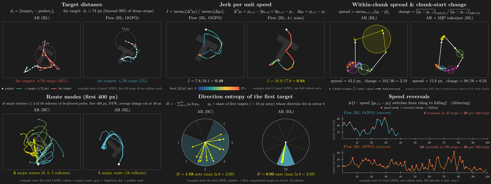
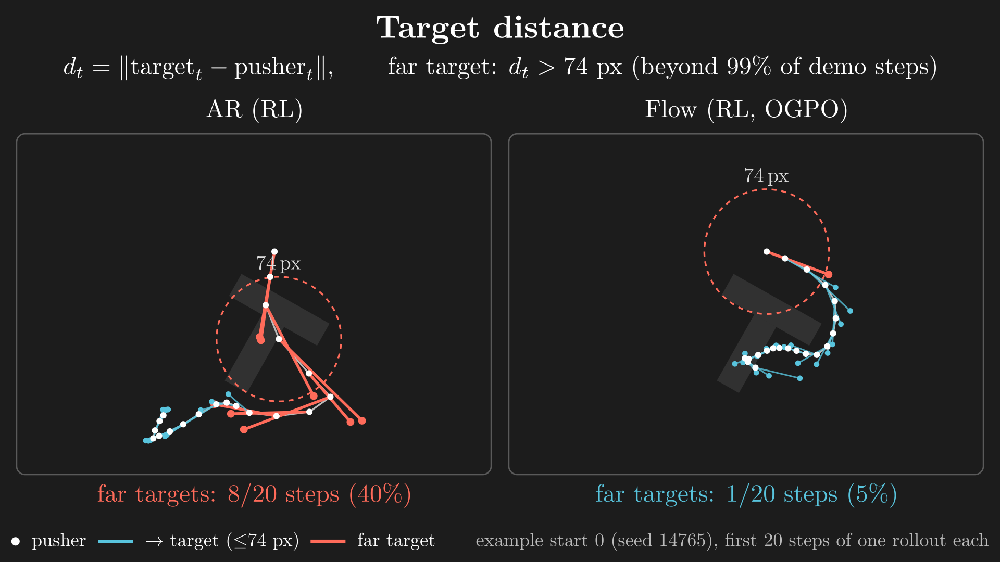
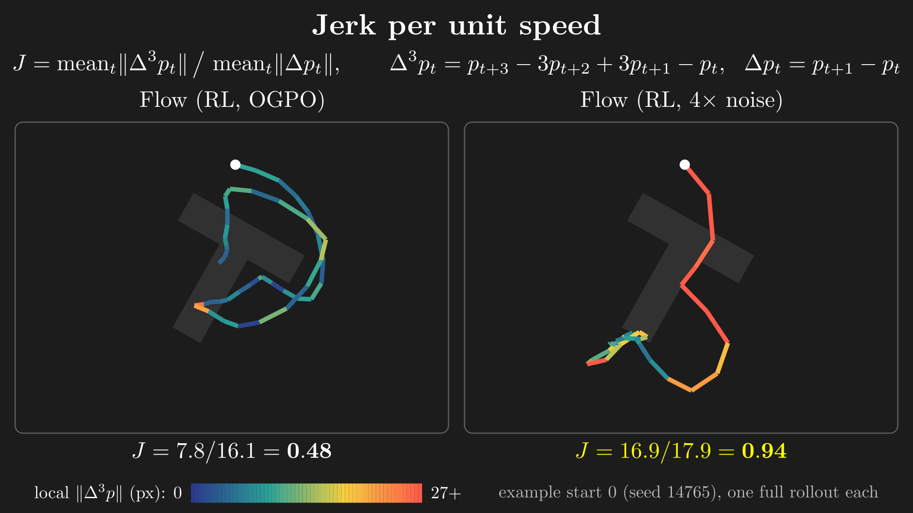
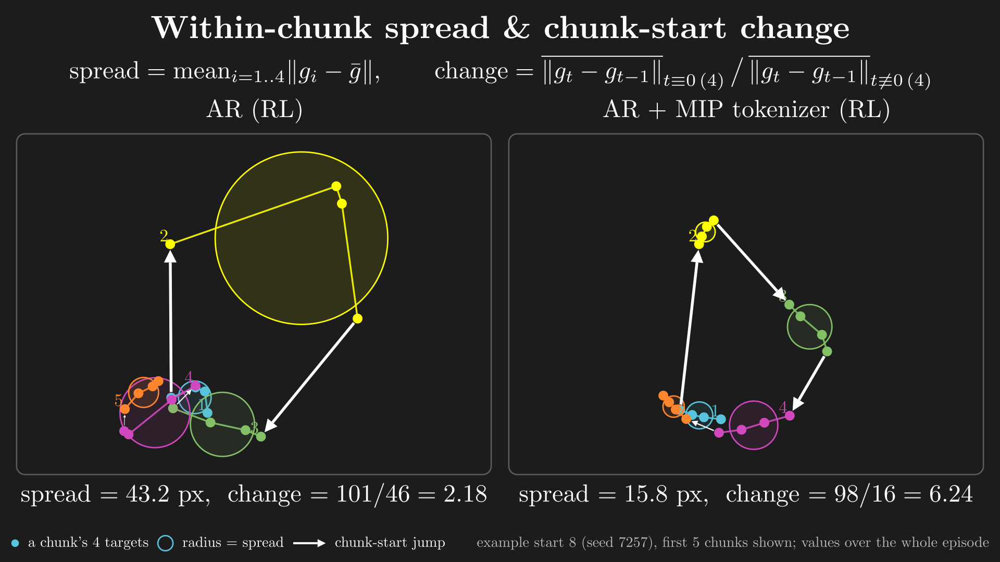
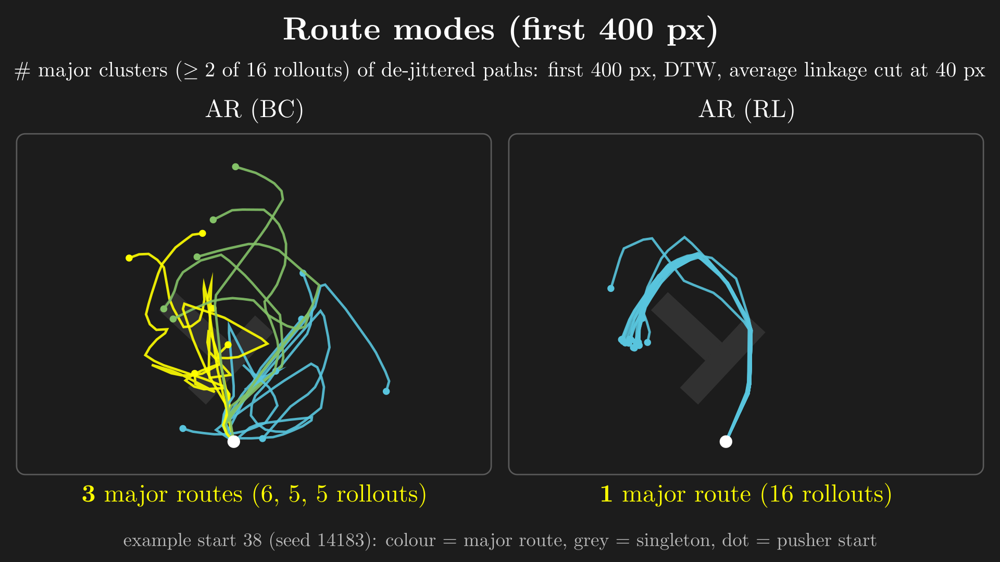
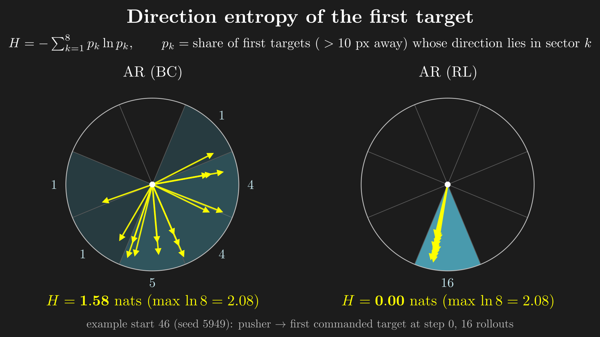
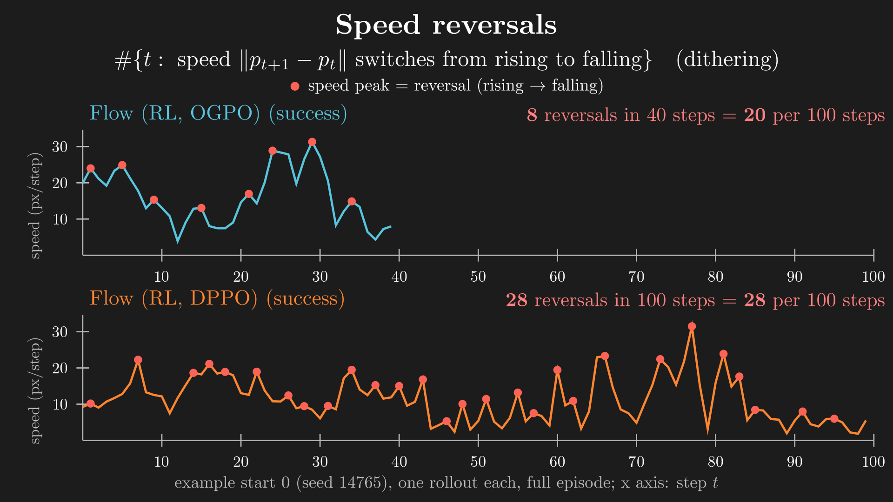
The setup in brief
We fine-tune three types of imitation-trained policy with RL on one pushing task and compare how fast they solve it. These are the terms the rest of the report relies on.
- PushT is a pushing task on a flat board. A round pusher must push a T-shaped block onto a goal pose (the green T in the figures) on a 512 × 512 px board. One step is 0.1 s, and an episode ends at success or after 300 steps.
- An action is a target point. Each step the policy names a target point, and a PD controller (a spring-like controller that pulls the pusher toward the target point) moves the pusher toward it. Actions come in chunks of 4: the policy outputs 4 target points and is queried again after all 4 have run.
- By default the target is a point on the board. With standard PushT actions each action is the target point on the 512 × 512 px board, wherever the pusher is. Appendix A compares three offset-based action formats, in which the target is set relative to the pusher or to the previous target.
- AR and DD pick codes; flow outputs actions. AR and DD choose discrete codes from an FSQ tokenizer, whose codes form a 63 × 63 grid, one code per action. AR picks a chunk's 4 codes one after another, and DD fills in all 4 by repeatedly unmasking them (discrete diffusion). A small frozen decoder turns the 4 codes into 4 actions. Flow is a flow-matching policy that produces the 4 actions directly from Gaussian noise.
- Training is BC, then RL with OGPO. Each policy is first trained by behavior cloning (BC) on human demos, then fine-tuned with OGPO, an off-policy actor-critic method with a replay buffer and a Q-ensemble critic. During training OGPO samples 8 candidate chunks for each replay state and the critic scores them. The actor's PPO-style update then raises the probability of the candidates scored above the group's mean and lowers the rest; we call this candidate ranking. OGPO runs train for 1M environment steps. Evaluation does no ranking: actions are sampled directly from the policy.
- Flow uses tapered noise. During RL, flow adds Gaussian noise at each denoising step that shrinks as the chunk nears its final form (\(\sigma_t = \sigma\sqrt{1-t}\)), and a score correction keeps the noisy samples on the distribution the flow has learned. We use base noise \(\sigma = 0.04\) unless a section says otherwise; some later sections still use the earlier flow setup (constant noise \(\sigma = 0.005\)) and say so there.
- RL starts from a similarly weak BC checkpoint. RL starts from the BC starting checkpoint: the BC checkpoint, after at least 30k BC steps, whose success is closest to 22% on a 32-episode evaluation. The aim is that no policy type gets a head start from better imitation, but the match is rough. One 32-episode evaluation is noisy, BC success on the 64 test starts ranges from 19 to 62%, and the six flow reruns of Appendix C start at 25 to 41%. Those six flow runs first used the rule without the 30k minimum and were rerun.
- Results come from 64 fixed test starts. Every main number is a mean over the 64 test starts (a fixed set of initial positions spanning easy and hard ones) and 3 training seeds. Starts are named by the seed that generates them, such as 12345.
- Speed is measured as steps to success. It is the episode length of successful episodes only, so lower means the task is done faster. Success rate is reported separately.
Detailed summary
Each part of the report in order, with its main numbers and caveats. Unless stated otherwise, results use standard PushT actions, OGPO, the 64 test starts and 3 training seeds, and flow uses \(\sigma = 0.04\). A few later sections measured flow with the earlier flow setup (constant noise); they are marked below.
Where the speed comes from
- With enough noise, flow is as fast as the token policies. Flow takes 28.6 steps [27.2, 30.2] vs 27.7 for AR and DD. It aims farther (median target distance 91 vs 76 to 77 px) and moves faster (39.8 vs 36.3 to 36.8 px per step), which offsets its slightly longer paths (1,141 vs 1,029 to 1,045 px). Route variety is similar (Vendi score, an effective number of distinct paths, 4.2 vs 3.9 to 4.2).
- Flow's speed is set by its noise. At \(\sigma = 0.005\) flow fails to learn reliably (45% success). At 0.01 it takes 58.2 steps, at 0.02 31.1 and at 0.04 28.6. At 0.1 paths grow to 1,529 px, motion gets rougher and steps rise to 37.8.
- Noise limits both flow's exploration and its update size. With small \(\sigma\), random tries barely move the target, and one clipped update moves a chunk by roughly \(\epsilon_{\mathrm{clip}}\,\sigma\). AR and DD sample from a categorical over codes that span the demo range, so neither limit applies to them. The tests cannot separate exploration from update size.
- AR and DD aim farther before RL. Their BC policies already move at 11 to 12 px per step vs 8 for BC flow.
- Far moves reuse demo codes in new situations. RL shrinks the set of codes in use from 2300 to 3300 to 500 to 1000, and codes at the edge of the 63 × 63 FSQ grid appear 8 to 11 times as often as in the demos.
Where the speed comes from · Noise test · Flow noise sweep
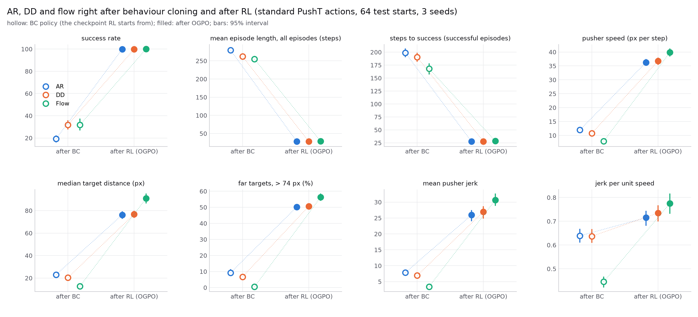
1 · Policy mixing layer
- Only a GDN-only policy changes behaviour, and only for RL AR. With every attention block replaced by Gated DeltaNet (GDN, a recurrent layer with decaying memory), AR's jerk falls from 25.9 to 21.6 and within-chunk target spread from 43 to 34.4 px, while the chunk-start target-change ratio (how far the target moves at a chunk's first step relative to other steps) rises from 2.31 to 2.76, all Holm-corrected.
- The other mixers behave like attention. GDN head, hybrid and Kimi (a GDN variant with per-channel decay) change nothing for AR or DD after RL beyond seed noise, and no mixer changes route variety.
- See the section for its flow results.
2 · Tokenizer decoder
- The decoder mixer barely matters. The only changes surviving Holm correction after RL come from the GDN-head decoder, which widens AR's within-chunk spread from 43 to 50.9 px and raises block jerk from 10.3 to 12.8. No decoder changes route variety.
- New decoders reconstruct slightly better. Mean endpoint error on held-out demos is 1.6 to 1.8 px vs 1.9 for attention.
3 · Decoder × policy grid
- All 50 combinations learn. Five decoders × five policy mixers × AR and DD, 3 seeds each, reach at least 97% success; AR takes 26.7 to 30.2 steps and DD 24.7 to 28.6.
- Averaging over 15 runs per mixer confirms the GDN-only AR effect, larger. Jerk falls from 25.9 to 19.1, within-chunk spread from 43 to 30.5 px and median target distance from 76.2 to 67.8 px, while the chunk-start jerk ratio rises from 1.47 to 1.58 (Holm-corrected). A hybrid policy also smooths AR (jerk 22.2) without sharper chunk starts.
- Decoders and DD show nothing after RL. No decoder main effect on AR survives, DD's GDN-only smoothing exists only before RL, and BC differences in route count disappear after RL.
4 · Critic inputs
- A critic on code ids learns slowly. Scoring learned embeddings of the 4 code ids instead of decoded actions, DD passes 90% at 730k to 810k steps (vs 130k to 310k), AR never does on seed 2, and policies take about 50 steps.
- It also changes how policies move. The chunk-start target-change ratio rises from 2.3 to 3.96 (DD) and 2.31 to 3.93 (AR), Holm-corrected. Speed reversals and contact switches roughly double or more; route variety is unchanged.
- Initializing from the policy's code embeddings does not fix AR. Random and frozen initializations still fail on seed 1. Frozen embeddings make AR rougher (jerk 26.4 to 34.5) and DD smoother (jerk per unit speed 0.945 to 0.824).
5 · OGPO vs DPPO
- DPPO (on-policy PPO with a state-value critic, 10M steps) needs far more samples. Its token policies pass 90% after 4.4M to 5.9M steps, and flow's training success peaks at 46 to 55%.
- Its policies take small steps and dither. Median target distances fall to 22.5 to 30 px; token jerk falls but jerk per unit speed does not. In 52% of DPPO flow episodes the pusher reverses ten or more times with little net motion.
- Causes are confounded. DPPO changes replay, critic, noise and budget together; almost every behaviour effect survives Holm correction.
6 · Denoising tokenizers
- MIP tokenizers flatten each chunk. Trained also to recover the clean chunk from a corrupted one, they cut within-chunk spread from about 43 to 13 to 23 px for AR and DD in all four settings (Holm-corrected), while AR's chunk-start target-change ratio rises from 2.31 to 4.67 to 7.64.
- The cost is small. Policies take 28 to 31 steps at 31 to 32 px per step (vs 36 to 37), and reconstruction error rises to 2.1 to 2.8 px with Gaussian noise and about 6 with correlated (OU) noise. The encoder-decoder variant flattens equally but narrows DD's routes in three settings (Vendi 3.91 to 2.92 to 3.2).
- The motivating premise goes untested. RL policies emit no codes outside the demos, so robustness to unseen codes never comes into play.
Smoothness and multimodality across policy types
- Token policies are not extra rough at chunk boundaries. Every chunked policy has extra jerk at chunk starts (demos 1.05). Before RL, AR's chunk-start jerk ratio is 1.66, DD's 1.62 and flow's 1.43. After RL, AR's is 1.47 and DD's 1.42 vs 1.26 for flow (flow noise sweep).
- BC token policies are the multimodal ones. Entropy of the first T face touched is 0.66 nats (AR) and 0.42 (DD) vs 0.16 for flow, and falls to 0.23 to 0.25 for AR and DD after RL.
- Its first target has fewer Gaussian-mixture components than AR's and DD's (the code lattice inflates the latter).
Representations
- BC token policies drop state in their last layer; RL restores it. A linear probe for the goal offset reaches \(R^2\) 0.98 to 0.99 at layer 1 but 0.15 to 0.17 at the last layer, rising to 0.65 (AR) and 0.73 (DD) after RL.
- RL DD follows the state, BC AR follows earlier codes. Swapping the state shifts RL DD's output by 23 to 27 nats vs 3 to 6 for swapping other positions; BC AR shows the reverse (9 vs 19). None of this is tested causally.
Appendix
- Three robustness checks. With offset action formats AR and DD take 36 to 40 steps. Tokenizers also trained on about 1M RL-visited actions undo the MIP slowdown (one seed). Without a 30k-step floor on the BC starting checkpoint, five of six flow runs never learned the reference start; reruns all learn.
Offset formats · Extra-RL-data tokenizers · BC starting checkpoints
Full report
On PushT with standard PushT actions, RL fine-tuning with OGPO lifts weak BC policies of every type to 97 to 100% success on the 64 test starts. How fast the pusher moves depends on the policy type and, for flow, on the size of its sampling noise.
- Success is high for every policy type. AR, DD and flow all reach 97 to 100% after OGPO.
- With enough sampling noise, flow is as fast as AR and DD. At its best noise level, flow matches the token policies; with too little noise it is slow or fails to learn. The numbers follow in the short answer. All three finish far faster than the human demos, which take a median 121 steps.
- The report opens with "Where the speed comes from". That section gathers the speed analysis and the flow noise tests, in which flow is retrained with more or less sampling noise. It is the only place where speed is the main topic.
- Six separate ablations follow, and each describes what its change does to behaviour. For every change we report smoothness and jerk, the commanded target points, contact with the block, and multimodality across rollouts, with at most a sentence on speed. Section 1 changes the policy's mixing layer, the layer that mixes information across the 4 positions of a chunk: attention, GDN (Gated DeltaNet, which carries a decaying memory through the sequence) or Kimi (Kimi Delta Attention, a GDN variant with one decay per key channel). Section 2 changes the same layer inside the tokenizer's decoder, with an attention policy, and section 3 crosses the two.
- Sections 4 to 6 change the critic, the RL method and the tokenizer. By default OGPO's critic scores the decoded continuous actions; section 4 gives it the code ids instead. Section 5 swaps OGPO for on-policy DPPO and section 6 changes how the tokenizer is trained. Some choices bring others with them (each tokenizer needs its own BC policy), and the tables list what else varies.
- Two topics sit in the appendix. The three offset-based action formats are in Appendix A and tokenizers trained with extra RL data in Appendix B.
Short answer: with standard PushT actions and \(\sigma = 0.04\), flow takes 28.6 steps [27.2, 30.2] vs 27.7 for AR and DD, and the intervals overlap (flow noise sweep). Flow's speed is set by its exploration noise \(\sigma\): with too little it barely explores far targets and is slow or fails. Why:
- AR and DD already aim farther before RL. Their BC policies move the pusher 11 to 12 px per step vs 8 for flow's. They propose far targets (more than 74 px from the pusher, beyond 99% of demo steps) in about 15% of samples (AR alone 16%) vs 9% for flow.
- With enough noise, RL flow aims as far as AR and DD. At \(\sigma = 0.04\), flow's median target distance is 91 px vs 76 to 77 for AR and DD, and 56% of its targets are far vs 50 to 51%. It moves 39.8 px per step vs 36.3 to 36.8, so it finishes in 28.6 steps although its paths are slightly longer (1,141 vs 1,029 to 1,045 px).
- Too little noise makes flow slow or stops it learning. At \(\sigma = 0.005\) flow fails to learn reliably (45% success). At 0.01 it takes 58.2 steps, at 0.02 31.1 and at 0.04 28.6. More noise than that makes paths longer and rougher: at 0.1 paths reach 1,529 px and flow takes 37.8 steps.
- Noise sets how far flow explores. Flow builds each chunk in 10 denoising steps and, during RL, adds Gaussian noise of scale \(\sigma\) at each step, which also gives it log-probabilities. Actions are scaled so the 512 px board spans \([-1, 1]\), so a small \(\sigma\) means its random tries hardly move the target point.
- Noise also sets how far one update moves flow. OGPO's clipped PPO-style update acts on the log-probability of those noisy steps. Shifting the output by \(d\) changes it by about \(d/\sigma\), so with clip \(\epsilon_{\mathrm{clip}} = 0.05\) one update moves flow's output by roughly \(\epsilon_{\mathrm{clip}}\,\sigma\), a tiny distance on the board when \(\sigma\) is small. (The clip stops rewarding larger moves rather than forbidding them, so this is a rough scale.)
- Token policies' sampling is not limited this way. AR and DD sample one of 3,969 codes covering the whole demo action range, so one sample can be a far target, and an update can shift probability to a far code as easily as to a near one. Their fast plans reuse familiar codes in new situations: with standard PushT actions each code names a fixed board point, so a code the demos used when the pusher was elsewhere lands far from where the pusher is now (see the question on fast plans below).
- Not settled. \(\sigma\) sets both exploration and update size, so we can't say which one matters.
Unless a passage says otherwise, every number comes from the 64 test starts and training seeds 1 to 3 at their final checkpoints, with 8 or 16 episodes per start and seed (the rule is in "How we evaluate").
- Some runs have fewer seeds. The tables give the count for every run and combination. Section 6c crosses denoising tokenizers with decoder and policy mixing layers; most of its combinations have one seed, and those with Gaussian noise and loss weight 1 have one to three. The Appendix B runs and the flow runs started from a too-early BC checkpoint have one. In Appendix A, flow built only from GDN blocks with 64 px-capped offsets has 2 seeds, and so do the flow noise tests, in which flow is retrained with 8 times more or 8 times less sampling noise (the uncapped-offset run with 8 times less noise has one seed at its final checkpoint and one stopped at 600k).
- Final checkpoints differ in environment steps. Seed-1 flow runs with GDN layers stop early. Against the 1M-step OGPO budget, standard-action attention flow seed 1 is at 800k environment steps, DPPO at its full 10M, and the seed-1 rate-limited-target flow rerun in Appendix A at 750k.
- Some seed-1 flow runs were rerun. Six flow runs first used the starting rule without the 30k minimum, which picked a checkpoint after only 5k to 20k BC steps, so we reran them from the BC starting checkpoint (Appendix C).
- Every section shows the same three example starts. Starts are named by the environment seed that generates them, not the training seed. Each section opens with start 12345 (the reference start) with all training seeds overlaid, then the same panels for 3942 (median difficulty) and 8039 (hard) in collapsed blocks, then the statistics over the 64 test starts.
Evidence at a glance
| # | Experiment | Claim | Evidence | Strength | Baseline, and what else varies |
|---|---|---|---|---|---|
| C1 | BC policies | With the earlier flow setup (constant noise \(\sigma = 0.005\)) AR and DD finish in 28 vs 55 steps, helped by BC policies that already aim farther (11 to 12 vs 8 px per step; far targets 15% vs 9% of samples, 73% vs 41% after OGPO). The default flow at \(\sigma = 0.04\) takes 28.6 steps, so the gap is a noise-scale effect. | 512 fixed states × 64 samples; 64 starts × 3 seeds | Strong only for the earlier flow setup (constant σ = 0.005); Suggestive for the BC head start | Flow in the earlier setup (constant noise \(\sigma = 0.005\)). No run swaps BC policies. Samples from the policy, no ranking by the critic at evaluation. |
| 1 | Policy architecture | No policy mixing layer changes AR or DD steps much (at most +1.2 averaged over decoders for GDN-only AR, Holm \(p = 0.096\); 2.5 with the attention decoder). GDN-only lowers RL AR speed by 3.9 px per step and makes its chunks smoother inside and sharper at chunk starts. Flow variants (earlier setup, constant noise) take 51 to 63 steps vs 55, within flow's seed spread (seed means 48 to 79). | 64 starts × 3 seeds, paired by start; Holm-corrected main effects | No effect on token steps; Suggestive for flow | Attention layer. Flow GDN seed-1 runs stopped early (checkpoints 600k to 800k); the GDN-head and hybrid ones are reruns from a later BC checkpoint. Kimi starts from the BC starting checkpoint (30k minimum) throughout. |
| 2 | Tokenizer decoder, attention policy | No decoder mixing layer changes AR's steps; GDN-family decoders make DD 1.5 to 2 steps faster, about 2 px per step faster with farther targets. The decoder barely changes how the pusher moves: only the GDN-head decoder spreads RL AR's target points within a chunk (43 to 50.9 px) and makes the block jerkier. | 64 starts × 3 seeds, AR and DD | Strong for no change in steps | Attention decoder. Each decoder has its own tokenizer and BC policy. Steps are not in the Holm correction on this subset. |
| 3 | Decoder × policy mixer | Neither decoder nor policy mixing layer changes success, and decoder layers move steps by at most 1.3 and speed by at most 1.2 px per step. Policy layers lower RL AR speed by 1.1 (Kimi), 1.7 (hybrid) and 3.9 (GDN only) px per step. | 5 × 5 grid, 64 starts × 3 seeds per combination | No effect on success and steps; Strong for the small speed effects | Attention decoder and policy. |
| 4a | Critic input | A critic on code ids learns more slowly and ends slower than a critic on decoded actions: DD's final policies take 17 to 30 more steps to success, and AR fails on some seeds. We don't know why yet. | Success curves, 64 starts × 3 seeds | Suggestive | Critic on decoded actions. Code-id critic width is 32; no critic on decoded actions at that width. |
| 4b | Critic on code ids: embeddings | Random, frozen and width-32 AR critics on code ids each failed on one of three seeds, while trainable policy init did not fail on its three. Three seeds cannot separate the initializations. | Success curves, 64 starts × 3 seeds | Unresolved | Random-init width-128 critic; no critic on decoded actions at width 128. |
| 5 | Off-policyness | OGPO takes AR and DD past 90% success with about 14 to 45 times fewer environment steps than DPPO (130k to 310k vs 4.4M to 5.9M), and DPPO flow never passes 55% in its training rollouts. DPPO policies are 3 to 4 times slower (AR 90, DD 115, flow 183 steps over its 42% successes) but keep flow slowest, so the gap at flow's old noise does not need OGPO's candidate ranking. | Success curves on a log axis; 64 starts × 3 seeds | Strong for OGPO as configured against DPPO as configured; Unresolved for which part of OGPO produces the speed | OGPO. DPPO also changes the update (on-policy), critic (\(V(s)\) with GAE), hyperparameters, flow's noise schedule and budget (10M). DPPO curves are noisy training rollouts; OGPO curves are evaluations. |
| 6 | Tokenizer robustness | Denoising tokenizers cost a little clean reconstruction and keep success at 99 to 100%. They lower AR and DD speed by 4 to 5 px per step, and we don't know why yet. | Reconstruction, 64 starts × 3 seeds | Strong | Default tokenizer. OU noise \(\sigma \le 0.25\), Gaussian \(\sigma \le 0.5\). |
| 6b | MIP encoder-decoder | The MIP encoder-decoder costs less reconstruction than the MIP decoder. RL shows no detectable difference (same success, 4 to 5 px per step slower than the default tokenizer). | Reconstruction; 64 starts × 3 seeds | Strong | Default tokenizer. |
| 6c | MIP decoder × decoder layer × policy layer | MIP decoder tokenizers made AR slower, with nearer targets, in 95 of the 100 grid combinations we ran (the other 5 are within 0.6 steps): the median combination takes 27.7 steps with the standard tokenizer vs 29.3 to 31.4 with MIP. With one seed in most MIP combinations, we can't tell whether any decoder layer benefits more. | 64 starts; 1 seed in most combinations, up to 3 | Suggestive for the slowdown; Unresolved for the interaction | Standard-tokenizer grid (section 3, 3 seeds each), so MIP vs standard also compares seed 1 with a 3-seed mean. |
| A | Offset-based action formats | With the earlier flow setup (constant noise \(\sigma = 0.005\)) AR and DD stay faster than flow in all three offset-based formats (uncapped 41 vs 36 to 37 steps, 64 px-capped 129 and rate-limited 115 vs 37 to 40), and the gap grows as flow's fixed noise shrinks in pixels. Retraining 64 px-capped flow with 8 times the noise gives 38 steps at 100% success, while raising it only at evaluation leaves 140. | 64 starts × 3 seeds, paired by start; noise test 2 seeds | Strong for the ordering only for the earlier flow setup (constant σ = 0.005), and for the noise effect with 64 px-capped offsets; Unresolved for the channel (px or action units) | Standard PushT actions. Each format has its own tokenizer and BC policy. Noise test not run with standard PushT actions or rate-limited targets. |
| B | Tokenizers trained with extra RL data | MIP tokenizers trained with extra RL data remove most of the speed cost of demo-only MIP (AR 28 to 29 steps, 35 to 38 px per step). | Success curves, 64 starts, 1 seed per run | Suggestive | Standard tokenizer trained with extra RL data. Code-id critic sub-claim dropped (one success is expected from 4b's 2-in-3 rate). |
Where the speed comes from
Does the policy type change how fast the pusher moves and how quickly the task is done?
Yes. With standard PushT actions (each action is the target point on the 512 × 512 px board, wherever the pusher is) under OGPO, AR and DD finish in about half the steps of flow in the earlier flow setup (constant noise \(\sigma = 0.005\)), because they command target points much farther from the pusher. With the default flow at \(\sigma = 0.04\), flow catches up.
- In the earlier setup (constant noise), flow takes twice as long. AR and DD need 28 steps (95% interval 27 to 29) and flow 55 (52 to 57), and flow is slower than AR on every one of the 64 test starts. AR and DD move the pusher at 36 to 37 px per step vs 18 for flow. All three are far faster than the demos (9.4 px per step), which raises the next question: where do fast plans come from?
- With flow at \(\sigma = 0.04\) the gap closes. Flow takes 28.6 steps (27.2 to 30.2) vs 27.7 for AR and DD, moving 39.8 px per step with a median target distance of 91 px (flow noise sweep).
Mechanism. Our working account of why flow is slow at small noise follows. The noise sweeps below test the noise part by intervention; the rest is untested.
- AR and DD start ahead and OGPO widens the lead. On successful episodes the BC policies of AR and DD move at 11 to 12 px per step vs 8 for flow, and propose far targets (more than 74 px from the pusher, beyond 99% of demo steps) 1.7 times as often (about 15% vs 9% of samples; AR alone 16%). After OGPO those shares are 73% and 41% (flow at its old noise), and the speed ratio grows from about 1.4 to 2.0. Evaluation samples directly from the policy with no ranking by the critic, so this growth is learned into the policy. OGPO's candidate ranking acts only during training, and no run removes it, so we can't say how much of the growth it causes.
- At small noise flow barely explores far targets. Flow builds each chunk in 10 denoising steps and, during RL, adds Gaussian noise with std \(\sigma = 0.005\) at each denoising step, which also gives it log-probabilities. Actions are scaled so the 512 px board spans \([-1, 1]\), so this is about 1.3 px per denoising step: its random tries hardly move the target point.
- At small noise each update can only move flow a little. OGPO's clipped PPO-style update acts on the log-probability of those noisy steps. Shifting the output by \(d\) changes it by about \(d/\sigma\), so with clip \(\epsilon_{\mathrm{clip}} = 0.05\) one update moves flow's output by roughly \(\epsilon_{\mathrm{clip}}\,\sigma\), a tiny distance on the board. (The clip stops rewarding larger moves rather than forbidding them, so this is a rough scale.)
- AR and DD's sampling is not limited this way. They sample one of 3,969 codes covering the whole demo action range, so one sample can be a far target, and an update can shift probability to a far code as easily as to a near one.
- The direct test supports this. Retrained with 2 or 4 times its noise, flow takes 34 steps instead of 55 (details below, 3 seeds). With the default flow at \(\sigma = 0.04\) it takes 28.6.
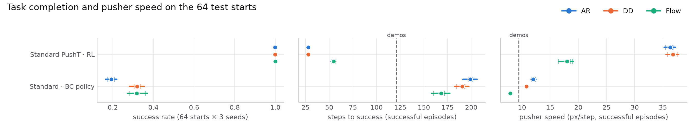
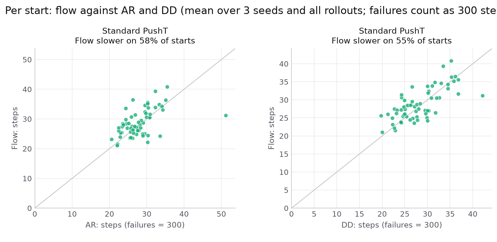
what is this?
- Success rate: Share of episodes that bring the T onto the goal pose; higher is better.
- Steps to success: How many control steps a successful episode takes; lower is faster.
- Pusher speed: How far the pusher moves per control step; higher is faster.
- Far-target proposals: Share of sampled target points farther from the pusher than the demo 99th percentile.
Testing the noise explanation with standard PushT actions
Earlier flow setup (constant \(\sigma\)). If flow is slow because its exploration noise is tiny, retraining it with more noise should make it faster. It does: in the earlier setup (the same \(\sigma\) at every denoising step) and 2 or 4 times the noise (\(\sigma = 0.01\) and 0.02; × 8 is 0.04), flow moves the pusher as fast as AR and DD and closes about three quarters of the step gap. The default flow, with tapered noise, closes all of it (below). All numbers are over the 64 test starts and 3 training seeds per noise level.
- Flow now aims as far as AR and DD. Its median target distance (distance from the pusher to the commanded target point) rises from 43 px to 79, 80 and 88 px at × 2, × 4 and × 8, and the share of targets more than 74 px away from 14% to 52 to 56%. AR and DD aim 76 to 77 px away, 50 to 51% of the time.
- It moves the pusher about twice as fast. 32.9, 36.3 and 38.8 px per step vs 18.0 for flow at \(\sigma = 0.005\) and 36 to 37 for AR and DD.
- Most of the step gap closes; longer paths explain the rest. 34.2 steps at × 2 and 33.8 at × 4, vs 54.6 for flow at \(\sigma = 0.005\) and 27.7 for AR and DD. At about the same speed as AR and DD, the retrained flow travels farther: its successful paths are 1,118 and 1,218 px long vs 1,029 for AR, 1,045 for DD and 968 for flow at \(\sigma = 0.005\). At × 8 the paths grow to 1,737 px, so it needs 44.2 steps although it moves fastest; more noise is not always better.
- Changing the noise only at evaluation does nothing. Flow at \(\sigma = 0.005\) evaluated with half or double the noise takes 56 to 59 steps, so the effect comes through training.
- The motion becomes about as rough as AR and DD's. Mean pusher jerk rises from 9.8 to 21.6 and 27.5 at × 2 and × 4 (AR 25.9, DD 27.0), and jerk per unit speed from 0.55 to 0.66 and 0.76 (AR and DD 0.72 to 0.74). At × 8 it is much rougher (jerk 39.8, speed reversals 2.5 to 8.9 per episode). The block is pushed harder too (block jerk 3.3 to 9.4, 11.4 and 11.8 at × 2, × 4 and × 8).
- The chunk-start jerk ratio falls because the inside of each chunk gets rougher. The ratio (\(\text{jerk at steps where a new chunk starts} \div \text{jerk at other steps}\)) goes from 1.56 to 1.39, 1.24 and 1.13; at × 4 and × 8 it is below AR's 1.47 and DD's 1.42. Chunk boundaries are not smoother in absolute terms.
- Routes become more varied. Across the rollouts from one start, the Vendi score (effective number of distinct paths) rises from 3.0 to 4.1, 5.2 and 6.8 (AR 4.2, DD 3.9) and the mean pairwise path distance from 68 px to 92, 117 and 142 px. Which T face the pusher touches first does not change beyond noise. These changes survive Holm correction; the effect map below lists every metric.
- Not settled. The noise sets both how far flow explores and how far one update can move it (see the background), so this test cannot say which of the two matters.
Background: what flow's exploration noise is, in maths, and why its size matters
How flow samples an action chunk. Flow turns Gaussian noise into a chunk of 4 actions in \(K = 10\) denoising steps. During OGPO the steps are stochastic (an SDE):
\[ a_{k+1} = a_k + \Delta t \, v_\theta(a_k, t_k, s) + \sigma \, \varepsilon_k, \qquad \varepsilon_k \sim \mathcal{N}(0, I), \qquad k = 0, \dots, 9, \]where \(v_\theta\) is the learned velocity field, \(s\) the state and \(\sigma = 0.005\) the noise std, the same at every step. The deterministic version (ODE) drops the \(\sigma \varepsilon_k\) term.
The noise in pixels. Actions are normalized to \([-1, 1]\). With standard PushT actions the target point is \(x_{\mathrm{px}} = 256\,(a + 1)\), so one action unit is 256 px. Per denoising step the noise has std \(256\,\sigma\) px. If nothing pulled it back, 10 independent steps would add up to
\[ 256\,\sigma\sqrt{K} \ \text{px}; \]the velocity field may shrink this, so it is an upper bound.
| Noise | \(\sigma\) (action units) | Per denoising step (px) | Over 10 steps, at most (px) |
|---|---|---|---|
| original | 0.005 | 1.3 | 4.0 |
| × 2 | 0.01 | 2.6 | 8.1 |
| × 4 | 0.02 | 5.1 | 16.2 |
| × 8 | 0.04 | 10.2 | 32.4 |
For scale: the original RL flow commands targets a median 43 px from the pusher, AR and DD 76 to 77 px. So at the original \(\sigma\), random tries move the target by a few pixels at most.
Why \(\sigma\) also limits each policy update. The chunk's log-probability is the sum of the Gaussian step log-densities:
\[ \log \pi(\text{chunk} \mid s) = -\sum_{k=0}^{K-1} \frac{\lVert a_{k+1} - \mu_k \rVert^2}{2\sigma^2} + \text{const}, \qquad \mu_k = a_k + \Delta t \, v_\theta(a_k, t_k, s). \]If an update shifts every step mean by \(\delta\), the log-ratio of an already sampled chunk changes by
\[ \Delta \log \pi \approx \frac{\delta}{\sigma} \sum_{k=0}^{K-1} \varepsilon_k, \qquad \operatorname{sd}\!\left(\Delta \log \pi\right) = \frac{\sqrt{K}\,\lvert\delta\rvert}{\sigma}. \]OGPO's PPO-style clip (\(\epsilon_{\mathrm{clip}} = 0.05\)) stops rewarding an update once the ratio moves by more than 5%, that is once \(\sqrt{K}\,\lvert\delta\rvert/\sigma \approx \epsilon_{\mathrm{clip}}\). Each step mean then moves by \(\lvert\delta\rvert \approx \epsilon_{\mathrm{clip}}\,\sigma/\sqrt{K}\), and the whole chunk by about
\[ K\lvert\delta\rvert \approx \epsilon_{\mathrm{clip}}\,\sigma\sqrt{K} \approx 0.0008 \ \text{action units} \approx 0.2 \ \text{px per update} \]at the original \(\sigma\) (1.6 px at × 8). This is an order-of-magnitude estimate; the clip stops rewarding larger moves rather than forbidding them.
Why AR and DD are not limited this way. They pick one of 3,969 codes from a categorical distribution that covers the whole demo action range. One sample can be a far target, and the PPO ratio is the ratio of that code's probabilities, \(\pi_{\text{new}}(z \mid s) / \pi_{\text{old}}(z \mid s)\), which does not depend on how far apart codes are on the board.
What this predicts for the noise test. Larger \(\sigma\) widens the candidate chunks OGPO samples, so the critic can find and reward farther targets, and it raises the per-update step. Both predict longer commanded target distances and fewer steps as \(\sigma\) grows. The test cannot tell the two routes apart, because \(\sigma\) sets both.
The default flow: tapered noise with a score correction
Tapered noise. The default flow shrinks the noise along the chain instead of keeping it constant:
\[ \sigma_k = \sigma\,\sqrt{1 - t_k}, \qquad t_k = k/K, \qquad k = 0, \dots, K-1, \]so the first denoising step gets the full \(\sigma\) and later steps less. Score correction. It also adds a drift term that keeps the distribution of the final action the same as the deterministic flow's (in the continuous-time limit), so the noise explores the intermediate steps without biasing where the chain ends:
\[ a_{k+1} = a_k + \Delta t\left( v_\theta(a_k, t_k, s) + \tfrac{\sigma_k^2}{2}\,\nabla_a \log p_{t_k}(a_k) \right) + \sigma_k\,\varepsilon_k, \qquad \tfrac{\sigma_k^2}{2}\nabla \log p_{t_k} = \tfrac{\sigma^2}{2}\,(t_k\,v_\theta - a_k). \]How much noise is injected. Summed over the chain,
\[ \sum_{k=0}^{K-1} \sigma_k^2 = \sigma^2 \sum_{k=0}^{K-1} (1 - t_k) = 5.5\,\sigma^2 \quad (K = 10), \]against \(10\,\sigma^2\) for constant noise: in standard-deviation terms about \(0.74\times\) as much at the same base \(\sigma\).
How big a policy step the clip allows. With step-dependent noise the log-ratio change of a sampled chunk under a mean shift \(\delta\) per step has spread
\[ \operatorname{sd}(\Delta \log \pi) = \frac{|\delta|}{\sigma}\sqrt{\sum_{k=0}^{K-1} \frac{1}{1 - t_k}} = \frac{|\delta|}{\sigma}\sqrt{K\,H_K} \approx 5.41\,\frac{|\delta|}{\sigma}, \qquad H_K = \sum_{j=1}^{K} \frac{1}{j}, \]against \(\sqrt{K} \approx 3.16\) for constant noise. Setting it to \(\epsilon_{\mathrm{clip}}\) gives a chunk-level step of about
\[ K\,|\delta| \approx \frac{K}{\sqrt{K\,H_K}}\,\epsilon_{\mathrm{clip}}\,\sigma \approx 1.85\,\epsilon_{\mathrm{clip}}\,\sigma, \]about \(0.58\times\) the constant-noise value at the same \(\sigma\). Both numbers say a tapered \(\sigma\) behaves roughly like a constant noise about half as large, which is what the sweep shows. The step sizes per base \(\sigma\) (standard PushT actions, 256 px per action unit, \(\epsilon_{\mathrm{clip}} = 0.05\)):
| Base \(\sigma\) | Noise at the first step (px) | Total injected noise (px) | Chunk step per update, order of magnitude (px) |
|---|---|---|---|
| 0.005 | 1.3 | 3.0 | 0.12 |
| 0.01 | 2.6 | 6.0 | 0.24 |
| 0.02 | 5.1 | 12.0 | 0.47 |
| 0.04 | 10.2 | 24.0 | 0.95 |
| 0.1 | 25.6 | 60.0 | 2.37 |
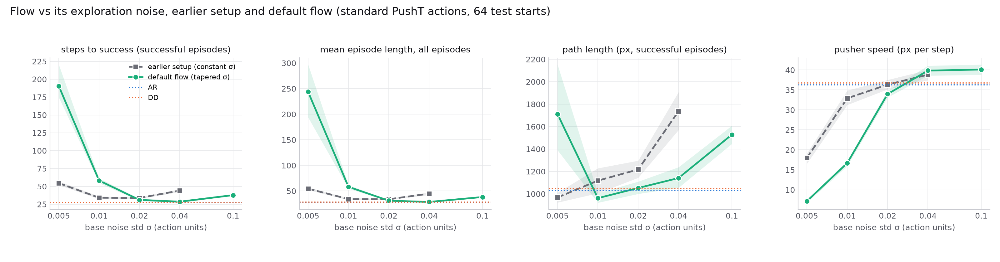
| Run (standard PushT actions) | Seeds | Success | Steps to success | Mean episode length, all episodes | Pusher speed (px/step) | Median target distance (px) | Far targets (> 74 px) | Path length (px) | Mean jerk | Chunk-start jerk ratio | Vendi (route variety) |
|---|---|---|---|---|---|---|---|---|---|---|---|
| Original training, noise \(\sigma = 0.005\) (1.3 px per denoising step) | 3 | 100% | 54.6 | 54.6 | 18.0 | 43 | 14% | 968 | 9.8 | 1.56 | 3.0 |
| Original training, evaluated with noise \(\sigma \times 0.5\) | 1 | 100% | 56.2 | 56.2 | 16.4 | 40 | 9% | 919 | 8.9 | 1.58 | 2.7 |
| Original training, evaluated with noise \(\sigma \times 2\) | 1 | 100% | 59.2 | 59.2 | 16.4 | 39 | 9% | 961 | 9.3 | 1.53 | 3.2 |
| Retrained with noise \(\sigma \times 2 = 0.01\) (2.6 px) | 3 | 100% | 34.2 | 34.3 | 32.9 | 79 | 52% | 1118 | 21.6 | 1.39 | 4.1 |
| Retrained with noise \(\sigma \times 4 = 0.02\) (5.1 px) | 3 | 100% | 33.8 | 33.9 | 36.3 | 80 | 52% | 1218 | 27.5 | 1.24 | 5.2 |
| Retrained with noise \(\sigma \times 8 = 0.04\) (10.2 px) | 3 | 100% | 44.2 | 44.9 | 38.8 | 88 | 56% | 1737 | 39.8 | 1.13 | 6.8 |
| Flow, σ = 0.005 | 3 | 45% | 190.6 | 243.8 | 7.2 | 17 | 0% | 1712 | 7.0 | 1.28 | 6.2 |
| Flow, σ = 0.01 | 3 | 100% | 58.2 | 58.2 | 16.7 | 40 | 10% | 962 | 9.3 | 1.61 | 2.9 |
| Flow, σ = 0.02 | 3 | 100% | 31.1 | 31.1 | 34.0 | 80 | 53% | 1052 | 21.9 | 1.38 | 4.0 |
| Flow, σ = 0.04 | 3 | 100% | 28.6 | 28.7 | 39.8 | 91 | 56% | 1141 | 30.7 | 1.26 | 4.2 |
| Flow, σ = 0.1 | 3 | 100% | 37.8 | 38.3 | 40.1 | 91 | 56% | 1529 | 38.9 | 1.12 | 6.1 |
| AR, for reference | 3 | 100% | 27.7 | 28.0 | 36.3 | 76 | 50% | 1029 | 25.9 | 1.47 | 4.2 |
| DD, for reference | 3 | 100% | 27.7 | 28.1 | 36.8 | 77 | 51% | 1045 | 27.0 | 1.42 | 3.9 |
Means over the 64 test starts and the available seeds; hover a number for its 95% interval. Steps, speed, path length, jerk and the jerk ratio use successful episodes; episode length counts every episode (failures end at 300 steps). Vendi is the effective number of distinct paths among the rollouts from one start.
Deterministic (ODE) evaluation of the noise-sweep runs
Everything in this report evaluates flow the way it acts during training: sampling with its noise (SDE). Flow can also be run deterministically (ODE, no noise). The training logs record both, on 32 episodes from random starts, at each run's last evaluation.
- Only at 8 times the noise does the deterministic policy slip. All runs reach 100% sampled success at 1M steps. Run deterministically, the × 8 policies reach 97%, 100% and 72% (seeds 1 to 3), while every × 2 and × 4 run stays at 100%. At large noise the policy may partly rely on its own noise.
| Noise | Seed | Last evaluation | Success, sampled (SDE) | Success, deterministic (ODE) |
|---|---|---|---|---|
| × 2 | 1 | 1000k | 100% | 100% |
| × 2 | 2 | 1000k | 100% | 100% |
| × 2 | 3 | 1000k | 100% | 100% |
| × 4 | 1 | 1000k | 100% | 100% |
| × 4 | 2 | 1000k | 100% | 100% |
| × 4 | 3 | 1000k | 100% | 100% |
| × 8 | 1 | 1000k | 100% | 97% |
| × 8 | 2 | 1000k | 100% | 100% |
| × 8 | 3 | 1000k | 100% | 72% |
Start 12345 (easy third, rank 15 of 64): all seeds
Trajectories
seed 1seed 2seed 3 · color: episode time (dark violet start, yellow end) · gray cross: failed endpoint · gray T: block start · green T: goal · black dot: pusher start · numbers in each panel: mean steps of successful rollouts per seed, with the success count when not all succeeded
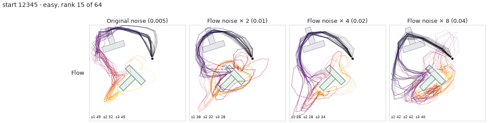
Replays
Pick a seed (or all seeds) above the player. Each panel replays rollouts 0 to 3 of that run and seed from this start, successes and failures alike. The dark disc is the pusher with a fading trail, and the pink cross is the target point (the point the controller pulls the pusher toward). ▶︎/❚❚ plays a panel and ◀ ▶ switch rollouts.
Mechanics
| Run | Method | Seed | Successes | Steps to success | Median target distance (px) | px/step |
|---|---|---|---|---|---|---|
| Flow | Original noise (0.005) | seed 1 | 16/16 | 49 | 44 | 19.1 |
| seed 2 | 16/16 | 52 | 42 | 18.6 | ||
| seed 3 | 16/16 | 45 | 53 | 23.1 | ||
| mean of 3 seeds | 48/48 | 49 | 46 | 20.3 | ||
| Flow | Flow noise × 2 (0.01) | seed 1 | 16/16 | 38 | 81 | 35.7 |
| seed 2 | 16/16 | 32 | 55 | 32.7 | ||
| seed 3 | 16/16 | 28 | 71 | 32.9 | ||
| mean of 3 seeds | 48/48 | 33 | 69 | 33.8 | ||
| Flow | Flow noise × 4 (0.02) | seed 1 | 16/16 | 28 | 84 | 37.7 |
| seed 2 | 16/16 | 28 | 73 | 36.1 | ||
| seed 3 | 16/16 | 34 | 64 | 34.3 | ||
| mean of 3 seeds | 48/48 | 30 | 73 | 36.0 | ||
| Flow | Flow noise × 8 (0.04) | seed 1 | 16/16 | 42 | 84 | 39.9 |
| seed 2 | 16/16 | 42 | 85 | 39.2 | ||
| seed 3 | 16/16 | 40 | 79 | 39.1 | ||
| mean of 3 seeds | 48/48 | 41 | 83 | 39.4 |
All rollouts from start 12345 in the evaluation on the 64 test starts (8 or 16 per seed, final checkpoints, every outcome). Steps, target distance and speed are over successful rollouts; the seed-mean row averages the per-seed values and sums the success counts.
Start 3942: trajectories, replays and mechanics (median third, rank 32 of 64)
Trajectories
seed 1seed 2seed 3 · color: episode time (dark violet start, yellow end) · gray cross: failed endpoint · gray T: block start · green T: goal · black dot: pusher start · numbers in each panel: mean steps of successful rollouts per seed, with the success count when not all succeeded
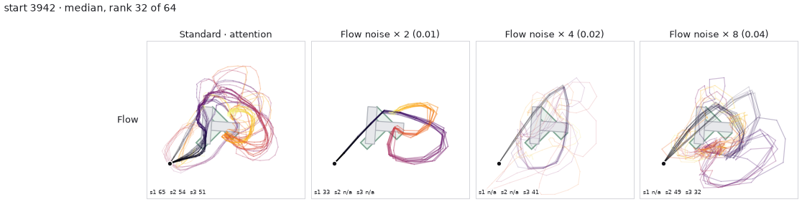
Replays
Pick a seed (or all seeds) above the player. Each panel replays rollouts 0 to 3 of that run and seed from this start, successes and failures alike. The dark disc is the pusher with a fading trail, and the pink cross is the target point (the point the controller pulls the pusher toward). ▶︎/❚❚ plays a panel and ◀ ▶ switch rollouts.
Mechanics
| Run | Method | Seed | Successes | Steps to success | Median target distance (px) | px/step |
|---|---|---|---|---|---|---|
| Flow | Original noise (0.005) | seed 1 | 16/16 | 65 | 39 | 15.5 |
| seed 2 | 16/16 | 54 | 50 | 19.0 | ||
| seed 3 | 16/16 | 51 | 53 | 21.6 | ||
| mean of 3 seeds | 48/48 | 57 | 47 | 18.7 | ||
| Flow | Flow noise × 2 (0.01) | seed 1 | 16/16 | 33 | 103 | 38.0 |
| seed 2 | 16/16 | 36 | 83 | 35.2 | ||
| seed 3 | 16/16 | 34 | 118 | 41.6 | ||
| mean of 3 seeds | 48/48 | 34 | 101 | 38.3 | ||
| Flow | Flow noise × 4 (0.02) | seed 1 | 16/16 | 28 | 66 | 38.7 |
| seed 2 | 16/16 | 33 | 85 | 40.6 | ||
| seed 3 | 16/16 | 41 | 98 | 40.2 | ||
| mean of 3 seeds | 48/48 | 34 | 83 | 39.8 | ||
| Flow | Flow noise × 8 (0.04) | seed 1 | 16/16 | 42 | 92 | 43.0 |
| seed 2 | 16/16 | 49 | 94 | 38.8 | ||
| seed 3 | 16/16 | 32 | 64 | 38.3 | ||
| mean of 3 seeds | 48/48 | 41 | 83 | 40.0 |
All rollouts from start 3942 in the evaluation on the 64 test starts (8 or 16 per seed, final checkpoints, every outcome). Steps, target distance and speed are over successful rollouts; the seed-mean row averages the per-seed values and sums the success counts.
Start 8039: trajectories, replays and mechanics (hard third, rank 53 of 64)
Trajectories
seed 1seed 2seed 3 · color: episode time (dark violet start, yellow end) · gray cross: failed endpoint · gray T: block start · green T: goal · black dot: pusher start · numbers in each panel: mean steps of successful rollouts per seed, with the success count when not all succeeded
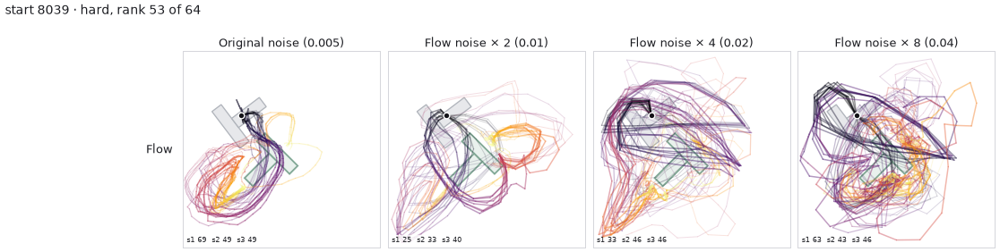
Replays
Pick a seed (or all seeds) above the player. Each panel replays rollouts 0 to 3 of that run and seed from this start, successes and failures alike. The dark disc is the pusher with a fading trail, and the pink cross is the target point (the point the controller pulls the pusher toward). ▶︎/❚❚ plays a panel and ◀ ▶ switch rollouts.
Mechanics
| Run | Method | Seed | Successes | Steps to success | Median target distance (px) | px/step |
|---|---|---|---|---|---|---|
| Flow | Original noise (0.005) | seed 1 | 16/16 | 69 | 35 | 14.0 |
| seed 2 | 16/16 | 49 | 44 | 17.7 | ||
| seed 3 | 16/16 | 49 | 47 | 18.7 | ||
| mean of 3 seeds | 48/48 | 56 | 42 | 16.8 | ||
| Flow | Flow noise × 2 (0.01) | seed 1 | 16/16 | 25 | 98 | 34.3 |
| seed 2 | 16/16 | 33 | 77 | 31.0 | ||
| seed 3 | 16/16 | 40 | 103 | 39.1 | ||
| mean of 3 seeds | 48/48 | 33 | 93 | 34.8 | ||
| Flow | Flow noise × 4 (0.02) | seed 1 | 16/16 | 33 | 117 | 46.5 |
| seed 2 | 16/16 | 46 | 82 | 40.4 | ||
| seed 3 | 16/16 | 46 | 109 | 44.2 | ||
| mean of 3 seeds | 48/48 | 42 | 103 | 43.7 | ||
| Flow | Flow noise × 8 (0.04) | seed 1 | 16/16 | 63 | 91 | 42.6 |
| seed 2 | 16/16 | 43 | 99 | 42.9 | ||
| seed 3 | 16/16 | 46 | 80 | 40.5 | ||
| mean of 3 seeds | 48/48 | 51 | 90 | 42.0 |
All rollouts from start 8039 in the evaluation on the 64 test starts (8 or 16 per seed, final checkpoints, every outcome). Steps, target distance and speed are over successful rollouts; the seed-mean row averages the per-seed values and sums the success counts.
What changes in behaviour
![Paired effects of retraining flow with 2, 4 or 8 times its exploration noise, vs the original flow on behaviour over the 64 test starts. Each cell is the change vs the baseline in units of the baseline's spread across starts (red = higher, blue = lower). A black dot marks an effect that survives Holm correction (\(p < 0.05\)) within this section, class and policy side. Intervals resample training seeds, then starts, so they include seed-to-seed variation. Episode metrics use successful episodes only.](effects_noise.png)
All effects with 95% intervals
Smoothness and jerk
| Change | Class | Policy | Metric | Baseline | Variant | Difference [95% CI] | Holm p | Seeds |
|---|---|---|---|---|---|---|---|---|
| Noise × 2 (0.01) | Flow | RL | Mean pusher jerk | 9.83 | 21.6 | +11.7 [+9.18, +14.7] | 0.000 | 3 / 3 |
| Noise × 2 (0.01) | Flow | RL | Jerk per unit speed | 0.552 | 0.662 | +0.11 [+0.0616, +0.165] | 0.000 | 3 / 3 |
| Noise × 2 (0.01) | Flow | RL | Chunk-start jerk ratio | 1.56 | 1.39 | -0.167 [-0.229, -0.108] | 0.000 | 3 / 3 |
| Noise × 2 (0.01) | Flow | RL | Chunk-start acceleration ratio | 2.13 | 1.73 | -0.398 [-0.526, -0.251] | 0.000 | 3 / 3 |
| Noise × 2 (0.01) | Flow | RL | Chunk-start target-change ratio | 2.01 | 1.99 | -0.0164 [-0.259, +0.268] | 1.000 | 3 / 3 |
| Noise × 2 (0.01) | Flow | RL | Within-chunk target spread (px) | 19.3 | 38.9 | +19.6 [+16, +24.5] | 0.000 | 3 / 3 |
| Noise × 2 (0.01) | Flow | RL | LDLJ (higher = smoother) | -13.4 | -11.6 | +1.78 [+1.32, +2.18] | 0.000 | 3 / 3 |
| Noise × 2 (0.01) | Flow | RL | SPARC (higher = smoother) | -2.6 | -2.36 | +0.236 [+0.0746, +0.385] | 0.052 | 3 / 3 |
| Noise × 2 (0.01) | Flow | RL | Path curvature | 0.0518 | 0.051 | -0.000806 [-0.00479, +0.00355] | 1.000 | 3 / 3 |
| Noise × 2 (0.01) | Flow | RL | Heading change rate | 0.412 | 0.633 | +0.22 [+0.176, +0.267] | 0.000 | 3 / 3 |
| Noise × 2 (0.01) | Flow | RL | Speed peaks per 100 px | 1.19 | 0.68 | -0.514 [-0.612, -0.428] | 0.000 | 3 / 3 |
| Noise × 2 (0.01) | Flow | RL | Speed reversals | 2.51 | 3.04 | +0.532 [+0.0198, +1.12] | 0.790 | 3 / 3 |
| Noise × 4 (0.02) | Flow | RL | Mean pusher jerk | 9.83 | 27.5 | +17.7 [+15.9, +19.8] | 0.000 | 3 / 3 |
| Noise × 4 (0.02) | Flow | RL | Jerk per unit speed | 0.552 | 0.764 | +0.212 [+0.178, +0.246] | 0.000 | 3 / 3 |
| Noise × 4 (0.02) | Flow | RL | Chunk-start jerk ratio | 1.56 | 1.24 | -0.316 [-0.398, -0.234] | 0.000 | 3 / 3 |
| Noise × 4 (0.02) | Flow | RL | Chunk-start acceleration ratio | 2.13 | 1.65 | -0.476 [-0.578, -0.37] | 0.000 | 3 / 3 |
| Noise × 4 (0.02) | Flow | RL | Chunk-start target-change ratio | 2.01 | 1.95 | -0.0551 [-0.255, +0.173] | 1.000 | 3 / 3 |
| Noise × 4 (0.02) | Flow | RL | Within-chunk target spread (px) | 19.3 | 44.9 | +25.6 [+23.6, +27.7] | 0.000 | 3 / 3 |
| Noise × 4 (0.02) | Flow | RL | LDLJ (higher = smoother) | -13.4 | -11.7 | +1.73 [+1.4, +2.06] | 0.000 | 3 / 3 |
| Noise × 4 (0.02) | Flow | RL | SPARC (higher = smoother) | -2.6 | -2.48 | +0.121 [-0.0231, +0.267] | 1.000 | 3 / 3 |
| Noise × 4 (0.02) | Flow | RL | Path curvature | 0.0518 | 0.0575 | +0.00575 [+0.00175, +0.0103] | 0.120 | 3 / 3 |
| Noise × 4 (0.02) | Flow | RL | Heading change rate | 0.412 | 0.727 | +0.315 [+0.286, +0.348] | 0.000 | 3 / 3 |
| Noise × 4 (0.02) | Flow | RL | Speed peaks per 100 px | 1.19 | 0.645 | -0.549 [-0.639, -0.472] | 0.000 | 3 / 3 |
| Noise × 4 (0.02) | Flow | RL | Speed reversals | 2.51 | 4.16 | +1.65 [+1.22, +2.09] | 0.000 | 3 / 3 |
| Noise × 8 (0.04) | Flow | RL | Mean pusher jerk | 9.83 | 39.8 | +29.9 [+27.7, +32.2] | 0.000 | 3 / 3 |
| Noise × 8 (0.04) | Flow | RL | Jerk per unit speed | 0.552 | 1.04 | +0.488 [+0.453, +0.528] | 0.000 | 3 / 3 |
| Noise × 8 (0.04) | Flow | RL | Chunk-start jerk ratio | 1.56 | 1.13 | -0.43 [-0.489, -0.374] | 0.000 | 3 / 3 |
| Noise × 8 (0.04) | Flow | RL | Chunk-start acceleration ratio | 2.13 | 1.46 | -0.669 [-0.783, -0.558] | 0.000 | 3 / 3 |
| Noise × 8 (0.04) | Flow | RL | Chunk-start target-change ratio | 2.01 | 1.63 | -0.381 [-0.607, -0.15] | 0.030 | 3 / 3 |
| Noise × 8 (0.04) | Flow | RL | Within-chunk target spread (px) | 19.3 | 59.6 | +40.3 [+37.4, +43] | 0.000 | 3 / 3 |
| Noise × 8 (0.04) | Flow | RL | LDLJ (higher = smoother) | -13.4 | -13.1 | +0.269 [-0.0465, +0.566] | 1.000 | 3 / 3 |
| Noise × 8 (0.04) | Flow | RL | SPARC (higher = smoother) | -2.6 | -2.95 | -0.345 [-0.506, -0.187] | 0.000 | 3 / 3 |
| Noise × 8 (0.04) | Flow | RL | Path curvature | 0.0518 | 0.0625 | +0.0107 [+0.0048, +0.0163] | 0.016 | 3 / 3 |
| Noise × 8 (0.04) | Flow | RL | Heading change rate | 0.412 | 0.946 | +0.533 [+0.508, +0.561] | 0.000 | 3 / 3 |
| Noise × 8 (0.04) | Flow | RL | Speed peaks per 100 px | 1.19 | 0.722 | -0.472 [-0.565, -0.39] | 0.000 | 3 / 3 |
| Noise × 8 (0.04) | Flow | RL | Speed reversals | 2.51 | 8.93 | +6.42 [+5.62, +7.21] | 0.000 | 3 / 3 |
Commanded targets
| Change | Class | Policy | Metric | Baseline | Variant | Difference [95% CI] | Holm p | Seeds |
|---|---|---|---|---|---|---|---|---|
| Noise × 2 (0.01) | Flow | RL | Median target distance (px) | 43.2 | 79.3 | +36.1 [+27.9, +44.9] | 0.000 | 3 / 3 |
| Noise × 2 (0.01) | Flow | RL | Far-target share (> 74 px) | 0.141 | 0.525 | +0.383 [+0.313, +0.454] | 0.000 | 3 / 3 |
| Noise × 2 (0.01) | Flow | RL | Target unreached share | 0.965 | 0.977 | +0.012 [+0.005, +0.0202] | 0.016 | 3 / 3 |
| Noise × 4 (0.02) | Flow | RL | Median target distance (px) | 43.2 | 80 | +36.8 [+31.8, +42.3] | 0.000 | 3 / 3 |
| Noise × 4 (0.02) | Flow | RL | Far-target share (> 74 px) | 0.141 | 0.516 | +0.374 [+0.322, +0.424] | 0.000 | 3 / 3 |
| Noise × 4 (0.02) | Flow | RL | Target unreached share | 0.965 | 0.984 | +0.0183 [+0.0135, +0.023] | 0.000 | 3 / 3 |
| Noise × 8 (0.04) | Flow | RL | Median target distance (px) | 43.2 | 88.1 | +44.9 [+38.6, +51.2] | 0.000 | 3 / 3 |
| Noise × 8 (0.04) | Flow | RL | Far-target share (> 74 px) | 0.141 | 0.559 | +0.418 [+0.357, +0.477] | 0.000 | 3 / 3 |
| Noise × 8 (0.04) | Flow | RL | Target unreached share | 0.965 | 0.992 | +0.0264 [+0.0226, +0.0303] | 0.000 | 3 / 3 |
Contact and pushing
| Change | Class | Policy | Metric | Baseline | Variant | Difference [95% CI] | Holm p | Seeds |
|---|---|---|---|---|---|---|---|---|
| Noise × 2 (0.01) | Flow | RL | Contact share | 0.544 | 0.56 | +0.0162 [-0.0125, +0.0405] | 1.000 | 3 / 3 |
| Noise × 2 (0.01) | Flow | RL | Contact switches | 6.85 | 7.1 | +0.253 [-0.56, +1.07] | 1.000 | 3 / 3 |
| Noise × 2 (0.01) | Flow | RL | Pushing efficiency | 0.223 | 0.246 | +0.0229 [-0.00504, +0.0564] | 1.000 | 3 / 3 |
| Noise × 2 (0.01) | Flow | RL | T faces touched | 3.52 | 3.6 | +0.0784 [-0.242, +0.408] | 1.000 | 3 / 3 |
| Noise × 2 (0.01) | Flow | RL | Block jerk | 3.31 | 9.39 | +6.08 [+4.61, +7.92] | 0.000 | 3 / 3 |
| Noise × 4 (0.02) | Flow | RL | Contact share | 0.544 | 0.523 | -0.0213 [-0.0456, +0.00114] | 1.000 | 3 / 3 |
| Noise × 4 (0.02) | Flow | RL | Contact switches | 6.85 | 8.53 | +1.68 [+0.934, +2.35] | 0.000 | 3 / 3 |
| Noise × 4 (0.02) | Flow | RL | Pushing efficiency | 0.223 | 0.233 | +0.0102 [-0.0149, +0.0358] | 1.000 | 3 / 3 |
| Noise × 4 (0.02) | Flow | RL | T faces touched | 3.52 | 3.86 | +0.339 [+0.0618, +0.643] | 0.391 | 3 / 3 |
| Noise × 4 (0.02) | Flow | RL | Block jerk | 3.31 | 11.4 | +8.12 [+6.82, +9.56] | 0.000 | 3 / 3 |
| Noise × 8 (0.04) | Flow | RL | Contact share | 0.544 | 0.425 | -0.119 [-0.152, -0.0873] | 0.000 | 3 / 3 |
| Noise × 8 (0.04) | Flow | RL | Contact switches | 6.85 | 12.1 | +5.21 [+4.32, +6.12] | 0.000 | 3 / 3 |
| Noise × 8 (0.04) | Flow | RL | Pushing efficiency | 0.223 | 0.194 | -0.0285 [-0.0521, -0.00274] | 0.651 | 3 / 3 |
| Noise × 8 (0.04) | Flow | RL | T faces touched | 3.52 | 4.33 | +0.809 [+0.464, +1.16] | 0.000 | 3 / 3 |
| Noise × 8 (0.04) | Flow | RL | Block jerk | 3.31 | 11.8 | +8.54 [+7.61, +9.47] | 0.000 | 3 / 3 |
Multimodality across rollouts
| Change | Class | Policy | Metric | Baseline | Variant | Difference [95% CI] | Holm p | Seeds |
|---|---|---|---|---|---|---|---|---|
| Noise × 2 (0.01) | Flow | RL | Route modes (DTW, whole episode) | 1.17 | 1.3 | +0.125 [-0.00521, +0.271] | 1.000 | 3 / 3 |
| Noise × 2 (0.01) | Flow | RL | Route modes (Fréchet, whole episode) | 2.07 | 3.18 | +1.11 [+0.489, +1.79] | 0.000 | 3 / 3 |
| Noise × 2 (0.01) | Flow | RL | Vendi score | 2.99 | 4.11 | +1.12 [+0.466, +1.78] | 0.030 | 3 / 3 |
| Noise × 2 (0.01) | Flow | RL | First-face entropy | 0.245 | 0.287 | +0.0421 [-0.0607, +0.153] | 1.000 | 3 / 3 |
| Noise × 2 (0.01) | Flow | RL | Route-side entropy | 0.0851 | 0.0951 | +0.00998 [-0.0464, +0.0708] | 1.000 | 3 / 3 |
| Noise × 2 (0.01) | Flow | RL | Mean pairwise path distance (px) | 68.1 | 92.1 | +24 [+8.48, +38.8] | 0.041 | 3 / 3 |
| Noise × 2 (0.01) | Flow | RL | Steps SD across rollouts | 10.7 | 9.07 | -1.64 [-4.04, +0.659] | 1.000 | 3 / 3 |
| Noise × 4 (0.02) | Flow | RL | Route modes (DTW, whole episode) | 1.17 | 1.4 | +0.229 [+0.0417, +0.448] | 0.407 | 3 / 3 |
| Noise × 4 (0.02) | Flow | RL | Route modes (Fréchet, whole episode) | 2.07 | 4.17 | +2.09 [+1.55, +2.62] | 0.000 | 3 / 3 |
| Noise × 4 (0.02) | Flow | RL | Vendi score | 2.99 | 5.18 | +2.19 [+1.63, +2.73] | 0.000 | 3 / 3 |
| Noise × 4 (0.02) | Flow | RL | First-face entropy | 0.245 | 0.216 | -0.0288 [-0.115, +0.0586] | 1.000 | 3 / 3 |
| Noise × 4 (0.02) | Flow | RL | Route-side entropy | 0.0851 | 0.0581 | -0.027 [-0.0787, +0.0231] | 1.000 | 3 / 3 |
| Noise × 4 (0.02) | Flow | RL | Mean pairwise path distance (px) | 68.1 | 117 | +49.1 [+34.3, +64.2] | 0.000 | 3 / 3 |
| Noise × 4 (0.02) | Flow | RL | Steps SD across rollouts | 10.7 | 9.68 | -1.02 [-3.15, +0.738] | 1.000 | 3 / 3 |
| Noise × 8 (0.04) | Flow | RL | Route modes (DTW, whole episode) | 1.17 | 1.83 | +0.661 [+0.411, +0.927] | 0.000 | 3 / 3 |
| Noise × 8 (0.04) | Flow | RL | Route modes (Fréchet, whole episode) | 2.07 | 5.78 | +3.71 [+3.04, +4.42] | 0.000 | 3 / 3 |
| Noise × 8 (0.04) | Flow | RL | Vendi score | 2.99 | 6.77 | +3.78 [+3.25, +4.3] | 0.000 | 3 / 3 |
| Noise × 8 (0.04) | Flow | RL | First-face entropy | 0.245 | 0.383 | +0.138 [+0.0434, +0.235] | 0.100 | 3 / 3 |
| Noise × 8 (0.04) | Flow | RL | Route-side entropy | 0.0851 | 0.114 | +0.0286 [-0.0278, +0.0868] | 1.000 | 3 / 3 |
| Noise × 8 (0.04) | Flow | RL | Mean pairwise path distance (px) | 68.1 | 142 | +73.9 [+60, +88.4] | 0.000 | 3 / 3 |
| Noise × 8 (0.04) | Flow | RL | Steps SD across rollouts | 10.7 | 16.1 | +5.38 [+3.09, +7.36] | 0.030 | 3 / 3 |
Speed and success (for reference)
| Change | Class | Policy | Metric | Baseline | Variant | Difference [95% CI] | Holm p | Seeds |
|---|---|---|---|---|---|---|---|---|
| Noise × 2 (0.01) | Flow | RL | Steps to success | 54.6 | 34.2 | -20.4 [-23.8, -16.7] | n/a | 3 / 3 |
| Noise × 2 (0.01) | Flow | RL | Pusher speed (px/step) | 18 | 32.9 | +14.9 [+12.8, +17.3] | n/a | 3 / 3 |
| Noise × 2 (0.01) | Flow | RL | Success rate | 1 | 1 | -0.000326 [-0.00195, +0] | n/a | 3 / 3 |
| Noise × 4 (0.02) | Flow | RL | Steps to success | 54.6 | 33.8 | -20.7 [-24, -17.4] | n/a | 3 / 3 |
| Noise × 4 (0.02) | Flow | RL | Pusher speed (px/step) | 18 | 36.3 | +18.4 [+16.5, +20.3] | n/a | 3 / 3 |
| Noise × 4 (0.02) | Flow | RL | Success rate | 1 | 1 | -0.000326 [-0.00195, +0] | n/a | 3 / 3 |
| Noise × 8 (0.04) | Flow | RL | Steps to success | 54.6 | 44.2 | -10.4 [-13.7, -7.06] | n/a | 3 / 3 |
| Noise × 8 (0.04) | Flow | RL | Pusher speed (px/step) | 18 | 38.9 | +20.9 [+19, +22.9] | n/a | 3 / 3 |
| Noise × 8 (0.04) | Flow | RL | Success rate | 1 | 0.997 | -0.00293 [-0.00879, +0] | n/a | 3 / 3 |
Flow noise sweep (default flow)
At \(\sigma = 0.04\), flow finishes as fast as AR and DD: 28.6 steps [27.2, 30.2] vs 27.7 for both. The useful noise range sits about twice as high as in the earlier flow setup (constant noise), because the tapered schedule adds less noise in total. Numbers are means [95% interval] over the 64 test starts and 3 seeds; clip 0.05 and every other setting are unchanged and match AR and DD.
- Only the sampler changes. The default flow tapers the noise over the denoising steps, \(\sigma_t = \sigma\sqrt{1-t}\), adds a score correction and adds no noise on the last step; the earlier setup used the same \(\sigma\) at every step without correction (background in the noise test above).
- \(\sigma = 0.04\) matches AR and DD, 0.02 is close and 0.01 is as slow as the earlier setup. At 0.04: 100% success, 28.6 steps vs 27.7 [27.0, 28.5] for AR and 27.7 for DD, 39.8 vs 36.3 to 36.8 px per step, median target distance 91 vs 76 to 77 px, paths 1,141 vs 1,029 to 1,045 px. At 0.02: 100% success, 31.1 steps, 34.0 px per step, median target 80 px, paths 1,052 px. At 0.01: 100% success, 58.2 steps, 16.7 px per step, median target 40 px, paths 962 px, close to the earlier setup at \(\sigma = 0.005\) (54.6 steps, 18.0 px per step).
- The tapered noise acts like about half the constant noise. Over \(K = 10\) denoising steps it adds a total variance of \(5.5\,\sigma^2\) vs \(10\,\sigma^2\) for a constant \(\sigma\). So the default flow's best range, 0.02 to 0.04, sits about twice as high as the earlier setup's, 0.01 to 0.02, and it does better there (28.6 to 31.1 vs 33.8 to 34.2 steps).
- Too little noise fails. At \(\sigma = 0.005\) the tapered schedule does not learn reliably: 45% success [4, 80] with seeds varying widely, 191 steps on the successes, 7.2 px per step and almost no far targets.
- Too much noise lengthens and roughens paths. At \(\sigma = 0.1\) flow moves as fast (40.1 px per step) and aims as far (91 px), but its paths grow to 1,529 px and it needs 37.8 steps. Jerk per unit speed rises to 0.98 (AR and DD 0.72 to 0.73), and vs the earlier setup at \(\sigma = 0.005\) speed reversals rise from 2.5 to 6.7 per episode and contact switches from 6.9 to 10.3 (Holm-corrected).
- At \(\sigma = 0.04\) flow moves differently from the earlier setup at \(\sigma = 0.005\), beyond speed. All of these survive Holm correction. It aims farther (median target distance 43 to 91 px, far-target share 14% to 56%) and spreads its targets more within a chunk (19 to 52 px). It is rougher (jerk per unit speed 0.55 to 0.77, heading change rate 0.41 to 0.70, block jerk 3.3 to 13.6), but its chunk-start jerk ratio falls from 1.56 to 1.26. Its routes vary more (Vendi score 3.0 to 4.2). At \(\sigma = 0.01\) no metric changes beyond noise.
- Caveats. Three seeds per noise level. The PPO clip and other actor settings are ours, shared with AR and DD, not the public PushT recipe. Steps and speed are not in the Holm correction.
Start 12345 (easy third, rank 15 of 64): all seeds
Trajectories
seed 1seed 2seed 3 · color: episode time (dark violet start, yellow end) · gray cross: failed endpoint · gray T: block start · green T: goal · black dot: pusher start · numbers in each panel: mean steps of successful rollouts per seed, with the success count when not all succeeded
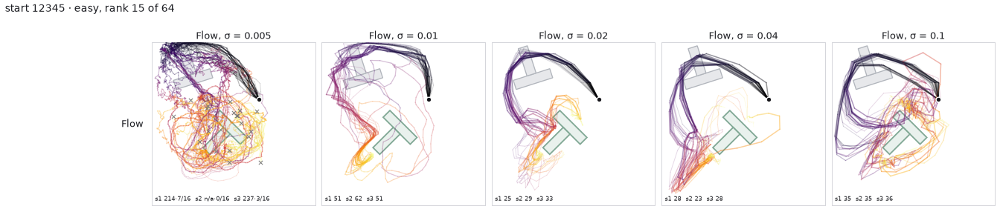
Replays
Pick a seed (or all seeds) above the player. Each panel replays rollouts 0 to 3 of that run and seed from this start, successes and failures alike. The dark disc is the pusher with a fading trail, and the pink cross is the target point (the point the controller pulls the pusher toward). ▶︎/❚❚ plays a panel and ◀ ▶ switch rollouts.
Mechanics
| Run | Method | Seed | Successes | Steps to success | Median target distance (px) | px/step |
|---|---|---|---|---|---|---|
| Flow | Flow, σ = 0.005 | seed 1 | 7/16 | 214 | 16 | 7.2 |
| seed 2 | 0/16 | n/a | n/a | n/a | ||
| seed 3 | 3/16 | 237 | 14 | 6.4 | ||
| mean of 3 seeds | 10/48 | 225 | 15 | 6.8 | ||
| Flow | Flow, σ = 0.01 | seed 1 | 16/16 | 51 | 41 | 18.2 |
| seed 2 | 16/16 | 62 | 46 | 19.9 | ||
| seed 3 | 16/16 | 51 | 43 | 18.3 | ||
| mean of 3 seeds | 48/48 | 54 | 44 | 18.8 | ||
| Flow | Flow, σ = 0.02 | seed 1 | 16/16 | 25 | 71 | 34.6 |
| seed 2 | 16/16 | 29 | 65 | 34.1 | ||
| seed 3 | 16/16 | 33 | 72 | 35.5 | ||
| mean of 3 seeds | 48/48 | 29 | 69 | 34.7 | ||
| Flow | Flow, σ = 0.04 | seed 1 | 16/16 | 28 | 59 | 35.5 |
| seed 2 | 16/16 | 23 | 92 | 43.2 | ||
| seed 3 | 16/16 | 28 | 68 | 37.2 | ||
| mean of 3 seeds | 48/48 | 26 | 73 | 38.7 | ||
| Flow | Flow, σ = 0.1 | seed 1 | 16/16 | 35 | 75 | 37.9 |
| seed 2 | 16/16 | 35 | 81 | 39.3 | ||
| seed 3 | 16/16 | 36 | 84 | 38.2 | ||
| mean of 3 seeds | 48/48 | 35 | 80 | 38.5 |
All rollouts from start 12345 in the evaluation on the 64 test starts (8 or 16 per seed, final checkpoints, every outcome). Steps, target distance and speed are over successful rollouts; the seed-mean row averages the per-seed values and sums the success counts.
Start 3942: trajectories, replays and mechanics (median third, rank 32 of 64)
Trajectories
seed 1seed 2seed 3 · color: episode time (dark violet start, yellow end) · gray cross: failed endpoint · gray T: block start · green T: goal · black dot: pusher start · numbers in each panel: mean steps of successful rollouts per seed, with the success count when not all succeeded
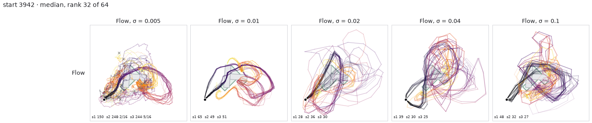
Replays
Pick a seed (or all seeds) above the player. Each panel replays rollouts 0 to 3 of that run and seed from this start, successes and failures alike. The dark disc is the pusher with a fading trail, and the pink cross is the target point (the point the controller pulls the pusher toward). ▶︎/❚❚ plays a panel and ◀ ▶ switch rollouts.
Mechanics
| Run | Method | Seed | Successes | Steps to success | Median target distance (px) | px/step |
|---|---|---|---|---|---|---|
| Flow | Flow, σ = 0.005 | seed 1 | 16/16 | 150 | 16 | 7.2 |
| seed 2 | 2/16 | 248 | 19 | 7.5 | ||
| seed 3 | 5/16 | 244 | 13 | 5.8 | ||
| mean of 3 seeds | 23/48 | 214 | 16 | 6.8 | ||
| Flow | Flow, σ = 0.01 | seed 1 | 16/16 | 65 | 44 | 17.5 |
| seed 2 | 16/16 | 49 | 51 | 19.0 | ||
| seed 3 | 16/16 | 51 | 48 | 18.0 | ||
| mean of 3 seeds | 48/48 | 55 | 48 | 18.1 | ||
| Flow | Flow, σ = 0.02 | seed 1 | 16/16 | 28 | 91 | 40.7 |
| seed 2 | 16/16 | 36 | 91 | 35.6 | ||
| seed 3 | 16/16 | 30 | 70 | 35.0 | ||
| mean of 3 seeds | 48/48 | 31 | 84 | 37.1 | ||
| Flow | Flow, σ = 0.04 | seed 1 | 16/16 | 39 | 120 | 45.8 |
| seed 2 | 16/16 | 30 | 106 | 42.0 | ||
| seed 3 | 16/16 | 25 | 82 | 41.3 | ||
| mean of 3 seeds | 48/48 | 31 | 102 | 43.0 | ||
| Flow | Flow, σ = 0.1 | seed 1 | 16/16 | 48 | 80 | 40.1 |
| seed 2 | 16/16 | 32 | 87 | 42.0 | ||
| seed 3 | 16/16 | 27 | 91 | 41.0 | ||
| mean of 3 seeds | 48/48 | 36 | 86 | 41.0 |
All rollouts from start 3942 in the evaluation on the 64 test starts (8 or 16 per seed, final checkpoints, every outcome). Steps, target distance and speed are over successful rollouts; the seed-mean row averages the per-seed values and sums the success counts.
Start 8039: trajectories, replays and mechanics (hard third, rank 53 of 64)
Trajectories
seed 1seed 2seed 3 · color: episode time (dark violet start, yellow end) · gray cross: failed endpoint · gray T: block start · green T: goal · black dot: pusher start · numbers in each panel: mean steps of successful rollouts per seed, with the success count when not all succeeded
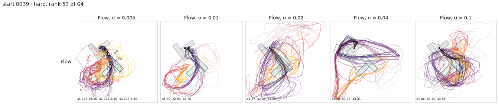
Replays
Pick a seed (or all seeds) above the player. Each panel replays rollouts 0 to 3 of that run and seed from this start, successes and failures alike. The dark disc is the pusher with a fading trail, and the pink cross is the target point (the point the controller pulls the pusher toward). ▶︎/❚❚ plays a panel and ◀ ▶ switch rollouts.
Mechanics
| Run | Method | Seed | Successes | Steps to success | Median target distance (px) | px/step |
|---|---|---|---|---|---|---|
| Flow | Flow, σ = 0.005 | seed 1 | 15/16 | 187 | 14 | 6.3 |
| seed 2 | 1/16 | 229 | 14 | 5.7 | ||
| seed 3 | 8/16 | 238 | 11 | 5.0 | ||
| mean of 3 seeds | 24/48 | 218 | 13 | 5.7 | ||
| Flow | Flow, σ = 0.01 | seed 1 | 16/16 | 60 | 35 | 14.3 |
| seed 2 | 16/16 | 53 | 39 | 15.4 | ||
| seed 3 | 16/16 | 70 | 43 | 17.4 | ||
| mean of 3 seeds | 48/48 | 61 | 39 | 15.7 | ||
| Flow | Flow, σ = 0.02 | seed 1 | 16/16 | 37 | 101 | 38.1 |
| seed 2 | 16/16 | 35 | 89 | 34.0 | ||
| seed 3 | 16/16 | 55 | 105 | 44.2 | ||
| mean of 3 seeds | 48/48 | 43 | 98 | 38.8 | ||
| Flow | Flow, σ = 0.04 | seed 1 | 16/16 | 38 | 112 | 48.2 |
| seed 2 | 16/16 | 33 | 122 | 51.6 | ||
| seed 3 | 16/16 | 31 | 87 | 37.0 | ||
| mean of 3 seeds | 48/48 | 34 | 107 | 45.6 | ||
| Flow | Flow, σ = 0.1 | seed 1 | 16/16 | 46 | 111 | 43.5 |
| seed 2 | 16/16 | 36 | 98 | 47.0 | ||
| seed 3 | 16/16 | 51 | 102 | 44.3 | ||
| mean of 3 seeds | 48/48 | 44 | 103 | 44.9 |
All rollouts from start 8039 in the evaluation on the 64 test starts (8 or 16 per seed, final checkpoints, every outcome). Steps, target distance and speed are over successful rollouts; the seed-mean row averages the per-seed values and sums the success counts.
What changes in behaviour
![Paired effects of flow trained at each base σ (tapered noise), vs the earlier setup (constant σ = 0.005) on behaviour over the 64 test starts. Each cell is the change vs the baseline in units of the baseline's spread across starts (red = higher, blue = lower). A black dot marks an effect that survives Holm correction (\(p < 0.05\)) within this section, class and policy side. Intervals resample training seeds, then starts, so they include seed-to-seed variation. Episode metrics use successful episodes only.](effects_noise_pub.png)
All effects with 95% intervals
Smoothness and jerk
| Change | Class | Policy | Metric | Baseline | Variant | Difference [95% CI] | Holm p | Seeds |
|---|---|---|---|---|---|---|---|---|
| Released sampler, tapered σ = 0.005 | Flow | RL | Mean pusher jerk | 9.48 | 7.4 | -2.09 [-3.83, +0.0353] | 1.000 | 3 / 3 |
| Released sampler, tapered σ = 0.005 | Flow | RL | Jerk per unit speed | 0.549 | 1.06 | +0.506 [+0.311, +0.8] | 0.000 | 3 / 3 |
| Released sampler, tapered σ = 0.005 | Flow | RL | Chunk-start jerk ratio | 1.57 | 1.27 | -0.299 [-0.42, -0.194] | 0.000 | 3 / 3 |
| Released sampler, tapered σ = 0.005 | Flow | RL | Chunk-start acceleration ratio | 2.16 | 1.23 | -0.932 [-1.07, -0.799] | 0.000 | 3 / 3 |
| Released sampler, tapered σ = 0.005 | Flow | RL | Chunk-start target-change ratio | 1.98 | 1.21 | -0.771 [-0.943, -0.578] | 0.000 | 3 / 3 |
| Released sampler, tapered σ = 0.005 | Flow | RL | Within-chunk target spread (px) | 19.2 | 11.8 | -7.39 [-9.4, -5.21] | 0.000 | 3 / 3 |
| Released sampler, tapered σ = 0.005 | Flow | RL | LDLJ (higher = smoother) | -13.2 | -18.8 | -5.62 [-6.8, -4.6] | 0.000 | 3 / 3 |
| Released sampler, tapered σ = 0.005 | Flow | RL | SPARC (higher = smoother) | -2.55 | -5.14 | -2.58 [-3.25, -1.99] | 0.000 | 3 / 3 |
| Released sampler, tapered σ = 0.005 | Flow | RL | Path curvature | 0.0536 | 0.17 | +0.116 [+0.0694, +0.161] | 0.000 | 3 / 3 |
| Released sampler, tapered σ = 0.005 | Flow | RL | Heading change rate | 0.42 | 0.666 | +0.245 [+0.077, +0.484] | 0.000 | 3 / 3 |
| Released sampler, tapered σ = 0.005 | Flow | RL | Speed peaks per 100 px | 1.21 | 3.38 | +2.17 [+1.8, +2.51] | 0.000 | 3 / 3 |
| Released sampler, tapered σ = 0.005 | Flow | RL | Speed reversals | 2.56 | 24.1 | +21.6 [+8.1, +39.9] | 0.000 | 3 / 3 |
| Released sampler, tapered σ = 0.01 | Flow | RL | Mean pusher jerk | 9.83 | 9.28 | -0.55 [-1.27, +0.305] | 1.000 | 3 / 3 |
| Released sampler, tapered σ = 0.01 | Flow | RL | Jerk per unit speed | 0.552 | 0.56 | +0.00827 [-0.0261, +0.0481] | 1.000 | 3 / 3 |
| Released sampler, tapered σ = 0.01 | Flow | RL | Chunk-start jerk ratio | 1.56 | 1.61 | +0.0511 [-0.00351, +0.104] | 1.000 | 3 / 3 |
| Released sampler, tapered σ = 0.01 | Flow | RL | Chunk-start acceleration ratio | 2.13 | 2.15 | +0.0261 [-0.0542, +0.101] | 1.000 | 3 / 3 |
| Released sampler, tapered σ = 0.01 | Flow | RL | Chunk-start target-change ratio | 2.01 | 1.94 | -0.0707 [-0.224, +0.124] | 1.000 | 3 / 3 |
| Released sampler, tapered σ = 0.01 | Flow | RL | Within-chunk target spread (px) | 19.3 | 18.4 | -0.88 [-1.57, -0.19] | 0.822 | 3 / 3 |
| Released sampler, tapered σ = 0.01 | Flow | RL | LDLJ (higher = smoother) | -13.4 | -13.6 | -0.25 [-0.589, +0.0996] | 1.000 | 3 / 3 |
| Released sampler, tapered σ = 0.01 | Flow | RL | SPARC (higher = smoother) | -2.6 | -2.71 | -0.11 [-0.26, +0.0319] | 1.000 | 3 / 3 |
| Released sampler, tapered σ = 0.01 | Flow | RL | Path curvature | 0.0518 | 0.0506 | -0.00119 [-0.00715, +0.00466] | 1.000 | 3 / 3 |
| Released sampler, tapered σ = 0.01 | Flow | RL | Heading change rate | 0.412 | 0.391 | -0.0215 [-0.0428, +0.00116] | 1.000 | 3 / 3 |
| Released sampler, tapered σ = 0.01 | Flow | RL | Speed peaks per 100 px | 1.19 | 1.27 | +0.0792 [-0.0362, +0.199] | 1.000 | 3 / 3 |
| Released sampler, tapered σ = 0.01 | Flow | RL | Speed reversals | 2.51 | 2.18 | -0.329 [-0.849, +0.271] | 1.000 | 3 / 3 |
| Released sampler, tapered σ = 0.02 | Flow | RL | Mean pusher jerk | 9.83 | 21.9 | +12.1 [+10.8, +13.3] | 0.000 | 3 / 3 |
| Released sampler, tapered σ = 0.02 | Flow | RL | Jerk per unit speed | 0.552 | 0.652 | +0.1 [+0.0635, +0.134] | 0.000 | 3 / 3 |
| Released sampler, tapered σ = 0.02 | Flow | RL | Chunk-start jerk ratio | 1.56 | 1.38 | -0.179 [-0.254, -0.104] | 0.000 | 3 / 3 |
| Released sampler, tapered σ = 0.02 | Flow | RL | Chunk-start acceleration ratio | 2.13 | 1.65 | -0.482 [-0.597, -0.362] | 0.000 | 3 / 3 |
| Released sampler, tapered σ = 0.02 | Flow | RL | Chunk-start target-change ratio | 2.01 | 1.94 | -0.0726 [-0.273, +0.152] | 1.000 | 3 / 3 |
| Released sampler, tapered σ = 0.02 | Flow | RL | Within-chunk target spread (px) | 19.3 | 39.5 | +20.2 [+18.8, +21.6] | 0.000 | 3 / 3 |
| Released sampler, tapered σ = 0.02 | Flow | RL | LDLJ (higher = smoother) | -13.4 | -11.2 | +2.16 [+1.81, +2.49] | 0.000 | 3 / 3 |
| Released sampler, tapered σ = 0.02 | Flow | RL | SPARC (higher = smoother) | -2.6 | -2.36 | +0.238 [+0.099, +0.378] | 0.000 | 3 / 3 |
| Released sampler, tapered σ = 0.02 | Flow | RL | Path curvature | 0.0518 | 0.0471 | -0.00464 [-0.00925, -9.61e-05] | 1.000 | 3 / 3 |
| Released sampler, tapered σ = 0.02 | Flow | RL | Heading change rate | 0.412 | 0.628 | +0.216 [+0.195, +0.239] | 0.000 | 3 / 3 |
| Released sampler, tapered σ = 0.02 | Flow | RL | Speed peaks per 100 px | 1.19 | 0.65 | -0.544 [-0.64, -0.457] | 0.000 | 3 / 3 |
| Released sampler, tapered σ = 0.02 | Flow | RL | Speed reversals | 2.51 | 2.71 | +0.199 [-0.298, +0.688] | 1.000 | 3 / 3 |
| Released sampler, tapered σ = 0.04 | Flow | RL | Mean pusher jerk | 9.83 | 30.7 | +20.8 [+18.7, +23.1] | 0.000 | 3 / 3 |
| Released sampler, tapered σ = 0.04 | Flow | RL | Jerk per unit speed | 0.552 | 0.775 | +0.223 [+0.176, +0.272] | 0.000 | 3 / 3 |
| Released sampler, tapered σ = 0.04 | Flow | RL | Chunk-start jerk ratio | 1.56 | 1.26 | -0.303 [-0.365, -0.243] | 0.000 | 3 / 3 |
| Released sampler, tapered σ = 0.04 | Flow | RL | Chunk-start acceleration ratio | 2.13 | 1.51 | -0.616 [-0.727, -0.499] | 0.000 | 3 / 3 |
| Released sampler, tapered σ = 0.04 | Flow | RL | Chunk-start target-change ratio | 2.01 | 1.72 | -0.295 [-0.478, -0.0887] | 0.285 | 3 / 3 |
| Released sampler, tapered σ = 0.04 | Flow | RL | Within-chunk target spread (px) | 19.3 | 52.4 | +33.1 [+30.9, +35.3] | 0.000 | 3 / 3 |
| Released sampler, tapered σ = 0.04 | Flow | RL | LDLJ (higher = smoother) | -13.4 | -11.1 | +2.24 [+1.85, +2.61] | 0.000 | 3 / 3 |
| Released sampler, tapered σ = 0.04 | Flow | RL | SPARC (higher = smoother) | -2.6 | -2.39 | +0.214 [+0.0711, +0.355] | 0.203 | 3 / 3 |
| Released sampler, tapered σ = 0.04 | Flow | RL | Path curvature | 0.0518 | 0.0495 | -0.00227 [-0.00707, +0.0026] | 1.000 | 3 / 3 |
| Released sampler, tapered σ = 0.04 | Flow | RL | Heading change rate | 0.412 | 0.702 | +0.289 [+0.258, +0.316] | 0.000 | 3 / 3 |
| Released sampler, tapered σ = 0.04 | Flow | RL | Speed peaks per 100 px | 1.19 | 0.561 | -0.633 [-0.721, -0.56] | 0.000 | 3 / 3 |
| Released sampler, tapered σ = 0.04 | Flow | RL | Speed reversals | 2.51 | 3.07 | +0.556 [+0.181, +0.913] | 0.357 | 3 / 3 |
| Released sampler, tapered σ = 0.1 | Flow | RL | Mean pusher jerk | 9.83 | 38.9 | +29 [+27, +31] | 0.000 | 3 / 3 |
| Released sampler, tapered σ = 0.1 | Flow | RL | Jerk per unit speed | 0.552 | 0.984 | +0.432 [+0.374, +0.483] | 0.000 | 3 / 3 |
| Released sampler, tapered σ = 0.1 | Flow | RL | Chunk-start jerk ratio | 1.56 | 1.12 | -0.437 [-0.498, -0.383] | 0.000 | 3 / 3 |
| Released sampler, tapered σ = 0.1 | Flow | RL | Chunk-start acceleration ratio | 2.13 | 1.43 | -0.693 [-0.792, -0.595] | 0.000 | 3 / 3 |
| Released sampler, tapered σ = 0.1 | Flow | RL | Chunk-start target-change ratio | 2.01 | 1.65 | -0.362 [-0.555, -0.147] | 0.000 | 3 / 3 |
| Released sampler, tapered σ = 0.1 | Flow | RL | Within-chunk target spread (px) | 19.3 | 59.4 | +40.1 [+38.1, +42.3] | 0.000 | 3 / 3 |
| Released sampler, tapered σ = 0.1 | Flow | RL | LDLJ (higher = smoother) | -13.4 | -12.5 | +0.886 [+0.59, +1.17] | 0.000 | 3 / 3 |
| Released sampler, tapered σ = 0.1 | Flow | RL | SPARC (higher = smoother) | -2.6 | -2.83 | -0.225 [-0.402, -0.0503] | 0.621 | 3 / 3 |
| Released sampler, tapered σ = 0.1 | Flow | RL | Path curvature | 0.0518 | 0.0593 | +0.00748 [+0.00121, +0.014] | 0.969 | 3 / 3 |
| Released sampler, tapered σ = 0.1 | Flow | RL | Heading change rate | 0.412 | 0.905 | +0.492 [+0.456, +0.525] | 0.000 | 3 / 3 |
| Released sampler, tapered σ = 0.1 | Flow | RL | Speed peaks per 100 px | 1.19 | 0.667 | -0.527 [-0.611, -0.455] | 0.000 | 3 / 3 |
| Released sampler, tapered σ = 0.1 | Flow | RL | Speed reversals | 2.51 | 6.66 | +4.15 [+3.68, +4.61] | 0.000 | 3 / 3 |
Commanded targets
| Change | Class | Policy | Metric | Baseline | Variant | Difference [95% CI] | Holm p | Seeds |
|---|---|---|---|---|---|---|---|---|
| Released sampler, tapered σ = 0.005 | Flow | RL | Median target distance (px) | 41.9 | 16.2 | -25.7 [-29.5, -21.6] | 0.000 | 3 / 3 |
| Released sampler, tapered σ = 0.005 | Flow | RL | Far-target share (> 74 px) | 0.129 | 0.00397 | -0.125 [-0.187, -0.0705] | 0.000 | 3 / 3 |
| Released sampler, tapered σ = 0.005 | Flow | RL | Target unreached share | 0.964 | 0.816 | -0.149 [-0.189, -0.0948] | 0.000 | 3 / 3 |
| Released sampler, tapered σ = 0.01 | Flow | RL | Median target distance (px) | 43.2 | 39.6 | -3.63 [-6.84, -0.0703] | 1.000 | 3 / 3 |
| Released sampler, tapered σ = 0.01 | Flow | RL | Far-target share (> 74 px) | 0.141 | 0.102 | -0.0396 [-0.0885, +0.00486] | 1.000 | 3 / 3 |
| Released sampler, tapered σ = 0.01 | Flow | RL | Target unreached share | 0.965 | 0.966 | +6e-05 [-0.00511, +0.00496] | 1.000 | 3 / 3 |
| Released sampler, tapered σ = 0.02 | Flow | RL | Median target distance (px) | 43.2 | 80.4 | +37.2 [+33, +41.7] | 0.000 | 3 / 3 |
| Released sampler, tapered σ = 0.02 | Flow | RL | Far-target share (> 74 px) | 0.141 | 0.532 | +0.39 [+0.338, +0.441] | 0.000 | 3 / 3 |
| Released sampler, tapered σ = 0.02 | Flow | RL | Target unreached share | 0.965 | 0.976 | +0.0108 [+0.00431, +0.0167] | 0.150 | 3 / 3 |
| Released sampler, tapered σ = 0.04 | Flow | RL | Median target distance (px) | 43.2 | 90.9 | +47.7 [+42, +53.3] | 0.000 | 3 / 3 |
| Released sampler, tapered σ = 0.04 | Flow | RL | Far-target share (> 74 px) | 0.141 | 0.563 | +0.422 [+0.367, +0.473] | 0.000 | 3 / 3 |
| Released sampler, tapered σ = 0.04 | Flow | RL | Target unreached share | 0.965 | 0.98 | +0.0143 [+0.00678, +0.0212] | 0.000 | 3 / 3 |
| Released sampler, tapered σ = 0.1 | Flow | RL | Median target distance (px) | 43.2 | 90.7 | +47.5 [+42.8, +52.5] | 0.000 | 3 / 3 |
| Released sampler, tapered σ = 0.1 | Flow | RL | Far-target share (> 74 px) | 0.141 | 0.564 | +0.423 [+0.369, +0.474] | 0.000 | 3 / 3 |
| Released sampler, tapered σ = 0.1 | Flow | RL | Target unreached share | 0.965 | 0.991 | +0.0257 [+0.0215, +0.03] | 0.000 | 3 / 3 |
Contact and pushing
| Change | Class | Policy | Metric | Baseline | Variant | Difference [95% CI] | Holm p | Seeds |
|---|---|---|---|---|---|---|---|---|
| Released sampler, tapered σ = 0.005 | Flow | RL | Contact share | 0.579 | 0.478 | -0.1 [-0.173, -0.0388] | 0.034 | 3 / 3 |
| Released sampler, tapered σ = 0.005 | Flow | RL | Contact switches | 7.04 | 20.3 | +13.3 [+5.52, +24.1] | 0.000 | 3 / 3 |
| Released sampler, tapered σ = 0.005 | Flow | RL | Pushing efficiency | 0.233 | 0.169 | -0.0646 [-0.102, -0.0293] | 0.000 | 3 / 3 |
| Released sampler, tapered σ = 0.005 | Flow | RL | T faces touched | 3.7 | 4.47 | +0.771 [+0.399, +1.15] | 0.034 | 3 / 3 |
| Released sampler, tapered σ = 0.005 | Flow | RL | Block jerk | 3.39 | 1.04 | -2.36 [-3.12, -1.65] | 0.000 | 3 / 3 |
| Released sampler, tapered σ = 0.01 | Flow | RL | Contact share | 0.544 | 0.559 | +0.0155 [-0.00902, +0.0417] | 1.000 | 3 / 3 |
| Released sampler, tapered σ = 0.01 | Flow | RL | Contact switches | 6.85 | 6.32 | -0.534 [-1.22, +0.168] | 1.000 | 3 / 3 |
| Released sampler, tapered σ = 0.01 | Flow | RL | Pushing efficiency | 0.223 | 0.216 | -0.00672 [-0.0313, +0.0186] | 1.000 | 3 / 3 |
| Released sampler, tapered σ = 0.01 | Flow | RL | T faces touched | 3.52 | 3.31 | -0.211 [-0.536, +0.113] | 1.000 | 3 / 3 |
| Released sampler, tapered σ = 0.01 | Flow | RL | Block jerk | 3.31 | 2.72 | -0.583 [-1.2, +0.0185] | 1.000 | 3 / 3 |
| Released sampler, tapered σ = 0.02 | Flow | RL | Contact share | 0.544 | 0.569 | +0.0254 [+0.000841, +0.0485] | 1.000 | 3 / 3 |
| Released sampler, tapered σ = 0.02 | Flow | RL | Contact switches | 6.85 | 6.81 | -0.0413 [-0.783, +0.707] | 1.000 | 3 / 3 |
| Released sampler, tapered σ = 0.02 | Flow | RL | Pushing efficiency | 0.223 | 0.231 | +0.00785 [-0.0151, +0.0328] | 1.000 | 3 / 3 |
| Released sampler, tapered σ = 0.02 | Flow | RL | T faces touched | 3.52 | 3.71 | +0.182 [-0.104, +0.484] | 1.000 | 3 / 3 |
| Released sampler, tapered σ = 0.02 | Flow | RL | Block jerk | 3.31 | 9.49 | +6.19 [+5.29, +7.1] | 0.000 | 3 / 3 |
| Released sampler, tapered σ = 0.04 | Flow | RL | Contact share | 0.544 | 0.574 | +0.0306 [+0.00351, +0.0573] | 1.000 | 3 / 3 |
| Released sampler, tapered σ = 0.04 | Flow | RL | Contact switches | 6.85 | 7.03 | +0.18 [-0.516, +0.846] | 1.000 | 3 / 3 |
| Released sampler, tapered σ = 0.04 | Flow | RL | Pushing efficiency | 0.223 | 0.259 | +0.0359 [+0.00536, +0.069] | 0.975 | 3 / 3 |
| Released sampler, tapered σ = 0.04 | Flow | RL | T faces touched | 3.52 | 3.6 | +0.0787 [-0.213, +0.367] | 1.000 | 3 / 3 |
| Released sampler, tapered σ = 0.04 | Flow | RL | Block jerk | 3.31 | 13.6 | +10.3 [+8.29, +12.2] | 0.000 | 3 / 3 |
| Released sampler, tapered σ = 0.1 | Flow | RL | Contact share | 0.544 | 0.468 | -0.0756 [-0.112, -0.0424] | 0.000 | 3 / 3 |
| Released sampler, tapered σ = 0.1 | Flow | RL | Contact switches | 6.85 | 10.3 | +3.5 [+2.69, +4.19] | 0.000 | 3 / 3 |
| Released sampler, tapered σ = 0.1 | Flow | RL | Pushing efficiency | 0.223 | 0.203 | -0.0201 [-0.0493, +0.0134] | 1.000 | 3 / 3 |
| Released sampler, tapered σ = 0.1 | Flow | RL | T faces touched | 3.52 | 4.03 | +0.51 [+0.183, +0.864] | 0.150 | 3 / 3 |
| Released sampler, tapered σ = 0.1 | Flow | RL | Block jerk | 3.31 | 12.3 | +8.98 [+7.89, +10.2] | 0.000 | 3 / 3 |
Multimodality across rollouts
| Change | Class | Policy | Metric | Baseline | Variant | Difference [95% CI] | Holm p | Seeds |
|---|---|---|---|---|---|---|---|---|
| Released sampler, tapered σ = 0.005 | Flow | RL | Route modes (DTW, whole episode) | 1.17 | 1.87 | +0.698 [+0.38, +1.04] | 0.000 | 3 / 3 |
| Released sampler, tapered σ = 0.005 | Flow | RL | Route modes (Fréchet, whole episode) | 2.07 | 4.87 | +2.8 [+1.74, +3.71] | 0.000 | 3 / 3 |
| Released sampler, tapered σ = 0.005 | Flow | RL | Vendi score | 2.99 | 6.21 | +3.22 [+2.24, +4.09] | 0.000 | 3 / 3 |
| Released sampler, tapered σ = 0.005 | Flow | RL | First-face entropy | 0.245 | 0.283 | +0.0382 [-0.0683, +0.145] | 1.000 | 3 / 3 |
| Released sampler, tapered σ = 0.005 | Flow | RL | Route-side entropy | 0.0851 | 0.137 | +0.0517 [-0.0135, +0.12] | 1.000 | 3 / 3 |
| Released sampler, tapered σ = 0.005 | Flow | RL | Mean pairwise path distance (px) | 68.1 | 150 | +81.7 [+60.3, +101] | 0.000 | 3 / 3 |
| Released sampler, tapered σ = 0.01 | Flow | RL | Route modes (DTW, whole episode) | 1.17 | 1.28 | +0.104 [-0.0208, +0.234] | 1.000 | 3 / 3 |
| Released sampler, tapered σ = 0.01 | Flow | RL | Route modes (Fréchet, whole episode) | 2.07 | 2.1 | +0.026 [-0.469, +0.479] | 1.000 | 3 / 3 |
| Released sampler, tapered σ = 0.01 | Flow | RL | Vendi score | 2.99 | 2.95 | -0.0415 [-0.569, +0.433] | 1.000 | 3 / 3 |
| Released sampler, tapered σ = 0.01 | Flow | RL | First-face entropy | 0.245 | 0.248 | +0.00308 [-0.0964, +0.109] | 1.000 | 3 / 3 |
| Released sampler, tapered σ = 0.01 | Flow | RL | Route-side entropy | 0.0851 | 0.103 | +0.018 [-0.0448, +0.0883] | 1.000 | 3 / 3 |
| Released sampler, tapered σ = 0.01 | Flow | RL | Mean pairwise path distance (px) | 68.1 | 69.8 | +1.66 [-12.8, +16.7] | 1.000 | 3 / 3 |
| Released sampler, tapered σ = 0.01 | Flow | RL | Steps SD across rollouts | 10.7 | 10.2 | -0.496 [-2.86, +1.59] | 1.000 | 3 / 3 |
| Released sampler, tapered σ = 0.02 | Flow | RL | Route modes (DTW, whole episode) | 1.17 | 1.39 | +0.214 [+0.0365, +0.411] | 0.910 | 3 / 3 |
| Released sampler, tapered σ = 0.02 | Flow | RL | Route modes (Fréchet, whole episode) | 2.07 | 3.1 | +1.03 [+0.479, +1.57] | 0.034 | 3 / 3 |
| Released sampler, tapered σ = 0.02 | Flow | RL | Vendi score | 2.99 | 4 | +1.01 [+0.443, +1.63] | 0.061 | 3 / 3 |
| Released sampler, tapered σ = 0.02 | Flow | RL | First-face entropy | 0.245 | 0.247 | +0.00187 [-0.0847, +0.0909] | 1.000 | 3 / 3 |
| Released sampler, tapered σ = 0.02 | Flow | RL | Route-side entropy | 0.0851 | 0.069 | -0.0161 [-0.0731, +0.0348] | 1.000 | 3 / 3 |
| Released sampler, tapered σ = 0.02 | Flow | RL | Mean pairwise path distance (px) | 68.1 | 96.8 | +28.7 [+12.5, +45.1] | 0.034 | 3 / 3 |
| Released sampler, tapered σ = 0.02 | Flow | RL | Steps SD across rollouts | 10.7 | 7.82 | -2.89 [-5.11, -0.787] | 0.285 | 3 / 3 |
| Released sampler, tapered σ = 0.04 | Flow | RL | Route modes (DTW, whole episode) | 1.17 | 1.35 | +0.182 [+0.0104, +0.375] | 1.000 | 3 / 3 |
| Released sampler, tapered σ = 0.04 | Flow | RL | Route modes (Fréchet, whole episode) | 2.07 | 3.31 | +1.23 [+0.667, +1.81] | 0.000 | 3 / 3 |
| Released sampler, tapered σ = 0.04 | Flow | RL | Vendi score | 2.99 | 4.24 | +1.25 [+0.669, +1.83] | 0.034 | 3 / 3 |
| Released sampler, tapered σ = 0.04 | Flow | RL | First-face entropy | 0.245 | 0.207 | -0.0381 [-0.137, +0.063] | 1.000 | 3 / 3 |
| Released sampler, tapered σ = 0.04 | Flow | RL | Route-side entropy | 0.0851 | 0.0711 | -0.014 [-0.0776, +0.0584] | 1.000 | 3 / 3 |
| Released sampler, tapered σ = 0.04 | Flow | RL | Mean pairwise path distance (px) | 68.1 | 109 | +41.1 [+24.7, +56.9] | 0.000 | 3 / 3 |
| Released sampler, tapered σ = 0.04 | Flow | RL | Steps SD across rollouts | 10.7 | 7.35 | -3.36 [-5.62, -1.43] | 0.000 | 3 / 3 |
| Released sampler, tapered σ = 0.1 | Flow | RL | Route modes (DTW, whole episode) | 1.17 | 1.57 | +0.396 [+0.156, +0.703] | 0.034 | 3 / 3 |
| Released sampler, tapered σ = 0.1 | Flow | RL | Route modes (Fréchet, whole episode) | 2.07 | 4.96 | +2.89 [+2.14, +3.63] | 0.000 | 3 / 3 |
| Released sampler, tapered σ = 0.1 | Flow | RL | Vendi score | 2.99 | 6.14 | +3.15 [+2.5, +3.83] | 0.000 | 3 / 3 |
| Released sampler, tapered σ = 0.1 | Flow | RL | First-face entropy | 0.245 | 0.318 | +0.0726 [-0.0355, +0.185] | 1.000 | 3 / 3 |
| Released sampler, tapered σ = 0.1 | Flow | RL | Route-side entropy | 0.0851 | 0.0858 | +0.000646 [-0.0603, +0.0602] | 1.000 | 3 / 3 |
| Released sampler, tapered σ = 0.1 | Flow | RL | Mean pairwise path distance (px) | 68.1 | 132 | +63.5 [+48.3, +78.4] | 0.000 | 3 / 3 |
| Released sampler, tapered σ = 0.1 | Flow | RL | Steps SD across rollouts | 10.7 | 12.3 | +1.6 [-0.482, +3.37] | 1.000 | 3 / 3 |
Speed and success (for reference)
| Change | Class | Policy | Metric | Baseline | Variant | Difference [95% CI] | Holm p | Seeds |
|---|---|---|---|---|---|---|---|---|
| Released sampler, tapered σ = 0.005 | Flow | RL | Steps to success | 51.8 | 193 | +141 [+110, +172] | n/a | 3 / 3 |
| Released sampler, tapered σ = 0.005 | Flow | RL | Pusher speed (px/step) | 18 | 7.1 | -10.9 [-12.2, -9.4] | n/a | 3 / 3 |
| Released sampler, tapered σ = 0.005 | Flow | RL | Success rate | 1 | 0.452 | -0.548 [-0.962, -0.207] | n/a | 3 / 3 |
| Released sampler, tapered σ = 0.01 | Flow | RL | Steps to success | 54.6 | 58.2 | +3.63 [-0.522, +7.81] | n/a | 3 / 3 |
| Released sampler, tapered σ = 0.01 | Flow | RL | Pusher speed (px/step) | 18 | 16.7 | -1.3 [-2.56, +0.128] | n/a | 3 / 3 |
| Released sampler, tapered σ = 0.01 | Flow | RL | Success rate | 1 | 1 | +0 [+0, +0] | n/a | 3 / 3 |
| Released sampler, tapered σ = 0.02 | Flow | RL | Steps to success | 54.6 | 31.1 | -23.5 [-26.8, -20] | n/a | 3 / 3 |
| Released sampler, tapered σ = 0.02 | Flow | RL | Pusher speed (px/step) | 18 | 34 | +16 [+14.5, +17.6] | n/a | 3 / 3 |
| Released sampler, tapered σ = 0.02 | Flow | RL | Success rate | 1 | 1 | +0 [+0, +0] | n/a | 3 / 3 |
| Released sampler, tapered σ = 0.04 | Flow | RL | Steps to success | 54.6 | 28.6 | -26 [-29.2, -22.6] | n/a | 3 / 3 |
| Released sampler, tapered σ = 0.04 | Flow | RL | Pusher speed (px/step) | 18 | 39.9 | +21.9 [+20.1, +23.9] | n/a | 3 / 3 |
| Released sampler, tapered σ = 0.04 | Flow | RL | Success rate | 1 | 1 | -0.000326 [-0.00195, +0] | n/a | 3 / 3 |
| Released sampler, tapered σ = 0.1 | Flow | RL | Steps to success | 54.6 | 37.8 | -16.8 [-19.9, -13.8] | n/a | 3 / 3 |
| Released sampler, tapered σ = 0.1 | Flow | RL | Pusher speed (px/step) | 18 | 40.1 | +22.1 [+20.2, +24.2] | n/a | 3 / 3 |
| Released sampler, tapered σ = 0.1 | Flow | RL | Success rate | 1 | 0.998 | -0.00195 [-0.00488, +0] | n/a | 3 / 3 |
How AR and DD produce fast plans
AR and DD do not output coordinates. They pick codes from the FSQ tokenizer (a 63 × 63 grid, one code per action in the 4-action chunk), and a small decoder turns the 4 codes into 4 target points. With standard PushT actions each code roughly names a fixed point on the board, because the action is the target position itself. So the tokenizer does not need to invent anything to make a fast move: its vocabulary already covers far targets, and RL learns when to use them.
The question. Demo target points are rarely far from the pusher (99% of demo steps move it less than 74 px), yet after RL, AR and DD command a far target about half the time. Do they discover new codes the tokenizer never saw?
They reuse codes that appear in the demos and emit them in situations where the demos used different codes. With standard PushT actions each code names a fixed board point, so a code the demos used when the pusher was elsewhere lands far from where the pusher is now, which makes a fast move. RL also narrows the set of codes used.
- No emitted code is new. Every FSQ code the RL AR and DD policies emit appears at the same chunk position (0 to 3) in the BC token cache: the codes of the 22,931 training windows of 4 consecutive demo actions (the demos have about 23k actions, so the windows overlap, about one per demo step). For comparison, 2% of held-out demo codes are missing from the cache. Code pairs and whole 4-code chunks are often absent from the cache (63% and 89% for standard-action AR), but held-out human demos are absent just as often (57% and 91%), so new combinations do not explain the fast plans.
- Familiar codes appear in unfamiliar situations. For 52 to 79% of chunks the first code is unusual for the situation (range over RL AR and DD; the value for standard PushT actions alone is not broken out): it lies more than 6 grid steps on the 63 × 63 FSQ grid from every code the demos used at the 10 most similar demo states. For held-out demos this happens 2% of the time with standard PushT actions (18 to 21% with the offset-based formats, Appendix A).
- RL narrows the set of codes. The RL policies emit 500 to 1000 distinct codes vs 2300 to 3300 for their BC policies. This count grows with the number of chunks collected, which differs between RL and BC, so the comparison is rough. Decoded target points still land in board regions where demo targets land (98 to 99% of targets, 32 px bins on the 512 × 512 px board).
- Far targets do not need codes. At \(\sigma = 0.04\), flow's median target distance is 91 px vs 76 to 77 for AR and DD, and it finishes in 28.6 steps (flow noise sweep).
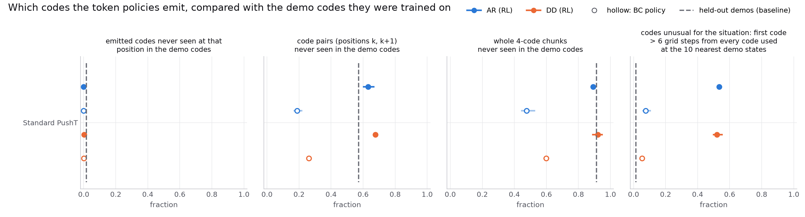
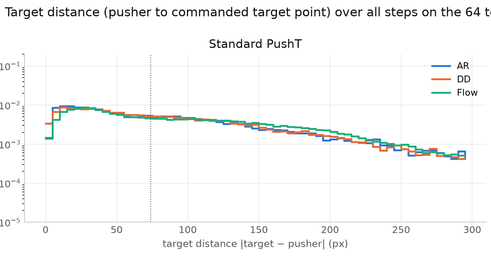
what is this?
- Target distance: How far from the pusher the policy places the target point; larger means more aggressive commands.
- Far targets beyond demo quantiles: Share of steps whose target distance exceeds a demo quantile; higher means more far targets.
- Code novelty: Share of emitted FSQ codes the BC data never used; higher means more new codes.
- Codes unusual for the situation: Whether demos use the emitted code in this kind of state; higher means more unusual codes.
How we evaluate: 64 fixed test starts
Every number not marked "start 12345" comes from the 64 test starts, a fixed set of 64 initial positions that spans easy and hard starts.
- Starts are stratified by difficulty. They are environment seeds in 16 strata: 4 quantile bins of the block-goal distance (cut points 84, 120 and 147 px on the 512 × 512 px board) times 4 quantile bins of the block's angle error (0.80, 1.59 and 2.37 rad), 4 seeds per stratum. Start 12345 is one of them, in the farthest distance bin, yet it ranks as slightly easy (below), so distance alone does not set difficulty.
- Every attempt counts. For each run (final checkpoint, seeds 1 to 3) we roll out 16 episodes per start for the four action-format runs (the default and Appendix A) and 8 for the variants in the numbered sections. We roll out the BC policies of the default, section 1 and Appendix A runs the same way. Episodes end at success or after 300 steps.
- Intervals are approximate with three seeds. They are 95% bootstrap intervals (resample seeds, then starts within each seed) and can be too narrow when seeds disagree, so the tables also give each seed's mean or the range of seed means. Two-run comparisons are paired by start, with p-values Holm-corrected within each group of comparisons.
- Results do not hinge on exact start states. The perturbation test re-runs 8 of the starts with 4 small jitters each (pusher 8 px, block 4 px, angle 0.05 rad), and no run changes its steps by more than 1.3 on average.
- Failures are rare after OGPO. With the default critic (on decoded actions) they are at most 6% of episodes, the worst being flow with rate-limited targets (Appendix A). Before RL, AR BC policies mostly fail by pushing too slowly (54% of episodes run out of time while the block moves), while flow BC policies fail by oscillating (26%) or wandering (24%).
Which starts the sections show. Every section opens with start 12345, the reference start, with all completed seeds overlaid. It is a slightly easy start in the easy third (rank 15 of 64): AR and DD take 20 to 29 steps there depending on the seed, vs 28 on average.
- Two more starts cover the median and the hard third. The same two get exactly the same panels in every section: 3942, the median start (rank 32 of 64; block 78 px from the goal, angle error 2.28 rad), and 8039, a hard start (rank 53 of 64; 153 px, 3.0 rad).
- Ranks come from the default RL policies. They order starts by mean steps to success for standard PushT actions with attention (AR, DD and flow; seeds 1 to 3).
- 8039 is typical of the hard third. We took it at the 5/6 quantile of the ranking rather than the single hardest start, so the example is not an outlier.
The per-start browser in "Across starts and seeds" shows all 64.
Metrics
Metrics are computed per episode, averaged over the 8 or 16 episodes of each start, then over starts and seeds. Lengths are in px on the 512 × 512 px board and times in steps (one step is one action, 0.1 s). We checked each metric on synthetic trajectories with known answers (analysis/suite/test_metrics.py). Smoothness ratios, target distances and speeds in the section tables use successful episodes; success and steps with failures use all episodes.Every metric in this report has an entry below; click a name to open it. Each entry gives the exact definition, units and direction, the parameters, a reference point and caveats. Metric names elsewhere in the report link here.
Task
Success rate · Share of episodes that bring the T onto the goal pose; higher is better.
- Definition
- An episode succeeds if, at any step before the 300-step limit, the T covers more than 95% of the goal T's area (coverage \(c_t > 0.95\), see final coverage). We average over the episodes of each start, then over starts and seeds.
- Units and direction
- fraction, higher is better
- Parameters
- 16 episodes per start (action-format experiment, Appendix A) or 8; the 64 test starts; seeds 1 to 3.
- Reference
- BC policies: 0.19 to 0.62.
- Caveats
- A slow policy that runs out of time counts as a failure, so success hides speed. Replayed demos do not all reach 95%, because the dataset was recorded in a slightly different simulator.
Steps to success · How many control steps a successful episode takes; lower is faster.
- Definition
- The length of each successful episode, in steps; failed episodes are left out. We average over a start's successful episodes; starts with no success have no value.
- Units and direction
- steps; one step is one action and lasts 0.1 s, so a 4-action chunk covers 4 steps; lower is faster
- Parameters
- Successful episodes only.
- Reference
- Demos: median 121 steps.
- Caveats
- Only successful episodes count, so a policy that succeeds only on easy starts looks fast. Compare with 'Steps (failures = 300)'.
Steps (failures = 300) · Episode length with every failure counted as 300 steps; lower is better.
- Definition
- The length of every episode, with failed episodes set to the 300-step limit.
- Units and direction
- steps, lower is better
- Parameters
- All episodes.
- Caveats
- Mixes speed and success. Every episode has a value, so the per-start comparison plots (flow slower on X% of starts) use it. For the Holm-tested step effects of the Architecture section we have not recorded here which of the two steps metrics they use.
Time to first contact · How many steps pass before the pusher first touches the T; lower is better.
- Definition
- The first step at which the gap between the pusher's circle (radius 15 px) and the T's outline is at most 1 px, measured with pymunk's point query.
- Units and direction
- steps, lower = reaches the block sooner
- Parameters
- Contact threshold 1 px.
- Reference
- Standard PushT actions after RL: AR 3.8, flow 10.4 steps.
Final coverage, coverage AUC · How much of the goal the T covers at the end, and on average over the episode; higher is better.
- Definition
- Coverage at step \(t\) is \[ c_t = \frac{\lvert T_t \cap G \rvert}{\lvert G \rvert}, \] where \(T_t\) is the region the T covers at step \(t\), \(G\) the goal T and \(\lvert \cdot \rvert\) area. Final coverage is \(c_t\) at the last step; AUC is \(\frac{1}{300} \sum_{t=1}^{300} c_t\), with \(c_t\) held at 1 after a success and at its last value after a failure.
- Units and direction
- fraction, higher is better
- Caveats
- AUC rewards early progress even when the episode fails.
Failure mode · Why an episode failed, as one of five labels.
- Definition
- Labels from the last 100 steps of a failed episode. Wall: block within 8 px of a wall and nearly still. Stuck: pusher path under 30 px. Oscillation: at least 10 heading reversals (over 120°) with net motion under 20% of the path and little block motion. Wander: the pusher travels but the block barely moves. Slow: the block moves but time runs out.
- Units and direction
- share of all episodes per label
- Parameters
- Thresholds as listed.
- Reference
- DPPO flow: 52% oscillation.
- Caveats
- Hand-set heuristic labels, checked only on synthetic paths.
Speed and target distance
Pusher speed · How far the pusher moves per control step; higher is faster.
- Definition
- The mean over steps of the step distance \[ v_t = \lVert p_{t+1} - p_t \rVert, \] where \(p_t\) is the pusher position at step \(t\); we also report the median, 95th percentile and peak. Distances are in px on the 512 × 512 px board.
- Units and direction
- px/step, higher = faster
- Parameters
- Per episode; experiment tables use successful episodes.
- Reference
- Demos: mean 9.4 px/step (median of per-step speeds 7.9).
- Caveats
- Includes idle steps; see idle fraction.
Idle fraction · Share of steps in which the pusher barely moves; lower means less idling.
- Definition
- The fraction of steps with speed \(v_t < 1\) px/step.
- Units and direction
- fraction, lower = less idling
- Parameters
- Threshold 1 px/step.
Target distance · How far from the pusher the policy places the target point; larger means more aggressive commands.
- Definition
- At each step, \[ d_t = \lVert x_t - p_t \rVert, \] the distance between the pusher \(p_t\) and the target point \(x_t\) (the point the controller pulls the pusher toward), decoded from whichever action format the policy uses. We report the median, mean, 95th percentile and maximum per episode.
- Units and direction
- px; larger = more aggressive
- Reference
- Demos: median 19 px, 99th percentile 74 px.
- Caveats
- A far target is not reached in one step; see 'Target unreached'.
Far targets beyond demo quantiles · Share of steps whose target distance exceeds a demo quantile; higher means more far targets.
- Definition
- The fraction of steps with target distance \(d_t\) above 50, 74 (the demo 99th percentile), 100 and 150 px.
- Units and direction
- fraction
- Parameters
- Thresholds as listed.
- Reference
- Demos: 1% above 74 px by construction.
Target unreached · Share of steps after which the pusher is still more than 5 px from its target point.
- Definition
- The fraction of steps with \(\lVert p_{t+1} - x_t \rVert > 5\) px: the pusher ends the step more than 5 px from the target point \(x_t\). Within each step the controller runs 10 substeps of 0.01 s.
- Units and direction
- fraction
- Parameters
- 5 px.
- Caveats
- High values mean the policy commands targets beyond one step's reach.
Controller force and its integral · How hard the PD controller (a spring-like controller that pulls the pusher toward the target point) pulls; a proxy for energy.
- Definition
- The magnitude of the PD force at the start of each step, \[ F_t = \big\lVert k_p\,(x_t - p_t) - k_v\, v_t \big\rVert, \] where \(p_t\) and \(v_t\) are the pusher position and velocity, \(x_t\) the target point, \(k_p = 100\) and \(k_v = 20\). We report its mean, and its sum times \(\Delta t = 0.1\) s.
- Units and direction
- px/s² and px/s
- Caveats
- Velocity is read from the simulator at the start of the step, and the force changes within the 10 substeps.
Overshoot · How far the pusher passes its target point; lower is better.
- Definition
- The mean over steps of \[ o_t = \max\!\left(0,\ (p_{t+1} - x_t) \cdot \frac{x_t - p_t}{\lVert x_t - p_t \rVert}\right), \] how far the pusher ends beyond the target point \(x_t\) along the line from its start position \(p_t\) to the target (0 if it stops short).
- Units and direction
- px, lower is better
- Reference
- \(\approx 0\) for every run.
Smoothness
Acceleration and jerk · Size of the second and third differences of the pusher path; lower is smoother.
- Definition
- Second and third differences of the pusher position \(p_t\): \[ a_t = p_{t+1} - 2p_t + p_{t-1}, \qquad j_t = p_{t+1} - 3p_t + 3p_{t-1} - p_{t-2}. \] We report the mean, median and 95th percentile of \(\lVert a_t \rVert\) and \(\lVert j_t \rVert\) per episode.
- Units and direction
- px/step² and px/step³, lower = smoother
- Caveats
- Grows with speed; see jerk / speed.
Jerk / speed · Roughness per unit of speed; lower is smoother.
- Definition
- Per episode, \[ \frac{\operatorname{mean}_t \lVert j_t \rVert}{\operatorname{mean}_t v_t}, \] the mean jerk magnitude \(\lVert j_t \rVert\) divided by the mean speed \(v_t\).
- Units and direction
- 1/step², lower = smoother
- Reference
- Demos: 0.21. Standard PushT actions after RL: AR 0.72, DD 0.74, flow 0.55.
Chunk-start jerk ratio · Jerk at steps where a new chunk starts divided by jerk at other steps; 1 = no extra jerk, higher = jerkier at chunk starts.
- Definition
- Chunks start at steps 0, 4, 8, and so on. Let \(C\) be the chunk-start steps from step 4 on and \(O\) all other steps from step 4 on. Then \[ R_j = \frac{\operatorname{mean}_{t \in C} \lVert j_t \rVert}{\operatorname{mean}_{t \in O} \lVert j_t \rVert}, \] with \(j_t\) the jerk; we also report it with medians in place of means.
- Units and direction
- ratio, 1 = no extra jerk at chunk starts
- Reference
- Demos have no chunks, so their 1.05 is the baseline (what no effect looks like).
- Caveats
- Undefined when jerk inside chunks is 0; short episodes have few chunk starts.
Chunk-start acceleration ratio · The same ratio for acceleration; 1 = no extra acceleration at chunk starts.
- Definition
- \[ R_a = \frac{\operatorname{mean}_{t \in C} \lVert a_t \rVert}{\operatorname{mean}_{t \in O} \lVert a_t \rVert}, \] with \(a_t\) the acceleration and \(C\), \(O\) the chunk-start and other steps, as for the chunk-start jerk ratio.
- Units and direction
- ratio, 1 = no extra acceleration at chunk starts
Target-change ratio at chunk starts · How much more the target point moves at chunk starts than inside a chunk; 1 = no difference.
- Definition
- \[ R_x = \frac{\operatorname{mean}_{t \in C} \lVert x_t - x_{t-1} \rVert}{\operatorname{mean}_{t \in O} \lVert x_t - x_{t-1} \rVert}, \] where \(x_t\) is the target point at step \(t\) and \(C\), \(O\) are the chunk-start and other steps, as for the chunk-start jerk ratio. We also compute it for the second and third differences of the target sequence.
- Units and direction
- ratio, 1 = no extra change at chunk starts
- Reference
- Demos: 1.02.
- Caveats
- Measures the plan, not the motion; the controller smooths out target changes.
Within-chunk target spread · How spread out the 4 target points of one chunk are.
- Definition
- \[ s = \frac{1}{4} \sum_{k=1}^{4} \lVert x_k - \bar{x} \rVert, \] the mean distance of a chunk's 4 target points \(x_k\) from their centroid \(\bar{x}\).
- Units and direction
- px
LDLJ (log dimensionless jerk) · A smoothness score that does not depend on the motion's size; higher is smoother.
- Definition
- \[ \mathrm{LDLJ} = -\ln\!\left( \frac{D^{3}}{v_{\mathrm{peak}}^{2}} \int_{0}^{D} \lVert p^{(3)}(t) \rVert^{2}\, dt \right), \] where \(D\) is the duration, \(v_{\mathrm{peak}}\) the peak speed and \(p^{(3)}\) the jerk (third time derivative) of the pusher path (Hogan and Sternad 2009, velocity form). Computed on 0.1 s samples, and on 0.01 s substeps for the action-format experiment.
- Units and direction
- dimensionless, higher = smoother
- Reference
- Demos: −14.6.
- Caveats
- Longer episodes score lower, so it largely ranks runs by episode length.
Dimensionless squared jerk · Mean squared jerk normalized by duration and path length; lower is smoother.
- Definition
- \[ \mathrm{DSJ} = \frac{D^{5}}{A^{2}} \int_{0}^{D} \lVert p^{(3)}(t) \rVert^{2}\, dt, \] where \(D\) is the duration, \(A\) the path length and \(p^{(3)}\) the jerk (third time derivative) of the pusher path.
- Units and direction
- dimensionless, lower = smoother
- Caveats
- Depends on duration in the same way as LDLJ.
SPARC (spectral arc length) · A smoothness score from the frequency content of the speed profile; higher is smoother.
- Definition
- The arc length of the normalized magnitude spectrum of the speed profile (Balasubramanian et al. 2015), \[ \mathrm{SPARC} = -\int_{0}^{\omega_c} \sqrt{\left(\frac{1}{\omega_c}\right)^{2} + \left(\frac{d\hat{V}(\omega)}{d\omega}\right)^{2}}\, d\omega, \qquad \hat{V}(\omega) = \frac{V(\omega)}{V(0)}, \] where \(V\) is the Fourier magnitude spectrum of the speed profile and the cutoff \(\omega_c\) is the frequency where \(\hat{V}\) falls below 0.05; the profile is zero-padded 16×.
- Units and direction
- dimensionless (negative), higher = smoother
- Parameters
- Amplitude threshold 0.05; 10 Hz sampling (100 Hz substeps for the action-format experiment).
- Reference
- Demos: −3.4.
- Caveats
- Meant for motions that start and end at rest; episodes that end while moving get spurious spectral side lobes. Depends on duration.
Velocity peaks · How often the pusher speeds up and slows down; lower is smoother.
- Definition
- The number of local speed maxima with prominence of at least 1 px/step, per 100 px of path.
- Units and direction
- per 100 px, lower = smoother
- Parameters
- Prominence 1 px/step.
Heading change, curvature, reversals · How much the pusher turns; lower means straighter motion.
- Definition
- The mean of \(\lvert \phi_{t+1} - \phi_t \rvert\) over consecutive moving steps (speed above 1 px/step), where \(\phi_t\) is the pusher's heading. Curvature is heading change per px, and a reversal is a heading change above 90°.
- Units and direction
- rad/step, rad/px, count
- Parameters
- Moving threshold 1 px/step.
Tortuosity · Pusher path length divided by the straight-line distance from start to end; 1 = straight.
- Definition
- \[ \tau = \frac{\sum_{t} \lVert p_{t+1} - p_t \rVert}{\lVert p_T - p_0 \rVert}, \] the pusher path length divided by the distance between its first position \(p_0\) and last position \(p_T\).
- Units and direction
- ratio, \(\tau \ge 1\)
- Reference
- Demos: median 7.0.
- Caveats
- Large for any episode that circles the block, so it is not a smoothness measure.
Block jerk · How jerky the block's own motion is; lower is smoother.
- Definition
- The means of \(\lVert \Delta^{3} b_t \rVert\) and \(\lvert \Delta^{3} \theta_t \rvert\), the absolute third differences of the block's position \(b_t\) and of its angle \(\theta_t\).
- Units and direction
- px/step³, rad/step³
Jerk ratio policy / demos at matched demo states · Whether the policy is jerkier than the demos in similar situations; 1 = like demos.
- Definition
- For 4000 random policy states \(s\), \[ r(s) = \frac{\lVert j(s) \rVert}{\frac{1}{10} \sum_{i=1}^{10} \lVert j(s_i) \rVert}, \] the policy's jerk divided by the mean demo jerk at the 10 most similar demo states \(s_1, \dots, s_{10}\) (matched on pusher, block and \(50\,\mathrm{px} \times (\cos\theta, \sin\theta)\)); we report the median of \(r\), also per unit speed.
- Units and direction
- ratio, 1 = like demos
- Parameters
- 10 nearest demo states.
- Caveats
- For states the demos never visit, even the nearest demo states can be far away.
Pushing
Contact fraction and switches · Share of steps in which the pusher touches the T, and how often contact starts or ends.
- Definition
- The fraction of steps with a gap of at most 1 px, and the number of times contact starts or ends.
- Units and direction
- fraction, count
- Parameters
- Contact threshold 1 px.
- Reference
- Demos: 0.29.
Pushing efficiency · How much the block moves per unit of pusher motion; higher means more efficient pushing.
- Definition
- Translation: block path length divided by pusher path length. Rotation: total absolute block rotation per 100 px of pusher path.
- Units and direction
- ratio, rad/100 px
- Reference
- Demos: 0.18.
Contact face, face sequence · Which side of the T the pusher touches, and in what order.
- Definition
- At each contact step the pusher centre, in the block's frame, is assigned to the nearest of the T's 8 edges (bar top, bar ends, bar undersides, stem sides, stem end). The face sequence lists faces in order with repeats removed.
- Units and direction
- label
- Parameters
- Block frame about pymunk's body origin.
Final position and angle error · How far the block ends from the goal pose; lower is better.
- Definition
- The distance from the block to the goal position, and the wrapped angle difference from \(\pi/4\), at the last step.
- Units and direction
- px, rad; lower is better
- Caveats
- Mostly informative for failures.
FSQ codes
Code novelty · Share of emitted FSQ codes the BC data never used; higher means more new codes.
- Definition
- Each chunk is 4 codes (one per action step) on a 63 × 63 grid (vocab 3969). We report the share of emitted codes never seen at that chunk position in the BC token cache, and the same for code pairs (positions \(k\) and \(k+1\)) and whole 4-code chunks.
- Units and direction
- fraction
- Parameters
- BC token cache: 22,931 training windows of 4 consecutive demo actions (the demos have about 23k actions, so the windows overlap, about one per demo step).
- Reference
- Baseline (what no effect looks like): held-out demo windows scored against the training cache (2%, 57%, 91% for standard PushT actions).
- Caveats
- Pairs and whole chunks are so sparse that even new human data looks novel; compare with the baseline.
Codes unusual for the situation · Whether demos use the emitted code in this kind of state; higher means more unusual codes.
- Definition
- For each chunk we find the 10 demo windows with the most similar states (pusher, block, \(50\,\mathrm{px} \times (\cos\theta, \sin\theta)\)) and take the grid distance \[ d_\infty(c, c') = \max\big(\lvert c_1 - c'_1 \rvert,\ \lvert c_2 - c'_2 \rvert\big) \] (the \(L_\infty\) distance) from the emitted code \(c\) to the nearest code \(c'\) used there. We report the share of codes with \(d_\infty > 6\) grid steps.
- Units and direction
- fraction (and median distance in grid steps)
- Parameters
- 10 neighbours, threshold 6 steps.
- Reference
- Baseline (what no effect looks like): held-out demo windows (2% for standard PushT actions, 18 to 21% for the offset-based formats).
Codes at the grid edge · Share of emitted codes at the edge of the FSQ code grid.
- Definition
- Codes with \(\lvert \text{digit} - 31 \rvert \ge 29\) in either grid coordinate, which is where the FSQ encoder's \(\tanh\) saturates.
- Units and direction
- fraction
- Parameters
- Threshold 29 of 31.
- Reference
- BC cache: 1 to 2%.
Emitted vocabulary · How many distinct codes the policy uses; higher means a wider vocabulary.
- Definition
- The number of distinct code ids emitted over all chunks from the 64 test starts.
- Units and direction
- count
- Reference
- BC policies: 2300 to 3300.
- Caveats
- Grows with the number of chunks collected.
Targets on demo board regions · Share of target points that land in board regions where demo targets land; higher is more demo-like.
- Definition
- The fraction of target points in 32 px board bins that contain at least 1 (or 5) demo targets.
- Units and direction
- fraction
- Parameters
- 32 px bins.
- Reference
- 98 to 99% for RL.
Distribution compared with demos
Wasserstein and MMD to demo offsets · How different the policy's offsets from pusher to target are from the demos'; 0 = demo-like.
- Definition
- Sliced Wasserstein-1 distance over 64 random directions \(u\), \[ \mathrm{SW}_1(P, Q) = \mathbb{E}_{u}\, W_1\big(u^\top P,\ u^\top Q\big), \] and RBF-kernel MMD (20 px bandwidth, 1500 samples each) between the policy offsets \(P\) and demo offsets \(Q\) (offset \(x_t - p_t\), target minus pusher), plus the 1-D Wasserstein distance between their target distances.
- Units and direction
- px (\(W_1\)), dimensionless (MMD); 0 = demo-like
- Parameters
- As listed.
- Caveats
- Compares overall distributions, not matched demo states.
Offsets at matched demo states · Whether the offset to the target is unusual for this state.
- Definition
- For 4000 policy states we take the demo offsets at the 10 most similar demo states and report: the policy's target distance divided by their median, the share above their maximum, and the distance from the policy offset to the nearest demo offset (and the share above 30 px).
- Units and direction
- ratio, fraction, px
- Parameters
- 10 neighbours.
State visitation vs demos · Whether the policy visits block poses the demos visit; higher overlap is more demo-like.
- Definition
- Block poses are binned into 8 × 8 × 8 \((x, y, \theta)\) bins. We report the share of policy visits that fall in bins the demos visit, and the Jensen-Shannon divergence \[ \mathrm{JS}(P, Q) = \tfrac{1}{2}\, \mathrm{KL}(P \,\Vert\, M) + \tfrac{1}{2}\, \mathrm{KL}(Q \,\Vert\, M), \qquad M = \tfrac{1}{2}(P + Q), \] between the policy histogram \(P\) and the demo histogram \(Q\).
- Units and direction
- fraction, nats
- Parameters
- 8 bins per axis.
Fréchet distance to the nearest demo · How far a rollout's pusher path is from the closest demo path; lower is more demo-like.
- Definition
- Discrete Fréchet distance \[ d_F(A, B) = \min_{\pi}\ \max_{(i, j) \in \pi} \lVert a_i - b_j \rVert, \] where \(\pi\) ranges over monotone alignments of the points \(a_i\) of path \(A\) and \(b_j\) of path \(B\). \(A\) is the pusher path (32 points evenly spaced along the path) and \(B\) each of the 20 demos with the nearest start; we take the minimum over demos and report the median over 256 rollouts.
- Units and direction
- px, lower = more demo-like
- Parameters
- 32 points, 20 demos.
- Caveats
- Demo starts differ from the 64 test starts.
Trajectory multimodality (per start)
Route modes (whole episode, DTW) · How many distinct routes a start's rollouts take over the whole episode; higher is more multimodal.
- Definition
- Per start, the first 8 rollouts' whole pusher paths are resampled to 32 points evenly spaced along the path and compared pairwise by DTW, as the cost divided by the combined number of points of the two paths (32 + 32): \[ d_{\mathrm{DTW}}(A, B) = \frac{1}{64} \min_{\pi} \sum_{(i, j) \in \pi} \lVert a_i - b_j \rVert, \] with \(\pi\) a monotone alignment of the points \(a_i\) and \(b_j\) of the two paths. Average-linkage clustering cut at 40 px groups the paths; the count is the number of clusters.
- Units and direction
- count (1 to 8), higher = more multimodal
- Parameters
- 8 rollouts, 32 points, cut 40 px.
- Reference
- BC AR and DD 4 to 6, after RL 1.1 to 1.4 (main evaluation). The architecture grid gives BC AR 6.4 with attention; we have not checked why it differs.
- Caveats
- Failing rollouts wander, so long failed BC episodes inflate the count. The multimodality section uses route modes on the first 400 px instead.
Route modes (whole episode, Fréchet) · The same count with Fréchet distance; higher is more multimodal.
- Definition
- As the whole-episode DTW route modes, with the discrete Fréchet distance \(d_F\) and a cut at 80 px.
- Units and direction
- count (1 to 8), higher = more multimodal
- Parameters
- Cut 80 px.
- Reference
- BC AR and DD 7 to 8, BC flow 4, after RL 2 to 3.
- Caveats
- Fréchet distance is sensitive to a single far point.
Contact-face modes · How many distinct sequences of touched faces a start's rollouts produce; higher is more varied.
- Definition
- The number of distinct sequences of the first three contact faces among the 8 rollouts.
- Units and direction
- count, higher = more varied
- Parameters
- First 3 faces.
- Caveats
- Depends on how faces are assigned in the block's frame.
Mode entropy · How evenly a start's rollouts spread over its modes; higher is more even.
- Definition
- \[ H = -\sum_{m} q_m \log q_m, \] where \(q_m\) is the share of rollouts in cluster \(m\); computed for whole-episode DTW and Fréchet route modes and for face modes.
- Units and direction
- nats; 0 = one mode, maximum \(\ln 8 = 2.08\)
Dominant-mode share · Share of a start's rollouts in its largest mode; 1 = a single mode.
- Definition
- The largest cluster share, \(\max_m q_m\).
- Units and direction
- fraction, 1 = unimodal
- Reference
- Standard PushT actions, flow after RL: 0.82.
Vendi score · Effective number of distinct paths among a start's rollouts; higher is more diverse.
- Definition
- \[ \mathrm{VS} = \exp\!\Big(-\sum_{i} \lambda_i \log \lambda_i\Big), \qquad K_{ij} = \exp\!\left(-\frac{d_{ij}^{2}}{2h^{2}}\right), \] where \(\lambda_i\) are the eigenvalues of \(K/n\), \(n = 8\) and \(d_{ij}\) is the Fréchet distance between whole-episode paths \(i\) and \(j\).
- Units and direction
- count (1 to 8), higher = more diverse
- Parameters
- \(h = 50\) px.
- Reference
- BC AR and DD 7.4 to 8.0, after RL 3 to 4.
- Caveats
- The bandwidth \(h\) sets what counts as distinct. Wandering failures count as diversity.
First-contact-face entropy · How varied the face of the T the pusher touches first is; 0 = always the same face.
- Definition
- \[ H = -\sum_{f} q_f \log q_f, \] where \(q_f\) is the share of the 8 rollouts whose first contact face is \(f\).
- Units and direction
- nats, 0 = always the same face, higher = more varied
- Reference
- BC AR 0.66, BC DD 0.42, BC flow 0.16; after RL 0.23 to 0.25 (standard PushT actions).
- Caveats
- Does not depend on success.
Route side and its entropy · Whether rollouts go around the T to the left, to the right or straight at it.
- Definition
- Before first contact we track the angle of the pusher around the block over time; let \(\Delta\psi\) be its total turn. \(\Delta\psi > 0.5\) rad is left, \(\Delta\psi < -0.5\) rad is right, and anything else is direct. We report the left and right shares and the entropy over the three labels.
- Units and direction
- fraction, nats
- Parameters
- Threshold 0.5 rad.
Mean pairwise path distance · Average DTW and Fréchet distance between the rollouts from one start; higher means more spread.
- Definition
- \[ \bar{d} = \frac{1}{28} \sum_{i < j} d(i, j) \] over the 28 pairs of the 8 rollouts, for \(d = d_{\mathrm{DTW}}\) and \(d = d_F\).
- Units and direction
- px, higher = more spread
ARI agreement · Whether two clusterings of the same rollouts group them the same way; 1 = identical.
- Definition
- Adjusted Rand index between whole-episode DTW and Fréchet clusterings, and between DTW and contact-face clusterings.
- Units and direction
- −1 to 1, 1 = identical, 0 = chance
- Caveats
- Low whenever one clustering has a single mode and the other several.
Steps and speed SD across rollouts · How much the outcome varies between rollouts from one start; lower is more consistent.
- Definition
- Standard deviation over a start's episodes of steps to success and of mean speed.
- Units and direction
- steps, px/step; lower = more consistent
Action-level multimodality (fixed states)
Code entropy per position · How many codes the policy considers at one fixed state; higher means more options.
- Definition
- At each of 512 fixed states (256 demo states and 256 states from the 64 test starts) we sample 64 chunks and take the entropy of the 64 codes at each chunk position \(k\), \[ H_k = -\sum_{c} \hat{q}_k(c) \log \hat{q}_k(c), \] where \(\hat{q}_k(c)\) is the share of samples with code \(c\) at position \(k\).
- Units and direction
- nats, maximum \(\ln 64 = 4.16\)
- Parameters
- 64 samples per state.
- Caveats
- Plug-in estimate, biased low with 64 samples.
Distinct 4-grams · How many different whole chunks appear among 64 samples; higher means more options.
- Definition
- The number of distinct 4-code chunks among the 64 samples.
- Units and direction
- count (1 to 64)
Chunk spread · How different 64 chunks sampled at one state are; higher means more spread.
- Definition
- The mean pairwise \(L_2\) distance \[ \frac{1}{\binom{64}{2}} \sum_{i < j} \lVert y_i - y_j \rVert_2 \] between the sampled chunks \(y_i \in \mathbb{R}^{8}\), each written as 8 numbers: the 4 offsets from the pusher to the target points, in px.
- Units and direction
- px
- Reference
- Demos at matched demo states: 60 px (16 nearest demo states).
First-offset spread · How spread out the first target point of 64 sampled chunks is.
- Definition
- \[ \frac{1}{64} \sum_{i=1}^{64} \lVert o_i - \bar{o} \rVert, \] the mean distance of the 64 first offsets \(o_i\) from their mean \(\bar{o}\).
- Units and direction
- px
- Reference
- Demos at matched demo states: 13 px.
GMM-BIC modes · How many clusters the first target points of 64 sampled chunks form; higher is more multimodal.
- Definition
- We fit Gaussian mixtures with \(k = 1, \dots, 4\) full-covariance components (regularization 1 px²) to the \(n = 64\) first offsets and keep the \(k\) with the lowest \[ \mathrm{BIC}_k = m_k \ln n - 2 \ln \hat{L}_k, \] where \(m_k\) is the number of free parameters and \(\hat{L}_k\) the maximized likelihood; first 128 states.
- Units and direction
- count (1 to 4)
- Parameters
- \(k \le 4\).
- Reference
- Flow 1.0 to 1.4, AR and DD 2.0 to 3.0.
- Caveats
- With 64 points BIC favours few components.
Far-target proposals · Share of sampled target points farther from the pusher than the demo 99th percentile.
- Definition
- The fraction of the 64 × 4 sampled target points more than 74 px (or 100 px) from the pusher.
- Units and direction
- fraction
- Reference
- BC, standard PushT actions: AR 16%, flow 9%.
Matched-demo spread · How varied the demos are in similar states; the reference for chunk spread.
- Definition
- For each fixed state we take the chunks at the 16 most similar demo states (targets of steps \(t\) to \(t+3\) relative to the pusher at \(t\)) and report their mean pairwise distance and first-offset spread.
- Units and direction
- px
- Parameters
- 16 neighbours.
- Caveats
- Neighbouring states differ, so this mixes real multimodality with state differences.
Representations
Linear CKA · How similar two models' representations of the same states are; 1 = the same up to rotation and scale.
- Definition
- On centred features \(X \in \mathbb{R}^{512 \times d_1}\) and \(Y \in \mathbb{R}^{512 \times d_2}\) of 512 fixed states, \[ \mathrm{CKA}(X, Y) = \frac{\lVert Y^\top X \rVert_F^{2}}{\lVert X^\top X \rVert_F\, \lVert Y^\top Y \rVert_F}. \] Inputs do not depend on the model's own samples: AR's BOS position, DD's first denoising step (all positions masked), and flow's action positions at flow time \(t = 0\) (pure noise input, the same noise for both models).
- Units and direction
- 0 to 1, 1 = same up to rotation and scale
- Parameters
- 512 states.
- Reference
- Pairs of seeds of the same model give the ceiling.
- Caveats
- Layer 0 of AR and DD is the same for every state, so CKA is undefined there.
Linear probes · How well a quantity can be read out linearly from one layer; higher is better.
- Definition
- 5-fold cross-validated ridge regression (\(R^2\)) for block pose, goal offset, time to go and pusher position in the block's frame, and logistic regression (balanced accuracy) for contact and next contact face.
- Units and direction
- \(R^2\) (1 = perfect), balanced accuracy; higher is better
- Parameters
- Ridge \(\alpha\) by inner cross-validation.
Effective rank · How many dimensions a layer's features use; higher means more dimensions.
- Definition
- \[ \operatorname{erank} = \exp\!\Big(-\sum_{i} \tilde{\sigma}_i \log \tilde{\sigma}_i\Big), \qquad \tilde{\sigma}_i = \frac{\sigma_i}{\sum_j \sigma_j}, \] the exponential of the entropy of the normalized singular values, where \(\sigma_i\) are the singular values of the centred features.
- Units and direction
- count (\(\le 128\))
Swap ablations · Whether chunk position \(k\) depends more on the state or on the rest of the chunk; ratio above 1 = follows the state.
- Definition
- For chunk position \(k\), \[ \rho_k = \frac{\text{output change under a state swap}}{\text{output change under a context swap}}. \] AR and DD: the output change is the KL divergence of position \(k\)'s code distribution when the state is replaced by another state's (state swap), or when the other positions are replaced by codes sampled at another state (context swap). Flow: the relative change of the predicted velocity, \(\lVert v' - v \rVert / \lVert v \rVert\), at flow time \(t = 0.5\).
- Units and direction
- nats or relative change; \(\rho_k > 1\) = follows the state
- Caveats
- AR position 0 has no context to swap.
Setup and baseline
All three policies share one recipe and differ only in how they produce actions.
- Each policy plans 4 steps at a time. It reads a 40-number observation and outputs a chunk of 4 target points (the points the controller pulls the pusher toward), which run for 4 environment steps before the policy is queried again.
- AR and DD pick codes; flow outputs actions. AR chooses the 4 codes of a chunk one after another and DD fills them in by iterative unmasking; a frozen FSQ decoder turns the codes into actions. Flow produces the 4 actions directly by integrating a learned velocity field.
- Network and starting point are matched. All three use a 4-layer, 128-wide transformer. RL starts from the BC starting checkpoint: the BC checkpoint, after at least 30k BC steps, whose success is closest to 22%. This aims at a similar starting success for every method; actual BC success on the 64 test starts ranges from 19 to 62%.
- Evaluation does no search. Actions are sampled directly from the policy; no candidate chunks are ranked by the critic.
Reading the numbers. The mechanics tables under each start list every run with one row per seed and a row for the seed mean. The tables over the 64 test starts give the same quantities as a mean over starts and seeds, with 95% intervals and each seed's own mean.
- Successes is the number of successful episodes out of all episodes from that start (8 or 16 per seed, failures included); higher is better.
- Steps is the mean episode length of the successful episodes, where one step is one action (0.1 s); lower means the task is done faster.
- Median target distance is the median (distance from the pusher to the commanded target point) over the steps of successful episodes, in px on the 512 × 512 px board; larger means longer commanded moves, and with standard PushT actions the policy can set it freely.
- px/step is the pusher's mean speed; higher is faster.
- Learning curves show success on 32-episode evaluations over random starts; higher is better.
Reading a trajectory panel. Each line is the pusher's path in one episode, up to 8 per seed.
- Color shows time within the episode. Each line runs from dark violet at the start to yellow at the end. The three seeds are overlaid with the same colors: seed 1 is the most opaque and seed 3 the faintest. A gray cross marks where a failed episode ended.
- Markers show start and goal. The black dot is where the pusher starts, the gray T is the block's starting pose and the green T is the goal.
- The footer gives steps per seed. The numbers at the bottom are each seed's mean steps over its successful episodes, with the success count when not all succeeded.
- Lines cross the gray T because the block moves. The lines are the pusher's path, and the block moves away as it is pushed, which the replays show.
Baseline
With standard PushT actions (each action is the target point on the 512 × 512 px board, wherever the pusher is), AR and DD aim farther and move faster than flow in the earlier flow setup (constant noise \(\sigma = 0.005\)), so they finish in about half the steps. Flow at \(\sigma = 0.04\) matches them (flow noise sweep).
- AR and DD aim far. Over the 64 test starts and three seeds they place the target point a median 76 to 77 px from the pusher (95th percentile 234 to 235 px), move at about 36 px per step and finish in 28 steps.
- At its old noise flow aims close and is slower on every start. It places the target point 43 px away, moves at 18 px per step and needs 55 steps. It is slower than AR on all 64 starts.
- Start 12345 is slightly easy. There AR and DD take 20 to 29 steps depending on the seed, and flow 45 to 52.
- The BC policies rarely finish from the three example starts. From 12345, 3942 and 8039 they solve 0 to 8 of 16 episodes per seed within 300 steps.
Learning curves
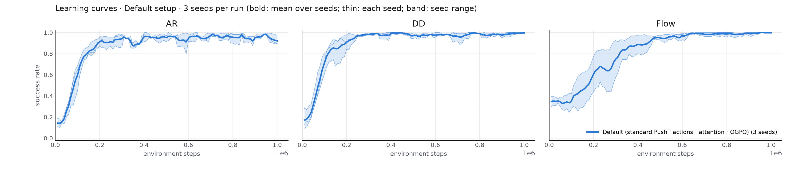
Start 12345 (easy third, rank 15 of 64): all seeds
Trajectories
seed 1seed 2seed 3 · color: episode time (dark violet start, yellow end) · gray cross: failed endpoint · gray T: block start · green T: goal · black dot: pusher start · numbers in each panel: mean steps of successful rollouts per seed, with the success count when not all succeeded
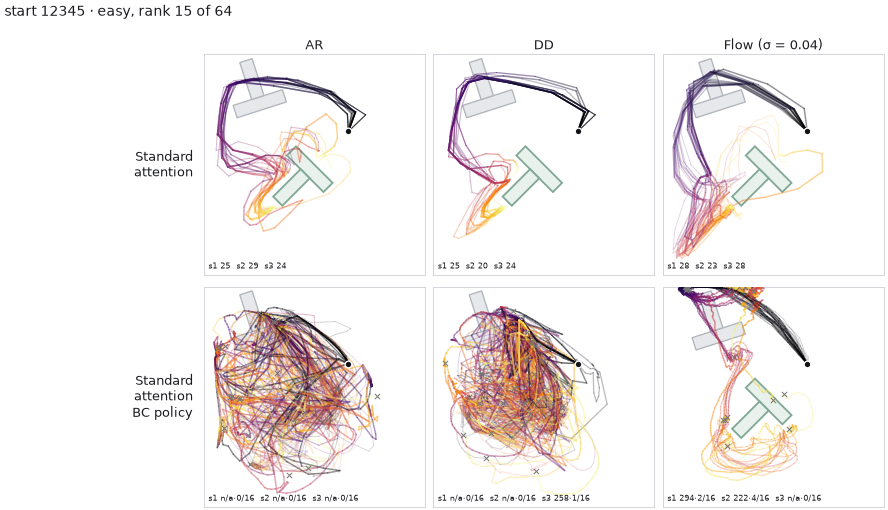
Replays
Pick a seed (or all seeds) above the player. Each panel replays rollouts 0 to 3 of that run and seed from this start, successes and failures alike. The dark disc is the pusher with a fading trail, and the pink cross is the target point (the point the controller pulls the pusher toward). ▶︎/❚❚ plays a panel and ◀ ▶ switch rollouts.
Mechanics
| Run | Method | Seed | Successes | Steps to success | Median target distance (px) | px/step |
|---|---|---|---|---|---|---|
| Standard · attention | AR | seed 1 | 16/16 | 25 | 73 | 34.8 |
| seed 2 | 16/16 | 29 | 73 | 34.4 | ||
| seed 3 | 16/16 | 24 | 68 | 35.5 | ||
| mean of 3 seeds | 48/48 | 26 | 71 | 34.9 | ||
| Standard · attention | DD | seed 1 | 16/16 | 25 | 66 | 34.0 |
| seed 2 | 16/16 | 20 | 82 | 40.7 | ||
| seed 3 | 16/16 | 24 | 75 | 37.2 | ||
| mean of 3 seeds | 48/48 | 23 | 75 | 37.3 | ||
| Standard · attention | Flow (σ = 0.04) | seed 1 | 16/16 | 28 | 59 | 35.5 |
| seed 2 | 16/16 | 23 | 92 | 43.2 | ||
| seed 3 | 16/16 | 28 | 68 | 37.2 | ||
| mean of 3 seeds | 48/48 | 26 | 73 | 38.7 | ||
| Standard · attention · BC policy | AR | seed 1 | 0/16 | n/a | n/a | n/a |
| seed 2 | 0/16 | n/a | n/a | n/a | ||
| seed 3 | 0/16 | n/a | n/a | n/a | ||
| mean of 3 seeds | 0/48 | n/a | n/a | n/a | ||
| Standard · attention · BC policy | DD | seed 1 | 0/16 | n/a | n/a | n/a |
| seed 2 | 0/16 | n/a | n/a | n/a | ||
| seed 3 | 1/16 | 258 | 27 | 12.8 | ||
| mean of 3 seeds | 1/48 | 258 | 27 | 12.8 | ||
| Standard · attention · BC policy | Flow (σ = 0.04) | seed 1 | 2/16 | 294 | 9 | 5.2 |
| seed 2 | 4/16 | 222 | 12 | 6.9 | ||
| seed 3 | 0/16 | n/a | n/a | n/a | ||
| mean of 3 seeds | 6/48 | 258 | 11 | 6.1 |
All rollouts from start 12345 in the evaluation on the 64 test starts (8 or 16 per seed, final checkpoints, every outcome). Steps, target distance and speed are over successful rollouts; the seed-mean row averages the per-seed values and sums the success counts.
Start 3942: trajectories, replays and mechanics (median third, rank 32 of 64)
Trajectories
seed 1seed 2seed 3 · color: episode time (dark violet start, yellow end) · gray cross: failed endpoint · gray T: block start · green T: goal · black dot: pusher start · numbers in each panel: mean steps of successful rollouts per seed, with the success count when not all succeeded
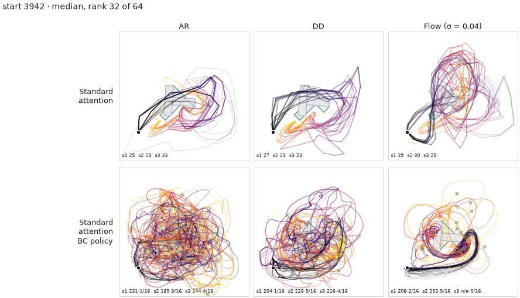
Replays
Pick a seed (or all seeds) above the player. Each panel replays rollouts 0 to 3 of that run and seed from this start, successes and failures alike. The dark disc is the pusher with a fading trail, and the pink cross is the target point (the point the controller pulls the pusher toward). ▶︎/❚❚ plays a panel and ◀ ▶ switch rollouts.
Mechanics
| Run | Method | Seed | Successes | Steps to success | Median target distance (px) | px/step |
|---|---|---|---|---|---|---|
| Standard · attention | AR | seed 1 | 16/16 | 25 | 69 | 36.6 |
| seed 2 | 16/16 | 23 | 74 | 37.5 | ||
| seed 3 | 16/16 | 33 | 101 | 40.9 | ||
| mean of 3 seeds | 48/48 | 27 | 81 | 38.3 | ||
| Standard · attention | DD | seed 1 | 16/16 | 27 | 70 | 38.0 |
| seed 2 | 16/16 | 23 | 76 | 37.8 | ||
| seed 3 | 16/16 | 23 | 49 | 35.6 | ||
| mean of 3 seeds | 48/48 | 24 | 65 | 37.2 | ||
| Standard · attention | Flow (σ = 0.04) | seed 1 | 16/16 | 39 | 120 | 45.8 |
| seed 2 | 16/16 | 30 | 106 | 42.0 | ||
| seed 3 | 16/16 | 25 | 82 | 41.3 | ||
| mean of 3 seeds | 48/48 | 31 | 102 | 43.0 | ||
| Standard · attention · BC policy | AR | seed 1 | 1/16 | 231 | 27 | 13.5 |
| seed 2 | 3/16 | 189 | 21 | 12.1 | ||
| seed 3 | 4/16 | 244 | 23 | 13.4 | ||
| mean of 3 seeds | 8/48 | 221 | 24 | 13.0 | ||
| Standard · attention · BC policy | DD | seed 1 | 1/16 | 204 | 17 | 9.4 |
| seed 2 | 5/16 | 226 | 19 | 9.8 | ||
| seed 3 | 4/16 | 216 | 23 | 11.7 | ||
| mean of 3 seeds | 10/48 | 215 | 20 | 10.3 | ||
| Standard · attention · BC policy | Flow (σ = 0.04) | seed 1 | 2/16 | 208 | 16 | 7.9 |
| seed 2 | 5/16 | 252 | 17 | 8.7 | ||
| seed 3 | 0/16 | n/a | n/a | n/a | ||
| mean of 3 seeds | 7/48 | 230 | 17 | 8.3 |
All rollouts from start 3942 in the evaluation on the 64 test starts (8 or 16 per seed, final checkpoints, every outcome). Steps, target distance and speed are over successful rollouts; the seed-mean row averages the per-seed values and sums the success counts.
Start 8039: trajectories, replays and mechanics (hard third, rank 53 of 64)
Trajectories
seed 1seed 2seed 3 · color: episode time (dark violet start, yellow end) · gray cross: failed endpoint · gray T: block start · green T: goal · black dot: pusher start · numbers in each panel: mean steps of successful rollouts per seed, with the success count when not all succeeded
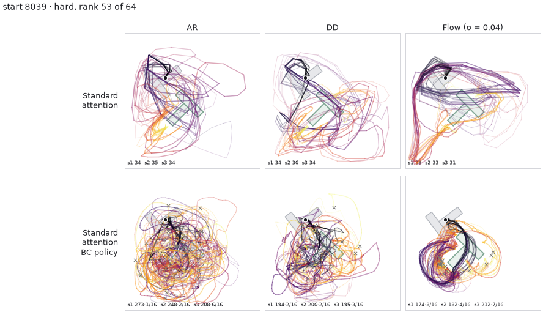
Replays
Pick a seed (or all seeds) above the player. Each panel replays rollouts 0 to 3 of that run and seed from this start, successes and failures alike. The dark disc is the pusher with a fading trail, and the pink cross is the target point (the point the controller pulls the pusher toward). ▶︎/❚❚ plays a panel and ◀ ▶ switch rollouts.
Mechanics
| Run | Method | Seed | Successes | Steps to success | Median target distance (px) | px/step |
|---|---|---|---|---|---|---|
| Standard · attention | AR | seed 1 | 16/16 | 34 | 93 | 39.4 |
| seed 2 | 16/16 | 35 | 89 | 39.1 | ||
| seed 3 | 16/16 | 34 | 95 | 40.1 | ||
| mean of 3 seeds | 48/48 | 34 | 93 | 39.5 | ||
| Standard · attention | DD | seed 1 | 16/16 | 34 | 86 | 35.4 |
| seed 2 | 16/16 | 36 | 96 | 39.2 | ||
| seed 3 | 16/16 | 34 | 99 | 42.7 | ||
| mean of 3 seeds | 48/48 | 34 | 94 | 39.1 | ||
| Standard · attention | Flow (σ = 0.04) | seed 1 | 16/16 | 38 | 112 | 48.2 |
| seed 2 | 16/16 | 33 | 122 | 51.6 | ||
| seed 3 | 16/16 | 31 | 87 | 37.0 | ||
| mean of 3 seeds | 48/48 | 34 | 107 | 45.6 | ||
| Standard · attention · BC policy | AR | seed 1 | 1/16 | 273 | 21 | 11.0 |
| seed 2 | 2/16 | 248 | 18 | 10.1 | ||
| seed 3 | 6/16 | 208 | 20 | 12.1 | ||
| mean of 3 seeds | 9/48 | 243 | 19 | 11.1 | ||
| Standard · attention · BC policy | DD | seed 1 | 2/16 | 194 | 21 | 10.4 |
| seed 2 | 2/16 | 206 | 19 | 11.0 | ||
| seed 3 | 3/16 | 195 | 17 | 8.1 | ||
| mean of 3 seeds | 7/48 | 199 | 19 | 9.8 | ||
| Standard · attention · BC policy | Flow (σ = 0.04) | seed 1 | 8/16 | 174 | 18 | 8.2 |
| seed 2 | 4/16 | 182 | 16 | 7.1 | ||
| seed 3 | 7/16 | 212 | 19 | 8.5 | ||
| mean of 3 seeds | 19/48 | 189 | 18 | 7.9 |
All rollouts from start 8039 in the evaluation on the 64 test starts (8 or 16 per seed, final checkpoints, every outcome). Steps, target distance and speed are over successful rollouts; the seed-mean row averages the per-seed values and sums the success counts.
All 64 starts: statistics
| Run | Method | Seeds | Success | Steps to success | Steps per seed | Median target distance (px) | px/step | px/step per seed | Chunk-start jerk ratio |
|---|---|---|---|---|---|---|---|---|---|
| Default (standard PushT actions · attention · OGPO) | AR | 3 | 100% [100%, 100%] | 28 [27, 28] | 27 / 27 / 28 | 76 [73, 79] | 36.3 [35.2, 37.3] | 35.4 / 36.7 / 36.8 | 1.47 [1.41, 1.53] |
| Default (standard PushT actions · attention · OGPO) | DD | 3 | 100% [100%, 100%] | 28 [27, 29] | 28 / 27 / 28 | 77 [74, 79] | 36.8 [35.6, 37.8] | 35.8 / 37.5 / 37.0 | 1.42 [1.37, 1.46] |
| Default (standard PushT actions · attention · OGPO) | Flow | 3 | 100% [100%, 100%] | 55 [52, 57] | 57 / 54 / 53 | 43 [40, 46] | 18.0 [16.5, 19.1] | 16.5 / 18.5 / 19.0 | 1.56 [1.53, 1.59] |
what is this?
- Success rate: Share of episodes that bring the T onto the goal pose; higher is better.
- Steps to success: How many control steps a successful episode takes; lower is faster.
- Pusher speed: How far the pusher moves per control step; higher is faster.
- Target distance: How far from the pusher the policy places the target point; larger means more aggressive commands.
- Chunk-start jerk ratio: Jerk at steps where a new chunk starts divided by jerk at other steps; 1 = no extra jerk, higher = jerkier at chunk starts.
Mean over 64 start states and all available seeds (the Seeds column), with 8 or 16 episodes per start. Brackets are 95% bootstrap intervals (seeds, then starts within seeds). The per-seed columns give each seed's mean over the 64 starts (seed 1 / 2 / 3). Steps, target distance, speed and the chunk-start jerk ratio are over successful episodes.
Across starts and seeds
Every experiment section shows start 12345 and two fixed starts (3942 and 8039) with all completed seeds. The full sets are on separate pages.
- The per-start browser covers all 64 test starts. One row per start, with AR, DD and flow after RL and as BC policies (standard PushT actions, attention), seeds overlaid, and the per-start steps and speed.
- Each experiment page has a grid and a player. The seed-overlay grid covers seven representative starts, and the player covers all 64 starts × seeds 1 to 3.
Seed consistency of routes (default RL policies, median over starts; distance = mean point-wise distance between successful pusher paths resampled to 32 points along their length): rollouts of different seeds lie 87 px (AR), 88 px (DD) and 90 px (flow) apart vs 59, 59 and 43 px within a seed, so each seed settles on its own route while the speed ordering holds on every start.
- Default setup: standard PushT actions, attention, OGPO (RL and BC policy)
- A1: action format (attention policy)
- 1: policy mixing layer (standard PushT actions)
- A2: policy mixing layer with 64 px-capped offsets
- 3: tokenizer-decoder mixing layer × policy mixing layer (standard PushT actions)
- 4: critic on code ids vs decoded actions
- 5: OGPO vs DPPO
- Flow noise sweep: default flow at each base noise (standard PushT actions)
- Flow retrained with more exploration noise (standard PushT actions)
- 6: MIP denoising tokenizers (MIP decoder and MIP encoder-decoder)
- 6c: MIP decoder Gaussian λ=1 tokenizer, decoder mixing layer × policy mixing layer
- 6c: MIP decoder Gaussian λ=0.5 tokenizer, decoder mixing layer × policy mixing layer
- 6c: MIP decoder OU λ=1 tokenizer, decoder mixing layer × policy mixing layer
- 6c: MIP decoder OU λ=0.5 tokenizer, decoder mixing layer × policy mixing layer
- Tokenizers trained with extra RL data, and the critic on code ids (seed 1 only)
- Flow RL started from an earlier BC checkpoint and from one after at least 30k BC steps (seed 1)
1Policy architecture: attention, Gated DeltaNet or Kimi
The setup above fixes one network for every policy type. This section changes the policy's token-mixing layer and keeps everything else fixed: the tokenizer, the standard PushT actions, the BC data and the OGPO settings. One hypothesis was that Gated DeltaNet (GDN) might smooth the token policies, because it carries a decaying memory through the sequence instead of attending afresh, so consecutive target points would stay closer together.
- Attention and GDN mix positions differently. Attention lets each position attend to every allowed position directly. GDN carries a decaying memory forward through the sequence.
- We test three GDN layouts on standard PushT actions. GDN head adds one GDN block before the output head, hybrid alternates GDN and attention, and GDN only replaces every attention block. The same layouts with 64 px-capped offsets are in Appendix A2.
- Kimi adds a finer decay. Kimi uses Kimi Delta Attention, a GDN variant with one decay per key channel, in three of the four blocks and attention in the last, following Kimi Linear.
- Sections 2 and 3 move the mixer into the tokenizer. Section 2 isolates the tokenizer decoder with an attention policy, and section 3 crosses decoder and policy mixers.
- Some seed-1 flow runs start from a later BC checkpoint. The GDN flow runs shown are these reruns, and their final RL checkpoints are earlier (600k to 800k environment steps; see the fine print under the short answer). The Kimi runs started from the BC starting checkpoint (the BC checkpoint, after at least 30k BC steps, whose success is closest to 22%) from the start.
A short introduction to Gated DeltaNet and Kimi Delta Attention
Attention keeps everything. At each layer, self-attention compares every position with every allowed position and mixes their values by those scores. Nothing is summarized or forgotten, and the cost grows with the square of the sequence length.
Linear attention keeps a fixed-size memory instead. Drop the softmax and the mixing becomes a running sum: each position writes the outer product \(k v^\top\) into a matrix \(S\), and a later position reads its output as \(S^\top q\). The memory has the same size however long the sequence is. But it only ever adds, so old associations pile up and interfere with new ones.
Gated DeltaNet fixes this with two changes (Yang, Kautz and Hatamizadeh, 2024). The delta rule first asks what the memory currently returns for key \(k\) and writes only the correction, \(\beta\,(v - S^\top k)\). Writing the same key twice overwrites the old value. The gate multiplies the whole memory by a data-dependent decay \(\alpha\) between 0 and 1 before each write, so the layer can forget quickly when the input changes. Together:
\[ S_t = \alpha_t \left(I - \beta_t k_t k_t^\top\right) S_{t-1} + \beta_t k_t v_t^\top, \qquad o_t = S_t^\top q_t \]Our implementation (ogpo/agents/modules/gdn.py) uses 4 heads, each with a 32 × 32 memory, a short causal convolution and L2-normalized \(q\) and \(k\), and an RMS-normalized output gated by SiLU. Our sequences are only 4 or 5 positions long, so the recurrence is a short unrolled loop, and the memory never holds more than 5 writes. AR and flow run it causally; DD, whose attention is unmasked, runs it forwards and backwards and adds the two. The diagram below compares the two mixers.
Kimi Delta Attention (KDA) comes from Moonshot AI's Kimi Linear (2025). It keeps Gated DeltaNet's delta rule but gives each key channel its own decay instead of one \(\alpha\) per head: \[ S_t = \left(I - \beta_t k_t k_t^\top\right) \operatorname{Diag}(\alpha_t)\, S_{t-1} + \beta_t k_t v_t^\top. \] One head can then hold some key directions for a long time while forgetting others quickly. The decay and the output gate come from low-rank projections, and the output gate is a sigmoid. Kimi Linear interleaves three KDA layers with one global attention layer, and our Kimi variant copies that layout: KDA, KDA, KDA, attention (our attention is ordinary multi-head attention, not Kimi's MLA). The second diagram shows the difference in the decay.
What we are testing
All runs use standard PushT actions (each action is the target point on the 512 × 512 px board, wherever the pusher is), so the token policies are free to command far targets (more than 74 px away, beyond 99% of demo steps). Only the policy's mixing layer changes; every mixer, including Kimi, runs for AR, DD and flow, from BC through OGPO. If a recurrent mixer smooths the token policies, their chunks should hold the target points closer together, aim closer, or show less extra jerk where a new chunk starts. Our sequences are only 4 or 5 positions long, which leaves a recurrent mixer little room to behave differently from attention, so a small effect would not be surprising. On speed, every mixer leaves AR and DD at 26 to 30 steps and flow at 51 to 63 steps (see "Where the speed comes from").
What we see
Only one mixer changes behaviour beyond seed noise: with the GDN-only policy, RL AR moves more smoothly inside each chunk and changes direction more sharply where a new chunk starts. The other mixers, Kimi included, stay within seed noise for AR and DD, and no mixer changes multimodality. The effect map and the collapsed table "All effects with 95% intervals" give every metric; the intervals resample seeds and then starts, so they include seed-to-seed variation.
- GDN-only AR is smoother inside a chunk. After RL, mean pusher jerk falls from 25.9 to 21.6 px/step³ (difference -4.4 [-6.1, -2.5]) and jerk per unit speed from 0.715 to 0.642. Within-chunk target spread (how far apart the 4 target points of one chunk lie) falls from 43 to 34.4 px [-10.9, -6.3], and the heading change rate (how fast the pusher turns) from 0.56 to 0.507. All four survive Holm correction and are about one baseline standard deviation or more.
- GDN-only AR is sharper between chunks. The chunk-start target-change ratio (\(\text{target move at a chunk-start step} \div \text{target move at other steps}\)) rises from 2.31 to 2.76, and this survives Holm. So the turning moves out of the chunk and onto its first step. We do not know why the recurrent layer has this effect.
- The effect appears only after RL and only for AR. GDN-only AR's BC policy and GDN-only DD after RL show no smoothness change beyond seed noise. We do not know why only AR responds.
- Section 3 agrees in direction, with larger effects. Averaged over the five decoders of the section 3 grid, the GDN-only policy lowers AR's jerk from 25.9 to 19.1, its within-chunk spread from 43 to 30.5 px and its median target distance from 76.2 to 67.8 px, and raises its chunk-start jerk ratio (\(\text{jerk at steps where a new chunk starts} \div \text{jerk at other steps}\); 1 = no extra jerk) from 1.47 to 1.58, all surviving Holm.
- Other mixers and flow change little. No GDN-head, hybrid or Kimi effect survives Holm for AR or DD after RL. For flow, the GDN-only policy lowers the chunk-start acceleration ratio from 2.13 to 1.95 (survives Holm), and Kimi lowers flow's BC jerk per unit speed from 0.44 to 0.381 (survives Holm) with no surviving change after RL. Contact share, contact switches, pushing efficiency and faces touched do not change for any mixer.
- No mixer changes multimodality. No route-variety measure changes beyond seed noise for any class, before or after RL. At all three example starts (12345 reference, 3942 median, 8039 hard) every policy pushes the block the whole way without travelling around it first; within one seed the rollouts follow one or two routes, and different seeds often settle on different routes.
- Caveats. Three seeds per variant. Kimi and attention flow start from the BC starting checkpoint on seeds 2 and 3, while attention flow seed 1 comes from an earlier set of standard-action runs (evaluated at 800k; its log starts at 590k). The seed-1 GDN flow runs are reruns from a later BC checkpoint, and their logs end at 620k to 820k steps. All token variants pass 90% evaluation success between 120k and 310k environment steps on every seed, and Kimi flow passes 90% at 240k to 280k vs 290k and 470k for attention flow seeds 2 and 3.
What changes in behaviour
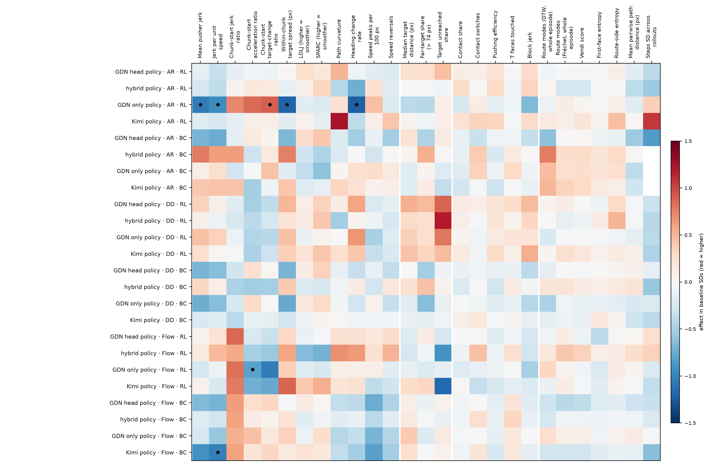
All effects with 95% intervals
Smoothness and jerk
| Change | Class | Policy | Metric | Baseline | Variant | Difference [95% CI] | Holm p | Seeds |
|---|---|---|---|---|---|---|---|---|
| GDN head policy | AR | RL | Mean pusher jerk | 25.9 | 25.4 | -0.57 [-2.56, +1.64] | 1.000 | 3 / 3 |
| GDN head policy | AR | RL | Jerk per unit speed | 0.715 | 0.689 | -0.0262 [-0.0633, +0.0149] | 1.000 | 3 / 3 |
| GDN head policy | AR | RL | Chunk-start jerk ratio | 1.47 | 1.45 | -0.0239 [-0.105, +0.051] | 1.000 | 3 / 3 |
| GDN head policy | AR | RL | Chunk-start acceleration ratio | 1.75 | 1.73 | -0.0111 [-0.166, +0.135] | 1.000 | 3 / 3 |
| GDN head policy | AR | RL | Chunk-start target-change ratio | 2.31 | 2.27 | -0.0407 [-0.358, +0.272] | 1.000 | 3 / 3 |
| GDN head policy | AR | RL | Within-chunk target spread (px) | 43 | 43.1 | +0.0933 [-3.35, +4.14] | 1.000 | 3 / 3 |
| GDN head policy | AR | RL | LDLJ (higher = smoother) | -10.9 | -10.7 | +0.194 [-0.00456, +0.384] | 1.000 | 3 / 3 |
| GDN head policy | AR | RL | SPARC (higher = smoother) | -2.33 | -2.3 | +0.0286 [-0.0544, +0.111] | 1.000 | 3 / 3 |
| GDN head policy | AR | RL | Path curvature | 0.0317 | 0.0338 | +0.00207 [-0.000147, +0.00415] | 1.000 | 3 / 3 |
| GDN head policy | AR | RL | Heading change rate | 0.56 | 0.557 | -0.00313 [-0.0318, +0.027] | 1.000 | 3 / 3 |
| GDN head policy | AR | RL | Speed peaks per 100 px | 0.552 | 0.538 | -0.0138 [-0.0438, +0.0181] | 1.000 | 3 / 3 |
| GDN head policy | AR | RL | Speed reversals | 1.93 | 1.8 | -0.13 [-0.462, +0.218] | 1.000 | 3 / 3 |
| hybrid policy | AR | RL | Mean pusher jerk | 25.9 | 24.9 | -1.04 [-3.36, +1.66] | 1.000 | 3 / 3 |
| hybrid policy | AR | RL | Jerk per unit speed | 0.715 | 0.685 | -0.0304 [-0.068, +0.0137] | 1.000 | 3 / 3 |
| hybrid policy | AR | RL | Chunk-start jerk ratio | 1.47 | 1.48 | +0.00918 [-0.0719, +0.0846] | 1.000 | 3 / 3 |
| hybrid policy | AR | RL | Chunk-start acceleration ratio | 1.75 | 1.78 | +0.0388 [-0.0962, +0.174] | 1.000 | 3 / 3 |
| hybrid policy | AR | RL | Chunk-start target-change ratio | 2.31 | 2.39 | +0.0766 [-0.221, +0.358] | 1.000 | 3 / 3 |
| hybrid policy | AR | RL | Within-chunk target spread (px) | 43 | 42.2 | -0.79 [-5.29, +4.82] | 1.000 | 3 / 3 |
| hybrid policy | AR | RL | LDLJ (higher = smoother) | -10.9 | -10.9 | +0.0533 [-0.181, +0.287] | 1.000 | 3 / 3 |
| hybrid policy | AR | RL | SPARC (higher = smoother) | -2.33 | -2.27 | +0.0525 [-0.0564, +0.155] | 1.000 | 3 / 3 |
| hybrid policy | AR | RL | Path curvature | 0.0317 | 0.03 | -0.00172 [-0.00425, +0.000835] | 1.000 | 3 / 3 |
| hybrid policy | AR | RL | Heading change rate | 0.56 | 0.528 | -0.0321 [-0.0617, +0.00139] | 1.000 | 3 / 3 |
| hybrid policy | AR | RL | Speed peaks per 100 px | 0.552 | 0.572 | +0.02 [-0.0135, +0.0508] | 1.000 | 3 / 3 |
| hybrid policy | AR | RL | Speed reversals | 1.93 | 1.82 | -0.108 [-0.498, +0.268] | 1.000 | 3 / 3 |
| GDN only policy | AR | RL | Mean pusher jerk | 25.9 | 21.6 | -4.38 [-6.08, -2.45] | 0.000 | 3 / 3 |
| GDN only policy | AR | RL | Jerk per unit speed | 0.715 | 0.642 | -0.073 [-0.109, -0.0372] | 0.000 | 3 / 3 |
| GDN only policy | AR | RL | Chunk-start jerk ratio | 1.47 | 1.59 | +0.124 [+0.0484, +0.195] | 0.404 | 3 / 3 |
| GDN only policy | AR | RL | Chunk-start acceleration ratio | 1.75 | 1.95 | +0.206 [+0.0936, +0.329] | 0.052 | 3 / 3 |
| GDN only policy | AR | RL | Chunk-start target-change ratio | 2.31 | 2.76 | +0.45 [+0.241, +0.668] | 0.000 | 3 / 3 |
| GDN only policy | AR | RL | Within-chunk target spread (px) | 43 | 34.4 | -8.6 [-10.9, -6.3] | 0.000 | 3 / 3 |
| GDN only policy | AR | RL | LDLJ (higher = smoother) | -10.9 | -11 | -0.118 [-0.352, +0.102] | 1.000 | 3 / 3 |
| GDN only policy | AR | RL | SPARC (higher = smoother) | -2.33 | -2.36 | -0.0346 [-0.109, +0.045] | 1.000 | 3 / 3 |
| GDN only policy | AR | RL | Path curvature | 0.0317 | 0.0327 | +0.000943 [-0.00184, +0.00441] | 1.000 | 3 / 3 |
| GDN only policy | AR | RL | Heading change rate | 0.56 | 0.507 | -0.0535 [-0.081, -0.0256] | 0.000 | 3 / 3 |
| GDN only policy | AR | RL | Speed peaks per 100 px | 0.552 | 0.591 | +0.0396 [+0.0118, +0.0677] | 0.750 | 3 / 3 |
| GDN only policy | AR | RL | Speed reversals | 1.93 | 1.8 | -0.134 [-0.44, +0.151] | 1.000 | 3 / 3 |
| Kimi policy | AR | RL | Mean pusher jerk | 25.9 | 25.2 | -0.749 [-3.6, +2.55] | 1.000 | 3 / 3 |
| Kimi policy | AR | RL | Jerk per unit speed | 0.715 | 0.696 | -0.0189 [-0.0725, +0.0408] | 1.000 | 3 / 3 |
| Kimi policy | AR | RL | Chunk-start jerk ratio | 1.47 | 1.45 | -0.0224 [-0.116, +0.0664] | 1.000 | 3 / 3 |
| Kimi policy | AR | RL | Chunk-start acceleration ratio | 1.75 | 1.77 | +0.0208 [-0.0913, +0.141] | 1.000 | 3 / 3 |
| Kimi policy | AR | RL | Chunk-start target-change ratio | 2.31 | 2.36 | +0.0488 [-0.132, +0.262] | 1.000 | 3 / 3 |
| Kimi policy | AR | RL | Within-chunk target spread (px) | 43 | 41.9 | -1.14 [-4.71, +2.79] | 1.000 | 3 / 3 |
| Kimi policy | AR | RL | LDLJ (higher = smoother) | -10.9 | -10.9 | +0.0429 [-0.185, +0.268] | 1.000 | 3 / 3 |
| Kimi policy | AR | RL | SPARC (higher = smoother) | -2.33 | -2.35 | -0.0218 [-0.175, +0.1] | 1.000 | 3 / 3 |
| Kimi policy | AR | RL | Path curvature | 0.0317 | 0.0367 | +0.005 [-0.00272, +0.017] | 1.000 | 3 / 3 |
| Kimi policy | AR | RL | Heading change rate | 0.56 | 0.544 | -0.0165 [-0.0481, +0.0171] | 1.000 | 3 / 3 |
| Kimi policy | AR | RL | Speed peaks per 100 px | 0.552 | 0.561 | +0.00923 [-0.0218, +0.0403] | 1.000 | 3 / 3 |
| Kimi policy | AR | RL | Speed reversals | 1.93 | 2.19 | +0.261 [-0.349, +0.971] | 1.000 | 3 / 3 |
| GDN head policy | AR | BC | Mean pusher jerk | 7.48 | 6.63 | -0.846 [-1.67, -0.092] | 1.000 | 3 / 3 |
| GDN head policy | AR | BC | Jerk per unit speed | 0.626 | 0.563 | -0.0627 [-0.106, -0.0209] | 0.525 | 3 / 3 |
| GDN head policy | AR | BC | Chunk-start jerk ratio | 1.67 | 1.66 | -0.0147 [-0.095, +0.0636] | 1.000 | 3 / 3 |
| GDN head policy | AR | BC | Chunk-start acceleration ratio | 1.54 | 1.56 | +0.0142 [-0.0502, +0.08] | 1.000 | 3 / 3 |
| GDN head policy | AR | BC | Chunk-start target-change ratio | 1.71 | 1.72 | +0.00618 [-0.0855, +0.0903] | 1.000 | 3 / 3 |
| GDN head policy | AR | BC | Within-chunk target spread (px) | 15.3 | 14.2 | -1.01 [-2.22, +0.1] | 1.000 | 3 / 3 |
| GDN head policy | AR | BC | LDLJ (higher = smoother) | -17.5 | -17.3 | +0.244 [-0.138, +0.688] | 1.000 | 3 / 3 |
| GDN head policy | AR | BC | SPARC (higher = smoother) | -5.59 | -5.25 | +0.345 [-0.142, +0.812] | 1.000 | 3 / 3 |
| GDN head policy | AR | BC | Path curvature | 0.0625 | 0.0575 | -0.00499 [-0.0163, +0.00294] | 1.000 | 3 / 3 |
| GDN head policy | AR | BC | Heading change rate | 0.369 | 0.348 | -0.0216 [-0.0454, -0.000331] | 1.000 | 3 / 3 |
| GDN head policy | AR | BC | Speed peaks per 100 px | 1.3 | 1.29 | -0.0182 [-0.133, +0.075] | 1.000 | 3 / 3 |
| GDN head policy | AR | BC | Speed reversals | 9.88 | 7.99 | -1.89 [-4.14, +0.107] | 1.000 | 3 / 3 |
| hybrid policy | AR | BC | Mean pusher jerk | 7.32 | 8.23 | +0.915 [-0.137, +2.01] | 1.000 | 3 / 3 |
| hybrid policy | AR | BC | Jerk per unit speed | 0.607 | 0.656 | +0.0495 [-0.0148, +0.113] | 1.000 | 3 / 3 |
| hybrid policy | AR | BC | Chunk-start jerk ratio | 1.66 | 1.72 | +0.0604 [-0.0613, +0.193] | 1.000 | 3 / 3 |
| hybrid policy | AR | BC | Chunk-start acceleration ratio | 1.55 | 1.52 | -0.0361 [-0.124, +0.0481] | 1.000 | 3 / 3 |
| hybrid policy | AR | BC | Chunk-start target-change ratio | 1.7 | 1.73 | +0.0223 [-0.11, +0.143] | 1.000 | 3 / 3 |
| hybrid policy | AR | BC | Within-chunk target spread (px) | 15.2 | 16.2 | +1.08 [-0.296, +2.47] | 1.000 | 3 / 3 |
| hybrid policy | AR | BC | LDLJ (higher = smoother) | -17.5 | -17.7 | -0.247 [-0.835, +0.329] | 1.000 | 3 / 3 |
| hybrid policy | AR | BC | SPARC (higher = smoother) | -5.5 | -5.88 | -0.387 [-1.09, +0.356] | 1.000 | 3 / 3 |
| hybrid policy | AR | BC | Path curvature | 0.063 | 0.0575 | -0.0055 [-0.0222, +0.0047] | 1.000 | 3 / 3 |
| hybrid policy | AR | BC | Heading change rate | 0.368 | 0.368 | +0.000252 [-0.0296, +0.0273] | 1.000 | 3 / 3 |
| hybrid policy | AR | BC | Speed peaks per 100 px | 1.29 | 1.23 | -0.0586 [-0.204, +0.0524] | 1.000 | 3 / 3 |
| hybrid policy | AR | BC | Speed reversals | 9.76 | 9.81 | +0.0495 [-2.59, +2.36] | 1.000 | 3 / 3 |
| GDN only policy | AR | BC | Mean pusher jerk | 7.69 | 7.81 | +0.125 [-1.15, +1.14] | 1.000 | 3 / 3 |
| GDN only policy | AR | BC | Jerk per unit speed | 0.632 | 0.651 | +0.019 [-0.0376, +0.074] | 1.000 | 3 / 3 |
| GDN only policy | AR | BC | Chunk-start jerk ratio | 1.66 | 1.63 | -0.0302 [-0.126, +0.0676] | 1.000 | 3 / 3 |
| GDN only policy | AR | BC | Chunk-start acceleration ratio | 1.55 | 1.54 | -0.00285 [-0.0874, +0.0746] | 1.000 | 3 / 3 |
| GDN only policy | AR | BC | Chunk-start target-change ratio | 1.72 | 1.78 | +0.0632 [-0.0479, +0.169] | 1.000 | 3 / 3 |
| GDN only policy | AR | BC | Within-chunk target spread (px) | 15.5 | 15.2 | -0.33 [-1.99, +1.18] | 1.000 | 3 / 3 |
| GDN only policy | AR | BC | LDLJ (higher = smoother) | -17.5 | -17.8 | -0.337 [-0.865, +0.213] | 1.000 | 3 / 3 |
| GDN only policy | AR | BC | SPARC (higher = smoother) | -5.57 | -6.06 | -0.496 [-1.44, +0.25] | 1.000 | 3 / 3 |
| GDN only policy | AR | BC | Path curvature | 0.0594 | 0.0597 | +0.000276 [-0.00755, +0.0074] | 1.000 | 3 / 3 |
| GDN only policy | AR | BC | Heading change rate | 0.366 | 0.373 | +0.00626 [-0.0216, +0.0315] | 1.000 | 3 / 3 |
| GDN only policy | AR | BC | Speed peaks per 100 px | 1.26 | 1.29 | +0.0272 [-0.0676, +0.11] | 1.000 | 3 / 3 |
| GDN only policy | AR | BC | Speed reversals | 9.55 | 9.88 | +0.329 [-1.99, +2.6] | 1.000 | 3 / 3 |
| Kimi policy | AR | BC | Mean pusher jerk | 7.5 | 8.06 | +0.553 [-0.513, +1.59] | 1.000 | 3 / 3 |
| Kimi policy | AR | BC | Jerk per unit speed | 0.61 | 0.645 | +0.0348 [-0.0144, +0.0858] | 1.000 | 3 / 3 |
| Kimi policy | AR | BC | Chunk-start jerk ratio | 1.67 | 1.72 | +0.043 [-0.0633, +0.149] | 1.000 | 3 / 3 |
| Kimi policy | AR | BC | Chunk-start acceleration ratio | 1.57 | 1.52 | -0.0579 [-0.158, +0.0474] | 1.000 | 3 / 3 |
| Kimi policy | AR | BC | Chunk-start target-change ratio | 1.74 | 1.73 | -0.011 [-0.142, +0.122] | 1.000 | 3 / 3 |
| Kimi policy | AR | BC | Within-chunk target spread (px) | 15.4 | 16.1 | +0.714 [-0.944, +2.28] | 1.000 | 3 / 3 |
| Kimi policy | AR | BC | LDLJ (higher = smoother) | -17.4 | -17.5 | -0.166 [-0.707, +0.313] | 1.000 | 3 / 3 |
| Kimi policy | AR | BC | SPARC (higher = smoother) | -5.42 | -5.51 | -0.0905 [-0.607, +0.441] | 1.000 | 3 / 3 |
| Kimi policy | AR | BC | Path curvature | 0.0569 | 0.0591 | +0.00219 [-0.00466, +0.00868] | 1.000 | 3 / 3 |
| Kimi policy | AR | BC | Heading change rate | 0.361 | 0.368 | +0.00721 [-0.0131, +0.0285] | 1.000 | 3 / 3 |
| Kimi policy | AR | BC | Speed peaks per 100 px | 1.26 | 1.27 | +0.00601 [-0.0864, +0.1] | 1.000 | 3 / 3 |
| Kimi policy | AR | BC | Speed reversals | 8.9 | 9.15 | +0.25 [-1.9, +2.59] | 1.000 | 3 / 3 |
| GDN head policy | DD | RL | Mean pusher jerk | 27 | 28.5 | +1.56 [-0.933, +4.13] | 1.000 | 3 / 3 |
| GDN head policy | DD | RL | Jerk per unit speed | 0.735 | 0.744 | +0.00922 [-0.0382, +0.0503] | 1.000 | 3 / 3 |
| GDN head policy | DD | RL | Chunk-start jerk ratio | 1.42 | 1.38 | -0.0346 [-0.112, +0.0454] | 1.000 | 3 / 3 |
| GDN head policy | DD | RL | Chunk-start acceleration ratio | 1.73 | 1.61 | -0.119 [-0.206, -0.0321] | 0.893 | 3 / 3 |
| GDN head policy | DD | RL | Chunk-start target-change ratio | 2.3 | 2.08 | -0.217 [-0.432, -0.0378] | 1.000 | 3 / 3 |
| GDN head policy | DD | RL | Within-chunk target spread (px) | 44.5 | 48.2 | +3.7 [-0.122, +7.8] | 1.000 | 3 / 3 |
| GDN head policy | DD | RL | LDLJ (higher = smoother) | -10.9 | -10.8 | +0.0884 [-0.092, +0.292] | 1.000 | 3 / 3 |
| GDN head policy | DD | RL | SPARC (higher = smoother) | -2.34 | -2.28 | +0.0579 [-0.00197, +0.121] | 1.000 | 3 / 3 |
| GDN head policy | DD | RL | Path curvature | 0.0336 | 0.0342 | +0.000592 [-0.00187, +0.0037] | 1.000 | 3 / 3 |
| GDN head policy | DD | RL | Heading change rate | 0.559 | 0.593 | +0.0333 [+0.00245, +0.0656] | 1.000 | 3 / 3 |
| GDN head policy | DD | RL | Speed peaks per 100 px | 0.57 | 0.552 | -0.0181 [-0.0644, +0.0284] | 1.000 | 3 / 3 |
| GDN head policy | DD | RL | Speed reversals | 2.23 | 2.13 | -0.0993 [-0.398, +0.189] | 1.000 | 3 / 3 |
| hybrid policy | DD | RL | Mean pusher jerk | 27 | 27.3 | +0.381 [-1.44, +2.49] | 1.000 | 3 / 3 |
| hybrid policy | DD | RL | Jerk per unit speed | 0.735 | 0.726 | -0.00878 [-0.0496, +0.0317] | 1.000 | 3 / 3 |
| hybrid policy | DD | RL | Chunk-start jerk ratio | 1.42 | 1.37 | -0.0484 [-0.133, +0.0451] | 1.000 | 3 / 3 |
| hybrid policy | DD | RL | Chunk-start acceleration ratio | 1.73 | 1.64 | -0.0944 [-0.182, -0.00686] | 1.000 | 3 / 3 |
| hybrid policy | DD | RL | Chunk-start target-change ratio | 2.3 | 2.15 | -0.15 [-0.351, +0.0301] | 1.000 | 3 / 3 |
| hybrid policy | DD | RL | Within-chunk target spread (px) | 44.5 | 46.1 | +1.57 [-1.74, +5.24] | 1.000 | 3 / 3 |
| hybrid policy | DD | RL | LDLJ (higher = smoother) | -10.9 | -10.8 | +0.106 [-0.0953, +0.313] | 1.000 | 3 / 3 |
| hybrid policy | DD | RL | SPARC (higher = smoother) | -2.34 | -2.27 | +0.068 [-0.0053, +0.136] | 1.000 | 3 / 3 |
| hybrid policy | DD | RL | Path curvature | 0.0336 | 0.0308 | -0.00279 [-0.00555, +4.48e-05] | 1.000 | 3 / 3 |
| hybrid policy | DD | RL | Heading change rate | 0.559 | 0.562 | +0.0029 [-0.0236, +0.0311] | 1.000 | 3 / 3 |
| hybrid policy | DD | RL | Speed peaks per 100 px | 0.57 | 0.563 | -0.0067 [-0.042, +0.0252] | 1.000 | 3 / 3 |
| hybrid policy | DD | RL | Speed reversals | 2.23 | 2.05 | -0.179 [-0.482, +0.0873] | 1.000 | 3 / 3 |
| GDN only policy | DD | RL | Mean pusher jerk | 27 | 29 | +1.99 [-1.1, +5.46] | 1.000 | 3 / 3 |
| GDN only policy | DD | RL | Jerk per unit speed | 0.735 | 0.769 | +0.0341 [-0.0211, +0.0939] | 1.000 | 3 / 3 |
| GDN only policy | DD | RL | Chunk-start jerk ratio | 1.42 | 1.4 | -0.0178 [-0.11, +0.0728] | 1.000 | 3 / 3 |
| GDN only policy | DD | RL | Chunk-start acceleration ratio | 1.73 | 1.63 | -0.104 [-0.199, -0.00506] | 1.000 | 3 / 3 |
| GDN only policy | DD | RL | Chunk-start target-change ratio | 2.3 | 2.06 | -0.237 [-0.449, -0.0316] | 1.000 | 3 / 3 |
| GDN only policy | DD | RL | Within-chunk target spread (px) | 44.5 | 47.9 | +3.38 [-1.46, +8.68] | 1.000 | 3 / 3 |
| GDN only policy | DD | RL | LDLJ (higher = smoother) | -10.9 | -11 | -0.0851 [-0.303, +0.139] | 1.000 | 3 / 3 |
| GDN only policy | DD | RL | SPARC (higher = smoother) | -2.34 | -2.33 | +0.00909 [-0.0825, +0.0978] | 1.000 | 3 / 3 |
| GDN only policy | DD | RL | Path curvature | 0.0336 | 0.0336 | +1.11e-05 [-0.00251, +0.00249] | 1.000 | 3 / 3 |
| GDN only policy | DD | RL | Heading change rate | 0.559 | 0.597 | +0.0371 [-0.00762, +0.0903] | 1.000 | 3 / 3 |
| GDN only policy | DD | RL | Speed peaks per 100 px | 0.57 | 0.529 | -0.0405 [-0.0801, -0.000623] | 1.000 | 3 / 3 |
| GDN only policy | DD | RL | Speed reversals | 2.23 | 2.09 | -0.144 [-0.458, +0.118] | 1.000 | 3 / 3 |
| Kimi policy | DD | RL | Mean pusher jerk | 27 | 28.1 | +1.09 [-0.782, +3.14] | 1.000 | 3 / 3 |
| Kimi policy | DD | RL | Jerk per unit speed | 0.735 | 0.736 | +0.00126 [-0.0402, +0.0419] | 1.000 | 3 / 3 |
| Kimi policy | DD | RL | Chunk-start jerk ratio | 1.42 | 1.41 | -0.00279 [-0.0911, +0.106] | 1.000 | 3 / 3 |
| Kimi policy | DD | RL | Chunk-start acceleration ratio | 1.73 | 1.62 | -0.113 [-0.204, -0.0166] | 1.000 | 3 / 3 |
| Kimi policy | DD | RL | Chunk-start target-change ratio | 2.3 | 2.12 | -0.174 [-0.397, +0.0342] | 1.000 | 3 / 3 |
| Kimi policy | DD | RL | Within-chunk target spread (px) | 44.5 | 47.1 | +2.64 [-0.659, +6.27] | 1.000 | 3 / 3 |
| Kimi policy | DD | RL | LDLJ (higher = smoother) | -10.9 | -10.8 | +0.174 [-0.031, +0.385] | 1.000 | 3 / 3 |
| Kimi policy | DD | RL | SPARC (higher = smoother) | -2.34 | -2.27 | +0.069 [+0.00666, +0.127] | 1.000 | 3 / 3 |
| Kimi policy | DD | RL | Path curvature | 0.0336 | 0.0349 | +0.00135 [-0.00102, +0.00385] | 1.000 | 3 / 3 |
| Kimi policy | DD | RL | Heading change rate | 0.559 | 0.582 | +0.0226 [-0.00909, +0.0528] | 1.000 | 3 / 3 |
| Kimi policy | DD | RL | Speed peaks per 100 px | 0.57 | 0.541 | -0.0289 [-0.0693, +0.00966] | 1.000 | 3 / 3 |
| Kimi policy | DD | RL | Speed reversals | 2.23 | 2.06 | -0.167 [-0.449, +0.107] | 1.000 | 3 / 3 |
| GDN head policy | DD | BC | Mean pusher jerk | 6.73 | 5.77 | -0.953 [-1.62, -0.27] | 0.997 | 3 / 3 |
| GDN head policy | DD | BC | Jerk per unit speed | 0.621 | 0.55 | -0.0711 [-0.116, -0.03] | 0.216 | 3 / 3 |
| GDN head policy | DD | BC | Chunk-start jerk ratio | 1.61 | 1.58 | -0.0333 [-0.116, +0.044] | 1.000 | 3 / 3 |
| GDN head policy | DD | BC | Chunk-start acceleration ratio | 1.34 | 1.36 | +0.0205 [-0.0338, +0.0662] | 1.000 | 3 / 3 |
| GDN head policy | DD | BC | Chunk-start target-change ratio | 1.42 | 1.42 | +0.0038 [-0.0727, +0.0762] | 1.000 | 3 / 3 |
| GDN head policy | DD | BC | Within-chunk target spread (px) | 14.6 | 13.4 | -1.28 [-2.29, -0.22] | 1.000 | 3 / 3 |
| GDN head policy | DD | BC | LDLJ (higher = smoother) | -17.4 | -17.3 | +0.0797 [-0.228, +0.422] | 1.000 | 3 / 3 |
| GDN head policy | DD | BC | SPARC (higher = smoother) | -5.7 | -5.37 | +0.33 [-0.0351, +0.688] | 1.000 | 3 / 3 |
| GDN head policy | DD | BC | Path curvature | 0.063 | 0.0605 | -0.00254 [-0.0137, +0.00762] | 1.000 | 3 / 3 |
| GDN head policy | DD | BC | Heading change rate | 0.358 | 0.342 | -0.0161 [-0.0383, +0.00505] | 1.000 | 3 / 3 |
| GDN head policy | DD | BC | Speed peaks per 100 px | 1.46 | 1.43 | -0.0302 [-0.174, +0.074] | 1.000 | 3 / 3 |
| GDN head policy | DD | BC | Speed reversals | 8.44 | 7.42 | -1.03 [-2.57, +0.498] | 1.000 | 3 / 3 |
| hybrid policy | DD | BC | Mean pusher jerk | 6.52 | 6.9 | +0.382 [-0.387, +1.27] | 1.000 | 3 / 3 |
| hybrid policy | DD | BC | Jerk per unit speed | 0.605 | 0.615 | +0.0104 [-0.0381, +0.0615] | 1.000 | 3 / 3 |
| hybrid policy | DD | BC | Chunk-start jerk ratio | 1.61 | 1.55 | -0.0551 [-0.127, +0.0128] | 1.000 | 3 / 3 |
| hybrid policy | DD | BC | Chunk-start acceleration ratio | 1.34 | 1.3 | -0.04 [-0.0949, +0.0116] | 1.000 | 3 / 3 |
| hybrid policy | DD | BC | Chunk-start target-change ratio | 1.41 | 1.36 | -0.0541 [-0.134, +0.0143] | 1.000 | 3 / 3 |
| hybrid policy | DD | BC | Within-chunk target spread (px) | 14.4 | 15.1 | +0.647 [-0.333, +1.83] | 1.000 | 3 / 3 |
| hybrid policy | DD | BC | LDLJ (higher = smoother) | -17.4 | -17.6 | -0.162 [-0.462, +0.182] | 1.000 | 3 / 3 |
| hybrid policy | DD | BC | SPARC (higher = smoother) | -5.63 | -5.86 | -0.23 [-0.616, +0.114] | 1.000 | 3 / 3 |
| hybrid policy | DD | BC | Path curvature | 0.0615 | 0.0604 | -0.0011 [-0.0101, +0.00663] | 1.000 | 3 / 3 |
| hybrid policy | DD | BC | Heading change rate | 0.353 | 0.358 | +0.00546 [-0.0198, +0.0339] | 1.000 | 3 / 3 |
| hybrid policy | DD | BC | Speed peaks per 100 px | 1.47 | 1.4 | -0.0674 [-0.186, +0.0194] | 1.000 | 3 / 3 |
| hybrid policy | DD | BC | Speed reversals | 8.23 | 8.73 | +0.495 [-1.42, +2.69] | 1.000 | 3 / 3 |
| GDN only policy | DD | BC | Mean pusher jerk | 6.68 | 5.67 | -1.02 [-1.77, -0.231] | 0.954 | 3 / 3 |
| GDN only policy | DD | BC | Jerk per unit speed | 0.612 | 0.541 | -0.0704 [-0.123, -0.0213] | 0.321 | 3 / 3 |
| GDN only policy | DD | BC | Chunk-start jerk ratio | 1.61 | 1.58 | -0.0257 [-0.0928, +0.036] | 1.000 | 3 / 3 |
| GDN only policy | DD | BC | Chunk-start acceleration ratio | 1.34 | 1.36 | +0.0226 [-0.0283, +0.0739] | 1.000 | 3 / 3 |
| GDN only policy | DD | BC | Chunk-start target-change ratio | 1.41 | 1.41 | -0.000339 [-0.0693, +0.0635] | 1.000 | 3 / 3 |
| GDN only policy | DD | BC | Within-chunk target spread (px) | 14.7 | 13.3 | -1.4 [-2.54, -0.174] | 1.000 | 3 / 3 |
| GDN only policy | DD | BC | LDLJ (higher = smoother) | -17.4 | -17.3 | +0.122 [-0.17, +0.392] | 1.000 | 3 / 3 |
| GDN only policy | DD | BC | SPARC (higher = smoother) | -5.59 | -5.35 | +0.244 [-0.142, +0.588] | 1.000 | 3 / 3 |
| GDN only policy | DD | BC | Path curvature | 0.0625 | 0.0617 | -0.000832 [-0.0105, +0.00747] | 1.000 | 3 / 3 |
| GDN only policy | DD | BC | Heading change rate | 0.359 | 0.345 | -0.0139 [-0.0391, +0.00891] | 1.000 | 3 / 3 |
| GDN only policy | DD | BC | Speed peaks per 100 px | 1.45 | 1.47 | +0.0153 [-0.0905, +0.11] | 1.000 | 3 / 3 |
| GDN only policy | DD | BC | Speed reversals | 8.56 | 7.47 | -1.09 [-2.96, +0.659] | 1.000 | 3 / 3 |
| Kimi policy | DD | BC | Mean pusher jerk | 6.75 | 6.47 | -0.289 [-0.927, +0.306] | 1.000 | 3 / 3 |
| Kimi policy | DD | BC | Jerk per unit speed | 0.622 | 0.603 | -0.0194 [-0.0684, +0.03] | 1.000 | 3 / 3 |
| Kimi policy | DD | BC | Chunk-start jerk ratio | 1.61 | 1.56 | -0.0447 [-0.14, +0.0379] | 1.000 | 3 / 3 |
| Kimi policy | DD | BC | Chunk-start acceleration ratio | 1.33 | 1.32 | -0.00861 [-0.0779, +0.0556] | 1.000 | 3 / 3 |
| Kimi policy | DD | BC | Chunk-start target-change ratio | 1.41 | 1.39 | -0.0154 [-0.102, +0.0571] | 1.000 | 3 / 3 |
| Kimi policy | DD | BC | Within-chunk target spread (px) | 14.7 | 14.2 | -0.466 [-1.44, +0.454] | 1.000 | 3 / 3 |
| Kimi policy | DD | BC | LDLJ (higher = smoother) | -17.5 | -17.5 | -0.0592 [-0.33, +0.209] | 1.000 | 3 / 3 |
| Kimi policy | DD | BC | SPARC (higher = smoother) | -5.68 | -5.63 | +0.0465 [-0.258, +0.367] | 1.000 | 3 / 3 |
| Kimi policy | DD | BC | Path curvature | 0.0635 | 0.0639 | +0.000353 [-0.0107, +0.0147] | 1.000 | 3 / 3 |
| Kimi policy | DD | BC | Heading change rate | 0.36 | 0.359 | -0.00166 [-0.0259, +0.0259] | 1.000 | 3 / 3 |
| Kimi policy | DD | BC | Speed peaks per 100 px | 1.47 | 1.46 | -0.0123 [-0.137, +0.122] | 1.000 | 3 / 3 |
| Kimi policy | DD | BC | Speed reversals | 8.68 | 8.56 | -0.119 [-2.02, +2.08] | 1.000 | 3 / 3 |
| GDN head policy | Flow | RL | Mean pusher jerk | 9.83 | 9.89 | +0.0627 [-1.39, +1.4] | 1.000 | 3 / 3 |
| GDN head policy | Flow | RL | Jerk per unit speed | 0.552 | 0.564 | +0.0129 [-0.0169, +0.0447] | 1.000 | 3 / 3 |
| GDN head policy | Flow | RL | Chunk-start jerk ratio | 1.56 | 1.64 | +0.0805 [+0.0326, +0.127] | 0.212 | 3 / 3 |
| GDN head policy | Flow | RL | Chunk-start acceleration ratio | 2.13 | 2.08 | -0.0496 [-0.155, +0.0621] | 1.000 | 3 / 3 |
| GDN head policy | Flow | RL | Chunk-start target-change ratio | 2.01 | 1.93 | -0.0807 [-0.242, +0.119] | 1.000 | 3 / 3 |
| GDN head policy | Flow | RL | Within-chunk target spread (px) | 19.3 | 20 | +0.679 [-2.47, +2.9] | 1.000 | 3 / 3 |
| GDN head policy | Flow | RL | LDLJ (higher = smoother) | -13.4 | -13.5 | -0.0823 [-1.17, +0.654] | 1.000 | 3 / 3 |
| GDN head policy | Flow | RL | SPARC (higher = smoother) | -2.6 | -2.61 | -0.00569 [-0.269, +0.221] | 1.000 | 3 / 3 |
| GDN head policy | Flow | RL | Path curvature | 0.0518 | 0.0542 | +0.00236 [-0.00523, +0.0107] | 1.000 | 3 / 3 |
| GDN head policy | Flow | RL | Heading change rate | 0.412 | 0.422 | +0.00935 [-0.00831, +0.0288] | 1.000 | 3 / 3 |
| GDN head policy | Flow | RL | Speed peaks per 100 px | 1.19 | 1.22 | +0.0245 [-0.172, +0.29] | 1.000 | 3 / 3 |
| GDN head policy | Flow | RL | Speed reversals | 2.51 | 2.77 | +0.261 [-0.595, +1.41] | 1.000 | 3 / 3 |
| hybrid policy | Flow | RL | Mean pusher jerk | 9.83 | 10 | +0.213 [-1.4, +1.64] | 1.000 | 3 / 3 |
| hybrid policy | Flow | RL | Jerk per unit speed | 0.552 | 0.582 | +0.0302 [-0.000999, +0.0612] | 1.000 | 3 / 3 |
| hybrid policy | Flow | RL | Chunk-start jerk ratio | 1.56 | 1.61 | +0.0539 [-0.0398, +0.161] | 1.000 | 3 / 3 |
| hybrid policy | Flow | RL | Chunk-start acceleration ratio | 2.13 | 2.02 | -0.109 [-0.189, -0.0329] | 0.367 | 3 / 3 |
| hybrid policy | Flow | RL | Chunk-start target-change ratio | 2.01 | 1.88 | -0.133 [-0.367, +0.128] | 1.000 | 3 / 3 |
| hybrid policy | Flow | RL | Within-chunk target spread (px) | 19.3 | 20.6 | +1.32 [-1.68, +4.07] | 1.000 | 3 / 3 |
| hybrid policy | Flow | RL | LDLJ (higher = smoother) | -13.4 | -13.9 | -0.507 [-1.21, +0.109] | 1.000 | 3 / 3 |
| hybrid policy | Flow | RL | SPARC (higher = smoother) | -2.6 | -2.77 | -0.168 [-0.369, +0.0222] | 1.000 | 3 / 3 |
| hybrid policy | Flow | RL | Path curvature | 0.0518 | 0.0588 | +0.00699 [-0.00306, +0.0202] | 1.000 | 3 / 3 |
| hybrid policy | Flow | RL | Heading change rate | 0.412 | 0.439 | +0.0262 [+0.00692, +0.0474] | 1.000 | 3 / 3 |
| hybrid policy | Flow | RL | Speed peaks per 100 px | 1.19 | 1.23 | +0.0366 [-0.165, +0.258] | 1.000 | 3 / 3 |
| hybrid policy | Flow | RL | Speed reversals | 2.51 | 2.99 | +0.472 [-0.509, +1.97] | 1.000 | 3 / 3 |
| GDN only policy | Flow | RL | Mean pusher jerk | 9.83 | 9.41 | -0.417 [-1.42, +0.567] | 1.000 | 3 / 3 |
| GDN only policy | Flow | RL | Jerk per unit speed | 0.552 | 0.546 | -0.00581 [-0.0387, +0.0326] | 1.000 | 3 / 3 |
| GDN only policy | Flow | RL | Chunk-start jerk ratio | 1.56 | 1.64 | +0.0777 [+0.0103, +0.153] | 1.000 | 3 / 3 |
| GDN only policy | Flow | RL | Chunk-start acceleration ratio | 2.13 | 1.95 | -0.177 [-0.264, -0.093] | 0.000 | 3 / 3 |
| GDN only policy | Flow | RL | Chunk-start target-change ratio | 2.01 | 1.76 | -0.253 [-0.413, -0.0561] | 0.918 | 3 / 3 |
| GDN only policy | Flow | RL | Within-chunk target spread (px) | 19.3 | 20.1 | +0.789 [-1.79, +2.72] | 1.000 | 3 / 3 |
| GDN only policy | Flow | RL | LDLJ (higher = smoother) | -13.4 | -13.5 | -0.126 [-0.756, +0.371] | 1.000 | 3 / 3 |
| GDN only policy | Flow | RL | SPARC (higher = smoother) | -2.6 | -2.66 | -0.0583 [-0.269, +0.13] | 1.000 | 3 / 3 |
| GDN only policy | Flow | RL | Path curvature | 0.0518 | 0.0526 | +0.000847 [-0.00439, +0.00599] | 1.000 | 3 / 3 |
| GDN only policy | Flow | RL | Heading change rate | 0.412 | 0.416 | +0.00359 [-0.0175, +0.0251] | 1.000 | 3 / 3 |
| GDN only policy | Flow | RL | Speed peaks per 100 px | 1.19 | 1.21 | +0.0163 [-0.158, +0.226] | 1.000 | 3 / 3 |
| GDN only policy | Flow | RL | Speed reversals | 2.51 | 2.37 | -0.144 [-0.61, +0.367] | 1.000 | 3 / 3 |
| Kimi policy | Flow | RL | Mean pusher jerk | 9.83 | 9.94 | +0.105 [-0.97, +1.25] | 1.000 | 3 / 3 |
| Kimi policy | Flow | RL | Jerk per unit speed | 0.552 | 0.537 | -0.0141 [-0.0501, +0.0217] | 1.000 | 3 / 3 |
| Kimi policy | Flow | RL | Chunk-start jerk ratio | 1.56 | 1.63 | +0.0736 [-0.0236, +0.179] | 1.000 | 3 / 3 |
| Kimi policy | Flow | RL | Chunk-start acceleration ratio | 2.13 | 1.97 | -0.16 [-0.258, -0.0477] | 0.728 | 3 / 3 |
| Kimi policy | Flow | RL | Chunk-start target-change ratio | 2.01 | 1.83 | -0.182 [-0.329, +0.0141] | 1.000 | 3 / 3 |
| Kimi policy | Flow | RL | Within-chunk target spread (px) | 19.3 | 21.2 | +1.93 [+0.439, +3.67] | 0.876 | 3 / 3 |
| Kimi policy | Flow | RL | LDLJ (higher = smoother) | -13.4 | -13.1 | +0.312 [-0.0142, +0.594] | 1.000 | 3 / 3 |
| Kimi policy | Flow | RL | SPARC (higher = smoother) | -2.6 | -2.47 | +0.131 [-0.0372, +0.295] | 1.000 | 3 / 3 |
| Kimi policy | Flow | RL | Path curvature | 0.0518 | 0.0536 | +0.00183 [-0.00501, +0.00919] | 1.000 | 3 / 3 |
| Kimi policy | Flow | RL | Heading change rate | 0.412 | 0.422 | +0.00928 [-0.0219, +0.0395] | 1.000 | 3 / 3 |
| Kimi policy | Flow | RL | Speed peaks per 100 px | 1.19 | 1.13 | -0.0601 [-0.167, +0.0526] | 1.000 | 3 / 3 |
| Kimi policy | Flow | RL | Speed reversals | 2.51 | 2.24 | -0.276 [-0.781, +0.308] | 1.000 | 3 / 3 |
| GDN head policy | Flow | BC | Mean pusher jerk | 3.33 | 3.1 | -0.221 [-0.464, +0.0176] | 1.000 | 3 / 3 |
| GDN head policy | Flow | BC | Jerk per unit speed | 0.438 | 0.396 | -0.0415 [-0.0833, +0.000408] | 1.000 | 3 / 3 |
| GDN head policy | Flow | BC | Chunk-start jerk ratio | 1.41 | 1.45 | +0.0404 [+0.00424, +0.0787] | 1.000 | 3 / 3 |
| GDN head policy | Flow | BC | Chunk-start acceleration ratio | 1.24 | 1.25 | +0.0143 [-0.0253, +0.058] | 1.000 | 3 / 3 |
| GDN head policy | Flow | BC | Chunk-start target-change ratio | 1.14 | 1.17 | +0.0215 [-0.0311, +0.0753] | 1.000 | 3 / 3 |
| GDN head policy | Flow | BC | Within-chunk target spread (px) | 9.32 | 9.3 | -0.0206 [-0.415, +0.369] | 1.000 | 3 / 3 |
| GDN head policy | Flow | BC | LDLJ (higher = smoother) | -16.3 | -16.1 | +0.112 [-0.445, +0.664] | 1.000 | 3 / 3 |
| GDN head policy | Flow | BC | SPARC (higher = smoother) | -4.04 | -4.02 | +0.0213 [-0.329, +0.362] | 1.000 | 3 / 3 |
| GDN head policy | Flow | BC | Path curvature | 0.0887 | 0.0802 | -0.00848 [-0.0243, +0.00664] | 1.000 | 3 / 3 |
| GDN head policy | Flow | BC | Heading change rate | 0.32 | 0.301 | -0.0191 [-0.0531, +0.0135] | 1.000 | 3 / 3 |
| GDN head policy | Flow | BC | Speed peaks per 100 px | 1.89 | 1.67 | -0.228 [-0.422, -0.0291] | 1.000 | 3 / 3 |
| GDN head policy | Flow | BC | Speed reversals | 5.02 | 3.94 | -1.08 [-2.88, +0.686] | 1.000 | 3 / 3 |
| hybrid policy | Flow | BC | Mean pusher jerk | 3.36 | 3.29 | -0.0703 [-0.334, +0.226] | 1.000 | 3 / 3 |
| hybrid policy | Flow | BC | Jerk per unit speed | 0.442 | 0.426 | -0.0161 [-0.0689, +0.0385] | 1.000 | 3 / 3 |
| hybrid policy | Flow | BC | Chunk-start jerk ratio | 1.42 | 1.45 | +0.0365 [-0.00133, +0.0775] | 1.000 | 3 / 3 |
| hybrid policy | Flow | BC | Chunk-start acceleration ratio | 1.25 | 1.25 | +0.00745 [-0.0295, +0.0464] | 1.000 | 3 / 3 |
| hybrid policy | Flow | BC | Chunk-start target-change ratio | 1.16 | 1.16 | +0.00414 [-0.035, +0.0424] | 1.000 | 3 / 3 |
| hybrid policy | Flow | BC | Within-chunk target spread (px) | 9.31 | 9.51 | +0.204 [-0.193, +0.617] | 1.000 | 3 / 3 |
| hybrid policy | Flow | BC | LDLJ (higher = smoother) | -16.3 | -16.5 | -0.151 [-0.721, +0.407] | 1.000 | 3 / 3 |
| hybrid policy | Flow | BC | SPARC (higher = smoother) | -4.12 | -4.16 | -0.0375 [-0.373, +0.282] | 1.000 | 3 / 3 |
| hybrid policy | Flow | BC | Path curvature | 0.0901 | 0.0865 | -0.0036 [-0.0186, +0.0107] | 1.000 | 3 / 3 |
| hybrid policy | Flow | BC | Heading change rate | 0.322 | 0.317 | -0.00507 [-0.0377, +0.0309] | 1.000 | 3 / 3 |
| hybrid policy | Flow | BC | Speed peaks per 100 px | 1.91 | 1.79 | -0.119 [-0.369, +0.135] | 1.000 | 3 / 3 |
| hybrid policy | Flow | BC | Speed reversals | 5.22 | 4.85 | -0.37 [-2.29, +1.78] | 1.000 | 3 / 3 |
| GDN only policy | Flow | BC | Mean pusher jerk | 3.34 | 3.26 | -0.0892 [-0.314, +0.111] | 1.000 | 3 / 3 |
| GDN only policy | Flow | BC | Jerk per unit speed | 0.436 | 0.402 | -0.0339 [-0.0595, -0.00697] | 1.000 | 3 / 3 |
| GDN only policy | Flow | BC | Chunk-start jerk ratio | 1.42 | 1.45 | +0.0351 [-0.0121, +0.0812] | 1.000 | 3 / 3 |
| GDN only policy | Flow | BC | Chunk-start acceleration ratio | 1.25 | 1.27 | +0.0259 [-0.0106, +0.068] | 1.000 | 3 / 3 |
| GDN only policy | Flow | BC | Chunk-start target-change ratio | 1.15 | 1.16 | +0.0112 [-0.0242, +0.0517] | 1.000 | 3 / 3 |
| GDN only policy | Flow | BC | Within-chunk target spread (px) | 9.39 | 9.7 | +0.31 [-0.2, +0.788] | 1.000 | 3 / 3 |
| GDN only policy | Flow | BC | LDLJ (higher = smoother) | -16.1 | -16.2 | -0.0703 [-0.487, +0.367] | 1.000 | 3 / 3 |
| GDN only policy | Flow | BC | SPARC (higher = smoother) | -3.99 | -3.82 | +0.173 [-0.112, +0.432] | 1.000 | 3 / 3 |
| GDN only policy | Flow | BC | Path curvature | 0.0882 | 0.0781 | -0.0101 [-0.0222, +0.00245] | 1.000 | 3 / 3 |
| GDN only policy | Flow | BC | Heading change rate | 0.319 | 0.302 | -0.0171 [-0.0399, +0.00428] | 1.000 | 3 / 3 |
| GDN only policy | Flow | BC | Speed peaks per 100 px | 1.86 | 1.65 | -0.211 [-0.356, -0.0515] | 1.000 | 3 / 3 |
| GDN only policy | Flow | BC | Speed reversals | 4.91 | 3.9 | -1.01 [-2.44, +0.322] | 1.000 | 3 / 3 |
| Kimi policy | Flow | BC | Mean pusher jerk | 3.35 | 3.05 | -0.304 [-0.518, -0.115] | 0.214 | 3 / 3 |
| Kimi policy | Flow | BC | Jerk per unit speed | 0.44 | 0.381 | -0.059 [-0.0943, -0.0269] | 0.000 | 3 / 3 |
| Kimi policy | Flow | BC | Chunk-start jerk ratio | 1.42 | 1.46 | +0.0377 [-0.00142, +0.0748] | 1.000 | 3 / 3 |
| Kimi policy | Flow | BC | Chunk-start acceleration ratio | 1.25 | 1.26 | +0.0115 [-0.0426, +0.0685] | 1.000 | 3 / 3 |
| Kimi policy | Flow | BC | Chunk-start target-change ratio | 1.15 | 1.18 | +0.0234 [-0.0292, +0.0839] | 1.000 | 3 / 3 |
| Kimi policy | Flow | BC | Within-chunk target spread (px) | 9.33 | 9.46 | +0.127 [-0.228, +0.461] | 1.000 | 3 / 3 |
| Kimi policy | Flow | BC | LDLJ (higher = smoother) | -16.4 | -16.1 | +0.21 [-0.244, +0.649] | 1.000 | 3 / 3 |
| Kimi policy | Flow | BC | SPARC (higher = smoother) | -4.07 | -3.96 | +0.115 [-0.159, +0.38] | 1.000 | 3 / 3 |
| Kimi policy | Flow | BC | Path curvature | 0.0894 | 0.0811 | -0.00826 [-0.0201, +0.00248] | 1.000 | 3 / 3 |
| Kimi policy | Flow | BC | Heading change rate | 0.321 | 0.298 | -0.0233 [-0.0465, -0.000563] | 1.000 | 3 / 3 |
| Kimi policy | Flow | BC | Speed peaks per 100 px | 1.91 | 1.66 | -0.246 [-0.407, -0.101] | 0.214 | 3 / 3 |
| Kimi policy | Flow | BC | Speed reversals | 5.15 | 4 | -1.14 [-2.56, +0.222] | 1.000 | 3 / 3 |
Commanded targets
| Change | Class | Policy | Metric | Baseline | Variant | Difference [95% CI] | Holm p | Seeds |
|---|---|---|---|---|---|---|---|---|
| GDN head policy | AR | RL | Median target distance (px) | 76.2 | 79 | +2.77 [-0.692, +6.3] | 1.000 | 3 / 3 |
| GDN head policy | AR | RL | Far-target share (> 74 px) | 0.502 | 0.519 | +0.0165 [-0.00263, +0.0366] | 1.000 | 3 / 3 |
| GDN head policy | AR | RL | Target unreached share | 0.957 | 0.962 | +0.00546 [-0.000796, +0.0122] | 1.000 | 3 / 3 |
| hybrid policy | AR | RL | Median target distance (px) | 76.2 | 76.2 | +0.0547 [-4.64, +5.04] | 1.000 | 3 / 3 |
| hybrid policy | AR | RL | Far-target share (> 74 px) | 0.502 | 0.501 | -0.00117 [-0.0254, +0.0228] | 1.000 | 3 / 3 |
| hybrid policy | AR | RL | Target unreached share | 0.957 | 0.956 | -0.000459 [-0.0225, +0.0173] | 1.000 | 3 / 3 |
| GDN only policy | AR | RL | Median target distance (px) | 76.2 | 71.5 | -4.72 [-8.28, -1.13] | 1.000 | 3 / 3 |
| GDN only policy | AR | RL | Far-target share (> 74 px) | 0.502 | 0.476 | -0.0259 [-0.047, -0.00485] | 1.000 | 3 / 3 |
| GDN only policy | AR | RL | Target unreached share | 0.957 | 0.958 | +0.00123 [-0.00659, +0.00904] | 1.000 | 3 / 3 |
| Kimi policy | AR | RL | Median target distance (px) | 76.2 | 76.8 | +0.625 [-3.49, +4.69] | 1.000 | 3 / 3 |
| Kimi policy | AR | RL | Far-target share (> 74 px) | 0.502 | 0.498 | -0.00433 [-0.0229, +0.0146] | 1.000 | 3 / 3 |
| Kimi policy | AR | RL | Target unreached share | 0.957 | 0.958 | +0.00118 [-0.0214, +0.0162] | 1.000 | 3 / 3 |
| GDN head policy | AR | BC | Median target distance (px) | 21.5 | 21.9 | +0.432 [-1.01, +1.81] | 1.000 | 3 / 3 |
| GDN head policy | AR | BC | Far-target share (> 74 px) | 0.0537 | 0.0475 | -0.00613 [-0.0154, +0.00303] | 1.000 | 3 / 3 |
| GDN head policy | AR | BC | Target unreached share | 0.827 | 0.831 | +0.00439 [-0.0182, +0.0283] | 1.000 | 3 / 3 |
| hybrid policy | AR | BC | Median target distance (px) | 21.9 | 22 | +0.0959 [-1.43, +1.59] | 1.000 | 3 / 3 |
| hybrid policy | AR | BC | Far-target share (> 74 px) | 0.053 | 0.0603 | +0.00733 [-0.00283, +0.0181] | 1.000 | 3 / 3 |
| hybrid policy | AR | BC | Target unreached share | 0.832 | 0.833 | +0.000555 [-0.0265, +0.0256] | 1.000 | 3 / 3 |
| GDN only policy | AR | BC | Median target distance (px) | 21.6 | 21.2 | -0.405 [-2.06, +1.25] | 1.000 | 3 / 3 |
| GDN only policy | AR | BC | Far-target share (> 74 px) | 0.056 | 0.0567 | +0.000628 [-0.0117, +0.0118] | 1.000 | 3 / 3 |
| GDN only policy | AR | BC | Target unreached share | 0.826 | 0.82 | -0.00624 [-0.0343, +0.0208] | 1.000 | 3 / 3 |
| Kimi policy | AR | BC | Median target distance (px) | 22.3 | 22 | -0.322 [-1.94, +1.12] | 1.000 | 3 / 3 |
| Kimi policy | AR | BC | Far-target share (> 74 px) | 0.055 | 0.0567 | +0.00179 [-0.00841, +0.0116] | 1.000 | 3 / 3 |
| Kimi policy | AR | BC | Target unreached share | 0.837 | 0.824 | -0.013 [-0.04, +0.00903] | 1.000 | 3 / 3 |
| GDN head policy | DD | RL | Median target distance (px) | 76.7 | 82.6 | +5.93 [+2.21, +9.66] | 0.428 | 3 / 3 |
| GDN head policy | DD | RL | Far-target share (> 74 px) | 0.506 | 0.533 | +0.0271 [+0.00637, +0.0471] | 0.936 | 3 / 3 |
| GDN head policy | DD | RL | Target unreached share | 0.955 | 0.967 | +0.0125 [-0.0047, +0.0327] | 1.000 | 3 / 3 |
| hybrid policy | DD | RL | Median target distance (px) | 76.7 | 79.8 | +3.12 [-0.848, +7.42] | 1.000 | 3 / 3 |
| hybrid policy | DD | RL | Far-target share (> 74 px) | 0.506 | 0.519 | +0.0133 [-0.00378, +0.0303] | 1.000 | 3 / 3 |
| hybrid policy | DD | RL | Target unreached share | 0.955 | 0.972 | +0.017 [-0.00167, +0.0377] | 1.000 | 3 / 3 |
| GDN only policy | DD | RL | Median target distance (px) | 76.7 | 80.7 | +3.99 [-1.61, +10.1] | 1.000 | 3 / 3 |
| GDN only policy | DD | RL | Far-target share (> 74 px) | 0.506 | 0.519 | +0.0135 [-0.0154, +0.0419] | 1.000 | 3 / 3 |
| GDN only policy | DD | RL | Target unreached share | 0.955 | 0.966 | +0.0113 [-0.00537, +0.0316] | 1.000 | 3 / 3 |
| Kimi policy | DD | RL | Median target distance (px) | 76.7 | 81.5 | +4.75 [+1.08, +8.44] | 1.000 | 3 / 3 |
| Kimi policy | DD | RL | Far-target share (> 74 px) | 0.506 | 0.524 | +0.0182 [-0.00172, +0.0374] | 1.000 | 3 / 3 |
| Kimi policy | DD | RL | Target unreached share | 0.955 | 0.961 | +0.00669 [-0.0116, +0.0275] | 1.000 | 3 / 3 |
| GDN head policy | DD | BC | Median target distance (px) | 20.7 | 20.7 | -0.00251 [-1.24, +1.21] | 1.000 | 3 / 3 |
| GDN head policy | DD | BC | Far-target share (> 74 px) | 0.0399 | 0.0335 | -0.0064 [-0.0122, -0.000706] | 1.000 | 3 / 3 |
| GDN head policy | DD | BC | Target unreached share | 0.811 | 0.808 | -0.00341 [-0.0326, +0.0255] | 1.000 | 3 / 3 |
| hybrid policy | DD | BC | Median target distance (px) | 20.7 | 21.2 | +0.512 [-0.517, +1.72] | 1.000 | 3 / 3 |
| hybrid policy | DD | BC | Far-target share (> 74 px) | 0.0388 | 0.044 | +0.00515 [-0.0015, +0.0125] | 1.000 | 3 / 3 |
| hybrid policy | DD | BC | Target unreached share | 0.815 | 0.818 | +0.00243 [-0.0189, +0.0247] | 1.000 | 3 / 3 |
| GDN only policy | DD | BC | Median target distance (px) | 20.9 | 20.6 | -0.353 [-1.73, +1.01] | 1.000 | 3 / 3 |
| GDN only policy | DD | BC | Far-target share (> 74 px) | 0.0398 | 0.0317 | -0.00806 [-0.0137, -0.00244] | 1.000 | 3 / 3 |
| GDN only policy | DD | BC | Target unreached share | 0.815 | 0.811 | -0.0048 [-0.0313, +0.0214] | 1.000 | 3 / 3 |
| Kimi policy | DD | BC | Median target distance (px) | 20.7 | 20.5 | -0.207 [-1.32, +0.774] | 1.000 | 3 / 3 |
| Kimi policy | DD | BC | Far-target share (> 74 px) | 0.0402 | 0.0384 | -0.00173 [-0.00827, +0.00446] | 1.000 | 3 / 3 |
| Kimi policy | DD | BC | Target unreached share | 0.815 | 0.813 | -0.00257 [-0.025, +0.0182] | 1.000 | 3 / 3 |
| GDN head policy | Flow | RL | Median target distance (px) | 43.2 | 42.2 | -1.01 [-9.47, +5.84] | 1.000 | 3 / 3 |
| GDN head policy | Flow | RL | Far-target share (> 74 px) | 0.141 | 0.151 | +0.00993 [-0.0705, +0.0858] | 1.000 | 3 / 3 |
| GDN head policy | Flow | RL | Target unreached share | 0.965 | 0.963 | -0.00258 [-0.00865, +0.00301] | 1.000 | 3 / 3 |
| hybrid policy | Flow | RL | Median target distance (px) | 43.2 | 41.9 | -1.35 [-10.3, +5.98] | 1.000 | 3 / 3 |
| hybrid policy | Flow | RL | Far-target share (> 74 px) | 0.141 | 0.136 | -0.00497 [-0.0681, +0.0573] | 1.000 | 3 / 3 |
| hybrid policy | Flow | RL | Target unreached share | 0.965 | 0.956 | -0.00906 [-0.0181, -0.00098] | 1.000 | 3 / 3 |
| GDN only policy | Flow | RL | Median target distance (px) | 43.2 | 42.6 | -0.618 [-7.45, +5.61] | 1.000 | 3 / 3 |
| GDN only policy | Flow | RL | Far-target share (> 74 px) | 0.141 | 0.125 | -0.0163 [-0.0842, +0.0463] | 1.000 | 3 / 3 |
| GDN only policy | Flow | RL | Target unreached share | 0.965 | 0.964 | -0.00138 [-0.00962, +0.00736] | 1.000 | 3 / 3 |
| Kimi policy | Flow | RL | Median target distance (px) | 43.2 | 44.7 | +1.48 [-1.57, +5] | 1.000 | 3 / 3 |
| Kimi policy | Flow | RL | Far-target share (> 74 px) | 0.141 | 0.165 | +0.0237 [-0.0319, +0.0783] | 1.000 | 3 / 3 |
| Kimi policy | Flow | RL | Target unreached share | 0.965 | 0.954 | -0.0118 [-0.0209, -0.0034] | 0.161 | 3 / 3 |
| GDN head policy | Flow | BC | Median target distance (px) | 15.9 | 16.1 | +0.224 [-0.948, +1.23] | 1.000 | 3 / 3 |
| GDN head policy | Flow | BC | Far-target share (> 74 px) | 0.0052 | 0.00456 | -0.000637 [-0.00301, +0.00169] | 1.000 | 3 / 3 |
| GDN head policy | Flow | BC | Target unreached share | 0.78 | 0.784 | +0.00399 [-0.0271, +0.0346] | 1.000 | 3 / 3 |
| hybrid policy | Flow | BC | Median target distance (px) | 15.9 | 16.2 | +0.303 [-0.744, +1.73] | 1.000 | 3 / 3 |
| hybrid policy | Flow | BC | Far-target share (> 74 px) | 0.00615 | 0.00592 | -0.000228 [-0.00303, +0.00278] | 1.000 | 3 / 3 |
| hybrid policy | Flow | BC | Target unreached share | 0.78 | 0.775 | -0.00569 [-0.0347, +0.0252] | 1.000 | 3 / 3 |
| GDN only policy | Flow | BC | Median target distance (px) | 16.1 | 17 | +0.843 [-0.423, +2.15] | 1.000 | 3 / 3 |
| GDN only policy | Flow | BC | Far-target share (> 74 px) | 0.00597 | 0.00437 | -0.0016 [-0.0042, +0.000734] | 1.000 | 3 / 3 |
| GDN only policy | Flow | BC | Target unreached share | 0.786 | 0.794 | +0.00784 [-0.0274, +0.0403] | 1.000 | 3 / 3 |
| Kimi policy | Flow | BC | Median target distance (px) | 15.9 | 16.5 | +0.544 [-0.193, +1.38] | 1.000 | 3 / 3 |
| Kimi policy | Flow | BC | Far-target share (> 74 px) | 0.00526 | 0.00532 | +6.6e-05 [-0.00218, +0.00217] | 1.000 | 3 / 3 |
| Kimi policy | Flow | BC | Target unreached share | 0.783 | 0.787 | +0.00404 [-0.0181, +0.0292] | 1.000 | 3 / 3 |
Contact and pushing
| Change | Class | Policy | Metric | Baseline | Variant | Difference [95% CI] | Holm p | Seeds |
|---|---|---|---|---|---|---|---|---|
| GDN head policy | AR | RL | Contact share | 0.622 | 0.63 | +0.0078 [-0.0147, +0.0302] | 1.000 | 3 / 3 |
| GDN head policy | AR | RL | Contact switches | 5.48 | 5.62 | +0.136 [-0.245, +0.517] | 1.000 | 3 / 3 |
| GDN head policy | AR | RL | Pushing efficiency | 0.238 | 0.25 | +0.0127 [-0.00943, +0.0363] | 1.000 | 3 / 3 |
| GDN head policy | AR | RL | T faces touched | 3.55 | 3.55 | +0.00218 [-0.196, +0.191] | 1.000 | 3 / 3 |
| GDN head policy | AR | RL | Block jerk | 10.3 | 11 | +0.74 [-0.449, +1.94] | 1.000 | 3 / 3 |
| hybrid policy | AR | RL | Contact share | 0.622 | 0.64 | +0.0183 [-0.0203, +0.0531] | 1.000 | 3 / 3 |
| hybrid policy | AR | RL | Contact switches | 5.48 | 5.47 | -0.0127 [-0.462, +0.432] | 1.000 | 3 / 3 |
| hybrid policy | AR | RL | Pushing efficiency | 0.238 | 0.256 | +0.0181 [-0.00537, +0.0443] | 1.000 | 3 / 3 |
| hybrid policy | AR | RL | T faces touched | 3.55 | 3.5 | -0.0471 [-0.259, +0.179] | 1.000 | 3 / 3 |
| hybrid policy | AR | RL | Block jerk | 10.3 | 11.2 | +0.859 [-0.929, +2.76] | 1.000 | 3 / 3 |
| GDN only policy | AR | RL | Contact share | 0.622 | 0.606 | -0.0161 [-0.0393, +0.00627] | 1.000 | 3 / 3 |
| GDN only policy | AR | RL | Contact switches | 5.48 | 5.64 | +0.157 [-0.232, +0.556] | 1.000 | 3 / 3 |
| GDN only policy | AR | RL | Pushing efficiency | 0.238 | 0.229 | -0.00849 [-0.0271, +0.00936] | 1.000 | 3 / 3 |
| GDN only policy | AR | RL | T faces touched | 3.55 | 3.5 | -0.044 [-0.236, +0.142] | 1.000 | 3 / 3 |
| GDN only policy | AR | RL | Block jerk | 10.3 | 8.49 | -1.81 [-3.01, -0.689] | 0.306 | 3 / 3 |
| Kimi policy | AR | RL | Contact share | 0.622 | 0.637 | +0.0149 [-0.00853, +0.0403] | 1.000 | 3 / 3 |
| Kimi policy | AR | RL | Contact switches | 5.48 | 5.93 | +0.45 [-0.0814, +1.23] | 1.000 | 3 / 3 |
| Kimi policy | AR | RL | Pushing efficiency | 0.238 | 0.257 | +0.0198 [-0.00065, +0.0435] | 1.000 | 3 / 3 |
| Kimi policy | AR | RL | T faces touched | 3.55 | 3.53 | -0.0194 [-0.213, +0.178] | 1.000 | 3 / 3 |
| Kimi policy | AR | RL | Block jerk | 10.3 | 11.1 | +0.758 [-0.377, +1.86] | 1.000 | 3 / 3 |
| GDN head policy | AR | BC | Contact share | 0.388 | 0.383 | -0.00568 [-0.0278, +0.0158] | 1.000 | 3 / 3 |
| GDN head policy | AR | BC | Contact switches | 13.8 | 12.8 | -1.01 [-2.57, +0.486] | 1.000 | 3 / 3 |
| GDN head policy | AR | BC | Pushing efficiency | 0.131 | 0.129 | -0.00184 [-0.0155, +0.0141] | 1.000 | 3 / 3 |
| GDN head policy | AR | BC | T faces touched | 5.06 | 5 | -0.0524 [-0.366, +0.249] | 1.000 | 3 / 3 |
| GDN head policy | AR | BC | Block jerk | 1.49 | 1.33 | -0.164 [-0.4, +0.0634] | 1.000 | 3 / 3 |
| hybrid policy | AR | BC | Contact share | 0.372 | 0.367 | -0.00507 [-0.0273, +0.0203] | 1.000 | 3 / 3 |
| hybrid policy | AR | BC | Contact switches | 13.4 | 14.5 | +1.15 [-1.4, +4.89] | 1.000 | 3 / 3 |
| hybrid policy | AR | BC | Pushing efficiency | 0.124 | 0.118 | -0.00628 [-0.0183, +0.00601] | 1.000 | 3 / 3 |
| hybrid policy | AR | BC | T faces touched | 4.97 | 5.08 | +0.116 [-0.282, +0.545] | 1.000 | 3 / 3 |
| hybrid policy | AR | BC | Block jerk | 1.4 | 1.4 | -0.0019 [-0.249, +0.26] | 1.000 | 3 / 3 |
| GDN only policy | AR | BC | Contact share | 0.386 | 0.376 | -0.00946 [-0.0367, +0.0164] | 1.000 | 3 / 3 |
| GDN only policy | AR | BC | Contact switches | 13.7 | 14.6 | +0.89 [-1.03, +2.8] | 1.000 | 3 / 3 |
| GDN only policy | AR | BC | Pushing efficiency | 0.131 | 0.128 | -0.00271 [-0.017, +0.0101] | 1.000 | 3 / 3 |
| GDN only policy | AR | BC | T faces touched | 5.08 | 5.31 | +0.227 [-0.219, +0.773] | 1.000 | 3 / 3 |
| GDN only policy | AR | BC | Block jerk | 1.54 | 1.51 | -0.0351 [-0.323, +0.3] | 1.000 | 3 / 3 |
| Kimi policy | AR | BC | Contact share | 0.375 | 0.364 | -0.0116 [-0.0436, +0.0197] | 1.000 | 3 / 3 |
| Kimi policy | AR | BC | Contact switches | 13.1 | 13 | -0.0898 [-2.59, +2.4] | 1.000 | 3 / 3 |
| Kimi policy | AR | BC | Pushing efficiency | 0.123 | 0.115 | -0.00792 [-0.0216, +0.00551] | 1.000 | 3 / 3 |
| Kimi policy | AR | BC | T faces touched | 4.93 | 4.93 | +0.00835 [-0.374, +0.408] | 1.000 | 3 / 3 |
| Kimi policy | AR | BC | Block jerk | 1.43 | 1.38 | -0.0462 [-0.321, +0.231] | 1.000 | 3 / 3 |
| GDN head policy | DD | RL | Contact share | 0.629 | 0.64 | +0.0102 [-0.0143, +0.0342] | 1.000 | 3 / 3 |
| GDN head policy | DD | RL | Contact switches | 5.37 | 5.5 | +0.131 [-0.32, +0.679] | 1.000 | 3 / 3 |
| GDN head policy | DD | RL | Pushing efficiency | 0.248 | 0.261 | +0.013 [-0.00453, +0.0323] | 1.000 | 3 / 3 |
| GDN head policy | DD | RL | T faces touched | 3.4 | 3.56 | +0.161 [-0.0163, +0.332] | 1.000 | 3 / 3 |
| GDN head policy | DD | RL | Block jerk | 10.8 | 12.3 | +1.46 [+0.444, +2.45] | 0.742 | 3 / 3 |
| hybrid policy | DD | RL | Contact share | 0.629 | 0.637 | +0.00783 [-0.012, +0.0269] | 1.000 | 3 / 3 |
| hybrid policy | DD | RL | Contact switches | 5.37 | 5.33 | -0.0357 [-0.483, +0.428] | 1.000 | 3 / 3 |
| hybrid policy | DD | RL | Pushing efficiency | 0.248 | 0.261 | +0.0132 [-0.00616, +0.0314] | 1.000 | 3 / 3 |
| hybrid policy | DD | RL | T faces touched | 3.4 | 3.43 | +0.0324 [-0.131, +0.205] | 1.000 | 3 / 3 |
| hybrid policy | DD | RL | Block jerk | 10.8 | 11.8 | +0.94 [-0.03, +1.86] | 1.000 | 3 / 3 |
| GDN only policy | DD | RL | Contact share | 0.629 | 0.634 | +0.00417 [-0.0166, +0.0218] | 1.000 | 3 / 3 |
| GDN only policy | DD | RL | Contact switches | 5.37 | 5.28 | -0.0878 [-0.532, +0.397] | 1.000 | 3 / 3 |
| GDN only policy | DD | RL | Pushing efficiency | 0.248 | 0.257 | +0.009 [-0.0103, +0.0287] | 1.000 | 3 / 3 |
| GDN only policy | DD | RL | T faces touched | 3.4 | 3.52 | +0.114 [-0.0689, +0.31] | 1.000 | 3 / 3 |
| GDN only policy | DD | RL | Block jerk | 10.8 | 11.4 | +0.618 [-0.418, +1.6] | 1.000 | 3 / 3 |
| Kimi policy | DD | RL | Contact share | 0.629 | 0.641 | +0.0114 [-0.0117, +0.033] | 1.000 | 3 / 3 |
| Kimi policy | DD | RL | Contact switches | 5.37 | 5.31 | -0.0585 [-0.55, +0.403] | 1.000 | 3 / 3 |
| Kimi policy | DD | RL | Pushing efficiency | 0.248 | 0.266 | +0.0182 [-0.00205, +0.0399] | 1.000 | 3 / 3 |
| Kimi policy | DD | RL | T faces touched | 3.4 | 3.46 | +0.055 [-0.147, +0.248] | 1.000 | 3 / 3 |
| Kimi policy | DD | RL | Block jerk | 10.8 | 12.5 | +1.66 [+0.699, +2.69] | 0.054 | 3 / 3 |
| GDN head policy | DD | BC | Contact share | 0.405 | 0.398 | -0.00654 [-0.0269, +0.0135] | 1.000 | 3 / 3 |
| GDN head policy | DD | BC | Contact switches | 12.6 | 12.4 | -0.218 [-1.7, +1.19] | 1.000 | 3 / 3 |
| GDN head policy | DD | BC | Pushing efficiency | 0.127 | 0.123 | -0.00395 [-0.013, +0.00554] | 1.000 | 3 / 3 |
| GDN head policy | DD | BC | T faces touched | 4.79 | 4.72 | -0.0748 [-0.353, +0.246] | 1.000 | 3 / 3 |
| GDN head policy | DD | BC | Block jerk | 1.19 | 1.02 | -0.176 [-0.362, +0.0152] | 1.000 | 3 / 3 |
| hybrid policy | DD | BC | Contact share | 0.392 | 0.38 | -0.0126 [-0.0343, +0.00791] | 1.000 | 3 / 3 |
| hybrid policy | DD | BC | Contact switches | 12.4 | 12.5 | +0.0677 [-1.02, +1.17] | 1.000 | 3 / 3 |
| hybrid policy | DD | BC | Pushing efficiency | 0.122 | 0.113 | -0.00866 [-0.0185, +0.00141] | 1.000 | 3 / 3 |
| hybrid policy | DD | BC | T faces touched | 4.75 | 4.85 | +0.0914 [-0.114, +0.311] | 1.000 | 3 / 3 |
| hybrid policy | DD | BC | Block jerk | 1.11 | 1.09 | -0.0155 [-0.171, +0.145] | 1.000 | 3 / 3 |
| GDN only policy | DD | BC | Contact share | 0.391 | 0.39 | -0.000509 [-0.0239, +0.023] | 1.000 | 3 / 3 |
| GDN only policy | DD | BC | Contact switches | 12.5 | 12.3 | -0.191 [-1.34, +0.916] | 1.000 | 3 / 3 |
| GDN only policy | DD | BC | Pushing efficiency | 0.121 | 0.116 | -0.00501 [-0.0154, +0.00551] | 1.000 | 3 / 3 |
| GDN only policy | DD | BC | T faces touched | 4.79 | 4.71 | -0.0784 [-0.343, +0.164] | 1.000 | 3 / 3 |
| GDN only policy | DD | BC | Block jerk | 1.13 | 0.96 | -0.173 [-0.35, +0.0324] | 1.000 | 3 / 3 |
| Kimi policy | DD | BC | Contact share | 0.4 | 0.406 | +0.00587 [-0.0176, +0.0291] | 1.000 | 3 / 3 |
| Kimi policy | DD | BC | Contact switches | 12.7 | 13.2 | +0.497 [-0.82, +1.74] | 1.000 | 3 / 3 |
| Kimi policy | DD | BC | Pushing efficiency | 0.125 | 0.124 | -0.00102 [-0.0115, +0.00878] | 1.000 | 3 / 3 |
| Kimi policy | DD | BC | T faces touched | 4.8 | 4.83 | +0.024 [-0.201, +0.252] | 1.000 | 3 / 3 |
| Kimi policy | DD | BC | Block jerk | 1.17 | 1.13 | -0.0437 [-0.227, +0.134] | 1.000 | 3 / 3 |
| GDN head policy | Flow | RL | Contact share | 0.544 | 0.543 | -0.000664 [-0.0389, +0.0352] | 1.000 | 3 / 3 |
| GDN head policy | Flow | RL | Contact switches | 6.85 | 6.87 | +0.0254 [-1.08, +1.31] | 1.000 | 3 / 3 |
| GDN head policy | Flow | RL | Pushing efficiency | 0.223 | 0.212 | -0.0109 [-0.035, +0.0136] | 1.000 | 3 / 3 |
| GDN head policy | Flow | RL | T faces touched | 3.52 | 3.49 | -0.0391 [-0.424, +0.353] | 1.000 | 3 / 3 |
| GDN head policy | Flow | RL | Block jerk | 3.31 | 3.11 | -0.197 [-1.17, +0.656] | 1.000 | 3 / 3 |
| hybrid policy | Flow | RL | Contact share | 0.544 | 0.537 | -0.00705 [-0.0281, +0.0129] | 1.000 | 3 / 3 |
| hybrid policy | Flow | RL | Contact switches | 6.85 | 7.5 | +0.655 [-0.934, +2.7] | 1.000 | 3 / 3 |
| hybrid policy | Flow | RL | Pushing efficiency | 0.223 | 0.218 | -0.00533 [-0.0351, +0.0259] | 1.000 | 3 / 3 |
| hybrid policy | Flow | RL | T faces touched | 3.52 | 3.7 | +0.176 [-0.188, +0.532] | 1.000 | 3 / 3 |
| hybrid policy | Flow | RL | Block jerk | 3.31 | 3.08 | -0.23 [-1.07, +0.567] | 1.000 | 3 / 3 |
| GDN only policy | Flow | RL | Contact share | 0.544 | 0.524 | -0.0195 [-0.0397, +0.000146] | 1.000 | 3 / 3 |
| GDN only policy | Flow | RL | Contact switches | 6.85 | 6.67 | -0.179 [-0.869, +0.423] | 1.000 | 3 / 3 |
| GDN only policy | Flow | RL | Pushing efficiency | 0.223 | 0.219 | -0.00422 [-0.0262, +0.0207] | 1.000 | 3 / 3 |
| GDN only policy | Flow | RL | T faces touched | 3.52 | 3.53 | +0.000651 [-0.246, +0.284] | 1.000 | 3 / 3 |
| GDN only policy | Flow | RL | Block jerk | 3.31 | 2.9 | -0.401 [-1.12, +0.3] | 1.000 | 3 / 3 |
| Kimi policy | Flow | RL | Contact share | 0.544 | 0.545 | +0.00134 [-0.0254, +0.0279] | 1.000 | 3 / 3 |
| Kimi policy | Flow | RL | Contact switches | 6.85 | 6.34 | -0.511 [-1.25, +0.206] | 1.000 | 3 / 3 |
| Kimi policy | Flow | RL | Pushing efficiency | 0.223 | 0.209 | -0.014 [-0.0395, +0.0128] | 1.000 | 3 / 3 |
| Kimi policy | Flow | RL | T faces touched | 3.52 | 3.42 | -0.104 [-0.411, +0.195] | 1.000 | 3 / 3 |
| Kimi policy | Flow | RL | Block jerk | 3.31 | 3.14 | -0.164 [-0.882, +0.52] | 1.000 | 3 / 3 |
| GDN head policy | Flow | BC | Contact share | 0.438 | 0.435 | -0.00316 [-0.0289, +0.0237] | 1.000 | 3 / 3 |
| GDN head policy | Flow | BC | Contact switches | 9.05 | 9.06 | +0.011 [-1.09, +1.12] | 1.000 | 3 / 3 |
| GDN head policy | Flow | BC | Pushing efficiency | 0.148 | 0.141 | -0.0064 [-0.0215, +0.00628] | 1.000 | 3 / 3 |
| GDN head policy | Flow | BC | T faces touched | 4.08 | 4.2 | +0.122 [-0.135, +0.42] | 1.000 | 3 / 3 |
| GDN head policy | Flow | BC | Block jerk | 0.519 | 0.497 | -0.0221 [-0.0676, +0.0224] | 1.000 | 3 / 3 |
| hybrid policy | Flow | BC | Contact share | 0.439 | 0.436 | -0.00305 [-0.0279, +0.0212] | 1.000 | 3 / 3 |
| hybrid policy | Flow | BC | Contact switches | 9.26 | 9.75 | +0.488 [-0.599, +1.67] | 1.000 | 3 / 3 |
| hybrid policy | Flow | BC | Pushing efficiency | 0.146 | 0.14 | -0.00592 [-0.0193, +0.00623] | 1.000 | 3 / 3 |
| hybrid policy | Flow | BC | T faces touched | 3.97 | 4.18 | +0.207 [-0.0455, +0.486] | 1.000 | 3 / 3 |
| hybrid policy | Flow | BC | Block jerk | 0.505 | 0.487 | -0.0183 [-0.0583, +0.0227] | 1.000 | 3 / 3 |
| GDN only policy | Flow | BC | Contact share | 0.437 | 0.434 | -0.00266 [-0.0294, +0.0254] | 1.000 | 3 / 3 |
| GDN only policy | Flow | BC | Contact switches | 8.83 | 8.82 | -0.0137 [-1.23, +1.44] | 1.000 | 3 / 3 |
| GDN only policy | Flow | BC | Pushing efficiency | 0.142 | 0.135 | -0.00696 [-0.0225, +0.00697] | 1.000 | 3 / 3 |
| GDN only policy | Flow | BC | T faces touched | 3.98 | 4.07 | +0.0958 [-0.233, +0.443] | 1.000 | 3 / 3 |
| GDN only policy | Flow | BC | Block jerk | 0.503 | 0.503 | -1.41e-05 [-0.0572, +0.0603] | 1.000 | 3 / 3 |
| Kimi policy | Flow | BC | Contact share | 0.439 | 0.434 | -0.00535 [-0.031, +0.0245] | 1.000 | 3 / 3 |
| Kimi policy | Flow | BC | Contact switches | 9.21 | 9.59 | +0.384 [-0.836, +1.76] | 1.000 | 3 / 3 |
| Kimi policy | Flow | BC | Pushing efficiency | 0.146 | 0.134 | -0.0116 [-0.0258, +0.00219] | 1.000 | 3 / 3 |
| Kimi policy | Flow | BC | T faces touched | 4.01 | 4.11 | +0.0989 [-0.2, +0.383] | 1.000 | 3 / 3 |
| Kimi policy | Flow | BC | Block jerk | 0.508 | 0.488 | -0.0205 [-0.0617, +0.0225] | 1.000 | 3 / 3 |
Multimodality across rollouts
| Change | Class | Policy | Metric | Baseline | Variant | Difference [95% CI] | Holm p | Seeds |
|---|---|---|---|---|---|---|---|---|
| GDN head policy | AR | RL | Route modes (DTW, whole episode) | 1.35 | 1.34 | -0.0156 [-0.255, +0.208] | 1.000 | 3 / 3 |
| GDN head policy | AR | RL | Route modes (Fréchet, whole episode) | 3.22 | 3.23 | +0.0104 [-0.474, +0.484] | 1.000 | 3 / 3 |
| GDN head policy | AR | RL | Vendi score | 4.16 | 4.15 | -0.0174 [-0.43, +0.419] | 1.000 | 3 / 3 |
| GDN head policy | AR | RL | First-face entropy | 0.249 | 0.242 | -0.00725 [-0.0947, +0.0798] | 1.000 | 3 / 3 |
| GDN head policy | AR | RL | Route-side entropy | 0.0601 | 0.0687 | +0.00861 [-0.048, +0.0726] | 1.000 | 3 / 3 |
| GDN head policy | AR | RL | Mean pairwise path distance (px) | 101 | 96.2 | -4.35 [-18.8, +9.4] | 1.000 | 3 / 3 |
| GDN head policy | AR | RL | Steps SD across rollouts | 5.23 | 4.59 | -0.642 [-1.68, +0.365] | 1.000 | 3 / 3 |
| hybrid policy | AR | RL | Route modes (DTW, whole episode) | 1.35 | 1.36 | +0.0104 [-0.208, +0.208] | 1.000 | 3 / 3 |
| hybrid policy | AR | RL | Route modes (Fréchet, whole episode) | 3.22 | 2.98 | -0.24 [-0.823, +0.344] | 1.000 | 3 / 3 |
| hybrid policy | AR | RL | Vendi score | 4.16 | 3.87 | -0.299 [-0.781, +0.238] | 1.000 | 3 / 3 |
| hybrid policy | AR | RL | First-face entropy | 0.249 | 0.248 | -0.00137 [-0.0824, +0.0826] | 1.000 | 3 / 3 |
| hybrid policy | AR | RL | Route-side entropy | 0.0601 | 0.0581 | -0.00193 [-0.0525, +0.0508] | 1.000 | 3 / 3 |
| hybrid policy | AR | RL | Mean pairwise path distance (px) | 101 | 90 | -10.6 [-24.9, +4.69] | 1.000 | 3 / 3 |
| hybrid policy | AR | RL | Steps SD across rollouts | 5.23 | 4.33 | -0.898 [-1.83, +0.188] | 1.000 | 3 / 3 |
| GDN only policy | AR | RL | Route modes (DTW, whole episode) | 1.35 | 1.32 | -0.0365 [-0.26, +0.156] | 1.000 | 3 / 3 |
| GDN only policy | AR | RL | Route modes (Fréchet, whole episode) | 3.22 | 3.32 | +0.104 [-0.307, +0.531] | 1.000 | 3 / 3 |
| GDN only policy | AR | RL | Vendi score | 4.16 | 4.21 | +0.0451 [-0.392, +0.49] | 1.000 | 3 / 3 |
| GDN only policy | AR | RL | First-face entropy | 0.249 | 0.251 | +0.00244 [-0.0825, +0.0907] | 1.000 | 3 / 3 |
| GDN only policy | AR | RL | Route-side entropy | 0.0601 | 0.0696 | +0.00949 [-0.0452, +0.061] | 1.000 | 3 / 3 |
| GDN only policy | AR | RL | Mean pairwise path distance (px) | 101 | 95.4 | -5.23 [-18.6, +7.35] | 1.000 | 3 / 3 |
| GDN only policy | AR | RL | Steps SD across rollouts | 5.23 | 5.81 | +0.581 [-0.739, +2.03] | 1.000 | 3 / 3 |
| Kimi policy | AR | RL | Route modes (DTW, whole episode) | 1.35 | 1.41 | +0.0573 [-0.172, +0.26] | 1.000 | 3 / 3 |
| Kimi policy | AR | RL | Route modes (Fréchet, whole episode) | 3.22 | 3.3 | +0.0781 [-0.37, +0.51] | 1.000 | 3 / 3 |
| Kimi policy | AR | RL | Vendi score | 4.16 | 4.38 | +0.212 [-0.197, +0.625] | 1.000 | 3 / 3 |
| Kimi policy | AR | RL | First-face entropy | 0.249 | 0.263 | +0.0143 [-0.0705, +0.0941] | 1.000 | 3 / 3 |
| Kimi policy | AR | RL | Route-side entropy | 0.0601 | 0.107 | +0.0469 [-0.00776, +0.104] | 1.000 | 3 / 3 |
| Kimi policy | AR | RL | Mean pairwise path distance (px) | 101 | 101 | +0.595 [-12.6, +13] | 1.000 | 3 / 3 |
| Kimi policy | AR | RL | Steps SD across rollouts | 5.23 | 6.96 | +1.73 [-0.477, +5.45] | 1.000 | 3 / 3 |
| GDN head policy | AR | BC | Route modes (DTW, whole episode) | 6.35 | 5.84 | -0.51 [-0.953, -0.0469] | 1.000 | 3 / 3 |
| GDN head policy | AR | BC | Route modes (Fréchet, whole episode) | 7.81 | 7.81 | +0 [-0.245, +0.229] | 1.000 | 3 / 3 |
| GDN head policy | AR | BC | Vendi score | 7.85 | 7.86 | +0.00938 [-0.198, +0.195] | 1.000 | 3 / 3 |
| GDN head policy | AR | BC | First-face entropy | 0.657 | 0.628 | -0.0289 [-0.136, +0.078] | 1.000 | 3 / 3 |
| GDN head policy | AR | BC | Route-side entropy | 0.413 | 0.384 | -0.0294 [-0.128, +0.0705] | 1.000 | 3 / 3 |
| GDN head policy | AR | BC | Mean pairwise path distance (px) | 202 | 195 | -6.49 [-14.2, +1.33] | 1.000 | 3 / 3 |
| GDN head policy | AR | BC | Steps SD across rollouts | 53.6 | 41.9 | -11.7 [-24.7, +1.26] | 1.000 | 3 / 3 |
| hybrid policy | AR | BC | Route modes (DTW, whole episode) | 6.35 | 7 | +0.646 [+0.177, +1.14] | 0.624 | 3 / 3 |
| hybrid policy | AR | BC | Route modes (Fréchet, whole episode) | 7.81 | 7.93 | +0.115 [-0.0365, +0.344] | 1.000 | 3 / 3 |
| hybrid policy | AR | BC | Vendi score | 7.85 | 7.95 | +0.107 [-0.00978, +0.279] | 1.000 | 3 / 3 |
| hybrid policy | AR | BC | First-face entropy | 0.657 | 0.719 | +0.0626 [-0.0475, +0.174] | 1.000 | 3 / 3 |
| hybrid policy | AR | BC | Route-side entropy | 0.413 | 0.494 | +0.0806 [-0.0125, +0.174] | 1.000 | 3 / 3 |
| hybrid policy | AR | BC | Mean pairwise path distance (px) | 202 | 202 | +0.353 [-7.1, +8.51] | 1.000 | 3 / 3 |
| GDN only policy | AR | BC | Route modes (DTW, whole episode) | 6.35 | 6.74 | +0.385 [-0.198, +0.932] | 1.000 | 3 / 3 |
| GDN only policy | AR | BC | Route modes (Fréchet, whole episode) | 7.81 | 7.92 | +0.104 [-0.0573, +0.312] | 1.000 | 3 / 3 |
| GDN only policy | AR | BC | Vendi score | 7.85 | 7.94 | +0.0987 [-0.0336, +0.272] | 1.000 | 3 / 3 |
| GDN only policy | AR | BC | First-face entropy | 0.657 | 0.726 | +0.069 [-0.0512, +0.179] | 1.000 | 3 / 3 |
| GDN only policy | AR | BC | Route-side entropy | 0.413 | 0.484 | +0.0706 [-0.0271, +0.166] | 1.000 | 3 / 3 |
| GDN only policy | AR | BC | Mean pairwise path distance (px) | 202 | 197 | -4.64 [-13.3, +3.25] | 1.000 | 3 / 3 |
| Kimi policy | AR | BC | Route modes (DTW, whole episode) | 6.35 | 6.78 | +0.422 [-0.12, +0.932] | 1.000 | 3 / 3 |
| Kimi policy | AR | BC | Route modes (Fréchet, whole episode) | 7.81 | 7.96 | +0.146 [+1.39e-17, +0.359] | 1.000 | 3 / 3 |
| Kimi policy | AR | BC | Vendi score | 7.85 | 7.96 | +0.114 [-0.0046, +0.288] | 1.000 | 3 / 3 |
| Kimi policy | AR | BC | First-face entropy | 0.657 | 0.703 | +0.0461 [-0.066, +0.152] | 1.000 | 3 / 3 |
| Kimi policy | AR | BC | Route-side entropy | 0.413 | 0.437 | +0.0242 [-0.0864, +0.13] | 1.000 | 3 / 3 |
| Kimi policy | AR | BC | Mean pairwise path distance (px) | 202 | 198 | -3.63 [-12, +5.08] | 1.000 | 3 / 3 |
| GDN head policy | DD | RL | Route modes (DTW, whole episode) | 1.35 | 1.38 | +0.026 [-0.172, +0.208] | 1.000 | 3 / 3 |
| GDN head policy | DD | RL | Route modes (Fréchet, whole episode) | 2.99 | 3.13 | +0.13 [-0.281, +0.542] | 1.000 | 3 / 3 |
| GDN head policy | DD | RL | Vendi score | 3.91 | 3.9 | -0.0102 [-0.532, +0.472] | 1.000 | 3 / 3 |
| GDN head policy | DD | RL | First-face entropy | 0.226 | 0.208 | -0.0172 [-0.11, +0.0808] | 1.000 | 3 / 3 |
| GDN head policy | DD | RL | Route-side entropy | 0.0407 | 0.0683 | +0.0276 [-0.0117, +0.0694] | 1.000 | 3 / 3 |
| GDN head policy | DD | RL | Mean pairwise path distance (px) | 92.4 | 91.2 | -1.17 [-14, +11.5] | 1.000 | 3 / 3 |
| GDN head policy | DD | RL | Steps SD across rollouts | 5.54 | 4.92 | -0.619 [-1.64, +0.595] | 1.000 | 3 / 3 |
| hybrid policy | DD | RL | Route modes (DTW, whole episode) | 1.35 | 1.34 | -0.00521 [-0.203, +0.172] | 1.000 | 3 / 3 |
| hybrid policy | DD | RL | Route modes (Fréchet, whole episode) | 2.99 | 2.85 | -0.141 [-0.526, +0.255] | 1.000 | 3 / 3 |
| hybrid policy | DD | RL | Vendi score | 3.91 | 3.81 | -0.103 [-0.632, +0.427] | 1.000 | 3 / 3 |
| hybrid policy | DD | RL | First-face entropy | 0.226 | 0.254 | +0.0286 [-0.0585, +0.11] | 1.000 | 3 / 3 |
| hybrid policy | DD | RL | Route-side entropy | 0.0407 | 0.0876 | +0.0468 [-0.00614, +0.105] | 1.000 | 3 / 3 |
| hybrid policy | DD | RL | Mean pairwise path distance (px) | 92.4 | 91.2 | -1.24 [-12.8, +11] | 1.000 | 3 / 3 |
| hybrid policy | DD | RL | Steps SD across rollouts | 5.54 | 4.75 | -0.792 [-1.62, +0.00171] | 1.000 | 3 / 3 |
| GDN only policy | DD | RL | Route modes (DTW, whole episode) | 1.35 | 1.24 | -0.109 [-0.281, +0.0417] | 1.000 | 3 / 3 |
| GDN only policy | DD | RL | Route modes (Fréchet, whole episode) | 2.99 | 2.97 | -0.0208 [-0.432, +0.417] | 1.000 | 3 / 3 |
| GDN only policy | DD | RL | Vendi score | 3.91 | 3.89 | -0.0228 [-0.54, +0.519] | 1.000 | 3 / 3 |
| GDN only policy | DD | RL | First-face entropy | 0.226 | 0.222 | -0.00343 [-0.0861, +0.0798] | 1.000 | 3 / 3 |
| GDN only policy | DD | RL | Route-side entropy | 0.0407 | 0.0364 | -0.00431 [-0.041, +0.0314] | 1.000 | 3 / 3 |
| GDN only policy | DD | RL | Mean pairwise path distance (px) | 92.4 | 87.5 | -4.89 [-17.1, +7.36] | 1.000 | 3 / 3 |
| GDN only policy | DD | RL | Steps SD across rollouts | 5.54 | 4.78 | -0.762 [-1.65, +0.144] | 1.000 | 3 / 3 |
| Kimi policy | DD | RL | Route modes (DTW, whole episode) | 1.35 | 1.37 | +0.0208 [-0.156, +0.188] | 1.000 | 3 / 3 |
| Kimi policy | DD | RL | Route modes (Fréchet, whole episode) | 2.99 | 3.26 | +0.266 [-0.146, +0.688] | 1.000 | 3 / 3 |
| Kimi policy | DD | RL | Vendi score | 3.91 | 4.13 | +0.225 [-0.266, +0.694] | 1.000 | 3 / 3 |
| Kimi policy | DD | RL | First-face entropy | 0.226 | 0.241 | +0.0153 [-0.0613, +0.0978] | 1.000 | 3 / 3 |
| Kimi policy | DD | RL | Route-side entropy | 0.0407 | 0.0533 | +0.0126 [-0.0218, +0.0479] | 1.000 | 3 / 3 |
| Kimi policy | DD | RL | Mean pairwise path distance (px) | 92.4 | 95.7 | +3.29 [-7.91, +14.8] | 1.000 | 3 / 3 |
| Kimi policy | DD | RL | Steps SD across rollouts | 5.54 | 4.68 | -0.866 [-1.67, -0.0514] | 1.000 | 3 / 3 |
| GDN head policy | DD | BC | Route modes (DTW, whole episode) | 3.92 | 3.78 | -0.141 [-0.672, +0.427] | 1.000 | 3 / 3 |
| GDN head policy | DD | BC | Route modes (Fréchet, whole episode) | 7.07 | 7.07 | -0.00521 [-0.599, +0.505] | 1.000 | 3 / 3 |
| GDN head policy | DD | BC | Vendi score | 7.42 | 7.4 | -0.0199 [-0.498, +0.412] | 1.000 | 3 / 3 |
| GDN head policy | DD | BC | First-face entropy | 0.416 | 0.423 | +0.00705 [-0.0933, +0.11] | 1.000 | 3 / 3 |
| GDN head policy | DD | BC | Route-side entropy | 0.22 | 0.231 | +0.011 [-0.0733, +0.0961] | 1.000 | 3 / 3 |
| GDN head policy | DD | BC | Mean pairwise path distance (px) | 177 | 178 | +1.26 [-6.9, +8.73] | 1.000 | 3 / 3 |
| GDN head policy | DD | BC | Steps SD across rollouts | 49.1 | 47.6 | -1.52 [-8, +5.36] | 1.000 | 3 / 3 |
| hybrid policy | DD | BC | Route modes (DTW, whole episode) | 3.92 | 4.09 | +0.177 [-0.203, +0.568] | 1.000 | 3 / 3 |
| hybrid policy | DD | BC | Route modes (Fréchet, whole episode) | 7.07 | 7.24 | +0.172 [-0.255, +0.589] | 1.000 | 3 / 3 |
| hybrid policy | DD | BC | Vendi score | 7.42 | 7.5 | +0.0847 [-0.262, +0.466] | 1.000 | 3 / 3 |
| hybrid policy | DD | BC | First-face entropy | 0.416 | 0.45 | +0.0343 [-0.0678, +0.14] | 1.000 | 3 / 3 |
| hybrid policy | DD | BC | Route-side entropy | 0.22 | 0.257 | +0.0379 [-0.0346, +0.108] | 1.000 | 3 / 3 |
| hybrid policy | DD | BC | Mean pairwise path distance (px) | 177 | 180 | +3.22 [-4.32, +10.6] | 1.000 | 3 / 3 |
| hybrid policy | DD | BC | Steps SD across rollouts | 49.9 | 43.1 | -6.78 [-15.9, +2.45] | 1.000 | 3 / 3 |
| GDN only policy | DD | BC | Route modes (DTW, whole episode) | 3.92 | 3.45 | -0.464 [-0.88, -0.0573] | 1.000 | 3 / 3 |
| GDN only policy | DD | BC | Route modes (Fréchet, whole episode) | 7.07 | 7.02 | -0.0521 [-0.526, +0.396] | 1.000 | 3 / 3 |
| GDN only policy | DD | BC | Vendi score | 7.42 | 7.35 | -0.067 [-0.506, +0.356] | 1.000 | 3 / 3 |
| GDN only policy | DD | BC | First-face entropy | 0.416 | 0.375 | -0.0412 [-0.152, +0.0729] | 1.000 | 3 / 3 |
| GDN only policy | DD | BC | Route-side entropy | 0.22 | 0.179 | -0.0406 [-0.118, +0.0319] | 1.000 | 3 / 3 |
| GDN only policy | DD | BC | Mean pairwise path distance (px) | 177 | 173 | -3.99 [-11.5, +4.02] | 1.000 | 3 / 3 |
| GDN only policy | DD | BC | Steps SD across rollouts | 49 | 46.3 | -2.67 [-9.7, +4.37] | 1.000 | 3 / 3 |
| Kimi policy | DD | BC | Route modes (DTW, whole episode) | 3.92 | 3.78 | -0.135 [-0.604, +0.318] | 1.000 | 3 / 3 |
| Kimi policy | DD | BC | Route modes (Fréchet, whole episode) | 7.07 | 7.01 | -0.0625 [-0.479, +0.318] | 1.000 | 3 / 3 |
| Kimi policy | DD | BC | Vendi score | 7.42 | 7.34 | -0.0744 [-0.393, +0.272] | 1.000 | 3 / 3 |
| Kimi policy | DD | BC | First-face entropy | 0.416 | 0.469 | +0.0531 [-0.0429, +0.148] | 1.000 | 3 / 3 |
| Kimi policy | DD | BC | Route-side entropy | 0.22 | 0.229 | +0.00895 [-0.0609, +0.0819] | 1.000 | 3 / 3 |
| Kimi policy | DD | BC | Mean pairwise path distance (px) | 177 | 172 | -5.08 [-13.4, +3.07] | 1.000 | 3 / 3 |
| Kimi policy | DD | BC | Steps SD across rollouts | 50 | 45.3 | -4.76 [-13.2, +3.44] | 1.000 | 3 / 3 |
| GDN head policy | Flow | RL | Route modes (DTW, whole episode) | 1.17 | 1.16 | -0.0156 [-0.12, +0.0938] | 1.000 | 3 / 3 |
| GDN head policy | Flow | RL | Route modes (Fréchet, whole episode) | 2.07 | 2.15 | +0.0781 [-0.443, +0.563] | 1.000 | 3 / 3 |
| GDN head policy | Flow | RL | Vendi score | 2.99 | 2.92 | -0.0663 [-0.532, +0.374] | 1.000 | 3 / 3 |
| GDN head policy | Flow | RL | First-face entropy | 0.245 | 0.155 | -0.0899 [-0.177, -0.00345] | 1.000 | 3 / 3 |
| GDN head policy | Flow | RL | Route-side entropy | 0.0851 | 0.0808 | -0.00437 [-0.0524, +0.0467] | 1.000 | 3 / 3 |
| GDN head policy | Flow | RL | Mean pairwise path distance (px) | 68.1 | 68.9 | +0.758 [-13.8, +15.3] | 1.000 | 3 / 3 |
| GDN head policy | Flow | RL | Steps SD across rollouts | 10.7 | 12 | +1.27 [-3.62, +7.84] | 1.000 | 3 / 3 |
| hybrid policy | Flow | RL | Route modes (DTW, whole episode) | 1.17 | 1.21 | +0.0417 [-0.0833, +0.182] | 1.000 | 3 / 3 |
| hybrid policy | Flow | RL | Route modes (Fréchet, whole episode) | 2.07 | 2.35 | +0.281 [-0.339, +0.927] | 1.000 | 3 / 3 |
| hybrid policy | Flow | RL | Vendi score | 2.99 | 3.31 | +0.317 [-0.445, +1.18] | 1.000 | 3 / 3 |
| hybrid policy | Flow | RL | First-face entropy | 0.245 | 0.268 | +0.0226 [-0.114, +0.194] | 1.000 | 3 / 3 |
| hybrid policy | Flow | RL | Route-side entropy | 0.0851 | 0.105 | +0.0199 [-0.0573, +0.108] | 1.000 | 3 / 3 |
| hybrid policy | Flow | RL | Mean pairwise path distance (px) | 68.1 | 74.5 | +6.41 [-9.55, +22.5] | 1.000 | 3 / 3 |
| hybrid policy | Flow | RL | Steps SD across rollouts | 10.7 | 12.4 | +1.7 [-3.01, +7.42] | 1.000 | 3 / 3 |
| GDN only policy | Flow | RL | Route modes (DTW, whole episode) | 1.17 | 1.25 | +0.0781 [-0.0366, +0.193] | 1.000 | 3 / 3 |
| GDN only policy | Flow | RL | Route modes (Fréchet, whole episode) | 2.07 | 2.1 | +0.026 [-0.458, +0.521] | 1.000 | 3 / 3 |
| GDN only policy | Flow | RL | Vendi score | 2.99 | 2.95 | -0.0361 [-0.516, +0.457] | 1.000 | 3 / 3 |
| GDN only policy | Flow | RL | First-face entropy | 0.245 | 0.197 | -0.0485 [-0.133, +0.0395] | 1.000 | 3 / 3 |
| GDN only policy | Flow | RL | Route-side entropy | 0.0851 | 0.105 | +0.0199 [-0.0424, +0.0924] | 1.000 | 3 / 3 |
| GDN only policy | Flow | RL | Mean pairwise path distance (px) | 68.1 | 69.1 | +1.02 [-13, +15.8] | 1.000 | 3 / 3 |
| GDN only policy | Flow | RL | Steps SD across rollouts | 10.7 | 9.65 | -1.06 [-3.69, +1.22] | 1.000 | 3 / 3 |
| Kimi policy | Flow | RL | Route modes (DTW, whole episode) | 1.17 | 1.15 | -0.026 [-0.146, +0.109] | 1.000 | 3 / 3 |
| Kimi policy | Flow | RL | Route modes (Fréchet, whole episode) | 2.07 | 2.15 | +0.0781 [-0.547, +0.677] | 1.000 | 3 / 3 |
| Kimi policy | Flow | RL | Vendi score | 2.99 | 2.97 | -0.017 [-0.636, +0.574] | 1.000 | 3 / 3 |
| Kimi policy | Flow | RL | First-face entropy | 0.245 | 0.208 | -0.0375 [-0.143, +0.069] | 1.000 | 3 / 3 |
| Kimi policy | Flow | RL | Route-side entropy | 0.0851 | 0.0926 | +0.00752 [-0.0568, +0.0772] | 1.000 | 3 / 3 |
| Kimi policy | Flow | RL | Mean pairwise path distance (px) | 68.1 | 67.8 | -0.325 [-18.4, +16.1] | 1.000 | 3 / 3 |
| Kimi policy | Flow | RL | Steps SD across rollouts | 10.7 | 8.9 | -1.81 [-4.4, +0.905] | 1.000 | 3 / 3 |
| GDN head policy | Flow | BC | Route modes (DTW, whole episode) | 1.49 | 1.36 | -0.13 [-0.292, +0.0365] | 1.000 | 3 / 3 |
| GDN head policy | Flow | BC | Route modes (Fréchet, whole episode) | 4.03 | 3.51 | -0.521 [-1, -0.0155] | 1.000 | 3 / 3 |
| GDN head policy | Flow | BC | Vendi score | 5.03 | 4.53 | -0.497 [-0.988, -0.0278] | 1.000 | 3 / 3 |
| GDN head policy | Flow | BC | First-face entropy | 0.16 | 0.117 | -0.0421 [-0.109, +0.0226] | 1.000 | 3 / 3 |
| GDN head policy | Flow | BC | Route-side entropy | 0.058 | 0.0342 | -0.0238 [-0.066, +0.0156] | 1.000 | 3 / 3 |
| GDN head policy | Flow | BC | Mean pairwise path distance (px) | 120 | 109 | -10.4 [-25.2, +3.96] | 1.000 | 3 / 3 |
| GDN head policy | Flow | BC | Steps SD across rollouts | 38.9 | 34.2 | -4.72 [-15.3, +6.94] | 1.000 | 3 / 3 |
| hybrid policy | Flow | BC | Route modes (DTW, whole episode) | 1.49 | 1.38 | -0.109 [-0.281, +0.0677] | 1.000 | 3 / 3 |
| hybrid policy | Flow | BC | Route modes (Fréchet, whole episode) | 4.03 | 3.95 | -0.0781 [-0.625, +0.458] | 1.000 | 3 / 3 |
| hybrid policy | Flow | BC | Vendi score | 5.03 | 4.95 | -0.077 [-0.692, +0.522] | 1.000 | 3 / 3 |
| hybrid policy | Flow | BC | First-face entropy | 0.16 | 0.142 | -0.0177 [-0.0923, +0.0567] | 1.000 | 3 / 3 |
| hybrid policy | Flow | BC | Route-side entropy | 0.058 | 0.0516 | -0.00638 [-0.0497, +0.0322] | 1.000 | 3 / 3 |
| hybrid policy | Flow | BC | Mean pairwise path distance (px) | 120 | 118 | -2.07 [-18.5, +15.5] | 1.000 | 3 / 3 |
| hybrid policy | Flow | BC | Steps SD across rollouts | 38.1 | 35.3 | -2.8 [-11, +5.1] | 1.000 | 3 / 3 |
| GDN only policy | Flow | BC | Route modes (DTW, whole episode) | 1.49 | 1.59 | +0.104 [-0.0938, +0.312] | 1.000 | 3 / 3 |
| GDN only policy | Flow | BC | Route modes (Fréchet, whole episode) | 4.03 | 4.14 | +0.104 [-0.365, +0.562] | 1.000 | 3 / 3 |
| GDN only policy | Flow | BC | Vendi score | 5.03 | 5.16 | +0.131 [-0.371, +0.612] | 1.000 | 3 / 3 |
| GDN only policy | Flow | BC | First-face entropy | 0.16 | 0.148 | -0.0115 [-0.0836, +0.0596] | 1.000 | 3 / 3 |
| GDN only policy | Flow | BC | Route-side entropy | 0.058 | 0.0666 | +0.00855 [-0.0387, +0.0535] | 1.000 | 3 / 3 |
| GDN only policy | Flow | BC | Mean pairwise path distance (px) | 120 | 124 | +4.08 [-10.3, +19.5] | 1.000 | 3 / 3 |
| GDN only policy | Flow | BC | Steps SD across rollouts | 38.9 | 38.7 | -0.177 [-12.2, +13.3] | 1.000 | 3 / 3 |
| Kimi policy | Flow | BC | Route modes (DTW, whole episode) | 1.49 | 1.38 | -0.115 [-0.286, +0.0469] | 1.000 | 3 / 3 |
| Kimi policy | Flow | BC | Route modes (Fréchet, whole episode) | 4.03 | 3.7 | -0.333 [-0.839, +0.136] | 1.000 | 3 / 3 |
| Kimi policy | Flow | BC | Vendi score | 5.03 | 4.68 | -0.351 [-0.87, +0.134] | 1.000 | 3 / 3 |
| Kimi policy | Flow | BC | First-face entropy | 0.16 | 0.126 | -0.0336 [-0.112, +0.0438] | 1.000 | 3 / 3 |
| Kimi policy | Flow | BC | Route-side entropy | 0.058 | 0.044 | -0.014 [-0.0589, +0.0262] | 1.000 | 3 / 3 |
| Kimi policy | Flow | BC | Mean pairwise path distance (px) | 120 | 116 | -4.21 [-19.8, +11.1] | 1.000 | 3 / 3 |
| Kimi policy | Flow | BC | Steps SD across rollouts | 38.5 | 30.5 | -7.97 [-15.6, -0.795] | 1.000 | 3 / 3 |
Speed and success (for reference)
| Change | Class | Policy | Metric | Baseline | Variant | Difference [95% CI] | Holm p | Seeds |
|---|---|---|---|---|---|---|---|---|
| GDN head policy | AR | RL | Steps to success | 27.7 | 26.7 | -1.05 [-2, -0.15] | n/a | 3 / 3 |
| GDN head policy | AR | RL | Pusher speed (px/step) | 36.3 | 36.9 | +0.565 [-0.594, +1.81] | n/a | 3 / 3 |
| GDN head policy | AR | RL | Success rate | 0.999 | 1 | +0.000977 [+0, +0.00586] | n/a | 3 / 3 |
| hybrid policy | AR | RL | Steps to success | 27.7 | 27.8 | +0.0787 [-1.22, +1.45] | n/a | 3 / 3 |
| hybrid policy | AR | RL | Pusher speed (px/step) | 36.3 | 36.3 | -0.0552 [-1.57, +1.71] | n/a | 3 / 3 |
| hybrid policy | AR | RL | Success rate | 0.999 | 0.999 | +0.000326 [-0.0026, +0.00391] | n/a | 3 / 3 |
| GDN only policy | AR | RL | Steps to success | 27.7 | 30.2 | +2.49 [+1.24, +3.7] | n/a | 3 / 3 |
| GDN only policy | AR | RL | Pusher speed (px/step) | 36.3 | 33.6 | -2.7 [-3.82, -1.55] | n/a | 3 / 3 |
| GDN only policy | AR | RL | Success rate | 0.999 | 1 | +0.000977 [+0, +0.00586] | n/a | 3 / 3 |
| Kimi policy | AR | RL | Steps to success | 27.7 | 28.4 | +0.722 [-0.967, +3.26] | n/a | 3 / 3 |
| Kimi policy | AR | RL | Pusher speed (px/step) | 36.3 | 36.4 | +0.0525 [-1.42, +1.78] | n/a | 3 / 3 |
| Kimi policy | AR | RL | Success rate | 0.999 | 0.999 | -0.000326 [-0.00521, +0.00391] | n/a | 3 / 3 |
| GDN head policy | AR | BC | Steps to success | 192 | 184 | -7.62 [-25.7, +8.78] | n/a | 3 / 3 |
| GDN head policy | AR | BC | Pusher speed (px/step) | 13.4 | 12.2 | -1.15 [-2.33, -0.113] | n/a | 3 / 3 |
| GDN head policy | AR | BC | Success rate | 0.192 | 0.251 | +0.0586 [+0.0189, +0.0967] | n/a | 3 / 3 |
| hybrid policy | AR | BC | Steps to success | 191 | 197 | +5.91 [-16.9, +26.8] | n/a | 3 / 3 |
| hybrid policy | AR | BC | Pusher speed (px/step) | 13.4 | 15.9 | +2.58 [+0.856, +4.56] | n/a | 3 / 3 |
| hybrid policy | AR | BC | Success rate | 0.192 | 0.169 | -0.0234 [-0.0602, +0.0166] | n/a | 3 / 3 |
| GDN only policy | AR | BC | Steps to success | 191 | 201 | +10.8 [-11.8, +31.8] | n/a | 3 / 3 |
| GDN only policy | AR | BC | Pusher speed (px/step) | 13.4 | 15.3 | +1.91 [+0.346, +3.7] | n/a | 3 / 3 |
| GDN only policy | AR | BC | Success rate | 0.192 | 0.178 | -0.0137 [-0.0557, +0.0283] | n/a | 3 / 3 |
| Kimi policy | AR | BC | Steps to success | 184 | 187 | +2.98 [-14.9, +22.1] | n/a | 3 / 3 |
| Kimi policy | AR | BC | Pusher speed (px/step) | 13.4 | 15.3 | +1.9 [+0.575, +3.23] | n/a | 3 / 3 |
| Kimi policy | AR | BC | Success rate | 0.192 | 0.18 | -0.0124 [-0.0521, +0.0283] | n/a | 3 / 3 |
| GDN head policy | DD | RL | Steps to success | 27.7 | 26.5 | -1.14 [-2.35, +0.0763] | n/a | 3 / 3 |
| GDN head policy | DD | RL | Pusher speed (px/step) | 36.8 | 38.4 | +1.63 [+0.377, +3.07] | n/a | 3 / 3 |
| GDN head policy | DD | RL | Success rate | 0.998 | 0.997 | -0.00163 [-0.00749, +0.0026] | n/a | 3 / 3 |
| hybrid policy | DD | RL | Steps to success | 27.7 | 26.5 | -1.14 [-2.21, -0.132] | n/a | 3 / 3 |
| hybrid policy | DD | RL | Pusher speed (px/step) | 36.8 | 37.8 | +1.01 [-0.182, +2.31] | n/a | 3 / 3 |
| hybrid policy | DD | RL | Success rate | 0.998 | 1 | +0.00163 [+0, +0.00423] | n/a | 3 / 3 |
| GDN only policy | DD | RL | Steps to success | 27.7 | 27.2 | -0.42 [-1.8, +1.07] | n/a | 3 / 3 |
| GDN only policy | DD | RL | Pusher speed (px/step) | 36.8 | 37.8 | +0.981 [-0.837, +2.94] | n/a | 3 / 3 |
| GDN only policy | DD | RL | Success rate | 0.998 | 1 | +0.00163 [+0, +0.00391] | n/a | 3 / 3 |
| Kimi policy | DD | RL | Steps to success | 27.7 | 26.2 | -1.44 [-2.58, -0.335] | n/a | 3 / 3 |
| Kimi policy | DD | RL | Pusher speed (px/step) | 36.8 | 38.1 | +1.33 [+0.167, +2.62] | n/a | 3 / 3 |
| Kimi policy | DD | RL | Success rate | 0.998 | 0.999 | +0.000977 [-0.00228, +0.00391] | n/a | 3 / 3 |
| GDN head policy | DD | BC | Steps to success | 182 | 185 | +2.72 [-8.77, +13.5] | n/a | 3 / 3 |
| GDN head policy | DD | BC | Pusher speed (px/step) | 11 | 10.1 | -0.851 [-2.06, +0.338] | n/a | 3 / 3 |
| GDN head policy | DD | BC | Success rate | 0.319 | 0.338 | +0.0192 [-0.0348, +0.0719] | n/a | 3 / 3 |
| hybrid policy | DD | BC | Steps to success | 183 | 190 | +7.6 [-4.11, +19.5] | n/a | 3 / 3 |
| hybrid policy | DD | BC | Pusher speed (px/step) | 11 | 10.5 | -0.468 [-1.41, +0.411] | n/a | 3 / 3 |
| hybrid policy | DD | BC | Success rate | 0.319 | 0.311 | -0.00749 [-0.0514, +0.0355] | n/a | 3 / 3 |
| GDN only policy | DD | BC | Steps to success | 182 | 184 | +2.03 [-8.22, +12.5] | n/a | 3 / 3 |
| GDN only policy | DD | BC | Pusher speed (px/step) | 11 | 9.71 | -1.26 [-2.27, -0.337] | n/a | 3 / 3 |
| GDN only policy | DD | BC | Success rate | 0.319 | 0.337 | +0.0186 [-0.0257, +0.0622] | n/a | 3 / 3 |
| Kimi policy | DD | BC | Steps to success | 184 | 189 | +5.33 [-4.74, +15.7] | n/a | 3 / 3 |
| Kimi policy | DD | BC | Pusher speed (px/step) | 11 | 10.8 | -0.171 [-1.2, +0.85] | n/a | 3 / 3 |
| Kimi policy | DD | BC | Success rate | 0.319 | 0.319 | +0.000326 [-0.0479, +0.0492] | n/a | 3 / 3 |
| GDN head policy | Flow | RL | Steps to success | 54.6 | 57.3 | +2.71 [-8.58, +19.8] | n/a | 3 / 3 |
| GDN head policy | Flow | RL | Pusher speed (px/step) | 18 | 17.7 | -0.321 [-3.25, +2.25] | n/a | 3 / 3 |
| GDN head policy | Flow | RL | Success rate | 1 | 1 | +0 [+0, +0] | n/a | 3 / 3 |
| hybrid policy | Flow | RL | Steps to success | 54.6 | 63.2 | +8.67 [-2.5, +23.1] | n/a | 3 / 3 |
| hybrid policy | Flow | RL | Pusher speed (px/step) | 18 | 17.4 | -0.622 [-3.52, +1.85] | n/a | 3 / 3 |
| hybrid policy | Flow | RL | Success rate | 1 | 0.995 | -0.00456 [-0.0143, +0] | n/a | 3 / 3 |
| GDN only policy | Flow | RL | Steps to success | 54.6 | 56.8 | +2.17 [-4.46, +10.7] | n/a | 3 / 3 |
| GDN only policy | Flow | RL | Pusher speed (px/step) | 18 | 17.4 | -0.561 [-3.06, +1.67] | n/a | 3 / 3 |
| GDN only policy | Flow | RL | Success rate | 1 | 1 | +0 [+0, +0] | n/a | 3 / 3 |
| Kimi policy | Flow | RL | Steps to success | 54.6 | 50.7 | -3.93 [-7.54, -0.188] | n/a | 3 / 3 |
| Kimi policy | Flow | RL | Pusher speed (px/step) | 18 | 18.5 | +0.494 [-0.876, +2.1] | n/a | 3 / 3 |
| Kimi policy | Flow | RL | Success rate | 1 | 0.999 | -0.000651 [-0.00391, +0] | n/a | 3 / 3 |
| GDN head policy | Flow | BC | Steps to success | 154 | 154 | -0.205 [-17.8, +16.8] | n/a | 3 / 3 |
| GDN head policy | Flow | BC | Pusher speed (px/step) | 6.23 | 6.46 | +0.226 [-0.136, +0.612] | n/a | 3 / 3 |
| GDN head policy | Flow | BC | Success rate | 0.318 | 0.409 | +0.0908 [-0.00132, +0.185] | n/a | 3 / 3 |
| hybrid policy | Flow | BC | Steps to success | 157 | 163 | +5.92 [-9.36, +21.9] | n/a | 3 / 3 |
| hybrid policy | Flow | BC | Pusher speed (px/step) | 6.23 | 6.56 | +0.324 [-0.103, +0.799] | n/a | 3 / 3 |
| hybrid policy | Flow | BC | Success rate | 0.318 | 0.407 | +0.0889 [+0.0176, +0.161] | n/a | 3 / 3 |
| GDN only policy | Flow | BC | Steps to success | 148 | 152 | +3.9 [-12.7, +21] | n/a | 3 / 3 |
| GDN only policy | Flow | BC | Pusher speed (px/step) | 6.23 | 7.03 | +0.799 [+0.389, +1.19] | n/a | 3 / 3 |
| GDN only policy | Flow | BC | Success rate | 0.318 | 0.451 | +0.132 [+0.0475, +0.22] | n/a | 3 / 3 |
| Kimi policy | Flow | BC | Steps to success | 158 | 158 | +0.0352 [-16.3, +16.6] | n/a | 3 / 3 |
| Kimi policy | Flow | BC | Pusher speed (px/step) | 6.23 | 6.84 | +0.602 [+0.165, +1.06] | n/a | 3 / 3 |
| Kimi policy | Flow | BC | Success rate | 0.318 | 0.451 | +0.133 [+0.0622, +0.214] | n/a | 3 / 3 |
Learning curves
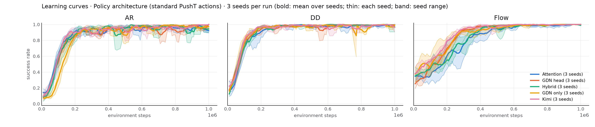
Start 12345 (easy third, rank 15 of 64): all seeds
Trajectories
seed 1seed 2seed 3 · color: episode time (dark violet start, yellow end) · gray cross: failed endpoint · gray T: block start · green T: goal · black dot: pusher start · numbers in each panel: mean steps of successful rollouts per seed, with the success count when not all succeeded
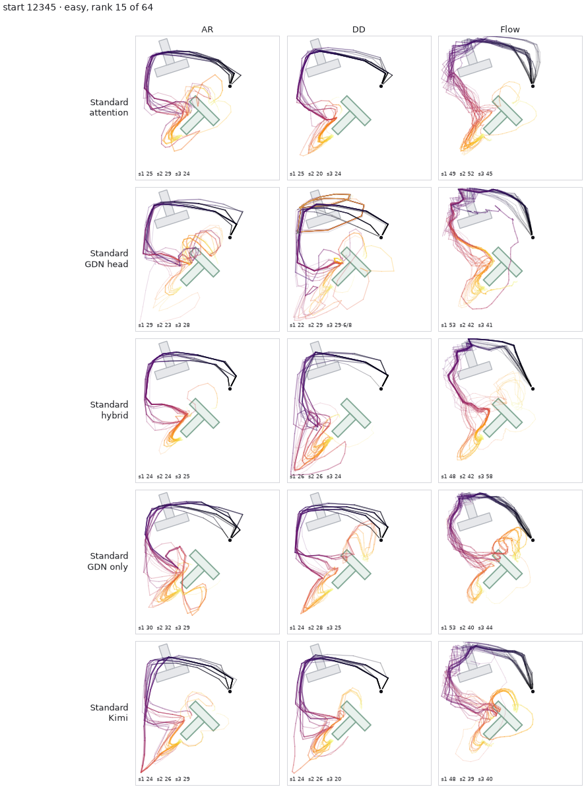
Replays
Pick a seed (or all seeds) above the player. Each panel replays rollouts 0 to 3 of that run and seed from this start, successes and failures alike. The dark disc is the pusher with a fading trail, and the pink cross is the target point (the point the controller pulls the pusher toward). ▶︎/❚❚ plays a panel and ◀ ▶ switch rollouts.
Mechanics
| Run | Method | Seed | Successes | Steps to success | Median target distance (px) | px/step |
|---|---|---|---|---|---|---|
| Standard · attention | AR | seed 1 | 16/16 | 25 | 73 | 34.8 |
| seed 2 | 16/16 | 29 | 73 | 34.4 | ||
| seed 3 | 16/16 | 24 | 68 | 35.5 | ||
| mean of 3 seeds | 48/48 | 26 | 71 | 34.9 | ||
| Standard · attention | DD | seed 1 | 16/16 | 25 | 66 | 34.0 |
| seed 2 | 16/16 | 20 | 82 | 40.7 | ||
| seed 3 | 16/16 | 24 | 75 | 37.2 | ||
| mean of 3 seeds | 48/48 | 23 | 75 | 37.3 | ||
| Standard · attention | Flow | seed 1 | 16/16 | 49 | 44 | 19.1 |
| seed 2 | 16/16 | 52 | 42 | 18.6 | ||
| seed 3 | 16/16 | 45 | 53 | 23.1 | ||
| mean of 3 seeds | 48/48 | 49 | 46 | 20.3 | ||
| Standard · GDN head | AR | seed 1 | 8/8 | 29 | 62 | 33.5 |
| seed 2 | 8/8 | 23 | 75 | 38.3 | ||
| seed 3 | 8/8 | 28 | 81 | 36.4 | ||
| mean of 3 seeds | 24/24 | 27 | 72 | 36.1 | ||
| Standard · GDN head | DD | seed 1 | 8/8 | 22 | 53 | 39.1 |
| seed 2 | 8/8 | 29 | 72 | 36.2 | ||
| seed 3 | 6/8 | 29 | 68 | 34.3 | ||
| mean of 3 seeds | 22/24 | 27 | 64 | 36.5 | ||
| Standard · GDN head | Flow | seed 1 | 8/8 | 53 | 41 | 18.3 |
| seed 2 | 8/8 | 42 | 54 | 22.0 | ||
| seed 3 | 8/8 | 41 | 53 | 22.7 | ||
| mean of 3 seeds | 24/24 | 45 | 50 | 21.0 | ||
| Standard · hybrid | AR | seed 1 | 8/8 | 24 | 75 | 34.4 |
| seed 2 | 8/8 | 24 | 79 | 34.3 | ||
| seed 3 | 8/8 | 25 | 69 | 33.8 | ||
| mean of 3 seeds | 24/24 | 24 | 74 | 34.1 | ||
| Standard · hybrid | DD | seed 1 | 8/8 | 26 | 72 | 41.8 |
| seed 2 | 8/8 | 26 | 68 | 35.3 | ||
| seed 3 | 8/8 | 24 | 90 | 41.1 | ||
| mean of 3 seeds | 24/24 | 25 | 76 | 39.4 | ||
| Standard · hybrid | Flow | seed 1 | 8/8 | 48 | 37 | 18.1 |
| seed 2 | 8/8 | 42 | 53 | 21.8 | ||
| seed 3 | 8/8 | 58 | 47 | 19.5 | ||
| mean of 3 seeds | 24/24 | 50 | 46 | 19.8 | ||
| Standard · GDN only | AR | seed 1 | 8/8 | 30 | 76 | 34.3 |
| seed 2 | 8/8 | 32 | 68 | 31.4 | ||
| seed 3 | 8/8 | 29 | 59 | 28.7 | ||
| mean of 3 seeds | 24/24 | 30 | 68 | 31.5 | ||
| Standard · GDN only | DD | seed 1 | 8/8 | 24 | 69 | 36.8 |
| seed 2 | 8/8 | 28 | 81 | 37.0 | ||
| seed 3 | 8/8 | 25 | 60 | 33.6 | ||
| mean of 3 seeds | 24/24 | 26 | 70 | 35.8 | ||
| Standard · GDN only | Flow | seed 1 | 8/8 | 53 | 40 | 17.8 |
| seed 2 | 8/8 | 40 | 55 | 21.8 | ||
| seed 3 | 8/8 | 44 | 47 | 21.3 | ||
| mean of 3 seeds | 24/24 | 46 | 47 | 20.3 | ||
| Standard · Kimi | AR | seed 1 | 8/8 | 24 | 85 | 37.8 |
| seed 2 | 8/8 | 26 | 62 | 33.9 | ||
| seed 3 | 8/8 | 29 | 62 | 33.6 | ||
| mean of 3 seeds | 24/24 | 26 | 70 | 35.1 | ||
| Standard · Kimi | DD | seed 1 | 8/8 | 24 | 86 | 35.1 |
| seed 2 | 8/8 | 26 | 66 | 36.9 | ||
| seed 3 | 8/8 | 20 | 82 | 41.7 | ||
| mean of 3 seeds | 24/24 | 24 | 78 | 37.9 | ||
| Standard · Kimi | Flow | seed 1 | 8/8 | 48 | 41 | 20.8 |
| seed 2 | 8/8 | 39 | 46 | 23.0 | ||
| seed 3 | 8/8 | 40 | 58 | 22.0 | ||
| mean of 3 seeds | 24/24 | 42 | 48 | 21.9 |
All rollouts from start 12345 in the evaluation on the 64 test starts (8 or 16 per seed, final checkpoints, every outcome). Steps, target distance and speed are over successful rollouts; the seed-mean row averages the per-seed values and sums the success counts.
Start 3942: trajectories, replays and mechanics (median third, rank 32 of 64)
Trajectories
seed 1seed 2seed 3 · color: episode time (dark violet start, yellow end) · gray cross: failed endpoint · gray T: block start · green T: goal · black dot: pusher start · numbers in each panel: mean steps of successful rollouts per seed, with the success count when not all succeeded
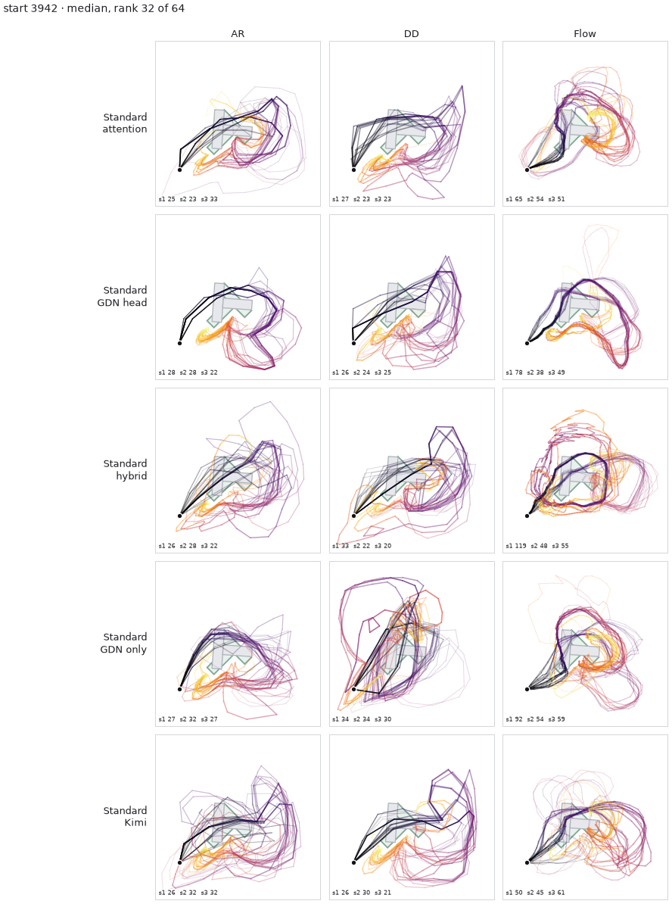
Replays
Pick a seed (or all seeds) above the player. Each panel replays rollouts 0 to 3 of that run and seed from this start, successes and failures alike. The dark disc is the pusher with a fading trail, and the pink cross is the target point (the point the controller pulls the pusher toward). ▶︎/❚❚ plays a panel and ◀ ▶ switch rollouts.
Mechanics
| Run | Method | Seed | Successes | Steps to success | Median target distance (px) | px/step |
|---|---|---|---|---|---|---|
| Standard · attention | AR | seed 1 | 16/16 | 25 | 69 | 36.6 |
| seed 2 | 16/16 | 23 | 74 | 37.5 | ||
| seed 3 | 16/16 | 33 | 101 | 40.9 | ||
| mean of 3 seeds | 48/48 | 27 | 81 | 38.3 | ||
| Standard · attention | DD | seed 1 | 16/16 | 27 | 70 | 38.0 |
| seed 2 | 16/16 | 23 | 76 | 37.8 | ||
| seed 3 | 16/16 | 23 | 49 | 35.6 | ||
| mean of 3 seeds | 48/48 | 24 | 65 | 37.2 | ||
| Standard · attention | Flow | seed 1 | 16/16 | 65 | 39 | 15.5 |
| seed 2 | 16/16 | 54 | 50 | 19.0 | ||
| seed 3 | 16/16 | 51 | 53 | 21.6 | ||
| mean of 3 seeds | 48/48 | 57 | 47 | 18.7 | ||
| Standard · GDN head | AR | seed 1 | 8/8 | 28 | 98 | 37.3 |
| seed 2 | 8/8 | 28 | 84 | 37.4 | ||
| seed 3 | 8/8 | 22 | 69 | 38.0 | ||
| mean of 3 seeds | 24/24 | 26 | 84 | 37.6 | ||
| Standard · GDN head | DD | seed 1 | 8/8 | 26 | 101 | 41.5 |
| seed 2 | 8/8 | 24 | 52 | 36.4 | ||
| seed 3 | 8/8 | 25 | 93 | 41.7 | ||
| mean of 3 seeds | 24/24 | 25 | 82 | 39.8 | ||
| Standard · GDN head | Flow | seed 1 | 8/8 | 78 | 34 | 14.3 |
| seed 2 | 8/8 | 38 | 55 | 20.6 | ||
| seed 3 | 8/8 | 49 | 54 | 21.8 | ||
| mean of 3 seeds | 24/24 | 55 | 48 | 18.9 | ||
| Standard · hybrid | AR | seed 1 | 8/8 | 26 | 81 | 36.2 |
| seed 2 | 8/8 | 28 | 78 | 37.1 | ||
| seed 3 | 8/8 | 22 | 61 | 33.9 | ||
| mean of 3 seeds | 24/24 | 26 | 73 | 35.7 | ||
| Standard · hybrid | DD | seed 1 | 8/8 | 33 | 81 | 39.5 |
| seed 2 | 8/8 | 22 | 59 | 37.3 | ||
| seed 3 | 8/8 | 20 | 86 | 42.7 | ||
| mean of 3 seeds | 24/24 | 25 | 75 | 39.8 | ||
| Standard · hybrid | Flow | seed 1 | 8/8 | 119 | 33 | 14.3 |
| seed 2 | 8/8 | 48 | 60 | 22.5 | ||
| seed 3 | 8/8 | 55 | 51 | 20.2 | ||
| mean of 3 seeds | 24/24 | 74 | 48 | 19.0 | ||
| Standard · GDN only | AR | seed 1 | 8/8 | 27 | 86 | 34.1 |
| seed 2 | 8/8 | 32 | 85 | 34.4 | ||
| seed 3 | 8/8 | 27 | 77 | 35.8 | ||
| mean of 3 seeds | 24/24 | 29 | 82 | 34.8 | ||
| Standard · GDN only | DD | seed 1 | 8/8 | 34 | 86 | 41.8 |
| seed 2 | 8/8 | 34 | 133 | 51.7 | ||
| seed 3 | 8/8 | 30 | 72 | 38.6 | ||
| mean of 3 seeds | 24/24 | 33 | 97 | 44.0 | ||
| Standard · GDN only | Flow | seed 1 | 8/8 | 92 | 28 | 12.4 |
| seed 2 | 8/8 | 54 | 49 | 19.6 | ||
| seed 3 | 8/8 | 59 | 43 | 18.4 | ||
| mean of 3 seeds | 24/24 | 68 | 40 | 16.8 | ||
| Standard · Kimi | AR | seed 1 | 8/8 | 26 | 101 | 41.4 |
| seed 2 | 8/8 | 32 | 95 | 41.3 | ||
| seed 3 | 8/8 | 32 | 79 | 38.0 | ||
| mean of 3 seeds | 24/24 | 30 | 92 | 40.2 | ||
| Standard · Kimi | DD | seed 1 | 8/8 | 26 | 109 | 44.0 |
| seed 2 | 8/8 | 30 | 90 | 39.0 | ||
| seed 3 | 8/8 | 21 | 74 | 40.4 | ||
| mean of 3 seeds | 24/24 | 26 | 91 | 41.1 | ||
| Standard · Kimi | Flow | seed 1 | 8/8 | 50 | 53 | 20.3 |
| seed 2 | 8/8 | 45 | 51 | 20.7 | ||
| seed 3 | 8/8 | 61 | 44 | 16.9 | ||
| mean of 3 seeds | 24/24 | 52 | 49 | 19.3 |
All rollouts from start 3942 in the evaluation on the 64 test starts (8 or 16 per seed, final checkpoints, every outcome). Steps, target distance and speed are over successful rollouts; the seed-mean row averages the per-seed values and sums the success counts.
Start 8039: trajectories, replays and mechanics (hard third, rank 53 of 64)
Trajectories
seed 1seed 2seed 3 · color: episode time (dark violet start, yellow end) · gray cross: failed endpoint · gray T: block start · green T: goal · black dot: pusher start · numbers in each panel: mean steps of successful rollouts per seed, with the success count when not all succeeded
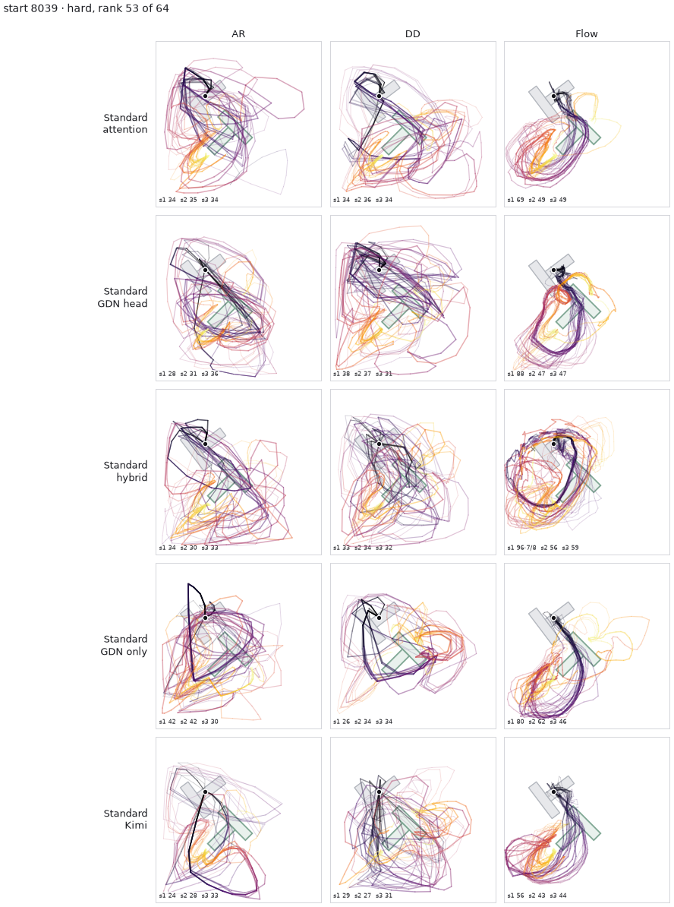
Replays
Pick a seed (or all seeds) above the player. Each panel replays rollouts 0 to 3 of that run and seed from this start, successes and failures alike. The dark disc is the pusher with a fading trail, and the pink cross is the target point (the point the controller pulls the pusher toward). ▶︎/❚❚ plays a panel and ◀ ▶ switch rollouts.
Mechanics
| Run | Method | Seed | Successes | Steps to success | Median target distance (px) | px/step |
|---|---|---|---|---|---|---|
| Standard · attention | AR | seed 1 | 16/16 | 34 | 93 | 39.4 |
| seed 2 | 16/16 | 35 | 89 | 39.1 | ||
| seed 3 | 16/16 | 34 | 95 | 40.1 | ||
| mean of 3 seeds | 48/48 | 34 | 93 | 39.5 | ||
| Standard · attention | DD | seed 1 | 16/16 | 34 | 86 | 35.4 |
| seed 2 | 16/16 | 36 | 96 | 39.2 | ||
| seed 3 | 16/16 | 34 | 99 | 42.7 | ||
| mean of 3 seeds | 48/48 | 34 | 94 | 39.1 | ||
| Standard · attention | Flow | seed 1 | 16/16 | 69 | 35 | 14.0 |
| seed 2 | 16/16 | 49 | 44 | 17.7 | ||
| seed 3 | 16/16 | 49 | 47 | 18.7 | ||
| mean of 3 seeds | 48/48 | 56 | 42 | 16.8 | ||
| Standard · GDN head | AR | seed 1 | 8/8 | 28 | 112 | 45.2 |
| seed 2 | 8/8 | 31 | 96 | 41.2 | ||
| seed 3 | 8/8 | 36 | 96 | 40.8 | ||
| mean of 3 seeds | 24/24 | 32 | 101 | 42.4 | ||
| Standard · GDN head | DD | seed 1 | 8/8 | 38 | 104 | 45.0 |
| seed 2 | 8/8 | 37 | 107 | 46.1 | ||
| seed 3 | 8/8 | 31 | 90 | 38.5 | ||
| mean of 3 seeds | 24/24 | 35 | 100 | 43.2 | ||
| Standard · GDN head | Flow | seed 1 | 8/8 | 88 | 27 | 11.9 |
| seed 2 | 8/8 | 47 | 46 | 19.8 | ||
| seed 3 | 8/8 | 47 | 43 | 17.3 | ||
| mean of 3 seeds | 24/24 | 61 | 39 | 16.3 | ||
| Standard · hybrid | AR | seed 1 | 8/8 | 34 | 98 | 40.7 |
| seed 2 | 8/8 | 30 | 94 | 40.1 | ||
| seed 3 | 8/8 | 33 | 91 | 37.8 | ||
| mean of 3 seeds | 24/24 | 33 | 94 | 39.5 | ||
| Standard · hybrid | DD | seed 1 | 8/8 | 33 | 92 | 39.5 |
| seed 2 | 8/8 | 34 | 87 | 37.0 | ||
| seed 3 | 8/8 | 32 | 96 | 43.4 | ||
| mean of 3 seeds | 24/24 | 33 | 92 | 39.9 | ||
| Standard · hybrid | Flow | seed 1 | 7/8 | 96 | 32 | 12.9 |
| seed 2 | 8/8 | 56 | 49 | 18.4 | ||
| seed 3 | 8/8 | 59 | 47 | 18.3 | ||
| mean of 3 seeds | 23/24 | 70 | 43 | 16.5 | ||
| Standard · GDN only | AR | seed 1 | 8/8 | 42 | 79 | 39.8 |
| seed 2 | 8/8 | 42 | 77 | 32.4 | ||
| seed 3 | 8/8 | 30 | 77 | 36.9 | ||
| mean of 3 seeds | 24/24 | 38 | 78 | 36.4 | ||
| Standard · GDN only | DD | seed 1 | 8/8 | 26 | 78 | 32.6 |
| seed 2 | 8/8 | 34 | 95 | 39.6 | ||
| seed 3 | 8/8 | 34 | 103 | 40.7 | ||
| mean of 3 seeds | 24/24 | 31 | 92 | 37.6 | ||
| Standard · GDN only | Flow | seed 1 | 8/8 | 80 | 30 | 12.6 |
| seed 2 | 8/8 | 62 | 38 | 15.6 | ||
| seed 3 | 8/8 | 46 | 48 | 18.4 | ||
| mean of 3 seeds | 24/24 | 63 | 39 | 15.5 | ||
| Standard · Kimi | AR | seed 1 | 8/8 | 24 | 74 | 35.7 |
| seed 2 | 8/8 | 28 | 80 | 32.2 | ||
| seed 3 | 8/8 | 33 | 107 | 47.3 | ||
| mean of 3 seeds | 24/24 | 28 | 87 | 38.4 | ||
| Standard · Kimi | DD | seed 1 | 8/8 | 29 | 99 | 39.9 |
| seed 2 | 8/8 | 27 | 87 | 38.3 | ||
| seed 3 | 8/8 | 31 | 98 | 45.3 | ||
| mean of 3 seeds | 24/24 | 29 | 94 | 41.2 | ||
| Standard · Kimi | Flow | seed 1 | 8/8 | 56 | 42 | 16.8 |
| seed 2 | 8/8 | 43 | 52 | 19.4 | ||
| seed 3 | 8/8 | 44 | 48 | 17.2 | ||
| mean of 3 seeds | 24/24 | 48 | 47 | 17.8 |
All rollouts from start 8039 in the evaluation on the 64 test starts (8 or 16 per seed, final checkpoints, every outcome). Steps, target distance and speed are over successful rollouts; the seed-mean row averages the per-seed values and sums the success counts.
All 64 starts: statistics
| Run | Method | Seeds | Success | Steps to success | Steps per seed | Median target distance (px) | px/step | px/step per seed | Chunk-start jerk ratio |
|---|---|---|---|---|---|---|---|---|---|
| Attention | AR | 3 | 100% [100%, 100%] | 28 [27, 28] | 27 / 27 / 28 | 76 [73, 79] | 36.3 [35.2, 37.3] | 35.4 / 36.7 / 36.8 | 1.47 [1.41, 1.53] |
| Attention | DD | 3 | 100% [100%, 100%] | 28 [27, 29] | 28 / 27 / 28 | 77 [74, 79] | 36.8 [35.6, 37.8] | 35.8 / 37.5 / 37.0 | 1.42 [1.37, 1.46] |
| Attention | Flow | 3 | 100% [100%, 100%] | 55 [52, 57] | 57 / 54 / 53 | 43 [40, 46] | 18.0 [16.5, 19.1] | 16.5 / 18.5 / 19.0 | 1.56 [1.53, 1.59] |
| GDN head | AR | 3 | 100% [100%, 100%] | 27 [26, 27] | 27 / 27 / 26 | 79 [77, 81] | 36.9 [35.9, 37.9] | 36.2 / 36.8 / 37.6 | 1.45 [1.40, 1.49] |
| GDN head | DD | 3 | 100% [99%, 100%] | 27 [26, 27] | 27 / 27 / 26 | 83 [80, 86] | 38.4 [37.3, 39.5] | 38.0 / 39.3 / 37.9 | 1.38 [1.34, 1.42] |
| GDN head | Flow | 3 | 100% [100%, 100%] | 57 [47, 75] | 76 / 48 / 48 | 42 [33, 48] | 17.7 [14.5, 19.6] | 14.5 / 19.0 / 19.6 | 1.64 [1.61, 1.67] |
| Hybrid | AR | 3 | 100% [100%, 100%] | 28 [27, 29] | 28 / 29 / 27 | 76 [73, 81] | 36.3 [34.9, 38.0] | 37.9 / 35.6 / 35.3 | 1.48 [1.43, 1.53] |
| Hybrid | DD | 3 | 100% [100%, 100%] | 27 [26, 27] | 27 / 27 / 26 | 80 [77, 83] | 37.8 [36.8, 38.7] | 37.3 / 37.7 / 38.3 | 1.37 [1.32, 1.42] |
| Hybrid | Flow | 3 | 100% [99%, 100%] | 63 [52, 78] | 79 / 52 / 59 | 42 [32, 48] | 17.4 [14.4, 19.2] | 14.3 / 19.1 / 18.7 | 1.61 [1.53, 1.72] |
| GDN only | AR | 3 | 100% [100%, 100%] | 30 [29, 31] | 30 / 31 / 29 | 71 [69, 74] | 33.6 [32.8, 34.4] | 33.8 / 33.1 / 33.9 | 1.59 [1.56, 1.63] |
| GDN only | DD | 3 | 100% [100%, 100%] | 27 [26, 28] | 28 / 27 / 27 | 81 [76, 87] | 37.8 [36.1, 39.5] | 36.5 / 39.6 / 37.3 | 1.40 [1.33, 1.46] |
| GDN only | Flow | 3 | 100% [100%, 100%] | 57 [51, 65] | 66 / 52 / 52 | 43 [35, 47] | 17.4 [14.9, 19.0] | 14.9 / 18.7 / 18.7 | 1.64 [1.58, 1.71] |
| Kimi | AR | 3 | 100% [100%, 100%] | 28 [27, 31] | 31 / 27 / 27 | 77 [73, 80] | 36.4 [35.0, 37.9] | 35.4 / 35.8 / 37.9 | 1.45 [1.39, 1.51] |
| Kimi | DD | 3 | 100% [100%, 100%] | 26 [25, 27] | 26 / 26 / 26 | 81 [79, 84] | 38.1 [37.2, 39.1] | 37.9 / 37.7 / 38.7 | 1.41 [1.35, 1.49] |
| Kimi | Flow | 3 | 100% [100%, 100%] | 51 [48, 53] | 51 / 48 / 53 | 45 [43, 46] | 18.5 [17.8, 19.3] | 18.1 / 19.4 / 18.0 | 1.63 [1.54, 1.74] |
what is this?
- Success rate: Share of episodes that bring the T onto the goal pose; higher is better.
- Steps to success: How many control steps a successful episode takes; lower is faster.
- Pusher speed: How far the pusher moves per control step; higher is faster.
- Target distance: How far from the pusher the policy places the target point; larger means more aggressive commands.
- Chunk-start jerk ratio: Jerk at steps where a new chunk starts divided by jerk at other steps; 1 = no extra jerk, higher = jerkier at chunk starts.
Mean over 64 start states and all available seeds (the Seeds column), with 8 or 16 episodes per start. Brackets are 95% bootstrap intervals (seeds, then starts within seeds). The per-seed columns give each seed's mean over the 64 starts (seed 1 / 2 / 3). Steps, target distance, speed and the chunk-start jerk ratio are over successful episodes.
What we learned. The policy's mixing layer matters for behaviour in one case: a GDN-only policy reshapes RL AR's chunks.
- GDN only makes AR smoother inside a chunk and sharper between chunks. Jerk and within-chunk target spread drop and the chunk-start target-change ratio rises, after RL only. The section 3 grid confirms the direction with larger effects, and its average also finds a smaller smoothing by the hybrid policy.
- The other mixers behave like attention. GDN head, hybrid and Kimi change nothing beyond seed noise for AR and DD after RL, and no mixer changes contact or multimodality.
- Flow with GDN learns once RL starts from the BC starting checkpoint. For some seed-1 GDN flow runs the first chosen checkpoint was barely trained, and the reruns from the BC starting checkpoint (at least 30k BC steps) learn.
- The decoder is next. Section 2 puts the same mixers in the tokenizer's decoder. With 64 px-capped offsets the offset limit dominates whatever the mixer (Appendix A2).
2Tokenizer decoder architecture, with an attention policy
Reconstruction of the decoder-variant tokenizers (held-out demos)
| Tokenizer | Clean MSE | Mean endpoint error (px) | 95th pct (px) |
|---|---|---|---|
| Attention decoder (default) | 0.0005 | 1.9 | 4.1 |
| GDN head decoder | 0.00041 | 1.7 | 3.2 |
| Hybrid decoder | 0.00043 | 1.7 | 3.4 |
| GDN only decoder | 0.00044 | 1.8 | 3.5 |
| Kimi decoder | 0.00040 | 1.6 | 3.2 |
What we are testing
Section 1 changed the mixer in the policy. Here it moves into the tokenizer's decoder, the small network that turns the 4 FSQ codes into the 4 actions. The decoder has 2 blocks in which 4 action queries mix with each other (the part we change) and read the 4 codes through cross-attention (kept). GDN in the decoder runs in both directions, like the decoder's unmasked attention. If a recurrent decoder smooths the decoded chunk, the token policies should hold their target points closer together within a chunk or show less extra jerk where a new chunk starts. The encoder, the FSQ codes, the attention policy and the RL setup stay fixed, but each decoder needs its own tokenizer and BC policy. Flow has no tokenizer, so only AR and DD appear (the 64 test starts × 3 seeds, final OGPO policies). All runs use standard PushT actions (each action is the target point on the 512 × 512 px board, wherever the pusher is). On speed, no decoder changes AR's steps and GDN-family decoders may cut DD's by 1.5 to 2 steps (see "Where the speed comes from"). The decoder self-mixer is one of:
- Attention (default).
- GDN head: an extra GDN block.
- Hybrid: GDN then attention.
- GDN only: GDN in place of attention.
- Kimi: Kimi Delta Attention (a GDN with one decay per key channel), followed by attention.
What we see
With three seeds almost nothing survives Holm correction: two effects of the GDN-head decoder on RL AR and one effect on DD's BC policy. The decoder does not make chunks smoother. If anything, the GDN-head decoder spreads AR's target points within a chunk farther apart, the opposite of what the GDN-only policy does in section 1. The effect map and the collapsed table "All effects with 95% intervals" give every metric; the intervals resample seeds and then starts, so they include seed-to-seed variation.
- The GDN-head decoder widens AR's chunks and makes the block jerkier. After RL, AR's within-chunk target spread (how far apart the 4 target points of one chunk lie) rises from 43 to 50.9 px [+3.8, +11.9] and block jerk from 10.3 to 12.8 [+1.1, +4.1]; both survive Holm and are about one baseline standard deviation.
- No other smoothness metric moves beyond seed noise. This holds for AR and DD after RL, including the chunk-start ratios (\(\text{jerk or target change at steps where a new chunk starts} \div \text{the same at other steps}\)).
- A BC effect on DD does not survive RL. Before RL, the GDN-only decoder narrows DD's within-chunk spread from 14.6 to 13.1 px (survives Holm). After RL the difference is within noise.
- No decoder changes multimodality. No route-variety measure changes beyond seed noise after RL. Contact share, pushing efficiency and faces touched do not change beyond noise either.
- Every variant succeeds, and the new decoders reconstruct slightly better. Success is 100% everywhere except Kimi AR (99%). On held-out demos the mean endpoint error (how far decoded actions land from the original demo actions) is 1.6 to 1.8 px vs 1.9 for attention (95th percentile 3.2 to 3.5 vs 4.1 px; GDN head 1.7/3.2, hybrid 1.7/3.4, GDN only 1.8/3.5, Kimi 1.6/3.2).
- Caveats. Three seeds per variant, so small effects cannot be separated from seed noise. Section 3 averages each decoder over five policy mixers, which narrows the intervals.
What changes in behaviour
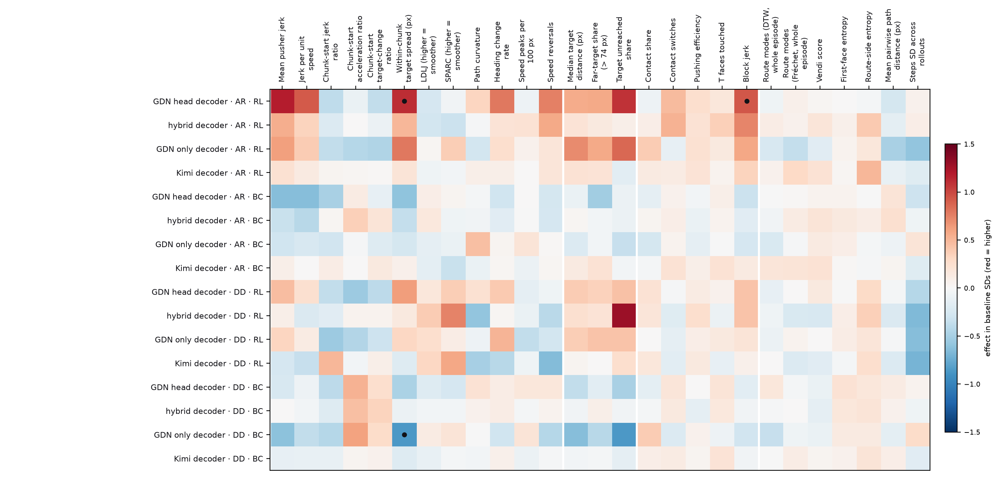
All effects with 95% intervals
Smoothness and jerk
| Change | Class | Policy | Metric | Baseline | Variant | Difference [95% CI] | Holm p | Seeds |
|---|---|---|---|---|---|---|---|---|
| GDN head decoder | AR | RL | Mean pusher jerk | 25.9 | 30.8 | +4.9 [+1.73, +7.76] | 0.208 | 3 / 3 |
| GDN head decoder | AR | RL | Jerk per unit speed | 0.715 | 0.788 | +0.0724 [+0.00923, +0.131] | 1.000 | 3 / 3 |
| GDN head decoder | AR | RL | Chunk-start jerk ratio | 1.47 | 1.4 | -0.0662 [-0.16, +0.0317] | 1.000 | 3 / 3 |
| GDN head decoder | AR | RL | Chunk-start acceleration ratio | 1.75 | 1.72 | -0.0234 [-0.17, +0.147] | 1.000 | 3 / 3 |
| GDN head decoder | AR | RL | Chunk-start target-change ratio | 2.31 | 2.13 | -0.184 [-0.483, +0.184] | 1.000 | 3 / 3 |
| GDN head decoder | AR | RL | Within-chunk target spread (px) | 43 | 50.9 | +7.86 [+3.76, +11.9] | 0.000 | 3 / 3 |
| GDN head decoder | AR | RL | LDLJ (higher = smoother) | -10.9 | -11.1 | -0.186 [-0.511, +0.103] | 1.000 | 3 / 3 |
| GDN head decoder | AR | RL | SPARC (higher = smoother) | -2.33 | -2.34 | -0.00927 [-0.0846, +0.0647] | 1.000 | 3 / 3 |
| GDN head decoder | AR | RL | Path curvature | 0.0317 | 0.033 | +0.00128 [-0.0017, +0.0041] | 1.000 | 3 / 3 |
| GDN head decoder | AR | RL | Heading change rate | 0.56 | 0.595 | +0.0345 [-0.013, +0.0804] | 1.000 | 3 / 3 |
| GDN head decoder | AR | RL | Speed peaks per 100 px | 0.552 | 0.545 | -0.00713 [-0.046, +0.0299] | 1.000 | 3 / 3 |
| GDN head decoder | AR | RL | Speed reversals | 1.93 | 2.42 | +0.483 [-0.053, +1.13] | 1.000 | 3 / 3 |
| hybrid decoder | AR | RL | Mean pusher jerk | 25.9 | 28.2 | +2.24 [-1.03, +6.09] | 1.000 | 3 / 3 |
| hybrid decoder | AR | RL | Jerk per unit speed | 0.715 | 0.741 | +0.0262 [-0.0253, +0.0825] | 1.000 | 3 / 3 |
| hybrid decoder | AR | RL | Chunk-start jerk ratio | 1.47 | 1.43 | -0.0356 [-0.128, +0.0535] | 1.000 | 3 / 3 |
| hybrid decoder | AR | RL | Chunk-start acceleration ratio | 1.75 | 1.75 | +0.000571 [-0.101, +0.11] | 1.000 | 3 / 3 |
| hybrid decoder | AR | RL | Chunk-start target-change ratio | 2.31 | 2.27 | -0.0423 [-0.228, +0.147] | 1.000 | 3 / 3 |
| hybrid decoder | AR | RL | Within-chunk target spread (px) | 43 | 46.6 | +3.56 [-0.852, +8.43] | 1.000 | 3 / 3 |
| hybrid decoder | AR | RL | LDLJ (higher = smoother) | -10.9 | -11.1 | -0.2 [-0.485, +0.0665] | 1.000 | 3 / 3 |
| hybrid decoder | AR | RL | SPARC (higher = smoother) | -2.33 | -2.38 | -0.0527 [-0.148, +0.0507] | 1.000 | 3 / 3 |
| hybrid decoder | AR | RL | Path curvature | 0.0317 | 0.0317 | -5.44e-05 [-0.00249, +0.00228] | 1.000 | 3 / 3 |
| hybrid decoder | AR | RL | Heading change rate | 0.56 | 0.569 | +0.00871 [-0.0265, +0.044] | 1.000 | 3 / 3 |
| hybrid decoder | AR | RL | Speed peaks per 100 px | 0.552 | 0.572 | +0.0198 [-0.0122, +0.0507] | 1.000 | 3 / 3 |
| hybrid decoder | AR | RL | Speed reversals | 1.93 | 2.3 | +0.364 [+0.000928, +0.715] | 1.000 | 3 / 3 |
| GDN only decoder | AR | RL | Mean pusher jerk | 25.9 | 28.5 | +2.55 [-0.895, +6.62] | 1.000 | 3 / 3 |
| GDN only decoder | AR | RL | Jerk per unit speed | 0.715 | 0.745 | +0.0296 [-0.022, +0.0845] | 1.000 | 3 / 3 |
| GDN only decoder | AR | RL | Chunk-start jerk ratio | 1.47 | 1.41 | -0.0648 [-0.155, +0.0205] | 1.000 | 3 / 3 |
| GDN only decoder | AR | RL | Chunk-start acceleration ratio | 1.75 | 1.64 | -0.103 [-0.224, +0.0343] | 1.000 | 3 / 3 |
| GDN only decoder | AR | RL | Chunk-start target-change ratio | 2.31 | 2.09 | -0.228 [-0.411, -0.0368] | 1.000 | 3 / 3 |
| GDN only decoder | AR | RL | Within-chunk target spread (px) | 43 | 48.6 | +5.63 [+0.614, +11.8] | 1.000 | 3 / 3 |
| GDN only decoder | AR | RL | LDLJ (higher = smoother) | -10.9 | -10.9 | +0.0171 [-0.21, +0.246] | 1.000 | 3 / 3 |
| GDN only decoder | AR | RL | SPARC (higher = smoother) | -2.33 | -2.27 | +0.0599 [-0.0918, +0.221] | 1.000 | 3 / 3 |
| GDN only decoder | AR | RL | Path curvature | 0.0317 | 0.0306 | -0.00111 [-0.00476, +0.00216] | 1.000 | 3 / 3 |
| GDN only decoder | AR | RL | Heading change rate | 0.56 | 0.572 | +0.0112 [-0.0222, +0.0449] | 1.000 | 3 / 3 |
| GDN only decoder | AR | RL | Speed peaks per 100 px | 0.552 | 0.558 | +0.00577 [-0.0302, +0.0422] | 1.000 | 3 / 3 |
| GDN only decoder | AR | RL | Speed reversals | 1.93 | 2.05 | +0.116 [-0.203, +0.427] | 1.000 | 3 / 3 |
| Kimi decoder | AR | RL | Mean pusher jerk | 25.9 | 26.9 | +0.952 [-1.79, +3.7] | 1.000 | 3 / 3 |
| Kimi decoder | AR | RL | Jerk per unit speed | 0.715 | 0.726 | +0.0107 [-0.0377, +0.0665] | 1.000 | 3 / 3 |
| Kimi decoder | AR | RL | Chunk-start jerk ratio | 1.47 | 1.48 | +0.00748 [-0.0851, +0.0998] | 1.000 | 3 / 3 |
| Kimi decoder | AR | RL | Chunk-start acceleration ratio | 1.75 | 1.75 | +0.0077 [-0.141, +0.168] | 1.000 | 3 / 3 |
| Kimi decoder | AR | RL | Chunk-start target-change ratio | 2.31 | 2.32 | +0.00673 [-0.309, +0.346] | 1.000 | 3 / 3 |
| Kimi decoder | AR | RL | Within-chunk target spread (px) | 43 | 44.4 | +1.4 [-3.04, +5.73] | 1.000 | 3 / 3 |
| Kimi decoder | AR | RL | LDLJ (higher = smoother) | -10.9 | -11 | -0.0457 [-0.255, +0.17] | 1.000 | 3 / 3 |
| Kimi decoder | AR | RL | SPARC (higher = smoother) | -2.33 | -2.33 | -0.00603 [-0.0942, +0.0839] | 1.000 | 3 / 3 |
| Kimi decoder | AR | RL | Path curvature | 0.0317 | 0.0321 | +0.000371 [-0.00188, +0.00248] | 1.000 | 3 / 3 |
| Kimi decoder | AR | RL | Heading change rate | 0.56 | 0.564 | +0.00377 [-0.0449, +0.0518] | 1.000 | 3 / 3 |
| Kimi decoder | AR | RL | Speed peaks per 100 px | 0.552 | 0.553 | +0.000922 [-0.0298, +0.0326] | 1.000 | 3 / 3 |
| Kimi decoder | AR | RL | Speed reversals | 1.93 | 2.05 | +0.118 [-0.316, +0.547] | 1.000 | 3 / 3 |
| GDN head decoder | AR | BC | Mean pusher jerk | 7.67 | 6.8 | -0.872 [-1.79, -0.127] | 1.000 | 3 / 3 |
| GDN head decoder | AR | BC | Jerk per unit speed | 0.633 | 0.581 | -0.0519 [-0.0934, -0.0144] | 1.000 | 3 / 3 |
| GDN head decoder | AR | BC | Chunk-start jerk ratio | 1.67 | 1.62 | -0.0507 [-0.128, +0.0189] | 1.000 | 3 / 3 |
| GDN head decoder | AR | BC | Chunk-start acceleration ratio | 1.55 | 1.57 | +0.013 [-0.0803, +0.0953] | 1.000 | 3 / 3 |
| GDN head decoder | AR | BC | Chunk-start target-change ratio | 1.71 | 1.7 | -0.0176 [-0.128, +0.0836] | 1.000 | 3 / 3 |
| GDN head decoder | AR | BC | Within-chunk target spread (px) | 15.6 | 14.4 | -1.13 [-2.46, +0.0629] | 1.000 | 3 / 3 |
| GDN head decoder | AR | BC | LDLJ (higher = smoother) | -17.6 | -17.5 | +0.0797 [-0.206, +0.383] | 1.000 | 3 / 3 |
| GDN head decoder | AR | BC | SPARC (higher = smoother) | -5.67 | -5.64 | +0.0357 [-0.406, +0.485] | 1.000 | 3 / 3 |
| GDN head decoder | AR | BC | Path curvature | 0.0615 | 0.0607 | -0.000735 [-0.0115, +0.00671] | 1.000 | 3 / 3 |
| GDN head decoder | AR | BC | Heading change rate | 0.369 | 0.357 | -0.0114 [-0.0316, +0.00808] | 1.000 | 3 / 3 |
| GDN head decoder | AR | BC | Speed peaks per 100 px | 1.29 | 1.29 | +0.000245 [-0.11, +0.0875] | 1.000 | 3 / 3 |
| GDN head decoder | AR | BC | Speed reversals | 9.95 | 9.06 | -0.885 [-2.5, +0.719] | 1.000 | 3 / 3 |
| hybrid decoder | AR | BC | Mean pusher jerk | 7.68 | 7.22 | -0.461 [-1.48, +0.615] | 1.000 | 3 / 3 |
| hybrid decoder | AR | BC | Jerk per unit speed | 0.632 | 0.598 | -0.034 [-0.082, +0.0205] | 1.000 | 3 / 3 |
| hybrid decoder | AR | BC | Chunk-start jerk ratio | 1.67 | 1.67 | +0.00291 [-0.083, +0.0813] | 1.000 | 3 / 3 |
| hybrid decoder | AR | BC | Chunk-start acceleration ratio | 1.55 | 1.59 | +0.0372 [-0.0505, +0.119] | 1.000 | 3 / 3 |
| hybrid decoder | AR | BC | Chunk-start target-change ratio | 1.71 | 1.74 | +0.0278 [-0.0713, +0.118] | 1.000 | 3 / 3 |
| hybrid decoder | AR | BC | Within-chunk target spread (px) | 15.6 | 14.9 | -0.662 [-2.12, +0.886] | 1.000 | 3 / 3 |
| hybrid decoder | AR | BC | LDLJ (higher = smoother) | -17.6 | -17.5 | +0.139 [-0.14, +0.405] | 1.000 | 3 / 3 |
| hybrid decoder | AR | BC | SPARC (higher = smoother) | -5.68 | -5.74 | -0.0517 [-0.438, +0.37] | 1.000 | 3 / 3 |
| hybrid decoder | AR | BC | Path curvature | 0.0619 | 0.0609 | -0.00104 [-0.0121, +0.0067] | 1.000 | 3 / 3 |
| hybrid decoder | AR | BC | Heading change rate | 0.37 | 0.363 | -0.00654 [-0.0264, +0.013] | 1.000 | 3 / 3 |
| hybrid decoder | AR | BC | Speed peaks per 100 px | 1.29 | 1.29 | -0.00158 [-0.103, +0.0797] | 1.000 | 3 / 3 |
| hybrid decoder | AR | BC | Speed reversals | 10 | 9.15 | -0.882 [-2.53, +0.616] | 1.000 | 3 / 3 |
| GDN only decoder | AR | BC | Mean pusher jerk | 7.7 | 7.28 | -0.417 [-1.53, +0.703] | 1.000 | 3 / 3 |
| GDN only decoder | AR | BC | Jerk per unit speed | 0.63 | 0.61 | -0.0198 [-0.0714, +0.0348] | 1.000 | 3 / 3 |
| GDN only decoder | AR | BC | Chunk-start jerk ratio | 1.66 | 1.63 | -0.0299 [-0.108, +0.0414] | 1.000 | 3 / 3 |
| GDN only decoder | AR | BC | Chunk-start acceleration ratio | 1.56 | 1.56 | -0.00148 [-0.0865, +0.0894] | 1.000 | 3 / 3 |
| GDN only decoder | AR | BC | Chunk-start target-change ratio | 1.72 | 1.69 | -0.0274 [-0.128, +0.0747] | 1.000 | 3 / 3 |
| GDN only decoder | AR | BC | Within-chunk target spread (px) | 15.6 | 15.1 | -0.5 [-2.18, +1.05] | 1.000 | 3 / 3 |
| GDN only decoder | AR | BC | LDLJ (higher = smoother) | -17.6 | -17.7 | -0.114 [-0.436, +0.166] | 1.000 | 3 / 3 |
| GDN only decoder | AR | BC | SPARC (higher = smoother) | -5.61 | -5.68 | -0.0716 [-0.458, +0.322] | 1.000 | 3 / 3 |
| GDN only decoder | AR | BC | Path curvature | 0.0587 | 0.0618 | +0.00314 [-0.00256, +0.00983] | 1.000 | 3 / 3 |
| GDN only decoder | AR | BC | Heading change rate | 0.366 | 0.367 | +0.0012 [-0.0211, +0.0257] | 1.000 | 3 / 3 |
| GDN only decoder | AR | BC | Speed peaks per 100 px | 1.27 | 1.29 | +0.0186 [-0.0691, +0.125] | 1.000 | 3 / 3 |
| GDN only decoder | AR | BC | Speed reversals | 9.61 | 9.67 | +0.0609 [-1.64, +1.95] | 1.000 | 3 / 3 |
| Kimi decoder | AR | BC | Mean pusher jerk | 7.68 | 7.8 | +0.117 [-1.16, +1.49] | 1.000 | 3 / 3 |
| Kimi decoder | AR | BC | Jerk per unit speed | 0.633 | 0.633 | +0.000227 [-0.0591, +0.0627] | 1.000 | 3 / 3 |
| Kimi decoder | AR | BC | Chunk-start jerk ratio | 1.67 | 1.68 | +0.0115 [-0.0624, +0.0783] | 1.000 | 3 / 3 |
| Kimi decoder | AR | BC | Chunk-start acceleration ratio | 1.55 | 1.56 | +0.00095 [-0.0825, +0.0815] | 1.000 | 3 / 3 |
| Kimi decoder | AR | BC | Chunk-start target-change ratio | 1.71 | 1.73 | +0.0203 [-0.0677, +0.107] | 1.000 | 3 / 3 |
| Kimi decoder | AR | BC | Within-chunk target spread (px) | 15.6 | 15.7 | +0.143 [-1.71, +2.16] | 1.000 | 3 / 3 |
| Kimi decoder | AR | BC | LDLJ (higher = smoother) | -17.6 | -17.7 | -0.13 [-0.492, +0.222] | 1.000 | 3 / 3 |
| Kimi decoder | AR | BC | SPARC (higher = smoother) | -5.68 | -5.94 | -0.264 [-0.663, +0.119] | 1.000 | 3 / 3 |
| Kimi decoder | AR | BC | Path curvature | 0.0618 | 0.0597 | -0.00209 [-0.0138, +0.00652] | 1.000 | 3 / 3 |
| Kimi decoder | AR | BC | Heading change rate | 0.37 | 0.371 | +0.00118 [-0.0205, +0.0236] | 1.000 | 3 / 3 |
| Kimi decoder | AR | BC | Speed peaks per 100 px | 1.29 | 1.28 | -0.0152 [-0.142, +0.0838] | 1.000 | 3 / 3 |
| Kimi decoder | AR | BC | Speed reversals | 10 | 10.1 | +0.12 [-1.81, +2.05] | 1.000 | 3 / 3 |
| GDN head decoder | DD | RL | Mean pusher jerk | 27 | 29.1 | +2.12 [-0.336, +4.82] | 1.000 | 3 / 3 |
| GDN head decoder | DD | RL | Jerk per unit speed | 0.735 | 0.759 | +0.024 [-0.0307, +0.0809] | 1.000 | 3 / 3 |
| GDN head decoder | DD | RL | Chunk-start jerk ratio | 1.42 | 1.34 | -0.0734 [-0.154, +0.0105] | 1.000 | 3 / 3 |
| GDN head decoder | DD | RL | Chunk-start acceleration ratio | 1.73 | 1.6 | -0.13 [-0.234, -0.0298] | 1.000 | 3 / 3 |
| GDN head decoder | DD | RL | Chunk-start target-change ratio | 2.3 | 2.07 | -0.223 [-0.462, +0.0127] | 1.000 | 3 / 3 |
| GDN head decoder | DD | RL | Within-chunk target spread (px) | 44.5 | 49.2 | +4.72 [+1.22, +8.57] | 0.416 | 3 / 3 |
| GDN head decoder | DD | RL | LDLJ (higher = smoother) | -10.9 | -10.8 | +0.149 [-0.119, +0.438] | 1.000 | 3 / 3 |
| GDN head decoder | DD | RL | SPARC (higher = smoother) | -2.34 | -2.27 | +0.0626 [+0.00957, +0.115] | 1.000 | 3 / 3 |
| GDN head decoder | DD | RL | Path curvature | 0.0336 | 0.0348 | +0.00123 [-0.00114, +0.00342] | 1.000 | 3 / 3 |
| GDN head decoder | DD | RL | Heading change rate | 0.559 | 0.582 | +0.0224 [-0.0174, +0.0656] | 1.000 | 3 / 3 |
| GDN head decoder | DD | RL | Speed peaks per 100 px | 0.57 | 0.558 | -0.0114 [-0.046, +0.0214] | 1.000 | 3 / 3 |
| GDN head decoder | DD | RL | Speed reversals | 2.23 | 2.18 | -0.0479 [-0.377, +0.274] | 1.000 | 3 / 3 |
| hybrid decoder | DD | RL | Mean pusher jerk | 27 | 27.4 | +0.384 [-1.84, +2.76] | 1.000 | 3 / 3 |
| hybrid decoder | DD | RL | Jerk per unit speed | 0.735 | 0.713 | -0.0215 [-0.0669, +0.026] | 1.000 | 3 / 3 |
| hybrid decoder | DD | RL | Chunk-start jerk ratio | 1.42 | 1.38 | -0.0337 [-0.124, +0.0701] | 1.000 | 3 / 3 |
| hybrid decoder | DD | RL | Chunk-start acceleration ratio | 1.73 | 1.74 | +0.0124 [-0.0801, +0.108] | 1.000 | 3 / 3 |
| hybrid decoder | DD | RL | Chunk-start target-change ratio | 2.3 | 2.33 | +0.0323 [-0.197, +0.265] | 1.000 | 3 / 3 |
| hybrid decoder | DD | RL | Within-chunk target spread (px) | 44.5 | 45.6 | +1.08 [-2.57, +5.17] | 1.000 | 3 / 3 |
| hybrid decoder | DD | RL | LDLJ (higher = smoother) | -10.9 | -10.6 | +0.331 [+0.0953, +0.558] | 0.800 | 3 / 3 |
| hybrid decoder | DD | RL | SPARC (higher = smoother) | -2.34 | -2.21 | +0.126 [+0.0607, +0.191] | 0.107 | 3 / 3 |
| hybrid decoder | DD | RL | Path curvature | 0.0336 | 0.0305 | -0.00313 [-0.00565, -0.000724] | 1.000 | 3 / 3 |
| hybrid decoder | DD | RL | Heading change rate | 0.559 | 0.561 | +0.00178 [-0.0326, +0.0361] | 1.000 | 3 / 3 |
| hybrid decoder | DD | RL | Speed peaks per 100 px | 0.57 | 0.561 | -0.00837 [-0.0461, +0.0297] | 1.000 | 3 / 3 |
| hybrid decoder | DD | RL | Speed reversals | 2.23 | 1.94 | -0.288 [-0.604, +0.00632] | 1.000 | 3 / 3 |
| GDN only decoder | DD | RL | Mean pusher jerk | 27 | 28.4 | +1.45 [-0.504, +3.55] | 1.000 | 3 / 3 |
| GDN only decoder | DD | RL | Jerk per unit speed | 0.735 | 0.746 | +0.0119 [-0.0258, +0.0502] | 1.000 | 3 / 3 |
| GDN only decoder | DD | RL | Chunk-start jerk ratio | 1.42 | 1.31 | -0.11 [-0.176, -0.0356] | 0.612 | 3 / 3 |
| GDN only decoder | DD | RL | Chunk-start acceleration ratio | 1.73 | 1.63 | -0.105 [-0.215, +0.00138] | 1.000 | 3 / 3 |
| GDN only decoder | DD | RL | Chunk-start target-change ratio | 2.3 | 2.12 | -0.176 [-0.431, +0.0692] | 1.000 | 3 / 3 |
| GDN only decoder | DD | RL | Within-chunk target spread (px) | 44.5 | 46.8 | +2.33 [-1.28, +6.26] | 1.000 | 3 / 3 |
| GDN only decoder | DD | RL | LDLJ (higher = smoother) | -10.9 | -10.7 | +0.216 [+0.0402, +0.411] | 1.000 | 3 / 3 |
| GDN only decoder | DD | RL | SPARC (higher = smoother) | -2.34 | -2.32 | +0.018 [-0.0489, +0.0834] | 1.000 | 3 / 3 |
| GDN only decoder | DD | RL | Path curvature | 0.0336 | 0.0332 | -0.000391 [-0.00454, +0.0039] | 1.000 | 3 / 3 |
| GDN only decoder | DD | RL | Heading change rate | 0.559 | 0.588 | +0.0285 [-0.000354, +0.0582] | 1.000 | 3 / 3 |
| GDN only decoder | DD | RL | Speed peaks per 100 px | 0.57 | 0.539 | -0.0306 [-0.0645, -0.000311] | 1.000 | 3 / 3 |
| GDN only decoder | DD | RL | Speed reversals | 2.23 | 2.03 | -0.198 [-0.479, +0.0485] | 1.000 | 3 / 3 |
| Kimi decoder | DD | RL | Mean pusher jerk | 27 | 25.8 | -1.15 [-3.44, +1.25] | 1.000 | 3 / 3 |
| Kimi decoder | DD | RL | Jerk per unit speed | 0.735 | 0.7 | -0.0344 [-0.08, +0.0121] | 1.000 | 3 / 3 |
| Kimi decoder | DD | RL | Chunk-start jerk ratio | 1.42 | 1.52 | +0.1 [+0.0232, +0.185] | 1.000 | 3 / 3 |
| Kimi decoder | DD | RL | Chunk-start acceleration ratio | 1.73 | 1.72 | -0.00933 [-0.126, +0.11] | 1.000 | 3 / 3 |
| Kimi decoder | DD | RL | Chunk-start target-change ratio | 2.3 | 2.34 | +0.0495 [-0.18, +0.286] | 1.000 | 3 / 3 |
| Kimi decoder | DD | RL | Within-chunk target spread (px) | 44.5 | 43.1 | -1.4 [-5.08, +2.72] | 1.000 | 3 / 3 |
| Kimi decoder | DD | RL | LDLJ (higher = smoother) | -10.9 | -10.7 | +0.264 [+0.097, +0.44] | 0.515 | 3 / 3 |
| Kimi decoder | DD | RL | SPARC (higher = smoother) | -2.34 | -2.24 | +0.0983 [+0.0205, +0.178] | 1.000 | 3 / 3 |
| Kimi decoder | DD | RL | Path curvature | 0.0336 | 0.0309 | -0.00265 [-0.00536, +0.000182] | 1.000 | 3 / 3 |
| Kimi decoder | DD | RL | Heading change rate | 0.559 | 0.536 | -0.0236 [-0.0562, +0.00867] | 1.000 | 3 / 3 |
| Kimi decoder | DD | RL | Speed peaks per 100 px | 0.57 | 0.564 | -0.0055 [-0.041, +0.0273] | 1.000 | 3 / 3 |
| Kimi decoder | DD | RL | Speed reversals | 2.23 | 1.76 | -0.466 [-0.743, -0.231] | 0.054 | 3 / 3 |
| GDN head decoder | DD | BC | Mean pusher jerk | 6.75 | 6.43 | -0.316 [-0.751, +0.137] | 1.000 | 3 / 3 |
| GDN head decoder | DD | BC | Jerk per unit speed | 0.627 | 0.618 | -0.00883 [-0.0427, +0.0216] | 1.000 | 3 / 3 |
| GDN head decoder | DD | BC | Chunk-start jerk ratio | 1.61 | 1.57 | -0.0474 [-0.115, +0.015] | 1.000 | 3 / 3 |
| GDN head decoder | DD | BC | Chunk-start acceleration ratio | 1.33 | 1.37 | +0.0425 [-0.0292, +0.106] | 1.000 | 3 / 3 |
| GDN head decoder | DD | BC | Chunk-start target-change ratio | 1.41 | 1.44 | +0.0274 [-0.0416, +0.089] | 1.000 | 3 / 3 |
| GDN head decoder | DD | BC | Within-chunk target spread (px) | 14.6 | 13.8 | -0.858 [-1.55, -0.165] | 1.000 | 3 / 3 |
| GDN head decoder | DD | BC | LDLJ (higher = smoother) | -17.5 | -17.6 | -0.148 [-0.346, +0.0654] | 1.000 | 3 / 3 |
| GDN head decoder | DD | BC | SPARC (higher = smoother) | -5.74 | -5.98 | -0.238 [-0.565, +0.0671] | 1.000 | 3 / 3 |
| GDN head decoder | DD | BC | Path curvature | 0.0643 | 0.0691 | +0.00481 [-0.00523, +0.0143] | 1.000 | 3 / 3 |
| GDN head decoder | DD | BC | Heading change rate | 0.359 | 0.364 | +0.00497 [-0.0154, +0.0236] | 1.000 | 3 / 3 |
| GDN head decoder | DD | BC | Speed peaks per 100 px | 1.48 | 1.52 | +0.0424 [-0.0809, +0.141] | 1.000 | 3 / 3 |
| GDN head decoder | DD | BC | Speed reversals | 8.73 | 9.26 | +0.53 [-0.884, +1.91] | 1.000 | 3 / 3 |
| hybrid decoder | DD | BC | Mean pusher jerk | 6.7 | 6.71 | +0.00537 [-0.582, +0.632] | 1.000 | 3 / 3 |
| hybrid decoder | DD | BC | Jerk per unit speed | 0.621 | 0.617 | -0.00431 [-0.0415, +0.0327] | 1.000 | 3 / 3 |
| hybrid decoder | DD | BC | Chunk-start jerk ratio | 1.62 | 1.59 | -0.0241 [-0.0892, +0.037] | 1.000 | 3 / 3 |
| hybrid decoder | DD | BC | Chunk-start acceleration ratio | 1.34 | 1.37 | +0.0351 [-0.0307, +0.0949] | 1.000 | 3 / 3 |
| hybrid decoder | DD | BC | Chunk-start target-change ratio | 1.42 | 1.46 | +0.0362 [-0.0294, +0.0966] | 1.000 | 3 / 3 |
| hybrid decoder | DD | BC | Within-chunk target spread (px) | 14.6 | 14.4 | -0.147 [-1.1, +0.787] | 1.000 | 3 / 3 |
| hybrid decoder | DD | BC | LDLJ (higher = smoother) | -17.5 | -17.5 | -0.0312 [-0.248, +0.199] | 1.000 | 3 / 3 |
| hybrid decoder | DD | BC | SPARC (higher = smoother) | -5.72 | -5.76 | -0.0402 [-0.331, +0.242] | 1.000 | 3 / 3 |
| hybrid decoder | DD | BC | Path curvature | 0.0636 | 0.0649 | +0.00132 [-0.00814, +0.011] | 1.000 | 3 / 3 |
| hybrid decoder | DD | BC | Heading change rate | 0.359 | 0.364 | +0.00525 [-0.0128, +0.0232] | 1.000 | 3 / 3 |
| hybrid decoder | DD | BC | Speed peaks per 100 px | 1.47 | 1.46 | -0.00664 [-0.109, +0.0831] | 1.000 | 3 / 3 |
| hybrid decoder | DD | BC | Speed reversals | 8.71 | 8.89 | +0.184 [-1.35, +1.77] | 1.000 | 3 / 3 |
| GDN only decoder | DD | BC | Mean pusher jerk | 6.68 | 5.87 | -0.813 [-1.25, -0.414] | 0.053 | 3 / 3 |
| GDN only decoder | DD | BC | Jerk per unit speed | 0.617 | 0.577 | -0.0403 [-0.0736, -0.00928] | 1.000 | 3 / 3 |
| GDN only decoder | DD | BC | Chunk-start jerk ratio | 1.61 | 1.56 | -0.0487 [-0.12, +0.017] | 1.000 | 3 / 3 |
| GDN only decoder | DD | BC | Chunk-start acceleration ratio | 1.33 | 1.38 | +0.0469 [-0.00526, +0.0999] | 1.000 | 3 / 3 |
| GDN only decoder | DD | BC | Chunk-start target-change ratio | 1.41 | 1.44 | +0.0298 [-0.0454, +0.106] | 1.000 | 3 / 3 |
| GDN only decoder | DD | BC | Within-chunk target spread (px) | 14.6 | 13.1 | -1.52 [-2.12, -0.904] | 0.000 | 3 / 3 |
| GDN only decoder | DD | BC | LDLJ (higher = smoother) | -17.4 | -17.4 | +0.0918 [-0.161, +0.323] | 1.000 | 3 / 3 |
| GDN only decoder | DD | BC | SPARC (higher = smoother) | -5.6 | -5.44 | +0.162 [-0.127, +0.457] | 1.000 | 3 / 3 |
| GDN only decoder | DD | BC | Path curvature | 0.063 | 0.063 | -2.48e-05 [-0.00876, +0.00735] | 1.000 | 3 / 3 |
| GDN only decoder | DD | BC | Heading change rate | 0.358 | 0.344 | -0.0141 [-0.0322, +0.00299] | 1.000 | 3 / 3 |
| GDN only decoder | DD | BC | Speed peaks per 100 px | 1.47 | 1.51 | +0.0446 [-0.0568, +0.132] | 1.000 | 3 / 3 |
| GDN only decoder | DD | BC | Speed reversals | 8.59 | 7.26 | -1.33 [-2.71, -0.0877] | 1.000 | 3 / 3 |
| Kimi decoder | DD | BC | Mean pusher jerk | 6.78 | 6.61 | -0.164 [-0.761, +0.444] | 1.000 | 3 / 3 |
| Kimi decoder | DD | BC | Jerk per unit speed | 0.621 | 0.608 | -0.0123 [-0.0553, +0.0311] | 1.000 | 3 / 3 |
| Kimi decoder | DD | BC | Chunk-start jerk ratio | 1.61 | 1.6 | -0.0127 [-0.0879, +0.0599] | 1.000 | 3 / 3 |
| Kimi decoder | DD | BC | Chunk-start acceleration ratio | 1.34 | 1.34 | +0.00314 [-0.0411, +0.0496] | 1.000 | 3 / 3 |
| Kimi decoder | DD | BC | Chunk-start target-change ratio | 1.42 | 1.43 | +0.00739 [-0.0537, +0.0639] | 1.000 | 3 / 3 |
| Kimi decoder | DD | BC | Within-chunk target spread (px) | 14.7 | 14.4 | -0.341 [-1.16, +0.465] | 1.000 | 3 / 3 |
| Kimi decoder | DD | BC | LDLJ (higher = smoother) | -17.5 | -17.6 | -0.0816 [-0.318, +0.16] | 1.000 | 3 / 3 |
| Kimi decoder | DD | BC | SPARC (higher = smoother) | -5.68 | -5.71 | -0.0311 [-0.293, +0.231] | 1.000 | 3 / 3 |
| Kimi decoder | DD | BC | Path curvature | 0.062 | 0.0612 | -0.000846 [-0.0103, +0.00749] | 1.000 | 3 / 3 |
| Kimi decoder | DD | BC | Heading change rate | 0.356 | 0.36 | +0.00345 [-0.0184, +0.0257] | 1.000 | 3 / 3 |
| Kimi decoder | DD | BC | Speed peaks per 100 px | 1.46 | 1.44 | -0.0178 [-0.119, +0.0608] | 1.000 | 3 / 3 |
| Kimi decoder | DD | BC | Speed reversals | 8.59 | 8.52 | -0.0673 [-1.66, +1.57] | 1.000 | 3 / 3 |
Commanded targets
| Change | Class | Policy | Metric | Baseline | Variant | Difference [95% CI] | Holm p | Seeds |
|---|---|---|---|---|---|---|---|---|
| GDN head decoder | AR | RL | Median target distance (px) | 76.2 | 82.7 | +6.47 [+2.69, +10.3] | 0.106 | 3 / 3 |
| GDN head decoder | AR | RL | Far-target share (> 74 px) | 0.502 | 0.538 | +0.0355 [+0.012, +0.0588] | 0.360 | 3 / 3 |
| GDN head decoder | AR | RL | Target unreached share | 0.957 | 0.97 | +0.013 [-0.00852, +0.0281] | 1.000 | 3 / 3 |
| hybrid decoder | AR | RL | Median target distance (px) | 76.2 | 78.6 | +2.37 [-4.28, +9.93] | 1.000 | 3 / 3 |
| hybrid decoder | AR | RL | Far-target share (> 74 px) | 0.502 | 0.511 | +0.00926 [-0.0232, +0.0441] | 1.000 | 3 / 3 |
| hybrid decoder | AR | RL | Target unreached share | 0.957 | 0.958 | +0.00112 [-0.00501, +0.00664] | 1.000 | 3 / 3 |
| GDN only decoder | AR | RL | Median target distance (px) | 76.2 | 84.4 | +8.27 [-0.227, +19.6] | 1.000 | 3 / 3 |
| GDN only decoder | AR | RL | Far-target share (> 74 px) | 0.502 | 0.538 | +0.0359 [+0.00144, +0.0747] | 1.000 | 3 / 3 |
| GDN only decoder | AR | RL | Target unreached share | 0.957 | 0.967 | +0.0103 [-0.00855, +0.0375] | 1.000 | 3 / 3 |
| Kimi decoder | AR | RL | Median target distance (px) | 76.2 | 78.6 | +2.45 [-2.66, +7.28] | 1.000 | 3 / 3 |
| Kimi decoder | AR | RL | Far-target share (> 74 px) | 0.502 | 0.515 | +0.0125 [-0.0169, +0.0388] | 1.000 | 3 / 3 |
| Kimi decoder | AR | RL | Target unreached share | 0.957 | 0.955 | -0.00196 [-0.00744, +0.00313] | 1.000 | 3 / 3 |
| GDN head decoder | AR | BC | Median target distance (px) | 21.7 | 21.5 | -0.204 [-1.47, +0.922] | 1.000 | 3 / 3 |
| GDN head decoder | AR | BC | Far-target share (> 74 px) | 0.0559 | 0.0486 | -0.00729 [-0.015, -4.74e-05] | 1.000 | 3 / 3 |
| GDN head decoder | AR | BC | Target unreached share | 0.831 | 0.827 | -0.0034 [-0.0223, +0.016] | 1.000 | 3 / 3 |
| hybrid decoder | AR | BC | Median target distance (px) | 21.7 | 21.8 | +0.0535 [-1.16, +1.13] | 1.000 | 3 / 3 |
| hybrid decoder | AR | BC | Far-target share (> 74 px) | 0.0562 | 0.0556 | -0.00063 [-0.0109, +0.00971] | 1.000 | 3 / 3 |
| hybrid decoder | AR | BC | Target unreached share | 0.832 | 0.828 | -0.00333 [-0.023, +0.018] | 1.000 | 3 / 3 |
| GDN only decoder | AR | BC | Median target distance (px) | 22 | 21.6 | -0.395 [-1.76, +0.902] | 1.000 | 3 / 3 |
| GDN only decoder | AR | BC | Far-target share (> 74 px) | 0.0563 | 0.0558 | -0.000531 [-0.00994, +0.00873] | 1.000 | 3 / 3 |
| GDN only decoder | AR | BC | Target unreached share | 0.833 | 0.821 | -0.0122 [-0.0327, +0.00791] | 1.000 | 3 / 3 |
| Kimi decoder | AR | BC | Median target distance (px) | 21.8 | 22 | +0.293 [-1.33, +1.79] | 1.000 | 3 / 3 |
| Kimi decoder | AR | BC | Far-target share (> 74 px) | 0.0557 | 0.0587 | +0.00297 [-0.0101, +0.0165] | 1.000 | 3 / 3 |
| Kimi decoder | AR | BC | Target unreached share | 0.832 | 0.831 | -0.0014 [-0.0257, +0.0219] | 1.000 | 3 / 3 |
| GDN head decoder | DD | RL | Median target distance (px) | 76.7 | 81 | +4.29 [+0.316, +8.21] | 1.000 | 3 / 3 |
| GDN head decoder | DD | RL | Far-target share (> 74 px) | 0.506 | 0.525 | +0.0199 [+0.000992, +0.037] | 1.000 | 3 / 3 |
| GDN head decoder | DD | RL | Target unreached share | 0.955 | 0.961 | +0.00632 [-0.0111, +0.0279] | 1.000 | 3 / 3 |
| hybrid decoder | DD | RL | Median target distance (px) | 76.7 | 79.3 | +2.64 [-1.81, +7.07] | 1.000 | 3 / 3 |
| hybrid decoder | DD | RL | Far-target share (> 74 px) | 0.506 | 0.517 | +0.0119 [-0.0143, +0.0366] | 1.000 | 3 / 3 |
| hybrid decoder | DD | RL | Target unreached share | 0.955 | 0.973 | +0.0183 [-0.00127, +0.0406] | 1.000 | 3 / 3 |
| GDN only decoder | DD | RL | Median target distance (px) | 76.7 | 80.9 | +4.18 [+0.436, +8.06] | 1.000 | 3 / 3 |
| GDN only decoder | DD | RL | Far-target share (> 74 px) | 0.506 | 0.53 | +0.0242 [+0.00508, +0.043] | 1.000 | 3 / 3 |
| GDN only decoder | DD | RL | Target unreached share | 0.955 | 0.961 | +0.00606 [-0.0151, +0.0285] | 1.000 | 3 / 3 |
| Kimi decoder | DD | RL | Median target distance (px) | 76.7 | 77.1 | +0.417 [-3.32, +3.91] | 1.000 | 3 / 3 |
| Kimi decoder | DD | RL | Far-target share (> 74 px) | 0.506 | 0.506 | +0.000635 [-0.02, +0.0207] | 1.000 | 3 / 3 |
| Kimi decoder | DD | RL | Target unreached share | 0.955 | 0.958 | +0.00366 [-0.0144, +0.0231] | 1.000 | 3 / 3 |
| GDN head decoder | DD | BC | Median target distance (px) | 20.5 | 19.6 | -0.864 [-1.72, -0.00328] | 1.000 | 3 / 3 |
| GDN head decoder | DD | BC | Far-target share (> 74 px) | 0.0401 | 0.0381 | -0.00195 [-0.0065, +0.00285] | 1.000 | 3 / 3 |
| GDN head decoder | DD | BC | Target unreached share | 0.812 | 0.791 | -0.0206 [-0.0383, -0.00339] | 1.000 | 3 / 3 |
| hybrid decoder | DD | BC | Median target distance (px) | 20.5 | 20.4 | -0.11 [-0.968, +0.747] | 1.000 | 3 / 3 |
| hybrid decoder | DD | BC | Far-target share (> 74 px) | 0.04 | 0.041 | +0.000988 [-0.00396, +0.0059] | 1.000 | 3 / 3 |
| hybrid decoder | DD | BC | Target unreached share | 0.811 | 0.809 | -0.00191 [-0.0209, +0.0187] | 1.000 | 3 / 3 |
| GDN only decoder | DD | BC | Median target distance (px) | 20.7 | 19.2 | -1.44 [-2.3, -0.628] | 0.210 | 3 / 3 |
| GDN only decoder | DD | BC | Far-target share (> 74 px) | 0.0397 | 0.0345 | -0.00519 [-0.00946, -0.00107] | 1.000 | 3 / 3 |
| GDN only decoder | DD | BC | Target unreached share | 0.814 | 0.779 | -0.0348 [-0.0541, -0.0153] | 0.106 | 3 / 3 |
| Kimi decoder | DD | BC | Median target distance (px) | 20.7 | 20.6 | -0.094 [-0.902, +0.739] | 1.000 | 3 / 3 |
| Kimi decoder | DD | BC | Far-target share (> 74 px) | 0.0407 | 0.0404 | -0.000304 [-0.00502, +0.00482] | 1.000 | 3 / 3 |
| Kimi decoder | DD | BC | Target unreached share | 0.816 | 0.811 | -0.00538 [-0.0246, +0.0138] | 1.000 | 3 / 3 |
Contact and pushing
| Change | Class | Policy | Metric | Baseline | Variant | Difference [95% CI] | Holm p | Seeds |
|---|---|---|---|---|---|---|---|---|
| GDN head decoder | AR | RL | Contact share | 0.622 | 0.617 | -0.00494 [-0.0359, +0.0231] | 1.000 | 3 / 3 |
| GDN head decoder | AR | RL | Contact switches | 5.48 | 6.14 | +0.653 [+0.272, +1.09] | 0.106 | 3 / 3 |
| GDN head decoder | AR | RL | Pushing efficiency | 0.238 | 0.253 | +0.0158 [-0.00246, +0.0354] | 1.000 | 3 / 3 |
| GDN head decoder | AR | RL | T faces touched | 3.55 | 3.66 | +0.115 [-0.0703, +0.299] | 1.000 | 3 / 3 |
| GDN head decoder | AR | RL | Block jerk | 10.3 | 12.8 | +2.54 [+1.12, +4.08] | 0.000 | 3 / 3 |
| hybrid decoder | AR | RL | Contact share | 0.622 | 0.629 | +0.00685 [-0.0179, +0.0353] | 1.000 | 3 / 3 |
| hybrid decoder | AR | RL | Contact switches | 5.48 | 6.19 | +0.704 [+0.0901, +1.36] | 1.000 | 3 / 3 |
| hybrid decoder | AR | RL | Pushing efficiency | 0.238 | 0.251 | +0.0134 [-0.00487, +0.0323] | 1.000 | 3 / 3 |
| hybrid decoder | AR | RL | T faces touched | 3.55 | 3.79 | +0.244 [+0.0185, +0.468] | 1.000 | 3 / 3 |
| hybrid decoder | AR | RL | Block jerk | 10.3 | 12.3 | +2 [+0.402, +3.61] | 1.000 | 3 / 3 |
| GDN only decoder | AR | RL | Contact share | 0.622 | 0.648 | +0.0259 [-0.00829, +0.065] | 1.000 | 3 / 3 |
| GDN only decoder | AR | RL | Contact switches | 5.48 | 5.32 | -0.168 [-0.925, +0.522] | 1.000 | 3 / 3 |
| GDN only decoder | AR | RL | Pushing efficiency | 0.238 | 0.252 | +0.0141 [-0.00283, +0.0321] | 1.000 | 3 / 3 |
| GDN only decoder | AR | RL | T faces touched | 3.55 | 3.65 | +0.101 [-0.106, +0.3] | 1.000 | 3 / 3 |
| GDN only decoder | AR | RL | Block jerk | 10.3 | 11.9 | +1.57 [-0.0971, +3.57] | 1.000 | 3 / 3 |
| Kimi decoder | AR | RL | Contact share | 0.622 | 0.631 | +0.00945 [-0.0129, +0.0303] | 1.000 | 3 / 3 |
| Kimi decoder | AR | RL | Contact switches | 5.48 | 5.64 | +0.161 [-0.372, +0.791] | 1.000 | 3 / 3 |
| Kimi decoder | AR | RL | Pushing efficiency | 0.238 | 0.25 | +0.0128 [-0.0075, +0.034] | 1.000 | 3 / 3 |
| Kimi decoder | AR | RL | T faces touched | 3.55 | 3.59 | +0.0386 [-0.155, +0.24] | 1.000 | 3 / 3 |
| Kimi decoder | AR | RL | Block jerk | 10.3 | 11.2 | +0.919 [-0.668, +2.33] | 1.000 | 3 / 3 |
| GDN head decoder | AR | BC | Contact share | 0.39 | 0.383 | -0.00694 [-0.0262, +0.0122] | 1.000 | 3 / 3 |
| GDN head decoder | AR | BC | Contact switches | 13.9 | 14.1 | +0.193 [-1.12, +1.47] | 1.000 | 3 / 3 |
| GDN head decoder | AR | BC | Pushing efficiency | 0.13 | 0.129 | -0.00119 [-0.0111, +0.0092] | 1.000 | 3 / 3 |
| GDN head decoder | AR | BC | T faces touched | 5.06 | 5.12 | +0.0617 [-0.201, +0.327] | 1.000 | 3 / 3 |
| GDN head decoder | AR | BC | Block jerk | 1.52 | 1.38 | -0.14 [-0.3, +0.0237] | 1.000 | 3 / 3 |
| hybrid decoder | AR | BC | Contact share | 0.39 | 0.393 | +0.00218 [-0.0153, +0.0207] | 1.000 | 3 / 3 |
| hybrid decoder | AR | BC | Contact switches | 13.9 | 14.2 | +0.298 [-0.825, +1.44] | 1.000 | 3 / 3 |
| hybrid decoder | AR | BC | Pushing efficiency | 0.131 | 0.128 | -0.0029 [-0.0139, +0.00937] | 1.000 | 3 / 3 |
| hybrid decoder | AR | BC | T faces touched | 5.07 | 5.1 | +0.0366 [-0.24, +0.295] | 1.000 | 3 / 3 |
| hybrid decoder | AR | BC | Block jerk | 1.51 | 1.44 | -0.0727 [-0.299, +0.217] | 1.000 | 3 / 3 |
| GDN only decoder | AR | BC | Contact share | 0.389 | 0.376 | -0.0125 [-0.0328, +0.00724] | 1.000 | 3 / 3 |
| GDN only decoder | AR | BC | Contact switches | 13.9 | 14.1 | +0.147 [-1.35, +1.76] | 1.000 | 3 / 3 |
| GDN only decoder | AR | BC | Pushing efficiency | 0.13 | 0.126 | -0.00412 [-0.0126, +0.00428] | 1.000 | 3 / 3 |
| GDN only decoder | AR | BC | T faces touched | 5.06 | 5.06 | -0.00106 [-0.264, +0.261] | 1.000 | 3 / 3 |
| GDN only decoder | AR | BC | Block jerk | 1.53 | 1.42 | -0.106 [-0.306, +0.128] | 1.000 | 3 / 3 |
| Kimi decoder | AR | BC | Contact share | 0.388 | 0.387 | -0.00116 [-0.0247, +0.018] | 1.000 | 3 / 3 |
| Kimi decoder | AR | BC | Contact switches | 14 | 14.6 | +0.647 [-0.652, +1.95] | 1.000 | 3 / 3 |
| Kimi decoder | AR | BC | Pushing efficiency | 0.131 | 0.134 | +0.00271 [-0.00824, +0.0132] | 1.000 | 3 / 3 |
| Kimi decoder | AR | BC | T faces touched | 5.08 | 5.24 | +0.158 [-0.148, +0.474] | 1.000 | 3 / 3 |
| Kimi decoder | AR | BC | Block jerk | 1.52 | 1.58 | +0.0571 [-0.185, +0.312] | 1.000 | 3 / 3 |
| GDN head decoder | DD | RL | Contact share | 0.629 | 0.646 | +0.0169 [-0.00885, +0.0442] | 1.000 | 3 / 3 |
| GDN head decoder | DD | RL | Contact switches | 5.37 | 5.34 | -0.0259 [-0.571, +0.546] | 1.000 | 3 / 3 |
| GDN head decoder | DD | RL | Pushing efficiency | 0.248 | 0.256 | +0.00862 [-0.013, +0.03] | 1.000 | 3 / 3 |
| GDN head decoder | DD | RL | T faces touched | 3.4 | 3.44 | +0.0376 [-0.147, +0.226] | 1.000 | 3 / 3 |
| GDN head decoder | DD | RL | Block jerk | 10.8 | 12.1 | +1.31 [+0.319, +2.34] | 1.000 | 3 / 3 |
| hybrid decoder | DD | RL | Contact share | 0.629 | 0.644 | +0.0143 [-0.00805, +0.0363] | 1.000 | 3 / 3 |
| hybrid decoder | DD | RL | Contact switches | 5.37 | 5.11 | -0.258 [-0.667, +0.179] | 1.000 | 3 / 3 |
| hybrid decoder | DD | RL | Pushing efficiency | 0.248 | 0.264 | +0.0167 [-0.00424, +0.0388] | 1.000 | 3 / 3 |
| hybrid decoder | DD | RL | T faces touched | 3.4 | 3.35 | -0.0529 [-0.236, +0.136] | 1.000 | 3 / 3 |
| hybrid decoder | DD | RL | Block jerk | 10.8 | 12.1 | +1.32 [+0.283, +2.36] | 1.000 | 3 / 3 |
| GDN only decoder | DD | RL | Contact share | 0.629 | 0.63 | +0.000139 [-0.0246, +0.0258] | 1.000 | 3 / 3 |
| GDN only decoder | DD | RL | Contact switches | 5.37 | 5.18 | -0.189 [-0.7, +0.345] | 1.000 | 3 / 3 |
| GDN only decoder | DD | RL | Pushing efficiency | 0.248 | 0.254 | +0.00682 [-0.0149, +0.0304] | 1.000 | 3 / 3 |
| GDN only decoder | DD | RL | T faces touched | 3.4 | 3.49 | +0.091 [-0.187, +0.327] | 1.000 | 3 / 3 |
| GDN only decoder | DD | RL | Block jerk | 10.8 | 11.4 | +0.604 [-0.405, +1.67] | 1.000 | 3 / 3 |
| Kimi decoder | DD | RL | Contact share | 0.629 | 0.643 | +0.0133 [-0.0118, +0.0363] | 1.000 | 3 / 3 |
| Kimi decoder | DD | RL | Contact switches | 5.37 | 5.15 | -0.215 [-0.622, +0.23] | 1.000 | 3 / 3 |
| Kimi decoder | DD | RL | Pushing efficiency | 0.248 | 0.258 | +0.0102 [-0.00919, +0.0309] | 1.000 | 3 / 3 |
| Kimi decoder | DD | RL | T faces touched | 3.4 | 3.33 | -0.073 [-0.257, +0.111] | 1.000 | 3 / 3 |
| Kimi decoder | DD | RL | Block jerk | 10.8 | 11.1 | +0.227 [-1.02, +1.41] | 1.000 | 3 / 3 |
| GDN head decoder | DD | BC | Contact share | 0.409 | 0.4 | -0.00877 [-0.0312, +0.0124] | 1.000 | 3 / 3 |
| GDN head decoder | DD | BC | Contact switches | 13.1 | 13.7 | +0.625 [-0.389, +1.63] | 1.000 | 3 / 3 |
| GDN head decoder | DD | BC | Pushing efficiency | 0.129 | 0.129 | +1.57e-05 [-0.00923, +0.00924] | 1.000 | 3 / 3 |
| GDN head decoder | DD | BC | T faces touched | 4.83 | 4.96 | +0.132 [-0.0647, +0.334] | 1.000 | 3 / 3 |
| GDN head decoder | DD | BC | Block jerk | 1.22 | 1.15 | -0.0697 [-0.205, +0.0641] | 1.000 | 3 / 3 |
| hybrid decoder | DD | BC | Contact share | 0.403 | 0.401 | -0.00192 [-0.0211, +0.0196] | 1.000 | 3 / 3 |
| hybrid decoder | DD | BC | Contact switches | 13 | 13.5 | +0.475 [-0.705, +1.58] | 1.000 | 3 / 3 |
| hybrid decoder | DD | BC | Pushing efficiency | 0.127 | 0.123 | -0.00417 [-0.014, +0.0045] | 1.000 | 3 / 3 |
| hybrid decoder | DD | BC | T faces touched | 4.84 | 4.95 | +0.11 [-0.0967, +0.303] | 1.000 | 3 / 3 |
| hybrid decoder | DD | BC | Block jerk | 1.2 | 1.18 | -0.0236 [-0.185, +0.14] | 1.000 | 3 / 3 |
| GDN only decoder | DD | BC | Contact share | 0.401 | 0.423 | +0.0221 [-0.00178, +0.043] | 1.000 | 3 / 3 |
| GDN only decoder | DD | BC | Contact switches | 12.8 | 12.1 | -0.658 [-1.77, +0.385] | 1.000 | 3 / 3 |
| GDN only decoder | DD | BC | Pushing efficiency | 0.125 | 0.127 | +0.00212 [-0.00761, +0.0116] | 1.000 | 3 / 3 |
| GDN only decoder | DD | BC | T faces touched | 4.79 | 4.74 | -0.0511 [-0.242, +0.131] | 1.000 | 3 / 3 |
| GDN only decoder | DD | BC | Block jerk | 1.15 | 1.03 | -0.114 [-0.24, +0.00221] | 1.000 | 3 / 3 |
| Kimi decoder | DD | BC | Contact share | 0.402 | 0.408 | +0.00611 [-0.0129, +0.0263] | 1.000 | 3 / 3 |
| Kimi decoder | DD | BC | Contact switches | 12.8 | 13.2 | +0.391 [-0.814, +1.64] | 1.000 | 3 / 3 |
| Kimi decoder | DD | BC | Pushing efficiency | 0.125 | 0.127 | +0.0013 [-0.00737, +0.00981] | 1.000 | 3 / 3 |
| Kimi decoder | DD | BC | T faces touched | 4.83 | 4.97 | +0.14 [-0.108, +0.373] | 1.000 | 3 / 3 |
| Kimi decoder | DD | BC | Block jerk | 1.19 | 1.17 | -0.0224 [-0.176, +0.126] | 1.000 | 3 / 3 |
Multimodality across rollouts
| Change | Class | Policy | Metric | Baseline | Variant | Difference [95% CI] | Holm p | Seeds |
|---|---|---|---|---|---|---|---|---|
| GDN head decoder | AR | RL | Route modes (DTW, whole episode) | 1.35 | 1.33 | -0.026 [-0.286, +0.229] | 1.000 | 3 / 3 |
| GDN head decoder | AR | RL | Route modes (Fréchet, whole episode) | 3.22 | 3.29 | +0.0677 [-0.62, +0.776] | 1.000 | 3 / 3 |
| GDN head decoder | AR | RL | Vendi score | 4.16 | 4.2 | +0.0351 [-0.516, +0.619] | 1.000 | 3 / 3 |
| GDN head decoder | AR | RL | First-face entropy | 0.249 | 0.25 | +0.00113 [-0.0997, +0.107] | 1.000 | 3 / 3 |
| GDN head decoder | AR | RL | Route-side entropy | 0.0601 | 0.0567 | -0.00333 [-0.0538, +0.0468] | 1.000 | 3 / 3 |
| GDN head decoder | AR | RL | Mean pairwise path distance (px) | 101 | 93.3 | -7.31 [-22.7, +6.86] | 1.000 | 3 / 3 |
| GDN head decoder | AR | RL | Steps SD across rollouts | 5.23 | 5.32 | +0.0958 [-1.18, +1.68] | 1.000 | 3 / 3 |
| hybrid decoder | AR | RL | Route modes (DTW, whole episode) | 1.35 | 1.4 | +0.0469 [-0.208, +0.307] | 1.000 | 3 / 3 |
| hybrid decoder | AR | RL | Route modes (Fréchet, whole episode) | 3.22 | 3.28 | +0.0573 [-0.531, +0.646] | 1.000 | 3 / 3 |
| hybrid decoder | AR | RL | Vendi score | 4.16 | 4.36 | +0.201 [-0.412, +0.762] | 1.000 | 3 / 3 |
| hybrid decoder | AR | RL | First-face entropy | 0.249 | 0.269 | +0.0198 [-0.0725, +0.112] | 1.000 | 3 / 3 |
| hybrid decoder | AR | RL | Route-side entropy | 0.0601 | 0.101 | +0.0406 [-0.0191, +0.104] | 1.000 | 3 / 3 |
| hybrid decoder | AR | RL | Mean pairwise path distance (px) | 101 | 96.4 | -4.18 [-20, +11.1] | 1.000 | 3 / 3 |
| hybrid decoder | AR | RL | Steps SD across rollouts | 5.23 | 5.38 | +0.156 [-1.37, +2.26] | 1.000 | 3 / 3 |
| GDN only decoder | AR | RL | Route modes (DTW, whole episode) | 1.35 | 1.26 | -0.099 [-0.344, +0.146] | 1.000 | 3 / 3 |
| GDN only decoder | AR | RL | Route modes (Fréchet, whole episode) | 3.22 | 2.89 | -0.328 [-0.979, +0.365] | 1.000 | 3 / 3 |
| GDN only decoder | AR | RL | Vendi score | 4.16 | 3.97 | -0.197 [-0.769, +0.417] | 1.000 | 3 / 3 |
| GDN only decoder | AR | RL | First-face entropy | 0.249 | 0.262 | +0.0132 [-0.079, +0.0996] | 1.000 | 3 / 3 |
| GDN only decoder | AR | RL | Route-side entropy | 0.0601 | 0.0774 | +0.0173 [-0.0318, +0.0708] | 1.000 | 3 / 3 |
| GDN only decoder | AR | RL | Mean pairwise path distance (px) | 101 | 87 | -13.6 [-34.3, +7.32] | 1.000 | 3 / 3 |
| GDN only decoder | AR | RL | Steps SD across rollouts | 5.23 | 4.26 | -0.963 [-2.18, +0.324] | 1.000 | 3 / 3 |
| Kimi decoder | AR | RL | Route modes (DTW, whole episode) | 1.35 | 1.38 | +0.026 [-0.198, +0.25] | 1.000 | 3 / 3 |
| Kimi decoder | AR | RL | Route modes (Fréchet, whole episode) | 3.22 | 3.5 | +0.281 [-0.177, +0.776] | 1.000 | 3 / 3 |
| Kimi decoder | AR | RL | Vendi score | 4.16 | 4.42 | +0.252 [-0.171, +0.718] | 1.000 | 3 / 3 |
| Kimi decoder | AR | RL | First-face entropy | 0.249 | 0.257 | +0.00778 [-0.0675, +0.0787] | 1.000 | 3 / 3 |
| Kimi decoder | AR | RL | Route-side entropy | 0.0601 | 0.112 | +0.0519 [+0.00215, +0.105] | 1.000 | 3 / 3 |
| Kimi decoder | AR | RL | Mean pairwise path distance (px) | 101 | 97.4 | -3.19 [-15.8, +9.84] | 1.000 | 3 / 3 |
| Kimi decoder | AR | RL | Steps SD across rollouts | 5.23 | 4.92 | -0.304 [-1.12, +0.515] | 1.000 | 3 / 3 |
| GDN head decoder | AR | BC | Route modes (DTW, whole episode) | 6.35 | 6.35 | -0.00521 [-0.386, +0.401] | 1.000 | 3 / 3 |
| GDN head decoder | AR | BC | Route modes (Fréchet, whole episode) | 7.81 | 7.82 | +0.00521 [-0.208, +0.25] | 1.000 | 3 / 3 |
| GDN head decoder | AR | BC | Vendi score | 7.85 | 7.87 | +0.0206 [-0.167, +0.217] | 1.000 | 3 / 3 |
| GDN head decoder | AR | BC | First-face entropy | 0.657 | 0.675 | +0.0179 [-0.0921, +0.12] | 1.000 | 3 / 3 |
| GDN head decoder | AR | BC | Route-side entropy | 0.413 | 0.41 | -0.00273 [-0.0959, +0.0981] | 1.000 | 3 / 3 |
| GDN head decoder | AR | BC | Mean pairwise path distance (px) | 202 | 204 | +2.4 [-6.73, +10.8] | 1.000 | 3 / 3 |
| GDN head decoder | AR | BC | Steps SD across rollouts | 49.7 | 45.2 | -4.56 [-14.4, +4.77] | 1.000 | 3 / 3 |
| hybrid decoder | AR | BC | Route modes (DTW, whole episode) | 6.35 | 6.31 | -0.0469 [-0.599, +0.464] | 1.000 | 3 / 3 |
| hybrid decoder | AR | BC | Route modes (Fréchet, whole episode) | 7.81 | 7.86 | +0.0521 [-0.109, +0.276] | 1.000 | 3 / 3 |
| hybrid decoder | AR | BC | Vendi score | 7.85 | 7.92 | +0.0738 [-0.0574, +0.242] | 1.000 | 3 / 3 |
| hybrid decoder | AR | BC | First-face entropy | 0.657 | 0.711 | +0.0537 [-0.0484, +0.164] | 1.000 | 3 / 3 |
| hybrid decoder | AR | BC | Route-side entropy | 0.413 | 0.442 | +0.0295 [-0.0819, +0.132] | 1.000 | 3 / 3 |
| hybrid decoder | AR | BC | Mean pairwise path distance (px) | 202 | 205 | +2.92 [-5.83, +12.3] | 1.000 | 3 / 3 |
| hybrid decoder | AR | BC | Steps SD across rollouts | 51.1 | 50.2 | -0.872 [-9.25, +6.91] | 1.000 | 3 / 3 |
| GDN only decoder | AR | BC | Route modes (DTW, whole episode) | 6.35 | 6.17 | -0.188 [-0.615, +0.255] | 1.000 | 3 / 3 |
| GDN only decoder | AR | BC | Route modes (Fréchet, whole episode) | 7.81 | 7.81 | -0.00521 [-0.172, +0.229] | 1.000 | 3 / 3 |
| GDN only decoder | AR | BC | Vendi score | 7.85 | 7.9 | +0.0504 [-0.0817, +0.219] | 1.000 | 3 / 3 |
| GDN only decoder | AR | BC | First-face entropy | 0.657 | 0.691 | +0.034 [-0.0724, +0.14] | 1.000 | 3 / 3 |
| GDN only decoder | AR | BC | Route-side entropy | 0.413 | 0.404 | -0.00868 [-0.0961, +0.0797] | 1.000 | 3 / 3 |
| GDN only decoder | AR | BC | Mean pairwise path distance (px) | 202 | 201 | -0.92 [-9.33, +7.73] | 1.000 | 3 / 3 |
| GDN only decoder | AR | BC | Steps SD across rollouts | 50.8 | 53.5 | +2.68 [-7.45, +11.9] | 1.000 | 3 / 3 |
| Kimi decoder | AR | BC | Route modes (DTW, whole episode) | 6.35 | 6.51 | +0.151 [-0.26, +0.594] | 1.000 | 3 / 3 |
| Kimi decoder | AR | BC | Route modes (Fréchet, whole episode) | 7.81 | 7.9 | +0.0833 [-0.099, +0.302] | 1.000 | 3 / 3 |
| Kimi decoder | AR | BC | Vendi score | 7.85 | 7.93 | +0.0822 [-0.0735, +0.26] | 1.000 | 3 / 3 |
| Kimi decoder | AR | BC | First-face entropy | 0.657 | 0.663 | +0.00641 [-0.0913, +0.107] | 1.000 | 3 / 3 |
| Kimi decoder | AR | BC | Route-side entropy | 0.413 | 0.407 | -0.00576 [-0.0921, +0.0863] | 1.000 | 3 / 3 |
| Kimi decoder | AR | BC | Mean pairwise path distance (px) | 202 | 202 | +0.499 [-8.05, +8.88] | 1.000 | 3 / 3 |
| Kimi decoder | AR | BC | Steps SD across rollouts | 51.6 | 49.2 | -2.41 [-11, +6.28] | 1.000 | 3 / 3 |
| GDN head decoder | DD | RL | Route modes (DTW, whole episode) | 1.35 | 1.29 | -0.0573 [-0.245, +0.115] | 1.000 | 3 / 3 |
| GDN head decoder | DD | RL | Route modes (Fréchet, whole episode) | 2.99 | 3 | +0.00521 [-0.411, +0.427] | 1.000 | 3 / 3 |
| GDN head decoder | DD | RL | Vendi score | 3.91 | 4.1 | +0.193 [-0.296, +0.65] | 1.000 | 3 / 3 |
| GDN head decoder | DD | RL | First-face entropy | 0.226 | 0.223 | -0.00257 [-0.105, +0.106] | 1.000 | 3 / 3 |
| GDN head decoder | DD | RL | Route-side entropy | 0.0407 | 0.0671 | +0.0264 [-0.0123, +0.0681] | 1.000 | 3 / 3 |
| GDN head decoder | DD | RL | Mean pairwise path distance (px) | 92.4 | 91.3 | -1.09 [-14, +11.1] | 1.000 | 3 / 3 |
| GDN head decoder | DD | RL | Steps SD across rollouts | 5.54 | 4.74 | -0.806 [-1.64, -0.0634] | 1.000 | 3 / 3 |
| hybrid decoder | DD | RL | Route modes (DTW, whole episode) | 1.35 | 1.32 | -0.0313 [-0.229, +0.146] | 1.000 | 3 / 3 |
| hybrid decoder | DD | RL | Route modes (Fréchet, whole episode) | 2.99 | 2.74 | -0.255 [-0.667, +0.182] | 1.000 | 3 / 3 |
| hybrid decoder | DD | RL | Vendi score | 3.91 | 3.58 | -0.324 [-0.777, +0.117] | 1.000 | 3 / 3 |
| hybrid decoder | DD | RL | First-face entropy | 0.226 | 0.249 | +0.0229 [-0.0524, +0.103] | 1.000 | 3 / 3 |
| hybrid decoder | DD | RL | Route-side entropy | 0.0407 | 0.0732 | +0.0325 [-0.00648, +0.0739] | 1.000 | 3 / 3 |
| hybrid decoder | DD | RL | Mean pairwise path distance (px) | 92.4 | 84.4 | -8.01 [-20.3, +4.06] | 1.000 | 3 / 3 |
| hybrid decoder | DD | RL | Steps SD across rollouts | 5.54 | 4.29 | -1.25 [-2.09, -0.425] | 0.315 | 3 / 3 |
| GDN only decoder | DD | RL | Route modes (DTW, whole episode) | 1.35 | 1.31 | -0.0417 [-0.234, +0.12] | 1.000 | 3 / 3 |
| GDN only decoder | DD | RL | Route modes (Fréchet, whole episode) | 2.99 | 3.06 | +0.0625 [-0.307, +0.458] | 1.000 | 3 / 3 |
| GDN only decoder | DD | RL | Vendi score | 3.91 | 3.91 | +0.000964 [-0.462, +0.444] | 1.000 | 3 / 3 |
| GDN only decoder | DD | RL | First-face entropy | 0.226 | 0.251 | +0.0257 [-0.0539, +0.108] | 1.000 | 3 / 3 |
| GDN only decoder | DD | RL | Route-side entropy | 0.0407 | 0.0572 | +0.0165 [-0.0199, +0.0571] | 1.000 | 3 / 3 |
| GDN only decoder | DD | RL | Mean pairwise path distance (px) | 92.4 | 92 | -0.428 [-11.2, +9.49] | 1.000 | 3 / 3 |
| GDN only decoder | DD | RL | Steps SD across rollouts | 5.54 | 4.33 | -1.21 [-2.13, -0.34] | 0.757 | 3 / 3 |
| Kimi decoder | DD | RL | Route modes (DTW, whole episode) | 1.35 | 1.35 | +0.00521 [-0.193, +0.188] | 1.000 | 3 / 3 |
| Kimi decoder | DD | RL | Route modes (Fréchet, whole episode) | 2.99 | 2.77 | -0.229 [-0.656, +0.203] | 1.000 | 3 / 3 |
| Kimi decoder | DD | RL | Vendi score | 3.91 | 3.68 | -0.228 [-0.67, +0.208] | 1.000 | 3 / 3 |
| Kimi decoder | DD | RL | First-face entropy | 0.226 | 0.22 | -0.00577 [-0.102, +0.0872] | 1.000 | 3 / 3 |
| Kimi decoder | DD | RL | Route-side entropy | 0.0407 | 0.0642 | +0.0235 [-0.0124, +0.0673] | 1.000 | 3 / 3 |
| Kimi decoder | DD | RL | Mean pairwise path distance (px) | 92.4 | 84.8 | -7.62 [-20.1, +4.59] | 1.000 | 3 / 3 |
| Kimi decoder | DD | RL | Steps SD across rollouts | 5.54 | 4.23 | -1.31 [-2.13, -0.452] | 0.107 | 3 / 3 |
| GDN head decoder | DD | BC | Route modes (DTW, whole episode) | 3.92 | 4.08 | +0.167 [-0.297, +0.672] | 1.000 | 3 / 3 |
| GDN head decoder | DD | BC | Route modes (Fréchet, whole episode) | 7.07 | 7.05 | -0.0208 [-0.448, +0.417] | 1.000 | 3 / 3 |
| GDN head decoder | DD | BC | Vendi score | 7.42 | 7.35 | -0.0718 [-0.468, +0.313] | 1.000 | 3 / 3 |
| GDN head decoder | DD | BC | First-face entropy | 0.416 | 0.489 | +0.0735 [-0.0219, +0.166] | 1.000 | 3 / 3 |
| GDN head decoder | DD | BC | Route-side entropy | 0.22 | 0.262 | +0.042 [-0.0318, +0.118] | 1.000 | 3 / 3 |
| GDN head decoder | DD | BC | Mean pairwise path distance (px) | 177 | 179 | +2.15 [-7.48, +11.9] | 1.000 | 3 / 3 |
| GDN head decoder | DD | BC | Steps SD across rollouts | 48.4 | 49.1 | +0.627 [-4.48, +5.78] | 1.000 | 3 / 3 |
| hybrid decoder | DD | BC | Route modes (DTW, whole episode) | 3.92 | 3.9 | -0.0156 [-0.49, +0.484] | 1.000 | 3 / 3 |
| hybrid decoder | DD | BC | Route modes (Fréchet, whole episode) | 7.07 | 7.07 | +1.39e-17 [-0.469, +0.438] | 1.000 | 3 / 3 |
| hybrid decoder | DD | BC | Vendi score | 7.42 | 7.32 | -0.0952 [-0.492, +0.298] | 1.000 | 3 / 3 |
| hybrid decoder | DD | BC | First-face entropy | 0.416 | 0.473 | +0.0569 [-0.0334, +0.155] | 1.000 | 3 / 3 |
| hybrid decoder | DD | BC | Route-side entropy | 0.22 | 0.268 | +0.0487 [-0.0249, +0.115] | 1.000 | 3 / 3 |
| hybrid decoder | DD | BC | Mean pairwise path distance (px) | 177 | 178 | +1.12 [-6.36, +8.52] | 1.000 | 3 / 3 |
| hybrid decoder | DD | BC | Steps SD across rollouts | 49.1 | 48.3 | -0.733 [-6.68, +4.91] | 1.000 | 3 / 3 |
| GDN only decoder | DD | BC | Route modes (DTW, whole episode) | 3.92 | 3.57 | -0.344 [-0.734, +0.0573] | 1.000 | 3 / 3 |
| GDN only decoder | DD | BC | Route modes (Fréchet, whole episode) | 7.07 | 7.02 | -0.0521 [-0.552, +0.396] | 1.000 | 3 / 3 |
| GDN only decoder | DD | BC | Vendi score | 7.42 | 7.36 | -0.0641 [-0.502, +0.362] | 1.000 | 3 / 3 |
| GDN only decoder | DD | BC | First-face entropy | 0.416 | 0.462 | +0.0457 [-0.0511, +0.151] | 1.000 | 3 / 3 |
| GDN only decoder | DD | BC | Route-side entropy | 0.22 | 0.253 | +0.0338 [-0.0424, +0.112] | 1.000 | 3 / 3 |
| GDN only decoder | DD | BC | Mean pairwise path distance (px) | 177 | 175 | -2.42 [-11.9, +6.71] | 1.000 | 3 / 3 |
| GDN only decoder | DD | BC | Steps SD across rollouts | 49.4 | 52.8 | +3.41 [-1.86, +8.71] | 1.000 | 3 / 3 |
| Kimi decoder | DD | BC | Route modes (DTW, whole episode) | 3.92 | 3.91 | -0.00521 [-0.359, +0.365] | 1.000 | 3 / 3 |
| Kimi decoder | DD | BC | Route modes (Fréchet, whole episode) | 7.07 | 7.17 | +0.099 [-0.302, +0.516] | 1.000 | 3 / 3 |
| Kimi decoder | DD | BC | Vendi score | 7.42 | 7.45 | +0.0289 [-0.324, +0.421] | 1.000 | 3 / 3 |
| Kimi decoder | DD | BC | First-face entropy | 0.416 | 0.439 | +0.023 [-0.0692, +0.124] | 1.000 | 3 / 3 |
| Kimi decoder | DD | BC | Route-side entropy | 0.22 | 0.269 | +0.0492 [-0.0289, +0.126] | 1.000 | 3 / 3 |
| Kimi decoder | DD | BC | Mean pairwise path distance (px) | 177 | 179 | +1.66 [-6.95, +10.6] | 1.000 | 3 / 3 |
| Kimi decoder | DD | BC | Steps SD across rollouts | 49.5 | 47.5 | -1.99 [-8.2, +4.27] | 1.000 | 3 / 3 |
Speed and success (for reference)
| Change | Class | Policy | Metric | Baseline | Variant | Difference [95% CI] | Holm p | Seeds |
|---|---|---|---|---|---|---|---|---|
| GDN head decoder | AR | RL | Steps to success | 27.7 | 27.9 | +0.207 [-1.39, +1.85] | n/a | 3 / 3 |
| GDN head decoder | AR | RL | Pusher speed (px/step) | 36.3 | 39 | +2.67 [+1.56, +3.81] | n/a | 3 / 3 |
| GDN head decoder | AR | RL | Success rate | 0.999 | 0.999 | +0.000326 [-0.0026, +0.00456] | n/a | 3 / 3 |
| hybrid decoder | AR | RL | Steps to success | 27.7 | 28.8 | +1.04 [-1.07, +3.6] | n/a | 3 / 3 |
| hybrid decoder | AR | RL | Pusher speed (px/step) | 36.3 | 37.7 | +1.44 [-0.516, +3.78] | n/a | 3 / 3 |
| hybrid decoder | AR | RL | Success rate | 0.999 | 1 | +0.000977 [+0, +0.00586] | n/a | 3 / 3 |
| GDN only decoder | AR | RL | Steps to success | 27.7 | 26.7 | -1.02 [-3.09, +0.765] | n/a | 3 / 3 |
| GDN only decoder | AR | RL | Pusher speed (px/step) | 36.3 | 38.3 | +1.97 [-0.423, +5.02] | n/a | 3 / 3 |
| GDN only decoder | AR | RL | Success rate | 0.999 | 0.999 | -0.000326 [-0.00521, +0.00391] | n/a | 3 / 3 |
| Kimi decoder | AR | RL | Steps to success | 27.7 | 27.8 | +0.0844 [-0.929, +1.09] | n/a | 3 / 3 |
| Kimi decoder | AR | RL | Pusher speed (px/step) | 36.3 | 37.2 | +0.916 [-0.792, +2.58] | n/a | 3 / 3 |
| Kimi decoder | AR | RL | Success rate | 0.999 | 0.995 | -0.00423 [-0.0225, +0.00391] | n/a | 3 / 3 |
| GDN head decoder | AR | BC | Steps to success | 194 | 197 | +2.64 [-10.7, +15.1] | n/a | 3 / 3 |
| GDN head decoder | AR | BC | Pusher speed (px/step) | 13.4 | 12.6 | -0.793 [-2.02, +0.39] | n/a | 3 / 3 |
| GDN head decoder | AR | BC | Success rate | 0.192 | 0.244 | +0.0518 [-0.0026, +0.099] | n/a | 3 / 3 |
| hybrid decoder | AR | BC | Steps to success | 194 | 194 | +0.223 [-13.3, +13.1] | n/a | 3 / 3 |
| hybrid decoder | AR | BC | Pusher speed (px/step) | 13.4 | 13.1 | -0.301 [-1.45, +0.777] | n/a | 3 / 3 |
| hybrid decoder | AR | BC | Success rate | 0.192 | 0.261 | +0.0693 [+0.0117, +0.12] | n/a | 3 / 3 |
| GDN only decoder | AR | BC | Steps to success | 192 | 200 | +8.1 [-3.33, +18.9] | n/a | 3 / 3 |
| GDN only decoder | AR | BC | Pusher speed (px/step) | 13.4 | 12.7 | -0.636 [-1.9, +0.518] | n/a | 3 / 3 |
| GDN only decoder | AR | BC | Success rate | 0.192 | 0.244 | +0.0521 [+0.00749, +0.102] | n/a | 3 / 3 |
| Kimi decoder | AR | BC | Steps to success | 194 | 201 | +6.73 [-4.36, +17.9] | n/a | 3 / 3 |
| Kimi decoder | AR | BC | Pusher speed (px/step) | 13.4 | 13.6 | +0.25 [-1.08, +1.58] | n/a | 3 / 3 |
| Kimi decoder | AR | BC | Success rate | 0.192 | 0.237 | +0.0449 [-0.0143, +0.109] | n/a | 3 / 3 |
| GDN head decoder | DD | RL | Steps to success | 27.7 | 26.2 | -1.47 [-2.88, -0.112] | n/a | 3 / 3 |
| GDN head decoder | DD | RL | Pusher speed (px/step) | 36.8 | 38.4 | +1.6 [+0.451, +2.87] | n/a | 3 / 3 |
| GDN head decoder | DD | RL | Success rate | 0.998 | 1 | +0.00163 [+0, +0.00423] | n/a | 3 / 3 |
| hybrid decoder | DD | RL | Steps to success | 27.7 | 25.6 | -2.05 [-3.38, -0.786] | n/a | 3 / 3 |
| hybrid decoder | DD | RL | Pusher speed (px/step) | 36.8 | 38.5 | +1.71 [+0.406, +3.19] | n/a | 3 / 3 |
| hybrid decoder | DD | RL | Success rate | 0.998 | 0.999 | +0.000977 [-0.00228, +0.00391] | n/a | 3 / 3 |
| GDN only decoder | DD | RL | Steps to success | 27.7 | 25.8 | -1.86 [-2.95, -0.781] | n/a | 3 / 3 |
| GDN only decoder | DD | RL | Pusher speed (px/step) | 36.8 | 38.3 | +1.49 [+0.293, +2.81] | n/a | 3 / 3 |
| GDN only decoder | DD | RL | Success rate | 0.998 | 1 | +0.00163 [+0, +0.00423] | n/a | 3 / 3 |
| Kimi decoder | DD | RL | Steps to success | 27.7 | 26.2 | -1.44 [-2.46, -0.386] | n/a | 3 / 3 |
| Kimi decoder | DD | RL | Pusher speed (px/step) | 36.8 | 37 | +0.193 [-1.11, +1.53] | n/a | 3 / 3 |
| Kimi decoder | DD | RL | Success rate | 0.998 | 1 | +0.00163 [+0, +0.00391] | n/a | 3 / 3 |
| GDN head decoder | DD | BC | Steps to success | 186 | 196 | +9.47 [+0.0483, +18.7] | n/a | 3 / 3 |
| GDN head decoder | DD | BC | Pusher speed (px/step) | 11 | 10.4 | -0.592 [-1.36, +0.275] | n/a | 3 / 3 |
| GDN head decoder | DD | BC | Success rate | 0.319 | 0.344 | +0.0251 [-0.0133, +0.069] | n/a | 3 / 3 |
| hybrid decoder | DD | BC | Steps to success | 186 | 190 | +3.67 [-6.34, +13.6] | n/a | 3 / 3 |
| hybrid decoder | DD | BC | Pusher speed (px/step) | 11 | 10.8 | -0.124 [-1.39, +1.1] | n/a | 3 / 3 |
| hybrid decoder | DD | BC | Success rate | 0.319 | 0.349 | +0.0303 [-0.0189, +0.0791] | n/a | 3 / 3 |
| GDN only decoder | DD | BC | Steps to success | 184 | 186 | +2.07 [-7.99, +12.9] | n/a | 3 / 3 |
| GDN only decoder | DD | BC | Pusher speed (px/step) | 11 | 10.1 | -0.836 [-1.71, +0.161] | n/a | 3 / 3 |
| GDN only decoder | DD | BC | Success rate | 0.319 | 0.331 | +0.0124 [-0.0309, +0.0563] | n/a | 3 / 3 |
| Kimi decoder | DD | BC | Steps to success | 186 | 190 | +4.56 [-4.1, +13.4] | n/a | 3 / 3 |
| Kimi decoder | DD | BC | Pusher speed (px/step) | 11 | 10.5 | -0.448 [-1.26, +0.375] | n/a | 3 / 3 |
| Kimi decoder | DD | BC | Success rate | 0.319 | 0.311 | -0.00749 [-0.0534, +0.04] | n/a | 3 / 3 |
Learning curves
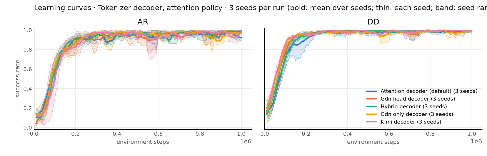
Start 12345 (easy third, rank 15 of 64): all seeds
Trajectories
seed 1seed 2seed 3 · color: episode time (dark violet start, yellow end) · gray cross: failed endpoint · gray T: block start · green T: goal · black dot: pusher start · numbers in each panel: mean steps of successful rollouts per seed, with the success count when not all succeeded
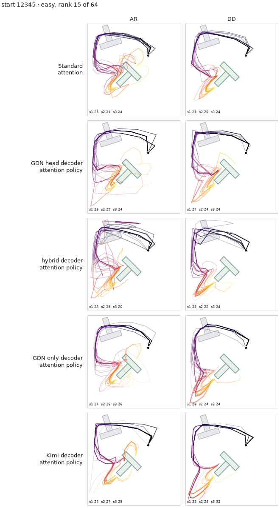
Replays
Pick a seed (or all seeds) above the player. Each panel replays rollouts 0 to 3 of that run and seed from this start, successes and failures alike. The dark disc is the pusher with a fading trail, and the pink cross is the target point (the point the controller pulls the pusher toward). ▶︎/❚❚ plays a panel and ◀ ▶ switch rollouts.
Mechanics
| Run | Method | Seed | Successes | Steps to success | Median target distance (px) | px/step |
|---|---|---|---|---|---|---|
| Standard · attention | AR | seed 1 | 16/16 | 25 | 73 | 34.8 |
| seed 2 | 16/16 | 29 | 73 | 34.4 | ||
| seed 3 | 16/16 | 24 | 68 | 35.5 | ||
| mean of 3 seeds | 48/48 | 26 | 71 | 34.9 | ||
| Standard · attention | DD | seed 1 | 16/16 | 25 | 66 | 34.0 |
| seed 2 | 16/16 | 20 | 82 | 40.7 | ||
| seed 3 | 16/16 | 24 | 75 | 37.2 | ||
| mean of 3 seeds | 48/48 | 23 | 75 | 37.3 | ||
| GDN head decoder · attention policy | AR | seed 1 | 8/8 | 26 | 62 | 34.2 |
| seed 2 | 8/8 | 29 | 78 | 36.4 | ||
| seed 3 | 8/8 | 24 | 75 | 40.6 | ||
| mean of 3 seeds | 24/24 | 27 | 72 | 37.0 | ||
| GDN head decoder · attention policy | DD | seed 1 | 8/8 | 27 | 65 | 35.3 |
| seed 2 | 8/8 | 24 | 71 | 36.6 | ||
| seed 3 | 8/8 | 24 | 60 | 35.7 | ||
| mean of 3 seeds | 24/24 | 25 | 65 | 35.9 | ||
| hybrid decoder · attention policy | AR | seed 1 | 8/8 | 28 | 76 | 37.4 |
| seed 2 | 8/8 | 25 | 72 | 37.9 | ||
| seed 3 | 8/8 | 20 | 90 | 41.9 | ||
| mean of 3 seeds | 24/24 | 24 | 79 | 39.1 | ||
| hybrid decoder · attention policy | DD | seed 1 | 8/8 | 23 | 79 | 38.9 |
| seed 2 | 8/8 | 22 | 89 | 43.0 | ||
| seed 3 | 8/8 | 24 | 81 | 41.6 | ||
| mean of 3 seeds | 24/24 | 23 | 83 | 41.2 | ||
| GDN only decoder · attention policy | AR | seed 1 | 8/8 | 24 | 85 | 34.2 |
| seed 2 | 8/8 | 28 | 73 | 34.5 | ||
| seed 3 | 8/8 | 26 | 89 | 39.9 | ||
| mean of 3 seeds | 24/24 | 26 | 82 | 36.2 | ||
| GDN only decoder · attention policy | DD | seed 1 | 8/8 | 26 | 84 | 37.6 |
| seed 2 | 8/8 | 24 | 90 | 38.8 | ||
| seed 3 | 8/8 | 24 | 85 | 35.6 | ||
| mean of 3 seeds | 24/24 | 25 | 86 | 37.3 | ||
| Kimi decoder · attention policy | AR | seed 1 | 8/8 | 26 | 66 | 34.9 |
| seed 2 | 8/8 | 27 | 63 | 35.2 | ||
| seed 3 | 8/8 | 25 | 70 | 35.0 | ||
| mean of 3 seeds | 24/24 | 26 | 66 | 35.0 | ||
| Kimi decoder · attention policy | DD | seed 1 | 8/8 | 22 | 94 | 43.6 |
| seed 2 | 8/8 | 24 | 59 | 35.7 | ||
| seed 3 | 8/8 | 32 | 69 | 34.8 | ||
| mean of 3 seeds | 24/24 | 26 | 74 | 38.0 |
All rollouts from start 12345 in the evaluation on the 64 test starts (8 or 16 per seed, final checkpoints, every outcome). Steps, target distance and speed are over successful rollouts; the seed-mean row averages the per-seed values and sums the success counts.
Start 3942: trajectories, replays and mechanics (median third, rank 32 of 64)
Trajectories
seed 1seed 2seed 3 · color: episode time (dark violet start, yellow end) · gray cross: failed endpoint · gray T: block start · green T: goal · black dot: pusher start · numbers in each panel: mean steps of successful rollouts per seed, with the success count when not all succeeded
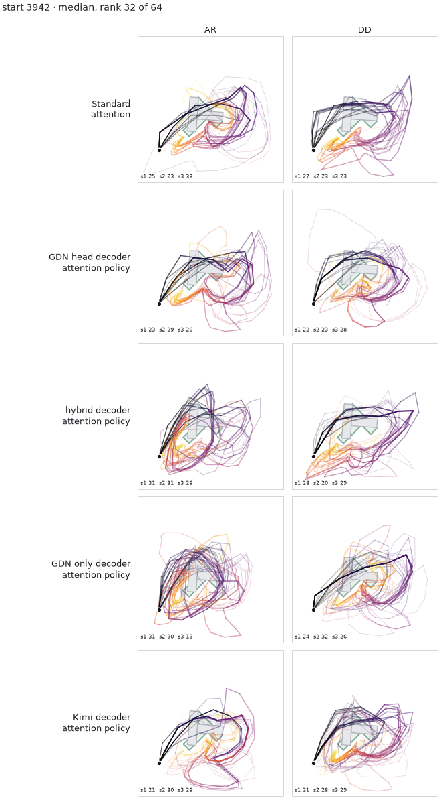
Replays
Pick a seed (or all seeds) above the player. Each panel replays rollouts 0 to 3 of that run and seed from this start, successes and failures alike. The dark disc is the pusher with a fading trail, and the pink cross is the target point (the point the controller pulls the pusher toward). ▶︎/❚❚ plays a panel and ◀ ▶ switch rollouts.
Mechanics
| Run | Method | Seed | Successes | Steps to success | Median target distance (px) | px/step |
|---|---|---|---|---|---|---|
| Standard · attention | AR | seed 1 | 16/16 | 25 | 69 | 36.6 |
| seed 2 | 16/16 | 23 | 74 | 37.5 | ||
| seed 3 | 16/16 | 33 | 101 | 40.9 | ||
| mean of 3 seeds | 48/48 | 27 | 81 | 38.3 | ||
| Standard · attention | DD | seed 1 | 16/16 | 27 | 70 | 38.0 |
| seed 2 | 16/16 | 23 | 76 | 37.8 | ||
| seed 3 | 16/16 | 23 | 49 | 35.6 | ||
| mean of 3 seeds | 48/48 | 24 | 65 | 37.2 | ||
| GDN head decoder · attention policy | AR | seed 1 | 8/8 | 23 | 96 | 43.1 |
| seed 2 | 8/8 | 29 | 86 | 39.4 | ||
| seed 3 | 8/8 | 26 | 103 | 39.9 | ||
| mean of 3 seeds | 24/24 | 26 | 95 | 40.8 | ||
| GDN head decoder · attention policy | DD | seed 1 | 8/8 | 22 | 92 | 38.8 |
| seed 2 | 8/8 | 23 | 78 | 38.5 | ||
| seed 3 | 8/8 | 28 | 72 | 39.1 | ||
| mean of 3 seeds | 24/24 | 24 | 81 | 38.8 | ||
| hybrid decoder · attention policy | AR | seed 1 | 8/8 | 31 | 98 | 37.3 |
| seed 2 | 8/8 | 31 | 71 | 35.4 | ||
| seed 3 | 8/8 | 26 | 54 | 35.3 | ||
| mean of 3 seeds | 24/24 | 30 | 74 | 36.0 | ||
| hybrid decoder · attention policy | DD | seed 1 | 8/8 | 28 | 93 | 40.7 |
| seed 2 | 8/8 | 20 | 71 | 41.2 | ||
| seed 3 | 8/8 | 29 | 66 | 36.1 | ||
| mean of 3 seeds | 24/24 | 25 | 77 | 39.4 | ||
| GDN only decoder · attention policy | AR | seed 1 | 8/8 | 31 | 94 | 37.9 |
| seed 2 | 8/8 | 30 | 113 | 46.6 | ||
| seed 3 | 8/8 | 18 | 118 | 42.8 | ||
| mean of 3 seeds | 24/24 | 26 | 108 | 42.4 | ||
| GDN only decoder · attention policy | DD | seed 1 | 8/8 | 24 | 64 | 38.4 |
| seed 2 | 8/8 | 32 | 77 | 38.7 | ||
| seed 3 | 8/8 | 26 | 74 | 38.2 | ||
| mean of 3 seeds | 24/24 | 27 | 71 | 38.4 | ||
| Kimi decoder · attention policy | AR | seed 1 | 8/8 | 21 | 93 | 37.2 |
| seed 2 | 8/8 | 30 | 107 | 41.3 | ||
| seed 3 | 8/8 | 26 | 87 | 37.8 | ||
| mean of 3 seeds | 24/24 | 26 | 96 | 38.8 | ||
| Kimi decoder · attention policy | DD | seed 1 | 8/8 | 21 | 77 | 39.2 |
| seed 2 | 8/8 | 28 | 103 | 45.0 | ||
| seed 3 | 8/8 | 29 | 98 | 42.3 | ||
| mean of 3 seeds | 24/24 | 26 | 93 | 42.2 |
All rollouts from start 3942 in the evaluation on the 64 test starts (8 or 16 per seed, final checkpoints, every outcome). Steps, target distance and speed are over successful rollouts; the seed-mean row averages the per-seed values and sums the success counts.
Start 8039: trajectories, replays and mechanics (hard third, rank 53 of 64)
Trajectories
seed 1seed 2seed 3 · color: episode time (dark violet start, yellow end) · gray cross: failed endpoint · gray T: block start · green T: goal · black dot: pusher start · numbers in each panel: mean steps of successful rollouts per seed, with the success count when not all succeeded
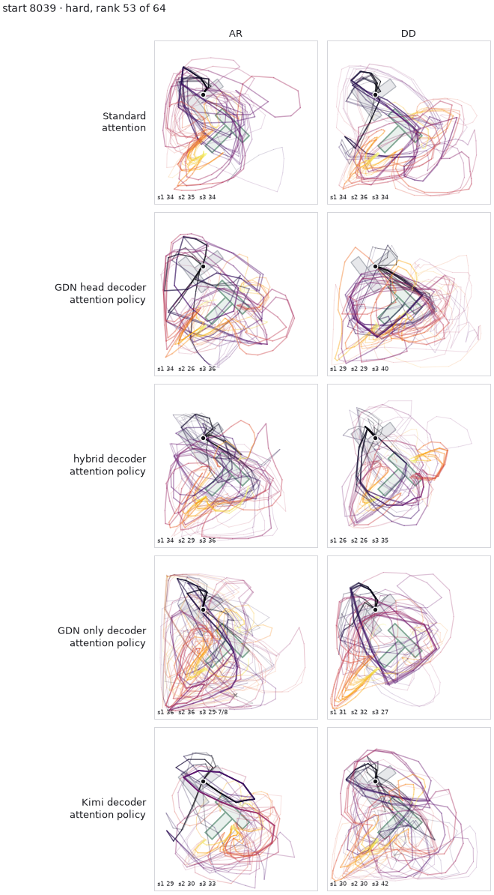
Replays
Pick a seed (or all seeds) above the player. Each panel replays rollouts 0 to 3 of that run and seed from this start, successes and failures alike. The dark disc is the pusher with a fading trail, and the pink cross is the target point (the point the controller pulls the pusher toward). ▶︎/❚❚ plays a panel and ◀ ▶ switch rollouts.
Mechanics
| Run | Method | Seed | Successes | Steps to success | Median target distance (px) | px/step |
|---|---|---|---|---|---|---|
| Standard · attention | AR | seed 1 | 16/16 | 34 | 93 | 39.4 |
| seed 2 | 16/16 | 35 | 89 | 39.1 | ||
| seed 3 | 16/16 | 34 | 95 | 40.1 | ||
| mean of 3 seeds | 48/48 | 34 | 93 | 39.5 | ||
| Standard · attention | DD | seed 1 | 16/16 | 34 | 86 | 35.4 |
| seed 2 | 16/16 | 36 | 96 | 39.2 | ||
| seed 3 | 16/16 | 34 | 99 | 42.7 | ||
| mean of 3 seeds | 48/48 | 34 | 94 | 39.1 | ||
| GDN head decoder · attention policy | AR | seed 1 | 8/8 | 34 | 102 | 45.5 |
| seed 2 | 8/8 | 26 | 81 | 36.7 | ||
| seed 3 | 8/8 | 36 | 81 | 38.1 | ||
| mean of 3 seeds | 24/24 | 32 | 88 | 40.1 | ||
| GDN head decoder · attention policy | DD | seed 1 | 8/8 | 29 | 122 | 48.4 |
| seed 2 | 8/8 | 29 | 107 | 43.9 | ||
| seed 3 | 8/8 | 40 | 87 | 41.9 | ||
| mean of 3 seeds | 24/24 | 33 | 105 | 44.8 | ||
| hybrid decoder · attention policy | AR | seed 1 | 8/8 | 34 | 91 | 35.7 |
| seed 2 | 8/8 | 29 | 96 | 44.6 | ||
| seed 3 | 8/8 | 36 | 96 | 38.5 | ||
| mean of 3 seeds | 24/24 | 33 | 94 | 39.6 | ||
| hybrid decoder · attention policy | DD | seed 1 | 8/8 | 26 | 87 | 34.9 |
| seed 2 | 8/8 | 26 | 83 | 39.5 | ||
| seed 3 | 8/8 | 35 | 77 | 36.2 | ||
| mean of 3 seeds | 24/24 | 29 | 82 | 36.9 | ||
| GDN only decoder · attention policy | AR | seed 1 | 8/8 | 36 | 79 | 35.4 |
| seed 2 | 8/8 | 36 | 92 | 39.8 | ||
| seed 3 | 7/8 | 29 | 152 | 53.3 | ||
| mean of 3 seeds | 23/24 | 34 | 108 | 42.8 | ||
| GDN only decoder · attention policy | DD | seed 1 | 8/8 | 31 | 97 | 45.5 |
| seed 2 | 8/8 | 32 | 100 | 42.6 | ||
| seed 3 | 8/8 | 27 | 89 | 36.9 | ||
| mean of 3 seeds | 24/24 | 30 | 95 | 41.7 | ||
| Kimi decoder · attention policy | AR | seed 1 | 8/8 | 29 | 96 | 40.0 |
| seed 2 | 8/8 | 30 | 91 | 37.4 | ||
| seed 3 | 8/8 | 33 | 118 | 45.5 | ||
| mean of 3 seeds | 24/24 | 31 | 102 | 41.0 | ||
| Kimi decoder · attention policy | DD | seed 1 | 8/8 | 30 | 104 | 42.0 |
| seed 2 | 8/8 | 30 | 85 | 36.8 | ||
| seed 3 | 8/8 | 42 | 108 | 44.6 | ||
| mean of 3 seeds | 24/24 | 34 | 99 | 41.1 |
All rollouts from start 8039 in the evaluation on the 64 test starts (8 or 16 per seed, final checkpoints, every outcome). Steps, target distance and speed are over successful rollouts; the seed-mean row averages the per-seed values and sums the success counts.
All 64 starts: statistics
| Run | Method | Seeds | Success | Steps to success | Steps per seed | Median target distance (px) | px/step | px/step per seed | Chunk-start jerk ratio |
|---|---|---|---|---|---|---|---|---|---|
| Attention decoder (default) | AR | 3 | 100% [100%, 100%] | 28 [27, 28] | 27 / 27 / 28 | 76 [73, 79] | 36.3 [35.2, 37.3] | 35.4 / 36.7 / 36.8 | 1.47 [1.41, 1.53] |
| Attention decoder (default) | DD | 3 | 100% [100%, 100%] | 28 [27, 29] | 28 / 27 / 28 | 77 [74, 79] | 36.8 [35.6, 37.8] | 35.8 / 37.5 / 37.0 | 1.42 [1.37, 1.46] |
| Gdn head decoder | AR | 3 | 100% [100%, 100%] | 28 [26, 30] | 27 / 29 / 27 | 83 [80, 85] | 39.0 [38.0, 40.0] | 39.5 / 38.9 / 38.5 | 1.40 [1.34, 1.47] |
| Gdn head decoder | DD | 3 | 100% [100%, 100%] | 26 [25, 27] | 25 / 27 / 27 | 81 [78, 84] | 38.4 [37.5, 39.4] | 38.9 / 38.0 / 38.2 | 1.34 [1.28, 1.39] |
| Hybrid decoder | AR | 3 | 100% [100%, 100%] | 29 [27, 31] | 28 / 31 / 27 | 79 [73, 85] | 37.7 [36.0, 39.8] | 36.4 / 36.7 / 40.1 | 1.43 [1.37, 1.50] |
| Hybrid decoder | DD | 3 | 100% [100%, 100%] | 26 [25, 27] | 26 / 25 / 26 | 79 [76, 83] | 38.5 [37.4, 39.7] | 38.1 / 39.4 / 37.9 | 1.38 [1.32, 1.45] |
| Gdn only decoder | AR | 3 | 100% [100%, 100%] | 27 [25, 28] | 28 / 28 / 25 | 84 [77, 95] | 38.3 [36.1, 41.2] | 36.9 / 36.4 / 41.5 | 1.41 [1.34, 1.46] |
| Gdn only decoder | DD | 3 | 100% [100%, 100%] | 26 [25, 27] | 25 / 26 / 26 | 81 [78, 84] | 38.3 [37.3, 39.2] | 38.7 / 38.4 / 37.7 | 1.31 [1.27, 1.34] |
| Kimi decoder | AR | 3 | 99% [98%, 100%] | 28 [27, 29] | 28 / 28 / 28 | 79 [74, 82] | 37.1 [35.5, 38.5] | 35.5 / 37.7 / 38.1 | 1.48 [1.42, 1.55] |
| Kimi decoder | DD | 3 | 100% [100%, 100%] | 26 [26, 27] | 26 / 27 / 26 | 77 [74, 80] | 37.0 [35.8, 38.0] | 37.5 / 36.1 / 37.3 | 1.52 [1.47, 1.56] |
what is this?
- Success rate: Share of episodes that bring the T onto the goal pose; higher is better.
- Steps to success: How many control steps a successful episode takes; lower is faster.
- Pusher speed: How far the pusher moves per control step; higher is faster.
- Target distance: How far from the pusher the policy places the target point; larger means more aggressive commands.
- Chunk-start jerk ratio: Jerk at steps where a new chunk starts divided by jerk at other steps; 1 = no extra jerk, higher = jerkier at chunk starts.
Mean over 64 start states and all available seeds (the Seeds column), with 8 or 16 episodes per start. Brackets are 95% bootstrap intervals (seeds, then starts within seeds). The per-seed columns give each seed's mean over the 64 starts (seed 1 / 2 / 3). Steps, target distance, speed and the chunk-start jerk ratio are over successful episodes.
What we learned. With an attention policy, the decoder mixer barely changes how the token policies move; with three seeds almost nothing survives Holm correction.
- The GDN-head decoder spreads AR's target points within a chunk. Within-chunk spread and block jerk rise after RL, the opposite direction to the GDN-only policy in section 1.
- No decoder smooths DD after RL. No smoothness or multimodality metric of RL DD moves beyond seed noise.
- Decoder effects on BC do not carry through RL. The GDN-only decoder narrows DD's chunks before RL, but not after, and no decoder changes multimodality or contact.
3Tokenizer decoder × policy architecture
What we are testing
Sections 1 and 2 changed the mixer in one place at a time. Here the policy mixer and the decoder mixer vary together, to check whether some combination changes behaviour even though neither does alone, and to estimate each mixer's effect more precisely.
The decoder self-mixer (the layer where the decoder's 4 action queries mix inside its 2 blocks; see section 2) is one of:
- Attention (default).
- GDN head: an extra GDN block.
- Hybrid: GDN then attention.
- GDN only: GDN in place of attention.
- Kimi: Kimi Delta Attention (a GDN with one decay per key channel), followed by attention.
Each decoder gets its own tokenizer, trained on the same demos and then frozen. On top of each we train all five policy mixers from section 1 for AR and DD, from BC through 1M OGPO steps, with standard PushT actions. The attention-decoder row is the section 1 runs, and the attention-policy column is the section 2 runs. All new runs start RL from the BC starting checkpoint (the BC checkpoint, after at least 30k BC steps, whose success is closest to 22%). The behaviour effects below are main effects: a decoder's effect is averaged over the five policy mixers, and a policy mixer's effect over the five decoders. On speed, AR combinations take 26.7 to 30.2 steps and DD combinations 24.7 to 28.6 (see "Where the speed comes from").
What we see
The policy mixer shapes RL AR's motion and the decoder barely matters. Averaged over decoders, the GDN-only and hybrid policies make AR smoother inside each chunk, and GDN only also makes it sharper at chunk starts and aim closer. This agrees in direction with the GDN-only AR effect in section 1, and averaging over 15 runs per mixer makes more of it survive Holm correction. The effect map and the collapsed table "All effects with 95% intervals" give every metric; the intervals resample seeds and then starts, so they include seed-to-seed variation.
- The GDN-only policy smooths AR inside a chunk. After RL, mean pusher jerk falls from 25.9 to 19.1 px/step³, jerk per unit speed from 0.715 to 0.603, within-chunk target spread (how far apart the 4 target points of one chunk lie) from 43 to 30.5 px, heading change rate from 0.56 to 0.484, speed reversals from 1.93 to 1.5 per episode and block jerk from 10.3 to 7.38. All survive Holm.
- It also sharpens chunk starts and brings targets closer. The chunk-start jerk ratio (\(\text{jerk at steps where a new chunk starts} \div \text{jerk at other steps}\); 1 = no extra jerk) rises from 1.47 to 1.58, the chunk-start acceleration ratio from 1.75 to 1.99 and the chunk-start target-change ratio from 2.31 to 2.81. Median target distance (distance from the pusher to the commanded target point) falls from 76.2 to 67.8 px and the share of far targets (more than 74 px away, beyond 99% of demo steps) from 0.502 to 0.46. All survive Holm, and all match the direction of section 1.
- The hybrid policy smooths AR without the sharper chunk starts. Jerk falls from 25.9 to 22.2, within-chunk spread from 43 to 37.6 px, heading change rate from 0.56 to 0.519 and speed reversals from 1.93 to 1.55, all surviving Holm. In section 1 the hybrid policy alone was within noise. The GDN-head policy only cuts speed reversals (1.93 to 1.61).
- DD barely responds after RL, but does before. No smoothness effect on RL DD matters. In BC, the GDN-only policy makes DD smoother (jerk 6.45 to 5.52, within-chunk spread 14.3 to 13.2 px, far-target share 0.0382 to 0.0301), all surviving Holm, but none of it remains after RL. So the GDN-only policy changes DD before RL and AR after RL; we do not know why.
- Decoder main effects on AR do not survive. No decoder changes AR's smoothness beyond seed noise once averaged over policies.
- RL erases the BC differences in multimodality. In BC, hybrid, GDN-only and Kimi policies give AR more route modes over the whole episode (route clusters across the rollouts from one start; 6.35 to 6.85, 6.94 and 6.83), all surviving Holm. This count includes wandering failures, but the first-400 px route modes of the multimodality section agree for GDN only and hybrid. After RL no multimodality metric differs between mixers.
- Every combination learns, and the new decoders reconstruct slightly better. All 50 combinations have three seeds and succeed on at least 97% of episodes from the 64 test starts; the learning curves differ mainly in early learning speed, and every combination ends near 95 to 100% evaluation success. The four new decoders reach 1.6 to 1.8 px mean endpoint error (how far decoded actions land from the original demo actions) on held-out demos vs 1.9 for attention.
What changes in behaviour
![Paired effects of each decoder mixer (averaged over the 5 policy mixers) and each policy mixer (averaged over the 5 decoders) on behaviour over the 64 test starts. Each cell is the change vs the baseline in units of the baseline's spread across starts (red = higher, blue = lower). A black dot marks an effect that survives Holm correction (\(p < 0.05\)) within this section, class and policy side. Intervals resample training seeds, then starts, so they include seed-to-seed variation. Episode metrics use successful episodes only.](effects_grid.png)
All effects with 95% intervals
Smoothness and jerk
| Change | Class | Policy | Metric | Baseline | Variant | Difference [95% CI] | Holm p | Seeds |
|---|---|---|---|---|---|---|---|---|
| GDN head decoder (main effect over 5 policies) | AR | RL | Mean pusher jerk | 25.9 | 27.9 | +1.99 [+0.756, +3.16] | 0.099 | 3 / 3 |
| GDN head decoder (main effect over 5 policies) | AR | RL | Jerk per unit speed | 0.715 | 0.743 | +0.0276 [+0.00659, +0.0482] | 1.000 | 3 / 3 |
| GDN head decoder (main effect over 5 policies) | AR | RL | Chunk-start jerk ratio | 1.47 | 1.43 | -0.0398 [-0.0856, +0.00257] | 1.000 | 3 / 3 |
| GDN head decoder (main effect over 5 policies) | AR | RL | Chunk-start acceleration ratio | 1.75 | 1.69 | -0.051 [-0.113, +0.0123] | 1.000 | 3 / 3 |
| GDN head decoder (main effect over 5 policies) | AR | RL | Chunk-start target-change ratio | 2.31 | 2.12 | -0.195 [-0.327, -0.0591] | 0.661 | 3 / 3 |
| GDN head decoder (main effect over 5 policies) | AR | RL | Within-chunk target spread (px) | 43 | 46.7 | +3.68 [+1.82, +5.49] | 0.099 | 3 / 3 |
| GDN head decoder (main effect over 5 policies) | AR | RL | LDLJ (higher = smoother) | -10.9 | -10.9 | -0.00387 [-0.108, +0.099] | 1.000 | 3 / 3 |
| GDN head decoder (main effect over 5 policies) | AR | RL | SPARC (higher = smoother) | -2.33 | -2.3 | +0.0255 [-0.0172, +0.0699] | 1.000 | 3 / 3 |
| GDN head decoder (main effect over 5 policies) | AR | RL | Path curvature | 0.0317 | 0.0289 | -0.00285 [-0.00569, -0.000658] | 1.000 | 3 / 3 |
| GDN head decoder (main effect over 5 policies) | AR | RL | Heading change rate | 0.56 | 0.56 | -0.000368 [-0.0148, +0.0139] | 1.000 | 3 / 3 |
| GDN head decoder (main effect over 5 policies) | AR | RL | Speed peaks per 100 px | 0.552 | 0.543 | -0.00868 [-0.0225, +0.00495] | 1.000 | 3 / 3 |
| GDN head decoder (main effect over 5 policies) | AR | RL | Speed reversals | 1.93 | 1.94 | +0.00765 [-0.197, +0.207] | 1.000 | 3 / 3 |
| hybrid decoder (main effect over 5 policies) | AR | RL | Mean pusher jerk | 25.9 | 26.6 | +0.633 [-0.736, +2.16] | 1.000 | 3 / 3 |
| hybrid decoder (main effect over 5 policies) | AR | RL | Jerk per unit speed | 0.715 | 0.721 | +0.00573 [-0.017, +0.0289] | 1.000 | 3 / 3 |
| hybrid decoder (main effect over 5 policies) | AR | RL | Chunk-start jerk ratio | 1.47 | 1.47 | -0.00349 [-0.0463, +0.0404] | 1.000 | 3 / 3 |
| hybrid decoder (main effect over 5 policies) | AR | RL | Chunk-start acceleration ratio | 1.75 | 1.73 | -0.0159 [-0.071, +0.0378] | 1.000 | 3 / 3 |
| hybrid decoder (main effect over 5 policies) | AR | RL | Chunk-start target-change ratio | 2.31 | 2.23 | -0.0803 [-0.192, +0.0305] | 1.000 | 3 / 3 |
| hybrid decoder (main effect over 5 policies) | AR | RL | Within-chunk target spread (px) | 43 | 44.4 | +1.4 [-0.779, +3.52] | 1.000 | 3 / 3 |
| hybrid decoder (main effect over 5 policies) | AR | RL | LDLJ (higher = smoother) | -10.9 | -10.9 | +0.0229 [-0.0925, +0.138] | 1.000 | 3 / 3 |
| hybrid decoder (main effect over 5 policies) | AR | RL | SPARC (higher = smoother) | -2.33 | -2.29 | +0.0393 [-0.00724, +0.0891] | 1.000 | 3 / 3 |
| hybrid decoder (main effect over 5 policies) | AR | RL | Path curvature | 0.0317 | 0.0303 | -0.0014 [-0.00413, +0.000879] | 1.000 | 3 / 3 |
| hybrid decoder (main effect over 5 policies) | AR | RL | Heading change rate | 0.56 | 0.563 | +0.00259 [-0.0133, +0.0189] | 1.000 | 3 / 3 |
| hybrid decoder (main effect over 5 policies) | AR | RL | Speed peaks per 100 px | 0.552 | 0.553 | +0.00129 [-0.0128, +0.0149] | 1.000 | 3 / 3 |
| hybrid decoder (main effect over 5 policies) | AR | RL | Speed reversals | 1.93 | 1.91 | -0.0248 [-0.237, +0.174] | 1.000 | 3 / 3 |
| GDN only decoder (main effect over 5 policies) | AR | RL | Mean pusher jerk | 25.9 | 26.4 | +0.428 [-0.772, +1.67] | 1.000 | 3 / 3 |
| GDN only decoder (main effect over 5 policies) | AR | RL | Jerk per unit speed | 0.715 | 0.721 | +0.00534 [-0.0137, +0.0249] | 1.000 | 3 / 3 |
| GDN only decoder (main effect over 5 policies) | AR | RL | Chunk-start jerk ratio | 1.47 | 1.43 | -0.0398 [-0.0829, +0.00253] | 1.000 | 3 / 3 |
| GDN only decoder (main effect over 5 policies) | AR | RL | Chunk-start acceleration ratio | 1.75 | 1.7 | -0.047 [-0.124, +0.0245] | 1.000 | 3 / 3 |
| GDN only decoder (main effect over 5 policies) | AR | RL | Chunk-start target-change ratio | 2.31 | 2.18 | -0.13 [-0.282, +0.026] | 1.000 | 3 / 3 |
| GDN only decoder (main effect over 5 policies) | AR | RL | Within-chunk target spread (px) | 43 | 44.2 | +1.25 [-0.819, +3.36] | 1.000 | 3 / 3 |
| GDN only decoder (main effect over 5 policies) | AR | RL | LDLJ (higher = smoother) | -10.9 | -10.9 | +0.0582 [-0.0514, +0.169] | 1.000 | 3 / 3 |
| GDN only decoder (main effect over 5 policies) | AR | RL | SPARC (higher = smoother) | -2.33 | -2.29 | +0.0341 [-0.0244, +0.0935] | 1.000 | 3 / 3 |
| GDN only decoder (main effect over 5 policies) | AR | RL | Path curvature | 0.0317 | 0.0304 | -0.00127 [-0.0041, +0.00103] | 1.000 | 3 / 3 |
| GDN only decoder (main effect over 5 policies) | AR | RL | Heading change rate | 0.56 | 0.557 | -0.0037 [-0.0167, +0.00997] | 1.000 | 3 / 3 |
| GDN only decoder (main effect over 5 policies) | AR | RL | Speed peaks per 100 px | 0.552 | 0.56 | +0.00785 [-0.00833, +0.024] | 1.000 | 3 / 3 |
| GDN only decoder (main effect over 5 policies) | AR | RL | Speed reversals | 1.93 | 1.84 | -0.0957 [-0.297, +0.0839] | 1.000 | 3 / 3 |
| Kimi decoder (main effect over 5 policies) | AR | RL | Mean pusher jerk | 25.9 | 25.6 | -0.348 [-1.45, +0.723] | 1.000 | 3 / 3 |
| Kimi decoder (main effect over 5 policies) | AR | RL | Jerk per unit speed | 0.715 | 0.706 | -0.00952 [-0.0271, +0.00891] | 1.000 | 3 / 3 |
| Kimi decoder (main effect over 5 policies) | AR | RL | Chunk-start jerk ratio | 1.47 | 1.48 | +0.00937 [-0.0292, +0.0498] | 1.000 | 3 / 3 |
| Kimi decoder (main effect over 5 policies) | AR | RL | Chunk-start acceleration ratio | 1.75 | 1.77 | +0.0238 [-0.0433, +0.0893] | 1.000 | 3 / 3 |
| Kimi decoder (main effect over 5 policies) | AR | RL | Chunk-start target-change ratio | 2.31 | 2.42 | +0.109 [-0.0717, +0.308] | 1.000 | 3 / 3 |
| Kimi decoder (main effect over 5 policies) | AR | RL | Within-chunk target spread (px) | 43 | 42.2 | -0.834 [-2.84, +1.14] | 1.000 | 3 / 3 |
| Kimi decoder (main effect over 5 policies) | AR | RL | LDLJ (higher = smoother) | -10.9 | -10.8 | +0.0794 [-0.0325, +0.194] | 1.000 | 3 / 3 |
| Kimi decoder (main effect over 5 policies) | AR | RL | SPARC (higher = smoother) | -2.33 | -2.28 | +0.0468 [+0.00524, +0.0923] | 1.000 | 3 / 3 |
| Kimi decoder (main effect over 5 policies) | AR | RL | Path curvature | 0.0317 | 0.0304 | -0.00134 [-0.00407, +0.00109] | 1.000 | 3 / 3 |
| Kimi decoder (main effect over 5 policies) | AR | RL | Heading change rate | 0.56 | 0.558 | -0.00279 [-0.0169, +0.0121] | 1.000 | 3 / 3 |
| Kimi decoder (main effect over 5 policies) | AR | RL | Speed peaks per 100 px | 0.552 | 0.548 | -0.00408 [-0.0202, +0.0118] | 1.000 | 3 / 3 |
| Kimi decoder (main effect over 5 policies) | AR | RL | Speed reversals | 1.93 | 1.89 | -0.0467 [-0.252, +0.162] | 1.000 | 3 / 3 |
| GDN head policy (main effect over 5 decoders) | AR | RL | Mean pusher jerk | 25.9 | 24.3 | -1.59 [-3.09, -0.0619] | 1.000 | 3 / 3 |
| GDN head policy (main effect over 5 decoders) | AR | RL | Jerk per unit speed | 0.715 | 0.683 | -0.0323 [-0.0568, -0.00617] | 1.000 | 3 / 3 |
| GDN head policy (main effect over 5 decoders) | AR | RL | Chunk-start jerk ratio | 1.47 | 1.49 | +0.017 [-0.0281, +0.0627] | 1.000 | 3 / 3 |
| GDN head policy (main effect over 5 decoders) | AR | RL | Chunk-start acceleration ratio | 1.75 | 1.73 | -0.0164 [-0.0807, +0.0453] | 1.000 | 3 / 3 |
| GDN head policy (main effect over 5 decoders) | AR | RL | Chunk-start target-change ratio | 2.31 | 2.29 | -0.025 [-0.159, +0.099] | 1.000 | 3 / 3 |
| GDN head policy (main effect over 5 decoders) | AR | RL | Within-chunk target spread (px) | 43 | 41.4 | -1.63 [-3.78, +0.48] | 1.000 | 3 / 3 |
| GDN head policy (main effect over 5 decoders) | AR | RL | LDLJ (higher = smoother) | -10.9 | -10.8 | +0.158 [+0.0389, +0.28] | 1.000 | 3 / 3 |
| GDN head policy (main effect over 5 decoders) | AR | RL | SPARC (higher = smoother) | -2.33 | -2.27 | +0.0565 [+0.0055, +0.106] | 1.000 | 3 / 3 |
| GDN head policy (main effect over 5 decoders) | AR | RL | Path curvature | 0.0317 | 0.0312 | -0.000514 [-0.00191, +0.000896] | 1.000 | 3 / 3 |
| GDN head policy (main effect over 5 decoders) | AR | RL | Heading change rate | 0.56 | 0.54 | -0.0208 [-0.0377, -0.00313] | 1.000 | 3 / 3 |
| GDN head policy (main effect over 5 decoders) | AR | RL | Speed peaks per 100 px | 0.552 | 0.538 | -0.0135 [-0.0274, +0.000271] | 1.000 | 3 / 3 |
| GDN head policy (main effect over 5 decoders) | AR | RL | Speed reversals | 1.93 | 1.61 | -0.324 [-0.505, -0.141] | 0.000 | 3 / 3 |
| hybrid policy (main effect over 5 decoders) | AR | RL | Mean pusher jerk | 25.9 | 22.2 | -3.75 [-5.2, -2.37] | 0.000 | 3 / 3 |
| hybrid policy (main effect over 5 decoders) | AR | RL | Jerk per unit speed | 0.715 | 0.647 | -0.0677 [-0.0901, -0.0437] | 0.000 | 3 / 3 |
| hybrid policy (main effect over 5 decoders) | AR | RL | Chunk-start jerk ratio | 1.47 | 1.5 | +0.0271 [-0.0177, +0.073] | 1.000 | 3 / 3 |
| hybrid policy (main effect over 5 decoders) | AR | RL | Chunk-start acceleration ratio | 1.75 | 1.78 | +0.0374 [-0.0247, +0.099] | 1.000 | 3 / 3 |
| hybrid policy (main effect over 5 decoders) | AR | RL | Chunk-start target-change ratio | 2.31 | 2.43 | +0.116 [-0.0177, +0.243] | 1.000 | 3 / 3 |
| hybrid policy (main effect over 5 decoders) | AR | RL | Within-chunk target spread (px) | 43 | 37.6 | -5.41 [-7.72, -3.06] | 0.000 | 3 / 3 |
| hybrid policy (main effect over 5 decoders) | AR | RL | LDLJ (higher = smoother) | -10.9 | -10.7 | +0.247 [+0.132, +0.37] | 0.000 | 3 / 3 |
| hybrid policy (main effect over 5 decoders) | AR | RL | SPARC (higher = smoother) | -2.33 | -2.28 | +0.0455 [-0.00429, +0.0953] | 1.000 | 3 / 3 |
| hybrid policy (main effect over 5 decoders) | AR | RL | Path curvature | 0.0317 | 0.0314 | -0.000276 [-0.00197, +0.00142] | 1.000 | 3 / 3 |
| hybrid policy (main effect over 5 decoders) | AR | RL | Heading change rate | 0.56 | 0.519 | -0.0413 [-0.0591, -0.0226] | 0.000 | 3 / 3 |
| hybrid policy (main effect over 5 decoders) | AR | RL | Speed peaks per 100 px | 0.552 | 0.562 | +0.0105 [-0.00674, +0.0279] | 1.000 | 3 / 3 |
| hybrid policy (main effect over 5 decoders) | AR | RL | Speed reversals | 1.93 | 1.55 | -0.384 [-0.577, -0.192] | 0.000 | 3 / 3 |
| GDN only policy (main effect over 5 decoders) | AR | RL | Mean pusher jerk | 25.9 | 19.1 | -6.8 [-8.24, -5.44] | 0.000 | 3 / 3 |
| GDN only policy (main effect over 5 decoders) | AR | RL | Jerk per unit speed | 0.715 | 0.603 | -0.112 [-0.135, -0.0897] | 0.000 | 3 / 3 |
| GDN only policy (main effect over 5 decoders) | AR | RL | Chunk-start jerk ratio | 1.47 | 1.58 | +0.11 [+0.0671, +0.153] | 0.000 | 3 / 3 |
| GDN only policy (main effect over 5 decoders) | AR | RL | Chunk-start acceleration ratio | 1.75 | 1.99 | +0.244 [+0.16, +0.325] | 0.000 | 3 / 3 |
| GDN only policy (main effect over 5 decoders) | AR | RL | Chunk-start target-change ratio | 2.31 | 2.81 | +0.499 [+0.308, +0.69] | 0.000 | 3 / 3 |
| GDN only policy (main effect over 5 decoders) | AR | RL | Within-chunk target spread (px) | 43 | 30.5 | -12.5 [-14.9, -10.1] | 0.000 | 3 / 3 |
| GDN only policy (main effect over 5 decoders) | AR | RL | LDLJ (higher = smoother) | -10.9 | -10.8 | +0.159 [+0.0307, +0.284] | 1.000 | 3 / 3 |
| GDN only policy (main effect over 5 decoders) | AR | RL | SPARC (higher = smoother) | -2.33 | -2.31 | +0.0184 [-0.0298, +0.07] | 1.000 | 3 / 3 |
| GDN only policy (main effect over 5 decoders) | AR | RL | Path curvature | 0.0317 | 0.0306 | -0.00117 [-0.00263, +0.000367] | 1.000 | 3 / 3 |
| GDN only policy (main effect over 5 decoders) | AR | RL | Heading change rate | 0.56 | 0.484 | -0.0768 [-0.0947, -0.0583] | 0.000 | 3 / 3 |
| GDN only policy (main effect over 5 decoders) | AR | RL | Speed peaks per 100 px | 0.552 | 0.58 | +0.0283 [+0.00941, +0.0458] | 0.837 | 3 / 3 |
| GDN only policy (main effect over 5 decoders) | AR | RL | Speed reversals | 1.93 | 1.5 | -0.436 [-0.634, -0.239] | 0.000 | 3 / 3 |
| Kimi policy (main effect over 5 decoders) | AR | RL | Mean pusher jerk | 25.9 | 23.4 | -2.53 [-4.01, -1.05] | 0.192 | 3 / 3 |
| Kimi policy (main effect over 5 decoders) | AR | RL | Jerk per unit speed | 0.715 | 0.669 | -0.0459 [-0.0704, -0.0215] | 0.099 | 3 / 3 |
| Kimi policy (main effect over 5 decoders) | AR | RL | Chunk-start jerk ratio | 1.47 | 1.49 | +0.0186 [-0.019, +0.0566] | 1.000 | 3 / 3 |
| Kimi policy (main effect over 5 decoders) | AR | RL | Chunk-start acceleration ratio | 1.75 | 1.76 | +0.018 [-0.0487, +0.0835] | 1.000 | 3 / 3 |
| Kimi policy (main effect over 5 decoders) | AR | RL | Chunk-start target-change ratio | 2.31 | 2.41 | +0.095 [-0.0567, +0.267] | 1.000 | 3 / 3 |
| Kimi policy (main effect over 5 decoders) | AR | RL | Within-chunk target spread (px) | 43 | 39.2 | -3.84 [-6.08, -1.64] | 0.099 | 3 / 3 |
| Kimi policy (main effect over 5 decoders) | AR | RL | LDLJ (higher = smoother) | -10.9 | -10.7 | +0.18 [+0.0581, +0.308] | 0.661 | 3 / 3 |
| Kimi policy (main effect over 5 decoders) | AR | RL | SPARC (higher = smoother) | -2.33 | -2.27 | +0.0582 [+0.00182, +0.115] | 1.000 | 3 / 3 |
| Kimi policy (main effect over 5 decoders) | AR | RL | Path curvature | 0.0317 | 0.0326 | +0.000898 [-0.00139, +0.00379] | 1.000 | 3 / 3 |
| Kimi policy (main effect over 5 decoders) | AR | RL | Heading change rate | 0.56 | 0.531 | -0.0289 [-0.0467, -0.0116] | 0.099 | 3 / 3 |
| Kimi policy (main effect over 5 decoders) | AR | RL | Speed peaks per 100 px | 0.552 | 0.559 | +0.00677 [-0.00949, +0.0224] | 1.000 | 3 / 3 |
| Kimi policy (main effect over 5 decoders) | AR | RL | Speed reversals | 1.93 | 1.72 | -0.208 [-0.425, +0.0252] | 1.000 | 3 / 3 |
| GDN head policy (main effect over 5 decoders) | AR | BC | Mean pusher jerk | 7.29 | 6.99 | -0.299 [-0.748, +0.148] | 1.000 | 3 / 3 |
| GDN head policy (main effect over 5 decoders) | AR | BC | Jerk per unit speed | 0.606 | 0.592 | -0.0142 [-0.0376, +0.00891] | 1.000 | 3 / 3 |
| GDN head policy (main effect over 5 decoders) | AR | BC | Chunk-start jerk ratio | 1.67 | 1.65 | -0.0208 [-0.054, +0.0136] | 1.000 | 3 / 3 |
| GDN head policy (main effect over 5 decoders) | AR | BC | Chunk-start acceleration ratio | 1.54 | 1.53 | -0.0165 [-0.0505, +0.0185] | 1.000 | 3 / 3 |
| GDN head policy (main effect over 5 decoders) | AR | BC | Chunk-start target-change ratio | 1.72 | 1.72 | -0.00172 [-0.0463, +0.0401] | 1.000 | 3 / 3 |
| GDN head policy (main effect over 5 decoders) | AR | BC | Within-chunk target spread (px) | 15 | 14.5 | -0.477 [-1.09, +0.176] | 1.000 | 3 / 3 |
| GDN head policy (main effect over 5 decoders) | AR | BC | LDLJ (higher = smoother) | -17.4 | -17.2 | +0.128 [-0.0518, +0.307] | 1.000 | 3 / 3 |
| GDN head policy (main effect over 5 decoders) | AR | BC | SPARC (higher = smoother) | -5.45 | -5.26 | +0.19 [+0.0177, +0.379] | 1.000 | 3 / 3 |
| GDN head policy (main effect over 5 decoders) | AR | BC | Path curvature | 0.0574 | 0.0587 | +0.00129 [-0.00175, +0.00453] | 1.000 | 3 / 3 |
| GDN head policy (main effect over 5 decoders) | AR | BC | Heading change rate | 0.36 | 0.355 | -0.00482 [-0.0137, +0.0042] | 1.000 | 3 / 3 |
| GDN head policy (main effect over 5 decoders) | AR | BC | Speed peaks per 100 px | 1.28 | 1.3 | +0.0219 [-0.012, +0.0565] | 1.000 | 3 / 3 |
| GDN head policy (main effect over 5 decoders) | AR | BC | Speed reversals | 8.87 | 8.48 | -0.386 [-1.09, +0.307] | 1.000 | 3 / 3 |
| hybrid policy (main effect over 5 decoders) | AR | BC | Mean pusher jerk | 7.25 | 7.77 | +0.517 [-0.0785, +1.16] | 1.000 | 3 / 3 |
| hybrid policy (main effect over 5 decoders) | AR | BC | Jerk per unit speed | 0.595 | 0.624 | +0.029 [-0.00272, +0.0611] | 1.000 | 3 / 3 |
| hybrid policy (main effect over 5 decoders) | AR | BC | Chunk-start jerk ratio | 1.65 | 1.66 | +0.00879 [-0.0422, +0.0592] | 1.000 | 3 / 3 |
| hybrid policy (main effect over 5 decoders) | AR | BC | Chunk-start acceleration ratio | 1.54 | 1.52 | -0.0221 [-0.0577, +0.0155] | 1.000 | 3 / 3 |
| hybrid policy (main effect over 5 decoders) | AR | BC | Chunk-start target-change ratio | 1.7 | 1.71 | +0.018 [-0.0339, +0.0679] | 1.000 | 3 / 3 |
| hybrid policy (main effect over 5 decoders) | AR | BC | Within-chunk target spread (px) | 15.1 | 15.6 | +0.495 [-0.326, +1.36] | 1.000 | 3 / 3 |
| hybrid policy (main effect over 5 decoders) | AR | BC | LDLJ (higher = smoother) | -17.3 | -17.2 | +0.0293 [-0.224, +0.287] | 1.000 | 3 / 3 |
| hybrid policy (main effect over 5 decoders) | AR | BC | SPARC (higher = smoother) | -5.35 | -5.41 | -0.0605 [-0.327, +0.216] | 1.000 | 3 / 3 |
| hybrid policy (main effect over 5 decoders) | AR | BC | Path curvature | 0.0563 | 0.0569 | +0.00057 [-0.00272, +0.00411] | 1.000 | 3 / 3 |
| hybrid policy (main effect over 5 decoders) | AR | BC | Heading change rate | 0.357 | 0.36 | +0.00213 [-0.00946, +0.0136] | 1.000 | 3 / 3 |
| hybrid policy (main effect over 5 decoders) | AR | BC | Speed peaks per 100 px | 1.25 | 1.23 | -0.0194 [-0.06, +0.0208] | 1.000 | 3 / 3 |
| hybrid policy (main effect over 5 decoders) | AR | BC | Speed reversals | 8.69 | 8.79 | +0.0999 [-0.74, +1.05] | 1.000 | 3 / 3 |
| Kimi policy (main effect over 5 decoders) | AR | BC | Mean pusher jerk | 7.39 | 8.56 | +1.17 [+0.548, +1.77] | 0.000 | 3 / 3 |
| Kimi policy (main effect over 5 decoders) | AR | BC | Jerk per unit speed | 0.606 | 0.669 | +0.0636 [+0.0337, +0.0931] | 0.000 | 3 / 3 |
| Kimi policy (main effect over 5 decoders) | AR | BC | Chunk-start jerk ratio | 1.68 | 1.69 | +0.00722 [-0.0358, +0.0492] | 1.000 | 3 / 3 |
| Kimi policy (main effect over 5 decoders) | AR | BC | Chunk-start acceleration ratio | 1.56 | 1.47 | -0.0858 [-0.122, -0.046] | 0.000 | 3 / 3 |
| Kimi policy (main effect over 5 decoders) | AR | BC | Chunk-start target-change ratio | 1.73 | 1.69 | -0.0396 [-0.0929, +0.0139] | 1.000 | 3 / 3 |
| Kimi policy (main effect over 5 decoders) | AR | BC | Within-chunk target spread (px) | 15.2 | 16.8 | +1.61 [+0.732, +2.45] | 0.000 | 3 / 3 |
| Kimi policy (main effect over 5 decoders) | AR | BC | LDLJ (higher = smoother) | -17.2 | -17.4 | -0.131 [-0.376, +0.108] | 1.000 | 3 / 3 |
| Kimi policy (main effect over 5 decoders) | AR | BC | SPARC (higher = smoother) | -5.38 | -5.45 | -0.0657 [-0.314, +0.192] | 1.000 | 3 / 3 |
| Kimi policy (main effect over 5 decoders) | AR | BC | Path curvature | 0.0571 | 0.0545 | -0.0026 [-0.00757, +0.00175] | 1.000 | 3 / 3 |
| Kimi policy (main effect over 5 decoders) | AR | BC | Heading change rate | 0.362 | 0.368 | +0.00573 [-0.00654, +0.0177] | 1.000 | 3 / 3 |
| Kimi policy (main effect over 5 decoders) | AR | BC | Speed peaks per 100 px | 1.26 | 1.23 | -0.036 [-0.0886, +0.0105] | 1.000 | 3 / 3 |
| Kimi policy (main effect over 5 decoders) | AR | BC | Speed reversals | 8.84 | 9.22 | +0.379 [-0.669, +1.41] | 1.000 | 3 / 3 |
| GDN head decoder (main effect over 5 policies) | DD | RL | Mean pusher jerk | 27 | 28.2 | +1.22 [+0.0996, +2.34] | 1.000 | 3 / 3 |
| GDN head decoder (main effect over 5 policies) | DD | RL | Jerk per unit speed | 0.735 | 0.754 | +0.0196 [-0.00088, +0.0405] | 1.000 | 3 / 3 |
| GDN head decoder (main effect over 5 policies) | DD | RL | Chunk-start jerk ratio | 1.42 | 1.37 | -0.0458 [-0.0862, -0.00283] | 1.000 | 3 / 3 |
| GDN head decoder (main effect over 5 policies) | DD | RL | Chunk-start acceleration ratio | 1.73 | 1.72 | -0.0103 [-0.0619, +0.0436] | 1.000 | 3 / 3 |
| GDN head decoder (main effect over 5 policies) | DD | RL | Chunk-start target-change ratio | 2.3 | 2.26 | -0.033 [-0.141, +0.0784] | 1.000 | 3 / 3 |
| GDN head decoder (main effect over 5 policies) | DD | RL | Within-chunk target spread (px) | 44.5 | 46.7 | +2.17 [+0.588, +3.89] | 1.000 | 3 / 3 |
| GDN head decoder (main effect over 5 policies) | DD | RL | LDLJ (higher = smoother) | -10.9 | -10.9 | +0.0783 [-0.0371, +0.192] | 1.000 | 3 / 3 |
| GDN head decoder (main effect over 5 policies) | DD | RL | SPARC (higher = smoother) | -2.34 | -2.32 | +0.0213 [-0.014, +0.0569] | 1.000 | 3 / 3 |
| GDN head decoder (main effect over 5 policies) | DD | RL | Path curvature | 0.0336 | 0.0349 | +0.00129 [-6.13e-05, +0.0027] | 1.000 | 3 / 3 |
| GDN head decoder (main effect over 5 policies) | DD | RL | Heading change rate | 0.559 | 0.566 | +0.00662 [-0.00949, +0.023] | 1.000 | 3 / 3 |
| GDN head decoder (main effect over 5 policies) | DD | RL | Speed peaks per 100 px | 0.57 | 0.567 | -0.00309 [-0.0192, +0.0137] | 1.000 | 3 / 3 |
| GDN head decoder (main effect over 5 policies) | DD | RL | Speed reversals | 2.23 | 2.22 | -0.00729 [-0.129, +0.115] | 1.000 | 3 / 3 |
| hybrid decoder (main effect over 5 policies) | DD | RL | Mean pusher jerk | 27 | 26.9 | -0.0643 [-1.21, +1.05] | 1.000 | 3 / 3 |
| hybrid decoder (main effect over 5 policies) | DD | RL | Jerk per unit speed | 0.735 | 0.723 | -0.0116 [-0.0314, +0.00841] | 1.000 | 3 / 3 |
| hybrid decoder (main effect over 5 policies) | DD | RL | Chunk-start jerk ratio | 1.42 | 1.42 | +0.00418 [-0.0382, +0.0473] | 1.000 | 3 / 3 |
| hybrid decoder (main effect over 5 policies) | DD | RL | Chunk-start acceleration ratio | 1.73 | 1.76 | +0.03 [-0.022, +0.0831] | 1.000 | 3 / 3 |
| hybrid decoder (main effect over 5 policies) | DD | RL | Chunk-start target-change ratio | 2.3 | 2.36 | +0.0618 [-0.0416, +0.174] | 1.000 | 3 / 3 |
| hybrid decoder (main effect over 5 policies) | DD | RL | Within-chunk target spread (px) | 44.5 | 44.8 | +0.34 [-1.41, +2.05] | 1.000 | 3 / 3 |
| hybrid decoder (main effect over 5 policies) | DD | RL | LDLJ (higher = smoother) | -10.9 | -10.7 | +0.192 [+0.0852, +0.305] | 0.000 | 3 / 3 |
| hybrid decoder (main effect over 5 policies) | DD | RL | SPARC (higher = smoother) | -2.34 | -2.28 | +0.0606 [+0.0229, +0.0992] | 0.211 | 3 / 3 |
| hybrid decoder (main effect over 5 policies) | DD | RL | Path curvature | 0.0336 | 0.034 | +0.000454 [-0.000996, +0.00206] | 1.000 | 3 / 3 |
| hybrid decoder (main effect over 5 policies) | DD | RL | Heading change rate | 0.559 | 0.562 | +0.00275 [-0.0153, +0.0195] | 1.000 | 3 / 3 |
| hybrid decoder (main effect over 5 policies) | DD | RL | Speed peaks per 100 px | 0.57 | 0.561 | -0.00826 [-0.0241, +0.00791] | 1.000 | 3 / 3 |
| hybrid decoder (main effect over 5 policies) | DD | RL | Speed reversals | 2.23 | 2.11 | -0.12 [-0.246, +0.00502] | 1.000 | 3 / 3 |
| GDN only decoder (main effect over 5 policies) | DD | RL | Mean pusher jerk | 27 | 26.7 | -0.235 [-1.3, +0.768] | 1.000 | 3 / 3 |
| GDN only decoder (main effect over 5 policies) | DD | RL | Jerk per unit speed | 0.735 | 0.725 | -0.00933 [-0.0282, +0.00889] | 1.000 | 3 / 3 |
| GDN only decoder (main effect over 5 policies) | DD | RL | Chunk-start jerk ratio | 1.42 | 1.36 | -0.0516 [-0.0887, -0.0128] | 1.000 | 3 / 3 |
| GDN only decoder (main effect over 5 policies) | DD | RL | Chunk-start acceleration ratio | 1.73 | 1.73 | -0.000993 [-0.0495, +0.046] | 1.000 | 3 / 3 |
| GDN only decoder (main effect over 5 policies) | DD | RL | Chunk-start target-change ratio | 2.3 | 2.28 | -0.0201 [-0.118, +0.0787] | 1.000 | 3 / 3 |
| GDN only decoder (main effect over 5 policies) | DD | RL | Within-chunk target spread (px) | 44.5 | 44.3 | -0.234 [-1.95, +1.41] | 1.000 | 3 / 3 |
| GDN only decoder (main effect over 5 policies) | DD | RL | LDLJ (higher = smoother) | -10.9 | -10.7 | +0.214 [+0.11, +0.318] | 0.000 | 3 / 3 |
| GDN only decoder (main effect over 5 policies) | DD | RL | SPARC (higher = smoother) | -2.34 | -2.31 | +0.0245 [-0.0161, +0.0679] | 1.000 | 3 / 3 |
| GDN only decoder (main effect over 5 policies) | DD | RL | Path curvature | 0.0336 | 0.0327 | -0.000867 [-0.00243, +0.000697] | 1.000 | 3 / 3 |
| GDN only decoder (main effect over 5 policies) | DD | RL | Heading change rate | 0.559 | 0.549 | -0.0108 [-0.0271, +0.00697] | 1.000 | 3 / 3 |
| GDN only decoder (main effect over 5 policies) | DD | RL | Speed peaks per 100 px | 0.57 | 0.562 | -0.00786 [-0.0226, +0.0075] | 1.000 | 3 / 3 |
| GDN only decoder (main effect over 5 policies) | DD | RL | Speed reversals | 2.23 | 2.05 | -0.181 [-0.323, -0.0504] | 1.000 | 3 / 3 |
| Kimi decoder (main effect over 5 policies) | DD | RL | Mean pusher jerk | 27 | 26.3 | -0.677 [-1.85, +0.481] | 1.000 | 3 / 3 |
| Kimi decoder (main effect over 5 policies) | DD | RL | Jerk per unit speed | 0.735 | 0.707 | -0.0279 [-0.0479, -0.00776] | 1.000 | 3 / 3 |
| Kimi decoder (main effect over 5 policies) | DD | RL | Chunk-start jerk ratio | 1.42 | 1.46 | +0.0461 [+0.000235, +0.0903] | 1.000 | 3 / 3 |
| Kimi decoder (main effect over 5 policies) | DD | RL | Chunk-start acceleration ratio | 1.73 | 1.76 | +0.028 [-0.0219, +0.0784] | 1.000 | 3 / 3 |
| Kimi decoder (main effect over 5 policies) | DD | RL | Chunk-start target-change ratio | 2.3 | 2.38 | +0.0859 [-0.00885, +0.181] | 1.000 | 3 / 3 |
| Kimi decoder (main effect over 5 policies) | DD | RL | Within-chunk target spread (px) | 44.5 | 44 | -0.484 [-2.29, +1.34] | 1.000 | 3 / 3 |
| Kimi decoder (main effect over 5 policies) | DD | RL | LDLJ (higher = smoother) | -10.9 | -10.7 | +0.202 [+0.0911, +0.315] | 0.107 | 3 / 3 |
| Kimi decoder (main effect over 5 policies) | DD | RL | SPARC (higher = smoother) | -2.34 | -2.27 | +0.0641 [+0.0229, +0.105] | 0.107 | 3 / 3 |
| Kimi decoder (main effect over 5 policies) | DD | RL | Path curvature | 0.0336 | 0.0319 | -0.0017 [-0.00318, -0.000252] | 1.000 | 3 / 3 |
| Kimi decoder (main effect over 5 policies) | DD | RL | Heading change rate | 0.559 | 0.535 | -0.0249 [-0.0398, -0.0107] | 0.107 | 3 / 3 |
| Kimi decoder (main effect over 5 policies) | DD | RL | Speed peaks per 100 px | 0.57 | 0.568 | -0.00174 [-0.0177, +0.0152] | 1.000 | 3 / 3 |
| Kimi decoder (main effect over 5 policies) | DD | RL | Speed reversals | 2.23 | 2.08 | -0.155 [-0.302, +0.0109] | 1.000 | 3 / 3 |
| GDN head policy (main effect over 5 decoders) | DD | RL | Mean pusher jerk | 27 | 28 | +1.03 [-0.12, +2.19] | 1.000 | 3 / 3 |
| GDN head policy (main effect over 5 decoders) | DD | RL | Jerk per unit speed | 0.735 | 0.743 | +0.00883 [-0.0118, +0.0302] | 1.000 | 3 / 3 |
| GDN head policy (main effect over 5 decoders) | DD | RL | Chunk-start jerk ratio | 1.42 | 1.41 | -0.0105 [-0.0508, +0.0326] | 1.000 | 3 / 3 |
| GDN head policy (main effect over 5 decoders) | DD | RL | Chunk-start acceleration ratio | 1.73 | 1.7 | -0.0324 [-0.0783, +0.0136] | 1.000 | 3 / 3 |
| GDN head policy (main effect over 5 decoders) | DD | RL | Chunk-start target-change ratio | 2.3 | 2.22 | -0.0738 [-0.169, +0.0179] | 1.000 | 3 / 3 |
| GDN head policy (main effect over 5 decoders) | DD | RL | Within-chunk target spread (px) | 44.5 | 46.8 | +2.3 [+0.534, +4.16] | 1.000 | 3 / 3 |
| GDN head policy (main effect over 5 decoders) | DD | RL | LDLJ (higher = smoother) | -10.9 | -10.9 | +0.00917 [-0.107, +0.127] | 1.000 | 3 / 3 |
| GDN head policy (main effect over 5 decoders) | DD | RL | SPARC (higher = smoother) | -2.34 | -2.3 | +0.0324 [-0.00104, +0.0682] | 1.000 | 3 / 3 |
| GDN head policy (main effect over 5 decoders) | DD | RL | Path curvature | 0.0336 | 0.034 | +0.000427 [-0.00106, +0.00202] | 1.000 | 3 / 3 |
| GDN head policy (main effect over 5 decoders) | DD | RL | Heading change rate | 0.559 | 0.572 | +0.0123 [-0.00597, +0.0299] | 1.000 | 3 / 3 |
| GDN head policy (main effect over 5 decoders) | DD | RL | Speed peaks per 100 px | 0.57 | 0.553 | -0.0164 [-0.0321, -0.000154] | 1.000 | 3 / 3 |
| GDN head policy (main effect over 5 decoders) | DD | RL | Speed reversals | 2.23 | 2.21 | -0.0237 [-0.164, +0.113] | 1.000 | 3 / 3 |
| hybrid policy (main effect over 5 decoders) | DD | RL | Mean pusher jerk | 27 | 27.2 | +0.23 [-0.682, +1.14] | 1.000 | 3 / 3 |
| hybrid policy (main effect over 5 decoders) | DD | RL | Jerk per unit speed | 0.735 | 0.739 | +0.00445 [-0.0149, +0.0238] | 1.000 | 3 / 3 |
| hybrid policy (main effect over 5 decoders) | DD | RL | Chunk-start jerk ratio | 1.42 | 1.4 | -0.0129 [-0.0493, +0.0238] | 1.000 | 3 / 3 |
| hybrid policy (main effect over 5 decoders) | DD | RL | Chunk-start acceleration ratio | 1.73 | 1.71 | -0.0236 [-0.0749, +0.0243] | 1.000 | 3 / 3 |
| hybrid policy (main effect over 5 decoders) | DD | RL | Chunk-start target-change ratio | 2.3 | 2.22 | -0.079 [-0.186, +0.0256] | 1.000 | 3 / 3 |
| hybrid policy (main effect over 5 decoders) | DD | RL | Within-chunk target spread (px) | 44.5 | 45.1 | +0.639 [-0.672, +2.03] | 1.000 | 3 / 3 |
| hybrid policy (main effect over 5 decoders) | DD | RL | LDLJ (higher = smoother) | -10.9 | -10.9 | -0.00582 [-0.129, +0.114] | 1.000 | 3 / 3 |
| hybrid policy (main effect over 5 decoders) | DD | RL | SPARC (higher = smoother) | -2.34 | -2.35 | -0.0121 [-0.0507, +0.026] | 1.000 | 3 / 3 |
| hybrid policy (main effect over 5 decoders) | DD | RL | Path curvature | 0.0336 | 0.0347 | +0.00111 [-0.000721, +0.00298] | 1.000 | 3 / 3 |
| hybrid policy (main effect over 5 decoders) | DD | RL | Heading change rate | 0.559 | 0.568 | +0.0084 [-0.00588, +0.0225] | 1.000 | 3 / 3 |
| hybrid policy (main effect over 5 decoders) | DD | RL | Speed peaks per 100 px | 0.57 | 0.559 | -0.0104 [-0.0251, +0.00521] | 1.000 | 3 / 3 |
| hybrid policy (main effect over 5 decoders) | DD | RL | Speed reversals | 2.23 | 2.23 | +0.000512 [-0.136, +0.138] | 1.000 | 3 / 3 |
| GDN only policy (main effect over 5 decoders) | DD | RL | Mean pusher jerk | 27 | 27.7 | +0.711 [-0.394, +1.76] | 1.000 | 3 / 3 |
| GDN only policy (main effect over 5 decoders) | DD | RL | Jerk per unit speed | 0.735 | 0.746 | +0.0114 [-0.00836, +0.0311] | 1.000 | 3 / 3 |
| GDN only policy (main effect over 5 decoders) | DD | RL | Chunk-start jerk ratio | 1.42 | 1.42 | +0.00139 [-0.0369, +0.0411] | 1.000 | 3 / 3 |
| GDN only policy (main effect over 5 decoders) | DD | RL | Chunk-start acceleration ratio | 1.73 | 1.68 | -0.0473 [-0.098, +0.00194] | 1.000 | 3 / 3 |
| GDN only policy (main effect over 5 decoders) | DD | RL | Chunk-start target-change ratio | 2.3 | 2.16 | -0.135 [-0.243, -0.0322] | 1.000 | 3 / 3 |
| GDN only policy (main effect over 5 decoders) | DD | RL | Within-chunk target spread (px) | 44.5 | 46.4 | +1.93 [+0.228, +3.64] | 1.000 | 3 / 3 |
| GDN only policy (main effect over 5 decoders) | DD | RL | LDLJ (higher = smoother) | -10.9 | -11 | -0.0596 [-0.187, +0.0598] | 1.000 | 3 / 3 |
| GDN only policy (main effect over 5 decoders) | DD | RL | SPARC (higher = smoother) | -2.34 | -2.33 | +0.00791 [-0.0327, +0.0461] | 1.000 | 3 / 3 |
| GDN only policy (main effect over 5 decoders) | DD | RL | Path curvature | 0.0336 | 0.0342 | +0.000632 [-0.000797, +0.00208] | 1.000 | 3 / 3 |
| GDN only policy (main effect over 5 decoders) | DD | RL | Heading change rate | 0.559 | 0.573 | +0.0137 [-0.0029, +0.0309] | 1.000 | 3 / 3 |
| GDN only policy (main effect over 5 decoders) | DD | RL | Speed peaks per 100 px | 0.57 | 0.555 | -0.0149 [-0.0298, +0.000937] | 1.000 | 3 / 3 |
| GDN only policy (main effect over 5 decoders) | DD | RL | Speed reversals | 2.23 | 2.28 | +0.0507 [-0.109, +0.223] | 1.000 | 3 / 3 |
| Kimi policy (main effect over 5 decoders) | DD | RL | Mean pusher jerk | 27 | 27.5 | +0.49 [-0.552, +1.54] | 1.000 | 3 / 3 |
| Kimi policy (main effect over 5 decoders) | DD | RL | Jerk per unit speed | 0.735 | 0.736 | +0.0018 [-0.0184, +0.0217] | 1.000 | 3 / 3 |
| Kimi policy (main effect over 5 decoders) | DD | RL | Chunk-start jerk ratio | 1.42 | 1.4 | -0.0112 [-0.0504, +0.0294] | 1.000 | 3 / 3 |
| Kimi policy (main effect over 5 decoders) | DD | RL | Chunk-start acceleration ratio | 1.73 | 1.68 | -0.0469 [-0.0961, +9.93e-05] | 1.000 | 3 / 3 |
| Kimi policy (main effect over 5 decoders) | DD | RL | Chunk-start target-change ratio | 2.3 | 2.22 | -0.0776 [-0.175, +0.0245] | 1.000 | 3 / 3 |
| Kimi policy (main effect over 5 decoders) | DD | RL | Within-chunk target spread (px) | 44.5 | 46 | +1.49 [-0.0381, +3.06] | 1.000 | 3 / 3 |
| Kimi policy (main effect over 5 decoders) | DD | RL | LDLJ (higher = smoother) | -10.9 | -10.9 | +0.0657 [-0.0394, +0.172] | 1.000 | 3 / 3 |
| Kimi policy (main effect over 5 decoders) | DD | RL | SPARC (higher = smoother) | -2.34 | -2.3 | +0.0415 [+0.00994, +0.0747] | 1.000 | 3 / 3 |
| Kimi policy (main effect over 5 decoders) | DD | RL | Path curvature | 0.0336 | 0.0347 | +0.00112 [-0.000388, +0.00265] | 1.000 | 3 / 3 |
| Kimi policy (main effect over 5 decoders) | DD | RL | Heading change rate | 0.559 | 0.566 | +0.00605 [-0.00943, +0.0212] | 1.000 | 3 / 3 |
| Kimi policy (main effect over 5 decoders) | DD | RL | Speed peaks per 100 px | 0.57 | 0.552 | -0.0177 [-0.0308, -0.004] | 1.000 | 3 / 3 |
| Kimi policy (main effect over 5 decoders) | DD | RL | Speed reversals | 2.23 | 2.15 | -0.0791 [-0.216, +0.0545] | 1.000 | 3 / 3 |
| GDN head decoder (main effect over 5 policies) | DD | BC | Mean pusher jerk | 6.53 | 6.37 | -0.155 [-0.505, +0.211] | 1.000 | 3 / 3 |
| GDN head decoder (main effect over 5 policies) | DD | BC | Jerk per unit speed | 0.588 | 0.583 | -0.00517 [-0.0277, +0.0171] | 1.000 | 3 / 3 |
| GDN head decoder (main effect over 5 policies) | DD | BC | Chunk-start jerk ratio | 1.61 | 1.59 | -0.0257 [-0.0638, +0.0141] | 1.000 | 3 / 3 |
| GDN head decoder (main effect over 5 policies) | DD | BC | Chunk-start acceleration ratio | 1.35 | 1.35 | -0.000179 [-0.0302, +0.0298] | 1.000 | 3 / 3 |
| GDN head decoder (main effect over 5 policies) | DD | BC | Chunk-start target-change ratio | 1.42 | 1.41 | -0.0123 [-0.0486, +0.0233] | 1.000 | 3 / 3 |
| GDN head decoder (main effect over 5 policies) | DD | BC | Within-chunk target spread (px) | 14.6 | 14.3 | -0.305 [-0.827, +0.202] | 1.000 | 3 / 3 |
| GDN head decoder (main effect over 5 policies) | DD | BC | LDLJ (higher = smoother) | -17.2 | -17.2 | +0.0434 [-0.156, +0.254] | 1.000 | 3 / 3 |
| GDN head decoder (main effect over 5 policies) | DD | BC | SPARC (higher = smoother) | -5.47 | -5.44 | +0.0305 [-0.201, +0.264] | 1.000 | 3 / 3 |
| GDN head decoder (main effect over 5 policies) | DD | BC | Path curvature | 0.0581 | 0.0588 | +0.000721 [-0.00323, +0.00429] | 1.000 | 3 / 3 |
| GDN head decoder (main effect over 5 policies) | DD | BC | Heading change rate | 0.347 | 0.344 | -0.00345 [-0.0152, +0.00831] | 1.000 | 3 / 3 |
| GDN head decoder (main effect over 5 policies) | DD | BC | Speed peaks per 100 px | 1.42 | 1.42 | +0.00508 [-0.043, +0.052] | 1.000 | 3 / 3 |
| GDN head decoder (main effect over 5 policies) | DD | BC | Speed reversals | 7.73 | 7.51 | -0.222 [-1.06, +0.66] | 1.000 | 3 / 3 |
| hybrid decoder (main effect over 5 policies) | DD | BC | Mean pusher jerk | 6.32 | 6.1 | -0.23 [-0.581, +0.121] | 1.000 | 3 / 3 |
| hybrid decoder (main effect over 5 policies) | DD | BC | Jerk per unit speed | 0.579 | 0.566 | -0.0128 [-0.0345, +0.0096] | 1.000 | 3 / 3 |
| hybrid decoder (main effect over 5 policies) | DD | BC | Chunk-start jerk ratio | 1.62 | 1.62 | +0.000481 [-0.0372, +0.0377] | 1.000 | 3 / 3 |
| hybrid decoder (main effect over 5 policies) | DD | BC | Chunk-start acceleration ratio | 1.36 | 1.37 | +0.0189 [-0.0173, +0.056] | 1.000 | 3 / 3 |
| hybrid decoder (main effect over 5 policies) | DD | BC | Chunk-start target-change ratio | 1.43 | 1.43 | +0.00451 [-0.0364, +0.0458] | 1.000 | 3 / 3 |
| hybrid decoder (main effect over 5 policies) | DD | BC | Within-chunk target spread (px) | 14.3 | 13.9 | -0.402 [-0.946, +0.12] | 1.000 | 3 / 3 |
| hybrid decoder (main effect over 5 policies) | DD | BC | LDLJ (higher = smoother) | -17.2 | -17 | +0.109 [-0.106, +0.315] | 1.000 | 3 / 3 |
| hybrid decoder (main effect over 5 policies) | DD | BC | SPARC (higher = smoother) | -5.39 | -5.25 | +0.14 [-0.091, +0.398] | 1.000 | 3 / 3 |
| hybrid decoder (main effect over 5 policies) | DD | BC | Path curvature | 0.0598 | 0.0591 | -0.000648 [-0.00499, +0.00508] | 1.000 | 3 / 3 |
| hybrid decoder (main effect over 5 policies) | DD | BC | Heading change rate | 0.347 | 0.342 | -0.00539 [-0.0162, +0.0057] | 1.000 | 3 / 3 |
| hybrid decoder (main effect over 5 policies) | DD | BC | Speed peaks per 100 px | 1.43 | 1.44 | +0.00782 [-0.0477, +0.06] | 1.000 | 3 / 3 |
| hybrid decoder (main effect over 5 policies) | DD | BC | Speed reversals | 7.75 | 7.07 | -0.687 [-1.53, +0.17] | 1.000 | 3 / 3 |
| GDN only decoder (main effect over 5 policies) | DD | BC | Mean pusher jerk | 6.53 | 6.29 | -0.246 [-0.612, +0.111] | 1.000 | 3 / 3 |
| GDN only decoder (main effect over 5 policies) | DD | BC | Jerk per unit speed | 0.59 | 0.586 | -0.00357 [-0.024, +0.0174] | 1.000 | 3 / 3 |
| GDN only decoder (main effect over 5 policies) | DD | BC | Chunk-start jerk ratio | 1.61 | 1.59 | -0.0206 [-0.0599, +0.0204] | 1.000 | 3 / 3 |
| GDN only decoder (main effect over 5 policies) | DD | BC | Chunk-start acceleration ratio | 1.35 | 1.37 | +0.0208 [-0.0141, +0.0553] | 1.000 | 3 / 3 |
| GDN only decoder (main effect over 5 policies) | DD | BC | Chunk-start target-change ratio | 1.42 | 1.42 | +0.00238 [-0.0371, +0.0398] | 1.000 | 3 / 3 |
| GDN only decoder (main effect over 5 policies) | DD | BC | Within-chunk target spread (px) | 14.6 | 14 | -0.547 [-1.12, +0.0184] | 1.000 | 3 / 3 |
| GDN only decoder (main effect over 5 policies) | DD | BC | LDLJ (higher = smoother) | -17.3 | -17.2 | +0.0509 [-0.157, +0.252] | 1.000 | 3 / 3 |
| GDN only decoder (main effect over 5 policies) | DD | BC | SPARC (higher = smoother) | -5.47 | -5.4 | +0.0699 [-0.136, +0.284] | 1.000 | 3 / 3 |
| GDN only decoder (main effect over 5 policies) | DD | BC | Path curvature | 0.0589 | 0.0586 | -0.000356 [-0.00438, +0.00332] | 1.000 | 3 / 3 |
| GDN only decoder (main effect over 5 policies) | DD | BC | Heading change rate | 0.35 | 0.343 | -0.00657 [-0.0174, +0.00435] | 1.000 | 3 / 3 |
| GDN only decoder (main effect over 5 policies) | DD | BC | Speed peaks per 100 px | 1.42 | 1.44 | +0.0208 [-0.0325, +0.0659] | 1.000 | 3 / 3 |
| GDN only decoder (main effect over 5 policies) | DD | BC | Speed reversals | 7.93 | 7.24 | -0.687 [-1.52, +0.116] | 1.000 | 3 / 3 |
| Kimi decoder (main effect over 5 policies) | DD | BC | Mean pusher jerk | 6.54 | 6.37 | -0.168 [-0.54, +0.179] | 1.000 | 3 / 3 |
| Kimi decoder (main effect over 5 policies) | DD | BC | Jerk per unit speed | 0.587 | 0.577 | -0.01 [-0.0325, +0.0127] | 1.000 | 3 / 3 |
| Kimi decoder (main effect over 5 policies) | DD | BC | Chunk-start jerk ratio | 1.61 | 1.61 | -0.00525 [-0.0401, +0.0314] | 1.000 | 3 / 3 |
| Kimi decoder (main effect over 5 policies) | DD | BC | Chunk-start acceleration ratio | 1.35 | 1.36 | +0.012 [-0.0202, +0.0434] | 1.000 | 3 / 3 |
| Kimi decoder (main effect over 5 policies) | DD | BC | Chunk-start target-change ratio | 1.42 | 1.43 | +0.0161 [-0.0222, +0.0519] | 1.000 | 3 / 3 |
| Kimi decoder (main effect over 5 policies) | DD | BC | Within-chunk target spread (px) | 14.6 | 14.3 | -0.343 [-0.905, +0.203] | 1.000 | 3 / 3 |
| Kimi decoder (main effect over 5 policies) | DD | BC | LDLJ (higher = smoother) | -17.2 | -17.2 | +0.032 [-0.157, +0.221] | 1.000 | 3 / 3 |
| Kimi decoder (main effect over 5 policies) | DD | BC | SPARC (higher = smoother) | -5.43 | -5.39 | +0.0404 [-0.164, +0.244] | 1.000 | 3 / 3 |
| Kimi decoder (main effect over 5 policies) | DD | BC | Path curvature | 0.0588 | 0.0572 | -0.00162 [-0.00621, +0.00287] | 1.000 | 3 / 3 |
| Kimi decoder (main effect over 5 policies) | DD | BC | Heading change rate | 0.35 | 0.345 | -0.00532 [-0.0171, +0.00659] | 1.000 | 3 / 3 |
| Kimi decoder (main effect over 5 policies) | DD | BC | Speed peaks per 100 px | 1.42 | 1.41 | -0.00685 [-0.0623, +0.0436] | 1.000 | 3 / 3 |
| Kimi decoder (main effect over 5 policies) | DD | BC | Speed reversals | 7.9 | 7.34 | -0.556 [-1.43, +0.277] | 1.000 | 3 / 3 |
| GDN head policy (main effect over 5 decoders) | DD | BC | Mean pusher jerk | 6.49 | 5.93 | -0.568 [-0.847, -0.295] | 0.000 | 3 / 3 |
| GDN head policy (main effect over 5 decoders) | DD | BC | Jerk per unit speed | 0.588 | 0.547 | -0.0418 [-0.0586, -0.025] | 0.000 | 3 / 3 |
| GDN head policy (main effect over 5 decoders) | DD | BC | Chunk-start jerk ratio | 1.62 | 1.59 | -0.0214 [-0.0526, +0.00964] | 1.000 | 3 / 3 |
| GDN head policy (main effect over 5 decoders) | DD | BC | Chunk-start acceleration ratio | 1.35 | 1.34 | -0.00244 [-0.0323, +0.0256] | 1.000 | 3 / 3 |
| GDN head policy (main effect over 5 decoders) | DD | BC | Chunk-start target-change ratio | 1.42 | 1.41 | -0.0117 [-0.0424, +0.0172] | 1.000 | 3 / 3 |
| GDN head policy (main effect over 5 decoders) | DD | BC | Within-chunk target spread (px) | 14.5 | 13.8 | -0.702 [-1.15, -0.253] | 0.495 | 3 / 3 |
| GDN head policy (main effect over 5 decoders) | DD | BC | LDLJ (higher = smoother) | -17.2 | -17.2 | +0.0578 [-0.075, +0.197] | 1.000 | 3 / 3 |
| GDN head policy (main effect over 5 decoders) | DD | BC | SPARC (higher = smoother) | -5.53 | -5.39 | +0.145 [-0.0641, +0.33] | 1.000 | 3 / 3 |
| GDN head policy (main effect over 5 decoders) | DD | BC | Path curvature | 0.0591 | 0.0571 | -0.00202 [-0.00594, +0.00141] | 1.000 | 3 / 3 |
| GDN head policy (main effect over 5 decoders) | DD | BC | Heading change rate | 0.347 | 0.336 | -0.0108 [-0.0193, -0.00221] | 1.000 | 3 / 3 |
| GDN head policy (main effect over 5 decoders) | DD | BC | Speed peaks per 100 px | 1.42 | 1.41 | -0.0126 [-0.0629, +0.0362] | 1.000 | 3 / 3 |
| GDN head policy (main effect over 5 decoders) | DD | BC | Speed reversals | 7.65 | 7.02 | -0.632 [-1.27, +0.0145] | 1.000 | 3 / 3 |
| hybrid policy (main effect over 5 decoders) | DD | BC | Mean pusher jerk | 6.4 | 6.62 | +0.214 [-0.104, +0.54] | 1.000 | 3 / 3 |
| hybrid policy (main effect over 5 decoders) | DD | BC | Jerk per unit speed | 0.591 | 0.595 | +0.00458 [-0.0163, +0.0256] | 1.000 | 3 / 3 |
| hybrid policy (main effect over 5 decoders) | DD | BC | Chunk-start jerk ratio | 1.61 | 1.57 | -0.0375 [-0.0654, -0.00881] | 1.000 | 3 / 3 |
| hybrid policy (main effect over 5 decoders) | DD | BC | Chunk-start acceleration ratio | 1.35 | 1.31 | -0.0361 [-0.0657, -0.00844] | 1.000 | 3 / 3 |
| hybrid policy (main effect over 5 decoders) | DD | BC | Chunk-start target-change ratio | 1.41 | 1.35 | -0.0599 [-0.095, -0.0263] | 0.300 | 3 / 3 |
| hybrid policy (main effect over 5 decoders) | DD | BC | Within-chunk target spread (px) | 14.3 | 14.8 | +0.503 [+0.0452, +0.972] | 1.000 | 3 / 3 |
| hybrid policy (main effect over 5 decoders) | DD | BC | LDLJ (higher = smoother) | -17.3 | -17.3 | -0.0356 [-0.191, +0.118] | 1.000 | 3 / 3 |
| hybrid policy (main effect over 5 decoders) | DD | BC | SPARC (higher = smoother) | -5.52 | -5.56 | -0.038 [-0.218, +0.131] | 1.000 | 3 / 3 |
| hybrid policy (main effect over 5 decoders) | DD | BC | Path curvature | 0.06 | 0.0585 | -0.00143 [-0.00489, +0.00158] | 1.000 | 3 / 3 |
| hybrid policy (main effect over 5 decoders) | DD | BC | Heading change rate | 0.347 | 0.346 | -0.000891 [-0.00977, +0.00863] | 1.000 | 3 / 3 |
| hybrid policy (main effect over 5 decoders) | DD | BC | Speed peaks per 100 px | 1.45 | 1.4 | -0.0474 [-0.0942, -0.00643] | 1.000 | 3 / 3 |
| hybrid policy (main effect over 5 decoders) | DD | BC | Speed reversals | 7.83 | 7.78 | -0.0478 [-0.774, +0.692] | 1.000 | 3 / 3 |
| GDN only policy (main effect over 5 decoders) | DD | BC | Mean pusher jerk | 6.45 | 5.52 | -0.926 [-1.24, -0.625] | 0.000 | 3 / 3 |
| GDN only policy (main effect over 5 decoders) | DD | BC | Jerk per unit speed | 0.593 | 0.532 | -0.0611 [-0.0827, -0.0414] | 0.000 | 3 / 3 |
| GDN only policy (main effect over 5 decoders) | DD | BC | Chunk-start jerk ratio | 1.62 | 1.6 | -0.025 [-0.0558, +0.00519] | 1.000 | 3 / 3 |
| GDN only policy (main effect over 5 decoders) | DD | BC | Chunk-start acceleration ratio | 1.35 | 1.34 | -0.00525 [-0.0338, +0.0234] | 1.000 | 3 / 3 |
| GDN only policy (main effect over 5 decoders) | DD | BC | Chunk-start target-change ratio | 1.42 | 1.38 | -0.0394 [-0.0697, -0.00744] | 1.000 | 3 / 3 |
| GDN only policy (main effect over 5 decoders) | DD | BC | Within-chunk target spread (px) | 14.3 | 13.2 | -1.11 [-1.58, -0.649] | 0.000 | 3 / 3 |
| GDN only policy (main effect over 5 decoders) | DD | BC | LDLJ (higher = smoother) | -17.3 | -17.1 | +0.17 [+0.0128, +0.332] | 1.000 | 3 / 3 |
| GDN only policy (main effect over 5 decoders) | DD | BC | SPARC (higher = smoother) | -5.48 | -5.15 | +0.329 [+0.153, +0.503] | 0.102 | 3 / 3 |
| GDN only policy (main effect over 5 decoders) | DD | BC | Path curvature | 0.06 | 0.06 | +8.1e-05 [-0.00449, +0.0046] | 1.000 | 3 / 3 |
| GDN only policy (main effect over 5 decoders) | DD | BC | Heading change rate | 0.349 | 0.335 | -0.0133 [-0.0235, -0.00391] | 1.000 | 3 / 3 |
| GDN only policy (main effect over 5 decoders) | DD | BC | Speed peaks per 100 px | 1.44 | 1.44 | +0.00359 [-0.0524, +0.0589] | 1.000 | 3 / 3 |
| GDN only policy (main effect over 5 decoders) | DD | BC | Speed reversals | 7.85 | 6.83 | -1.02 [-1.81, -0.286] | 1.000 | 3 / 3 |
| Kimi policy (main effect over 5 decoders) | DD | BC | Mean pusher jerk | 6.63 | 6.55 | -0.0786 [-0.39, +0.247] | 1.000 | 3 / 3 |
| Kimi policy (main effect over 5 decoders) | DD | BC | Jerk per unit speed | 0.6 | 0.591 | -0.00926 [-0.0289, +0.0106] | 1.000 | 3 / 3 |
| Kimi policy (main effect over 5 decoders) | DD | BC | Chunk-start jerk ratio | 1.61 | 1.59 | -0.0199 [-0.0511, +0.0118] | 1.000 | 3 / 3 |
| Kimi policy (main effect over 5 decoders) | DD | BC | Chunk-start acceleration ratio | 1.34 | 1.31 | -0.032 [-0.0639, -0.00024] | 1.000 | 3 / 3 |
| Kimi policy (main effect over 5 decoders) | DD | BC | Chunk-start target-change ratio | 1.41 | 1.36 | -0.0511 [-0.0832, -0.0188] | 0.398 | 3 / 3 |
| Kimi policy (main effect over 5 decoders) | DD | BC | Within-chunk target spread (px) | 14.7 | 14.8 | +0.0885 [-0.416, +0.589] | 1.000 | 3 / 3 |
| Kimi policy (main effect over 5 decoders) | DD | BC | LDLJ (higher = smoother) | -17.3 | -17.2 | +0.023 [-0.134, +0.179] | 1.000 | 3 / 3 |
| Kimi policy (main effect over 5 decoders) | DD | BC | SPARC (higher = smoother) | -5.48 | -5.39 | +0.0886 [-0.055, +0.241] | 1.000 | 3 / 3 |
| Kimi policy (main effect over 5 decoders) | DD | BC | Path curvature | 0.0614 | 0.0599 | -0.00157 [-0.00496, +0.00174] | 1.000 | 3 / 3 |
| Kimi policy (main effect over 5 decoders) | DD | BC | Heading change rate | 0.354 | 0.349 | -0.00504 [-0.0135, +0.00387] | 1.000 | 3 / 3 |
| Kimi policy (main effect over 5 decoders) | DD | BC | Speed peaks per 100 px | 1.44 | 1.41 | -0.0271 [-0.0743, +0.018] | 1.000 | 3 / 3 |
| Kimi policy (main effect over 5 decoders) | DD | BC | Speed reversals | 8.26 | 7.8 | -0.461 [-1.13, +0.2] | 1.000 | 3 / 3 |
Commanded targets
| Change | Class | Policy | Metric | Baseline | Variant | Difference [95% CI] | Holm p | Seeds |
|---|---|---|---|---|---|---|---|---|
| GDN head decoder (main effect over 5 policies) | AR | RL | Median target distance (px) | 76.2 | 78.5 | +2.36 [+0.554, +4.29] | 1.000 | 3 / 3 |
| GDN head decoder (main effect over 5 policies) | AR | RL | Far-target share (> 74 px) | 0.502 | 0.517 | +0.015 [+0.00441, +0.0256] | 1.000 | 3 / 3 |
| GDN head decoder (main effect over 5 policies) | AR | RL | Target unreached share | 0.957 | 0.959 | +0.00285 [-0.00575, +0.0116] | 1.000 | 3 / 3 |
| hybrid decoder (main effect over 5 policies) | AR | RL | Median target distance (px) | 76.2 | 76.7 | +0.482 [-2.19, +3.3] | 1.000 | 3 / 3 |
| hybrid decoder (main effect over 5 policies) | AR | RL | Far-target share (> 74 px) | 0.502 | 0.504 | +0.00226 [-0.0113, +0.017] | 1.000 | 3 / 3 |
| hybrid decoder (main effect over 5 policies) | AR | RL | Target unreached share | 0.957 | 0.953 | -0.00366 [-0.0109, +0.00398] | 1.000 | 3 / 3 |
| GDN only decoder (main effect over 5 policies) | AR | RL | Median target distance (px) | 76.2 | 78.4 | +2.24 [-0.492, +5.4] | 1.000 | 3 / 3 |
| GDN only decoder (main effect over 5 policies) | AR | RL | Far-target share (> 74 px) | 0.502 | 0.513 | +0.0112 [-0.000707, +0.0235] | 1.000 | 3 / 3 |
| GDN only decoder (main effect over 5 policies) | AR | RL | Target unreached share | 0.957 | 0.958 | +0.00134 [-0.008, +0.0107] | 1.000 | 3 / 3 |
| Kimi decoder (main effect over 5 policies) | AR | RL | Median target distance (px) | 76.2 | 75.9 | -0.289 [-2.4, +1.84] | 1.000 | 3 / 3 |
| Kimi decoder (main effect over 5 policies) | AR | RL | Far-target share (> 74 px) | 0.502 | 0.501 | -0.00135 [-0.0132, +0.0102] | 1.000 | 3 / 3 |
| Kimi decoder (main effect over 5 policies) | AR | RL | Target unreached share | 0.957 | 0.951 | -0.00527 [-0.0115, +0.00146] | 1.000 | 3 / 3 |
| GDN head policy (main effect over 5 decoders) | AR | RL | Median target distance (px) | 76.2 | 75 | -1.17 [-4.51, +1.96] | 1.000 | 3 / 3 |
| GDN head policy (main effect over 5 decoders) | AR | RL | Far-target share (> 74 px) | 0.502 | 0.495 | -0.00681 [-0.0203, +0.00659] | 1.000 | 3 / 3 |
| GDN head policy (main effect over 5 decoders) | AR | RL | Target unreached share | 0.957 | 0.957 | +0.000779 [-0.00782, +0.00913] | 1.000 | 3 / 3 |
| hybrid policy (main effect over 5 decoders) | AR | RL | Median target distance (px) | 76.2 | 71.9 | -4.26 [-7.41, -1.22] | 0.475 | 3 / 3 |
| hybrid policy (main effect over 5 decoders) | AR | RL | Far-target share (> 74 px) | 0.502 | 0.482 | -0.0202 [-0.0341, -0.00603] | 1.000 | 3 / 3 |
| hybrid policy (main effect over 5 decoders) | AR | RL | Target unreached share | 0.957 | 0.948 | -0.00892 [-0.0176, +2.78e-05] | 1.000 | 3 / 3 |
| GDN only policy (main effect over 5 decoders) | AR | RL | Median target distance (px) | 76.2 | 67.8 | -8.43 [-11.6, -5.53] | 0.000 | 3 / 3 |
| GDN only policy (main effect over 5 decoders) | AR | RL | Far-target share (> 74 px) | 0.502 | 0.46 | -0.0419 [-0.0565, -0.0272] | 0.000 | 3 / 3 |
| GDN only policy (main effect over 5 decoders) | AR | RL | Target unreached share | 0.957 | 0.95 | -0.00641 [-0.0133, +0.000592] | 1.000 | 3 / 3 |
| Kimi policy (main effect over 5 decoders) | AR | RL | Median target distance (px) | 76.2 | 74 | -2.18 [-5.32, +0.885] | 1.000 | 3 / 3 |
| Kimi policy (main effect over 5 decoders) | AR | RL | Far-target share (> 74 px) | 0.502 | 0.49 | -0.0121 [-0.0271, +0.00234] | 1.000 | 3 / 3 |
| Kimi policy (main effect over 5 decoders) | AR | RL | Target unreached share | 0.957 | 0.951 | -0.00524 [-0.0132, +0.00279] | 1.000 | 3 / 3 |
| GDN head policy (main effect over 5 decoders) | AR | BC | Median target distance (px) | 21.7 | 21.4 | -0.26 [-0.817, +0.299] | 1.000 | 3 / 3 |
| GDN head policy (main effect over 5 decoders) | AR | BC | Far-target share (> 74 px) | 0.0524 | 0.0485 | -0.0039 [-0.00872, +0.000668] | 1.000 | 3 / 3 |
| GDN head policy (main effect over 5 decoders) | AR | BC | Target unreached share | 0.826 | 0.824 | -0.00276 [-0.0137, +0.00767] | 1.000 | 3 / 3 |
| hybrid policy (main effect over 5 decoders) | AR | BC | Median target distance (px) | 22.1 | 21.8 | -0.299 [-0.969, +0.394] | 1.000 | 3 / 3 |
| hybrid policy (main effect over 5 decoders) | AR | BC | Far-target share (> 74 px) | 0.0522 | 0.0573 | +0.00512 [-0.00114, +0.0115] | 1.000 | 3 / 3 |
| hybrid policy (main effect over 5 decoders) | AR | BC | Target unreached share | 0.832 | 0.826 | -0.00553 [-0.017, +0.00577] | 1.000 | 3 / 3 |
| Kimi policy (main effect over 5 decoders) | AR | BC | Median target distance (px) | 22 | 22.2 | +0.241 [-0.553, +1.02] | 1.000 | 3 / 3 |
| Kimi policy (main effect over 5 decoders) | AR | BC | Far-target share (> 74 px) | 0.0533 | 0.0611 | +0.00775 [+0.0013, +0.0138] | 1.000 | 3 / 3 |
| Kimi policy (main effect over 5 decoders) | AR | BC | Target unreached share | 0.83 | 0.834 | +0.00417 [-0.00699, +0.0154] | 1.000 | 3 / 3 |
| GDN head decoder (main effect over 5 policies) | DD | RL | Median target distance (px) | 76.7 | 77.4 | +0.74 [-1.5, +2.93] | 1.000 | 3 / 3 |
| GDN head decoder (main effect over 5 policies) | DD | RL | Far-target share (> 74 px) | 0.506 | 0.513 | +0.00763 [-0.00364, +0.0184] | 1.000 | 3 / 3 |
| GDN head decoder (main effect over 5 policies) | DD | RL | Target unreached share | 0.955 | 0.952 | -0.0032 [-0.00907, +0.00255] | 1.000 | 3 / 3 |
| hybrid decoder (main effect over 5 policies) | DD | RL | Median target distance (px) | 76.7 | 76.5 | -0.226 [-2.7, +2.26] | 1.000 | 3 / 3 |
| hybrid decoder (main effect over 5 policies) | DD | RL | Far-target share (> 74 px) | 0.506 | 0.508 | +0.00213 [-0.0102, +0.0139] | 1.000 | 3 / 3 |
| hybrid decoder (main effect over 5 policies) | DD | RL | Target unreached share | 0.955 | 0.951 | -0.00363 [-0.00945, +0.00219] | 1.000 | 3 / 3 |
| GDN only decoder (main effect over 5 policies) | DD | RL | Median target distance (px) | 76.7 | 77 | +0.314 [-1.82, +2.39] | 1.000 | 3 / 3 |
| GDN only decoder (main effect over 5 policies) | DD | RL | Far-target share (> 74 px) | 0.506 | 0.511 | +0.00543 [-0.00487, +0.0154] | 1.000 | 3 / 3 |
| GDN only decoder (main effect over 5 policies) | DD | RL | Target unreached share | 0.955 | 0.953 | -0.00145 [-0.0071, +0.00444] | 1.000 | 3 / 3 |
| Kimi decoder (main effect over 5 policies) | DD | RL | Median target distance (px) | 76.7 | 77.6 | +0.915 [-1.72, +3.59] | 1.000 | 3 / 3 |
| Kimi decoder (main effect over 5 policies) | DD | RL | Far-target share (> 74 px) | 0.506 | 0.513 | +0.00716 [-0.0063, +0.0205] | 1.000 | 3 / 3 |
| Kimi decoder (main effect over 5 policies) | DD | RL | Target unreached share | 0.955 | 0.945 | -0.00957 [-0.0154, -0.00337] | 0.211 | 3 / 3 |
| GDN head policy (main effect over 5 decoders) | DD | RL | Median target distance (px) | 76.7 | 80.3 | +3.58 [+1.33, +5.84] | 0.312 | 3 / 3 |
| GDN head policy (main effect over 5 decoders) | DD | RL | Far-target share (> 74 px) | 0.506 | 0.522 | +0.0169 [+0.00532, +0.0284] | 1.000 | 3 / 3 |
| GDN head policy (main effect over 5 decoders) | DD | RL | Target unreached share | 0.955 | 0.953 | -0.00223 [-0.00888, +0.00435] | 1.000 | 3 / 3 |
| hybrid policy (main effect over 5 decoders) | DD | RL | Median target distance (px) | 76.7 | 77.4 | +0.675 [-1.37, +2.74] | 1.000 | 3 / 3 |
| hybrid policy (main effect over 5 decoders) | DD | RL | Far-target share (> 74 px) | 0.506 | 0.51 | +0.00467 [-0.00655, +0.0153] | 1.000 | 3 / 3 |
| hybrid policy (main effect over 5 decoders) | DD | RL | Target unreached share | 0.955 | 0.956 | +0.00157 [-0.00453, +0.00753] | 1.000 | 3 / 3 |
| GDN only policy (main effect over 5 decoders) | DD | RL | Median target distance (px) | 76.7 | 78.6 | +1.9 [-0.412, +4.2] | 1.000 | 3 / 3 |
| GDN only policy (main effect over 5 decoders) | DD | RL | Far-target share (> 74 px) | 0.506 | 0.514 | +0.00862 [-0.00356, +0.0208] | 1.000 | 3 / 3 |
| GDN only policy (main effect over 5 decoders) | DD | RL | Target unreached share | 0.955 | 0.953 | -0.00139 [-0.00738, +0.00493] | 1.000 | 3 / 3 |
| Kimi policy (main effect over 5 decoders) | DD | RL | Median target distance (px) | 76.7 | 78.6 | +1.86 [-0.243, +4.01] | 1.000 | 3 / 3 |
| Kimi policy (main effect over 5 decoders) | DD | RL | Far-target share (> 74 px) | 0.506 | 0.513 | +0.0076 [-0.00294, +0.0179] | 1.000 | 3 / 3 |
| Kimi policy (main effect over 5 decoders) | DD | RL | Target unreached share | 0.955 | 0.952 | -0.00258 [-0.0086, +0.00364] | 1.000 | 3 / 3 |
| GDN head decoder (main effect over 5 policies) | DD | BC | Median target distance (px) | 21.4 | 20.8 | -0.609 [-1.28, +0.0305] | 1.000 | 3 / 3 |
| GDN head decoder (main effect over 5 policies) | DD | BC | Far-target share (> 74 px) | 0.0392 | 0.0385 | -0.000699 [-0.00406, +0.00257] | 1.000 | 3 / 3 |
| GDN head decoder (main effect over 5 policies) | DD | BC | Target unreached share | 0.825 | 0.813 | -0.0125 [-0.0252, -0.000291] | 1.000 | 3 / 3 |
| hybrid decoder (main effect over 5 policies) | DD | BC | Median target distance (px) | 21.1 | 20.6 | -0.462 [-1.14, +0.216] | 1.000 | 3 / 3 |
| hybrid decoder (main effect over 5 policies) | DD | BC | Far-target share (> 74 px) | 0.0372 | 0.0346 | -0.00261 [-0.00594, +0.000933] | 1.000 | 3 / 3 |
| hybrid decoder (main effect over 5 policies) | DD | BC | Target unreached share | 0.82 | 0.81 | -0.0106 [-0.0254, +0.00338] | 1.000 | 3 / 3 |
| GDN only decoder (main effect over 5 policies) | DD | BC | Median target distance (px) | 21.4 | 20.2 | -1.19 [-1.96, -0.473] | 0.102 | 3 / 3 |
| GDN only decoder (main effect over 5 policies) | DD | BC | Far-target share (> 74 px) | 0.0392 | 0.0372 | -0.00198 [-0.00525, +0.00137] | 1.000 | 3 / 3 |
| GDN only decoder (main effect over 5 policies) | DD | BC | Target unreached share | 0.824 | 0.8 | -0.0238 [-0.039, -0.00886] | 0.102 | 3 / 3 |
| Kimi decoder (main effect over 5 policies) | DD | BC | Median target distance (px) | 21.5 | 21.1 | -0.413 [-1.14, +0.255] | 1.000 | 3 / 3 |
| Kimi decoder (main effect over 5 policies) | DD | BC | Far-target share (> 74 px) | 0.0396 | 0.0382 | -0.00139 [-0.00469, +0.00183] | 1.000 | 3 / 3 |
| Kimi decoder (main effect over 5 policies) | DD | BC | Target unreached share | 0.826 | 0.818 | -0.0079 [-0.0224, +0.00601] | 1.000 | 3 / 3 |
| GDN head policy (main effect over 5 decoders) | DD | BC | Median target distance (px) | 21 | 21.1 | +0.0405 [-0.488, +0.594] | 1.000 | 3 / 3 |
| GDN head policy (main effect over 5 decoders) | DD | BC | Far-target share (> 74 px) | 0.0395 | 0.0356 | -0.00393 [-0.00645, -0.00132] | 0.588 | 3 / 3 |
| GDN head policy (main effect over 5 decoders) | DD | BC | Target unreached share | 0.82 | 0.817 | -0.00275 [-0.0133, +0.00834] | 1.000 | 3 / 3 |
| hybrid policy (main effect over 5 decoders) | DD | BC | Median target distance (px) | 20.8 | 21.2 | +0.43 [-0.0278, +0.909] | 1.000 | 3 / 3 |
| hybrid policy (main effect over 5 decoders) | DD | BC | Far-target share (> 74 px) | 0.0387 | 0.0413 | +0.00261 [-0.000165, +0.00532] | 1.000 | 3 / 3 |
| hybrid policy (main effect over 5 decoders) | DD | BC | Target unreached share | 0.818 | 0.824 | +0.00585 [-0.00346, +0.0152] | 1.000 | 3 / 3 |
| GDN only policy (main effect over 5 decoders) | DD | BC | Median target distance (px) | 20.8 | 20.3 | -0.486 [-1.03, +0.033] | 1.000 | 3 / 3 |
| GDN only policy (main effect over 5 decoders) | DD | BC | Far-target share (> 74 px) | 0.0382 | 0.0301 | -0.00815 [-0.0109, -0.00548] | 0.000 | 3 / 3 |
| GDN only policy (main effect over 5 decoders) | DD | BC | Target unreached share | 0.815 | 0.81 | -0.00481 [-0.0164, +0.00629] | 1.000 | 3 / 3 |
| Kimi policy (main effect over 5 decoders) | DD | BC | Median target distance (px) | 21.2 | 21.3 | +0.0775 [-0.433, +0.592] | 1.000 | 3 / 3 |
| Kimi policy (main effect over 5 decoders) | DD | BC | Far-target share (> 74 px) | 0.0402 | 0.0391 | -0.00112 [-0.00403, +0.00172] | 1.000 | 3 / 3 |
| Kimi policy (main effect over 5 decoders) | DD | BC | Target unreached share | 0.824 | 0.828 | +0.00362 [-0.00659, +0.0138] | 1.000 | 3 / 3 |
Contact and pushing
| Change | Class | Policy | Metric | Baseline | Variant | Difference [95% CI] | Holm p | Seeds |
|---|---|---|---|---|---|---|---|---|
| GDN head decoder (main effect over 5 policies) | AR | RL | Contact share | 0.622 | 0.634 | +0.0118 [-0.000624, +0.0241] | 1.000 | 3 / 3 |
| GDN head decoder (main effect over 5 policies) | AR | RL | Contact switches | 5.48 | 5.38 | -0.104 [-0.323, +0.0996] | 1.000 | 3 / 3 |
| GDN head decoder (main effect over 5 policies) | AR | RL | Pushing efficiency | 0.238 | 0.244 | +0.00639 [-0.00352, +0.0171] | 1.000 | 3 / 3 |
| GDN head decoder (main effect over 5 policies) | AR | RL | T faces touched | 3.55 | 3.51 | -0.0341 [-0.122, +0.0573] | 1.000 | 3 / 3 |
| GDN head decoder (main effect over 5 policies) | AR | RL | Block jerk | 10.3 | 11.1 | +0.81 [+0.165, +1.49] | 1.000 | 3 / 3 |
| hybrid decoder (main effect over 5 policies) | AR | RL | Contact share | 0.622 | 0.636 | +0.0138 [-0.00189, +0.0299] | 1.000 | 3 / 3 |
| hybrid decoder (main effect over 5 policies) | AR | RL | Contact switches | 5.48 | 5.27 | -0.216 [-0.608, +0.167] | 1.000 | 3 / 3 |
| hybrid decoder (main effect over 5 policies) | AR | RL | Pushing efficiency | 0.238 | 0.244 | +0.00665 [-0.0041, +0.0184] | 1.000 | 3 / 3 |
| hybrid decoder (main effect over 5 policies) | AR | RL | T faces touched | 3.55 | 3.56 | +0.0129 [-0.108, +0.127] | 1.000 | 3 / 3 |
| hybrid decoder (main effect over 5 policies) | AR | RL | Block jerk | 10.3 | 10.8 | +0.483 [-0.208, +1.17] | 1.000 | 3 / 3 |
| GDN only decoder (main effect over 5 policies) | AR | RL | Contact share | 0.622 | 0.639 | +0.0172 [+0.00269, +0.0317] | 1.000 | 3 / 3 |
| GDN only decoder (main effect over 5 policies) | AR | RL | Contact switches | 5.48 | 5.09 | -0.393 [-0.712, -0.105] | 1.000 | 3 / 3 |
| GDN only decoder (main effect over 5 policies) | AR | RL | Pushing efficiency | 0.238 | 0.245 | +0.0074 [-0.00303, +0.0182] | 1.000 | 3 / 3 |
| GDN only decoder (main effect over 5 policies) | AR | RL | T faces touched | 3.55 | 3.56 | +0.00728 [-0.101, +0.118] | 1.000 | 3 / 3 |
| GDN only decoder (main effect over 5 policies) | AR | RL | Block jerk | 10.3 | 10.6 | +0.328 [-0.405, +1.12] | 1.000 | 3 / 3 |
| Kimi decoder (main effect over 5 policies) | AR | RL | Contact share | 0.622 | 0.632 | +0.00973 [-0.00217, +0.0215] | 1.000 | 3 / 3 |
| Kimi decoder (main effect over 5 policies) | AR | RL | Contact switches | 5.48 | 5.35 | -0.138 [-0.397, +0.122] | 1.000 | 3 / 3 |
| Kimi decoder (main effect over 5 policies) | AR | RL | Pushing efficiency | 0.238 | 0.242 | +0.00474 [-0.00601, +0.0159] | 1.000 | 3 / 3 |
| Kimi decoder (main effect over 5 policies) | AR | RL | T faces touched | 3.55 | 3.54 | -0.0119 [-0.104, +0.0772] | 1.000 | 3 / 3 |
| Kimi decoder (main effect over 5 policies) | AR | RL | Block jerk | 10.3 | 10.3 | +0.0373 [-0.597, +0.682] | 1.000 | 3 / 3 |
| GDN head policy (main effect over 5 decoders) | AR | RL | Contact share | 0.622 | 0.631 | +0.00879 [-0.00516, +0.0238] | 1.000 | 3 / 3 |
| GDN head policy (main effect over 5 decoders) | AR | RL | Contact switches | 5.48 | 5.13 | -0.357 [-0.696, -0.0364] | 1.000 | 3 / 3 |
| GDN head policy (main effect over 5 decoders) | AR | RL | Pushing efficiency | 0.238 | 0.244 | +0.00598 [-0.00432, +0.0168] | 1.000 | 3 / 3 |
| GDN head policy (main effect over 5 decoders) | AR | RL | T faces touched | 3.55 | 3.43 | -0.114 [-0.223, -0.00106] | 1.000 | 3 / 3 |
| GDN head policy (main effect over 5 decoders) | AR | RL | Block jerk | 10.3 | 9.95 | -0.345 [-1.12, +0.44] | 1.000 | 3 / 3 |
| hybrid policy (main effect over 5 decoders) | AR | RL | Contact share | 0.622 | 0.637 | +0.0152 [-0.000184, +0.0296] | 1.000 | 3 / 3 |
| hybrid policy (main effect over 5 decoders) | AR | RL | Contact switches | 5.48 | 5.13 | -0.355 [-0.711, -0.0192] | 1.000 | 3 / 3 |
| hybrid policy (main effect over 5 decoders) | AR | RL | Pushing efficiency | 0.238 | 0.24 | +0.00216 [-0.00752, +0.0121] | 1.000 | 3 / 3 |
| hybrid policy (main effect over 5 decoders) | AR | RL | T faces touched | 3.55 | 3.38 | -0.17 [-0.28, -0.0633] | 0.661 | 3 / 3 |
| hybrid policy (main effect over 5 decoders) | AR | RL | Block jerk | 10.3 | 9.15 | -1.15 [-1.9, -0.35] | 1.000 | 3 / 3 |
| GDN only policy (main effect over 5 decoders) | AR | RL | Contact share | 0.622 | 0.62 | -0.00181 [-0.0162, +0.0118] | 1.000 | 3 / 3 |
| GDN only policy (main effect over 5 decoders) | AR | RL | Contact switches | 5.48 | 5.04 | -0.443 [-0.753, -0.142] | 0.837 | 3 / 3 |
| GDN only policy (main effect over 5 decoders) | AR | RL | Pushing efficiency | 0.238 | 0.229 | -0.00907 [-0.0188, +0.000945] | 1.000 | 3 / 3 |
| GDN only policy (main effect over 5 decoders) | AR | RL | T faces touched | 3.55 | 3.34 | -0.208 [-0.305, -0.0976] | 0.099 | 3 / 3 |
| GDN only policy (main effect over 5 decoders) | AR | RL | Block jerk | 10.3 | 7.38 | -2.92 [-3.66, -2.21] | 0.000 | 3 / 3 |
| Kimi policy (main effect over 5 decoders) | AR | RL | Contact share | 0.622 | 0.64 | +0.018 [+0.00446, +0.0314] | 1.000 | 3 / 3 |
| Kimi policy (main effect over 5 decoders) | AR | RL | Contact switches | 5.48 | 5.17 | -0.315 [-0.638, +0.0252] | 1.000 | 3 / 3 |
| Kimi policy (main effect over 5 decoders) | AR | RL | Pushing efficiency | 0.238 | 0.25 | +0.0121 [+0.00219, +0.0225] | 1.000 | 3 / 3 |
| Kimi policy (main effect over 5 decoders) | AR | RL | T faces touched | 3.55 | 3.41 | -0.141 [-0.238, -0.0457] | 0.382 | 3 / 3 |
| Kimi policy (main effect over 5 decoders) | AR | RL | Block jerk | 10.3 | 9.88 | -0.413 [-1.11, +0.274] | 1.000 | 3 / 3 |
| GDN head policy (main effect over 5 decoders) | AR | BC | Contact share | 0.387 | 0.387 | +0.00051 [-0.00886, +0.00941] | 1.000 | 3 / 3 |
| GDN head policy (main effect over 5 decoders) | AR | BC | Contact switches | 13.2 | 12.6 | -0.64 [-1.29, +0.0111] | 1.000 | 3 / 3 |
| GDN head policy (main effect over 5 decoders) | AR | BC | Pushing efficiency | 0.126 | 0.124 | -0.00228 [-0.00821, +0.00326] | 1.000 | 3 / 3 |
| GDN head policy (main effect over 5 decoders) | AR | BC | T faces touched | 4.92 | 4.84 | -0.0829 [-0.24, +0.0785] | 1.000 | 3 / 3 |
| GDN head policy (main effect over 5 decoders) | AR | BC | Block jerk | 1.41 | 1.33 | -0.0798 [-0.199, +0.0409] | 1.000 | 3 / 3 |
| hybrid policy (main effect over 5 decoders) | AR | BC | Contact share | 0.368 | 0.372 | +0.00462 [-0.00689, +0.0161] | 1.000 | 3 / 3 |
| hybrid policy (main effect over 5 decoders) | AR | BC | Contact switches | 12.8 | 12.4 | -0.493 [-1.38, +0.378] | 1.000 | 3 / 3 |
| hybrid policy (main effect over 5 decoders) | AR | BC | Pushing efficiency | 0.119 | 0.119 | +0.000535 [-0.00592, +0.00682] | 1.000 | 3 / 3 |
| hybrid policy (main effect over 5 decoders) | AR | BC | T faces touched | 4.79 | 4.67 | -0.126 [-0.316, +0.0543] | 1.000 | 3 / 3 |
| hybrid policy (main effect over 5 decoders) | AR | BC | Block jerk | 1.37 | 1.4 | +0.0267 [-0.117, +0.181] | 1.000 | 3 / 3 |
| Kimi policy (main effect over 5 decoders) | AR | BC | Contact share | 0.372 | 0.377 | +0.00441 [-0.0094, +0.0177] | 1.000 | 3 / 3 |
| Kimi policy (main effect over 5 decoders) | AR | BC | Contact switches | 12.8 | 12.8 | +0.0466 [-0.88, +0.992] | 1.000 | 3 / 3 |
| Kimi policy (main effect over 5 decoders) | AR | BC | Pushing efficiency | 0.119 | 0.123 | +0.00335 [-0.00339, +0.0103] | 1.000 | 3 / 3 |
| Kimi policy (main effect over 5 decoders) | AR | BC | T faces touched | 4.74 | 4.82 | +0.0784 [-0.108, +0.266] | 1.000 | 3 / 3 |
| Kimi policy (main effect over 5 decoders) | AR | BC | Block jerk | 1.34 | 1.51 | +0.167 [+0.0188, +0.317] | 1.000 | 3 / 3 |
| GDN head decoder (main effect over 5 policies) | DD | RL | Contact share | 0.629 | 0.641 | +0.012 [+0.0023, +0.022] | 1.000 | 3 / 3 |
| GDN head decoder (main effect over 5 policies) | DD | RL | Contact switches | 5.37 | 5.27 | -0.0963 [-0.313, +0.117] | 1.000 | 3 / 3 |
| GDN head decoder (main effect over 5 policies) | DD | RL | Pushing efficiency | 0.248 | 0.25 | +0.00224 [-0.00717, +0.0125] | 1.000 | 3 / 3 |
| GDN head decoder (main effect over 5 policies) | DD | RL | T faces touched | 3.4 | 3.37 | -0.0359 [-0.117, +0.0449] | 1.000 | 3 / 3 |
| GDN head decoder (main effect over 5 policies) | DD | RL | Block jerk | 10.8 | 11.3 | +0.471 [-0.0648, +1.01] | 1.000 | 3 / 3 |
| hybrid decoder (main effect over 5 policies) | DD | RL | Contact share | 0.629 | 0.637 | +0.00714 [-0.00554, +0.0212] | 1.000 | 3 / 3 |
| hybrid decoder (main effect over 5 policies) | DD | RL | Contact switches | 5.37 | 5.19 | -0.183 [-0.4, +0.024] | 1.000 | 3 / 3 |
| hybrid decoder (main effect over 5 policies) | DD | RL | Pushing efficiency | 0.248 | 0.251 | +0.00371 [-0.00621, +0.0141] | 1.000 | 3 / 3 |
| hybrid decoder (main effect over 5 policies) | DD | RL | T faces touched | 3.4 | 3.35 | -0.053 [-0.141, +0.0337] | 1.000 | 3 / 3 |
| hybrid decoder (main effect over 5 policies) | DD | RL | Block jerk | 10.8 | 11 | +0.214 [-0.364, +0.817] | 1.000 | 3 / 3 |
| GDN only decoder (main effect over 5 policies) | DD | RL | Contact share | 0.629 | 0.638 | +0.00872 [-0.00135, +0.0194] | 1.000 | 3 / 3 |
| GDN only decoder (main effect over 5 policies) | DD | RL | Contact switches | 5.37 | 5.15 | -0.217 [-0.419, -0.00537] | 1.000 | 3 / 3 |
| GDN only decoder (main effect over 5 policies) | DD | RL | Pushing efficiency | 0.248 | 0.252 | +0.0048 [-0.00514, +0.0147] | 1.000 | 3 / 3 |
| GDN only decoder (main effect over 5 policies) | DD | RL | T faces touched | 3.4 | 3.32 | -0.0784 [-0.17, +0.011] | 1.000 | 3 / 3 |
| GDN only decoder (main effect over 5 policies) | DD | RL | Block jerk | 10.8 | 10.9 | +0.0503 [-0.457, +0.544] | 1.000 | 3 / 3 |
| Kimi decoder (main effect over 5 policies) | DD | RL | Contact share | 0.629 | 0.646 | +0.017 [+0.00336, +0.0313] | 1.000 | 3 / 3 |
| Kimi decoder (main effect over 5 policies) | DD | RL | Contact switches | 5.37 | 5.22 | -0.148 [-0.436, +0.157] | 1.000 | 3 / 3 |
| Kimi decoder (main effect over 5 policies) | DD | RL | Pushing efficiency | 0.248 | 0.259 | +0.0112 [-0.000604, +0.0239] | 1.000 | 3 / 3 |
| Kimi decoder (main effect over 5 policies) | DD | RL | T faces touched | 3.4 | 3.35 | -0.0535 [-0.152, +0.049] | 1.000 | 3 / 3 |
| Kimi decoder (main effect over 5 policies) | DD | RL | Block jerk | 10.8 | 11.4 | +0.548 [-0.151, +1.3] | 1.000 | 3 / 3 |
| GDN head policy (main effect over 5 decoders) | DD | RL | Contact share | 0.629 | 0.642 | +0.0126 [+0.000636, +0.026] | 1.000 | 3 / 3 |
| GDN head policy (main effect over 5 decoders) | DD | RL | Contact switches | 5.37 | 5.26 | -0.113 [-0.368, +0.122] | 1.000 | 3 / 3 |
| GDN head policy (main effect over 5 decoders) | DD | RL | Pushing efficiency | 0.248 | 0.259 | +0.0115 [+0.00225, +0.0213] | 1.000 | 3 / 3 |
| GDN head policy (main effect over 5 decoders) | DD | RL | T faces touched | 3.4 | 3.45 | +0.0525 [-0.0476, +0.158] | 1.000 | 3 / 3 |
| GDN head policy (main effect over 5 decoders) | DD | RL | Block jerk | 10.8 | 11.9 | +1.07 [+0.458, +1.78] | 0.211 | 3 / 3 |
| hybrid policy (main effect over 5 decoders) | DD | RL | Contact share | 0.629 | 0.634 | +0.00446 [-0.00596, +0.0148] | 1.000 | 3 / 3 |
| hybrid policy (main effect over 5 decoders) | DD | RL | Contact switches | 5.37 | 5.43 | +0.0573 [-0.137, +0.268] | 1.000 | 3 / 3 |
| hybrid policy (main effect over 5 decoders) | DD | RL | Pushing efficiency | 0.248 | 0.257 | +0.00938 [-0.000891, +0.0196] | 1.000 | 3 / 3 |
| hybrid policy (main effect over 5 decoders) | DD | RL | T faces touched | 3.4 | 3.42 | +0.0218 [-0.0659, +0.111] | 1.000 | 3 / 3 |
| hybrid policy (main effect over 5 decoders) | DD | RL | Block jerk | 10.8 | 11.2 | +0.4 [-0.129, +0.93] | 1.000 | 3 / 3 |
| GDN only policy (main effect over 5 decoders) | DD | RL | Contact share | 0.629 | 0.639 | +0.00933 [-0.00388, +0.022] | 1.000 | 3 / 3 |
| GDN only policy (main effect over 5 decoders) | DD | RL | Contact switches | 5.37 | 5.44 | +0.0711 [-0.2, +0.36] | 1.000 | 3 / 3 |
| GDN only policy (main effect over 5 decoders) | DD | RL | Pushing efficiency | 0.248 | 0.254 | +0.00609 [-0.00584, +0.018] | 1.000 | 3 / 3 |
| GDN only policy (main effect over 5 decoders) | DD | RL | T faces touched | 3.4 | 3.45 | +0.0478 [-0.0524, +0.144] | 1.000 | 3 / 3 |
| GDN only policy (main effect over 5 decoders) | DD | RL | Block jerk | 10.8 | 11.2 | +0.376 [-0.172, +0.955] | 1.000 | 3 / 3 |
| Kimi policy (main effect over 5 decoders) | DD | RL | Contact share | 0.629 | 0.637 | +0.00753 [-0.00434, +0.0197] | 1.000 | 3 / 3 |
| Kimi policy (main effect over 5 decoders) | DD | RL | Contact switches | 5.37 | 5.35 | -0.0211 [-0.249, +0.196] | 1.000 | 3 / 3 |
| Kimi policy (main effect over 5 decoders) | DD | RL | Pushing efficiency | 0.248 | 0.254 | +0.00612 [-0.00484, +0.0172] | 1.000 | 3 / 3 |
| Kimi policy (main effect over 5 decoders) | DD | RL | T faces touched | 3.4 | 3.42 | +0.0165 [-0.0736, +0.105] | 1.000 | 3 / 3 |
| Kimi policy (main effect over 5 decoders) | DD | RL | Block jerk | 10.8 | 11.5 | +0.646 [+0.0254, +1.28] | 1.000 | 3 / 3 |
| GDN head decoder (main effect over 5 policies) | DD | BC | Contact share | 0.384 | 0.391 | +0.00643 [-0.0068, +0.0197] | 1.000 | 3 / 3 |
| GDN head decoder (main effect over 5 policies) | DD | BC | Contact switches | 11.6 | 11.4 | -0.194 [-0.836, +0.421] | 1.000 | 3 / 3 |
| GDN head decoder (main effect over 5 policies) | DD | BC | Pushing efficiency | 0.118 | 0.12 | +0.00213 [-0.00426, +0.00836] | 1.000 | 3 / 3 |
| GDN head decoder (main effect over 5 policies) | DD | BC | T faces touched | 4.67 | 4.7 | +0.03 [-0.143, +0.193] | 1.000 | 3 / 3 |
| GDN head decoder (main effect over 5 policies) | DD | BC | Block jerk | 1.09 | 1.06 | -0.0278 [-0.104, +0.0424] | 1.000 | 3 / 3 |
| hybrid decoder (main effect over 5 policies) | DD | BC | Contact share | 0.384 | 0.397 | +0.0133 [-0.000238, +0.0264] | 1.000 | 3 / 3 |
| hybrid decoder (main effect over 5 policies) | DD | BC | Contact switches | 11.3 | 11.1 | -0.207 [-0.917, +0.46] | 1.000 | 3 / 3 |
| hybrid decoder (main effect over 5 policies) | DD | BC | Pushing efficiency | 0.119 | 0.12 | +0.000985 [-0.00526, +0.00691] | 1.000 | 3 / 3 |
| hybrid decoder (main effect over 5 policies) | DD | BC | T faces touched | 4.65 | 4.64 | -0.0124 [-0.179, +0.166] | 1.000 | 3 / 3 |
| hybrid decoder (main effect over 5 policies) | DD | BC | Block jerk | 1.09 | 1.06 | -0.0304 [-0.117, +0.0543] | 1.000 | 3 / 3 |
| GDN only decoder (main effect over 5 policies) | DD | BC | Contact share | 0.382 | 0.401 | +0.0188 [+0.00584, +0.0333] | 0.975 | 3 / 3 |
| GDN only decoder (main effect over 5 policies) | DD | BC | Contact switches | 11.6 | 11.2 | -0.409 [-1.07, +0.234] | 1.000 | 3 / 3 |
| GDN only decoder (main effect over 5 policies) | DD | BC | Pushing efficiency | 0.118 | 0.121 | +0.00341 [-0.00254, +0.0093] | 1.000 | 3 / 3 |
| GDN only decoder (main effect over 5 policies) | DD | BC | T faces touched | 4.7 | 4.67 | -0.0261 [-0.193, +0.144] | 1.000 | 3 / 3 |
| GDN only decoder (main effect over 5 policies) | DD | BC | Block jerk | 1.09 | 1.06 | -0.0241 [-0.1, +0.0518] | 1.000 | 3 / 3 |
| Kimi decoder (main effect over 5 policies) | DD | BC | Contact share | 0.378 | 0.384 | +0.00589 [-0.00692, +0.018] | 1.000 | 3 / 3 |
| Kimi decoder (main effect over 5 policies) | DD | BC | Contact switches | 11.5 | 11.4 | -0.0661 [-0.661, +0.506] | 1.000 | 3 / 3 |
| Kimi decoder (main effect over 5 policies) | DD | BC | Pushing efficiency | 0.115 | 0.116 | +0.00151 [-0.00341, +0.00664] | 1.000 | 3 / 3 |
| Kimi decoder (main effect over 5 policies) | DD | BC | T faces touched | 4.65 | 4.73 | +0.0748 [-0.0784, +0.227] | 1.000 | 3 / 3 |
| Kimi decoder (main effect over 5 policies) | DD | BC | Block jerk | 1.07 | 1.08 | +0.00989 [-0.0627, +0.0793] | 1.000 | 3 / 3 |
| GDN head policy (main effect over 5 decoders) | DD | BC | Contact share | 0.392 | 0.388 | -0.00366 [-0.0121, +0.00517] | 1.000 | 3 / 3 |
| GDN head policy (main effect over 5 decoders) | DD | BC | Contact switches | 11.9 | 11.7 | -0.14 [-0.758, +0.459] | 1.000 | 3 / 3 |
| GDN head policy (main effect over 5 decoders) | DD | BC | Pushing efficiency | 0.12 | 0.116 | -0.00333 [-0.00676, +0.000233] | 1.000 | 3 / 3 |
| GDN head policy (main effect over 5 decoders) | DD | BC | T faces touched | 4.68 | 4.59 | -0.0924 [-0.224, +0.0424] | 1.000 | 3 / 3 |
| GDN head policy (main effect over 5 decoders) | DD | BC | Block jerk | 1.1 | 0.999 | -0.102 [-0.169, -0.0362] | 0.495 | 3 / 3 |
| hybrid policy (main effect over 5 decoders) | DD | BC | Contact share | 0.393 | 0.387 | -0.00532 [-0.0156, +0.0051] | 1.000 | 3 / 3 |
| hybrid policy (main effect over 5 decoders) | DD | BC | Contact switches | 12 | 12.1 | +0.0504 [-0.538, +0.632] | 1.000 | 3 / 3 |
| hybrid policy (main effect over 5 decoders) | DD | BC | Pushing efficiency | 0.12 | 0.118 | -0.00159 [-0.00608, +0.00273] | 1.000 | 3 / 3 |
| hybrid policy (main effect over 5 decoders) | DD | BC | T faces touched | 4.69 | 4.67 | -0.0144 [-0.14, +0.1] | 1.000 | 3 / 3 |
| hybrid policy (main effect over 5 decoders) | DD | BC | Block jerk | 1.07 | 1.1 | +0.0339 [-0.0386, +0.104] | 1.000 | 3 / 3 |
| GDN only policy (main effect over 5 decoders) | DD | BC | Contact share | 0.397 | 0.4 | +0.00247 [-0.00781, +0.0131] | 1.000 | 3 / 3 |
| GDN only policy (main effect over 5 decoders) | DD | BC | Contact switches | 12.2 | 11.7 | -0.495 [-1.21, +0.155] | 1.000 | 3 / 3 |
| GDN only policy (main effect over 5 decoders) | DD | BC | Pushing efficiency | 0.122 | 0.117 | -0.00485 [-0.0104, +0.000287] | 1.000 | 3 / 3 |
| GDN only policy (main effect over 5 decoders) | DD | BC | T faces touched | 4.7 | 4.56 | -0.133 [-0.293, +0.0152] | 1.000 | 3 / 3 |
| GDN only policy (main effect over 5 decoders) | DD | BC | Block jerk | 1.14 | 0.942 | -0.2 [-0.284, -0.126] | 0.000 | 3 / 3 |
| Kimi policy (main effect over 5 decoders) | DD | BC | Contact share | 0.392 | 0.394 | +0.0018 [-0.00928, +0.013] | 1.000 | 3 / 3 |
| Kimi policy (main effect over 5 decoders) | DD | BC | Contact switches | 12.2 | 12.3 | +0.0873 [-0.51, +0.652] | 1.000 | 3 / 3 |
| Kimi policy (main effect over 5 decoders) | DD | BC | Pushing efficiency | 0.119 | 0.119 | +2.34e-05 [-0.00483, +0.00471] | 1.000 | 3 / 3 |
| Kimi policy (main effect over 5 decoders) | DD | BC | T faces touched | 4.71 | 4.68 | -0.0311 [-0.176, +0.099] | 1.000 | 3 / 3 |
| Kimi policy (main effect over 5 decoders) | DD | BC | Block jerk | 1.12 | 1.12 | +0.0027 [-0.0774, +0.0784] | 1.000 | 3 / 3 |
Multimodality across rollouts
| Change | Class | Policy | Metric | Baseline | Variant | Difference [95% CI] | Holm p | Seeds |
|---|---|---|---|---|---|---|---|---|
| GDN head decoder (main effect over 5 policies) | AR | RL | Route modes (DTW, whole episode) | 1.35 | 1.34 | -0.00937 [-0.1, +0.0834] | 1.000 | 3 / 3 |
| GDN head decoder (main effect over 5 policies) | AR | RL | Route modes (Fréchet, whole episode) | 3.22 | 3.08 | -0.14 [-0.367, +0.0844] | 1.000 | 3 / 3 |
| GDN head decoder (main effect over 5 policies) | AR | RL | Vendi score | 4.16 | 4.01 | -0.153 [-0.38, +0.0655] | 1.000 | 3 / 3 |
| GDN head decoder (main effect over 5 policies) | AR | RL | First-face entropy | 0.249 | 0.241 | -0.00834 [-0.05, +0.0333] | 1.000 | 3 / 3 |
| GDN head decoder (main effect over 5 policies) | AR | RL | Route-side entropy | 0.0601 | 0.0631 | +0.00304 [-0.021, +0.0285] | 1.000 | 3 / 3 |
| GDN head decoder (main effect over 5 policies) | AR | RL | Mean pairwise path distance (px) | 101 | 96.4 | -4.16 [-9.75, +1.54] | 1.000 | 3 / 3 |
| GDN head decoder (main effect over 5 policies) | AR | RL | Steps SD across rollouts | 5.23 | 4.58 | -0.649 [-1.49, +0.0626] | 1.000 | 3 / 3 |
| hybrid decoder (main effect over 5 policies) | AR | RL | Route modes (DTW, whole episode) | 1.35 | 1.36 | +0.00625 [-0.0917, +0.102] | 1.000 | 3 / 3 |
| hybrid decoder (main effect over 5 policies) | AR | RL | Route modes (Fréchet, whole episode) | 3.22 | 3.09 | -0.129 [-0.362, +0.099] | 1.000 | 3 / 3 |
| hybrid decoder (main effect over 5 policies) | AR | RL | Vendi score | 4.16 | 4.05 | -0.113 [-0.346, +0.114] | 1.000 | 3 / 3 |
| hybrid decoder (main effect over 5 policies) | AR | RL | First-face entropy | 0.249 | 0.26 | +0.0113 [-0.0335, +0.0563] | 1.000 | 3 / 3 |
| hybrid decoder (main effect over 5 policies) | AR | RL | Route-side entropy | 0.0601 | 0.066 | +0.0059 [-0.0208, +0.0325] | 1.000 | 3 / 3 |
| hybrid decoder (main effect over 5 policies) | AR | RL | Mean pairwise path distance (px) | 101 | 94.8 | -5.82 [-12.3, +0.519] | 1.000 | 3 / 3 |
| hybrid decoder (main effect over 5 policies) | AR | RL | Steps SD across rollouts | 5.23 | 4.79 | -0.441 [-1.31, +0.336] | 1.000 | 3 / 3 |
| GDN only decoder (main effect over 5 policies) | AR | RL | Route modes (DTW, whole episode) | 1.35 | 1.28 | -0.0781 [-0.165, +0.0135] | 1.000 | 3 / 3 |
| GDN only decoder (main effect over 5 policies) | AR | RL | Route modes (Fréchet, whole episode) | 3.22 | 3 | -0.22 [-0.451, +0.0104] | 1.000 | 3 / 3 |
| GDN only decoder (main effect over 5 policies) | AR | RL | Vendi score | 4.16 | 4.02 | -0.144 [-0.378, +0.0846] | 1.000 | 3 / 3 |
| GDN only decoder (main effect over 5 policies) | AR | RL | First-face entropy | 0.249 | 0.255 | +0.00656 [-0.035, +0.0472] | 1.000 | 3 / 3 |
| GDN only decoder (main effect over 5 policies) | AR | RL | Route-side entropy | 0.0601 | 0.0649 | +0.00485 [-0.0199, +0.0287] | 1.000 | 3 / 3 |
| GDN only decoder (main effect over 5 policies) | AR | RL | Mean pairwise path distance (px) | 101 | 92.5 | -8.14 [-14.8, -1.27] | 1.000 | 3 / 3 |
| GDN only decoder (main effect over 5 policies) | AR | RL | Steps SD across rollouts | 5.23 | 4.7 | -0.533 [-1.47, +0.212] | 1.000 | 3 / 3 |
| Kimi decoder (main effect over 5 policies) | AR | RL | Route modes (DTW, whole episode) | 1.35 | 1.31 | -0.0437 [-0.132, +0.0427] | 1.000 | 3 / 3 |
| Kimi decoder (main effect over 5 policies) | AR | RL | Route modes (Fréchet, whole episode) | 3.22 | 3.14 | -0.0833 [-0.297, +0.128] | 1.000 | 3 / 3 |
| Kimi decoder (main effect over 5 policies) | AR | RL | Vendi score | 4.16 | 4.11 | -0.0545 [-0.27, +0.169] | 1.000 | 3 / 3 |
| Kimi decoder (main effect over 5 policies) | AR | RL | First-face entropy | 0.249 | 0.238 | -0.0112 [-0.0506, +0.0292] | 1.000 | 3 / 3 |
| Kimi decoder (main effect over 5 policies) | AR | RL | Route-side entropy | 0.0601 | 0.0713 | +0.0112 [-0.0131, +0.0362] | 1.000 | 3 / 3 |
| Kimi decoder (main effect over 5 policies) | AR | RL | Mean pairwise path distance (px) | 101 | 95 | -5.58 [-11.1, -0.227] | 1.000 | 3 / 3 |
| Kimi decoder (main effect over 5 policies) | AR | RL | Steps SD across rollouts | 5.23 | 4.64 | -0.587 [-1.43, +0.12] | 1.000 | 3 / 3 |
| GDN head policy (main effect over 5 decoders) | AR | RL | Route modes (DTW, whole episode) | 1.35 | 1.35 | -0.00729 [-0.103, +0.0938] | 1.000 | 3 / 3 |
| GDN head policy (main effect over 5 decoders) | AR | RL | Route modes (Fréchet, whole episode) | 3.22 | 3.12 | -0.103 [-0.353, +0.152] | 1.000 | 3 / 3 |
| GDN head policy (main effect over 5 decoders) | AR | RL | Vendi score | 4.16 | 4.02 | -0.143 [-0.382, +0.0966] | 1.000 | 3 / 3 |
| GDN head policy (main effect over 5 decoders) | AR | RL | First-face entropy | 0.249 | 0.243 | -0.00614 [-0.0541, +0.0427] | 1.000 | 3 / 3 |
| GDN head policy (main effect over 5 decoders) | AR | RL | Route-side entropy | 0.0601 | 0.0515 | -0.00859 [-0.0338, +0.0161] | 1.000 | 3 / 3 |
| GDN head policy (main effect over 5 decoders) | AR | RL | Mean pairwise path distance (px) | 101 | 98.4 | -2.23 [-9.05, +4.52] | 1.000 | 3 / 3 |
| GDN head policy (main effect over 5 decoders) | AR | RL | Steps SD across rollouts | 5.23 | 4.9 | -0.327 [-1.03, +0.289] | 1.000 | 3 / 3 |
| hybrid policy (main effect over 5 decoders) | AR | RL | Route modes (DTW, whole episode) | 1.35 | 1.32 | -0.0375 [-0.128, +0.0521] | 1.000 | 3 / 3 |
| hybrid policy (main effect over 5 decoders) | AR | RL | Route modes (Fréchet, whole episode) | 3.22 | 2.99 | -0.227 [-0.491, +0.0448] | 1.000 | 3 / 3 |
| hybrid policy (main effect over 5 decoders) | AR | RL | Vendi score | 4.16 | 3.92 | -0.246 [-0.497, -0.00943] | 1.000 | 3 / 3 |
| hybrid policy (main effect over 5 decoders) | AR | RL | First-face entropy | 0.249 | 0.239 | -0.0103 [-0.0561, +0.0374] | 1.000 | 3 / 3 |
| hybrid policy (main effect over 5 decoders) | AR | RL | Route-side entropy | 0.0601 | 0.0542 | -0.00584 [-0.0298, +0.0181] | 1.000 | 3 / 3 |
| hybrid policy (main effect over 5 decoders) | AR | RL | Mean pairwise path distance (px) | 101 | 96.3 | -4.27 [-11.5, +2.71] | 1.000 | 3 / 3 |
| hybrid policy (main effect over 5 decoders) | AR | RL | Steps SD across rollouts | 5.23 | 4.8 | -0.427 [-1.12, +0.163] | 1.000 | 3 / 3 |
| GDN only policy (main effect over 5 decoders) | AR | RL | Route modes (DTW, whole episode) | 1.35 | 1.32 | -0.0354 [-0.126, +0.0531] | 1.000 | 3 / 3 |
| GDN only policy (main effect over 5 decoders) | AR | RL | Route modes (Fréchet, whole episode) | 3.22 | 2.99 | -0.226 [-0.481, +0.0271] | 1.000 | 3 / 3 |
| GDN only policy (main effect over 5 decoders) | AR | RL | Vendi score | 4.16 | 3.85 | -0.314 [-0.565, -0.0712] | 1.000 | 3 / 3 |
| GDN only policy (main effect over 5 decoders) | AR | RL | First-face entropy | 0.249 | 0.227 | -0.0216 [-0.066, +0.0237] | 1.000 | 3 / 3 |
| GDN only policy (main effect over 5 decoders) | AR | RL | Route-side entropy | 0.0601 | 0.0429 | -0.0172 [-0.0398, +0.00574] | 1.000 | 3 / 3 |
| GDN only policy (main effect over 5 decoders) | AR | RL | Mean pairwise path distance (px) | 101 | 95.1 | -5.53 [-12.4, +0.827] | 1.000 | 3 / 3 |
| GDN only policy (main effect over 5 decoders) | AR | RL | Steps SD across rollouts | 5.23 | 5.22 | -0.00579 [-0.709, +0.654] | 1.000 | 3 / 3 |
| Kimi policy (main effect over 5 decoders) | AR | RL | Route modes (DTW, whole episode) | 1.35 | 1.38 | +0.0229 [-0.0812, +0.126] | 1.000 | 3 / 3 |
| Kimi policy (main effect over 5 decoders) | AR | RL | Route modes (Fréchet, whole episode) | 3.22 | 3.08 | -0.141 [-0.416, +0.12] | 1.000 | 3 / 3 |
| Kimi policy (main effect over 5 decoders) | AR | RL | Vendi score | 4.16 | 4.05 | -0.112 [-0.36, +0.132] | 1.000 | 3 / 3 |
| Kimi policy (main effect over 5 decoders) | AR | RL | First-face entropy | 0.249 | 0.252 | +0.00265 [-0.0405, +0.0459] | 1.000 | 3 / 3 |
| Kimi policy (main effect over 5 decoders) | AR | RL | Route-side entropy | 0.0601 | 0.0733 | +0.0132 [-0.0109, +0.0373] | 1.000 | 3 / 3 |
| Kimi policy (main effect over 5 decoders) | AR | RL | Mean pairwise path distance (px) | 101 | 97.6 | -2.98 [-10, +3.44] | 1.000 | 3 / 3 |
| Kimi policy (main effect over 5 decoders) | AR | RL | Steps SD across rollouts | 5.23 | 5.56 | +0.334 [-0.481, +1.23] | 1.000 | 3 / 3 |
| GDN head decoder (main effect over 5 policies) | AR | BC | Route modes (DTW, whole episode) | 6.35 | 6.44 | +0.0865 [-0.114, +0.296] | 1.000 | 3 / 3 |
| GDN head decoder (main effect over 5 policies) | AR | BC | Route modes (Fréchet, whole episode) | 7.81 | 7.79 | -0.0208 [-0.105, +0.074] | 1.000 | 3 / 3 |
| GDN head decoder (main effect over 5 policies) | AR | BC | Vendi score | 7.85 | 7.84 | -0.00545 [-0.0781, +0.0679] | 1.000 | 3 / 3 |
| GDN head decoder (main effect over 5 policies) | AR | BC | First-face entropy | 0.657 | 0.672 | +0.0154 [-0.0351, +0.0643] | 1.000 | 3 / 3 |
| GDN head decoder (main effect over 5 policies) | AR | BC | Route-side entropy | 0.413 | 0.419 | +0.00628 [-0.0376, +0.0506] | 1.000 | 3 / 3 |
| GDN head decoder (main effect over 5 policies) | AR | BC | Mean pairwise path distance (px) | 202 | 205 | +2.83 [-0.235, +5.96] | 1.000 | 3 / 3 |
| hybrid decoder (main effect over 5 policies) | AR | BC | Route modes (DTW, whole episode) | 6.35 | 6.41 | +0.0604 [-0.146, +0.28] | 1.000 | 3 / 3 |
| hybrid decoder (main effect over 5 policies) | AR | BC | Route modes (Fréchet, whole episode) | 7.81 | 7.81 | +0.00104 [-0.0698, +0.0781] | 1.000 | 3 / 3 |
| hybrid decoder (main effect over 5 policies) | AR | BC | Vendi score | 7.85 | 7.86 | +0.00927 [-0.0496, +0.0774] | 1.000 | 3 / 3 |
| hybrid decoder (main effect over 5 policies) | AR | BC | First-face entropy | 0.657 | 0.687 | +0.0305 [-0.0152, +0.0755] | 1.000 | 3 / 3 |
| hybrid decoder (main effect over 5 policies) | AR | BC | Route-side entropy | 0.413 | 0.423 | +0.0101 [-0.031, +0.0506] | 1.000 | 3 / 3 |
| hybrid decoder (main effect over 5 policies) | AR | BC | Mean pairwise path distance (px) | 202 | 204 | +1.82 [-1.17, +4.87] | 1.000 | 3 / 3 |
| GDN only decoder (main effect over 5 policies) | AR | BC | Route modes (DTW, whole episode) | 6.35 | 6.34 | -0.0156 [-0.236, +0.199] | 1.000 | 3 / 3 |
| GDN only decoder (main effect over 5 policies) | AR | BC | Route modes (Fréchet, whole episode) | 7.81 | 7.77 | -0.0385 [-0.114, +0.051] | 1.000 | 3 / 3 |
| GDN only decoder (main effect over 5 policies) | AR | BC | Vendi score | 7.85 | 7.83 | -0.0167 [-0.0812, +0.0536] | 1.000 | 3 / 3 |
| GDN only decoder (main effect over 5 policies) | AR | BC | First-face entropy | 0.657 | 0.697 | +0.0399 [-0.0116, +0.0896] | 1.000 | 3 / 3 |
| GDN only decoder (main effect over 5 policies) | AR | BC | Route-side entropy | 0.413 | 0.43 | +0.0169 [-0.0291, +0.0615] | 1.000 | 3 / 3 |
| GDN only decoder (main effect over 5 policies) | AR | BC | Mean pairwise path distance (px) | 202 | 202 | -0.275 [-3.04, +2.62] | 1.000 | 3 / 3 |
| Kimi decoder (main effect over 5 policies) | AR | BC | Route modes (DTW, whole episode) | 6.35 | 6.41 | +0.0594 [-0.139, +0.249] | 1.000 | 3 / 3 |
| Kimi decoder (main effect over 5 policies) | AR | BC | Route modes (Fréchet, whole episode) | 7.81 | 7.84 | +0.0302 [-0.0365, +0.11] | 1.000 | 3 / 3 |
| Kimi decoder (main effect over 5 policies) | AR | BC | Vendi score | 7.85 | 7.87 | +0.025 [-0.0344, +0.0921] | 1.000 | 3 / 3 |
| Kimi decoder (main effect over 5 policies) | AR | BC | First-face entropy | 0.657 | 0.654 | -0.00306 [-0.0536, +0.049] | 1.000 | 3 / 3 |
| Kimi decoder (main effect over 5 policies) | AR | BC | Route-side entropy | 0.413 | 0.4 | -0.0131 [-0.0568, +0.0313] | 1.000 | 3 / 3 |
| Kimi decoder (main effect over 5 policies) | AR | BC | Mean pairwise path distance (px) | 202 | 202 | +0.628 [-2.38, +3.58] | 1.000 | 3 / 3 |
| GDN head policy (main effect over 5 decoders) | AR | BC | Route modes (DTW, whole episode) | 6.35 | 6.02 | -0.331 [-0.522, -0.126] | 0.150 | 3 / 3 |
| GDN head policy (main effect over 5 decoders) | AR | BC | Route modes (Fréchet, whole episode) | 7.81 | 7.78 | -0.0333 [-0.111, +0.0407] | 1.000 | 3 / 3 |
| GDN head policy (main effect over 5 decoders) | AR | BC | Vendi score | 7.85 | 7.82 | -0.0261 [-0.0924, +0.0384] | 1.000 | 3 / 3 |
| GDN head policy (main effect over 5 decoders) | AR | BC | First-face entropy | 0.657 | 0.61 | -0.0473 [-0.0936, -0.00218] | 1.000 | 3 / 3 |
| GDN head policy (main effect over 5 decoders) | AR | BC | Route-side entropy | 0.413 | 0.382 | -0.0309 [-0.0703, +0.00821] | 1.000 | 3 / 3 |
| GDN head policy (main effect over 5 decoders) | AR | BC | Mean pairwise path distance (px) | 202 | 197 | -4.53 [-7.69, -1.51] | 0.582 | 3 / 3 |
| hybrid policy (main effect over 5 decoders) | AR | BC | Route modes (DTW, whole episode) | 6.35 | 6.85 | +0.492 [+0.303, +0.692] | 0.000 | 3 / 3 |
| hybrid policy (main effect over 5 decoders) | AR | BC | Route modes (Fréchet, whole episode) | 7.81 | 7.88 | +0.0625 [+0.00208, +0.129] | 1.000 | 3 / 3 |
| hybrid policy (main effect over 5 decoders) | AR | BC | Vendi score | 7.85 | 7.88 | +0.0383 [-0.0159, +0.0928] | 1.000 | 3 / 3 |
| hybrid policy (main effect over 5 decoders) | AR | BC | First-face entropy | 0.657 | 0.698 | +0.041 [-0.00825, +0.087] | 1.000 | 3 / 3 |
| hybrid policy (main effect over 5 decoders) | AR | BC | Route-side entropy | 0.413 | 0.464 | +0.0514 [+0.0092, +0.0934] | 1.000 | 3 / 3 |
| hybrid policy (main effect over 5 decoders) | AR | BC | Mean pairwise path distance (px) | 202 | 200 | -2.03 [-5.19, +1.1] | 1.000 | 3 / 3 |
| GDN only policy (main effect over 5 decoders) | AR | BC | Route modes (DTW, whole episode) | 6.35 | 6.94 | +0.582 [+0.371, +0.796] | 0.000 | 3 / 3 |
| GDN only policy (main effect over 5 decoders) | AR | BC | Route modes (Fréchet, whole episode) | 7.81 | 7.89 | +0.0802 [+0.0135, +0.147] | 1.000 | 3 / 3 |
| GDN only policy (main effect over 5 decoders) | AR | BC | Vendi score | 7.85 | 7.89 | +0.0481 [-0.00972, +0.103] | 1.000 | 3 / 3 |
| GDN only policy (main effect over 5 decoders) | AR | BC | First-face entropy | 0.657 | 0.729 | +0.0721 [+0.0191, +0.127] | 0.539 | 3 / 3 |
| GDN only policy (main effect over 5 decoders) | AR | BC | Route-side entropy | 0.413 | 0.496 | +0.0832 [+0.0375, +0.13] | 0.051 | 3 / 3 |
| GDN only policy (main effect over 5 decoders) | AR | BC | Mean pairwise path distance (px) | 202 | 198 | -3.52 [-7.55, +0.0364] | 1.000 | 3 / 3 |
| Kimi policy (main effect over 5 decoders) | AR | BC | Route modes (DTW, whole episode) | 6.35 | 6.83 | +0.479 [+0.27, +0.699] | 0.000 | 3 / 3 |
| Kimi policy (main effect over 5 decoders) | AR | BC | Route modes (Fréchet, whole episode) | 7.81 | 7.9 | +0.0917 [+0.0313, +0.161] | 0.198 | 3 / 3 |
| Kimi policy (main effect over 5 decoders) | AR | BC | Vendi score | 7.85 | 7.9 | +0.053 [-0.000145, +0.109] | 1.000 | 3 / 3 |
| Kimi policy (main effect over 5 decoders) | AR | BC | First-face entropy | 0.657 | 0.71 | +0.0536 [-0.0011, +0.108] | 1.000 | 3 / 3 |
| Kimi policy (main effect over 5 decoders) | AR | BC | Route-side entropy | 0.413 | 0.463 | +0.0501 [+0.00466, +0.0935] | 1.000 | 3 / 3 |
| Kimi policy (main effect over 5 decoders) | AR | BC | Mean pairwise path distance (px) | 202 | 198 | -4.21 [-7.88, -0.699] | 1.000 | 3 / 3 |
| GDN head decoder (main effect over 5 policies) | DD | RL | Route modes (DTW, whole episode) | 1.35 | 1.34 | -0.0115 [-0.0875, +0.0604] | 1.000 | 3 / 3 |
| GDN head decoder (main effect over 5 policies) | DD | RL | Route modes (Fréchet, whole episode) | 2.99 | 2.95 | -0.0458 [-0.218, +0.141] | 1.000 | 3 / 3 |
| GDN head decoder (main effect over 5 policies) | DD | RL | Vendi score | 3.91 | 3.99 | +0.0819 [-0.107, +0.272] | 1.000 | 3 / 3 |
| GDN head decoder (main effect over 5 policies) | DD | RL | First-face entropy | 0.226 | 0.237 | +0.0113 [-0.0286, +0.0514] | 1.000 | 3 / 3 |
| GDN head decoder (main effect over 5 policies) | DD | RL | Route-side entropy | 0.0407 | 0.0472 | +0.00645 [-0.0133, +0.0271] | 1.000 | 3 / 3 |
| GDN head decoder (main effect over 5 policies) | DD | RL | Mean pairwise path distance (px) | 92.4 | 92.3 | -0.113 [-5.28, +5.34] | 1.000 | 3 / 3 |
| GDN head decoder (main effect over 5 policies) | DD | RL | Steps SD across rollouts | 5.54 | 5.35 | -0.189 [-0.551, +0.196] | 1.000 | 3 / 3 |
| hybrid decoder (main effect over 5 policies) | DD | RL | Route modes (DTW, whole episode) | 1.35 | 1.38 | +0.0333 [-0.0437, +0.114] | 1.000 | 3 / 3 |
| hybrid decoder (main effect over 5 policies) | DD | RL | Route modes (Fréchet, whole episode) | 2.99 | 2.94 | -0.05 [-0.255, +0.164] | 1.000 | 3 / 3 |
| hybrid decoder (main effect over 5 policies) | DD | RL | Vendi score | 3.91 | 3.9 | -0.00447 [-0.219, +0.206] | 1.000 | 3 / 3 |
| hybrid decoder (main effect over 5 policies) | DD | RL | First-face entropy | 0.226 | 0.244 | +0.0179 [-0.0229, +0.0594] | 1.000 | 3 / 3 |
| hybrid decoder (main effect over 5 policies) | DD | RL | Route-side entropy | 0.0407 | 0.0535 | +0.0128 [-0.011, +0.036] | 1.000 | 3 / 3 |
| hybrid decoder (main effect over 5 policies) | DD | RL | Mean pairwise path distance (px) | 92.4 | 90.3 | -2.1 [-7.66, +3.62] | 1.000 | 3 / 3 |
| hybrid decoder (main effect over 5 policies) | DD | RL | Steps SD across rollouts | 5.54 | 5.39 | -0.155 [-0.666, +0.422] | 1.000 | 3 / 3 |
| GDN only decoder (main effect over 5 policies) | DD | RL | Route modes (DTW, whole episode) | 1.35 | 1.31 | -0.0437 [-0.117, +0.0271] | 1.000 | 3 / 3 |
| GDN only decoder (main effect over 5 policies) | DD | RL | Route modes (Fréchet, whole episode) | 2.99 | 2.82 | -0.179 [-0.36, +0.0156] | 1.000 | 3 / 3 |
| GDN only decoder (main effect over 5 policies) | DD | RL | Vendi score | 3.91 | 3.73 | -0.181 [-0.385, +0.0334] | 1.000 | 3 / 3 |
| GDN only decoder (main effect over 5 policies) | DD | RL | First-face entropy | 0.226 | 0.24 | +0.0139 [-0.0235, +0.0521] | 1.000 | 3 / 3 |
| GDN only decoder (main effect over 5 policies) | DD | RL | Route-side entropy | 0.0407 | 0.0475 | +0.00675 [-0.0129, +0.0254] | 1.000 | 3 / 3 |
| GDN only decoder (main effect over 5 policies) | DD | RL | Mean pairwise path distance (px) | 92.4 | 87.4 | -5.02 [-10.3, +0.456] | 1.000 | 3 / 3 |
| GDN only decoder (main effect over 5 policies) | DD | RL | Steps SD across rollouts | 5.54 | 4.99 | -0.553 [-0.98, -0.128] | 1.000 | 3 / 3 |
| Kimi decoder (main effect over 5 policies) | DD | RL | Route modes (DTW, whole episode) | 1.35 | 1.33 | -0.0146 [-0.104, +0.074] | 1.000 | 3 / 3 |
| Kimi decoder (main effect over 5 policies) | DD | RL | Route modes (Fréchet, whole episode) | 2.99 | 2.77 | -0.226 [-0.428, -0.0188] | 1.000 | 3 / 3 |
| Kimi decoder (main effect over 5 policies) | DD | RL | Vendi score | 3.91 | 3.69 | -0.218 [-0.418, -0.0237] | 1.000 | 3 / 3 |
| Kimi decoder (main effect over 5 policies) | DD | RL | First-face entropy | 0.226 | 0.22 | -0.00537 [-0.05, +0.0384] | 1.000 | 3 / 3 |
| Kimi decoder (main effect over 5 policies) | DD | RL | Route-side entropy | 0.0407 | 0.0523 | +0.0116 [-0.0108, +0.0362] | 1.000 | 3 / 3 |
| Kimi decoder (main effect over 5 policies) | DD | RL | Mean pairwise path distance (px) | 92.4 | 85.2 | -7.21 [-13.1, -1.15] | 1.000 | 3 / 3 |
| Kimi decoder (main effect over 5 policies) | DD | RL | Steps SD across rollouts | 5.54 | 5.75 | +0.212 [-0.974, +2.1] | 1.000 | 3 / 3 |
| GDN head policy (main effect over 5 decoders) | DD | RL | Route modes (DTW, whole episode) | 1.35 | 1.34 | -0.00625 [-0.0833, +0.074] | 1.000 | 3 / 3 |
| GDN head policy (main effect over 5 decoders) | DD | RL | Route modes (Fréchet, whole episode) | 2.99 | 3 | +0.00417 [-0.185, +0.21] | 1.000 | 3 / 3 |
| GDN head policy (main effect over 5 decoders) | DD | RL | Vendi score | 3.91 | 3.88 | -0.0297 [-0.226, +0.174] | 1.000 | 3 / 3 |
| GDN head policy (main effect over 5 decoders) | DD | RL | First-face entropy | 0.226 | 0.224 | -0.00218 [-0.049, +0.0425] | 1.000 | 3 / 3 |
| GDN head policy (main effect over 5 decoders) | DD | RL | Route-side entropy | 0.0407 | 0.0477 | +0.00702 [-0.0173, +0.0303] | 1.000 | 3 / 3 |
| GDN head policy (main effect over 5 decoders) | DD | RL | Mean pairwise path distance (px) | 92.4 | 89.4 | -3 [-8.75, +2.57] | 1.000 | 3 / 3 |
| GDN head policy (main effect over 5 decoders) | DD | RL | Steps SD across rollouts | 5.54 | 5.51 | -0.0351 [-0.412, +0.357] | 1.000 | 3 / 3 |
| hybrid policy (main effect over 5 decoders) | DD | RL | Route modes (DTW, whole episode) | 1.35 | 1.41 | +0.0563 [-0.0302, +0.152] | 1.000 | 3 / 3 |
| hybrid policy (main effect over 5 decoders) | DD | RL | Route modes (Fréchet, whole episode) | 2.99 | 3.12 | +0.125 [-0.0782, +0.333] | 1.000 | 3 / 3 |
| hybrid policy (main effect over 5 decoders) | DD | RL | Vendi score | 3.91 | 4.04 | +0.131 [-0.0838, +0.348] | 1.000 | 3 / 3 |
| hybrid policy (main effect over 5 decoders) | DD | RL | First-face entropy | 0.226 | 0.253 | +0.0275 [-0.0163, +0.072] | 1.000 | 3 / 3 |
| hybrid policy (main effect over 5 decoders) | DD | RL | Route-side entropy | 0.0407 | 0.0548 | +0.0141 [-0.0107, +0.0387] | 1.000 | 3 / 3 |
| hybrid policy (main effect over 5 decoders) | DD | RL | Mean pairwise path distance (px) | 92.4 | 95.8 | +3.39 [-2.38, +9.16] | 1.000 | 3 / 3 |
| hybrid policy (main effect over 5 decoders) | DD | RL | Steps SD across rollouts | 5.54 | 5.77 | +0.23 [-0.221, +0.753] | 1.000 | 3 / 3 |
| GDN only policy (main effect over 5 decoders) | DD | RL | Route modes (DTW, whole episode) | 1.35 | 1.33 | -0.0208 [-0.11, +0.0729] | 1.000 | 3 / 3 |
| GDN only policy (main effect over 5 decoders) | DD | RL | Route modes (Fréchet, whole episode) | 2.99 | 2.99 | -2.43e-17 [-0.203, +0.221] | 1.000 | 3 / 3 |
| GDN only policy (main effect over 5 decoders) | DD | RL | Vendi score | 3.91 | 3.92 | +0.012 [-0.191, +0.215] | 1.000 | 3 / 3 |
| GDN only policy (main effect over 5 decoders) | DD | RL | First-face entropy | 0.226 | 0.222 | -0.00392 [-0.0467, +0.0386] | 1.000 | 3 / 3 |
| GDN only policy (main effect over 5 decoders) | DD | RL | Route-side entropy | 0.0407 | 0.0391 | -0.00165 [-0.0235, +0.0185] | 1.000 | 3 / 3 |
| GDN only policy (main effect over 5 decoders) | DD | RL | Mean pairwise path distance (px) | 92.4 | 90.5 | -1.87 [-7.92, +4.37] | 1.000 | 3 / 3 |
| GDN only policy (main effect over 5 decoders) | DD | RL | Steps SD across rollouts | 5.54 | 6.34 | +0.803 [-0.363, +2.61] | 1.000 | 3 / 3 |
| Kimi policy (main effect over 5 decoders) | DD | RL | Route modes (DTW, whole episode) | 1.35 | 1.34 | -0.00833 [-0.0906, +0.075] | 1.000 | 3 / 3 |
| Kimi policy (main effect over 5 decoders) | DD | RL | Route modes (Fréchet, whole episode) | 2.99 | 3.02 | +0.0208 [-0.186, +0.221] | 1.000 | 3 / 3 |
| Kimi policy (main effect over 5 decoders) | DD | RL | Vendi score | 3.91 | 3.92 | +0.0132 [-0.186, +0.214] | 1.000 | 3 / 3 |
| Kimi policy (main effect over 5 decoders) | DD | RL | First-face entropy | 0.226 | 0.225 | -0.000618 [-0.0413, +0.0419] | 1.000 | 3 / 3 |
| Kimi policy (main effect over 5 decoders) | DD | RL | Route-side entropy | 0.0407 | 0.0428 | +0.00205 [-0.0216, +0.0249] | 1.000 | 3 / 3 |
| Kimi policy (main effect over 5 decoders) | DD | RL | Mean pairwise path distance (px) | 92.4 | 92.6 | +0.198 [-5.44, +5.99] | 1.000 | 3 / 3 |
| Kimi policy (main effect over 5 decoders) | DD | RL | Steps SD across rollouts | 5.54 | 5.4 | -0.141 [-0.57, +0.281] | 1.000 | 3 / 3 |
| GDN head decoder (main effect over 5 policies) | DD | BC | Route modes (DTW, whole episode) | 3.92 | 3.76 | -0.157 [-0.356, +0.0479] | 1.000 | 3 / 3 |
| GDN head decoder (main effect over 5 policies) | DD | BC | Route modes (Fréchet, whole episode) | 7.07 | 6.9 | -0.169 [-0.401, +0.0635] | 1.000 | 3 / 3 |
| GDN head decoder (main effect over 5 policies) | DD | BC | Vendi score | 7.42 | 7.28 | -0.143 [-0.347, +0.0456] | 1.000 | 3 / 3 |
| GDN head decoder (main effect over 5 policies) | DD | BC | First-face entropy | 0.416 | 0.441 | +0.0255 [-0.0201, +0.075] | 1.000 | 3 / 3 |
| GDN head decoder (main effect over 5 policies) | DD | BC | Route-side entropy | 0.22 | 0.231 | +0.0117 [-0.0247, +0.0464] | 1.000 | 3 / 3 |
| GDN head decoder (main effect over 5 policies) | DD | BC | Mean pairwise path distance (px) | 177 | 175 | -2.17 [-6.24, +1.98] | 1.000 | 3 / 3 |
| hybrid decoder (main effect over 5 policies) | DD | BC | Route modes (DTW, whole episode) | 3.92 | 3.81 | -0.106 [-0.303, +0.099] | 1.000 | 3 / 3 |
| hybrid decoder (main effect over 5 policies) | DD | BC | Route modes (Fréchet, whole episode) | 7.07 | 7 | -0.0698 [-0.285, +0.143] | 1.000 | 3 / 3 |
| hybrid decoder (main effect over 5 policies) | DD | BC | Vendi score | 7.42 | 7.32 | -0.102 [-0.289, +0.0714] | 1.000 | 3 / 3 |
| hybrid decoder (main effect over 5 policies) | DD | BC | First-face entropy | 0.416 | 0.418 | +0.00172 [-0.045, +0.0526] | 1.000 | 3 / 3 |
| hybrid decoder (main effect over 5 policies) | DD | BC | Route-side entropy | 0.22 | 0.237 | +0.0171 [-0.0229, +0.0573] | 1.000 | 3 / 3 |
| hybrid decoder (main effect over 5 policies) | DD | BC | Mean pairwise path distance (px) | 177 | 177 | -0.506 [-4.46, +3.55] | 1.000 | 3 / 3 |
| GDN only decoder (main effect over 5 policies) | DD | BC | Route modes (DTW, whole episode) | 3.92 | 3.73 | -0.191 [-0.392, +0.00208] | 1.000 | 3 / 3 |
| GDN only decoder (main effect over 5 policies) | DD | BC | Route modes (Fréchet, whole episode) | 7.07 | 6.95 | -0.119 [-0.339, +0.11] | 1.000 | 3 / 3 |
| GDN only decoder (main effect over 5 policies) | DD | BC | Vendi score | 7.42 | 7.33 | -0.0874 [-0.275, +0.111] | 1.000 | 3 / 3 |
| GDN only decoder (main effect over 5 policies) | DD | BC | First-face entropy | 0.416 | 0.44 | +0.0239 [-0.0265, +0.0733] | 1.000 | 3 / 3 |
| GDN only decoder (main effect over 5 policies) | DD | BC | Route-side entropy | 0.22 | 0.233 | +0.0131 [-0.0203, +0.0474] | 1.000 | 3 / 3 |
| GDN only decoder (main effect over 5 policies) | DD | BC | Mean pairwise path distance (px) | 177 | 176 | -1.67 [-6.01, +2.99] | 1.000 | 3 / 3 |
| Kimi decoder (main effect over 5 policies) | DD | BC | Route modes (DTW, whole episode) | 3.92 | 3.88 | -0.0385 [-0.23, +0.152] | 1.000 | 3 / 3 |
| Kimi decoder (main effect over 5 policies) | DD | BC | Route modes (Fréchet, whole episode) | 7.07 | 7.12 | +0.049 [-0.157, +0.256] | 1.000 | 3 / 3 |
| Kimi decoder (main effect over 5 policies) | DD | BC | Vendi score | 7.42 | 7.43 | +0.0138 [-0.149, +0.185] | 1.000 | 3 / 3 |
| Kimi decoder (main effect over 5 policies) | DD | BC | First-face entropy | 0.416 | 0.422 | +0.00574 [-0.0415, +0.0565] | 1.000 | 3 / 3 |
| Kimi decoder (main effect over 5 policies) | DD | BC | Route-side entropy | 0.22 | 0.231 | +0.0118 [-0.0217, +0.0479] | 1.000 | 3 / 3 |
| Kimi decoder (main effect over 5 policies) | DD | BC | Mean pairwise path distance (px) | 177 | 179 | +1.71 [-2.32, +5.72] | 1.000 | 3 / 3 |
| GDN head policy (main effect over 5 decoders) | DD | BC | Route modes (DTW, whole episode) | 3.92 | 3.48 | -0.435 [-0.627, -0.227] | 0.000 | 3 / 3 |
| GDN head policy (main effect over 5 decoders) | DD | BC | Route modes (Fréchet, whole episode) | 7.07 | 6.83 | -0.241 [-0.457, -0.0271] | 1.000 | 3 / 3 |
| GDN head policy (main effect over 5 decoders) | DD | BC | Vendi score | 7.42 | 7.24 | -0.182 [-0.356, -0.00421] | 1.000 | 3 / 3 |
| GDN head policy (main effect over 5 decoders) | DD | BC | First-face entropy | 0.416 | 0.369 | -0.0465 [-0.0946, +0.00122] | 1.000 | 3 / 3 |
| GDN head policy (main effect over 5 decoders) | DD | BC | Route-side entropy | 0.22 | 0.181 | -0.039 [-0.0772, -0.000658] | 1.000 | 3 / 3 |
| GDN head policy (main effect over 5 decoders) | DD | BC | Mean pairwise path distance (px) | 177 | 172 | -5.57 [-10.1, -1.26] | 1.000 | 3 / 3 |
| GDN head policy (main effect over 5 decoders) | DD | BC | Steps SD across rollouts | 50.6 | 50.3 | -0.325 [-3.83, +3.19] | 1.000 | 3 / 3 |
| hybrid policy (main effect over 5 decoders) | DD | BC | Route modes (DTW, whole episode) | 3.92 | 4.06 | +0.146 [-0.0385, +0.323] | 1.000 | 3 / 3 |
| hybrid policy (main effect over 5 decoders) | DD | BC | Route modes (Fréchet, whole episode) | 7.07 | 7.14 | +0.0656 [-0.122, +0.261] | 1.000 | 3 / 3 |
| hybrid policy (main effect over 5 decoders) | DD | BC | Vendi score | 7.42 | 7.47 | +0.0555 [-0.0999, +0.213] | 1.000 | 3 / 3 |
| hybrid policy (main effect over 5 decoders) | DD | BC | First-face entropy | 0.416 | 0.436 | +0.0205 [-0.0301, +0.0695] | 1.000 | 3 / 3 |
| hybrid policy (main effect over 5 decoders) | DD | BC | Route-side entropy | 0.22 | 0.221 | +0.00119 [-0.0376, +0.0397] | 1.000 | 3 / 3 |
| hybrid policy (main effect over 5 decoders) | DD | BC | Mean pairwise path distance (px) | 177 | 178 | +1.21 [-2.43, +4.99] | 1.000 | 3 / 3 |
| hybrid policy (main effect over 5 decoders) | DD | BC | Steps SD across rollouts | 52.5 | 51.5 | -0.993 [-4.59, +2.65] | 1.000 | 3 / 3 |
| GDN only policy (main effect over 5 decoders) | DD | BC | Route modes (DTW, whole episode) | 3.92 | 3.44 | -0.481 [-0.656, -0.293] | 0.000 | 3 / 3 |
| GDN only policy (main effect over 5 decoders) | DD | BC | Route modes (Fréchet, whole episode) | 7.07 | 6.91 | -0.162 [-0.354, +0.0365] | 1.000 | 3 / 3 |
| GDN only policy (main effect over 5 decoders) | DD | BC | Vendi score | 7.42 | 7.3 | -0.119 [-0.297, +0.0514] | 1.000 | 3 / 3 |
| GDN only policy (main effect over 5 decoders) | DD | BC | First-face entropy | 0.416 | 0.363 | -0.0528 [-0.103, +0.000774] | 1.000 | 3 / 3 |
| GDN only policy (main effect over 5 decoders) | DD | BC | Route-side entropy | 0.22 | 0.18 | -0.0397 [-0.0756, -0.00343] | 1.000 | 3 / 3 |
| GDN only policy (main effect over 5 decoders) | DD | BC | Mean pairwise path distance (px) | 177 | 174 | -3.52 [-7.64, +0.874] | 1.000 | 3 / 3 |
| GDN only policy (main effect over 5 decoders) | DD | BC | Steps SD across rollouts | 50.7 | 49.3 | -1.42 [-4.47, +1.77] | 1.000 | 3 / 3 |
| Kimi policy (main effect over 5 decoders) | DD | BC | Route modes (DTW, whole episode) | 3.92 | 3.83 | -0.0865 [-0.276, +0.107] | 1.000 | 3 / 3 |
| Kimi policy (main effect over 5 decoders) | DD | BC | Route modes (Fréchet, whole episode) | 7.07 | 7.13 | +0.0552 [-0.131, +0.248] | 1.000 | 3 / 3 |
| Kimi policy (main effect over 5 decoders) | DD | BC | Vendi score | 7.42 | 7.47 | +0.0527 [-0.0931, +0.214] | 1.000 | 3 / 3 |
| Kimi policy (main effect over 5 decoders) | DD | BC | First-face entropy | 0.416 | 0.406 | -0.0104 [-0.0572, +0.036] | 1.000 | 3 / 3 |
| Kimi policy (main effect over 5 decoders) | DD | BC | Route-side entropy | 0.22 | 0.194 | -0.0252 [-0.0627, +0.0125] | 1.000 | 3 / 3 |
| Kimi policy (main effect over 5 decoders) | DD | BC | Mean pairwise path distance (px) | 177 | 175 | -1.85 [-5.61, +1.99] | 1.000 | 3 / 3 |
| Kimi policy (main effect over 5 decoders) | DD | BC | Steps SD across rollouts | 52.2 | 51.8 | -0.393 [-4.03, +3.25] | 1.000 | 3 / 3 |
Speed and success (for reference)
| Change | Class | Policy | Metric | Baseline | Variant | Difference [95% CI] | Holm p | Seeds |
|---|---|---|---|---|---|---|---|---|
| GDN head decoder (main effect over 5 policies) | AR | RL | Steps to success | 27.7 | 26.9 | -0.768 [-1.48, -0.0874] | n/a | 3 / 3 |
| GDN head decoder (main effect over 5 policies) | AR | RL | Pusher speed (px/step) | 36.3 | 37.5 | +1.22 [+0.514, +1.88] | n/a | 3 / 3 |
| GDN head decoder (main effect over 5 policies) | AR | RL | Success rate | 0.999 | 0.999 | -6.51e-05 [-0.00163, +0.00117] | n/a | 3 / 3 |
| hybrid decoder (main effect over 5 policies) | AR | RL | Steps to success | 27.7 | 27.4 | -0.27 [-1.2, +0.701] | n/a | 3 / 3 |
| hybrid decoder (main effect over 5 policies) | AR | RL | Pusher speed (px/step) | 36.3 | 36.7 | +0.428 [-0.499, +1.38] | n/a | 3 / 3 |
| hybrid decoder (main effect over 5 policies) | AR | RL | Success rate | 0.999 | 1 | +0.000586 [+5.55e-17, +0.00176] | n/a | 3 / 3 |
| GDN only decoder (main effect over 5 policies) | AR | RL | Steps to success | 27.7 | 27.1 | -0.65 [-1.49, +0.183] | n/a | 3 / 3 |
| GDN only decoder (main effect over 5 policies) | AR | RL | Pusher speed (px/step) | 36.3 | 36.6 | +0.289 [-0.563, +1.19] | n/a | 3 / 3 |
| GDN only decoder (main effect over 5 policies) | AR | RL | Success rate | 0.999 | 0.999 | +0.000195 [-0.00104, +0.00156] | n/a | 3 / 3 |
| Kimi decoder (main effect over 5 policies) | AR | RL | Steps to success | 27.7 | 27.4 | -0.347 [-1.18, +0.533] | n/a | 3 / 3 |
| Kimi decoder (main effect over 5 policies) | AR | RL | Pusher speed (px/step) | 36.3 | 36.3 | -0.0503 [-0.812, +0.743] | n/a | 3 / 3 |
| Kimi decoder (main effect over 5 policies) | AR | RL | Success rate | 0.999 | 0.998 | -0.000586 [-0.00397, +0.00124] | n/a | 3 / 3 |
| GDN head policy (main effect over 5 decoders) | AR | RL | Steps to success | 27.7 | 27.1 | -0.607 [-1.5, +0.286] | n/a | 3 / 3 |
| GDN head policy (main effect over 5 decoders) | AR | RL | Pusher speed (px/step) | 36.3 | 35.8 | -0.483 [-1.45, +0.441] | n/a | 3 / 3 |
| GDN head policy (main effect over 5 decoders) | AR | RL | Success rate | 0.999 | 1 | +0.00137 [-0.00026, +0.00482] | n/a | 3 / 3 |
| hybrid policy (main effect over 5 decoders) | AR | RL | Steps to success | 27.7 | 27.3 | -0.452 [-1.29, +0.365] | n/a | 3 / 3 |
| hybrid policy (main effect over 5 decoders) | AR | RL | Pusher speed (px/step) | 36.3 | 34.6 | -1.74 [-2.66, -0.794] | n/a | 3 / 3 |
| hybrid policy (main effect over 5 decoders) | AR | RL | Success rate | 0.999 | 1 | +0.00137 [-0.00026, +0.00482] | n/a | 3 / 3 |
| GDN only policy (main effect over 5 decoders) | AR | RL | Steps to success | 27.7 | 28.9 | +1.2 [+0.196, +2.17] | n/a | 3 / 3 |
| GDN only policy (main effect over 5 decoders) | AR | RL | Pusher speed (px/step) | 36.3 | 32.4 | -3.95 [-4.88, -3.03] | n/a | 3 / 3 |
| GDN only policy (main effect over 5 decoders) | AR | RL | Success rate | 0.999 | 1 | +0.00163 [+5.55e-17, +0.00495] | n/a | 3 / 3 |
| Kimi policy (main effect over 5 decoders) | AR | RL | Steps to success | 27.7 | 27.5 | -0.24 [-1.18, +0.719] | n/a | 3 / 3 |
| Kimi policy (main effect over 5 decoders) | AR | RL | Pusher speed (px/step) | 36.3 | 35.2 | -1.09 [-2.09, -0.118] | n/a | 3 / 3 |
| Kimi policy (main effect over 5 decoders) | AR | RL | Success rate | 0.999 | 1 | +0.000977 [-0.00117, +0.00443] | n/a | 3 / 3 |
| GDN head decoder (main effect over 5 policies) | AR | BC | Pusher speed (px/step) | 13.4 | 13.1 | -0.298 [-0.873, +0.277] | n/a | 3 / 3 |
| GDN head decoder (main effect over 5 policies) | AR | BC | Success rate | 0.192 | 0.201 | +0.00898 [-0.0103, +0.0296] | n/a | 3 / 3 |
| hybrid decoder (main effect over 5 policies) | AR | BC | Pusher speed (px/step) | 13.4 | 13.3 | -0.0887 [-0.666, +0.53] | n/a | 3 / 3 |
| hybrid decoder (main effect over 5 policies) | AR | BC | Success rate | 0.192 | 0.208 | +0.0159 [-0.00658, +0.0378] | n/a | 3 / 3 |
| GDN only decoder (main effect over 5 policies) | AR | BC | Pusher speed (px/step) | 13.4 | 13.1 | -0.282 [-0.853, +0.259] | n/a | 3 / 3 |
| GDN only decoder (main effect over 5 policies) | AR | BC | Success rate | 0.192 | 0.191 | -0.000651 [-0.0217, +0.0199] | n/a | 3 / 3 |
| Kimi decoder (main effect over 5 policies) | AR | BC | Pusher speed (px/step) | 13.4 | 13.4 | -9.91e-05 [-0.598, +0.591] | n/a | 3 / 3 |
| Kimi decoder (main effect over 5 policies) | AR | BC | Success rate | 0.192 | 0.197 | +0.00495 [-0.0155, +0.0263] | n/a | 3 / 3 |
| GDN head policy (main effect over 5 decoders) | AR | BC | Steps to success | 185 | 181 | -3.62 [-11, +3.13] | n/a | 3 / 3 |
| GDN head policy (main effect over 5 decoders) | AR | BC | Pusher speed (px/step) | 13.4 | 12.6 | -0.765 [-1.19, -0.361] | n/a | 3 / 3 |
| GDN head policy (main effect over 5 decoders) | AR | BC | Success rate | 0.192 | 0.197 | +0.00469 [-0.0232, +0.0326] | n/a | 3 / 3 |
| hybrid policy (main effect over 5 decoders) | AR | BC | Steps to success | 182 | 178 | -4.2 [-13, +4.7] | n/a | 3 / 3 |
| hybrid policy (main effect over 5 decoders) | AR | BC | Pusher speed (px/step) | 13.4 | 15.4 | +2.06 [+1.38, +2.78] | n/a | 3 / 3 |
| hybrid policy (main effect over 5 decoders) | AR | BC | Success rate | 0.192 | 0.141 | -0.0507 [-0.0766, -0.0238] | n/a | 3 / 3 |
| GDN only policy (main effect over 5 decoders) | AR | BC | Pusher speed (px/step) | 13.4 | 15.5 | +2.15 [+1.56, +2.8] | n/a | 3 / 3 |
| GDN only policy (main effect over 5 decoders) | AR | BC | Success rate | 0.192 | 0.125 | -0.0673 [-0.0949, -0.0411] | n/a | 3 / 3 |
| Kimi policy (main effect over 5 decoders) | AR | BC | Steps to success | 181 | 179 | -2.48 [-10.6, +6.29] | n/a | 3 / 3 |
| Kimi policy (main effect over 5 decoders) | AR | BC | Pusher speed (px/step) | 13.4 | 16 | +2.61 [+2.01, +3.31] | n/a | 3 / 3 |
| Kimi policy (main effect over 5 decoders) | AR | BC | Success rate | 0.192 | 0.125 | -0.0666 [-0.0908, -0.0421] | n/a | 3 / 3 |
| GDN head decoder (main effect over 5 policies) | DD | RL | Steps to success | 27.7 | 26.9 | -0.718 [-1.29, -0.147] | n/a | 3 / 3 |
| GDN head decoder (main effect over 5 policies) | DD | RL | Pusher speed (px/step) | 36.8 | 37.4 | +0.617 [-0.0583, +1.3] | n/a | 3 / 3 |
| GDN head decoder (main effect over 5 policies) | DD | RL | Success rate | 0.998 | 0.999 | +0.000716 [-0.000456, +0.00208] | n/a | 3 / 3 |
| hybrid decoder (main effect over 5 policies) | DD | RL | Steps to success | 27.7 | 26.8 | -0.892 [-1.6, -0.201] | n/a | 3 / 3 |
| hybrid decoder (main effect over 5 policies) | DD | RL | Pusher speed (px/step) | 36.8 | 37.3 | +0.465 [-0.33, +1.22] | n/a | 3 / 3 |
| hybrid decoder (main effect over 5 policies) | DD | RL | Success rate | 0.998 | 0.998 | +6.51e-05 [-0.00163, +0.00163] | n/a | 3 / 3 |
| GDN only decoder (main effect over 5 policies) | DD | RL | Steps to success | 27.7 | 26.4 | -1.28 [-1.88, -0.677] | n/a | 3 / 3 |
| GDN only decoder (main effect over 5 policies) | DD | RL | Pusher speed (px/step) | 36.8 | 37 | +0.244 [-0.395, +0.843] | n/a | 3 / 3 |
| GDN only decoder (main effect over 5 policies) | DD | RL | Success rate | 0.998 | 0.999 | +0.000586 [-0.000846, +0.00208] | n/a | 3 / 3 |
| Kimi decoder (main effect over 5 policies) | DD | RL | Steps to success | 27.7 | 27 | -0.636 [-1.52, +0.499] | n/a | 3 / 3 |
| Kimi decoder (main effect over 5 policies) | DD | RL | Pusher speed (px/step) | 36.8 | 37.3 | +0.498 [-0.3, +1.3] | n/a | 3 / 3 |
| Kimi decoder (main effect over 5 policies) | DD | RL | Success rate | 0.998 | 0.997 | -0.00124 [-0.00599, +0.00169] | n/a | 3 / 3 |
| GDN head policy (main effect over 5 decoders) | DD | RL | Steps to success | 27.7 | 27.3 | -0.417 [-1.05, +0.213] | n/a | 3 / 3 |
| GDN head policy (main effect over 5 decoders) | DD | RL | Pusher speed (px/step) | 36.8 | 37.7 | +0.899 [+0.256, +1.59] | n/a | 3 / 3 |
| GDN head policy (main effect over 5 decoders) | DD | RL | Success rate | 0.998 | 0.998 | -0.000456 [-0.00208, +0.000651] | n/a | 3 / 3 |
| hybrid policy (main effect over 5 decoders) | DD | RL | Steps to success | 27.7 | 27.6 | -0.0738 [-0.705, +0.593] | n/a | 3 / 3 |
| hybrid policy (main effect over 5 decoders) | DD | RL | Pusher speed (px/step) | 36.8 | 36.9 | +0.0775 [-0.526, +0.671] | n/a | 3 / 3 |
| hybrid policy (main effect over 5 decoders) | DD | RL | Success rate | 0.998 | 0.998 | -0.000326 [-0.00176, +0.000781] | n/a | 3 / 3 |
| GDN only policy (main effect over 5 decoders) | DD | RL | Steps to success | 27.7 | 28 | +0.352 [-0.558, +1.59] | n/a | 3 / 3 |
| GDN only policy (main effect over 5 decoders) | DD | RL | Pusher speed (px/step) | 36.8 | 37.1 | +0.337 [-0.367, +1.06] | n/a | 3 / 3 |
| GDN only policy (main effect over 5 decoders) | DD | RL | Success rate | 0.998 | 0.996 | -0.00241 [-0.00697, +0.000521] | n/a | 3 / 3 |
| Kimi policy (main effect over 5 decoders) | DD | RL | Steps to success | 27.7 | 27 | -0.706 [-1.28, -0.0818] | n/a | 3 / 3 |
| Kimi policy (main effect over 5 decoders) | DD | RL | Pusher speed (px/step) | 36.8 | 37.3 | +0.483 [-0.179, +1.11] | n/a | 3 / 3 |
| Kimi policy (main effect over 5 decoders) | DD | RL | Success rate | 0.998 | 0.998 | +6.51e-05 [-0.00104, +0.000913] | n/a | 3 / 3 |
| GDN head decoder (main effect over 5 policies) | DD | BC | Steps to success | 176 | 175 | -1.03 [-8.3, +6.07] | n/a | 3 / 3 |
| GDN head decoder (main effect over 5 policies) | DD | BC | Pusher speed (px/step) | 11 | 10.4 | -0.603 [-1.1, -0.112] | n/a | 3 / 3 |
| GDN head decoder (main effect over 5 policies) | DD | BC | Success rate | 0.319 | 0.335 | +0.016 [-0.00592, +0.039] | n/a | 3 / 3 |
| hybrid decoder (main effect over 5 policies) | DD | BC | Steps to success | 174 | 171 | -3.52 [-10.8, +3.74] | n/a | 3 / 3 |
| hybrid decoder (main effect over 5 policies) | DD | BC | Pusher speed (px/step) | 11 | 10.6 | -0.357 [-0.847, +0.141] | n/a | 3 / 3 |
| hybrid decoder (main effect over 5 policies) | DD | BC | Success rate | 0.319 | 0.346 | +0.0277 [+0.00501, +0.0503] | n/a | 3 / 3 |
| GDN only decoder (main effect over 5 policies) | DD | BC | Steps to success | 177 | 175 | -1.59 [-8.29, +5.27] | n/a | 3 / 3 |
| GDN only decoder (main effect over 5 policies) | DD | BC | Pusher speed (px/step) | 11 | 10.2 | -0.749 [-1.16, -0.313] | n/a | 3 / 3 |
| GDN only decoder (main effect over 5 policies) | DD | BC | Success rate | 0.319 | 0.313 | -0.00579 [-0.032, +0.0209] | n/a | 3 / 3 |
| Kimi decoder (main effect over 5 policies) | DD | BC | Steps to success | 176 | 175 | -0.191 [-6.16, +6.01] | n/a | 3 / 3 |
| Kimi decoder (main effect over 5 policies) | DD | BC | Pusher speed (px/step) | 11 | 10.7 | -0.227 [-0.694, +0.274] | n/a | 3 / 3 |
| Kimi decoder (main effect over 5 policies) | DD | BC | Success rate | 0.319 | 0.341 | +0.0219 [-0.00208, +0.0465] | n/a | 3 / 3 |
| GDN head policy (main effect over 5 decoders) | DD | BC | Steps to success | 176 | 178 | +1.43 [-2.94, +5.67] | n/a | 3 / 3 |
| GDN head policy (main effect over 5 decoders) | DD | BC | Pusher speed (px/step) | 11 | 9.91 | -1.07 [-1.59, -0.62] | n/a | 3 / 3 |
| GDN head policy (main effect over 5 decoders) | DD | BC | Success rate | 0.319 | 0.319 | +0.000326 [-0.0241, +0.0242] | n/a | 3 / 3 |
| hybrid policy (main effect over 5 decoders) | DD | BC | Steps to success | 178 | 179 | +0.514 [-4.86, +6.17] | n/a | 3 / 3 |
| hybrid policy (main effect over 5 decoders) | DD | BC | Pusher speed (px/step) | 11 | 10.5 | -0.43 [-0.961, +0.0513] | n/a | 3 / 3 |
| hybrid policy (main effect over 5 decoders) | DD | BC | Success rate | 0.319 | 0.314 | -0.00508 [-0.0277, +0.0168] | n/a | 3 / 3 |
| GDN only policy (main effect over 5 decoders) | DD | BC | Steps to success | 178 | 176 | -1.87 [-7.73, +3.85] | n/a | 3 / 3 |
| GDN only policy (main effect over 5 decoders) | DD | BC | Pusher speed (px/step) | 11 | 9.75 | -1.22 [-1.74, -0.765] | n/a | 3 / 3 |
| GDN only policy (main effect over 5 decoders) | DD | BC | Success rate | 0.319 | 0.341 | +0.0225 [+0.000973, +0.0457] | n/a | 3 / 3 |
| Kimi policy (main effect over 5 decoders) | DD | BC | Steps to success | 178 | 177 | -0.893 [-6.46, +4.81] | n/a | 3 / 3 |
| Kimi policy (main effect over 5 decoders) | DD | BC | Pusher speed (px/step) | 11 | 11 | +0.0258 [-0.454, +0.528] | n/a | 3 / 3 |
| Kimi policy (main effect over 5 decoders) | DD | BC | Success rate | 0.319 | 0.331 | +0.0124 [-0.0105, +0.0346] | n/a | 3 / 3 |
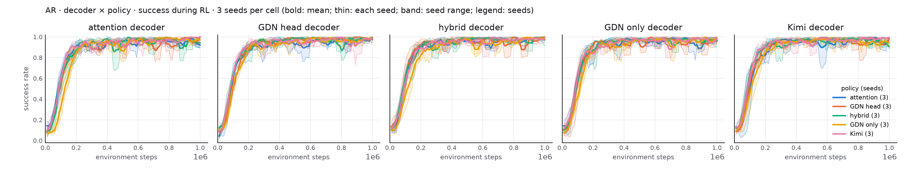
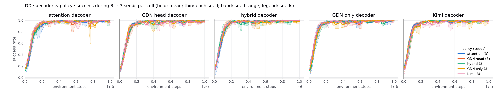
Start 12345 (easy third, rank 15 of 64): all seeds
Trajectories
seed 1seed 2seed 3 · color: episode time (dark violet start, yellow end) · gray cross: failed endpoint · gray T: block start · green T: goal · black dot: pusher start · numbers in each panel: mean steps of successful rollouts per seed, with the success count when not all succeeded
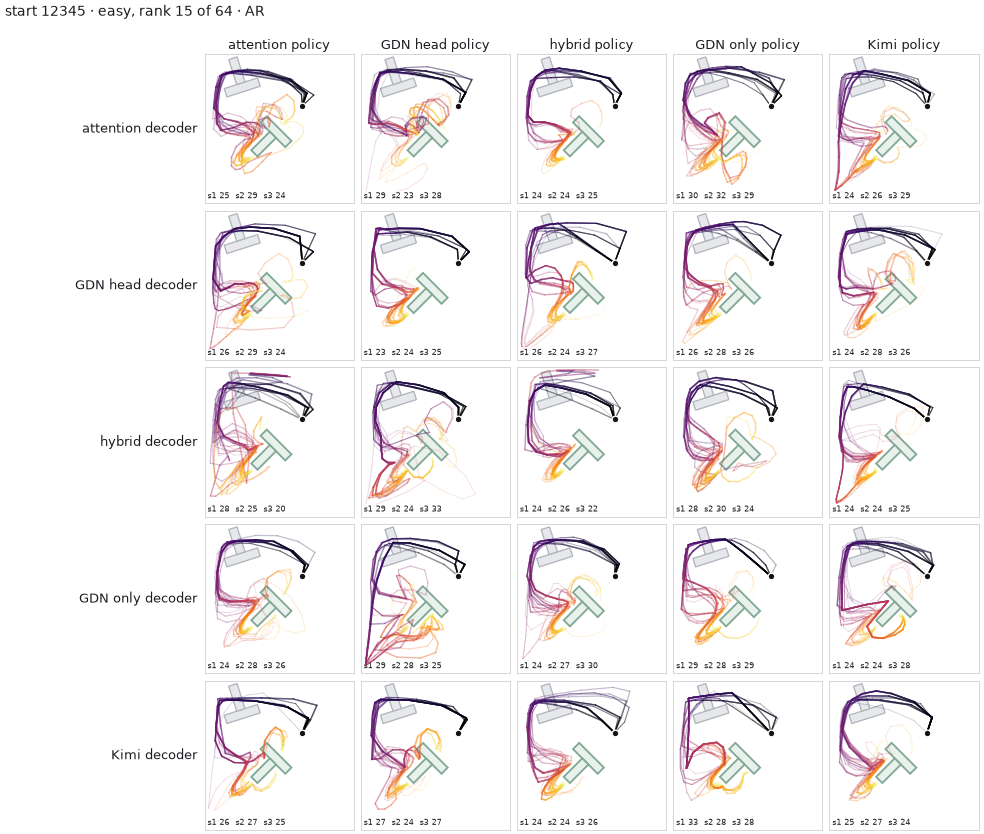
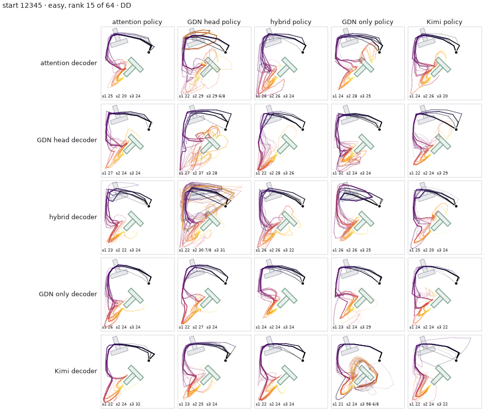
Replays
Pick a seed (or all seeds) above the player. Each panel replays rollouts 0 to 3 of that run and seed from this start, successes and failures alike. The dark disc is the pusher with a fading trail, and the pink cross is the target point (the point the controller pulls the pusher toward). ▶︎/❚❚ plays a panel and ◀ ▶ switch rollouts.
AR
DD
Mechanics
Mechanics table (50 runs, one row per seed)
| Run | Method | Seed | Successes | Steps to success | Median target distance (px) | px/step |
|---|---|---|---|---|---|---|
| attention decoder | attention policy | seed 1 | 16/16 | 25 | 73 | 34.8 |
| seed 2 | 16/16 | 29 | 73 | 34.4 | ||
| seed 3 | 16/16 | 24 | 68 | 35.5 | ||
| mean of 3 seeds | 48/48 | 26 | 71 | 34.9 | ||
| attention decoder | GDN head policy | seed 1 | 8/8 | 29 | 62 | 33.5 |
| seed 2 | 8/8 | 23 | 75 | 38.3 | ||
| seed 3 | 8/8 | 28 | 81 | 36.4 | ||
| mean of 3 seeds | 24/24 | 27 | 72 | 36.1 | ||
| attention decoder | hybrid policy | seed 1 | 8/8 | 24 | 75 | 34.4 |
| seed 2 | 8/8 | 24 | 79 | 34.3 | ||
| seed 3 | 8/8 | 25 | 69 | 33.8 | ||
| mean of 3 seeds | 24/24 | 24 | 74 | 34.1 | ||
| attention decoder | GDN only policy | seed 1 | 8/8 | 30 | 76 | 34.3 |
| seed 2 | 8/8 | 32 | 68 | 31.4 | ||
| seed 3 | 8/8 | 29 | 59 | 28.7 | ||
| mean of 3 seeds | 24/24 | 30 | 68 | 31.5 | ||
| attention decoder | Kimi policy | seed 1 | 8/8 | 24 | 85 | 37.8 |
| seed 2 | 8/8 | 26 | 62 | 33.9 | ||
| seed 3 | 8/8 | 29 | 62 | 33.6 | ||
| mean of 3 seeds | 24/24 | 26 | 70 | 35.1 | ||
| GDN head decoder | attention policy | seed 1 | 8/8 | 26 | 62 | 34.2 |
| seed 2 | 8/8 | 29 | 78 | 36.4 | ||
| seed 3 | 8/8 | 24 | 75 | 40.6 | ||
| mean of 3 seeds | 24/24 | 27 | 72 | 37.0 | ||
| GDN head decoder | GDN head policy | seed 1 | 8/8 | 23 | 61 | 36.6 |
| seed 2 | 8/8 | 24 | 83 | 37.4 | ||
| seed 3 | 8/8 | 25 | 70 | 37.0 | ||
| mean of 3 seeds | 24/24 | 24 | 71 | 37.0 | ||
| GDN head decoder | hybrid policy | seed 1 | 8/8 | 26 | 64 | 31.8 |
| seed 2 | 8/8 | 24 | 75 | 40.3 | ||
| seed 3 | 8/8 | 27 | 63 | 35.9 | ||
| mean of 3 seeds | 24/24 | 26 | 67 | 36.0 | ||
| GDN head decoder | GDN only policy | seed 1 | 8/8 | 26 | 69 | 31.4 |
| seed 2 | 8/8 | 28 | 67 | 31.4 | ||
| seed 3 | 8/8 | 26 | 84 | 36.6 | ||
| mean of 3 seeds | 24/24 | 27 | 73 | 33.1 | ||
| GDN head decoder | Kimi policy | seed 1 | 8/8 | 24 | 70 | 35.9 |
| seed 2 | 8/8 | 28 | 74 | 34.8 | ||
| seed 3 | 8/8 | 26 | 78 | 36.1 | ||
| mean of 3 seeds | 24/24 | 26 | 74 | 35.6 | ||
| hybrid decoder | attention policy | seed 1 | 8/8 | 28 | 76 | 37.4 |
| seed 2 | 8/8 | 25 | 72 | 37.9 | ||
| seed 3 | 8/8 | 20 | 90 | 41.9 | ||
| mean of 3 seeds | 24/24 | 24 | 79 | 39.1 | ||
| hybrid decoder | GDN head policy | seed 1 | 8/8 | 29 | 78 | 34.6 |
| seed 2 | 8/8 | 24 | 65 | 37.5 | ||
| seed 3 | 8/8 | 33 | 86 | 39.3 | ||
| mean of 3 seeds | 24/24 | 29 | 76 | 37.1 | ||
| hybrid decoder | hybrid policy | seed 1 | 8/8 | 24 | 75 | 34.2 |
| seed 2 | 8/8 | 26 | 89 | 39.0 | ||
| seed 3 | 8/8 | 22 | 79 | 37.7 | ||
| mean of 3 seeds | 24/24 | 24 | 81 | 37.0 | ||
| hybrid decoder | GDN only policy | seed 1 | 8/8 | 28 | 75 | 33.8 |
| seed 2 | 8/8 | 30 | 67 | 32.5 | ||
| seed 3 | 8/8 | 24 | 81 | 33.5 | ||
| mean of 3 seeds | 24/24 | 27 | 74 | 33.3 | ||
| hybrid decoder | Kimi policy | seed 1 | 8/8 | 24 | 84 | 35.1 |
| seed 2 | 8/8 | 24 | 87 | 37.5 | ||
| seed 3 | 8/8 | 25 | 69 | 36.8 | ||
| mean of 3 seeds | 24/24 | 24 | 80 | 36.5 | ||
| GDN only decoder | attention policy | seed 1 | 8/8 | 24 | 85 | 34.2 |
| seed 2 | 8/8 | 28 | 73 | 34.5 | ||
| seed 3 | 8/8 | 26 | 89 | 39.9 | ||
| mean of 3 seeds | 24/24 | 26 | 82 | 36.2 | ||
| GDN only decoder | GDN head policy | seed 1 | 8/8 | 29 | 88 | 39.6 |
| seed 2 | 8/8 | 28 | 71 | 34.7 | ||
| seed 3 | 8/8 | 25 | 77 | 35.7 | ||
| mean of 3 seeds | 24/24 | 27 | 79 | 36.7 | ||
| GDN only decoder | hybrid policy | seed 1 | 8/8 | 24 | 70 | 33.9 |
| seed 2 | 8/8 | 27 | 63 | 33.6 | ||
| seed 3 | 8/8 | 30 | 76 | 34.3 | ||
| mean of 3 seeds | 24/24 | 27 | 70 | 33.9 | ||
| GDN only decoder | GDN only policy | seed 1 | 8/8 | 29 | 67 | 29.6 |
| seed 2 | 8/8 | 28 | 70 | 31.0 | ||
| seed 3 | 8/8 | 29 | 65 | 28.1 | ||
| mean of 3 seeds | 24/24 | 28 | 67 | 29.6 | ||
| GDN only decoder | Kimi policy | seed 1 | 8/8 | 24 | 108 | 43.8 |
| seed 2 | 8/8 | 24 | 70 | 36.4 | ||
| seed 3 | 8/8 | 28 | 74 | 36.3 | ||
| mean of 3 seeds | 24/24 | 25 | 84 | 38.8 | ||
| Kimi decoder | attention policy | seed 1 | 8/8 | 26 | 66 | 34.9 |
| seed 2 | 8/8 | 27 | 63 | 35.2 | ||
| seed 3 | 8/8 | 25 | 70 | 35.0 | ||
| mean of 3 seeds | 24/24 | 26 | 66 | 35.0 | ||
| Kimi decoder | GDN head policy | seed 1 | 8/8 | 27 | 57 | 34.8 |
| seed 2 | 8/8 | 24 | 64 | 37.6 | ||
| seed 3 | 8/8 | 27 | 70 | 34.4 | ||
| mean of 3 seeds | 24/24 | 26 | 64 | 35.6 | ||
| Kimi decoder | hybrid policy | seed 1 | 8/8 | 24 | 78 | 35.6 |
| seed 2 | 8/8 | 24 | 73 | 37.9 | ||
| seed 3 | 8/8 | 26 | 70 | 35.6 | ||
| mean of 3 seeds | 24/24 | 24 | 74 | 36.4 | ||
| Kimi decoder | GDN only policy | seed 1 | 8/8 | 33 | 65 | 31.2 |
| seed 2 | 8/8 | 28 | 67 | 29.8 | ||
| seed 3 | 8/8 | 28 | 75 | 32.8 | ||
| mean of 3 seeds | 24/24 | 30 | 69 | 31.3 | ||
| Kimi decoder | Kimi policy | seed 1 | 8/8 | 25 | 59 | 32.7 |
| seed 2 | 8/8 | 27 | 67 | 34.3 | ||
| seed 3 | 8/8 | 24 | 82 | 36.3 | ||
| mean of 3 seeds | 24/24 | 25 | 70 | 34.4 | ||
| attention decoder | attention policy | seed 1 | 16/16 | 25 | 66 | 34.0 |
| seed 2 | 16/16 | 20 | 82 | 40.7 | ||
| seed 3 | 16/16 | 24 | 75 | 37.2 | ||
| mean of 3 seeds | 48/48 | 23 | 75 | 37.3 | ||
| attention decoder | GDN head policy | seed 1 | 8/8 | 22 | 53 | 39.1 |
| seed 2 | 8/8 | 29 | 72 | 36.2 | ||
| seed 3 | 6/8 | 29 | 68 | 34.3 | ||
| mean of 3 seeds | 22/24 | 27 | 64 | 36.5 | ||
| attention decoder | hybrid policy | seed 1 | 8/8 | 26 | 72 | 41.8 |
| seed 2 | 8/8 | 26 | 68 | 35.3 | ||
| seed 3 | 8/8 | 24 | 90 | 41.1 | ||
| mean of 3 seeds | 24/24 | 25 | 76 | 39.4 | ||
| attention decoder | GDN only policy | seed 1 | 8/8 | 24 | 69 | 36.8 |
| seed 2 | 8/8 | 28 | 81 | 37.0 | ||
| seed 3 | 8/8 | 25 | 60 | 33.6 | ||
| mean of 3 seeds | 24/24 | 26 | 70 | 35.8 | ||
| attention decoder | Kimi policy | seed 1 | 8/8 | 24 | 86 | 35.1 |
| seed 2 | 8/8 | 26 | 66 | 36.9 | ||
| seed 3 | 8/8 | 20 | 82 | 41.7 | ||
| mean of 3 seeds | 24/24 | 24 | 78 | 37.9 | ||
| GDN head decoder | attention policy | seed 1 | 8/8 | 27 | 65 | 35.3 |
| seed 2 | 8/8 | 24 | 71 | 36.6 | ||
| seed 3 | 8/8 | 24 | 60 | 35.7 | ||
| mean of 3 seeds | 24/24 | 25 | 65 | 35.9 | ||
| GDN head decoder | GDN head policy | seed 1 | 8/8 | 27 | 81 | 39.2 |
| seed 2 | 8/8 | 37 | 70 | 36.4 | ||
| seed 3 | 8/8 | 28 | 85 | 41.6 | ||
| mean of 3 seeds | 24/24 | 31 | 78 | 39.1 | ||
| GDN head decoder | hybrid policy | seed 1 | 8/8 | 22 | 76 | 38.4 |
| seed 2 | 8/8 | 28 | 70 | 36.0 | ||
| seed 3 | 8/8 | 26 | 68 | 35.2 | ||
| mean of 3 seeds | 24/24 | 26 | 71 | 36.5 | ||
| GDN head decoder | GDN only policy | seed 1 | 8/8 | 32 | 71 | 35.3 |
| seed 2 | 8/8 | 24 | 64 | 35.3 | ||
| seed 3 | 8/8 | 24 | 67 | 35.9 | ||
| mean of 3 seeds | 24/24 | 27 | 67 | 35.5 | ||
| GDN head decoder | Kimi policy | seed 1 | 8/8 | 22 | 79 | 38.6 |
| seed 2 | 8/8 | 24 | 73 | 35.0 | ||
| seed 3 | 8/8 | 29 | 83 | 37.8 | ||
| mean of 3 seeds | 24/24 | 25 | 78 | 37.1 | ||
| hybrid decoder | attention policy | seed 1 | 8/8 | 23 | 79 | 38.9 |
| seed 2 | 8/8 | 22 | 89 | 43.0 | ||
| seed 3 | 8/8 | 24 | 81 | 41.6 | ||
| mean of 3 seeds | 24/24 | 23 | 83 | 41.2 | ||
| hybrid decoder | GDN head policy | seed 1 | 8/8 | 22 | 82 | 40.8 |
| seed 2 | 7/8 | 30 | 84 | 44.1 | ||
| seed 3 | 8/8 | 31 | 82 | 36.1 | ||
| mean of 3 seeds | 23/24 | 27 | 83 | 40.3 | ||
| hybrid decoder | hybrid policy | seed 1 | 8/8 | 26 | 77 | 39.4 |
| seed 2 | 8/8 | 26 | 82 | 36.9 | ||
| seed 3 | 8/8 | 22 | 89 | 39.2 | ||
| mean of 3 seeds | 24/24 | 24 | 83 | 38.5 | ||
| hybrid decoder | GDN only policy | seed 1 | 8/8 | 26 | 104 | 47.6 |
| seed 2 | 8/8 | 26 | 57 | 35.0 | ||
| seed 3 | 8/8 | 25 | 75 | 37.8 | ||
| mean of 3 seeds | 24/24 | 26 | 79 | 40.1 | ||
| hybrid decoder | Kimi policy | seed 1 | 8/8 | 25 | 83 | 38.8 |
| seed 2 | 8/8 | 20 | 83 | 36.8 | ||
| seed 3 | 8/8 | 24 | 84 | 38.3 | ||
| mean of 3 seeds | 24/24 | 23 | 84 | 38.0 | ||
| GDN only decoder | attention policy | seed 1 | 8/8 | 26 | 84 | 37.6 |
| seed 2 | 8/8 | 24 | 90 | 38.8 | ||
| seed 3 | 8/8 | 24 | 85 | 35.6 | ||
| mean of 3 seeds | 24/24 | 25 | 86 | 37.3 | ||
| GDN only decoder | GDN head policy | seed 1 | 8/8 | 22 | 104 | 40.9 |
| seed 2 | 8/8 | 27 | 59 | 33.7 | ||
| seed 3 | 8/8 | 24 | 68 | 36.5 | ||
| mean of 3 seeds | 24/24 | 24 | 77 | 37.0 | ||
| GDN only decoder | hybrid policy | seed 1 | 8/8 | 24 | 65 | 34.7 |
| seed 2 | 8/8 | 24 | 70 | 36.5 | ||
| seed 3 | 8/8 | 24 | 67 | 34.8 | ||
| mean of 3 seeds | 24/24 | 24 | 67 | 35.3 | ||
| GDN only decoder | GDN only policy | seed 1 | 8/8 | 23 | 67 | 37.8 |
| seed 2 | 8/8 | 24 | 67 | 36.9 | ||
| seed 3 | 8/8 | 29 | 83 | 37.7 | ||
| mean of 3 seeds | 24/24 | 25 | 73 | 37.5 | ||
| GDN only decoder | Kimi policy | seed 1 | 8/8 | 24 | 84 | 39.1 |
| seed 2 | 8/8 | 24 | 71 | 35.2 | ||
| seed 3 | 8/8 | 22 | 67 | 34.7 | ||
| mean of 3 seeds | 24/24 | 24 | 74 | 36.3 | ||
| Kimi decoder | attention policy | seed 1 | 8/8 | 22 | 94 | 43.6 |
| seed 2 | 8/8 | 24 | 59 | 35.7 | ||
| seed 3 | 8/8 | 32 | 69 | 34.8 | ||
| mean of 3 seeds | 24/24 | 26 | 74 | 38.0 | ||
| Kimi decoder | GDN head policy | seed 1 | 8/8 | 23 | 92 | 39.6 |
| seed 2 | 8/8 | 25 | 84 | 39.2 | ||
| seed 3 | 8/8 | 24 | 109 | 43.6 | ||
| mean of 3 seeds | 24/24 | 24 | 95 | 40.8 | ||
| Kimi decoder | hybrid policy | seed 1 | 8/8 | 22 | 96 | 43.1 |
| seed 2 | 8/8 | 24 | 82 | 36.7 | ||
| seed 3 | 8/8 | 24 | 73 | 38.1 | ||
| mean of 3 seeds | 24/24 | 23 | 84 | 39.3 | ||
| Kimi decoder | GDN only policy | seed 1 | 8/8 | 21 | 92 | 43.2 |
| seed 2 | 8/8 | 24 | 64 | 34.7 | ||
| seed 3 | 6/8 | 98 | 86 | 34.5 | ||
| mean of 3 seeds | 22/24 | 48 | 80 | 37.5 | ||
| Kimi decoder | Kimi policy | seed 1 | 8/8 | 22 | 82 | 42.1 |
| seed 2 | 8/8 | 24 | 95 | 44.2 | ||
| seed 3 | 8/8 | 22 | 78 | 41.0 | ||
| mean of 3 seeds | 24/24 | 22 | 85 | 42.4 |
All rollouts from start 12345 in the evaluation on the 64 test starts (8 or 16 per seed, final checkpoints, every outcome). Steps, target distance and speed are over successful rollouts; the seed-mean row averages the per-seed values and sums the success counts.
Start 3942: trajectories, replays and mechanics (median third, rank 32 of 64)
Trajectories
seed 1seed 2seed 3 · color: episode time (dark violet start, yellow end) · gray cross: failed endpoint · gray T: block start · green T: goal · black dot: pusher start · numbers in each panel: mean steps of successful rollouts per seed, with the success count when not all succeeded
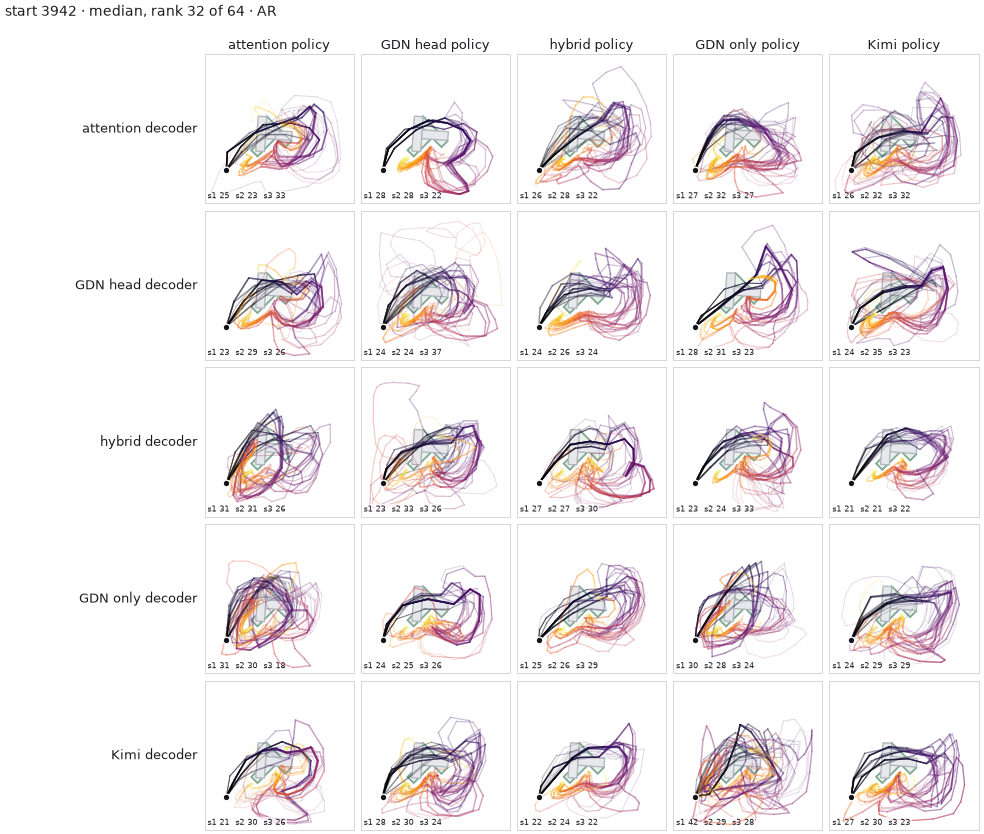
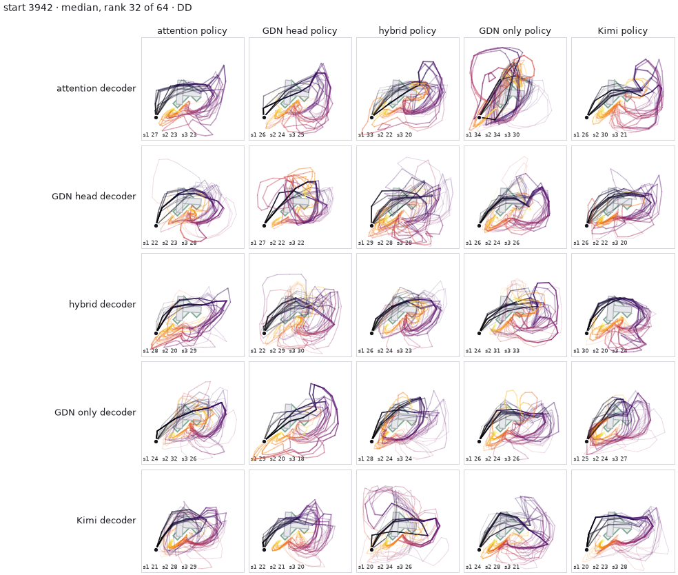
Replays
Pick a seed (or all seeds) above the player. Each panel replays rollouts 0 to 3 of that run and seed from this start, successes and failures alike. The dark disc is the pusher with a fading trail, and the pink cross is the target point (the point the controller pulls the pusher toward). ▶︎/❚❚ plays a panel and ◀ ▶ switch rollouts.
AR
DD
Mechanics
Mechanics table (50 runs, one row per seed)
| Run | Method | Seed | Successes | Steps to success | Median target distance (px) | px/step |
|---|---|---|---|---|---|---|
| attention decoder | attention policy | seed 1 | 16/16 | 25 | 69 | 36.6 |
| seed 2 | 16/16 | 23 | 74 | 37.5 | ||
| seed 3 | 16/16 | 33 | 101 | 40.9 | ||
| mean of 3 seeds | 48/48 | 27 | 81 | 38.3 | ||
| attention decoder | GDN head policy | seed 1 | 8/8 | 28 | 98 | 37.3 |
| seed 2 | 8/8 | 28 | 84 | 37.4 | ||
| seed 3 | 8/8 | 22 | 69 | 38.0 | ||
| mean of 3 seeds | 24/24 | 26 | 84 | 37.6 | ||
| attention decoder | hybrid policy | seed 1 | 8/8 | 26 | 81 | 36.2 |
| seed 2 | 8/8 | 28 | 78 | 37.1 | ||
| seed 3 | 8/8 | 22 | 61 | 33.9 | ||
| mean of 3 seeds | 24/24 | 26 | 73 | 35.7 | ||
| attention decoder | GDN only policy | seed 1 | 8/8 | 27 | 86 | 34.1 |
| seed 2 | 8/8 | 32 | 85 | 34.4 | ||
| seed 3 | 8/8 | 27 | 77 | 35.8 | ||
| mean of 3 seeds | 24/24 | 29 | 82 | 34.8 | ||
| attention decoder | Kimi policy | seed 1 | 8/8 | 26 | 101 | 41.4 |
| seed 2 | 8/8 | 32 | 95 | 41.3 | ||
| seed 3 | 8/8 | 32 | 79 | 38.0 | ||
| mean of 3 seeds | 24/24 | 30 | 92 | 40.2 | ||
| GDN head decoder | attention policy | seed 1 | 8/8 | 23 | 96 | 43.1 |
| seed 2 | 8/8 | 29 | 86 | 39.4 | ||
| seed 3 | 8/8 | 26 | 103 | 39.9 | ||
| mean of 3 seeds | 24/24 | 26 | 95 | 40.8 | ||
| GDN head decoder | GDN head policy | seed 1 | 8/8 | 24 | 92 | 37.4 |
| seed 2 | 8/8 | 24 | 78 | 35.7 | ||
| seed 3 | 8/8 | 37 | 92 | 39.3 | ||
| mean of 3 seeds | 24/24 | 29 | 87 | 37.5 | ||
| GDN head decoder | hybrid policy | seed 1 | 8/8 | 24 | 90 | 37.9 |
| seed 2 | 8/8 | 26 | 95 | 41.1 | ||
| seed 3 | 8/8 | 24 | 74 | 36.3 | ||
| mean of 3 seeds | 24/24 | 25 | 86 | 38.5 | ||
| GDN head decoder | GDN only policy | seed 1 | 8/8 | 28 | 79 | 36.4 |
| seed 2 | 8/8 | 31 | 90 | 37.2 | ||
| seed 3 | 8/8 | 23 | 84 | 38.2 | ||
| mean of 3 seeds | 24/24 | 27 | 84 | 37.3 | ||
| GDN head decoder | Kimi policy | seed 1 | 8/8 | 24 | 93 | 39.4 |
| seed 2 | 8/8 | 35 | 97 | 43.9 | ||
| seed 3 | 8/8 | 23 | 89 | 38.7 | ||
| mean of 3 seeds | 24/24 | 27 | 93 | 40.7 | ||
| hybrid decoder | attention policy | seed 1 | 8/8 | 31 | 98 | 37.3 |
| seed 2 | 8/8 | 31 | 71 | 35.4 | ||
| seed 3 | 8/8 | 26 | 54 | 35.3 | ||
| mean of 3 seeds | 24/24 | 30 | 74 | 36.0 | ||
| hybrid decoder | GDN head policy | seed 1 | 8/8 | 23 | 74 | 37.2 |
| seed 2 | 8/8 | 33 | 89 | 39.2 | ||
| seed 3 | 8/8 | 26 | 80 | 37.8 | ||
| mean of 3 seeds | 24/24 | 27 | 81 | 38.1 | ||
| hybrid decoder | hybrid policy | seed 1 | 8/8 | 27 | 109 | 39.1 |
| seed 2 | 8/8 | 27 | 98 | 39.5 | ||
| seed 3 | 8/8 | 30 | 75 | 36.0 | ||
| mean of 3 seeds | 24/24 | 28 | 94 | 38.2 | ||
| hybrid decoder | GDN only policy | seed 1 | 8/8 | 23 | 88 | 39.2 |
| seed 2 | 8/8 | 24 | 84 | 31.3 | ||
| seed 3 | 8/8 | 33 | 64 | 32.6 | ||
| mean of 3 seeds | 24/24 | 27 | 79 | 34.3 | ||
| hybrid decoder | Kimi policy | seed 1 | 8/8 | 21 | 68 | 38.1 |
| seed 2 | 8/8 | 21 | 95 | 37.4 | ||
| seed 3 | 8/8 | 22 | 96 | 39.8 | ||
| mean of 3 seeds | 24/24 | 21 | 86 | 38.4 | ||
| GDN only decoder | attention policy | seed 1 | 8/8 | 31 | 94 | 37.9 |
| seed 2 | 8/8 | 30 | 113 | 46.6 | ||
| seed 3 | 8/8 | 18 | 118 | 42.8 | ||
| mean of 3 seeds | 24/24 | 26 | 108 | 42.4 | ||
| GDN only decoder | GDN head policy | seed 1 | 8/8 | 24 | 87 | 39.8 |
| seed 2 | 8/8 | 25 | 76 | 33.7 | ||
| seed 3 | 8/8 | 26 | 88 | 39.9 | ||
| mean of 3 seeds | 24/24 | 25 | 84 | 37.8 | ||
| GDN only decoder | hybrid policy | seed 1 | 8/8 | 25 | 72 | 35.4 |
| seed 2 | 8/8 | 26 | 80 | 33.8 | ||
| seed 3 | 8/8 | 29 | 74 | 31.5 | ||
| mean of 3 seeds | 24/24 | 27 | 75 | 33.6 | ||
| GDN only decoder | GDN only policy | seed 1 | 8/8 | 30 | 83 | 37.0 |
| seed 2 | 8/8 | 28 | 75 | 31.8 | ||
| seed 3 | 8/8 | 24 | 69 | 36.5 | ||
| mean of 3 seeds | 24/24 | 27 | 75 | 35.1 | ||
| GDN only decoder | Kimi policy | seed 1 | 8/8 | 24 | 91 | 38.8 |
| seed 2 | 8/8 | 29 | 84 | 38.6 | ||
| seed 3 | 8/8 | 29 | 73 | 37.2 | ||
| mean of 3 seeds | 24/24 | 27 | 83 | 38.2 | ||
| Kimi decoder | attention policy | seed 1 | 8/8 | 21 | 93 | 37.2 |
| seed 2 | 8/8 | 30 | 107 | 41.3 | ||
| seed 3 | 8/8 | 26 | 87 | 37.8 | ||
| mean of 3 seeds | 24/24 | 26 | 96 | 38.8 | ||
| Kimi decoder | GDN head policy | seed 1 | 8/8 | 28 | 87 | 38.0 |
| seed 2 | 8/8 | 30 | 75 | 37.2 | ||
| seed 3 | 8/8 | 24 | 91 | 38.6 | ||
| mean of 3 seeds | 24/24 | 27 | 85 | 38.0 | ||
| Kimi decoder | hybrid policy | seed 1 | 8/8 | 22 | 80 | 36.3 |
| seed 2 | 8/8 | 24 | 95 | 38.5 | ||
| seed 3 | 8/8 | 22 | 74 | 38.0 | ||
| mean of 3 seeds | 24/24 | 23 | 83 | 37.6 | ||
| Kimi decoder | GDN only policy | seed 1 | 8/8 | 42 | 82 | 36.9 |
| seed 2 | 8/8 | 29 | 83 | 33.8 | ||
| seed 3 | 8/8 | 28 | 93 | 40.1 | ||
| mean of 3 seeds | 24/24 | 33 | 86 | 36.9 | ||
| Kimi decoder | Kimi policy | seed 1 | 8/8 | 27 | 83 | 35.0 |
| seed 2 | 8/8 | 30 | 103 | 42.6 | ||
| seed 3 | 8/8 | 23 | 78 | 36.8 | ||
| mean of 3 seeds | 24/24 | 26 | 88 | 38.1 | ||
| attention decoder | attention policy | seed 1 | 16/16 | 27 | 70 | 38.0 |
| seed 2 | 16/16 | 23 | 76 | 37.8 | ||
| seed 3 | 16/16 | 23 | 49 | 35.6 | ||
| mean of 3 seeds | 48/48 | 24 | 65 | 37.2 | ||
| attention decoder | GDN head policy | seed 1 | 8/8 | 26 | 101 | 41.5 |
| seed 2 | 8/8 | 24 | 52 | 36.4 | ||
| seed 3 | 8/8 | 25 | 93 | 41.7 | ||
| mean of 3 seeds | 24/24 | 25 | 82 | 39.8 | ||
| attention decoder | hybrid policy | seed 1 | 8/8 | 33 | 81 | 39.5 |
| seed 2 | 8/8 | 22 | 59 | 37.3 | ||
| seed 3 | 8/8 | 20 | 86 | 42.7 | ||
| mean of 3 seeds | 24/24 | 25 | 75 | 39.8 | ||
| attention decoder | GDN only policy | seed 1 | 8/8 | 34 | 86 | 41.8 |
| seed 2 | 8/8 | 34 | 133 | 51.7 | ||
| seed 3 | 8/8 | 30 | 72 | 38.6 | ||
| mean of 3 seeds | 24/24 | 33 | 97 | 44.0 | ||
| attention decoder | Kimi policy | seed 1 | 8/8 | 26 | 109 | 44.0 |
| seed 2 | 8/8 | 30 | 90 | 39.0 | ||
| seed 3 | 8/8 | 21 | 74 | 40.4 | ||
| mean of 3 seeds | 24/24 | 26 | 91 | 41.1 | ||
| GDN head decoder | attention policy | seed 1 | 8/8 | 22 | 92 | 38.8 |
| seed 2 | 8/8 | 23 | 78 | 38.5 | ||
| seed 3 | 8/8 | 28 | 72 | 39.1 | ||
| mean of 3 seeds | 24/24 | 24 | 81 | 38.8 | ||
| GDN head decoder | GDN head policy | seed 1 | 8/8 | 27 | 97 | 44.9 |
| seed 2 | 8/8 | 22 | 63 | 37.0 | ||
| seed 3 | 8/8 | 22 | 73 | 38.2 | ||
| mean of 3 seeds | 24/24 | 24 | 78 | 40.1 | ||
| GDN head decoder | hybrid policy | seed 1 | 8/8 | 29 | 95 | 41.2 |
| seed 2 | 8/8 | 28 | 80 | 40.5 | ||
| seed 3 | 8/8 | 28 | 109 | 45.4 | ||
| mean of 3 seeds | 24/24 | 28 | 95 | 42.4 | ||
| GDN head decoder | GDN only policy | seed 1 | 8/8 | 26 | 88 | 40.9 |
| seed 2 | 8/8 | 24 | 95 | 39.6 | ||
| seed 3 | 8/8 | 26 | 91 | 41.2 | ||
| mean of 3 seeds | 24/24 | 25 | 92 | 40.6 | ||
| GDN head decoder | Kimi policy | seed 1 | 8/8 | 26 | 86 | 40.0 |
| seed 2 | 8/8 | 22 | 84 | 38.8 | ||
| seed 3 | 8/8 | 20 | 69 | 39.3 | ||
| mean of 3 seeds | 24/24 | 23 | 80 | 39.4 | ||
| hybrid decoder | attention policy | seed 1 | 8/8 | 28 | 93 | 40.7 |
| seed 2 | 8/8 | 20 | 71 | 41.2 | ||
| seed 3 | 8/8 | 29 | 66 | 36.1 | ||
| mean of 3 seeds | 24/24 | 25 | 77 | 39.4 | ||
| hybrid decoder | GDN head policy | seed 1 | 8/8 | 22 | 84 | 40.9 |
| seed 2 | 8/8 | 29 | 95 | 43.6 | ||
| seed 3 | 8/8 | 30 | 83 | 39.1 | ||
| mean of 3 seeds | 24/24 | 27 | 87 | 41.2 | ||
| hybrid decoder | hybrid policy | seed 1 | 8/8 | 26 | 60 | 35.2 |
| seed 2 | 8/8 | 24 | 87 | 42.3 | ||
| seed 3 | 8/8 | 23 | 91 | 41.1 | ||
| mean of 3 seeds | 24/24 | 25 | 79 | 39.5 | ||
| hybrid decoder | GDN only policy | seed 1 | 8/8 | 24 | 104 | 44.0 |
| seed 2 | 8/8 | 31 | 100 | 38.6 | ||
| seed 3 | 8/8 | 33 | 79 | 40.5 | ||
| mean of 3 seeds | 24/24 | 30 | 94 | 41.0 | ||
| hybrid decoder | Kimi policy | seed 1 | 8/8 | 30 | 83 | 36.0 |
| seed 2 | 8/8 | 20 | 76 | 36.5 | ||
| seed 3 | 8/8 | 24 | 79 | 39.1 | ||
| mean of 3 seeds | 24/24 | 25 | 79 | 37.2 | ||
| GDN only decoder | attention policy | seed 1 | 8/8 | 24 | 64 | 38.4 |
| seed 2 | 8/8 | 32 | 77 | 38.7 | ||
| seed 3 | 8/8 | 26 | 74 | 38.2 | ||
| mean of 3 seeds | 24/24 | 27 | 71 | 38.4 | ||
| GDN only decoder | GDN head policy | seed 1 | 8/8 | 29 | 106 | 43.0 |
| seed 2 | 8/8 | 20 | 74 | 43.7 | ||
| seed 3 | 8/8 | 18 | 89 | 46.3 | ||
| mean of 3 seeds | 24/24 | 23 | 90 | 44.3 | ||
| GDN only decoder | hybrid policy | seed 1 | 8/8 | 28 | 56 | 34.4 |
| seed 2 | 8/8 | 24 | 70 | 39.0 | ||
| seed 3 | 8/8 | 24 | 82 | 42.0 | ||
| mean of 3 seeds | 24/24 | 25 | 70 | 38.5 | ||
| GDN only decoder | GDN only policy | seed 1 | 8/8 | 26 | 78 | 40.3 |
| seed 2 | 8/8 | 24 | 105 | 42.6 | ||
| seed 3 | 8/8 | 26 | 83 | 42.0 | ||
| mean of 3 seeds | 24/24 | 25 | 89 | 41.6 | ||
| GDN only decoder | Kimi policy | seed 1 | 8/8 | 25 | 86 | 37.7 |
| seed 2 | 8/8 | 24 | 91 | 39.5 | ||
| seed 3 | 8/8 | 27 | 83 | 38.6 | ||
| mean of 3 seeds | 24/24 | 25 | 87 | 38.6 | ||
| Kimi decoder | attention policy | seed 1 | 8/8 | 21 | 77 | 39.2 |
| seed 2 | 8/8 | 28 | 103 | 45.0 | ||
| seed 3 | 8/8 | 29 | 98 | 42.3 | ||
| mean of 3 seeds | 24/24 | 26 | 93 | 42.2 | ||
| Kimi decoder | GDN head policy | seed 1 | 8/8 | 22 | 86 | 39.5 |
| seed 2 | 8/8 | 21 | 79 | 39.9 | ||
| seed 3 | 8/8 | 20 | 105 | 44.4 | ||
| mean of 3 seeds | 24/24 | 21 | 90 | 41.3 | ||
| Kimi decoder | hybrid policy | seed 1 | 8/8 | 20 | 92 | 40.9 |
| seed 2 | 8/8 | 34 | 99 | 44.4 | ||
| seed 3 | 8/8 | 26 | 101 | 47.6 | ||
| mean of 3 seeds | 24/24 | 27 | 97 | 44.3 | ||
| Kimi decoder | GDN only policy | seed 1 | 8/8 | 24 | 80 | 41.6 |
| seed 2 | 8/8 | 28 | 94 | 40.4 | ||
| seed 3 | 8/8 | 21 | 68 | 39.4 | ||
| mean of 3 seeds | 24/24 | 24 | 81 | 40.5 | ||
| Kimi decoder | Kimi policy | seed 1 | 8/8 | 20 | 72 | 41.0 |
| seed 2 | 8/8 | 23 | 61 | 39.0 | ||
| seed 3 | 8/8 | 28 | 95 | 45.2 | ||
| mean of 3 seeds | 24/24 | 24 | 76 | 41.8 |
All rollouts from start 3942 in the evaluation on the 64 test starts (8 or 16 per seed, final checkpoints, every outcome). Steps, target distance and speed are over successful rollouts; the seed-mean row averages the per-seed values and sums the success counts.
Start 8039: trajectories, replays and mechanics (hard third, rank 53 of 64)
Trajectories
seed 1seed 2seed 3 · color: episode time (dark violet start, yellow end) · gray cross: failed endpoint · gray T: block start · green T: goal · black dot: pusher start · numbers in each panel: mean steps of successful rollouts per seed, with the success count when not all succeeded
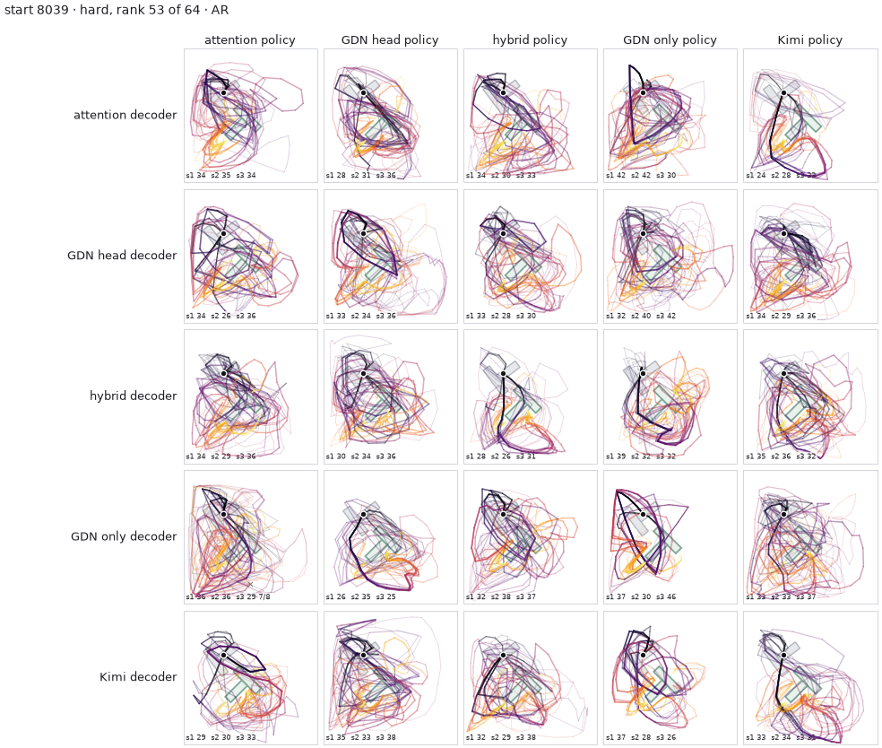
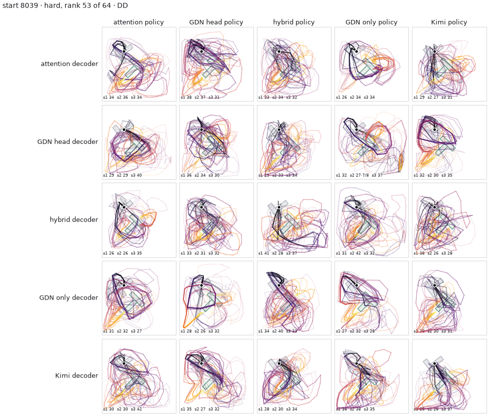
Replays
Pick a seed (or all seeds) above the player. Each panel replays rollouts 0 to 3 of that run and seed from this start, successes and failures alike. The dark disc is the pusher with a fading trail, and the pink cross is the target point (the point the controller pulls the pusher toward). ▶︎/❚❚ plays a panel and ◀ ▶ switch rollouts.
AR
DD
Mechanics
Mechanics table (50 runs, one row per seed)
| Run | Method | Seed | Successes | Steps to success | Median target distance (px) | px/step |
|---|---|---|---|---|---|---|
| attention decoder | attention policy | seed 1 | 16/16 | 34 | 93 | 39.4 |
| seed 2 | 16/16 | 35 | 89 | 39.1 | ||
| seed 3 | 16/16 | 34 | 95 | 40.1 | ||
| mean of 3 seeds | 48/48 | 34 | 93 | 39.5 | ||
| attention decoder | GDN head policy | seed 1 | 8/8 | 28 | 112 | 45.2 |
| seed 2 | 8/8 | 31 | 96 | 41.2 | ||
| seed 3 | 8/8 | 36 | 96 | 40.8 | ||
| mean of 3 seeds | 24/24 | 32 | 101 | 42.4 | ||
| attention decoder | hybrid policy | seed 1 | 8/8 | 34 | 98 | 40.7 |
| seed 2 | 8/8 | 30 | 94 | 40.1 | ||
| seed 3 | 8/8 | 33 | 91 | 37.8 | ||
| mean of 3 seeds | 24/24 | 33 | 94 | 39.5 | ||
| attention decoder | GDN only policy | seed 1 | 8/8 | 42 | 79 | 39.8 |
| seed 2 | 8/8 | 42 | 77 | 32.4 | ||
| seed 3 | 8/8 | 30 | 77 | 36.9 | ||
| mean of 3 seeds | 24/24 | 38 | 78 | 36.4 | ||
| attention decoder | Kimi policy | seed 1 | 8/8 | 24 | 74 | 35.7 |
| seed 2 | 8/8 | 28 | 80 | 32.2 | ||
| seed 3 | 8/8 | 33 | 107 | 47.3 | ||
| mean of 3 seeds | 24/24 | 28 | 87 | 38.4 | ||
| GDN head decoder | attention policy | seed 1 | 8/8 | 34 | 102 | 45.5 |
| seed 2 | 8/8 | 26 | 81 | 36.7 | ||
| seed 3 | 8/8 | 36 | 81 | 38.1 | ||
| mean of 3 seeds | 24/24 | 32 | 88 | 40.1 | ||
| GDN head decoder | GDN head policy | seed 1 | 8/8 | 33 | 105 | 42.9 |
| seed 2 | 8/8 | 34 | 104 | 41.6 | ||
| seed 3 | 8/8 | 36 | 82 | 37.4 | ||
| mean of 3 seeds | 24/24 | 34 | 97 | 40.6 | ||
| GDN head decoder | hybrid policy | seed 1 | 8/8 | 33 | 105 | 42.2 |
| seed 2 | 8/8 | 28 | 74 | 32.2 | ||
| seed 3 | 8/8 | 30 | 100 | 39.8 | ||
| mean of 3 seeds | 24/24 | 30 | 93 | 38.0 | ||
| GDN head decoder | GDN only policy | seed 1 | 8/8 | 32 | 88 | 37.1 |
| seed 2 | 8/8 | 40 | 82 | 34.5 | ||
| seed 3 | 8/8 | 42 | 64 | 28.7 | ||
| mean of 3 seeds | 24/24 | 38 | 78 | 33.4 | ||
| GDN head decoder | Kimi policy | seed 1 | 8/8 | 34 | 101 | 41.7 |
| seed 2 | 8/8 | 29 | 83 | 38.3 | ||
| seed 3 | 8/8 | 36 | 101 | 45.9 | ||
| mean of 3 seeds | 24/24 | 33 | 95 | 42.0 | ||
| hybrid decoder | attention policy | seed 1 | 8/8 | 34 | 91 | 35.7 |
| seed 2 | 8/8 | 29 | 96 | 44.6 | ||
| seed 3 | 8/8 | 36 | 96 | 38.5 | ||
| mean of 3 seeds | 24/24 | 33 | 94 | 39.6 | ||
| hybrid decoder | GDN head policy | seed 1 | 8/8 | 30 | 111 | 42.7 |
| seed 2 | 8/8 | 34 | 93 | 40.4 | ||
| seed 3 | 8/8 | 36 | 106 | 45.6 | ||
| mean of 3 seeds | 24/24 | 34 | 103 | 42.9 | ||
| hybrid decoder | hybrid policy | seed 1 | 8/8 | 28 | 56 | 26.3 |
| seed 2 | 8/8 | 26 | 84 | 34.7 | ||
| seed 3 | 8/8 | 31 | 98 | 39.2 | ||
| mean of 3 seeds | 24/24 | 28 | 79 | 33.4 | ||
| hybrid decoder | GDN only policy | seed 1 | 8/8 | 39 | 87 | 35.7 |
| seed 2 | 8/8 | 32 | 63 | 26.9 | ||
| seed 3 | 8/8 | 32 | 72 | 33.7 | ||
| mean of 3 seeds | 24/24 | 34 | 74 | 32.1 | ||
| hybrid decoder | Kimi policy | seed 1 | 8/8 | 35 | 106 | 41.9 |
| seed 2 | 8/8 | 36 | 66 | 25.6 | ||
| seed 3 | 8/8 | 32 | 93 | 39.5 | ||
| mean of 3 seeds | 24/24 | 34 | 88 | 35.7 | ||
| GDN only decoder | attention policy | seed 1 | 8/8 | 36 | 79 | 35.4 |
| seed 2 | 8/8 | 36 | 92 | 39.8 | ||
| seed 3 | 7/8 | 29 | 152 | 53.3 | ||
| mean of 3 seeds | 23/24 | 34 | 108 | 42.8 | ||
| GDN only decoder | GDN head policy | seed 1 | 8/8 | 26 | 71 | 29.5 |
| seed 2 | 8/8 | 35 | 102 | 42.3 | ||
| seed 3 | 8/8 | 25 | 147 | 51.0 | ||
| mean of 3 seeds | 24/24 | 29 | 107 | 40.9 | ||
| GDN only decoder | hybrid policy | seed 1 | 8/8 | 32 | 92 | 39.5 |
| seed 2 | 8/8 | 38 | 79 | 33.8 | ||
| seed 3 | 8/8 | 37 | 81 | 35.1 | ||
| mean of 3 seeds | 24/24 | 36 | 84 | 36.1 | ||
| GDN only decoder | GDN only policy | seed 1 | 8/8 | 37 | 89 | 40.6 |
| seed 2 | 8/8 | 30 | 70 | 30.4 | ||
| seed 3 | 8/8 | 46 | 67 | 35.8 | ||
| mean of 3 seeds | 24/24 | 38 | 76 | 35.6 | ||
| GDN only decoder | Kimi policy | seed 1 | 8/8 | 33 | 85 | 35.4 |
| seed 2 | 8/8 | 33 | 96 | 41.6 | ||
| seed 3 | 8/8 | 37 | 94 | 40.1 | ||
| mean of 3 seeds | 24/24 | 34 | 92 | 39.0 | ||
| Kimi decoder | attention policy | seed 1 | 8/8 | 29 | 96 | 40.0 |
| seed 2 | 8/8 | 30 | 91 | 37.4 | ||
| seed 3 | 8/8 | 33 | 118 | 45.5 | ||
| mean of 3 seeds | 24/24 | 31 | 102 | 41.0 | ||
| Kimi decoder | GDN head policy | seed 1 | 8/8 | 35 | 92 | 38.9 |
| seed 2 | 8/8 | 33 | 79 | 38.0 | ||
| seed 3 | 8/8 | 38 | 99 | 40.6 | ||
| mean of 3 seeds | 24/24 | 35 | 90 | 39.1 | ||
| Kimi decoder | hybrid policy | seed 1 | 8/8 | 32 | 87 | 38.4 |
| seed 2 | 8/8 | 29 | 69 | 28.8 | ||
| seed 3 | 8/8 | 38 | 108 | 41.4 | ||
| mean of 3 seeds | 24/24 | 33 | 88 | 36.2 | ||
| Kimi decoder | GDN only policy | seed 1 | 8/8 | 37 | 89 | 36.9 |
| seed 2 | 8/8 | 28 | 66 | 31.3 | ||
| seed 3 | 8/8 | 26 | 70 | 30.5 | ||
| mean of 3 seeds | 24/24 | 31 | 75 | 32.9 | ||
| Kimi decoder | Kimi policy | seed 1 | 8/8 | 33 | 71 | 30.8 |
| seed 2 | 8/8 | 34 | 92 | 38.6 | ||
| seed 3 | 8/8 | 31 | 84 | 35.3 | ||
| mean of 3 seeds | 24/24 | 32 | 82 | 34.9 | ||
| attention decoder | attention policy | seed 1 | 16/16 | 34 | 86 | 35.4 |
| seed 2 | 16/16 | 36 | 96 | 39.2 | ||
| seed 3 | 16/16 | 34 | 99 | 42.7 | ||
| mean of 3 seeds | 48/48 | 34 | 94 | 39.1 | ||
| attention decoder | GDN head policy | seed 1 | 8/8 | 38 | 104 | 45.0 |
| seed 2 | 8/8 | 37 | 107 | 46.1 | ||
| seed 3 | 8/8 | 31 | 90 | 38.5 | ||
| mean of 3 seeds | 24/24 | 35 | 100 | 43.2 | ||
| attention decoder | hybrid policy | seed 1 | 8/8 | 33 | 92 | 39.5 |
| seed 2 | 8/8 | 34 | 87 | 37.0 | ||
| seed 3 | 8/8 | 32 | 96 | 43.4 | ||
| mean of 3 seeds | 24/24 | 33 | 92 | 39.9 | ||
| attention decoder | GDN only policy | seed 1 | 8/8 | 26 | 78 | 32.6 |
| seed 2 | 8/8 | 34 | 95 | 39.6 | ||
| seed 3 | 8/8 | 34 | 103 | 40.7 | ||
| mean of 3 seeds | 24/24 | 31 | 92 | 37.6 | ||
| attention decoder | Kimi policy | seed 1 | 8/8 | 29 | 99 | 39.9 |
| seed 2 | 8/8 | 27 | 87 | 38.3 | ||
| seed 3 | 8/8 | 31 | 98 | 45.3 | ||
| mean of 3 seeds | 24/24 | 29 | 94 | 41.2 | ||
| GDN head decoder | attention policy | seed 1 | 8/8 | 29 | 122 | 48.4 |
| seed 2 | 8/8 | 29 | 107 | 43.9 | ||
| seed 3 | 8/8 | 40 | 87 | 41.9 | ||
| mean of 3 seeds | 24/24 | 33 | 105 | 44.8 | ||
| GDN head decoder | GDN head policy | seed 1 | 8/8 | 36 | 95 | 42.4 |
| seed 2 | 8/8 | 34 | 84 | 42.5 | ||
| seed 3 | 8/8 | 30 | 93 | 37.3 | ||
| mean of 3 seeds | 24/24 | 33 | 91 | 40.7 | ||
| GDN head decoder | hybrid policy | seed 1 | 8/8 | 29 | 95 | 39.1 |
| seed 2 | 8/8 | 33 | 85 | 34.5 | ||
| seed 3 | 8/8 | 34 | 100 | 41.3 | ||
| mean of 3 seeds | 24/24 | 32 | 93 | 38.3 | ||
| GDN head decoder | GDN only policy | seed 1 | 8/8 | 32 | 100 | 41.4 |
| seed 2 | 7/8 | 27 | 100 | 45.1 | ||
| seed 3 | 8/8 | 37 | 97 | 42.0 | ||
| mean of 3 seeds | 23/24 | 32 | 99 | 42.8 | ||
| GDN head decoder | Kimi policy | seed 1 | 8/8 | 32 | 102 | 46.6 |
| seed 2 | 8/8 | 30 | 85 | 41.8 | ||
| seed 3 | 8/8 | 35 | 90 | 36.9 | ||
| mean of 3 seeds | 24/24 | 32 | 93 | 41.8 | ||
| hybrid decoder | attention policy | seed 1 | 8/8 | 26 | 87 | 34.9 |
| seed 2 | 8/8 | 26 | 83 | 39.5 | ||
| seed 3 | 8/8 | 35 | 77 | 36.2 | ||
| mean of 3 seeds | 24/24 | 29 | 82 | 36.9 | ||
| hybrid decoder | GDN head policy | seed 1 | 8/8 | 33 | 107 | 42.1 |
| seed 2 | 8/8 | 31 | 98 | 41.2 | ||
| seed 3 | 8/8 | 32 | 98 | 42.8 | ||
| mean of 3 seeds | 24/24 | 32 | 101 | 42.0 | ||
| hybrid decoder | hybrid policy | seed 1 | 8/8 | 41 | 77 | 37.9 |
| seed 2 | 8/8 | 28 | 97 | 40.9 | ||
| seed 3 | 8/8 | 37 | 90 | 37.0 | ||
| mean of 3 seeds | 24/24 | 35 | 88 | 38.6 | ||
| hybrid decoder | GDN only policy | seed 1 | 8/8 | 31 | 81 | 36.7 |
| seed 2 | 8/8 | 42 | 98 | 40.7 | ||
| seed 3 | 8/8 | 32 | 84 | 35.1 | ||
| mean of 3 seeds | 24/24 | 35 | 87 | 37.5 | ||
| hybrid decoder | Kimi policy | seed 1 | 8/8 | 38 | 86 | 36.3 |
| seed 2 | 8/8 | 26 | 94 | 42.1 | ||
| seed 3 | 8/8 | 28 | 103 | 39.1 | ||
| mean of 3 seeds | 24/24 | 31 | 94 | 39.2 | ||
| GDN only decoder | attention policy | seed 1 | 8/8 | 31 | 97 | 45.5 |
| seed 2 | 8/8 | 32 | 100 | 42.6 | ||
| seed 3 | 8/8 | 27 | 89 | 36.9 | ||
| mean of 3 seeds | 24/24 | 30 | 95 | 41.7 | ||
| GDN only decoder | GDN head policy | seed 1 | 8/8 | 28 | 97 | 45.8 |
| seed 2 | 8/8 | 26 | 78 | 34.7 | ||
| seed 3 | 8/8 | 32 | 107 | 45.1 | ||
| mean of 3 seeds | 24/24 | 29 | 94 | 41.8 | ||
| GDN only decoder | hybrid policy | seed 1 | 8/8 | 34 | 112 | 44.7 |
| seed 2 | 8/8 | 40 | 99 | 43.2 | ||
| seed 3 | 8/8 | 33 | 86 | 38.1 | ||
| mean of 3 seeds | 24/24 | 36 | 99 | 42.0 | ||
| GDN only decoder | GDN only policy | seed 1 | 8/8 | 27 | 102 | 46.8 |
| seed 2 | 8/8 | 32 | 81 | 36.5 | ||
| seed 3 | 8/8 | 28 | 91 | 39.3 | ||
| mean of 3 seeds | 24/24 | 29 | 92 | 40.9 | ||
| GDN only decoder | Kimi policy | seed 1 | 8/8 | 28 | 70 | 32.4 |
| seed 2 | 8/8 | 30 | 95 | 39.7 | ||
| seed 3 | 8/8 | 31 | 87 | 36.5 | ||
| mean of 3 seeds | 24/24 | 30 | 84 | 36.2 | ||
| Kimi decoder | attention policy | seed 1 | 8/8 | 30 | 104 | 42.0 |
| seed 2 | 8/8 | 30 | 85 | 36.8 | ||
| seed 3 | 8/8 | 42 | 108 | 44.6 | ||
| mean of 3 seeds | 24/24 | 34 | 99 | 41.1 | ||
| Kimi decoder | GDN head policy | seed 1 | 8/8 | 35 | 106 | 45.1 |
| seed 2 | 8/8 | 27 | 120 | 51.1 | ||
| seed 3 | 8/8 | 32 | 100 | 42.9 | ||
| mean of 3 seeds | 24/24 | 31 | 109 | 46.4 | ||
| Kimi decoder | hybrid policy | seed 1 | 8/8 | 28 | 90 | 39.7 |
| seed 2 | 8/8 | 30 | 94 | 39.0 | ||
| seed 3 | 8/8 | 34 | 96 | 42.0 | ||
| mean of 3 seeds | 24/24 | 31 | 93 | 40.3 | ||
| Kimi decoder | GDN only policy | seed 1 | 8/8 | 36 | 89 | 34.9 |
| seed 2 | 8/8 | 38 | 106 | 43.1 | ||
| seed 3 | 8/8 | 35 | 89 | 40.4 | ||
| mean of 3 seeds | 24/24 | 36 | 95 | 39.5 | ||
| Kimi decoder | Kimi policy | seed 1 | 8/8 | 26 | 87 | 38.1 |
| seed 2 | 8/8 | 26 | 108 | 39.4 | ||
| seed 3 | 8/8 | 37 | 103 | 44.2 | ||
| mean of 3 seeds | 24/24 | 30 | 99 | 40.6 |
All rollouts from start 8039 in the evaluation on the 64 test starts (8 or 16 per seed, final checkpoints, every outcome). Steps, target distance and speed are over successful rollouts; the seed-mean row averages the per-seed values and sums the success counts.
All 64 starts: statistics
AR · steps to success over 64 starts (mean over seeds, range of seed means, seed count per combination)
| decoder ↓ · policy → | attention | GDN head | hybrid | GDN only | Kimi |
|---|---|---|---|---|---|
| attention | 2827 to 28 · 3 seeds · 100% success | 2726 to 27 · 3 seeds · 100% success | 2827 to 29 · 3 seeds · 100% success | 3029 to 31 · 3 seeds · 100% success | 2827 to 31 · 3 seeds · 100% success |
| GDN head | 2827 to 29 · 3 seeds · 100% success | 2727 to 28 · 3 seeds · 100% success | 2727 to 27 · 3 seeds · 100% success | 2827 to 28 · 3 seeds · 100% success | 2727 to 28 · 3 seeds · 100% success |
| hybrid | 2927 to 31 · 3 seeds · 100% success | 2826 to 30 · 3 seeds · 100% success | 2727 to 28 · 3 seeds · 100% success | 2928 to 30 · 3 seeds · 100% success | 2727 to 28 · 3 seeds · 100% success |
| GDN only | 2725 to 28 · 3 seeds · 100% success | 2726 to 28 · 3 seeds · 100% success | 2727 to 29 · 3 seeds · 100% success | 2928 to 31 · 3 seeds · 100% success | 2726 to 28 · 3 seeds · 100% success |
| Kimi | 2828 to 28 · 3 seeds · 99% success | 2727 to 28 · 3 seeds · 100% success | 2727 to 28 · 3 seeds · 100% success | 2926 to 30 · 3 seeds · 100% success | 2826 to 29 · 3 seeds · 100% success |
DD · steps to success over 64 starts (mean over seeds, range of seed means, seed count per combination)
| decoder ↓ · policy → | attention | GDN head | hybrid | GDN only | Kimi |
|---|---|---|---|---|---|
| attention | 2827 to 28 · 3 seeds · 100% success | 2726 to 27 · 3 seeds · 100% success | 2726 to 27 · 3 seeds · 100% success | 2727 to 28 · 3 seeds · 100% success | 2626 to 26 · 3 seeds · 100% success |
| GDN head | 2625 to 27 · 3 seeds · 100% success | 2726 to 27 · 3 seeds · 100% success | 2726 to 27 · 3 seeds · 100% success | 2625 to 27 · 3 seeds · 100% success | 2525 to 26 · 3 seeds · 100% success |
| hybrid | 2625 to 26 · 3 seeds · 100% success | 2625 to 27 · 3 seeds · 100% success | 2625 to 28 · 3 seeds · 100% success | 2626 to 27 · 3 seeds · 100% success | 2624 to 28 · 3 seeds · 100% success |
| GDN only | 2625 to 26 · 3 seeds · 100% success | 2624 to 27 · 3 seeds · 100% success | 2625 to 27 · 3 seeds · 100% success | 2525 to 26 · 3 seeds · 100% success | 2525 to 25 · 3 seeds · 100% success |
| Kimi | 2626 to 27 · 3 seeds · 100% success | 2524 to 25 · 3 seeds · 100% success | 2626 to 26 · 3 seeds · 100% success | 2926 to 33 · 3 seeds · 99% success | 2525 to 26 · 3 seeds · 100% success |
4Critic inputs: code ids or decoded actions
4a · Critic input: code ids or decoded actions
What we are testing
By default the OGPO critic scores the decoded continuous action chunk with a 10-head Q-ensemble. The critic on code ids keeps everything else but scores the 4 FSQ code ids the policy chose. Each id gets a learned embedding (width 32, random init) plus a position embedding, and the same MLP reads the result. Replay samples only chunk-start steps, where the policy actually chose a chunk, so the critic always sees the codes the policy emitted. Flow has no codes and is left out. If decoded actions give the critic a useful smooth input, where nearby chunks get similar values, the critic on code ids should learn more slowly. On speed: policies trained with the critic on code ids take about 50 steps vs 28 (see Where the speed comes from); below we look at how they move.
What we see
The critic on code ids learns much more slowly, and its policies move differently: rougher at chunk starts, with more stop-and-go and more switching of contact with the T block. Route variety does not change. Intervals resample training seeds, then starts, so they include seed-to-seed variation; the effect map and the collapsed table ("All effects with 95% intervals") list every metric.
- Learning takes several times longer, and AR fails on one seed. With the critic on decoded actions, AR and DD pass 90% evaluation success (32 test episodes run periodically during training) at 130k to 310k environment steps on every seed. With the critic on code ids, DD passes 90% at 730k to 810k on all three seeds, and AR at 590k and 690k on seeds 1 and 3 but never on seed 2 (best smoothed evaluation 8%). We don't know why. AR's behaviour numbers below therefore use two seeds.
- Motion is rougher at chunk starts. The chunk-start acceleration ratio (\(\text{acceleration at steps where a new chunk starts} \div \text{acceleration at other steps}\); 1 = no extra) rises from 1.73 to 2.13 for DD and 1.75 to 2.19 for AR. The chunk-start target-change ratio (\(\text{target move at a chunk-start step} \div \text{target move at other steps}\), where the target point is the point the controller pulls the pusher toward) rises from 2.3 to 3.96 and 2.31 to 3.93. All four survive Holm correction.
- More stop-and-go, same mean jerk. Speed reversals per episode rise from 2.23 to 5.28 (DD) and 1.93 to 6.04 (AR), and jerk per unit speed from 0.735 to 0.867 and 0.715 to 0.855. Mean pusher jerk does not change beyond seed noise. LDLJ and SPARC also get worse (both survive Holm), but they track episode length, and these episodes are about twice as long.
- More contact switching, same pushing. Contact share falls from 0.629 to 0.531 (DD) and 0.622 to 0.51 (AR), contact switches rise from 5.37 to 9.44 and 5.48 to 10.2, and the pusher touches more faces of the T (3.4 to 4.61, 3.55 to 4.69). Pushing efficiency and block jerk do not change. The pusher seems to reposition around the block more often; we don't know why the critic input causes this.
- DD commands nearer, more uniform targets. Its median target distance (pusher to commanded target point, on the 512 × 512 px board) falls from 76.7 to 59.6 px, the far-target share (more than 74 px away) from 0.506 to 0.401, and the within-chunk target spread (how far apart the target points inside one chunk are) from 44.5 to 28.8 px. AR moves the same way, but with two seeds its changes do not survive Holm correction.
- Route variety is unchanged. No multimodality metric changes beyond seed noise for either class.
What changes in behaviour
![Paired effects of each critic change (the code-id critic vs the decoded-action critic, then width and initialization) on behaviour over the 64 test starts. Each cell is the change vs the baseline in units of the baseline's spread across starts (red = higher, blue = lower). A black dot marks an effect that survives Holm correction (\(p < 0.05\)) within this section, class and policy side. Intervals resample training seeds, then starts, so they include seed-to-seed variation. Episode metrics use successful episodes only.](effects_critic.png)
All effects with 95% intervals
Smoothness and jerk
| Change | Class | Policy | Metric | Baseline | Variant | Difference [95% CI] | Holm p | Seeds |
|---|---|---|---|---|---|---|---|---|
| Critic on code ids (width 32) vs decoded actions | AR | RL | Mean pusher jerk | 25.9 | 28.2 | +2.26 [-0.808, +5.3] | 1.000 | 2 / 3 |
| Critic on code ids (width 32) vs decoded actions | AR | RL | Jerk per unit speed | 0.715 | 0.855 | +0.14 [+0.0724, +0.207] | 0.000 | 2 / 3 |
| Critic on code ids (width 32) vs decoded actions | AR | RL | Chunk-start jerk ratio | 1.47 | 1.5 | +0.0311 [-0.106, +0.18] | 1.000 | 2 / 3 |
| Critic on code ids (width 32) vs decoded actions | AR | RL | Chunk-start acceleration ratio | 1.75 | 2.19 | +0.447 [+0.153, +0.765] | 0.000 | 2 / 3 |
| Critic on code ids (width 32) vs decoded actions | AR | RL | Chunk-start target-change ratio | 2.31 | 3.93 | +1.62 [+0.494, +2.99] | 0.000 | 2 / 3 |
| Critic on code ids (width 32) vs decoded actions | AR | RL | Within-chunk target spread (px) | 43 | 33.4 | -9.58 [-16.8, -2.81] | 0.082 | 2 / 3 |
| Critic on code ids (width 32) vs decoded actions | AR | RL | LDLJ (higher = smoother) | -10.9 | -13.7 | -2.77 [-3.42, -2.15] | 0.000 | 2 / 3 |
| Critic on code ids (width 32) vs decoded actions | AR | RL | SPARC (higher = smoother) | -2.33 | -3.39 | -1.06 [-1.39, -0.79] | 0.000 | 2 / 3 |
| Critic on code ids (width 32) vs decoded actions | AR | RL | Path curvature | 0.0317 | 0.0403 | +0.00861 [+6.22e-05, +0.0182] | 1.000 | 2 / 3 |
| Critic on code ids (width 32) vs decoded actions | AR | RL | Heading change rate | 0.56 | 0.541 | -0.0195 [-0.0626, +0.0262] | 1.000 | 2 / 3 |
| Critic on code ids (width 32) vs decoded actions | AR | RL | Speed peaks per 100 px | 0.552 | 0.672 | +0.12 [+0.0851, +0.156] | 0.000 | 2 / 3 |
| Critic on code ids (width 32) vs decoded actions | AR | RL | Speed reversals | 1.93 | 6.04 | +4.11 [+3.41, +5.21] | 0.000 | 2 / 3 |
| Width 128 random vs width 32 random | AR | RL | Mean pusher jerk | 28.2 | 26.5 | -1.67 [-4.63, +1.49] | 1.000 | 2 / 2 |
| Width 128 random vs width 32 random | AR | RL | Jerk per unit speed | 0.855 | 0.842 | -0.0128 [-0.0946, +0.062] | 1.000 | 2 / 2 |
| Width 128 random vs width 32 random | AR | RL | Chunk-start jerk ratio | 1.5 | 1.58 | +0.076 [-0.0746, +0.214] | 1.000 | 2 / 2 |
| Width 128 random vs width 32 random | AR | RL | Chunk-start acceleration ratio | 2.19 | 2.3 | +0.11 [-0.227, +0.419] | 1.000 | 2 / 2 |
| Width 128 random vs width 32 random | AR | RL | Chunk-start target-change ratio | 3.93 | 4.14 | +0.213 [-1.21, +1.47] | 1.000 | 2 / 2 |
| Width 128 random vs width 32 random | AR | RL | Within-chunk target spread (px) | 33.4 | 30.4 | -3.01 [-9.7, +3.65] | 1.000 | 2 / 2 |
| Width 128 random vs width 32 random | AR | RL | LDLJ (higher = smoother) | -13.7 | -13.3 | +0.39 [-0.337, +1.14] | 1.000 | 2 / 2 |
| Width 128 random vs width 32 random | AR | RL | SPARC (higher = smoother) | -3.39 | -3.29 | +0.102 [-0.312, +0.527] | 1.000 | 2 / 2 |
| Width 128 random vs width 32 random | AR | RL | Path curvature | 0.0403 | 0.0309 | -0.00947 [-0.0189, -0.000509] | 1.000 | 2 / 2 |
| Width 128 random vs width 32 random | AR | RL | Heading change rate | 0.541 | 0.52 | -0.021 [-0.062, +0.0162] | 1.000 | 2 / 2 |
| Width 128 random vs width 32 random | AR | RL | Speed peaks per 100 px | 0.672 | 0.65 | -0.0221 [-0.0645, +0.0223] | 1.000 | 2 / 2 |
| Width 128 random vs width 32 random | AR | RL | Speed reversals | 6.04 | 5.14 | -0.899 [-2.16, +0.0695] | 1.000 | 2 / 2 |
| Policy init vs random (width 128) | AR | RL | Mean pusher jerk | 26.5 | 47 | +20.6 [-2.65, +40.1] | 1.000 | 3 / 2 |
| Policy init vs random (width 128) | AR | RL | Jerk per unit speed | 0.844 | 1.03 | +0.187 [-0.0276, +0.398] | 1.000 | 3 / 2 |
| Policy init vs random (width 128) | AR | RL | Chunk-start jerk ratio | 1.58 | 1.43 | -0.154 [-0.422, +0.0496] | 1.000 | 3 / 2 |
| Policy init vs random (width 128) | AR | RL | Chunk-start acceleration ratio | 2.31 | 1.93 | -0.377 [-1.01, +0.0448] | 1.000 | 3 / 2 |
| Policy init vs random (width 128) | AR | RL | Chunk-start target-change ratio | 4.16 | 3.33 | -0.829 [-2.34, +0.315] | 1.000 | 3 / 2 |
| Policy init vs random (width 128) | AR | RL | Within-chunk target spread (px) | 30.3 | 58.5 | +28.2 [-2.42, +63.1] | 1.000 | 3 / 2 |
| Policy init vs random (width 128) | AR | RL | LDLJ (higher = smoother) | -13.3 | -15.4 | -2.12 [-3.91, -0.112] | 1.000 | 3 / 2 |
| Policy init vs random (width 128) | AR | RL | SPARC (higher = smoother) | -3.28 | -3.58 | -0.308 [-0.914, +0.254] | 1.000 | 3 / 2 |
| Policy init vs random (width 128) | AR | RL | Path curvature | 0.0311 | 0.0366 | +0.00549 [-0.00637, +0.0216] | 1.000 | 3 / 2 |
| Policy init vs random (width 128) | AR | RL | Heading change rate | 0.521 | 0.699 | +0.179 [+0.00338, +0.315] | 1.000 | 3 / 2 |
| Policy init vs random (width 128) | AR | RL | Speed peaks per 100 px | 0.654 | 0.562 | -0.0917 [-0.192, +0.0239] | 1.000 | 3 / 2 |
| Policy init vs random (width 128) | AR | RL | Speed reversals | 5.17 | 14.6 | +9.46 [-0.203, +19.6] | 1.000 | 3 / 2 |
| Policy init, frozen vs random (width 128) | AR | RL | Mean pusher jerk | 26.4 | 34.5 | +8.14 [+3.63, +12.6] | 0.000 | 2 / 2 |
| Policy init, frozen vs random (width 128) | AR | RL | Jerk per unit speed | 0.843 | 1 | +0.158 [+0.0793, +0.241] | 0.000 | 2 / 2 |
| Policy init, frozen vs random (width 128) | AR | RL | Chunk-start jerk ratio | 1.58 | 1.54 | -0.0418 [-0.15, +0.066] | 1.000 | 2 / 2 |
| Policy init, frozen vs random (width 128) | AR | RL | Chunk-start acceleration ratio | 2.3 | 2.11 | -0.194 [-0.34, -0.0345] | 1.000 | 2 / 2 |
| Policy init, frozen vs random (width 128) | AR | RL | Chunk-start target-change ratio | 4.15 | 3.12 | -1.03 [-1.6, -0.484] | 0.000 | 2 / 2 |
| Policy init, frozen vs random (width 128) | AR | RL | Within-chunk target spread (px) | 30.2 | 42.9 | +12.7 [+6.86, +18.6] | 0.000 | 2 / 2 |
| Policy init, frozen vs random (width 128) | AR | RL | LDLJ (higher = smoother) | -13.3 | -15 | -1.72 [-2.09, -1.36] | 0.000 | 2 / 2 |
| Policy init, frozen vs random (width 128) | AR | RL | SPARC (higher = smoother) | -3.28 | -3.43 | -0.145 [-0.439, +0.157] | 1.000 | 2 / 2 |
| Policy init, frozen vs random (width 128) | AR | RL | Path curvature | 0.0311 | 0.0425 | +0.0113 [+0.00411, +0.0188] | 0.042 | 2 / 2 |
| Policy init, frozen vs random (width 128) | AR | RL | Heading change rate | 0.52 | 0.698 | +0.178 [+0.14, +0.222] | 0.000 | 2 / 2 |
| Policy init, frozen vs random (width 128) | AR | RL | Speed peaks per 100 px | 0.653 | 0.736 | +0.0828 [+0.0244, +0.144] | 0.616 | 2 / 2 |
| Policy init, frozen vs random (width 128) | AR | RL | Speed reversals | 5.13 | 11.4 | +6.26 [+5.08, +7.57] | 0.000 | 2 / 2 |
| Critic on code ids (width 32) vs decoded actions | DD | RL | Mean pusher jerk | 27 | 26.2 | -0.795 [-3.19, +1.69] | 1.000 | 3 / 3 |
| Critic on code ids (width 32) vs decoded actions | DD | RL | Jerk per unit speed | 0.735 | 0.867 | +0.133 [+0.084, +0.184] | 0.000 | 3 / 3 |
| Critic on code ids (width 32) vs decoded actions | DD | RL | Chunk-start jerk ratio | 1.42 | 1.55 | +0.134 [-0.000611, +0.263] | 1.000 | 3 / 3 |
| Critic on code ids (width 32) vs decoded actions | DD | RL | Chunk-start acceleration ratio | 1.73 | 2.13 | +0.396 [+0.27, +0.522] | 0.000 | 3 / 3 |
| Critic on code ids (width 32) vs decoded actions | DD | RL | Chunk-start target-change ratio | 2.3 | 3.96 | +1.67 [+1.17, +2.16] | 0.000 | 3 / 3 |
| Critic on code ids (width 32) vs decoded actions | DD | RL | Within-chunk target spread (px) | 44.5 | 28.8 | -15.7 [-19.8, -11.4] | 0.000 | 3 / 3 |
| Critic on code ids (width 32) vs decoded actions | DD | RL | LDLJ (higher = smoother) | -10.9 | -13.4 | -2.49 [-2.74, -2.23] | 0.000 | 3 / 3 |
| Critic on code ids (width 32) vs decoded actions | DD | RL | SPARC (higher = smoother) | -2.34 | -3.25 | -0.914 [-1.02, -0.801] | 0.000 | 3 / 3 |
| Critic on code ids (width 32) vs decoded actions | DD | RL | Path curvature | 0.0336 | 0.0367 | +0.00311 [-0.000439, +0.00678] | 1.000 | 3 / 3 |
| Critic on code ids (width 32) vs decoded actions | DD | RL | Heading change rate | 0.559 | 0.515 | -0.0445 [-0.0815, -0.00391] | 1.000 | 3 / 3 |
| Critic on code ids (width 32) vs decoded actions | DD | RL | Speed peaks per 100 px | 0.57 | 0.752 | +0.182 [+0.134, +0.234] | 0.000 | 3 / 3 |
| Critic on code ids (width 32) vs decoded actions | DD | RL | Speed reversals | 2.23 | 5.28 | +3.05 [+2.38, +3.92] | 0.000 | 3 / 3 |
| Width 128 random vs width 32 random | DD | RL | Mean pusher jerk | 26.1 | 28.1 | +2.03 [-1.21, +5.79] | 1.000 | 3 / 3 |
| Width 128 random vs width 32 random | DD | RL | Jerk per unit speed | 0.868 | 0.945 | +0.0778 [+0.0235, +0.133] | 0.539 | 3 / 3 |
| Width 128 random vs width 32 random | DD | RL | Chunk-start jerk ratio | 1.54 | 1.5 | -0.0407 [-0.177, +0.0869] | 1.000 | 3 / 3 |
| Width 128 random vs width 32 random | DD | RL | Chunk-start acceleration ratio | 2.12 | 1.97 | -0.146 [-0.288, +0.00471] | 1.000 | 3 / 3 |
| Width 128 random vs width 32 random | DD | RL | Chunk-start target-change ratio | 3.95 | 3.15 | -0.794 [-1.36, -0.217] | 0.574 | 3 / 3 |
| Width 128 random vs width 32 random | DD | RL | Within-chunk target spread (px) | 28.8 | 34.4 | +5.66 [+0.361, +11.6] | 1.000 | 3 / 3 |
| Width 128 random vs width 32 random | DD | RL | LDLJ (higher = smoother) | -13.4 | -14 | -0.589 [-1.04, -0.181] | 0.135 | 3 / 3 |
| Width 128 random vs width 32 random | DD | RL | SPARC (higher = smoother) | -3.24 | -3.5 | -0.263 [-0.655, +0.0293] | 1.000 | 3 / 3 |
| Width 128 random vs width 32 random | DD | RL | Path curvature | 0.0369 | 0.0401 | +0.00317 [-0.00375, +0.0108] | 1.000 | 3 / 3 |
| Width 128 random vs width 32 random | DD | RL | Heading change rate | 0.516 | 0.562 | +0.0465 [+0.0109, +0.0791] | 1.000 | 3 / 3 |
| Width 128 random vs width 32 random | DD | RL | Speed peaks per 100 px | 0.752 | 0.793 | +0.0404 [-0.0437, +0.116] | 1.000 | 3 / 3 |
| Width 128 random vs width 32 random | DD | RL | Speed reversals | 5.17 | 6.77 | +1.6 [+0.476, +2.9] | 0.420 | 3 / 3 |
| Policy init vs random (width 128) | DD | RL | Mean pusher jerk | 28.1 | 27.9 | -0.238 [-4.51, +3.68] | 1.000 | 3 / 3 |
| Policy init vs random (width 128) | DD | RL | Jerk per unit speed | 0.945 | 0.926 | -0.0196 [-0.0844, +0.0469] | 1.000 | 3 / 3 |
| Policy init vs random (width 128) | DD | RL | Chunk-start jerk ratio | 1.5 | 1.47 | -0.0336 [-0.194, +0.114] | 1.000 | 3 / 3 |
| Policy init vs random (width 128) | DD | RL | Chunk-start acceleration ratio | 1.97 | 1.92 | -0.0507 [-0.193, +0.088] | 1.000 | 3 / 3 |
| Policy init vs random (width 128) | DD | RL | Chunk-start target-change ratio | 3.15 | 3.45 | +0.299 [-0.241, +0.866] | 1.000 | 3 / 3 |
| Policy init vs random (width 128) | DD | RL | Within-chunk target spread (px) | 34.4 | 32.5 | -1.96 [-8.71, +4.33] | 1.000 | 3 / 3 |
| Policy init vs random (width 128) | DD | RL | LDLJ (higher = smoother) | -14 | -13.9 | +0.0786 [-0.408, +0.592] | 1.000 | 3 / 3 |
| Policy init vs random (width 128) | DD | RL | SPARC (higher = smoother) | -3.5 | -3.33 | +0.166 [-0.125, +0.564] | 1.000 | 3 / 3 |
| Policy init vs random (width 128) | DD | RL | Path curvature | 0.0401 | 0.0375 | -0.00253 [-0.00979, +0.00377] | 1.000 | 3 / 3 |
| Policy init vs random (width 128) | DD | RL | Heading change rate | 0.562 | 0.563 | +0.000531 [-0.0461, +0.0569] | 1.000 | 3 / 3 |
| Policy init vs random (width 128) | DD | RL | Speed peaks per 100 px | 0.793 | 0.806 | +0.0135 [-0.0552, +0.0915] | 1.000 | 3 / 3 |
| Policy init vs random (width 128) | DD | RL | Speed reversals | 6.77 | 7.07 | +0.3 [-1.38, +2.03] | 1.000 | 3 / 3 |
| Policy init, frozen vs random (width 128) | DD | RL | Mean pusher jerk | 28.1 | 23.8 | -4.3 [-8.4, -0.574] | 1.000 | 3 / 3 |
| Policy init, frozen vs random (width 128) | DD | RL | Jerk per unit speed | 0.945 | 0.824 | -0.122 [-0.18, -0.0622] | 0.000 | 3 / 3 |
| Policy init, frozen vs random (width 128) | DD | RL | Chunk-start jerk ratio | 1.5 | 1.5 | -0.00235 [-0.0838, +0.0921] | 1.000 | 3 / 3 |
| Policy init, frozen vs random (width 128) | DD | RL | Chunk-start acceleration ratio | 1.97 | 2.18 | +0.208 [+0.0591, +0.336] | 0.810 | 3 / 3 |
| Policy init, frozen vs random (width 128) | DD | RL | Chunk-start target-change ratio | 3.15 | 3.99 | +0.838 [+0.277, +1.42] | 0.215 | 3 / 3 |
| Policy init, frozen vs random (width 128) | DD | RL | Within-chunk target spread (px) | 34.4 | 26.9 | -7.5 [-13.7, -2.2] | 0.135 | 3 / 3 |
| Policy init, frozen vs random (width 128) | DD | RL | LDLJ (higher = smoother) | -14 | -13 | +1.02 [+0.612, +1.5] | 0.000 | 3 / 3 |
| Policy init, frozen vs random (width 128) | DD | RL | SPARC (higher = smoother) | -3.5 | -3 | +0.498 [+0.206, +0.89] | 0.000 | 3 / 3 |
| Policy init, frozen vs random (width 128) | DD | RL | Path curvature | 0.0401 | 0.0346 | -0.00547 [-0.0151, +0.00321] | 1.000 | 3 / 3 |
| Policy init, frozen vs random (width 128) | DD | RL | Heading change rate | 0.562 | 0.507 | -0.0555 [-0.0845, -0.0254] | 0.135 | 3 / 3 |
| Policy init, frozen vs random (width 128) | DD | RL | Speed peaks per 100 px | 0.793 | 0.771 | -0.0213 [-0.0931, +0.0562] | 1.000 | 3 / 3 |
| Policy init, frozen vs random (width 128) | DD | RL | Speed reversals | 6.77 | 4.47 | -2.3 [-3.6, -1.18] | 0.000 | 3 / 3 |
Commanded targets
| Change | Class | Policy | Metric | Baseline | Variant | Difference [95% CI] | Holm p | Seeds |
|---|---|---|---|---|---|---|---|---|
| Critic on code ids (width 32) vs decoded actions | AR | RL | Median target distance (px) | 76.2 | 67.8 | -8.34 [-15.1, -1.6] | 0.722 | 2 / 3 |
| Critic on code ids (width 32) vs decoded actions | AR | RL | Far-target share (> 74 px) | 0.502 | 0.449 | -0.0528 [-0.0974, -0.011] | 0.803 | 2 / 3 |
| Critic on code ids (width 32) vs decoded actions | AR | RL | Target unreached share | 0.957 | 0.927 | -0.0298 [-0.0467, -0.0143] | 0.000 | 2 / 3 |
| Width 128 random vs width 32 random | AR | RL | Median target distance (px) | 67.8 | 58.5 | -9.31 [-15.3, -2.37] | 0.429 | 2 / 2 |
| Width 128 random vs width 32 random | AR | RL | Far-target share (> 74 px) | 0.449 | 0.397 | -0.0522 [-0.0927, -0.00785] | 1.000 | 2 / 2 |
| Width 128 random vs width 32 random | AR | RL | Target unreached share | 0.927 | 0.971 | +0.044 [+0.026, +0.062] | 0.000 | 2 / 2 |
| Policy init vs random (width 128) | AR | RL | Median target distance (px) | 58.4 | 106 | +47.3 [-3.64, +84.5] | 1.000 | 3 / 2 |
| Policy init vs random (width 128) | AR | RL | Far-target share (> 74 px) | 0.396 | 0.631 | +0.235 [-0.029, +0.451] | 1.000 | 3 / 2 |
| Policy init vs random (width 128) | AR | RL | Target unreached share | 0.971 | 0.968 | -0.00326 [-0.0248, +0.0261] | 1.000 | 3 / 2 |
| Policy init, frozen vs random (width 128) | AR | RL | Median target distance (px) | 58.1 | 78.2 | +20.1 [+11.3, +29] | 0.000 | 2 / 2 |
| Policy init, frozen vs random (width 128) | AR | RL | Far-target share (> 74 px) | 0.394 | 0.517 | +0.123 [+0.067, +0.178] | 0.000 | 2 / 2 |
| Policy init, frozen vs random (width 128) | AR | RL | Target unreached share | 0.97 | 0.97 | -0.000587 [-0.0237, +0.0212] | 1.000 | 2 / 2 |
| Critic on code ids (width 32) vs decoded actions | DD | RL | Median target distance (px) | 76.7 | 59.6 | -17.1 [-21.8, -12.3] | 0.000 | 3 / 3 |
| Critic on code ids (width 32) vs decoded actions | DD | RL | Far-target share (> 74 px) | 0.506 | 0.401 | -0.105 [-0.136, -0.0733] | 0.000 | 3 / 3 |
| Critic on code ids (width 32) vs decoded actions | DD | RL | Target unreached share | 0.955 | 0.935 | -0.0196 [-0.0377, +0.00224] | 1.000 | 3 / 3 |
| Width 128 random vs width 32 random | DD | RL | Median target distance (px) | 59.5 | 58.8 | -0.695 [-7.61, +7.38] | 1.000 | 3 / 3 |
| Width 128 random vs width 32 random | DD | RL | Far-target share (> 74 px) | 0.4 | 0.393 | -0.0075 [-0.0541, +0.0488] | 1.000 | 3 / 3 |
| Width 128 random vs width 32 random | DD | RL | Target unreached share | 0.935 | 0.931 | -0.00409 [-0.0203, +0.0143] | 1.000 | 3 / 3 |
| Policy init vs random (width 128) | DD | RL | Median target distance (px) | 58.8 | 58.8 | -0.0247 [-8.53, +8.09] | 1.000 | 3 / 3 |
| Policy init vs random (width 128) | DD | RL | Far-target share (> 74 px) | 0.393 | 0.398 | +0.00551 [-0.0535, +0.0626] | 1.000 | 3 / 3 |
| Policy init vs random (width 128) | DD | RL | Target unreached share | 0.931 | 0.951 | +0.0207 [-0.00791, +0.0494] | 1.000 | 3 / 3 |
| Policy init, frozen vs random (width 128) | DD | RL | Median target distance (px) | 58.8 | 56.8 | -2 [-10.7, +6.06] | 1.000 | 3 / 3 |
| Policy init, frozen vs random (width 128) | DD | RL | Far-target share (> 74 px) | 0.393 | 0.384 | -0.00908 [-0.0712, +0.0481] | 1.000 | 3 / 3 |
| Policy init, frozen vs random (width 128) | DD | RL | Target unreached share | 0.931 | 0.957 | +0.0259 [-0.00289, +0.0527] | 1.000 | 3 / 3 |
Contact and pushing
| Change | Class | Policy | Metric | Baseline | Variant | Difference [95% CI] | Holm p | Seeds |
|---|---|---|---|---|---|---|---|---|
| Critic on code ids (width 32) vs decoded actions | AR | RL | Contact share | 0.622 | 0.51 | -0.112 [-0.156, -0.0687] | 0.000 | 2 / 3 |
| Critic on code ids (width 32) vs decoded actions | AR | RL | Contact switches | 5.48 | 10.2 | +4.67 [+3.53, +6.32] | 0.000 | 2 / 3 |
| Critic on code ids (width 32) vs decoded actions | AR | RL | Pushing efficiency | 0.238 | 0.227 | -0.0108 [-0.0331, +0.0124] | 1.000 | 2 / 3 |
| Critic on code ids (width 32) vs decoded actions | AR | RL | T faces touched | 3.55 | 4.69 | +1.14 [+0.727, +1.6] | 0.000 | 2 / 3 |
| Critic on code ids (width 32) vs decoded actions | AR | RL | Block jerk | 10.3 | 10.6 | +0.313 [-0.985, +1.47] | 1.000 | 2 / 3 |
| Width 128 random vs width 32 random | AR | RL | Contact share | 0.51 | 0.549 | +0.0391 [-0.0136, +0.0941] | 1.000 | 2 / 2 |
| Width 128 random vs width 32 random | AR | RL | Contact switches | 10.2 | 9.15 | -1.01 [-2.83, +0.46] | 1.000 | 2 / 2 |
| Width 128 random vs width 32 random | AR | RL | Pushing efficiency | 0.227 | 0.264 | +0.037 [+0.00111, +0.0774] | 1.000 | 2 / 2 |
| Width 128 random vs width 32 random | AR | RL | T faces touched | 4.69 | 4.67 | -0.0186 [-0.467, +0.446] | 1.000 | 2 / 2 |
| Width 128 random vs width 32 random | AR | RL | Block jerk | 10.6 | 11.2 | +0.557 [-0.929, +2.29] | 1.000 | 2 / 2 |
| Policy init vs random (width 128) | AR | RL | Contact share | 0.548 | 0.388 | -0.16 [-0.275, -0.00338] | 1.000 | 3 / 2 |
| Policy init vs random (width 128) | AR | RL | Contact switches | 9.2 | 16.4 | +7.15 [+0.363, +15.3] | 1.000 | 3 / 2 |
| Policy init vs random (width 128) | AR | RL | Pushing efficiency | 0.261 | 0.187 | -0.0739 [-0.149, +0.00934] | 1.000 | 3 / 2 |
| Policy init vs random (width 128) | AR | RL | T faces touched | 4.69 | 5.4 | +0.717 [+0.201, +1.31] | 0.160 | 3 / 2 |
| Policy init vs random (width 128) | AR | RL | Block jerk | 11 | 12.8 | +1.81 [-1.6, +5.69] | 1.000 | 3 / 2 |
| Policy init, frozen vs random (width 128) | AR | RL | Contact share | 0.548 | 0.416 | -0.132 [-0.17, -0.0903] | 0.000 | 2 / 2 |
| Policy init, frozen vs random (width 128) | AR | RL | Contact switches | 9.15 | 15.9 | +6.73 [+5.43, +8.06] | 0.000 | 2 / 2 |
| Policy init, frozen vs random (width 128) | AR | RL | Pushing efficiency | 0.26 | 0.172 | -0.088 [-0.129, -0.0483] | 0.000 | 2 / 2 |
| Policy init, frozen vs random (width 128) | AR | RL | T faces touched | 4.66 | 5.18 | +0.514 [+0.197, +0.831] | 0.237 | 2 / 2 |
| Policy init, frozen vs random (width 128) | AR | RL | Block jerk | 11 | 9.58 | -1.4 [-3.13, +0.185] | 1.000 | 2 / 2 |
| Critic on code ids (width 32) vs decoded actions | DD | RL | Contact share | 0.629 | 0.531 | -0.0987 [-0.125, -0.0737] | 0.000 | 3 / 3 |
| Critic on code ids (width 32) vs decoded actions | DD | RL | Contact switches | 5.37 | 9.44 | +4.07 [+3.07, +5.13] | 0.000 | 3 / 3 |
| Critic on code ids (width 32) vs decoded actions | DD | RL | Pushing efficiency | 0.248 | 0.228 | -0.0195 [-0.0415, +0.00366] | 1.000 | 3 / 3 |
| Critic on code ids (width 32) vs decoded actions | DD | RL | T faces touched | 3.4 | 4.61 | +1.21 [+0.941, +1.46] | 0.000 | 3 / 3 |
| Critic on code ids (width 32) vs decoded actions | DD | RL | Block jerk | 10.8 | 9.81 | -1.01 [-2.13, +0.141] | 1.000 | 3 / 3 |
| Width 128 random vs width 32 random | DD | RL | Contact share | 0.527 | 0.525 | -0.00196 [-0.0306, +0.0266] | 1.000 | 3 / 3 |
| Width 128 random vs width 32 random | DD | RL | Contact switches | 9.48 | 11 | +1.55 [-0.0209, +3.34] | 1.000 | 3 / 3 |
| Width 128 random vs width 32 random | DD | RL | Pushing efficiency | 0.224 | 0.219 | -0.00523 [-0.0238, +0.0156] | 1.000 | 3 / 3 |
| Width 128 random vs width 32 random | DD | RL | T faces touched | 4.64 | 4.96 | +0.321 [-0.0726, +0.746] | 1.000 | 3 / 3 |
| Width 128 random vs width 32 random | DD | RL | Block jerk | 9.64 | 9.56 | -0.0819 [-1.52, +1.51] | 1.000 | 3 / 3 |
| Policy init vs random (width 128) | DD | RL | Contact share | 0.525 | 0.517 | -0.0083 [-0.0385, +0.0239] | 1.000 | 3 / 3 |
| Policy init vs random (width 128) | DD | RL | Contact switches | 11 | 10.9 | -0.158 [-2.33, +1.97] | 1.000 | 3 / 3 |
| Policy init vs random (width 128) | DD | RL | Pushing efficiency | 0.219 | 0.224 | +0.00529 [-0.0153, +0.0234] | 1.000 | 3 / 3 |
| Policy init vs random (width 128) | DD | RL | T faces touched | 4.96 | 4.84 | -0.122 [-0.62, +0.342] | 1.000 | 3 / 3 |
| Policy init vs random (width 128) | DD | RL | Block jerk | 9.56 | 10.1 | +0.583 [-1, +2.07] | 1.000 | 3 / 3 |
| Policy init, frozen vs random (width 128) | DD | RL | Contact share | 0.525 | 0.56 | +0.0349 [-0.0103, +0.0787] | 1.000 | 3 / 3 |
| Policy init, frozen vs random (width 128) | DD | RL | Contact switches | 11 | 8.1 | -2.93 [-4.66, -1.58] | 0.000 | 3 / 3 |
| Policy init, frozen vs random (width 128) | DD | RL | Pushing efficiency | 0.219 | 0.227 | +0.00811 [-0.0214, +0.0359] | 1.000 | 3 / 3 |
| Policy init, frozen vs random (width 128) | DD | RL | T faces touched | 4.96 | 4.41 | -0.545 [-0.97, -0.161] | 0.135 | 3 / 3 |
| Policy init, frozen vs random (width 128) | DD | RL | Block jerk | 9.56 | 8.54 | -1.02 [-2.79, +0.825] | 1.000 | 3 / 3 |
Multimodality across rollouts
| Change | Class | Policy | Metric | Baseline | Variant | Difference [95% CI] | Holm p | Seeds |
|---|---|---|---|---|---|---|---|---|
| Critic on code ids (width 32) vs decoded actions | AR | RL | Route modes (DTW, whole episode) | 1.35 | 3.27 | +1.91 [+0.13, +4.97] | 0.788 | 3 / 3 |
| Critic on code ids (width 32) vs decoded actions | AR | RL | Route modes (Fréchet, whole episode) | 3.22 | 4.82 | +1.6 [-0.13, +4.21] | 1.000 | 3 / 3 |
| Critic on code ids (width 32) vs decoded actions | AR | RL | Vendi score | 4.16 | 4.98 | +0.817 [-0.871, +3.36] | 1.000 | 3 / 3 |
| Critic on code ids (width 32) vs decoded actions | AR | RL | First-face entropy | 0.249 | 0.287 | +0.038 [-0.12, +0.222] | 1.000 | 3 / 3 |
| Critic on code ids (width 32) vs decoded actions | AR | RL | Route-side entropy | 0.0601 | 0.153 | +0.0926 [+0.0188, +0.183] | 0.788 | 3 / 3 |
| Critic on code ids (width 32) vs decoded actions | AR | RL | Mean pairwise path distance (px) | 101 | 148 | +47.6 [-15.8, +150] | 1.000 | 3 / 3 |
| Critic on code ids (width 32) vs decoded actions | AR | RL | Steps SD across rollouts | 5.23 | 8.4 | +3.18 [+0.978, +6.66] | 0.121 | 2 / 3 |
| Width 128 random vs width 32 random | AR | RL | Route modes (DTW, whole episode) | 3.27 | 2.78 | -0.484 [-3.56, +2.59] | 1.000 | 3 / 3 |
| Width 128 random vs width 32 random | AR | RL | Route modes (Fréchet, whole episode) | 4.82 | 4.45 | -0.37 [-3.36, +2.72] | 1.000 | 3 / 3 |
| Width 128 random vs width 32 random | AR | RL | Vendi score | 4.98 | 4.65 | -0.333 [-3.27, +2.72] | 1.000 | 3 / 3 |
| Width 128 random vs width 32 random | AR | RL | First-face entropy | 0.287 | 0.228 | -0.0589 [-0.271, +0.14] | 1.000 | 3 / 3 |
| Width 128 random vs width 32 random | AR | RL | Route-side entropy | 0.153 | 0.135 | -0.018 [-0.109, +0.0756] | 1.000 | 3 / 3 |
| Width 128 random vs width 32 random | AR | RL | Mean pairwise path distance (px) | 148 | 137 | -11.2 [-123, +101] | 1.000 | 3 / 3 |
| Width 128 random vs width 32 random | AR | RL | Steps SD across rollouts | 8.39 | 6.84 | -1.55 [-5.2, +0.901] | 1.000 | 2 / 2 |
| Policy init vs random (width 128) | AR | RL | Route modes (DTW, whole episode) | 2.78 | 2.98 | +0.198 [-2.53, +2.79] | 1.000 | 3 / 3 |
| Policy init vs random (width 128) | AR | RL | Route modes (Fréchet, whole episode) | 4.45 | 4.98 | +0.536 [-2.46, +3.39] | 1.000 | 3 / 3 |
| Policy init vs random (width 128) | AR | RL | Vendi score | 4.65 | 5.3 | +0.652 [-2.24, +3.38] | 1.000 | 3 / 3 |
| Policy init vs random (width 128) | AR | RL | First-face entropy | 0.228 | 0.292 | +0.0641 [-0.0948, +0.214] | 1.000 | 3 / 3 |
| Policy init vs random (width 128) | AR | RL | Route-side entropy | 0.135 | 0.128 | -0.00642 [-0.0951, +0.08] | 1.000 | 3 / 3 |
| Policy init vs random (width 128) | AR | RL | Mean pairwise path distance (px) | 137 | 143 | +5.73 [-97.8, +97.7] | 1.000 | 3 / 3 |
| Policy init vs random (width 128) | AR | RL | Steps SD across rollouts | 7.07 | 23.3 | +16.2 [+1.06, +39.7] | 1.000 | 3 / 2 |
| Policy init, frozen vs random (width 128) | AR | RL | Route modes (DTW, whole episode) | 2.78 | 2.17 | -0.609 [-2.98, +0.88] | 1.000 | 3 / 3 |
| Policy init, frozen vs random (width 128) | AR | RL | Route modes (Fréchet, whole episode) | 4.45 | 5.05 | +0.599 [-2.3, +2.46] | 1.000 | 3 / 3 |
| Policy init, frozen vs random (width 128) | AR | RL | Vendi score | 4.65 | 6.05 | +1.4 [-1.46, +3.29] | 1.000 | 3 / 3 |
| Policy init, frozen vs random (width 128) | AR | RL | First-face entropy | 0.228 | 0.355 | +0.127 [-0.0317, +0.286] | 1.000 | 3 / 3 |
| Policy init, frozen vs random (width 128) | AR | RL | Route-side entropy | 0.135 | 0.194 | +0.059 [-0.0846, +0.232] | 1.000 | 3 / 3 |
| Policy init, frozen vs random (width 128) | AR | RL | Mean pairwise path distance (px) | 137 | 137 | -0.134 [-97.1, +64.6] | 1.000 | 3 / 3 |
| Policy init, frozen vs random (width 128) | AR | RL | Steps SD across rollouts | 7.14 | 17.6 | +10.4 [+7.8, +13.2] | 0.000 | 2 / 2 |
| Critic on code ids (width 32) vs decoded actions | DD | RL | Route modes (DTW, whole episode) | 1.35 | 1.49 | +0.146 [-0.104, +0.406] | 1.000 | 3 / 3 |
| Critic on code ids (width 32) vs decoded actions | DD | RL | Route modes (Fréchet, whole episode) | 2.99 | 3.31 | +0.318 [-0.406, +1.06] | 1.000 | 3 / 3 |
| Critic on code ids (width 32) vs decoded actions | DD | RL | Vendi score | 3.91 | 3.7 | -0.206 [-0.99, +0.604] | 1.000 | 3 / 3 |
| Critic on code ids (width 32) vs decoded actions | DD | RL | First-face entropy | 0.226 | 0.157 | -0.0687 [-0.163, +0.0291] | 1.000 | 3 / 3 |
| Critic on code ids (width 32) vs decoded actions | DD | RL | Route-side entropy | 0.0407 | 0.0665 | +0.0258 [-0.0222, +0.0828] | 1.000 | 3 / 3 |
| Critic on code ids (width 32) vs decoded actions | DD | RL | Mean pairwise path distance (px) | 92.4 | 89.9 | -2.5 [-24.9, +20.8] | 1.000 | 3 / 3 |
| Critic on code ids (width 32) vs decoded actions | DD | RL | Steps SD across rollouts | 5.54 | 7.83 | +2.29 [-0.0752, +5.09] | 1.000 | 3 / 3 |
| Width 128 random vs width 32 random | DD | RL | Route modes (DTW, whole episode) | 1.49 | 1.51 | +0.0104 [-0.266, +0.266] | 1.000 | 3 / 3 |
| Width 128 random vs width 32 random | DD | RL | Route modes (Fréchet, whole episode) | 3.31 | 3.54 | +0.229 [-0.516, +0.958] | 1.000 | 3 / 3 |
| Width 128 random vs width 32 random | DD | RL | Vendi score | 3.7 | 4.12 | +0.42 [-0.371, +1.2] | 1.000 | 3 / 3 |
| Width 128 random vs width 32 random | DD | RL | First-face entropy | 0.157 | 0.122 | -0.0345 [-0.124, +0.049] | 1.000 | 3 / 3 |
| Width 128 random vs width 32 random | DD | RL | Route-side entropy | 0.0665 | 0.047 | -0.0195 [-0.0809, +0.0385] | 1.000 | 3 / 3 |
| Width 128 random vs width 32 random | DD | RL | Mean pairwise path distance (px) | 89.9 | 95.8 | +5.87 [-18.7, +28.3] | 1.000 | 3 / 3 |
| Width 128 random vs width 32 random | DD | RL | Steps SD across rollouts | 7.5 | 12.2 | +4.68 [+0.866, +9.28] | 1.000 | 3 / 3 |
| Policy init vs random (width 128) | DD | RL | Route modes (DTW, whole episode) | 1.51 | 1.79 | +0.286 [+0.0104, +0.589] | 1.000 | 3 / 3 |
| Policy init vs random (width 128) | DD | RL | Route modes (Fréchet, whole episode) | 3.54 | 3.88 | +0.339 [-0.187, +0.854] | 1.000 | 3 / 3 |
| Policy init vs random (width 128) | DD | RL | Vendi score | 4.12 | 4.36 | +0.24 [-0.337, +0.805] | 1.000 | 3 / 3 |
| Policy init vs random (width 128) | DD | RL | First-face entropy | 0.122 | 0.172 | +0.0491 [-0.0273, +0.138] | 1.000 | 3 / 3 |
| Policy init vs random (width 128) | DD | RL | Route-side entropy | 0.047 | 0.0768 | +0.0298 [-0.0243, +0.0803] | 1.000 | 3 / 3 |
| Policy init vs random (width 128) | DD | RL | Mean pairwise path distance (px) | 95.8 | 107 | +11.3 [-5.89, +28.1] | 1.000 | 3 / 3 |
| Policy init vs random (width 128) | DD | RL | Steps SD across rollouts | 11.7 | 11.2 | -0.554 [-5.17, +3.35] | 1.000 | 3 / 3 |
| Policy init, frozen vs random (width 128) | DD | RL | Route modes (DTW, whole episode) | 1.51 | 1.5 | -0.00521 [-0.318, +0.365] | 1.000 | 3 / 3 |
| Policy init, frozen vs random (width 128) | DD | RL | Route modes (Fréchet, whole episode) | 3.54 | 3.51 | -0.0312 [-0.667, +0.625] | 1.000 | 3 / 3 |
| Policy init, frozen vs random (width 128) | DD | RL | Vendi score | 4.12 | 4.06 | -0.0615 [-0.743, +0.597] | 1.000 | 3 / 3 |
| Policy init, frozen vs random (width 128) | DD | RL | First-face entropy | 0.122 | 0.171 | +0.0484 [-0.0653, +0.165] | 1.000 | 3 / 3 |
| Policy init, frozen vs random (width 128) | DD | RL | Route-side entropy | 0.047 | 0.0824 | +0.0354 [-0.0223, +0.0948] | 1.000 | 3 / 3 |
| Policy init, frozen vs random (width 128) | DD | RL | Mean pairwise path distance (px) | 95.8 | 95.1 | -0.638 [-16.8, +16.4] | 1.000 | 3 / 3 |
| Policy init, frozen vs random (width 128) | DD | RL | Steps SD across rollouts | 12.2 | 6.62 | -5.56 [-9.84, -1.94] | 0.255 | 3 / 3 |
Speed and success (for reference)
| Change | Class | Policy | Metric | Baseline | Variant | Difference [95% CI] | Holm p | Seeds |
|---|---|---|---|---|---|---|---|---|
| Critic on code ids (width 32) vs decoded actions | AR | RL | Steps to success | 27.7 | 53.1 | +25.4 [+18.5, +34.1] | n/a | 2 / 3 |
| Critic on code ids (width 32) vs decoded actions | AR | RL | Pusher speed (px/step) | 36.3 | 34.4 | -1.93 [-4.5, +1.56] | n/a | 3 / 3 |
| Critic on code ids (width 32) vs decoded actions | AR | RL | Success rate | 0.999 | 0.657 | -0.342 [-0.999, -0.00391] | n/a | 3 / 3 |
| Width 128 random vs width 32 random | AR | RL | Steps to success | 53.1 | 48.6 | -4.48 [-13.6, +2.79] | n/a | 2 / 2 |
| Width 128 random vs width 32 random | AR | RL | Pusher speed (px/step) | 34.4 | 31.1 | -3.26 [-6.73, -0.639] | n/a | 3 / 3 |
| Width 128 random vs width 32 random | AR | RL | Success rate | 0.657 | 0.659 | +0.00195 [-0.663, +0.667] | n/a | 3 / 3 |
| Policy init vs random (width 128) | AR | RL | Steps to success | 48.6 | 79.2 | +30.6 [+3.34, +71.8] | n/a | 3 / 2 |
| Policy init vs random (width 128) | AR | RL | Pusher speed (px/step) | 31.1 | 43.1 | +12 [-1.46, +21.7] | n/a | 3 / 3 |
| Policy init vs random (width 128) | AR | RL | Success rate | 0.659 | 0.916 | +0.257 [-0.147, +0.904] | n/a | 3 / 3 |
| Policy init, frozen vs random (width 128) | AR | RL | Steps to success | 48.3 | 68.8 | +20.5 [+14.7, +26] | n/a | 2 / 2 |
| Policy init, frozen vs random (width 128) | AR | RL | Pusher speed (px/step) | 31.1 | 31.2 | +0.117 [-6.73, +5.62] | n/a | 3 / 3 |
| Policy init, frozen vs random (width 128) | AR | RL | Success rate | 0.659 | 0.633 | -0.026 [-0.68, +0.641] | n/a | 3 / 3 |
| Critic on code ids (width 32) vs decoded actions | DD | RL | Steps to success | 27.7 | 50.3 | +22.6 [+20, +25.1] | n/a | 3 / 3 |
| Critic on code ids (width 32) vs decoded actions | DD | RL | Pusher speed (px/step) | 36.8 | 29.9 | -6.91 [-8.26, -5.52] | n/a | 3 / 3 |
| Critic on code ids (width 32) vs decoded actions | DD | RL | Success rate | 0.998 | 0.993 | -0.00488 [-0.0156, +0.00195] | n/a | 3 / 3 |
| Width 128 random vs width 32 random | DD | RL | Steps to success | 49.8 | 57.4 | +7.59 [+1.77, +15] | n/a | 3 / 3 |
| Width 128 random vs width 32 random | DD | RL | Pusher speed (px/step) | 29.9 | 29.4 | -0.466 [-2.84, +2.5] | n/a | 3 / 3 |
| Width 128 random vs width 32 random | DD | RL | Success rate | 0.993 | 0.975 | -0.0189 [-0.0684, +0.00846] | n/a | 3 / 3 |
| Policy init vs random (width 128) | DD | RL | Steps to success | 57.4 | 56.3 | -1.13 [-9.21, +5.63] | n/a | 3 / 3 |
| Policy init vs random (width 128) | DD | RL | Pusher speed (px/step) | 29.4 | 30.1 | +0.638 [-2.41, +3.3] | n/a | 3 / 3 |
| Policy init vs random (width 128) | DD | RL | Success rate | 0.975 | 0.979 | +0.00391 [-0.0352, +0.0534] | n/a | 3 / 3 |
| Policy init, frozen vs random (width 128) | DD | RL | Steps to success | 57.4 | 44.9 | -12.5 [-20.1, -6.66] | n/a | 3 / 3 |
| Policy init, frozen vs random (width 128) | DD | RL | Pusher speed (px/step) | 29.4 | 28.9 | -0.478 [-3.6, +2.44] | n/a | 3 / 3 |
| Policy init, frozen vs random (width 128) | DD | RL | Success rate | 0.975 | 0.993 | +0.0182 [-0.0117, +0.0703] | n/a | 3 / 3 |
Learning curves
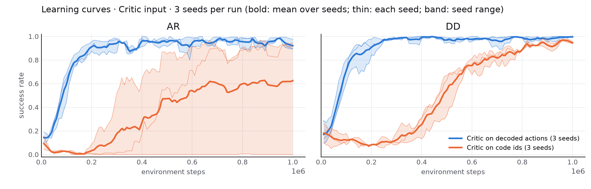
Start 12345 (easy third, rank 15 of 64): all seeds
Trajectories
seed 1seed 2seed 3 · color: episode time (dark violet start, yellow end) · gray cross: failed endpoint · gray T: block start · green T: goal · black dot: pusher start · numbers in each panel: mean steps of successful rollouts per seed, with the success count when not all succeeded
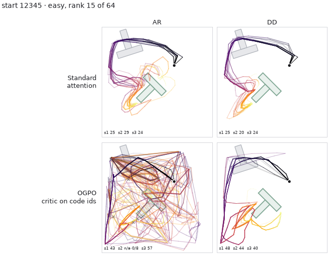
Replays
Pick a seed (or all seeds) above the player. Each panel replays rollouts 0 to 3 of that run and seed from this start, successes and failures alike. The dark disc is the pusher with a fading trail, and the pink cross is the target point (the point the controller pulls the pusher toward). ▶︎/❚❚ plays a panel and ◀ ▶ switch rollouts.
Mechanics
| Run | Method | Seed | Successes | Steps to success | Median target distance (px) | px/step |
|---|---|---|---|---|---|---|
| Standard · attention | AR | seed 1 | 16/16 | 25 | 73 | 34.8 |
| seed 2 | 16/16 | 29 | 73 | 34.4 | ||
| seed 3 | 16/16 | 24 | 68 | 35.5 | ||
| mean of 3 seeds | 48/48 | 26 | 71 | 34.9 | ||
| Standard · attention | DD | seed 1 | 16/16 | 25 | 66 | 34.0 |
| seed 2 | 16/16 | 20 | 82 | 40.7 | ||
| seed 3 | 16/16 | 24 | 75 | 37.2 | ||
| mean of 3 seeds | 48/48 | 23 | 75 | 37.3 | ||
| OGPO · critic on code ids | AR | seed 1 | 8/8 | 43 | 55 | 28.0 |
| seed 2 | 0/8 | n/a | n/a | n/a | ||
| seed 3 | 8/8 | 57 | 63 | 29.4 | ||
| mean of 3 seeds | 16/24 | 50 | 59 | 28.7 | ||
| OGPO · critic on code ids | DD | seed 1 | 8/8 | 48 | 53 | 24.9 |
| seed 2 | 8/8 | 44 | 67 | 31.2 | ||
| seed 3 | 8/8 | 40 | 50 | 26.3 | ||
| mean of 3 seeds | 24/24 | 44 | 57 | 27.5 |
All rollouts from start 12345 in the evaluation on the 64 test starts (8 or 16 per seed, final checkpoints, every outcome). Steps, target distance and speed are over successful rollouts; the seed-mean row averages the per-seed values and sums the success counts.
Start 3942: trajectories, replays and mechanics (median third, rank 32 of 64)
Trajectories
seed 1seed 2seed 3 · color: episode time (dark violet start, yellow end) · gray cross: failed endpoint · gray T: block start · green T: goal · black dot: pusher start · numbers in each panel: mean steps of successful rollouts per seed, with the success count when not all succeeded
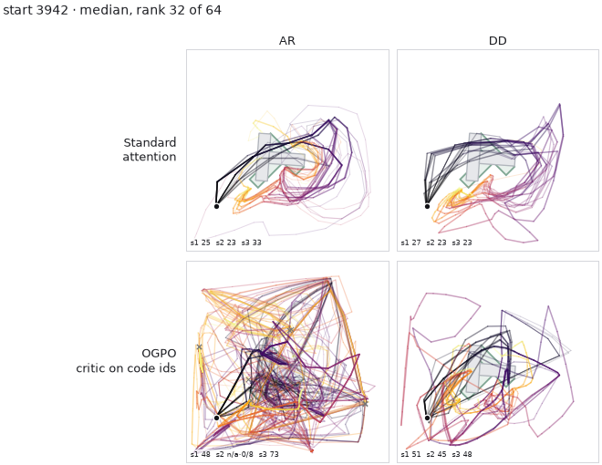
Replays
Pick a seed (or all seeds) above the player. Each panel replays rollouts 0 to 3 of that run and seed from this start, successes and failures alike. The dark disc is the pusher with a fading trail, and the pink cross is the target point (the point the controller pulls the pusher toward). ▶︎/❚❚ plays a panel and ◀ ▶ switch rollouts.
Mechanics
| Run | Method | Seed | Successes | Steps to success | Median target distance (px) | px/step |
|---|---|---|---|---|---|---|
| Standard · attention | AR | seed 1 | 16/16 | 25 | 69 | 36.6 |
| seed 2 | 16/16 | 23 | 74 | 37.5 | ||
| seed 3 | 16/16 | 33 | 101 | 40.9 | ||
| mean of 3 seeds | 48/48 | 27 | 81 | 38.3 | ||
| Standard · attention | DD | seed 1 | 16/16 | 27 | 70 | 38.0 |
| seed 2 | 16/16 | 23 | 76 | 37.8 | ||
| seed 3 | 16/16 | 23 | 49 | 35.6 | ||
| mean of 3 seeds | 48/48 | 24 | 65 | 37.2 | ||
| OGPO · critic on code ids | AR | seed 1 | 8/8 | 48 | 63 | 30.9 |
| seed 2 | 0/8 | n/a | n/a | n/a | ||
| seed 3 | 8/8 | 73 | 78 | 32.9 | ||
| mean of 3 seeds | 16/24 | 60 | 70 | 31.9 | ||
| OGPO · critic on code ids | DD | seed 1 | 8/8 | 51 | 56 | 28.0 |
| seed 2 | 8/8 | 45 | 46 | 23.6 | ||
| seed 3 | 8/8 | 48 | 63 | 33.4 | ||
| mean of 3 seeds | 24/24 | 48 | 55 | 28.3 |
All rollouts from start 3942 in the evaluation on the 64 test starts (8 or 16 per seed, final checkpoints, every outcome). Steps, target distance and speed are over successful rollouts; the seed-mean row averages the per-seed values and sums the success counts.
Start 8039: trajectories, replays and mechanics (hard third, rank 53 of 64)
Trajectories
seed 1seed 2seed 3 · color: episode time (dark violet start, yellow end) · gray cross: failed endpoint · gray T: block start · green T: goal · black dot: pusher start · numbers in each panel: mean steps of successful rollouts per seed, with the success count when not all succeeded
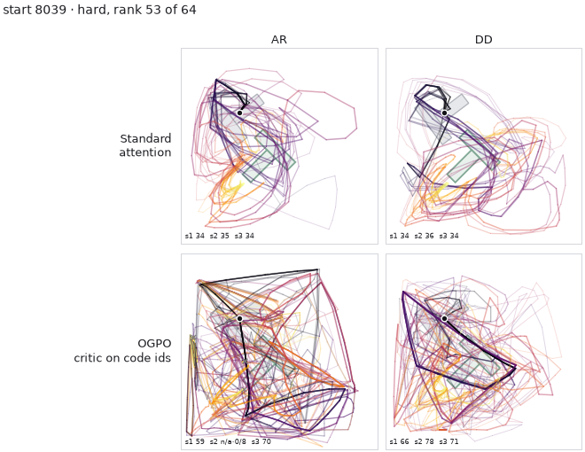
Replays
Pick a seed (or all seeds) above the player. Each panel replays rollouts 0 to 3 of that run and seed from this start, successes and failures alike. The dark disc is the pusher with a fading trail, and the pink cross is the target point (the point the controller pulls the pusher toward). ▶︎/❚❚ plays a panel and ◀ ▶ switch rollouts.
Mechanics
| Run | Method | Seed | Successes | Steps to success | Median target distance (px) | px/step |
|---|---|---|---|---|---|---|
| Standard · attention | AR | seed 1 | 16/16 | 34 | 93 | 39.4 |
| seed 2 | 16/16 | 35 | 89 | 39.1 | ||
| seed 3 | 16/16 | 34 | 95 | 40.1 | ||
| mean of 3 seeds | 48/48 | 34 | 93 | 39.5 | ||
| Standard · attention | DD | seed 1 | 16/16 | 34 | 86 | 35.4 |
| seed 2 | 16/16 | 36 | 96 | 39.2 | ||
| seed 3 | 16/16 | 34 | 99 | 42.7 | ||
| mean of 3 seeds | 48/48 | 34 | 94 | 39.1 | ||
| OGPO · critic on code ids | AR | seed 1 | 8/8 | 59 | 72 | 35.9 |
| seed 2 | 0/8 | n/a | n/a | n/a | ||
| seed 3 | 8/8 | 70 | 70 | 32.8 | ||
| mean of 3 seeds | 16/24 | 64 | 71 | 34.3 | ||
| OGPO · critic on code ids | DD | seed 1 | 8/8 | 66 | 68 | 35.7 |
| seed 2 | 8/8 | 78 | 65 | 30.3 | ||
| seed 3 | 8/8 | 71 | 74 | 35.0 | ||
| mean of 3 seeds | 24/24 | 72 | 69 | 33.7 |
All rollouts from start 8039 in the evaluation on the 64 test starts (8 or 16 per seed, final checkpoints, every outcome). Steps, target distance and speed are over successful rollouts; the seed-mean row averages the per-seed values and sums the success counts.
All 64 starts: statistics
| Run | Method | Seeds | Success | Steps to success | Steps per seed | Median target distance (px) | px/step | px/step per seed | Chunk-start jerk ratio |
|---|---|---|---|---|---|---|---|---|---|
| Critic on decoded actions | AR | 3 | 100% [100%, 100%] | 28 [27, 28] | 27 / 27 / 28 | 76 [73, 79] | 36.3 [35.2, 37.3] | 35.4 / 36.7 / 36.8 | 1.47 [1.41, 1.53] |
| Critic on decoded actions | DD | 3 | 100% [100%, 100%] | 28 [27, 29] | 28 / 27 / 28 | 77 [74, 79] | 36.8 [35.6, 37.8] | 35.8 / 37.5 / 37.0 | 1.42 [1.37, 1.46] |
| Critic on code ids | AR | 3 | 66% [0%, 99%] | 53 [46, 61] | 48 / n/a / 59 | 68 [62, 73] | 32.8 [31.5, 33.8] | 32.4 / n/a / 33.1 | 1.50 [1.39, 1.63] |
| Critic on code ids | DD | 3 | 99% [99%, 100%] | 50 [48, 52] | 51 / 49 / 51 | 60 [56, 63] | 30.0 [29.1, 30.9] | 29.4 / 29.9 / 30.6 | 1.55 [1.44, 1.67] |
what is this?
- Success rate: Share of episodes that bring the T onto the goal pose; higher is better.
- Steps to success: How many control steps a successful episode takes; lower is faster.
- Pusher speed: How far the pusher moves per control step; higher is faster.
- Target distance: How far from the pusher the policy places the target point; larger means more aggressive commands.
- Chunk-start jerk ratio: Jerk at steps where a new chunk starts divided by jerk at other steps; 1 = no extra jerk, higher = jerkier at chunk starts.
Mean over 64 start states and all available seeds (the Seeds column), with 8 or 16 episodes per start. Brackets are 95% bootstrap intervals (seeds, then starts within seeds). The per-seed columns give each seed's mean over the 64 starts (seed 1 / 2 / 3). Steps, target distance, speed and the chunk-start jerk ratio are over successful episodes.
4b · How the embeddings of the critic on code ids start
What random initialization and policy initialization mean here
The critic on code ids turns each of the 4 code ids of a chunk into a vector by looking it up in an embedding table (one row per code, 3,969 rows). Only the start of that table differs between the variants.
- Random initialization. The table starts as small random numbers, so at the start every code looks unrelated to every other code. The critic has to learn from rewards alone which codes mean similar actions.
- Policy initialization. The table starts as a copy of the BC policy's code-embedding table. Behavior cloning already trained those vectors, so codes for similar actions start with similar vectors. The table keeps training with the critic.
- Policy initialization, frozen. The same copy, but the table never changes. The critic can only learn on top of the policy's view of which codes are similar.
- Width. The policy's table has 128 numbers per code, so the policy-initialized variants need width 128. The random width-128 variant separates the effect of the starting values from the effect of the larger width; the width-32 variant is the critic on code ids from section 4a.
What we are testing
Code ids are arbitrary symbols, so a critic on code ids has to learn what each of the 3,969 codes (\(63 \times 63\)) means. The BC policy's code embeddings already place similar codes near each other, so we test whether starting from them helps (see the diagram and the random vs policy initialization explainer). Three variants, all at width 128 (the policy's embedding width):
- Random init.
- Init from the policy's embeddings, trainable.
- Init from the policy's embeddings, frozen.
No critic on decoded actions was run at width 128, so these variants compare only with each other. The width-32 critic from section 4a is shown for reference.
What we see
Width and trainable policy initialization change no smoothness or multimodality metric beyond seed noise. Freezing the policy's embeddings does change it, in opposite directions for the two classes: AR becomes rougher and commands farther targets, DD becomes smoother. Whether AR learns at all still depends on the seed. Effects are in the effect map and the collapsed table of section 4a; intervals include seed-to-seed variation.
- No AR initialization is reliable. The width-128 random critic fails on seed 1 (best smoothed evaluation 4%) and passes 90% at 460k and 640k on seeds 2 and 3. The frozen policy-init critic fails on seed 1 and ends at 72 to 78% on seeds 2 and 3. Trainable policy init learns on all three seeds (80 to 100% on the 64 test starts), though its seed 2 ends at only 32% evaluation success during training; we have not checked why the two measures differ. For DD every variant learns on every seed, and frozen policy init learns fastest (90% at 500k to 560k vs 780k to 950k).
- Width alone changes almost nothing. Going from width 32 to width 128 with random init, only one metric survives Holm correction: AR's share of steps where the target point is not reached rises from 0.927 to 0.971.
- Trainable policy init: no effect survives, but AR varies wildly between seeds. On seeds 1 and 2 AR commands the farthest targets in the report (median target distance, pusher to commanded target point, 120 to 143 px), while seed 3 has a median of 54 px. So AR's median target distance moves from 58.4 to 106 px, but the interval of the difference (-3.64 to +84.5 px) includes zero.
- Frozen policy init makes AR rougher and less steady at contact. On the two seeds that learned, mean pusher jerk rises from 26.4 to 34.5, speed reversals from 5.13 to 11.4 and heading change rate from 0.52 to 0.698. Targets get farther (median 58.1 to 78.2 px) and more spread within a chunk (30.2 to 42.9 px). Contact switches rise from 9.15 to 15.9 and pushing efficiency falls from 0.26 to 0.172.
- Frozen policy init makes DD smoother. Jerk per unit speed falls from 0.945 to 0.824, speed reversals from 6.77 to 4.47 and contact switches from 11 to 8.1. LDLJ (-14 to -13) and SPARC (-3.5 to -3) improve too, partly because episodes are shorter.
- Route variety does not change. The only multimodality effect is that frozen-init AR's episode length varies more across the rollouts from one start (steps SD 7.14 to 17.6), which fits its stop-and-go motion. No route measure changes in any width or initialization comparison.
Learning curves
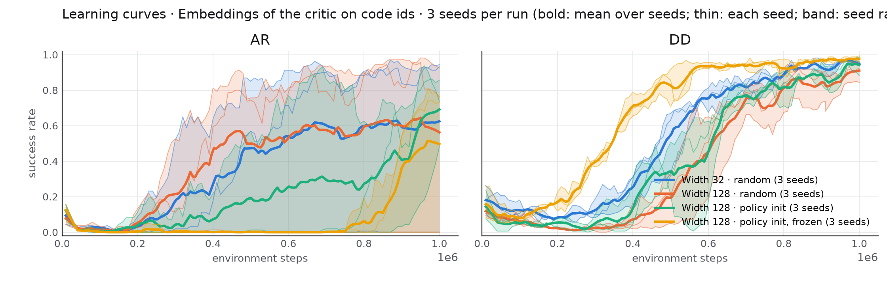
Start 12345 (easy third, rank 15 of 64): all seeds
Trajectories
seed 1seed 2seed 3 · color: episode time (dark violet start, yellow end) · gray cross: failed endpoint · gray T: block start · green T: goal · black dot: pusher start · numbers in each panel: mean steps of successful rollouts per seed, with the success count when not all succeeded
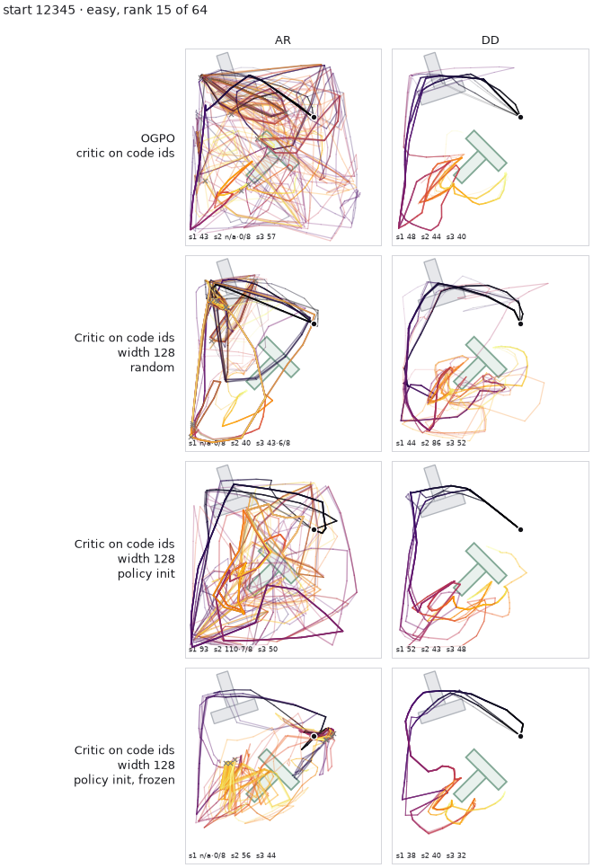
Replays
Pick a seed (or all seeds) above the player. Each panel replays rollouts 0 to 3 of that run and seed from this start, successes and failures alike. The dark disc is the pusher with a fading trail, and the pink cross is the target point (the point the controller pulls the pusher toward). ▶︎/❚❚ plays a panel and ◀ ▶ switch rollouts.
Mechanics
| Run | Method | Seed | Successes | Steps to success | Median target distance (px) | px/step |
|---|---|---|---|---|---|---|
| OGPO · critic on code ids | AR | seed 1 | 8/8 | 43 | 55 | 28.0 |
| seed 2 | 0/8 | n/a | n/a | n/a | ||
| seed 3 | 8/8 | 57 | 63 | 29.4 | ||
| mean of 3 seeds | 16/24 | 50 | 59 | 28.7 | ||
| OGPO · critic on code ids | DD | seed 1 | 8/8 | 48 | 53 | 24.9 |
| seed 2 | 8/8 | 44 | 67 | 31.2 | ||
| seed 3 | 8/8 | 40 | 50 | 26.3 | ||
| mean of 3 seeds | 24/24 | 44 | 57 | 27.5 | ||
| Critic on code ids · width 128 · random | AR | seed 1 | 0/8 | n/a | n/a | n/a |
| seed 2 | 8/8 | 40 | 62 | 31.5 | ||
| seed 3 | 6/8 | 43 | 45 | 25.4 | ||
| mean of 3 seeds | 14/24 | 42 | 53 | 28.4 | ||
| Critic on code ids · width 128 · random | DD | seed 1 | 8/8 | 44 | 52 | 26.6 |
| seed 2 | 8/8 | 86 | 52 | 25.2 | ||
| seed 3 | 8/8 | 52 | 53 | 29.8 | ||
| mean of 3 seeds | 24/24 | 61 | 52 | 27.2 | ||
| Critic on code ids · width 128 · policy init | AR | seed 1 | 8/8 | 93 | 129 | 49.7 |
| seed 2 | 7/8 | 110 | 109 | 45.9 | ||
| seed 3 | 8/8 | 50 | 46 | 26.3 | ||
| mean of 3 seeds | 23/24 | 84 | 95 | 40.6 | ||
| Critic on code ids · width 128 · policy init | DD | seed 1 | 8/8 | 52 | 42 | 23.9 |
| seed 2 | 8/8 | 43 | 62 | 31.3 | ||
| seed 3 | 8/8 | 48 | 56 | 27.2 | ||
| mean of 3 seeds | 24/24 | 48 | 53 | 27.5 | ||
| Critic on code ids · width 128 · policy init, frozen | AR | seed 1 | 0/8 | n/a | n/a | n/a |
| seed 2 | 8/8 | 56 | 79 | 34.7 | ||
| seed 3 | 8/8 | 44 | 63 | 31.4 | ||
| mean of 3 seeds | 16/24 | 50 | 71 | 33.1 | ||
| Critic on code ids · width 128 · policy init, frozen | DD | seed 1 | 8/8 | 38 | 47 | 23.5 |
| seed 2 | 8/8 | 40 | 59 | 29.5 | ||
| seed 3 | 8/8 | 32 | 52 | 29.5 | ||
| mean of 3 seeds | 24/24 | 37 | 53 | 27.5 |
All rollouts from start 12345 in the evaluation on the 64 test starts (8 or 16 per seed, final checkpoints, every outcome). Steps, target distance and speed are over successful rollouts; the seed-mean row averages the per-seed values and sums the success counts.
Start 3942: trajectories, replays and mechanics (median third, rank 32 of 64)
Trajectories
seed 1seed 2seed 3 · color: episode time (dark violet start, yellow end) · gray cross: failed endpoint · gray T: block start · green T: goal · black dot: pusher start · numbers in each panel: mean steps of successful rollouts per seed, with the success count when not all succeeded
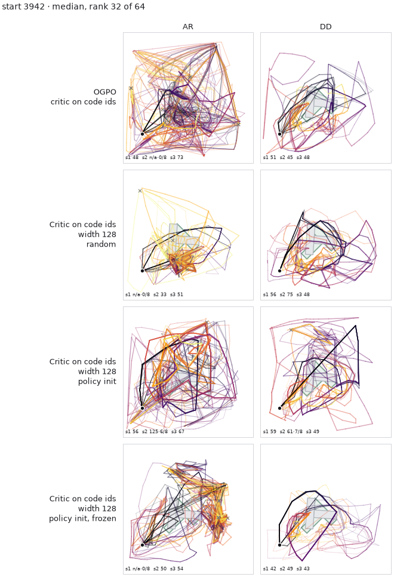
Replays
Pick a seed (or all seeds) above the player. Each panel replays rollouts 0 to 3 of that run and seed from this start, successes and failures alike. The dark disc is the pusher with a fading trail, and the pink cross is the target point (the point the controller pulls the pusher toward). ▶︎/❚❚ plays a panel and ◀ ▶ switch rollouts.
Mechanics
| Run | Method | Seed | Successes | Steps to success | Median target distance (px) | px/step |
|---|---|---|---|---|---|---|
| OGPO · critic on code ids | AR | seed 1 | 8/8 | 48 | 63 | 30.9 |
| seed 2 | 0/8 | n/a | n/a | n/a | ||
| seed 3 | 8/8 | 73 | 78 | 32.9 | ||
| mean of 3 seeds | 16/24 | 60 | 70 | 31.9 | ||
| OGPO · critic on code ids | DD | seed 1 | 8/8 | 51 | 56 | 28.0 |
| seed 2 | 8/8 | 45 | 46 | 23.6 | ||
| seed 3 | 8/8 | 48 | 63 | 33.4 | ||
| mean of 3 seeds | 24/24 | 48 | 55 | 28.3 | ||
| Critic on code ids · width 128 · random | AR | seed 1 | 0/8 | n/a | n/a | n/a |
| seed 2 | 8/8 | 33 | 32 | 25.7 | ||
| seed 3 | 8/8 | 51 | 59 | 31.5 | ||
| mean of 3 seeds | 16/24 | 42 | 45 | 28.6 | ||
| Critic on code ids · width 128 · random | DD | seed 1 | 8/8 | 56 | 54 | 25.4 |
| seed 2 | 8/8 | 75 | 55 | 31.4 | ||
| seed 3 | 8/8 | 48 | 68 | 33.1 | ||
| mean of 3 seeds | 24/24 | 60 | 59 | 30.0 | ||
| Critic on code ids · width 128 · policy init | AR | seed 1 | 8/8 | 56 | 148 | 57.8 |
| seed 2 | 6/8 | 125 | 167 | 58.2 | ||
| seed 3 | 8/8 | 67 | 49 | 25.6 | ||
| mean of 3 seeds | 22/24 | 82 | 121 | 47.2 | ||
| Critic on code ids · width 128 · policy init | DD | seed 1 | 8/8 | 59 | 68 | 34.6 |
| seed 2 | 7/8 | 61 | 59 | 27.0 | ||
| seed 3 | 8/8 | 49 | 91 | 34.5 | ||
| mean of 3 seeds | 23/24 | 56 | 73 | 32.0 | ||
| Critic on code ids · width 128 · policy init, frozen | AR | seed 1 | 0/8 | n/a | n/a | n/a |
| seed 2 | 8/8 | 50 | 81 | 36.4 | ||
| seed 3 | 8/8 | 54 | 76 | 36.5 | ||
| mean of 3 seeds | 16/24 | 52 | 79 | 36.5 | ||
| Critic on code ids · width 128 · policy init, frozen | DD | seed 1 | 8/8 | 42 | 47 | 26.1 |
| seed 2 | 8/8 | 49 | 50 | 23.2 | ||
| seed 3 | 8/8 | 43 | 57 | 28.0 | ||
| mean of 3 seeds | 24/24 | 45 | 51 | 25.8 |
All rollouts from start 3942 in the evaluation on the 64 test starts (8 or 16 per seed, final checkpoints, every outcome). Steps, target distance and speed are over successful rollouts; the seed-mean row averages the per-seed values and sums the success counts.
Start 8039: trajectories, replays and mechanics (hard third, rank 53 of 64)
Trajectories
seed 1seed 2seed 3 · color: episode time (dark violet start, yellow end) · gray cross: failed endpoint · gray T: block start · green T: goal · black dot: pusher start · numbers in each panel: mean steps of successful rollouts per seed, with the success count when not all succeeded
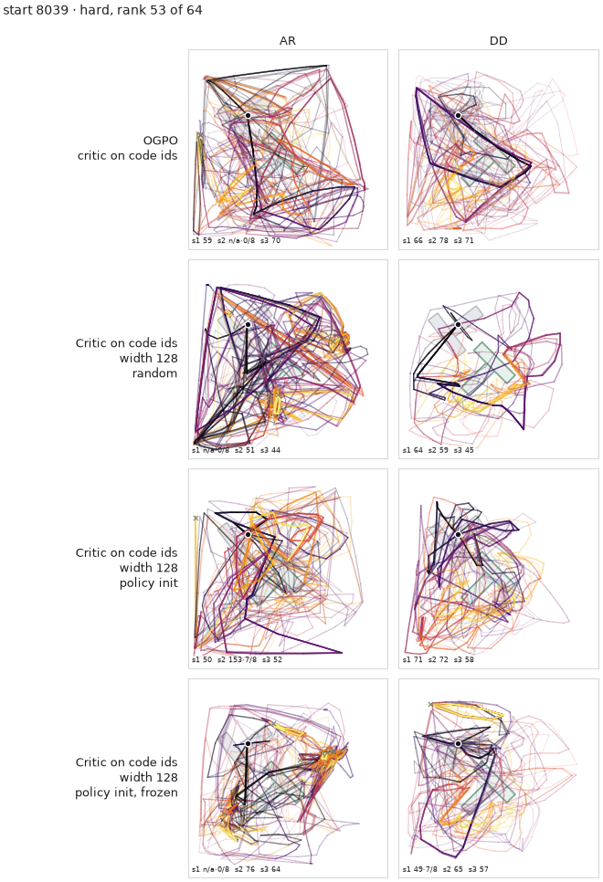
Replays
Pick a seed (or all seeds) above the player. Each panel replays rollouts 0 to 3 of that run and seed from this start, successes and failures alike. The dark disc is the pusher with a fading trail, and the pink cross is the target point (the point the controller pulls the pusher toward). ▶︎/❚❚ plays a panel and ◀ ▶ switch rollouts.
Mechanics
| Run | Method | Seed | Successes | Steps to success | Median target distance (px) | px/step |
|---|---|---|---|---|---|---|
| OGPO · critic on code ids | AR | seed 1 | 8/8 | 59 | 72 | 35.9 |
| seed 2 | 0/8 | n/a | n/a | n/a | ||
| seed 3 | 8/8 | 70 | 70 | 32.8 | ||
| mean of 3 seeds | 16/24 | 64 | 71 | 34.3 | ||
| OGPO · critic on code ids | DD | seed 1 | 8/8 | 66 | 68 | 35.7 |
| seed 2 | 8/8 | 78 | 65 | 30.3 | ||
| seed 3 | 8/8 | 71 | 74 | 35.0 | ||
| mean of 3 seeds | 24/24 | 72 | 69 | 33.7 | ||
| Critic on code ids · width 128 · random | AR | seed 1 | 0/8 | n/a | n/a | n/a |
| seed 2 | 8/8 | 51 | 68 | 36.8 | ||
| seed 3 | 8/8 | 44 | 50 | 27.1 | ||
| mean of 3 seeds | 16/24 | 47 | 59 | 31.9 | ||
| Critic on code ids · width 128 · random | DD | seed 1 | 8/8 | 64 | 37 | 22.2 |
| seed 2 | 8/8 | 59 | 65 | 30.0 | ||
| seed 3 | 8/8 | 45 | 78 | 37.4 | ||
| mean of 3 seeds | 24/24 | 56 | 60 | 29.9 | ||
| Critic on code ids · width 128 · policy init | AR | seed 1 | 8/8 | 50 | 154 | 58.5 |
| seed 2 | 7/8 | 153 | 115 | 48.6 | ||
| seed 3 | 8/8 | 52 | 59 | 29.2 | ||
| mean of 3 seeds | 23/24 | 85 | 109 | 45.4 | ||
| Critic on code ids · width 128 · policy init | DD | seed 1 | 8/8 | 71 | 66 | 31.0 |
| seed 2 | 8/8 | 72 | 61 | 30.7 | ||
| seed 3 | 8/8 | 58 | 65 | 31.1 | ||
| mean of 3 seeds | 24/24 | 67 | 64 | 30.9 | ||
| Critic on code ids · width 128 · policy init, frozen | AR | seed 1 | 0/8 | n/a | n/a | n/a |
| seed 2 | 8/8 | 76 | 89 | 38.2 | ||
| seed 3 | 8/8 | 64 | 63 | 29.1 | ||
| mean of 3 seeds | 16/24 | 70 | 76 | 33.6 | ||
| Critic on code ids · width 128 · policy init, frozen | DD | seed 1 | 7/8 | 49 | 58 | 28.2 |
| seed 2 | 8/8 | 65 | 75 | 32.7 | ||
| seed 3 | 8/8 | 57 | 65 | 29.9 | ||
| mean of 3 seeds | 23/24 | 57 | 66 | 30.3 |
All rollouts from start 8039 in the evaluation on the 64 test starts (8 or 16 per seed, final checkpoints, every outcome). Steps, target distance and speed are over successful rollouts; the seed-mean row averages the per-seed values and sums the success counts.
All 64 starts: statistics
| Run | Method | Seeds | Success | Steps to success | Steps per seed | Median target distance (px) | px/step | px/step per seed | Chunk-start jerk ratio |
|---|---|---|---|---|---|---|---|---|---|
| Width 32 · random | AR | 3 | 66% [0%, 99%] | 53 [46, 61] | 48 / n/a / 59 | 68 [62, 73] | 32.8 [31.5, 33.8] | 32.4 / n/a / 33.1 | 1.50 [1.39, 1.63] |
| Width 32 · random | DD | 3 | 99% [99%, 100%] | 50 [48, 52] | 51 / 49 / 51 | 60 [56, 63] | 30.0 [29.1, 30.9] | 29.4 / 29.9 / 30.6 | 1.55 [1.44, 1.67] |
| Width 128 · random | AR | 3 | 66% [0%, 100%] | 49 [46, 51] | n/a / 48 / 50 | 59 [55, 61] | 31.3 [30.4, 32.2] | n/a / 31.2 / 31.3 | 1.58 [1.51, 1.64] |
| Width 128 · random | DD | 3 | 97% [93%, 100%] | 58 [53, 64] | 53 / 64 / 55 | 59 [53, 67] | 29.6 [27.6, 32.3] | 28.1 / 28.1 / 32.6 | 1.50 [1.44, 1.55] |
| Width 128 · policy init | AR | 3 | 92% [81%, 100%] | 79 [52, 122] | 65 / 122 / 51 | 105 [54, 143] | 43.8 [29.4, 53.7] | 53.8 / 48.6 / 29.2 | 1.43 [1.15, 1.60] |
| Width 128 · policy init | DD | 3 | 98% [96%, 100%] | 57 [54, 61] | 55 / 58 / 60 | 59 [54, 64] | 30.0 [28.9, 31.4] | 29.1 / 29.6 / 31.5 | 1.47 [1.33, 1.59] |
| Width 128 · policy init, frozen | AR | 3 | 63% [0%, 97%] | 69 [64, 74] | n/a / 66 / 71 | 78 [70, 86] | 34.4 [32.1, 36.8] | n/a / 36.2 / 32.7 | 1.54 [1.46, 1.62] |
| Width 128 · policy init, frozen | DD | 3 | 99% [98%, 100%] | 45 [43, 47] | 46 / 46 / 43 | 57 [53, 62] | 28.9 [27.3, 30.5] | 27.4 / 28.7 / 30.5 | 1.50 [1.46, 1.54] |
what is this?
- Success rate: Share of episodes that bring the T onto the goal pose; higher is better.
- Steps to success: How many control steps a successful episode takes; lower is faster.
- Pusher speed: How far the pusher moves per control step; higher is faster.
- Target distance: How far from the pusher the policy places the target point; larger means more aggressive commands.
- Chunk-start jerk ratio: Jerk at steps where a new chunk starts divided by jerk at other steps; 1 = no extra jerk, higher = jerkier at chunk starts.
Mean over 64 start states and all available seeds (the Seeds column), with 8 or 16 episodes per start. Brackets are 95% bootstrap intervals (seeds, then starts within seeds). The per-seed columns give each seed's mean over the 64 starts (seed 1 / 2 / 3). Steps, target distance, speed and the chunk-start jerk ratio are over successful episodes.
With a tokenizer trained with extra RL data (one seed), the same three variants behave differently for AR: random and frozen embeddings learn there. See critic on code ids with extra RL data in Appendix B.
What we learned. Giving the critic code ids instead of decoded actions changes how the policies move, not just how fast they learn.
- Critics on code ids produce rougher chunk starts and more contact switching. For both AR and DD the target point jumps more at chunk starts, the pusher reverses more often and touches more faces of the T, while route variety stays the same.
- Frozen policy embeddings pull AR and DD in opposite directions. AR gets rougher with farther targets, DD gets smoother. We don't know why.
- Not settled. AR critics on code ids fail on one of three seeds in three of the four variants (width-128 trainable policy init is the exception), while DD always learns. We don't know why AR and DD differ here.
5Off-policyness: OGPO or DPPO
What we are testing
OGPO is off-policy: it reuses a replay buffer, scores 8 candidate chunks per state with a Q-ensemble, and runs 4 updates per environment step. DPPO (on-policy PPO for diffusion and flow policies, here also applied to token policies), following the official code, uses a state-value critic \(V(s)\) and GAE (\(\lambda = 0.95\)). On speed: DPPO policies take 90 (AR), 115 (DD) and 183 (flow, 42% success) steps vs 28, 28 and 55 with OGPO, and flow stays last (see Where the speed comes from).
- DPPO learns from fresh batches. It collects 50 environments × 400 decisions per iteration and normalizes advantages per minibatch. Each chunk is one decision: its reward is the sum of its step rewards, and the discount is \(\gamma = 0.999\) per chunk.
- The PPO ratio follows each class's own sampler. For flow it is computed per denoising step with DPPO's own exploration noise schedule. For AR and DD it uses the code log-probabilities.
- Same starting point, larger budget. All three classes start from the same BC starting checkpoints as OGPO (the BC checkpoint, after at least 30k BC steps, whose success is closest to 22%). DPPO gets 10M environment steps instead of 1M because on-policy RL needs more samples.
- One variant is not reported. A critic-free DPPO variant with a group baseline (mean return of a group of rollouts in place of \(V(s)\)) was also run.
What we see
DPPO needs many times more samples and settles on very different motion: near targets, slow and low-jerk steps, but many reversals, more contact switching and more varied routes. Almost every effect survives Holm correction for all three classes. Intervals include seed-to-seed variation; the effect map and the collapsed table list every metric.
- DPPO needs many times more samples. OGPO takes AR and DD past 90% evaluation success in 130k to 310k environment steps. DPPO takes 4.4M to 5.3M for AR and 4.9M to 5.9M for DD, measured on its own noisy training rollouts rather than 32-episode evaluations. DPPO flow's training-rollout success peaks at 46 to 55%.
- DPPO commands near targets. The median target distance (pusher to the target point, the point the controller pulls the pusher toward, on the 512 × 512 px board) falls from 76.2 to 30 px for AR, 76.5 to 24.7 for DD and 43.2 to 22.5 for flow. The far-target share (more than 74 px away) falls from about 0.5 to 0.121 (AR) and 0.0733 (DD), and from 0.142 to 0.0158 for flow.
- Token steps get less jerky, but only because they are slower. Mean pusher jerk falls from 25.9 to 11.2 (AR) and 26.9 to 10 (DD), while jerk per unit speed does not change. Within-chunk target spread (how far apart the target points inside one chunk are) falls from 43 to 18 px (AR) and 44.4 to 18 (DD), and the chunk-start jerk ratio (\(\text{jerk at steps where a new chunk starts} \div \text{jerk at other steps}\); 1 = no extra jerk) rises from 1.47 to 1.72 and 1.42 to 1.59. For flow, mean jerk is unchanged and jerk per unit speed nearly doubles (0.551 to 1.02).
- DPPO policies dither. Speed reversals per episode rise from 1.93 to 4.41 (AR), 2.23 to 6.32 (DD) and 2.56 to 31.6 (flow). In 52% of its episodes DPPO flow makes ten or more reversals with little net motion. LDLJ and SPARC get worse for all classes, but they track episode length, which grows 3 to 4 times.
- Contact is less steady and pushes less. Contact share falls (0.622 to 0.497 AR, 0.629 to 0.483 DD, 0.546 to 0.317 flow), contact switches rise (5.48 to 8.89, 5.38 to 10.4, 6.95 to 19.2) and pushing efficiency falls (0.238 to 0.205, 0.246 to 0.183, 0.223 to 0.116). The block moves more gently: block jerk falls from 10.3 to 3.59 (AR), 10.8 to 2.44 (DD) and 3.34 to 1.05 (flow).
- Routes are more varied, partly because episodes are longer. Vendi rises from 4.16 to 6.39 (AR), 3.91 to 6.17 (DD) and 2.99 to 6.01 (flow), and the spread of episode length across rollouts from one start from 5.23 to 20.8, 5.55 to 26.1 and 10.1 to 43.1 steps. Long, wandering episodes inflate these path-based measures. For flow, which face it touches first and which side of the T it goes around do not change.
What changes in behaviour
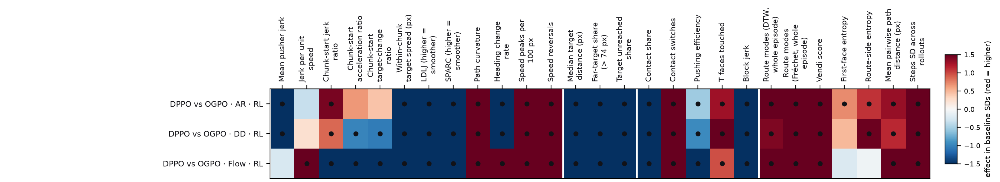
All effects with 95% intervals
Smoothness and jerk
| Change | Class | Policy | Metric | Baseline | Variant | Difference [95% CI] | Holm p | Seeds |
|---|---|---|---|---|---|---|---|---|
| DPPO vs OGPO | AR | RL | Mean pusher jerk | 25.9 | 11.2 | -14.7 [-16.5, -12.9] | 0.000 | 3 / 3 |
| DPPO vs OGPO | AR | RL | Jerk per unit speed | 0.715 | 0.688 | -0.027 [-0.0635, +0.0128] | 0.375 | 3 / 3 |
| DPPO vs OGPO | AR | RL | Chunk-start jerk ratio | 1.47 | 1.72 | +0.247 [+0.15, +0.334] | 0.000 | 3 / 3 |
| DPPO vs OGPO | AR | RL | Chunk-start acceleration ratio | 1.75 | 1.9 | +0.157 [+0.00887, +0.31] | 0.120 | 3 / 3 |
| DPPO vs OGPO | AR | RL | Chunk-start target-change ratio | 2.31 | 2.53 | +0.216 [-0.0923, +0.57] | 0.375 | 3 / 3 |
| DPPO vs OGPO | AR | RL | Within-chunk target spread (px) | 43 | 18 | -25 [-27.3, -22.5] | 0.000 | 3 / 3 |
| DPPO vs OGPO | AR | RL | LDLJ (higher = smoother) | -10.9 | -15 | -4.05 [-4.48, -3.64] | 0.000 | 3 / 3 |
| DPPO vs OGPO | AR | RL | SPARC (higher = smoother) | -2.33 | -4.09 | -1.76 [-1.99, -1.55] | 0.000 | 3 / 3 |
| DPPO vs OGPO | AR | RL | Path curvature | 0.0317 | 0.047 | +0.0153 [+0.0124, +0.0182] | 0.000 | 3 / 3 |
| DPPO vs OGPO | AR | RL | Heading change rate | 0.56 | 0.384 | -0.176 [-0.202, -0.149] | 0.000 | 3 / 3 |
| DPPO vs OGPO | AR | RL | Speed peaks per 100 px | 0.552 | 1.16 | +0.613 [+0.563, +0.664] | 0.000 | 3 / 3 |
| DPPO vs OGPO | AR | RL | Speed reversals | 1.93 | 4.41 | +2.47 [+1.79, +3.17] | 0.000 | 3 / 3 |
| DPPO vs OGPO | DD | RL | Mean pusher jerk | 26.9 | 10 | -16.9 [-18.9, -14.9] | 0.000 | 3 / 3 |
| DPPO vs OGPO | DD | RL | Jerk per unit speed | 0.734 | 0.758 | +0.0236 [-0.027, +0.0754] | 0.352 | 3 / 3 |
| DPPO vs OGPO | DD | RL | Chunk-start jerk ratio | 1.42 | 1.59 | +0.175 [+0.101, +0.248] | 0.000 | 3 / 3 |
| DPPO vs OGPO | DD | RL | Chunk-start acceleration ratio | 1.73 | 1.5 | -0.237 [-0.318, -0.155] | 0.000 | 3 / 3 |
| DPPO vs OGPO | DD | RL | Chunk-start target-change ratio | 2.3 | 1.7 | -0.6 [-0.793, -0.43] | 0.000 | 3 / 3 |
| DPPO vs OGPO | DD | RL | Within-chunk target spread (px) | 44.4 | 18 | -26.4 [-29.9, -23.1] | 0.000 | 3 / 3 |
| DPPO vs OGPO | DD | RL | LDLJ (higher = smoother) | -10.9 | -15.9 | -5.03 [-5.31, -4.74] | 0.000 | 3 / 3 |
| DPPO vs OGPO | DD | RL | SPARC (higher = smoother) | -2.34 | -4.76 | -2.42 [-2.72, -2.18] | 0.000 | 3 / 3 |
| DPPO vs OGPO | DD | RL | Path curvature | 0.0336 | 0.057 | +0.0234 [+0.0178, +0.0318] | 0.000 | 3 / 3 |
| DPPO vs OGPO | DD | RL | Heading change rate | 0.56 | 0.391 | -0.168 [-0.2, -0.136] | 0.000 | 3 / 3 |
| DPPO vs OGPO | DD | RL | Speed peaks per 100 px | 0.57 | 1.43 | +0.863 [+0.8, +0.929] | 0.000 | 3 / 3 |
| DPPO vs OGPO | DD | RL | Speed reversals | 2.23 | 6.32 | +4.09 [+3.15, +5.28] | 0.000 | 3 / 3 |
| DPPO vs OGPO | Flow | RL | Mean pusher jerk | 9.84 | 9.46 | -0.382 [-1.22, +0.562] | 0.819 | 3 / 3 |
| DPPO vs OGPO | Flow | RL | Jerk per unit speed | 0.551 | 1.02 | +0.469 [+0.423, +0.515] | 0.000 | 3 / 3 |
| DPPO vs OGPO | Flow | RL | Chunk-start jerk ratio | 1.56 | 1.32 | -0.246 [-0.301, -0.189] | 0.000 | 3 / 3 |
| DPPO vs OGPO | Flow | RL | Chunk-start acceleration ratio | 2.14 | 1.28 | -0.862 [-0.953, -0.765] | 0.000 | 3 / 3 |
| DPPO vs OGPO | Flow | RL | Chunk-start target-change ratio | 2.02 | 1.29 | -0.725 [-0.894, -0.527] | 0.000 | 3 / 3 |
| DPPO vs OGPO | Flow | RL | Within-chunk target spread (px) | 19.3 | 15.1 | -4.25 [-5.39, -3.21] | 0.000 | 3 / 3 |
| DPPO vs OGPO | Flow | RL | LDLJ (higher = smoother) | -13.4 | -18.5 | -5.12 [-5.53, -4.73] | 0.000 | 3 / 3 |
| DPPO vs OGPO | Flow | RL | SPARC (higher = smoother) | -2.6 | -5.01 | -2.41 [-2.68, -2.13] | 0.000 | 3 / 3 |
| DPPO vs OGPO | Flow | RL | Path curvature | 0.0522 | 0.171 | +0.119 [+0.0985, +0.14] | 0.000 | 3 / 3 |
| DPPO vs OGPO | Flow | RL | Heading change rate | 0.415 | 0.782 | +0.367 [+0.314, +0.42] | 0.000 | 3 / 3 |
| DPPO vs OGPO | Flow | RL | Speed peaks per 100 px | 1.19 | 2.76 | +1.57 [+1.32, +1.8] | 0.000 | 3 / 3 |
| DPPO vs OGPO | Flow | RL | Speed reversals | 2.56 | 31.6 | +29 [+24.4, +33.6] | 0.000 | 3 / 3 |
Commanded targets
| Change | Class | Policy | Metric | Baseline | Variant | Difference [95% CI] | Holm p | Seeds |
|---|---|---|---|---|---|---|---|---|
| DPPO vs OGPO | AR | RL | Median target distance (px) | 76.2 | 30 | -46.2 [-50, -42.2] | 0.000 | 3 / 3 |
| DPPO vs OGPO | AR | RL | Far-target share (> 74 px) | 0.502 | 0.121 | -0.381 [-0.408, -0.351] | 0.000 | 3 / 3 |
| DPPO vs OGPO | AR | RL | Target unreached share | 0.957 | 0.895 | -0.0613 [-0.0703, -0.0526] | 0.000 | 3 / 3 |
| DPPO vs OGPO | DD | RL | Median target distance (px) | 76.5 | 24.7 | -51.8 [-55.4, -48.2] | 0.000 | 3 / 3 |
| DPPO vs OGPO | DD | RL | Far-target share (> 74 px) | 0.504 | 0.0733 | -0.431 [-0.451, -0.412] | 0.000 | 3 / 3 |
| DPPO vs OGPO | DD | RL | Target unreached share | 0.955 | 0.869 | -0.0859 [-0.108, -0.0635] | 0.000 | 3 / 3 |
| DPPO vs OGPO | Flow | RL | Median target distance (px) | 43.2 | 22.5 | -20.8 [-23.8, -17.4] | 0.000 | 3 / 3 |
| DPPO vs OGPO | Flow | RL | Far-target share (> 74 px) | 0.142 | 0.0158 | -0.126 [-0.174, -0.0798] | 0.000 | 3 / 3 |
| DPPO vs OGPO | Flow | RL | Target unreached share | 0.966 | 0.912 | -0.0535 [-0.0662, -0.0431] | 0.000 | 3 / 3 |
Contact and pushing
| Change | Class | Policy | Metric | Baseline | Variant | Difference [95% CI] | Holm p | Seeds |
|---|---|---|---|---|---|---|---|---|
| DPPO vs OGPO | AR | RL | Contact share | 0.622 | 0.497 | -0.125 [-0.161, -0.0852] | 0.000 | 3 / 3 |
| DPPO vs OGPO | AR | RL | Contact switches | 5.48 | 8.89 | +3.4 [+2.68, +4.09] | 0.000 | 3 / 3 |
| DPPO vs OGPO | AR | RL | Pushing efficiency | 0.238 | 0.205 | -0.033 [-0.0525, -0.0112] | 0.022 | 3 / 3 |
| DPPO vs OGPO | AR | RL | T faces touched | 3.55 | 4.42 | +0.868 [+0.638, +1.1] | 0.000 | 3 / 3 |
| DPPO vs OGPO | AR | RL | Block jerk | 10.3 | 3.59 | -6.71 [-7.65, -5.83] | 0.000 | 3 / 3 |
| DPPO vs OGPO | DD | RL | Contact share | 0.629 | 0.483 | -0.145 [-0.171, -0.122] | 0.000 | 3 / 3 |
| DPPO vs OGPO | DD | RL | Contact switches | 5.38 | 10.4 | +5.05 [+4.01, +6.38] | 0.000 | 3 / 3 |
| DPPO vs OGPO | DD | RL | Pushing efficiency | 0.246 | 0.183 | -0.0637 [-0.0843, -0.0395] | 0.000 | 3 / 3 |
| DPPO vs OGPO | DD | RL | T faces touched | 3.41 | 4.36 | +0.951 [+0.712, +1.19] | 0.000 | 3 / 3 |
| DPPO vs OGPO | DD | RL | Block jerk | 10.8 | 2.44 | -8.36 [-9.3, -7.54] | 0.000 | 3 / 3 |
| DPPO vs OGPO | Flow | RL | Contact share | 0.546 | 0.317 | -0.229 [-0.269, -0.184] | 0.000 | 3 / 3 |
| DPPO vs OGPO | Flow | RL | Contact switches | 6.95 | 19.2 | +12.2 [+10.2, +14.4] | 0.000 | 3 / 3 |
| DPPO vs OGPO | Flow | RL | Pushing efficiency | 0.223 | 0.116 | -0.108 [-0.129, -0.0865] | 0.000 | 3 / 3 |
| DPPO vs OGPO | Flow | RL | T faces touched | 3.58 | 4.23 | +0.653 [+0.3, +1.01] | 0.002 | 3 / 3 |
| DPPO vs OGPO | Flow | RL | Block jerk | 3.34 | 1.05 | -2.29 [-2.88, -1.72] | 0.000 | 3 / 3 |
Multimodality across rollouts
| Change | Class | Policy | Metric | Baseline | Variant | Difference [95% CI] | Holm p | Seeds |
|---|---|---|---|---|---|---|---|---|
| DPPO vs OGPO | AR | RL | Route modes (DTW, whole episode) | 1.35 | 2.23 | +0.875 [+0.526, +1.24] | 0.000 | 3 / 3 |
| DPPO vs OGPO | AR | RL | Route modes (Fréchet, whole episode) | 3.22 | 5.45 | +2.23 [+1.59, +2.9] | 0.000 | 3 / 3 |
| DPPO vs OGPO | AR | RL | Vendi score | 4.16 | 6.39 | +2.22 [+1.65, +2.8] | 0.000 | 3 / 3 |
| DPPO vs OGPO | AR | RL | First-face entropy | 0.249 | 0.425 | +0.176 [+0.0763, +0.275] | 0.009 | 3 / 3 |
| DPPO vs OGPO | AR | RL | Route-side entropy | 0.0601 | 0.173 | +0.113 [+0.0446, +0.185] | 0.009 | 3 / 3 |
| DPPO vs OGPO | AR | RL | Mean pairwise path distance (px) | 101 | 137 | +36.6 [+22.3, +50.8] | 0.000 | 3 / 3 |
| DPPO vs OGPO | AR | RL | Steps SD across rollouts | 5.23 | 20.8 | +15.5 [+13.2, +17.9] | 0.000 | 3 / 3 |
| DPPO vs OGPO | DD | RL | Route modes (DTW, whole episode) | 1.35 | 2.01 | +0.661 [+0.422, +0.901] | 0.000 | 3 / 3 |
| DPPO vs OGPO | DD | RL | Route modes (Fréchet, whole episode) | 2.99 | 5.26 | +2.26 [+1.7, +2.82] | 0.000 | 3 / 3 |
| DPPO vs OGPO | DD | RL | Vendi score | 3.91 | 6.17 | +2.26 [+1.73, +2.76] | 0.000 | 3 / 3 |
| DPPO vs OGPO | DD | RL | First-face entropy | 0.226 | 0.34 | +0.114 [+0.0144, +0.216] | 0.053 | 3 / 3 |
| DPPO vs OGPO | DD | RL | Route-side entropy | 0.0407 | 0.176 | +0.136 [+0.0697, +0.206] | 0.000 | 3 / 3 |
| DPPO vs OGPO | DD | RL | Mean pairwise path distance (px) | 92.4 | 133 | +41 [+28.1, +53.5] | 0.000 | 3 / 3 |
| DPPO vs OGPO | DD | RL | Steps SD across rollouts | 5.55 | 26.1 | +20.5 [+17.6, +23.6] | 0.000 | 3 / 3 |
| DPPO vs OGPO | Flow | RL | Route modes (DTW, whole episode) | 1.17 | 1.67 | +0.5 [+0.292, +0.719] | 0.000 | 3 / 3 |
| DPPO vs OGPO | Flow | RL | Route modes (Fréchet, whole episode) | 2.07 | 4.51 | +2.43 [+1.73, +3.11] | 0.000 | 3 / 3 |
| DPPO vs OGPO | Flow | RL | Vendi score | 2.99 | 6.01 | +3.02 [+2.35, +3.64] | 0.000 | 3 / 3 |
| DPPO vs OGPO | Flow | RL | First-face entropy | 0.245 | 0.197 | -0.0484 [-0.135, +0.0319] | 0.764 | 3 / 3 |
| DPPO vs OGPO | Flow | RL | Route-side entropy | 0.0851 | 0.0744 | -0.0107 [-0.0681, +0.0513] | 0.819 | 3 / 3 |
| DPPO vs OGPO | Flow | RL | Mean pairwise path distance (px) | 68.1 | 129 | +61 [+43.6, +77.7] | 0.000 | 3 / 3 |
| DPPO vs OGPO | Flow | RL | Steps SD across rollouts | 10.1 | 43.1 | +33 [+27.1, +39.1] | 0.000 | 3 / 3 |
Speed and success (for reference)
| Change | Class | Policy | Metric | Baseline | Variant | Difference [95% CI] | Holm p | Seeds |
|---|---|---|---|---|---|---|---|---|
| DPPO vs OGPO | AR | RL | Steps to success | 27.7 | 90 | +62.2 [+53.7, +71.1] | n/a | 3 / 3 |
| DPPO vs OGPO | AR | RL | Pusher speed (px/step) | 36.3 | 16 | -20.3 [-21.7, -18.7] | n/a | 3 / 3 |
| DPPO vs OGPO | AR | RL | Success rate | 0.999 | 0.993 | -0.00553 [-0.0234, +0.0026] | n/a | 3 / 3 |
| DPPO vs OGPO | DD | RL | Steps to success | 27.6 | 114 | +86.7 [+80.6, +92.8] | n/a | 3 / 3 |
| DPPO vs OGPO | DD | RL | Pusher speed (px/step) | 36.8 | 12.9 | -23.9 [-25.3, -22.5] | n/a | 3 / 3 |
| DPPO vs OGPO | DD | RL | Success rate | 0.998 | 0.971 | -0.027 [-0.0566, -0.00846] | n/a | 3 / 3 |
| DPPO vs OGPO | Flow | RL | Steps to success | 54.5 | 184 | +130 [+117, +143] | n/a | 3 / 3 |
| DPPO vs OGPO | Flow | RL | Pusher speed (px/step) | 18 | 8.58 | -9.41 [-10.9, -7.82] | n/a | 3 / 3 |
| DPPO vs OGPO | Flow | RL | Success rate | 1 | 0.418 | -0.582 [-0.648, -0.512] | n/a | 3 / 3 |
Learning curves
Start 12345 (easy third, rank 15 of 64): all seeds
Trajectories
seed 1seed 2seed 3 · color: episode time (dark violet start, yellow end) · gray cross: failed endpoint · gray T: block start · green T: goal · black dot: pusher start · numbers in each panel: mean steps of successful rollouts per seed, with the success count when not all succeeded
Replays
Pick a seed (or all seeds) above the player. Each panel replays rollouts 0 to 3 of that run and seed from this start, successes and failures alike. The dark disc is the pusher with a fading trail, and the pink cross is the target point (the point the controller pulls the pusher toward). ▶︎/❚❚ plays a panel and ◀ ▶ switch rollouts.
Mechanics
| Run | Method | Seed | Successes | Steps to success | Median target distance (px) | px/step |
|---|---|---|---|---|---|---|
| Standard · attention | AR | seed 1 | 16/16 | 25 | 73 | 34.8 |
| seed 2 | 16/16 | 29 | 73 | 34.4 | ||
| seed 3 | 16/16 | 24 | 68 | 35.5 | ||
| mean of 3 seeds | 48/48 | 26 | 71 | 34.9 | ||
| Standard · attention | DD | seed 1 | 16/16 | 25 | 66 | 34.0 |
| seed 2 | 16/16 | 20 | 82 | 40.7 | ||
| seed 3 | 16/16 | 24 | 75 | 37.2 | ||
| mean of 3 seeds | 48/48 | 23 | 75 | 37.3 | ||
| Standard · attention | Flow | seed 1 | 16/16 | 49 | 44 | 19.1 |
| seed 2 | 16/16 | 52 | 42 | 18.6 | ||
| seed 3 | 16/16 | 45 | 53 | 23.1 | ||
| mean of 3 seeds | 48/48 | 49 | 46 | 20.3 | ||
| DPPO · V critic + GAE | AR | seed 1 | 8/8 | 66 | 31 | 17.0 |
| seed 2 | 8/8 | 76 | 26 | 15.2 | ||
| seed 3 | 8/8 | 101 | 25 | 14.8 | ||
| mean of 3 seeds | 24/24 | 81 | 28 | 15.7 | ||
| DPPO · V critic + GAE | DD | seed 1 | 8/8 | 89 | 20 | 12.2 |
| seed 2 | 8/8 | 90 | 25 | 13.3 | ||
| seed 3 | 8/8 | 109 | 20 | 11.7 | ||
| mean of 3 seeds | 24/24 | 96 | 22 | 12.4 | ||
| DPPO · V critic + GAE | Flow | seed 1 | 4/8 | 132 | 20 | 9.2 |
| seed 2 | 3/8 | 235 | 18 | 7.1 | ||
| seed 3 | 3/8 | 199 | 17 | 6.9 | ||
| mean of 3 seeds | 10/24 | 188 | 18 | 7.7 |
All rollouts from start 12345 in the evaluation on the 64 test starts (8 or 16 per seed, final checkpoints, every outcome). Steps, target distance and speed are over successful rollouts; the seed-mean row averages the per-seed values and sums the success counts.
Start 3942: trajectories, replays and mechanics (median third, rank 32 of 64)
Trajectories
seed 1seed 2seed 3 · color: episode time (dark violet start, yellow end) · gray cross: failed endpoint · gray T: block start · green T: goal · black dot: pusher start · numbers in each panel: mean steps of successful rollouts per seed, with the success count when not all succeeded
Replays
Pick a seed (or all seeds) above the player. Each panel replays rollouts 0 to 3 of that run and seed from this start, successes and failures alike. The dark disc is the pusher with a fading trail, and the pink cross is the target point (the point the controller pulls the pusher toward). ▶︎/❚❚ plays a panel and ◀ ▶ switch rollouts.
Mechanics
| Run | Method | Seed | Successes | Steps to success | Median target distance (px) | px/step |
|---|---|---|---|---|---|---|
| Standard · attention | AR | seed 1 | 16/16 | 25 | 69 | 36.6 |
| seed 2 | 16/16 | 23 | 74 | 37.5 | ||
| seed 3 | 16/16 | 33 | 101 | 40.9 | ||
| mean of 3 seeds | 48/48 | 27 | 81 | 38.3 | ||
| Standard · attention | DD | seed 1 | 16/16 | 27 | 70 | 38.0 |
| seed 2 | 16/16 | 23 | 76 | 37.8 | ||
| seed 3 | 16/16 | 23 | 49 | 35.6 | ||
| mean of 3 seeds | 48/48 | 24 | 65 | 37.2 | ||
| Standard · attention | Flow | seed 1 | 16/16 | 65 | 39 | 15.5 |
| seed 2 | 16/16 | 54 | 50 | 19.0 | ||
| seed 3 | 16/16 | 51 | 53 | 21.6 | ||
| mean of 3 seeds | 48/48 | 57 | 47 | 18.7 | ||
| DPPO · V critic + GAE | AR | seed 1 | 8/8 | 86 | 29 | 14.7 |
| seed 2 | 8/8 | 69 | 29 | 16.7 | ||
| seed 3 | 7/8 | 109 | 27 | 15.9 | ||
| mean of 3 seeds | 23/24 | 88 | 28 | 15.8 | ||
| DPPO · V critic + GAE | DD | seed 1 | 8/8 | 123 | 19 | 9.7 |
| seed 2 | 8/8 | 109 | 27 | 13.1 | ||
| seed 3 | 8/8 | 122 | 25 | 12.0 | ||
| mean of 3 seeds | 24/24 | 118 | 24 | 11.6 | ||
| DPPO · V critic + GAE | Flow | seed 1 | 4/8 | 180 | 25 | 10.6 |
| seed 2 | 1/8 | 285 | 23 | 9.3 | ||
| seed 3 | 4/8 | 205 | 25 | 10.5 | ||
| mean of 3 seeds | 9/24 | 223 | 24 | 10.1 |
All rollouts from start 3942 in the evaluation on the 64 test starts (8 or 16 per seed, final checkpoints, every outcome). Steps, target distance and speed are over successful rollouts; the seed-mean row averages the per-seed values and sums the success counts.
Start 8039: trajectories, replays and mechanics (hard third, rank 53 of 64)
Trajectories
seed 1seed 2seed 3 · color: episode time (dark violet start, yellow end) · gray cross: failed endpoint · gray T: block start · green T: goal · black dot: pusher start · numbers in each panel: mean steps of successful rollouts per seed, with the success count when not all succeeded
Replays
Pick a seed (or all seeds) above the player. Each panel replays rollouts 0 to 3 of that run and seed from this start, successes and failures alike. The dark disc is the pusher with a fading trail, and the pink cross is the target point (the point the controller pulls the pusher toward). ▶︎/❚❚ plays a panel and ◀ ▶ switch rollouts.
Mechanics
| Run | Method | Seed | Successes | Steps to success | Median target distance (px) | px/step |
|---|---|---|---|---|---|---|
| Standard · attention | AR | seed 1 | 16/16 | 34 | 93 | 39.4 |
| seed 2 | 16/16 | 35 | 89 | 39.1 | ||
| seed 3 | 16/16 | 34 | 95 | 40.1 | ||
| mean of 3 seeds | 48/48 | 34 | 93 | 39.5 | ||
| Standard · attention | DD | seed 1 | 16/16 | 34 | 86 | 35.4 |
| seed 2 | 16/16 | 36 | 96 | 39.2 | ||
| seed 3 | 16/16 | 34 | 99 | 42.7 | ||
| mean of 3 seeds | 48/48 | 34 | 94 | 39.1 | ||
| Standard · attention | Flow | seed 1 | 16/16 | 69 | 35 | 14.0 |
| seed 2 | 16/16 | 49 | 44 | 17.7 | ||
| seed 3 | 16/16 | 49 | 47 | 18.7 | ||
| mean of 3 seeds | 48/48 | 56 | 42 | 16.8 | ||
| DPPO · V critic + GAE | AR | seed 1 | 8/8 | 112 | 33 | 18.1 |
| seed 2 | 8/8 | 96 | 30 | 17.0 | ||
| seed 3 | 8/8 | 137 | 28 | 15.1 | ||
| mean of 3 seeds | 24/24 | 115 | 30 | 16.7 | ||
| DPPO · V critic + GAE | DD | seed 1 | 8/8 | 124 | 19 | 9.2 |
| seed 2 | 8/8 | 118 | 26 | 13.4 | ||
| seed 3 | 8/8 | 117 | 21 | 10.2 | ||
| mean of 3 seeds | 24/24 | 120 | 22 | 10.9 | ||
| DPPO · V critic + GAE | Flow | seed 1 | 6/8 | 162 | 22 | 9.0 |
| seed 2 | 3/8 | 134 | 23 | 9.5 | ||
| seed 3 | 2/8 | 208 | 26 | 10.6 | ||
| mean of 3 seeds | 11/24 | 168 | 23 | 9.7 |
All rollouts from start 8039 in the evaluation on the 64 test starts (8 or 16 per seed, final checkpoints, every outcome). Steps, target distance and speed are over successful rollouts; the seed-mean row averages the per-seed values and sums the success counts.
All 64 starts: statistics
| Run | Method | Seeds | Success | Steps to success | Steps per seed | Median target distance (px) | px/step | px/step per seed | Chunk-start jerk ratio |
|---|---|---|---|---|---|---|---|---|---|
| OGPO | AR | 3 | 100% [100%, 100%] | 28 [27, 28] | 27 / 27 / 28 | 76 [73, 79] | 36.3 [35.2, 37.3] | 35.4 / 36.7 / 36.8 | 1.47 [1.41, 1.53] |
| OGPO | DD | 3 | 100% [100%, 100%] | 28 [27, 29] | 28 / 27 / 28 | 77 [74, 79] | 36.8 [35.6, 37.8] | 35.8 / 37.5 / 37.0 | 1.42 [1.37, 1.46] |
| OGPO | Flow | 3 | 100% [100%, 100%] | 55 [52, 57] | 57 / 54 / 53 | 43 [40, 46] | 18.0 [16.5, 19.1] | 16.5 / 18.5 / 19.0 | 1.56 [1.53, 1.59] |
| DPPO · V critic + GAE | AR | 3 | 99% [98%, 100%] | 90 [82, 99] | 82 / 89 / 99 | 30 [29, 32] | 16.0 [15.2, 17.0] | 17.0 / 15.9 / 15.1 | 1.72 [1.66, 1.78] |
| DPPO · V critic + GAE | DD | 3 | 97% [95%, 99%] | 115 [111, 120] | 116 / 115 / 115 | 25 [24, 26] | 13.0 [12.6, 13.3] | 12.8 / 13.3 / 12.9 | 1.59 [1.56, 1.62] |
| DPPO · V critic + GAE | Flow | 3 | 42% [36%, 49%] | 183 [172, 194] | 173 / 185 / 193 | 23 [22, 23] | 9.5 [9.0, 10.0] | 10.0 / 9.4 / 9.0 | 1.31 [1.28, 1.36] |
what is this?
- Success rate: Share of episodes that bring the T onto the goal pose; higher is better.
- Steps to success: How many control steps a successful episode takes; lower is faster.
- Pusher speed: How far the pusher moves per control step; higher is faster.
- Target distance: How far from the pusher the policy places the target point; larger means more aggressive commands.
- Chunk-start jerk ratio: Jerk at steps where a new chunk starts divided by jerk at other steps; 1 = no extra jerk, higher = jerkier at chunk starts.
Mean over 64 start states and all available seeds (the Seeds column), with 8 or 16 episodes per start. Brackets are 95% bootstrap intervals (seeds, then starts within seeds). The per-seed columns give each seed's mean over the 64 starts (seed 1 / 2 / 3). Steps, target distance, speed and the chunk-start jerk ratio are over successful episodes.
What we learned. On-policy DPPO, as configured here, needs far more samples than OGPO and settles on a different way of moving for every class.
- DPPO policies take small, cautious steps. Median target distances fall to 23 to 30 px (vs 43 to 77 with OGPO), the block moves with much less jerk, and the token policies' lower jerk comes entirely from moving more slowly.
- They dither and lose contact more often. Speed reversals and contact switches rise for every class, most of all for flow, which oscillates in place in about half of its episodes.
- Not settled. DPPO differs from OGPO in several ways at once (candidate ranking, the Q critic, replay, update rate, budget), so these runs do not show which part of OGPO produces OGPO's behaviour. The class ordering in speed survives without Q-ranked candidates, which fits the hypothesis that candidate ranking widens the gap without creating it, but no run isolates it.
6Tokenizer robustness: MIP denoising tokenizers
6a · MIP decoder: only the decoder learns to denoise
What we are testing
The MIP decoder tokenizer follows the supervised denoising step of the MIP recipe, which gives it its name. It adds a denoising loss to the FSQ autoencoder: the decoder must also reconstruct the clean chunk from the codes of a corrupted chunk. Those codes are detached, so the encoder trains only on clean data and only the decoder learns to map unfamiliar codes back to valid actions. The idea is that RL may push the policy toward codes the demos never produced, and a decoder trained this way would still turn them into sensible actions. We vary two things:
- Noise type: Gaussian, independent per step with \(\sigma\) drawn from \(\mathcal{U}[0, 0.5]\) (\(\sigma\) in the tokenizer's standardized action units), or Ornstein-Uhlenbeck (OU), correlated along the chunk, with \(\sigma \le 0.25\). OU with \(\sigma \le 0.5\) failed our replay check (decoded demo actions, replayed in the simulator, must still do the task).
- Loss weight \(\lambda\) on the denoising loss: 1 or 0.5.
Everything else matches the default tokenizer run: BC data, OGPO settings, and the BC starting checkpoint (the BC checkpoint, after at least 30k BC steps, whose success is closest to 22%). On speed: AR and DD take 28 to 31 steps vs 28 and move at 31 to 32 px per step vs 36 to 37 (see Where the speed comes from).
Reconstruction on held-out demos (all pass the replay gate)
| Tokenizer | Clean MSE | Mean endpoint error (px) | 95th pct (px) |
|---|---|---|---|
| Default | 0.0005 | 1.9 | 4.1 |
| Gaussian · \(\lambda = 0.5\) | 0.0009 | 2.1 | 4.6 |
| Gaussian · \(\lambda = 1\) | 0.0014 | 2.8 | 6.5 |
| OU · \(\lambda = 0.5,\ \sigma \le 0.25\) | 0.0038 | 5.8 | 16.0 |
| OU · \(\lambda = 1,\ \sigma \le 0.25\) | 0.0051 | 6.4 | 16.6 |
What we see
Denoising changes the shape of each chunk: the target points inside a chunk nearly stop moving, and the change happens at chunk starts instead. Motion is smoother inside a chunk and sharper between chunks. The effects are the same for AR and DD and for all four settings, strongest for Gaussian \(\lambda = 1\) and weakest for OU. The effect map and the collapsed table cover both this section and 6b; intervals include seed-to-seed variation.
- Targets barely move within a chunk. Within-chunk target spread (how far apart the target points, the points the controller pulls the pusher toward, are inside one chunk) collapses from 43 to 14.4 to 23.2 px for AR and from 44.5 to 13.3 to 22.7 px for DD. All eight survive Holm correction.
- Changes concentrate at chunk starts. The chunk-start target-change ratio (\(\text{target move at a chunk-start step} \div \text{target move at other steps}\)) rises from 2.31 to 4.67 to 7.64 (AR) and 2.3 to 4.98 to 7.93 (DD). The chunk-start acceleration ratio rises from about 1.75 to 2.6 to 3.15, and the chunk-start jerk ratio (\(\text{jerk at chunk starts} \div \text{jerk at other steps}\); 1 = no extra jerk) from 1.47 to 1.70 to 1.73 for AR with Gaussian noise and from 1.42 to 1.6 to 1.71 for DD in all four settings.
- Overall the pusher is smoother. Mean pusher jerk falls from 25.9 to about 18 (AR) and 27 to 17.2 to 18.8 (DD), jerk per unit speed from 0.715 to 0.56 to 0.574 and 0.735 to 0.546 to 0.58, and heading change rate from 0.56 to 0.398 to 0.463.
- Targets are nearer and the block moves more gently. The median target distance (pusher to commanded target point, on the 512 × 512 px board) falls from about 76 to 60.1 to 69.2 px, and the far-target share (more than 74 px away) from about 0.5 to 0.397 to 0.464. Block jerk falls from 10.3 to 7.73 to 7.97 (AR) and 10.8 to 7.51 to 8.48 (DD). Contact share, pushing efficiency and faces touched do not change.
- Route variety is unchanged. No route measure changes beyond seed noise. DD gets steadier in two settings: its episode length varies less across the rollouts from one start (steps SD 5.54 to 3.68 with Gaussian \(\lambda = 0.5\) and 3.94 with OU \(\lambda = 1\)), and with OU \(\lambda = 1\) it reverses less often (speed reversals 2.23 to 1.66 per episode).
- Reconstruction costs a little; RL learning does not change. Mean endpoint error rises from 1.9 px for the default to 2.1 to 2.8 px for Gaussian and about 6 px for OU (table above); all four pass the replay check. AR passes 90% evaluation success at 160k to 300k environment steps (default 160k to 310k) and DD at 130k to 180k (default 130k to 240k). We don't know why denoising flattens the chunks.
What changes in behaviour
![Paired effects of each MIP decoder and MIP encoder-decoder tokenizer vs the standard tokenizer on behaviour over the 64 test starts. Each cell is the change vs the baseline in units of the baseline's spread across starts (red = higher, blue = lower). A black dot marks an effect that survives Holm correction (\(p < 0.05\)) within this section, class and policy side. Intervals resample training seeds, then starts, so they include seed-to-seed variation. Episode metrics use successful episodes only.](effects_mip.png)
All effects with 95% intervals
Smoothness and jerk
| Change | Class | Policy | Metric | Baseline | Variant | Difference [95% CI] | Holm p | Seeds |
|---|---|---|---|---|---|---|---|---|
| MIP decoder, Gaussian λ=1 | AR | RL | Mean pusher jerk | 25.9 | 18.2 | -7.74 [-9.48, -5.85] | 0.000 | 3 / 3 |
| MIP decoder, Gaussian λ=1 | AR | RL | Jerk per unit speed | 0.715 | 0.574 | -0.142 [-0.172, -0.108] | 0.000 | 3 / 3 |
| MIP decoder, Gaussian λ=1 | AR | RL | Chunk-start jerk ratio | 1.47 | 1.73 | +0.263 [+0.181, +0.336] | 0.000 | 3 / 3 |
| MIP decoder, Gaussian λ=1 | AR | RL | Chunk-start acceleration ratio | 1.75 | 3.15 | +1.4 [+1.27, +1.54] | 0.000 | 3 / 3 |
| MIP decoder, Gaussian λ=1 | AR | RL | Chunk-start target-change ratio | 2.31 | 7.64 | +5.33 [+4.85, +5.84] | 0.000 | 3 / 3 |
| MIP decoder, Gaussian λ=1 | AR | RL | Within-chunk target spread (px) | 43 | 14.4 | -28.6 [-30.9, -26.1] | 0.000 | 3 / 3 |
| MIP decoder, Gaussian λ=1 | AR | RL | LDLJ (higher = smoother) | -10.9 | -10.8 | +0.129 [-0.0522, +0.322] | 1.000 | 3 / 3 |
| MIP decoder, Gaussian λ=1 | AR | RL | SPARC (higher = smoother) | -2.33 | -2.32 | +0.0108 [-0.0776, +0.0962] | 1.000 | 3 / 3 |
| MIP decoder, Gaussian λ=1 | AR | RL | Path curvature | 0.0317 | 0.0262 | -0.00552 [-0.00861, -0.00267] | 0.066 | 3 / 3 |
| MIP decoder, Gaussian λ=1 | AR | RL | Heading change rate | 0.56 | 0.421 | -0.139 [-0.166, -0.112] | 0.000 | 3 / 3 |
| MIP decoder, Gaussian λ=1 | AR | RL | Speed peaks per 100 px | 0.552 | 0.633 | +0.0809 [+0.0495, +0.11] | 0.000 | 3 / 3 |
| MIP decoder, Gaussian λ=1 | AR | RL | Speed reversals | 1.93 | 1.84 | -0.0881 [-0.371, +0.189] | 1.000 | 3 / 3 |
| MIP decoder, Gaussian λ=0.5 | AR | RL | Mean pusher jerk | 25.9 | 17.9 | -8.06 [-10, -5.98] | 0.000 | 3 / 3 |
| MIP decoder, Gaussian λ=0.5 | AR | RL | Jerk per unit speed | 0.715 | 0.56 | -0.155 [-0.196, -0.112] | 0.000 | 3 / 3 |
| MIP decoder, Gaussian λ=0.5 | AR | RL | Chunk-start jerk ratio | 1.47 | 1.7 | +0.232 [+0.155, +0.305] | 0.000 | 3 / 3 |
| MIP decoder, Gaussian λ=0.5 | AR | RL | Chunk-start acceleration ratio | 1.75 | 3.05 | +1.31 [+1.18, +1.44] | 0.000 | 3 / 3 |
| MIP decoder, Gaussian λ=0.5 | AR | RL | Chunk-start target-change ratio | 2.31 | 6.36 | +4.05 [+3.25, +5.13] | 0.000 | 3 / 3 |
| MIP decoder, Gaussian λ=0.5 | AR | RL | Within-chunk target spread (px) | 43 | 16.8 | -26.2 [-28.8, -23.5] | 0.000 | 3 / 3 |
| MIP decoder, Gaussian λ=0.5 | AR | RL | LDLJ (higher = smoother) | -10.9 | -10.7 | +0.194 [-0.0469, +0.42] | 1.000 | 3 / 3 |
| MIP decoder, Gaussian λ=0.5 | AR | RL | SPARC (higher = smoother) | -2.33 | -2.34 | -0.0146 [-0.109, +0.0757] | 1.000 | 3 / 3 |
| MIP decoder, Gaussian λ=0.5 | AR | RL | Path curvature | 0.0317 | 0.0272 | -0.00454 [-0.00682, -0.00232] | 0.000 | 3 / 3 |
| MIP decoder, Gaussian λ=0.5 | AR | RL | Heading change rate | 0.56 | 0.435 | -0.125 [-0.161, -0.0914] | 0.000 | 3 / 3 |
| MIP decoder, Gaussian λ=0.5 | AR | RL | Speed peaks per 100 px | 0.552 | 0.64 | +0.0877 [+0.0466, +0.129] | 0.000 | 3 / 3 |
| MIP decoder, Gaussian λ=0.5 | AR | RL | Speed reversals | 1.93 | 1.99 | +0.0551 [-0.301, +0.406] | 1.000 | 3 / 3 |
| MIP decoder, OU λ=1 | AR | RL | Mean pusher jerk | 25.9 | 18 | -7.89 [-9.75, -5.82] | 0.000 | 3 / 3 |
| MIP decoder, OU λ=1 | AR | RL | Jerk per unit speed | 0.715 | 0.56 | -0.155 [-0.19, -0.117] | 0.000 | 3 / 3 |
| MIP decoder, OU λ=1 | AR | RL | Chunk-start jerk ratio | 1.47 | 1.63 | +0.156 [+0.0612, +0.25] | 0.242 | 3 / 3 |
| MIP decoder, OU λ=1 | AR | RL | Chunk-start acceleration ratio | 1.75 | 2.75 | +1 [+0.857, +1.15] | 0.000 | 3 / 3 |
| MIP decoder, OU λ=1 | AR | RL | Chunk-start target-change ratio | 2.31 | 5.22 | +2.91 [+2.36, +3.49] | 0.000 | 3 / 3 |
| MIP decoder, OU λ=1 | AR | RL | Within-chunk target spread (px) | 43 | 22 | -21 [-23.6, -18.2] | 0.000 | 3 / 3 |
| MIP decoder, OU λ=1 | AR | RL | LDLJ (higher = smoother) | -10.9 | -10.7 | +0.174 [-0.0692, +0.421] | 1.000 | 3 / 3 |
| MIP decoder, OU λ=1 | AR | RL | SPARC (higher = smoother) | -2.33 | -2.32 | +0.00406 [-0.0936, +0.1] | 1.000 | 3 / 3 |
| MIP decoder, OU λ=1 | AR | RL | Path curvature | 0.0317 | 0.0277 | -0.00405 [-0.00635, -0.00163] | 0.127 | 3 / 3 |
| MIP decoder, OU λ=1 | AR | RL | Heading change rate | 0.56 | 0.448 | -0.113 [-0.139, -0.0842] | 0.000 | 3 / 3 |
| MIP decoder, OU λ=1 | AR | RL | Speed peaks per 100 px | 0.552 | 0.608 | +0.0566 [+0.0246, +0.0863] | 0.242 | 3 / 3 |
| MIP decoder, OU λ=1 | AR | RL | Speed reversals | 1.93 | 1.88 | -0.051 [-0.385, +0.291] | 1.000 | 3 / 3 |
| MIP decoder, OU λ=0.5 | AR | RL | Mean pusher jerk | 25.9 | 18 | -7.97 [-10.1, -5.71] | 0.000 | 3 / 3 |
| MIP decoder, OU λ=0.5 | AR | RL | Jerk per unit speed | 0.715 | 0.565 | -0.15 [-0.19, -0.106] | 0.000 | 3 / 3 |
| MIP decoder, OU λ=0.5 | AR | RL | Chunk-start jerk ratio | 1.47 | 1.65 | +0.176 [+0.0859, +0.261] | 0.000 | 3 / 3 |
| MIP decoder, OU λ=0.5 | AR | RL | Chunk-start acceleration ratio | 1.75 | 2.65 | +0.908 [+0.782, +1.03] | 0.000 | 3 / 3 |
| MIP decoder, OU λ=0.5 | AR | RL | Chunk-start target-change ratio | 2.31 | 4.67 | +2.36 [+1.65, +3.16] | 0.000 | 3 / 3 |
| MIP decoder, OU λ=0.5 | AR | RL | Within-chunk target spread (px) | 43 | 23.2 | -19.8 [-22.5, -17] | 0.000 | 3 / 3 |
| MIP decoder, OU λ=0.5 | AR | RL | LDLJ (higher = smoother) | -10.9 | -10.9 | +0.0284 [-0.172, +0.247] | 1.000 | 3 / 3 |
| MIP decoder, OU λ=0.5 | AR | RL | SPARC (higher = smoother) | -2.33 | -2.39 | -0.0677 [-0.267, +0.1] | 1.000 | 3 / 3 |
| MIP decoder, OU λ=0.5 | AR | RL | Path curvature | 0.0317 | 0.0286 | -0.00308 [-0.00736, +0.00124] | 1.000 | 3 / 3 |
| MIP decoder, OU λ=0.5 | AR | RL | Heading change rate | 0.56 | 0.451 | -0.109 [-0.141, -0.0783] | 0.000 | 3 / 3 |
| MIP decoder, OU λ=0.5 | AR | RL | Speed peaks per 100 px | 0.552 | 0.615 | +0.0627 [+0.0322, +0.0952] | 0.000 | 3 / 3 |
| MIP decoder, OU λ=0.5 | AR | RL | Speed reversals | 1.93 | 1.86 | -0.0678 [-0.46, +0.33] | 1.000 | 3 / 3 |
| MIP encoder-decoder, Gaussian λ=1 | AR | RL | Mean pusher jerk | 25.9 | 18.3 | -7.64 [-9.53, -5.65] | 0.000 | 3 / 3 |
| MIP encoder-decoder, Gaussian λ=1 | AR | RL | Jerk per unit speed | 0.715 | 0.579 | -0.136 [-0.175, -0.0935] | 0.000 | 3 / 3 |
| MIP encoder-decoder, Gaussian λ=1 | AR | RL | Chunk-start jerk ratio | 1.47 | 1.73 | +0.265 [+0.172, +0.352] | 0.000 | 3 / 3 |
| MIP encoder-decoder, Gaussian λ=1 | AR | RL | Chunk-start acceleration ratio | 1.75 | 3.08 | +1.34 [+1.21, +1.47] | 0.000 | 3 / 3 |
| MIP encoder-decoder, Gaussian λ=1 | AR | RL | Chunk-start target-change ratio | 2.31 | 8.56 | +6.25 [+5.23, +7.48] | 0.000 | 3 / 3 |
| MIP encoder-decoder, Gaussian λ=1 | AR | RL | Within-chunk target spread (px) | 43 | 12.7 | -30.3 [-32.9, -27.7] | 0.000 | 3 / 3 |
| MIP encoder-decoder, Gaussian λ=1 | AR | RL | LDLJ (higher = smoother) | -10.9 | -10.8 | +0.15 [-0.171, +0.439] | 1.000 | 3 / 3 |
| MIP encoder-decoder, Gaussian λ=1 | AR | RL | SPARC (higher = smoother) | -2.33 | -2.37 | -0.0468 [-0.187, +0.088] | 1.000 | 3 / 3 |
| MIP encoder-decoder, Gaussian λ=1 | AR | RL | Path curvature | 0.0317 | 0.029 | -0.00268 [-0.00587, +0.00101] | 1.000 | 3 / 3 |
| MIP encoder-decoder, Gaussian λ=1 | AR | RL | Heading change rate | 0.56 | 0.409 | -0.152 [-0.185, -0.116] | 0.000 | 3 / 3 |
| MIP encoder-decoder, Gaussian λ=1 | AR | RL | Speed peaks per 100 px | 0.552 | 0.641 | +0.0892 [+0.0576, +0.119] | 0.000 | 3 / 3 |
| MIP encoder-decoder, Gaussian λ=1 | AR | RL | Speed reversals | 1.93 | 2.03 | +0.0961 [-0.441, +0.841] | 1.000 | 3 / 3 |
| MIP encoder-decoder, Gaussian λ=0.5 | AR | RL | Mean pusher jerk | 25.9 | 17 | -8.93 [-10.9, -6.73] | 0.000 | 3 / 3 |
| MIP encoder-decoder, Gaussian λ=0.5 | AR | RL | Jerk per unit speed | 0.715 | 0.53 | -0.185 [-0.224, -0.144] | 0.000 | 3 / 3 |
| MIP encoder-decoder, Gaussian λ=0.5 | AR | RL | Chunk-start jerk ratio | 1.47 | 1.68 | +0.213 [+0.13, +0.292] | 0.000 | 3 / 3 |
| MIP encoder-decoder, Gaussian λ=0.5 | AR | RL | Chunk-start acceleration ratio | 1.75 | 2.83 | +1.08 [+0.915, +1.24] | 0.000 | 3 / 3 |
| MIP encoder-decoder, Gaussian λ=0.5 | AR | RL | Chunk-start target-change ratio | 2.31 | 5.36 | +3.05 [+2.55, +3.55] | 0.000 | 3 / 3 |
| MIP encoder-decoder, Gaussian λ=0.5 | AR | RL | Within-chunk target spread (px) | 43 | 18.1 | -24.9 [-27.4, -22.2] | 0.000 | 3 / 3 |
| MIP encoder-decoder, Gaussian λ=0.5 | AR | RL | LDLJ (higher = smoother) | -10.9 | -10.5 | +0.448 [+0.162, +0.719] | 0.184 | 3 / 3 |
| MIP encoder-decoder, Gaussian λ=0.5 | AR | RL | SPARC (higher = smoother) | -2.33 | -2.23 | +0.101 [+0.0255, +0.175] | 0.798 | 3 / 3 |
| MIP encoder-decoder, Gaussian λ=0.5 | AR | RL | Path curvature | 0.0317 | 0.0274 | -0.0043 [-0.00805, +0.000348] | 1.000 | 3 / 3 |
| MIP encoder-decoder, Gaussian λ=0.5 | AR | RL | Heading change rate | 0.56 | 0.403 | -0.158 [-0.195, -0.117] | 0.000 | 3 / 3 |
| MIP encoder-decoder, Gaussian λ=0.5 | AR | RL | Speed peaks per 100 px | 0.552 | 0.627 | +0.0754 [+0.047, +0.105] | 0.000 | 3 / 3 |
| MIP encoder-decoder, Gaussian λ=0.5 | AR | RL | Speed reversals | 1.93 | 1.5 | -0.432 [-0.853, +0.0368] | 1.000 | 3 / 3 |
| MIP encoder-decoder, OU λ=1 | AR | RL | Mean pusher jerk | 25.9 | 18.3 | -7.68 [-9.51, -5.64] | 0.000 | 3 / 3 |
| MIP encoder-decoder, OU λ=1 | AR | RL | Jerk per unit speed | 0.715 | 0.575 | -0.14 [-0.181, -0.0966] | 0.000 | 3 / 3 |
| MIP encoder-decoder, OU λ=1 | AR | RL | Chunk-start jerk ratio | 1.47 | 1.66 | +0.193 [+0.106, +0.273] | 0.066 | 3 / 3 |
| MIP encoder-decoder, OU λ=1 | AR | RL | Chunk-start acceleration ratio | 1.75 | 2.85 | +1.1 [+0.975, +1.23] | 0.000 | 3 / 3 |
| MIP encoder-decoder, OU λ=1 | AR | RL | Chunk-start target-change ratio | 2.31 | 5.96 | +3.64 [+3.17, +4.25] | 0.000 | 3 / 3 |
| MIP encoder-decoder, OU λ=1 | AR | RL | Within-chunk target spread (px) | 43 | 19.1 | -23.9 [-26.3, -21.4] | 0.000 | 3 / 3 |
| MIP encoder-decoder, OU λ=1 | AR | RL | LDLJ (higher = smoother) | -10.9 | -10.9 | +0.00505 [-0.317, +0.309] | 1.000 | 3 / 3 |
| MIP encoder-decoder, OU λ=1 | AR | RL | SPARC (higher = smoother) | -2.33 | -2.33 | -0.00384 [-0.107, +0.1] | 1.000 | 3 / 3 |
| MIP encoder-decoder, OU λ=1 | AR | RL | Path curvature | 0.0317 | 0.0286 | -0.0031 [-0.00588, -0.000399] | 1.000 | 3 / 3 |
| MIP encoder-decoder, OU λ=1 | AR | RL | Heading change rate | 0.56 | 0.441 | -0.12 [-0.148, -0.0897] | 0.000 | 3 / 3 |
| MIP encoder-decoder, OU λ=1 | AR | RL | Speed peaks per 100 px | 0.552 | 0.614 | +0.0622 [+0.0292, +0.0938] | 0.066 | 3 / 3 |
| MIP encoder-decoder, OU λ=1 | AR | RL | Speed reversals | 1.93 | 1.91 | -0.023 [-0.348, +0.344] | 1.000 | 3 / 3 |
| MIP encoder-decoder, OU λ=0.5 | AR | RL | Mean pusher jerk | 25.9 | 18.2 | -7.74 [-9.78, -5.57] | 0.000 | 3 / 3 |
| MIP encoder-decoder, OU λ=0.5 | AR | RL | Jerk per unit speed | 0.715 | 0.565 | -0.15 [-0.193, -0.101] | 0.000 | 3 / 3 |
| MIP encoder-decoder, OU λ=0.5 | AR | RL | Chunk-start jerk ratio | 1.47 | 1.59 | +0.123 [+0.038, +0.202] | 1.000 | 3 / 3 |
| MIP encoder-decoder, OU λ=0.5 | AR | RL | Chunk-start acceleration ratio | 1.75 | 2.74 | +0.992 [+0.815, +1.18] | 0.000 | 3 / 3 |
| MIP encoder-decoder, OU λ=0.5 | AR | RL | Chunk-start target-change ratio | 2.31 | 5.53 | +3.22 [+2.61, +3.9] | 0.000 | 3 / 3 |
| MIP encoder-decoder, OU λ=0.5 | AR | RL | Within-chunk target spread (px) | 43 | 21.1 | -21.9 [-24.6, -19.1] | 0.000 | 3 / 3 |
| MIP encoder-decoder, OU λ=0.5 | AR | RL | LDLJ (higher = smoother) | -10.9 | -10.6 | +0.361 [-0.0492, +0.752] | 1.000 | 3 / 3 |
| MIP encoder-decoder, OU λ=0.5 | AR | RL | SPARC (higher = smoother) | -2.33 | -2.32 | +0.00829 [-0.203, +0.179] | 1.000 | 3 / 3 |
| MIP encoder-decoder, OU λ=0.5 | AR | RL | Path curvature | 0.0317 | 0.0267 | -0.00502 [-0.00749, -0.00237] | 0.127 | 3 / 3 |
| MIP encoder-decoder, OU λ=0.5 | AR | RL | Heading change rate | 0.56 | 0.429 | -0.131 [-0.17, -0.0903] | 0.000 | 3 / 3 |
| MIP encoder-decoder, OU λ=0.5 | AR | RL | Speed peaks per 100 px | 0.552 | 0.612 | +0.0604 [+0.0307, +0.089] | 0.127 | 3 / 3 |
| MIP encoder-decoder, OU λ=0.5 | AR | RL | Speed reversals | 1.93 | 1.5 | -0.431 [-0.888, +0.0638] | 1.000 | 3 / 3 |
| MIP decoder, Gaussian λ=1 | DD | RL | Mean pusher jerk | 27 | 17.4 | -9.61 [-11.7, -7.4] | 0.000 | 3 / 3 |
| MIP decoder, Gaussian λ=1 | DD | RL | Jerk per unit speed | 0.735 | 0.556 | -0.179 [-0.22, -0.137] | 0.000 | 3 / 3 |
| MIP decoder, Gaussian λ=1 | DD | RL | Chunk-start jerk ratio | 1.42 | 1.71 | +0.299 [+0.23, +0.372] | 0.000 | 3 / 3 |
| MIP decoder, Gaussian λ=1 | DD | RL | Chunk-start acceleration ratio | 1.73 | 3.11 | +1.38 [+1.24, +1.52] | 0.000 | 3 / 3 |
| MIP decoder, Gaussian λ=1 | DD | RL | Chunk-start target-change ratio | 2.3 | 7.93 | +5.64 [+5.07, +6.27] | 0.000 | 3 / 3 |
| MIP decoder, Gaussian λ=1 | DD | RL | Within-chunk target spread (px) | 44.5 | 13.3 | -31.2 [-34.6, -27.4] | 0.000 | 3 / 3 |
| MIP decoder, Gaussian λ=1 | DD | RL | LDLJ (higher = smoother) | -10.9 | -10.6 | +0.321 [-0.289, +0.811] | 1.000 | 3 / 3 |
| MIP decoder, Gaussian λ=1 | DD | RL | SPARC (higher = smoother) | -2.34 | -2.37 | -0.033 [-0.286, +0.176] | 1.000 | 3 / 3 |
| MIP decoder, Gaussian λ=1 | DD | RL | Path curvature | 0.0336 | 0.0277 | -0.00584 [-0.0116, +0.0019] | 1.000 | 3 / 3 |
| MIP decoder, Gaussian λ=1 | DD | RL | Heading change rate | 0.559 | 0.398 | -0.162 [-0.203, -0.123] | 0.000 | 3 / 3 |
| MIP decoder, Gaussian λ=1 | DD | RL | Speed peaks per 100 px | 0.57 | 0.669 | +0.0997 [+0.0595, +0.137] | 0.000 | 3 / 3 |
| MIP decoder, Gaussian λ=1 | DD | RL | Speed reversals | 2.23 | 1.97 | -0.257 [-1.12, +0.674] | 1.000 | 3 / 3 |
| MIP decoder, Gaussian λ=0.5 | DD | RL | Mean pusher jerk | 27 | 18.2 | -8.79 [-11.4, -6.13] | 0.000 | 3 / 3 |
| MIP decoder, Gaussian λ=0.5 | DD | RL | Jerk per unit speed | 0.735 | 0.56 | -0.174 [-0.225, -0.124] | 0.000 | 3 / 3 |
| MIP decoder, Gaussian λ=0.5 | DD | RL | Chunk-start jerk ratio | 1.42 | 1.67 | +0.257 [+0.179, +0.334] | 0.000 | 3 / 3 |
| MIP decoder, Gaussian λ=0.5 | DD | RL | Chunk-start acceleration ratio | 1.73 | 2.93 | +1.2 [+1.08, +1.31] | 0.000 | 3 / 3 |
| MIP decoder, Gaussian λ=0.5 | DD | RL | Chunk-start target-change ratio | 2.3 | 6.56 | +4.27 [+3.64, +5.02] | 0.000 | 3 / 3 |
| MIP decoder, Gaussian λ=0.5 | DD | RL | Within-chunk target spread (px) | 44.5 | 16.1 | -28.4 [-31.8, -24.5] | 0.000 | 3 / 3 |
| MIP decoder, Gaussian λ=0.5 | DD | RL | LDLJ (higher = smoother) | -10.9 | -10.6 | +0.336 [+0.0808, +0.574] | 0.819 | 3 / 3 |
| MIP decoder, Gaussian λ=0.5 | DD | RL | SPARC (higher = smoother) | -2.34 | -2.26 | +0.0727 [+0.00376, +0.139] | 1.000 | 3 / 3 |
| MIP decoder, Gaussian λ=0.5 | DD | RL | Path curvature | 0.0336 | 0.026 | -0.00762 [-0.00995, -0.0052] | 0.000 | 3 / 3 |
| MIP decoder, Gaussian λ=0.5 | DD | RL | Heading change rate | 0.559 | 0.419 | -0.14 [-0.18, -0.0976] | 0.000 | 3 / 3 |
| MIP decoder, Gaussian λ=0.5 | DD | RL | Speed peaks per 100 px | 0.57 | 0.631 | +0.0614 [+0.0197, +0.102] | 0.350 | 3 / 3 |
| MIP decoder, Gaussian λ=0.5 | DD | RL | Speed reversals | 2.23 | 1.57 | -0.659 [-1.05, -0.269] | 0.108 | 3 / 3 |
| MIP decoder, OU λ=1 | DD | RL | Mean pusher jerk | 27 | 17.2 | -9.76 [-12, -7.44] | 0.000 | 3 / 3 |
| MIP decoder, OU λ=1 | DD | RL | Jerk per unit speed | 0.735 | 0.546 | -0.189 [-0.236, -0.147] | 0.000 | 3 / 3 |
| MIP decoder, OU λ=1 | DD | RL | Chunk-start jerk ratio | 1.42 | 1.6 | +0.188 [+0.102, +0.273] | 0.000 | 3 / 3 |
| MIP decoder, OU λ=1 | DD | RL | Chunk-start acceleration ratio | 1.73 | 2.6 | +0.873 [+0.721, +1.02] | 0.000 | 3 / 3 |
| MIP decoder, OU λ=1 | DD | RL | Chunk-start target-change ratio | 2.3 | 4.98 | +2.69 [+2.15, +3.23] | 0.000 | 3 / 3 |
| MIP decoder, OU λ=1 | DD | RL | Within-chunk target spread (px) | 44.5 | 21.8 | -22.7 [-26, -19] | 0.000 | 3 / 3 |
| MIP decoder, OU λ=1 | DD | RL | LDLJ (higher = smoother) | -10.9 | -10.6 | +0.343 [+0.0901, +0.595] | 0.880 | 3 / 3 |
| MIP decoder, OU λ=1 | DD | RL | SPARC (higher = smoother) | -2.34 | -2.26 | +0.0787 [+0.00969, +0.147] | 1.000 | 3 / 3 |
| MIP decoder, OU λ=1 | DD | RL | Path curvature | 0.0336 | 0.0288 | -0.00482 [-0.00796, -0.0012] | 0.957 | 3 / 3 |
| MIP decoder, OU λ=1 | DD | RL | Heading change rate | 0.559 | 0.435 | -0.124 [-0.159, -0.088] | 0.000 | 3 / 3 |
| MIP decoder, OU λ=1 | DD | RL | Speed peaks per 100 px | 0.57 | 0.591 | +0.0213 [-0.0173, +0.0552] | 1.000 | 3 / 3 |
| MIP decoder, OU λ=1 | DD | RL | Speed reversals | 2.23 | 1.66 | -0.571 [-0.892, -0.253] | 0.108 | 3 / 3 |
| MIP decoder, OU λ=0.5 | DD | RL | Mean pusher jerk | 27 | 18.8 | -8.22 [-10.2, -6.17] | 0.000 | 3 / 3 |
| MIP decoder, OU λ=0.5 | DD | RL | Jerk per unit speed | 0.735 | 0.58 | -0.154 [-0.192, -0.116] | 0.000 | 3 / 3 |
| MIP decoder, OU λ=0.5 | DD | RL | Chunk-start jerk ratio | 1.42 | 1.61 | +0.192 [+0.117, +0.267] | 0.000 | 3 / 3 |
| MIP decoder, OU λ=0.5 | DD | RL | Chunk-start acceleration ratio | 1.73 | 2.61 | +0.883 [+0.744, +1.03] | 0.000 | 3 / 3 |
| MIP decoder, OU λ=0.5 | DD | RL | Chunk-start target-change ratio | 2.3 | 5.12 | +2.83 [+2.3, +3.44] | 0.000 | 3 / 3 |
| MIP decoder, OU λ=0.5 | DD | RL | Within-chunk target spread (px) | 44.5 | 22.7 | -21.8 [-25.3, -18.1] | 0.000 | 3 / 3 |
| MIP decoder, OU λ=0.5 | DD | RL | LDLJ (higher = smoother) | -10.9 | -10.7 | +0.218 [-0.0174, +0.45] | 1.000 | 3 / 3 |
| MIP decoder, OU λ=0.5 | DD | RL | SPARC (higher = smoother) | -2.34 | -2.31 | +0.0299 [-0.0364, +0.0991] | 1.000 | 3 / 3 |
| MIP decoder, OU λ=0.5 | DD | RL | Path curvature | 0.0336 | 0.0284 | -0.00518 [-0.00707, -0.0034] | 0.000 | 3 / 3 |
| MIP decoder, OU λ=0.5 | DD | RL | Heading change rate | 0.559 | 0.463 | -0.0963 [-0.123, -0.068] | 0.000 | 3 / 3 |
| MIP decoder, OU λ=0.5 | DD | RL | Speed peaks per 100 px | 0.57 | 0.594 | +0.0246 [-0.0178, +0.0679] | 1.000 | 3 / 3 |
| MIP decoder, OU λ=0.5 | DD | RL | Speed reversals | 2.23 | 1.85 | -0.382 [-0.693, -0.0875] | 1.000 | 3 / 3 |
| MIP encoder-decoder, Gaussian λ=1 | DD | RL | Mean pusher jerk | 27 | 17.5 | -9.47 [-11.4, -7.43] | 0.000 | 3 / 3 |
| MIP encoder-decoder, Gaussian λ=1 | DD | RL | Jerk per unit speed | 0.735 | 0.555 | -0.18 [-0.22, -0.14] | 0.000 | 3 / 3 |
| MIP encoder-decoder, Gaussian λ=1 | DD | RL | Chunk-start jerk ratio | 1.42 | 1.72 | +0.302 [+0.223, +0.385] | 0.000 | 3 / 3 |
| MIP encoder-decoder, Gaussian λ=1 | DD | RL | Chunk-start acceleration ratio | 1.73 | 3.05 | +1.32 [+1.17, +1.46] | 0.000 | 3 / 3 |
| MIP encoder-decoder, Gaussian λ=1 | DD | RL | Chunk-start target-change ratio | 2.3 | 7.97 | +5.68 [+4.9, +6.49] | 0.000 | 3 / 3 |
| MIP encoder-decoder, Gaussian λ=1 | DD | RL | Within-chunk target spread (px) | 44.5 | 12.5 | -32 [-35.5, -28.3] | 0.000 | 3 / 3 |
| MIP encoder-decoder, Gaussian λ=1 | DD | RL | LDLJ (higher = smoother) | -10.9 | -10.5 | +0.413 [+0.192, +0.639] | 0.058 | 3 / 3 |
| MIP encoder-decoder, Gaussian λ=1 | DD | RL | SPARC (higher = smoother) | -2.34 | -2.25 | +0.0887 [+0.00254, +0.18] | 1.000 | 3 / 3 |
| MIP encoder-decoder, Gaussian λ=1 | DD | RL | Path curvature | 0.0336 | 0.0258 | -0.00782 [-0.01, -0.00564] | 0.000 | 3 / 3 |
| MIP encoder-decoder, Gaussian λ=1 | DD | RL | Heading change rate | 0.559 | 0.391 | -0.168 [-0.197, -0.14] | 0.000 | 3 / 3 |
| MIP encoder-decoder, Gaussian λ=1 | DD | RL | Speed peaks per 100 px | 0.57 | 0.651 | +0.0814 [+0.0378, +0.128] | 0.000 | 3 / 3 |
| MIP encoder-decoder, Gaussian λ=1 | DD | RL | Speed reversals | 2.23 | 1.63 | -0.604 [-0.965, -0.294] | 0.000 | 3 / 3 |
| MIP encoder-decoder, Gaussian λ=0.5 | DD | RL | Mean pusher jerk | 27 | 16.8 | -10.1 [-12.2, -7.91] | 0.000 | 3 / 3 |
| MIP encoder-decoder, Gaussian λ=0.5 | DD | RL | Jerk per unit speed | 0.735 | 0.537 | -0.197 [-0.238, -0.156] | 0.000 | 3 / 3 |
| MIP encoder-decoder, Gaussian λ=0.5 | DD | RL | Chunk-start jerk ratio | 1.42 | 1.7 | +0.288 [+0.212, +0.365] | 0.000 | 3 / 3 |
| MIP encoder-decoder, Gaussian λ=0.5 | DD | RL | Chunk-start acceleration ratio | 1.73 | 2.82 | +1.08 [+0.948, +1.21] | 0.000 | 3 / 3 |
| MIP encoder-decoder, Gaussian λ=0.5 | DD | RL | Chunk-start target-change ratio | 2.3 | 6.03 | +3.73 [+3.07, +4.38] | 0.000 | 3 / 3 |
| MIP encoder-decoder, Gaussian λ=0.5 | DD | RL | Within-chunk target spread (px) | 44.5 | 15.9 | -28.6 [-32.2, -24.9] | 0.000 | 3 / 3 |
| MIP encoder-decoder, Gaussian λ=0.5 | DD | RL | LDLJ (higher = smoother) | -10.9 | -10.4 | +0.535 [+0.312, +0.77] | 0.000 | 3 / 3 |
| MIP encoder-decoder, Gaussian λ=0.5 | DD | RL | SPARC (higher = smoother) | -2.34 | -2.26 | +0.081 [+0.00144, +0.156] | 1.000 | 3 / 3 |
| MIP encoder-decoder, Gaussian λ=0.5 | DD | RL | Path curvature | 0.0336 | 0.0288 | -0.00479 [-0.00776, -0.0017] | 0.204 | 3 / 3 |
| MIP encoder-decoder, Gaussian λ=0.5 | DD | RL | Heading change rate | 0.559 | 0.407 | -0.152 [-0.183, -0.118] | 0.000 | 3 / 3 |
| MIP encoder-decoder, Gaussian λ=0.5 | DD | RL | Speed peaks per 100 px | 0.57 | 0.628 | +0.0585 [+0.0131, +0.104] | 1.000 | 3 / 3 |
| MIP encoder-decoder, Gaussian λ=0.5 | DD | RL | Speed reversals | 2.23 | 1.36 | -0.873 [-1.17, -0.603] | 0.000 | 3 / 3 |
| MIP encoder-decoder, OU λ=1 | DD | RL | Mean pusher jerk | 27 | 17.5 | -9.43 [-11.9, -6.93] | 0.000 | 3 / 3 |
| MIP encoder-decoder, OU λ=1 | DD | RL | Jerk per unit speed | 0.735 | 0.553 | -0.181 [-0.222, -0.141] | 0.000 | 3 / 3 |
| MIP encoder-decoder, OU λ=1 | DD | RL | Chunk-start jerk ratio | 1.42 | 1.64 | +0.225 [+0.144, +0.306] | 0.000 | 3 / 3 |
| MIP encoder-decoder, OU λ=1 | DD | RL | Chunk-start acceleration ratio | 1.73 | 2.83 | +1.1 [+0.975, +1.22] | 0.000 | 3 / 3 |
| MIP encoder-decoder, OU λ=1 | DD | RL | Chunk-start target-change ratio | 2.3 | 6.28 | +3.98 [+3.19, +4.85] | 0.000 | 3 / 3 |
| MIP encoder-decoder, OU λ=1 | DD | RL | Within-chunk target spread (px) | 44.5 | 18.4 | -26.1 [-30, -22.1] | 0.000 | 3 / 3 |
| MIP encoder-decoder, OU λ=1 | DD | RL | LDLJ (higher = smoother) | -10.9 | -10.6 | +0.36 [+0.14, +0.594] | 0.396 | 3 / 3 |
| MIP encoder-decoder, OU λ=1 | DD | RL | SPARC (higher = smoother) | -2.34 | -2.28 | +0.0519 [-0.0199, +0.124] | 1.000 | 3 / 3 |
| MIP encoder-decoder, OU λ=1 | DD | RL | Path curvature | 0.0336 | 0.0252 | -0.00835 [-0.0104, -0.00636] | 0.000 | 3 / 3 |
| MIP encoder-decoder, OU λ=1 | DD | RL | Heading change rate | 0.559 | 0.422 | -0.137 [-0.168, -0.104] | 0.000 | 3 / 3 |
| MIP encoder-decoder, OU λ=1 | DD | RL | Speed peaks per 100 px | 0.57 | 0.629 | +0.0594 [+0.0152, +0.103] | 0.846 | 3 / 3 |
| MIP encoder-decoder, OU λ=1 | DD | RL | Speed reversals | 2.23 | 1.63 | -0.597 [-0.892, -0.346] | 0.000 | 3 / 3 |
| MIP encoder-decoder, OU λ=0.5 | DD | RL | Mean pusher jerk | 27 | 17.6 | -9.41 [-11.6, -7.2] | 0.000 | 3 / 3 |
| MIP encoder-decoder, OU λ=0.5 | DD | RL | Jerk per unit speed | 0.735 | 0.551 | -0.183 [-0.226, -0.14] | 0.000 | 3 / 3 |
| MIP encoder-decoder, OU λ=0.5 | DD | RL | Chunk-start jerk ratio | 1.42 | 1.61 | +0.194 [+0.113, +0.274] | 0.000 | 3 / 3 |
| MIP encoder-decoder, OU λ=0.5 | DD | RL | Chunk-start acceleration ratio | 1.73 | 2.61 | +0.875 [+0.753, +1] | 0.000 | 3 / 3 |
| MIP encoder-decoder, OU λ=0.5 | DD | RL | Chunk-start target-change ratio | 2.3 | 5.05 | +2.75 [+2.28, +3.28] | 0.000 | 3 / 3 |
| MIP encoder-decoder, OU λ=0.5 | DD | RL | Within-chunk target spread (px) | 44.5 | 21.4 | -23.1 [-26.7, -19.3] | 0.000 | 3 / 3 |
| MIP encoder-decoder, OU λ=0.5 | DD | RL | LDLJ (higher = smoother) | -10.9 | -10.5 | +0.46 [+0.226, +0.686] | 0.000 | 3 / 3 |
| MIP encoder-decoder, OU λ=0.5 | DD | RL | SPARC (higher = smoother) | -2.34 | -2.25 | +0.0887 [+0.0279, +0.149] | 0.528 | 3 / 3 |
| MIP encoder-decoder, OU λ=0.5 | DD | RL | Path curvature | 0.0336 | 0.0271 | -0.00647 [-0.00891, -0.00402] | 0.000 | 3 / 3 |
| MIP encoder-decoder, OU λ=0.5 | DD | RL | Heading change rate | 0.559 | 0.425 | -0.135 [-0.17, -0.0979] | 0.000 | 3 / 3 |
| MIP encoder-decoder, OU λ=0.5 | DD | RL | Speed peaks per 100 px | 0.57 | 0.618 | +0.0481 [+0.0105, +0.0828] | 1.000 | 3 / 3 |
| MIP encoder-decoder, OU λ=0.5 | DD | RL | Speed reversals | 2.23 | 1.49 | -0.741 [-1.07, -0.429] | 0.000 | 3 / 3 |
Commanded targets
| Change | Class | Policy | Metric | Baseline | Variant | Difference [95% CI] | Holm p | Seeds |
|---|---|---|---|---|---|---|---|---|
| MIP decoder, Gaussian λ=1 | AR | RL | Median target distance (px) | 76.2 | 63.1 | -13.1 [-16.7, -9.2] | 0.000 | 3 / 3 |
| MIP decoder, Gaussian λ=1 | AR | RL | Far-target share (> 74 px) | 0.502 | 0.42 | -0.0824 [-0.101, -0.0624] | 0.000 | 3 / 3 |
| MIP decoder, Gaussian λ=1 | AR | RL | Target unreached share | 0.957 | 0.967 | +0.0108 [-0.00218, +0.0214] | 1.000 | 3 / 3 |
| MIP decoder, Gaussian λ=0.5 | AR | RL | Median target distance (px) | 76.2 | 64.9 | -11.3 [-14.9, -7.49] | 0.000 | 3 / 3 |
| MIP decoder, Gaussian λ=0.5 | AR | RL | Far-target share (> 74 px) | 0.502 | 0.427 | -0.0756 [-0.0987, -0.0516] | 0.000 | 3 / 3 |
| MIP decoder, Gaussian λ=0.5 | AR | RL | Target unreached share | 0.957 | 0.974 | +0.0171 [+0.00318, +0.0287] | 1.000 | 3 / 3 |
| MIP decoder, OU λ=1 | AR | RL | Median target distance (px) | 76.2 | 66.3 | -9.9 [-14.4, -5.25] | 0.000 | 3 / 3 |
| MIP decoder, OU λ=1 | AR | RL | Far-target share (> 74 px) | 0.502 | 0.442 | -0.06 [-0.0879, -0.0335] | 0.000 | 3 / 3 |
| MIP decoder, OU λ=1 | AR | RL | Target unreached share | 0.957 | 0.96 | +0.00371 [-0.0118, +0.0164] | 1.000 | 3 / 3 |
| MIP decoder, OU λ=0.5 | AR | RL | Median target distance (px) | 76.2 | 67.2 | -9.03 [-13.1, -4.91] | 0.066 | 3 / 3 |
| MIP decoder, OU λ=0.5 | AR | RL | Far-target share (> 74 px) | 0.502 | 0.449 | -0.053 [-0.0789, -0.0279] | 0.000 | 3 / 3 |
| MIP decoder, OU λ=0.5 | AR | RL | Target unreached share | 0.957 | 0.959 | +0.00266 [-0.0169, +0.0265] | 1.000 | 3 / 3 |
| MIP encoder-decoder, Gaussian λ=1 | AR | RL | Median target distance (px) | 76.2 | 61.2 | -15 [-18.6, -11.3] | 0.000 | 3 / 3 |
| MIP encoder-decoder, Gaussian λ=1 | AR | RL | Far-target share (> 74 px) | 0.502 | 0.405 | -0.0966 [-0.118, -0.0753] | 0.000 | 3 / 3 |
| MIP encoder-decoder, Gaussian λ=1 | AR | RL | Target unreached share | 0.957 | 0.942 | -0.0144 [-0.0319, +0.00526] | 1.000 | 3 / 3 |
| MIP encoder-decoder, Gaussian λ=0.5 | AR | RL | Median target distance (px) | 76.2 | 64.8 | -11.4 [-15.3, -7.1] | 0.000 | 3 / 3 |
| MIP encoder-decoder, Gaussian λ=0.5 | AR | RL | Far-target share (> 74 px) | 0.502 | 0.425 | -0.0769 [-0.105, -0.0475] | 0.000 | 3 / 3 |
| MIP encoder-decoder, Gaussian λ=0.5 | AR | RL | Target unreached share | 0.957 | 0.956 | -0.00103 [-0.00777, +0.00532] | 1.000 | 3 / 3 |
| MIP encoder-decoder, OU λ=1 | AR | RL | Median target distance (px) | 76.2 | 64.6 | -11.6 [-15, -8.07] | 0.000 | 3 / 3 |
| MIP encoder-decoder, OU λ=1 | AR | RL | Far-target share (> 74 px) | 0.502 | 0.439 | -0.0635 [-0.0843, -0.0427] | 0.000 | 3 / 3 |
| MIP encoder-decoder, OU λ=1 | AR | RL | Target unreached share | 0.957 | 0.958 | +0.00181 [-0.00656, +0.00939] | 1.000 | 3 / 3 |
| MIP encoder-decoder, OU λ=0.5 | AR | RL | Median target distance (px) | 76.2 | 64.1 | -12.1 [-16.2, -8.05] | 0.000 | 3 / 3 |
| MIP encoder-decoder, OU λ=0.5 | AR | RL | Far-target share (> 74 px) | 0.502 | 0.433 | -0.0691 [-0.0949, -0.0444] | 0.000 | 3 / 3 |
| MIP encoder-decoder, OU λ=0.5 | AR | RL | Target unreached share | 0.957 | 0.958 | +0.00189 [-0.0134, +0.0205] | 1.000 | 3 / 3 |
| MIP decoder, Gaussian λ=1 | DD | RL | Median target distance (px) | 76.7 | 60.1 | -16.6 [-21.9, -11] | 0.000 | 3 / 3 |
| MIP decoder, Gaussian λ=1 | DD | RL | Far-target share (> 74 px) | 0.506 | 0.397 | -0.108 [-0.142, -0.0756] | 0.000 | 3 / 3 |
| MIP decoder, Gaussian λ=1 | DD | RL | Target unreached share | 0.955 | 0.966 | +0.011 [-0.0175, +0.0405] | 1.000 | 3 / 3 |
| MIP decoder, Gaussian λ=0.5 | DD | RL | Median target distance (px) | 76.7 | 65.4 | -11.3 [-15.5, -7.13] | 0.000 | 3 / 3 |
| MIP decoder, Gaussian λ=0.5 | DD | RL | Far-target share (> 74 px) | 0.506 | 0.436 | -0.0691 [-0.0961, -0.0408] | 0.000 | 3 / 3 |
| MIP decoder, Gaussian λ=0.5 | DD | RL | Target unreached share | 0.955 | 0.963 | +0.00838 [-0.0201, +0.0357] | 1.000 | 3 / 3 |
| MIP decoder, OU λ=1 | DD | RL | Median target distance (px) | 76.7 | 66.6 | -10.1 [-14.1, -5.98] | 0.000 | 3 / 3 |
| MIP decoder, OU λ=1 | DD | RL | Far-target share (> 74 px) | 0.506 | 0.446 | -0.0599 [-0.0829, -0.0379] | 0.000 | 3 / 3 |
| MIP decoder, OU λ=1 | DD | RL | Target unreached share | 0.955 | 0.951 | -0.00391 [-0.0267, +0.0202] | 1.000 | 3 / 3 |
| MIP decoder, OU λ=0.5 | DD | RL | Median target distance (px) | 76.7 | 69.2 | -7.47 [-11.3, -3.59] | 0.000 | 3 / 3 |
| MIP decoder, OU λ=0.5 | DD | RL | Far-target share (> 74 px) | 0.506 | 0.464 | -0.0418 [-0.0666, -0.0173] | 0.058 | 3 / 3 |
| MIP decoder, OU λ=0.5 | DD | RL | Target unreached share | 0.955 | 0.956 | +0.00128 [-0.017, +0.023] | 1.000 | 3 / 3 |
| MIP encoder-decoder, Gaussian λ=1 | DD | RL | Median target distance (px) | 76.7 | 61.1 | -15.6 [-19, -12.2] | 0.000 | 3 / 3 |
| MIP encoder-decoder, Gaussian λ=1 | DD | RL | Far-target share (> 74 px) | 0.506 | 0.398 | -0.107 [-0.126, -0.0877] | 0.000 | 3 / 3 |
| MIP encoder-decoder, Gaussian λ=1 | DD | RL | Target unreached share | 0.955 | 0.957 | +0.00209 [-0.0221, +0.0278] | 1.000 | 3 / 3 |
| MIP encoder-decoder, Gaussian λ=0.5 | DD | RL | Median target distance (px) | 76.7 | 61 | -15.7 [-19.3, -12.2] | 0.000 | 3 / 3 |
| MIP encoder-decoder, Gaussian λ=0.5 | DD | RL | Far-target share (> 74 px) | 0.506 | 0.397 | -0.109 [-0.131, -0.0871] | 0.000 | 3 / 3 |
| MIP encoder-decoder, Gaussian λ=0.5 | DD | RL | Target unreached share | 0.955 | 0.969 | +0.0143 [-0.0044, +0.0358] | 1.000 | 3 / 3 |
| MIP encoder-decoder, OU λ=1 | DD | RL | Median target distance (px) | 76.7 | 63.9 | -12.8 [-17.8, -7.37] | 0.000 | 3 / 3 |
| MIP encoder-decoder, OU λ=1 | DD | RL | Far-target share (> 74 px) | 0.506 | 0.43 | -0.0752 [-0.107, -0.0381] | 0.000 | 3 / 3 |
| MIP encoder-decoder, OU λ=1 | DD | RL | Target unreached share | 0.955 | 0.962 | +0.00677 [-0.0123, +0.0278] | 1.000 | 3 / 3 |
| MIP encoder-decoder, OU λ=0.5 | DD | RL | Median target distance (px) | 76.7 | 62.9 | -13.8 [-18, -9.56] | 0.000 | 3 / 3 |
| MIP encoder-decoder, OU λ=0.5 | DD | RL | Far-target share (> 74 px) | 0.506 | 0.422 | -0.0834 [-0.109, -0.0589] | 0.000 | 3 / 3 |
| MIP encoder-decoder, OU λ=0.5 | DD | RL | Target unreached share | 0.955 | 0.97 | +0.015 [-0.011, +0.0416] | 1.000 | 3 / 3 |
Contact and pushing
| Change | Class | Policy | Metric | Baseline | Variant | Difference [95% CI] | Holm p | Seeds |
|---|---|---|---|---|---|---|---|---|
| MIP decoder, Gaussian λ=1 | AR | RL | Contact share | 0.622 | 0.633 | +0.0115 [-0.0122, +0.0363] | 1.000 | 3 / 3 |
| MIP decoder, Gaussian λ=1 | AR | RL | Contact switches | 5.48 | 4.75 | -0.735 [-1.02, -0.425] | 0.000 | 3 / 3 |
| MIP decoder, Gaussian λ=1 | AR | RL | Pushing efficiency | 0.238 | 0.233 | -0.00496 [-0.0218, +0.0133] | 1.000 | 3 / 3 |
| MIP decoder, Gaussian λ=1 | AR | RL | T faces touched | 3.55 | 3.27 | -0.28 [-0.439, -0.115] | 0.184 | 3 / 3 |
| MIP decoder, Gaussian λ=1 | AR | RL | Block jerk | 10.3 | 7.97 | -2.33 [-3.36, -1.29] | 0.000 | 3 / 3 |
| MIP decoder, Gaussian λ=0.5 | AR | RL | Contact share | 0.622 | 0.614 | -0.00809 [-0.0378, +0.0239] | 1.000 | 3 / 3 |
| MIP decoder, Gaussian λ=0.5 | AR | RL | Contact switches | 5.48 | 5.05 | -0.438 [-0.762, -0.0892] | 1.000 | 3 / 3 |
| MIP decoder, Gaussian λ=0.5 | AR | RL | Pushing efficiency | 0.238 | 0.227 | -0.0106 [-0.0292, +0.00724] | 1.000 | 3 / 3 |
| MIP decoder, Gaussian λ=0.5 | AR | RL | T faces touched | 3.55 | 3.36 | -0.187 [-0.368, -0.00226] | 1.000 | 3 / 3 |
| MIP decoder, Gaussian λ=0.5 | AR | RL | Block jerk | 10.3 | 7.79 | -2.51 [-3.43, -1.61] | 0.000 | 3 / 3 |
| MIP decoder, OU λ=1 | AR | RL | Contact share | 0.622 | 0.622 | -0.000298 [-0.029, +0.0261] | 1.000 | 3 / 3 |
| MIP decoder, OU λ=1 | AR | RL | Contact switches | 5.48 | 5.22 | -0.261 [-0.703, +0.169] | 1.000 | 3 / 3 |
| MIP decoder, OU λ=1 | AR | RL | Pushing efficiency | 0.238 | 0.228 | -0.00968 [-0.0271, +0.00894] | 1.000 | 3 / 3 |
| MIP decoder, OU λ=1 | AR | RL | T faces touched | 3.55 | 3.43 | -0.121 [-0.302, +0.0697] | 1.000 | 3 / 3 |
| MIP decoder, OU λ=1 | AR | RL | Block jerk | 10.3 | 7.8 | -2.5 [-3.53, -1.52] | 0.000 | 3 / 3 |
| MIP decoder, OU λ=0.5 | AR | RL | Contact share | 0.622 | 0.616 | -0.00618 [-0.0436, +0.0268] | 1.000 | 3 / 3 |
| MIP decoder, OU λ=0.5 | AR | RL | Contact switches | 5.48 | 5.3 | -0.182 [-0.858, +0.602] | 1.000 | 3 / 3 |
| MIP decoder, OU λ=0.5 | AR | RL | Pushing efficiency | 0.238 | 0.243 | +0.00575 [-0.0252, +0.0413] | 1.000 | 3 / 3 |
| MIP decoder, OU λ=0.5 | AR | RL | T faces touched | 3.55 | 3.43 | -0.114 [-0.311, +0.0952] | 1.000 | 3 / 3 |
| MIP decoder, OU λ=0.5 | AR | RL | Block jerk | 10.3 | 7.73 | -2.57 [-3.77, -1.31] | 0.066 | 3 / 3 |
| MIP encoder-decoder, Gaussian λ=1 | AR | RL | Contact share | 0.622 | 0.662 | +0.0404 [+0.0156, +0.0648] | 0.351 | 3 / 3 |
| MIP encoder-decoder, Gaussian λ=1 | AR | RL | Contact switches | 5.48 | 4.37 | -1.12 [-1.55, -0.594] | 0.295 | 3 / 3 |
| MIP encoder-decoder, Gaussian λ=1 | AR | RL | Pushing efficiency | 0.238 | 0.255 | +0.0178 [-0.00308, +0.0391] | 1.000 | 3 / 3 |
| MIP encoder-decoder, Gaussian λ=1 | AR | RL | T faces touched | 3.55 | 3.31 | -0.241 [-0.428, -0.0397] | 1.000 | 3 / 3 |
| MIP encoder-decoder, Gaussian λ=1 | AR | RL | Block jerk | 10.3 | 8.45 | -1.85 [-2.81, -0.975] | 0.000 | 3 / 3 |
| MIP encoder-decoder, Gaussian λ=0.5 | AR | RL | Contact share | 0.622 | 0.652 | +0.0305 [+0.00102, +0.0594] | 1.000 | 3 / 3 |
| MIP encoder-decoder, Gaussian λ=0.5 | AR | RL | Contact switches | 5.48 | 4.66 | -0.824 [-1.49, -0.16] | 1.000 | 3 / 3 |
| MIP encoder-decoder, Gaussian λ=0.5 | AR | RL | Pushing efficiency | 0.238 | 0.238 | +0.000727 [-0.0187, +0.0219] | 1.000 | 3 / 3 |
| MIP encoder-decoder, Gaussian λ=0.5 | AR | RL | T faces touched | 3.55 | 3.23 | -0.317 [-0.528, -0.119] | 0.517 | 3 / 3 |
| MIP encoder-decoder, Gaussian λ=0.5 | AR | RL | Block jerk | 10.3 | 7.69 | -2.61 [-3.6, -1.72] | 0.000 | 3 / 3 |
| MIP encoder-decoder, OU λ=1 | AR | RL | Contact share | 0.622 | 0.637 | +0.0151 [-0.0102, +0.0398] | 1.000 | 3 / 3 |
| MIP encoder-decoder, OU λ=1 | AR | RL | Contact switches | 5.48 | 5.03 | -0.454 [-0.85, -0.0654] | 1.000 | 3 / 3 |
| MIP encoder-decoder, OU λ=1 | AR | RL | Pushing efficiency | 0.238 | 0.241 | +0.00307 [-0.017, +0.0269] | 1.000 | 3 / 3 |
| MIP encoder-decoder, OU λ=1 | AR | RL | T faces touched | 3.55 | 3.35 | -0.194 [-0.419, +0.0343] | 1.000 | 3 / 3 |
| MIP encoder-decoder, OU λ=1 | AR | RL | Block jerk | 10.3 | 8.14 | -2.16 [-3.11, -1.24] | 0.000 | 3 / 3 |
| MIP encoder-decoder, OU λ=0.5 | AR | RL | Contact share | 0.622 | 0.638 | +0.0163 [-0.0445, +0.0672] | 1.000 | 3 / 3 |
| MIP encoder-decoder, OU λ=0.5 | AR | RL | Contact switches | 5.48 | 4.51 | -0.976 [-1.67, -0.195] | 1.000 | 3 / 3 |
| MIP encoder-decoder, OU λ=0.5 | AR | RL | Pushing efficiency | 0.238 | 0.244 | +0.0068 [-0.0119, +0.0258] | 1.000 | 3 / 3 |
| MIP encoder-decoder, OU λ=0.5 | AR | RL | T faces touched | 3.55 | 3.41 | -0.141 [-0.359, +0.084] | 1.000 | 3 / 3 |
| MIP encoder-decoder, OU λ=0.5 | AR | RL | Block jerk | 10.3 | 8.11 | -2.19 [-3.07, -1.34] | 0.000 | 3 / 3 |
| MIP decoder, Gaussian λ=1 | DD | RL | Contact share | 0.629 | 0.646 | +0.0161 [-0.0348, +0.0737] | 1.000 | 3 / 3 |
| MIP decoder, Gaussian λ=1 | DD | RL | Contact switches | 5.37 | 4.81 | -0.555 [-1.88, +1.13] | 1.000 | 3 / 3 |
| MIP decoder, Gaussian λ=1 | DD | RL | Pushing efficiency | 0.248 | 0.236 | -0.0113 [-0.0374, +0.015] | 1.000 | 3 / 3 |
| MIP decoder, Gaussian λ=1 | DD | RL | T faces touched | 3.4 | 3.27 | -0.13 [-0.449, +0.242] | 1.000 | 3 / 3 |
| MIP decoder, Gaussian λ=1 | DD | RL | Block jerk | 10.8 | 7.51 | -3.31 [-4.37, -2.34] | 0.000 | 3 / 3 |
| MIP decoder, Gaussian λ=0.5 | DD | RL | Contact share | 0.629 | 0.633 | +0.00405 [-0.0231, +0.03] | 1.000 | 3 / 3 |
| MIP decoder, Gaussian λ=0.5 | DD | RL | Contact switches | 5.37 | 4.27 | -1.1 [-1.84, -0.414] | 0.159 | 3 / 3 |
| MIP decoder, Gaussian λ=0.5 | DD | RL | Pushing efficiency | 0.248 | 0.251 | +0.00352 [-0.0163, +0.0239] | 1.000 | 3 / 3 |
| MIP decoder, Gaussian λ=0.5 | DD | RL | T faces touched | 3.4 | 3.15 | -0.25 [-0.462, -0.0385] | 1.000 | 3 / 3 |
| MIP decoder, Gaussian λ=0.5 | DD | RL | Block jerk | 10.8 | 8.07 | -2.76 [-4.03, -1.34] | 0.000 | 3 / 3 |
| MIP decoder, OU λ=1 | DD | RL | Contact share | 0.629 | 0.649 | +0.0199 [-0.0183, +0.0549] | 1.000 | 3 / 3 |
| MIP decoder, OU λ=1 | DD | RL | Contact switches | 5.37 | 4.39 | -0.978 [-1.41, -0.469] | 0.000 | 3 / 3 |
| MIP decoder, OU λ=1 | DD | RL | Pushing efficiency | 0.248 | 0.244 | -0.00339 [-0.0256, +0.0177] | 1.000 | 3 / 3 |
| MIP decoder, OU λ=1 | DD | RL | T faces touched | 3.4 | 3.28 | -0.126 [-0.31, +0.0713] | 1.000 | 3 / 3 |
| MIP decoder, OU λ=1 | DD | RL | Block jerk | 10.8 | 7.64 | -3.19 [-4.06, -2.37] | 0.000 | 3 / 3 |
| MIP decoder, OU λ=0.5 | DD | RL | Contact share | 0.629 | 0.637 | +0.008 [-0.0148, +0.0308] | 1.000 | 3 / 3 |
| MIP decoder, OU λ=0.5 | DD | RL | Contact switches | 5.37 | 4.71 | -0.663 [-1.18, -0.161] | 0.989 | 3 / 3 |
| MIP decoder, OU λ=0.5 | DD | RL | Pushing efficiency | 0.248 | 0.254 | +0.00628 [-0.0173, +0.0306] | 1.000 | 3 / 3 |
| MIP decoder, OU λ=0.5 | DD | RL | T faces touched | 3.4 | 3.32 | -0.0812 [-0.26, +0.102] | 1.000 | 3 / 3 |
| MIP decoder, OU λ=0.5 | DD | RL | Block jerk | 10.8 | 8.48 | -2.34 [-3.29, -1.38] | 0.000 | 3 / 3 |
| MIP encoder-decoder, Gaussian λ=1 | DD | RL | Contact share | 0.629 | 0.649 | +0.0199 [-0.00338, +0.0416] | 1.000 | 3 / 3 |
| MIP encoder-decoder, Gaussian λ=1 | DD | RL | Contact switches | 5.37 | 4.41 | -0.956 [-1.48, -0.432] | 0.058 | 3 / 3 |
| MIP encoder-decoder, Gaussian λ=1 | DD | RL | Pushing efficiency | 0.248 | 0.244 | -0.00341 [-0.0263, +0.0195] | 1.000 | 3 / 3 |
| MIP encoder-decoder, Gaussian λ=1 | DD | RL | T faces touched | 3.4 | 3.16 | -0.243 [-0.431, -0.0389] | 1.000 | 3 / 3 |
| MIP encoder-decoder, Gaussian λ=1 | DD | RL | Block jerk | 10.8 | 7.66 | -3.16 [-4.19, -2.18] | 0.000 | 3 / 3 |
| MIP encoder-decoder, Gaussian λ=0.5 | DD | RL | Contact share | 0.629 | 0.651 | +0.0218 [-0.00416, +0.0481] | 1.000 | 3 / 3 |
| MIP encoder-decoder, Gaussian λ=0.5 | DD | RL | Contact switches | 5.37 | 4.39 | -0.978 [-1.43, -0.486] | 0.058 | 3 / 3 |
| MIP encoder-decoder, Gaussian λ=0.5 | DD | RL | Pushing efficiency | 0.248 | 0.235 | -0.0125 [-0.0321, +0.00509] | 1.000 | 3 / 3 |
| MIP encoder-decoder, Gaussian λ=0.5 | DD | RL | T faces touched | 3.4 | 3.18 | -0.227 [-0.41, -0.0338] | 1.000 | 3 / 3 |
| MIP encoder-decoder, Gaussian λ=0.5 | DD | RL | Block jerk | 10.8 | 7.2 | -3.62 [-4.5, -2.75] | 0.000 | 3 / 3 |
| MIP encoder-decoder, OU λ=1 | DD | RL | Contact share | 0.629 | 0.651 | +0.0218 [-0.00279, +0.0458] | 1.000 | 3 / 3 |
| MIP encoder-decoder, OU λ=1 | DD | RL | Contact switches | 5.37 | 4.66 | -0.713 [-1.25, -0.137] | 1.000 | 3 / 3 |
| MIP encoder-decoder, OU λ=1 | DD | RL | Pushing efficiency | 0.248 | 0.247 | -0.00076 [-0.0203, +0.0188] | 1.000 | 3 / 3 |
| MIP encoder-decoder, OU λ=1 | DD | RL | T faces touched | 3.4 | 3.33 | -0.0685 [-0.25, +0.113] | 1.000 | 3 / 3 |
| MIP encoder-decoder, OU λ=1 | DD | RL | Block jerk | 10.8 | 7.93 | -2.9 [-3.89, -1.97] | 0.000 | 3 / 3 |
| MIP encoder-decoder, OU λ=0.5 | DD | RL | Contact share | 0.629 | 0.649 | +0.0196 [-0.00922, +0.0509] | 1.000 | 3 / 3 |
| MIP encoder-decoder, OU λ=0.5 | DD | RL | Contact switches | 5.37 | 4.6 | -0.77 [-1.44, -0.148] | 1.000 | 3 / 3 |
| MIP encoder-decoder, OU λ=0.5 | DD | RL | Pushing efficiency | 0.248 | 0.247 | -0.000529 [-0.0202, +0.0193] | 1.000 | 3 / 3 |
| MIP encoder-decoder, OU λ=0.5 | DD | RL | T faces touched | 3.4 | 3.25 | -0.15 [-0.328, +0.0272] | 1.000 | 3 / 3 |
| MIP encoder-decoder, OU λ=0.5 | DD | RL | Block jerk | 10.8 | 8.07 | -2.75 [-3.66, -1.86] | 0.000 | 3 / 3 |
Multimodality across rollouts
| Change | Class | Policy | Metric | Baseline | Variant | Difference [95% CI] | Holm p | Seeds |
|---|---|---|---|---|---|---|---|---|
| MIP decoder, Gaussian λ=1 | AR | RL | Route modes (DTW, whole episode) | 1.35 | 1.36 | +0.00521 [-0.208, +0.208] | 1.000 | 3 / 3 |
| MIP decoder, Gaussian λ=1 | AR | RL | Route modes (Fréchet, whole episode) | 3.22 | 2.93 | -0.292 [-0.792, +0.182] | 1.000 | 3 / 3 |
| MIP decoder, Gaussian λ=1 | AR | RL | Vendi score | 4.16 | 3.92 | -0.24 [-0.667, +0.226] | 1.000 | 3 / 3 |
| MIP decoder, Gaussian λ=1 | AR | RL | First-face entropy | 0.249 | 0.296 | +0.0474 [-0.0365, +0.138] | 1.000 | 3 / 3 |
| MIP decoder, Gaussian λ=1 | AR | RL | Route-side entropy | 0.0601 | 0.0884 | +0.0283 [-0.0252, +0.0863] | 1.000 | 3 / 3 |
| MIP decoder, Gaussian λ=1 | AR | RL | Mean pairwise path distance (px) | 101 | 90.6 | -10 [-22.8, +2.92] | 1.000 | 3 / 3 |
| MIP decoder, Gaussian λ=1 | AR | RL | Steps SD across rollouts | 5.23 | 4.33 | -0.898 [-1.71, -0.0765] | 1.000 | 3 / 3 |
| MIP decoder, Gaussian λ=0.5 | AR | RL | Route modes (DTW, whole episode) | 1.35 | 1.33 | -0.026 [-0.255, +0.193] | 1.000 | 3 / 3 |
| MIP decoder, Gaussian λ=0.5 | AR | RL | Route modes (Fréchet, whole episode) | 3.22 | 2.79 | -0.432 [-1.04, +0.182] | 1.000 | 3 / 3 |
| MIP decoder, Gaussian λ=0.5 | AR | RL | Vendi score | 4.16 | 3.71 | -0.452 [-1.17, +0.314] | 1.000 | 3 / 3 |
| MIP decoder, Gaussian λ=0.5 | AR | RL | First-face entropy | 0.249 | 0.261 | +0.0124 [-0.0715, +0.0989] | 1.000 | 3 / 3 |
| MIP decoder, Gaussian λ=0.5 | AR | RL | Route-side entropy | 0.0601 | 0.117 | +0.0566 [+0.00173, +0.112] | 1.000 | 3 / 3 |
| MIP decoder, Gaussian λ=0.5 | AR | RL | Mean pairwise path distance (px) | 101 | 84.8 | -15.8 [-35.7, +4.66] | 1.000 | 3 / 3 |
| MIP decoder, Gaussian λ=0.5 | AR | RL | Steps SD across rollouts | 5.23 | 4.25 | -0.979 [-1.81, -0.121] | 1.000 | 3 / 3 |
| MIP decoder, OU λ=1 | AR | RL | Route modes (DTW, whole episode) | 1.35 | 1.21 | -0.146 [-0.354, +0.0365] | 1.000 | 3 / 3 |
| MIP decoder, OU λ=1 | AR | RL | Route modes (Fréchet, whole episode) | 3.22 | 2.79 | -0.432 [-0.906, +0.047] | 1.000 | 3 / 3 |
| MIP decoder, OU λ=1 | AR | RL | Vendi score | 4.16 | 3.71 | -0.454 [-0.91, +0.0174] | 1.000 | 3 / 3 |
| MIP decoder, OU λ=1 | AR | RL | First-face entropy | 0.249 | 0.191 | -0.0577 [-0.138, +0.0214] | 1.000 | 3 / 3 |
| MIP decoder, OU λ=1 | AR | RL | Route-side entropy | 0.0601 | 0.0604 | +0.000304 [-0.0532, +0.0546] | 1.000 | 3 / 3 |
| MIP decoder, OU λ=1 | AR | RL | Mean pairwise path distance (px) | 101 | 81.9 | -18.7 [-31.7, -5.37] | 0.961 | 3 / 3 |
| MIP decoder, OU λ=1 | AR | RL | Steps SD across rollouts | 5.23 | 4.37 | -0.861 [-1.72, +0.0117] | 1.000 | 3 / 3 |
| MIP decoder, OU λ=0.5 | AR | RL | Route modes (DTW, whole episode) | 1.35 | 1.29 | -0.0625 [-0.286, +0.125] | 1.000 | 3 / 3 |
| MIP decoder, OU λ=0.5 | AR | RL | Route modes (Fréchet, whole episode) | 3.22 | 2.88 | -0.339 [-0.828, +0.146] | 1.000 | 3 / 3 |
| MIP decoder, OU λ=0.5 | AR | RL | Vendi score | 4.16 | 3.86 | -0.305 [-0.773, +0.176] | 1.000 | 3 / 3 |
| MIP decoder, OU λ=0.5 | AR | RL | First-face entropy | 0.249 | 0.259 | +0.00992 [-0.0835, +0.0963] | 1.000 | 3 / 3 |
| MIP decoder, OU λ=0.5 | AR | RL | Route-side entropy | 0.0601 | 0.0909 | +0.0308 [-0.0175, +0.0842] | 1.000 | 3 / 3 |
| MIP decoder, OU λ=0.5 | AR | RL | Mean pairwise path distance (px) | 101 | 87 | -13.6 [-28.4, +1.28] | 1.000 | 3 / 3 |
| MIP decoder, OU λ=0.5 | AR | RL | Steps SD across rollouts | 5.23 | 4.77 | -0.456 [-1.38, +0.576] | 1.000 | 3 / 3 |
| MIP encoder-decoder, Gaussian λ=1 | AR | RL | Route modes (DTW, whole episode) | 1.35 | 1.34 | -0.0104 [-0.234, +0.198] | 1.000 | 3 / 3 |
| MIP encoder-decoder, Gaussian λ=1 | AR | RL | Route modes (Fréchet, whole episode) | 3.22 | 2.74 | -0.479 [-0.932, -0.0208] | 1.000 | 3 / 3 |
| MIP encoder-decoder, Gaussian λ=1 | AR | RL | Vendi score | 4.16 | 3.65 | -0.513 [-0.941, -0.0756] | 1.000 | 3 / 3 |
| MIP encoder-decoder, Gaussian λ=1 | AR | RL | First-face entropy | 0.249 | 0.287 | +0.0377 [-0.0431, +0.12] | 1.000 | 3 / 3 |
| MIP encoder-decoder, Gaussian λ=1 | AR | RL | Route-side entropy | 0.0601 | 0.107 | +0.047 [-0.00528, +0.104] | 1.000 | 3 / 3 |
| MIP encoder-decoder, Gaussian λ=1 | AR | RL | Mean pairwise path distance (px) | 101 | 80.4 | -20.2 [-33.1, -7.81] | 0.351 | 3 / 3 |
| MIP encoder-decoder, Gaussian λ=1 | AR | RL | Steps SD across rollouts | 5.23 | 4.82 | -0.413 [-1.45, +0.868] | 1.000 | 3 / 3 |
| MIP encoder-decoder, Gaussian λ=0.5 | AR | RL | Route modes (DTW, whole episode) | 1.35 | 1.2 | -0.156 [-0.385, +0.0573] | 1.000 | 3 / 3 |
| MIP encoder-decoder, Gaussian λ=0.5 | AR | RL | Route modes (Fréchet, whole episode) | 3.22 | 2.37 | -0.849 [-1.3, -0.401] | 0.000 | 3 / 3 |
| MIP encoder-decoder, Gaussian λ=0.5 | AR | RL | Vendi score | 4.16 | 3.31 | -0.855 [-1.29, -0.414] | 0.127 | 3 / 3 |
| MIP encoder-decoder, Gaussian λ=0.5 | AR | RL | First-face entropy | 0.249 | 0.201 | -0.0476 [-0.12, +0.0258] | 1.000 | 3 / 3 |
| MIP encoder-decoder, Gaussian λ=0.5 | AR | RL | Route-side entropy | 0.0601 | 0.0941 | +0.034 [-0.0148, +0.0878] | 1.000 | 3 / 3 |
| MIP encoder-decoder, Gaussian λ=0.5 | AR | RL | Mean pairwise path distance (px) | 101 | 71 | -29.6 [-42.3, -17.1] | 0.000 | 3 / 3 |
| MIP encoder-decoder, Gaussian λ=0.5 | AR | RL | Steps SD across rollouts | 5.23 | 3.91 | -1.31 [-2.09, -0.513] | 0.242 | 3 / 3 |
| MIP encoder-decoder, OU λ=1 | AR | RL | Route modes (DTW, whole episode) | 1.35 | 1.29 | -0.0625 [-0.276, +0.156] | 1.000 | 3 / 3 |
| MIP encoder-decoder, OU λ=1 | AR | RL | Route modes (Fréchet, whole episode) | 3.22 | 2.81 | -0.406 [-0.911, +0.0781] | 1.000 | 3 / 3 |
| MIP encoder-decoder, OU λ=1 | AR | RL | Vendi score | 4.16 | 3.84 | -0.32 [-0.849, +0.278] | 1.000 | 3 / 3 |
| MIP encoder-decoder, OU λ=1 | AR | RL | First-face entropy | 0.249 | 0.249 | -0.000166 [-0.09, +0.0841] | 1.000 | 3 / 3 |
| MIP encoder-decoder, OU λ=1 | AR | RL | Route-side entropy | 0.0601 | 0.0733 | +0.0132 [-0.0346, +0.0637] | 1.000 | 3 / 3 |
| MIP encoder-decoder, OU λ=1 | AR | RL | Mean pairwise path distance (px) | 101 | 89 | -11.6 [-25.3, +2.12] | 1.000 | 3 / 3 |
| MIP encoder-decoder, OU λ=1 | AR | RL | Steps SD across rollouts | 5.23 | 5.5 | +0.273 [-1.42, +2.85] | 1.000 | 3 / 3 |
| MIP encoder-decoder, OU λ=0.5 | AR | RL | Route modes (DTW, whole episode) | 1.35 | 1.31 | -0.0417 [-0.276, +0.177] | 1.000 | 3 / 3 |
| MIP encoder-decoder, OU λ=0.5 | AR | RL | Route modes (Fréchet, whole episode) | 3.22 | 2.7 | -0.521 [-1.1, +0.0678] | 1.000 | 3 / 3 |
| MIP encoder-decoder, OU λ=0.5 | AR | RL | Vendi score | 4.16 | 3.7 | -0.461 [-0.953, +0.0373] | 1.000 | 3 / 3 |
| MIP encoder-decoder, OU λ=0.5 | AR | RL | First-face entropy | 0.249 | 0.273 | +0.024 [-0.0615, +0.112] | 1.000 | 3 / 3 |
| MIP encoder-decoder, OU λ=0.5 | AR | RL | Route-side entropy | 0.0601 | 0.0915 | +0.0315 [-0.019, +0.0803] | 1.000 | 3 / 3 |
| MIP encoder-decoder, OU λ=0.5 | AR | RL | Mean pairwise path distance (px) | 101 | 80 | -20.6 [-35.5, -6.58] | 1.000 | 3 / 3 |
| MIP encoder-decoder, OU λ=0.5 | AR | RL | Steps SD across rollouts | 5.23 | 4.56 | -0.669 [-1.52, +0.221] | 1.000 | 3 / 3 |
| MIP decoder, Gaussian λ=1 | DD | RL | Route modes (DTW, whole episode) | 1.35 | 1.22 | -0.125 [-0.302, +0.0417] | 1.000 | 3 / 3 |
| MIP decoder, Gaussian λ=1 | DD | RL | Route modes (Fréchet, whole episode) | 2.99 | 2.64 | -0.359 [-1.06, +0.511] | 1.000 | 3 / 3 |
| MIP decoder, Gaussian λ=1 | DD | RL | Vendi score | 3.91 | 3.41 | -0.502 [-1.19, +0.256] | 1.000 | 3 / 3 |
| MIP decoder, Gaussian λ=1 | DD | RL | First-face entropy | 0.226 | 0.169 | -0.0563 [-0.141, +0.0268] | 1.000 | 3 / 3 |
| MIP decoder, Gaussian λ=1 | DD | RL | Route-side entropy | 0.0407 | 0.0659 | +0.0252 [-0.0113, +0.0634] | 1.000 | 3 / 3 |
| MIP decoder, Gaussian λ=1 | DD | RL | Mean pairwise path distance (px) | 92.4 | 73.7 | -18.7 [-34.5, -2.49] | 1.000 | 3 / 3 |
| MIP decoder, Gaussian λ=1 | DD | RL | Steps SD across rollouts | 5.54 | 6.6 | +1.06 [-2.62, +6.94] | 1.000 | 3 / 3 |
| MIP decoder, Gaussian λ=0.5 | DD | RL | Route modes (DTW, whole episode) | 1.35 | 1.22 | -0.125 [-0.312, +0.0625] | 1.000 | 3 / 3 |
| MIP decoder, Gaussian λ=0.5 | DD | RL | Route modes (Fréchet, whole episode) | 2.99 | 2.32 | -0.672 [-1.14, -0.177] | 0.698 | 3 / 3 |
| MIP decoder, Gaussian λ=0.5 | DD | RL | Vendi score | 3.91 | 3.13 | -0.779 [-1.26, -0.237] | 0.528 | 3 / 3 |
| MIP decoder, Gaussian λ=0.5 | DD | RL | First-face entropy | 0.226 | 0.224 | -0.00167 [-0.104, +0.1] | 1.000 | 3 / 3 |
| MIP decoder, Gaussian λ=0.5 | DD | RL | Route-side entropy | 0.0407 | 0.0826 | +0.0419 [-0.00166, +0.0936] | 1.000 | 3 / 3 |
| MIP decoder, Gaussian λ=0.5 | DD | RL | Mean pairwise path distance (px) | 92.4 | 70.2 | -22.2 [-36.3, -6.96] | 0.485 | 3 / 3 |
| MIP decoder, Gaussian λ=0.5 | DD | RL | Steps SD across rollouts | 5.54 | 3.68 | -1.87 [-2.58, -1.09] | 0.000 | 3 / 3 |
| MIP decoder, OU λ=1 | DD | RL | Route modes (DTW, whole episode) | 1.35 | 1.3 | -0.0521 [-0.245, +0.12] | 1.000 | 3 / 3 |
| MIP decoder, OU λ=1 | DD | RL | Route modes (Fréchet, whole episode) | 2.99 | 2.62 | -0.375 [-0.875, +0.13] | 1.000 | 3 / 3 |
| MIP decoder, OU λ=1 | DD | RL | Vendi score | 3.91 | 3.51 | -0.4 [-0.971, +0.146] | 1.000 | 3 / 3 |
| MIP decoder, OU λ=1 | DD | RL | First-face entropy | 0.226 | 0.192 | -0.0339 [-0.119, +0.0564] | 1.000 | 3 / 3 |
| MIP decoder, OU λ=1 | DD | RL | Route-side entropy | 0.0407 | 0.0764 | +0.0357 [-0.00308, +0.0768] | 1.000 | 3 / 3 |
| MIP decoder, OU λ=1 | DD | RL | Mean pairwise path distance (px) | 92.4 | 81 | -11.4 [-24.2, +0.394] | 1.000 | 3 / 3 |
| MIP decoder, OU λ=1 | DD | RL | Steps SD across rollouts | 5.54 | 3.94 | -1.6 [-2.51, -0.718] | 0.159 | 3 / 3 |
| MIP decoder, OU λ=0.5 | DD | RL | Route modes (DTW, whole episode) | 1.35 | 1.29 | -0.0625 [-0.224, +0.0885] | 1.000 | 3 / 3 |
| MIP decoder, OU λ=0.5 | DD | RL | Route modes (Fréchet, whole episode) | 2.99 | 2.55 | -0.448 [-0.901, -0.0103] | 1.000 | 3 / 3 |
| MIP decoder, OU λ=0.5 | DD | RL | Vendi score | 3.91 | 3.41 | -0.495 [-1.01, +0.0349] | 1.000 | 3 / 3 |
| MIP decoder, OU λ=0.5 | DD | RL | First-face entropy | 0.226 | 0.219 | -0.00653 [-0.0916, +0.0901] | 1.000 | 3 / 3 |
| MIP decoder, OU λ=0.5 | DD | RL | Route-side entropy | 0.0407 | 0.0651 | +0.0244 [-0.0154, +0.0693] | 1.000 | 3 / 3 |
| MIP decoder, OU λ=0.5 | DD | RL | Mean pairwise path distance (px) | 92.4 | 77.4 | -15 [-27, -2.61] | 1.000 | 3 / 3 |
| MIP decoder, OU λ=0.5 | DD | RL | Steps SD across rollouts | 5.54 | 4.21 | -1.34 [-2.36, -0.391] | 0.819 | 3 / 3 |
| MIP encoder-decoder, Gaussian λ=1 | DD | RL | Route modes (DTW, whole episode) | 1.35 | 1.18 | -0.167 [-0.359, +0.0104] | 1.000 | 3 / 3 |
| MIP encoder-decoder, Gaussian λ=1 | DD | RL | Route modes (Fréchet, whole episode) | 2.99 | 2.09 | -0.901 [-1.29, -0.479] | 0.000 | 3 / 3 |
| MIP encoder-decoder, Gaussian λ=1 | DD | RL | Vendi score | 3.91 | 2.92 | -0.993 [-1.44, -0.543] | 0.000 | 3 / 3 |
| MIP encoder-decoder, Gaussian λ=1 | DD | RL | First-face entropy | 0.226 | 0.232 | +0.00644 [-0.08, +0.102] | 1.000 | 3 / 3 |
| MIP encoder-decoder, Gaussian λ=1 | DD | RL | Route-side entropy | 0.0407 | 0.0652 | +0.0244 [-0.015, +0.0667] | 1.000 | 3 / 3 |
| MIP encoder-decoder, Gaussian λ=1 | DD | RL | Mean pairwise path distance (px) | 92.4 | 63.4 | -29 [-39.7, -18.5] | 0.000 | 3 / 3 |
| MIP encoder-decoder, Gaussian λ=1 | DD | RL | Steps SD across rollouts | 5.54 | 3.18 | -2.36 [-3.25, -1.5] | 0.000 | 3 / 3 |
| MIP encoder-decoder, Gaussian λ=0.5 | DD | RL | Route modes (DTW, whole episode) | 1.35 | 1.18 | -0.167 [-0.359, +3.12e-17] | 1.000 | 3 / 3 |
| MIP encoder-decoder, Gaussian λ=0.5 | DD | RL | Route modes (Fréchet, whole episode) | 2.99 | 2.31 | -0.682 [-1.03, -0.302] | 0.204 | 3 / 3 |
| MIP encoder-decoder, Gaussian λ=0.5 | DD | RL | Vendi score | 3.91 | 3.17 | -0.742 [-1.17, -0.308] | 0.159 | 3 / 3 |
| MIP encoder-decoder, Gaussian λ=0.5 | DD | RL | First-face entropy | 0.226 | 0.237 | +0.0114 [-0.0738, +0.0959] | 1.000 | 3 / 3 |
| MIP encoder-decoder, Gaussian λ=0.5 | DD | RL | Route-side entropy | 0.0407 | 0.102 | +0.061 [+0.0091, +0.121] | 1.000 | 3 / 3 |
| MIP encoder-decoder, Gaussian λ=0.5 | DD | RL | Mean pairwise path distance (px) | 92.4 | 72 | -20.4 [-30.9, -9.05] | 0.000 | 3 / 3 |
| MIP encoder-decoder, Gaussian λ=0.5 | DD | RL | Steps SD across rollouts | 5.54 | 3.75 | -1.79 [-2.56, -0.934] | 0.000 | 3 / 3 |
| MIP encoder-decoder, OU λ=1 | DD | RL | Route modes (DTW, whole episode) | 1.35 | 1.16 | -0.188 [-0.37, -0.0208] | 1.000 | 3 / 3 |
| MIP encoder-decoder, OU λ=1 | DD | RL | Route modes (Fréchet, whole episode) | 2.99 | 2.43 | -0.568 [-0.938, -0.188] | 0.396 | 3 / 3 |
| MIP encoder-decoder, OU λ=1 | DD | RL | Vendi score | 3.91 | 3.2 | -0.711 [-1.16, -0.273] | 0.058 | 3 / 3 |
| MIP encoder-decoder, OU λ=1 | DD | RL | First-face entropy | 0.226 | 0.206 | -0.0201 [-0.106, +0.0617] | 1.000 | 3 / 3 |
| MIP encoder-decoder, OU λ=1 | DD | RL | Route-side entropy | 0.0407 | 0.0591 | +0.0184 [-0.0194, +0.0564] | 1.000 | 3 / 3 |
| MIP encoder-decoder, OU λ=1 | DD | RL | Mean pairwise path distance (px) | 92.4 | 72.7 | -19.7 [-31.3, -8.34] | 0.159 | 3 / 3 |
| MIP encoder-decoder, OU λ=1 | DD | RL | Steps SD across rollouts | 5.54 | 3.84 | -1.7 [-2.49, -0.924] | 0.058 | 3 / 3 |
| MIP encoder-decoder, OU λ=0.5 | DD | RL | Route modes (DTW, whole episode) | 1.35 | 1.22 | -0.13 [-0.323, +0.0417] | 1.000 | 3 / 3 |
| MIP encoder-decoder, OU λ=0.5 | DD | RL | Route modes (Fréchet, whole episode) | 2.99 | 2.47 | -0.526 [-0.917, -0.141] | 0.736 | 3 / 3 |
| MIP encoder-decoder, OU λ=0.5 | DD | RL | Vendi score | 3.91 | 3.27 | -0.636 [-1.08, -0.198] | 0.564 | 3 / 3 |
| MIP encoder-decoder, OU λ=0.5 | DD | RL | First-face entropy | 0.226 | 0.19 | -0.0354 [-0.113, +0.0413] | 1.000 | 3 / 3 |
| MIP encoder-decoder, OU λ=0.5 | DD | RL | Route-side entropy | 0.0407 | 0.0708 | +0.0301 [-0.0177, +0.0811] | 1.000 | 3 / 3 |
| MIP encoder-decoder, OU λ=0.5 | DD | RL | Mean pairwise path distance (px) | 92.4 | 73.9 | -18.5 [-28.5, -7.96] | 0.058 | 3 / 3 |
| MIP encoder-decoder, OU λ=0.5 | DD | RL | Steps SD across rollouts | 5.54 | 4.08 | -1.46 [-2.26, -0.667] | 0.000 | 3 / 3 |
Speed and success (for reference)
| Change | Class | Policy | Metric | Baseline | Variant | Difference [95% CI] | Holm p | Seeds |
|---|---|---|---|---|---|---|---|---|
| MIP decoder, Gaussian λ=1 | AR | RL | Steps to success | 27.7 | 29.5 | +1.77 [+0.684, +2.87] | n/a | 3 / 3 |
| MIP decoder, Gaussian λ=1 | AR | RL | Pusher speed (px/step) | 36.3 | 31.7 | -4.59 [-5.84, -3.34] | n/a | 3 / 3 |
| MIP decoder, Gaussian λ=1 | AR | RL | Success rate | 0.999 | 1 | +0.000977 [+0, +0.00586] | n/a | 3 / 3 |
| MIP decoder, Gaussian λ=0.5 | AR | RL | Steps to success | 27.7 | 29.4 | +1.7 [+0.603, +2.79] | n/a | 3 / 3 |
| MIP decoder, Gaussian λ=0.5 | AR | RL | Pusher speed (px/step) | 36.3 | 31.9 | -4.41 [-5.48, -3.24] | n/a | 3 / 3 |
| MIP decoder, Gaussian λ=0.5 | AR | RL | Success rate | 0.999 | 1 | +0.000977 [+0, +0.00586] | n/a | 3 / 3 |
| MIP decoder, OU λ=1 | AR | RL | Steps to success | 27.7 | 29.8 | +2.12 [+0.953, +3.26] | n/a | 3 / 3 |
| MIP decoder, OU λ=1 | AR | RL | Pusher speed (px/step) | 36.3 | 32.2 | -4.09 [-5.35, -2.73] | n/a | 3 / 3 |
| MIP decoder, OU λ=1 | AR | RL | Success rate | 0.999 | 0.999 | -0.000326 [-0.00391, +0.00391] | n/a | 3 / 3 |
| MIP decoder, OU λ=0.5 | AR | RL | Steps to success | 27.7 | 30.8 | +3.1 [+1.82, +4.34] | n/a | 3 / 3 |
| MIP decoder, OU λ=0.5 | AR | RL | Pusher speed (px/step) | 36.3 | 31.8 | -4.5 [-5.94, -3.07] | n/a | 3 / 3 |
| MIP decoder, OU λ=0.5 | AR | RL | Success rate | 0.999 | 0.995 | -0.00358 [-0.0195, +0.0026] | n/a | 3 / 3 |
| MIP encoder-decoder, Gaussian λ=1 | AR | RL | Steps to success | 27.7 | 30.3 | +2.62 [+0.229, +6.47] | n/a | 3 / 3 |
| MIP encoder-decoder, Gaussian λ=1 | AR | RL | Pusher speed (px/step) | 36.3 | 31.5 | -4.85 [-6.1, -3.43] | n/a | 3 / 3 |
| MIP encoder-decoder, Gaussian λ=1 | AR | RL | Success rate | 0.999 | 0.997 | -0.00163 [-0.0137, +0.00391] | n/a | 3 / 3 |
| MIP encoder-decoder, Gaussian λ=0.5 | AR | RL | Steps to success | 27.7 | 28.3 | +0.548 [-0.658, +1.88] | n/a | 3 / 3 |
| MIP encoder-decoder, Gaussian λ=0.5 | AR | RL | Pusher speed (px/step) | 36.3 | 32 | -4.32 [-5.57, -2.99] | n/a | 3 / 3 |
| MIP encoder-decoder, Gaussian λ=0.5 | AR | RL | Success rate | 0.999 | 1 | +0.000977 [+0, +0.00586] | n/a | 3 / 3 |
| MIP encoder-decoder, OU λ=1 | AR | RL | Steps to success | 27.7 | 31.1 | +3.42 [+1.57, +5.35] | n/a | 3 / 3 |
| MIP encoder-decoder, OU λ=1 | AR | RL | Pusher speed (px/step) | 36.3 | 31.7 | -4.64 [-5.72, -3.46] | n/a | 3 / 3 |
| MIP encoder-decoder, OU λ=1 | AR | RL | Success rate | 0.999 | 1 | +0.000977 [+0, +0.00586] | n/a | 3 / 3 |
| MIP encoder-decoder, OU λ=0.5 | AR | RL | Steps to success | 27.7 | 28.7 | +0.978 [-0.826, +2.89] | n/a | 3 / 3 |
| MIP encoder-decoder, OU λ=0.5 | AR | RL | Pusher speed (px/step) | 36.3 | 32.2 | -4.08 [-5.21, -2.87] | n/a | 3 / 3 |
| MIP encoder-decoder, OU λ=0.5 | AR | RL | Success rate | 0.999 | 1 | +0.000977 [+0, +0.00586] | n/a | 3 / 3 |
| MIP decoder, Gaussian λ=1 | DD | RL | Steps to success | 27.7 | 30.7 | +3.07 [-1.69, +9.92] | n/a | 3 / 3 |
| MIP decoder, Gaussian λ=1 | DD | RL | Pusher speed (px/step) | 36.8 | 31.4 | -5.43 [-7.48, -3.44] | n/a | 3 / 3 |
| MIP decoder, Gaussian λ=1 | DD | RL | Success rate | 0.998 | 1 | +0.00163 [+0, +0.00391] | n/a | 3 / 3 |
| MIP decoder, Gaussian λ=0.5 | DD | RL | Steps to success | 27.7 | 28.3 | +0.652 [-0.66, +1.96] | n/a | 3 / 3 |
| MIP decoder, Gaussian λ=0.5 | DD | RL | Pusher speed (px/step) | 36.8 | 32.4 | -4.39 [-5.97, -2.68] | n/a | 3 / 3 |
| MIP decoder, Gaussian λ=0.5 | DD | RL | Success rate | 0.998 | 0.999 | +0.000977 [-0.00228, +0.00391] | n/a | 3 / 3 |
| MIP decoder, OU λ=1 | DD | RL | Steps to success | 27.7 | 28.9 | +1.2 [-0.0372, +2.42] | n/a | 3 / 3 |
| MIP decoder, OU λ=1 | DD | RL | Pusher speed (px/step) | 36.8 | 31.5 | -5.3 [-6.64, -3.85] | n/a | 3 / 3 |
| MIP decoder, OU λ=1 | DD | RL | Success rate | 0.998 | 1 | +0.00163 [+0, +0.00391] | n/a | 3 / 3 |
| MIP decoder, OU λ=0.5 | DD | RL | Steps to success | 27.7 | 29 | +1.35 [-0.0324, +2.83] | n/a | 3 / 3 |
| MIP decoder, OU λ=0.5 | DD | RL | Pusher speed (px/step) | 36.8 | 32.4 | -4.39 [-5.47, -3.18] | n/a | 3 / 3 |
| MIP decoder, OU λ=0.5 | DD | RL | Success rate | 0.998 | 0.999 | +0.000977 [-0.00195, +0.00391] | n/a | 3 / 3 |
| MIP encoder-decoder, Gaussian λ=1 | DD | RL | Steps to success | 27.7 | 28 | +0.303 [-0.964, +1.61] | n/a | 3 / 3 |
| MIP encoder-decoder, Gaussian λ=1 | DD | RL | Pusher speed (px/step) | 36.8 | 31.5 | -5.3 [-6.43, -3.97] | n/a | 3 / 3 |
| MIP encoder-decoder, Gaussian λ=1 | DD | RL | Success rate | 0.998 | 1 | +0.00163 [+0, +0.00391] | n/a | 3 / 3 |
| MIP encoder-decoder, Gaussian λ=0.5 | DD | RL | Steps to success | 27.7 | 27.7 | +0.0018 [-1.54, +1.47] | n/a | 3 / 3 |
| MIP encoder-decoder, Gaussian λ=0.5 | DD | RL | Pusher speed (px/step) | 36.8 | 31.3 | -5.48 [-7.05, -3.79] | n/a | 3 / 3 |
| MIP encoder-decoder, Gaussian λ=0.5 | DD | RL | Success rate | 0.998 | 1 | +0.00163 [+0, +0.00391] | n/a | 3 / 3 |
| MIP encoder-decoder, OU λ=1 | DD | RL | Steps to success | 27.7 | 28.7 | +1.08 [-0.535, +2.91] | n/a | 3 / 3 |
| MIP encoder-decoder, OU λ=1 | DD | RL | Pusher speed (px/step) | 36.8 | 31.8 | -5.03 [-6.84, -2.9] | n/a | 3 / 3 |
| MIP encoder-decoder, OU λ=1 | DD | RL | Success rate | 0.998 | 1 | +0.00163 [+0, +0.00423] | n/a | 3 / 3 |
| MIP encoder-decoder, OU λ=0.5 | DD | RL | Steps to success | 27.7 | 28.1 | +0.399 [-0.703, +1.48] | n/a | 3 / 3 |
| MIP encoder-decoder, OU λ=0.5 | DD | RL | Pusher speed (px/step) | 36.8 | 32 | -4.8 [-6.2, -3.41] | n/a | 3 / 3 |
| MIP encoder-decoder, OU λ=0.5 | DD | RL | Success rate | 0.998 | 0.999 | +0.000977 [-0.00163, +0.00391] | n/a | 3 / 3 |
Learning curves
Start 12345 (easy third, rank 15 of 64): all seeds
Trajectories
seed 1seed 2seed 3 · color: episode time (dark violet start, yellow end) · gray cross: failed endpoint · gray T: block start · green T: goal · black dot: pusher start · numbers in each panel: mean steps of successful rollouts per seed, with the success count when not all succeeded
Replays
Pick a seed (or all seeds) above the player. Each panel replays rollouts 0 to 3 of that run and seed from this start, successes and failures alike. The dark disc is the pusher with a fading trail, and the pink cross is the target point (the point the controller pulls the pusher toward). ▶︎/❚❚ plays a panel and ◀ ▶ switch rollouts.
Mechanics
| Run | Method | Seed | Successes | Steps to success | Median target distance (px) | px/step |
|---|---|---|---|---|---|---|
| Standard · attention | AR | seed 1 | 16/16 | 25 | 73 | 34.8 |
| seed 2 | 16/16 | 29 | 73 | 34.4 | ||
| seed 3 | 16/16 | 24 | 68 | 35.5 | ||
| mean of 3 seeds | 48/48 | 26 | 71 | 34.9 | ||
| Standard · attention | DD | seed 1 | 16/16 | 25 | 66 | 34.0 |
| seed 2 | 16/16 | 20 | 82 | 40.7 | ||
| seed 3 | 16/16 | 24 | 75 | 37.2 | ||
| mean of 3 seeds | 48/48 | 23 | 75 | 37.3 | ||
| MIP decoder Gaussian · λ=1 | AR | seed 1 | 8/8 | 31 | 57 | 29.1 |
| seed 2 | 8/8 | 30 | 61 | 30.2 | ||
| seed 3 | 8/8 | 30 | 60 | 27.8 | ||
| mean of 3 seeds | 24/24 | 31 | 59 | 29.0 | ||
| MIP decoder Gaussian · λ=1 | DD | seed 1 | 8/8 | 37 | 52 | 26.6 |
| seed 2 | 8/8 | 24 | 74 | 33.3 | ||
| seed 3 | 8/8 | 22 | 58 | 29.8 | ||
| mean of 3 seeds | 24/24 | 28 | 61 | 29.9 | ||
| MIP decoder Gaussian · λ=0.5 | AR | seed 1 | 8/8 | 28 | 56 | 29.7 |
| seed 2 | 8/8 | 32 | 66 | 29.0 | ||
| seed 3 | 8/8 | 28 | 64 | 30.3 | ||
| mean of 3 seeds | 24/24 | 29 | 62 | 29.6 | ||
| MIP decoder Gaussian · λ=0.5 | DD | seed 1 | 8/8 | 28 | 65 | 32.2 |
| seed 2 | 8/8 | 33 | 52 | 26.5 | ||
| seed 3 | 8/8 | 28 | 49 | 28.9 | ||
| mean of 3 seeds | 24/24 | 29 | 56 | 29.2 | ||
| MIP decoder OU · λ=1, σ≤0.25 | AR | seed 1 | 8/8 | 35 | 67 | 30.5 |
| seed 2 | 8/8 | 30 | 50 | 27.7 | ||
| seed 3 | 8/8 | 32 | 50 | 27.7 | ||
| mean of 3 seeds | 24/24 | 32 | 56 | 28.7 | ||
| MIP decoder OU · λ=1, σ≤0.25 | DD | seed 1 | 8/8 | 29 | 65 | 31.3 |
| seed 2 | 8/8 | 26 | 46 | 28.2 | ||
| seed 3 | 8/8 | 33 | 82 | 31.3 | ||
| mean of 3 seeds | 24/24 | 29 | 64 | 30.3 | ||
| MIP decoder OU · λ=0.5, σ≤0.25 | AR | seed 1 | 8/8 | 36 | 45 | 28.8 |
| seed 2 | 8/8 | 32 | 65 | 30.8 | ||
| seed 3 | 8/8 | 31 | 70 | 30.6 | ||
| mean of 3 seeds | 24/24 | 33 | 60 | 30.0 | ||
| MIP decoder OU · λ=0.5, σ≤0.25 | DD | seed 1 | 8/8 | 33 | 66 | 30.4 |
| seed 2 | 8/8 | 25 | 69 | 32.9 | ||
| seed 3 | 8/8 | 24 | 71 | 33.2 | ||
| mean of 3 seeds | 24/24 | 28 | 69 | 32.2 |
All rollouts from start 12345 in the evaluation on the 64 test starts (8 or 16 per seed, final checkpoints, every outcome). Steps, target distance and speed are over successful rollouts; the seed-mean row averages the per-seed values and sums the success counts.
Start 3942: trajectories, replays and mechanics (median third, rank 32 of 64)
Trajectories
seed 1seed 2seed 3 · color: episode time (dark violet start, yellow end) · gray cross: failed endpoint · gray T: block start · green T: goal · black dot: pusher start · numbers in each panel: mean steps of successful rollouts per seed, with the success count when not all succeeded
Replays
Pick a seed (or all seeds) above the player. Each panel replays rollouts 0 to 3 of that run and seed from this start, successes and failures alike. The dark disc is the pusher with a fading trail, and the pink cross is the target point (the point the controller pulls the pusher toward). ▶︎/❚❚ plays a panel and ◀ ▶ switch rollouts.
Mechanics
| Run | Method | Seed | Successes | Steps to success | Median target distance (px) | px/step |
|---|---|---|---|---|---|---|
| Standard · attention | AR | seed 1 | 16/16 | 25 | 69 | 36.6 |
| seed 2 | 16/16 | 23 | 74 | 37.5 | ||
| seed 3 | 16/16 | 33 | 101 | 40.9 | ||
| mean of 3 seeds | 48/48 | 27 | 81 | 38.3 | ||
| Standard · attention | DD | seed 1 | 16/16 | 27 | 70 | 38.0 |
| seed 2 | 16/16 | 23 | 76 | 37.8 | ||
| seed 3 | 16/16 | 23 | 49 | 35.6 | ||
| mean of 3 seeds | 48/48 | 24 | 65 | 37.2 | ||
| MIP decoder Gaussian · λ=1 | AR | seed 1 | 8/8 | 26 | 69 | 32.3 |
| seed 2 | 8/8 | 33 | 70 | 35.3 | ||
| seed 3 | 8/8 | 30 | 65 | 34.3 | ||
| mean of 3 seeds | 24/24 | 30 | 68 | 33.9 | ||
| MIP decoder Gaussian · λ=1 | DD | seed 1 | 8/8 | 38 | 54 | 29.2 |
| seed 2 | 8/8 | 28 | 71 | 36.1 | ||
| seed 3 | 8/8 | 28 | 60 | 33.8 | ||
| mean of 3 seeds | 24/24 | 31 | 61 | 33.0 | ||
| MIP decoder Gaussian · λ=0.5 | AR | seed 1 | 8/8 | 28 | 72 | 34.2 |
| seed 2 | 8/8 | 27 | 61 | 29.2 | ||
| seed 3 | 8/8 | 25 | 62 | 34.6 | ||
| mean of 3 seeds | 24/24 | 27 | 65 | 32.7 | ||
| MIP decoder Gaussian · λ=0.5 | DD | seed 1 | 8/8 | 27 | 74 | 37.6 |
| seed 2 | 8/8 | 27 | 74 | 36.5 | ||
| seed 3 | 8/8 | 29 | 76 | 35.3 | ||
| mean of 3 seeds | 24/24 | 28 | 74 | 36.5 | ||
| MIP decoder OU · λ=1, σ≤0.25 | AR | seed 1 | 8/8 | 32 | 82 | 34.4 |
| seed 2 | 8/8 | 27 | 72 | 31.4 | ||
| seed 3 | 8/8 | 27 | 72 | 33.6 | ||
| mean of 3 seeds | 24/24 | 29 | 75 | 33.1 | ||
| MIP decoder OU · λ=1, σ≤0.25 | DD | seed 1 | 8/8 | 32 | 81 | 34.6 |
| seed 2 | 8/8 | 27 | 60 | 31.4 | ||
| seed 3 | 8/8 | 32 | 67 | 33.9 | ||
| mean of 3 seeds | 24/24 | 30 | 69 | 33.3 | ||
| MIP decoder OU · λ=0.5, σ≤0.25 | AR | seed 1 | 8/8 | 31 | 75 | 37.5 |
| seed 2 | 8/8 | 30 | 67 | 29.8 | ||
| seed 3 | 8/8 | 27 | 71 | 32.4 | ||
| mean of 3 seeds | 24/24 | 29 | 71 | 33.2 | ||
| MIP decoder OU · λ=0.5, σ≤0.25 | DD | seed 1 | 8/8 | 28 | 50 | 29.6 |
| seed 2 | 8/8 | 37 | 74 | 31.7 | ||
| seed 3 | 8/8 | 22 | 70 | 33.8 | ||
| mean of 3 seeds | 24/24 | 29 | 65 | 31.7 |
All rollouts from start 3942 in the evaluation on the 64 test starts (8 or 16 per seed, final checkpoints, every outcome). Steps, target distance and speed are over successful rollouts; the seed-mean row averages the per-seed values and sums the success counts.
Start 8039: trajectories, replays and mechanics (hard third, rank 53 of 64)
Trajectories
seed 1seed 2seed 3 · color: episode time (dark violet start, yellow end) · gray cross: failed endpoint · gray T: block start · green T: goal · black dot: pusher start · numbers in each panel: mean steps of successful rollouts per seed, with the success count when not all succeeded
Replays
Pick a seed (or all seeds) above the player. Each panel replays rollouts 0 to 3 of that run and seed from this start, successes and failures alike. The dark disc is the pusher with a fading trail, and the pink cross is the target point (the point the controller pulls the pusher toward). ▶︎/❚❚ plays a panel and ◀ ▶ switch rollouts.
Mechanics
| Run | Method | Seed | Successes | Steps to success | Median target distance (px) | px/step |
|---|---|---|---|---|---|---|
| Standard · attention | AR | seed 1 | 16/16 | 34 | 93 | 39.4 |
| seed 2 | 16/16 | 35 | 89 | 39.1 | ||
| seed 3 | 16/16 | 34 | 95 | 40.1 | ||
| mean of 3 seeds | 48/48 | 34 | 93 | 39.5 | ||
| Standard · attention | DD | seed 1 | 16/16 | 34 | 86 | 35.4 |
| seed 2 | 16/16 | 36 | 96 | 39.2 | ||
| seed 3 | 16/16 | 34 | 99 | 42.7 | ||
| mean of 3 seeds | 48/48 | 34 | 94 | 39.1 | ||
| MIP decoder Gaussian · λ=1 | AR | seed 1 | 8/8 | 38 | 69 | 30.4 |
| seed 2 | 8/8 | 39 | 60 | 30.6 | ||
| seed 3 | 8/8 | 40 | 64 | 30.2 | ||
| mean of 3 seeds | 24/24 | 39 | 64 | 30.4 | ||
| MIP decoder Gaussian · λ=1 | DD | seed 1 | 8/8 | 49 | 49 | 25.4 |
| seed 2 | 8/8 | 31 | 57 | 28.0 | ||
| seed 3 | 8/8 | 30 | 53 | 24.7 | ||
| mean of 3 seeds | 24/24 | 37 | 53 | 26.1 | ||
| MIP decoder Gaussian · λ=0.5 | AR | seed 1 | 8/8 | 40 | 70 | 31.4 |
| seed 2 | 8/8 | 35 | 71 | 30.2 | ||
| seed 3 | 8/8 | 32 | 65 | 28.0 | ||
| mean of 3 seeds | 24/24 | 36 | 68 | 29.9 | ||
| MIP decoder Gaussian · λ=0.5 | DD | seed 1 | 8/8 | 31 | 68 | 33.0 |
| seed 2 | 8/8 | 37 | 64 | 30.0 | ||
| seed 3 | 8/8 | 32 | 76 | 32.3 | ||
| mean of 3 seeds | 24/24 | 33 | 69 | 31.7 | ||
| MIP decoder OU · λ=1, σ≤0.25 | AR | seed 1 | 8/8 | 35 | 60 | 30.2 |
| seed 2 | 8/8 | 38 | 86 | 34.9 | ||
| seed 3 | 8/8 | 36 | 65 | 33.2 | ||
| mean of 3 seeds | 24/24 | 36 | 70 | 32.8 | ||
| MIP decoder OU · λ=1, σ≤0.25 | DD | seed 1 | 8/8 | 34 | 85 | 34.8 |
| seed 2 | 8/8 | 31 | 59 | 24.4 | ||
| seed 3 | 8/8 | 38 | 73 | 33.3 | ||
| mean of 3 seeds | 24/24 | 34 | 72 | 30.8 | ||
| MIP decoder OU · λ=0.5, σ≤0.25 | AR | seed 1 | 8/8 | 38 | 75 | 32.0 |
| seed 2 | 8/8 | 38 | 74 | 33.1 | ||
| seed 3 | 8/8 | 29 | 59 | 24.6 | ||
| mean of 3 seeds | 24/24 | 35 | 69 | 29.9 | ||
| MIP decoder OU · λ=0.5, σ≤0.25 | DD | seed 1 | 8/8 | 32 | 76 | 30.6 |
| seed 2 | 8/8 | 34 | 76 | 32.7 | ||
| seed 3 | 8/8 | 34 | 65 | 26.3 | ||
| mean of 3 seeds | 24/24 | 34 | 72 | 29.9 |
All rollouts from start 8039 in the evaluation on the 64 test starts (8 or 16 per seed, final checkpoints, every outcome). Steps, target distance and speed are over successful rollouts; the seed-mean row averages the per-seed values and sums the success counts.
All 64 starts: statistics
| Run | Method | Seeds | Success | Steps to success | Steps per seed | Median target distance (px) | px/step | px/step per seed | Chunk-start jerk ratio |
|---|---|---|---|---|---|---|---|---|---|
| Default tokenizer | AR | 3 | 100% [100%, 100%] | 28 [27, 28] | 27 / 27 / 28 | 76 [73, 79] | 36.3 [35.2, 37.3] | 35.4 / 36.7 / 36.8 | 1.47 [1.41, 1.53] |
| Default tokenizer | DD | 3 | 100% [100%, 100%] | 28 [27, 29] | 28 / 27 / 28 | 77 [74, 79] | 36.8 [35.6, 37.8] | 35.8 / 37.5 / 37.0 | 1.42 [1.37, 1.46] |
| MIP decoder Gaussian · λ=1 | AR | 3 | 100% [100%, 100%] | 29 [29, 30] | 30 / 29 / 30 | 63 [61, 66] | 31.7 [30.8, 32.8] | 31.1 / 32.7 / 31.4 | 1.73 [1.71, 1.76] |
| MIP decoder Gaussian · λ=1 | DD | 3 | 100% [100%, 100%] | 31 [26, 39] | 39 / 27 / 27 | 60 [56, 65] | 31.4 [29.4, 33.1] | 29.5 / 33.1 / 31.4 | 1.71 [1.69, 1.74] |
| MIP decoder Gaussian · λ=0.5 | AR | 3 | 100% [100%, 100%] | 29 [29, 30] | 29 / 30 / 29 | 65 [63, 67] | 31.9 [31.1, 32.7] | 32.3 / 32.1 / 31.3 | 1.70 [1.68, 1.73] |
| MIP decoder Gaussian · λ=0.5 | DD | 3 | 100% [100%, 100%] | 28 [28, 29] | 29 / 28 / 29 | 65 [63, 69] | 32.4 [31.1, 33.7] | 33.8 / 31.8 / 31.4 | 1.67 [1.63, 1.71] |
| MIP decoder OU · λ=1, σ≤0.25 | AR | 3 | 100% [100%, 100%] | 30 [29, 31] | 30 / 30 / 30 | 66 [62, 70] | 32.2 [31.2, 33.3] | 32.3 / 31.3 / 32.9 | 1.63 [1.57, 1.69] |
| MIP decoder OU · λ=1, σ≤0.25 | DD | 3 | 100% [100%, 100%] | 29 [28, 30] | 29 / 28 / 29 | 67 [64, 70] | 31.5 [30.5, 32.6] | 30.9 / 31.0 / 32.6 | 1.60 [1.56, 1.65] |
| MIP decoder OU · λ=0.5, σ≤0.25 | AR | 3 | 100% [98%, 100%] | 31 [30, 32] | 30 / 31 / 31 | 67 [64, 70] | 31.8 [30.6, 32.8] | 32.7 / 31.8 / 30.7 | 1.65 [1.61, 1.69] |
| MIP decoder OU · λ=0.5, σ≤0.25 | DD | 3 | 100% [100%, 100%] | 29 [28, 30] | 30 / 29 / 28 | 69 [66, 72] | 32.4 [31.7, 33.1] | 32.5 / 32.8 / 32.0 | 1.61 [1.58, 1.64] |
what is this?
- Success rate: Share of episodes that bring the T onto the goal pose; higher is better.
- Steps to success: How many control steps a successful episode takes; lower is faster.
- Pusher speed: How far the pusher moves per control step; higher is faster.
- Target distance: How far from the pusher the policy places the target point; larger means more aggressive commands.
- Chunk-start jerk ratio: Jerk at steps where a new chunk starts divided by jerk at other steps; 1 = no extra jerk, higher = jerkier at chunk starts.
Mean over 64 start states and all available seeds (the Seeds column), with 8 or 16 episodes per start. Brackets are 95% bootstrap intervals (seeds, then starts within seeds). The per-seed columns give each seed's mean over the 64 starts (seed 1 / 2 / 3). Steps, target distance, speed and the chunk-start jerk ratio are over successful episodes.
With tokenizers trained on demos plus 1M RL-visited actions, the MIP decoder policies are as fast as the default ones (one seed per run). See tokenizers trained with extra RL data in Appendix B.
6b · MIP encoder-decoder: corrupt the decoded chunk, re-encode, decode
What we are testing
The MIP decoder tokenizers (section 6a) trained only the decoder: codes of corrupted demo chunks were detached, and the decoder learned to map them back to clean actions. The MIP encoder-decoder trains both halves. On speed it matches the MIP decoder (see Where the speed comes from).
- The tokenizer reconstructs a demo chunk as usual. Then the decoded chunk is detached, corrupted with Gaussian (\(\sigma \le 0.5\)) or OU (\(\sigma \le 0.25\)) noise, encoded and decoded again.
- The second reconstruction is pulled toward the clean chunk. Its weight is \(\lambda \in \{1, 0.5\}\). So the encoder learns to map perturbed decoder outputs back to the codes of the clean chunk, and the decoder learns to output clean actions from those codes.
- Policies and RL are unchanged. They are the default attention ones.
Reconstruction on held-out demos (all pass the replay gate)
| Tokenizer | Clean MSE | Mean endpoint error (px) | 95th pct (px) |
|---|---|---|---|
| Default | 0.0005 | 1.9 | 4.1 |
| MIP encoder-decoder, Gaussian · \(\lambda = 0.5\) | 0.00067 | 1.9 | 4.0 |
| MIP encoder-decoder, Gaussian · \(\lambda = 1\) | 0.00091 | 2.3 | 4.6 |
| MIP encoder-decoder, OU · \(\lambda = 0.5,\ \sigma \le 0.25\) | 0.0012 | 3.1 | 7.5 |
| MIP encoder-decoder, OU · \(\lambda = 1,\ \sigma \le 0.25\) | 0.0020 | 4.2 | 10.7 |
What we see
The MIP encoder-decoder reshapes chunks the same way as the MIP decoder and by the same amount, at a smaller cost in reconstruction. A few extra effects appear, mostly for DD.
- Same flattening of chunks. Within-chunk target spread (how far apart the target points inside one chunk are) falls from 43 to 12.7 to 21.1 px (AR) and 44.5 to 12.5 to 21.4 px (DD), and the chunk-start target-change ratio rises from about 2.3 to 5.05 to 8.56. Mean pusher jerk falls from 25.9 to 17 to 18.3 (AR) and 27 to 16.8 to 17.6 (DD). Median target distance (pusher to commanded target point, on the 512 × 512 px board) is 61 to 65 px vs 76 to 77.
- DD becomes steadier. In all four settings DD's speed reversals fall from 2.23 to 1.36 to 1.63. The spread of episode length across rollouts from one start falls from 5.54 to 3.18 steps with Gaussian \(\lambda = 1\) and to 3.84 with OU \(\lambda = 1\). Path curvature falls in three of four settings.
- Routes narrow in one AR setting and three DD settings. For AR with Gaussian \(\lambda = 0.5\), Vendi falls from 4.16 to 3.31 and mean pairwise path distance from 101 to 71 px. For DD, Vendi falls from 3.91 to 2.92 (Gaussian \(\lambda = 1\)), 3.17 (Gaussian \(\lambda = 0.5\)) and 3.2 (OU \(\lambda = 1\)); with Gaussian \(\lambda = 1\) the mean pairwise path distance also falls from 92.4 to 63.4 px. The other settings show no change in route variety.
- Reconstruction suffers less. Gaussian MIP encoder-decoder tokenizers stay at the default's level (1.9 to 2.3 px mean endpoint error) and OU ones reach 3.1 to 4.2 px (MIP decoder OU: about 6 px). RL learning is unaffected: runs pass 90% evaluation success at 110k to 280k steps on every seed.
Learning curves
Start 12345 (easy third, rank 15 of 64): all seeds
Trajectories
seed 1seed 2seed 3 · color: episode time (dark violet start, yellow end) · gray cross: failed endpoint · gray T: block start · green T: goal · black dot: pusher start · numbers in each panel: mean steps of successful rollouts per seed, with the success count when not all succeeded
Replays
Pick a seed (or all seeds) above the player. Each panel replays rollouts 0 to 3 of that run and seed from this start, successes and failures alike. The dark disc is the pusher with a fading trail, and the pink cross is the target point (the point the controller pulls the pusher toward). ▶︎/❚❚ plays a panel and ◀ ▶ switch rollouts.
Mechanics
| Run | Method | Seed | Successes | Steps to success | Median target distance (px) | px/step |
|---|---|---|---|---|---|---|
| Standard · attention | AR | seed 1 | 16/16 | 25 | 73 | 34.8 |
| seed 2 | 16/16 | 29 | 73 | 34.4 | ||
| seed 3 | 16/16 | 24 | 68 | 35.5 | ||
| mean of 3 seeds | 48/48 | 26 | 71 | 34.9 | ||
| Standard · attention | DD | seed 1 | 16/16 | 25 | 66 | 34.0 |
| seed 2 | 16/16 | 20 | 82 | 40.7 | ||
| seed 3 | 16/16 | 24 | 75 | 37.2 | ||
| mean of 3 seeds | 48/48 | 23 | 75 | 37.3 | ||
| MIP encoder-decoder Gaussian · λ=1 | AR | seed 1 | 8/8 | 24 | 50 | 29.7 |
| seed 2 | 8/8 | 31 | 54 | 26.8 | ||
| seed 3 | 8/8 | 29 | 49 | 26.6 | ||
| mean of 3 seeds | 24/24 | 28 | 51 | 27.7 | ||
| MIP encoder-decoder Gaussian · λ=1 | DD | seed 1 | 8/8 | 28 | 55 | 28.6 |
| seed 2 | 8/8 | 28 | 62 | 28.7 | ||
| seed 3 | 8/8 | 24 | 74 | 33.1 | ||
| mean of 3 seeds | 24/24 | 27 | 63 | 30.1 | ||
| MIP encoder-decoder Gaussian · λ=0.5 | AR | seed 1 | 8/8 | 31 | 51 | 28.3 |
| seed 2 | 8/8 | 29 | 62 | 29.6 | ||
| seed 3 | 8/8 | 25 | 49 | 28.6 | ||
| mean of 3 seeds | 24/24 | 28 | 54 | 28.8 | ||
| MIP encoder-decoder Gaussian · λ=0.5 | DD | seed 1 | 8/8 | 27 | 58 | 30.3 |
| seed 2 | 8/8 | 25 | 57 | 30.9 | ||
| seed 3 | 8/8 | 27 | 49 | 27.7 | ||
| mean of 3 seeds | 24/24 | 26 | 55 | 29.6 | ||
| MIP encoder-decoder OU · λ=1 | AR | seed 1 | 8/8 | 32 | 56 | 28.1 |
| seed 2 | 8/8 | 30 | 63 | 29.1 | ||
| seed 3 | 8/8 | 30 | 54 | 26.6 | ||
| mean of 3 seeds | 24/24 | 31 | 58 | 27.9 | ||
| MIP encoder-decoder OU · λ=1 | DD | seed 1 | 8/8 | 28 | 72 | 31.6 |
| seed 2 | 8/8 | 26 | 57 | 31.3 | ||
| seed 3 | 8/8 | 32 | 48 | 27.9 | ||
| mean of 3 seeds | 24/24 | 29 | 59 | 30.3 | ||
| MIP encoder-decoder OU · λ=0.5 | AR | seed 1 | 8/8 | 37 | 66 | 30.4 |
| seed 2 | 8/8 | 23 | 55 | 30.4 | ||
| seed 3 | 8/8 | 25 | 52 | 29.3 | ||
| mean of 3 seeds | 24/24 | 28 | 58 | 30.0 | ||
| MIP encoder-decoder OU · λ=0.5 | DD | seed 1 | 8/8 | 28 | 64 | 30.5 |
| seed 2 | 8/8 | 32 | 55 | 28.8 | ||
| seed 3 | 8/8 | 34 | 49 | 26.0 | ||
| mean of 3 seeds | 24/24 | 32 | 56 | 28.4 |
All rollouts from start 12345 in the evaluation on the 64 test starts (8 or 16 per seed, final checkpoints, every outcome). Steps, target distance and speed are over successful rollouts; the seed-mean row averages the per-seed values and sums the success counts.
Start 3942: trajectories, replays and mechanics (median third, rank 32 of 64)
Trajectories
seed 1seed 2seed 3 · color: episode time (dark violet start, yellow end) · gray cross: failed endpoint · gray T: block start · green T: goal · black dot: pusher start · numbers in each panel: mean steps of successful rollouts per seed, with the success count when not all succeeded
Replays
Pick a seed (or all seeds) above the player. Each panel replays rollouts 0 to 3 of that run and seed from this start, successes and failures alike. The dark disc is the pusher with a fading trail, and the pink cross is the target point (the point the controller pulls the pusher toward). ▶︎/❚❚ plays a panel and ◀ ▶ switch rollouts.
Mechanics
| Run | Method | Seed | Successes | Steps to success | Median target distance (px) | px/step |
|---|---|---|---|---|---|---|
| Standard · attention | AR | seed 1 | 16/16 | 25 | 69 | 36.6 |
| seed 2 | 16/16 | 23 | 74 | 37.5 | ||
| seed 3 | 16/16 | 33 | 101 | 40.9 | ||
| mean of 3 seeds | 48/48 | 27 | 81 | 38.3 | ||
| Standard · attention | DD | seed 1 | 16/16 | 27 | 70 | 38.0 |
| seed 2 | 16/16 | 23 | 76 | 37.8 | ||
| seed 3 | 16/16 | 23 | 49 | 35.6 | ||
| mean of 3 seeds | 48/48 | 24 | 65 | 37.2 | ||
| MIP encoder-decoder Gaussian · λ=1 | AR | seed 1 | 8/8 | 30 | 70 | 34.2 |
| seed 2 | 8/8 | 24 | 63 | 31.6 | ||
| seed 3 | 8/8 | 32 | 61 | 31.4 | ||
| mean of 3 seeds | 24/24 | 29 | 64 | 32.4 | ||
| MIP encoder-decoder Gaussian · λ=1 | DD | seed 1 | 8/8 | 33 | 61 | 32.0 |
| seed 2 | 8/8 | 30 | 59 | 31.6 | ||
| seed 3 | 8/8 | 27 | 60 | 33.8 | ||
| mean of 3 seeds | 24/24 | 30 | 60 | 32.5 | ||
| MIP encoder-decoder Gaussian · λ=0.5 | AR | seed 1 | 8/8 | 24 | 62 | 33.0 |
| seed 2 | 8/8 | 24 | 64 | 32.3 | ||
| seed 3 | 8/8 | 26 | 58 | 32.2 | ||
| mean of 3 seeds | 24/24 | 25 | 61 | 32.5 | ||
| MIP encoder-decoder Gaussian · λ=0.5 | DD | seed 1 | 8/8 | 27 | 77 | 37.9 |
| seed 2 | 8/8 | 32 | 78 | 35.2 | ||
| seed 3 | 8/8 | 31 | 67 | 31.4 | ||
| mean of 3 seeds | 24/24 | 30 | 74 | 34.8 | ||
| MIP encoder-decoder OU · λ=1 | AR | seed 1 | 8/8 | 30 | 65 | 36.6 |
| seed 2 | 8/8 | 32 | 75 | 31.5 | ||
| seed 3 | 8/8 | 26 | 50 | 32.7 | ||
| mean of 3 seeds | 24/24 | 29 | 63 | 33.6 | ||
| MIP encoder-decoder OU · λ=1 | DD | seed 1 | 8/8 | 32 | 69 | 31.7 |
| seed 2 | 8/8 | 24 | 75 | 33.9 | ||
| seed 3 | 8/8 | 32 | 81 | 38.1 | ||
| mean of 3 seeds | 24/24 | 29 | 75 | 34.6 | ||
| MIP encoder-decoder OU · λ=0.5 | AR | seed 1 | 8/8 | 28 | 69 | 34.4 |
| seed 2 | 8/8 | 22 | 97 | 42.1 | ||
| seed 3 | 8/8 | 33 | 58 | 33.3 | ||
| mean of 3 seeds | 24/24 | 28 | 75 | 36.6 | ||
| MIP encoder-decoder OU · λ=0.5 | DD | seed 1 | 8/8 | 28 | 72 | 33.7 |
| seed 2 | 8/8 | 24 | 65 | 35.0 | ||
| seed 3 | 8/8 | 27 | 56 | 31.7 | ||
| mean of 3 seeds | 24/24 | 26 | 64 | 33.5 |
All rollouts from start 3942 in the evaluation on the 64 test starts (8 or 16 per seed, final checkpoints, every outcome). Steps, target distance and speed are over successful rollouts; the seed-mean row averages the per-seed values and sums the success counts.
Start 8039: trajectories, replays and mechanics (hard third, rank 53 of 64)
Trajectories
seed 1seed 2seed 3 · color: episode time (dark violet start, yellow end) · gray cross: failed endpoint · gray T: block start · green T: goal · black dot: pusher start · numbers in each panel: mean steps of successful rollouts per seed, with the success count when not all succeeded
Replays
Pick a seed (or all seeds) above the player. Each panel replays rollouts 0 to 3 of that run and seed from this start, successes and failures alike. The dark disc is the pusher with a fading trail, and the pink cross is the target point (the point the controller pulls the pusher toward). ▶︎/❚❚ plays a panel and ◀ ▶ switch rollouts.
Mechanics
| Run | Method | Seed | Successes | Steps to success | Median target distance (px) | px/step |
|---|---|---|---|---|---|---|
| Standard · attention | AR | seed 1 | 16/16 | 34 | 93 | 39.4 |
| seed 2 | 16/16 | 35 | 89 | 39.1 | ||
| seed 3 | 16/16 | 34 | 95 | 40.1 | ||
| mean of 3 seeds | 48/48 | 34 | 93 | 39.5 | ||
| Standard · attention | DD | seed 1 | 16/16 | 34 | 86 | 35.4 |
| seed 2 | 16/16 | 36 | 96 | 39.2 | ||
| seed 3 | 16/16 | 34 | 99 | 42.7 | ||
| mean of 3 seeds | 48/48 | 34 | 94 | 39.1 | ||
| MIP encoder-decoder Gaussian · λ=1 | AR | seed 1 | 8/8 | 34 | 62 | 32.2 |
| seed 2 | 8/8 | 24 | 51 | 26.6 | ||
| seed 3 | 8/8 | 30 | 56 | 25.2 | ||
| mean of 3 seeds | 24/24 | 29 | 56 | 28.0 | ||
| MIP encoder-decoder Gaussian · λ=1 | DD | seed 1 | 8/8 | 35 | 55 | 28.0 |
| seed 2 | 8/8 | 36 | 64 | 31.1 | ||
| seed 3 | 8/8 | 39 | 70 | 33.1 | ||
| mean of 3 seeds | 24/24 | 37 | 63 | 30.7 | ||
| MIP encoder-decoder Gaussian · λ=0.5 | AR | seed 1 | 8/8 | 36 | 83 | 38.0 |
| seed 2 | 8/8 | 36 | 76 | 38.9 | ||
| seed 3 | 8/8 | 31 | 56 | 23.7 | ||
| mean of 3 seeds | 24/24 | 34 | 72 | 33.5 | ||
| MIP encoder-decoder Gaussian · λ=0.5 | DD | seed 1 | 8/8 | 33 | 67 | 30.6 |
| seed 2 | 8/8 | 26 | 63 | 33.4 | ||
| seed 3 | 8/8 | 29 | 59 | 24.5 | ||
| mean of 3 seeds | 24/24 | 29 | 63 | 29.5 | ||
| MIP encoder-decoder OU · λ=1 | AR | seed 1 | 8/8 | 34 | 70 | 30.5 |
| seed 2 | 8/8 | 42 | 88 | 34.7 | ||
| seed 3 | 8/8 | 45 | 76 | 35.1 | ||
| mean of 3 seeds | 24/24 | 40 | 78 | 33.4 | ||
| MIP encoder-decoder OU · λ=1 | DD | seed 1 | 8/8 | 37 | 62 | 27.6 |
| seed 2 | 8/8 | 31 | 76 | 34.5 | ||
| seed 3 | 8/8 | 38 | 76 | 31.1 | ||
| mean of 3 seeds | 24/24 | 35 | 71 | 31.1 | ||
| MIP encoder-decoder OU · λ=0.5 | AR | seed 1 | 8/8 | 34 | 77 | 33.3 |
| seed 2 | 8/8 | 25 | 55 | 26.1 | ||
| seed 3 | 8/8 | 36 | 74 | 34.1 | ||
| mean of 3 seeds | 24/24 | 32 | 69 | 31.2 | ||
| MIP encoder-decoder OU · λ=0.5 | DD | seed 1 | 8/8 | 37 | 66 | 34.3 |
| seed 2 | 8/8 | 31 | 62 | 29.3 | ||
| seed 3 | 8/8 | 26 | 59 | 26.1 | ||
| mean of 3 seeds | 24/24 | 31 | 62 | 29.9 |
All rollouts from start 8039 in the evaluation on the 64 test starts (8 or 16 per seed, final checkpoints, every outcome). Steps, target distance and speed are over successful rollouts; the seed-mean row averages the per-seed values and sums the success counts.
All 64 starts: statistics
| Run | Method | Seeds | Success | Steps to success | Steps per seed | Median target distance (px) | px/step | px/step per seed | Chunk-start jerk ratio |
|---|---|---|---|---|---|---|---|---|---|
| Default tokenizer | AR | 3 | 100% [100%, 100%] | 28 [27, 28] | 27 / 27 / 28 | 76 [73, 79] | 36.3 [35.2, 37.3] | 35.4 / 36.7 / 36.8 | 1.47 [1.41, 1.53] |
| Default tokenizer | DD | 3 | 100% [100%, 100%] | 28 [27, 29] | 28 / 27 / 28 | 77 [74, 79] | 36.8 [35.6, 37.8] | 35.8 / 37.5 / 37.0 | 1.42 [1.37, 1.46] |
| MIP encoder-decoder Gaussian · λ=1 | AR | 3 | 100% [99%, 100%] | 30 [28, 33] | 31 / 28 / 31 | 61 [59, 63] | 31.4 [30.6, 32.5] | 32.2 / 30.8 / 31.3 | 1.73 [1.69, 1.79] |
| MIP encoder-decoder Gaussian · λ=1 | DD | 3 | 100% [100%, 100%] | 28 [27, 29] | 29 / 27 / 28 | 61 [59, 63] | 31.5 [30.6, 32.4] | 31.1 / 31.3 / 32.1 | 1.72 [1.67, 1.76] |
| MIP encoder-decoder Gaussian · λ=0.5 | AR | 3 | 100% [100%, 100%] | 28 [27, 29] | 29 / 28 / 28 | 65 [62, 68] | 32.0 [31.0, 32.9] | 32.6 / 32.2 / 31.2 | 1.68 [1.65, 1.71] |
| MIP encoder-decoder Gaussian · λ=0.5 | DD | 3 | 100% [100%, 100%] | 28 [26, 29] | 29 / 26 / 28 | 61 [59, 63] | 31.3 [30.0, 32.8] | 30.9 / 32.8 / 30.2 | 1.70 [1.66, 1.74] |
| MIP encoder-decoder OU · λ=1 | AR | 3 | 100% [100%, 100%] | 31 [29, 33] | 33 / 31 / 30 | 65 [63, 67] | 31.7 [31.0, 32.4] | 31.4 / 31.5 / 32.1 | 1.66 [1.63, 1.70] |
| MIP encoder-decoder OU · λ=1 | DD | 3 | 100% [100%, 100%] | 29 [27, 30] | 30 / 28 / 28 | 64 [60, 69] | 31.8 [30.2, 33.7] | 30.4 / 31.1 / 33.8 | 1.64 [1.60, 1.68] |
| MIP encoder-decoder OU · λ=0.5 | AR | 3 | 100% [100%, 100%] | 29 [27, 31] | 31 / 28 / 27 | 64 [61, 67] | 32.2 [31.4, 33.1] | 32.9 / 31.8 / 32.0 | 1.59 [1.56, 1.63] |
| MIP encoder-decoder OU · λ=0.5 | DD | 3 | 100% [100%, 100%] | 28 [27, 29] | 28 / 28 / 28 | 63 [60, 66] | 32.0 [30.9, 33.0] | 32.5 / 32.6 / 30.9 | 1.61 [1.57, 1.64] |
what is this?
- Success rate: Share of episodes that bring the T onto the goal pose; higher is better.
- Steps to success: How many control steps a successful episode takes; lower is faster.
- Pusher speed: How far the pusher moves per control step; higher is faster.
- Target distance: How far from the pusher the policy places the target point; larger means more aggressive commands.
- Chunk-start jerk ratio: Jerk at steps where a new chunk starts divided by jerk at other steps; 1 = no extra jerk, higher = jerkier at chunk starts.
Mean over 64 start states and all available seeds (the Seeds column), with 8 or 16 episodes per start. Brackets are 95% bootstrap intervals (seeds, then starts within seeds). The per-seed columns give each seed's mean over the 64 starts (seed 1 / 2 / 3). Steps, target distance, speed and the chunk-start jerk ratio are over successful episodes.
6c · MIP decoder tokenizers × decoder architecture × policy architecture
What we are testing
We cross the MIP decoder tokenizers (section 6a) with the decoder and policy mixers of section 3: attention plus four layouts that use Gated DeltaNet or Kimi Delta Attention (GDN head, hybrid, GDN only, Kimi). The question is whether denoising training interacts with the decoder architecture, for example whether a recurrent decoder gains more from learning to clean up corrupted codes. On speed: AR is slower than the same mixers on the standard tokenizer in 95 of 100 combinations (see Where the speed comes from).
- The grid has 200 combinations. Four MIP settings (Gaussian or OU noise, \(\lambda = 1\) or 0.5) × five decoder mixers × five policy mixers × AR and DD = 200.
- Eight combinations are reused. The attention-decoder, attention-policy combinations (one per MIP setting and class) are the runs from section 6a, which leaves 192 new runs.
What we see
The shift seen in section 6a carries over to every architecture: targets are nearer in every MIP setting, and the decoder mixer matters little. Most combinations have one seed, so we cannot tell whether denoising interacts with the decoder architecture.
- Targets are nearer across the grid. The median target distance (pusher to commanded target point) of the median combination is 61 to 68 px vs 77 to 81 px on the standard tokenizer (section 3, three seeds each). The median combination takes 29.3 to 31.4 steps for AR and 27.5 to 29.5 for DD, vs 27.7 and 26.0; OU slows AR most (31.0 to 31.4).
- Success stays high. Every combination succeeds on at least 97% of episodes except one (OU \(\lambda = 1\), GDN-head decoder, GDN-only DD policy: 94%, one seed). GDN head adds one Gated DeltaNet block after the attention blocks; GDN only replaces every attention block.
- The decoder mixer matters little. Averaged over policy mixers, decoder rows differ by at most 2.5 steps within any MIP setting, and no decoder is slowest under every setting. The GDN-head decoder looked slower at start 12345 (the reference example start) with seed 1, but not over the 64 test starts.
- Caveats. All 192 new runs are finished for seed 1. Training of seeds 2 and 3 was paused before it finished, and those unfinished runs are not used. For Gaussian \(\lambda = 1\), 17 of 25 AR and 12 of 25 DD combinations have three seeds and the rest one or two; for the other settings only the section 6a combination has three. The heatmaps give the seed count of every combination.
MIP decoder Gaussian λ=1
Start 12345 (easy third, rank 15 of 64): all seeds
Trajectories
seed 1seed 2seed 3 · color: episode time (dark violet start, yellow end) · gray cross: failed endpoint · gray T: block start · green T: goal · black dot: pusher start · numbers in each panel: mean steps of successful rollouts per seed, with the success count when not all succeeded
Replays
Pick a seed (or all seeds) above the player. Each panel replays rollouts 0 to 3 of that run and seed from this start, successes and failures alike. The dark disc is the pusher with a fading trail, and the pink cross is the target point (the point the controller pulls the pusher toward). ▶︎/❚❚ plays a panel and ◀ ▶ switch rollouts.
AR
DD
Mechanics
Mechanics table (50 runs, one row per seed)
| Run | Method | Seed | Successes | Steps to success | Median target distance (px) | px/step |
|---|---|---|---|---|---|---|
| attention decoder | attention policy | seed 1 | 8/8 | 31 | 57 | 29.1 |
| seed 2 | 8/8 | 30 | 61 | 30.2 | ||
| seed 3 | 8/8 | 30 | 60 | 27.8 | ||
| mean of 3 seeds | 24/24 | 31 | 59 | 29.0 | ||
| attention decoder | GDN head policy | seed 1 | 8/8 | 26 | 48 | 28.1 |
| seed 2 | 8/8 | 38 | 60 | 28.3 | ||
| seed 3 | 8/8 | 29 | 46 | 26.7 | ||
| mean of 3 seeds | 24/24 | 31 | 51 | 27.7 | ||
| attention decoder | hybrid policy | seed 1 | 8/8 | 35 | 50 | 28.3 |
| seed 2 | 8/8 | 30 | 54 | 28.3 | ||
| seed 3 | 8/8 | 32 | 68 | 31.1 | ||
| mean of 3 seeds | 24/24 | 32 | 57 | 29.2 | ||
| attention decoder | GDN only policy | seed 1 | 8/8 | 26 | 58 | 29.1 |
| seed 2 | 8/8 | 31 | 68 | 29.0 | ||
| seed 3 | 8/8 | 23 | 72 | 31.7 | ||
| mean of 3 seeds | 24/24 | 27 | 66 | 30.0 | ||
| attention decoder | Kimi policy | seed 1 | 8/8 | 27 | 39 | 25.4 |
| seed 2 | 8/8 | 28 | 68 | 30.3 | ||
| seed 3 | 8/8 | 32 | 65 | 29.8 | ||
| mean of 3 seeds | 24/24 | 29 | 57 | 28.5 | ||
| GDN head decoder | attention policy | seed 1 | 8/8 | 25 | 59 | 30.3 |
| seed 2 | 8/8 | 25 | 51 | 27.8 | ||
| seed 3 | 8/8 | 29 | 54 | 27.2 | ||
| mean of 3 seeds | 24/24 | 26 | 55 | 28.5 | ||
| GDN head decoder | GDN head policy | seed 1 | 8/8 | 28 | 54 | 28.6 |
| seed 2 | 8/8 | 27 | 61 | 29.2 | ||
| seed 3 | 8/8 | 26 | 67 | 30.8 | ||
| mean of 3 seeds | 24/24 | 27 | 61 | 29.5 | ||
| GDN head decoder | hybrid policy | seed 1 | 8/8 | 24 | 66 | 28.4 |
| seed 2 | 8/8 | 29 | 64 | 28.3 | ||
| seed 3 | 8/8 | 31 | 55 | 28.1 | ||
| mean of 3 seeds | 24/24 | 28 | 61 | 28.3 | ||
| GDN head decoder | GDN only policy | seed 1 | 8/8 | 27 | 61 | 31.3 |
| seed 2 | 8/8 | 26 | 57 | 27.8 | ||
| seed 3 | 8/8 | 28 | 58 | 29.1 | ||
| mean of 3 seeds | 24/24 | 27 | 59 | 29.4 | ||
| GDN head decoder | Kimi policy | seed 1 | 8/8 | 31 | 71 | 30.2 |
| seed 2 | 8/8 | 28 | 55 | 28.5 | ||
| mean of 2 seeds | 16/16 | 30 | 63 | 29.4 | ||
| hybrid decoder | attention policy | seed 1 | 8/8 | 28 | 71 | 32.6 |
| seed 2 | 8/8 | 26 | 65 | 30.0 | ||
| seed 3 | 8/8 | 27 | 52 | 27.5 | ||
| mean of 3 seeds | 24/24 | 27 | 62 | 30.0 | ||
| hybrid decoder | GDN head policy | seed 1 | 8/8 | 24 | 56 | 29.5 |
| seed 2 | 8/8 | 31 | 66 | 29.3 | ||
| seed 3 | 8/8 | 32 | 58 | 27.4 | ||
| mean of 3 seeds | 24/24 | 29 | 60 | 28.7 | ||
| hybrid decoder | hybrid policy | seed 1 | 8/8 | 29 | 62 | 29.4 |
| seed 2 | 8/8 | 32 | 48 | 26.7 | ||
| mean of 2 seeds | 16/16 | 31 | 55 | 28.1 | ||
| hybrid decoder | GDN only policy | seed 1 | 8/8 | 28 | 46 | 25.6 |
| seed 2 | 8/8 | 24 | 50 | 27.3 | ||
| seed 3 | 8/8 | 33 | 53 | 27.4 | ||
| mean of 3 seeds | 24/24 | 28 | 50 | 26.8 | ||
| hybrid decoder | Kimi policy | seed 1 | 8/8 | 31 | 51 | 27.3 |
| seed 2 | 8/8 | 28 | 61 | 29.9 | ||
| seed 3 | 8/8 | 31 | 63 | 30.2 | ||
| mean of 3 seeds | 24/24 | 30 | 58 | 29.1 | ||
| GDN only decoder | attention policy | seed 1 | 8/8 | 28 | 58 | 30.4 |
| seed 2 | 8/8 | 30 | 53 | 31.4 | ||
| seed 3 | 8/8 | 26 | 72 | 34.5 | ||
| mean of 3 seeds | 24/24 | 28 | 61 | 32.1 | ||
| GDN only decoder | GDN head policy | seed 1 | 8/8 | 30 | 56 | 28.0 |
| seed 2 | 8/8 | 28 | 70 | 31.9 | ||
| seed 3 | 8/8 | 34 | 63 | 31.0 | ||
| mean of 3 seeds | 24/24 | 31 | 63 | 30.3 | ||
| GDN only decoder | hybrid policy | seed 1 | 8/8 | 27 | 54 | 30.1 |
| seed 3 | 8/8 | 28 | 52 | 30.3 | ||
| mean of 2 seeds | 16/16 | 28 | 53 | 30.2 | ||
| GDN only decoder | GDN only policy | seed 1 | 8/8 | 28 | 59 | 33.3 |
| seed 2 | 8/8 | 27 | 52 | 26.5 | ||
| seed 3 | 8/8 | 29 | 56 | 28.5 | ||
| mean of 3 seeds | 24/24 | 28 | 56 | 29.4 | ||
| GDN only decoder | Kimi policy | seed 1 | 8/8 | 32 | 58 | 28.4 |
| seed 2 | 8/8 | 28 | 60 | 30.6 | ||
| seed 3 | 8/8 | 30 | 50 | 28.4 | ||
| mean of 3 seeds | 24/24 | 30 | 56 | 29.1 | ||
| Kimi decoder | attention policy | seed 1 | 8/8 | 28 | 52 | 28.7 |
| seed 2 | 8/8 | 28 | 62 | 32.5 | ||
| mean of 2 seeds | 16/16 | 28 | 57 | 30.6 | ||
| Kimi decoder | GDN head policy | seed 1 | 8/8 | 28 | 63 | 30.2 |
| Kimi decoder | hybrid policy | seed 1 | 7/8 | 29 | 55 | 30.8 |
| Kimi decoder | GDN only policy | seed 1 | 8/8 | 32 | 62 | 30.4 |
| Kimi decoder | Kimi policy | seed 1 | 8/8 | 29 | 48 | 27.2 |
| attention decoder | attention policy | seed 1 | 8/8 | 37 | 52 | 26.6 |
| seed 2 | 8/8 | 24 | 74 | 33.3 | ||
| seed 3 | 8/8 | 22 | 58 | 29.8 | ||
| mean of 3 seeds | 24/24 | 28 | 61 | 29.9 | ||
| attention decoder | GDN head policy | seed 1 | 8/8 | 28 | 61 | 30.1 |
| seed 2 | 8/8 | 26 | 81 | 32.8 | ||
| seed 3 | 8/8 | 24 | 55 | 28.9 | ||
| mean of 3 seeds | 24/24 | 26 | 66 | 30.6 | ||
| attention decoder | hybrid policy | seed 1 | 8/8 | 26 | 55 | 27.6 |
| seed 2 | 8/8 | 28 | 55 | 27.8 | ||
| seed 3 | 8/8 | 26 | 65 | 30.4 | ||
| mean of 3 seeds | 24/24 | 27 | 58 | 28.6 | ||
| attention decoder | GDN only policy | seed 1 | 8/8 | 22 | 61 | 31.4 |
| attention decoder | Kimi policy | seed 1 | 8/8 | 27 | 58 | 29.3 |
| seed 2 | 8/8 | 26 | 68 | 31.8 | ||
| seed 3 | 8/8 | 28 | 64 | 29.4 | ||
| mean of 3 seeds | 24/24 | 27 | 63 | 30.2 | ||
| GDN head decoder | attention policy | seed 1 | 8/8 | 29 | 62 | 29.4 |
| seed 2 | 8/8 | 28 | 70 | 30.6 | ||
| seed 3 | 8/8 | 31 | 69 | 30.0 | ||
| mean of 3 seeds | 24/24 | 29 | 67 | 30.0 | ||
| GDN head decoder | GDN head policy | seed 1 | 8/8 | 29 | 56 | 27.4 |
| seed 2 | 8/8 | 24 | 50 | 27.9 | ||
| seed 3 | 8/8 | 28 | 53 | 26.9 | ||
| mean of 3 seeds | 24/24 | 27 | 53 | 27.4 | ||
| GDN head decoder | hybrid policy | seed 1 | 8/8 | 27 | 64 | 29.8 |
| seed 2 | 8/8 | 28 | 53 | 27.3 | ||
| seed 3 | 8/8 | 28 | 58 | 28.0 | ||
| mean of 3 seeds | 24/24 | 28 | 58 | 28.4 | ||
| GDN head decoder | GDN only policy | seed 1 | 8/8 | 29 | 65 | 29.1 |
| GDN head decoder | Kimi policy | seed 1 | 8/8 | 22 | 69 | 32.3 |
| hybrid decoder | attention policy | seed 1 | 8/8 | 26 | 46 | 26.7 |
| seed 2 | 8/8 | 26 | 72 | 32.2 | ||
| seed 3 | 8/8 | 28 | 69 | 31.3 | ||
| mean of 3 seeds | 24/24 | 27 | 62 | 30.1 | ||
| hybrid decoder | GDN head policy | seed 1 | 8/8 | 32 | 69 | 29.3 |
| seed 2 | 8/8 | 28 | 62 | 30.1 | ||
| seed 3 | 8/8 | 28 | 58 | 29.2 | ||
| mean of 3 seeds | 24/24 | 29 | 63 | 29.5 | ||
| hybrid decoder | hybrid policy | seed 1 | 8/8 | 30 | 52 | 28.7 |
| hybrid decoder | GDN only policy | seed 1 | 8/8 | 28 | 58 | 29.8 |
| seed 3 | 8/8 | 22 | 64 | 29.6 | ||
| mean of 2 seeds | 16/16 | 25 | 61 | 29.7 | ||
| hybrid decoder | Kimi policy | seed 1 | 8/8 | 27 | 57 | 30.3 |
| seed 2 | 8/8 | 25 | 60 | 28.5 | ||
| seed 3 | 8/8 | 28 | 62 | 30.1 | ||
| mean of 3 seeds | 24/24 | 27 | 60 | 29.6 | ||
| GDN only decoder | attention policy | seed 1 | 8/8 | 30 | 55 | 30.0 |
| seed 2 | 8/8 | 28 | 55 | 28.5 | ||
| seed 3 | 8/8 | 28 | 54 | 30.1 | ||
| mean of 3 seeds | 24/24 | 29 | 55 | 29.6 | ||
| GDN only decoder | GDN head policy | seed 1 | 8/8 | 28 | 48 | 29.4 |
| seed 2 | 8/8 | 27 | 46 | 30.1 | ||
| mean of 2 seeds | 16/16 | 27 | 47 | 29.7 | ||
| GDN only decoder | hybrid policy | seed 1 | 8/8 | 28 | 56 | 28.5 |
| seed 3 | 8/8 | 28 | 54 | 29.1 | ||
| mean of 2 seeds | 16/16 | 28 | 55 | 28.8 | ||
| GDN only decoder | GDN only policy | seed 1 | 8/8 | 27 | 60 | 31.2 |
| GDN only decoder | Kimi policy | seed 1 | 8/8 | 28 | 74 | 32.3 |
| seed 2 | 8/8 | 28 | 64 | 31.4 | ||
| seed 3 | 8/8 | 28 | 56 | 29.7 | ||
| mean of 3 seeds | 24/24 | 28 | 65 | 31.1 | ||
| Kimi decoder | attention policy | seed 1 | 8/8 | 28 | 57 | 28.2 |
| seed 2 | 8/8 | 28 | 61 | 28.3 | ||
| mean of 2 seeds | 16/16 | 28 | 59 | 28.2 | ||
| Kimi decoder | GDN head policy | seed 1 | 8/8 | 26 | 50 | 27.1 |
| Kimi decoder | hybrid policy | seed 1 | 8/8 | 29 | 46 | 27.8 |
| Kimi decoder | GDN only policy | seed 1 | 8/8 | 25 | 58 | 31.6 |
| Kimi decoder | Kimi policy | seed 1 | 8/8 | 28 | 53 | 28.7 |
All rollouts from start 12345 in the evaluation on the 64 test starts (8 or 16 per seed, final checkpoints, every outcome). Steps, target distance and speed are over successful rollouts; the seed-mean row averages the per-seed values and sums the success counts.
Start 3942: trajectories, replays and mechanics (median third, rank 32 of 64)
Trajectories
seed 1seed 2seed 3 · color: episode time (dark violet start, yellow end) · gray cross: failed endpoint · gray T: block start · green T: goal · black dot: pusher start · numbers in each panel: mean steps of successful rollouts per seed, with the success count when not all succeeded
Replays
Pick a seed (or all seeds) above the player. Each panel replays rollouts 0 to 3 of that run and seed from this start, successes and failures alike. The dark disc is the pusher with a fading trail, and the pink cross is the target point (the point the controller pulls the pusher toward). ▶︎/❚❚ plays a panel and ◀ ▶ switch rollouts.
AR
DD
Mechanics
Mechanics table (50 runs, one row per seed)
| Run | Method | Seed | Successes | Steps to success | Median target distance (px) | px/step |
|---|---|---|---|---|---|---|
| attention decoder | attention policy | seed 1 | 8/8 | 26 | 69 | 32.3 |
| seed 2 | 8/8 | 33 | 70 | 35.3 | ||
| seed 3 | 8/8 | 30 | 65 | 34.3 | ||
| mean of 3 seeds | 24/24 | 30 | 68 | 33.9 | ||
| attention decoder | GDN head policy | seed 1 | 8/8 | 35 | 81 | 34.9 |
| seed 2 | 8/8 | 27 | 62 | 32.2 | ||
| seed 3 | 8/8 | 24 | 72 | 31.2 | ||
| mean of 3 seeds | 24/24 | 29 | 72 | 32.7 | ||
| attention decoder | hybrid policy | seed 1 | 8/8 | 31 | 60 | 32.4 |
| seed 2 | 8/8 | 30 | 73 | 29.9 | ||
| seed 3 | 8/8 | 26 | 67 | 32.8 | ||
| mean of 3 seeds | 24/24 | 29 | 67 | 31.7 | ||
| attention decoder | GDN only policy | seed 1 | 8/8 | 32 | 91 | 37.6 |
| seed 2 | 8/8 | 30 | 56 | 26.3 | ||
| seed 3 | 8/8 | 25 | 55 | 30.2 | ||
| mean of 3 seeds | 24/24 | 29 | 67 | 31.3 | ||
| attention decoder | Kimi policy | seed 1 | 8/8 | 26 | 61 | 30.2 |
| seed 2 | 8/8 | 35 | 68 | 31.6 | ||
| seed 3 | 8/8 | 28 | 61 | 32.5 | ||
| mean of 3 seeds | 24/24 | 30 | 64 | 31.4 | ||
| GDN head decoder | attention policy | seed 1 | 8/8 | 32 | 65 | 32.4 |
| seed 2 | 8/8 | 26 | 60 | 33.9 | ||
| seed 3 | 8/8 | 24 | 61 | 31.6 | ||
| mean of 3 seeds | 24/24 | 28 | 62 | 32.6 | ||
| GDN head decoder | GDN head policy | seed 1 | 8/8 | 25 | 76 | 32.7 |
| seed 2 | 8/8 | 26 | 62 | 33.6 | ||
| seed 3 | 8/8 | 24 | 75 | 33.5 | ||
| mean of 3 seeds | 24/24 | 25 | 71 | 33.3 | ||
| GDN head decoder | hybrid policy | seed 1 | 8/8 | 29 | 75 | 33.8 |
| seed 2 | 8/8 | 24 | 74 | 30.3 | ||
| seed 3 | 8/8 | 31 | 50 | 30.0 | ||
| mean of 3 seeds | 24/24 | 28 | 66 | 31.4 | ||
| GDN head decoder | GDN only policy | seed 1 | 8/8 | 29 | 64 | 34.0 |
| seed 2 | 8/8 | 30 | 59 | 29.1 | ||
| seed 3 | 8/8 | 33 | 61 | 28.2 | ||
| mean of 3 seeds | 24/24 | 31 | 62 | 30.4 | ||
| GDN head decoder | Kimi policy | seed 1 | 8/8 | 24 | 68 | 33.0 |
| seed 2 | 8/8 | 30 | 76 | 32.4 | ||
| mean of 2 seeds | 16/16 | 27 | 72 | 32.7 | ||
| hybrid decoder | attention policy | seed 1 | 8/8 | 36 | 75 | 33.5 |
| seed 2 | 8/8 | 37 | 71 | 32.7 | ||
| seed 3 | 8/8 | 30 | 59 | 32.4 | ||
| mean of 3 seeds | 24/24 | 34 | 68 | 32.9 | ||
| hybrid decoder | GDN head policy | seed 1 | 8/8 | 32 | 58 | 30.4 |
| seed 2 | 8/8 | 28 | 60 | 31.7 | ||
| seed 3 | 8/8 | 30 | 62 | 27.9 | ||
| mean of 3 seeds | 24/24 | 30 | 60 | 30.0 | ||
| hybrid decoder | hybrid policy | seed 1 | 8/8 | 26 | 63 | 30.3 |
| seed 2 | 8/8 | 35 | 62 | 31.9 | ||
| mean of 2 seeds | 16/16 | 30 | 63 | 31.1 | ||
| hybrid decoder | GDN only policy | seed 1 | 8/8 | 27 | 57 | 33.5 |
| seed 2 | 8/8 | 40 | 64 | 32.7 | ||
| seed 3 | 8/8 | 32 | 65 | 31.8 | ||
| mean of 3 seeds | 24/24 | 33 | 62 | 32.7 | ||
| hybrid decoder | Kimi policy | seed 1 | 8/8 | 32 | 62 | 29.2 |
| seed 2 | 8/8 | 27 | 66 | 32.5 | ||
| seed 3 | 8/8 | 24 | 63 | 32.3 | ||
| mean of 3 seeds | 24/24 | 28 | 64 | 31.3 | ||
| GDN only decoder | attention policy | seed 1 | 8/8 | 27 | 61 | 31.1 |
| seed 2 | 8/8 | 28 | 64 | 32.5 | ||
| seed 3 | 8/8 | 24 | 59 | 33.2 | ||
| mean of 3 seeds | 24/24 | 26 | 61 | 32.2 | ||
| GDN only decoder | GDN head policy | seed 1 | 8/8 | 25 | 65 | 32.9 |
| seed 2 | 8/8 | 29 | 70 | 32.9 | ||
| seed 3 | 8/8 | 29 | 62 | 31.0 | ||
| mean of 3 seeds | 24/24 | 28 | 66 | 32.3 | ||
| GDN only decoder | hybrid policy | seed 1 | 8/8 | 28 | 49 | 33.4 |
| seed 3 | 8/8 | 34 | 84 | 34.3 | ||
| mean of 2 seeds | 16/16 | 31 | 67 | 33.9 | ||
| GDN only decoder | GDN only policy | seed 1 | 8/8 | 28 | 55 | 28.7 |
| seed 2 | 8/8 | 31 | 64 | 30.0 | ||
| seed 3 | 8/8 | 29 | 59 | 31.0 | ||
| mean of 3 seeds | 24/24 | 30 | 59 | 29.9 | ||
| GDN only decoder | Kimi policy | seed 1 | 8/8 | 23 | 65 | 32.4 |
| seed 2 | 8/8 | 26 | 63 | 35.5 | ||
| seed 3 | 8/8 | 27 | 76 | 36.6 | ||
| mean of 3 seeds | 24/24 | 25 | 68 | 34.8 | ||
| Kimi decoder | attention policy | seed 1 | 8/8 | 32 | 56 | 28.1 |
| seed 2 | 8/8 | 32 | 75 | 32.6 | ||
| mean of 2 seeds | 16/16 | 32 | 65 | 30.4 | ||
| Kimi decoder | GDN head policy | seed 1 | 8/8 | 22 | 72 | 35.3 |
| Kimi decoder | hybrid policy | seed 1 | 8/8 | 28 | 63 | 35.0 |
| Kimi decoder | GDN only policy | seed 1 | 8/8 | 36 | 76 | 34.7 |
| Kimi decoder | Kimi policy | seed 1 | 8/8 | 28 | 60 | 30.7 |
| attention decoder | attention policy | seed 1 | 8/8 | 38 | 54 | 29.2 |
| seed 2 | 8/8 | 28 | 71 | 36.1 | ||
| seed 3 | 8/8 | 28 | 60 | 33.8 | ||
| mean of 3 seeds | 24/24 | 31 | 61 | 33.0 | ||
| attention decoder | GDN head policy | seed 1 | 8/8 | 28 | 67 | 33.4 |
| seed 2 | 8/8 | 31 | 62 | 30.8 | ||
| seed 3 | 8/8 | 28 | 68 | 34.2 | ||
| mean of 3 seeds | 24/24 | 29 | 66 | 32.8 | ||
| attention decoder | hybrid policy | seed 1 | 8/8 | 30 | 70 | 34.5 |
| seed 2 | 8/8 | 34 | 76 | 36.1 | ||
| seed 3 | 8/8 | 34 | 64 | 34.3 | ||
| mean of 3 seeds | 24/24 | 33 | 70 | 35.0 | ||
| attention decoder | GDN only policy | seed 1 | 8/8 | 31 | 61 | 33.4 |
| attention decoder | Kimi policy | seed 1 | 8/8 | 26 | 64 | 34.9 |
| seed 2 | 8/8 | 26 | 71 | 35.5 | ||
| seed 3 | 8/8 | 29 | 61 | 30.5 | ||
| mean of 3 seeds | 24/24 | 27 | 65 | 33.7 | ||
| GDN head decoder | attention policy | seed 1 | 8/8 | 28 | 53 | 31.2 |
| seed 2 | 8/8 | 32 | 75 | 37.5 | ||
| seed 3 | 8/8 | 28 | 72 | 36.1 | ||
| mean of 3 seeds | 24/24 | 29 | 67 | 34.9 | ||
| GDN head decoder | GDN head policy | seed 1 | 8/8 | 24 | 61 | 31.7 |
| seed 2 | 8/8 | 26 | 65 | 32.5 | ||
| seed 3 | 8/8 | 26 | 76 | 33.4 | ||
| mean of 3 seeds | 24/24 | 25 | 67 | 32.5 | ||
| GDN head decoder | hybrid policy | seed 1 | 8/8 | 28 | 62 | 33.1 |
| seed 2 | 8/8 | 26 | 65 | 32.9 | ||
| seed 3 | 8/8 | 28 | 67 | 33.3 | ||
| mean of 3 seeds | 24/24 | 27 | 65 | 33.1 | ||
| GDN head decoder | GDN only policy | seed 1 | 8/8 | 22 | 68 | 32.3 |
| GDN head decoder | Kimi policy | seed 1 | 8/8 | 26 | 69 | 38.4 |
| hybrid decoder | attention policy | seed 1 | 8/8 | 33 | 61 | 29.4 |
| seed 2 | 8/8 | 31 | 66 | 34.8 | ||
| seed 3 | 8/8 | 34 | 63 | 34.5 | ||
| mean of 3 seeds | 24/24 | 32 | 63 | 32.9 | ||
| hybrid decoder | GDN head policy | seed 1 | 8/8 | 29 | 65 | 31.8 |
| seed 2 | 8/8 | 31 | 71 | 31.6 | ||
| seed 3 | 8/8 | 24 | 58 | 33.6 | ||
| mean of 3 seeds | 24/24 | 28 | 65 | 32.4 | ||
| hybrid decoder | hybrid policy | seed 1 | 8/8 | 36 | 77 | 37.8 |
| hybrid decoder | GDN only policy | seed 1 | 8/8 | 32 | 62 | 30.9 |
| seed 3 | 8/8 | 28 | 78 | 33.8 | ||
| mean of 2 seeds | 16/16 | 30 | 70 | 32.4 | ||
| hybrid decoder | Kimi policy | seed 1 | 8/8 | 30 | 60 | 32.0 |
| seed 2 | 8/8 | 28 | 68 | 35.2 | ||
| seed 3 | 8/8 | 27 | 67 | 34.6 | ||
| mean of 3 seeds | 24/24 | 28 | 65 | 33.9 | ||
| GDN only decoder | attention policy | seed 1 | 8/8 | 27 | 66 | 33.7 |
| seed 2 | 8/8 | 26 | 64 | 33.7 | ||
| seed 3 | 8/8 | 30 | 60 | 30.3 | ||
| mean of 3 seeds | 24/24 | 28 | 63 | 32.6 | ||
| GDN only decoder | GDN head policy | seed 1 | 8/8 | 34 | 75 | 32.6 |
| seed 2 | 8/8 | 26 | 57 | 30.6 | ||
| mean of 2 seeds | 16/16 | 30 | 66 | 31.6 | ||
| GDN only decoder | hybrid policy | seed 1 | 8/8 | 30 | 68 | 33.0 |
| seed 3 | 8/8 | 28 | 60 | 31.7 | ||
| mean of 2 seeds | 16/16 | 29 | 64 | 32.3 | ||
| GDN only decoder | GDN only policy | seed 1 | 8/8 | 30 | 71 | 33.6 |
| GDN only decoder | Kimi policy | seed 1 | 8/8 | 23 | 76 | 35.4 |
| seed 2 | 8/8 | 41 | 83 | 37.7 | ||
| seed 3 | 8/8 | 35 | 78 | 35.4 | ||
| mean of 3 seeds | 24/24 | 33 | 79 | 36.2 | ||
| Kimi decoder | attention policy | seed 1 | 8/8 | 24 | 55 | 31.5 |
| seed 2 | 8/8 | 29 | 65 | 35.2 | ||
| mean of 2 seeds | 16/16 | 26 | 60 | 33.4 | ||
| Kimi decoder | GDN head policy | seed 1 | 8/8 | 23 | 64 | 33.4 |
| Kimi decoder | hybrid policy | seed 1 | 8/8 | 28 | 61 | 34.2 |
| Kimi decoder | GDN only policy | seed 1 | 8/8 | 21 | 68 | 36.0 |
| Kimi decoder | Kimi policy | seed 1 | 8/8 | 22 | 67 | 34.0 |
All rollouts from start 3942 in the evaluation on the 64 test starts (8 or 16 per seed, final checkpoints, every outcome). Steps, target distance and speed are over successful rollouts; the seed-mean row averages the per-seed values and sums the success counts.
Start 8039: trajectories, replays and mechanics (hard third, rank 53 of 64)
Trajectories
seed 1seed 2seed 3 · color: episode time (dark violet start, yellow end) · gray cross: failed endpoint · gray T: block start · green T: goal · black dot: pusher start · numbers in each panel: mean steps of successful rollouts per seed, with the success count when not all succeeded
Replays
Pick a seed (or all seeds) above the player. Each panel replays rollouts 0 to 3 of that run and seed from this start, successes and failures alike. The dark disc is the pusher with a fading trail, and the pink cross is the target point (the point the controller pulls the pusher toward). ▶︎/❚❚ plays a panel and ◀ ▶ switch rollouts.
AR
DD
Mechanics
Mechanics table (50 runs, one row per seed)
| Run | Method | Seed | Successes | Steps to success | Median target distance (px) | px/step |
|---|---|---|---|---|---|---|
| attention decoder | attention policy | seed 1 | 8/8 | 38 | 69 | 30.4 |
| seed 2 | 8/8 | 39 | 60 | 30.6 | ||
| seed 3 | 8/8 | 40 | 64 | 30.2 | ||
| mean of 3 seeds | 24/24 | 39 | 64 | 30.4 | ||
| attention decoder | GDN head policy | seed 1 | 8/8 | 34 | 56 | 25.1 |
| seed 2 | 8/8 | 28 | 68 | 29.3 | ||
| seed 3 | 8/8 | 30 | 64 | 28.5 | ||
| mean of 3 seeds | 24/24 | 30 | 63 | 27.6 | ||
| attention decoder | hybrid policy | seed 1 | 8/8 | 32 | 49 | 23.7 |
| seed 2 | 8/8 | 28 | 53 | 25.5 | ||
| seed 3 | 8/8 | 33 | 59 | 28.5 | ||
| mean of 3 seeds | 24/24 | 31 | 54 | 25.9 | ||
| attention decoder | GDN only policy | seed 1 | 8/8 | 28 | 59 | 23.8 |
| seed 2 | 8/8 | 31 | 58 | 26.7 | ||
| seed 3 | 8/8 | 40 | 59 | 30.4 | ||
| mean of 3 seeds | 24/24 | 33 | 59 | 27.0 | ||
| attention decoder | Kimi policy | seed 1 | 8/8 | 28 | 57 | 25.6 |
| seed 2 | 8/8 | 37 | 69 | 29.4 | ||
| seed 3 | 8/8 | 44 | 68 | 30.9 | ||
| mean of 3 seeds | 24/24 | 36 | 65 | 28.6 | ||
| GDN head decoder | attention policy | seed 1 | 8/8 | 44 | 60 | 29.0 |
| seed 2 | 8/8 | 35 | 60 | 26.3 | ||
| seed 3 | 8/8 | 40 | 56 | 29.3 | ||
| mean of 3 seeds | 24/24 | 40 | 59 | 28.2 | ||
| GDN head decoder | GDN head policy | seed 1 | 8/8 | 40 | 71 | 35.6 |
| seed 2 | 8/8 | 30 | 58 | 27.6 | ||
| seed 3 | 8/8 | 36 | 77 | 36.1 | ||
| mean of 3 seeds | 24/24 | 35 | 69 | 33.1 | ||
| GDN head decoder | hybrid policy | seed 1 | 8/8 | 34 | 63 | 27.6 |
| seed 2 | 8/8 | 27 | 50 | 24.7 | ||
| seed 3 | 8/8 | 34 | 55 | 25.9 | ||
| mean of 3 seeds | 24/24 | 32 | 56 | 26.1 | ||
| GDN head decoder | GDN only policy | seed 1 | 8/8 | 33 | 64 | 26.2 |
| seed 2 | 8/8 | 39 | 63 | 29.7 | ||
| seed 3 | 8/8 | 36 | 64 | 26.2 | ||
| mean of 3 seeds | 24/24 | 36 | 64 | 27.4 | ||
| GDN head decoder | Kimi policy | seed 1 | 8/8 | 28 | 51 | 26.4 |
| seed 2 | 8/8 | 32 | 58 | 26.8 | ||
| mean of 2 seeds | 16/16 | 30 | 55 | 26.6 | ||
| hybrid decoder | attention policy | seed 1 | 8/8 | 38 | 66 | 32.4 |
| seed 2 | 8/8 | 41 | 63 | 27.7 | ||
| seed 3 | 8/8 | 29 | 61 | 25.8 | ||
| mean of 3 seeds | 24/24 | 36 | 63 | 28.6 | ||
| hybrid decoder | GDN head policy | seed 1 | 8/8 | 30 | 55 | 25.0 |
| seed 2 | 8/8 | 35 | 59 | 28.4 | ||
| seed 3 | 8/8 | 30 | 51 | 25.7 | ||
| mean of 3 seeds | 24/24 | 32 | 55 | 26.4 | ||
| hybrid decoder | hybrid policy | seed 1 | 8/8 | 29 | 58 | 26.7 |
| seed 2 | 8/8 | 41 | 60 | 28.5 | ||
| mean of 2 seeds | 16/16 | 35 | 59 | 27.6 | ||
| hybrid decoder | GDN only policy | seed 1 | 8/8 | 37 | 65 | 29.3 |
| seed 2 | 8/8 | 31 | 47 | 21.3 | ||
| seed 3 | 8/8 | 41 | 61 | 28.7 | ||
| mean of 3 seeds | 24/24 | 37 | 58 | 26.5 | ||
| hybrid decoder | Kimi policy | seed 1 | 8/8 | 29 | 53 | 24.9 |
| seed 2 | 8/8 | 34 | 54 | 26.5 | ||
| seed 3 | 8/8 | 36 | 54 | 26.3 | ||
| mean of 3 seeds | 24/24 | 33 | 54 | 25.9 | ||
| GDN only decoder | attention policy | seed 1 | 8/8 | 31 | 56 | 28.6 |
| seed 2 | 8/8 | 28 | 45 | 25.7 | ||
| seed 3 | 8/8 | 37 | 58 | 28.8 | ||
| mean of 3 seeds | 24/24 | 32 | 53 | 27.7 | ||
| GDN only decoder | GDN head policy | seed 1 | 8/8 | 33 | 71 | 34.3 |
| seed 2 | 8/8 | 34 | 76 | 31.3 | ||
| seed 3 | 8/8 | 41 | 69 | 33.7 | ||
| mean of 3 seeds | 24/24 | 36 | 72 | 33.1 | ||
| GDN only decoder | hybrid policy | seed 1 | 8/8 | 34 | 64 | 30.1 |
| seed 3 | 8/8 | 35 | 57 | 24.1 | ||
| mean of 2 seeds | 16/16 | 35 | 60 | 27.1 | ||
| GDN only decoder | GDN only policy | seed 1 | 8/8 | 40 | 64 | 30.3 |
| seed 2 | 8/8 | 32 | 63 | 24.0 | ||
| seed 3 | 8/8 | 35 | 59 | 27.3 | ||
| mean of 3 seeds | 24/24 | 36 | 62 | 27.2 | ||
| GDN only decoder | Kimi policy | seed 1 | 8/8 | 24 | 61 | 24.6 |
| seed 2 | 8/8 | 34 | 61 | 28.6 | ||
| seed 3 | 8/8 | 33 | 68 | 30.1 | ||
| mean of 3 seeds | 24/24 | 30 | 63 | 27.8 | ||
| Kimi decoder | attention policy | seed 1 | 8/8 | 44 | 66 | 34.5 |
| seed 2 | 8/8 | 31 | 60 | 27.4 | ||
| mean of 2 seeds | 16/16 | 37 | 63 | 31.0 | ||
| Kimi decoder | GDN head policy | seed 1 | 8/8 | 27 | 43 | 22.7 |
| Kimi decoder | hybrid policy | seed 1 | 8/8 | 27 | 57 | 25.0 |
| Kimi decoder | GDN only policy | seed 1 | 8/8 | 35 | 55 | 25.1 |
| Kimi decoder | Kimi policy | seed 1 | 8/8 | 37 | 52 | 24.5 |
| attention decoder | attention policy | seed 1 | 8/8 | 49 | 49 | 25.4 |
| seed 2 | 8/8 | 31 | 57 | 28.0 | ||
| seed 3 | 8/8 | 30 | 53 | 24.7 | ||
| mean of 3 seeds | 24/24 | 37 | 53 | 26.1 | ||
| attention decoder | GDN head policy | seed 1 | 8/8 | 34 | 62 | 28.6 |
| seed 2 | 8/8 | 34 | 62 | 29.9 | ||
| seed 3 | 8/8 | 30 | 59 | 26.9 | ||
| mean of 3 seeds | 24/24 | 33 | 61 | 28.5 | ||
| attention decoder | hybrid policy | seed 1 | 8/8 | 34 | 50 | 22.7 |
| seed 2 | 8/8 | 40 | 70 | 34.1 | ||
| seed 3 | 8/8 | 34 | 59 | 25.7 | ||
| mean of 3 seeds | 24/24 | 36 | 60 | 27.5 | ||
| attention decoder | GDN only policy | seed 1 | 8/8 | 27 | 56 | 25.4 |
| attention decoder | Kimi policy | seed 1 | 8/8 | 32 | 90 | 38.4 |
| seed 2 | 8/8 | 38 | 69 | 33.5 | ||
| seed 3 | 8/8 | 36 | 75 | 34.7 | ||
| mean of 3 seeds | 24/24 | 35 | 78 | 35.6 | ||
| GDN head decoder | attention policy | seed 1 | 8/8 | 34 | 64 | 32.0 |
| seed 2 | 8/8 | 36 | 61 | 29.9 | ||
| seed 3 | 8/8 | 37 | 61 | 30.2 | ||
| mean of 3 seeds | 24/24 | 36 | 62 | 30.7 | ||
| GDN head decoder | GDN head policy | seed 1 | 8/8 | 27 | 47 | 22.5 |
| seed 2 | 8/8 | 37 | 65 | 27.7 | ||
| seed 3 | 8/8 | 31 | 58 | 25.5 | ||
| mean of 3 seeds | 24/24 | 32 | 57 | 25.3 | ||
| GDN head decoder | hybrid policy | seed 1 | 8/8 | 32 | 69 | 31.5 |
| seed 2 | 8/8 | 24 | 51 | 25.9 | ||
| seed 3 | 8/8 | 38 | 68 | 31.8 | ||
| mean of 3 seeds | 24/24 | 31 | 63 | 29.8 | ||
| GDN head decoder | GDN only policy | seed 1 | 8/8 | 25 | 50 | 23.5 |
| GDN head decoder | Kimi policy | seed 1 | 8/8 | 35 | 60 | 29.3 |
| hybrid decoder | attention policy | seed 1 | 8/8 | 30 | 53 | 26.2 |
| seed 2 | 8/8 | 31 | 62 | 31.9 | ||
| seed 3 | 8/8 | 36 | 64 | 31.8 | ||
| mean of 3 seeds | 24/24 | 32 | 60 | 29.9 | ||
| hybrid decoder | GDN head policy | seed 1 | 8/8 | 30 | 56 | 27.3 |
| seed 2 | 8/8 | 34 | 80 | 36.5 | ||
| seed 3 | 8/8 | 26 | 67 | 28.0 | ||
| mean of 3 seeds | 24/24 | 30 | 67 | 30.6 | ||
| hybrid decoder | hybrid policy | seed 1 | 8/8 | 36 | 54 | 26.2 |
| hybrid decoder | GDN only policy | seed 1 | 8/8 | 40 | 60 | 28.3 |
| seed 3 | 8/8 | 26 | 63 | 25.1 | ||
| mean of 2 seeds | 16/16 | 33 | 62 | 26.7 | ||
| hybrid decoder | Kimi policy | seed 1 | 8/8 | 40 | 65 | 31.4 |
| seed 2 | 8/8 | 30 | 56 | 28.2 | ||
| seed 3 | 8/8 | 34 | 69 | 30.8 | ||
| mean of 3 seeds | 24/24 | 35 | 64 | 30.2 | ||
| GDN only decoder | attention policy | seed 1 | 8/8 | 34 | 70 | 33.4 |
| seed 2 | 8/8 | 37 | 57 | 29.4 | ||
| seed 3 | 8/8 | 32 | 60 | 30.1 | ||
| mean of 3 seeds | 24/24 | 34 | 63 | 31.0 | ||
| GDN only decoder | GDN head policy | seed 1 | 8/8 | 26 | 56 | 26.6 |
| seed 2 | 8/8 | 33 | 94 | 35.7 | ||
| mean of 2 seeds | 16/16 | 29 | 75 | 31.2 | ||
| GDN only decoder | hybrid policy | seed 1 | 8/8 | 35 | 68 | 30.0 |
| seed 3 | 8/8 | 36 | 68 | 31.8 | ||
| mean of 2 seeds | 16/16 | 36 | 68 | 30.9 | ||
| GDN only decoder | GDN only policy | seed 1 | 8/8 | 28 | 66 | 28.4 |
| GDN only decoder | Kimi policy | seed 1 | 8/8 | 30 | 62 | 31.7 |
| seed 2 | 8/8 | 27 | 50 | 25.4 | ||
| seed 3 | 8/8 | 38 | 55 | 26.8 | ||
| mean of 3 seeds | 24/24 | 32 | 56 | 28.0 | ||
| Kimi decoder | attention policy | seed 1 | 8/8 | 28 | 47 | 24.2 |
| seed 2 | 8/8 | 32 | 73 | 33.9 | ||
| mean of 2 seeds | 16/16 | 30 | 60 | 29.1 | ||
| Kimi decoder | GDN head policy | seed 1 | 8/8 | 34 | 58 | 28.0 |
| Kimi decoder | hybrid policy | seed 1 | 8/8 | 32 | 62 | 29.7 |
| Kimi decoder | GDN only policy | seed 1 | 8/8 | 24 | 52 | 25.5 |
| Kimi decoder | Kimi policy | seed 1 | 8/8 | 35 | 88 | 38.9 |
All rollouts from start 8039 in the evaluation on the 64 test starts (8 or 16 per seed, final checkpoints, every outcome). Steps, target distance and speed are over successful rollouts; the seed-mean row averages the per-seed values and sums the success counts.
All 64 starts: statistics
AR · steps to success over 64 starts (mean over seeds, range of seed means, seed count per combination)
| decoder ↓ · policy → | attention | GDN head | hybrid | GDN only | Kimi |
|---|---|---|---|---|---|
| attention | 2929 to 30 · 3 seeds · 100% success | 2929 to 30 · 3 seeds · 100% success | 3030 to 30 · 3 seeds · 100% success | 3028 to 31 · 3 seeds · 100% success | 3029 to 30 · 3 seeds · 100% success |
| GDN head | 2928 to 30 · 3 seeds · 100% success | 2928 to 29 · 3 seeds · 100% success | 2828 to 29 · 3 seeds · 100% success | 2929 to 29 · 3 seeds · 100% success | 2929 to 30 · 2 seeds · 100% success |
| hybrid | 3029 to 30 · 3 seeds · 100% success | 2928 to 30 · 3 seeds · 100% success | 2929 to 30 · 2 seeds · 100% success | 3029 to 30 · 3 seeds · 100% success | 2928 to 31 · 3 seeds · 100% success |
| GDN only | 2928 to 30 · 3 seeds · 100% success | 3029 to 32 · 3 seeds · 100% success | 3029 to 31 · 2 seeds · 100% success | 3131 to 32 · 3 seeds · 100% success | 2928 to 30 · 3 seeds · 100% success |
| Kimi | 2928 to 30 · 2 seeds · 100% success | 281 seed · 1 seed · 100% success | 291 seed · 1 seed · 99% success | 311 seed · 1 seed · 100% success | 291 seed · 1 seed · 100% success |
DD · steps to success over 64 starts (mean over seeds, range of seed means, seed count per combination)
| decoder ↓ · policy → | attention | GDN head | hybrid | GDN only | Kimi |
|---|---|---|---|---|---|
| attention | 3127 to 39 · 3 seeds · 100% success | 2827 to 29 · 3 seeds · 100% success | 2828 to 29 · 3 seeds · 100% success | 281 seed · 1 seed · 100% success | 2727 to 28 · 3 seeds · 100% success |
| GDN head | 2928 to 29 · 3 seeds · 100% success | 2727 to 27 · 3 seeds · 100% success | 2828 to 29 · 3 seeds · 100% success | 271 seed · 1 seed · 100% success | 261 seed · 1 seed · 100% success |
| hybrid | 2928 to 30 · 3 seeds · 100% success | 2827 to 28 · 3 seeds · 100% success | 301 seed · 1 seed · 100% success | 2825 to 30 · 2 seeds · 100% success | 2827 to 28 · 3 seeds · 100% success |
| GDN only | 2928 to 29 · 3 seeds · 100% success | 2928 to 30 · 2 seeds · 100% success | 2828 to 28 · 2 seeds · 100% success | 271 seed · 1 seed · 100% success | 2827 to 29 · 3 seeds · 100% success |
| Kimi | 2726 to 28 · 2 seeds · 100% success | 271 seed · 1 seed · 100% success | 271 seed · 1 seed · 100% success | 261 seed · 1 seed · 100% success | 271 seed · 1 seed · 100% success |
MIP decoder Gaussian λ=0.5
Start 12345 (easy third, rank 15 of 64): all seeds
Trajectories
seed 1seed 2seed 3 · color: episode time (dark violet start, yellow end) · gray cross: failed endpoint · gray T: block start · green T: goal · black dot: pusher start · numbers in each panel: mean steps of successful rollouts per seed, with the success count when not all succeeded
Replays
Pick a seed (or all seeds) above the player. Each panel replays rollouts 0 to 3 of that run and seed from this start, successes and failures alike. The dark disc is the pusher with a fading trail, and the pink cross is the target point (the point the controller pulls the pusher toward). ▶︎/❚❚ plays a panel and ◀ ▶ switch rollouts.
AR
DD
Mechanics
Mechanics table (50 runs, one row per seed)
| Run | Method | Seed | Successes | Steps to success | Median target distance (px) | px/step |
|---|---|---|---|---|---|---|
| attention decoder | attention policy | seed 1 | 8/8 | 28 | 56 | 29.7 |
| seed 2 | 8/8 | 32 | 66 | 29.0 | ||
| seed 3 | 8/8 | 28 | 64 | 30.3 | ||
| mean of 3 seeds | 24/24 | 29 | 62 | 29.6 | ||
| attention decoder | GDN head policy | seed 1 | 8/8 | 27 | 68 | 30.9 |
| attention decoder | hybrid policy | seed 1 | 8/8 | 30 | 59 | 29.9 |
| attention decoder | GDN only policy | seed 1 | 8/8 | 29 | 53 | 28.4 |
| attention decoder | Kimi policy | seed 1 | 8/8 | 30 | 45 | 24.2 |
| GDN head decoder | attention policy | seed 1 | 8/8 | 32 | 60 | 28.4 |
| GDN head decoder | GDN head policy | seed 1 | 8/8 | 25 | 60 | 27.7 |
| GDN head decoder | hybrid policy | seed 1 | 8/8 | 32 | 64 | 27.3 |
| GDN head decoder | GDN only policy | seed 1 | 8/8 | 32 | 60 | 26.8 |
| GDN head decoder | Kimi policy | seed 1 | 8/8 | 32 | 52 | 26.2 |
| hybrid decoder | attention policy | seed 1 | 8/8 | 28 | 55 | 28.2 |
| hybrid decoder | GDN head policy | seed 1 | 8/8 | 28 | 51 | 27.6 |
| hybrid decoder | hybrid policy | seed 1 | 8/8 | 29 | 62 | 29.4 |
| hybrid decoder | GDN only policy | seed 1 | 8/8 | 33 | 63 | 32.7 |
| hybrid decoder | Kimi policy | seed 1 | 8/8 | 28 | 53 | 29.0 |
| GDN only decoder | attention policy | seed 1 | 8/8 | 28 | 55 | 26.4 |
| GDN only decoder | GDN head policy | seed 1 | 8/8 | 24 | 59 | 30.2 |
| GDN only decoder | hybrid policy | seed 1 | 8/8 | 28 | 58 | 28.8 |
| GDN only decoder | GDN only policy | seed 1 | 8/8 | 28 | 54 | 25.2 |
| GDN only decoder | Kimi policy | seed 1 | 8/8 | 28 | 65 | 30.8 |
| Kimi decoder | attention policy | seed 1 | 8/8 | 24 | 74 | 33.8 |
| Kimi decoder | GDN head policy | seed 1 | 8/8 | 27 | 60 | 32.2 |
| Kimi decoder | hybrid policy | seed 1 | 8/8 | 29 | 60 | 29.3 |
| Kimi decoder | GDN only policy | seed 1 | 8/8 | 28 | 64 | 31.1 |
| Kimi decoder | Kimi policy | seed 1 | 8/8 | 26 | 58 | 30.2 |
| attention decoder | attention policy | seed 1 | 8/8 | 28 | 65 | 32.2 |
| seed 2 | 8/8 | 33 | 52 | 26.5 | ||
| seed 3 | 8/8 | 28 | 49 | 28.9 | ||
| mean of 3 seeds | 24/24 | 29 | 56 | 29.2 | ||
| attention decoder | GDN head policy | seed 1 | 8/8 | 28 | 43 | 24.6 |
| attention decoder | hybrid policy | seed 1 | 8/8 | 27 | 66 | 31.6 |
| attention decoder | GDN only policy | seed 1 | 8/8 | 25 | 66 | 32.2 |
| attention decoder | Kimi policy | seed 1 | 8/8 | 27 | 65 | 31.7 |
| GDN head decoder | attention policy | seed 1 | 8/8 | 24 | 58 | 30.3 |
| GDN head decoder | GDN head policy | seed 1 | 8/8 | 28 | 54 | 28.6 |
| GDN head decoder | hybrid policy | seed 1 | 8/8 | 28 | 60 | 28.5 |
| GDN head decoder | GDN only policy | seed 1 | 8/8 | 28 | 56 | 30.4 |
| GDN head decoder | Kimi policy | seed 1 | 8/8 | 26 | 67 | 29.9 |
| hybrid decoder | attention policy | seed 1 | 8/8 | 26 | 49 | 26.8 |
| hybrid decoder | GDN head policy | seed 1 | 8/8 | 27 | 65 | 30.0 |
| hybrid decoder | hybrid policy | seed 1 | 8/8 | 33 | 58 | 30.1 |
| hybrid decoder | GDN only policy | seed 1 | 8/8 | 29 | 54 | 28.5 |
| hybrid decoder | Kimi policy | seed 1 | 8/8 | 26 | 61 | 31.8 |
| GDN only decoder | attention policy | seed 1 | 8/8 | 28 | 70 | 32.0 |
| GDN only decoder | GDN head policy | seed 1 | 8/8 | 28 | 68 | 31.4 |
| GDN only decoder | hybrid policy | seed 1 | 8/8 | 31 | 64 | 28.5 |
| GDN only decoder | GDN only policy | seed 1 | 8/8 | 33 | 62 | 30.2 |
| GDN only decoder | Kimi policy | seed 1 | 8/8 | 27 | 57 | 30.8 |
| Kimi decoder | attention policy | seed 1 | 8/8 | 28 | 59 | 30.5 |
| Kimi decoder | GDN head policy | seed 1 | 8/8 | 28 | 58 | 29.7 |
| Kimi decoder | hybrid policy | seed 1 | 8/8 | 26 | 65 | 31.3 |
| Kimi decoder | GDN only policy | seed 1 | 8/8 | 27 | 55 | 29.4 |
| Kimi decoder | Kimi policy | seed 1 | 8/8 | 32 | 67 | 30.3 |
All rollouts from start 12345 in the evaluation on the 64 test starts (8 or 16 per seed, final checkpoints, every outcome). Steps, target distance and speed are over successful rollouts; the seed-mean row averages the per-seed values and sums the success counts.
Start 3942: trajectories, replays and mechanics (median third, rank 32 of 64)
Trajectories
seed 1seed 2seed 3 · color: episode time (dark violet start, yellow end) · gray cross: failed endpoint · gray T: block start · green T: goal · black dot: pusher start · numbers in each panel: mean steps of successful rollouts per seed, with the success count when not all succeeded
Replays
Pick a seed (or all seeds) above the player. Each panel replays rollouts 0 to 3 of that run and seed from this start, successes and failures alike. The dark disc is the pusher with a fading trail, and the pink cross is the target point (the point the controller pulls the pusher toward). ▶︎/❚❚ plays a panel and ◀ ▶ switch rollouts.
AR
DD
Mechanics
Mechanics table (50 runs, one row per seed)
| Run | Method | Seed | Successes | Steps to success | Median target distance (px) | px/step |
|---|---|---|---|---|---|---|
| attention decoder | attention policy | seed 1 | 8/8 | 28 | 72 | 34.2 |
| seed 2 | 8/8 | 27 | 61 | 29.2 | ||
| seed 3 | 8/8 | 25 | 62 | 34.6 | ||
| mean of 3 seeds | 24/24 | 27 | 65 | 32.7 | ||
| attention decoder | GDN head policy | seed 1 | 8/8 | 24 | 74 | 33.5 |
| attention decoder | hybrid policy | seed 1 | 8/8 | 26 | 63 | 31.2 |
| attention decoder | GDN only policy | seed 1 | 8/8 | 35 | 53 | 26.1 |
| attention decoder | Kimi policy | seed 1 | 8/8 | 27 | 69 | 29.8 |
| GDN head decoder | attention policy | seed 1 | 8/8 | 30 | 71 | 32.9 |
| GDN head decoder | GDN head policy | seed 1 | 8/8 | 33 | 58 | 33.5 |
| GDN head decoder | hybrid policy | seed 1 | 8/8 | 26 | 66 | 31.0 |
| GDN head decoder | GDN only policy | seed 1 | 8/8 | 25 | 68 | 28.4 |
| GDN head decoder | Kimi policy | seed 1 | 8/8 | 28 | 66 | 36.4 |
| hybrid decoder | attention policy | seed 1 | 8/8 | 27 | 64 | 31.9 |
| hybrid decoder | GDN head policy | seed 1 | 8/8 | 27 | 68 | 29.5 |
| hybrid decoder | hybrid policy | seed 1 | 8/8 | 31 | 69 | 32.9 |
| hybrid decoder | GDN only policy | seed 1 | 8/8 | 25 | 81 | 35.1 |
| hybrid decoder | Kimi policy | seed 1 | 8/8 | 26 | 70 | 31.9 |
| GDN only decoder | attention policy | seed 1 | 8/8 | 32 | 62 | 30.4 |
| GDN only decoder | GDN head policy | seed 1 | 8/8 | 25 | 62 | 31.8 |
| GDN only decoder | hybrid policy | seed 1 | 8/8 | 26 | 70 | 31.4 |
| GDN only decoder | GDN only policy | seed 1 | 8/8 | 28 | 67 | 32.3 |
| GDN only decoder | Kimi policy | seed 1 | 8/8 | 27 | 54 | 31.5 |
| Kimi decoder | attention policy | seed 1 | 8/8 | 32 | 66 | 31.2 |
| Kimi decoder | GDN head policy | seed 1 | 8/8 | 28 | 65 | 29.5 |
| Kimi decoder | hybrid policy | seed 1 | 8/8 | 30 | 67 | 33.0 |
| Kimi decoder | GDN only policy | seed 1 | 8/8 | 33 | 63 | 27.4 |
| Kimi decoder | Kimi policy | seed 1 | 8/8 | 26 | 58 | 30.2 |
| attention decoder | attention policy | seed 1 | 8/8 | 27 | 74 | 37.6 |
| seed 2 | 8/8 | 27 | 74 | 36.5 | ||
| seed 3 | 8/8 | 29 | 76 | 35.3 | ||
| mean of 3 seeds | 24/24 | 28 | 74 | 36.5 | ||
| attention decoder | GDN head policy | seed 1 | 8/8 | 32 | 70 | 29.5 |
| attention decoder | hybrid policy | seed 1 | 8/8 | 35 | 68 | 31.5 |
| attention decoder | GDN only policy | seed 1 | 8/8 | 28 | 77 | 33.3 |
| attention decoder | Kimi policy | seed 1 | 8/8 | 29 | 73 | 35.3 |
| GDN head decoder | attention policy | seed 1 | 8/8 | 32 | 72 | 31.6 |
| GDN head decoder | GDN head policy | seed 1 | 8/8 | 20 | 90 | 40.4 |
| GDN head decoder | hybrid policy | seed 1 | 8/8 | 31 | 70 | 32.4 |
| GDN head decoder | GDN only policy | seed 1 | 8/8 | 28 | 72 | 32.7 |
| GDN head decoder | Kimi policy | seed 1 | 8/8 | 25 | 72 | 31.8 |
| hybrid decoder | attention policy | seed 1 | 8/8 | 42 | 84 | 36.1 |
| hybrid decoder | GDN head policy | seed 1 | 8/8 | 21 | 53 | 40.1 |
| hybrid decoder | hybrid policy | seed 1 | 8/8 | 26 | 65 | 32.2 |
| hybrid decoder | GDN only policy | seed 1 | 8/8 | 33 | 65 | 27.7 |
| hybrid decoder | Kimi policy | seed 1 | 8/8 | 30 | 69 | 36.4 |
| GDN only decoder | attention policy | seed 1 | 8/8 | 31 | 57 | 28.9 |
| GDN only decoder | GDN head policy | seed 1 | 8/8 | 25 | 63 | 36.4 |
| GDN only decoder | hybrid policy | seed 1 | 8/8 | 32 | 60 | 32.1 |
| GDN only decoder | GDN only policy | seed 1 | 8/8 | 24 | 54 | 33.3 |
| GDN only decoder | Kimi policy | seed 1 | 8/8 | 25 | 63 | 34.0 |
| Kimi decoder | attention policy | seed 1 | 8/8 | 28 | 59 | 32.4 |
| Kimi decoder | GDN head policy | seed 1 | 8/8 | 26 | 67 | 35.2 |
| Kimi decoder | hybrid policy | seed 1 | 8/8 | 31 | 59 | 33.4 |
| Kimi decoder | GDN only policy | seed 1 | 8/8 | 26 | 77 | 36.4 |
| Kimi decoder | Kimi policy | seed 1 | 8/8 | 24 | 63 | 32.9 |
All rollouts from start 3942 in the evaluation on the 64 test starts (8 or 16 per seed, final checkpoints, every outcome). Steps, target distance and speed are over successful rollouts; the seed-mean row averages the per-seed values and sums the success counts.
Start 8039: trajectories, replays and mechanics (hard third, rank 53 of 64)
Trajectories
seed 1seed 2seed 3 · color: episode time (dark violet start, yellow end) · gray cross: failed endpoint · gray T: block start · green T: goal · black dot: pusher start · numbers in each panel: mean steps of successful rollouts per seed, with the success count when not all succeeded
Replays
Pick a seed (or all seeds) above the player. Each panel replays rollouts 0 to 3 of that run and seed from this start, successes and failures alike. The dark disc is the pusher with a fading trail, and the pink cross is the target point (the point the controller pulls the pusher toward). ▶︎/❚❚ plays a panel and ◀ ▶ switch rollouts.
AR
DD
Mechanics
Mechanics table (50 runs, one row per seed)
| Run | Method | Seed | Successes | Steps to success | Median target distance (px) | px/step |
|---|---|---|---|---|---|---|
| attention decoder | attention policy | seed 1 | 8/8 | 40 | 70 | 31.4 |
| seed 2 | 8/8 | 35 | 71 | 30.2 | ||
| seed 3 | 8/8 | 32 | 65 | 28.0 | ||
| mean of 3 seeds | 24/24 | 36 | 68 | 29.9 | ||
| attention decoder | GDN head policy | seed 1 | 8/8 | 32 | 81 | 35.6 |
| attention decoder | hybrid policy | seed 1 | 8/8 | 35 | 82 | 32.9 |
| attention decoder | GDN only policy | seed 1 | 8/8 | 38 | 73 | 31.2 |
| attention decoder | Kimi policy | seed 1 | 8/8 | 29 | 55 | 23.9 |
| GDN head decoder | attention policy | seed 1 | 8/8 | 39 | 72 | 31.4 |
| GDN head decoder | GDN head policy | seed 1 | 8/8 | 34 | 66 | 30.7 |
| GDN head decoder | hybrid policy | seed 1 | 8/8 | 36 | 74 | 33.6 |
| GDN head decoder | GDN only policy | seed 1 | 8/8 | 34 | 64 | 30.5 |
| GDN head decoder | Kimi policy | seed 1 | 8/8 | 31 | 52 | 25.4 |
| hybrid decoder | attention policy | seed 1 | 8/8 | 27 | 58 | 25.1 |
| hybrid decoder | GDN head policy | seed 1 | 8/8 | 35 | 67 | 32.0 |
| hybrid decoder | hybrid policy | seed 1 | 8/8 | 37 | 66 | 29.9 |
| hybrid decoder | GDN only policy | seed 1 | 8/8 | 41 | 82 | 37.6 |
| hybrid decoder | Kimi policy | seed 1 | 8/8 | 35 | 74 | 34.4 |
| GDN only decoder | attention policy | seed 1 | 8/8 | 33 | 56 | 28.1 |
| GDN only decoder | GDN head policy | seed 1 | 8/8 | 34 | 52 | 28.4 |
| GDN only decoder | hybrid policy | seed 1 | 8/8 | 30 | 49 | 26.1 |
| GDN only decoder | GDN only policy | seed 1 | 8/8 | 34 | 68 | 30.4 |
| GDN only decoder | Kimi policy | seed 1 | 8/8 | 34 | 66 | 27.6 |
| Kimi decoder | attention policy | seed 1 | 8/8 | 27 | 48 | 22.3 |
| Kimi decoder | GDN head policy | seed 1 | 8/8 | 25 | 52 | 26.9 |
| Kimi decoder | hybrid policy | seed 1 | 8/8 | 26 | 61 | 27.6 |
| Kimi decoder | GDN only policy | seed 1 | 8/8 | 37 | 68 | 33.4 |
| Kimi decoder | Kimi policy | seed 1 | 8/8 | 32 | 64 | 29.9 |
| attention decoder | attention policy | seed 1 | 8/8 | 31 | 68 | 33.0 |
| seed 2 | 8/8 | 37 | 64 | 30.0 | ||
| seed 3 | 8/8 | 32 | 76 | 32.3 | ||
| mean of 3 seeds | 24/24 | 33 | 69 | 31.7 | ||
| attention decoder | GDN head policy | seed 1 | 8/8 | 38 | 72 | 32.9 |
| attention decoder | hybrid policy | seed 1 | 8/8 | 33 | 74 | 32.4 |
| attention decoder | GDN only policy | seed 1 | 8/8 | 31 | 70 | 27.8 |
| attention decoder | Kimi policy | seed 1 | 8/8 | 41 | 44 | 24.7 |
| GDN head decoder | attention policy | seed 1 | 8/8 | 28 | 54 | 26.9 |
| GDN head decoder | GDN head policy | seed 1 | 8/8 | 26 | 51 | 24.0 |
| GDN head decoder | hybrid policy | seed 1 | 8/8 | 29 | 62 | 30.6 |
| GDN head decoder | GDN only policy | seed 1 | 8/8 | 35 | 78 | 34.3 |
| GDN head decoder | Kimi policy | seed 1 | 8/8 | 32 | 59 | 30.0 |
| hybrid decoder | attention policy | seed 1 | 8/8 | 35 | 63 | 29.6 |
| hybrid decoder | GDN head policy | seed 1 | 8/8 | 30 | 54 | 26.0 |
| hybrid decoder | hybrid policy | seed 1 | 8/8 | 29 | 67 | 35.1 |
| hybrid decoder | GDN only policy | seed 1 | 8/8 | 38 | 61 | 25.4 |
| hybrid decoder | Kimi policy | seed 1 | 8/8 | 27 | 69 | 31.0 |
| GDN only decoder | attention policy | seed 1 | 8/8 | 36 | 62 | 27.5 |
| GDN only decoder | GDN head policy | seed 1 | 8/8 | 29 | 45 | 22.0 |
| GDN only decoder | hybrid policy | seed 1 | 8/8 | 42 | 76 | 34.8 |
| GDN only decoder | GDN only policy | seed 1 | 8/8 | 30 | 63 | 30.4 |
| GDN only decoder | Kimi policy | seed 1 | 8/8 | 32 | 77 | 34.6 |
| Kimi decoder | attention policy | seed 1 | 8/8 | 35 | 58 | 27.1 |
| Kimi decoder | GDN head policy | seed 1 | 8/8 | 33 | 60 | 28.4 |
| Kimi decoder | hybrid policy | seed 1 | 8/8 | 39 | 61 | 33.1 |
| Kimi decoder | GDN only policy | seed 1 | 8/8 | 27 | 47 | 23.3 |
| Kimi decoder | Kimi policy | seed 1 | 8/8 | 34 | 72 | 35.7 |
All rollouts from start 8039 in the evaluation on the 64 test starts (8 or 16 per seed, final checkpoints, every outcome). Steps, target distance and speed are over successful rollouts; the seed-mean row averages the per-seed values and sums the success counts.
All 64 starts: statistics
AR · steps to success over 64 starts (mean over seeds, range of seed means, seed count per combination)
| decoder ↓ · policy → | attention | GDN head | hybrid | GDN only | Kimi |
|---|---|---|---|---|---|
| attention | 2929 to 30 · 3 seeds · 100% success | 281 seed · 1 seed · 100% success | 281 seed · 1 seed · 100% success | 311 seed · 1 seed · 100% success | 281 seed · 1 seed · 100% success |
| GDN head | 301 seed · 1 seed · 100% success | 291 seed · 1 seed · 100% success | 291 seed · 1 seed · 100% success | 311 seed · 1 seed · 100% success | 311 seed · 1 seed · 100% success |
| hybrid | 311 seed · 1 seed · 100% success | 291 seed · 1 seed · 100% success | 301 seed · 1 seed · 100% success | 281 seed · 1 seed · 100% success | 291 seed · 1 seed · 100% success |
| GDN only | 301 seed · 1 seed · 100% success | 281 seed · 1 seed · 100% success | 281 seed · 1 seed · 100% success | 301 seed · 1 seed · 100% success | 301 seed · 1 seed · 100% success |
| Kimi | 291 seed · 1 seed · 100% success | 291 seed · 1 seed · 100% success | 281 seed · 1 seed · 100% success | 301 seed · 1 seed · 100% success | 281 seed · 1 seed · 100% success |
DD · steps to success over 64 starts (mean over seeds, range of seed means, seed count per combination)
| decoder ↓ · policy → | attention | GDN head | hybrid | GDN only | Kimi |
|---|---|---|---|---|---|
| attention | 2828 to 29 · 3 seeds · 100% success | 291 seed · 1 seed · 100% success | 271 seed · 1 seed · 100% success | 281 seed · 1 seed · 100% success | 281 seed · 1 seed · 100% success |
| GDN head | 281 seed · 1 seed · 100% success | 261 seed · 1 seed · 100% success | 301 seed · 1 seed · 100% success | 261 seed · 1 seed · 100% success | 271 seed · 1 seed · 100% success |
| hybrid | 271 seed · 1 seed · 100% success | 331 seed · 1 seed · 100% success | 271 seed · 1 seed · 100% success | 311 seed · 1 seed · 99% success | 281 seed · 1 seed · 100% success |
| GDN only | 291 seed · 1 seed · 100% success | 271 seed · 1 seed · 100% success | 291 seed · 1 seed · 100% success | 271 seed · 1 seed · 100% success | 261 seed · 1 seed · 100% success |
| Kimi | 271 seed · 1 seed · 100% success | 261 seed · 1 seed · 100% success | 291 seed · 1 seed · 99% success | 281 seed · 1 seed · 100% success | 281 seed · 1 seed · 100% success |
MIP decoder OU λ=1
Start 12345 (easy third, rank 15 of 64): all seeds
Trajectories
seed 1seed 2seed 3 · color: episode time (dark violet start, yellow end) · gray cross: failed endpoint · gray T: block start · green T: goal · black dot: pusher start · numbers in each panel: mean steps of successful rollouts per seed, with the success count when not all succeeded
Replays
Pick a seed (or all seeds) above the player. Each panel replays rollouts 0 to 3 of that run and seed from this start, successes and failures alike. The dark disc is the pusher with a fading trail, and the pink cross is the target point (the point the controller pulls the pusher toward). ▶︎/❚❚ plays a panel and ◀ ▶ switch rollouts.
AR
DD
Mechanics
Mechanics table (50 runs, one row per seed)
| Run | Method | Seed | Successes | Steps to success | Median target distance (px) | px/step |
|---|---|---|---|---|---|---|
| attention decoder | attention policy | seed 1 | 8/8 | 35 | 67 | 30.5 |
| seed 2 | 8/8 | 30 | 50 | 27.7 | ||
| seed 3 | 8/8 | 32 | 50 | 27.7 | ||
| mean of 3 seeds | 24/24 | 32 | 56 | 28.7 | ||
| attention decoder | GDN head policy | seed 1 | 8/8 | 30 | 49 | 25.7 |
| attention decoder | hybrid policy | seed 1 | 8/8 | 30 | 60 | 28.8 |
| attention decoder | GDN only policy | seed 1 | 8/8 | 41 | 81 | 34.5 |
| attention decoder | Kimi policy | seed 1 | 8/8 | 31 | 56 | 29.7 |
| GDN head decoder | attention policy | seed 1 | 8/8 | 40 | 61 | 28.6 |
| GDN head decoder | GDN head policy | seed 1 | 8/8 | 37 | 66 | 30.1 |
| GDN head decoder | hybrid policy | seed 1 | 8/8 | 38 | 87 | 35.1 |
| GDN head decoder | GDN only policy | seed 1 | 8/8 | 43 | 72 | 32.8 |
| GDN head decoder | Kimi policy | seed 1 | 8/8 | 39 | 58 | 27.7 |
| hybrid decoder | attention policy | seed 1 | 8/8 | 28 | 64 | 29.3 |
| hybrid decoder | GDN head policy | seed 1 | 8/8 | 26 | 70 | 33.3 |
| hybrid decoder | hybrid policy | seed 1 | 8/8 | 32 | 66 | 29.1 |
| hybrid decoder | GDN only policy | seed 1 | 8/8 | 32 | 60 | 27.5 |
| hybrid decoder | Kimi policy | seed 1 | 8/8 | 28 | 72 | 30.3 |
| GDN only decoder | attention policy | seed 1 | 8/8 | 31 | 72 | 32.1 |
| GDN only decoder | GDN head policy | seed 1 | 8/8 | 39 | 82 | 30.2 |
| GDN only decoder | hybrid policy | seed 1 | 8/8 | 32 | 71 | 30.5 |
| GDN only decoder | GDN only policy | seed 1 | 8/8 | 34 | 65 | 27.7 |
| GDN only decoder | Kimi policy | seed 1 | 8/8 | 30 | 69 | 33.9 |
| Kimi decoder | attention policy | seed 1 | 8/8 | 30 | 48 | 27.1 |
| Kimi decoder | GDN head policy | seed 1 | 8/8 | 28 | 67 | 30.4 |
| Kimi decoder | hybrid policy | seed 1 | 8/8 | 35 | 65 | 29.3 |
| Kimi decoder | GDN only policy | seed 1 | 8/8 | 37 | 46 | 23.6 |
| Kimi decoder | Kimi policy | seed 1 | 8/8 | 32 | 76 | 31.4 |
| attention decoder | attention policy | seed 1 | 8/8 | 29 | 65 | 31.3 |
| seed 2 | 8/8 | 26 | 46 | 28.2 | ||
| seed 3 | 8/8 | 33 | 82 | 31.3 | ||
| mean of 3 seeds | 24/24 | 29 | 64 | 30.3 | ||
| attention decoder | GDN head policy | seed 1 | 8/8 | 28 | 63 | 30.2 |
| attention decoder | hybrid policy | seed 1 | 8/8 | 28 | 63 | 29.5 |
| attention decoder | GDN only policy | seed 1 | 8/8 | 28 | 60 | 29.5 |
| attention decoder | Kimi policy | seed 1 | 8/8 | 28 | 70 | 31.4 |
| GDN head decoder | attention policy | seed 1 | 8/8 | 34 | 54 | 26.3 |
| GDN head decoder | GDN head policy | seed 1 | 8/8 | 40 | 82 | 34.0 |
| GDN head decoder | hybrid policy | seed 1 | 8/8 | 33 | 57 | 27.3 |
| GDN head decoder | GDN only policy | seed 1 | 8/8 | 42 | 40 | 23.4 |
| GDN head decoder | Kimi policy | seed 1 | 8/8 | 36 | 61 | 28.8 |
| hybrid decoder | attention policy | seed 1 | 8/8 | 29 | 66 | 28.2 |
| hybrid decoder | GDN head policy | seed 1 | 8/8 | 30 | 67 | 28.0 |
| hybrid decoder | hybrid policy | seed 1 | 8/8 | 28 | 58 | 29.0 |
| hybrid decoder | GDN only policy | seed 1 | 8/8 | 28 | 78 | 31.3 |
| hybrid decoder | Kimi policy | seed 1 | 8/8 | 29 | 69 | 29.6 |
| GDN only decoder | attention policy | seed 1 | 8/8 | 32 | 62 | 30.1 |
| GDN only decoder | GDN head policy | seed 1 | 8/8 | 31 | 66 | 31.0 |
| GDN only decoder | hybrid policy | seed 1 | 8/8 | 32 | 64 | 29.9 |
| GDN only decoder | GDN only policy | seed 1 | 8/8 | 32 | 67 | 30.8 |
| GDN only decoder | Kimi policy | seed 1 | 8/8 | 33 | 51 | 27.5 |
| Kimi decoder | attention policy | seed 1 | 8/8 | 28 | 56 | 28.3 |
| Kimi decoder | GDN head policy | seed 1 | 8/8 | 28 | 62 | 29.2 |
| Kimi decoder | hybrid policy | seed 1 | 8/8 | 29 | 66 | 29.1 |
| Kimi decoder | GDN only policy | seed 1 | 8/8 | 28 | 62 | 29.1 |
| Kimi decoder | Kimi policy | seed 1 | 8/8 | 28 | 67 | 29.7 |
All rollouts from start 12345 in the evaluation on the 64 test starts (8 or 16 per seed, final checkpoints, every outcome). Steps, target distance and speed are over successful rollouts; the seed-mean row averages the per-seed values and sums the success counts.
Start 3942: trajectories, replays and mechanics (median third, rank 32 of 64)
Trajectories
seed 1seed 2seed 3 · color: episode time (dark violet start, yellow end) · gray cross: failed endpoint · gray T: block start · green T: goal · black dot: pusher start · numbers in each panel: mean steps of successful rollouts per seed, with the success count when not all succeeded
Replays
Pick a seed (or all seeds) above the player. Each panel replays rollouts 0 to 3 of that run and seed from this start, successes and failures alike. The dark disc is the pusher with a fading trail, and the pink cross is the target point (the point the controller pulls the pusher toward). ▶︎/❚❚ plays a panel and ◀ ▶ switch rollouts.
AR
DD
Mechanics
Mechanics table (50 runs, one row per seed)
| Run | Method | Seed | Successes | Steps to success | Median target distance (px) | px/step |
|---|---|---|---|---|---|---|
| attention decoder | attention policy | seed 1 | 8/8 | 32 | 82 | 34.4 |
| seed 2 | 8/8 | 27 | 72 | 31.4 | ||
| seed 3 | 8/8 | 27 | 72 | 33.6 | ||
| mean of 3 seeds | 24/24 | 29 | 75 | 33.1 | ||
| attention decoder | GDN head policy | seed 1 | 8/8 | 26 | 55 | 30.4 |
| attention decoder | hybrid policy | seed 1 | 8/8 | 28 | 74 | 34.1 |
| attention decoder | GDN only policy | seed 1 | 8/8 | 31 | 65 | 30.5 |
| attention decoder | Kimi policy | seed 1 | 8/8 | 24 | 51 | 30.6 |
| GDN head decoder | attention policy | seed 1 | 8/8 | 30 | 56 | 31.4 |
| GDN head decoder | GDN head policy | seed 1 | 8/8 | 34 | 82 | 35.3 |
| GDN head decoder | hybrid policy | seed 1 | 8/8 | 24 | 63 | 34.5 |
| GDN head decoder | GDN only policy | seed 1 | 8/8 | 39 | 74 | 31.5 |
| GDN head decoder | Kimi policy | seed 1 | 8/8 | 26 | 68 | 30.9 |
| hybrid decoder | attention policy | seed 1 | 8/8 | 27 | 50 | 30.1 |
| hybrid decoder | GDN head policy | seed 1 | 8/8 | 29 | 65 | 29.6 |
| hybrid decoder | hybrid policy | seed 1 | 8/8 | 28 | 60 | 28.9 |
| hybrid decoder | GDN only policy | seed 1 | 8/8 | 26 | 82 | 38.1 |
| hybrid decoder | Kimi policy | seed 1 | 8/8 | 26 | 60 | 32.5 |
| GDN only decoder | attention policy | seed 1 | 8/8 | 34 | 74 | 32.2 |
| GDN only decoder | GDN head policy | seed 1 | 8/8 | 28 | 66 | 33.4 |
| GDN only decoder | hybrid policy | seed 1 | 8/8 | 31 | 69 | 33.0 |
| GDN only decoder | GDN only policy | seed 1 | 8/8 | 28 | 71 | 30.8 |
| GDN only decoder | Kimi policy | seed 1 | 8/8 | 32 | 68 | 33.5 |
| Kimi decoder | attention policy | seed 1 | 8/8 | 27 | 70 | 30.4 |
| Kimi decoder | GDN head policy | seed 1 | 8/8 | 28 | 66 | 30.7 |
| Kimi decoder | hybrid policy | seed 1 | 8/8 | 26 | 55 | 30.1 |
| Kimi decoder | GDN only policy | seed 1 | 8/8 | 38 | 78 | 33.6 |
| Kimi decoder | Kimi policy | seed 1 | 8/8 | 31 | 74 | 34.3 |
| attention decoder | attention policy | seed 1 | 8/8 | 32 | 81 | 34.6 |
| seed 2 | 8/8 | 27 | 60 | 31.4 | ||
| seed 3 | 8/8 | 32 | 67 | 33.9 | ||
| mean of 3 seeds | 24/24 | 30 | 69 | 33.3 | ||
| attention decoder | GDN head policy | seed 1 | 8/8 | 27 | 77 | 34.2 |
| attention decoder | hybrid policy | seed 1 | 8/8 | 27 | 68 | 33.2 |
| attention decoder | GDN only policy | seed 1 | 8/8 | 24 | 75 | 33.1 |
| attention decoder | Kimi policy | seed 1 | 8/8 | 24 | 52 | 34.9 |
| GDN head decoder | attention policy | seed 1 | 8/8 | 34 | 80 | 36.8 |
| GDN head decoder | GDN head policy | seed 1 | 8/8 | 31 | 74 | 34.9 |
| GDN head decoder | hybrid policy | seed 1 | 8/8 | 26 | 68 | 31.1 |
| GDN head decoder | GDN only policy | seed 1 | 8/8 | 28 | 68 | 30.8 |
| GDN head decoder | Kimi policy | seed 1 | 8/8 | 29 | 75 | 32.1 |
| hybrid decoder | attention policy | seed 1 | 8/8 | 24 | 65 | 31.4 |
| hybrid decoder | GDN head policy | seed 1 | 8/8 | 22 | 55 | 34.5 |
| hybrid decoder | hybrid policy | seed 1 | 8/8 | 31 | 52 | 31.2 |
| hybrid decoder | GDN only policy | seed 1 | 8/8 | 26 | 63 | 34.3 |
| hybrid decoder | Kimi policy | seed 1 | 8/8 | 28 | 66 | 31.3 |
| GDN only decoder | attention policy | seed 1 | 8/8 | 24 | 53 | 32.7 |
| GDN only decoder | GDN head policy | seed 1 | 8/8 | 30 | 60 | 32.4 |
| GDN only decoder | hybrid policy | seed 1 | 8/8 | 25 | 77 | 34.4 |
| GDN only decoder | GDN only policy | seed 1 | 8/8 | 25 | 70 | 32.9 |
| GDN only decoder | Kimi policy | seed 1 | 8/8 | 44 | 71 | 32.8 |
| Kimi decoder | attention policy | seed 1 | 8/8 | 24 | 57 | 32.5 |
| Kimi decoder | GDN head policy | seed 1 | 8/8 | 28 | 68 | 35.5 |
| Kimi decoder | hybrid policy | seed 1 | 8/8 | 30 | 71 | 31.7 |
| Kimi decoder | GDN only policy | seed 1 | 8/8 | 34 | 92 | 39.7 |
| Kimi decoder | Kimi policy | seed 1 | 8/8 | 26 | 61 | 30.7 |
All rollouts from start 3942 in the evaluation on the 64 test starts (8 or 16 per seed, final checkpoints, every outcome). Steps, target distance and speed are over successful rollouts; the seed-mean row averages the per-seed values and sums the success counts.
Start 8039: trajectories, replays and mechanics (hard third, rank 53 of 64)
Trajectories
seed 1seed 2seed 3 · color: episode time (dark violet start, yellow end) · gray cross: failed endpoint · gray T: block start · green T: goal · black dot: pusher start · numbers in each panel: mean steps of successful rollouts per seed, with the success count when not all succeeded
Replays
Pick a seed (or all seeds) above the player. Each panel replays rollouts 0 to 3 of that run and seed from this start, successes and failures alike. The dark disc is the pusher with a fading trail, and the pink cross is the target point (the point the controller pulls the pusher toward). ▶︎/❚❚ plays a panel and ◀ ▶ switch rollouts.
AR
DD
Mechanics
Mechanics table (50 runs, one row per seed)
| Run | Method | Seed | Successes | Steps to success | Median target distance (px) | px/step |
|---|---|---|---|---|---|---|
| attention decoder | attention policy | seed 1 | 8/8 | 35 | 60 | 30.2 |
| seed 2 | 8/8 | 38 | 86 | 34.9 | ||
| seed 3 | 8/8 | 36 | 65 | 33.2 | ||
| mean of 3 seeds | 24/24 | 36 | 70 | 32.8 | ||
| attention decoder | GDN head policy | seed 1 | 8/8 | 50 | 26 | 24.4 |
| attention decoder | hybrid policy | seed 1 | 8/8 | 36 | 82 | 33.3 |
| attention decoder | GDN only policy | seed 1 | 8/8 | 38 | 73 | 29.5 |
| attention decoder | Kimi policy | seed 1 | 8/8 | 34 | 72 | 34.7 |
| GDN head decoder | attention policy | seed 1 | 8/8 | 33 | 73 | 30.1 |
| GDN head decoder | GDN head policy | seed 1 | 8/8 | 34 | 70 | 28.4 |
| GDN head decoder | hybrid policy | seed 1 | 8/8 | 26 | 54 | 24.5 |
| GDN head decoder | GDN only policy | seed 1 | 8/8 | 40 | 67 | 27.3 |
| GDN head decoder | Kimi policy | seed 1 | 8/8 | 53 | 71 | 31.9 |
| hybrid decoder | attention policy | seed 1 | 8/8 | 33 | 66 | 30.0 |
| hybrid decoder | GDN head policy | seed 1 | 8/8 | 30 | 53 | 24.7 |
| hybrid decoder | hybrid policy | seed 1 | 8/8 | 50 | 82 | 32.6 |
| hybrid decoder | GDN only policy | seed 1 | 8/8 | 33 | 61 | 28.3 |
| hybrid decoder | Kimi policy | seed 1 | 8/8 | 37 | 66 | 30.6 |
| GDN only decoder | attention policy | seed 1 | 8/8 | 40 | 87 | 38.0 |
| GDN only decoder | GDN head policy | seed 1 | 8/8 | 28 | 59 | 27.6 |
| GDN only decoder | hybrid policy | seed 1 | 8/8 | 94 | 111 | 42.1 |
| GDN only decoder | GDN only policy | seed 1 | 8/8 | 37 | 60 | 25.7 |
| GDN only decoder | Kimi policy | seed 1 | 8/8 | 34 | 92 | 35.8 |
| Kimi decoder | attention policy | seed 1 | 8/8 | 38 | 75 | 31.7 |
| Kimi decoder | GDN head policy | seed 1 | 8/8 | 35 | 68 | 30.3 |
| Kimi decoder | hybrid policy | seed 1 | 8/8 | 36 | 74 | 31.3 |
| Kimi decoder | GDN only policy | seed 1 | 8/8 | 40 | 78 | 30.9 |
| Kimi decoder | Kimi policy | seed 1 | 8/8 | 36 | 70 | 31.6 |
| attention decoder | attention policy | seed 1 | 8/8 | 34 | 85 | 34.8 |
| seed 2 | 8/8 | 31 | 59 | 24.4 | ||
| seed 3 | 8/8 | 38 | 73 | 33.3 | ||
| mean of 3 seeds | 24/24 | 34 | 72 | 30.8 | ||
| attention decoder | GDN head policy | seed 1 | 8/8 | 31 | 84 | 35.1 |
| attention decoder | hybrid policy | seed 1 | 8/8 | 38 | 74 | 31.8 |
| attention decoder | GDN only policy | seed 1 | 8/8 | 41 | 97 | 37.0 |
| attention decoder | Kimi policy | seed 1 | 8/8 | 38 | 83 | 36.8 |
| GDN head decoder | attention policy | seed 1 | 8/8 | 34 | 67 | 29.3 |
| GDN head decoder | GDN head policy | seed 1 | 8/8 | 40 | 70 | 30.6 |
| GDN head decoder | hybrid policy | seed 1 | 8/8 | 27 | 48 | 25.0 |
| GDN head decoder | GDN only policy | seed 1 | 8/8 | 32 | 77 | 31.9 |
| GDN head decoder | Kimi policy | seed 1 | 8/8 | 57 | 78 | 38.1 |
| hybrid decoder | attention policy | seed 1 | 8/8 | 36 | 66 | 28.8 |
| hybrid decoder | GDN head policy | seed 1 | 8/8 | 29 | 68 | 26.9 |
| hybrid decoder | hybrid policy | seed 1 | 8/8 | 30 | 72 | 29.9 |
| hybrid decoder | GDN only policy | seed 1 | 8/8 | 44 | 79 | 33.5 |
| hybrid decoder | Kimi policy | seed 1 | 8/8 | 33 | 73 | 30.3 |
| GDN only decoder | attention policy | seed 1 | 8/8 | 34 | 78 | 32.8 |
| GDN only decoder | GDN head policy | seed 1 | 8/8 | 34 | 62 | 27.9 |
| GDN only decoder | hybrid policy | seed 1 | 8/8 | 36 | 81 | 37.1 |
| GDN only decoder | GDN only policy | seed 1 | 8/8 | 38 | 86 | 37.5 |
| GDN only decoder | Kimi policy | seed 1 | 8/8 | 38 | 65 | 26.6 |
| Kimi decoder | attention policy | seed 1 | 8/8 | 36 | 69 | 31.4 |
| Kimi decoder | GDN head policy | seed 1 | 8/8 | 32 | 61 | 25.3 |
| Kimi decoder | hybrid policy | seed 1 | 8/8 | 32 | 66 | 31.5 |
| Kimi decoder | GDN only policy | seed 1 | 8/8 | 33 | 88 | 35.5 |
| Kimi decoder | Kimi policy | seed 1 | 8/8 | 33 | 58 | 26.3 |
All rollouts from start 8039 in the evaluation on the 64 test starts (8 or 16 per seed, final checkpoints, every outcome). Steps, target distance and speed are over successful rollouts; the seed-mean row averages the per-seed values and sums the success counts.
All 64 starts: statistics
AR · steps to success over 64 starts (mean over seeds, range of seed means, seed count per combination)
| decoder ↓ · policy → | attention | GDN head | hybrid | GDN only | Kimi |
|---|---|---|---|---|---|
| attention | 3030 to 30 · 3 seeds · 100% success | 321 seed · 1 seed · 99% success | 311 seed · 1 seed · 100% success | 311 seed · 1 seed · 100% success | 311 seed · 1 seed · 100% success |
| GDN head | 311 seed · 1 seed · 100% success | 321 seed · 1 seed · 99% success | 321 seed · 1 seed · 99% success | 341 seed · 1 seed · 100% success | 321 seed · 1 seed · 99% success |
| hybrid | 351 seed · 1 seed · 99% success | 311 seed · 1 seed · 100% success | 321 seed · 1 seed · 100% success | 361 seed · 1 seed · 99% success | 301 seed · 1 seed · 100% success |
| GDN only | 321 seed · 1 seed · 100% success | 321 seed · 1 seed · 100% success | 311 seed · 1 seed · 100% success | 311 seed · 1 seed · 100% success | 301 seed · 1 seed · 100% success |
| Kimi | 311 seed · 1 seed · 100% success | 291 seed · 1 seed · 100% success | 301 seed · 1 seed · 100% success | 351 seed · 1 seed · 100% success | 301 seed · 1 seed · 100% success |
DD · steps to success over 64 starts (mean over seeds, range of seed means, seed count per combination)
| decoder ↓ · policy → | attention | GDN head | hybrid | GDN only | Kimi |
|---|---|---|---|---|---|
| attention | 2928 to 29 · 3 seeds · 100% success | 281 seed · 1 seed · 100% success | 281 seed · 1 seed · 100% success | 291 seed · 1 seed · 99% success | 281 seed · 1 seed · 100% success |
| GDN head | 301 seed · 1 seed · 100% success | 311 seed · 1 seed · 100% success | 291 seed · 1 seed · 99% success | 321 seed · 1 seed · 94% success | 321 seed · 1 seed · 99% success |
| hybrid | 291 seed · 1 seed · 100% success | 311 seed · 1 seed · 100% success | 291 seed · 1 seed · 100% success | 291 seed · 1 seed · 100% success | 301 seed · 1 seed · 100% success |
| GDN only | 311 seed · 1 seed · 100% success | 311 seed · 1 seed · 100% success | 301 seed · 1 seed · 100% success | 291 seed · 1 seed · 100% success | 331 seed · 1 seed · 100% success |
| Kimi | 301 seed · 1 seed · 99% success | 281 seed · 1 seed · 100% success | 301 seed · 1 seed · 100% success | 291 seed · 1 seed · 100% success | 291 seed · 1 seed · 100% success |
MIP decoder OU λ=0.5
Start 12345 (easy third, rank 15 of 64): all seeds
Trajectories
seed 1seed 2seed 3 · color: episode time (dark violet start, yellow end) · gray cross: failed endpoint · gray T: block start · green T: goal · black dot: pusher start · numbers in each panel: mean steps of successful rollouts per seed, with the success count when not all succeeded
Replays
Pick a seed (or all seeds) above the player. Each panel replays rollouts 0 to 3 of that run and seed from this start, successes and failures alike. The dark disc is the pusher with a fading trail, and the pink cross is the target point (the point the controller pulls the pusher toward). ▶︎/❚❚ plays a panel and ◀ ▶ switch rollouts.
AR
DD
Mechanics
Mechanics table (50 runs, one row per seed)
| Run | Method | Seed | Successes | Steps to success | Median target distance (px) | px/step |
|---|---|---|---|---|---|---|
| attention decoder | attention policy | seed 1 | 8/8 | 36 | 45 | 28.8 |
| seed 2 | 8/8 | 32 | 65 | 30.8 | ||
| seed 3 | 8/8 | 31 | 70 | 30.6 | ||
| mean of 3 seeds | 24/24 | 33 | 60 | 30.0 | ||
| attention decoder | GDN head policy | seed 1 | 8/8 | 28 | 64 | 30.6 |
| attention decoder | hybrid policy | seed 1 | 8/8 | 28 | 75 | 33.6 |
| attention decoder | GDN only policy | seed 1 | 8/8 | 32 | 63 | 31.5 |
| attention decoder | Kimi policy | seed 1 | 8/8 | 29 | 57 | 29.3 |
| GDN head decoder | attention policy | seed 1 | 8/8 | 38 | 71 | 31.1 |
| GDN head decoder | GDN head policy | seed 1 | 8/8 | 32 | 61 | 30.1 |
| GDN head decoder | hybrid policy | seed 1 | 8/8 | 41 | 61 | 29.2 |
| GDN head decoder | GDN only policy | seed 1 | 8/8 | 37 | 55 | 25.3 |
| GDN head decoder | Kimi policy | seed 1 | 8/8 | 29 | 58 | 28.5 |
| hybrid decoder | attention policy | seed 1 | 8/8 | 32 | 60 | 26.9 |
| hybrid decoder | GDN head policy | seed 1 | 8/8 | 31 | 62 | 28.4 |
| hybrid decoder | hybrid policy | seed 1 | 8/8 | 29 | 60 | 30.1 |
| hybrid decoder | GDN only policy | seed 1 | 8/8 | 37 | 55 | 27.8 |
| hybrid decoder | Kimi policy | seed 1 | 8/8 | 28 | 69 | 28.9 |
| GDN only decoder | attention policy | seed 1 | 8/8 | 28 | 73 | 31.6 |
| GDN only decoder | GDN head policy | seed 1 | 8/8 | 28 | 71 | 32.0 |
| GDN only decoder | hybrid policy | seed 1 | 8/8 | 34 | 68 | 30.8 |
| GDN only decoder | GDN only policy | seed 1 | 8/8 | 35 | 59 | 30.3 |
| GDN only decoder | Kimi policy | seed 1 | 8/8 | 27 | 75 | 32.7 |
| Kimi decoder | attention policy | seed 1 | 8/8 | 29 | 64 | 29.3 |
| Kimi decoder | GDN head policy | seed 1 | 8/8 | 31 | 59 | 28.1 |
| Kimi decoder | hybrid policy | seed 1 | 8/8 | 28 | 61 | 28.9 |
| Kimi decoder | GDN only policy | seed 1 | 8/8 | 34 | 54 | 26.6 |
| Kimi decoder | Kimi policy | seed 1 | 8/8 | 27 | 58 | 28.5 |
| attention decoder | attention policy | seed 1 | 8/8 | 33 | 66 | 30.4 |
| seed 2 | 8/8 | 25 | 69 | 32.9 | ||
| seed 3 | 8/8 | 24 | 71 | 33.2 | ||
| mean of 3 seeds | 24/24 | 28 | 69 | 32.2 | ||
| attention decoder | GDN head policy | seed 1 | 8/8 | 28 | 65 | 31.7 |
| attention decoder | hybrid policy | seed 1 | 8/8 | 27 | 61 | 31.2 |
| attention decoder | GDN only policy | seed 1 | 8/8 | 28 | 65 | 32.0 |
| attention decoder | Kimi policy | seed 1 | 8/8 | 28 | 64 | 29.1 |
| GDN head decoder | attention policy | seed 1 | 8/8 | 28 | 60 | 28.7 |
| GDN head decoder | GDN head policy | seed 1 | 8/8 | 28 | 55 | 27.6 |
| GDN head decoder | hybrid policy | seed 1 | 8/8 | 28 | 57 | 28.4 |
| GDN head decoder | GDN only policy | seed 1 | 8/8 | 29 | 60 | 28.4 |
| GDN head decoder | Kimi policy | seed 1 | 8/8 | 32 | 51 | 26.5 |
| hybrid decoder | attention policy | seed 1 | 8/8 | 28 | 70 | 29.7 |
| hybrid decoder | GDN head policy | seed 1 | 8/8 | 33 | 74 | 30.9 |
| hybrid decoder | hybrid policy | seed 1 | 8/8 | 28 | 62 | 29.3 |
| hybrid decoder | GDN only policy | seed 1 | 8/8 | 30 | 67 | 29.6 |
| hybrid decoder | Kimi policy | seed 1 | 8/8 | 28 | 70 | 30.5 |
| GDN only decoder | attention policy | seed 1 | 8/8 | 32 | 105 | 38.1 |
| GDN only decoder | GDN head policy | seed 1 | 8/8 | 28 | 77 | 31.4 |
| GDN only decoder | hybrid policy | seed 1 | 8/8 | 28 | 66 | 30.9 |
| GDN only decoder | GDN only policy | seed 1 | 8/8 | 24 | 76 | 33.5 |
| GDN only decoder | Kimi policy | seed 1 | 8/8 | 28 | 70 | 31.9 |
| Kimi decoder | attention policy | seed 1 | 8/8 | 28 | 60 | 28.4 |
| Kimi decoder | GDN head policy | seed 1 | 8/8 | 28 | 63 | 30.5 |
| Kimi decoder | hybrid policy | seed 1 | 8/8 | 28 | 68 | 30.5 |
| Kimi decoder | GDN only policy | seed 1 | 8/8 | 31 | 69 | 31.9 |
| Kimi decoder | Kimi policy | seed 1 | 8/8 | 29 | 60 | 29.2 |
All rollouts from start 12345 in the evaluation on the 64 test starts (8 or 16 per seed, final checkpoints, every outcome). Steps, target distance and speed are over successful rollouts; the seed-mean row averages the per-seed values and sums the success counts.
Start 3942: trajectories, replays and mechanics (median third, rank 32 of 64)
Trajectories
seed 1seed 2seed 3 · color: episode time (dark violet start, yellow end) · gray cross: failed endpoint · gray T: block start · green T: goal · black dot: pusher start · numbers in each panel: mean steps of successful rollouts per seed, with the success count when not all succeeded
Replays
Pick a seed (or all seeds) above the player. Each panel replays rollouts 0 to 3 of that run and seed from this start, successes and failures alike. The dark disc is the pusher with a fading trail, and the pink cross is the target point (the point the controller pulls the pusher toward). ▶︎/❚❚ plays a panel and ◀ ▶ switch rollouts.
AR
DD
Mechanics
Mechanics table (50 runs, one row per seed)
| Run | Method | Seed | Successes | Steps to success | Median target distance (px) | px/step |
|---|---|---|---|---|---|---|
| attention decoder | attention policy | seed 1 | 8/8 | 31 | 75 | 37.5 |
| seed 2 | 8/8 | 30 | 67 | 29.8 | ||
| seed 3 | 8/8 | 27 | 71 | 32.4 | ||
| mean of 3 seeds | 24/24 | 29 | 71 | 33.2 | ||
| attention decoder | GDN head policy | seed 1 | 8/8 | 29 | 75 | 33.8 |
| attention decoder | hybrid policy | seed 1 | 8/8 | 26 | 61 | 32.7 |
| attention decoder | GDN only policy | seed 1 | 8/8 | 34 | 71 | 30.2 |
| attention decoder | Kimi policy | seed 1 | 8/8 | 28 | 67 | 30.1 |
| GDN head decoder | attention policy | seed 1 | 8/8 | 32 | 80 | 36.6 |
| GDN head decoder | GDN head policy | seed 1 | 8/8 | 23 | 66 | 33.8 |
| GDN head decoder | hybrid policy | seed 1 | 8/8 | 36 | 65 | 34.1 |
| GDN head decoder | GDN only policy | seed 1 | 8/8 | 34 | 69 | 30.3 |
| GDN head decoder | Kimi policy | seed 1 | 8/8 | 23 | 72 | 33.3 |
| hybrid decoder | attention policy | seed 1 | 8/8 | 27 | 82 | 33.5 |
| hybrid decoder | GDN head policy | seed 1 | 8/8 | 37 | 69 | 30.1 |
| hybrid decoder | hybrid policy | seed 1 | 8/8 | 27 | 70 | 34.4 |
| hybrid decoder | GDN only policy | seed 1 | 8/8 | 34 | 68 | 31.8 |
| hybrid decoder | Kimi policy | seed 1 | 8/8 | 26 | 67 | 31.7 |
| GDN only decoder | attention policy | seed 1 | 8/8 | 32 | 69 | 34.4 |
| GDN only decoder | GDN head policy | seed 1 | 8/8 | 26 | 70 | 31.5 |
| GDN only decoder | hybrid policy | seed 1 | 8/8 | 28 | 62 | 31.4 |
| GDN only decoder | GDN only policy | seed 1 | 8/8 | 28 | 63 | 30.2 |
| GDN only decoder | Kimi policy | seed 1 | 8/8 | 25 | 71 | 33.2 |
| Kimi decoder | attention policy | seed 1 | 8/8 | 30 | 72 | 32.6 |
| Kimi decoder | GDN head policy | seed 1 | 8/8 | 31 | 76 | 29.9 |
| Kimi decoder | hybrid policy | seed 1 | 8/8 | 28 | 58 | 30.5 |
| Kimi decoder | GDN only policy | seed 1 | 8/8 | 30 | 55 | 30.9 |
| Kimi decoder | Kimi policy | seed 1 | 8/8 | 24 | 63 | 31.7 |
| attention decoder | attention policy | seed 1 | 8/8 | 28 | 50 | 29.6 |
| seed 2 | 8/8 | 37 | 74 | 31.7 | ||
| seed 3 | 8/8 | 22 | 70 | 33.8 | ||
| mean of 3 seeds | 24/24 | 29 | 65 | 31.7 | ||
| attention decoder | GDN head policy | seed 1 | 8/8 | 32 | 86 | 36.5 |
| attention decoder | hybrid policy | seed 1 | 8/8 | 26 | 74 | 31.9 |
| attention decoder | GDN only policy | seed 1 | 8/8 | 24 | 79 | 35.3 |
| attention decoder | Kimi policy | seed 1 | 8/8 | 26 | 53 | 31.1 |
| GDN head decoder | attention policy | seed 1 | 8/8 | 26 | 68 | 33.6 |
| GDN head decoder | GDN head policy | seed 1 | 8/8 | 27 | 65 | 32.0 |
| GDN head decoder | hybrid policy | seed 1 | 8/8 | 24 | 78 | 33.1 |
| GDN head decoder | GDN only policy | seed 1 | 8/8 | 33 | 75 | 30.9 |
| GDN head decoder | Kimi policy | seed 1 | 8/8 | 26 | 70 | 34.1 |
| hybrid decoder | attention policy | seed 1 | 8/8 | 31 | 76 | 31.3 |
| hybrid decoder | GDN head policy | seed 1 | 8/8 | 25 | 56 | 32.2 |
| hybrid decoder | hybrid policy | seed 1 | 8/8 | 25 | 60 | 31.2 |
| hybrid decoder | GDN only policy | seed 1 | 8/8 | 25 | 73 | 31.3 |
| hybrid decoder | Kimi policy | seed 1 | 8/8 | 25 | 65 | 32.4 |
| GDN only decoder | attention policy | seed 1 | 8/8 | 20 | 89 | 35.3 |
| GDN only decoder | GDN head policy | seed 1 | 8/8 | 24 | 72 | 35.3 |
| GDN only decoder | hybrid policy | seed 1 | 8/8 | 32 | 55 | 28.4 |
| GDN only decoder | GDN only policy | seed 1 | 8/8 | 29 | 55 | 32.4 |
| GDN only decoder | Kimi policy | seed 1 | 8/8 | 29 | 66 | 32.7 |
| Kimi decoder | attention policy | seed 1 | 8/8 | 32 | 71 | 32.5 |
| Kimi decoder | GDN head policy | seed 1 | 8/8 | 38 | 54 | 31.6 |
| Kimi decoder | hybrid policy | seed 1 | 8/8 | 24 | 63 | 32.4 |
| Kimi decoder | GDN only policy | seed 1 | 8/8 | 29 | 65 | 32.6 |
| Kimi decoder | Kimi policy | seed 1 | 8/8 | 29 | 63 | 32.0 |
All rollouts from start 3942 in the evaluation on the 64 test starts (8 or 16 per seed, final checkpoints, every outcome). Steps, target distance and speed are over successful rollouts; the seed-mean row averages the per-seed values and sums the success counts.
Start 8039: trajectories, replays and mechanics (hard third, rank 53 of 64)
Trajectories
seed 1seed 2seed 3 · color: episode time (dark violet start, yellow end) · gray cross: failed endpoint · gray T: block start · green T: goal · black dot: pusher start · numbers in each panel: mean steps of successful rollouts per seed, with the success count when not all succeeded
Replays
Pick a seed (or all seeds) above the player. Each panel replays rollouts 0 to 3 of that run and seed from this start, successes and failures alike. The dark disc is the pusher with a fading trail, and the pink cross is the target point (the point the controller pulls the pusher toward). ▶︎/❚❚ plays a panel and ◀ ▶ switch rollouts.
AR
DD
Mechanics
Mechanics table (50 runs, one row per seed)
| Run | Method | Seed | Successes | Steps to success | Median target distance (px) | px/step |
|---|---|---|---|---|---|---|
| attention decoder | attention policy | seed 1 | 8/8 | 38 | 75 | 32.0 |
| seed 2 | 8/8 | 38 | 74 | 33.1 | ||
| seed 3 | 8/8 | 29 | 59 | 24.6 | ||
| mean of 3 seeds | 24/24 | 35 | 69 | 29.9 | ||
| attention decoder | GDN head policy | seed 1 | 8/8 | 39 | 68 | 31.7 |
| attention decoder | hybrid policy | seed 1 | 8/8 | 35 | 87 | 37.7 |
| attention decoder | GDN only policy | seed 1 | 8/8 | 33 | 74 | 29.8 |
| attention decoder | Kimi policy | seed 1 | 8/8 | 32 | 65 | 26.7 |
| GDN head decoder | attention policy | seed 1 | 7/8 | 42 | 93 | 37.0 |
| GDN head decoder | GDN head policy | seed 1 | 8/8 | 34 | 55 | 26.6 |
| GDN head decoder | hybrid policy | seed 1 | 8/8 | 32 | 77 | 28.5 |
| GDN head decoder | GDN only policy | seed 1 | 8/8 | 34 | 56 | 25.3 |
| GDN head decoder | Kimi policy | seed 1 | 8/8 | 32 | 66 | 26.6 |
| hybrid decoder | attention policy | seed 1 | 8/8 | 44 | 95 | 38.7 |
| hybrid decoder | GDN head policy | seed 1 | 8/8 | 41 | 78 | 34.7 |
| hybrid decoder | hybrid policy | seed 1 | 8/8 | 30 | 59 | 27.9 |
| hybrid decoder | GDN only policy | seed 1 | 8/8 | 35 | 68 | 26.1 |
| hybrid decoder | Kimi policy | seed 1 | 8/8 | 38 | 79 | 30.9 |
| GDN only decoder | attention policy | seed 1 | 8/8 | 42 | 76 | 32.0 |
| GDN only decoder | GDN head policy | seed 1 | 8/8 | 39 | 66 | 30.1 |
| GDN only decoder | hybrid policy | seed 1 | 8/8 | 34 | 68 | 28.7 |
| GDN only decoder | GDN only policy | seed 1 | 8/8 | 39 | 74 | 30.5 |
| GDN only decoder | Kimi policy | seed 1 | 8/8 | 34 | 59 | 24.8 |
| Kimi decoder | attention policy | seed 1 | 8/8 | 34 | 69 | 31.0 |
| Kimi decoder | GDN head policy | seed 1 | 8/8 | 29 | 74 | 28.4 |
| Kimi decoder | hybrid policy | seed 1 | 8/8 | 37 | 98 | 39.0 |
| Kimi decoder | GDN only policy | seed 1 | 8/8 | 38 | 70 | 29.5 |
| Kimi decoder | Kimi policy | seed 1 | 8/8 | 36 | 71 | 32.0 |
| attention decoder | attention policy | seed 1 | 8/8 | 32 | 76 | 30.6 |
| seed 2 | 8/8 | 34 | 76 | 32.7 | ||
| seed 3 | 8/8 | 34 | 65 | 26.3 | ||
| mean of 3 seeds | 24/24 | 34 | 72 | 29.9 | ||
| attention decoder | GDN head policy | seed 1 | 8/8 | 26 | 59 | 24.7 |
| attention decoder | hybrid policy | seed 1 | 8/8 | 24 | 53 | 23.7 |
| attention decoder | GDN only policy | seed 1 | 8/8 | 32 | 88 | 37.8 |
| attention decoder | Kimi policy | seed 1 | 8/8 | 32 | 78 | 32.4 |
| GDN head decoder | attention policy | seed 1 | 8/8 | 34 | 94 | 41.0 |
| GDN head decoder | GDN head policy | seed 1 | 8/8 | 34 | 86 | 31.6 |
| GDN head decoder | hybrid policy | seed 1 | 8/8 | 33 | 77 | 31.7 |
| GDN head decoder | GDN only policy | seed 1 | 8/8 | 33 | 82 | 33.3 |
| GDN head decoder | Kimi policy | seed 1 | 8/8 | 32 | 76 | 30.8 |
| hybrid decoder | attention policy | seed 1 | 8/8 | 33 | 73 | 29.2 |
| hybrid decoder | GDN head policy | seed 1 | 8/8 | 36 | 71 | 31.4 |
| hybrid decoder | hybrid policy | seed 1 | 8/8 | 32 | 72 | 31.8 |
| hybrid decoder | GDN only policy | seed 1 | 8/8 | 32 | 84 | 32.5 |
| hybrid decoder | Kimi policy | seed 1 | 8/8 | 37 | 69 | 32.2 |
| GDN only decoder | attention policy | seed 1 | 8/8 | 32 | 76 | 32.9 |
| GDN only decoder | GDN head policy | seed 1 | 8/8 | 32 | 104 | 40.1 |
| GDN only decoder | hybrid policy | seed 1 | 8/8 | 39 | 65 | 27.4 |
| GDN only decoder | GDN only policy | seed 1 | 8/8 | 27 | 71 | 26.8 |
| GDN only decoder | Kimi policy | seed 1 | 8/8 | 32 | 84 | 34.8 |
| Kimi decoder | attention policy | seed 1 | 8/8 | 32 | 75 | 34.1 |
| Kimi decoder | GDN head policy | seed 1 | 8/8 | 39 | 66 | 26.6 |
| Kimi decoder | hybrid policy | seed 1 | 8/8 | 32 | 68 | 29.9 |
| Kimi decoder | GDN only policy | seed 1 | 8/8 | 30 | 65 | 27.6 |
| Kimi decoder | Kimi policy | seed 1 | 8/8 | 33 | 71 | 30.3 |
All rollouts from start 8039 in the evaluation on the 64 test starts (8 or 16 per seed, final checkpoints, every outcome). Steps, target distance and speed are over successful rollouts; the seed-mean row averages the per-seed values and sums the success counts.
All 64 starts: statistics
AR · steps to success over 64 starts (mean over seeds, range of seed means, seed count per combination)
| decoder ↓ · policy → | attention | GDN head | hybrid | GDN only | Kimi |
|---|---|---|---|---|---|
| attention | 3130 to 31 · 3 seeds · 100% success | 311 seed · 1 seed · 99% success | 301 seed · 1 seed · 100% success | 321 seed · 1 seed · 100% success | 301 seed · 1 seed · 100% success |
| GDN head | 321 seed · 1 seed · 100% success | 291 seed · 1 seed · 100% success | 341 seed · 1 seed · 100% success | 341 seed · 1 seed · 100% success | 311 seed · 1 seed · 100% success |
| hybrid | 311 seed · 1 seed · 100% success | 321 seed · 1 seed · 100% success | 311 seed · 1 seed · 100% success | 331 seed · 1 seed · 100% success | 301 seed · 1 seed · 100% success |
| GDN only | 301 seed · 1 seed · 100% success | 311 seed · 1 seed · 100% success | 331 seed · 1 seed · 100% success | 321 seed · 1 seed · 100% success | 301 seed · 1 seed · 100% success |
| Kimi | 301 seed · 1 seed · 100% success | 311 seed · 1 seed · 100% success | 321 seed · 1 seed · 100% success | 311 seed · 1 seed · 100% success | 301 seed · 1 seed · 99% success |
DD · steps to success over 64 starts (mean over seeds, range of seed means, seed count per combination)
| decoder ↓ · policy → | attention | GDN head | hybrid | GDN only | Kimi |
|---|---|---|---|---|---|
| attention | 2928 to 30 · 3 seeds · 100% success | 281 seed · 1 seed · 100% success | 281 seed · 1 seed · 100% success | 281 seed · 1 seed · 100% success | 291 seed · 1 seed · 100% success |
| GDN head | 291 seed · 1 seed · 100% success | 291 seed · 1 seed · 100% success | 281 seed · 1 seed · 100% success | 301 seed · 1 seed · 100% success | 271 seed · 1 seed · 100% success |
| hybrid | 291 seed · 1 seed · 100% success | 291 seed · 1 seed · 100% success | 291 seed · 1 seed · 100% success | 291 seed · 1 seed · 100% success | 291 seed · 1 seed · 100% success |
| GDN only | 281 seed · 1 seed · 100% success | 301 seed · 1 seed · 100% success | 301 seed · 1 seed · 100% success | 281 seed · 1 seed · 99% success | 291 seed · 1 seed · 100% success |
| Kimi | 291 seed · 1 seed · 99% success | 291 seed · 1 seed · 100% success | 291 seed · 1 seed · 99% success | 281 seed · 1 seed · 100% success | 291 seed · 1 seed · 100% success |
What we learned. Denoising tokenizers change the shape of each chunk: targets nearly freeze within a chunk and change at chunk starts. They do not test whether a decoder that handles unseen codes matters for behaviour, because RL token policies emit almost no codes outside the demo codes (0% unseen per chunk position; see "How do the tokenizer and AR and DD produce fast plans?").
- Smoother inside a chunk, sharper between chunks. Within-chunk target spread falls from about 43 to 13 to 23 px and chunk-start ratios rise sharply, for both MIP types, both classes and all four settings. Overall jerk and block jerk fall.
- Contact and route variety stay the same. The pusher touches and pushes the T as before; only some MIP encoder-decoder settings narrow the routes (one for AR, three for DD).
- The decoder architecture does not change the picture. Across decoder and policy mixers (section 6c) targets are nearer in every MIP setting, mostly with one seed per combination.
- With extra RL data the speed difference disappears in single-seed runs. With tokenizers trained on demos plus 1M RL-visited actions, MIP decoder policies are as fast as the default (Appendix B). We don't know whether their chunks are flattened the same way.
Smoothness and multimodality
What we are testing
Are the token policies jerkier where a new chunk starts (every 4th step, where the policy replans), and does RL change smoothness? We compare the pusher's jerk at chunk-start steps with its jerk at other steps, do the same for the change in commanded target point (the point the controller pulls the pusher toward), and add smoothness measures normalized for episode duration. The demos, which have no chunks, are the reference.What we see
At \(\sigma = 0.04\), flow after RL has less extra jerk at chunk starts than AR and DD. Per unit of speed, the three are about equally rough.
- Every chunked policy has extra jerk at chunk starts. Pusher jerk is higher at steps 4, 8, 12 and so on than inside a chunk. The demos, which have no chunks, show almost none (ratio 1.05).
- After RL, flow's chunk-start jerk ratio is the lowest. With standard PushT actions (each action is the target point on the 512 × 512 px board, wherever the pusher is), the ratio \(\text{jerk at steps where a new chunk starts} \div \text{jerk at other steps}\) is 1.26 [1.21, 1.30] for flow, 1.47 for AR and 1.42 for DD. Paired over the same starts, flow is 0.21 below AR and 0.16 below DD (both Holm-corrected). RL lowers the ratio for all three classes: before RL it is 1.66 (AR), 1.62 (DD) and 1.43 (flow). The earlier flow setup (constant noise 0.005) gave 1.56 after RL, above the token policies, so that earlier ordering came from the sampler. The offset-based action formats in Appendix A4 have only earlier-setup flow runs.
- Flow's targets also jump less at chunk starts. The target point (the point the controller pulls the pusher toward) changes 1.72 times more at a chunk start than inside a chunk for flow, vs 2.31 for AR and 2.30 for DD (flow lower than both, Holm-corrected).
- Per unit of speed the classes are about equally rough. After RL, \(\text{mean jerk} \div \text{mean speed}\) is 0.78 for flow, 0.72 for AR and 0.74 for DD; neither flow difference survives Holm correction. Flow at \(\sigma = 0.04\) moves as fast as AR and DD (40 vs 36 and 37 px/step, 29 vs 28 steps to success), unlike the earlier setup (18 px/step, 55 steps, jerk per speed 0.55). Because episode lengths now match, log dimensionless jerk can be compared too: flow −11.1, AR −10.9, DD −10.9, no significant difference. Values for every run are in the table of the 64 test starts at the end of the appendix.
- Only some sequence mixers change smoothness. A GDN-only policy (all blocks Gated DeltaNet) and, averaged over decoders, a hybrid policy (alternating GDN and attention) make RL AR smoother inside each chunk, and GDN only also raises AR's chunk-start ratios (sections 1 and 3). GDN-head and Kimi policies and every decoder mixer leave RL smoothness within seed noise.
- Denoising tokenizers move the roughness to chunk starts. With any MIP decoder (decoder also learns to map codes of corrupted chunks back to clean chunks) or MIP encoder-decoder (encoder and decoder both learn to return the clean chunk from a corrupted, re-encoded one) tokenizer, token jerk per speed drops from 0.72 to 0.73 down to 0.53 to 0.58, while the chunk-start jerk ratio rises to 1.60 to 1.73 (in every setting except AR with OU noise). Motion inside a chunk becomes smoother and the remaining change moves to the chunk start. With the MIP encoder-decoder, DD's route variety drops in three of four settings (Vendi 2.9 to 3.2 vs 3.9).
what is this?
- Jerk / speed: Roughness per unit of speed; lower is smoother.
- Chunk-start jerk ratio: Jerk at steps where a new chunk starts divided by jerk at other steps; 1 = no extra jerk, higher = jerkier at chunk starts.
- Target-change ratio at chunk starts: How much more the target point moves at chunk starts than inside a chunk; 1 = no difference.
- LDLJ (log dimensionless jerk): A smoothness score that does not depend on the motion's size; higher is smoother.
- SPARC (spectral arc length): A smoothness score from the frequency content of the speed profile; higher is smoother.
Multimodality
Before RL the token policies are much more multimodal than flow. RL collapses AR's and DD's routes, and flow ends at the same level of route diversity as AR and DD.
- BC token policies take many routes, BC flow fewer. From each start, BC AR and DD rollouts have 7.1 to 7.8 whole-episode Fréchet route modes (Vendi score 7.4 to 7.8), while BC flow has 4.0 (Vendi score 5.0); flow is lower than both on both measures (paired over starts). The two measures differ: route modes count clusters, and the Vendi score is an effective number of distinct paths. These counts cover complete episodes, including long wandering failures. The next section counts routes over the first 400 px of path only, which gives far fewer.
- The first contact face confirms it. Long failing BC episodes inflate route counts, so we also use the first face of the T that the pusher touches, which does not depend on success. Its entropy is 0.66 nats for BC AR, 0.42 for BC DD and 0.16 for BC flow.
- RL collapses routes for AR and DD, and flow ends at the same level. After RL, Vendi scores are 4.2 (AR), 3.9 (DD) and 4.2 (flow, \(\sigma = 0.04\)), with 3.0 to 3.3 whole-episode Fréchet route modes; flow differs from neither token class after Holm correction. For flow, RL lowers the Vendi score from 5.0 to 4.2 and route modes from 4.0 to 3.3. First-contact entropy falls to 0.25 (AR) and 0.23 (DD); flow's (0.21 after RL) does not change significantly, because BC flow already approaches the T one way. The earlier flow setup (constant noise) had ended less multimodal (2.1 route modes per start, 82% of rollouts in the dominant one, vs 63% with the default flow). DPPO keeps more modes than OGPO (Vendi 6.0 to 6.4), but its episodes are longer and fail more often, which inflates Vendi as it does for BC.
- Flow's proposals form fewer clusters at fixed states. At the 64 start states and at the states just before routes split, 256 sampled chunks give BC flow's first target 1.7 GMM components by BIC vs 4.0 to 4.3 for BC AR and DD, and RL flow 1.7 vs 3.5 to 3.8 for RL AR and DD (multimodality section; the lattice of decoded codes inflates the AR and DD counts). The default flow adds Gaussian noise at each of flow's 10 denoising steps with standard deviation \(\sigma_t = 0.04 \sqrt{1 - t}\) (actions normalized to \([-1, 1]\), one unit = 256 px), so most of flow's variety still comes from the initial Gaussian draw passed through the learned flow. That map could in principle produce several modes, but the BIC counts show it produces fewer than the token policies.
what is this?
- Route modes (whole episode, Fréchet): The same count with Fréchet distance; higher is more multimodal.
- Vendi score: Effective number of distinct paths among a start's rollouts; higher is more diverse.
- First-contact-face entropy: How varied the face of the T the pusher touches first is; 0 = always the same face.
- Chunk spread: How different 64 chunks sampled at one state are; higher means more spread.
- Matched-demo spread: How varied the demos are in similar states; the reference for chunk spread.
What we learned. Flow is less multimodal than the token policies at the BC stage and at fixed states. RL removes most route diversity for AR and DD, and at \(\sigma = 0.04\) flow ends at about the same route diversity as AR and DD (Vendi near 4). Every chunked policy has extra jerk at chunk starts, but after RL flow has the least (ratio 1.26 vs 1.42 to 1.47), while per unit of speed the three classes are about equally rough. The earlier flow setup (constant noise) had reversed this ordering, so chunk-start smoothness depends on the sampler. Denoising tokenizers lower the token policies' jerk per speed and move the remaining roughness to chunk starts. Among sequence mixers only GDN-only and hybrid policies smooth RL AR (sections 1 and 3).
Where multimodality lives and where RL removes it
What we are testing
Earlier sections counted route modes over whole episodes. This section asks where along a rollout the BC policy chooses between routes, and how RL removes that choice. All runs here use standard PushT actions (each action is the target point on the 512 × 512 px board, wherever the pusher is) unless stated.
- RL policies take about one route per start. In this section's rollouts (16 per start), RL AR, DD and flow have 1.48 to 1.51 route modes per start (whole episode, DTW). Whole-trajectory Vendi scores keep some diversity (5.5 to 6.2 effective paths out of 16), and different seeds often settle on different routes from the same start.
- Flow after RL is the default flow. In this section Flow (σ = 0.04) means: the same BC flow policy, fine-tuned and evaluated with tapered noise (noise that shrinks over the denoising steps, \(\sigma_t = \sigma \sqrt{1 - t}\) with base \(\sigma = 0.04\), plus a score correction). The flow runs with other policy mixers (architecture subsection) were trained with the earlier flow setup (constant noise) and are labelled so.
- Two route-mode counts appear below, and they differ. Route modes (whole episode) cluster complete paths and count every wandering failure as its own route. Route modes (first 400 px) cluster only the start of each path, where the route is chosen, and count only clusters with at least 2 rollouts. This section mostly uses the first-400 px count.
- We ask four questions. Where along a rollout does the BC policies' multimodality sit? Which BC routes does RL still use? Is the collapse visible in the policy's own proposals at the states just before routes split? Does the tokenizer's decoder mixer or the policy's mixer (the token-mixing layer: attention, GDN or Kimi) change any of it?
We collected fresh BC and RL rollouts from the same starts.
- BC means the BC starting checkpoint. That is the BC checkpoint, after at least 30k BC steps, whose success is closest to 22%. We compare it with the final RL policy.
- Architecture variants get a new collection. For every variant (the policy mixers of section 1 for AR, DD and flow, and the decoder x policy grid for AR and DD) and seeds 1 to 3, we collected 16 episodes per start from each of the 64 test starts, for the BC policy and for the final RL policy.
- The default attention runs reuse the main evaluation rollouts. They already have 16 episodes per start. The offset-based action formats are in Appendix A.
- That gives 55 run combinations. One combination is a decoder mixer, a policy mixer and a policy type (25 AR + 25 DD + 5 flow, since flow has no tokenizer decoder), counting only standard-action runs. Each has up to 3 seeds x 64 starts x 2 (BC and RL) x 16 rollouts.
We stated four hypotheses before measuring.
- BC multimodality sits at a few early decisions. Mostly before the pusher first touches the T.
- RL keeps one of BC's routes. Usually BC's most common one; RL does not invent new routes.
- Mixers barely matter. The decoder and policy mixers change BC multimodality little and RL's collapse not at all.
- Just before routes split, RL token policies propose one cluster. BC AR and DD propose target points in several clusters and their RL policies in one, while BC flow is already concentrated.
Metrics used in this section (click each to expand)
Route modes (first 400 px): how many distinct routes the 16 rollouts from one start take over their first 400 px of path; higher = more route choices
Definition. For each rollout we take the pusher path and de-jitter it (keep a point only once it is at least 20 px from the last kept point). We cut it at 400 px of path length and resample it to 32 points evenly spaced along the path. The distance between two rollouts is their dynamic time warping (DTW) cost divided by the number of points, \[ d_{\mathrm{DTW}}(A, B) = \frac{1}{32} \min_{\pi} \sum_{(i, j) \in \pi} \lVert a_i - b_j \rVert, \] with \(\pi\) a monotone alignment of the points \(a_i\) and \(b_j\) of the two paths, so it is the mean distance in px between matched points. Average-linkage hierarchical clustering cut at 40 px gives the modes. We count only major modes, clusters with at least 2 of the 16 rollouts, so a single wandering rollout is not a route.
Units and direction. Count; 1 = every rollout takes the same route, higher = more route choices. Mean over the 64 test starts x 3 seeds, with a 95% CI from a hierarchical bootstrap (seeds, then starts within seeds).
Why 400 px and de-jittering. BC policies move slowly and jitter, while RL policies move fast and straight. Comparing equal de-jittered path lengths compares the same amount of ground covered, and that is where the route is chosen (the median first route split is 45 px into the path, see below). Without de-jittering, 400 px of a BC path covers far less of the board than 400 px of an RL path.
Caveats. The 40 px cut is the same threshold as for whole-episode route modes. With 16 rollouts, a route taken with probability below about 10% is often missed (expected count below 2).
Route modes (whole episode): clusters of complete pusher paths, as in the main multimodality tables; higher = more distinct paths
Definition. The whole pusher path is resampled to 32 points evenly spaced along the path (no de-jittering), compared by DTW and clustered by average linkage cut at 40 px. Every cluster counts, including clusters of a single rollout.
Caveat. Failing BC rollouts wander for 300 steps and each becomes its own cluster, so this count mixes route choice with failure. That is why this section measures route choice with route modes on the first 400 px.
Contact-face modes: groups of rollouts that touch the same faces of the T in the same order; higher = more varied contact
Definition. A step is in contact when the gap between the pusher disc and the T is below 1 px. Each contact step is labelled with the nearest of the 8 faces of the T (bar top, bar ends, bar undersides, stem sides, stem end). A rollout's mode is its sequence of the first 3 distinct faces it touches. The count is the number of distinct sequences among the 16 rollouts.
Caveat. Sequences are fine grained: two rollouts on the same route often touch faces in a slightly different order. So there are many more face modes than route modes, and the two groupings agree poorly (see ARI).
First-contact-face entropy: how varied the face of the T the pusher touches first is; 0 = always the same face
Definition. Entropy (natural log) of the first contact face over the 16 rollouts from a start. \[ H = -\sum_{f} q_f \ln q_f, \] where \(q_f\) is the share of rollouts whose first contact face is \(f\). 0 = all rollouts touch the same face first; \(\ln 2 = 0.69\) = an even split between two faces; the maximum is \(\ln 8 = 2.08\).
Why we use it. It depends neither on path length nor on success, so it is the cleanest view of how the pusher approaches the T.
Vendi score: the effective number of distinct trajectories among a start's rollouts; higher = more diverse
Definition. \[ \mathrm{VS} = \exp\!\Big(-\sum_{i} \lambda_i \log \lambda_i\Big), \qquad K_{ij} = \exp\!\left(-\frac{d_{ij}^{2}}{2h^{2}}\right), \] where \(\lambda_i\) are the eigenvalues of \(K/n\), \(K\) is an RBF kernel with bandwidth \(h = 50\) px and \(d_{ij}\) is the discrete Fréchet distance between resampled paths \(i\) and \(j\). It ranges from 1 (all identical) to \(n = 16\) (all far apart). We compute it on whole paths and on the first 400 px.
Caveat. On whole paths, like whole-episode route modes, it counts wandering failures as diversity.
Route split: where along the path two routes separate
Definition. For every pair of major route modes (first 400 px) at a start we take each mode's medoid rollout (its most typical rollout: smallest summed DTW distance to the rest of its mode). We walk along both de-jittered paths in 5 px steps of path length. The route split is the last point before the two medoids are more than 30 px apart (one pusher diameter). A start's first route split is the earliest such point. Before contact means the split comes before the medoid first touches the T. The state just before routes split (used for action sampling) is the medoid's full state at the last chunk start (chunks are 4 steps) before the split.
Units. Path length in px from the start, step index, and location on the board or in the frame of the initial T.
Rollout spread along the path: how far apart the 16 rollouts are after the same amount of path; higher = more fanned out
Definition. At de-jittered path lengths \(\ell = 0, 10, \dots, 400\) px we take each rollout's position \(p_i(\ell)\) and average the distance over all 120 pairs, \[ s(\ell) = \frac{1}{120} \sum_{i < j} \lVert p_i(\ell) - p_j(\ell) \rVert. \] All rollouts start at the same point, so the curve starts at 0; a steep rise means the rollouts fan out early.
BC routes RL still uses: which of the BC policy's routes (first 400 px) the RL policy still takes
Definition. At each start we cluster the 16 BC and 16 RL rollouts together, with the same first-400 px route definition. A BC route is a joint cluster with at least 2 BC rollouts. BC routes RL still uses = fraction of BC routes that contain at least one RL rollout. RL on BC's dominant route = share of RL rollouts in the joint cluster that holds the most BC rollouts. RL on a route BC never took = share of RL rollouts in clusters with no BC rollout. First faces kept = the same fraction for first contact faces used by at least 2 BC rollouts.
Baseline (what no effect looks like). We split the 16 BC rollouts into two halves of 8 and compute the same statistics between them, which shows what these numbers look like when the policy has not changed and only the sample differs. BC vs RL is compared with this baseline on the same 8 vs 8 footing.
Agreement between clusterings (ARI): whether two ways of grouping the same rollouts agree; 1 = identical
Definition. Adjusted Rand index between two groupings of the same 16 rollouts. 1 = identical groupings, 0 = the agreement expected by chance. Reported for route modes (first 400 px) vs contact-face modes, and for route modes (first 400 px) vs route modes (whole episode).
Action-level multimodality at decision states: how spread out a policy's proposals are at one fixed state; higher = more options
Definition. We set the simulator to a fixed state and draw 256 chunks (128 for the architecture grid) from the BC policy and from its RL policy at that state. The states are the 64 test starts and the states just before BC routes split in the standard-action attention runs, seeds 1 to 3. On the first target point of each chunk: spread = mean pairwise distance (px); GMM modes = number of Gaussian components (1 to 5, full covariance, 1 px2 regularization) with the lowest BIC on 128 targets; direction entropy = entropy of the direction from the pusher to the target in 8 sectors (targets more than 10 px away); code entropy = entropy of the FSQ code at chunk position 0 (AR, DD). Chunk spread averages the pairwise distance over all 4 positions of the chunk.
Caveats. Pusher velocity is set to zero at the fixed state; the observation does not contain velocity, so the policy input is exact. These GMM settings (up to 5 components, 128 targets) differ from the glossary's GMM-BIC modes (up to 4, 64 targets), so the counts are not comparable across the two.
Architecture effects: how much the decoder mixer or policy mixer changes a metric, compared with attention
Definition. The grid uses standard PushT actions and crosses 5 tokenizer-decoder mixers with 5 policy mixers for AR and DD; the attention-decoder row is the default decoder and reuses the policy-mixer runs of section 1. The decoder main effect of mixer \(d\) is \[ \frac{1}{5} \sum_{p} \big( X_{d,p} - X_{\mathrm{attn},p} \big), \] the mean over policy mixers \(p\) of the difference to the attention decoder, where \(X_{d,p}\) is the metric for decoder mixer \(d\) and policy mixer \(p\), paired by seed and start; the policy main effect is defined the same way over decoders. The interaction of \((d, p)\) is \[ X_{d,p} - X_{d,\mathrm{attn}} - X_{\mathrm{attn},p} + X_{\mathrm{attn},\mathrm{attn}}. \] 95% CIs come from the hierarchical bootstrap, and \(p\) values are Holm-corrected over all 24 contrasts of one metric, policy type and side (BC or RL). Flow is not in the grid; its policy-mixer contrasts come from the policy-mixer runs of section 1 (attention decoder), which use the older flow sampler. The 64 px-capped offset contrasts are in Appendix A.
What we see: routes, BC next to RL
| policy type | BC route modes (first 400 px) | RL route modes (first 400 px) | BC first-face entropy | RL first-face entropy | BC Vendi (first 400 px) | RL Vendi (first 400 px) | BC success | RL success |
|---|---|---|---|---|---|---|---|---|
| AR | 1.60 [1.48, 1.73] | 1.04 [1.02, 1.07] | 0.75 [0.66, 0.83] | 0.27 [0.22, 0.32] | 8.17 [7.51, 8.75] | 2.08 [1.88, 2.32] | 19% [16, 22] | 100% [100, 100] |
| DD | 1.22 [1.15, 1.30] | 1.02 [1.00, 1.05] | 0.49 [0.42, 0.58] | 0.24 [0.17, 0.30] | 5.09 [4.51, 5.76] | 1.83 [1.57, 2.15] | 32% [28, 35] | 100% [100, 100] |
| Flow (σ = 0.04) | 1.08 [1.04, 1.12] | 1.07 [1.02, 1.15] | 0.17 [0.13, 0.22] | 0.23 [0.17, 0.29] | 1.92 [1.74, 2.10] | 1.71 [1.48, 1.93] | 32% [27, 37] | 100% [100, 100] |
Standard PushT actions, attention, mean [95% CI] over the 64 test starts x 3 seeds, 16 episodes per start. The flow BC policy is the usual BC checkpoint; flow RL uses \(\sigma = 0.04\). Route modes (first 400 px) = clusters with at least 2 rollouts, from the first 400 px of de-jittered path (a point is kept only once it is 20 px from the last kept point). First-face entropy = variety of the face of the T touched first (0 = always the same face). What is this?
BC AR and DD take several routes from each start; after RL all three policy types take about one. For flow, whose BC policy already takes about one route, RL changes none of the route measures significantly.
- BC AR and DD split into several routes, BC flow barely does. AR has 1.60 route modes (first 400 px) per start on average and DD 1.22. BC flow is already almost single-route (1.08).
- RL leaves one route on nearly every start. Route modes (first 400 px) after RL: AR 1.04, DD 1.02, flow 1.07.
- AR and DD lose route variety. First-face entropy falls from 0.75 to 0.27 nats for AR and from 0.49 to 0.24 for DD, and the first-400 px Vendi score from 8.2 to 2.1 (AR) and 5.1 to 1.8 (DD). All six drops, and the drops in route modes, survive Holm correction over the 9 RL vs BC tests of the table.
- Flow keeps the little variety it had. RL minus BC for flow: route modes (first 400 px) -0.01 [-0.08, +0.08], first-face entropy +0.05 [-0.02, +0.12] nats, Vendi (first 400 px) -0.21 [-0.52, +0.13]. None of the three survives Holm correction, so RL flow approaches the T about as variedly as BC flow does.
- The figure shows the same. BC AR and DD panels fan out from the first steps and RL panels are one tight bundle. BC flow panels are already bundles.
Replay: BC vs RL player with a start, seed and policy-type picker (6 representative starts x 3 seeds, 8 of the 16 rollouts per combination, colored by joint BC and RL route mode on the first 400 px).
Where the routes split
| policy type | BC or RL | start-seed pairs with a route split | median path length at first route split (px) | median step of the state just before the split | first route split before first contact |
|---|---|---|---|---|---|
| AR | BC | 92 of 192 | 45 | 0 | 86% |
| AR | RL | 8 of 192 | 20 | 0 | 88% |
| DD | BC | 38 of 192 | 48 | 0 | 79% |
| DD | RL | 4 of 192 | 20 | 0 | 75% |
| Flow (σ = 0.04) | BC | 14 of 192 | 45 | 6 | 86% |
| Flow (σ = 0.04) | RL | 13 of 192 | 25 | 0 | 92% |
BC routes split at the very first chunk, before the pusher reaches the T, so the hypothesis that BC multimodality sits at a few early decisions holds.
- Routes split almost at once. For AR, 92 of the 192 start-seed pairs (64 starts x 3 seeds) have at least two route modes (first 400 px), and the first route split comes a median 45 px into the path. DD has 38 pairs at 48 px and flow 14 pairs at 45 px.
- The first chunk chooses the route. In the median case the state just before the split is the start state itself (median step 0 for AR and DD).
- The choice is how to approach the block. 86% (AR), 79% (DD) and 86% (flow) of first route splits come before the pusher touches the T. Split locations surround the T with no preferred side; they follow where the pusher starts.
- RL removes the fan for AR and DD. After 400 px of path the 16 BC rollouts are on average 105 px apart for AR, 70 px for DD and 31 px for flow. After RL all three policy types end at 23 to 33 px. We have no interval for this curve; the first-400 px Vendi score in the routes table shows the same narrowing for AR and DD (Holm-corrected), and no significant change for flow.
- RL AR and DD rarely split. Only 8 and 4 start-seed pairs for AR and DD have a route split, again near the start. Flow has 13, close to its BC count of 14.
Which BC routes RL still uses
| action format | policy type | BC routes per start | BC routes RL still uses (16 vs 16) | baseline: BC routes one BC half shares with the other (8 vs 8) | BC routes RL still uses (8 vs 8) | RL on BC's most common route | RL on a route BC never took | baseline: one BC half on routes the other never took | BC first faces RL still uses |
|---|---|---|---|---|---|---|---|---|---|
| standard PushT actions | AR | 1.70 [1.58, 1.82] | 48% [42, 54] | 97% [92, 99] | 53% [46, 60] | 55% [45, 64] | 23% [16, 31] | 5% [4, 7] | 47% [43, 53] |
| standard PushT actions | DD | 1.26 [1.19, 1.33] | 60% [52, 67] | 99% [98, 100] | 59% [51, 66] | 59% [51, 67] | 29% [22, 36] | 1% [0, 1] | 49% [39, 59] |
| standard PushT actions | Flow (σ = 0.04) | 1.08 [1.04, 1.13] | 67% [60, 73] | 100% [99, 100] | 67% [60, 74] | 64% [57, 71] | 32% [25, 39] | 0% [0, 1] | 62% [53, 71] |
Routes are route modes (first 400 px). Mean [95% CI] over starts with at least one BC route, 3 seeds. The baseline columns split the 16 BC rollouts into two halves of 8 and compare one half with the other, which shows what these numbers look like when the policy has not changed. What is this?
The hypothesis that RL keeps one of BC's routes is only half right. RL mostly stays on one of BC's routes (first 400 px), usually the most common one, but a share of its rollouts take a route the BC policy never used.
- Two halves of the BC rollouts share nearly all routes. This is the baseline: we split the 16 BC rollouts of a start into two halves of 8 and ask how many routes of one half the other half also uses, which shows what no change looks like. A BC route found in one half is used by the other 97% of the time for AR, 99% for DD and 100% for flow. Almost no rollout of one half falls outside the other's routes (5%, 1%, 0%).
- RL still uses fewer BC routes than the baseline. On the same 8 vs 8 footing RL still uses 53% of BC's routes for AR, 59% for DD and 67% for flow (each below the baseline after Holm correction over the 6 tests against the baseline).
- About half or more of RL rollouts follow BC's most common route. With all 16 rollouts, RL puts 55% (AR), 59% (DD) and 64% (flow) of its rollouts there.
- Some RL rollouts take routes BC never took. 23%, 29% and 32% of RL rollouts go where no BC rollout went within the first 400 px, far above the baseline for all three policy types (Holm-corrected). This happens for flow too, although its BC policy had fewer routes to give up.
- The new routes look more direct. In the plotted starts they look like straighter versions of an approach BC wanders through (start-12345 and median rows of the route figure); we did not quantify this.
Where in start space BC is multimodal
BC multimodality is not confined to one region of the board or to hard starts.
- Start geometry predicts it weakly. Route modes (first 400 px) and first-face entropy vary from start to start, but correlate only weakly with initial pusher-block distance, block-goal distance and angle error (values in the figure). The starts where BC AR has the most route modes are spread over the board.
- After RL the maps are flat for AR and DD. RL flow keeps a few starts where some seeds take two route modes (first 400 px).
At the decision: what the policies propose
| policy type | states | BC spread (px) | RL spread (px) | BC GMM modes | RL GMM modes | BC direction entropy | RL direction entropy | BC code entropy | RL code entropy |
|---|---|---|---|---|---|---|---|---|---|
| AR | 64 start states | 30 [25, 34] | 29 [24, 34] | 4.29 [4.09, 4.50] | 3.78 [3.56, 4.02] | 0.63 [0.54, 0.73] | 0.15 [0.11, 0.19] | 1.20 [1.03, 1.40] | 0.65 [0.50, 0.80] |
| AR | 144 states just before BC routes split | 34 [31, 38] | 25 [22, 28] | 4.33 [4.22, 4.44] | 3.76 [3.61, 3.91] | 0.69 [0.64, 0.74] | 0.15 [0.11, 0.18] | 1.24 [1.10, 1.43] | 0.63 [0.52, 0.76] |
| DD | 64 start states | 25 [21, 30] | 27 [20, 36] | 4.02 [3.82, 4.20] | 3.61 [3.39, 3.82] | 0.52 [0.46, 0.59] | 0.15 [0.09, 0.22] | 1.05 [0.95, 1.17] | 0.65 [0.53, 0.78] |
| DD | 144 states just before BC routes split | 29 [26, 32] | 22 [17, 29] | 4.12 [3.93, 4.31] | 3.49 [3.34, 3.65] | 0.61 [0.57, 0.66] | 0.13 [0.08, 0.21] | 1.10 [1.03, 1.17] | 0.62 [0.53, 0.71] |
| Flow (σ = 0.04) | 64 start states | 13 [12, 15] | 26 [17, 37] | 1.75 [1.61, 1.90] | 1.67 [1.46, 1.88] | 0.56 [0.49, 0.64] | 0.17 [0.11, 0.22] | n/a | n/a |
| Flow (σ = 0.04) | 144 states just before BC routes split | 13 [12, 14] | 32 [19, 47] | 1.72 [1.55, 1.91] | 1.66 [1.44, 1.91] | 0.61 [0.56, 0.66] | 0.22 [0.16, 0.28] | n/a | n/a |
256 sampled chunks per state and policy, first target point (the point the controller pulls the pusher toward); mean [95% CI] over states x 3 seeds (each seed's BC policy and RL policy at the same states). What is this?
RL collapses the decision itself, so the hypothesis that RL token policies propose one cluster just before routes split holds for AR and DD. RL flow, at \(\sigma = 0.04\), also narrows the direction of its first target.
- BC AR and DD propose many directions. At the states just before BC routes split, the direction entropy of the first target point is 0.69 nats for AR and 0.61 for DD (an even split between two of 8 sectors is 0.69).
- RL AR and DD point almost always the same way. At exactly the same states the entropy is 0.15 and 0.13, and the entropy of the first FSQ code halves (1.24 to 0.63 for AR, 1.10 to 0.62 for DD). So the collapse is in the policy's choice at these states, not only in which states RL visits.
- Pixel spread understates the narrowing. The first target's spread falls far less than the direction entropy (34 to 25 px for AR) because RL targets are far from the pusher (median target distance 246 px vs 50 px for BC). The same pixel spread at five times the distance is a narrower cone of directions, which the direction entropy above measures directly; the narrowing claim rests on that entropy, because we have not explained why these fixed-state target distances are so large (see caveats).
- BC flow proposes one blob near the pusher. Median target distance 34 px, spread 13 px, and fewer clusters by BIC than AR (1.7 components vs 4.3). Its direction entropy is similar to AR's and DD's (0.61) because targets close to the pusher with noise in every direction point all ways. Successive small chunks then average out into one route.
- RL flow points its targets far away and in fewer directions. At \(\sigma = 0.04\), RL flow's median target distance is 245 px, about as far as RL AR's (246 px). Its direction entropy falls from 0.61 to 0.22 nats (RL minus BC -0.38 [-0.46, -0.31], Holm-corrected); it stays above RL DD (flow minus DD +0.09 [+0.04, +0.14]); the difference from RL AR does not survive Holm correction. Its number of clusters by BIC does not change (1.7 to 1.7 components), and its first-target spread grows (13 to 32 px) because the targets are farther away.
- Caveats. The GMM count is inflated for AR and DD because decoded FSQ targets sit on a lattice (many tight clusters), so we use it only to compare flow with AR and DD; its settings (up to 5 components, 128 targets) also differ from the glossary's GMM-BIC modes. The target distances here are measured at fixed states with the pusher at rest, not along rollouts, and are larger than the target distances in RL rollouts elsewhere in the report; we have not checked why. Tests in this subsection: one Holm family over the RL vs BC changes in direction entropy, GMM count and spread for the three policy types and the two flow vs token comparisons of RL direction entropy.
Architecture: does any mixer keep more routes through RL?
No architecture keeps more routes through RL. Some policy mixers give BC AR extra routes, and RL removes them, so the hypothesis that mixers barely matter holds for RL but not for BC AR.
- The grid moves in a narrow band. AR: BC route modes (first 400 px) 1.52 to 1.97 across the 25 combinations, RL 1.02 to 1.11, BC routes RL still uses 42% to 54%; DD: BC route modes (first 400 px) 1.10 to 1.25 across the 25 combinations, RL 1.02 to 1.06, BC routes RL still uses 49% to 66%. RL ends near one route in every combination.
- The decoder mixer has no effect. No decoder effect survives Holm correction on any multimodality metric, in BC or RL.
- GDN-only, hybrid and Kimi policies make BC AR more multimodal. Route modes (first 400 px) with the attention decoder: attention 1.60, hybrid 1.80, GDN only 1.97. Over all five decoders the GDN-only and hybrid effects on route modes survive Holm correction, and Kimi raises first-face entropy and Vendi (table below). The GDN-head policy changes nothing.
- RL removes the extra routes. The RL - BC change is larger for exactly those mixers, and the RL policies end on the same near-single route. The share of BC routes RL still uses is slightly lower for GDN-only and hybrid AR policies, not higher.
- DD's mixer effects are small and vanish after RL. The table lists the few that survive in BC; RL ends DD near one route with every mixer.
- The extra BC routes are not extra failures. BC success is similar across these AR policies (16 to 26%), and route modes here use the first 400 px only.
\(p\) values come from 1000 bootstrap draws, so the smallest possible Holm-adjusted value over 24 contrasts is 0.024. The Architecture section corrects over a smaller family (the 4 mixers of one factor), so its \(p\) values can go down to 0.004; the two sets of \(p\) values are not directly comparable.
Contrasts vs attention that survive Holm correction (decoder and policy main effects and interactions, for BC, RL and the RL - BC change):
| policy type | side | metric | contrast | effect [95% CI] | Holm \(p\) |
|---|---|---|---|---|---|
| AR | BC | route modes (first 400 px) | policy GDN only | +0.27 [+0.18, +0.37] | 0.024 |
| AR | BC | route modes (first 400 px) | policy hybrid | +0.16 [+0.08, +0.23] | 0.024 |
| AR | BC | first-face entropy | policy GDN only | +0.12 [+0.06, +0.18] | 0.024 |
| AR | BC | first-face entropy | policy hybrid | +0.06 [+0.02, +0.10] | 0.044 |
| AR | BC | first-face entropy | policy Kimi | +0.08 [+0.03, +0.13] | 0.024 |
| DD | BC | first-face entropy | policy GDN only | -0.06 [-0.10, -0.02] | 0.048 |
| AR | BC | Vendi (first 400 px) | policy GDN only | +1.82 [+1.43, +2.24] | 0.024 |
| AR | BC | Vendi (first 400 px) | policy hybrid | +1.22 [+0.93, +1.54] | 0.024 |
| AR | BC | Vendi (first 400 px) | policy Kimi | +1.17 [+0.81, +1.55] | 0.024 |
| DD | BC | Vendi (first 400 px) | policy GDN head | -0.62 [-1.00, -0.23] | 0.024 |
| DD | BC | Vendi (first 400 px) | policy GDN only | -0.72 [-1.06, -0.40] | 0.024 |
| AR | RL - BC | route modes (first 400 px) | policy GDN only | -0.28 [-0.38, -0.18] | 0.024 |
| AR | RL - BC | route modes (first 400 px) | policy hybrid | -0.17 [-0.26, -0.07] | 0.024 |
| AR | RL - BC | first-face entropy | policy GDN only | -0.14 [-0.25, -0.04] | 0.024 |
| DD | RL - BC | first-face entropy | policy GDN only | +0.07 [+0.03, +0.12] | 0.048 |
| AR | RL - BC | Vendi (first 400 px) | policy GDN only | -1.94 [-2.48, -1.45] | 0.024 |
| AR | RL - BC | Vendi (first 400 px) | policy hybrid | -1.28 [-1.60, -0.96] | 0.024 |
| AR | RL - BC | Vendi (first 400 px) | policy Kimi | -1.16 [-1.58, -0.73] | 0.024 |
| DD | RL - BC | Vendi (first 400 px) | policy GDN head | +0.62 [+0.30, +0.96] | 0.024 |
| DD | RL - BC | Vendi (first 400 px) | policy GDN only | +0.70 [+0.42, +0.99] | 0.024 |
BC routes RL still uses, and share of RL rollouts on routes BC never took: AR, BC routes RL still uses, policy GDN only: -0.06 [-0.10, -0.02]; AR, BC routes RL still uses, policy hybrid: -0.07 [-0.10, -0.04]. Flow, policy mixers (section 1, earlier setup) with standard PushT actions: no mixer contrast survives Holm correction.
Route plots for the whole grid at one start where BC takes several routes and at one median start: ar start7322, ar start14064, dd start7322, dd start14064; flow policy mixers: start7322, start14064.


How robust are these counts
The three clusterings agree poorly rollout by rollout, but the conclusions rest on two measures that agree in direction.
- Agreement is low except between the two route-mode counts for flow. ARI on BC rollouts: AR: route modes (first 400 px) vs face modes 0.04, route modes (first 400 px) vs route modes (whole episode) 0.03; DD: route modes (first 400 px) vs face modes 0.06, route modes (first 400 px) vs route modes (whole episode) 0.07; flow: route modes (first 400 px) vs face modes 0.16, route modes (first 400 px) vs route modes (whole episode) 0.61.
- Face sequences are much finer than routes. Two rollouts on the same route often touch the faces in a different order.
- Route modes (whole episode) track failures. They are dominated by where failing BC rollouts wander late in the episode.
- Route modes (first 400 px) and first-face entropy agree. Both fall for AR and DD, and neither changes significantly for flow.
- More rollouts change counts, not orderings. Going from 8 to 16 episodes per start raises the BC route-mode count (first 400 px), because rare routes become visible: AR 1.34 with 8 vs 1.60 with 16; DD 1.12 with 8 vs 1.22 with 16; flow 1.06 with 8 vs 1.08 with 16. The RL counts and every BC vs RL ordering stay the same.
What we learned. BC AR and DD choose their route at the first chunk, and RL removes that choice at the decision itself.
- BC multimodality sits at the first chunk. From the start state, BC AR and DD choose how to approach the T. Most first route splits come before the first contact, a median 45 px into the path.
- RL collapses the decision. At the same states just before routes split, RL AR and DD point their first target in one direction and use half the code entropy.
- RL uses few BC routes and adds direct ones. RL still uses 53% (AR) and 59% (DD) of BC's routes (first 400 px), vs about 100% between two halves of the BC rollouts. It sends roughly a quarter of its rollouts on a route BC never took.
- BC flow is already close to one route, and RL keeps it there. At \(\sigma = 0.04\), RL flow keeps the route count, first-face entropy and first-400 px Vendi of BC flow (no significant change), but it still sends 32% of its rollouts on a route BC never took, and at the states just before routes split it points its first target in fewer directions than BC flow.
- No mixer lets more routes survive RL. The decoder mixer changes nothing. Recurrent policy mixers (GDN only, hybrid, Kimi) make the BC AR policy more multimodal, and RL removes the extra routes, so every architecture ends near one route.
Full table: every standard-action run, BC and RL (mean [95% CI] over the 64 test starts x seeds)
| action format | decoder mixer | policy mixer | policy type | seeds | BC route modes (first 400 px) | RL route modes (first 400 px) | BC first-face entropy | RL first-face entropy | BC Vendi (first 400 px) | RL Vendi (first 400 px) | BC route modes (whole episode) | RL route modes (whole episode) | BC routes RL still uses | RL on BC's most common route | RL on routes BC never took | BC success | RL success |
|---|---|---|---|---|---|---|---|---|---|---|---|---|---|---|---|---|---|
| standard PushT actions | attention | attention | AR | 3 | 1.60 [1.48, 1.73] | 1.04 [1.02, 1.07] | 0.75 [0.66, 0.83] | 0.27 [0.22, 0.32] | 8.17 [7.51, 8.75] | 2.08 [1.88, 2.32] | 11.44 [10.68, 12.16] | 1.48 [1.34, 1.65] | 48% [42, 54] | 55% [45, 64] | 23% [16, 31] | 19% [16, 22] | 100% [100, 100] |
| standard PushT actions | attention | attention | DD | 3 | 1.22 [1.15, 1.30] | 1.02 [1.00, 1.05] | 0.49 [0.42, 0.58] | 0.24 [0.17, 0.30] | 5.09 [4.51, 5.76] | 1.83 [1.57, 2.15] | 5.57 [5.14, 5.98] | 1.48 [1.33, 1.66] | 60% [52, 67] | 59% [51, 67] | 29% [22, 36] | 32% [28, 35] | 100% [100, 100] |
| standard PushT actions | attention | attention | flow (earlier setup) | 3 | 1.08 [1.04, 1.12] | 1.05 [1.02, 1.08] | 0.17 [0.13, 0.22] | 0.28 [0.22, 0.33] | 1.92 [1.74, 2.10] | 2.01 [1.82, 2.18] | 1.61 [1.48, 1.76] | 1.26 [1.18, 1.34] | 79% [72, 85] | 74% [67, 81] | 21% [15, 27] | 32% [27, 37] | 100% [100, 100] |
| standard PushT actions | attention | GDN head | AR | 3 | 1.60 [1.49, 1.71] | 1.06 [1.01, 1.11] | 0.74 [0.66, 0.80] | 0.29 [0.22, 0.36] | 7.90 [7.44, 8.35] | 2.05 [1.85, 2.28] | 10.27 [9.79, 10.70] | 1.53 [1.32, 1.76] | 54% [47, 62] | 58% [51, 65] | 21% [15, 26] | 26% [23, 28] | 100% [100, 100] |
| standard PushT actions | attention | GDN head | DD | 3 | 1.23 [1.16, 1.31] | 1.04 [1.01, 1.09] | 0.47 [0.38, 0.57] | 0.25 [0.19, 0.31] | 5.02 [4.58, 5.42] | 1.95 [1.81, 2.11] | 5.24 [4.64, 5.90] | 1.45 [1.29, 1.62] | 62% [54, 72] | 63% [55, 71] | 28% [18, 36] | 34% [29, 39] | 100% [99, 100] |
| standard PushT actions | attention | GDN head | flow (earlier setup) | 3 | 1.07 [1.03, 1.11] | 1.03 [1.01, 1.06] | 0.14 [0.09, 0.18] | 0.18 [0.08, 0.26] | 1.77 [1.56, 2.04] | 1.76 [1.45, 2.01] | 1.51 [1.40, 1.63] | 1.18 [1.10, 1.27] | 78% [71, 85] | 75% [67, 83] | 21% [14, 28] | 39% [32, 46] | 100% [100, 100] |
| standard PushT actions | attention | GDN only | AR | 3 | 1.97 [1.84, 2.11] | 1.10 [1.04, 1.17] | 0.86 [0.78, 0.95] | 0.28 [0.22, 0.34] | 10.18 [9.66, 10.68] | 2.00 [1.81, 2.23] | 12.47 [11.33, 13.31] | 1.41 [1.23, 1.63] | 44% [39, 50] | 47% [39, 55] | 22% [16, 29] | 16% [13, 19] | 100% [100, 100] |
| standard PushT actions | attention | GDN only | DD | 3 | 1.10 [1.06, 1.14] | 1.03 [1.01, 1.05] | 0.43 [0.35, 0.52] | 0.27 [0.21, 0.34] | 4.77 [4.34, 5.19] | 1.85 [1.65, 2.11] | 4.76 [4.44, 5.11] | 1.41 [1.28, 1.56] | 66% [60, 73] | 64% [57, 72] | 28% [21, 35] | 36% [32, 40] | 100% [100, 100] |
| standard PushT actions | attention | GDN only | flow (earlier setup) | 3 | 1.08 [1.05, 1.14] | 1.06 [1.02, 1.10] | 0.17 [0.12, 0.22] | 0.22 [0.17, 0.28] | 1.92 [1.75, 2.13] | 2.04 [1.87, 2.23] | 1.66 [1.51, 1.84] | 1.31 [1.22, 1.42] | 79% [73, 84] | 74% [69, 80] | 23% [17, 29] | 42% [36, 48] | 100% [100, 100] |
| standard PushT actions | attention | hybrid | AR | 3 | 1.80 [1.66, 1.94] | 1.04 [1.01, 1.07] | 0.85 [0.77, 0.93] | 0.28 [0.23, 0.33] | 9.47 [8.86, 10.12] | 2.02 [1.87, 2.20] | 12.79 [11.99, 13.64] | 1.57 [1.40, 1.79] | 45% [39, 52] | 55% [44, 66] | 19% [13, 26] | 17% [13, 22] | 100% [100, 100] |
| standard PushT actions | attention | hybrid | DD | 3 | 1.23 [1.16, 1.30] | 1.03 [1.00, 1.07] | 0.52 [0.43, 0.60] | 0.26 [0.20, 0.31] | 5.79 [5.35, 6.23] | 2.04 [1.86, 2.26] | 6.17 [5.79, 6.56] | 1.56 [1.38, 1.81] | 60% [52, 68] | 60% [52, 67] | 29% [22, 36] | 31% [28, 34] | 100% [100, 100] |
| standard PushT actions | attention | hybrid | flow (earlier setup) | 3 | 1.07 [1.02, 1.14] | 1.08 [1.00, 1.17] | 0.17 [0.12, 0.21] | 0.28 [0.14, 0.47] | 1.87 [1.69, 2.07] | 2.14 [1.50, 2.74] | 1.53 [1.42, 1.65] | 1.27 [1.17, 1.39] | 78% [70, 86] | 76% [70, 82] | 20% [14, 26] | 42% [36, 47] | 99% [98, 100] |
| standard PushT actions | attention | Kimi | AR | 3 | 1.77 [1.65, 1.88] | 1.08 [1.03, 1.14] | 0.82 [0.74, 0.89] | 0.27 [0.21, 0.33] | 9.33 [8.80, 9.88] | 2.18 [2.01, 2.41] | 12.33 [11.72, 12.91] | 1.46 [1.32, 1.61] | 46% [39, 53] | 54% [47, 61] | 21% [16, 27] | 19% [15, 23] | 100% [100, 100] |
| standard PushT actions | attention | Kimi | DD | 3 | 1.24 [1.17, 1.31] | 1.02 [1.00, 1.05] | 0.50 [0.44, 0.57] | 0.26 [0.22, 0.32] | 5.21 [4.78, 5.63] | 1.99 [1.83, 2.18] | 5.73 [5.30, 6.21] | 1.49 [1.36, 1.64] | 59% [52, 65] | 60% [52, 67] | 28% [22, 35] | 34% [30, 38] | 100% [100, 100] |
| standard PushT actions | attention | Kimi | flow (earlier setup) | 3 | 1.06 [1.02, 1.12] | 1.06 [1.02, 1.11] | 0.15 [0.10, 0.20] | 0.25 [0.15, 0.34] | 1.78 [1.61, 1.96] | 2.01 [1.60, 2.36] | 1.49 [1.37, 1.62] | 1.23 [1.06, 1.36] | 81% [73, 88] | 76% [67, 85] | 20% [13, 29] | 47% [42, 52] | 100% [100, 100] |
| standard PushT actions | GDN head | attention | AR | 3 | 1.61 [1.51, 1.71] | 1.08 [1.03, 1.13] | 0.75 [0.67, 0.82] | 0.30 [0.21, 0.39] | 8.13 [7.68, 8.58] | 2.20 [1.99, 2.42] | 10.84 [10.42, 11.24] | 1.52 [1.30, 1.79] | 51% [46, 58] | 52% [43, 60] | 20% [14, 27] | 24% [20, 29] | 100% [100, 100] |
| standard PushT actions | GDN head | attention | DD | 3 | 1.24 [1.18, 1.31] | 1.02 [1.00, 1.04] | 0.54 [0.46, 0.63] | 0.28 [0.18, 0.37] | 5.84 [5.33, 6.38] | 2.04 [1.86, 2.23] | 5.98 [5.57, 6.41] | 1.46 [1.32, 1.60] | 57% [51, 64] | 57% [50, 65] | 28% [21, 35] | 34% [31, 38] | 100% [100, 100] |
| standard PushT actions | GDN head | GDN head | AR | 3 | 1.59 [1.48, 1.69] | 1.07 [1.04, 1.10] | 0.73 [0.63, 0.83] | 0.27 [0.21, 0.34] | 8.42 [7.73, 9.01] | 2.19 [2.03, 2.34] | 10.85 [10.30, 11.38] | 1.61 [1.44, 1.80] | 53% [47, 58] | 54% [44, 65] | 21% [14, 28] | 22% [18, 26] | 100% [100, 100] |
| standard PushT actions | GDN head | GDN head | DD | 3 | 1.20 [1.13, 1.28] | 1.03 [1.00, 1.06] | 0.47 [0.39, 0.56] | 0.27 [0.21, 0.32] | 5.04 [4.53, 5.60] | 1.91 [1.75, 2.11] | 4.93 [4.48, 5.43] | 1.47 [1.30, 1.69] | 59% [53, 66] | 55% [47, 62] | 34% [26, 42] | 31% [27, 34] | 100% [100, 100] |
| standard PushT actions | GDN head | GDN only | AR | 3 | 1.91 [1.81, 2.02] | 1.10 [1.05, 1.15] | 0.91 [0.83, 0.98] | 0.27 [0.21, 0.33] | 9.91 [9.45, 10.37] | 2.09 [1.90, 2.32] | 12.59 [12.23, 12.97] | 1.47 [1.35, 1.62] | 48% [43, 54] | 52% [45, 59] | 19% [14, 24] | 18% [15, 21] | 100% [100, 100] |
| standard PushT actions | GDN head | GDN only | DD | 3 | 1.18 [1.10, 1.26] | 1.06 [1.02, 1.11] | 0.46 [0.38, 0.54] | 0.28 [0.22, 0.34] | 4.72 [4.32, 5.15] | 1.97 [1.79, 2.16] | 4.51 [4.21, 4.80] | 1.52 [1.33, 1.69] | 66% [57, 74] | 64% [57, 72] | 25% [19, 32] | 36% [31, 41] | 100% [100, 100] |
| standard PushT actions | GDN head | hybrid | AR | 3 | 1.79 [1.65, 1.92] | 1.09 [1.03, 1.16] | 0.83 [0.74, 0.91] | 0.29 [0.22, 0.36] | 9.49 [8.96, 9.95] | 2.15 [1.93, 2.45] | 12.28 [11.80, 12.78] | 1.47 [1.33, 1.65] | 45% [40, 51] | 47% [38, 58] | 24% [17, 31] | 20% [16, 23] | 100% [100, 100] |
| standard PushT actions | GDN head | hybrid | DD | 3 | 1.25 [1.18, 1.32] | 1.03 [1.01, 1.06] | 0.56 [0.46, 0.66] | 0.28 [0.22, 0.33] | 5.84 [5.11, 6.58] | 2.16 [1.98, 2.36] | 6.03 [5.54, 6.56] | 1.61 [1.45, 1.79] | 58% [51, 66] | 58% [50, 65] | 30% [22, 38] | 33% [29, 38] | 100% [100, 100] |
| standard PushT actions | GDN head | Kimi | AR | 3 | 1.80 [1.68, 1.92] | 1.08 [1.03, 1.15] | 0.84 [0.77, 0.91] | 0.25 [0.20, 0.31] | 9.58 [9.08, 10.06] | 2.11 [1.93, 2.33] | 12.95 [12.58, 13.31] | 1.46 [1.36, 1.58] | 45% [40, 51] | 52% [45, 59] | 27% [20, 34] | 18% [15, 20] | 100% [100, 100] |
| standard PushT actions | GDN head | Kimi | DD | 3 | 1.22 [1.15, 1.31] | 1.03 [1.01, 1.05] | 0.50 [0.42, 0.58] | 0.28 [0.23, 0.34] | 5.38 [4.99, 5.81] | 1.95 [1.81, 2.12] | 5.28 [4.88, 5.72] | 1.45 [1.32, 1.59] | 57% [50, 63] | 58% [51, 65] | 34% [26, 42] | 36% [32, 40] | 100% [100, 100] |
| standard PushT actions | GDN only | attention | AR | 3 | 1.59 [1.47, 1.71] | 1.05 [1.01, 1.10] | 0.79 [0.70, 0.87] | 0.26 [0.19, 0.34] | 8.12 [7.58, 8.63] | 2.07 [1.86, 2.31] | 10.85 [10.19, 11.40] | 1.36 [1.24, 1.51] | 54% [49, 61] | 56% [48, 65] | 19% [13, 25] | 24% [20, 29] | 100% [100, 100] |
| standard PushT actions | GDN only | attention | DD | 3 | 1.24 [1.18, 1.31] | 1.02 [1.00, 1.05] | 0.51 [0.44, 0.58] | 0.27 [0.21, 0.32] | 5.61 [5.05, 6.18] | 2.00 [1.84, 2.15] | 5.21 [4.89, 5.57] | 1.41 [1.31, 1.51] | 49% [41, 57] | 50% [42, 59] | 37% [30, 44] | 33% [29, 37] | 100% [100, 100] |
| standard PushT actions | GDN only | GDN head | AR | 3 | 1.59 [1.46, 1.76] | 1.06 [1.03, 1.09] | 0.72 [0.65, 0.78] | 0.30 [0.25, 0.36] | 8.14 [7.67, 8.61] | 2.08 [1.95, 2.22] | 9.99 [9.45, 10.60] | 1.30 [1.21, 1.41] | 47% [43, 53] | 49% [41, 59] | 24% [17, 31] | 24% [19, 30] | 100% [100, 100] |
| standard PushT actions | GDN only | GDN head | DD | 3 | 1.18 [1.09, 1.27] | 1.03 [1.00, 1.06] | 0.52 [0.43, 0.62] | 0.28 [0.23, 0.34] | 4.91 [4.30, 5.59] | 1.86 [1.66, 2.13] | 4.83 [4.41, 5.22] | 1.38 [1.28, 1.48] | 56% [49, 63] | 55% [47, 63] | 35% [26, 43] | 32% [27, 37] | 100% [100, 100] |
| standard PushT actions | GDN only | GDN only | AR | 3 | 1.96 [1.77, 2.17] | 1.02 [1.01, 1.05] | 0.92 [0.82, 1.00] | 0.24 [0.18, 0.30] | 10.31 [9.69, 10.90] | 1.96 [1.77, 2.19] | 13.02 [12.56, 13.45] | 1.34 [1.17, 1.54] | 42% [38, 47] | 51% [42, 59] | 18% [12, 25] | 15% [13, 17] | 100% [100, 100] |
| standard PushT actions | GDN only | GDN only | DD | 3 | 1.18 [1.10, 1.26] | 1.02 [1.00, 1.06] | 0.47 [0.41, 0.53] | 0.27 [0.21, 0.33] | 4.92 [4.44, 5.41] | 1.91 [1.77, 2.07] | 5.03 [4.58, 5.64] | 1.35 [1.25, 1.45] | 63% [57, 70] | 64% [56, 71] | 26% [19, 34] | 33% [29, 39] | 100% [100, 100] |
| standard PushT actions | GDN only | hybrid | AR | 3 | 1.82 [1.69, 1.93] | 1.05 [1.02, 1.09] | 0.83 [0.74, 0.92] | 0.30 [0.23, 0.38] | 9.54 [9.01, 10.00] | 2.19 [2.03, 2.36] | 12.54 [12.10, 12.97] | 1.43 [1.32, 1.54] | 44% [38, 50] | 50% [41, 59] | 20% [13, 27] | 18% [13, 21] | 100% [100, 100] |
| standard PushT actions | GDN only | hybrid | DD | 3 | 1.24 [1.16, 1.32] | 1.03 [1.00, 1.06] | 0.57 [0.49, 0.64] | 0.30 [0.24, 0.37] | 5.73 [5.26, 6.14] | 2.00 [1.83, 2.17] | 5.82 [5.39, 6.27] | 1.48 [1.37, 1.60] | 58% [51, 64] | 60% [53, 66] | 28% [22, 36] | 29% [24, 34] | 100% [100, 100] |
| standard PushT actions | GDN only | Kimi | AR | 3 | 1.79 [1.66, 1.92] | 1.09 [1.04, 1.16] | 0.88 [0.78, 0.98] | 0.29 [0.24, 0.35] | 9.54 [8.82, 10.32] | 2.21 [2.04, 2.40] | 12.37 [11.72, 12.99] | 1.53 [1.38, 1.70] | 45% [41, 51] | 48% [41, 56] | 24% [18, 30] | 16% [13, 18] | 100% [100, 100] |
| standard PushT actions | GDN only | Kimi | DD | 3 | 1.21 [1.15, 1.29] | 1.02 [1.00, 1.06] | 0.49 [0.40, 0.59] | 0.23 [0.18, 0.29] | 5.42 [4.95, 5.89] | 1.94 [1.78, 2.12] | 5.41 [4.81, 6.21] | 1.43 [1.27, 1.60] | 59% [49, 68] | 60% [52, 68] | 29% [19, 40] | 32% [27, 36] | 100% [100, 100] |
| standard PushT actions | hybrid | attention | AR | 3 | 1.79 [1.68, 1.91] | 1.09 [1.04, 1.16] | 0.79 [0.71, 0.88] | 0.29 [0.23, 0.36] | 8.72 [8.18, 9.23] | 2.27 [2.03, 2.56] | 11.15 [10.54, 11.78] | 1.48 [1.33, 1.67] | 52% [46, 57] | 54% [46, 62] | 22% [16, 28] | 26% [21, 31] | 100% [100, 100] |
| standard PushT actions | hybrid | attention | DD | 3 | 1.24 [1.17, 1.31] | 1.04 [1.00, 1.08] | 0.52 [0.45, 0.59] | 0.26 [0.21, 0.31] | 5.50 [4.98, 6.03] | 1.96 [1.70, 2.22] | 5.84 [5.30, 6.41] | 1.43 [1.30, 1.57] | 60% [51, 69] | 61% [50, 71] | 29% [20, 38] | 35% [30, 40] | 100% [100, 100] |
| standard PushT actions | hybrid | GDN head | AR | 3 | 1.56 [1.43, 1.69] | 1.05 [1.02, 1.10] | 0.75 [0.67, 0.82] | 0.33 [0.24, 0.43] | 8.03 [7.46, 8.56] | 2.17 [2.00, 2.35] | 10.45 [9.84, 11.05] | 1.67 [1.51, 1.83] | 53% [47, 60] | 53% [46, 61] | 20% [11, 29] | 26% [21, 32] | 100% [100, 100] |
| standard PushT actions | hybrid | GDN head | DD | 3 | 1.14 [1.08, 1.21] | 1.05 [1.02, 1.09] | 0.41 [0.35, 0.47] | 0.26 [0.19, 0.33] | 4.51 [3.98, 5.10] | 1.91 [1.76, 2.10] | 4.65 [4.35, 4.96] | 1.52 [1.36, 1.74] | 63% [57, 69] | 62% [56, 69] | 31% [24, 37] | 34% [31, 39] | 100% [100, 100] |
| standard PushT actions | hybrid | GDN only | AR | 3 | 1.96 [1.83, 2.11] | 1.06 [1.03, 1.10] | 0.91 [0.82, 1.00] | 0.26 [0.20, 0.32] | 10.30 [9.67, 10.89] | 2.12 [1.93, 2.34] | 12.86 [12.38, 13.30] | 1.56 [1.40, 1.73] | 48% [43, 53] | 53% [44, 61] | 14% [9, 22] | 17% [13, 21] | 100% [100, 100] |
| standard PushT actions | hybrid | GDN only | DD | 3 | 1.19 [1.12, 1.28] | 1.03 [1.01, 1.06] | 0.47 [0.38, 0.56] | 0.25 [0.19, 0.33] | 4.83 [4.42, 5.25] | 1.91 [1.75, 2.08] | 4.74 [4.46, 5.04] | 1.48 [1.34, 1.66] | 66% [59, 73] | 65% [58, 72] | 24% [18, 31] | 35% [31, 40] | 100% [99, 100] |
| standard PushT actions | hybrid | hybrid | AR | 3 | 1.83 [1.64, 2.02] | 1.07 [1.03, 1.12] | 0.81 [0.73, 0.91] | 0.29 [0.21, 0.38] | 9.58 [8.75, 10.59] | 2.03 [1.79, 2.32] | 12.38 [11.71, 13.14] | 1.44 [1.29, 1.59] | 47% [36, 56] | 52% [42, 62] | 20% [15, 27] | 19% [14, 23] | 100% [100, 100] |
| standard PushT actions | hybrid | hybrid | DD | 3 | 1.25 [1.16, 1.33] | 1.05 [1.02, 1.09] | 0.52 [0.44, 0.59] | 0.33 [0.26, 0.42] | 5.63 [5.01, 6.34] | 2.17 [1.98, 2.38] | 5.96 [5.54, 6.38] | 1.61 [1.46, 1.82] | 60% [54, 67] | 57% [49, 64] | 26% [20, 32] | 36% [32, 40] | 100% [99, 100] |
| standard PushT actions | hybrid | Kimi | AR | 3 | 1.67 [1.57, 1.77] | 1.07 [1.01, 1.15] | 0.84 [0.76, 0.91] | 0.29 [0.23, 0.36] | 9.36 [8.87, 9.83] | 2.22 [2.02, 2.41] | 12.50 [11.98, 12.95] | 1.50 [1.34, 1.69] | 46% [41, 52] | 50% [43, 59] | 24% [18, 30] | 17% [14, 19] | 100% [100, 100] |
| standard PushT actions | hybrid | Kimi | DD | 3 | 1.22 [1.14, 1.32] | 1.03 [1.01, 1.06] | 0.48 [0.37, 0.59] | 0.26 [0.20, 0.32] | 5.45 [4.79, 6.11] | 2.04 [1.87, 2.26] | 6.01 [5.39, 6.71] | 1.48 [1.35, 1.61] | 63% [55, 70] | 63% [54, 70] | 28% [21, 34] | 36% [32, 40] | 100% [100, 100] |
| standard PushT actions | Kimi | attention | AR | 3 | 1.68 [1.56, 1.80] | 1.11 [1.07, 1.17] | 0.76 [0.68, 0.84] | 0.29 [0.24, 0.35] | 8.24 [7.77, 8.73] | 2.23 [2.06, 2.42] | 11.45 [10.77, 12.07] | 1.59 [1.44, 1.75] | 52% [46, 59] | 51% [43, 60] | 21% [13, 31] | 24% [18, 29] | 100% [98, 100] |
| standard PushT actions | Kimi | attention | DD | 3 | 1.20 [1.10, 1.30] | 1.04 [1.01, 1.08] | 0.49 [0.42, 0.56] | 0.23 [0.18, 0.29] | 5.56 [5.03, 6.08] | 1.89 [1.75, 2.06] | 5.79 [5.33, 6.25] | 1.40 [1.28, 1.53] | 61% [55, 68] | 62% [55, 70] | 27% [21, 34] | 31% [27, 35] | 100% [100, 100] |
| standard PushT actions | Kimi | GDN head | AR | 3 | 1.52 [1.42, 1.62] | 1.06 [1.03, 1.10] | 0.71 [0.63, 0.79] | 0.25 [0.19, 0.30] | 7.93 [7.43, 8.49] | 2.04 [1.87, 2.22] | 10.38 [9.64, 10.98] | 1.49 [1.38, 1.63] | 54% [47, 61] | 58% [51, 66] | 20% [14, 26] | 22% [20, 25] | 100% [100, 100] |
| standard PushT actions | Kimi | GDN head | DD | 3 | 1.18 [1.11, 1.26] | 1.05 [1.02, 1.10] | 0.44 [0.37, 0.51] | 0.25 [0.20, 0.31] | 5.00 [4.50, 5.50] | 2.10 [1.90, 2.33] | 4.85 [4.48, 5.26] | 1.43 [1.28, 1.57] | 59% [52, 67] | 61% [54, 69] | 29% [21, 37] | 35% [29, 40] | 100% [100, 100] |
| standard PushT actions | Kimi | GDN only | AR | 3 | 1.82 [1.68, 1.97] | 1.05 [1.02, 1.10] | 0.84 [0.76, 0.92] | 0.28 [0.22, 0.34] | 9.76 [9.20, 10.33] | 2.05 [1.88, 2.28] | 12.70 [12.29, 13.14] | 1.39 [1.28, 1.53] | 45% [36, 53] | 48% [38, 57] | 26% [17, 36] | 17% [13, 21] | 100% [100, 100] |
| standard PushT actions | Kimi | GDN only | DD | 3 | 1.19 [1.10, 1.28] | 1.02 [1.00, 1.04] | 0.42 [0.33, 0.53] | 0.26 [0.19, 0.33] | 4.76 [4.32, 5.18] | 1.96 [1.78, 2.17] | 4.93 [4.57, 5.29] | 1.70 [1.32, 2.16] | 64% [53, 75] | 65% [54, 74] | 29% [19, 39] | 38% [34, 42] | 99% [96, 100] |
| standard PushT actions | Kimi | hybrid | AR | 3 | 1.83 [1.71, 1.96] | 1.08 [1.03, 1.14] | 0.79 [0.71, 0.87] | 0.25 [0.19, 0.32] | 9.38 [8.88, 9.86] | 2.15 [1.99, 2.34] | 12.21 [11.85, 12.57] | 1.41 [1.28, 1.54] | 43% [37, 50] | 52% [45, 59] | 22% [16, 27] | 20% [17, 22] | 100% [100, 100] |
| standard PushT actions | Kimi | hybrid | DD | 3 | 1.21 [1.10, 1.32] | 1.02 [1.00, 1.05] | 0.53 [0.44, 0.62] | 0.25 [0.19, 0.32] | 5.50 [4.82, 6.11] | 1.88 [1.73, 2.06] | 5.95 [5.45, 6.40] | 1.49 [1.32, 1.66] | 61% [55, 68] | 64% [56, 72] | 29% [21, 38] | 33% [28, 37] | 100% [100, 100] |
| standard PushT actions | Kimi | Kimi | AR | 3 | 1.81 [1.61, 2.02] | 1.05 [1.02, 1.09] | 0.85 [0.76, 0.95] | 0.27 [0.21, 0.33] | 9.44 [8.70, 10.18] | 2.19 [2.01, 2.39] | 12.46 [11.69, 13.22] | 1.52 [1.40, 1.65] | 49% [40, 57] | 51% [41, 61] | 20% [14, 26] | 17% [13, 21] | 100% [100, 100] |
| standard PushT actions | Kimi | Kimi | DD | 3 | 1.19 [1.11, 1.28] | 1.04 [1.01, 1.07] | 0.54 [0.47, 0.61] | 0.23 [0.18, 0.30] | 5.28 [4.82, 5.73] | 1.84 [1.70, 2.00] | 5.87 [5.52, 6.25] | 1.33 [1.23, 1.44] | 64% [57, 70] | 63% [55, 70] | 28% [21, 35] | 37% [33, 40] | 100% [100, 100] |
| standard PushT actions | n/a | attention | Flow (σ = 0.04) | 3 | 1.08 [1.04, 1.12] | 1.07 [1.02, 1.15] | 0.17 [0.13, 0.22] | 0.23 [0.17, 0.29] | 1.92 [1.74, 2.10] | 1.71 [1.48, 1.93] | 1.61 [1.48, 1.76] | 1.51 [1.37, 1.65] | 67% [60, 73] | 64% [57, 71] | 32% [25, 39] | 32% [27, 37] | 100% [100, 100] |
Multimodality tables: every run, BC and RL
Means over 64 starts and the available seeds, with 95% bootstrap intervals (hover a number for its interval and seed count). Trajectory metrics use the first 8 rollouts per start; action-level columns are means over 512 fixed states (available for the action-format experiment and the standard-action GDN-head and Kimi policies). Every column header links to its glossary entry.
1 · policy mixing layers (standard PushT actions)
| Run | Method | Policy | Seeds | DTW modes | Fréchet modes | Face modes | DTW \(H\) | Fréchet \(H\) | Face \(H\) | DTW dom. | Fréchet dom. | Face dom. | Vendi | First-face \(H\) | Side \(H\) | Left | Right | Pair DTW (px) | Pair Fréchet (px) | ARI DTW-Fr | ARI DTW-face | Steps SD | Speed SD | Chunk spread (px) | First spread (px) | GMM modes | Code \(H\) (position 0) | Distinct 4-grams | Far-target proposals (> 74 px) |
|---|---|---|---|---|---|---|---|---|---|---|---|---|---|---|---|---|---|---|---|---|---|---|---|---|---|---|---|---|---|
| Standard · attention | AR | BC | 3 | 6.35 [6.03, 6.65] | 7.81 [7.63, 7.93] | 5.56 [5.18, 5.96] | 1.75 [1.67, 1.82] | 2.04 [1.99, 2.07] | 1.54 [1.43, 1.65] | 0.28 [0.26, 0.32] | 0.15 [0.13, 0.17] | 0.38 [0.33, 0.42] | 7.85 [7.71, 7.94] | 0.66 [0.57, 0.74] | 0.41 [0.34, 0.49] | 0.30 [0.25, 0.35] | 0.38 [0.33, 0.43] | 54 [52, 55] | 202 [195, 208] | 0.25 [0.17, 0.34] | 0.11 [0.06, 0.17] | 45.1 [40.3, 49.5] | 3.3 [3.1, 3.7] | 48 | 9.8 | 2.49 | 0.66 | 11 | 0.16 |
| Standard · attention | AR | RL | 3 | 1.35 [1.21, 1.53] | 3.22 [2.90, 3.55] | 3.50 [3.28, 3.71] | 0.16 [0.09, 0.25] | 0.89 [0.77, 1.01] | 1.00 [0.93, 1.07] | 0.93 [0.88, 0.96] | 0.62 [0.57, 0.67] | 0.57 [0.54, 0.60] | 4.16 [3.86, 4.45] | 0.25 [0.20, 0.30] | 0.06 [0.03, 0.09] | 0.32 [0.24, 0.42] | 0.49 [0.38, 0.59] | 19 [16, 22] | 101 [90, 111] | 0.20 [0.15, 0.27] | 0.17 [0.12, 0.21] | 5.2 [4.6, 5.8] | 3.2 [2.9, 3.4] | 53 | 14.2 | 2.93 | 0.55 | 15 | 0.74 |
| Standard · attention | DD | BC | 3 | 3.92 [3.66, 4.21] | 7.07 [6.78, 7.31] | 4.60 [4.30, 4.92] | 1.14 [1.06, 1.22] | 1.88 [1.80, 1.94] | 1.28 [1.18, 1.37] | 0.51 [0.48, 0.54] | 0.23 [0.20, 0.27] | 0.48 [0.43, 0.52] | 7.42 [7.12, 7.63] | 0.42 [0.35, 0.48] | 0.22 [0.17, 0.27] | 0.31 [0.25, 0.37] | 0.41 [0.35, 0.48] | 44 [43, 46] | 177 [172, 182] | 0.14 [0.10, 0.19] | 0.17 [0.12, 0.21] | 47.4 [44.1, 50.6] | 3.0 [2.8, 3.2] | 28 | 7.3 | 2.40 | 0.58 | 11 | 0.14 |
| Standard · attention | DD | RL | 3 | 1.35 [1.23, 1.47] | 2.99 [2.74, 3.24] | 3.39 [3.05, 3.77] | 0.16 [0.11, 0.21] | 0.79 [0.70, 0.88] | 0.95 [0.83, 1.08] | 0.93 [0.91, 0.96] | 0.67 [0.62, 0.71] | 0.59 [0.54, 0.64] | 3.91 [3.58, 4.27] | 0.23 [0.17, 0.28] | 0.04 [0.02, 0.06] | 0.35 [0.25, 0.44] | 0.48 [0.39, 0.57] | 17 [15, 20] | 92 [85, 100] | 0.29 [0.22, 0.37] | 0.15 [0.10, 0.21] | 5.5 [5.0, 6.1] | 3.3 [2.9, 3.7] | 42 | 13.8 | 3.04 | 0.64 | 16 | 0.73 |
| Standard · attention | Flow | BC | 3 | 1.49 [1.39, 1.60] | 4.03 [3.70, 4.38] | 2.95 [2.71, 3.18] | 0.24 [0.19, 0.29] | 1.11 [1.00, 1.23] | 0.79 [0.70, 0.87] | 0.89 [0.86, 0.91] | 0.55 [0.49, 0.60] | 0.66 [0.63, 0.70] | 5.03 [4.67, 5.38] | 0.16 [0.11, 0.21] | 0.06 [0.03, 0.08] | 0.33 [0.26, 0.40] | 0.42 [0.35, 0.49] | 26 [23, 29] | 120 [109, 130] | 0.26 [0.18, 0.34] | 0.23 [0.15, 0.30] | 35.9 [32.4, 39.4] | 1.2 [1.2, 1.3] | 18 | 4.4 | 1.15 | n/a | n/a | 0.09 |
| Standard · attention | Flow | RL | 3 | 1.17 [1.11, 1.23] | 2.07 [1.73, 2.50] | 3.32 [3.01, 3.64] | 0.08 [0.05, 0.11] | 0.44 [0.30, 0.61] | 0.93 [0.81, 1.04] | 0.97 [0.95, 0.98] | 0.82 [0.74, 0.88] | 0.59 [0.54, 0.65] | 2.99 [2.63, 3.39] | 0.25 [0.19, 0.30] | 0.09 [0.06, 0.12] | 0.32 [0.24, 0.40] | 0.44 [0.34, 0.53] | 13 [11, 15] | 68 [58, 79] | 0.52 [0.35, 0.70] | 0.14 [0.04, 0.25] | 10.7 [9.4, 12.3] | 1.2 [0.9, 1.5] | 33 | 8.2 | 1.36 | n/a | n/a | 0.41 |
| Standard · GDN head | AR | BC | 3 | 5.84 [5.58, 6.12] | 7.81 [7.58, 7.93] | 5.70 [5.47, 5.95] | 1.64 [1.58, 1.70] | 2.04 [1.98, 2.07] | 1.57 [1.51, 1.64] | 0.32 [0.30, 0.34] | 0.15 [0.13, 0.17] | 0.36 [0.33, 0.39] | 7.86 [7.67, 7.96] | 0.63 [0.56, 0.70] | 0.38 [0.33, 0.44] | 0.31 [0.26, 0.37] | 0.42 [0.36, 0.48] | 52 [50, 53] | 195 [191, 199] | 0.16 [0.10, 0.23] | 0.11 [0.06, 0.18] | 39.3 [33.9, 45.7] | 2.9 [2.5, 3.2] | 43 | 9.7 | 2.64 | 0.74 | 12 | 0.15 |
| Standard · GDN head | AR | RL | 3 | 1.34 [1.21, 1.48] | 3.23 [2.93, 3.51] | 3.49 [3.22, 3.80] | 0.14 [0.09, 0.21] | 0.88 [0.78, 0.97] | 0.97 [0.89, 1.07] | 0.94 [0.91, 0.97] | 0.63 [0.58, 0.68] | 0.59 [0.56, 0.63] | 4.15 [3.87, 4.43] | 0.24 [0.18, 0.31] | 0.07 [0.03, 0.12] | 0.32 [0.24, 0.40] | 0.51 [0.42, 0.60] | 18 [16, 21] | 96 [87, 105] | 0.22 [0.16, 0.29] | 0.14 [0.09, 0.19] | 4.6 [3.9, 5.4] | 3.2 [2.8, 3.5] | 50 | 15.2 | 3.03 | 0.63 | 17 | 0.74 |
| Standard · GDN head | DD | BC | 3 | 3.78 [3.36, 4.22] | 7.07 [6.55, 7.44] | 4.60 [4.17, 4.98] | 1.11 [0.98, 1.24] | 1.88 [1.75, 1.97] | 1.29 [1.15, 1.40] | 0.52 [0.47, 0.57] | 0.24 [0.19, 0.30] | 0.48 [0.43, 0.53] | 7.40 [7.01, 7.67] | 0.42 [0.35, 0.49] | 0.23 [0.17, 0.29] | 0.33 [0.26, 0.40] | 0.38 [0.32, 0.45] | 44 [42, 46] | 178 [173, 183] | 0.16 [0.10, 0.24] | 0.15 [0.11, 0.20] | 42.8 [38.9, 47.3] | 2.6 [2.3, 3.0] | 27 | 7.3 | 2.61 | 0.70 | 13 | 0.13 |
| Standard · GDN head | DD | RL | 3 | 1.38 [1.26, 1.49] | 3.12 [2.85, 3.39] | 3.33 [3.12, 3.52] | 0.17 [0.11, 0.22] | 0.81 [0.72, 0.90] | 0.93 [0.86, 1.00] | 0.93 [0.90, 0.96] | 0.67 [0.63, 0.71] | 0.61 [0.58, 0.64] | 3.90 [3.62, 4.16] | 0.21 [0.14, 0.29] | 0.07 [0.04, 0.10] | 0.30 [0.23, 0.37] | 0.49 [0.42, 0.56] | 18 [16, 20] | 91 [81, 100] | 0.30 [0.23, 0.36] | 0.15 [0.11, 0.20] | 4.9 [4.3, 5.8] | 3.3 [3.0, 3.6] | 40 | 12.8 | 3.13 | 0.75 | 19 | 0.75 |
| Standard · GDN head | Flow | BC | 3 | 1.36 [1.28, 1.46] | 3.51 [3.23, 3.82] | 2.59 [2.35, 2.87] | 0.17 [0.13, 0.21] | 0.97 [0.87, 1.07] | 0.67 [0.59, 0.77] | 0.92 [0.90, 0.94] | 0.59 [0.54, 0.63] | 0.70 [0.65, 0.74] | 4.53 [4.25, 4.79] | 0.12 [0.08, 0.16] | 0.03 [0.01, 0.06] | 0.32 [0.25, 0.39] | 0.44 [0.37, 0.51] | 23 [21, 26] | 109 [102, 117] | 0.28 [0.22, 0.34] | 0.35 [0.28, 0.42] | 34.9 [31.3, 38.7] | 1.1 [1.1, 1.2] | 16 | 4.1 | 1.10 | n/a | n/a | 0.09 |
| Standard · GDN head | Flow | RL | 3 | 1.16 [1.09, 1.23] | 2.15 [1.92, 2.41] | 2.70 [2.35, 3.04] | 0.08 [0.05, 0.12] | 0.48 [0.38, 0.58] | 0.71 [0.59, 0.83] | 0.96 [0.94, 0.98] | 0.81 [0.76, 0.85] | 0.69 [0.64, 0.75] | 2.92 [2.75, 3.12] | 0.16 [0.09, 0.21] | 0.08 [0.05, 0.13] | 0.36 [0.29, 0.44] | 0.41 [0.34, 0.48] | 13 [12, 14] | 69 [61, 77] | 0.46 [0.35, 0.55] | 0.23 [0.14, 0.32] | 12.0 [7.9, 18.2] | 1.1 [0.9, 1.3] | 27 | 6.8 | 1.22 | n/a | n/a | 0.39 |
| Standard · hybrid | AR | BC | 3 | 7.00 [6.69, 7.35] | 7.93 [7.86, 7.98] | 5.80 [5.48, 6.13] | 1.88 [1.82, 1.95] | 2.07 [2.05, 2.08] | 1.59 [1.50, 1.67] | 0.23 [0.20, 0.25] | 0.13 [0.13, 0.14] | 0.36 [0.32, 0.39] | 7.95 [7.90, 7.99] | 0.72 [0.64, 0.79] | 0.49 [0.44, 0.55] | 0.30 [0.24, 0.36] | 0.39 [0.35, 0.45] | 54 [53, 55] | 202 [200, 205] | 0.46 [0.33, 0.60] | 0.13 [0.08, 0.19] | 36.4 [30.0, 43.0] | 4.0 [3.6, 4.3] | n/a | n/a | n/a | n/a | n/a | n/a |
| Standard · hybrid | AR | RL | 3 | 1.36 [1.27, 1.46] | 2.98 [2.56, 3.49] | 3.30 [3.07, 3.53] | 0.16 [0.12, 0.21] | 0.75 [0.59, 0.94] | 0.92 [0.84, 1.00] | 0.93 [0.90, 0.95] | 0.69 [0.61, 0.76] | 0.61 [0.58, 0.64] | 3.87 [3.46, 4.28] | 0.25 [0.19, 0.30] | 0.06 [0.03, 0.10] | 0.38 [0.28, 0.47] | 0.43 [0.35, 0.52] | 18 [16, 20] | 90 [80, 101] | 0.34 [0.20, 0.46] | 0.18 [0.12, 0.23] | 4.3 [3.7, 5.1] | 2.9 [2.7, 3.1] | n/a | n/a | n/a | n/a | n/a | n/a |
| Standard · hybrid | DD | BC | 3 | 4.09 [3.85, 4.34] | 7.24 [6.98, 7.49] | 4.88 [4.61, 5.16] | 1.19 [1.12, 1.26] | 1.92 [1.85, 1.98] | 1.35 [1.26, 1.43] | 0.49 [0.46, 0.52] | 0.21 [0.18, 0.25] | 0.45 [0.41, 0.49] | 7.50 [7.29, 7.70] | 0.45 [0.37, 0.52] | 0.26 [0.21, 0.30] | 0.30 [0.24, 0.36] | 0.41 [0.34, 0.49] | 45 [44, 47] | 180 [176, 185] | 0.12 [0.07, 0.18] | 0.13 [0.08, 0.18] | 39.9 [35.2, 45.4] | 2.7 [2.5, 3.0] | n/a | n/a | n/a | n/a | n/a | n/a |
| Standard · hybrid | DD | RL | 3 | 1.34 [1.24, 1.45] | 2.85 [2.58, 3.12] | 3.44 [3.15, 3.78] | 0.16 [0.12, 0.21] | 0.73 [0.62, 0.82] | 0.96 [0.87, 1.05] | 0.93 [0.90, 0.95] | 0.70 [0.65, 0.75] | 0.59 [0.56, 0.63] | 3.81 [3.41, 4.22] | 0.25 [0.20, 0.31] | 0.09 [0.04, 0.13] | 0.37 [0.30, 0.45] | 0.40 [0.33, 0.47] | 18 [16, 20] | 91 [82, 99] | 0.31 [0.23, 0.42] | 0.15 [0.11, 0.21] | 4.8 [4.4, 5.2] | 3.1 [2.9, 3.4] | n/a | n/a | n/a | n/a | n/a | n/a |
| Standard · hybrid | Flow | BC | 3 | 1.38 [1.26, 1.50] | 3.95 [3.62, 4.28] | 2.77 [2.48, 3.07] | 0.19 [0.13, 0.26] | 1.09 [0.99, 1.20] | 0.71 [0.60, 0.83] | 0.91 [0.87, 0.94] | 0.55 [0.50, 0.59] | 0.70 [0.64, 0.75] | 4.95 [4.53, 5.38] | 0.14 [0.10, 0.19] | 0.05 [0.03, 0.08] | 0.29 [0.23, 0.36] | 0.43 [0.37, 0.50] | 25 [22, 28] | 118 [109, 127] | 0.25 [0.19, 0.31] | 0.25 [0.18, 0.33] | 34.5 [30.0, 38.7] | 1.1 [1.0, 1.3] | n/a | n/a | n/a | n/a | n/a | n/a |
| Standard · hybrid | Flow | RL | 3 | 1.21 [1.12, 1.32] | 2.35 [1.93, 2.83] | 3.10 [2.73, 3.42] | 0.10 [0.06, 0.15] | 0.56 [0.39, 0.75] | 0.87 [0.73, 0.97] | 0.95 [0.93, 0.98] | 0.76 [0.68, 0.84] | 0.62 [0.58, 0.68] | 3.31 [2.73, 4.05] | 0.27 [0.14, 0.42] | 0.11 [0.04, 0.18] | 0.31 [0.24, 0.37] | 0.45 [0.38, 0.52] | 15 [12, 18] | 75 [64, 86] | 0.40 [0.25, 0.54] | 0.15 [0.08, 0.24] | 12.4 [8.3, 17.9] | 1.2 [1.1, 1.4] | n/a | n/a | n/a | n/a | n/a | n/a |
| Standard · GDN only | AR | BC | 3 | 6.74 [6.22, 7.10] | 7.92 [7.84, 7.98] | 5.86 [5.45, 6.18] | 1.81 [1.69, 1.90] | 2.06 [2.04, 2.08] | 1.62 [1.50, 1.70] | 0.26 [0.22, 0.30] | 0.14 [0.13, 0.15] | 0.34 [0.31, 0.38] | 7.94 [7.87, 7.99] | 0.73 [0.65, 0.80] | 0.48 [0.43, 0.54] | 0.29 [0.24, 0.34] | 0.38 [0.32, 0.43] | 53 [52, 54] | 197 [194, 200] | 0.41 [0.28, 0.51] | 0.13 [0.07, 0.18] | 36.7 [30.7, 42.5] | 3.6 [3.3, 3.9] | n/a | n/a | n/a | n/a | n/a | n/a |
| Standard · GDN only | AR | RL | 3 | 1.32 [1.21, 1.43] | 3.32 [3.09, 3.56] | 3.37 [3.14, 3.59] | 0.15 [0.09, 0.20] | 0.92 [0.84, 1.00] | 0.95 [0.86, 1.05] | 0.93 [0.91, 0.96] | 0.61 [0.57, 0.65] | 0.59 [0.53, 0.64] | 4.21 [3.94, 4.50] | 0.25 [0.19, 0.32] | 0.07 [0.03, 0.11] | 0.31 [0.21, 0.43] | 0.50 [0.40, 0.59] | 18 [16, 20] | 95 [89, 101] | 0.19 [0.08, 0.29] | 0.17 [0.10, 0.23] | 5.8 [4.8, 7.2] | 3.0 [2.6, 3.4] | n/a | n/a | n/a | n/a | n/a | n/a |
| Standard · GDN only | DD | BC | 3 | 3.45 [3.21, 3.67] | 7.02 [6.73, 7.29] | 4.51 [4.19, 4.85] | 0.97 [0.88, 1.06] | 1.86 [1.78, 1.94] | 1.25 [1.15, 1.35] | 0.59 [0.54, 0.63] | 0.24 [0.20, 0.28] | 0.49 [0.45, 0.53] | 7.35 [7.05, 7.63] | 0.37 [0.30, 0.45] | 0.18 [0.13, 0.23] | 0.33 [0.27, 0.40] | 0.44 [0.38, 0.51] | 42 [40, 44] | 173 [168, 178] | 0.15 [0.10, 0.19] | 0.17 [0.11, 0.23] | 43.3 [37.4, 48.1] | 2.6 [2.4, 2.7] | n/a | n/a | n/a | n/a | n/a | n/a |
| Standard · GDN only | DD | RL | 3 | 1.24 [1.16, 1.32] | 2.97 [2.71, 3.28] | 3.35 [3.08, 3.66] | 0.12 [0.08, 0.15] | 0.81 [0.72, 0.90] | 0.95 [0.87, 1.03] | 0.95 [0.93, 0.96] | 0.65 [0.61, 0.69] | 0.59 [0.55, 0.62] | 3.89 [3.57, 4.22] | 0.22 [0.17, 0.28] | 0.04 [0.01, 0.06] | 0.29 [0.22, 0.35] | 0.53 [0.45, 0.62] | 16 [15, 18] | 88 [79, 95] | 0.22 [0.16, 0.29] | 0.16 [0.10, 0.22] | 4.8 [4.2, 5.3] | 3.1 [2.7, 3.5] | n/a | n/a | n/a | n/a | n/a | n/a |
| Standard · GDN only | Flow | BC | 3 | 1.59 [1.46, 1.77] | 4.14 [3.87, 4.39] | 2.72 [2.41, 3.08] | 0.29 [0.23, 0.37] | 1.14 [1.06, 1.22] | 0.72 [0.61, 0.83] | 0.86 [0.82, 0.90] | 0.53 [0.50, 0.56] | 0.69 [0.65, 0.73] | 5.16 [4.88, 5.42] | 0.15 [0.10, 0.20] | 0.07 [0.04, 0.09] | 0.33 [0.25, 0.41] | 0.42 [0.33, 0.52] | 27 [25, 29] | 124 [117, 131] | 0.28 [0.21, 0.34] | 0.30 [0.21, 0.38] | 35.9 [29.9, 41.4] | 1.3 [1.1, 1.4] | n/a | n/a | n/a | n/a | n/a | n/a |
| Standard · GDN only | Flow | RL | 3 | 1.25 [1.18, 1.33] | 2.10 [1.82, 2.35] | 2.85 [2.62, 3.09] | 0.12 [0.09, 0.16] | 0.46 [0.34, 0.57] | 0.78 [0.69, 0.87] | 0.94 [0.92, 0.96] | 0.81 [0.76, 0.86] | 0.66 [0.62, 0.70] | 2.95 [2.70, 3.20] | 0.20 [0.15, 0.25] | 0.11 [0.06, 0.16] | 0.28 [0.21, 0.35] | 0.47 [0.39, 0.55] | 14 [13, 16] | 69 [62, 76] | 0.55 [0.45, 0.67] | 0.22 [0.17, 0.28] | 9.7 [8.2, 11.3] | 1.1 [0.9, 1.3] | n/a | n/a | n/a | n/a | n/a | n/a |
| Standard · Kimi | AR | BC | 3 | 6.78 [6.42, 7.16] | 7.96 [7.92, 7.99] | 5.76 [5.34, 6.17] | 1.84 [1.76, 1.92] | 2.07 [2.06, 2.08] | 1.59 [1.49, 1.69] | 0.24 [0.21, 0.28] | 0.13 [0.13, 0.14] | 0.35 [0.31, 0.39] | 7.96 [7.92, 7.99] | 0.70 [0.62, 0.78] | 0.44 [0.37, 0.50] | 0.31 [0.25, 0.37] | 0.39 [0.31, 0.46] | 53 [52, 54] | 198 [194, 202] | 0.35 [0.26, 0.47] | 0.14 [0.07, 0.23] | 39.4 [32.9, 45.4] | 3.4 [3.1, 3.6] | 52 | 11.2 | 2.17 | 0.66 | 13 | 0.16 |
| Standard · Kimi | AR | RL | 3 | 1.41 [1.28, 1.55] | 3.30 [3.04, 3.54] | 3.61 [3.36, 3.88] | 0.19 [0.13, 0.24] | 0.90 [0.82, 0.98] | 1.02 [0.94, 1.11] | 0.92 [0.89, 0.94] | 0.62 [0.59, 0.65] | 0.56 [0.52, 0.60] | 4.38 [4.14, 4.64] | 0.26 [0.21, 0.32] | 0.11 [0.08, 0.15] | 0.32 [0.24, 0.39] | 0.48 [0.40, 0.56] | 20 [18, 22] | 101 [95, 108] | 0.22 [0.15, 0.27] | 0.17 [0.12, 0.22] | 7.0 [5.0, 10.5] | 3.7 [3.1, 4.2] | 53 | 14.0 | 3.05 | 0.65 | 20 | 0.74 |
| Standard · Kimi | DD | BC | 3 | 3.78 [3.48, 4.08] | 7.01 [6.71, 7.28] | 4.71 [4.48, 4.95] | 1.08 [0.98, 1.18] | 1.86 [1.79, 1.92] | 1.32 [1.25, 1.40] | 0.54 [0.49, 0.58] | 0.24 [0.21, 0.27] | 0.45 [0.42, 0.49] | 7.34 [7.13, 7.53] | 0.47 [0.40, 0.54] | 0.23 [0.19, 0.27] | 0.31 [0.25, 0.38] | 0.40 [0.33, 0.47] | 43 [41, 44] | 172 [167, 177] | 0.15 [0.11, 0.20] | 0.17 [0.12, 0.22] | 43.5 [37.6, 48.5] | 2.7 [2.4, 3.0] | 28 | 7.4 | 2.35 | 0.64 | 12 | 0.14 |
| Standard · Kimi | DD | RL | 3 | 1.37 [1.27, 1.48] | 3.26 [2.98, 3.56] | 3.44 [3.19, 3.68] | 0.16 [0.12, 0.21] | 0.90 [0.80, 1.00] | 0.98 [0.88, 1.06] | 0.93 [0.91, 0.95] | 0.61 [0.57, 0.66] | 0.58 [0.54, 0.62] | 4.13 [3.82, 4.44] | 0.24 [0.19, 0.30] | 0.05 [0.03, 0.08] | 0.39 [0.29, 0.49] | 0.41 [0.33, 0.51] | 18 [16, 20] | 96 [88, 103] | 0.23 [0.15, 0.31] | 0.16 [0.12, 0.21] | 4.7 [4.2, 5.1] | 3.3 [3.1, 3.5] | 39 | 12.9 | 3.22 | 0.77 | 20 | 0.76 |
| Standard · Kimi | Flow | BC | 3 | 1.38 [1.29, 1.46] | 3.70 [3.41, 4.00] | 2.68 [2.36, 3.08] | 0.18 [0.14, 0.23] | 1.03 [0.93, 1.13] | 0.70 [0.59, 0.83] | 0.91 [0.89, 0.94] | 0.57 [0.52, 0.61] | 0.70 [0.64, 0.74] | 4.68 [4.34, 4.97] | 0.13 [0.08, 0.17] | 0.04 [0.02, 0.07] | 0.34 [0.28, 0.41] | 0.45 [0.38, 0.52] | 25 [22, 27] | 116 [108, 123] | 0.29 [0.24, 0.36] | 0.35 [0.27, 0.42] | 31.5 [28.1, 35.0] | 1.3 [1.2, 1.4] | 15 | 3.7 | 1.10 | n/a | n/a | 0.09 |
| Standard · Kimi | Flow | RL | 3 | 1.15 [1.06, 1.25] | 2.15 [1.71, 2.57] | 3.00 [2.70, 3.29] | 0.07 [0.03, 0.12] | 0.48 [0.31, 0.64] | 0.83 [0.73, 0.91] | 0.97 [0.95, 0.99] | 0.80 [0.74, 0.87] | 0.64 [0.60, 0.68] | 2.97 [2.53, 3.36] | 0.21 [0.13, 0.29] | 0.09 [0.05, 0.14] | 0.29 [0.23, 0.36] | 0.45 [0.35, 0.54] | 13 [10, 15] | 68 [55, 79] | 0.47 [0.34, 0.63] | 0.18 [0.11, 0.25] | 8.9 [7.2, 10.8] | 1.2 [1.1, 1.4] | 27 | 6.7 | 1.28 | n/a | n/a | 0.43 |
2 · tokenizer decoder, attention policy
| Run | Method | Policy | Seeds | DTW modes | Fréchet modes | Face modes | DTW \(H\) | Fréchet \(H\) | Face \(H\) | DTW dom. | Fréchet dom. | Face dom. | Vendi | First-face \(H\) | Side \(H\) | Left | Right | Pair DTW (px) | Pair Fréchet (px) | ARI DTW-Fr | ARI DTW-face | Steps SD | Speed SD | Chunk spread (px) | First spread (px) | GMM modes | Code \(H\) (position 0) | Distinct 4-grams | Far-target proposals (> 74 px) |
|---|---|---|---|---|---|---|---|---|---|---|---|---|---|---|---|---|---|---|---|---|---|---|---|---|---|---|---|---|---|
| Standard · attention | AR | BC | 3 | 6.35 [6.03, 6.65] | 7.81 [7.63, 7.93] | 5.56 [5.18, 5.96] | 1.75 [1.67, 1.82] | 2.04 [1.99, 2.07] | 1.54 [1.43, 1.65] | 0.28 [0.26, 0.32] | 0.15 [0.13, 0.17] | 0.38 [0.33, 0.42] | 7.85 [7.71, 7.94] | 0.66 [0.57, 0.74] | 0.41 [0.34, 0.49] | 0.30 [0.25, 0.35] | 0.38 [0.33, 0.43] | 54 [52, 55] | 202 [195, 208] | 0.25 [0.17, 0.34] | 0.11 [0.06, 0.17] | 45.1 [40.3, 49.5] | 3.3 [3.1, 3.7] | 48 | 9.8 | 2.49 | 0.66 | 11 | 0.16 |
| Standard · attention | AR | RL | 3 | 1.35 [1.21, 1.53] | 3.22 [2.90, 3.55] | 3.50 [3.28, 3.71] | 0.16 [0.09, 0.25] | 0.89 [0.77, 1.01] | 1.00 [0.93, 1.07] | 0.93 [0.88, 0.96] | 0.62 [0.57, 0.67] | 0.57 [0.54, 0.60] | 4.16 [3.86, 4.45] | 0.25 [0.20, 0.30] | 0.06 [0.03, 0.09] | 0.32 [0.24, 0.42] | 0.49 [0.38, 0.59] | 19 [16, 22] | 101 [90, 111] | 0.20 [0.15, 0.27] | 0.17 [0.12, 0.21] | 5.2 [4.6, 5.8] | 3.2 [2.9, 3.4] | 53 | 14.2 | 2.93 | 0.55 | 15 | 0.74 |
| Standard · attention | DD | BC | 3 | 3.92 [3.66, 4.21] | 7.07 [6.78, 7.31] | 4.60 [4.30, 4.92] | 1.14 [1.06, 1.22] | 1.88 [1.80, 1.94] | 1.28 [1.18, 1.37] | 0.51 [0.48, 0.54] | 0.23 [0.20, 0.27] | 0.48 [0.43, 0.52] | 7.42 [7.12, 7.63] | 0.42 [0.35, 0.48] | 0.22 [0.17, 0.27] | 0.31 [0.25, 0.37] | 0.41 [0.35, 0.48] | 44 [43, 46] | 177 [172, 182] | 0.14 [0.10, 0.19] | 0.17 [0.12, 0.21] | 47.4 [44.1, 50.6] | 3.0 [2.8, 3.2] | 28 | 7.3 | 2.40 | 0.58 | 11 | 0.14 |
| Standard · attention | DD | RL | 3 | 1.35 [1.23, 1.47] | 2.99 [2.74, 3.24] | 3.39 [3.05, 3.77] | 0.16 [0.11, 0.21] | 0.79 [0.70, 0.88] | 0.95 [0.83, 1.08] | 0.93 [0.91, 0.96] | 0.67 [0.62, 0.71] | 0.59 [0.54, 0.64] | 3.91 [3.58, 4.27] | 0.23 [0.17, 0.28] | 0.04 [0.02, 0.06] | 0.35 [0.25, 0.44] | 0.48 [0.39, 0.57] | 17 [15, 20] | 92 [85, 100] | 0.29 [0.22, 0.37] | 0.15 [0.10, 0.21] | 5.5 [5.0, 6.1] | 3.3 [2.9, 3.7] | 42 | 13.8 | 3.04 | 0.64 | 16 | 0.73 |
| GDN head decoder · attention policy | AR | BC | 3 | 6.35 [6.11, 6.58] | 7.82 [7.67, 7.96] | 5.77 [5.49, 6.03] | 1.75 [1.69, 1.81] | 2.04 [2.01, 2.07] | 1.58 [1.50, 1.65] | 0.28 [0.26, 0.31] | 0.15 [0.13, 0.16] | 0.36 [0.32, 0.39] | 7.87 [7.74, 7.97] | 0.67 [0.61, 0.75] | 0.41 [0.36, 0.46] | 0.34 [0.28, 0.39] | 0.37 [0.32, 0.43] | 54 [53, 55] | 204 [199, 209] | 0.24 [0.18, 0.30] | 0.14 [0.09, 0.18] | 43.0 [39.6, 46.5] | 3.2 [3.0, 3.5] | n/a | n/a | n/a | n/a | n/a | n/a |
| GDN head decoder · attention policy | AR | RL | 3 | 1.33 [1.19, 1.47] | 3.29 [2.68, 3.91] | 3.45 [3.10, 3.85] | 0.14 [0.08, 0.21] | 0.87 [0.66, 1.08] | 0.97 [0.85, 1.12] | 0.94 [0.91, 0.96] | 0.64 [0.55, 0.73] | 0.58 [0.51, 0.65] | 4.20 [3.73, 4.68] | 0.25 [0.17, 0.34] | 0.06 [0.02, 0.09] | 0.41 [0.34, 0.50] | 0.42 [0.34, 0.51] | 18 [16, 21] | 93 [84, 102] | 0.25 [0.15, 0.35] | 0.14 [0.08, 0.21] | 5.3 [4.4, 6.6] | 3.2 [2.9, 3.6] | n/a | n/a | n/a | n/a | n/a | n/a |
| GDN head decoder · attention policy | DD | BC | 3 | 4.08 [3.80, 4.43] | 7.05 [6.81, 7.27] | 4.85 [4.59, 5.12] | 1.18 [1.08, 1.29] | 1.87 [1.81, 1.93] | 1.35 [1.27, 1.43] | 0.50 [0.45, 0.55] | 0.24 [0.21, 0.26] | 0.45 [0.42, 0.48] | 7.35 [7.13, 7.55] | 0.49 [0.41, 0.57] | 0.26 [0.21, 0.31] | 0.34 [0.27, 0.41] | 0.40 [0.34, 0.46] | 45 [43, 47] | 179 [173, 186] | 0.18 [0.14, 0.22] | 0.15 [0.10, 0.21] | 47.1 [43.8, 50.3] | 2.9 [2.7, 3.1] | n/a | n/a | n/a | n/a | n/a | n/a |
| GDN head decoder · attention policy | DD | RL | 3 | 1.29 [1.19, 1.40] | 3.00 [2.70, 3.32] | 3.47 [3.16, 3.80] | 0.14 [0.08, 0.20] | 0.79 [0.67, 0.91] | 0.98 [0.87, 1.09] | 0.94 [0.90, 0.97] | 0.67 [0.61, 0.73] | 0.58 [0.52, 0.63] | 4.10 [3.79, 4.43] | 0.22 [0.14, 0.31] | 0.07 [0.04, 0.10] | 0.41 [0.32, 0.51] | 0.43 [0.33, 0.54] | 18 [16, 20] | 91 [83, 102] | 0.29 [0.23, 0.34] | 0.15 [0.09, 0.22] | 4.7 [4.3, 5.2] | 3.5 [3.3, 3.7] | n/a | n/a | n/a | n/a | n/a | n/a |
| hybrid decoder · attention policy | AR | BC | 3 | 6.31 [5.86, 6.68] | 7.86 [7.78, 7.93] | 5.84 [5.47, 6.14] | 1.74 [1.64, 1.82] | 2.05 [2.03, 2.07] | 1.61 [1.50, 1.69] | 0.29 [0.25, 0.33] | 0.14 [0.13, 0.15] | 0.35 [0.31, 0.39] | 7.92 [7.86, 7.96] | 0.71 [0.63, 0.79] | 0.44 [0.36, 0.51] | 0.33 [0.28, 0.38] | 0.37 [0.30, 0.44] | 54 [52, 56] | 205 [199, 211] | 0.26 [0.14, 0.39] | 0.13 [0.08, 0.18] | 46.1 [42.1, 49.8] | 3.3 [2.8, 4.0] | n/a | n/a | n/a | n/a | n/a | n/a |
| hybrid decoder · attention policy | AR | RL | 3 | 1.40 [1.24, 1.58] | 3.28 [2.79, 3.75] | 3.51 [2.96, 3.94] | 0.17 [0.10, 0.26] | 0.86 [0.71, 1.02] | 0.97 [0.81, 1.11] | 0.92 [0.88, 0.96] | 0.64 [0.58, 0.71] | 0.59 [0.54, 0.65] | 4.36 [3.85, 4.82] | 0.27 [0.20, 0.34] | 0.10 [0.06, 0.15] | 0.37 [0.31, 0.45] | 0.42 [0.35, 0.50] | 19 [16, 23] | 96 [86, 107] | 0.25 [0.17, 0.34] | 0.15 [0.11, 0.20] | 5.4 [4.2, 7.3] | 3.3 [2.8, 3.8] | n/a | n/a | n/a | n/a | n/a | n/a |
| hybrid decoder · attention policy | DD | BC | 3 | 3.90 [3.61, 4.22] | 7.07 [6.78, 7.35] | 4.86 [4.58, 5.14] | 1.13 [1.04, 1.23] | 1.87 [1.79, 1.94] | 1.35 [1.26, 1.43] | 0.51 [0.47, 0.55] | 0.23 [0.20, 0.27] | 0.45 [0.42, 0.48] | 7.32 [7.05, 7.57] | 0.47 [0.41, 0.54] | 0.27 [0.22, 0.32] | 0.32 [0.26, 0.38] | 0.39 [0.33, 0.45] | 44 [43, 45] | 178 [174, 183] | 0.17 [0.12, 0.23] | 0.16 [0.10, 0.22] | 46.5 [42.3, 51.0] | 2.9 [2.4, 3.4] | n/a | n/a | n/a | n/a | n/a | n/a |
| hybrid decoder · attention policy | DD | RL | 3 | 1.32 [1.20, 1.44] | 2.74 [2.45, 3.03] | 3.29 [2.97, 3.62] | 0.15 [0.09, 0.20] | 0.68 [0.58, 0.77] | 0.93 [0.82, 1.04] | 0.93 [0.91, 0.96] | 0.73 [0.69, 0.76] | 0.60 [0.55, 0.64] | 3.58 [3.35, 3.85] | 0.25 [0.20, 0.30] | 0.07 [0.05, 0.10] | 0.34 [0.27, 0.40] | 0.49 [0.41, 0.57] | 16 [14, 19] | 84 [76, 93] | 0.34 [0.27, 0.40] | 0.17 [0.11, 0.26] | 4.3 [3.9, 4.7] | 3.2 [3.0, 3.4] | n/a | n/a | n/a | n/a | n/a | n/a |
| GDN only decoder · attention policy | AR | BC | 3 | 6.17 [5.85, 6.42] | 7.81 [7.73, 7.89] | 5.74 [5.41, 6.03] | 1.71 [1.63, 1.77] | 2.04 [2.03, 2.06] | 1.58 [1.48, 1.66] | 0.30 [0.28, 0.33] | 0.15 [0.14, 0.16] | 0.36 [0.33, 0.40] | 7.90 [7.83, 7.95] | 0.69 [0.62, 0.76] | 0.40 [0.35, 0.46] | 0.32 [0.27, 0.38] | 0.40 [0.34, 0.46] | 53 [52, 55] | 201 [197, 205] | 0.26 [0.20, 0.33] | 0.12 [0.08, 0.17] | 46.7 [41.8, 51.5] | 3.2 [2.8, 3.9] | n/a | n/a | n/a | n/a | n/a | n/a |
| GDN only decoder · attention policy | AR | RL | 3 | 1.26 [1.12, 1.43] | 2.89 [2.39, 3.52] | 3.34 [2.97, 3.78] | 0.12 [0.06, 0.19] | 0.73 [0.55, 0.93] | 0.92 [0.79, 1.07] | 0.95 [0.92, 0.98] | 0.71 [0.62, 0.78] | 0.61 [0.55, 0.67] | 3.97 [3.52, 4.50] | 0.26 [0.19, 0.33] | 0.08 [0.05, 0.11] | 0.39 [0.32, 0.46] | 0.41 [0.34, 0.48] | 17 [14, 21] | 87 [70, 106] | 0.30 [0.21, 0.42] | 0.17 [0.12, 0.22] | 4.3 [3.3, 5.4] | 3.0 [2.7, 3.3] | n/a | n/a | n/a | n/a | n/a | n/a |
| GDN only decoder · attention policy | DD | BC | 3 | 3.57 [3.36, 3.79] | 7.02 [6.71, 7.30] | 4.70 [4.45, 4.99] | 1.03 [0.96, 1.10] | 1.86 [1.77, 1.93] | 1.32 [1.24, 1.40] | 0.55 [0.52, 0.58] | 0.24 [0.20, 0.28] | 0.46 [0.42, 0.49] | 7.36 [7.08, 7.59] | 0.46 [0.40, 0.53] | 0.25 [0.20, 0.30] | 0.32 [0.26, 0.39] | 0.40 [0.33, 0.46] | 43 [41, 45] | 175 [169, 181] | 0.13 [0.08, 0.17] | 0.14 [0.08, 0.19] | 50.2 [47.0, 53.5] | 2.8 [2.6, 3.0] | n/a | n/a | n/a | n/a | n/a | n/a |
| GDN only decoder · attention policy | DD | RL | 3 | 1.31 [1.22, 1.41] | 3.06 [2.80, 3.33] | 3.41 [3.19, 3.64] | 0.15 [0.11, 0.20] | 0.81 [0.73, 0.90] | 0.97 [0.90, 1.05] | 0.93 [0.91, 0.95] | 0.66 [0.62, 0.69] | 0.58 [0.54, 0.61] | 3.91 [3.65, 4.17] | 0.25 [0.20, 0.31] | 0.06 [0.03, 0.09] | 0.44 [0.36, 0.51] | 0.38 [0.31, 0.45] | 17 [16, 19] | 92 [86, 98] | 0.27 [0.20, 0.34] | 0.14 [0.10, 0.19] | 4.3 [3.9, 4.9] | 2.9 [2.7, 3.2] | n/a | n/a | n/a | n/a | n/a | n/a |
| Kimi decoder · attention policy | AR | BC | 3 | 6.51 [6.29, 6.73] | 7.90 [7.80, 7.97] | 5.81 [5.57, 6.08] | 1.78 [1.73, 1.83] | 2.06 [2.04, 2.07] | 1.61 [1.55, 1.68] | 0.27 [0.25, 0.30] | 0.14 [0.13, 0.15] | 0.34 [0.32, 0.37] | 7.93 [7.85, 7.98] | 0.66 [0.59, 0.73] | 0.41 [0.35, 0.46] | 0.33 [0.27, 0.39] | 0.36 [0.30, 0.42] | 54 [53, 55] | 202 [198, 206] | 0.29 [0.21, 0.40] | 0.15 [0.10, 0.21] | 43.6 [39.8, 47.5] | 3.2 [2.8, 3.4] | n/a | n/a | n/a | n/a | n/a | n/a |
| Kimi decoder · attention policy | AR | RL | 3 | 1.38 [1.27, 1.51] | 3.50 [3.16, 3.83] | 3.60 [3.37, 3.85] | 0.17 [0.12, 0.22] | 0.96 [0.84, 1.07] | 1.02 [0.94, 1.10] | 0.93 [0.90, 0.95] | 0.60 [0.55, 0.65] | 0.56 [0.53, 0.60] | 4.42 [4.14, 4.71] | 0.26 [0.21, 0.31] | 0.11 [0.08, 0.15] | 0.38 [0.30, 0.46] | 0.43 [0.35, 0.50] | 20 [18, 22] | 97 [90, 104] | 0.18 [0.10, 0.27] | 0.12 [0.08, 0.17] | 4.9 [4.5, 5.3] | 3.4 [3.0, 3.7] | n/a | n/a | n/a | n/a | n/a | n/a |
| Kimi decoder · attention policy | DD | BC | 3 | 3.91 [3.69, 4.14] | 7.17 [6.93, 7.40] | 4.66 [4.33, 4.94] | 1.15 [1.07, 1.22] | 1.90 [1.84, 1.96] | 1.29 [1.20, 1.37] | 0.50 [0.47, 0.53] | 0.22 [0.19, 0.24] | 0.47 [0.43, 0.51] | 7.45 [7.23, 7.63] | 0.44 [0.38, 0.50] | 0.27 [0.22, 0.32] | 0.30 [0.24, 0.35] | 0.40 [0.34, 0.47] | 44 [43, 46] | 179 [174, 183] | 0.13 [0.10, 0.18] | 0.15 [0.10, 0.20] | 44.5 [40.9, 48.0] | 2.9 [2.6, 3.1] | n/a | n/a | n/a | n/a | n/a | n/a |
| Kimi decoder · attention policy | DD | RL | 3 | 1.35 [1.24, 1.47] | 2.77 [2.48, 3.07] | 3.33 [2.95, 3.70] | 0.16 [0.11, 0.22] | 0.72 [0.61, 0.84] | 0.92 [0.81, 1.04] | 0.93 [0.90, 0.95] | 0.70 [0.64, 0.74] | 0.60 [0.56, 0.65] | 3.68 [3.43, 3.94] | 0.22 [0.15, 0.29] | 0.06 [0.04, 0.10] | 0.41 [0.34, 0.48] | 0.42 [0.35, 0.48] | 16 [14, 19] | 85 [76, 95] | 0.34 [0.24, 0.47] | 0.19 [0.13, 0.25] | 4.2 [3.8, 4.7] | 2.9 [2.7, 3.1] | n/a | n/a | n/a | n/a | n/a | n/a |
3 · decoder × policy grid
| Run | Method | Policy | Seeds | DTW modes | Fréchet modes | Face modes | DTW \(H\) | Fréchet \(H\) | Face \(H\) | DTW dom. | Fréchet dom. | Face dom. | Vendi | First-face \(H\) | Side \(H\) | Left | Right | Pair DTW (px) | Pair Fréchet (px) | ARI DTW-Fr | ARI DTW-face | Steps SD | Speed SD | Chunk spread (px) | First spread (px) | GMM modes | Code \(H\) (position 0) | Distinct 4-grams | Far-target proposals (> 74 px) |
|---|---|---|---|---|---|---|---|---|---|---|---|---|---|---|---|---|---|---|---|---|---|---|---|---|---|---|---|---|---|
| Standard · GDN head | AR | BC | 3 | 5.84 [5.58, 6.12] | 7.81 [7.58, 7.93] | 5.70 [5.47, 5.95] | 1.64 [1.58, 1.70] | 2.04 [1.98, 2.07] | 1.57 [1.51, 1.64] | 0.32 [0.30, 0.34] | 0.15 [0.13, 0.17] | 0.36 [0.33, 0.39] | 7.86 [7.67, 7.96] | 0.63 [0.56, 0.70] | 0.38 [0.33, 0.44] | 0.31 [0.26, 0.37] | 0.42 [0.36, 0.48] | 52 [50, 53] | 195 [191, 199] | 0.16 [0.10, 0.23] | 0.11 [0.06, 0.18] | 39.3 [33.9, 45.7] | 2.9 [2.5, 3.2] | 43 | 9.7 | 2.64 | 0.74 | 12 | 0.15 |
| Standard · GDN head | AR | RL | 3 | 1.34 [1.21, 1.48] | 3.23 [2.93, 3.51] | 3.49 [3.22, 3.80] | 0.14 [0.09, 0.21] | 0.88 [0.78, 0.97] | 0.97 [0.89, 1.07] | 0.94 [0.91, 0.97] | 0.63 [0.58, 0.68] | 0.59 [0.56, 0.63] | 4.15 [3.87, 4.43] | 0.24 [0.18, 0.31] | 0.07 [0.03, 0.12] | 0.32 [0.24, 0.40] | 0.51 [0.42, 0.60] | 18 [16, 21] | 96 [87, 105] | 0.22 [0.16, 0.29] | 0.14 [0.09, 0.19] | 4.6 [3.9, 5.4] | 3.2 [2.8, 3.5] | 50 | 15.2 | 3.03 | 0.63 | 17 | 0.74 |
| Standard · GDN head | DD | BC | 3 | 3.78 [3.36, 4.22] | 7.07 [6.55, 7.44] | 4.60 [4.17, 4.98] | 1.11 [0.98, 1.24] | 1.88 [1.75, 1.97] | 1.29 [1.15, 1.40] | 0.52 [0.47, 0.57] | 0.24 [0.19, 0.30] | 0.48 [0.43, 0.53] | 7.40 [7.01, 7.67] | 0.42 [0.35, 0.49] | 0.23 [0.17, 0.29] | 0.33 [0.26, 0.40] | 0.38 [0.32, 0.45] | 44 [42, 46] | 178 [173, 183] | 0.16 [0.10, 0.24] | 0.15 [0.11, 0.20] | 42.8 [38.9, 47.3] | 2.6 [2.3, 3.0] | 27 | 7.3 | 2.61 | 0.70 | 13 | 0.13 |
| Standard · GDN head | DD | RL | 3 | 1.38 [1.26, 1.49] | 3.12 [2.85, 3.39] | 3.33 [3.12, 3.52] | 0.17 [0.11, 0.22] | 0.81 [0.72, 0.90] | 0.93 [0.86, 1.00] | 0.93 [0.90, 0.96] | 0.67 [0.63, 0.71] | 0.61 [0.58, 0.64] | 3.90 [3.62, 4.16] | 0.21 [0.14, 0.29] | 0.07 [0.04, 0.10] | 0.30 [0.23, 0.37] | 0.49 [0.42, 0.56] | 18 [16, 20] | 91 [81, 100] | 0.30 [0.23, 0.36] | 0.15 [0.11, 0.20] | 4.9 [4.3, 5.8] | 3.3 [3.0, 3.6] | 40 | 12.8 | 3.13 | 0.75 | 19 | 0.75 |
| Standard · hybrid | AR | BC | 3 | 7.00 [6.69, 7.35] | 7.93 [7.86, 7.98] | 5.80 [5.48, 6.13] | 1.88 [1.82, 1.95] | 2.07 [2.05, 2.08] | 1.59 [1.50, 1.67] | 0.23 [0.20, 0.25] | 0.13 [0.13, 0.14] | 0.36 [0.32, 0.39] | 7.95 [7.90, 7.99] | 0.72 [0.64, 0.79] | 0.49 [0.44, 0.55] | 0.30 [0.24, 0.36] | 0.39 [0.35, 0.45] | 54 [53, 55] | 202 [200, 205] | 0.46 [0.33, 0.60] | 0.13 [0.08, 0.19] | 36.4 [30.0, 43.0] | 4.0 [3.6, 4.3] | n/a | n/a | n/a | n/a | n/a | n/a |
| Standard · hybrid | AR | RL | 3 | 1.36 [1.27, 1.46] | 2.98 [2.56, 3.49] | 3.30 [3.07, 3.53] | 0.16 [0.12, 0.21] | 0.75 [0.59, 0.94] | 0.92 [0.84, 1.00] | 0.93 [0.90, 0.95] | 0.69 [0.61, 0.76] | 0.61 [0.58, 0.64] | 3.87 [3.46, 4.28] | 0.25 [0.19, 0.30] | 0.06 [0.03, 0.10] | 0.38 [0.28, 0.47] | 0.43 [0.35, 0.52] | 18 [16, 20] | 90 [80, 101] | 0.34 [0.20, 0.46] | 0.18 [0.12, 0.23] | 4.3 [3.7, 5.1] | 2.9 [2.7, 3.1] | n/a | n/a | n/a | n/a | n/a | n/a |
| Standard · hybrid | DD | BC | 3 | 4.09 [3.85, 4.34] | 7.24 [6.98, 7.49] | 4.88 [4.61, 5.16] | 1.19 [1.12, 1.26] | 1.92 [1.85, 1.98] | 1.35 [1.26, 1.43] | 0.49 [0.46, 0.52] | 0.21 [0.18, 0.25] | 0.45 [0.41, 0.49] | 7.50 [7.29, 7.70] | 0.45 [0.37, 0.52] | 0.26 [0.21, 0.30] | 0.30 [0.24, 0.36] | 0.41 [0.34, 0.49] | 45 [44, 47] | 180 [176, 185] | 0.12 [0.07, 0.18] | 0.13 [0.08, 0.18] | 39.9 [35.2, 45.4] | 2.7 [2.5, 3.0] | n/a | n/a | n/a | n/a | n/a | n/a |
| Standard · hybrid | DD | RL | 3 | 1.34 [1.24, 1.45] | 2.85 [2.58, 3.12] | 3.44 [3.15, 3.78] | 0.16 [0.12, 0.21] | 0.73 [0.62, 0.82] | 0.96 [0.87, 1.05] | 0.93 [0.90, 0.95] | 0.70 [0.65, 0.75] | 0.59 [0.56, 0.63] | 3.81 [3.41, 4.22] | 0.25 [0.20, 0.31] | 0.09 [0.04, 0.13] | 0.37 [0.30, 0.45] | 0.40 [0.33, 0.47] | 18 [16, 20] | 91 [82, 99] | 0.31 [0.23, 0.42] | 0.15 [0.11, 0.21] | 4.8 [4.4, 5.2] | 3.1 [2.9, 3.4] | n/a | n/a | n/a | n/a | n/a | n/a |
| Standard · GDN only | AR | BC | 3 | 6.74 [6.22, 7.10] | 7.92 [7.84, 7.98] | 5.86 [5.45, 6.18] | 1.81 [1.69, 1.90] | 2.06 [2.04, 2.08] | 1.62 [1.50, 1.70] | 0.26 [0.22, 0.30] | 0.14 [0.13, 0.15] | 0.34 [0.31, 0.38] | 7.94 [7.87, 7.99] | 0.73 [0.65, 0.80] | 0.48 [0.43, 0.54] | 0.29 [0.24, 0.34] | 0.38 [0.32, 0.43] | 53 [52, 54] | 197 [194, 200] | 0.41 [0.28, 0.51] | 0.13 [0.07, 0.18] | 36.7 [30.7, 42.5] | 3.6 [3.3, 3.9] | n/a | n/a | n/a | n/a | n/a | n/a |
| Standard · GDN only | AR | RL | 3 | 1.32 [1.21, 1.43] | 3.32 [3.09, 3.56] | 3.37 [3.14, 3.59] | 0.15 [0.09, 0.20] | 0.92 [0.84, 1.00] | 0.95 [0.86, 1.05] | 0.93 [0.91, 0.96] | 0.61 [0.57, 0.65] | 0.59 [0.53, 0.64] | 4.21 [3.94, 4.50] | 0.25 [0.19, 0.32] | 0.07 [0.03, 0.11] | 0.31 [0.21, 0.43] | 0.50 [0.40, 0.59] | 18 [16, 20] | 95 [89, 101] | 0.19 [0.08, 0.29] | 0.17 [0.10, 0.23] | 5.8 [4.8, 7.2] | 3.0 [2.6, 3.4] | n/a | n/a | n/a | n/a | n/a | n/a |
| Standard · GDN only | DD | BC | 3 | 3.45 [3.21, 3.67] | 7.02 [6.73, 7.29] | 4.51 [4.19, 4.85] | 0.97 [0.88, 1.06] | 1.86 [1.78, 1.94] | 1.25 [1.15, 1.35] | 0.59 [0.54, 0.63] | 0.24 [0.20, 0.28] | 0.49 [0.45, 0.53] | 7.35 [7.05, 7.63] | 0.37 [0.30, 0.45] | 0.18 [0.13, 0.23] | 0.33 [0.27, 0.40] | 0.44 [0.38, 0.51] | 42 [40, 44] | 173 [168, 178] | 0.15 [0.10, 0.19] | 0.17 [0.11, 0.23] | 43.3 [37.4, 48.1] | 2.6 [2.4, 2.7] | n/a | n/a | n/a | n/a | n/a | n/a |
| Standard · GDN only | DD | RL | 3 | 1.24 [1.16, 1.32] | 2.97 [2.71, 3.28] | 3.35 [3.08, 3.66] | 0.12 [0.08, 0.15] | 0.81 [0.72, 0.90] | 0.95 [0.87, 1.03] | 0.95 [0.93, 0.96] | 0.65 [0.61, 0.69] | 0.59 [0.55, 0.62] | 3.89 [3.57, 4.22] | 0.22 [0.17, 0.28] | 0.04 [0.01, 0.06] | 0.29 [0.22, 0.35] | 0.53 [0.45, 0.62] | 16 [15, 18] | 88 [79, 95] | 0.22 [0.16, 0.29] | 0.16 [0.10, 0.22] | 4.8 [4.2, 5.3] | 3.1 [2.7, 3.5] | n/a | n/a | n/a | n/a | n/a | n/a |
| Standard · Kimi | AR | BC | 3 | 6.78 [6.42, 7.16] | 7.96 [7.92, 7.99] | 5.76 [5.34, 6.17] | 1.84 [1.76, 1.92] | 2.07 [2.06, 2.08] | 1.59 [1.49, 1.69] | 0.24 [0.21, 0.28] | 0.13 [0.13, 0.14] | 0.35 [0.31, 0.39] | 7.96 [7.92, 7.99] | 0.70 [0.62, 0.78] | 0.44 [0.37, 0.50] | 0.31 [0.25, 0.37] | 0.39 [0.31, 0.46] | 53 [52, 54] | 198 [194, 202] | 0.35 [0.26, 0.47] | 0.14 [0.07, 0.23] | 39.4 [32.9, 45.4] | 3.4 [3.1, 3.6] | 52 | 11.2 | 2.17 | 0.66 | 13 | 0.16 |
| Standard · Kimi | AR | RL | 3 | 1.41 [1.28, 1.55] | 3.30 [3.04, 3.54] | 3.61 [3.36, 3.88] | 0.19 [0.13, 0.24] | 0.90 [0.82, 0.98] | 1.02 [0.94, 1.11] | 0.92 [0.89, 0.94] | 0.62 [0.59, 0.65] | 0.56 [0.52, 0.60] | 4.38 [4.14, 4.64] | 0.26 [0.21, 0.32] | 0.11 [0.08, 0.15] | 0.32 [0.24, 0.39] | 0.48 [0.40, 0.56] | 20 [18, 22] | 101 [95, 108] | 0.22 [0.15, 0.27] | 0.17 [0.12, 0.22] | 7.0 [5.0, 10.5] | 3.7 [3.1, 4.2] | 53 | 14.0 | 3.05 | 0.65 | 20 | 0.74 |
| Standard · Kimi | DD | BC | 3 | 3.78 [3.48, 4.08] | 7.01 [6.71, 7.28] | 4.71 [4.48, 4.95] | 1.08 [0.98, 1.18] | 1.86 [1.79, 1.92] | 1.32 [1.25, 1.40] | 0.54 [0.49, 0.58] | 0.24 [0.21, 0.27] | 0.45 [0.42, 0.49] | 7.34 [7.13, 7.53] | 0.47 [0.40, 0.54] | 0.23 [0.19, 0.27] | 0.31 [0.25, 0.38] | 0.40 [0.33, 0.47] | 43 [41, 44] | 172 [167, 177] | 0.15 [0.11, 0.20] | 0.17 [0.12, 0.22] | 43.5 [37.6, 48.5] | 2.7 [2.4, 3.0] | 28 | 7.4 | 2.35 | 0.64 | 12 | 0.14 |
| Standard · Kimi | DD | RL | 3 | 1.37 [1.27, 1.48] | 3.26 [2.98, 3.56] | 3.44 [3.19, 3.68] | 0.16 [0.12, 0.21] | 0.90 [0.80, 1.00] | 0.98 [0.88, 1.06] | 0.93 [0.91, 0.95] | 0.61 [0.57, 0.66] | 0.58 [0.54, 0.62] | 4.13 [3.82, 4.44] | 0.24 [0.19, 0.30] | 0.05 [0.03, 0.08] | 0.39 [0.29, 0.49] | 0.41 [0.33, 0.51] | 18 [16, 20] | 96 [88, 103] | 0.23 [0.15, 0.31] | 0.16 [0.12, 0.21] | 4.7 [4.2, 5.1] | 3.3 [3.1, 3.5] | 39 | 12.9 | 3.22 | 0.77 | 20 | 0.76 |
| GDN head decoder · attention policy | AR | BC | 3 | 6.35 [6.11, 6.58] | 7.82 [7.67, 7.96] | 5.77 [5.49, 6.03] | 1.75 [1.69, 1.81] | 2.04 [2.01, 2.07] | 1.58 [1.50, 1.65] | 0.28 [0.26, 0.31] | 0.15 [0.13, 0.16] | 0.36 [0.32, 0.39] | 7.87 [7.74, 7.97] | 0.67 [0.61, 0.75] | 0.41 [0.36, 0.46] | 0.34 [0.28, 0.39] | 0.37 [0.32, 0.43] | 54 [53, 55] | 204 [199, 209] | 0.24 [0.18, 0.30] | 0.14 [0.09, 0.18] | 43.0 [39.6, 46.5] | 3.2 [3.0, 3.5] | n/a | n/a | n/a | n/a | n/a | n/a |
| GDN head decoder · attention policy | AR | RL | 3 | 1.33 [1.19, 1.47] | 3.29 [2.68, 3.91] | 3.45 [3.10, 3.85] | 0.14 [0.08, 0.21] | 0.87 [0.66, 1.08] | 0.97 [0.85, 1.12] | 0.94 [0.91, 0.96] | 0.64 [0.55, 0.73] | 0.58 [0.51, 0.65] | 4.20 [3.73, 4.68] | 0.25 [0.17, 0.34] | 0.06 [0.02, 0.09] | 0.41 [0.34, 0.50] | 0.42 [0.34, 0.51] | 18 [16, 21] | 93 [84, 102] | 0.25 [0.15, 0.35] | 0.14 [0.08, 0.21] | 5.3 [4.4, 6.6] | 3.2 [2.9, 3.6] | n/a | n/a | n/a | n/a | n/a | n/a |
| GDN head decoder · attention policy | DD | BC | 3 | 4.08 [3.80, 4.43] | 7.05 [6.81, 7.27] | 4.85 [4.59, 5.12] | 1.18 [1.08, 1.29] | 1.87 [1.81, 1.93] | 1.35 [1.27, 1.43] | 0.50 [0.45, 0.55] | 0.24 [0.21, 0.26] | 0.45 [0.42, 0.48] | 7.35 [7.13, 7.55] | 0.49 [0.41, 0.57] | 0.26 [0.21, 0.31] | 0.34 [0.27, 0.41] | 0.40 [0.34, 0.46] | 45 [43, 47] | 179 [173, 186] | 0.18 [0.14, 0.22] | 0.15 [0.10, 0.21] | 47.1 [43.8, 50.3] | 2.9 [2.7, 3.1] | n/a | n/a | n/a | n/a | n/a | n/a |
| GDN head decoder · attention policy | DD | RL | 3 | 1.29 [1.19, 1.40] | 3.00 [2.70, 3.32] | 3.47 [3.16, 3.80] | 0.14 [0.08, 0.20] | 0.79 [0.67, 0.91] | 0.98 [0.87, 1.09] | 0.94 [0.90, 0.97] | 0.67 [0.61, 0.73] | 0.58 [0.52, 0.63] | 4.10 [3.79, 4.43] | 0.22 [0.14, 0.31] | 0.07 [0.04, 0.10] | 0.41 [0.32, 0.51] | 0.43 [0.33, 0.54] | 18 [16, 20] | 91 [83, 102] | 0.29 [0.23, 0.34] | 0.15 [0.09, 0.22] | 4.7 [4.3, 5.2] | 3.5 [3.3, 3.7] | n/a | n/a | n/a | n/a | n/a | n/a |
| GDN head decoder · GDN head policy | AR | BC | 3 | 6.11 [5.88, 6.36] | 7.80 [7.68, 7.89] | 5.73 [5.45, 6.01] | 1.70 [1.64, 1.75] | 2.04 [2.02, 2.06] | 1.57 [1.50, 1.65] | 0.30 [0.28, 0.33] | 0.15 [0.14, 0.16] | 0.36 [0.33, 0.39] | 7.89 [7.79, 7.96] | 0.64 [0.55, 0.73] | 0.42 [0.34, 0.49] | 0.33 [0.27, 0.40] | 0.38 [0.31, 0.46] | 54 [52, 54] | 203 [199, 207] | 0.23 [0.17, 0.29] | 0.13 [0.07, 0.19] | 43.6 [39.0, 48.4] | 3.4 [3.2, 3.6] | n/a | n/a | n/a | n/a | n/a | n/a |
| GDN head decoder · GDN head policy | AR | RL | 3 | 1.38 [1.22, 1.54] | 3.23 [3.01, 3.45] | 3.60 [3.34, 3.87] | 0.18 [0.10, 0.25] | 0.88 [0.80, 0.95] | 1.03 [0.95, 1.12] | 0.92 [0.89, 0.96] | 0.63 [0.60, 0.66] | 0.55 [0.51, 0.60] | 4.16 [3.93, 4.39] | 0.26 [0.18, 0.34] | 0.08 [0.04, 0.12] | 0.36 [0.29, 0.44] | 0.45 [0.37, 0.53] | 20 [17, 22] | 98 [92, 106] | 0.26 [0.16, 0.35] | 0.13 [0.08, 0.18] | 4.7 [4.0, 5.3] | 2.9 [2.7, 3.2] | n/a | n/a | n/a | n/a | n/a | n/a |
| GDN head decoder · GDN head policy | DD | BC | 3 | 3.32 [3.09, 3.56] | 6.67 [6.30, 7.03] | 4.36 [4.06, 4.66] | 0.95 [0.87, 1.04] | 1.79 [1.69, 1.88] | 1.22 [1.12, 1.31] | 0.58 [0.55, 0.62] | 0.27 [0.23, 0.32] | 0.49 [0.45, 0.54] | 7.06 [6.69, 7.39] | 0.41 [0.35, 0.47] | 0.21 [0.15, 0.26] | 0.33 [0.27, 0.39] | 0.42 [0.35, 0.48] | 42 [40, 43] | 169 [164, 175] | 0.17 [0.11, 0.23] | 0.19 [0.14, 0.23] | 47.4 [44.3, 50.4] | 3.0 [2.6, 3.4] | n/a | n/a | n/a | n/a | n/a | n/a |
| GDN head decoder · GDN head policy | DD | RL | 3 | 1.27 [1.18, 1.38] | 2.91 [2.59, 3.28] | 3.36 [3.11, 3.60] | 0.12 [0.08, 0.17] | 0.76 [0.65, 0.88] | 0.95 [0.86, 1.03] | 0.95 [0.93, 0.97] | 0.68 [0.63, 0.73] | 0.59 [0.54, 0.64] | 3.88 [3.58, 4.18] | 0.26 [0.21, 0.32] | 0.07 [0.05, 0.10] | 0.34 [0.25, 0.45] | 0.47 [0.39, 0.57] | 17 [15, 19] | 87 [80, 93] | 0.28 [0.18, 0.37] | 0.15 [0.09, 0.24] | 4.8 [4.3, 5.3] | 3.3 [3.0, 3.5] | n/a | n/a | n/a | n/a | n/a | n/a |
| GDN head decoder · hybrid policy | AR | BC | 3 | 6.73 [6.52, 6.94] | 7.88 [7.79, 7.94] | 5.73 [5.47, 5.98] | 1.84 [1.79, 1.88] | 2.05 [2.04, 2.07] | 1.57 [1.50, 1.64] | 0.25 [0.23, 0.27] | 0.14 [0.13, 0.15] | 0.36 [0.33, 0.39] | 7.90 [7.83, 7.96] | 0.73 [0.65, 0.80] | 0.45 [0.40, 0.51] | 0.32 [0.26, 0.37] | 0.37 [0.31, 0.43] | 54 [54, 55] | 202 [198, 205] | 0.32 [0.26, 0.39] | 0.10 [0.04, 0.16] | 43.9 [40.4, 47.1] | 4.0 [3.6, 4.4] | n/a | n/a | n/a | n/a | n/a | n/a |
| GDN head decoder · hybrid policy | AR | RL | 3 | 1.34 [1.26, 1.44] | 3.01 [2.73, 3.30] | 3.43 [3.19, 3.67] | 0.16 [0.12, 0.21] | 0.79 [0.69, 0.89] | 0.96 [0.88, 1.05] | 0.93 [0.91, 0.95] | 0.67 [0.62, 0.71] | 0.58 [0.54, 0.62] | 4.00 [3.70, 4.30] | 0.24 [0.18, 0.31] | 0.10 [0.06, 0.14] | 0.36 [0.28, 0.45] | 0.43 [0.35, 0.53] | 18 [16, 20] | 94 [84, 104] | 0.28 [0.21, 0.35] | 0.17 [0.11, 0.23] | 4.5 [4.0, 5.1] | 3.2 [2.9, 3.4] | n/a | n/a | n/a | n/a | n/a | n/a |
| GDN head decoder · hybrid policy | DD | BC | 3 | 4.03 [3.79, 4.28] | 7.14 [6.79, 7.53] | 4.91 [4.57, 5.23] | 1.17 [1.09, 1.24] | 1.90 [1.81, 1.99] | 1.37 [1.26, 1.47] | 0.50 [0.47, 0.54] | 0.22 [0.18, 0.26] | 0.44 [0.39, 0.49] | 7.47 [7.17, 7.73] | 0.51 [0.42, 0.59] | 0.28 [0.22, 0.34] | 0.30 [0.24, 0.35] | 0.45 [0.38, 0.52] | 45 [43, 47] | 178 [172, 184] | 0.14 [0.08, 0.20] | 0.15 [0.11, 0.21] | 47.1 [44.3, 50.0] | 2.9 [2.7, 3.1] | n/a | n/a | n/a | n/a | n/a | n/a |
| GDN head decoder · hybrid policy | DD | RL | 3 | 1.44 [1.33, 1.56] | 3.25 [2.94, 3.58] | 3.62 [3.33, 3.94] | 0.20 [0.15, 0.26] | 0.87 [0.74, 0.99] | 1.03 [0.93, 1.12] | 0.91 [0.88, 0.93] | 0.64 [0.58, 0.70] | 0.56 [0.52, 0.60] | 4.24 [3.86, 4.61] | 0.25 [0.19, 0.31] | 0.06 [0.04, 0.10] | 0.33 [0.27, 0.39] | 0.49 [0.42, 0.56] | 19 [18, 22] | 98 [89, 106] | 0.30 [0.19, 0.39] | 0.12 [0.07, 0.17] | 5.1 [4.5, 5.7] | 3.5 [3.3, 3.8] | n/a | n/a | n/a | n/a | n/a | n/a |
| GDN head decoder · GDN only policy | AR | BC | 3 | 6.90 [6.71, 7.08] | 7.89 [7.82, 7.95] | 6.06 [5.83, 6.29] | 1.86 [1.82, 1.90] | 2.06 [2.04, 2.07] | 1.66 [1.60, 1.72] | 0.24 [0.22, 0.26] | 0.14 [0.13, 0.15] | 0.32 [0.29, 0.35] | 7.92 [7.86, 7.97] | 0.75 [0.68, 0.82] | 0.49 [0.42, 0.55] | 0.32 [0.27, 0.37] | 0.36 [0.31, 0.41] | 54 [53, 55] | 199 [194, 205] | 0.43 [0.34, 0.53] | 0.16 [0.12, 0.22] | 45.2 [39.6, 50.4] | 3.9 [3.6, 4.1] | n/a | n/a | n/a | n/a | n/a | n/a |
| GDN head decoder · GDN only policy | AR | RL | 3 | 1.35 [1.26, 1.47] | 2.84 [2.58, 3.10] | 3.23 [2.98, 3.49] | 0.16 [0.11, 0.21] | 0.73 [0.64, 0.83] | 0.90 [0.81, 0.98] | 0.93 [0.91, 0.95] | 0.70 [0.66, 0.74] | 0.62 [0.58, 0.66] | 3.66 [3.43, 3.92] | 0.23 [0.18, 0.28] | 0.05 [0.03, 0.08] | 0.33 [0.25, 0.41] | 0.50 [0.41, 0.59] | 17 [15, 19] | 87 [81, 94] | 0.29 [0.21, 0.37] | 0.20 [0.15, 0.26] | 4.3 [3.9, 4.8] | 2.7 [2.5, 2.9] | n/a | n/a | n/a | n/a | n/a | n/a |
| GDN head decoder · GDN only policy | DD | BC | 3 | 3.22 [2.98, 3.47] | 6.68 [6.40, 6.95] | 4.58 [4.27, 4.91] | 0.91 [0.83, 0.99] | 1.79 [1.72, 1.86] | 1.28 [1.17, 1.37] | 0.61 [0.57, 0.64] | 0.27 [0.24, 0.31] | 0.48 [0.43, 0.52] | 7.11 [6.87, 7.31] | 0.40 [0.33, 0.48] | 0.19 [0.14, 0.24] | 0.34 [0.27, 0.40] | 0.41 [0.34, 0.48] | 41 [39, 42] | 171 [165, 177] | 0.16 [0.12, 0.20] | 0.13 [0.10, 0.17] | 46.6 [43.3, 49.9] | 2.6 [2.3, 2.9] | n/a | n/a | n/a | n/a | n/a | n/a |
| GDN head decoder · GDN only policy | DD | RL | 3 | 1.32 [1.22, 1.43] | 2.88 [2.66, 3.11] | 3.44 [3.15, 3.71] | 0.15 [0.10, 0.21] | 0.76 [0.67, 0.84] | 0.97 [0.87, 1.06] | 0.93 [0.90, 0.95] | 0.68 [0.64, 0.71] | 0.58 [0.54, 0.63] | 3.94 [3.70, 4.20] | 0.24 [0.17, 0.30] | 0.07 [0.04, 0.10] | 0.30 [0.23, 0.37] | 0.50 [0.42, 0.58] | 17 [16, 19] | 90 [81, 98] | 0.29 [0.21, 0.38] | 0.14 [0.10, 0.19] | 4.6 [4.1, 5.1] | 3.4 [3.1, 3.7] | n/a | n/a | n/a | n/a | n/a | n/a |
| GDN head decoder · Kimi policy | AR | BC | 3 | 7.05 [6.83, 7.24] | 7.94 [7.89, 7.98] | 5.98 [5.70, 6.26] | 1.90 [1.85, 1.94] | 2.07 [2.06, 2.08] | 1.64 [1.57, 1.72] | 0.22 [0.20, 0.25] | 0.13 [0.13, 0.14] | 0.33 [0.30, 0.36] | 7.95 [7.91, 7.99] | 0.72 [0.65, 0.79] | 0.47 [0.41, 0.53] | 0.30 [0.25, 0.35] | 0.38 [0.33, 0.44] | 54 [54, 55] | 201 [197, 204] | 0.44 [0.34, 0.54] | 0.16 [0.11, 0.22] | 44.0 [38.8, 49.0] | 4.0 [3.9, 4.2] | n/a | n/a | n/a | n/a | n/a | n/a |
| GDN head decoder · Kimi policy | AR | RL | 3 | 1.34 [1.23, 1.44] | 2.98 [2.73, 3.27] | 3.32 [3.09, 3.56] | 0.15 [0.11, 0.20] | 0.77 [0.68, 0.88] | 0.92 [0.84, 1.00] | 0.93 [0.91, 0.95] | 0.68 [0.62, 0.73] | 0.61 [0.57, 0.64] | 3.97 [3.64, 4.29] | 0.23 [0.19, 0.28] | 0.10 [0.06, 0.13] | 0.35 [0.26, 0.43] | 0.44 [0.37, 0.51] | 18 [16, 20] | 90 [83, 97] | 0.30 [0.24, 0.36] | 0.18 [0.13, 0.23] | 4.8 [4.4, 5.3] | 3.6 [3.3, 3.8] | n/a | n/a | n/a | n/a | n/a | n/a |
| GDN head decoder · Kimi policy | DD | BC | 3 | 3.58 [3.32, 3.84] | 7.03 [6.75, 7.28] | 4.79 [4.47, 5.11] | 1.02 [0.94, 1.11] | 1.86 [1.78, 1.93] | 1.33 [1.24, 1.43] | 0.55 [0.52, 0.59] | 0.24 [0.21, 0.27] | 0.44 [0.40, 0.48] | 7.33 [7.10, 7.53] | 0.45 [0.38, 0.52] | 0.23 [0.19, 0.28] | 0.33 [0.26, 0.39] | 0.38 [0.32, 0.45] | 43 [41, 45] | 173 [167, 179] | 0.12 [0.09, 0.16] | 0.14 [0.10, 0.18] | 47.2 [43.3, 51.1] | 2.7 [2.5, 2.8] | n/a | n/a | n/a | n/a | n/a | n/a |
| GDN head decoder · Kimi policy | DD | RL | 3 | 1.30 [1.20, 1.42] | 2.94 [2.71, 3.18] | 3.39 [3.19, 3.59] | 0.14 [0.09, 0.20] | 0.77 [0.68, 0.85] | 0.96 [0.89, 1.03] | 0.94 [0.91, 0.96] | 0.68 [0.64, 0.71] | 0.58 [0.54, 0.62] | 3.88 [3.63, 4.14] | 0.24 [0.19, 0.30] | 0.05 [0.02, 0.09] | 0.38 [0.28, 0.48] | 0.43 [0.33, 0.52] | 17 [16, 19] | 92 [85, 100] | 0.29 [0.21, 0.36] | 0.14 [0.08, 0.22] | 4.6 [4.1, 5.1] | 3.3 [3.0, 3.6] | n/a | n/a | n/a | n/a | n/a | n/a |
| hybrid decoder · attention policy | AR | BC | 3 | 6.31 [5.86, 6.68] | 7.86 [7.78, 7.93] | 5.84 [5.47, 6.14] | 1.74 [1.64, 1.82] | 2.05 [2.03, 2.07] | 1.61 [1.50, 1.69] | 0.29 [0.25, 0.33] | 0.14 [0.13, 0.15] | 0.35 [0.31, 0.39] | 7.92 [7.86, 7.96] | 0.71 [0.63, 0.79] | 0.44 [0.36, 0.51] | 0.33 [0.28, 0.38] | 0.37 [0.30, 0.44] | 54 [52, 56] | 205 [199, 211] | 0.26 [0.14, 0.39] | 0.13 [0.08, 0.18] | 46.1 [42.1, 49.8] | 3.3 [2.8, 4.0] | n/a | n/a | n/a | n/a | n/a | n/a |
| hybrid decoder · attention policy | AR | RL | 3 | 1.40 [1.24, 1.58] | 3.28 [2.79, 3.75] | 3.51 [2.96, 3.94] | 0.17 [0.10, 0.26] | 0.86 [0.71, 1.02] | 0.97 [0.81, 1.11] | 0.92 [0.88, 0.96] | 0.64 [0.58, 0.71] | 0.59 [0.54, 0.65] | 4.36 [3.85, 4.82] | 0.27 [0.20, 0.34] | 0.10 [0.06, 0.15] | 0.37 [0.31, 0.45] | 0.42 [0.35, 0.50] | 19 [16, 23] | 96 [86, 107] | 0.25 [0.17, 0.34] | 0.15 [0.11, 0.20] | 5.4 [4.2, 7.3] | 3.3 [2.8, 3.8] | n/a | n/a | n/a | n/a | n/a | n/a |
| hybrid decoder · attention policy | DD | BC | 3 | 3.90 [3.61, 4.22] | 7.07 [6.78, 7.35] | 4.86 [4.58, 5.14] | 1.13 [1.04, 1.23] | 1.87 [1.79, 1.94] | 1.35 [1.26, 1.43] | 0.51 [0.47, 0.55] | 0.23 [0.20, 0.27] | 0.45 [0.42, 0.48] | 7.32 [7.05, 7.57] | 0.47 [0.41, 0.54] | 0.27 [0.22, 0.32] | 0.32 [0.26, 0.38] | 0.39 [0.33, 0.45] | 44 [43, 45] | 178 [174, 183] | 0.17 [0.12, 0.23] | 0.16 [0.10, 0.22] | 46.5 [42.3, 51.0] | 2.9 [2.4, 3.4] | n/a | n/a | n/a | n/a | n/a | n/a |
| hybrid decoder · attention policy | DD | RL | 3 | 1.32 [1.20, 1.44] | 2.74 [2.45, 3.03] | 3.29 [2.97, 3.62] | 0.15 [0.09, 0.20] | 0.68 [0.58, 0.77] | 0.93 [0.82, 1.04] | 0.93 [0.91, 0.96] | 0.73 [0.69, 0.76] | 0.60 [0.55, 0.64] | 3.58 [3.35, 3.85] | 0.25 [0.20, 0.30] | 0.07 [0.05, 0.10] | 0.34 [0.27, 0.40] | 0.49 [0.41, 0.57] | 16 [14, 19] | 84 [76, 93] | 0.34 [0.27, 0.40] | 0.17 [0.11, 0.26] | 4.3 [3.9, 4.7] | 3.2 [3.0, 3.4] | n/a | n/a | n/a | n/a | n/a | n/a |
| hybrid decoder · GDN head policy | AR | BC | 3 | 6.05 [5.74, 6.34] | 7.83 [7.70, 7.92] | 5.72 [5.46, 5.98] | 1.69 [1.62, 1.75] | 2.04 [2.01, 2.07] | 1.58 [1.52, 1.65] | 0.31 [0.29, 0.33] | 0.15 [0.13, 0.16] | 0.35 [0.33, 0.38] | 7.88 [7.74, 7.97] | 0.66 [0.57, 0.73] | 0.38 [0.33, 0.43] | 0.31 [0.25, 0.36] | 0.42 [0.36, 0.47] | 52 [51, 53] | 197 [194, 201] | 0.15 [0.09, 0.22] | 0.12 [0.08, 0.16] | 47.1 [44.0, 50.0] | 3.2 [2.9, 3.6] | n/a | n/a | n/a | n/a | n/a | n/a |
| hybrid decoder · GDN head policy | AR | RL | 3 | 1.38 [1.26, 1.50] | 3.18 [2.73, 3.56] | 3.50 [3.23, 3.75] | 0.17 [0.11, 0.22] | 0.83 [0.67, 0.96] | 0.96 [0.88, 1.04] | 0.93 [0.90, 0.95] | 0.66 [0.60, 0.73] | 0.60 [0.57, 0.63] | 4.07 [3.64, 4.45] | 0.28 [0.20, 0.35] | 0.06 [0.04, 0.09] | 0.41 [0.29, 0.56] | 0.43 [0.27, 0.56] | 19 [16, 21] | 93 [80, 104] | 0.28 [0.21, 0.37] | 0.17 [0.10, 0.24] | 5.0 [4.0, 6.1] | 3.3 [3.0, 3.6] | n/a | n/a | n/a | n/a | n/a | n/a |
| hybrid decoder · GDN head policy | DD | BC | 3 | 3.28 [3.07, 3.49] | 6.72 [6.46, 6.97] | 4.44 [4.20, 4.72] | 0.92 [0.85, 0.99] | 1.79 [1.72, 1.85] | 1.25 [1.18, 1.32] | 0.60 [0.57, 0.64] | 0.27 [0.24, 0.30] | 0.48 [0.45, 0.51] | 7.08 [6.85, 7.30] | 0.36 [0.30, 0.42] | 0.21 [0.16, 0.27] | 0.32 [0.26, 0.38] | 0.41 [0.35, 0.48] | 41 [39, 42] | 169 [163, 174] | 0.16 [0.12, 0.20] | 0.18 [0.13, 0.23] | 46.2 [42.8, 49.4] | 2.6 [2.4, 2.7] | n/a | n/a | n/a | n/a | n/a | n/a |
| hybrid decoder · GDN head policy | DD | RL | 3 | 1.38 [1.25, 1.51] | 2.95 [2.66, 3.29] | 3.46 [3.24, 3.67] | 0.17 [0.11, 0.24] | 0.76 [0.66, 0.87] | 0.99 [0.91, 1.07] | 0.92 [0.89, 0.96] | 0.69 [0.65, 0.73] | 0.57 [0.53, 0.61] | 3.89 [3.62, 4.21] | 0.21 [0.13, 0.28] | 0.06 [0.04, 0.10] | 0.35 [0.26, 0.45] | 0.45 [0.35, 0.55] | 18 [15, 20] | 88 [79, 98] | 0.33 [0.25, 0.41] | 0.11 [0.07, 0.16] | 4.3 [3.9, 4.8] | 3.1 [2.7, 3.5] | n/a | n/a | n/a | n/a | n/a | n/a |
| hybrid decoder · hybrid policy | AR | BC | 3 | 6.88 [6.66, 7.10] | 7.89 [7.79, 7.95] | 5.78 [5.52, 6.08] | 1.86 [1.82, 1.90] | 2.05 [2.03, 2.07] | 1.58 [1.51, 1.66] | 0.24 [0.22, 0.26] | 0.14 [0.13, 0.15] | 0.36 [0.32, 0.39] | 7.91 [7.83, 7.97] | 0.72 [0.63, 0.80] | 0.46 [0.41, 0.53] | 0.31 [0.25, 0.37] | 0.38 [0.33, 0.44] | 54 [53, 55] | 201 [198, 205] | 0.39 [0.30, 0.48] | 0.15 [0.09, 0.21] | 44.7 [40.4, 49.9] | 3.7 [3.3, 4.5] | n/a | n/a | n/a | n/a | n/a | n/a |
| hybrid decoder · hybrid policy | AR | RL | 3 | 1.28 [1.14, 1.43] | 2.79 [2.48, 3.12] | 3.34 [2.97, 3.73] | 0.13 [0.07, 0.20] | 0.72 [0.62, 0.81] | 0.94 [0.80, 1.08] | 0.94 [0.91, 0.97] | 0.70 [0.66, 0.74] | 0.59 [0.52, 0.66] | 3.72 [3.39, 4.02] | 0.26 [0.15, 0.37] | 0.07 [0.04, 0.11] | 0.43 [0.34, 0.52] | 0.38 [0.30, 0.46] | 16 [13, 19] | 84 [73, 94] | 0.28 [0.22, 0.34] | 0.14 [0.08, 0.21] | 4.7 [4.2, 5.3] | 3.0 [2.5, 3.4] | n/a | n/a | n/a | n/a | n/a | n/a |
| hybrid decoder · hybrid policy | DD | BC | 3 | 3.98 [3.74, 4.20] | 7.07 [6.89, 7.24] | 4.89 [4.59, 5.19] | 1.15 [1.07, 1.22] | 1.88 [1.83, 1.92] | 1.38 [1.29, 1.46] | 0.51 [0.48, 0.54] | 0.23 [0.21, 0.25] | 0.43 [0.40, 0.46] | 7.40 [7.23, 7.55] | 0.47 [0.39, 0.54] | 0.24 [0.17, 0.31] | 0.30 [0.24, 0.36] | 0.42 [0.36, 0.48] | 44 [43, 46] | 178 [174, 182] | 0.17 [0.13, 0.23] | 0.16 [0.12, 0.21] | 47.1 [42.9, 50.9] | 2.8 [2.7, 3.0] | n/a | n/a | n/a | n/a | n/a | n/a |
| hybrid decoder · hybrid policy | DD | RL | 3 | 1.47 [1.30, 1.65] | 3.39 [2.94, 3.85] | 3.67 [3.42, 3.96] | 0.22 [0.14, 0.29] | 0.90 [0.74, 1.06] | 1.06 [0.97, 1.16] | 0.90 [0.87, 0.93] | 0.62 [0.56, 0.69] | 0.54 [0.50, 0.59] | 4.23 [3.72, 4.73] | 0.30 [0.24, 0.36] | 0.09 [0.06, 0.12] | 0.35 [0.26, 0.44] | 0.46 [0.37, 0.56] | 20 [17, 22] | 97 [85, 107] | 0.26 [0.19, 0.32] | 0.14 [0.09, 0.20] | 5.5 [4.2, 7.4] | 3.8 [3.2, 4.5] | n/a | n/a | n/a | n/a | n/a | n/a |
| hybrid decoder · GDN only policy | AR | BC | 3 | 7.01 [6.81, 7.19] | 7.94 [7.90, 7.97] | 6.03 [5.70, 6.32] | 1.89 [1.85, 1.93] | 2.07 [2.06, 2.07] | 1.65 [1.56, 1.72] | 0.22 [0.21, 0.24] | 0.13 [0.13, 0.14] | 0.33 [0.30, 0.37] | 7.96 [7.93, 7.99] | 0.77 [0.68, 0.85] | 0.52 [0.47, 0.57] | 0.31 [0.24, 0.38] | 0.39 [0.32, 0.46] | 54 [53, 56] | 202 [196, 208] | 0.42 [0.31, 0.52] | 0.12 [0.07, 0.18] | 44.2 [39.1, 49.4] | 4.1 [3.7, 4.3] | n/a | n/a | n/a | n/a | n/a | n/a |
| hybrid decoder · GDN only policy | AR | RL | 3 | 1.42 [1.27, 1.59] | 3.06 [2.73, 3.38] | 3.43 [3.07, 3.76] | 0.19 [0.12, 0.27] | 0.80 [0.70, 0.90] | 0.98 [0.86, 1.09] | 0.91 [0.88, 0.95] | 0.67 [0.62, 0.71] | 0.57 [0.52, 0.62] | 3.98 [3.59, 4.33] | 0.23 [0.17, 0.28] | 0.07 [0.05, 0.11] | 0.38 [0.30, 0.47] | 0.40 [0.32, 0.48] | 18 [16, 21] | 91 [80, 102] | 0.32 [0.22, 0.42] | 0.17 [0.10, 0.24] | 4.7 [4.2, 5.4] | 2.9 [2.6, 3.3] | n/a | n/a | n/a | n/a | n/a | n/a |
| hybrid decoder · GDN only policy | DD | BC | 3 | 3.36 [3.14, 3.62] | 6.96 [6.71, 7.22] | 4.70 [4.46, 4.95] | 0.97 [0.90, 1.06] | 1.86 [1.80, 1.92] | 1.32 [1.25, 1.40] | 0.57 [0.53, 0.61] | 0.24 [0.21, 0.27] | 0.45 [0.42, 0.49] | 7.25 [7.01, 7.47] | 0.44 [0.36, 0.52] | 0.25 [0.20, 0.31] | 0.34 [0.27, 0.41] | 0.40 [0.32, 0.47] | 43 [41, 45] | 176 [168, 186] | 0.14 [0.10, 0.19] | 0.15 [0.10, 0.19] | 46.7 [44.3, 49.0] | 2.6 [2.4, 2.8] | n/a | n/a | n/a | n/a | n/a | n/a |
| hybrid decoder · GDN only policy | DD | RL | 3 | 1.29 [1.20, 1.40] | 2.95 [2.64, 3.27] | 3.33 [3.06, 3.60] | 0.13 [0.09, 0.18] | 0.77 [0.66, 0.88] | 0.94 [0.84, 1.03] | 0.94 [0.92, 0.96] | 0.68 [0.63, 0.73] | 0.60 [0.56, 0.65] | 3.87 [3.50, 4.23] | 0.23 [0.18, 0.29] | 0.07 [0.04, 0.10] | 0.35 [0.28, 0.43] | 0.45 [0.36, 0.54] | 17 [15, 19] | 88 [76, 98] | 0.27 [0.16, 0.37] | 0.13 [0.06, 0.20] | 4.9 [4.3, 5.5] | 3.2 [3.0, 3.5] | n/a | n/a | n/a | n/a | n/a | n/a |
| hybrid decoder · Kimi policy | AR | BC | 3 | 6.77 [6.49, 7.04] | 7.92 [7.83, 7.97] | 5.96 [5.65, 6.25] | 1.84 [1.78, 1.90] | 2.06 [2.04, 2.07] | 1.63 [1.55, 1.70] | 0.24 [0.21, 0.27] | 0.14 [0.13, 0.15] | 0.34 [0.31, 0.37] | 7.94 [7.88, 7.98] | 0.74 [0.66, 0.81] | 0.46 [0.41, 0.51] | 0.31 [0.24, 0.38] | 0.38 [0.33, 0.44] | 53 [52, 54] | 199 [194, 202] | 0.37 [0.26, 0.47] | 0.13 [0.08, 0.18] | 45.4 [40.9, 49.9] | 4.1 [3.9, 4.4] | n/a | n/a | n/a | n/a | n/a | n/a |
| hybrid decoder · Kimi policy | AR | RL | 3 | 1.35 [1.22, 1.48] | 3.10 [2.74, 3.43] | 3.66 [3.26, 4.02] | 0.16 [0.10, 0.21] | 0.82 [0.67, 0.95] | 1.04 [0.89, 1.16] | 0.93 [0.90, 0.95] | 0.66 [0.60, 0.73] | 0.56 [0.50, 0.63] | 4.06 [3.76, 4.32] | 0.28 [0.21, 0.36] | 0.08 [0.04, 0.12] | 0.40 [0.33, 0.48] | 0.41 [0.34, 0.50] | 18 [16, 21] | 90 [80, 99] | 0.23 [0.14, 0.32] | 0.13 [0.09, 0.17] | 4.8 [4.2, 5.5] | 3.0 [2.8, 3.2] | n/a | n/a | n/a | n/a | n/a | n/a |
| hybrid decoder · Kimi policy | DD | BC | 3 | 3.97 [3.67, 4.30] | 7.24 [7.03, 7.42] | 4.74 [4.42, 5.01] | 1.14 [1.05, 1.24] | 1.91 [1.86, 1.96] | 1.32 [1.22, 1.40] | 0.51 [0.48, 0.55] | 0.21 [0.19, 0.24] | 0.46 [0.42, 0.50] | 7.46 [7.28, 7.61] | 0.40 [0.31, 0.49] | 0.22 [0.14, 0.30] | 0.29 [0.23, 0.35] | 0.45 [0.38, 0.53] | 44 [43, 45] | 178 [174, 182] | 0.11 [0.08, 0.14] | 0.12 [0.08, 0.16] | 49.5 [45.8, 53.0] | 2.9 [2.7, 3.2] | n/a | n/a | n/a | n/a | n/a | n/a |
| hybrid decoder · Kimi policy | DD | RL | 3 | 1.39 [1.28, 1.49] | 2.93 [2.70, 3.16] | 3.56 [3.22, 3.88] | 0.17 [0.13, 0.22] | 0.77 [0.68, 0.84] | 1.01 [0.89, 1.12] | 0.92 [0.90, 0.94] | 0.68 [0.65, 0.72] | 0.57 [0.51, 0.62] | 4.04 [3.77, 4.30] | 0.26 [0.20, 0.32] | 0.06 [0.03, 0.09] | 0.35 [0.28, 0.42] | 0.42 [0.35, 0.49] | 18 [16, 19] | 90 [82, 99] | 0.29 [0.23, 0.34] | 0.12 [0.07, 0.17] | 4.8 [3.9, 6.0] | 3.5 [3.2, 3.7] | n/a | n/a | n/a | n/a | n/a | n/a |
| GDN only decoder · attention policy | AR | BC | 3 | 6.17 [5.85, 6.42] | 7.81 [7.73, 7.89] | 5.74 [5.41, 6.03] | 1.71 [1.63, 1.77] | 2.04 [2.03, 2.06] | 1.58 [1.48, 1.66] | 0.30 [0.28, 0.33] | 0.15 [0.14, 0.16] | 0.36 [0.33, 0.40] | 7.90 [7.83, 7.95] | 0.69 [0.62, 0.76] | 0.40 [0.35, 0.46] | 0.32 [0.27, 0.38] | 0.40 [0.34, 0.46] | 53 [52, 55] | 201 [197, 205] | 0.26 [0.20, 0.33] | 0.12 [0.08, 0.17] | 46.7 [41.8, 51.5] | 3.2 [2.8, 3.9] | n/a | n/a | n/a | n/a | n/a | n/a |
| GDN only decoder · attention policy | AR | RL | 3 | 1.26 [1.12, 1.43] | 2.89 [2.39, 3.52] | 3.34 [2.97, 3.78] | 0.12 [0.06, 0.19] | 0.73 [0.55, 0.93] | 0.92 [0.79, 1.07] | 0.95 [0.92, 0.98] | 0.71 [0.62, 0.78] | 0.61 [0.55, 0.67] | 3.97 [3.52, 4.50] | 0.26 [0.19, 0.33] | 0.08 [0.05, 0.11] | 0.39 [0.32, 0.46] | 0.41 [0.34, 0.48] | 17 [14, 21] | 87 [70, 106] | 0.30 [0.21, 0.42] | 0.17 [0.12, 0.22] | 4.3 [3.3, 5.4] | 3.0 [2.7, 3.3] | n/a | n/a | n/a | n/a | n/a | n/a |
| GDN only decoder · attention policy | DD | BC | 3 | 3.57 [3.36, 3.79] | 7.02 [6.71, 7.30] | 4.70 [4.45, 4.99] | 1.03 [0.96, 1.10] | 1.86 [1.77, 1.93] | 1.32 [1.24, 1.40] | 0.55 [0.52, 0.58] | 0.24 [0.20, 0.28] | 0.46 [0.42, 0.49] | 7.36 [7.08, 7.59] | 0.46 [0.40, 0.53] | 0.25 [0.20, 0.30] | 0.32 [0.26, 0.39] | 0.40 [0.33, 0.46] | 43 [41, 45] | 175 [169, 181] | 0.13 [0.08, 0.17] | 0.14 [0.08, 0.19] | 50.2 [47.0, 53.5] | 2.8 [2.6, 3.0] | n/a | n/a | n/a | n/a | n/a | n/a |
| GDN only decoder · attention policy | DD | RL | 3 | 1.31 [1.22, 1.41] | 3.06 [2.80, 3.33] | 3.41 [3.19, 3.64] | 0.15 [0.11, 0.20] | 0.81 [0.73, 0.90] | 0.97 [0.90, 1.05] | 0.93 [0.91, 0.95] | 0.66 [0.62, 0.69] | 0.58 [0.54, 0.61] | 3.91 [3.65, 4.17] | 0.25 [0.20, 0.31] | 0.06 [0.03, 0.09] | 0.44 [0.36, 0.51] | 0.38 [0.31, 0.45] | 17 [16, 19] | 92 [86, 98] | 0.27 [0.20, 0.34] | 0.14 [0.10, 0.19] | 4.3 [3.9, 4.9] | 2.9 [2.7, 3.2] | n/a | n/a | n/a | n/a | n/a | n/a |
| GDN only decoder · GDN head policy | AR | BC | 3 | 5.97 [5.67, 6.28] | 7.72 [7.59, 7.82] | 5.64 [5.28, 5.98] | 1.66 [1.59, 1.74] | 2.02 [1.99, 2.05] | 1.56 [1.47, 1.65] | 0.32 [0.28, 0.35] | 0.16 [0.15, 0.18] | 0.36 [0.33, 0.40] | 7.80 [7.68, 7.89] | 0.63 [0.56, 0.69] | 0.39 [0.32, 0.45] | 0.32 [0.26, 0.39] | 0.39 [0.33, 0.46] | 53 [52, 54] | 198 [194, 202] | 0.19 [0.12, 0.26] | 0.11 [0.06, 0.16] | 45.6 [39.9, 50.4] | 3.2 [2.8, 3.7] | n/a | n/a | n/a | n/a | n/a | n/a |
| GDN only decoder · GDN head policy | AR | RL | 3 | 1.26 [1.17, 1.39] | 2.77 [2.53, 3.04] | 3.29 [2.99, 3.57] | 0.12 [0.08, 0.17] | 0.69 [0.61, 0.78] | 0.90 [0.80, 1.00] | 0.95 [0.92, 0.97] | 0.72 [0.68, 0.76] | 0.62 [0.57, 0.67] | 3.84 [3.51, 4.18] | 0.26 [0.21, 0.32] | 0.09 [0.06, 0.12] | 0.45 [0.36, 0.54] | 0.35 [0.27, 0.44] | 16 [14, 18] | 80 [74, 87] | 0.29 [0.21, 0.37] | 0.17 [0.11, 0.23] | 4.5 [4.0, 5.2] | 3.2 [3.0, 3.5] | n/a | n/a | n/a | n/a | n/a | n/a |
| GDN only decoder · GDN head policy | DD | BC | 3 | 3.45 [3.18, 3.71] | 6.70 [6.32, 7.08] | 4.56 [4.19, 4.91] | 0.97 [0.86, 1.06] | 1.79 [1.69, 1.90] | 1.26 [1.14, 1.37] | 0.59 [0.55, 0.64] | 0.27 [0.22, 0.32] | 0.48 [0.44, 0.53] | 7.08 [6.74, 7.38] | 0.45 [0.35, 0.55] | 0.24 [0.18, 0.30] | 0.31 [0.25, 0.37] | 0.41 [0.35, 0.48] | 42 [39, 45] | 170 [160, 180] | 0.17 [0.12, 0.24] | 0.17 [0.11, 0.23] | 49.1 [44.6, 52.9] | 2.9 [2.8, 3.1] | n/a | n/a | n/a | n/a | n/a | n/a |
| GDN only decoder · GDN head policy | DD | RL | 3 | 1.29 [1.20, 1.40] | 2.90 [2.64, 3.19] | 3.35 [3.08, 3.64] | 0.13 [0.09, 0.18] | 0.76 [0.67, 0.86] | 0.94 [0.84, 1.03] | 0.95 [0.92, 0.96] | 0.68 [0.64, 0.72] | 0.60 [0.56, 0.64] | 3.73 [3.43, 4.06] | 0.26 [0.21, 0.32] | 0.06 [0.03, 0.09] | 0.36 [0.29, 0.44] | 0.47 [0.39, 0.55] | 16 [14, 19] | 85 [79, 92] | 0.25 [0.18, 0.32] | 0.16 [0.10, 0.25] | 4.9 [4.1, 5.9] | 3.2 [3.0, 3.5] | n/a | n/a | n/a | n/a | n/a | n/a |
| GDN only decoder · hybrid policy | AR | BC | 3 | 6.82 [6.58, 7.03] | 7.92 [7.86, 7.97] | 5.93 [5.66, 6.19] | 1.84 [1.79, 1.89] | 2.07 [2.05, 2.07] | 1.63 [1.56, 1.70] | 0.25 [0.23, 0.28] | 0.13 [0.13, 0.14] | 0.34 [0.31, 0.37] | 7.95 [7.91, 7.98] | 0.74 [0.67, 0.81] | 0.47 [0.42, 0.52] | 0.32 [0.27, 0.37] | 0.38 [0.32, 0.44] | 54 [53, 55] | 198 [195, 201] | 0.37 [0.29, 0.45] | 0.13 [0.09, 0.18] | 45.5 [41.4, 49.7] | 4.1 [3.8, 4.5] | n/a | n/a | n/a | n/a | n/a | n/a |
| GDN only decoder · hybrid policy | AR | RL | 3 | 1.25 [1.17, 1.36] | 3.26 [2.93, 3.62] | 3.55 [3.24, 3.84] | 0.12 [0.08, 0.17] | 0.91 [0.79, 1.03] | 1.00 [0.90, 1.10] | 0.95 [0.92, 0.97] | 0.62 [0.56, 0.66] | 0.57 [0.53, 0.62] | 4.23 [3.92, 4.60] | 0.26 [0.20, 0.33] | 0.07 [0.04, 0.10] | 0.35 [0.26, 0.45] | 0.46 [0.35, 0.57] | 18 [16, 20] | 95 [83, 105] | 0.16 [0.07, 0.25] | 0.15 [0.09, 0.22] | 4.7 [4.0, 5.9] | 2.9 [2.6, 3.2] | n/a | n/a | n/a | n/a | n/a | n/a |
| GDN only decoder · hybrid policy | DD | BC | 3 | 3.96 [3.66, 4.27] | 7.12 [6.92, 7.31] | 4.96 [4.67, 5.23] | 1.14 [1.05, 1.24] | 1.90 [1.85, 1.94] | 1.37 [1.28, 1.45] | 0.51 [0.47, 0.55] | 0.22 [0.20, 0.24] | 0.44 [0.41, 0.48] | 7.45 [7.29, 7.60] | 0.50 [0.42, 0.57] | 0.24 [0.20, 0.29] | 0.31 [0.25, 0.37] | 0.40 [0.35, 0.46] | 45 [43, 47] | 180 [172, 186] | 0.14 [0.11, 0.17] | 0.14 [0.09, 0.19] | 46.4 [42.8, 50.1] | 3.0 [2.8, 3.3] | n/a | n/a | n/a | n/a | n/a | n/a |
| GDN only decoder · hybrid policy | DD | RL | 3 | 1.31 [1.21, 1.44] | 2.82 [2.57, 3.09] | 3.34 [3.06, 3.63] | 0.14 [0.10, 0.19] | 0.72 [0.63, 0.82] | 0.94 [0.84, 1.04] | 0.94 [0.92, 0.96] | 0.70 [0.65, 0.74] | 0.60 [0.56, 0.64] | 3.70 [3.43, 4.00] | 0.28 [0.22, 0.34] | 0.08 [0.04, 0.12] | 0.37 [0.30, 0.45] | 0.44 [0.35, 0.52] | 17 [15, 19] | 87 [77, 99] | 0.30 [0.21, 0.39] | 0.14 [0.10, 0.20] | 4.4 [3.9, 4.9] | 2.9 [2.6, 3.3] | n/a | n/a | n/a | n/a | n/a | n/a |
| GDN only decoder · GDN only policy | AR | BC | 3 | 6.94 [6.72, 7.15] | 7.92 [7.86, 7.97] | 5.98 [5.70, 6.29] | 1.88 [1.83, 1.92] | 2.06 [2.05, 2.07] | 1.64 [1.57, 1.72] | 0.23 [0.21, 0.25] | 0.13 [0.13, 0.14] | 0.33 [0.30, 0.37] | 7.93 [7.88, 7.97] | 0.80 [0.71, 0.88] | 0.54 [0.47, 0.62] | 0.32 [0.26, 0.38] | 0.35 [0.30, 0.40] | 54 [53, 55] | 200 [196, 203] | 0.45 [0.36, 0.52] | 0.18 [0.12, 0.25] | 42.6 [37.9, 48.1] | 3.9 [3.8, 4.1] | n/a | n/a | n/a | n/a | n/a | n/a |
| GDN only decoder · GDN only policy | AR | RL | 3 | 1.23 [1.12, 1.36] | 2.81 [2.53, 3.08] | 3.29 [2.95, 3.60] | 0.11 [0.05, 0.18] | 0.73 [0.63, 0.83] | 0.92 [0.80, 1.03] | 0.95 [0.92, 0.98] | 0.70 [0.65, 0.74] | 0.60 [0.55, 0.66] | 3.83 [3.46, 4.20] | 0.22 [0.16, 0.28] | 0.05 [0.02, 0.09] | 0.37 [0.28, 0.47] | 0.44 [0.34, 0.54] | 16 [13, 18] | 87 [76, 96] | 0.22 [0.16, 0.29] | 0.15 [0.10, 0.20] | 5.4 [4.6, 6.3] | 2.7 [2.4, 3.0] | n/a | n/a | n/a | n/a | n/a | n/a |
| GDN only decoder · GDN only policy | DD | BC | 3 | 3.47 [3.24, 3.73] | 6.89 [6.65, 7.09] | 4.71 [4.43, 5.00] | 0.99 [0.92, 1.08] | 1.85 [1.79, 1.89] | 1.31 [1.22, 1.39] | 0.58 [0.54, 0.61] | 0.25 [0.23, 0.27] | 0.47 [0.44, 0.51] | 7.25 [7.07, 7.41] | 0.41 [0.36, 0.48] | 0.23 [0.19, 0.28] | 0.32 [0.26, 0.38] | 0.41 [0.34, 0.48] | 43 [41, 44] | 176 [171, 182] | 0.17 [0.13, 0.20] | 0.19 [0.13, 0.26] | 48.0 [45.2, 50.9] | 2.7 [2.6, 2.9] | n/a | n/a | n/a | n/a | n/a | n/a |
| GDN only decoder · GDN only policy | DD | RL | 3 | 1.25 [1.12, 1.41] | 2.70 [2.46, 2.95] | 3.28 [3.05, 3.52] | 0.11 [0.05, 0.18] | 0.68 [0.60, 0.77] | 0.92 [0.85, 1.00] | 0.95 [0.92, 0.98] | 0.71 [0.68, 0.75] | 0.60 [0.57, 0.63] | 3.70 [3.44, 3.96] | 0.22 [0.16, 0.28] | 0.05 [0.03, 0.08] | 0.36 [0.28, 0.45] | 0.44 [0.35, 0.53] | 16 [14, 18] | 82 [75, 89] | 0.32 [0.24, 0.40] | 0.14 [0.08, 0.22] | 4.0 [3.6, 4.4] | 3.1 [2.8, 3.4] | n/a | n/a | n/a | n/a | n/a | n/a |
| GDN only decoder · Kimi policy | AR | BC | 3 | 6.74 [6.49, 7.02] | 7.86 [7.73, 7.98] | 5.92 [5.60, 6.26] | 1.83 [1.78, 1.89] | 2.05 [2.02, 2.08] | 1.63 [1.54, 1.72] | 0.25 [0.23, 0.28] | 0.14 [0.13, 0.16] | 0.33 [0.30, 0.37] | 7.89 [7.78, 7.99] | 0.78 [0.67, 0.89] | 0.49 [0.41, 0.58] | 0.33 [0.28, 0.38] | 0.33 [0.29, 0.39] | 53 [53, 54] | 197 [192, 201] | 0.38 [0.29, 0.48] | 0.14 [0.09, 0.19] | 42.3 [37.3, 47.7] | 4.3 [4.1, 4.5] | n/a | n/a | n/a | n/a | n/a | n/a |
| GDN only decoder · Kimi policy | AR | RL | 3 | 1.40 [1.23, 1.58] | 3.21 [2.88, 3.57] | 3.65 [3.42, 3.86] | 0.19 [0.12, 0.27] | 0.85 [0.74, 0.98] | 1.04 [0.96, 1.11] | 0.92 [0.88, 0.95] | 0.65 [0.59, 0.70] | 0.56 [0.53, 0.59] | 4.18 [3.80, 4.61] | 0.28 [0.22, 0.34] | 0.10 [0.07, 0.14] | 0.38 [0.28, 0.49] | 0.41 [0.29, 0.55] | 19 [17, 21] | 93 [83, 106] | 0.26 [0.19, 0.33] | 0.16 [0.11, 0.21] | 5.3 [4.6, 6.2] | 3.2 [3.0, 3.4] | n/a | n/a | n/a | n/a | n/a | n/a |
| GDN only decoder · Kimi policy | DD | BC | 3 | 3.61 [3.33, 3.95] | 7.09 [6.83, 7.36] | 4.68 [4.40, 4.95] | 1.03 [0.94, 1.13] | 1.89 [1.83, 1.95] | 1.30 [1.22, 1.37] | 0.56 [0.51, 0.59] | 0.23 [0.20, 0.25] | 0.47 [0.44, 0.51] | 7.44 [7.25, 7.62] | 0.43 [0.33, 0.51] | 0.21 [0.16, 0.25] | 0.30 [0.24, 0.36] | 0.44 [0.37, 0.51] | 42 [41, 44] | 173 [169, 177] | 0.12 [0.08, 0.16] | 0.16 [0.12, 0.21] | 46.7 [44.3, 49.3] | 3.0 [2.8, 3.2] | n/a | n/a | n/a | n/a | n/a | n/a |
| GDN only decoder · Kimi policy | DD | RL | 3 | 1.30 [1.21, 1.41] | 2.84 [2.60, 3.10] | 3.33 [3.09, 3.55] | 0.14 [0.10, 0.18] | 0.74 [0.65, 0.83] | 0.93 [0.85, 1.01] | 0.94 [0.91, 0.96] | 0.70 [0.66, 0.73] | 0.60 [0.56, 0.64] | 3.69 [3.39, 3.96] | 0.21 [0.16, 0.28] | 0.07 [0.04, 0.10] | 0.30 [0.23, 0.38] | 0.49 [0.42, 0.57] | 16 [15, 18] | 87 [79, 95] | 0.28 [0.19, 0.37] | 0.17 [0.12, 0.22] | 4.4 [3.7, 5.0] | 2.9 [2.6, 3.4] | n/a | n/a | n/a | n/a | n/a | n/a |
| Kimi decoder · attention policy | AR | BC | 3 | 6.51 [6.29, 6.73] | 7.90 [7.80, 7.97] | 5.81 [5.57, 6.08] | 1.78 [1.73, 1.83] | 2.06 [2.04, 2.07] | 1.61 [1.55, 1.68] | 0.27 [0.25, 0.30] | 0.14 [0.13, 0.15] | 0.34 [0.32, 0.37] | 7.93 [7.85, 7.98] | 0.66 [0.59, 0.73] | 0.41 [0.35, 0.46] | 0.33 [0.27, 0.39] | 0.36 [0.30, 0.42] | 54 [53, 55] | 202 [198, 206] | 0.29 [0.21, 0.40] | 0.15 [0.10, 0.21] | 43.6 [39.8, 47.5] | 3.2 [2.8, 3.4] | n/a | n/a | n/a | n/a | n/a | n/a |
| Kimi decoder · attention policy | AR | RL | 3 | 1.38 [1.27, 1.51] | 3.50 [3.16, 3.83] | 3.60 [3.37, 3.85] | 0.17 [0.12, 0.22] | 0.96 [0.84, 1.07] | 1.02 [0.94, 1.10] | 0.93 [0.90, 0.95] | 0.60 [0.55, 0.65] | 0.56 [0.53, 0.60] | 4.42 [4.14, 4.71] | 0.26 [0.21, 0.31] | 0.11 [0.08, 0.15] | 0.38 [0.30, 0.46] | 0.43 [0.35, 0.50] | 20 [18, 22] | 97 [90, 104] | 0.18 [0.10, 0.27] | 0.12 [0.08, 0.17] | 4.9 [4.5, 5.3] | 3.4 [3.0, 3.7] | n/a | n/a | n/a | n/a | n/a | n/a |
| Kimi decoder · attention policy | DD | BC | 3 | 3.91 [3.69, 4.14] | 7.17 [6.93, 7.40] | 4.66 [4.33, 4.94] | 1.15 [1.07, 1.22] | 1.90 [1.84, 1.96] | 1.29 [1.20, 1.37] | 0.50 [0.47, 0.53] | 0.22 [0.19, 0.24] | 0.47 [0.43, 0.51] | 7.45 [7.23, 7.63] | 0.44 [0.38, 0.50] | 0.27 [0.22, 0.32] | 0.30 [0.24, 0.35] | 0.40 [0.34, 0.47] | 44 [43, 46] | 179 [174, 183] | 0.13 [0.10, 0.18] | 0.15 [0.10, 0.20] | 44.5 [40.9, 48.0] | 2.9 [2.6, 3.1] | n/a | n/a | n/a | n/a | n/a | n/a |
| Kimi decoder · attention policy | DD | RL | 3 | 1.35 [1.24, 1.47] | 2.77 [2.48, 3.07] | 3.33 [2.95, 3.70] | 0.16 [0.11, 0.22] | 0.72 [0.61, 0.84] | 0.92 [0.81, 1.04] | 0.93 [0.90, 0.95] | 0.70 [0.64, 0.74] | 0.60 [0.56, 0.65] | 3.68 [3.43, 3.94] | 0.22 [0.15, 0.29] | 0.06 [0.04, 0.10] | 0.41 [0.34, 0.48] | 0.42 [0.35, 0.48] | 16 [14, 19] | 85 [76, 95] | 0.34 [0.24, 0.47] | 0.19 [0.13, 0.25] | 4.2 [3.8, 4.7] | 2.9 [2.7, 3.1] | n/a | n/a | n/a | n/a | n/a | n/a |
| Kimi decoder · GDN head policy | AR | BC | 3 | 6.05 [5.79, 6.30] | 7.87 [7.79, 7.93] | 5.55 [5.11, 6.02] | 1.69 [1.63, 1.75] | 2.05 [2.04, 2.07] | 1.55 [1.43, 1.67] | 0.31 [0.28, 0.33] | 0.14 [0.13, 0.15] | 0.37 [0.32, 0.41] | 7.90 [7.84, 7.95] | 0.61 [0.53, 0.68] | 0.35 [0.28, 0.42] | 0.31 [0.26, 0.37] | 0.40 [0.34, 0.46] | 52 [51, 53] | 197 [193, 201] | 0.17 [0.13, 0.23] | 0.11 [0.06, 0.16] | 45.0 [40.8, 49.4] | 3.2 [3.1, 3.4] | n/a | n/a | n/a | n/a | n/a | n/a |
| Kimi decoder · GDN head policy | AR | RL | 3 | 1.33 [1.22, 1.46] | 3.25 [3.05, 3.47] | 3.41 [3.17, 3.66] | 0.15 [0.10, 0.21] | 0.91 [0.83, 0.98] | 0.97 [0.89, 1.06] | 0.94 [0.91, 0.96] | 0.61 [0.57, 0.65] | 0.58 [0.54, 0.61] | 4.17 [3.93, 4.44] | 0.22 [0.17, 0.27] | 0.06 [0.03, 0.10] | 0.38 [0.28, 0.49] | 0.44 [0.33, 0.55] | 18 [17, 20] | 96 [91, 101] | 0.19 [0.13, 0.26] | 0.13 [0.08, 0.18] | 4.6 [4.3, 5.0] | 3.3 [3.1, 3.6] | n/a | n/a | n/a | n/a | n/a | n/a |
| Kimi decoder · GDN head policy | DD | BC | 3 | 3.38 [3.09, 3.68] | 7.03 [6.73, 7.28] | 4.38 [4.07, 4.66] | 0.97 [0.87, 1.07] | 1.87 [1.79, 1.94] | 1.22 [1.13, 1.30] | 0.57 [0.53, 0.61] | 0.24 [0.21, 0.27] | 0.50 [0.46, 0.53] | 7.37 [7.15, 7.57] | 0.40 [0.33, 0.47] | 0.18 [0.14, 0.23] | 0.29 [0.24, 0.35] | 0.44 [0.36, 0.50] | 43 [40, 45] | 175 [167, 182] | 0.14 [0.10, 0.18] | 0.17 [0.11, 0.23] | 48.4 [45.5, 51.4] | 2.6 [2.3, 2.9] | n/a | n/a | n/a | n/a | n/a | n/a |
| Kimi decoder · GDN head policy | DD | RL | 3 | 1.28 [1.19, 1.36] | 2.70 [2.46, 2.94] | 3.09 [2.88, 3.30] | 0.12 [0.08, 0.16] | 0.67 [0.57, 0.76] | 0.86 [0.77, 0.93] | 0.95 [0.93, 0.96] | 0.73 [0.69, 0.77] | 0.63 [0.59, 0.67] | 3.64 [3.40, 3.88] | 0.22 [0.18, 0.27] | 0.07 [0.04, 0.11] | 0.35 [0.28, 0.42] | 0.44 [0.36, 0.51] | 15 [14, 17] | 78 [70, 87] | 0.33 [0.25, 0.41] | 0.17 [0.11, 0.24] | 4.1 [3.5, 4.6] | 3.2 [2.8, 3.5] | n/a | n/a | n/a | n/a | n/a | n/a |
| Kimi decoder · hybrid policy | AR | BC | 3 | 6.71 [6.52, 6.90] | 7.90 [7.82, 7.96] | 5.88 [5.62, 6.14] | 1.83 [1.78, 1.87] | 2.06 [2.04, 2.07] | 1.61 [1.53, 1.68] | 0.26 [0.24, 0.28] | 0.14 [0.13, 0.15] | 0.34 [0.31, 0.38] | 7.93 [7.87, 7.97] | 0.70 [0.63, 0.77] | 0.46 [0.39, 0.52] | 0.31 [0.25, 0.36] | 0.37 [0.32, 0.43] | 53 [53, 54] | 201 [196, 205] | 0.31 [0.24, 0.38] | 0.11 [0.07, 0.16] | 43.5 [37.8, 48.9] | 3.6 [3.5, 3.8] | n/a | n/a | n/a | n/a | n/a | n/a |
| Kimi decoder · hybrid policy | AR | RL | 3 | 1.30 [1.16, 1.43] | 3.00 [2.72, 3.30] | 3.49 [3.26, 3.72] | 0.14 [0.08, 0.20] | 0.79 [0.70, 0.88] | 0.98 [0.90, 1.07] | 0.94 [0.91, 0.96] | 0.67 [0.63, 0.71] | 0.58 [0.54, 0.61] | 4.07 [3.80, 4.34] | 0.23 [0.17, 0.28] | 0.08 [0.05, 0.11] | 0.36 [0.29, 0.44] | 0.46 [0.37, 0.54] | 18 [16, 20] | 91 [84, 97] | 0.22 [0.17, 0.28] | 0.17 [0.11, 0.23] | 4.7 [4.2, 5.2] | 3.0 [2.6, 3.3] | n/a | n/a | n/a | n/a | n/a | n/a |
| Kimi decoder · hybrid policy | DD | BC | 3 | 4.05 [3.71, 4.34] | 7.14 [6.84, 7.37] | 4.71 [4.35, 5.05] | 1.17 [1.07, 1.26] | 1.89 [1.82, 1.95] | 1.31 [1.21, 1.41] | 0.50 [0.46, 0.54] | 0.22 [0.20, 0.25] | 0.46 [0.42, 0.50] | 7.34 [7.08, 7.55] | 0.46 [0.37, 0.53] | 0.25 [0.19, 0.31] | 0.30 [0.24, 0.36] | 0.42 [0.36, 0.49] | 45 [42, 47] | 178 [171, 184] | 0.14 [0.10, 0.19] | 0.17 [0.12, 0.23] | 48.5 [45.2, 52.0] | 2.9 [2.6, 3.2] | n/a | n/a | n/a | n/a | n/a | n/a |
| Kimi decoder · hybrid policy | DD | RL | 3 | 1.34 [1.25, 1.44] | 2.88 [2.63, 3.14] | 3.42 [3.23, 3.62] | 0.16 [0.12, 0.20] | 0.75 [0.66, 0.84] | 0.99 [0.91, 1.06] | 0.93 [0.91, 0.95] | 0.68 [0.64, 0.73] | 0.57 [0.53, 0.60] | 3.86 [3.58, 4.14] | 0.23 [0.18, 0.29] | 0.06 [0.03, 0.08] | 0.35 [0.28, 0.43] | 0.43 [0.35, 0.52] | 17 [15, 19] | 89 [81, 97] | 0.30 [0.21, 0.40] | 0.12 [0.07, 0.18] | 4.5 [4.0, 5.1] | 3.2 [2.9, 3.7] | n/a | n/a | n/a | n/a | n/a | n/a |
| Kimi decoder · GDN only policy | AR | BC | 3 | 7.01 [6.82, 7.18] | 7.93 [7.80, 7.99] | 5.76 [5.41, 6.11] | 1.89 [1.85, 1.93] | 2.06 [2.02, 2.08] | 1.59 [1.50, 1.68] | 0.22 [0.21, 0.24] | 0.13 [0.13, 0.15] | 0.35 [0.31, 0.39] | 7.94 [7.81, 7.99] | 0.72 [0.64, 0.80] | 0.46 [0.39, 0.54] | 0.28 [0.24, 0.33] | 0.39 [0.34, 0.45] | 54 [53, 55] | 199 [194, 203] | 0.44 [0.35, 0.54] | 0.15 [0.08, 0.23] | 43.3 [37.6, 48.4] | 3.8 [3.5, 4.1] | n/a | n/a | n/a | n/a | n/a | n/a |
| Kimi decoder · GDN only policy | AR | RL | 3 | 1.23 [1.15, 1.33] | 3.01 [2.65, 3.38] | 3.30 [3.06, 3.55] | 0.11 [0.07, 0.16] | 0.79 [0.67, 0.92] | 0.93 [0.85, 1.00] | 0.95 [0.93, 0.97] | 0.67 [0.62, 0.72] | 0.60 [0.57, 0.64] | 3.86 [3.54, 4.17] | 0.25 [0.18, 0.31] | 0.08 [0.05, 0.10] | 0.38 [0.30, 0.46] | 0.43 [0.34, 0.52] | 16 [15, 18] | 86 [79, 93] | 0.27 [0.17, 0.36] | 0.16 [0.11, 0.23] | 4.8 [3.8, 6.2] | 2.7 [2.6, 2.9] | n/a | n/a | n/a | n/a | n/a | n/a |
| Kimi decoder · GDN only policy | DD | BC | 3 | 3.48 [3.25, 3.72] | 7.03 [6.76, 7.24] | 4.48 [4.08, 4.92] | 1.00 [0.92, 1.08] | 1.87 [1.79, 1.93] | 1.25 [1.13, 1.37] | 0.57 [0.53, 0.60] | 0.24 [0.21, 0.27] | 0.49 [0.44, 0.54] | 7.34 [7.09, 7.54] | 0.38 [0.29, 0.50] | 0.22 [0.15, 0.29] | 0.33 [0.27, 0.39] | 0.40 [0.33, 0.47] | 43 [41, 45] | 175 [168, 181] | 0.15 [0.11, 0.19] | 0.16 [0.10, 0.22] | 48.3 [45.6, 50.9] | 2.6 [2.4, 2.8] | n/a | n/a | n/a | n/a | n/a | n/a |
| Kimi decoder · GDN only policy | DD | RL | 3 | 1.42 [1.17, 1.71] | 3.06 [2.60, 3.52] | 3.32 [3.10, 3.56] | 0.19 [0.08, 0.31] | 0.79 [0.63, 0.93] | 0.93 [0.86, 1.01] | 0.92 [0.87, 0.96] | 0.68 [0.63, 0.74] | 0.60 [0.56, 0.63] | 3.85 [3.50, 4.23] | 0.24 [0.17, 0.32] | 0.07 [0.02, 0.12] | 0.37 [0.31, 0.44] | 0.42 [0.34, 0.49] | 18 [14, 23] | 89 [76, 104] | 0.27 [0.21, 0.33] | 0.11 [0.05, 0.18] | 8.9 [4.0, 16.8] | 3.2 [3.0, 3.5] | n/a | n/a | n/a | n/a | n/a | n/a |
| Kimi decoder · Kimi policy | AR | BC | 3 | 6.74 [6.47, 6.99] | 7.98 [7.95, 8.00] | 5.89 [5.57, 6.19] | 1.82 [1.76, 1.88] | 2.08 [2.07, 2.08] | 1.62 [1.53, 1.70] | 0.25 [0.23, 0.28] | 0.13 [0.12, 0.13] | 0.34 [0.31, 0.38] | 7.98 [7.95, 7.99] | 0.73 [0.63, 0.83] | 0.47 [0.38, 0.54] | 0.31 [0.26, 0.37] | 0.38 [0.31, 0.46] | 53 [52, 55] | 199 [196, 201] | 0.36 [0.28, 0.43] | 0.14 [0.08, 0.20] | 39.6 [35.7, 43.5] | 3.8 [3.5, 4.2] | n/a | n/a | n/a | n/a | n/a | n/a |
| Kimi decoder · Kimi policy | AR | RL | 3 | 1.33 [1.23, 1.46] | 2.88 [2.55, 3.26] | 3.40 [3.18, 3.64] | 0.14 [0.10, 0.19] | 0.76 [0.62, 0.90] | 0.95 [0.88, 1.04] | 0.94 [0.92, 0.96] | 0.68 [0.62, 0.74] | 0.59 [0.55, 0.63] | 3.97 [3.64, 4.36] | 0.25 [0.20, 0.31] | 0.09 [0.06, 0.12] | 0.41 [0.34, 0.49] | 0.41 [0.34, 0.48] | 17 [16, 19] | 85 [79, 92] | 0.29 [0.16, 0.42] | 0.15 [0.09, 0.21] | 4.9 [4.4, 5.5] | 3.0 [2.7, 3.3] | n/a | n/a | n/a | n/a | n/a | n/a |
| Kimi decoder · Kimi policy | DD | BC | 3 | 4.01 [3.79, 4.22] | 7.30 [7.09, 7.49] | 5.09 [4.83, 5.33] | 1.16 [1.09, 1.22] | 1.94 [1.89, 1.98] | 1.43 [1.35, 1.49] | 0.50 [0.47, 0.54] | 0.20 [0.18, 0.23] | 0.41 [0.39, 0.45] | 7.59 [7.45, 7.72] | 0.48 [0.41, 0.56] | 0.26 [0.21, 0.31] | 0.33 [0.27, 0.39] | 0.40 [0.33, 0.47] | 45 [44, 46] | 183 [179, 187] | 0.12 [0.09, 0.16] | 0.13 [0.07, 0.19] | 47.9 [44.2, 51.6] | 2.8 [2.5, 3.0] | n/a | n/a | n/a | n/a | n/a | n/a |
| Kimi decoder · Kimi policy | DD | RL | 3 | 1.22 [1.15, 1.30] | 2.68 [2.37, 2.96] | 3.32 [3.07, 3.58] | 0.10 [0.07, 0.14] | 0.66 [0.55, 0.76] | 0.93 [0.84, 1.01] | 0.95 [0.93, 0.97] | 0.73 [0.69, 0.78] | 0.60 [0.56, 0.63] | 3.52 [3.25, 3.80] | 0.22 [0.16, 0.27] | 0.08 [0.05, 0.13] | 0.33 [0.27, 0.40] | 0.47 [0.39, 0.55] | 15 [14, 17] | 81 [74, 88] | 0.33 [0.25, 0.43] | 0.13 [0.09, 0.18] | 4.0 [3.4, 4.6] | 3.0 [2.7, 3.3] | n/a | n/a | n/a | n/a | n/a | n/a |
4 · critic inputs
| Run | Method | Policy | Seeds | DTW modes | Fréchet modes | Face modes | DTW \(H\) | Fréchet \(H\) | Face \(H\) | DTW dom. | Fréchet dom. | Face dom. | Vendi | First-face \(H\) | Side \(H\) | Left | Right | Pair DTW (px) | Pair Fréchet (px) | ARI DTW-Fr | ARI DTW-face | Steps SD | Speed SD | Chunk spread (px) | First spread (px) | GMM modes | Code \(H\) (position 0) | Distinct 4-grams | Far-target proposals (> 74 px) |
|---|---|---|---|---|---|---|---|---|---|---|---|---|---|---|---|---|---|---|---|---|---|---|---|---|---|---|---|---|---|
| OGPO · critic on code ids | AR | RL | 3 | 3.27 [1.54, 6.33] | 4.82 [3.21, 7.45] | 3.45 [2.40, 5.20] | 0.76 [0.23, 1.69] | 1.27 [0.85, 1.96] | 0.91 [0.57, 1.45] | 0.69 [0.32, 0.91] | 0.47 [0.19, 0.64] | 0.62 [0.40, 0.75] | 4.98 [3.47, 7.57] | 0.29 [0.16, 0.46] | 0.15 [0.09, 0.23] | 0.45 [0.35, 0.58] | 0.31 [0.21, 0.41] | 37 [19, 69] | 148 [90, 252] | 0.36 [0.25, 0.46] | 0.35 [0.11, 0.51] | 8.4 [6.5, 11.4] | 5.7 [2.5, 11.3] | n/a | n/a | n/a | n/a | n/a | n/a |
| OGPO · critic on code ids | DD | RL | 3 | 1.49 [1.33, 1.67] | 3.31 [2.72, 3.89] | 2.43 [2.16, 2.72] | 0.21 [0.13, 0.29] | 0.86 [0.67, 1.05] | 0.59 [0.49, 0.68] | 0.91 [0.87, 0.95] | 0.64 [0.56, 0.71] | 0.75 [0.71, 0.78] | 3.70 [3.09, 4.33] | 0.16 [0.10, 0.22] | 0.07 [0.03, 0.11] | 0.30 [0.18, 0.44] | 0.48 [0.37, 0.61] | 17 [14, 21] | 90 [73, 109] | 0.32 [0.20, 0.44] | 0.40 [0.32, 0.48] | 7.8 [5.7, 10.0] | 2.2 [1.9, 2.6] | n/a | n/a | n/a | n/a | n/a | n/a |
| Critic on code ids · width 128 · random | AR | RL | 3 | 2.78 [1.43, 5.28] | 4.45 [2.83, 7.37] | 3.02 [2.25, 4.28] | 0.62 [0.20, 1.39] | 1.15 [0.71, 1.94] | 0.79 [0.53, 1.20] | 0.74 [0.45, 0.91] | 0.53 [0.20, 0.71] | 0.67 [0.49, 0.78] | 4.65 [3.01, 7.63] | 0.23 [0.14, 0.35] | 0.13 [0.08, 0.20] | 0.34 [0.28, 0.41] | 0.39 [0.32, 0.47] | 32 [17, 61] | 137 [79, 241] | 0.38 [0.29, 0.45] | 0.36 [0.19, 0.49] | 6.8 [5.7, 8.1] | 5.3 [2.1, 11.0] | n/a | n/a | n/a | n/a | n/a | n/a |
| Critic on code ids · width 128 · random | DD | RL | 3 | 1.51 [1.39, 1.62] | 3.54 [3.26, 3.83] | 2.42 [2.12, 2.71] | 0.22 [0.17, 0.27] | 0.94 [0.84, 1.03] | 0.59 [0.48, 0.70] | 0.91 [0.88, 0.93] | 0.62 [0.58, 0.66] | 0.74 [0.69, 0.79] | 4.12 [3.78, 4.42] | 0.12 [0.08, 0.17] | 0.05 [0.02, 0.08] | 0.29 [0.23, 0.36] | 0.50 [0.43, 0.58] | 20 [18, 22] | 96 [86, 105] | 0.29 [0.24, 0.36] | 0.39 [0.32, 0.46] | 12.1 [9.5, 15.5] | 2.4 [2.1, 2.7] | n/a | n/a | n/a | n/a | n/a | n/a |
| Critic on code ids · width 128 · policy init | AR | RL | 3 | 2.98 [1.51, 5.29] | 4.98 [3.22, 7.07] | 3.16 [2.59, 3.72] | 0.71 [0.24, 1.45] | 1.32 [0.86, 1.87] | 0.84 [0.66, 1.04] | 0.71 [0.42, 0.90] | 0.45 [0.23, 0.64] | 0.64 [0.56, 0.72] | 5.30 [3.79, 7.09] | 0.29 [0.21, 0.38] | 0.13 [0.08, 0.19] | 0.40 [0.33, 0.47] | 0.40 [0.33, 0.48] | 34 [19, 54] | 143 [94, 205] | 0.29 [0.22, 0.38] | 0.26 [0.12, 0.40] | 23.1 [7.9, 47.2] | 3.6 [2.4, 5.0] | n/a | n/a | n/a | n/a | n/a | n/a |
| Critic on code ids · width 128 · policy init | DD | RL | 3 | 1.79 [1.60, 2.02] | 3.88 [3.54, 4.21] | 2.90 [2.67, 3.15] | 0.34 [0.25, 0.44] | 1.03 [0.92, 1.14] | 0.77 [0.69, 0.85] | 0.86 [0.81, 0.90] | 0.58 [0.53, 0.63] | 0.67 [0.64, 0.70] | 4.36 [4.01, 4.70] | 0.17 [0.12, 0.24] | 0.08 [0.05, 0.11] | 0.30 [0.22, 0.39] | 0.45 [0.38, 0.52] | 23 [20, 25] | 107 [96, 118] | 0.29 [0.21, 0.36] | 0.34 [0.26, 0.42] | 11.5 [9.6, 13.9] | 2.8 [2.5, 3.2] | n/a | n/a | n/a | n/a | n/a | n/a |
| Critic on code ids · width 128 · policy init, frozen | AR | RL | 3 | 2.17 [1.89, 2.42] | 5.05 [4.67, 5.41] | 3.40 [3.13, 3.64] | 0.50 [0.39, 0.59] | 1.36 [1.23, 1.47] | 0.92 [0.83, 1.01] | 0.79 [0.75, 0.83] | 0.45 [0.40, 0.50] | 0.61 [0.57, 0.65] | 6.05 [5.69, 6.37] | 0.35 [0.26, 0.47] | 0.19 [0.08, 0.36] | 0.48 [0.35, 0.59] | 0.23 [0.16, 0.32] | 32 [29, 34] | 137 [127, 147] | 0.23 [0.17, 0.30] | 0.28 [0.22, 0.34] | 17.5 [15.6, 19.8] | 4.3 [3.8, 5.0] | n/a | n/a | n/a | n/a | n/a | n/a |
| Critic on code ids · width 128 · policy init, frozen | DD | RL | 3 | 1.50 [1.24, 1.82] | 3.51 [3.01, 4.04] | 2.74 [2.36, 3.23] | 0.21 [0.10, 0.35] | 0.94 [0.78, 1.10] | 0.70 [0.57, 0.85] | 0.91 [0.85, 0.96] | 0.60 [0.54, 0.67] | 0.70 [0.64, 0.75] | 4.06 [3.56, 4.53] | 0.17 [0.08, 0.27] | 0.08 [0.04, 0.13] | 0.35 [0.25, 0.46] | 0.46 [0.37, 0.54] | 19 [15, 23] | 95 [85, 106] | 0.23 [0.15, 0.30] | 0.31 [0.24, 0.40] | 6.6 [5.4, 8.3] | 2.1 [1.8, 2.5] | n/a | n/a | n/a | n/a | n/a | n/a |
5 · DPPO
| Run | Method | Policy | Seeds | DTW modes | Fréchet modes | Face modes | DTW \(H\) | Fréchet \(H\) | Face \(H\) | DTW dom. | Fréchet dom. | Face dom. | Vendi | First-face \(H\) | Side \(H\) | Left | Right | Pair DTW (px) | Pair Fréchet (px) | ARI DTW-Fr | ARI DTW-face | Steps SD | Speed SD | Chunk spread (px) | First spread (px) | GMM modes | Code \(H\) (position 0) | Distinct 4-grams | Far-target proposals (> 74 px) |
|---|---|---|---|---|---|---|---|---|---|---|---|---|---|---|---|---|---|---|---|---|---|---|---|---|---|---|---|---|---|
| DPPO · V critic + GAE | AR | RL | 3 | 2.23 [1.96, 2.48] | 5.45 [4.98, 5.96] | 4.45 [4.18, 4.72] | 0.52 [0.41, 0.61] | 1.50 [1.38, 1.63] | 1.23 [1.15, 1.31] | 0.78 [0.73, 0.82] | 0.39 [0.33, 0.44] | 0.49 [0.46, 0.53] | 6.39 [5.93, 6.79] | 0.42 [0.36, 0.49] | 0.17 [0.13, 0.22] | 0.36 [0.28, 0.45] | 0.42 [0.36, 0.49] | 32 [30, 34] | 137 [129, 146] | 0.12 [0.08, 0.18] | 0.17 [0.12, 0.23] | 20.8 [19.1, 22.5] | 2.0 [1.8, 2.2] | n/a | n/a | n/a | n/a | n/a | n/a |
| DPPO · V critic + GAE | DD | RL | 3 | 2.01 [1.86, 2.15] | 5.26 [4.84, 5.66] | 4.15 [3.85, 4.41] | 0.44 [0.38, 0.51] | 1.45 [1.33, 1.56] | 1.16 [1.06, 1.25] | 0.81 [0.77, 0.83] | 0.41 [0.37, 0.46] | 0.51 [0.48, 0.56] | 6.17 [5.88, 6.45] | 0.34 [0.29, 0.40] | 0.18 [0.13, 0.22] | 0.32 [0.26, 0.39] | 0.42 [0.36, 0.49] | 29 [27, 32] | 133 [126, 140] | 0.14 [0.10, 0.20] | 0.20 [0.16, 0.25] | 26.2 [24.1, 28.7] | 1.4 [1.3, 1.5] | n/a | n/a | n/a | n/a | n/a | n/a |
| DPPO · V critic + GAE | Flow | RL | 3 | 1.67 [1.50, 1.86] | 4.51 [3.98, 5.02] | 3.43 [3.16, 3.69] | 0.33 [0.25, 0.43] | 1.29 [1.14, 1.43] | 0.96 [0.85, 1.04] | 0.84 [0.78, 0.89] | 0.46 [0.41, 0.52] | 0.59 [0.55, 0.63] | 6.01 [5.55, 6.50] | 0.20 [0.15, 0.24] | 0.07 [0.04, 0.12] | 0.31 [0.24, 0.38] | 0.45 [0.37, 0.52] | 30 [27, 34] | 129 [118, 141] | 0.21 [0.16, 0.25] | 0.19 [0.12, 0.28] | 43.5 [37.4, 48.3] | 1.2 [1.2, 1.3] | n/a | n/a | n/a | n/a | n/a | n/a |
6 · denoising tokenizers
| Run | Method | Policy | Seeds | DTW modes | Fréchet modes | Face modes | DTW \(H\) | Fréchet \(H\) | Face \(H\) | DTW dom. | Fréchet dom. | Face dom. | Vendi | First-face \(H\) | Side \(H\) | Left | Right | Pair DTW (px) | Pair Fréchet (px) | ARI DTW-Fr | ARI DTW-face | Steps SD | Speed SD | Chunk spread (px) | First spread (px) | GMM modes | Code \(H\) (position 0) | Distinct 4-grams | Far-target proposals (> 74 px) |
|---|---|---|---|---|---|---|---|---|---|---|---|---|---|---|---|---|---|---|---|---|---|---|---|---|---|---|---|---|---|
| MIP decoder Gaussian · λ=1 | AR | RL | 3 | 1.36 [1.26, 1.48] | 2.93 [2.64, 3.27] | 3.42 [3.16, 3.68] | 0.16 [0.12, 0.21] | 0.77 [0.67, 0.89] | 0.95 [0.87, 1.04] | 0.93 [0.90, 0.95] | 0.67 [0.62, 0.72] | 0.60 [0.56, 0.65] | 3.92 [3.65, 4.23] | 0.30 [0.24, 0.37] | 0.09 [0.05, 0.13] | 0.39 [0.31, 0.47] | 0.41 [0.34, 0.49] | 18 [16, 19] | 91 [85, 96] | 0.29 [0.20, 0.37] | 0.18 [0.12, 0.24] | 4.3 [3.9, 4.7] | 2.7 [2.5, 2.9] | n/a | n/a | n/a | n/a | n/a | n/a |
| MIP decoder Gaussian · λ=1 | DD | RL | 3 | 1.22 [1.15, 1.31] | 2.64 [2.06, 3.48] | 2.90 [2.65, 3.19] | 0.10 [0.07, 0.15] | 0.64 [0.44, 0.91] | 0.81 [0.72, 0.92] | 0.95 [0.93, 0.97] | 0.73 [0.63, 0.81] | 0.64 [0.59, 0.68] | 3.41 [2.91, 4.09] | 0.17 [0.13, 0.22] | 0.07 [0.04, 0.10] | 0.37 [0.30, 0.44] | 0.44 [0.37, 0.52] | 15 [13, 17] | 74 [63, 88] | 0.42 [0.27, 0.54] | 0.18 [0.11, 0.26] | 6.6 [3.2, 12.8] | 2.6 [2.3, 3.0] | n/a | n/a | n/a | n/a | n/a | n/a |
| MIP decoder Gaussian · λ=0.5 | AR | RL | 3 | 1.33 [1.19, 1.48] | 2.79 [2.29, 3.30] | 3.39 [3.06, 3.73] | 0.15 [0.08, 0.22] | 0.71 [0.51, 0.92] | 0.93 [0.83, 1.04] | 0.93 [0.90, 0.97] | 0.70 [0.59, 0.81] | 0.61 [0.57, 0.66] | 3.71 [3.08, 4.43] | 0.26 [0.20, 0.33] | 0.12 [0.08, 0.16] | 0.34 [0.27, 0.41] | 0.45 [0.38, 0.52] | 17 [13, 21] | 85 [68, 102] | 0.34 [0.25, 0.43] | 0.14 [0.10, 0.19] | 4.2 [3.9, 4.6] | 2.6 [2.3, 2.9] | n/a | n/a | n/a | n/a | n/a | n/a |
| MIP decoder Gaussian · λ=0.5 | DD | RL | 3 | 1.22 [1.12, 1.34] | 2.32 [1.99, 2.65] | 3.06 [2.78, 3.34] | 0.10 [0.06, 0.15] | 0.55 [0.43, 0.66] | 0.83 [0.72, 0.93] | 0.95 [0.93, 0.97] | 0.77 [0.71, 0.82] | 0.65 [0.60, 0.70] | 3.13 [2.86, 3.42] | 0.22 [0.16, 0.31] | 0.08 [0.05, 0.12] | 0.44 [0.32, 0.55] | 0.36 [0.26, 0.45] | 13 [11, 15] | 70 [61, 80] | 0.42 [0.33, 0.52] | 0.18 [0.13, 0.25] | 3.7 [3.3, 4.0] | 2.5 [2.2, 2.8] | n/a | n/a | n/a | n/a | n/a | n/a |
| MIP decoder OU · λ=1, σ≤0.25 | AR | RL | 3 | 1.21 [1.14, 1.28] | 2.79 [2.45, 3.09] | 3.23 [2.89, 3.58] | 0.10 [0.06, 0.13] | 0.72 [0.59, 0.84] | 0.89 [0.78, 1.00] | 0.96 [0.94, 0.97] | 0.69 [0.64, 0.75] | 0.61 [0.56, 0.66] | 3.71 [3.41, 4.02] | 0.19 [0.14, 0.24] | 0.06 [0.03, 0.09] | 0.41 [0.33, 0.48] | 0.39 [0.32, 0.46] | 15 [13, 17] | 82 [74, 89] | 0.30 [0.23, 0.38] | 0.19 [0.14, 0.25] | 4.4 [4.0, 4.7] | 2.8 [2.7, 3.0] | n/a | n/a | n/a | n/a | n/a | n/a |
| MIP decoder OU · λ=1, σ≤0.25 | DD | RL | 3 | 1.30 [1.22, 1.38] | 2.62 [2.25, 3.01] | 2.98 [2.79, 3.19] | 0.14 [0.10, 0.19] | 0.67 [0.53, 0.82] | 0.81 [0.75, 0.89] | 0.93 [0.90, 0.95] | 0.70 [0.65, 0.76] | 0.65 [0.61, 0.68] | 3.51 [3.11, 3.88] | 0.19 [0.13, 0.26] | 0.08 [0.05, 0.11] | 0.38 [0.29, 0.48] | 0.42 [0.33, 0.51] | 16 [14, 17] | 81 [73, 88] | 0.40 [0.25, 0.56] | 0.24 [0.18, 0.29] | 3.9 [3.3, 4.5] | 2.5 [2.2, 2.7] | n/a | n/a | n/a | n/a | n/a | n/a |
| MIP decoder OU · λ=0.5, σ≤0.25 | AR | RL | 3 | 1.29 [1.21, 1.38] | 2.88 [2.55, 3.20] | 3.22 [2.82, 3.64] | 0.13 [0.09, 0.17] | 0.75 [0.64, 0.86] | 0.88 [0.74, 1.02] | 0.94 [0.93, 0.96] | 0.68 [0.64, 0.73] | 0.63 [0.57, 0.69] | 3.86 [3.49, 4.20] | 0.26 [0.20, 0.32] | 0.09 [0.06, 0.13] | 0.44 [0.36, 0.52] | 0.37 [0.30, 0.45] | 17 [15, 19] | 87 [78, 98] | 0.27 [0.20, 0.34] | 0.20 [0.14, 0.26] | 4.8 [4.2, 5.4] | 2.9 [2.7, 3.1] | n/a | n/a | n/a | n/a | n/a | n/a |
| MIP decoder OU · λ=0.5, σ≤0.25 | DD | RL | 3 | 1.29 [1.21, 1.37] | 2.55 [2.26, 2.82] | 3.13 [2.81, 3.45] | 0.13 [0.09, 0.17] | 0.62 [0.51, 0.73] | 0.86 [0.75, 0.96] | 0.94 [0.92, 0.96] | 0.74 [0.69, 0.79] | 0.62 [0.58, 0.67] | 3.41 [3.08, 3.74] | 0.22 [0.16, 0.28] | 0.07 [0.03, 0.10] | 0.36 [0.29, 0.43] | 0.46 [0.39, 0.53] | 15 [13, 17] | 77 [70, 85] | 0.43 [0.33, 0.51] | 0.23 [0.17, 0.29] | 4.2 [3.5, 4.9] | 2.4 [2.2, 2.7] | n/a | n/a | n/a | n/a | n/a | n/a |
| MIP encoder-decoder Gaussian · λ=1 | AR | RL | 3 | 1.34 [1.25, 1.43] | 2.74 [2.49, 3.02] | 3.26 [2.92, 3.56] | 0.16 [0.12, 0.20] | 0.70 [0.62, 0.79] | 0.89 [0.75, 1.02] | 0.93 [0.91, 0.95] | 0.70 [0.66, 0.74] | 0.63 [0.57, 0.69] | 3.65 [3.40, 3.91] | 0.29 [0.23, 0.34] | 0.11 [0.07, 0.14] | 0.38 [0.31, 0.46] | 0.41 [0.33, 0.49] | 16 [14, 18] | 80 [75, 87] | 0.34 [0.25, 0.43] | 0.21 [0.14, 0.30] | 4.8 [4.0, 5.7] | 2.7 [2.5, 2.9] | n/a | n/a | n/a | n/a | n/a | n/a |
| MIP encoder-decoder Gaussian · λ=1 | DD | RL | 3 | 1.18 [1.08, 1.29] | 2.09 [1.87, 2.36] | 2.90 [2.65, 3.18] | 0.09 [0.04, 0.13] | 0.46 [0.38, 0.55] | 0.79 [0.71, 0.87] | 0.96 [0.94, 0.98] | 0.81 [0.77, 0.84] | 0.66 [0.62, 0.69] | 2.92 [2.71, 3.17] | 0.23 [0.17, 0.29] | 0.07 [0.04, 0.10] | 0.40 [0.32, 0.47] | 0.39 [0.32, 0.48] | 12 [11, 14] | 63 [58, 70] | 0.49 [0.40, 0.57] | 0.20 [0.15, 0.25] | 3.2 [2.6, 3.7] | 2.2 [1.9, 2.6] | n/a | n/a | n/a | n/a | n/a | n/a |
| MIP encoder-decoder Gaussian · λ=0.5 | AR | RL | 3 | 1.20 [1.08, 1.32] | 2.37 [2.08, 2.63] | 3.02 [2.77, 3.25] | 0.10 [0.04, 0.15] | 0.55 [0.45, 0.66] | 0.81 [0.71, 0.90] | 0.95 [0.92, 0.98] | 0.77 [0.73, 0.82] | 0.66 [0.62, 0.71] | 3.31 [3.03, 3.58] | 0.20 [0.16, 0.25] | 0.09 [0.06, 0.13] | 0.41 [0.33, 0.48] | 0.37 [0.30, 0.44] | 13 [12, 15] | 71 [65, 77] | 0.40 [0.26, 0.52] | 0.19 [0.12, 0.29] | 3.9 [3.5, 4.3] | 2.5 [2.3, 2.8] | n/a | n/a | n/a | n/a | n/a | n/a |
| MIP encoder-decoder Gaussian · λ=0.5 | DD | RL | 3 | 1.18 [1.09, 1.28] | 2.31 [2.12, 2.52] | 3.15 [2.90, 3.40] | 0.08 [0.04, 0.12] | 0.55 [0.48, 0.62] | 0.86 [0.77, 0.95] | 0.97 [0.95, 0.99] | 0.76 [0.73, 0.80] | 0.63 [0.58, 0.67] | 3.17 [2.95, 3.39] | 0.24 [0.18, 0.30] | 0.10 [0.06, 0.15] | 0.35 [0.26, 0.44] | 0.45 [0.36, 0.53] | 13 [11, 15] | 72 [66, 79] | 0.36 [0.26, 0.46] | 0.16 [0.10, 0.23] | 3.7 [3.3, 4.3] | 2.2 [2.0, 2.4] | n/a | n/a | n/a | n/a | n/a | n/a |
| MIP encoder-decoder OU · λ=1 | AR | RL | 3 | 1.29 [1.19, 1.42] | 2.81 [2.52, 3.17] | 3.27 [3.03, 3.49] | 0.14 [0.10, 0.20] | 0.72 [0.60, 0.85] | 0.91 [0.82, 0.98] | 0.93 [0.91, 0.96] | 0.69 [0.64, 0.75] | 0.61 [0.58, 0.65] | 3.84 [3.42, 4.35] | 0.25 [0.19, 0.32] | 0.07 [0.04, 0.11] | 0.38 [0.30, 0.47] | 0.47 [0.38, 0.56] | 17 [15, 19] | 89 [81, 97] | 0.32 [0.20, 0.42] | 0.17 [0.11, 0.24] | 5.5 [4.2, 7.6] | 2.8 [2.4, 3.2] | n/a | n/a | n/a | n/a | n/a | n/a |
| MIP encoder-decoder OU · λ=1 | DD | RL | 3 | 1.16 [1.07, 1.26] | 2.43 [2.23, 2.65] | 3.01 [2.74, 3.27] | 0.08 [0.03, 0.12] | 0.59 [0.53, 0.67] | 0.82 [0.74, 0.91] | 0.96 [0.94, 0.99] | 0.75 [0.72, 0.78] | 0.64 [0.61, 0.68] | 3.20 [2.99, 3.45] | 0.21 [0.16, 0.26] | 0.06 [0.03, 0.09] | 0.40 [0.32, 0.48] | 0.42 [0.34, 0.50] | 13 [12, 15] | 73 [66, 80] | 0.39 [0.30, 0.48] | 0.19 [0.14, 0.24] | 3.8 [3.5, 4.3] | 2.2 [1.9, 2.6] | n/a | n/a | n/a | n/a | n/a | n/a |
| MIP encoder-decoder OU · λ=0.5 | AR | RL | 3 | 1.31 [1.19, 1.47] | 2.70 [2.33, 3.17] | 3.38 [3.10, 3.70] | 0.14 [0.09, 0.22] | 0.68 [0.56, 0.82] | 0.94 [0.85, 1.04] | 0.94 [0.90, 0.96] | 0.72 [0.66, 0.76] | 0.60 [0.55, 0.64] | 3.70 [3.38, 4.06] | 0.27 [0.21, 0.34] | 0.09 [0.06, 0.13] | 0.35 [0.26, 0.43] | 0.45 [0.37, 0.53] | 16 [14, 19] | 80 [72, 90] | 0.36 [0.29, 0.43] | 0.19 [0.12, 0.25] | 4.6 [4.2, 5.0] | 2.9 [2.6, 3.1] | n/a | n/a | n/a | n/a | n/a | n/a |
| MIP encoder-decoder OU · λ=0.5 | DD | RL | 3 | 1.22 [1.14, 1.31] | 2.47 [2.26, 2.70] | 3.07 [2.81, 3.36] | 0.10 [0.06, 0.14] | 0.61 [0.53, 0.70] | 0.84 [0.74, 0.95] | 0.96 [0.94, 0.97] | 0.74 [0.70, 0.77] | 0.63 [0.59, 0.68] | 3.27 [3.03, 3.54] | 0.19 [0.14, 0.25] | 0.07 [0.04, 0.11] | 0.35 [0.26, 0.44] | 0.46 [0.37, 0.54] | 14 [12, 16] | 74 [68, 80] | 0.35 [0.27, 0.42] | 0.16 [0.11, 0.22] | 4.1 [3.7, 4.5] | 2.5 [2.3, 2.7] | n/a | n/a | n/a | n/a | n/a | n/a |
6c · MIP × decoder × policy grid
| Run | Method | Policy | Seeds | DTW modes | Fréchet modes | Face modes | DTW \(H\) | Fréchet \(H\) | Face \(H\) | DTW dom. | Fréchet dom. | Face dom. | Vendi | First-face \(H\) | Side \(H\) | Left | Right | Pair DTW (px) | Pair Fréchet (px) | ARI DTW-Fr | ARI DTW-face | Steps SD | Speed SD | Chunk spread (px) | First spread (px) | GMM modes | Code \(H\) (position 0) | Distinct 4-grams | Far-target proposals (> 74 px) |
|---|---|---|---|---|---|---|---|---|---|---|---|---|---|---|---|---|---|---|---|---|---|---|---|---|---|---|---|---|---|
| MIP decoder Gaussian · λ=1 | AR | RL | 3 | 1.36 [1.26, 1.48] | 2.93 [2.64, 3.27] | 3.42 [3.16, 3.68] | 0.16 [0.12, 0.21] | 0.77 [0.67, 0.89] | 0.95 [0.87, 1.04] | 0.93 [0.90, 0.95] | 0.67 [0.62, 0.72] | 0.60 [0.56, 0.65] | 3.92 [3.65, 4.23] | 0.30 [0.24, 0.37] | 0.09 [0.05, 0.13] | 0.39 [0.31, 0.47] | 0.41 [0.34, 0.49] | 18 [16, 19] | 91 [85, 96] | 0.29 [0.20, 0.37] | 0.18 [0.12, 0.24] | 4.3 [3.9, 4.7] | 2.7 [2.5, 2.9] | n/a | n/a | n/a | n/a | n/a | n/a |
| MIP decoder Gaussian · λ=1 | DD | RL | 3 | 1.22 [1.15, 1.31] | 2.64 [2.06, 3.48] | 2.90 [2.65, 3.19] | 0.10 [0.07, 0.15] | 0.64 [0.44, 0.91] | 0.81 [0.72, 0.92] | 0.95 [0.93, 0.97] | 0.73 [0.63, 0.81] | 0.64 [0.59, 0.68] | 3.41 [2.91, 4.09] | 0.17 [0.13, 0.22] | 0.07 [0.04, 0.10] | 0.37 [0.30, 0.44] | 0.44 [0.37, 0.52] | 15 [13, 17] | 74 [63, 88] | 0.42 [0.27, 0.54] | 0.18 [0.11, 0.26] | 6.6 [3.2, 12.8] | 2.6 [2.3, 3.0] | n/a | n/a | n/a | n/a | n/a | n/a |
| MIP decoder Gaussian λ=1 · attention decoder · GDN head policy | AR | RL | 3 | 1.32 [1.20, 1.46] | 2.77 [2.53, 3.04] | 3.27 [2.94, 3.59] | 0.15 [0.10, 0.21] | 0.71 [0.63, 0.80] | 0.91 [0.80, 1.01] | 0.93 [0.90, 0.96] | 0.70 [0.66, 0.74] | 0.60 [0.56, 0.65] | 3.75 [3.44, 4.04] | 0.24 [0.18, 0.31] | 0.09 [0.06, 0.13] | 0.33 [0.26, 0.40] | 0.47 [0.40, 0.53] | 16 [14, 19] | 83 [73, 93] | 0.32 [0.26, 0.39] | 0.20 [0.14, 0.25] | 4.6 [3.9, 5.6] | 2.7 [2.4, 3.1] | n/a | n/a | n/a | n/a | n/a | n/a |
| MIP decoder Gaussian λ=1 · attention decoder · GDN head policy | DD | RL | 3 | 1.14 [1.08, 1.21] | 2.24 [2.01, 2.47] | 2.83 [2.60, 3.06] | 0.06 [0.03, 0.09] | 0.53 [0.42, 0.63] | 0.77 [0.68, 0.86] | 0.98 [0.96, 0.99] | 0.77 [0.72, 0.82] | 0.66 [0.63, 0.71] | 2.90 [2.68, 3.12] | 0.16 [0.12, 0.21] | 0.05 [0.02, 0.07] | 0.40 [0.33, 0.48] | 0.39 [0.32, 0.46] | 12 [11, 13] | 66 [59, 72] | 0.38 [0.28, 0.49] | 0.18 [0.12, 0.23] | 3.9 [3.5, 4.4] | 2.3 [2.1, 2.5] | n/a | n/a | n/a | n/a | n/a | n/a |
| MIP decoder Gaussian λ=1 · attention decoder · hybrid policy | AR | RL | 3 | 1.19 [1.12, 1.29] | 2.44 [2.19, 2.71] | 3.08 [2.84, 3.34] | 0.09 [0.05, 0.13] | 0.59 [0.47, 0.71] | 0.85 [0.77, 0.94] | 0.96 [0.94, 0.98] | 0.75 [0.69, 0.81] | 0.63 [0.60, 0.67] | 3.38 [3.16, 3.63] | 0.21 [0.15, 0.27] | 0.09 [0.06, 0.12] | 0.35 [0.27, 0.45] | 0.43 [0.35, 0.53] | 14 [12, 16] | 73 [65, 81] | 0.36 [0.23, 0.49] | 0.19 [0.13, 0.26] | 4.0 [3.4, 4.7] | 2.2 [1.9, 2.4] | n/a | n/a | n/a | n/a | n/a | n/a |
| MIP decoder Gaussian λ=1 · attention decoder · hybrid policy | DD | RL | 3 | 1.17 [1.10, 1.24] | 2.12 [1.91, 2.35] | 2.93 [2.73, 3.17] | 0.08 [0.04, 0.11] | 0.48 [0.40, 0.56] | 0.80 [0.73, 0.87] | 0.97 [0.95, 0.98] | 0.79 [0.76, 0.82] | 0.65 [0.62, 0.68] | 2.85 [2.64, 3.08] | 0.21 [0.15, 0.27] | 0.06 [0.03, 0.09] | 0.30 [0.23, 0.36] | 0.48 [0.41, 0.55] | 12 [11, 14] | 64 [59, 71] | 0.43 [0.34, 0.52] | 0.18 [0.12, 0.24] | 3.7 [3.2, 4.3] | 2.3 [2.0, 2.5] | n/a | n/a | n/a | n/a | n/a | n/a |
| MIP decoder Gaussian λ=1 · attention decoder · GDN only policy | AR | RL | 3 | 1.24 [1.12, 1.37] | 2.36 [1.94, 2.71] | 3.08 [2.85, 3.32] | 0.12 [0.06, 0.18] | 0.57 [0.42, 0.69] | 0.87 [0.79, 0.94] | 0.95 [0.92, 0.97] | 0.76 [0.70, 0.82] | 0.62 [0.59, 0.65] | 3.29 [2.80, 3.69] | 0.22 [0.17, 0.29] | 0.07 [0.04, 0.12] | 0.44 [0.36, 0.51] | 0.36 [0.29, 0.44] | 14 [11, 17] | 73 [59, 84] | 0.43 [0.33, 0.54] | 0.18 [0.12, 0.24] | 4.2 [3.6, 4.8] | 2.2 [2.0, 2.4] | n/a | n/a | n/a | n/a | n/a | n/a |
| MIP decoder Gaussian λ=1 · attention decoder · GDN only policy | DD | RL | 1 | 1.17 [1.08, 1.27] | 2.27 [1.97, 2.63] | 2.91 [2.62, 3.22] | 0.09 [0.04, 0.15] | 0.51 [0.40, 0.64] | 0.81 [0.71, 0.92] | 0.95 [0.92, 0.98] | 0.79 [0.73, 0.83] | 0.63 [0.58, 0.68] | 2.92 [2.57, 3.32] | 0.18 [0.10, 0.25] | 0.07 [0.03, 0.12] | 0.35 [0.24, 0.45] | 0.43 [0.32, 0.54] | 12 [10, 15] | 62 [53, 71] | 0.41 [0.31, 0.52] | 0.20 [0.12, 0.29] | 4.1 [3.5, 4.8] | 2.2 [1.9, 2.5] | n/a | n/a | n/a | n/a | n/a | n/a |
| MIP decoder Gaussian λ=1 · attention decoder · Kimi policy | AR | RL | 3 | 1.28 [1.20, 1.36] | 2.62 [2.38, 2.88] | 3.32 [3.02, 3.60] | 0.13 [0.10, 0.18] | 0.67 [0.57, 0.77] | 0.93 [0.82, 1.04] | 0.94 [0.92, 0.96] | 0.71 [0.67, 0.76] | 0.60 [0.55, 0.65] | 3.54 [3.26, 3.81] | 0.23 [0.18, 0.28] | 0.06 [0.03, 0.11] | 0.34 [0.24, 0.43] | 0.47 [0.38, 0.57] | 16 [14, 17] | 81 [74, 90] | 0.32 [0.23, 0.42] | 0.14 [0.10, 0.19] | 4.1 [3.7, 4.5] | 2.3 [2.1, 2.5] | n/a | n/a | n/a | n/a | n/a | n/a |
| MIP decoder Gaussian λ=1 · attention decoder · Kimi policy | DD | RL | 3 | 1.11 [1.05, 1.21] | 1.86 [1.65, 2.14] | 2.47 [2.20, 2.74] | 0.05 [0.02, 0.09] | 0.35 [0.27, 0.47] | 0.64 [0.54, 0.74] | 0.98 [0.96, 0.99] | 0.86 [0.80, 0.89] | 0.71 [0.66, 0.75] | 2.57 [2.34, 2.86] | 0.15 [0.10, 0.20] | 0.05 [0.02, 0.08] | 0.40 [0.31, 0.49] | 0.37 [0.29, 0.45] | 10 [9, 11] | 55 [49, 62] | 0.55 [0.45, 0.64] | 0.29 [0.22, 0.37] | 3.4 [2.8, 4.0] | 2.2 [2.0, 2.5] | n/a | n/a | n/a | n/a | n/a | n/a |
| MIP decoder Gaussian λ=1 · GDN head decoder · attention policy | AR | RL | 3 | 1.32 [1.16, 1.48] | 2.80 [2.44, 3.21] | 3.24 [3.01, 3.48] | 0.15 [0.07, 0.22] | 0.72 [0.59, 0.86] | 0.89 [0.82, 0.97] | 0.93 [0.90, 0.97] | 0.70 [0.64, 0.75] | 0.62 [0.58, 0.65] | 3.63 [3.32, 3.92] | 0.23 [0.18, 0.29] | 0.10 [0.06, 0.15] | 0.31 [0.24, 0.39] | 0.47 [0.39, 0.55] | 16 [13, 19] | 82 [70, 92] | 0.28 [0.22, 0.35] | 0.18 [0.10, 0.26] | 4.3 [3.9, 4.9] | 2.4 [2.2, 2.6] | n/a | n/a | n/a | n/a | n/a | n/a |
| MIP decoder Gaussian λ=1 · GDN head decoder · attention policy | DD | RL | 3 | 1.23 [1.14, 1.35] | 2.18 [1.99, 2.41] | 2.98 [2.72, 3.28] | 0.11 [0.07, 0.16] | 0.48 [0.41, 0.55] | 0.82 [0.74, 0.92] | 0.95 [0.93, 0.97] | 0.80 [0.77, 0.83] | 0.64 [0.61, 0.68] | 2.99 [2.79, 3.22] | 0.25 [0.17, 0.32] | 0.08 [0.05, 0.12] | 0.34 [0.26, 0.42] | 0.48 [0.41, 0.56] | 13 [12, 15] | 69 [62, 77] | 0.49 [0.42, 0.56] | 0.16 [0.11, 0.21] | 3.3 [2.9, 3.8] | 2.3 [2.0, 2.5] | n/a | n/a | n/a | n/a | n/a | n/a |
| MIP decoder Gaussian λ=1 · GDN head decoder · GDN head policy | AR | RL | 3 | 1.19 [1.11, 1.28] | 2.51 [2.15, 2.84] | 3.14 [2.89, 3.42] | 0.08 [0.05, 0.12] | 0.62 [0.49, 0.74] | 0.86 [0.77, 0.96] | 0.96 [0.95, 0.98] | 0.74 [0.69, 0.79] | 0.63 [0.58, 0.68] | 3.49 [3.13, 3.91] | 0.23 [0.18, 0.29] | 0.09 [0.05, 0.14] | 0.38 [0.30, 0.46] | 0.41 [0.33, 0.49] | 14 [13, 16] | 75 [67, 83] | 0.33 [0.21, 0.44] | 0.15 [0.08, 0.22] | 4.3 [3.8, 4.8] | 2.6 [2.4, 2.7] | n/a | n/a | n/a | n/a | n/a | n/a |
| MIP decoder Gaussian λ=1 · GDN head decoder · GDN head policy | DD | RL | 3 | 1.11 [1.06, 1.17] | 2.15 [1.97, 2.33] | 2.91 [2.70, 3.14] | 0.05 [0.03, 0.08] | 0.49 [0.41, 0.57] | 0.79 [0.71, 0.87] | 0.98 [0.96, 0.99] | 0.79 [0.75, 0.83] | 0.66 [0.62, 0.70] | 2.84 [2.64, 3.07] | 0.19 [0.14, 0.24] | 0.04 [0.02, 0.07] | 0.44 [0.33, 0.57] | 0.35 [0.26, 0.45] | 11 [10, 12] | 60 [54, 66] | 0.40 [0.31, 0.51] | 0.15 [0.09, 0.21] | 3.3 [3.0, 3.7] | 2.2 [2.0, 2.4] | n/a | n/a | n/a | n/a | n/a | n/a |
| MIP decoder Gaussian λ=1 · GDN head decoder · hybrid policy | AR | RL | 3 | 1.22 [1.15, 1.31] | 2.45 [2.21, 2.73] | 3.12 [2.91, 3.35] | 0.11 [0.07, 0.15] | 0.59 [0.51, 0.69] | 0.85 [0.77, 0.93] | 0.95 [0.93, 0.97] | 0.75 [0.71, 0.79] | 0.64 [0.60, 0.67] | 3.29 [3.00, 3.61] | 0.23 [0.18, 0.27] | 0.08 [0.06, 0.12] | 0.38 [0.31, 0.46] | 0.41 [0.34, 0.48] | 14 [13, 16] | 73 [66, 79] | 0.41 [0.33, 0.50] | 0.17 [0.10, 0.25] | 3.6 [3.1, 4.0] | 2.4 [2.1, 2.6] | n/a | n/a | n/a | n/a | n/a | n/a |
| MIP decoder Gaussian λ=1 · GDN head decoder · hybrid policy | DD | RL | 3 | 1.23 [1.16, 1.32] | 2.34 [2.00, 2.67] | 3.16 [2.93, 3.40] | 0.11 [0.07, 0.15] | 0.54 [0.42, 0.66] | 0.87 [0.79, 0.95] | 0.95 [0.93, 0.97] | 0.77 [0.72, 0.82] | 0.63 [0.59, 0.67] | 3.10 [2.72, 3.44] | 0.23 [0.17, 0.28] | 0.08 [0.04, 0.12] | 0.38 [0.31, 0.46] | 0.40 [0.33, 0.48] | 14 [12, 16] | 72 [62, 80] | 0.40 [0.29, 0.51] | 0.18 [0.13, 0.23] | 4.0 [3.4, 4.6] | 2.3 [2.1, 2.5] | n/a | n/a | n/a | n/a | n/a | n/a |
| MIP decoder Gaussian λ=1 · GDN head decoder · GDN only policy | AR | RL | 3 | 1.24 [1.12, 1.36] | 2.64 [2.41, 2.89] | 2.95 [2.74, 3.16] | 0.11 [0.06, 0.17] | 0.66 [0.57, 0.75] | 0.81 [0.72, 0.88] | 0.95 [0.93, 0.98] | 0.72 [0.68, 0.76] | 0.65 [0.61, 0.69] | 3.39 [3.15, 3.61] | 0.22 [0.16, 0.27] | 0.09 [0.05, 0.12] | 0.37 [0.29, 0.46] | 0.42 [0.34, 0.50] | 15 [13, 17] | 78 [71, 84] | 0.29 [0.22, 0.37] | 0.22 [0.12, 0.32] | 4.2 [3.8, 4.7] | 2.5 [2.2, 2.8] | n/a | n/a | n/a | n/a | n/a | n/a |
| MIP decoder Gaussian λ=1 · GDN head decoder · GDN only policy | DD | RL | 1 | 1.19 [1.09, 1.28] | 2.38 [2.11, 2.64] | 2.89 [2.56, 3.24] | 0.10 [0.05, 0.15] | 0.57 [0.46, 0.67] | 0.76 [0.64, 0.88] | 0.95 [0.92, 0.98] | 0.77 [0.72, 0.81] | 0.68 [0.63, 0.74] | 2.81 [2.50, 3.12] | 0.20 [0.14, 0.27] | 0.10 [0.05, 0.15] | 0.45 [0.34, 0.56] | 0.31 [0.21, 0.42] | 12 [10, 15] | 65 [56, 75] | 0.35 [0.26, 0.44] | 0.27 [0.18, 0.37] | 3.8 [3.3, 4.5] | 2.4 [2.2, 2.7] | n/a | n/a | n/a | n/a | n/a | n/a |
| MIP decoder Gaussian λ=1 · GDN head decoder · Kimi policy | AR | RL | 2 | 1.28 [1.16, 1.44] | 2.54 [2.27, 2.81] | 3.50 [3.22, 3.80] | 0.13 [0.07, 0.20] | 0.63 [0.53, 0.74] | 1.00 [0.91, 1.09] | 0.94 [0.91, 0.97] | 0.73 [0.69, 0.78] | 0.57 [0.53, 0.61] | 3.35 [2.98, 3.70] | 0.26 [0.20, 0.35] | 0.09 [0.05, 0.15] | 0.42 [0.25, 0.60] | 0.39 [0.23, 0.55] | 15 [13, 17] | 77 [68, 88] | 0.34 [0.22, 0.47] | 0.12 [0.04, 0.21] | 4.5 [4.0, 5.1] | 2.4 [2.2, 2.6] | n/a | n/a | n/a | n/a | n/a | n/a |
| MIP decoder Gaussian λ=1 · GDN head decoder · Kimi policy | DD | RL | 1 | 1.19 [1.08, 1.33] | 2.31 [2.00, 2.62] | 3.03 [2.70, 3.42] | 0.08 [0.04, 0.14] | 0.54 [0.42, 0.65] | 0.81 [0.70, 0.94] | 0.97 [0.94, 0.98] | 0.77 [0.72, 0.82] | 0.65 [0.60, 0.70] | 3.04 [2.71, 3.38] | 0.22 [0.15, 0.30] | 0.11 [0.07, 0.17] | 0.33 [0.23, 0.43] | 0.44 [0.34, 0.54] | 13 [10, 15] | 65 [56, 74] | 0.40 [0.31, 0.50] | 0.18 [0.11, 0.27] | 4.0 [3.4, 4.6] | 2.4 [2.2, 2.7] | n/a | n/a | n/a | n/a | n/a | n/a |
| MIP decoder Gaussian λ=1 · hybrid decoder · attention policy | AR | RL | 3 | 1.20 [1.12, 1.28] | 2.70 [2.40, 2.98] | 3.05 [2.80, 3.29] | 0.10 [0.06, 0.13] | 0.70 [0.59, 0.81] | 0.84 [0.75, 0.92] | 0.95 [0.94, 0.97] | 0.70 [0.65, 0.75] | 0.64 [0.61, 0.68] | 3.62 [3.39, 3.86] | 0.18 [0.14, 0.23] | 0.08 [0.04, 0.13] | 0.34 [0.24, 0.45] | 0.45 [0.36, 0.55] | 15 [13, 16] | 81 [74, 87] | 0.25 [0.17, 0.34] | 0.17 [0.09, 0.25] | 5.4 [4.0, 6.8] | 2.5 [2.3, 2.8] | n/a | n/a | n/a | n/a | n/a | n/a |
| MIP decoder Gaussian λ=1 · hybrid decoder · attention policy | DD | RL | 3 | 1.19 [1.12, 1.26] | 2.39 [2.19, 2.60] | 3.00 [2.81, 3.23] | 0.09 [0.06, 0.12] | 0.59 [0.50, 0.68] | 0.82 [0.75, 0.90] | 0.96 [0.94, 0.97] | 0.74 [0.70, 0.79] | 0.65 [0.61, 0.68] | 3.15 [2.93, 3.40] | 0.21 [0.16, 0.26] | 0.08 [0.04, 0.12] | 0.31 [0.23, 0.40] | 0.46 [0.38, 0.54] | 14 [12, 16] | 74 [68, 82] | 0.38 [0.27, 0.47] | 0.18 [0.13, 0.24] | 4.0 [3.5, 4.5] | 2.3 [2.1, 2.5] | n/a | n/a | n/a | n/a | n/a | n/a |
| MIP decoder Gaussian λ=1 · hybrid decoder · GDN head policy | AR | RL | 3 | 1.23 [1.15, 1.33] | 2.50 [2.18, 2.84] | 3.05 [2.77, 3.34] | 0.11 [0.07, 0.15] | 0.62 [0.48, 0.78] | 0.84 [0.74, 0.95] | 0.95 [0.93, 0.97] | 0.74 [0.66, 0.81] | 0.63 [0.58, 0.68] | 3.37 [3.05, 3.71] | 0.20 [0.16, 0.25] | 0.08 [0.05, 0.11] | 0.37 [0.29, 0.46] | 0.41 [0.33, 0.49] | 14 [12, 17] | 75 [65, 87] | 0.37 [0.22, 0.48] | 0.21 [0.13, 0.29] | 3.9 [3.4, 4.5] | 2.4 [2.0, 2.7] | n/a | n/a | n/a | n/a | n/a | n/a |
| MIP decoder Gaussian λ=1 · hybrid decoder · GDN head policy | DD | RL | 3 | 1.20 [1.14, 1.27] | 2.11 [1.84, 2.40] | 2.75 [2.53, 2.98] | 0.10 [0.06, 0.14] | 0.46 [0.35, 0.59] | 0.75 [0.66, 0.83] | 0.95 [0.93, 0.97] | 0.80 [0.74, 0.85] | 0.67 [0.63, 0.71] | 2.85 [2.59, 3.12] | 0.22 [0.18, 0.27] | 0.07 [0.04, 0.09] | 0.40 [0.33, 0.47] | 0.38 [0.31, 0.45] | 13 [11, 15] | 65 [56, 75] | 0.56 [0.46, 0.65] | 0.26 [0.20, 0.33] | 3.4 [2.8, 4.0] | 2.3 [2.1, 2.6] | n/a | n/a | n/a | n/a | n/a | n/a |
| MIP decoder Gaussian λ=1 · hybrid decoder · hybrid policy | AR | RL | 2 | 1.29 [1.08, 1.52] | 2.62 [1.81, 3.45] | 3.16 [2.75, 3.55] | 0.14 [0.03, 0.26] | 0.62 [0.32, 0.93] | 0.86 [0.70, 1.00] | 0.94 [0.88, 0.99] | 0.75 [0.61, 0.88] | 0.64 [0.57, 0.71] | 3.37 [2.64, 4.12] | 0.23 [0.14, 0.32] | 0.08 [0.04, 0.14] | 0.32 [0.24, 0.40] | 0.42 [0.33, 0.51] | 14 [10, 20] | 74 [55, 96] | 0.40 [0.22, 0.59] | 0.17 [0.11, 0.25] | 4.0 [3.2, 4.9] | 2.4 [2.0, 2.8] | n/a | n/a | n/a | n/a | n/a | n/a |
| MIP decoder Gaussian λ=1 · hybrid decoder · hybrid policy | DD | RL | 1 | 1.19 [1.09, 1.29] | 2.28 [1.95, 2.67] | 2.91 [2.62, 3.24] | 0.09 [0.04, 0.14] | 0.51 [0.40, 0.64] | 0.78 [0.69, 0.90] | 0.96 [0.94, 0.98] | 0.79 [0.73, 0.83] | 0.66 [0.61, 0.71] | 3.09 [2.73, 3.52] | 0.22 [0.15, 0.31] | 0.04 [0.01, 0.08] | 0.26 [0.17, 0.36] | 0.55 [0.45, 0.67] | 13 [10, 15] | 67 [58, 79] | 0.47 [0.36, 0.58] | 0.16 [0.09, 0.24] | 4.0 [3.4, 4.8] | 2.2 [2.0, 2.5] | n/a | n/a | n/a | n/a | n/a | n/a |
| MIP decoder Gaussian λ=1 · hybrid decoder · GDN only policy | AR | RL | 3 | 1.17 [1.08, 1.26] | 2.37 [2.03, 2.71] | 2.99 [2.80, 3.19] | 0.08 [0.04, 0.13] | 0.55 [0.41, 0.67] | 0.82 [0.75, 0.89] | 0.96 [0.94, 0.99] | 0.77 [0.72, 0.83] | 0.65 [0.61, 0.68] | 3.25 [2.74, 3.73] | 0.22 [0.17, 0.27] | 0.06 [0.03, 0.09] | 0.33 [0.21, 0.49] | 0.46 [0.32, 0.59] | 14 [10, 16] | 70 [56, 83] | 0.41 [0.34, 0.48] | 0.18 [0.12, 0.24] | 4.0 [3.5, 4.6] | 2.3 [1.9, 2.7] | n/a | n/a | n/a | n/a | n/a | n/a |
| MIP decoder Gaussian λ=1 · hybrid decoder · GDN only policy | DD | RL | 2 | 1.16 [1.05, 1.30] | 1.94 [1.47, 2.47] | 2.77 [2.50, 3.05] | 0.08 [0.03, 0.13] | 0.39 [0.21, 0.58] | 0.76 [0.67, 0.84] | 0.96 [0.95, 0.98] | 0.84 [0.76, 0.91] | 0.66 [0.62, 0.70] | 2.67 [2.12, 3.27] | 0.17 [0.12, 0.24] | 0.05 [0.02, 0.09] | 0.30 [0.21, 0.38] | 0.49 [0.40, 0.58] | 11 [8, 14] | 56 [41, 73] | 0.57 [0.40, 0.75] | 0.18 [0.12, 0.25] | 3.2 [2.1, 4.4] | 2.0 [1.7, 2.3] | n/a | n/a | n/a | n/a | n/a | n/a |
| MIP decoder Gaussian λ=1 · hybrid decoder · Kimi policy | AR | RL | 3 | 1.26 [1.14, 1.40] | 2.63 [2.42, 2.83] | 3.20 [2.91, 3.48] | 0.11 [0.06, 0.17] | 0.66 [0.59, 0.74] | 0.89 [0.78, 0.99] | 0.95 [0.93, 0.98] | 0.72 [0.69, 0.75] | 0.61 [0.57, 0.66] | 3.56 [3.29, 3.81] | 0.22 [0.15, 0.29] | 0.08 [0.05, 0.12] | 0.45 [0.37, 0.52] | 0.34 [0.28, 0.41] | 15 [13, 17] | 79 [71, 86] | 0.32 [0.25, 0.39] | 0.22 [0.16, 0.28] | 4.2 [3.7, 4.7] | 2.5 [2.2, 2.8] | n/a | n/a | n/a | n/a | n/a | n/a |
| MIP decoder Gaussian λ=1 · hybrid decoder · Kimi policy | DD | RL | 3 | 1.18 [1.10, 1.28] | 2.09 [1.89, 2.33] | 2.80 [2.57, 3.04] | 0.08 [0.05, 0.12] | 0.44 [0.36, 0.53] | 0.73 [0.65, 0.82] | 0.97 [0.95, 0.98] | 0.82 [0.78, 0.86] | 0.69 [0.65, 0.73] | 2.72 [2.52, 2.98] | 0.20 [0.14, 0.25] | 0.06 [0.03, 0.10] | 0.36 [0.28, 0.45] | 0.42 [0.33, 0.51] | 12 [10, 13] | 61 [54, 67] | 0.48 [0.37, 0.58] | 0.21 [0.14, 0.28] | 3.6 [3.1, 4.2] | 2.2 [2.0, 2.6] | n/a | n/a | n/a | n/a | n/a | n/a |
| MIP decoder Gaussian λ=1 · GDN only decoder · attention policy | AR | RL | 3 | 1.22 [1.14, 1.33] | 2.45 [2.26, 2.64] | 3.20 [2.90, 3.51] | 0.10 [0.06, 0.16] | 0.59 [0.52, 0.66] | 0.89 [0.80, 0.98] | 0.96 [0.93, 0.97] | 0.76 [0.72, 0.79] | 0.62 [0.59, 0.65] | 3.38 [3.18, 3.59] | 0.23 [0.18, 0.28] | 0.07 [0.02, 0.12] | 0.45 [0.37, 0.54] | 0.34 [0.27, 0.41] | 14 [13, 16] | 76 [71, 82] | 0.33 [0.25, 0.43] | 0.15 [0.08, 0.23] | 4.1 [3.7, 4.5] | 2.5 [2.3, 2.7] | n/a | n/a | n/a | n/a | n/a | n/a |
| MIP decoder Gaussian λ=1 · GDN only decoder · attention policy | DD | RL | 3 | 1.20 [1.13, 1.28] | 2.36 [2.18, 2.56] | 2.95 [2.66, 3.23] | 0.09 [0.06, 0.13] | 0.55 [0.49, 0.62] | 0.79 [0.68, 0.88] | 0.96 [0.94, 0.97] | 0.77 [0.74, 0.80] | 0.67 [0.63, 0.71] | 3.12 [2.90, 3.36] | 0.20 [0.14, 0.25] | 0.08 [0.05, 0.11] | 0.36 [0.29, 0.43] | 0.42 [0.35, 0.50] | 13 [12, 15] | 72 [65, 78] | 0.38 [0.30, 0.47] | 0.20 [0.12, 0.30] | 4.1 [3.6, 4.8] | 2.2 [2.0, 2.5] | n/a | n/a | n/a | n/a | n/a | n/a |
| MIP decoder Gaussian λ=1 · GDN only decoder · GDN head policy | AR | RL | 3 | 1.31 [1.17, 1.45] | 2.64 [2.41, 2.88] | 3.23 [2.95, 3.51] | 0.15 [0.09, 0.20] | 0.65 [0.57, 0.73] | 0.90 [0.80, 0.99] | 0.93 [0.91, 0.95] | 0.73 [0.70, 0.77] | 0.62 [0.57, 0.66] | 3.49 [3.20, 3.76] | 0.27 [0.20, 0.33] | 0.08 [0.05, 0.11] | 0.45 [0.38, 0.53] | 0.36 [0.29, 0.43] | 16 [14, 19] | 83 [72, 94] | 0.35 [0.28, 0.41] | 0.16 [0.09, 0.22] | 4.9 [3.5, 6.5] | 2.6 [2.3, 2.9] | n/a | n/a | n/a | n/a | n/a | n/a |
| MIP decoder Gaussian λ=1 · GDN only decoder · GDN head policy | DD | RL | 2 | 1.17 [1.09, 1.27] | 2.45 [2.06, 2.84] | 2.77 [2.44, 3.08] | 0.09 [0.05, 0.13] | 0.61 [0.44, 0.78] | 0.74 [0.60, 0.87] | 0.96 [0.93, 0.98] | 0.74 [0.66, 0.82] | 0.67 [0.61, 0.74] | 3.12 [2.55, 3.73] | 0.15 [0.09, 0.23] | 0.07 [0.03, 0.11] | 0.43 [0.33, 0.51] | 0.36 [0.28, 0.46] | 12 [10, 15] | 67 [53, 81] | 0.34 [0.20, 0.50] | 0.23 [0.13, 0.35] | 4.6 [3.3, 5.9] | 2.3 [1.8, 2.7] | n/a | n/a | n/a | n/a | n/a | n/a |
| MIP decoder Gaussian λ=1 · GDN only decoder · hybrid policy | AR | RL | 2 | 1.25 [1.14, 1.41] | 2.55 [2.24, 2.85] | 3.27 [2.95, 3.55] | 0.12 [0.07, 0.19] | 0.64 [0.50, 0.77] | 0.89 [0.77, 1.00] | 0.95 [0.92, 0.97] | 0.73 [0.67, 0.79] | 0.62 [0.57, 0.68] | 3.49 [3.09, 3.89] | 0.22 [0.15, 0.29] | 0.09 [0.04, 0.13] | 0.40 [0.26, 0.55] | 0.40 [0.28, 0.53] | 15 [13, 17] | 78 [67, 88] | 0.36 [0.25, 0.49] | 0.20 [0.11, 0.32] | 5.0 [3.7, 7.0] | 2.6 [2.3, 2.9] | n/a | n/a | n/a | n/a | n/a | n/a |
| MIP decoder Gaussian λ=1 · GDN only decoder · hybrid policy | DD | RL | 2 | 1.20 [1.11, 1.30] | 2.14 [1.91, 2.38] | 2.79 [2.37, 3.25] | 0.10 [0.05, 0.15] | 0.48 [0.38, 0.58] | 0.75 [0.58, 0.91] | 0.95 [0.92, 0.97] | 0.80 [0.74, 0.85] | 0.68 [0.60, 0.75] | 2.88 [2.62, 3.18] | 0.18 [0.13, 0.25] | 0.05 [0.02, 0.09] | 0.41 [0.32, 0.50] | 0.39 [0.30, 0.48] | 12 [10, 14] | 64 [55, 72] | 0.50 [0.41, 0.58] | 0.21 [0.12, 0.29] | 3.3 [2.7, 4.0] | 2.2 [1.9, 2.4] | n/a | n/a | n/a | n/a | n/a | n/a |
| MIP decoder Gaussian λ=1 · GDN only decoder · GDN only policy | AR | RL | 3 | 1.18 [1.09, 1.28] | 2.29 [2.03, 2.55] | 2.88 [2.67, 3.11] | 0.09 [0.05, 0.14] | 0.54 [0.44, 0.65] | 0.76 [0.69, 0.85] | 0.96 [0.93, 0.98] | 0.77 [0.72, 0.82] | 0.67 [0.64, 0.71] | 3.27 [3.01, 3.55] | 0.19 [0.14, 0.24] | 0.07 [0.03, 0.12] | 0.36 [0.28, 0.46] | 0.44 [0.36, 0.52] | 14 [12, 16] | 75 [67, 83] | 0.39 [0.33, 0.47] | 0.22 [0.16, 0.28] | 4.1 [3.6, 4.6] | 2.0 [1.8, 2.2] | n/a | n/a | n/a | n/a | n/a | n/a |
| MIP decoder Gaussian λ=1 · GDN only decoder · GDN only policy | DD | RL | 1 | 1.09 [1.03, 1.17] | 1.94 [1.69, 2.19] | 2.56 [2.28, 2.85] | 0.04 [0.01, 0.06] | 0.40 [0.29, 0.50] | 0.66 [0.56, 0.77] | 0.99 [0.98, 1.00] | 0.84 [0.79, 0.88] | 0.71 [0.66, 0.76] | 2.75 [2.47, 3.06] | 0.15 [0.10, 0.21] | 0.03 [0.01, 0.06] | 0.37 [0.26, 0.48] | 0.42 [0.31, 0.54] | 10 [8, 12] | 56 [48, 63] | 0.50 [0.39, 0.61] | 0.25 [0.15, 0.34] | 3.2 [2.7, 3.8] | 2.1 [1.8, 2.3] | n/a | n/a | n/a | n/a | n/a | n/a |
| MIP decoder Gaussian λ=1 · GDN only decoder · Kimi policy | AR | RL | 3 | 1.26 [1.18, 1.33] | 2.45 [2.25, 2.66] | 3.23 [2.98, 3.47] | 0.12 [0.09, 0.15] | 0.60 [0.53, 0.68] | 0.90 [0.82, 0.98] | 0.95 [0.93, 0.96] | 0.75 [0.71, 0.78] | 0.61 [0.57, 0.64] | 3.37 [3.11, 3.63] | 0.28 [0.21, 0.35] | 0.09 [0.05, 0.13] | 0.40 [0.33, 0.48] | 0.39 [0.31, 0.47] | 14 [12, 16] | 73 [67, 79] | 0.37 [0.29, 0.45] | 0.19 [0.10, 0.28] | 4.1 [3.5, 4.9] | 2.4 [2.0, 2.9] | n/a | n/a | n/a | n/a | n/a | n/a |
| MIP decoder Gaussian λ=1 · GDN only decoder · Kimi policy | DD | RL | 3 | 1.20 [1.08, 1.34] | 2.10 [1.85, 2.40] | 2.82 [2.53, 3.10] | 0.09 [0.04, 0.16] | 0.44 [0.34, 0.54] | 0.75 [0.63, 0.84] | 0.96 [0.92, 0.98] | 0.82 [0.77, 0.86] | 0.68 [0.64, 0.73] | 2.84 [2.58, 3.13] | 0.21 [0.16, 0.26] | 0.08 [0.04, 0.12] | 0.36 [0.27, 0.46] | 0.40 [0.31, 0.51] | 12 [10, 15] | 62 [55, 71] | 0.54 [0.44, 0.64] | 0.24 [0.16, 0.33] | 3.5 [3.0, 4.0] | 2.3 [2.0, 2.5] | n/a | n/a | n/a | n/a | n/a | n/a |
| MIP decoder Gaussian λ=1 · Kimi decoder · attention policy | AR | RL | 2 | 1.23 [1.12, 1.34] | 2.31 [1.92, 2.72] | 3.17 [2.88, 3.45] | 0.11 [0.06, 0.16] | 0.53 [0.38, 0.68] | 0.85 [0.76, 0.95] | 0.95 [0.93, 0.97] | 0.78 [0.72, 0.85] | 0.64 [0.60, 0.68] | 3.26 [2.92, 3.59] | 0.26 [0.19, 0.33] | 0.09 [0.05, 0.13] | 0.32 [0.23, 0.40] | 0.47 [0.36, 0.57] | 15 [12, 17] | 76 [64, 87] | 0.44 [0.30, 0.59] | 0.19 [0.11, 0.28] | 4.1 [3.5, 4.6] | 2.5 [2.2, 2.9] | n/a | n/a | n/a | n/a | n/a | n/a |
| MIP decoder Gaussian λ=1 · Kimi decoder · attention policy | DD | RL | 2 | 1.22 [1.11, 1.35] | 2.21 [1.89, 2.56] | 2.88 [2.34, 3.46] | 0.10 [0.04, 0.18] | 0.51 [0.36, 0.67] | 0.77 [0.57, 0.98] | 0.95 [0.91, 0.99] | 0.78 [0.70, 0.85] | 0.67 [0.58, 0.75] | 2.96 [2.60, 3.33] | 0.20 [0.14, 0.28] | 0.04 [0.01, 0.08] | 0.38 [0.26, 0.49] | 0.39 [0.28, 0.51] | 12 [9, 15] | 65 [54, 78] | 0.47 [0.37, 0.56] | 0.23 [0.13, 0.36] | 3.2 [2.5, 4.0] | 2.2 [2.0, 2.5] | n/a | n/a | n/a | n/a | n/a | n/a |
| MIP decoder Gaussian λ=1 · Kimi decoder · GDN head policy | AR | RL | 1 | 1.23 [1.12, 1.37] | 2.67 [2.38, 3.02] | 3.28 [2.95, 3.62] | 0.11 [0.06, 0.17] | 0.68 [0.57, 0.80] | 0.92 [0.80, 1.03] | 0.95 [0.92, 0.98] | 0.72 [0.67, 0.76] | 0.61 [0.55, 0.65] | 3.50 [3.19, 3.86] | 0.24 [0.17, 0.33] | 0.09 [0.04, 0.13] | 0.45 [0.35, 0.56] | 0.34 [0.24, 0.45] | 15 [13, 17] | 77 [69, 86] | 0.26 [0.18, 0.35] | 0.11 [0.05, 0.17] | 3.7 [3.3, 4.2] | 2.7 [2.4, 3.0] | n/a | n/a | n/a | n/a | n/a | n/a |
| MIP decoder Gaussian λ=1 · Kimi decoder · GDN head policy | DD | RL | 1 | 1.11 [1.05, 1.19] | 2.36 [2.12, 2.61] | 2.95 [2.61, 3.31] | 0.06 [0.02, 0.10] | 0.61 [0.50, 0.72] | 0.81 [0.68, 0.93] | 0.97 [0.95, 0.99] | 0.72 [0.67, 0.77] | 0.65 [0.59, 0.70] | 3.05 [2.72, 3.37] | 0.16 [0.10, 0.23] | 0.06 [0.03, 0.11] | 0.36 [0.25, 0.47] | 0.43 [0.33, 0.55] | 12 [10, 14] | 69 [60, 77] | 0.31 [0.21, 0.43] | 0.19 [0.11, 0.28] | 3.7 [3.2, 4.3] | 2.2 [1.9, 2.4] | n/a | n/a | n/a | n/a | n/a | n/a |
| MIP decoder Gaussian λ=1 · Kimi decoder · hybrid policy | AR | RL | 1 | 1.27 [1.16, 1.38] | 2.61 [2.27, 3.03] | 2.98 [2.69, 3.33] | 0.13 [0.07, 0.18] | 0.65 [0.53, 0.78] | 0.82 [0.72, 0.93] | 0.94 [0.91, 0.97] | 0.72 [0.66, 0.77] | 0.64 [0.59, 0.69] | 3.43 [3.07, 3.84] | 0.18 [0.11, 0.26] | 0.07 [0.04, 0.12] | 0.28 [0.18, 0.37] | 0.48 [0.38, 0.58] | 16 [13, 18] | 82 [72, 91] | 0.39 [0.29, 0.49] | 0.20 [0.12, 0.29] | 3.9 [3.3, 4.6] | 2.5 [2.2, 2.8] | n/a | n/a | n/a | n/a | n/a | n/a |
| MIP decoder Gaussian λ=1 · Kimi decoder · hybrid policy | DD | RL | 1 | 1.20 [1.11, 1.33] | 2.16 [1.91, 2.44] | 3.00 [2.72, 3.30] | 0.10 [0.05, 0.15] | 0.50 [0.39, 0.61] | 0.81 [0.71, 0.92] | 0.96 [0.93, 0.98] | 0.78 [0.73, 0.83] | 0.66 [0.60, 0.70] | 2.91 [2.60, 3.28] | 0.25 [0.17, 0.33] | 0.08 [0.03, 0.13] | 0.45 [0.34, 0.56] | 0.35 [0.25, 0.46] | 14 [11, 16] | 69 [59, 80] | 0.46 [0.36, 0.58] | 0.22 [0.15, 0.31] | 3.3 [2.7, 4.0] | 2.4 [2.2, 2.7] | n/a | n/a | n/a | n/a | n/a | n/a |
| MIP decoder Gaussian λ=1 · Kimi decoder · GDN only policy | AR | RL | 1 | 1.39 [1.26, 1.55] | 2.88 [2.50, 3.30] | 3.16 [2.78, 3.55] | 0.18 [0.12, 0.25] | 0.74 [0.61, 0.88] | 0.88 [0.74, 1.01] | 0.92 [0.89, 0.95] | 0.69 [0.63, 0.75] | 0.62 [0.56, 0.68] | 3.70 [3.31, 4.15] | 0.24 [0.16, 0.34] | 0.07 [0.03, 0.12] | 0.40 [0.29, 0.50] | 0.41 [0.31, 0.51] | 17 [14, 20] | 84 [74, 95] | 0.38 [0.28, 0.48] | 0.23 [0.15, 0.31] | 4.3 [3.7, 5.1] | 2.4 [2.1, 2.7] | n/a | n/a | n/a | n/a | n/a | n/a |
| MIP decoder Gaussian λ=1 · Kimi decoder · GDN only policy | DD | RL | 1 | 1.11 [1.05, 1.19] | 1.89 [1.71, 2.09] | 2.66 [2.38, 2.96] | 0.06 [0.03, 0.10] | 0.41 [0.33, 0.50] | 0.72 [0.61, 0.84] | 0.97 [0.95, 0.99] | 0.82 [0.77, 0.86] | 0.68 [0.62, 0.73] | 2.58 [2.32, 2.85] | 0.16 [0.10, 0.24] | 0.08 [0.03, 0.13] | 0.42 [0.31, 0.53] | 0.35 [0.25, 0.45] | 11 [9, 13] | 56 [49, 65] | 0.41 [0.30, 0.52] | 0.20 [0.12, 0.29] | 2.9 [2.4, 3.3] | 2.4 [2.1, 2.7] | n/a | n/a | n/a | n/a | n/a | n/a |
| MIP decoder Gaussian λ=1 · Kimi decoder · Kimi policy | AR | RL | 1 | 1.23 [1.14, 1.34] | 2.41 [2.12, 2.68] | 3.08 [2.83, 3.36] | 0.12 [0.07, 0.17] | 0.58 [0.47, 0.69] | 0.87 [0.78, 0.97] | 0.95 [0.92, 0.97] | 0.76 [0.71, 0.80] | 0.62 [0.57, 0.66] | 3.30 [2.95, 3.63] | 0.24 [0.17, 0.32] | 0.11 [0.05, 0.16] | 0.38 [0.28, 0.48] | 0.40 [0.30, 0.50] | 14 [12, 16] | 72 [63, 81] | 0.38 [0.27, 0.47] | 0.14 [0.08, 0.20] | 3.8 [3.2, 4.6] | 2.3 [2.0, 2.5] | n/a | n/a | n/a | n/a | n/a | n/a |
| MIP decoder Gaussian λ=1 · Kimi decoder · Kimi policy | DD | RL | 1 | 1.27 [1.17, 1.39] | 1.94 [1.75, 2.19] | 2.88 [2.58, 3.20] | 0.11 [0.07, 0.16] | 0.40 [0.32, 0.50] | 0.79 [0.68, 0.89] | 0.96 [0.94, 0.98] | 0.83 [0.78, 0.87] | 0.65 [0.61, 0.70] | 2.74 [2.45, 3.07] | 0.18 [0.12, 0.26] | 0.04 [0.01, 0.08] | 0.44 [0.33, 0.56] | 0.35 [0.25, 0.45] | 12 [10, 15] | 62 [53, 71] | 0.55 [0.45, 0.65] | 0.23 [0.15, 0.31] | 3.4 [2.8, 4.0] | 2.3 [2.1, 2.6] | n/a | n/a | n/a | n/a | n/a | n/a |
| MIP decoder Gaussian · λ=0.5 | AR | RL | 3 | 1.33 [1.19, 1.48] | 2.79 [2.29, 3.30] | 3.39 [3.06, 3.73] | 0.15 [0.08, 0.22] | 0.71 [0.51, 0.92] | 0.93 [0.83, 1.04] | 0.93 [0.90, 0.97] | 0.70 [0.59, 0.81] | 0.61 [0.57, 0.66] | 3.71 [3.08, 4.43] | 0.26 [0.20, 0.33] | 0.12 [0.08, 0.16] | 0.34 [0.27, 0.41] | 0.45 [0.38, 0.52] | 17 [13, 21] | 85 [68, 102] | 0.34 [0.25, 0.43] | 0.14 [0.10, 0.19] | 4.2 [3.9, 4.6] | 2.6 [2.3, 2.9] | n/a | n/a | n/a | n/a | n/a | n/a |
| MIP decoder Gaussian · λ=0.5 | DD | RL | 3 | 1.22 [1.12, 1.34] | 2.32 [1.99, 2.65] | 3.06 [2.78, 3.34] | 0.10 [0.06, 0.15] | 0.55 [0.43, 0.66] | 0.83 [0.72, 0.93] | 0.95 [0.93, 0.97] | 0.77 [0.71, 0.82] | 0.65 [0.60, 0.70] | 3.13 [2.86, 3.42] | 0.22 [0.16, 0.31] | 0.08 [0.05, 0.12] | 0.44 [0.32, 0.55] | 0.36 [0.26, 0.45] | 13 [11, 15] | 70 [61, 80] | 0.42 [0.33, 0.52] | 0.18 [0.13, 0.25] | 3.7 [3.3, 4.0] | 2.5 [2.2, 2.8] | n/a | n/a | n/a | n/a | n/a | n/a |
| MIP decoder Gaussian λ=0.5 · attention decoder · GDN head policy | AR | RL | 1 | 1.14 [1.06, 1.23] | 2.34 [2.06, 2.66] | 3.00 [2.68, 3.33] | 0.07 [0.03, 0.12] | 0.55 [0.45, 0.66] | 0.83 [0.71, 0.94] | 0.96 [0.94, 0.98] | 0.77 [0.72, 0.81] | 0.63 [0.58, 0.68] | 3.26 [2.93, 3.63] | 0.18 [0.12, 0.25] | 0.05 [0.02, 0.09] | 0.30 [0.20, 0.40] | 0.48 [0.37, 0.59] | 14 [12, 16] | 73 [64, 82] | 0.34 [0.24, 0.44] | 0.18 [0.10, 0.26] | 3.9 [3.4, 4.5] | 2.5 [2.2, 2.7] | n/a | n/a | n/a | n/a | n/a | n/a |
| MIP decoder Gaussian λ=0.5 · attention decoder · GDN head policy | DD | RL | 1 | 1.20 [1.09, 1.33] | 2.38 [2.08, 2.70] | 2.89 [2.55, 3.28] | 0.09 [0.04, 0.15] | 0.56 [0.46, 0.68] | 0.76 [0.64, 0.89] | 0.96 [0.93, 0.98] | 0.76 [0.71, 0.81] | 0.67 [0.61, 0.73] | 2.98 [2.66, 3.35] | 0.21 [0.14, 0.29] | 0.07 [0.03, 0.11] | 0.31 [0.21, 0.44] | 0.51 [0.40, 0.62] | 12 [10, 15] | 64 [57, 72] | 0.32 [0.22, 0.41] | 0.24 [0.15, 0.33] | 3.4 [2.9, 4.0] | 2.3 [2.0, 2.6] | n/a | n/a | n/a | n/a | n/a | n/a |
| MIP decoder Gaussian λ=0.5 · attention decoder · hybrid policy | AR | RL | 1 | 1.14 [1.05, 1.25] | 2.22 [1.95, 2.55] | 3.05 [2.72, 3.36] | 0.06 [0.02, 0.11] | 0.50 [0.39, 0.62] | 0.83 [0.71, 0.94] | 0.98 [0.96, 0.99] | 0.79 [0.75, 0.84] | 0.65 [0.60, 0.70] | 3.10 [2.81, 3.46] | 0.23 [0.17, 0.31] | 0.10 [0.06, 0.16] | 0.45 [0.34, 0.56] | 0.34 [0.24, 0.46] | 12 [10, 14] | 66 [58, 75] | 0.42 [0.30, 0.53] | 0.12 [0.06, 0.19] | 3.8 [3.3, 4.3] | 2.4 [2.2, 2.7] | n/a | n/a | n/a | n/a | n/a | n/a |
| MIP decoder Gaussian λ=0.5 · attention decoder · hybrid policy | DD | RL | 1 | 1.16 [1.06, 1.27] | 2.28 [1.97, 2.64] | 3.00 [2.67, 3.33] | 0.07 [0.03, 0.12] | 0.52 [0.40, 0.65] | 0.83 [0.72, 0.94] | 0.97 [0.95, 0.99] | 0.78 [0.72, 0.83] | 0.64 [0.59, 0.69] | 2.93 [2.58, 3.33] | 0.22 [0.16, 0.29] | 0.05 [0.02, 0.09] | 0.31 [0.22, 0.42] | 0.48 [0.37, 0.59] | 12 [10, 14] | 64 [54, 75] | 0.47 [0.36, 0.57] | 0.16 [0.08, 0.24] | 3.2 [2.7, 3.8] | 2.2 [2.0, 2.5] | n/a | n/a | n/a | n/a | n/a | n/a |
| MIP decoder Gaussian λ=0.5 · attention decoder · GDN only policy | AR | RL | 1 | 1.19 [1.09, 1.30] | 2.69 [2.41, 2.98] | 3.14 [2.81, 3.49] | 0.10 [0.05, 0.16] | 0.72 [0.61, 0.83] | 0.85 [0.74, 0.96] | 0.95 [0.92, 0.98] | 0.68 [0.63, 0.73] | 0.64 [0.59, 0.69] | 3.50 [3.17, 3.87] | 0.22 [0.15, 0.31] | 0.09 [0.04, 0.14] | 0.39 [0.28, 0.49] | 0.41 [0.31, 0.52] | 15 [13, 18] | 79 [70, 89] | 0.27 [0.18, 0.36] | 0.19 [0.10, 0.28] | 4.4 [3.8, 5.1] | 1.9 [1.6, 2.1] | n/a | n/a | n/a | n/a | n/a | n/a |
| MIP decoder Gaussian λ=0.5 · attention decoder · GDN only policy | DD | RL | 1 | 1.23 [1.12, 1.38] | 2.12 [1.83, 2.47] | 2.59 [2.30, 2.91] | 0.12 [0.06, 0.18] | 0.45 [0.34, 0.57] | 0.67 [0.56, 0.78] | 0.95 [0.91, 0.97] | 0.82 [0.77, 0.87] | 0.71 [0.66, 0.76] | 2.77 [2.44, 3.09] | 0.15 [0.09, 0.21] | 0.08 [0.04, 0.13] | 0.35 [0.25, 0.46] | 0.45 [0.35, 0.56] | 13 [10, 16] | 65 [55, 76] | 0.53 [0.43, 0.64] | 0.29 [0.19, 0.40] | 4.5 [3.4, 5.5] | 2.5 [2.2, 2.9] | n/a | n/a | n/a | n/a | n/a | n/a |
| MIP decoder Gaussian λ=0.5 · attention decoder · Kimi policy | AR | RL | 1 | 1.12 [1.05, 1.22] | 2.02 [1.76, 2.30] | 2.84 [2.52, 3.16] | 0.06 [0.02, 0.10] | 0.42 [0.32, 0.53] | 0.76 [0.63, 0.87] | 0.97 [0.95, 0.99] | 0.83 [0.78, 0.87] | 0.67 [0.62, 0.73] | 2.76 [2.46, 3.08] | 0.22 [0.15, 0.29] | 0.10 [0.05, 0.15] | 0.42 [0.32, 0.53] | 0.36 [0.26, 0.47] | 11 [9, 13] | 57 [49, 65] | 0.46 [0.35, 0.57] | 0.26 [0.16, 0.35] | 3.9 [3.3, 4.5] | 2.1 [1.8, 2.3] | n/a | n/a | n/a | n/a | n/a | n/a |
| MIP decoder Gaussian λ=0.5 · attention decoder · Kimi policy | DD | RL | 1 | 1.12 [1.06, 1.20] | 2.33 [2.06, 2.62] | 2.97 [2.70, 3.23] | 0.06 [0.02, 0.09] | 0.56 [0.46, 0.67] | 0.79 [0.69, 0.89] | 0.98 [0.96, 0.99] | 0.77 [0.72, 0.81] | 0.67 [0.62, 0.72] | 3.15 [2.84, 3.52] | 0.21 [0.14, 0.30] | 0.06 [0.02, 0.11] | 0.35 [0.25, 0.46] | 0.41 [0.31, 0.53] | 12 [10, 14] | 70 [61, 79] | 0.33 [0.23, 0.43] | 0.11 [0.05, 0.17] | 3.8 [3.3, 4.4] | 2.5 [2.3, 2.8] | n/a | n/a | n/a | n/a | n/a | n/a |
| MIP decoder Gaussian λ=0.5 · GDN head decoder · attention policy | AR | RL | 1 | 1.27 [1.16, 1.39] | 2.77 [2.39, 3.18] | 3.39 [3.05, 3.73] | 0.13 [0.08, 0.19] | 0.69 [0.56, 0.83] | 0.96 [0.84, 1.07] | 0.94 [0.90, 0.96] | 0.70 [0.64, 0.76] | 0.59 [0.55, 0.64] | 3.77 [3.36, 4.14] | 0.25 [0.17, 0.32] | 0.10 [0.05, 0.15] | 0.44 [0.33, 0.55] | 0.37 [0.26, 0.48] | 15 [13, 18] | 84 [74, 94] | 0.33 [0.24, 0.43] | 0.15 [0.08, 0.22] | 4.0 [3.6, 4.5] | 2.4 [2.2, 2.6] | n/a | n/a | n/a | n/a | n/a | n/a |
| MIP decoder Gaussian λ=0.5 · GDN head decoder · attention policy | DD | RL | 1 | 1.12 [1.06, 1.20] | 2.05 [1.81, 2.30] | 3.09 [2.75, 3.45] | 0.06 [0.02, 0.11] | 0.44 [0.35, 0.53] | 0.84 [0.72, 0.96] | 0.97 [0.95, 0.99] | 0.82 [0.78, 0.86] | 0.65 [0.59, 0.70] | 2.78 [2.53, 3.08] | 0.18 [0.12, 0.25] | 0.11 [0.06, 0.17] | 0.34 [0.23, 0.44] | 0.37 [0.27, 0.48] | 11 [9, 14] | 60 [52, 68] | 0.45 [0.34, 0.56] | 0.15 [0.07, 0.23] | 3.4 [2.9, 4.1] | 2.0 [1.7, 2.2] | n/a | n/a | n/a | n/a | n/a | n/a |
| MIP decoder Gaussian λ=0.5 · GDN head decoder · GDN head policy | AR | RL | 1 | 1.30 [1.17, 1.42] | 2.53 [2.23, 2.84] | 2.94 [2.59, 3.25] | 0.14 [0.08, 0.19] | 0.65 [0.54, 0.76] | 0.80 [0.68, 0.92] | 0.94 [0.92, 0.97] | 0.72 [0.68, 0.77] | 0.65 [0.59, 0.70] | 3.33 [3.00, 3.66] | 0.27 [0.19, 0.35] | 0.09 [0.04, 0.15] | 0.23 [0.14, 0.33] | 0.56 [0.45, 0.67] | 15 [13, 18] | 76 [66, 85] | 0.37 [0.28, 0.48] | 0.26 [0.18, 0.36] | 5.2 [3.5, 8.0] | 2.2 [2.0, 2.6] | n/a | n/a | n/a | n/a | n/a | n/a |
| MIP decoder Gaussian λ=0.5 · GDN head decoder · GDN head policy | DD | RL | 1 | 1.05 [1.00, 1.11] | 1.89 [1.67, 2.11] | 2.67 [2.41, 2.97] | 0.02 [0.00, 0.06] | 0.38 [0.29, 0.47] | 0.72 [0.63, 0.82] | 0.99 [0.97, 1.00] | 0.84 [0.80, 0.88] | 0.67 [0.63, 0.72] | 2.51 [2.27, 2.77] | 0.21 [0.14, 0.29] | 0.03 [0.01, 0.06] | 0.47 [0.37, 0.58] | 0.36 [0.26, 0.46] | 9 [8, 11] | 52 [46, 60] | 0.42 [0.32, 0.53] | 0.18 [0.10, 0.27] | 2.9 [2.6, 3.3] | 2.2 [2.0, 2.5] | n/a | n/a | n/a | n/a | n/a | n/a |
| MIP decoder Gaussian λ=0.5 · GDN head decoder · hybrid policy | AR | RL | 1 | 1.23 [1.12, 1.36] | 2.39 [2.12, 2.69] | 3.16 [2.83, 3.50] | 0.11 [0.06, 0.18] | 0.60 [0.49, 0.71] | 0.88 [0.77, 1.00] | 0.95 [0.91, 0.97] | 0.74 [0.69, 0.79] | 0.61 [0.56, 0.66] | 3.28 [2.96, 3.62] | 0.26 [0.18, 0.34] | 0.07 [0.03, 0.11] | 0.51 [0.41, 0.62] | 0.32 [0.22, 0.42] | 15 [12, 17] | 73 [64, 84] | 0.36 [0.26, 0.46] | 0.17 [0.09, 0.26] | 3.9 [3.5, 4.3] | 2.4 [2.2, 2.6] | n/a | n/a | n/a | n/a | n/a | n/a |
| MIP decoder Gaussian λ=0.5 · GDN head decoder · hybrid policy | DD | RL | 1 | 1.08 [1.02, 1.14] | 2.36 [2.08, 2.67] | 3.06 [2.73, 3.41] | 0.04 [0.01, 0.06] | 0.55 [0.45, 0.66] | 0.83 [0.72, 0.95] | 0.99 [0.97, 1.00] | 0.78 [0.73, 0.82] | 0.65 [0.60, 0.70] | 3.05 [2.73, 3.41] | 0.20 [0.14, 0.28] | 0.05 [0.02, 0.09] | 0.29 [0.20, 0.39] | 0.48 [0.37, 0.60] | 12 [10, 13] | 68 [61, 76] | 0.34 [0.25, 0.46] | 0.15 [0.07, 0.23] | 4.7 [4.1, 5.4] | 2.3 [2.1, 2.5] | n/a | n/a | n/a | n/a | n/a | n/a |
| MIP decoder Gaussian λ=0.5 · GDN head decoder · GDN only policy | AR | RL | 1 | 1.25 [1.12, 1.38] | 2.72 [2.40, 3.06] | 3.23 [2.95, 3.52] | 0.13 [0.07, 0.20] | 0.70 [0.59, 0.82] | 0.94 [0.84, 1.03] | 0.93 [0.90, 0.97] | 0.70 [0.65, 0.75] | 0.59 [0.54, 0.63] | 3.54 [3.19, 3.92] | 0.18 [0.11, 0.25] | 0.07 [0.04, 0.12] | 0.51 [0.40, 0.62] | 0.27 [0.17, 0.38] | 16 [13, 19] | 79 [70, 88] | 0.32 [0.22, 0.42] | 0.10 [0.05, 0.16] | 4.4 [3.8, 5.0] | 2.3 [2.0, 2.5] | n/a | n/a | n/a | n/a | n/a | n/a |
| MIP decoder Gaussian λ=0.5 · GDN head decoder · GDN only policy | DD | RL | 1 | 1.05 [1.00, 1.09] | 1.83 [1.61, 2.05] | 2.66 [2.38, 2.95] | 0.02 [0.00, 0.04] | 0.36 [0.27, 0.45] | 0.68 [0.58, 0.78] | 0.99 [0.99, 1.00] | 0.85 [0.80, 0.89] | 0.71 [0.66, 0.75] | 2.52 [2.29, 2.79] | 0.17 [0.10, 0.25] | 0.05 [0.02, 0.09] | 0.37 [0.26, 0.47] | 0.43 [0.32, 0.56] | 10 [8, 11] | 55 [48, 63] | 0.49 [0.38, 0.60] | 0.20 [0.12, 0.30] | 3.3 [2.8, 3.9] | 2.1 [1.9, 2.3] | n/a | n/a | n/a | n/a | n/a | n/a |
| MIP decoder Gaussian λ=0.5 · GDN head decoder · Kimi policy | AR | RL | 1 | 1.20 [1.12, 1.30] | 2.70 [2.43, 3.00] | 3.00 [2.70, 3.32] | 0.10 [0.06, 0.15] | 0.73 [0.62, 0.84] | 0.83 [0.71, 0.94] | 0.95 [0.93, 0.97] | 0.68 [0.63, 0.73] | 0.64 [0.59, 0.69] | 3.58 [3.25, 3.95] | 0.23 [0.15, 0.32] | 0.08 [0.04, 0.12] | 0.29 [0.20, 0.41] | 0.50 [0.38, 0.61] | 15 [13, 17] | 81 [73, 91] | 0.24 [0.16, 0.33] | 0.17 [0.09, 0.25] | 7.8 [5.9, 10.4] | 2.9 [2.7, 3.2] | n/a | n/a | n/a | n/a | n/a | n/a |
| MIP decoder Gaussian λ=0.5 · GDN head decoder · Kimi policy | DD | RL | 1 | 1.08 [1.02, 1.14] | 1.88 [1.70, 2.06] | 2.58 [2.33, 2.87] | 0.04 [0.01, 0.07] | 0.37 [0.30, 0.46] | 0.69 [0.59, 0.80] | 0.98 [0.97, 1.00] | 0.85 [0.81, 0.88] | 0.69 [0.63, 0.73] | 2.45 [2.26, 2.66] | 0.16 [0.10, 0.23] | 0.08 [0.04, 0.13] | 0.38 [0.28, 0.49] | 0.44 [0.33, 0.55] | 9 [8, 11] | 53 [47, 59] | 0.44 [0.33, 0.55] | 0.18 [0.10, 0.27] | 3.4 [2.8, 4.1] | 2.1 [1.9, 2.4] | n/a | n/a | n/a | n/a | n/a | n/a |
| MIP decoder Gaussian λ=0.5 · hybrid decoder · attention policy | AR | RL | 1 | 1.28 [1.12, 1.48] | 2.86 [2.54, 3.19] | 3.59 [3.30, 3.91] | 0.12 [0.06, 0.20] | 0.76 [0.64, 0.88] | 1.05 [0.95, 1.14] | 0.94 [0.91, 0.97] | 0.68 [0.62, 0.73] | 0.54 [0.50, 0.58] | 3.80 [3.48, 4.14] | 0.21 [0.14, 0.30] | 0.09 [0.05, 0.15] | 0.49 [0.38, 0.60] | 0.34 [0.24, 0.44] | 16 [14, 19] | 82 [74, 91] | 0.30 [0.20, 0.40] | 0.07 [0.02, 0.12] | 5.3 [4.5, 6.1] | 2.6 [2.3, 2.9] | n/a | n/a | n/a | n/a | n/a | n/a |
| MIP decoder Gaussian λ=0.5 · hybrid decoder · attention policy | DD | RL | 1 | 1.19 [1.08, 1.30] | 2.50 [2.20, 2.80] | 3.23 [2.86, 3.57] | 0.10 [0.04, 0.16] | 0.67 [0.56, 0.77] | 0.89 [0.76, 1.01] | 0.95 [0.92, 0.98] | 0.70 [0.65, 0.75] | 0.61 [0.56, 0.67] | 3.32 [2.96, 3.70] | 0.18 [0.11, 0.26] | 0.05 [0.02, 0.09] | 0.36 [0.25, 0.46] | 0.41 [0.31, 0.53] | 13 [11, 15] | 70 [61, 80] | 0.32 [0.23, 0.44] | 0.18 [0.11, 0.27] | 3.6 [3.0, 4.1] | 2.1 [1.9, 2.3] | n/a | n/a | n/a | n/a | n/a | n/a |
| MIP decoder Gaussian λ=0.5 · hybrid decoder · GDN head policy | AR | RL | 1 | 1.27 [1.16, 1.39] | 2.42 [2.15, 2.72] | 3.11 [2.80, 3.47] | 0.11 [0.06, 0.16] | 0.58 [0.47, 0.69] | 0.86 [0.75, 0.99] | 0.96 [0.94, 0.98] | 0.76 [0.71, 0.81] | 0.62 [0.57, 0.68] | 3.29 [3.00, 3.65] | 0.22 [0.15, 0.29] | 0.05 [0.02, 0.09] | 0.47 [0.36, 0.59] | 0.34 [0.24, 0.45] | 14 [12, 16] | 74 [67, 83] | 0.41 [0.30, 0.51] | 0.23 [0.15, 0.32] | 4.5 [3.9, 5.1] | 2.3 [2.1, 2.5] | n/a | n/a | n/a | n/a | n/a | n/a |
| MIP decoder Gaussian λ=0.5 · hybrid decoder · GDN head policy | DD | RL | 1 | 1.12 [1.03, 1.23] | 2.53 [2.25, 2.86] | 3.09 [2.83, 3.38] | 0.06 [0.02, 0.11] | 0.62 [0.51, 0.75] | 0.88 [0.78, 0.97] | 0.97 [0.95, 0.99] | 0.74 [0.68, 0.79] | 0.61 [0.57, 0.65] | 3.27 [2.96, 3.61] | 0.22 [0.14, 0.30] | 0.04 [0.01, 0.07] | 0.38 [0.28, 0.49] | 0.40 [0.29, 0.51] | 13 [11, 15] | 71 [63, 79] | 0.36 [0.24, 0.47] | 0.11 [0.05, 0.17] | 7.0 [5.4, 8.9] | 2.8 [2.4, 3.1] | n/a | n/a | n/a | n/a | n/a | n/a |
| MIP decoder Gaussian λ=0.5 · hybrid decoder · hybrid policy | AR | RL | 1 | 1.22 [1.11, 1.33] | 2.73 [2.42, 3.03] | 3.27 [2.89, 3.68] | 0.11 [0.05, 0.16] | 0.72 [0.61, 0.83] | 0.87 [0.75, 1.00] | 0.95 [0.93, 0.98] | 0.68 [0.63, 0.73] | 0.64 [0.58, 0.69] | 3.59 [3.23, 3.92] | 0.28 [0.21, 0.36] | 0.07 [0.03, 0.11] | 0.29 [0.19, 0.39] | 0.50 [0.39, 0.60] | 15 [13, 17] | 82 [73, 90] | 0.30 [0.20, 0.40] | 0.19 [0.11, 0.26] | 4.1 [3.6, 4.7] | 2.4 [2.1, 2.7] | n/a | n/a | n/a | n/a | n/a | n/a |
| MIP decoder Gaussian λ=0.5 · hybrid decoder · hybrid policy | DD | RL | 1 | 1.16 [1.08, 1.25] | 2.20 [1.94, 2.50] | 3.00 [2.66, 3.36] | 0.07 [0.03, 0.11] | 0.50 [0.39, 0.61] | 0.80 [0.69, 0.92] | 0.97 [0.95, 0.99] | 0.79 [0.74, 0.84] | 0.66 [0.60, 0.71] | 2.98 [2.66, 3.32] | 0.21 [0.13, 0.29] | 0.04 [0.01, 0.07] | 0.43 [0.32, 0.54] | 0.38 [0.28, 0.50] | 12 [10, 14] | 69 [60, 79] | 0.44 [0.33, 0.56] | 0.19 [0.11, 0.27] | 3.7 [3.2, 4.3] | 2.4 [2.1, 2.6] | n/a | n/a | n/a | n/a | n/a | n/a |
| MIP decoder Gaussian λ=0.5 · hybrid decoder · GDN only policy | AR | RL | 1 | 1.23 [1.14, 1.34] | 2.36 [2.05, 2.69] | 3.02 [2.66, 3.38] | 0.12 [0.07, 0.18] | 0.53 [0.42, 0.65] | 0.80 [0.67, 0.92] | 0.94 [0.91, 0.97] | 0.78 [0.73, 0.83] | 0.66 [0.60, 0.71] | 3.14 [2.77, 3.50] | 0.25 [0.16, 0.34] | 0.08 [0.04, 0.13] | 0.48 [0.38, 0.59] | 0.32 [0.23, 0.44] | 13 [11, 15] | 64 [56, 73] | 0.46 [0.36, 0.56] | 0.19 [0.11, 0.27] | 3.3 [2.8, 3.7] | 2.2 [1.9, 2.4] | n/a | n/a | n/a | n/a | n/a | n/a |
| MIP decoder Gaussian λ=0.5 · hybrid decoder · GDN only policy | DD | RL | 1 | 1.19 [1.09, 1.30] | 2.38 [2.14, 2.64] | 2.80 [2.51, 3.11] | 0.09 [0.04, 0.13] | 0.61 [0.51, 0.71] | 0.74 [0.63, 0.85] | 0.96 [0.94, 0.98] | 0.73 [0.68, 0.78] | 0.67 [0.62, 0.73] | 3.25 [2.96, 3.60] | 0.15 [0.09, 0.22] | 0.04 [0.02, 0.08] | 0.27 [0.17, 0.37] | 0.51 [0.40, 0.62] | 13 [11, 15] | 74 [65, 83] | 0.35 [0.25, 0.44] | 0.22 [0.14, 0.31] | 5.3 [4.0, 7.3] | 2.5 [2.2, 3.1] | n/a | n/a | n/a | n/a | n/a | n/a |
| MIP decoder Gaussian λ=0.5 · hybrid decoder · Kimi policy | AR | RL | 1 | 1.11 [1.03, 1.22] | 1.86 [1.64, 2.12] | 2.91 [2.58, 3.25] | 0.05 [0.01, 0.10] | 0.38 [0.28, 0.48] | 0.77 [0.66, 0.90] | 0.97 [0.95, 0.99] | 0.84 [0.79, 0.88] | 0.66 [0.61, 0.71] | 2.77 [2.51, 3.07] | 0.20 [0.13, 0.28] | 0.06 [0.02, 0.11] | 0.47 [0.36, 0.58] | 0.32 [0.23, 0.44] | 11 [9, 13] | 59 [52, 67] | 0.52 [0.40, 0.62] | 0.18 [0.09, 0.27] | 3.7 [3.1, 4.4] | 2.3 [2.1, 2.5] | n/a | n/a | n/a | n/a | n/a | n/a |
| MIP decoder Gaussian λ=0.5 · hybrid decoder · Kimi policy | DD | RL | 1 | 1.19 [1.09, 1.30] | 2.09 [1.82, 2.39] | 2.84 [2.56, 3.19] | 0.09 [0.04, 0.14] | 0.46 [0.35, 0.57] | 0.76 [0.65, 0.88] | 0.96 [0.94, 0.98] | 0.80 [0.75, 0.85] | 0.67 [0.62, 0.72] | 2.90 [2.57, 3.24] | 0.28 [0.20, 0.36] | 0.12 [0.06, 0.18] | 0.24 [0.15, 0.34] | 0.53 [0.42, 0.64] | 12 [10, 14] | 64 [56, 73] | 0.53 [0.41, 0.64] | 0.19 [0.12, 0.27] | 3.6 [3.0, 4.2] | 2.3 [2.1, 2.5] | n/a | n/a | n/a | n/a | n/a | n/a |
| MIP decoder Gaussian λ=0.5 · GDN only decoder · attention policy | AR | RL | 1 | 1.33 [1.22, 1.45] | 2.88 [2.58, 3.19] | 3.12 [2.80, 3.47] | 0.18 [0.12, 0.24] | 0.77 [0.66, 0.89] | 0.88 [0.76, 0.99] | 0.91 [0.88, 0.94] | 0.67 [0.62, 0.72] | 0.62 [0.58, 0.67] | 3.73 [3.38, 4.08] | 0.29 [0.21, 0.39] | 0.12 [0.07, 0.19] | 0.38 [0.28, 0.48] | 0.38 [0.29, 0.49] | 17 [14, 20] | 86 [76, 97] | 0.32 [0.23, 0.41] | 0.25 [0.17, 0.34] | 4.5 [3.9, 5.1] | 2.8 [2.4, 3.1] | n/a | n/a | n/a | n/a | n/a | n/a |
| MIP decoder Gaussian λ=0.5 · GDN only decoder · attention policy | DD | RL | 1 | 1.34 [1.20, 1.50] | 2.31 [2.02, 2.67] | 3.03 [2.75, 3.32] | 0.16 [0.10, 0.23] | 0.53 [0.42, 0.66] | 0.83 [0.72, 0.93] | 0.93 [0.90, 0.96] | 0.78 [0.72, 0.83] | 0.64 [0.59, 0.70] | 3.07 [2.74, 3.48] | 0.28 [0.19, 0.36] | 0.09 [0.05, 0.13] | 0.35 [0.25, 0.46] | 0.42 [0.32, 0.53] | 14 [12, 17] | 71 [61, 81] | 0.49 [0.38, 0.60] | 0.17 [0.10, 0.26] | 3.4 [2.9, 4.0] | 2.3 [2.0, 2.5] | n/a | n/a | n/a | n/a | n/a | n/a |
| MIP decoder Gaussian λ=0.5 · GDN only decoder · GDN head policy | AR | RL | 1 | 1.33 [1.19, 1.48] | 2.59 [2.31, 2.88] | 3.22 [2.91, 3.53] | 0.15 [0.09, 0.22] | 0.65 [0.54, 0.75] | 0.91 [0.81, 1.01] | 0.94 [0.91, 0.97] | 0.74 [0.69, 0.79] | 0.60 [0.56, 0.65] | 3.27 [2.95, 3.56] | 0.25 [0.17, 0.33] | 0.12 [0.07, 0.17] | 0.45 [0.35, 0.55] | 0.36 [0.26, 0.48] | 15 [12, 17] | 73 [64, 81] | 0.34 [0.24, 0.44] | 0.11 [0.06, 0.17] | 4.2 [3.6, 4.8] | 2.7 [2.4, 3.1] | n/a | n/a | n/a | n/a | n/a | n/a |
| MIP decoder Gaussian λ=0.5 · GDN only decoder · GDN head policy | DD | RL | 1 | 1.20 [1.11, 1.31] | 2.23 [1.98, 2.48] | 2.75 [2.41, 3.10] | 0.08 [0.05, 0.13] | 0.49 [0.39, 0.59] | 0.68 [0.56, 0.80] | 0.97 [0.95, 0.98] | 0.81 [0.77, 0.85] | 0.72 [0.67, 0.78] | 2.83 [2.55, 3.13] | 0.22 [0.15, 0.30] | 0.04 [0.02, 0.08] | 0.46 [0.35, 0.56] | 0.34 [0.24, 0.44] | 11 [10, 13] | 62 [53, 70] | 0.38 [0.29, 0.48] | 0.31 [0.22, 0.42] | 3.7 [3.0, 4.3] | 2.3 [2.0, 2.6] | n/a | n/a | n/a | n/a | n/a | n/a |
| MIP decoder Gaussian λ=0.5 · GDN only decoder · hybrid policy | AR | RL | 1 | 1.22 [1.12, 1.33] | 2.11 [1.87, 2.36] | 2.84 [2.54, 3.16] | 0.11 [0.06, 0.16] | 0.48 [0.38, 0.57] | 0.78 [0.67, 0.89] | 0.95 [0.92, 0.97] | 0.79 [0.75, 0.84] | 0.66 [0.61, 0.71] | 3.10 [2.80, 3.40] | 0.27 [0.21, 0.35] | 0.05 [0.02, 0.09] | 0.40 [0.28, 0.50] | 0.42 [0.32, 0.54] | 13 [11, 16] | 68 [60, 77] | 0.48 [0.38, 0.59] | 0.21 [0.14, 0.30] | 3.8 [3.3, 4.3] | 2.5 [2.2, 2.9] | n/a | n/a | n/a | n/a | n/a | n/a |
| MIP decoder Gaussian λ=0.5 · GDN only decoder · hybrid policy | DD | RL | 1 | 1.22 [1.12, 1.34] | 2.30 [2.02, 2.60] | 2.88 [2.57, 3.22] | 0.10 [0.06, 0.16] | 0.54 [0.43, 0.66] | 0.76 [0.65, 0.88] | 0.96 [0.93, 0.98] | 0.77 [0.71, 0.82] | 0.67 [0.62, 0.72] | 3.18 [2.84, 3.53] | 0.18 [0.11, 0.25] | 0.06 [0.02, 0.10] | 0.44 [0.33, 0.55] | 0.34 [0.24, 0.46] | 13 [11, 15] | 69 [60, 80] | 0.50 [0.39, 0.60] | 0.18 [0.10, 0.27] | 4.0 [3.5, 4.7] | 2.2 [2.0, 2.4] | n/a | n/a | n/a | n/a | n/a | n/a |
| MIP decoder Gaussian λ=0.5 · GDN only decoder · GDN only policy | AR | RL | 1 | 1.17 [1.09, 1.27] | 2.77 [2.45, 3.07] | 3.39 [3.08, 3.72] | 0.08 [0.04, 0.12] | 0.73 [0.62, 0.84] | 0.96 [0.85, 1.07] | 0.96 [0.94, 0.98] | 0.68 [0.62, 0.73] | 0.59 [0.54, 0.64] | 3.56 [3.20, 3.92] | 0.25 [0.17, 0.32] | 0.05 [0.02, 0.09] | 0.40 [0.29, 0.50] | 0.40 [0.29, 0.50] | 14 [13, 17] | 78 [70, 87] | 0.27 [0.18, 0.37] | 0.13 [0.06, 0.20] | 4.3 [3.8, 4.7] | 2.5 [2.2, 2.9] | n/a | n/a | n/a | n/a | n/a | n/a |
| MIP decoder Gaussian λ=0.5 · GDN only decoder · GDN only policy | DD | RL | 1 | 1.19 [1.10, 1.30] | 2.03 [1.78, 2.33] | 2.84 [2.53, 3.20] | 0.08 [0.04, 0.13] | 0.43 [0.32, 0.55] | 0.77 [0.66, 0.89] | 0.96 [0.94, 0.98] | 0.82 [0.77, 0.87] | 0.66 [0.61, 0.71] | 2.70 [2.41, 3.04] | 0.21 [0.14, 0.29] | 0.04 [0.01, 0.08] | 0.39 [0.29, 0.50] | 0.39 [0.29, 0.51] | 11 [9, 13] | 56 [48, 65] | 0.57 [0.45, 0.67] | 0.20 [0.13, 0.29] | 3.4 [2.8, 4.1] | 1.9 [1.6, 2.2] | n/a | n/a | n/a | n/a | n/a | n/a |
| MIP decoder Gaussian λ=0.5 · GDN only decoder · Kimi policy | AR | RL | 1 | 1.33 [1.19, 1.50] | 2.83 [2.48, 3.27] | 3.22 [2.86, 3.59] | 0.16 [0.10, 0.24] | 0.73 [0.60, 0.87] | 0.90 [0.77, 1.04] | 0.92 [0.88, 0.95] | 0.69 [0.63, 0.74] | 0.60 [0.54, 0.66] | 3.62 [3.26, 4.04] | 0.24 [0.17, 0.33] | 0.07 [0.03, 0.11] | 0.38 [0.28, 0.49] | 0.45 [0.35, 0.56] | 17 [14, 20] | 86 [76, 98] | 0.33 [0.23, 0.41] | 0.26 [0.16, 0.36] | 4.5 [3.8, 5.4] | 2.4 [2.1, 2.7] | n/a | n/a | n/a | n/a | n/a | n/a |
| MIP decoder Gaussian λ=0.5 · GDN only decoder · Kimi policy | DD | RL | 1 | 1.06 [1.02, 1.12] | 2.03 [1.83, 2.22] | 2.92 [2.59, 3.22] | 0.03 [0.01, 0.06] | 0.47 [0.38, 0.56] | 0.80 [0.68, 0.91] | 0.99 [0.98, 1.00] | 0.79 [0.75, 0.84] | 0.64 [0.59, 0.70] | 2.78 [2.54, 3.03] | 0.19 [0.12, 0.25] | 0.08 [0.04, 0.12] | 0.45 [0.34, 0.55] | 0.38 [0.27, 0.48] | 11 [9, 12] | 58 [51, 65] | 0.37 [0.26, 0.47] | 0.23 [0.15, 0.33] | 3.4 [2.9, 3.8] | 2.2 [2.0, 2.5] | n/a | n/a | n/a | n/a | n/a | n/a |
| MIP decoder Gaussian λ=0.5 · Kimi decoder · attention policy | AR | RL | 1 | 1.38 [1.25, 1.53] | 3.00 [2.66, 3.39] | 3.58 [3.25, 3.94] | 0.16 [0.11, 0.23] | 0.80 [0.68, 0.94] | 1.03 [0.91, 1.14] | 0.94 [0.91, 0.96] | 0.66 [0.61, 0.71] | 0.55 [0.50, 0.60] | 3.93 [3.59, 4.33] | 0.29 [0.22, 0.37] | 0.12 [0.06, 0.18] | 0.36 [0.27, 0.46] | 0.43 [0.32, 0.53] | 17 [15, 20] | 88 [79, 97] | 0.30 [0.20, 0.39] | 0.16 [0.10, 0.22] | 4.1 [3.6, 4.6] | 2.6 [2.4, 2.8] | n/a | n/a | n/a | n/a | n/a | n/a |
| MIP decoder Gaussian λ=0.5 · Kimi decoder · attention policy | DD | RL | 1 | 1.20 [1.12, 1.31] | 2.16 [1.86, 2.48] | 2.66 [2.39, 2.95] | 0.09 [0.05, 0.13] | 0.47 [0.36, 0.60] | 0.70 [0.60, 0.81] | 0.96 [0.94, 0.98] | 0.80 [0.75, 0.85] | 0.69 [0.64, 0.74] | 2.97 [2.64, 3.32] | 0.16 [0.09, 0.24] | 0.07 [0.03, 0.11] | 0.34 [0.23, 0.44] | 0.42 [0.32, 0.54] | 12 [10, 14] | 66 [58, 75] | 0.52 [0.41, 0.62] | 0.27 [0.17, 0.37] | 3.9 [3.4, 4.6] | 2.4 [2.1, 2.6] | n/a | n/a | n/a | n/a | n/a | n/a |
| MIP decoder Gaussian λ=0.5 · Kimi decoder · GDN head policy | AR | RL | 1 | 1.22 [1.11, 1.38] | 2.81 [2.55, 3.09] | 3.34 [3.02, 3.66] | 0.10 [0.05, 0.16] | 0.76 [0.66, 0.87] | 0.94 [0.83, 1.04] | 0.95 [0.92, 0.98] | 0.67 [0.62, 0.71] | 0.60 [0.56, 0.65] | 3.74 [3.44, 4.07] | 0.20 [0.13, 0.28] | 0.05 [0.02, 0.09] | 0.48 [0.38, 0.59] | 0.31 [0.22, 0.42] | 16 [14, 19] | 91 [82, 100] | 0.21 [0.13, 0.30] | 0.10 [0.04, 0.16] | 4.0 [3.4, 4.7] | 2.2 [2.0, 2.4] | n/a | n/a | n/a | n/a | n/a | n/a |
| MIP decoder Gaussian λ=0.5 · Kimi decoder · GDN head policy | DD | RL | 1 | 1.08 [1.00, 1.19] | 1.92 [1.67, 2.19] | 2.73 [2.38, 3.08] | 0.03 [0.00, 0.08] | 0.38 [0.29, 0.49] | 0.71 [0.57, 0.83] | 0.99 [0.97, 1.00] | 0.84 [0.80, 0.89] | 0.70 [0.64, 0.76] | 2.51 [2.23, 2.80] | 0.11 [0.07, 0.16] | 0.04 [0.01, 0.07] | 0.38 [0.27, 0.49] | 0.42 [0.32, 0.53] | 10 [8, 12] | 56 [47, 65] | 0.46 [0.36, 0.58] | 0.24 [0.16, 0.34] | 2.9 [2.3, 3.5] | 2.0 [1.8, 2.2] | n/a | n/a | n/a | n/a | n/a | n/a |
| MIP decoder Gaussian λ=0.5 · Kimi decoder · hybrid policy | AR | RL | 1 | 1.34 [1.20, 1.50] | 2.84 [2.53, 3.21] | 3.48 [3.14, 3.88] | 0.16 [0.10, 0.24] | 0.74 [0.63, 0.86] | 0.98 [0.86, 1.09] | 0.93 [0.89, 0.96] | 0.69 [0.63, 0.74] | 0.58 [0.53, 0.63] | 3.81 [3.45, 4.20] | 0.30 [0.22, 0.39] | 0.06 [0.03, 0.10] | 0.51 [0.41, 0.61] | 0.34 [0.24, 0.44] | 16 [14, 19] | 81 [72, 90] | 0.28 [0.20, 0.36] | 0.17 [0.10, 0.25] | 4.4 [3.9, 5.1] | 2.9 [2.6, 3.2] | n/a | n/a | n/a | n/a | n/a | n/a |
| MIP decoder Gaussian λ=0.5 · Kimi decoder · hybrid policy | DD | RL | 1 | 1.23 [1.12, 1.38] | 2.50 [2.20, 2.83] | 3.14 [2.79, 3.49] | 0.11 [0.06, 0.16] | 0.61 [0.49, 0.72] | 0.85 [0.73, 0.97] | 0.95 [0.92, 0.97] | 0.74 [0.70, 0.80] | 0.63 [0.58, 0.69] | 3.13 [2.78, 3.48] | 0.22 [0.15, 0.29] | 0.04 [0.01, 0.07] | 0.26 [0.16, 0.37] | 0.53 [0.42, 0.64] | 14 [12, 16] | 75 [65, 85] | 0.44 [0.34, 0.54] | 0.25 [0.17, 0.34] | 4.3 [3.6, 5.0] | 2.9 [2.5, 3.5] | n/a | n/a | n/a | n/a | n/a | n/a |
| MIP decoder Gaussian λ=0.5 · Kimi decoder · GDN only policy | AR | RL | 1 | 1.31 [1.20, 1.45] | 2.52 [2.22, 2.85] | 3.06 [2.71, 3.39] | 0.15 [0.10, 0.21] | 0.62 [0.52, 0.74] | 0.84 [0.72, 0.95] | 0.93 [0.91, 0.96] | 0.74 [0.69, 0.79] | 0.64 [0.59, 0.69] | 3.35 [3.03, 3.73] | 0.21 [0.14, 0.28] | 0.04 [0.01, 0.08] | 0.43 [0.33, 0.55] | 0.37 [0.27, 0.48] | 16 [14, 18] | 79 [70, 89] | 0.45 [0.34, 0.56] | 0.21 [0.13, 0.29] | 4.1 [3.6, 4.7] | 2.3 [2.1, 2.5] | n/a | n/a | n/a | n/a | n/a | n/a |
| MIP decoder Gaussian λ=0.5 · Kimi decoder · GDN only policy | DD | RL | 1 | 1.23 [1.11, 1.41] | 2.52 [2.22, 2.80] | 3.03 [2.67, 3.41] | 0.10 [0.04, 0.16] | 0.62 [0.51, 0.73] | 0.82 [0.69, 0.94] | 0.96 [0.94, 0.98] | 0.74 [0.68, 0.79] | 0.65 [0.60, 0.71] | 3.16 [2.81, 3.52] | 0.18 [0.12, 0.26] | 0.05 [0.02, 0.09] | 0.37 [0.27, 0.48] | 0.44 [0.33, 0.55] | 13 [11, 15] | 70 [61, 79] | 0.30 [0.20, 0.40] | 0.16 [0.08, 0.24] | 4.2 [3.4, 5.1] | 2.3 [2.0, 2.5] | n/a | n/a | n/a | n/a | n/a | n/a |
| MIP decoder Gaussian λ=0.5 · Kimi decoder · Kimi policy | AR | RL | 1 | 1.19 [1.11, 1.30] | 2.31 [2.03, 2.59] | 2.98 [2.70, 3.33] | 0.09 [0.05, 0.15] | 0.55 [0.44, 0.66] | 0.84 [0.74, 0.95] | 0.96 [0.94, 0.98] | 0.76 [0.71, 0.81] | 0.62 [0.57, 0.67] | 3.25 [2.92, 3.59] | 0.22 [0.15, 0.31] | 0.09 [0.05, 0.15] | 0.25 [0.16, 0.35] | 0.56 [0.46, 0.66] | 14 [12, 17] | 73 [64, 83] | 0.42 [0.32, 0.52] | 0.15 [0.09, 0.23] | 3.4 [3.0, 3.9] | 2.3 [2.0, 2.5] | n/a | n/a | n/a | n/a | n/a | n/a |
| MIP decoder Gaussian λ=0.5 · Kimi decoder · Kimi policy | DD | RL | 1 | 1.23 [1.12, 1.36] | 2.19 [1.93, 2.48] | 3.12 [2.83, 3.47] | 0.10 [0.06, 0.16] | 0.49 [0.40, 0.60] | 0.85 [0.75, 0.96] | 0.96 [0.93, 0.98] | 0.79 [0.75, 0.84] | 0.64 [0.59, 0.68] | 2.92 [2.62, 3.25] | 0.23 [0.16, 0.30] | 0.05 [0.02, 0.08] | 0.35 [0.25, 0.46] | 0.46 [0.35, 0.58] | 13 [11, 15] | 69 [60, 79] | 0.49 [0.37, 0.59] | 0.21 [0.12, 0.30] | 3.4 [2.8, 4.0] | 2.3 [2.1, 2.6] | n/a | n/a | n/a | n/a | n/a | n/a |
| MIP decoder OU · λ=1, σ≤0.25 | AR | RL | 3 | 1.21 [1.14, 1.28] | 2.79 [2.45, 3.09] | 3.23 [2.89, 3.58] | 0.10 [0.06, 0.13] | 0.72 [0.59, 0.84] | 0.89 [0.78, 1.00] | 0.96 [0.94, 0.97] | 0.69 [0.64, 0.75] | 0.61 [0.56, 0.66] | 3.71 [3.41, 4.02] | 0.19 [0.14, 0.24] | 0.06 [0.03, 0.09] | 0.41 [0.33, 0.48] | 0.39 [0.32, 0.46] | 15 [13, 17] | 82 [74, 89] | 0.30 [0.23, 0.38] | 0.19 [0.14, 0.25] | 4.4 [4.0, 4.7] | 2.8 [2.7, 3.0] | n/a | n/a | n/a | n/a | n/a | n/a |
| MIP decoder OU · λ=1, σ≤0.25 | DD | RL | 3 | 1.30 [1.22, 1.38] | 2.62 [2.25, 3.01] | 2.98 [2.79, 3.19] | 0.14 [0.10, 0.19] | 0.67 [0.53, 0.82] | 0.81 [0.75, 0.89] | 0.93 [0.90, 0.95] | 0.70 [0.65, 0.76] | 0.65 [0.61, 0.68] | 3.51 [3.11, 3.88] | 0.19 [0.13, 0.26] | 0.08 [0.05, 0.11] | 0.38 [0.29, 0.48] | 0.42 [0.33, 0.51] | 16 [14, 17] | 81 [73, 88] | 0.40 [0.25, 0.56] | 0.24 [0.18, 0.29] | 3.9 [3.3, 4.5] | 2.5 [2.2, 2.7] | n/a | n/a | n/a | n/a | n/a | n/a |
| MIP decoder OU λ=1 · attention decoder · GDN head policy | AR | RL | 1 | 1.16 [1.08, 1.25] | 2.59 [2.32, 2.89] | 3.14 [2.86, 3.42] | 0.07 [0.04, 0.11] | 0.65 [0.55, 0.76] | 0.89 [0.80, 0.99] | 0.97 [0.95, 0.99] | 0.73 [0.68, 0.78] | 0.61 [0.57, 0.65] | 3.37 [3.06, 3.67] | 0.22 [0.14, 0.30] | 0.06 [0.02, 0.11] | 0.30 [0.20, 0.41] | 0.51 [0.41, 0.63] | 14 [12, 16] | 73 [66, 81] | 0.25 [0.16, 0.34] | 0.14 [0.08, 0.22] | 10.3 [7.1, 13.8] | 3.7 [3.1, 4.4] | n/a | n/a | n/a | n/a | n/a | n/a |
| MIP decoder OU λ=1 · attention decoder · GDN head policy | DD | RL | 1 | 1.22 [1.11, 1.34] | 2.20 [1.92, 2.47] | 2.81 [2.55, 3.09] | 0.10 [0.05, 0.16] | 0.48 [0.38, 0.59] | 0.76 [0.67, 0.85] | 0.96 [0.93, 0.98] | 0.80 [0.76, 0.85] | 0.67 [0.63, 0.71] | 3.24 [2.93, 3.54] | 0.14 [0.08, 0.19] | 0.06 [0.03, 0.10] | 0.31 [0.21, 0.42] | 0.46 [0.35, 0.56] | 14 [12, 16] | 73 [64, 83] | 0.48 [0.39, 0.59] | 0.15 [0.08, 0.23] | 3.8 [3.3, 4.3] | 2.5 [2.3, 2.8] | n/a | n/a | n/a | n/a | n/a | n/a |
| MIP decoder OU λ=1 · attention decoder · hybrid policy | AR | RL | 1 | 1.25 [1.14, 1.36] | 2.80 [2.53, 3.09] | 3.30 [2.97, 3.62] | 0.11 [0.06, 0.16] | 0.75 [0.65, 0.86] | 0.92 [0.82, 1.03] | 0.96 [0.94, 0.98] | 0.68 [0.63, 0.73] | 0.60 [0.54, 0.64] | 3.61 [3.31, 3.93] | 0.16 [0.10, 0.24] | 0.06 [0.02, 0.10] | 0.45 [0.34, 0.56] | 0.36 [0.26, 0.47] | 15 [13, 17] | 83 [76, 90] | 0.27 [0.19, 0.37] | 0.19 [0.12, 0.27] | 4.0 [3.5, 4.5] | 2.5 [2.2, 2.8] | n/a | n/a | n/a | n/a | n/a | n/a |
| MIP decoder OU λ=1 · attention decoder · hybrid policy | DD | RL | 1 | 1.25 [1.12, 1.39] | 2.72 [2.38, 3.13] | 3.09 [2.73, 3.42] | 0.12 [0.07, 0.19] | 0.67 [0.55, 0.81] | 0.85 [0.73, 0.98] | 0.94 [0.90, 0.97] | 0.72 [0.66, 0.77] | 0.63 [0.57, 0.68] | 3.47 [3.12, 3.90] | 0.19 [0.12, 0.26] | 0.03 [0.01, 0.06] | 0.32 [0.22, 0.42] | 0.51 [0.40, 0.62] | 15 [12, 17] | 79 [69, 88] | 0.36 [0.27, 0.46] | 0.19 [0.11, 0.26] | 4.0 [3.4, 4.6] | 2.1 [1.8, 2.4] | n/a | n/a | n/a | n/a | n/a | n/a |
| MIP decoder OU λ=1 · attention decoder · GDN only policy | AR | RL | 1 | 1.25 [1.16, 1.35] | 3.03 [2.70, 3.34] | 3.19 [2.89, 3.54] | 0.11 [0.07, 0.16] | 0.81 [0.70, 0.92] | 0.91 [0.80, 1.03] | 0.95 [0.93, 0.97] | 0.66 [0.61, 0.71] | 0.59 [0.54, 0.64] | 3.74 [3.36, 4.13] | 0.26 [0.19, 0.34] | 0.06 [0.02, 0.10] | 0.38 [0.27, 0.50] | 0.45 [0.33, 0.56] | 16 [14, 18] | 85 [76, 94] | 0.20 [0.13, 0.28] | 0.19 [0.11, 0.27] | 4.9 [4.1, 5.7] | 2.6 [2.3, 2.9] | n/a | n/a | n/a | n/a | n/a | n/a |
| MIP decoder OU λ=1 · attention decoder · GDN only policy | DD | RL | 1 | 1.14 [1.07, 1.22] | 2.19 [1.89, 2.52] | 2.73 [2.44, 3.05] | 0.07 [0.03, 0.12] | 0.49 [0.38, 0.61] | 0.72 [0.61, 0.83] | 0.97 [0.94, 0.99] | 0.79 [0.74, 0.84] | 0.69 [0.64, 0.74] | 3.05 [2.71, 3.43] | 0.14 [0.07, 0.21] | 0.06 [0.02, 0.10] | 0.31 [0.20, 0.41] | 0.45 [0.34, 0.56] | 13 [11, 16] | 68 [59, 79] | 0.43 [0.32, 0.53] | 0.21 [0.13, 0.30] | 3.9 [3.3, 4.6] | 2.3 [2.0, 2.7] | n/a | n/a | n/a | n/a | n/a | n/a |
| MIP decoder OU λ=1 · attention decoder · Kimi policy | AR | RL | 1 | 1.22 [1.12, 1.34] | 2.61 [2.28, 2.95] | 3.02 [2.69, 3.34] | 0.10 [0.05, 0.15] | 0.66 [0.54, 0.78] | 0.82 [0.70, 0.94] | 0.96 [0.93, 0.98] | 0.71 [0.66, 0.76] | 0.64 [0.59, 0.70] | 3.85 [3.52, 4.20] | 0.16 [0.10, 0.24] | 0.05 [0.02, 0.09] | 0.37 [0.27, 0.48] | 0.41 [0.31, 0.52] | 14 [13, 16] | 81 [73, 89] | 0.31 [0.22, 0.41] | 0.22 [0.13, 0.32] | 4.9 [4.3, 5.6] | 2.7 [2.4, 3.0] | n/a | n/a | n/a | n/a | n/a | n/a |
| MIP decoder OU λ=1 · attention decoder · Kimi policy | DD | RL | 1 | 1.31 [1.19, 1.44] | 2.72 [2.39, 3.05] | 3.03 [2.72, 3.38] | 0.15 [0.09, 0.21] | 0.68 [0.56, 0.80] | 0.84 [0.74, 0.96] | 0.94 [0.91, 0.96] | 0.72 [0.67, 0.77] | 0.63 [0.58, 0.68] | 3.41 [3.07, 3.77] | 0.24 [0.15, 0.34] | 0.06 [0.02, 0.11] | 0.39 [0.28, 0.50] | 0.46 [0.35, 0.57] | 16 [14, 19] | 84 [74, 94] | 0.32 [0.23, 0.43] | 0.18 [0.11, 0.25] | 4.3 [3.6, 5.1] | 2.3 [2.1, 2.6] | n/a | n/a | n/a | n/a | n/a | n/a |
| MIP decoder OU λ=1 · GDN head decoder · attention policy | AR | RL | 1 | 1.19 [1.11, 1.28] | 2.61 [2.30, 2.94] | 2.86 [2.56, 3.20] | 0.10 [0.06, 0.15] | 0.64 [0.52, 0.75] | 0.76 [0.65, 0.87] | 0.95 [0.93, 0.97] | 0.73 [0.69, 0.79] | 0.68 [0.63, 0.73] | 3.35 [3.02, 3.68] | 0.25 [0.18, 0.33] | 0.05 [0.02, 0.10] | 0.34 [0.24, 0.44] | 0.50 [0.40, 0.61] | 14 [12, 16] | 77 [68, 85] | 0.36 [0.26, 0.47] | 0.25 [0.16, 0.34] | 4.1 [3.6, 4.6] | 2.3 [2.1, 2.5] | n/a | n/a | n/a | n/a | n/a | n/a |
| MIP decoder OU λ=1 · GDN head decoder · attention policy | DD | RL | 1 | 1.19 [1.09, 1.30] | 2.23 [1.95, 2.55] | 2.78 [2.47, 3.13] | 0.08 [0.04, 0.14] | 0.52 [0.41, 0.64] | 0.73 [0.62, 0.86] | 0.97 [0.94, 0.98] | 0.78 [0.72, 0.82] | 0.68 [0.62, 0.73] | 3.17 [2.84, 3.56] | 0.22 [0.15, 0.30] | 0.07 [0.03, 0.13] | 0.37 [0.26, 0.48] | 0.45 [0.34, 0.56] | 13 [11, 15] | 69 [61, 78] | 0.43 [0.32, 0.53] | 0.23 [0.14, 0.33] | 3.8 [3.3, 4.4] | 2.3 [2.1, 2.5] | n/a | n/a | n/a | n/a | n/a | n/a |
| MIP decoder OU λ=1 · GDN head decoder · GDN head policy | AR | RL | 1 | 1.41 [1.22, 1.67] | 2.77 [2.42, 3.11] | 2.97 [2.67, 3.29] | 0.17 [0.10, 0.26] | 0.69 [0.58, 0.81] | 0.80 [0.70, 0.91] | 0.93 [0.89, 0.96] | 0.72 [0.67, 0.77] | 0.66 [0.61, 0.71] | 3.56 [3.22, 3.93] | 0.21 [0.13, 0.29] | 0.05 [0.02, 0.08] | 0.37 [0.27, 0.48] | 0.43 [0.31, 0.54] | 16 [14, 19] | 82 [72, 93] | 0.37 [0.27, 0.47] | 0.22 [0.14, 0.30] | 4.8 [3.7, 6.3] | 2.8 [2.2, 3.6] | n/a | n/a | n/a | n/a | n/a | n/a |
| MIP decoder OU λ=1 · GDN head decoder · GDN head policy | DD | RL | 1 | 1.34 [1.18, 1.52] | 2.86 [2.52, 3.21] | 2.98 [2.66, 3.34] | 0.14 [0.08, 0.21] | 0.76 [0.65, 0.88] | 0.82 [0.71, 0.93] | 0.94 [0.91, 0.97] | 0.66 [0.61, 0.71] | 0.64 [0.59, 0.70] | 3.73 [3.35, 4.09] | 0.19 [0.13, 0.26] | 0.09 [0.05, 0.13] | 0.47 [0.36, 0.57] | 0.35 [0.24, 0.46] | 16 [13, 18] | 83 [74, 92] | 0.27 [0.18, 0.37] | 0.25 [0.16, 0.34] | 4.2 [3.6, 4.8] | 2.6 [2.3, 3.0] | n/a | n/a | n/a | n/a | n/a | n/a |
| MIP decoder OU λ=1 · GDN head decoder · hybrid policy | AR | RL | 1 | 1.42 [1.23, 1.67] | 2.86 [2.50, 3.27] | 3.02 [2.65, 3.41] | 0.17 [0.09, 0.27] | 0.75 [0.63, 0.88] | 0.80 [0.68, 0.93] | 0.93 [0.89, 0.96] | 0.68 [0.63, 0.73] | 0.65 [0.59, 0.71] | 3.90 [3.53, 4.31] | 0.24 [0.15, 0.33] | 0.15 [0.09, 0.22] | 0.36 [0.26, 0.46] | 0.46 [0.34, 0.56] | 17 [14, 20] | 83 [74, 94] | 0.29 [0.21, 0.38] | 0.23 [0.15, 0.32] | 5.0 [4.2, 6.0] | 2.9 [2.5, 3.3] | n/a | n/a | n/a | n/a | n/a | n/a |
| MIP decoder OU λ=1 · GDN head decoder · hybrid policy | DD | RL | 1 | 1.12 [1.03, 1.25] | 2.03 [1.79, 2.31] | 2.89 [2.56, 3.25] | 0.06 [0.01, 0.12] | 0.43 [0.33, 0.53] | 0.77 [0.65, 0.90] | 0.97 [0.94, 0.99] | 0.82 [0.77, 0.87] | 0.66 [0.60, 0.71] | 2.75 [2.47, 3.09] | 0.17 [0.10, 0.25] | 0.06 [0.03, 0.10] | 0.36 [0.25, 0.46] | 0.42 [0.31, 0.53] | 11 [9, 13] | 56 [48, 65] | 0.42 [0.31, 0.54] | 0.21 [0.13, 0.30] | 3.6 [3.1, 4.2] | 2.6 [2.1, 3.3] | n/a | n/a | n/a | n/a | n/a | n/a |
| MIP decoder OU λ=1 · GDN head decoder · GDN only policy | AR | RL | 1 | 1.34 [1.22, 1.47] | 2.98 [2.64, 3.29] | 3.23 [2.90, 3.61] | 0.15 [0.10, 0.21] | 0.78 [0.65, 0.90] | 0.89 [0.77, 1.02] | 0.94 [0.91, 0.96] | 0.69 [0.63, 0.74] | 0.62 [0.56, 0.67] | 3.76 [3.37, 4.13] | 0.20 [0.14, 0.28] | 0.06 [0.02, 0.09] | 0.47 [0.35, 0.58] | 0.35 [0.24, 0.46] | 17 [14, 20] | 86 [76, 96] | 0.33 [0.23, 0.42] | 0.26 [0.17, 0.35] | 5.4 [4.5, 6.4] | 2.6 [2.3, 3.0] | n/a | n/a | n/a | n/a | n/a | n/a |
| MIP decoder OU λ=1 · GDN head decoder · GDN only policy | DD | RL | 1 | 1.31 [1.20, 1.47] | 2.02 [1.77, 2.31] | 2.69 [2.42, 2.95] | 0.14 [0.08, 0.20] | 0.42 [0.32, 0.53] | 0.71 [0.60, 0.82] | 0.95 [0.92, 0.97] | 0.83 [0.78, 0.87] | 0.69 [0.64, 0.74] | 2.86 [2.56, 3.19] | 0.17 [0.11, 0.23] | 0.08 [0.04, 0.12] | 0.38 [0.28, 0.48] | 0.37 [0.27, 0.49] | 14 [12, 17] | 67 [58, 79] | 0.58 [0.48, 0.68] | 0.24 [0.16, 0.33] | 9.6 [5.8, 14.5] | 4.8 [3.8, 5.7] | n/a | n/a | n/a | n/a | n/a | n/a |
| MIP decoder OU λ=1 · GDN head decoder · Kimi policy | AR | RL | 1 | 1.44 [1.28, 1.62] | 3.17 [2.75, 3.62] | 3.19 [2.88, 3.55] | 0.21 [0.13, 0.30] | 0.82 [0.69, 0.97] | 0.87 [0.76, 1.00] | 0.90 [0.85, 0.94] | 0.65 [0.59, 0.71] | 0.63 [0.57, 0.68] | 3.86 [3.45, 4.30] | 0.23 [0.15, 0.31] | 0.11 [0.05, 0.16] | 0.53 [0.43, 0.64] | 0.26 [0.17, 0.36] | 19 [15, 22] | 93 [82, 105] | 0.34 [0.24, 0.44] | 0.27 [0.18, 0.37] | 4.7 [4.1, 5.4] | 2.7 [2.3, 3.1] | n/a | n/a | n/a | n/a | n/a | n/a |
| MIP decoder OU λ=1 · GDN head decoder · Kimi policy | DD | RL | 1 | 1.34 [1.16, 1.55] | 2.64 [2.27, 3.00] | 2.92 [2.60, 3.22] | 0.16 [0.08, 0.24] | 0.65 [0.52, 0.78] | 0.77 [0.65, 0.88] | 0.93 [0.89, 0.96] | 0.73 [0.67, 0.78] | 0.68 [0.63, 0.73] | 3.35 [2.95, 3.70] | 0.18 [0.12, 0.25] | 0.04 [0.02, 0.08] | 0.43 [0.33, 0.54] | 0.37 [0.27, 0.47] | 16 [13, 18] | 81 [69, 91] | 0.36 [0.26, 0.47] | 0.24 [0.15, 0.33] | 6.6 [4.6, 9.1] | 2.4 [2.2, 2.8] | n/a | n/a | n/a | n/a | n/a | n/a |
| MIP decoder OU λ=1 · hybrid decoder · attention policy | AR | RL | 1 | 1.42 [1.22, 1.69] | 3.75 [3.34, 4.16] | 3.45 [3.12, 3.77] | 0.18 [0.10, 0.28] | 1.03 [0.90, 1.16] | 0.99 [0.88, 1.09] | 0.91 [0.87, 0.95] | 0.56 [0.51, 0.62] | 0.57 [0.52, 0.61] | 4.51 [4.10, 4.93] | 0.29 [0.20, 0.38] | 0.12 [0.06, 0.18] | 0.36 [0.26, 0.46] | 0.48 [0.37, 0.58] | 20 [17, 23] | 105 [93, 117] | 0.18 [0.10, 0.26] | 0.14 [0.08, 0.21] | 6.3 [4.8, 8.3] | 2.5 [2.2, 2.8] | n/a | n/a | n/a | n/a | n/a | n/a |
| MIP decoder OU λ=1 · hybrid decoder · attention policy | DD | RL | 1 | 1.19 [1.09, 1.30] | 2.56 [2.26, 2.91] | 2.86 [2.55, 3.17] | 0.09 [0.04, 0.13] | 0.62 [0.51, 0.74] | 0.76 [0.65, 0.88] | 0.96 [0.94, 0.98] | 0.74 [0.69, 0.79] | 0.67 [0.62, 0.72] | 3.32 [3.01, 3.68] | 0.18 [0.12, 0.25] | 0.12 [0.07, 0.17] | 0.44 [0.33, 0.55] | 0.36 [0.26, 0.47] | 15 [12, 17] | 76 [68, 86] | 0.38 [0.28, 0.49] | 0.22 [0.14, 0.31] | 4.1 [3.5, 4.9] | 2.1 [1.9, 2.4] | n/a | n/a | n/a | n/a | n/a | n/a |
| MIP decoder OU λ=1 · hybrid decoder · GDN head policy | AR | RL | 1 | 1.16 [1.06, 1.27] | 2.70 [2.44, 3.00] | 3.16 [2.87, 3.49] | 0.07 [0.03, 0.12] | 0.72 [0.62, 0.83] | 0.89 [0.79, 1.00] | 0.97 [0.94, 0.99] | 0.68 [0.63, 0.73] | 0.61 [0.56, 0.66] | 3.59 [3.31, 3.90] | 0.19 [0.12, 0.27] | 0.09 [0.04, 0.14] | 0.38 [0.27, 0.48] | 0.43 [0.32, 0.54] | 15 [12, 17] | 81 [73, 89] | 0.20 [0.12, 0.29] | 0.14 [0.07, 0.23] | 4.6 [4.0, 5.2] | 2.5 [2.3, 2.8] | n/a | n/a | n/a | n/a | n/a | n/a |
| MIP decoder OU λ=1 · hybrid decoder · GDN head policy | DD | RL | 1 | 1.11 [1.03, 1.22] | 2.69 [2.37, 3.01] | 2.94 [2.58, 3.36] | 0.05 [0.02, 0.10] | 0.68 [0.57, 0.80] | 0.76 [0.63, 0.91] | 0.98 [0.96, 0.99] | 0.72 [0.67, 0.77] | 0.68 [0.61, 0.73] | 3.41 [3.07, 3.79] | 0.15 [0.09, 0.22] | 0.07 [0.03, 0.12] | 0.30 [0.20, 0.40] | 0.47 [0.36, 0.59] | 14 [12, 16] | 81 [72, 90] | 0.25 [0.15, 0.35] | 0.26 [0.17, 0.35] | 4.9 [4.3, 5.6] | 2.5 [2.3, 2.8] | n/a | n/a | n/a | n/a | n/a | n/a |
| MIP decoder OU λ=1 · hybrid decoder · hybrid policy | AR | RL | 1 | 1.14 [1.06, 1.25] | 2.30 [2.00, 2.61] | 3.08 [2.77, 3.43] | 0.06 [0.02, 0.10] | 0.53 [0.42, 0.64] | 0.86 [0.75, 0.99] | 0.98 [0.96, 0.99] | 0.78 [0.73, 0.83] | 0.61 [0.55, 0.67] | 3.47 [3.15, 3.80] | 0.16 [0.11, 0.23] | 0.09 [0.04, 0.15] | 0.36 [0.25, 0.45] | 0.48 [0.38, 0.59] | 14 [12, 16] | 73 [65, 81] | 0.37 [0.27, 0.48] | 0.17 [0.10, 0.26] | 5.0 [4.2, 5.8] | 2.7 [2.4, 3.0] | n/a | n/a | n/a | n/a | n/a | n/a |
| MIP decoder OU λ=1 · hybrid decoder · hybrid policy | DD | RL | 1 | 1.16 [1.08, 1.23] | 2.50 [2.23, 2.81] | 3.12 [2.77, 3.49] | 0.07 [0.04, 0.10] | 0.61 [0.50, 0.72] | 0.86 [0.74, 0.98] | 0.97 [0.95, 0.98] | 0.75 [0.70, 0.80] | 0.62 [0.56, 0.67] | 3.27 [2.96, 3.62] | 0.23 [0.16, 0.29] | 0.05 [0.02, 0.08] | 0.32 [0.22, 0.43] | 0.49 [0.38, 0.59] | 14 [12, 16] | 75 [66, 84] | 0.32 [0.22, 0.42] | 0.14 [0.08, 0.23] | 3.6 [3.1, 4.2] | 2.5 [2.2, 2.8] | n/a | n/a | n/a | n/a | n/a | n/a |
| MIP decoder OU λ=1 · hybrid decoder · GDN only policy | AR | RL | 1 | 1.23 [1.12, 1.34] | 3.03 [2.69, 3.41] | 3.17 [2.81, 3.52] | 0.12 [0.06, 0.17] | 0.83 [0.72, 0.95] | 0.88 [0.75, 0.99] | 0.94 [0.91, 0.97] | 0.64 [0.58, 0.69] | 0.62 [0.57, 0.67] | 3.91 [3.56, 4.30] | 0.19 [0.13, 0.26] | 0.09 [0.04, 0.14] | 0.40 [0.30, 0.51] | 0.40 [0.29, 0.50] | 16 [14, 19] | 92 [81, 102] | 0.16 [0.10, 0.24] | 0.18 [0.10, 0.26] | 6.6 [4.9, 8.7] | 2.8 [2.5, 3.1] | n/a | n/a | n/a | n/a | n/a | n/a |
| MIP decoder OU λ=1 · hybrid decoder · GDN only policy | DD | RL | 1 | 1.22 [1.09, 1.38] | 2.59 [2.31, 2.93] | 2.88 [2.59, 3.17] | 0.09 [0.04, 0.15] | 0.65 [0.54, 0.76] | 0.78 [0.67, 0.89] | 0.96 [0.94, 0.98] | 0.73 [0.68, 0.77] | 0.67 [0.62, 0.72] | 3.25 [2.96, 3.61] | 0.20 [0.14, 0.28] | 0.05 [0.02, 0.09] | 0.36 [0.26, 0.48] | 0.44 [0.33, 0.56] | 14 [12, 16] | 74 [66, 83] | 0.31 [0.22, 0.41] | 0.18 [0.10, 0.25] | 3.7 [3.2, 4.2] | 2.4 [2.1, 2.7] | n/a | n/a | n/a | n/a | n/a | n/a |
| MIP decoder OU λ=1 · hybrid decoder · Kimi policy | AR | RL | 1 | 1.12 [1.06, 1.20] | 2.20 [1.95, 2.47] | 3.12 [2.78, 3.45] | 0.06 [0.03, 0.11] | 0.50 [0.41, 0.61] | 0.85 [0.74, 0.97] | 0.97 [0.94, 0.99] | 0.79 [0.74, 0.84] | 0.64 [0.59, 0.69] | 3.16 [2.84, 3.50] | 0.21 [0.14, 0.30] | 0.10 [0.05, 0.15] | 0.32 [0.22, 0.42] | 0.48 [0.37, 0.59] | 13 [11, 15] | 65 [57, 74] | 0.38 [0.27, 0.48] | 0.17 [0.10, 0.24] | 4.0 [3.4, 4.7] | 2.3 [2.0, 2.6] | n/a | n/a | n/a | n/a | n/a | n/a |
| MIP decoder OU λ=1 · hybrid decoder · Kimi policy | DD | RL | 1 | 1.23 [1.11, 1.36] | 2.50 [2.22, 2.80] | 3.00 [2.67, 3.33] | 0.10 [0.05, 0.16] | 0.59 [0.48, 0.71] | 0.82 [0.71, 0.93] | 0.96 [0.93, 0.98] | 0.76 [0.71, 0.81] | 0.64 [0.59, 0.69] | 3.29 [2.95, 3.62] | 0.21 [0.13, 0.30] | 0.09 [0.05, 0.13] | 0.33 [0.23, 0.43] | 0.47 [0.37, 0.59] | 14 [12, 17] | 75 [65, 84] | 0.35 [0.25, 0.46] | 0.18 [0.10, 0.26] | 5.3 [4.2, 6.5] | 2.7 [2.3, 3.1] | n/a | n/a | n/a | n/a | n/a | n/a |
| MIP decoder OU λ=1 · GDN only decoder · attention policy | AR | RL | 1 | 1.33 [1.20, 1.51] | 2.77 [2.44, 3.12] | 3.20 [2.81, 3.64] | 0.15 [0.09, 0.22] | 0.69 [0.57, 0.82] | 0.86 [0.71, 1.00] | 0.94 [0.91, 0.96] | 0.72 [0.67, 0.77] | 0.63 [0.57, 0.69] | 3.55 [3.19, 3.95] | 0.24 [0.17, 0.33] | 0.11 [0.05, 0.17] | 0.43 [0.32, 0.55] | 0.37 [0.27, 0.48] | 16 [13, 18] | 80 [69, 90] | 0.34 [0.23, 0.43] | 0.30 [0.21, 0.40] | 5.3 [4.0, 7.6] | 2.7 [2.4, 3.1] | n/a | n/a | n/a | n/a | n/a | n/a |
| MIP decoder OU λ=1 · GDN only decoder · attention policy | DD | RL | 1 | 1.27 [1.14, 1.41] | 2.84 [2.53, 3.17] | 3.34 [2.97, 3.74] | 0.14 [0.08, 0.22] | 0.74 [0.63, 0.87] | 0.91 [0.78, 1.04] | 0.93 [0.89, 0.96] | 0.69 [0.63, 0.74] | 0.62 [0.56, 0.68] | 3.87 [3.50, 4.24] | 0.25 [0.17, 0.33] | 0.02 [0.01, 0.05] | 0.30 [0.19, 0.41] | 0.51 [0.41, 0.63] | 17 [15, 20] | 91 [81, 100] | 0.26 [0.17, 0.36] | 0.19 [0.11, 0.27] | 4.8 [4.1, 5.5] | 2.6 [2.3, 2.8] | n/a | n/a | n/a | n/a | n/a | n/a |
| MIP decoder OU λ=1 · GDN only decoder · GDN head policy | AR | RL | 1 | 1.22 [1.12, 1.34] | 2.83 [2.58, 3.12] | 3.23 [2.83, 3.61] | 0.11 [0.06, 0.17] | 0.76 [0.67, 0.86] | 0.87 [0.74, 1.00] | 0.96 [0.93, 0.97] | 0.67 [0.63, 0.71] | 0.63 [0.58, 0.69] | 3.70 [3.38, 4.03] | 0.22 [0.14, 0.30] | 0.07 [0.03, 0.12] | 0.45 [0.34, 0.56] | 0.41 [0.30, 0.52] | 16 [13, 18] | 84 [76, 92] | 0.19 [0.12, 0.27] | 0.21 [0.14, 0.31] | 4.4 [3.8, 5.0] | 2.3 [2.0, 2.5] | n/a | n/a | n/a | n/a | n/a | n/a |
| MIP decoder OU λ=1 · GDN only decoder · GDN head policy | DD | RL | 1 | 1.19 [1.08, 1.31] | 2.33 [2.01, 2.70] | 2.83 [2.51, 3.19] | 0.09 [0.04, 0.15] | 0.52 [0.40, 0.65] | 0.74 [0.63, 0.87] | 0.96 [0.93, 0.98] | 0.79 [0.74, 0.84] | 0.68 [0.63, 0.73] | 3.08 [2.76, 3.45] | 0.22 [0.15, 0.30] | 0.07 [0.03, 0.11] | 0.38 [0.27, 0.49] | 0.44 [0.33, 0.56] | 13 [11, 15] | 68 [59, 79] | 0.42 [0.31, 0.52] | 0.22 [0.13, 0.31] | 4.1 [3.4, 4.8] | 2.0 [1.8, 2.2] | n/a | n/a | n/a | n/a | n/a | n/a |
| MIP decoder OU λ=1 · GDN only decoder · hybrid policy | AR | RL | 1 | 1.31 [1.19, 1.47] | 2.42 [2.06, 2.81] | 2.67 [2.39, 2.98] | 0.14 [0.08, 0.21] | 0.56 [0.44, 0.69] | 0.70 [0.61, 0.82] | 0.94 [0.91, 0.97] | 0.77 [0.71, 0.82] | 0.69 [0.64, 0.73] | 3.30 [2.94, 3.69] | 0.15 [0.09, 0.23] | 0.06 [0.02, 0.10] | 0.36 [0.26, 0.47] | 0.44 [0.33, 0.56] | 15 [12, 17] | 73 [64, 83] | 0.49 [0.39, 0.59] | 0.30 [0.21, 0.39] | 5.4 [3.9, 7.7] | 2.3 [2.1, 2.6] | n/a | n/a | n/a | n/a | n/a | n/a |
| MIP decoder OU λ=1 · GDN only decoder · hybrid policy | DD | RL | 1 | 1.14 [1.06, 1.23] | 2.39 [2.09, 2.67] | 2.72 [2.44, 3.02] | 0.07 [0.03, 0.12] | 0.58 [0.47, 0.70] | 0.73 [0.63, 0.84] | 0.97 [0.94, 0.99] | 0.75 [0.70, 0.80] | 0.68 [0.63, 0.72] | 3.23 [2.91, 3.57] | 0.20 [0.13, 0.27] | 0.05 [0.02, 0.09] | 0.44 [0.33, 0.55] | 0.36 [0.25, 0.47] | 13 [11, 15] | 73 [64, 83] | 0.39 [0.29, 0.49] | 0.19 [0.10, 0.27] | 4.3 [3.5, 5.1] | 2.1 [1.8, 2.4] | n/a | n/a | n/a | n/a | n/a | n/a |
| MIP decoder OU λ=1 · GDN only decoder · GDN only policy | AR | RL | 1 | 1.28 [1.16, 1.42] | 2.58 [2.30, 2.86] | 3.44 [3.11, 3.78] | 0.13 [0.07, 0.19] | 0.65 [0.54, 0.75] | 0.97 [0.87, 1.07] | 0.95 [0.92, 0.97] | 0.73 [0.68, 0.78] | 0.59 [0.55, 0.63] | 3.42 [3.08, 3.76] | 0.30 [0.21, 0.39] | 0.08 [0.04, 0.12] | 0.35 [0.25, 0.45] | 0.48 [0.37, 0.60] | 15 [13, 18] | 81 [72, 90] | 0.36 [0.27, 0.46] | 0.09 [0.04, 0.15] | 4.4 [3.8, 5.1] | 2.3 [2.0, 2.5] | n/a | n/a | n/a | n/a | n/a | n/a |
| MIP decoder OU λ=1 · GDN only decoder · GDN only policy | DD | RL | 1 | 1.14 [1.06, 1.22] | 2.19 [1.88, 2.52] | 2.91 [2.58, 3.25] | 0.06 [0.03, 0.11] | 0.49 [0.37, 0.61] | 0.80 [0.68, 0.92] | 0.97 [0.95, 0.99] | 0.79 [0.74, 0.85] | 0.65 [0.60, 0.69] | 3.09 [2.75, 3.47] | 0.24 [0.17, 0.31] | 0.04 [0.01, 0.09] | 0.32 [0.22, 0.42] | 0.51 [0.41, 0.62] | 12 [10, 14] | 66 [58, 76] | 0.46 [0.35, 0.56] | 0.17 [0.09, 0.25] | 3.7 [3.1, 4.3] | 2.1 [1.9, 2.3] | n/a | n/a | n/a | n/a | n/a | n/a |
| MIP decoder OU λ=1 · GDN only decoder · Kimi policy | AR | RL | 1 | 1.19 [1.08, 1.30] | 2.31 [2.03, 2.61] | 3.22 [2.91, 3.64] | 0.07 [0.03, 0.12] | 0.52 [0.42, 0.63] | 0.89 [0.78, 1.04] | 0.97 [0.96, 0.99] | 0.79 [0.75, 0.84] | 0.61 [0.55, 0.66] | 3.16 [2.88, 3.48] | 0.24 [0.17, 0.32] | 0.07 [0.04, 0.10] | 0.32 [0.22, 0.41] | 0.47 [0.35, 0.58] | 14 [12, 16] | 70 [62, 78] | 0.43 [0.33, 0.55] | 0.17 [0.09, 0.25] | 4.6 [3.9, 5.5] | 2.4 [2.1, 2.6] | n/a | n/a | n/a | n/a | n/a | n/a |
| MIP decoder OU λ=1 · GDN only decoder · Kimi policy | DD | RL | 1 | 1.38 [1.23, 1.55] | 3.27 [2.92, 3.62] | 3.34 [3.02, 3.70] | 0.18 [0.11, 0.25] | 0.92 [0.80, 1.04] | 0.93 [0.81, 1.05] | 0.92 [0.89, 0.95] | 0.60 [0.54, 0.65] | 0.60 [0.55, 0.65] | 4.28 [3.87, 4.68] | 0.23 [0.15, 0.31] | 0.06 [0.03, 0.11] | 0.44 [0.33, 0.55] | 0.37 [0.27, 0.47] | 18 [16, 21] | 101 [91, 110] | 0.22 [0.15, 0.30] | 0.17 [0.08, 0.25] | 6.1 [5.2, 6.9] | 2.3 [2.1, 2.6] | n/a | n/a | n/a | n/a | n/a | n/a |
| MIP decoder OU λ=1 · Kimi decoder · attention policy | AR | RL | 1 | 1.17 [1.08, 1.30] | 2.05 [1.75, 2.38] | 2.58 [2.31, 2.84] | 0.07 [0.03, 0.13] | 0.43 [0.32, 0.55] | 0.69 [0.58, 0.79] | 0.97 [0.95, 0.99] | 0.82 [0.77, 0.87] | 0.69 [0.65, 0.74] | 3.07 [2.73, 3.40] | 0.16 [0.10, 0.22] | 0.07 [0.03, 0.12] | 0.39 [0.29, 0.49] | 0.38 [0.28, 0.50] | 13 [11, 15] | 65 [56, 75] | 0.49 [0.38, 0.59] | 0.27 [0.17, 0.37] | 4.2 [3.5, 4.9] | 2.4 [2.2, 2.7] | n/a | n/a | n/a | n/a | n/a | n/a |
| MIP decoder OU λ=1 · Kimi decoder · attention policy | DD | RL | 1 | 1.34 [1.19, 1.53] | 2.42 [2.09, 2.80] | 3.08 [2.76, 3.41] | 0.15 [0.08, 0.23] | 0.56 [0.45, 0.69] | 0.84 [0.72, 0.96] | 0.93 [0.90, 0.96] | 0.77 [0.71, 0.82] | 0.64 [0.59, 0.69] | 3.19 [2.85, 3.58] | 0.23 [0.15, 0.30] | 0.05 [0.02, 0.09] | 0.39 [0.29, 0.50] | 0.43 [0.33, 0.55] | 15 [13, 18] | 75 [66, 86] | 0.47 [0.38, 0.58] | 0.22 [0.14, 0.30] | 3.7 [3.0, 4.5] | 2.4 [2.2, 2.7] | n/a | n/a | n/a | n/a | n/a | n/a |
| MIP decoder OU λ=1 · Kimi decoder · GDN head policy | AR | RL | 1 | 1.22 [1.12, 1.33] | 2.14 [1.89, 2.38] | 3.06 [2.75, 3.38] | 0.11 [0.05, 0.16] | 0.50 [0.40, 0.60] | 0.86 [0.74, 0.96] | 0.95 [0.92, 0.98] | 0.78 [0.73, 0.82] | 0.62 [0.57, 0.67] | 3.21 [2.93, 3.48] | 0.23 [0.15, 0.31] | 0.06 [0.03, 0.10] | 0.31 [0.21, 0.41] | 0.47 [0.37, 0.59] | 13 [11, 15] | 73 [65, 82] | 0.45 [0.34, 0.56] | 0.21 [0.13, 0.30] | 3.7 [3.4, 4.1] | 2.4 [2.2, 2.6] | n/a | n/a | n/a | n/a | n/a | n/a |
| MIP decoder OU λ=1 · Kimi decoder · GDN head policy | DD | RL | 1 | 1.17 [1.09, 1.27] | 2.45 [2.16, 2.80] | 2.81 [2.53, 3.09] | 0.09 [0.05, 0.14] | 0.61 [0.50, 0.73] | 0.75 [0.64, 0.86] | 0.96 [0.93, 0.98] | 0.73 [0.68, 0.78] | 0.68 [0.63, 0.73] | 3.20 [2.87, 3.58] | 0.21 [0.15, 0.29] | 0.06 [0.03, 0.10] | 0.33 [0.22, 0.43] | 0.49 [0.39, 0.60] | 13 [11, 15] | 74 [65, 84] | 0.39 [0.28, 0.50] | 0.24 [0.15, 0.34] | 3.2 [2.9, 3.7] | 2.4 [2.1, 2.8] | n/a | n/a | n/a | n/a | n/a | n/a |
| MIP decoder OU λ=1 · Kimi decoder · hybrid policy | AR | RL | 1 | 1.20 [1.11, 1.31] | 2.41 [2.16, 2.69] | 3.08 [2.77, 3.42] | 0.11 [0.05, 0.17] | 0.60 [0.51, 0.70] | 0.85 [0.74, 0.96] | 0.94 [0.91, 0.97] | 0.74 [0.69, 0.78] | 0.63 [0.58, 0.67] | 3.33 [3.02, 3.65] | 0.25 [0.17, 0.34] | 0.07 [0.03, 0.12] | 0.35 [0.25, 0.46] | 0.49 [0.38, 0.60] | 15 [13, 18] | 81 [72, 92] | 0.35 [0.26, 0.46] | 0.18 [0.11, 0.26] | 3.8 [3.2, 4.5] | 2.4 [2.1, 2.7] | n/a | n/a | n/a | n/a | n/a | n/a |
| MIP decoder OU λ=1 · Kimi decoder · hybrid policy | DD | RL | 1 | 1.19 [1.09, 1.29] | 2.19 [1.89, 2.48] | 2.94 [2.63, 3.27] | 0.08 [0.04, 0.13] | 0.48 [0.37, 0.59] | 0.81 [0.70, 0.92] | 0.97 [0.95, 0.99] | 0.80 [0.76, 0.85] | 0.64 [0.59, 0.69] | 3.08 [2.76, 3.43] | 0.23 [0.16, 0.32] | 0.07 [0.03, 0.11] | 0.47 [0.36, 0.58] | 0.35 [0.25, 0.46] | 13 [11, 15] | 67 [58, 76] | 0.44 [0.34, 0.54] | 0.21 [0.12, 0.29] | 4.1 [3.4, 4.9] | 2.4 [2.2, 2.6] | n/a | n/a | n/a | n/a | n/a | n/a |
| MIP decoder OU λ=1 · Kimi decoder · GDN only policy | AR | RL | 1 | 1.25 [1.12, 1.39] | 3.12 [2.77, 3.53] | 3.33 [2.98, 3.68] | 0.12 [0.05, 0.18] | 0.84 [0.73, 0.97] | 0.92 [0.81, 1.03] | 0.95 [0.91, 0.98] | 0.64 [0.58, 0.69] | 0.61 [0.57, 0.66] | 3.92 [3.57, 4.31] | 0.25 [0.17, 0.34] | 0.06 [0.02, 0.10] | 0.38 [0.26, 0.49] | 0.48 [0.37, 0.60] | 17 [15, 20] | 91 [83, 100] | 0.20 [0.11, 0.29] | 0.13 [0.07, 0.20] | 5.4 [4.8, 6.1] | 2.3 [2.0, 2.5] | n/a | n/a | n/a | n/a | n/a | n/a |
| MIP decoder OU λ=1 · Kimi decoder · GDN only policy | DD | RL | 1 | 1.16 [1.06, 1.27] | 2.30 [2.03, 2.61] | 3.03 [2.75, 3.36] | 0.07 [0.03, 0.12] | 0.55 [0.43, 0.65] | 0.83 [0.72, 0.95] | 0.97 [0.95, 0.99] | 0.76 [0.71, 0.81] | 0.64 [0.59, 0.69] | 3.06 [2.76, 3.39] | 0.16 [0.09, 0.24] | 0.05 [0.02, 0.08] | 0.33 [0.22, 0.43] | 0.45 [0.35, 0.56] | 13 [11, 15] | 72 [62, 81] | 0.34 [0.23, 0.44] | 0.17 [0.09, 0.25] | 4.0 [3.4, 4.6] | 2.1 [1.9, 2.4] | n/a | n/a | n/a | n/a | n/a | n/a |
| MIP decoder OU λ=1 · Kimi decoder · Kimi policy | AR | RL | 1 | 1.34 [1.20, 1.48] | 2.59 [2.31, 2.91] | 3.38 [3.04, 3.75] | 0.16 [0.10, 0.23] | 0.64 [0.55, 0.76] | 0.93 [0.82, 1.04] | 0.92 [0.88, 0.96] | 0.73 [0.68, 0.78] | 0.60 [0.55, 0.65] | 3.48 [3.17, 3.84] | 0.26 [0.18, 0.34] | 0.11 [0.06, 0.17] | 0.38 [0.27, 0.49] | 0.46 [0.36, 0.58] | 16 [14, 19] | 85 [75, 95] | 0.35 [0.26, 0.45] | 0.18 [0.11, 0.26] | 3.7 [3.3, 4.1] | 2.5 [2.3, 2.8] | n/a | n/a | n/a | n/a | n/a | n/a |
| MIP decoder OU λ=1 · Kimi decoder · Kimi policy | DD | RL | 1 | 1.23 [1.12, 1.36] | 2.31 [2.01, 2.66] | 3.00 [2.62, 3.35] | 0.12 [0.07, 0.18] | 0.54 [0.43, 0.67] | 0.85 [0.73, 0.97] | 0.94 [0.91, 0.97] | 0.77 [0.71, 0.82] | 0.61 [0.56, 0.67] | 3.06 [2.69, 3.46] | 0.24 [0.17, 0.33] | 0.06 [0.03, 0.11] | 0.43 [0.32, 0.54] | 0.42 [0.32, 0.53] | 14 [11, 16] | 71 [62, 82] | 0.39 [0.30, 0.49] | 0.21 [0.13, 0.29] | 3.7 [3.2, 4.4] | 2.2 [1.9, 2.4] | n/a | n/a | n/a | n/a | n/a | n/a |
| MIP decoder OU · λ=0.5, σ≤0.25 | AR | RL | 3 | 1.29 [1.21, 1.38] | 2.88 [2.55, 3.20] | 3.22 [2.82, 3.64] | 0.13 [0.09, 0.17] | 0.75 [0.64, 0.86] | 0.88 [0.74, 1.02] | 0.94 [0.93, 0.96] | 0.68 [0.64, 0.73] | 0.63 [0.57, 0.69] | 3.86 [3.49, 4.20] | 0.26 [0.20, 0.32] | 0.09 [0.06, 0.13] | 0.44 [0.36, 0.52] | 0.37 [0.30, 0.45] | 17 [15, 19] | 87 [78, 98] | 0.27 [0.20, 0.34] | 0.20 [0.14, 0.26] | 4.8 [4.2, 5.4] | 2.9 [2.7, 3.1] | n/a | n/a | n/a | n/a | n/a | n/a |
| MIP decoder OU · λ=0.5, σ≤0.25 | DD | RL | 3 | 1.29 [1.21, 1.37] | 2.55 [2.26, 2.82] | 3.13 [2.81, 3.45] | 0.13 [0.09, 0.17] | 0.62 [0.51, 0.73] | 0.86 [0.75, 0.96] | 0.94 [0.92, 0.96] | 0.74 [0.69, 0.79] | 0.62 [0.58, 0.67] | 3.41 [3.08, 3.74] | 0.22 [0.16, 0.28] | 0.07 [0.03, 0.10] | 0.36 [0.29, 0.43] | 0.46 [0.39, 0.53] | 15 [13, 17] | 77 [70, 85] | 0.43 [0.33, 0.51] | 0.23 [0.17, 0.29] | 4.2 [3.5, 4.9] | 2.4 [2.2, 2.7] | n/a | n/a | n/a | n/a | n/a | n/a |
| MIP decoder OU λ=0.5 · attention decoder · GDN head policy | AR | RL | 1 | 1.44 [1.20, 1.72] | 2.73 [2.41, 3.12] | 3.12 [2.78, 3.47] | 0.18 [0.09, 0.28] | 0.68 [0.56, 0.81] | 0.88 [0.76, 0.99] | 0.93 [0.88, 0.96] | 0.72 [0.66, 0.77] | 0.61 [0.56, 0.66] | 3.65 [3.28, 4.05] | 0.26 [0.18, 0.34] | 0.05 [0.02, 0.10] | 0.32 [0.22, 0.44] | 0.49 [0.39, 0.60] | 16 [13, 20] | 82 [71, 93] | 0.30 [0.21, 0.39] | 0.19 [0.12, 0.28] | 4.6 [3.9, 5.2] | 2.8 [2.5, 3.2] | n/a | n/a | n/a | n/a | n/a | n/a |
| MIP decoder OU λ=0.5 · attention decoder · GDN head policy | DD | RL | 1 | 1.17 [1.09, 1.25] | 2.52 [2.20, 2.81] | 3.00 [2.72, 3.30] | 0.07 [0.04, 0.11] | 0.64 [0.54, 0.75] | 0.82 [0.71, 0.92] | 0.97 [0.96, 0.99] | 0.71 [0.66, 0.76] | 0.65 [0.60, 0.70] | 3.42 [3.09, 3.76] | 0.20 [0.14, 0.26] | 0.04 [0.01, 0.07] | 0.41 [0.30, 0.51] | 0.45 [0.35, 0.57] | 14 [12, 16] | 73 [65, 80] | 0.30 [0.21, 0.39] | 0.14 [0.07, 0.21] | 4.4 [3.8, 5.0] | 2.7 [2.5, 3.0] | n/a | n/a | n/a | n/a | n/a | n/a |
| MIP decoder OU λ=0.5 · attention decoder · hybrid policy | AR | RL | 1 | 1.17 [1.08, 1.28] | 2.70 [2.39, 3.06] | 3.38 [3.03, 3.70] | 0.08 [0.04, 0.13] | 0.70 [0.59, 0.82] | 0.94 [0.82, 1.06] | 0.96 [0.93, 0.98] | 0.70 [0.65, 0.75] | 0.60 [0.55, 0.65] | 3.72 [3.34, 4.12] | 0.19 [0.12, 0.26] | 0.08 [0.03, 0.13] | 0.62 [0.52, 0.72] | 0.21 [0.12, 0.30] | 15 [13, 17] | 76 [68, 86] | 0.25 [0.18, 0.35] | 0.18 [0.10, 0.26] | 4.3 [3.9, 4.8] | 2.6 [2.3, 2.9] | n/a | n/a | n/a | n/a | n/a | n/a |
| MIP decoder OU λ=0.5 · attention decoder · hybrid policy | DD | RL | 1 | 1.23 [1.14, 1.34] | 2.41 [2.12, 2.69] | 3.03 [2.73, 3.31] | 0.11 [0.06, 0.16] | 0.59 [0.48, 0.69] | 0.83 [0.73, 0.93] | 0.95 [0.93, 0.97] | 0.75 [0.70, 0.79] | 0.64 [0.60, 0.69] | 3.11 [2.79, 3.40] | 0.21 [0.14, 0.29] | 0.08 [0.04, 0.14] | 0.41 [0.30, 0.52] | 0.41 [0.31, 0.52] | 13 [11, 15] | 71 [63, 79] | 0.37 [0.28, 0.47] | 0.16 [0.09, 0.23] | 3.9 [3.3, 4.4] | 2.2 [2.0, 2.4] | n/a | n/a | n/a | n/a | n/a | n/a |
| MIP decoder OU λ=0.5 · attention decoder · GDN only policy | AR | RL | 1 | 1.38 [1.19, 1.59] | 2.44 [2.14, 2.78] | 3.33 [2.92, 3.69] | 0.17 [0.09, 0.25] | 0.59 [0.49, 0.71] | 0.91 [0.78, 1.02] | 0.93 [0.89, 0.96] | 0.76 [0.70, 0.80] | 0.62 [0.56, 0.67] | 3.37 [3.05, 3.75] | 0.25 [0.16, 0.34] | 0.07 [0.03, 0.12] | 0.34 [0.23, 0.46] | 0.45 [0.35, 0.56] | 16 [13, 19] | 83 [73, 94] | 0.44 [0.34, 0.54] | 0.18 [0.10, 0.26] | 4.4 [3.5, 5.4] | 2.4 [2.2, 2.6] | n/a | n/a | n/a | n/a | n/a | n/a |
| MIP decoder OU λ=0.5 · attention decoder · GDN only policy | DD | RL | 1 | 1.19 [1.09, 1.31] | 2.36 [2.06, 2.70] | 3.11 [2.75, 3.47] | 0.10 [0.04, 0.15] | 0.56 [0.45, 0.68] | 0.82 [0.70, 0.95] | 0.95 [0.92, 0.98] | 0.76 [0.71, 0.81] | 0.65 [0.60, 0.71] | 3.08 [2.78, 3.43] | 0.20 [0.12, 0.28] | 0.06 [0.02, 0.10] | 0.46 [0.35, 0.56] | 0.33 [0.23, 0.43] | 13 [11, 16] | 67 [58, 76] | 0.42 [0.32, 0.53] | 0.22 [0.14, 0.31] | 4.0 [3.4, 4.6] | 2.4 [2.1, 2.6] | n/a | n/a | n/a | n/a | n/a | n/a |
| MIP decoder OU λ=0.5 · attention decoder · Kimi policy | AR | RL | 1 | 1.27 [1.16, 1.39] | 2.33 [2.05, 2.62] | 3.08 [2.73, 3.42] | 0.13 [0.07, 0.19] | 0.56 [0.45, 0.67] | 0.85 [0.72, 0.97] | 0.95 [0.92, 0.97] | 0.76 [0.71, 0.80] | 0.62 [0.57, 0.68] | 3.39 [3.09, 3.70] | 0.25 [0.18, 0.33] | 0.07 [0.03, 0.12] | 0.46 [0.35, 0.56] | 0.36 [0.26, 0.47] | 15 [13, 18] | 80 [70, 90] | 0.43 [0.32, 0.54] | 0.24 [0.16, 0.33] | 5.0 [4.1, 6.1] | 2.7 [2.4, 3.0] | n/a | n/a | n/a | n/a | n/a | n/a |
| MIP decoder OU λ=0.5 · attention decoder · Kimi policy | DD | RL | 1 | 1.31 [1.19, 1.44] | 2.48 [2.15, 2.80] | 2.98 [2.66, 3.35] | 0.15 [0.09, 0.21] | 0.61 [0.50, 0.72] | 0.81 [0.70, 0.93] | 0.93 [0.90, 0.96] | 0.73 [0.68, 0.78] | 0.65 [0.60, 0.70] | 3.49 [3.16, 3.83] | 0.18 [0.12, 0.27] | 0.04 [0.01, 0.08] | 0.49 [0.38, 0.60] | 0.34 [0.24, 0.45] | 16 [13, 19] | 83 [72, 93] | 0.42 [0.32, 0.53] | 0.28 [0.18, 0.37] | 4.1 [3.5, 4.6] | 2.8 [2.4, 3.1] | n/a | n/a | n/a | n/a | n/a | n/a |
| MIP decoder OU λ=0.5 · GDN head decoder · attention policy | AR | RL | 1 | 1.23 [1.08, 1.44] | 2.52 [2.20, 2.83] | 3.17 [2.81, 3.52] | 0.10 [0.04, 0.17] | 0.62 [0.51, 0.73] | 0.87 [0.75, 0.99] | 0.96 [0.93, 0.98] | 0.74 [0.69, 0.78] | 0.62 [0.57, 0.68] | 3.35 [3.01, 3.71] | 0.31 [0.22, 0.40] | 0.11 [0.06, 0.16] | 0.50 [0.39, 0.61] | 0.34 [0.24, 0.43] | 15 [12, 18] | 71 [63, 81] | 0.32 [0.21, 0.42] | 0.18 [0.10, 0.27] | 4.7 [3.8, 5.6] | 2.5 [2.2, 2.8] | n/a | n/a | n/a | n/a | n/a | n/a |
| MIP decoder OU λ=0.5 · GDN head decoder · attention policy | DD | RL | 1 | 1.25 [1.14, 1.38] | 2.41 [2.11, 2.77] | 3.30 [2.89, 3.69] | 0.12 [0.07, 0.18] | 0.58 [0.47, 0.70] | 0.91 [0.78, 1.04] | 0.95 [0.91, 0.97] | 0.76 [0.71, 0.81] | 0.61 [0.55, 0.66] | 3.28 [2.94, 3.66] | 0.26 [0.18, 0.34] | 0.07 [0.04, 0.12] | 0.53 [0.42, 0.64] | 0.31 [0.22, 0.42] | 15 [12, 18] | 77 [66, 88] | 0.37 [0.27, 0.46] | 0.15 [0.07, 0.23] | 4.0 [3.3, 4.7] | 2.5 [2.2, 2.8] | n/a | n/a | n/a | n/a | n/a | n/a |
| MIP decoder OU λ=0.5 · GDN head decoder · GDN head policy | AR | RL | 1 | 1.19 [1.11, 1.28] | 2.53 [2.25, 2.81] | 3.00 [2.67, 3.35] | 0.10 [0.05, 0.14] | 0.65 [0.55, 0.75] | 0.81 [0.69, 0.93] | 0.96 [0.94, 0.98] | 0.72 [0.67, 0.76] | 0.65 [0.60, 0.71] | 3.42 [3.10, 3.74] | 0.18 [0.13, 0.26] | 0.08 [0.04, 0.13] | 0.46 [0.35, 0.57] | 0.32 [0.22, 0.43] | 15 [13, 17] | 74 [66, 83] | 0.33 [0.23, 0.43] | 0.28 [0.19, 0.39] | 4.5 [3.9, 5.2] | 2.8 [2.5, 3.1] | n/a | n/a | n/a | n/a | n/a | n/a |
| MIP decoder OU λ=0.5 · GDN head decoder · GDN head policy | DD | RL | 1 | 1.28 [1.16, 1.41] | 2.41 [2.12, 2.70] | 2.89 [2.56, 3.25] | 0.13 [0.07, 0.19] | 0.58 [0.47, 0.69] | 0.76 [0.64, 0.88] | 0.95 [0.92, 0.97] | 0.75 [0.71, 0.80] | 0.68 [0.63, 0.73] | 3.19 [2.86, 3.54] | 0.18 [0.11, 0.26] | 0.07 [0.03, 0.11] | 0.40 [0.29, 0.51] | 0.44 [0.34, 0.55] | 13 [11, 15] | 70 [61, 78] | 0.43 [0.33, 0.54] | 0.26 [0.17, 0.36] | 4.1 [3.6, 4.7] | 2.2 [2.0, 2.5] | n/a | n/a | n/a | n/a | n/a | n/a |
| MIP decoder OU λ=0.5 · GDN head decoder · hybrid policy | AR | RL | 1 | 1.16 [1.08, 1.25] | 3.03 [2.73, 3.33] | 3.42 [3.08, 3.80] | 0.08 [0.04, 0.13] | 0.84 [0.73, 0.95] | 0.98 [0.86, 1.10] | 0.96 [0.93, 0.98] | 0.62 [0.57, 0.68] | 0.56 [0.51, 0.62] | 4.14 [3.78, 4.51] | 0.26 [0.17, 0.34] | 0.06 [0.03, 0.11] | 0.33 [0.23, 0.43] | 0.49 [0.39, 0.60] | 17 [15, 19] | 96 [88, 104] | 0.26 [0.17, 0.35] | 0.17 [0.10, 0.25] | 5.7 [5.0, 6.5] | 2.5 [2.3, 2.8] | n/a | n/a | n/a | n/a | n/a | n/a |
| MIP decoder OU λ=0.5 · GDN head decoder · hybrid policy | DD | RL | 1 | 1.09 [1.03, 1.17] | 2.08 [1.80, 2.41] | 2.97 [2.67, 3.27] | 0.04 [0.01, 0.08] | 0.43 [0.31, 0.55] | 0.81 [0.71, 0.91] | 0.98 [0.96, 0.99] | 0.83 [0.78, 0.88] | 0.65 [0.61, 0.70] | 3.03 [2.68, 3.37] | 0.19 [0.12, 0.28] | 0.08 [0.04, 0.13] | 0.33 [0.23, 0.43] | 0.46 [0.35, 0.57] | 11 [10, 13] | 60 [52, 69] | 0.53 [0.42, 0.65] | 0.13 [0.06, 0.21] | 3.1 [2.6, 3.6] | 2.1 [1.9, 2.4] | n/a | n/a | n/a | n/a | n/a | n/a |
| MIP decoder OU λ=0.5 · GDN head decoder · GDN only policy | AR | RL | 1 | 1.22 [1.13, 1.32] | 2.42 [2.12, 2.75] | 3.14 [2.83, 3.47] | 0.10 [0.06, 0.14] | 0.57 [0.46, 0.68] | 0.86 [0.76, 0.97] | 0.96 [0.93, 0.98] | 0.77 [0.72, 0.82] | 0.64 [0.59, 0.69] | 3.21 [2.86, 3.56] | 0.22 [0.15, 0.30] | 0.06 [0.03, 0.10] | 0.42 [0.32, 0.54] | 0.38 [0.28, 0.49] | 13 [11, 15] | 70 [61, 78] | 0.39 [0.30, 0.50] | 0.19 [0.11, 0.27] | 5.5 [3.9, 7.9] | 2.0 [1.8, 2.3] | n/a | n/a | n/a | n/a | n/a | n/a |
| MIP decoder OU λ=0.5 · GDN head decoder · GDN only policy | DD | RL | 1 | 1.22 [1.12, 1.33] | 2.55 [2.20, 2.94] | 2.98 [2.71, 3.28] | 0.10 [0.06, 0.15] | 0.61 [0.48, 0.74] | 0.82 [0.72, 0.92] | 0.96 [0.93, 0.98] | 0.74 [0.69, 0.80] | 0.65 [0.61, 0.70] | 3.33 [2.97, 3.71] | 0.21 [0.14, 0.28] | 0.08 [0.05, 0.13] | 0.23 [0.14, 0.33] | 0.56 [0.45, 0.67] | 15 [12, 18] | 76 [66, 86] | 0.37 [0.27, 0.47] | 0.13 [0.07, 0.20] | 4.2 [3.5, 4.9] | 2.7 [2.4, 3.0] | n/a | n/a | n/a | n/a | n/a | n/a |
| MIP decoder OU λ=0.5 · GDN head decoder · Kimi policy | AR | RL | 1 | 1.20 [1.09, 1.33] | 1.97 [1.72, 2.25] | 3.06 [2.69, 3.43] | 0.10 [0.04, 0.16] | 0.40 [0.30, 0.51] | 0.83 [0.70, 0.96] | 0.96 [0.93, 0.98] | 0.83 [0.78, 0.88] | 0.64 [0.58, 0.70] | 3.18 [2.83, 3.53] | 0.20 [0.13, 0.27] | 0.07 [0.03, 0.12] | 0.38 [0.27, 0.49] | 0.39 [0.28, 0.50] | 13 [11, 16] | 66 [56, 76] | 0.54 [0.43, 0.65] | 0.19 [0.11, 0.27] | 4.3 [3.4, 5.3] | 2.4 [2.1, 2.7] | n/a | n/a | n/a | n/a | n/a | n/a |
| MIP decoder OU λ=0.5 · GDN head decoder · Kimi policy | DD | RL | 1 | 1.16 [1.08, 1.25] | 2.17 [1.89, 2.47] | 2.91 [2.53, 3.28] | 0.08 [0.03, 0.13] | 0.49 [0.39, 0.61] | 0.75 [0.62, 0.88] | 0.96 [0.93, 0.98] | 0.79 [0.74, 0.83] | 0.69 [0.63, 0.74] | 2.97 [2.65, 3.31] | 0.17 [0.10, 0.25] | 0.04 [0.01, 0.08] | 0.52 [0.40, 0.64] | 0.28 [0.17, 0.38] | 11 [10, 13] | 64 [56, 72] | 0.43 [0.33, 0.53] | 0.21 [0.13, 0.30] | 3.5 [2.9, 4.0] | 2.3 [2.0, 2.6] | n/a | n/a | n/a | n/a | n/a | n/a |
| MIP decoder OU λ=0.5 · hybrid decoder · attention policy | AR | RL | 1 | 1.34 [1.22, 1.47] | 3.22 [2.89, 3.58] | 3.47 [3.16, 3.80] | 0.16 [0.10, 0.22] | 0.88 [0.76, 1.01] | 0.95 [0.84, 1.06] | 0.93 [0.90, 0.96] | 0.62 [0.57, 0.68] | 0.61 [0.56, 0.66] | 3.98 [3.64, 4.34] | 0.22 [0.16, 0.30] | 0.11 [0.06, 0.16] | 0.31 [0.21, 0.40] | 0.48 [0.37, 0.59] | 17 [15, 20] | 94 [86, 103] | 0.24 [0.16, 0.32] | 0.22 [0.15, 0.29] | 5.5 [4.8, 6.2] | 2.7 [2.5, 3.0] | n/a | n/a | n/a | n/a | n/a | n/a |
| MIP decoder OU λ=0.5 · hybrid decoder · attention policy | DD | RL | 1 | 1.16 [1.06, 1.28] | 2.02 [1.77, 2.27] | 2.97 [2.64, 3.30] | 0.06 [0.02, 0.11] | 0.44 [0.34, 0.54] | 0.80 [0.69, 0.91] | 0.98 [0.96, 0.99] | 0.82 [0.78, 0.86] | 0.66 [0.62, 0.71] | 2.95 [2.63, 3.28] | 0.15 [0.09, 0.21] | 0.04 [0.01, 0.07] | 0.36 [0.25, 0.47] | 0.43 [0.32, 0.55] | 12 [10, 14] | 63 [54, 72] | 0.42 [0.32, 0.54] | 0.15 [0.09, 0.23] | 3.5 [2.9, 4.2] | 2.1 [1.8, 2.3] | n/a | n/a | n/a | n/a | n/a | n/a |
| MIP decoder OU λ=0.5 · hybrid decoder · GDN head policy | AR | RL | 1 | 1.12 [1.05, 1.20] | 3.11 [2.77, 3.44] | 3.12 [2.79, 3.48] | 0.06 [0.03, 0.10] | 0.83 [0.70, 0.95] | 0.86 [0.74, 0.99] | 0.97 [0.96, 0.99] | 0.65 [0.60, 0.71] | 0.63 [0.57, 0.69] | 3.89 [3.48, 4.30] | 0.20 [0.13, 0.28] | 0.05 [0.02, 0.09] | 0.40 [0.30, 0.51] | 0.39 [0.29, 0.51] | 15 [13, 18] | 90 [81, 100] | 0.17 [0.09, 0.26] | 0.17 [0.10, 0.26] | 5.4 [4.8, 6.1] | 2.5 [2.3, 2.8] | n/a | n/a | n/a | n/a | n/a | n/a |
| MIP decoder OU λ=0.5 · hybrid decoder · GDN head policy | DD | RL | 1 | 1.22 [1.12, 1.31] | 2.42 [2.14, 2.77] | 3.02 [2.75, 3.31] | 0.11 [0.06, 0.16] | 0.58 [0.48, 0.70] | 0.83 [0.74, 0.94] | 0.95 [0.93, 0.97] | 0.76 [0.71, 0.81] | 0.64 [0.60, 0.69] | 3.14 [2.82, 3.51] | 0.16 [0.10, 0.23] | 0.05 [0.02, 0.09] | 0.45 [0.35, 0.56] | 0.36 [0.26, 0.48] | 14 [12, 17] | 73 [64, 83] | 0.45 [0.35, 0.55] | 0.19 [0.12, 0.27] | 4.5 [3.8, 5.4] | 2.5 [2.3, 2.8] | n/a | n/a | n/a | n/a | n/a | n/a |
| MIP decoder OU λ=0.5 · hybrid decoder · hybrid policy | AR | RL | 1 | 1.34 [1.21, 1.50] | 3.08 [2.73, 3.42] | 3.17 [2.86, 3.50] | 0.16 [0.10, 0.24] | 0.82 [0.69, 0.94] | 0.88 [0.78, 1.00] | 0.93 [0.89, 0.96] | 0.66 [0.61, 0.71] | 0.62 [0.57, 0.66] | 3.79 [3.44, 4.14] | 0.23 [0.16, 0.32] | 0.11 [0.05, 0.18] | 0.43 [0.33, 0.52] | 0.39 [0.29, 0.50] | 17 [15, 20] | 87 [79, 96] | 0.27 [0.18, 0.35] | 0.23 [0.15, 0.32] | 5.1 [4.4, 5.8] | 2.7 [2.3, 3.0] | n/a | n/a | n/a | n/a | n/a | n/a |
| MIP decoder OU λ=0.5 · hybrid decoder · hybrid policy | DD | RL | 1 | 1.19 [1.09, 1.30] | 2.30 [2.03, 2.61] | 3.02 [2.70, 3.36] | 0.10 [0.05, 0.16] | 0.54 [0.44, 0.66] | 0.82 [0.71, 0.93] | 0.95 [0.92, 0.98] | 0.77 [0.72, 0.82] | 0.65 [0.60, 0.69] | 3.11 [2.78, 3.44] | 0.17 [0.10, 0.23] | 0.08 [0.04, 0.13] | 0.41 [0.31, 0.51] | 0.40 [0.30, 0.51] | 13 [11, 16] | 68 [60, 78] | 0.42 [0.32, 0.52] | 0.16 [0.09, 0.23] | 4.0 [3.5, 4.6] | 2.2 [2.0, 2.4] | n/a | n/a | n/a | n/a | n/a | n/a |
| MIP decoder OU λ=0.5 · hybrid decoder · GDN only policy | AR | RL | 1 | 1.16 [1.08, 1.23] | 2.42 [2.19, 2.66] | 2.86 [2.57, 3.16] | 0.08 [0.04, 0.12] | 0.58 [0.49, 0.68] | 0.79 [0.69, 0.90] | 0.96 [0.94, 0.98] | 0.76 [0.72, 0.80] | 0.64 [0.59, 0.69] | 3.37 [3.07, 3.70] | 0.24 [0.17, 0.32] | 0.07 [0.03, 0.12] | 0.36 [0.26, 0.47] | 0.47 [0.36, 0.58] | 14 [12, 17] | 78 [69, 87] | 0.31 [0.22, 0.40] | 0.20 [0.12, 0.30] | 4.5 [3.9, 5.0] | 2.5 [2.3, 2.8] | n/a | n/a | n/a | n/a | n/a | n/a |
| MIP decoder OU λ=0.5 · hybrid decoder · GDN only policy | DD | RL | 1 | 1.06 [1.02, 1.12] | 2.31 [2.05, 2.61] | 2.92 [2.59, 3.27] | 0.03 [0.01, 0.06] | 0.55 [0.44, 0.67] | 0.79 [0.67, 0.92] | 0.99 [0.97, 1.00] | 0.77 [0.71, 0.81] | 0.65 [0.60, 0.71] | 3.02 [2.73, 3.36] | 0.13 [0.07, 0.20] | 0.04 [0.01, 0.07] | 0.41 [0.30, 0.51] | 0.41 [0.31, 0.54] | 11 [10, 13] | 64 [56, 72] | 0.29 [0.20, 0.40] | 0.20 [0.12, 0.29] | 4.6 [4.1, 5.1] | 2.4 [2.2, 2.6] | n/a | n/a | n/a | n/a | n/a | n/a |
| MIP decoder OU λ=0.5 · hybrid decoder · Kimi policy | AR | RL | 1 | 1.19 [1.08, 1.31] | 2.59 [2.33, 2.86] | 3.20 [2.84, 3.55] | 0.09 [0.04, 0.15] | 0.64 [0.54, 0.74] | 0.87 [0.73, 0.98] | 0.96 [0.93, 0.98] | 0.74 [0.69, 0.78] | 0.63 [0.58, 0.69] | 3.41 [3.09, 3.79] | 0.18 [0.11, 0.25] | 0.03 [0.00, 0.06] | 0.44 [0.34, 0.55] | 0.42 [0.31, 0.53] | 14 [12, 16] | 79 [70, 87] | 0.21 [0.13, 0.30] | 0.21 [0.13, 0.30] | 4.4 [3.9, 4.9] | 2.3 [2.0, 2.6] | n/a | n/a | n/a | n/a | n/a | n/a |
| MIP decoder OU λ=0.5 · hybrid decoder · Kimi policy | DD | RL | 1 | 1.12 [1.06, 1.20] | 2.53 [2.27, 2.81] | 3.22 [2.86, 3.57] | 0.06 [0.03, 0.10] | 0.64 [0.52, 0.75] | 0.90 [0.76, 1.02] | 0.97 [0.95, 0.99] | 0.73 [0.68, 0.78] | 0.61 [0.56, 0.67] | 3.33 [3.01, 3.66] | 0.20 [0.13, 0.27] | 0.12 [0.07, 0.17] | 0.38 [0.27, 0.48] | 0.41 [0.31, 0.53] | 14 [12, 16] | 75 [65, 84] | 0.35 [0.26, 0.46] | 0.16 [0.09, 0.25] | 4.6 [3.7, 5.7] | 2.5 [2.2, 2.8] | n/a | n/a | n/a | n/a | n/a | n/a |
| MIP decoder OU λ=0.5 · GDN only decoder · attention policy | AR | RL | 1 | 1.34 [1.20, 1.52] | 2.84 [2.52, 3.16] | 3.12 [2.86, 3.42] | 0.16 [0.10, 0.24] | 0.74 [0.62, 0.85] | 0.88 [0.78, 0.98] | 0.92 [0.89, 0.96] | 0.69 [0.64, 0.74] | 0.62 [0.58, 0.67] | 3.73 [3.36, 4.13] | 0.19 [0.13, 0.28] | 0.07 [0.03, 0.11] | 0.31 [0.21, 0.42] | 0.50 [0.40, 0.60] | 17 [14, 20] | 84 [76, 93] | 0.28 [0.19, 0.37] | 0.16 [0.10, 0.24] | 4.7 [3.9, 5.6] | 2.6 [2.3, 2.9] | n/a | n/a | n/a | n/a | n/a | n/a |
| MIP decoder OU λ=0.5 · GDN only decoder · attention policy | DD | RL | 1 | 1.19 [1.09, 1.31] | 1.98 [1.73, 2.23] | 2.73 [2.44, 3.05] | 0.08 [0.04, 0.14] | 0.42 [0.32, 0.52] | 0.73 [0.61, 0.85] | 0.96 [0.94, 0.98] | 0.82 [0.78, 0.86] | 0.67 [0.61, 0.73] | 2.97 [2.69, 3.30] | 0.20 [0.13, 0.28] | 0.08 [0.04, 0.13] | 0.43 [0.32, 0.54] | 0.41 [0.31, 0.52] | 12 [10, 15] | 63 [55, 71] | 0.48 [0.37, 0.59] | 0.22 [0.13, 0.31] | 4.4 [3.5, 5.5] | 2.7 [2.4, 3.1] | n/a | n/a | n/a | n/a | n/a | n/a |
| MIP decoder OU λ=0.5 · GDN only decoder · GDN head policy | AR | RL | 1 | 1.19 [1.09, 1.28] | 2.42 [2.17, 2.73] | 3.02 [2.75, 3.31] | 0.09 [0.05, 0.14] | 0.61 [0.51, 0.73] | 0.85 [0.75, 0.96] | 0.96 [0.94, 0.98] | 0.73 [0.68, 0.78] | 0.62 [0.57, 0.67] | 3.49 [3.18, 3.84] | 0.20 [0.13, 0.28] | 0.03 [0.01, 0.07] | 0.45 [0.34, 0.55] | 0.37 [0.25, 0.48] | 14 [12, 16] | 79 [71, 88] | 0.36 [0.27, 0.47] | 0.18 [0.10, 0.26] | 4.3 [3.7, 5.0] | 2.2 [2.0, 2.5] | n/a | n/a | n/a | n/a | n/a | n/a |
| MIP decoder OU λ=0.5 · GDN only decoder · GDN head policy | DD | RL | 1 | 1.19 [1.09, 1.27] | 2.33 [2.05, 2.66] | 2.77 [2.48, 3.08] | 0.09 [0.05, 0.13] | 0.55 [0.45, 0.67] | 0.73 [0.62, 0.84] | 0.96 [0.93, 0.98] | 0.77 [0.72, 0.81] | 0.69 [0.64, 0.73] | 3.05 [2.74, 3.39] | 0.16 [0.10, 0.21] | 0.08 [0.04, 0.12] | 0.33 [0.23, 0.43] | 0.47 [0.36, 0.58] | 14 [12, 16] | 74 [64, 84] | 0.41 [0.30, 0.51] | 0.25 [0.16, 0.34] | 4.9 [3.8, 6.0] | 2.4 [2.1, 2.7] | n/a | n/a | n/a | n/a | n/a | n/a |
| MIP decoder OU λ=0.5 · GDN only decoder · hybrid policy | AR | RL | 1 | 1.27 [1.14, 1.44] | 2.81 [2.51, 3.12] | 3.33 [2.98, 3.69] | 0.11 [0.06, 0.18] | 0.75 [0.64, 0.86] | 0.93 [0.81, 1.05] | 0.95 [0.92, 0.98] | 0.68 [0.63, 0.73] | 0.60 [0.55, 0.66] | 3.74 [3.39, 4.05] | 0.23 [0.15, 0.32] | 0.10 [0.06, 0.15] | 0.25 [0.16, 0.35] | 0.55 [0.45, 0.66] | 16 [14, 19] | 90 [80, 99] | 0.26 [0.18, 0.36] | 0.16 [0.09, 0.24] | 6.5 [5.3, 7.9] | 2.7 [2.4, 3.0] | n/a | n/a | n/a | n/a | n/a | n/a |
| MIP decoder OU λ=0.5 · GDN only decoder · hybrid policy | DD | RL | 1 | 1.27 [1.16, 1.39] | 2.42 [2.12, 2.72] | 3.19 [2.86, 3.50] | 0.13 [0.08, 0.19] | 0.57 [0.45, 0.68] | 0.87 [0.76, 0.99] | 0.94 [0.91, 0.97] | 0.77 [0.72, 0.82] | 0.63 [0.58, 0.68] | 3.07 [2.72, 3.43] | 0.21 [0.15, 0.29] | 0.05 [0.01, 0.08] | 0.30 [0.20, 0.40] | 0.55 [0.44, 0.65] | 15 [12, 18] | 75 [65, 86] | 0.38 [0.28, 0.47] | 0.21 [0.13, 0.29] | 4.4 [3.5, 5.4] | 2.2 [1.9, 2.5] | n/a | n/a | n/a | n/a | n/a | n/a |
| MIP decoder OU λ=0.5 · GDN only decoder · GDN only policy | AR | RL | 1 | 1.22 [1.09, 1.37] | 2.72 [2.39, 3.05] | 3.12 [2.78, 3.47] | 0.09 [0.04, 0.15] | 0.69 [0.58, 0.80] | 0.85 [0.73, 0.97] | 0.97 [0.95, 0.99] | 0.71 [0.66, 0.76] | 0.64 [0.58, 0.69] | 3.58 [3.19, 3.95] | 0.28 [0.19, 0.36] | 0.07 [0.03, 0.12] | 0.48 [0.37, 0.60] | 0.34 [0.24, 0.44] | 15 [13, 17] | 78 [69, 87] | 0.29 [0.21, 0.40] | 0.13 [0.07, 0.20] | 5.3 [4.3, 6.4] | 2.5 [2.2, 2.8] | n/a | n/a | n/a | n/a | n/a | n/a |
| MIP decoder OU λ=0.5 · GDN only decoder · GDN only policy | DD | RL | 1 | 1.16 [1.06, 1.27] | 2.50 [2.22, 2.80] | 3.05 [2.71, 3.39] | 0.06 [0.02, 0.11] | 0.62 [0.50, 0.73] | 0.85 [0.74, 0.97] | 0.97 [0.96, 0.99] | 0.74 [0.69, 0.79] | 0.61 [0.56, 0.67] | 3.40 [3.06, 3.75] | 0.20 [0.13, 0.29] | 0.06 [0.02, 0.11] | 0.26 [0.16, 0.36] | 0.54 [0.44, 0.65] | 14 [12, 16] | 73 [65, 82] | 0.36 [0.25, 0.46] | 0.15 [0.08, 0.22] | 4.0 [3.3, 4.8] | 2.7 [2.2, 3.3] | n/a | n/a | n/a | n/a | n/a | n/a |
| MIP decoder OU λ=0.5 · GDN only decoder · Kimi policy | AR | RL | 1 | 1.08 [1.02, 1.14] | 2.33 [2.06, 2.62] | 3.22 [2.89, 3.59] | 0.04 [0.01, 0.07] | 0.54 [0.43, 0.65] | 0.89 [0.78, 1.02] | 0.98 [0.96, 0.99] | 0.78 [0.72, 0.83] | 0.60 [0.54, 0.66] | 3.23 [2.92, 3.57] | 0.24 [0.16, 0.32] | 0.08 [0.04, 0.12] | 0.33 [0.23, 0.43] | 0.45 [0.35, 0.56] | 13 [12, 15] | 69 [62, 78] | 0.35 [0.25, 0.46] | 0.19 [0.11, 0.28] | 4.1 [3.5, 4.8] | 2.5 [2.2, 2.8] | n/a | n/a | n/a | n/a | n/a | n/a |
| MIP decoder OU λ=0.5 · GDN only decoder · Kimi policy | DD | RL | 1 | 1.20 [1.09, 1.36] | 2.47 [2.12, 2.82] | 3.09 [2.75, 3.42] | 0.09 [0.04, 0.16] | 0.59 [0.46, 0.71] | 0.84 [0.72, 0.96] | 0.96 [0.93, 0.98] | 0.76 [0.70, 0.81] | 0.65 [0.60, 0.70] | 3.21 [2.84, 3.58] | 0.22 [0.14, 0.30] | 0.06 [0.02, 0.10] | 0.24 [0.15, 0.34] | 0.56 [0.45, 0.67] | 13 [11, 16] | 73 [62, 83] | 0.38 [0.29, 0.49] | 0.18 [0.10, 0.27] | 5.0 [3.9, 6.4] | 2.5 [2.2, 2.7] | n/a | n/a | n/a | n/a | n/a | n/a |
| MIP decoder OU λ=0.5 · Kimi decoder · attention policy | AR | RL | 1 | 1.36 [1.20, 1.53] | 3.17 [2.83, 3.53] | 3.20 [2.83, 3.58] | 0.17 [0.10, 0.24] | 0.84 [0.73, 0.96] | 0.87 [0.74, 1.00] | 0.92 [0.88, 0.95] | 0.65 [0.61, 0.70] | 0.62 [0.56, 0.68] | 3.86 [3.46, 4.25] | 0.19 [0.13, 0.26] | 0.06 [0.02, 0.09] | 0.35 [0.25, 0.45] | 0.42 [0.31, 0.53] | 19 [16, 21] | 94 [85, 103] | 0.23 [0.15, 0.32] | 0.27 [0.18, 0.36] | 4.8 [4.3, 5.4] | 2.7 [2.4, 2.9] | n/a | n/a | n/a | n/a | n/a | n/a |
| MIP decoder OU λ=0.5 · Kimi decoder · attention policy | DD | RL | 1 | 1.34 [1.22, 1.50] | 2.64 [2.33, 2.93] | 3.12 [2.80, 3.48] | 0.16 [0.10, 0.22] | 0.66 [0.55, 0.77] | 0.86 [0.75, 0.98] | 0.93 [0.89, 0.96] | 0.72 [0.67, 0.77] | 0.62 [0.57, 0.67] | 3.32 [2.99, 3.68] | 0.24 [0.16, 0.33] | 0.08 [0.04, 0.13] | 0.30 [0.20, 0.40] | 0.49 [0.39, 0.60] | 16 [13, 18] | 81 [71, 91] | 0.35 [0.26, 0.44] | 0.19 [0.12, 0.27] | 4.1 [3.4, 4.7] | 2.6 [2.2, 2.9] | n/a | n/a | n/a | n/a | n/a | n/a |
| MIP decoder OU λ=0.5 · Kimi decoder · GDN head policy | AR | RL | 1 | 1.31 [1.21, 1.44] | 2.72 [2.39, 3.08] | 3.03 [2.73, 3.36] | 0.16 [0.11, 0.23] | 0.67 [0.55, 0.80] | 0.84 [0.74, 0.95] | 0.92 [0.89, 0.95] | 0.73 [0.67, 0.78] | 0.64 [0.59, 0.69] | 3.61 [3.24, 3.99] | 0.22 [0.15, 0.29] | 0.06 [0.02, 0.10] | 0.27 [0.18, 0.38] | 0.52 [0.40, 0.62] | 16 [14, 19] | 84 [74, 94] | 0.44 [0.35, 0.54] | 0.21 [0.13, 0.29] | 4.6 [4.0, 5.2] | 2.5 [2.2, 2.8] | n/a | n/a | n/a | n/a | n/a | n/a |
| MIP decoder OU λ=0.5 · Kimi decoder · GDN head policy | DD | RL | 1 | 1.16 [1.07, 1.27] | 2.52 [2.22, 2.82] | 3.00 [2.67, 3.33] | 0.07 [0.03, 0.12] | 0.62 [0.51, 0.73] | 0.83 [0.71, 0.94] | 0.97 [0.95, 0.99] | 0.73 [0.68, 0.78] | 0.63 [0.59, 0.69] | 3.30 [2.96, 3.66] | 0.20 [0.13, 0.28] | 0.01 [0.00, 0.04] | 0.34 [0.23, 0.45] | 0.46 [0.35, 0.56] | 14 [12, 16] | 76 [67, 86] | 0.34 [0.24, 0.44] | 0.20 [0.13, 0.29] | 4.1 [3.5, 4.9] | 2.3 [2.0, 2.6] | n/a | n/a | n/a | n/a | n/a | n/a |
| MIP decoder OU λ=0.5 · Kimi decoder · hybrid policy | AR | RL | 1 | 1.14 [1.07, 1.23] | 2.61 [2.35, 2.91] | 3.19 [2.83, 3.58] | 0.07 [0.03, 0.11] | 0.66 [0.56, 0.77] | 0.84 [0.72, 0.97] | 0.97 [0.95, 0.99] | 0.72 [0.67, 0.77] | 0.65 [0.60, 0.70] | 3.75 [3.42, 4.11] | 0.18 [0.12, 0.25] | 0.08 [0.04, 0.12] | 0.31 [0.20, 0.41] | 0.46 [0.34, 0.56] | 15 [13, 17] | 76 [69, 84] | 0.24 [0.15, 0.32] | 0.16 [0.08, 0.24] | 4.6 [4.0, 5.3] | 2.5 [2.2, 2.8] | n/a | n/a | n/a | n/a | n/a | n/a |
| MIP decoder OU λ=0.5 · Kimi decoder · hybrid policy | DD | RL | 1 | 1.22 [1.12, 1.34] | 2.66 [2.34, 2.98] | 3.02 [2.68, 3.35] | 0.10 [0.06, 0.16] | 0.67 [0.56, 0.77] | 0.81 [0.70, 0.93] | 0.96 [0.93, 0.98] | 0.72 [0.67, 0.76] | 0.65 [0.59, 0.70] | 3.45 [3.13, 3.80] | 0.16 [0.09, 0.24] | 0.06 [0.02, 0.11] | 0.35 [0.24, 0.45] | 0.44 [0.34, 0.54] | 15 [13, 17] | 84 [75, 96] | 0.27 [0.17, 0.37] | 0.25 [0.17, 0.34] | 4.6 [4.0, 5.3] | 2.5 [2.2, 2.9] | n/a | n/a | n/a | n/a | n/a | n/a |
| MIP decoder OU λ=0.5 · Kimi decoder · GDN only policy | AR | RL | 1 | 1.30 [1.18, 1.42] | 2.75 [2.48, 3.03] | 3.39 [3.09, 3.77] | 0.13 [0.08, 0.19] | 0.76 [0.67, 0.86] | 0.96 [0.85, 1.08] | 0.95 [0.92, 0.97] | 0.65 [0.60, 0.70] | 0.59 [0.53, 0.64] | 3.73 [3.42, 4.09] | 0.27 [0.18, 0.36] | 0.10 [0.05, 0.15] | 0.29 [0.18, 0.39] | 0.52 [0.41, 0.63] | 16 [13, 18] | 83 [74, 91] | 0.27 [0.18, 0.35] | 0.19 [0.12, 0.26] | 4.6 [4.0, 5.2] | 2.4 [2.1, 2.8] | n/a | n/a | n/a | n/a | n/a | n/a |
| MIP decoder OU λ=0.5 · Kimi decoder · GDN only policy | DD | RL | 1 | 1.23 [1.11, 1.38] | 2.34 [1.98, 2.69] | 3.11 [2.81, 3.41] | 0.11 [0.06, 0.17] | 0.55 [0.42, 0.67] | 0.85 [0.74, 0.94] | 0.94 [0.91, 0.97] | 0.76 [0.71, 0.82] | 0.64 [0.60, 0.69] | 3.20 [2.81, 3.58] | 0.20 [0.13, 0.27] | 0.06 [0.02, 0.10] | 0.32 [0.21, 0.43] | 0.47 [0.36, 0.58] | 13 [11, 16] | 71 [61, 82] | 0.46 [0.35, 0.57] | 0.15 [0.08, 0.23] | 3.6 [3.0, 4.2] | 2.2 [1.9, 2.5] | n/a | n/a | n/a | n/a | n/a | n/a |
| MIP decoder OU λ=0.5 · Kimi decoder · Kimi policy | AR | RL | 1 | 1.33 [1.17, 1.52] | 2.84 [2.47, 3.23] | 3.36 [3.01, 3.69] | 0.17 [0.09, 0.26] | 0.72 [0.60, 0.85] | 0.93 [0.81, 1.04] | 0.91 [0.86, 0.95] | 0.69 [0.63, 0.74] | 0.60 [0.55, 0.65] | 3.80 [3.42, 4.19] | 0.31 [0.22, 0.40] | 0.12 [0.06, 0.18] | 0.46 [0.36, 0.56] | 0.35 [0.25, 0.46] | 17 [14, 20] | 85 [74, 96] | 0.30 [0.21, 0.39] | 0.18 [0.11, 0.26] | 4.9 [3.8, 6.5] | 2.6 [2.2, 3.0] | n/a | n/a | n/a | n/a | n/a | n/a |
| MIP decoder OU λ=0.5 · Kimi decoder · Kimi policy | DD | RL | 1 | 1.22 [1.08, 1.39] | 2.77 [2.45, 3.11] | 3.03 [2.69, 3.38] | 0.09 [0.04, 0.16] | 0.72 [0.60, 0.83] | 0.82 [0.70, 0.94] | 0.96 [0.93, 0.98] | 0.70 [0.65, 0.75] | 0.64 [0.59, 0.70] | 3.42 [3.08, 3.77] | 0.21 [0.14, 0.30] | 0.06 [0.03, 0.10] | 0.27 [0.18, 0.37] | 0.54 [0.44, 0.65] | 14 [12, 17] | 80 [71, 91] | 0.27 [0.17, 0.37] | 0.20 [0.12, 0.28] | 5.0 [3.9, 6.6] | 2.5 [2.0, 3.0] | n/a | n/a | n/a | n/a | n/a | n/a |
Architecture: does it change the trajectory?
What we are testing
Does the tokenizer's decoder mixer or the policy's mixing layer change how the pusher moves: its speed, its smoothness (jerk, within-chunk target spread, chunk-start ratios) or its multimodality? For AR and DD we run the full 5 × 5 grid of decoder × policy mixers (attention, GDN head, hybrid, GDN only, Kimi) on standard PushT actions (each action is the target point on the 512 × 512 px board, wherever the pusher is), for the RL final and BC policies, seeds 1 to 3, on the 64 test starts. A main effect compares each mixer with attention, both averaged over the levels of the other factor and paired by seed and start, with p-values Holm-corrected over the 4 mixers of one factor for each metric. The multimodality section corrects over a larger family (all 24 decoder, policy and interaction contrasts of a metric), which is why its smallest possible value (0.024) is higher than the 0.004 that appears here. For flow, which has no tokenizer, we compare the policy mixers of section 1. Sections 1 to 3 show subsets of these runs one combination at a time, so their single-combination numbers can differ from the averaged effects here.
What we see
No mixer changes steps to success by much. Smoothness changes only for RL AR with GDN-only and hybrid policies. We report a smoothness or multimodality effect only when it survives Holm correction and is at least about half a baseline standard deviation across starts.
- Steps barely move. Averaged over the grid, the largest effects are the GDN-only decoder for DD (1.3 steps faster), the GDN-head decoder for AR (0.8 steps faster, Holm \(p = 0.004\), below the 1-step threshold) and the GDN-only policy for AR (1.2 steps slower [0.1, 2.1], Holm \(p = 0.096\), not significant). The single attention-decoder combination in section 1 makes that last cost look larger (30.2 vs 27.7 steps).
- Some policy mixers slow RL AR per step. The GDN-only policy lowers speed by 3.9 px per step [−5.1, −2.7] (Holm \(p = 0.004\)), about 11% of 36.3, under every decoder (33.1 to 34.5 px per step vs 36.3 to 39.0 with an attention policy). The hybrid policy lowers it by 1.7 [−2.9, −0.6] (\(p = 0.004\)) and Kimi by 1.1 [−1.8, −0.1] (\(p = 0.032\)), while the GDN-head decoder raises it by 1.2 [0.9, 1.5] (\(p = 0.004\)).
- GDN-only and hybrid policies make RL AR smoother inside each chunk. Mean pusher jerk falls from 25.9 to 19.1 (GDN only) and 22.2 (hybrid), jerk per unit speed from 0.715 to 0.603 and 0.647, and within-chunk target spread from 43 to 30.5 and 37.6 px. This fits the hypothesis that recurrent mixers smooth motion.
- A GDN-only policy makes RL AR jerkier where a new chunk starts. The chunk-start jerk ratio (\(\text{jerk at steps where a new chunk starts} \div \text{jerk at other steps}\); 1 = no extra jerk) rises by 0.11 [0.07, 0.15], and the commanded-target change ratio (\(\text{target change at chunk starts} \div \text{target change inside chunks}\)) by 0.50 [0.31, 0.69]. Both are higher than with an attention policy under every one of the five decoders. So the GDN-only policy moves the turning out of the chunk and onto its first step. DD with a GDN-only policy does not show this.
- No other mixer effect on smoothness matters. GDN-head and Kimi policies and every decoder mixer leave RL AR and DD within seed noise or below half a standard deviation.
- Flow barely cares about the mixer. Flow with GDN head, hybrid, GDN only or Kimi behaves like attention flow (table below), with wider intervals because flow seeds differ more. Two exceptions survive Holm: the GDN-only policy lowers flow's chunk-start acceleration ratio from 2.13 to 1.95 after RL, and Kimi lowers BC flow's jerk per unit speed from 0.44 to 0.381.
We find no architecture effect on multimodality after RL.
- After RL every combination has about the same number of routes. RL AR and DD keep about 1.35 DTW route modes per start (clusters of similar pusher paths), 3 to 3.5 Fréchet modes and Vendi scores near 4 in every combination, and no mixer effect survives Holm.
- At the BC stage the policy mixer matters for AR. With hybrid, GDN-only or Kimi policies BC AR has 0.5 to 0.6 more DTW route modes (6.4 with attention). That 6.4 is above the glossary's 4 to 6 for the main evaluation (first 8 rollouts per start), and we have not checked why. This count clusters complete paths, so wandering failures add modes, which is why it is far above the 400 px route-mode counts of the multimodality section. These differences are gone after RL, where every combination sits near one route mode.
- Caveats. A floor effect after RL cannot be ruled out. The intervals average five combinations and three seeds, so the bootstrap is approximate.
AR · RL final · main effects over the 5 × 5 grid
| Metric | Mixing layer (vs attention) | Combinations averaged | Difference [95% CI] | p (Holm) |
|---|---|---|---|---|
| Steps to success | decoder: GDN head | 5 | -0.8 [-1.3, -0.3] | 0.004 |
| Steps to success | decoder: hybrid | 5 | -0.3 [-1.5, +0.6] | 0.674 |
| Steps to success | decoder: GDN only | 5 | -0.6 [-1.3, -0.0] | 0.120 |
| Steps to success | decoder: Kimi | 5 | -0.3 [-0.9, +0.3] | 0.580 |
| Steps to success | policy: GDN head | 5 | -0.6 [-1.2, -0.0] | 0.138 |
| Steps to success | policy: hybrid | 5 | -0.5 [-1.4, +0.6] | 0.848 |
| Steps to success | policy: GDN only | 5 | +1.2 [+0.1, +2.1] | 0.096 |
| Steps to success | policy: Kimi | 5 | -0.2 [-1.3, +0.7] | 0.848 |
| px/step | decoder: GDN head | 5 | +1.2 [+0.9, +1.5] | 0.004 |
| px/step | decoder: hybrid | 5 | +0.4 [-0.2, +1.0] | 0.558 |
| px/step | decoder: GDN only | 5 | +0.3 [-0.2, +0.7] | 0.558 |
| px/step | decoder: Kimi | 5 | -0.07 [-0.51, +0.37] | 0.728 |
| px/step | policy: GDN head | 5 | -0.5 [-1.3, +0.6] | 0.420 |
| px/step | policy: hybrid | 5 | -1.7 [-2.9, -0.6] | 0.004 |
| px/step | policy: GDN only | 5 | -3.9 [-5.1, -2.7] | 0.004 |
| px/step | policy: Kimi | 5 | -1.1 [-1.8, -0.1] | 0.032 |
| Chunk-start jerk ratio | decoder: GDN head | 5 | -0.04 [-0.07, -0.01] | 0.032 |
| Chunk-start jerk ratio | decoder: hybrid | 5 | -0.00 [-0.03, +0.02] | 1.000 |
| Chunk-start jerk ratio | decoder: GDN only | 5 | -0.04 [-0.08, -0.01] | 0.032 |
| Chunk-start jerk ratio | decoder: Kimi | 5 | +0.01 [-0.02, +0.04] | 1.000 |
| Chunk-start jerk ratio | policy: GDN head | 5 | +0.02 [-0.02, +0.05] | 0.664 |
| Chunk-start jerk ratio | policy: hybrid | 5 | +0.03 [-0.00, +0.06] | 0.252 |
| Chunk-start jerk ratio | policy: GDN only | 5 | +0.11 [+0.07, +0.15] | 0.004 |
| Chunk-start jerk ratio | policy: Kimi | 5 | +0.02 [-0.02, +0.06] | 0.664 |
| Target-change ratio | decoder: GDN head | 5 | -0.20 [-0.28, -0.09] | 0.004 |
| Target-change ratio | decoder: hybrid | 5 | -0.08 [-0.15, -0.02] | 0.030 |
| Target-change ratio | decoder: GDN only | 5 | -0.13 [-0.25, -0.02] | 0.030 |
| Target-change ratio | decoder: Kimi | 5 | +0.11 [+0.02, +0.20] | 0.030 |
| Target-change ratio | policy: GDN head | 5 | -0.02 [-0.14, +0.08] | 1.000 |
| Target-change ratio | policy: hybrid | 5 | +0.12 [-0.15, +0.32] | 1.000 |
| Target-change ratio | policy: GDN only | 5 | +0.50 [+0.41, +0.58] | 0.004 |
| Target-change ratio | policy: Kimi | 5 | +0.10 [-0.17, +0.31] | 1.000 |
| LDLJ | decoder: GDN head | 5 | -0.00 [-0.07, +0.06] | 1.000 |
| LDLJ | decoder: hybrid | 5 | +0.03 [-0.06, +0.13] | 1.000 |
| LDLJ | decoder: GDN only | 5 | +0.06 [-0.06, +0.19] | 1.000 |
| LDLJ | decoder: Kimi | 5 | +0.07 [-0.03, +0.19] | 0.912 |
| LDLJ | policy: GDN head | 5 | +0.2 [+0.1, +0.3] | 0.004 |
| LDLJ | policy: hybrid | 5 | +0.3 [+0.1, +0.4] | 0.004 |
| LDLJ | policy: GDN only | 5 | +0.2 [+0.0, +0.3] | 0.022 |
| LDLJ | policy: Kimi | 5 | +0.2 [+0.0, +0.4] | 0.016 |
| SPARC | decoder: GDN head | 5 | +0.02 [+0.00, +0.05] | 0.068 |
| SPARC | decoder: hybrid | 5 | +0.04 [+0.00, +0.09] | 0.068 |
| SPARC | decoder: GDN only | 5 | +0.03 [+0.01, +0.07] | 0.018 |
| SPARC | decoder: Kimi | 5 | +0.05 [+0.02, +0.08] | 0.008 |
| SPARC | policy: GDN head | 5 | +0.06 [+0.04, +0.08] | 0.004 |
| SPARC | policy: hybrid | 5 | +0.05 [+0.02, +0.07] | 0.004 |
| SPARC | policy: GDN only | 5 | +0.02 [-0.04, +0.08] | 0.462 |
| SPARC | policy: Kimi | 5 | +0.06 [+0.01, +0.12] | 0.016 |
| DTW modes | decoder: GDN head | 5 | -0.01 [-0.10, +0.07] | 1.000 |
| DTW modes | decoder: hybrid | 5 | +0.01 [-0.08, +0.09] | 1.000 |
| DTW modes | decoder: GDN only | 5 | -0.08 [-0.15, +0.00] | 0.216 |
| DTW modes | decoder: Kimi | 5 | -0.04 [-0.12, +0.03] | 0.822 |
| DTW modes | policy: GDN head | 5 | -0.01 [-0.08, +0.06] | 1.000 |
| DTW modes | policy: hybrid | 5 | -0.04 [-0.09, +0.01] | 0.496 |
| DTW modes | policy: GDN only | 5 | -0.04 [-0.13, +0.06] | 1.000 |
| DTW modes | policy: Kimi | 5 | +0.02 [-0.06, +0.10] | 1.000 |
| Vendi | decoder: GDN head | 5 | -0.15 [-0.32, +0.00] | 0.248 |
| Vendi | decoder: hybrid | 5 | -0.11 [-0.37, +0.10] | 0.672 |
| Vendi | decoder: GDN only | 5 | -0.14 [-0.32, +0.00] | 0.248 |
| Vendi | decoder: Kimi | 5 | -0.05 [-0.21, +0.11] | 0.672 |
| Vendi | policy: GDN head | 5 | -0.14 [-0.41, +0.08] | 0.536 |
| Vendi | policy: hybrid | 5 | -0.25 [-0.42, -0.07] | 0.004 |
| Vendi | policy: GDN only | 5 | -0.31 [-0.71, +0.06] | 0.330 |
| Vendi | policy: Kimi | 5 | -0.11 [-0.32, +0.08] | 0.536 |
| First-face \(H\) | decoder: GDN head | 5 | -0.01 [-0.04, +0.02] | 1.000 |
| First-face \(H\) | decoder: hybrid | 5 | +0.01 [-0.03, +0.05] | 1.000 |
| First-face \(H\) | decoder: GDN only | 5 | +0.01 [-0.03, +0.04] | 1.000 |
| First-face \(H\) | decoder: Kimi | 5 | -0.01 [-0.04, +0.02] | 1.000 |
| First-face \(H\) | policy: GDN head | 5 | -0.01 [-0.04, +0.03] | 1.000 |
| First-face \(H\) | policy: hybrid | 5 | -0.01 [-0.04, +0.02] | 1.000 |
| First-face \(H\) | policy: GDN only | 5 | -0.02 [-0.08, +0.03] | 1.000 |
| First-face \(H\) | policy: Kimi | 5 | +0.00 [-0.04, +0.05] | 1.000 |
Heatmaps (decoder rows × policy columns), AR RL
Steps to success
no data
px/step
| decoder ↓ · policy → | attention | GDN head | hybrid | GDN only | Kimi |
|---|---|---|---|---|---|
| attention | 36.3[35.2, 37.3] · 3s | 36.9[35.9, 37.9] · 3s | 36.3[34.9, 38.0] · 3s | 33.6[32.8, 34.4] · 3s | 36.4[35.0, 37.9] · 3s |
| GDN head | 39.0[38.0, 40.0] · 3s | 36.8[35.9, 37.6] · 3s | 37.1[36.2, 38.0] · 3s | 34.5[33.4, 35.6] · 3s | 38.1[36.6, 39.7] · 3s |
| hybrid | 37.7[36.0, 39.8] · 3s | 37.6[35.3, 39.5] · 3s | 36.3[34.6, 38.0] · 3s | 33.7[32.1, 35.4] · 3s | 36.2[34.9, 37.5] · 3s |
| GDN only | 38.3[36.1, 41.2] · 3s | 38.0[36.1, 39.8] · 3s | 35.0[34.0, 36.1] · 3s | 33.1[32.1, 34.1] · 3s | 36.4[35.6, 37.2] · 3s |
| Kimi | 37.1[35.5, 38.5] · 3s | 36.8[35.9, 37.8] · 3s | 35.2[34.3, 36.1] · 3s | 33.9[32.5, 35.5] · 3s | 36.0[34.2, 37.6] · 3s |
Chunk-start jerk ratio
| decoder ↓ · policy → | attention | GDN head | hybrid | GDN only | Kimi |
|---|---|---|---|---|---|
| attention | 1.47[1.41, 1.53] · 3s | 1.45[1.40, 1.49] · 3s | 1.48[1.43, 1.53] · 3s | 1.59[1.56, 1.63] · 3s | 1.45[1.39, 1.51] · 3s |
| GDN head | 1.40[1.34, 1.47] · 3s | 1.44[1.34, 1.52] · 3s | 1.47[1.40, 1.55] · 3s | 1.49[1.44, 1.54] · 3s | 1.44[1.39, 1.49] · 3s |
| hybrid | 1.43[1.37, 1.50] · 3s | 1.43[1.36, 1.49] · 3s | 1.49[1.44, 1.55] · 3s | 1.57[1.48, 1.66] · 3s | 1.49[1.44, 1.54] · 3s |
| GDN only | 1.41[1.34, 1.46] · 3s | 1.50[1.44, 1.56] · 3s | 1.41[1.31, 1.49] · 3s | 1.52[1.47, 1.56] · 3s | 1.41[1.36, 1.48] · 3s |
| Kimi | 1.48[1.42, 1.55] · 3s | 1.46[1.39, 1.53] · 3s | 1.48[1.43, 1.53] · 3s | 1.57[1.53, 1.62] · 3s | 1.49[1.44, 1.54] · 3s |
Target-change ratio
| decoder ↓ · policy → | attention | GDN head | hybrid | GDN only | Kimi |
|---|---|---|---|---|---|
| attention | 2.31[2.17, 2.43] · 3s | 2.27[2.00, 2.54] · 3s | 2.39[2.13, 2.64] · 3s | 2.76[2.65, 2.88] · 3s | 2.36[2.24, 2.50] · 3s |
| GDN head | 2.13[1.89, 2.49] · 3s | 2.11[2.00, 2.24] · 3s | 2.15[1.97, 2.31] · 3s | 2.57[2.37, 2.82] · 3s | 2.16[2.06, 2.29] · 3s |
| hybrid | 2.27[2.16, 2.39] · 3s | 2.14[2.04, 2.24] · 3s | 2.34[2.24, 2.46] · 3s | 2.67[2.52, 2.81] · 3s | 2.27[2.09, 2.42] · 3s |
| GDN only | 2.09[1.97, 2.20] · 3s | 2.12[1.99, 2.27] · 3s | 2.31[2.06, 2.53] · 3s | 2.70[2.23, 3.20] · 3s | 2.24[2.10, 2.37] · 3s |
| Kimi | 2.32[2.06, 2.63] · 3s | 2.35[2.23, 2.46] · 3s | 2.51[2.34, 2.68] · 3s | 2.91[2.49, 3.37] · 3s | 2.56[2.08, 3.15] · 3s |
LDLJ
| decoder ↓ · policy → | attention | GDN head | hybrid | GDN only | Kimi |
|---|---|---|---|---|---|
| attention | -10.9[-11.1, -10.8] · 3s | -10.7[-10.9, -10.6] · 3s | -10.9[-11.1, -10.7] · 3s | -11.0[-11.2, -10.9] · 3s | -10.9[-11.1, -10.7] · 3s |
| GDN head | -11.1[-11.4, -10.8] · 3s | -11.0[-11.1, -10.8] · 3s | -10.8[-10.9, -10.6] · 3s | -10.8[-10.9, -10.6] · 3s | -10.8[-11.0, -10.7] · 3s |
| hybrid | -11.1[-11.4, -10.9] · 3s | -10.9[-11.1, -10.6] · 3s | -10.7[-10.9, -10.5] · 3s | -10.8[-11.0, -10.6] · 3s | -10.8[-10.9, -10.6] · 3s |
| GDN only | -10.9[-11.1, -10.7] · 3s | -10.8[-11.0, -10.7] · 3s | -10.7[-10.9, -10.5] · 3s | -10.8[-11.1, -10.6] · 3s | -10.8[-11.1, -10.6] · 3s |
| Kimi | -11.0[-11.2, -10.8] · 3s | -10.8[-11.0, -10.6] · 3s | -10.7[-10.9, -10.5] · 3s | -10.7[-11.0, -10.4] · 3s | -10.8[-11.0, -10.5] · 3s |
SPARC
| decoder ↓ · policy → | attention | GDN head | hybrid | GDN only | Kimi |
|---|---|---|---|---|---|
| attention | -2.33[-2.39, -2.27] · 3s | -2.30[-2.35, -2.25] · 3s | -2.28[-2.37, -2.20] · 3s | -2.36[-2.41, -2.32] · 3s | -2.35[-2.49, -2.25] · 3s |
| GDN head | -2.34[-2.39, -2.30] · 3s | -2.31[-2.35, -2.27] · 3s | -2.29[-2.37, -2.21] · 3s | -2.28[-2.32, -2.24] · 3s | -2.28[-2.33, -2.23] · 3s |
| hybrid | -2.38[-2.45, -2.31] · 3s | -2.29[-2.41, -2.19] · 3s | -2.23[-2.29, -2.17] · 3s | -2.28[-2.35, -2.21] · 3s | -2.23[-2.27, -2.19] · 3s |
| GDN only | -2.27[-2.41, -2.13] · 3s | -2.19[-2.24, -2.14] · 3s | -2.34[-2.42, -2.27] · 3s | -2.37[-2.44, -2.29] · 3s | -2.27[-2.39, -2.14] · 3s |
| Kimi | -2.34[-2.41, -2.27] · 3s | -2.28[-2.34, -2.22] · 3s | -2.28[-2.31, -2.25] · 3s | -2.25[-2.32, -2.18] · 3s | -2.23[-2.27, -2.20] · 3s |
DTW modes
| decoder ↓ · policy → | attention | GDN head | hybrid | GDN only | Kimi |
|---|---|---|---|---|---|
| attention | 1.35[1.21, 1.53] · 3s | 1.34[1.21, 1.48] · 3s | 1.36[1.27, 1.46] · 3s | 1.32[1.21, 1.43] · 3s | 1.41[1.28, 1.55] · 3s |
| GDN head | 1.33[1.19, 1.47] · 3s | 1.38[1.22, 1.54] · 3s | 1.34[1.26, 1.44] · 3s | 1.35[1.26, 1.47] · 3s | 1.34[1.23, 1.44] · 3s |
| hybrid | 1.40[1.24, 1.58] · 3s | 1.38[1.26, 1.50] · 3s | 1.28[1.14, 1.43] · 3s | 1.42[1.27, 1.59] · 3s | 1.35[1.22, 1.48] · 3s |
| GDN only | 1.26[1.12, 1.43] · 3s | 1.26[1.17, 1.39] · 3s | 1.25[1.17, 1.36] · 3s | 1.23[1.12, 1.36] · 3s | 1.40[1.23, 1.58] · 3s |
| Kimi | 1.38[1.27, 1.51] · 3s | 1.33[1.22, 1.46] · 3s | 1.30[1.16, 1.43] · 3s | 1.23[1.15, 1.33] · 3s | 1.33[1.23, 1.46] · 3s |
Vendi
| decoder ↓ · policy → | attention | GDN head | hybrid | GDN only | Kimi |
|---|---|---|---|---|---|
| attention | 4.16[3.86, 4.45] · 3s | 4.15[3.87, 4.43] · 3s | 3.87[3.46, 4.28] · 3s | 4.21[3.94, 4.50] · 3s | 4.38[4.14, 4.64] · 3s |
| GDN head | 4.20[3.73, 4.68] · 3s | 4.16[3.93, 4.39] · 3s | 4.00[3.70, 4.30] · 3s | 3.66[3.43, 3.92] · 3s | 3.97[3.64, 4.29] · 3s |
| hybrid | 4.36[3.85, 4.82] · 3s | 4.07[3.64, 4.45] · 3s | 3.72[3.39, 4.02] · 3s | 3.98[3.59, 4.33] · 3s | 4.06[3.76, 4.32] · 3s |
| GDN only | 3.97[3.52, 4.50] · 3s | 3.84[3.51, 4.18] · 3s | 4.23[3.92, 4.60] · 3s | 3.83[3.46, 4.20] · 3s | 4.18[3.80, 4.61] · 3s |
| Kimi | 4.42[4.14, 4.71] · 3s | 4.17[3.93, 4.44] · 3s | 4.07[3.80, 4.34] · 3s | 3.86[3.54, 4.17] · 3s | 3.97[3.64, 4.36] · 3s |
First-face \(H\)
| decoder ↓ · policy → | attention | GDN head | hybrid | GDN only | Kimi |
|---|---|---|---|---|---|
| attention | 0.25[0.20, 0.30] · 3s | 0.24[0.18, 0.31] · 3s | 0.25[0.19, 0.30] · 3s | 0.25[0.19, 0.32] · 3s | 0.26[0.21, 0.32] · 3s |
| GDN head | 0.25[0.17, 0.34] · 3s | 0.26[0.18, 0.34] · 3s | 0.24[0.18, 0.31] · 3s | 0.23[0.18, 0.28] · 3s | 0.23[0.19, 0.28] · 3s |
| hybrid | 0.27[0.20, 0.34] · 3s | 0.28[0.20, 0.35] · 3s | 0.26[0.15, 0.37] · 3s | 0.23[0.17, 0.28] · 3s | 0.28[0.21, 0.36] · 3s |
| GDN only | 0.26[0.19, 0.33] · 3s | 0.26[0.21, 0.32] · 3s | 0.26[0.20, 0.33] · 3s | 0.22[0.16, 0.28] · 3s | 0.28[0.22, 0.34] · 3s |
| Kimi | 0.26[0.21, 0.31] · 3s | 0.22[0.17, 0.27] · 3s | 0.23[0.17, 0.28] · 3s | 0.25[0.18, 0.31] · 3s | 0.25[0.20, 0.31] · 3s |
AR · BC policy · main effects over the 5 × 5 grid
| Metric | Mixing layer (vs attention) | Combinations averaged | Difference [95% CI] | p (Holm) |
|---|---|---|---|---|
| Steps to success | decoder: GDN head | 5 | +1.8 [-2.0, +6.1] | 1.000 |
| Steps to success | decoder: hybrid | 5 | +0.3 [-4.5, +5.3] | 1.000 |
| Steps to success | decoder: GDN only | 5 | +1.1 [-5.5, +8.2] | 1.000 |
| Steps to success | decoder: Kimi | 5 | +4.8 [+0.1, +9.3] | 0.168 |
| Steps to success | policy: GDN head | 5 | -2.3 [-6.3, +1.3] | 0.904 |
| Steps to success | policy: hybrid | 5 | +1.2 [-3.8, +5.8] | 1.000 |
| Steps to success | policy: GDN only | 5 | +1.3 [-3.5, +5.6] | 1.000 |
| Steps to success | policy: Kimi | 5 | -0.2 [-4.2, +3.7] | 1.000 |
| px/step | decoder: GDN head | 5 | -0.1 [-0.4, +0.2] | 1.000 |
| px/step | decoder: hybrid | 5 | -0.1 [-0.4, +0.2] | 1.000 |
| px/step | decoder: GDN only | 5 | -0.3 [-0.6, +0.0] | 0.344 |
| px/step | decoder: Kimi | 5 | -0.03 [-0.43, +0.38] | 1.000 |
| px/step | policy: GDN head | 5 | -0.2 [-0.5, -0.0] | 0.040 |
| px/step | policy: hybrid | 5 | +0.4 [+0.2, +0.6] | 0.004 |
| px/step | policy: GDN only | 5 | +0.3 [+0.0, +0.5] | 0.040 |
| px/step | policy: Kimi | 5 | +0.6 [+0.3, +0.9] | 0.004 |
| Chunk-start jerk ratio | decoder: GDN head | 5 | -0.05 [-0.08, -0.01] | 0.056 |
| Chunk-start jerk ratio | decoder: hybrid | 5 | +0.01 [-0.04, +0.06] | 1.000 |
| Chunk-start jerk ratio | decoder: GDN only | 5 | -0.02 [-0.04, +0.00] | 0.204 |
| Chunk-start jerk ratio | decoder: Kimi | 5 | -0.00 [-0.04, +0.03] | 1.000 |
| Chunk-start jerk ratio | policy: GDN head | 5 | -0.03 [-0.07, +0.01] | 0.412 |
| Chunk-start jerk ratio | policy: hybrid | 5 | -0.04 [-0.06, -0.01] | 0.032 |
| Chunk-start jerk ratio | policy: GDN only | 5 | -0.04 [-0.06, -0.01] | 0.042 |
| Chunk-start jerk ratio | policy: Kimi | 5 | -0.00 [-0.04, +0.03] | 0.836 |
| Target-change ratio | decoder: GDN head | 5 | -0.02 [-0.05, +0.01] | 0.976 |
| Target-change ratio | decoder: hybrid | 5 | +0.02 [-0.01, +0.06] | 0.976 |
| Target-change ratio | decoder: GDN only | 5 | +0.01 [-0.03, +0.04] | 0.976 |
| Target-change ratio | decoder: Kimi | 5 | +0.03 [-0.03, +0.08] | 0.976 |
| Target-change ratio | policy: GDN head | 5 | -0.00 [-0.04, +0.03] | 0.990 |
| Target-change ratio | policy: hybrid | 5 | +0.02 [-0.01, +0.04] | 0.508 |
| Target-change ratio | policy: GDN only | 5 | +0.05 [+0.01, +0.09] | 0.032 |
| Target-change ratio | policy: Kimi | 5 | -0.05 [-0.09, -0.01] | 0.032 |
| LDLJ | decoder: GDN head | 5 | +0.04 [-0.05, +0.16] | 1.000 |
| LDLJ | decoder: hybrid | 5 | +0.10 [-0.03, +0.21] | 0.488 |
| LDLJ | decoder: GDN only | 5 | +0.02 [-0.10, +0.20] | 1.000 |
| LDLJ | decoder: Kimi | 5 | +0.01 [-0.15, +0.15] | 1.000 |
| LDLJ | policy: GDN head | 5 | +0.10 [-0.02, +0.28] | 0.162 |
| LDLJ | policy: hybrid | 5 | -0.4 [-0.4, -0.3] | 0.004 |
| LDLJ | policy: GDN only | 5 | -0.4 [-0.5, -0.2] | 0.004 |
| LDLJ | policy: Kimi | 5 | -0.5 [-0.6, -0.4] | 0.004 |
| SPARC | decoder: GDN head | 5 | +0.02 [-0.18, +0.20] | 1.000 |
| SPARC | decoder: hybrid | 5 | +0.01 [-0.11, +0.14] | 1.000 |
| SPARC | decoder: GDN only | 5 | +0.15 [+0.01, +0.30] | 0.096 |
| SPARC | decoder: Kimi | 5 | -0.01 [-0.13, +0.09] | 1.000 |
| SPARC | policy: GDN head | 5 | +0.06 [-0.07, +0.20] | 0.372 |
| SPARC | policy: hybrid | 5 | -0.23 [-0.37, -0.08] | 0.004 |
| SPARC | policy: GDN only | 5 | -0.55 [-0.76, -0.33] | 0.004 |
| SPARC | policy: Kimi | 5 | -0.34 [-0.50, -0.20] | 0.004 |
| DTW modes | decoder: GDN head | 5 | +0.09 [-0.06, +0.24] | 0.984 |
| DTW modes | decoder: hybrid | 5 | +0.06 [-0.22, +0.29] | 1.000 |
| DTW modes | decoder: GDN only | 5 | -0.02 [-0.26, +0.19] | 1.000 |
| DTW modes | decoder: Kimi | 5 | +0.06 [-0.11, +0.22] | 1.000 |
| DTW modes | policy: GDN head | 5 | -0.33 [-0.58, -0.05] | 0.016 |
| DTW modes | policy: hybrid | 5 | +0.49 [+0.25, +0.75] | 0.004 |
| DTW modes | policy: GDN only | 5 | +0.58 [+0.23, +0.89] | 0.004 |
| DTW modes | policy: Kimi | 5 | +0.48 [+0.22, +0.77] | 0.004 |
| Vendi | decoder: GDN head | 5 | -0.01 [-0.05, +0.04] | 1.000 |
| Vendi | decoder: hybrid | 5 | +0.01 [-0.04, +0.05] | 1.000 |
| Vendi | decoder: GDN only | 5 | -0.02 [-0.07, +0.04] | 1.000 |
| Vendi | decoder: Kimi | 5 | +0.03 [-0.03, +0.07] | 1.000 |
| Vendi | policy: GDN head | 5 | -0.03 [-0.09, +0.03] | 0.404 |
| Vendi | policy: hybrid | 5 | +0.04 [-0.01, +0.10] | 0.276 |
| Vendi | policy: GDN only | 5 | +0.05 [+0.01, +0.09] | 0.042 |
| Vendi | policy: Kimi | 5 | +0.05 [+0.02, +0.10] | 0.032 |
| First-face \(H\) | decoder: GDN head | 5 | +0.02 [-0.02, +0.05] | 0.644 |
| First-face \(H\) | decoder: hybrid | 5 | +0.03 [-0.00, +0.06] | 0.210 |
| First-face \(H\) | decoder: GDN only | 5 | +0.04 [+0.00, +0.08] | 0.184 |
| First-face \(H\) | decoder: Kimi | 5 | -0.00 [-0.06, +0.04] | 0.958 |
| First-face \(H\) | policy: GDN head | 5 | -0.05 [-0.10, -0.00] | 0.048 |
| First-face \(H\) | policy: hybrid | 5 | +0.04 [+0.01, +0.08] | 0.048 |
| First-face \(H\) | policy: GDN only | 5 | +0.07 [+0.01, +0.13] | 0.048 |
| First-face \(H\) | policy: Kimi | 5 | +0.05 [+0.02, +0.09] | 0.004 |
Heatmaps (decoder rows × policy columns), AR BC
Steps to success
no data
px/step
| decoder ↓ · policy → | attention | GDN head | hybrid | GDN only | Kimi |
|---|---|---|---|---|---|
| attention | 12.0[11.6, 12.5] · 3s | 11.7[11.2, 12.2] · 3s | 12.5[11.8, 13.3] · 3s | 12.0[11.6, 12.5] · 3s | 12.1[11.7, 12.6] · 3s |
| GDN head | 11.5[11.2, 11.9] · 3s | 11.8[11.5, 12.1] · 3s | 12.1[11.7, 12.6] · 3s | 11.8[11.5, 12.1] · 3s | 12.5[12.1, 12.8] · 3s |
| hybrid | 11.8[11.4, 12.3] · 3s | 11.5[11.1, 11.9] · 3s | 12.1[11.6, 12.7] · 3s | 12.1[11.8, 12.6] · 3s | 12.6[12.2, 13.0] · 3s |
| GDN only | 11.7[11.2, 12.2] · 3s | 11.3[11.0, 11.6] · 3s | 12.0[11.7, 12.3] · 3s | 12.2[11.7, 12.7] · 3s | 12.2[11.6, 12.9] · 3s |
| Kimi | 12.1[11.6, 12.7] · 3s | 11.7[11.4, 12.0] · 3s | 12.2[12.0, 12.5] · 3s | 12.1[11.7, 12.5] · 3s | 12.4[11.8, 13.0] · 3s |
Chunk-start jerk ratio
| decoder ↓ · policy → | attention | GDN head | hybrid | GDN only | Kimi |
|---|---|---|---|---|---|
| attention | 1.66[1.62, 1.71] · 3s | 1.64[1.61, 1.68] · 3s | 1.68[1.61, 1.77] · 3s | 1.60[1.55, 1.66] · 3s | 1.69[1.65, 1.73] · 3s |
| GDN head | 1.62[1.58, 1.67] · 3s | 1.58[1.54, 1.62] · 3s | 1.58[1.52, 1.62] · 3s | 1.59[1.54, 1.64] · 3s | 1.64[1.59, 1.69] · 3s |
| hybrid | 1.68[1.62, 1.72] · 3s | 1.68[1.61, 1.73] · 3s | 1.64[1.60, 1.68] · 3s | 1.64[1.60, 1.67] · 3s | 1.65[1.61, 1.69] · 3s |
| GDN only | 1.64[1.59, 1.69] · 3s | 1.62[1.60, 1.65] · 3s | 1.60[1.55, 1.64] · 3s | 1.63[1.58, 1.68] · 3s | 1.65[1.58, 1.71] · 3s |
| Kimi | 1.68[1.64, 1.71] · 3s | 1.63[1.60, 1.65] · 3s | 1.66[1.60, 1.70] · 3s | 1.61[1.56, 1.65] · 3s | 1.68[1.64, 1.71] · 3s |
Target-change ratio
| decoder ↓ · policy → | attention | GDN head | hybrid | GDN only | Kimi |
|---|---|---|---|---|---|
| attention | 1.71[1.66, 1.78] · 3s | 1.72[1.67, 1.77] · 3s | 1.71[1.65, 1.78] · 3s | 1.76[1.71, 1.81] · 3s | 1.70[1.65, 1.75] · 3s |
| GDN head | 1.70[1.64, 1.75] · 3s | 1.69[1.65, 1.73] · 3s | 1.69[1.65, 1.73] · 3s | 1.73[1.69, 1.77] · 3s | 1.67[1.62, 1.72] · 3s |
| hybrid | 1.76[1.70, 1.82] · 3s | 1.76[1.69, 1.82] · 3s | 1.72[1.68, 1.77] · 3s | 1.79[1.72, 1.88] · 3s | 1.64[1.60, 1.69] · 3s |
| GDN only | 1.70[1.66, 1.75] · 3s | 1.75[1.68, 1.82] · 3s | 1.74[1.63, 1.85] · 3s | 1.78[1.72, 1.84] · 3s | 1.68[1.62, 1.74] · 3s |
| Kimi | 1.74[1.69, 1.79] · 3s | 1.74[1.69, 1.79] · 3s | 1.80[1.75, 1.85] · 3s | 1.76[1.71, 1.81] · 3s | 1.72[1.66, 1.78] · 3s |
LDLJ
| decoder ↓ · policy → | attention | GDN head | hybrid | GDN only | Kimi |
|---|---|---|---|---|---|
| attention | -19.4[-19.6, -19.3] · 3s | -19.1[-19.2, -18.9] · 3s | -19.7[-20.0, -19.5] · 3s | -19.6[-19.8, -19.5] · 3s | -19.7[-19.8, -19.5] · 3s |
| GDN head | -19.2[-19.4, -19.0] · 3s | -19.3[-19.5, -19.1] · 3s | -19.5[-19.8, -19.3] · 3s | -19.6[-19.7, -19.5] · 3s | -19.7[-19.9, -19.6] · 3s |
| hybrid | -19.1[-19.3, -18.9] · 3s | -19.1[-19.3, -18.9] · 3s | -19.5[-19.8, -19.3] · 3s | -19.6[-19.8, -19.5] · 3s | -19.7[-19.8, -19.6] · 3s |
| GDN only | -19.2[-19.4, -19.0] · 3s | -19.1[-19.4, -18.9] · 3s | -19.6[-19.8, -19.5] · 3s | -19.7[-19.8, -19.6] · 3s | -19.8[-20.0, -19.6] · 3s |
| Kimi | -19.3[-19.6, -19.0] · 3s | -19.2[-19.3, -19.1] · 3s | -19.6[-19.7, -19.4] · 3s | -19.6[-19.8, -19.4] · 3s | -19.8[-20.0, -19.5] · 3s |
SPARC
| decoder ↓ · policy → | attention | GDN head | hybrid | GDN only | Kimi |
|---|---|---|---|---|---|
| attention | -8.31[-8.50, -8.12] · 3s | -8.02[-8.48, -7.61] · 3s | -8.36[-8.66, -8.06] · 3s | -8.62[-8.83, -8.43] · 3s | -8.42[-8.80, -8.14] · 3s |
| GDN head | -8.01[-8.40, -7.67] · 3s | -8.13[-8.40, -7.81] · 3s | -8.32[-8.60, -8.06] · 3s | -8.74[-8.92, -8.56] · 3s | -8.42[-8.59, -8.24] · 3s |
| hybrid | -8.13[-8.51, -7.79] · 3s | -7.93[-8.22, -7.62] · 3s | -8.40[-8.63, -8.18] · 3s | -8.57[-8.90, -8.19] · 3s | -8.65[-8.88, -8.43] · 3s |
| GDN only | -7.92[-8.13, -7.71] · 3s | -7.92[-8.18, -7.67] · 3s | -8.24[-8.45, -8.01] · 3s | -8.59[-8.83, -8.32] · 3s | -8.30[-8.74, -7.96] · 3s |
| Kimi | -8.14[-8.46, -7.79] · 3s | -8.19[-8.40, -7.98] · 3s | -8.31[-8.53, -8.11] · 3s | -8.71[-9.05, -8.36] · 3s | -8.44[-8.70, -8.14] · 3s |
DTW modes
| decoder ↓ · policy → | attention | GDN head | hybrid | GDN only | Kimi |
|---|---|---|---|---|---|
| attention | 6.35[6.03, 6.65] · 3s | 5.84[5.58, 6.12] · 3s | 7.00[6.69, 7.35] · 3s | 6.74[6.22, 7.10] · 3s | 6.78[6.42, 7.16] · 3s |
| GDN head | 6.35[6.11, 6.58] · 3s | 6.11[5.88, 6.36] · 3s | 6.73[6.52, 6.94] · 3s | 6.90[6.71, 7.08] · 3s | 7.05[6.83, 7.24] · 3s |
| hybrid | 6.31[5.86, 6.68] · 3s | 6.05[5.74, 6.34] · 3s | 6.88[6.66, 7.10] · 3s | 7.01[6.81, 7.19] · 3s | 6.77[6.49, 7.04] · 3s |
| GDN only | 6.17[5.85, 6.42] · 3s | 5.97[5.67, 6.28] · 3s | 6.82[6.58, 7.03] · 3s | 6.94[6.72, 7.15] · 3s | 6.74[6.49, 7.02] · 3s |
| Kimi | 6.51[6.29, 6.73] · 3s | 6.05[5.79, 6.30] · 3s | 6.71[6.52, 6.90] · 3s | 7.01[6.82, 7.18] · 3s | 6.74[6.47, 6.99] · 3s |
Vendi
| decoder ↓ · policy → | attention | GDN head | hybrid | GDN only | Kimi |
|---|---|---|---|---|---|
| attention | 7.85[7.71, 7.94] · 3s | 7.86[7.67, 7.96] · 3s | 7.95[7.90, 7.99] · 3s | 7.94[7.87, 7.99] · 3s | 7.96[7.92, 7.99] · 3s |
| GDN head | 7.87[7.74, 7.97] · 3s | 7.89[7.79, 7.96] · 3s | 7.90[7.83, 7.96] · 3s | 7.92[7.86, 7.97] · 3s | 7.95[7.91, 7.99] · 3s |
| hybrid | 7.92[7.86, 7.96] · 3s | 7.88[7.74, 7.97] · 3s | 7.91[7.83, 7.97] · 3s | 7.96[7.93, 7.99] · 3s | 7.94[7.88, 7.98] · 3s |
| GDN only | 7.90[7.83, 7.95] · 3s | 7.80[7.68, 7.89] · 3s | 7.95[7.91, 7.98] · 3s | 7.93[7.88, 7.97] · 3s | 7.89[7.78, 7.99] · 3s |
| Kimi | 7.93[7.85, 7.98] · 3s | 7.90[7.84, 7.95] · 3s | 7.93[7.87, 7.97] · 3s | 7.94[7.81, 7.99] · 3s | 7.98[7.95, 7.99] · 3s |
First-face \(H\)
| decoder ↓ · policy → | attention | GDN head | hybrid | GDN only | Kimi |
|---|---|---|---|---|---|
| attention | 0.66[0.57, 0.74] · 3s | 0.63[0.56, 0.70] · 3s | 0.72[0.64, 0.79] · 3s | 0.73[0.65, 0.80] · 3s | 0.70[0.62, 0.78] · 3s |
| GDN head | 0.67[0.61, 0.75] · 3s | 0.64[0.55, 0.73] · 3s | 0.73[0.65, 0.80] · 3s | 0.75[0.68, 0.82] · 3s | 0.72[0.65, 0.79] · 3s |
| hybrid | 0.71[0.63, 0.79] · 3s | 0.66[0.57, 0.73] · 3s | 0.72[0.63, 0.80] · 3s | 0.77[0.68, 0.85] · 3s | 0.74[0.66, 0.81] · 3s |
| GDN only | 0.69[0.62, 0.76] · 3s | 0.63[0.56, 0.69] · 3s | 0.74[0.67, 0.81] · 3s | 0.80[0.71, 0.88] · 3s | 0.78[0.67, 0.89] · 3s |
| Kimi | 0.66[0.59, 0.73] · 3s | 0.61[0.53, 0.68] · 3s | 0.70[0.63, 0.77] · 3s | 0.72[0.64, 0.80] · 3s | 0.73[0.63, 0.83] · 3s |
DD · RL final · main effects over the 5 × 5 grid
| Metric | Mixing layer (vs attention) | Combinations averaged | Difference [95% CI] | p (Holm) |
|---|---|---|---|---|
| Steps to success | decoder: GDN head | 5 | -0.7 [-1.3, -0.2] | 0.004 |
| Steps to success | decoder: hybrid | 5 | -0.9 [-1.6, -0.3] | 0.004 |
| Steps to success | decoder: GDN only | 5 | -1.3 [-1.7, -0.9] | 0.004 |
| Steps to success | decoder: Kimi | 5 | -0.6 [-1.6, +0.5] | 0.248 |
| Steps to success | policy: GDN head | 5 | -0.4 [-1.0, +0.1] | 0.462 |
| Steps to success | policy: hybrid | 5 | -0.07 [-0.82, +0.55] | 0.902 |
| Steps to success | policy: GDN only | 5 | +0.4 [-0.4, +1.2] | 0.896 |
| Steps to success | policy: Kimi | 5 | -0.7 [-1.3, -0.1] | 0.088 |
| px/step | decoder: GDN head | 5 | +0.6 [-0.5, +1.8] | 0.666 |
| px/step | decoder: hybrid | 5 | +0.5 [-0.0, +0.9] | 0.256 |
| px/step | decoder: GDN only | 5 | +0.3 [-0.1, +0.7] | 0.666 |
| px/step | decoder: Kimi | 5 | +0.5 [-0.7, +1.5] | 0.666 |
| px/step | policy: GDN head | 5 | +0.9 [+0.6, +1.2] | 0.004 |
| px/step | policy: hybrid | 5 | +0.10 [-0.24, +0.45] | 0.572 |
| px/step | policy: GDN only | 5 | +0.3 [-0.1, +0.8] | 0.426 |
| px/step | policy: Kimi | 5 | +0.5 [-0.2, +1.2] | 0.426 |
| Chunk-start jerk ratio | decoder: GDN head | 5 | -0.05 [-0.10, +0.01] | 0.192 |
| Chunk-start jerk ratio | decoder: hybrid | 5 | +0.00 [-0.03, +0.05] | 0.904 |
| Chunk-start jerk ratio | decoder: GDN only | 5 | -0.05 [-0.08, -0.03] | 0.004 |
| Chunk-start jerk ratio | decoder: Kimi | 5 | +0.05 [+0.01, +0.09] | 0.084 |
| Chunk-start jerk ratio | policy: GDN head | 5 | -0.01 [-0.05, +0.03] | 1.000 |
| Chunk-start jerk ratio | policy: hybrid | 5 | -0.01 [-0.05, +0.02] | 1.000 |
| Chunk-start jerk ratio | policy: GDN only | 5 | +0.00 [-0.03, +0.03] | 1.000 |
| Chunk-start jerk ratio | policy: Kimi | 5 | -0.01 [-0.05, +0.03] | 1.000 |
| Target-change ratio | decoder: GDN head | 5 | -0.03 [-0.12, +0.05] | 0.892 |
| Target-change ratio | decoder: hybrid | 5 | +0.06 [-0.02, +0.14] | 0.462 |
| Target-change ratio | decoder: GDN only | 5 | -0.02 [-0.13, +0.10] | 0.892 |
| Target-change ratio | decoder: Kimi | 5 | +0.09 [-0.01, +0.18] | 0.376 |
| Target-change ratio | policy: GDN head | 5 | -0.07 [-0.16, -0.00] | 0.132 |
| Target-change ratio | policy: hybrid | 5 | -0.08 [-0.18, +0.02] | 0.288 |
| Target-change ratio | policy: GDN only | 5 | -0.14 [-0.20, -0.08] | 0.004 |
| Target-change ratio | policy: Kimi | 5 | -0.08 [-0.19, +0.03] | 0.288 |
| LDLJ | decoder: GDN head | 5 | +0.09 [+0.02, +0.17] | 0.018 |
| LDLJ | decoder: hybrid | 5 | +0.2 [+0.1, +0.4] | 0.004 |
| LDLJ | decoder: GDN only | 5 | +0.2 [+0.2, +0.3] | 0.004 |
| LDLJ | decoder: Kimi | 5 | +0.2 [+0.1, +0.3] | 0.004 |
| LDLJ | policy: GDN head | 5 | +0.01 [-0.09, +0.10] | 1.000 |
| LDLJ | policy: hybrid | 5 | -0.01 [-0.14, +0.14] | 1.000 |
| LDLJ | policy: GDN only | 5 | -0.08 [-0.17, +0.01] | 0.384 |
| LDLJ | policy: Kimi | 5 | +0.07 [-0.02, +0.15] | 0.384 |
| SPARC | decoder: GDN head | 5 | +0.02 [-0.02, +0.06] | 0.310 |
| SPARC | decoder: hybrid | 5 | +0.06 [+0.02, +0.11] | 0.004 |
| SPARC | decoder: GDN only | 5 | +0.03 [-0.00, +0.06] | 0.172 |
| SPARC | decoder: Kimi | 5 | +0.06 [+0.02, +0.10] | 0.006 |
| SPARC | policy: GDN head | 5 | +0.03 [+0.01, +0.05] | 0.032 |
| SPARC | policy: hybrid | 5 | -0.01 [-0.03, +0.01] | 0.396 |
| SPARC | policy: GDN only | 5 | +0.00 [-0.05, +0.05] | 0.918 |
| SPARC | policy: Kimi | 5 | +0.04 [+0.01, +0.07] | 0.032 |
| DTW modes | decoder: GDN head | 5 | -0.01 [-0.06, +0.04] | 1.000 |
| DTW modes | decoder: hybrid | 5 | +0.03 [-0.03, +0.11] | 0.930 |
| DTW modes | decoder: GDN only | 5 | -0.04 [-0.10, +0.02] | 0.864 |
| DTW modes | decoder: Kimi | 5 | -0.01 [-0.09, +0.07] | 1.000 |
| DTW modes | policy: GDN head | 5 | -0.01 [-0.07, +0.06] | 1.000 |
| DTW modes | policy: hybrid | 5 | +0.06 [-0.00, +0.12] | 0.264 |
| DTW modes | policy: GDN only | 5 | -0.02 [-0.09, +0.05] | 1.000 |
| DTW modes | policy: Kimi | 5 | -0.01 [-0.07, +0.05] | 1.000 |
| Vendi | decoder: GDN head | 5 | +0.08 [-0.11, +0.28] | 0.956 |
| Vendi | decoder: hybrid | 5 | -0.00 [-0.14, +0.13] | 0.976 |
| Vendi | decoder: GDN only | 5 | -0.18 [-0.42, +0.05] | 0.426 |
| Vendi | decoder: Kimi | 5 | -0.22 [-0.44, +0.01] | 0.256 |
| Vendi | policy: GDN head | 5 | -0.03 [-0.20, +0.14] | 1.000 |
| Vendi | policy: hybrid | 5 | +0.13 [-0.06, +0.29] | 0.784 |
| Vendi | policy: GDN only | 5 | +0.01 [-0.18, +0.20] | 1.000 |
| Vendi | policy: Kimi | 5 | +0.01 [-0.16, +0.18] | 1.000 |
| First-face \(H\) | decoder: GDN head | 5 | +0.01 [-0.02, +0.04] | 1.000 |
| First-face \(H\) | decoder: hybrid | 5 | +0.02 [-0.01, +0.05] | 1.000 |
| First-face \(H\) | decoder: GDN only | 5 | +0.01 [-0.01, +0.04] | 1.000 |
| First-face \(H\) | decoder: Kimi | 5 | -0.01 [-0.04, +0.02] | 1.000 |
| First-face \(H\) | policy: GDN head | 5 | -0.00 [-0.04, +0.04] | 1.000 |
| First-face \(H\) | policy: hybrid | 5 | +0.03 [+0.00, +0.06] | 0.168 |
| First-face \(H\) | policy: GDN only | 5 | -0.00 [-0.04, +0.03] | 1.000 |
| First-face \(H\) | policy: Kimi | 5 | -0.00 [-0.03, +0.03] | 1.000 |
Heatmaps (decoder rows × policy columns), DD RL
Steps to success
no data
px/step
| decoder ↓ · policy → | attention | GDN head | hybrid | GDN only | Kimi |
|---|---|---|---|---|---|
| attention | 36.8[35.6, 37.8] · 3s | 38.4[37.3, 39.5] · 3s | 37.8[36.8, 38.7] · 3s | 37.8[36.1, 39.5] · 3s | 38.1[37.2, 39.1] · 3s |
| GDN head | 38.4[37.5, 39.4] · 3s | 38.3[36.9, 39.8] · 3s | 38.1[36.8, 39.6] · 3s | 38.6[37.1, 39.8] · 3s | 38.6[37.3, 39.8] · 3s |
| hybrid | 38.5[37.4, 39.7] · 3s | 38.4[37.1, 39.4] · 3s | 38.5[37.2, 39.8] · 3s | 37.7[36.0, 39.2] · 3s | 38.1[36.2, 39.5] · 3s |
| GDN only | 38.3[37.3, 39.2] · 3s | 38.8[37.6, 39.9] · 3s | 37.2[36.4, 37.9] · 3s | 38.4[37.4, 39.4] · 3s | 37.4[36.0, 38.8] · 3s |
| Kimi | 37.0[35.8, 38.0] · 3s | 39.5[37.9, 41.3] · 3s | 37.8[36.5, 38.9] · 3s | 38.1[36.3, 39.7] · 3s | 39.1[37.8, 40.4] · 3s |
Chunk-start jerk ratio
| decoder ↓ · policy → | attention | GDN head | hybrid | GDN only | Kimi |
|---|---|---|---|---|---|
| attention | 1.42[1.37, 1.46] · 3s | 1.38[1.34, 1.42] · 3s | 1.37[1.32, 1.42] · 3s | 1.40[1.33, 1.46] · 3s | 1.41[1.35, 1.49] · 3s |
| GDN head | 1.34[1.28, 1.39] · 3s | 1.34[1.27, 1.42] · 3s | 1.35[1.30, 1.39] · 3s | 1.37[1.33, 1.41] · 3s | 1.35[1.29, 1.41] · 3s |
| hybrid | 1.38[1.32, 1.45] · 3s | 1.37[1.31, 1.44] · 3s | 1.41[1.36, 1.46] · 3s | 1.44[1.38, 1.51] · 3s | 1.39[1.33, 1.45] · 3s |
| GDN only | 1.31[1.27, 1.34] · 3s | 1.37[1.31, 1.43] · 3s | 1.35[1.31, 1.39] · 3s | 1.33[1.29, 1.36] · 3s | 1.36[1.32, 1.41] · 3s |
| Kimi | 1.52[1.47, 1.56] · 3s | 1.45[1.38, 1.53] · 3s | 1.42[1.38, 1.46] · 3s | 1.44[1.37, 1.49] · 3s | 1.39[1.32, 1.45] · 3s |
Target-change ratio
| decoder ↓ · policy → | attention | GDN head | hybrid | GDN only | Kimi |
|---|---|---|---|---|---|
| attention | 2.30[2.18, 2.45] · 3s | 2.08[1.97, 2.19] · 3s | 2.15[2.05, 2.26] · 3s | 2.06[1.95, 2.19] · 3s | 2.12[1.98, 2.27] · 3s |
| GDN head | 2.07[1.91, 2.23] · 3s | 2.14[2.02, 2.31] · 3s | 2.15[2.05, 2.26] · 3s | 2.08[1.94, 2.25] · 3s | 2.09[1.93, 2.25] · 3s |
| hybrid | 2.33[2.19, 2.53] · 3s | 2.21[2.09, 2.35] · 3s | 2.15[2.00, 2.35] · 3s | 2.12[1.99, 2.25] · 3s | 2.20[2.08, 2.33] · 3s |
| GDN only | 2.12[1.94, 2.32] · 3s | 2.19[2.07, 2.32] · 3s | 2.15[2.01, 2.29] · 3s | 1.94[1.82, 2.05] · 3s | 2.20[2.06, 2.35] · 3s |
| Kimi | 2.34[2.20, 2.50] · 3s | 2.17[2.04, 2.30] · 3s | 2.18[2.03, 2.32] · 3s | 2.28[2.14, 2.43] · 3s | 2.16[2.02, 2.31] · 3s |
LDLJ
| decoder ↓ · policy → | attention | GDN head | hybrid | GDN only | Kimi |
|---|---|---|---|---|---|
| attention | -10.9[-11.1, -10.8] · 3s | -10.9[-11.0, -10.7] · 3s | -10.8[-11.0, -10.6] · 3s | -11.0[-11.2, -10.8] · 3s | -10.8[-10.9, -10.6] · 3s |
| GDN head | -10.8[-11.0, -10.5] · 3s | -10.9[-11.1, -10.8] · 3s | -10.8[-11.1, -10.6] · 3s | -10.8[-11.0, -10.6] · 3s | -10.7[-10.8, -10.5] · 3s |
| hybrid | -10.6[-10.8, -10.4] · 3s | -10.7[-10.8, -10.5] · 3s | -10.7[-11.0, -10.5] · 3s | -10.8[-11.0, -10.6] · 3s | -10.7[-10.9, -10.5] · 3s |
| GDN only | -10.7[-10.9, -10.5] · 3s | -10.7[-10.9, -10.4] · 3s | -10.7[-10.9, -10.5] · 3s | -10.7[-10.8, -10.5] · 3s | -10.6[-10.7, -10.4] · 3s |
| Kimi | -10.7[-10.8, -10.5] · 3s | -10.5[-10.7, -10.4] · 3s | -10.7[-10.8, -10.5] · 3s | -10.9[-11.3, -10.6] · 3s | -10.7[-10.9, -10.5] · 3s |
SPARC
| decoder ↓ · policy → | attention | GDN head | hybrid | GDN only | Kimi |
|---|---|---|---|---|---|
| attention | -2.34[-2.38, -2.31] · 3s | -2.29[-2.33, -2.24] · 3s | -2.27[-2.33, -2.22] · 3s | -2.33[-2.40, -2.25] · 3s | -2.27[-2.32, -2.23] · 3s |
| GDN head | -2.27[-2.31, -2.24] · 3s | -2.30[-2.35, -2.25] · 3s | -2.31[-2.36, -2.25] · 3s | -2.24[-2.29, -2.19] · 3s | -2.26[-2.31, -2.23] · 3s |
| hybrid | -2.21[-2.27, -2.17] · 3s | -2.22[-2.26, -2.17] · 3s | -2.29[-2.36, -2.23] · 3s | -2.24[-2.32, -2.18] · 3s | -2.23[-2.31, -2.17] · 3s |
| GDN only | -2.32[-2.37, -2.27] · 3s | -2.25[-2.31, -2.19] · 3s | -2.32[-2.41, -2.23] · 3s | -2.26[-2.32, -2.22] · 3s | -2.22[-2.26, -2.17] · 3s |
| Kimi | -2.24[-2.31, -2.17] · 3s | -2.17[-2.21, -2.13] · 3s | -2.26[-2.32, -2.21] · 3s | -2.31[-2.45, -2.22] · 3s | -2.21[-2.24, -2.17] · 3s |
DTW modes
| decoder ↓ · policy → | attention | GDN head | hybrid | GDN only | Kimi |
|---|---|---|---|---|---|
| attention | 1.35[1.23, 1.47] · 3s | 1.38[1.26, 1.49] · 3s | 1.34[1.24, 1.45] · 3s | 1.24[1.16, 1.32] · 3s | 1.37[1.27, 1.48] · 3s |
| GDN head | 1.29[1.19, 1.40] · 3s | 1.27[1.18, 1.38] · 3s | 1.44[1.33, 1.56] · 3s | 1.32[1.22, 1.43] · 3s | 1.30[1.20, 1.42] · 3s |
| hybrid | 1.32[1.20, 1.44] · 3s | 1.38[1.25, 1.51] · 3s | 1.47[1.30, 1.65] · 3s | 1.29[1.20, 1.40] · 3s | 1.39[1.28, 1.49] · 3s |
| GDN only | 1.31[1.22, 1.41] · 3s | 1.29[1.20, 1.40] · 3s | 1.31[1.21, 1.44] · 3s | 1.25[1.12, 1.41] · 3s | 1.30[1.21, 1.41] · 3s |
| Kimi | 1.35[1.24, 1.47] · 3s | 1.28[1.19, 1.36] · 3s | 1.34[1.25, 1.44] · 3s | 1.42[1.17, 1.71] · 3s | 1.22[1.15, 1.30] · 3s |
Vendi
| decoder ↓ · policy → | attention | GDN head | hybrid | GDN only | Kimi |
|---|---|---|---|---|---|
| attention | 3.91[3.58, 4.27] · 3s | 3.90[3.62, 4.16] · 3s | 3.81[3.41, 4.22] · 3s | 3.89[3.57, 4.22] · 3s | 4.13[3.82, 4.44] · 3s |
| GDN head | 4.10[3.79, 4.43] · 3s | 3.88[3.58, 4.18] · 3s | 4.24[3.86, 4.61] · 3s | 3.94[3.70, 4.20] · 3s | 3.88[3.63, 4.14] · 3s |
| hybrid | 3.58[3.35, 3.85] · 3s | 3.89[3.62, 4.21] · 3s | 4.23[3.72, 4.73] · 3s | 3.87[3.50, 4.23] · 3s | 4.04[3.77, 4.30] · 3s |
| GDN only | 3.91[3.65, 4.17] · 3s | 3.73[3.43, 4.06] · 3s | 3.70[3.43, 4.00] · 3s | 3.70[3.44, 3.96] · 3s | 3.69[3.39, 3.96] · 3s |
| Kimi | 3.68[3.43, 3.94] · 3s | 3.64[3.40, 3.88] · 3s | 3.86[3.58, 4.14] · 3s | 3.85[3.50, 4.23] · 3s | 3.52[3.25, 3.80] · 3s |
First-face \(H\)
| decoder ↓ · policy → | attention | GDN head | hybrid | GDN only | Kimi |
|---|---|---|---|---|---|
| attention | 0.23[0.17, 0.28] · 3s | 0.21[0.14, 0.29] · 3s | 0.25[0.20, 0.31] · 3s | 0.22[0.17, 0.28] · 3s | 0.24[0.19, 0.30] · 3s |
| GDN head | 0.22[0.14, 0.31] · 3s | 0.26[0.21, 0.32] · 3s | 0.25[0.19, 0.31] · 3s | 0.24[0.17, 0.30] · 3s | 0.24[0.19, 0.30] · 3s |
| hybrid | 0.25[0.20, 0.30] · 3s | 0.21[0.13, 0.28] · 3s | 0.30[0.24, 0.36] · 3s | 0.23[0.18, 0.29] · 3s | 0.26[0.20, 0.32] · 3s |
| GDN only | 0.25[0.20, 0.31] · 3s | 0.26[0.21, 0.32] · 3s | 0.28[0.22, 0.34] · 3s | 0.22[0.16, 0.28] · 3s | 0.21[0.16, 0.28] · 3s |
| Kimi | 0.22[0.15, 0.29] · 3s | 0.22[0.18, 0.27] · 3s | 0.23[0.18, 0.29] · 3s | 0.24[0.17, 0.32] · 3s | 0.22[0.16, 0.27] · 3s |
DD · BC policy · main effects over the 5 × 5 grid
| Metric | Mixing layer (vs attention) | Combinations averaged | Difference [95% CI] | p (Holm) |
|---|---|---|---|---|
| Steps to success | decoder: GDN head | 5 | -0.5 [-5.5, +4.1] | 1.000 |
| Steps to success | decoder: hybrid | 5 | -0.9 [-5.5, +3.7] | 1.000 |
| Steps to success | decoder: GDN only | 5 | -0.6 [-4.1, +3.0] | 1.000 |
| Steps to success | decoder: Kimi | 5 | +1.3 [-1.8, +4.6] | 1.000 |
| Steps to success | policy: GDN head | 5 | -0.7 [-5.9, +4.4] | 1.000 |
| Steps to success | policy: hybrid | 5 | +0.9 [-5.1, +7.0] | 1.000 |
| Steps to success | policy: GDN only | 5 | -2.6 [-7.0, +2.6] | 1.000 |
| Steps to success | policy: Kimi | 5 | -2.6 [-8.7, +4.5] | 1.000 |
| px/step | decoder: GDN head | 5 | -0.2 [-0.4, +0.0] | 0.162 |
| px/step | decoder: hybrid | 5 | -0.08 [-0.25, +0.08] | 0.386 |
| px/step | decoder: GDN only | 5 | -0.4 [-0.6, -0.2] | 0.004 |
| px/step | decoder: Kimi | 5 | -0.1 [-0.3, +0.0] | 0.264 |
| px/step | policy: GDN head | 5 | -0.2 [-0.4, +0.0] | 0.426 |
| px/step | policy: hybrid | 5 | +0.1 [-0.2, +0.4] | 0.760 |
| px/step | policy: GDN only | 5 | -0.6 [-0.9, -0.3] | 0.004 |
| px/step | policy: Kimi | 5 | +0.00 [-0.22, +0.23] | 0.920 |
| Chunk-start jerk ratio | decoder: GDN head | 5 | -0.04 [-0.07, -0.01] | 0.008 |
| Chunk-start jerk ratio | decoder: hybrid | 5 | -0.00 [-0.03, +0.02] | 1.000 |
| Chunk-start jerk ratio | decoder: GDN only | 5 | -0.03 [-0.05, -0.00] | 0.108 |
| Chunk-start jerk ratio | decoder: Kimi | 5 | +0.00 [-0.02, +0.02] | 1.000 |
| Chunk-start jerk ratio | policy: GDN head | 5 | -0.03 [-0.06, -0.01] | 0.042 |
| Chunk-start jerk ratio | policy: hybrid | 5 | -0.05 [-0.07, -0.02] | 0.004 |
| Chunk-start jerk ratio | policy: GDN only | 5 | -0.02 [-0.05, +0.00] | 0.108 |
| Chunk-start jerk ratio | policy: Kimi | 5 | -0.02 [-0.05, +0.01] | 0.218 |
| Target-change ratio | decoder: GDN head | 5 | -0.00 [-0.03, +0.02] | 1.000 |
| Target-change ratio | decoder: hybrid | 5 | +0.02 [-0.01, +0.04] | 0.804 |
| Target-change ratio | decoder: GDN only | 5 | +0.01 [-0.02, +0.03] | 1.000 |
| Target-change ratio | decoder: Kimi | 5 | +0.03 [+0.00, +0.05] | 0.160 |
| Target-change ratio | policy: GDN head | 5 | -0.01 [-0.05, +0.03] | 0.596 |
| Target-change ratio | policy: hybrid | 5 | -0.07 [-0.12, -0.03] | 0.004 |
| Target-change ratio | policy: GDN only | 5 | -0.04 [-0.08, +0.02] | 0.404 |
| Target-change ratio | policy: Kimi | 5 | -0.05 [-0.09, -0.01] | 0.018 |
| LDLJ | decoder: GDN head | 5 | +0.1 [+0.0, +0.2] | 0.004 |
| LDLJ | decoder: hybrid | 5 | +0.2 [+0.1, +0.2] | 0.004 |
| LDLJ | decoder: GDN only | 5 | +0.07 [-0.04, +0.18] | 0.206 |
| LDLJ | decoder: Kimi | 5 | +0.1 [+0.1, +0.2] | 0.004 |
| LDLJ | policy: GDN head | 5 | +0.1 [+0.0, +0.3] | 0.004 |
| LDLJ | policy: hybrid | 5 | +0.02 [-0.09, +0.13] | 0.772 |
| LDLJ | policy: GDN only | 5 | +0.3 [+0.2, +0.3] | 0.004 |
| LDLJ | policy: Kimi | 5 | +0.05 [-0.03, +0.12] | 0.368 |
| SPARC | decoder: GDN head | 5 | -0.02 [-0.19, +0.14] | 0.888 |
| SPARC | decoder: hybrid | 5 | +0.04 [-0.07, +0.16] | 0.888 |
| SPARC | decoder: GDN only | 5 | +0.08 [-0.08, +0.23] | 0.888 |
| SPARC | decoder: Kimi | 5 | +0.11 [-0.03, +0.24] | 0.456 |
| SPARC | policy: GDN head | 5 | +0.27 [+0.13, +0.40] | 0.006 |
| SPARC | policy: hybrid | 5 | -0.15 [-0.29, -0.01] | 0.034 |
| SPARC | policy: GDN only | 5 | +0.31 [+0.14, +0.49] | 0.004 |
| SPARC | policy: Kimi | 5 | +0.16 [+0.03, +0.30] | 0.028 |
| DTW modes | decoder: GDN head | 5 | -0.16 [-0.28, -0.03] | 0.048 |
| DTW modes | decoder: hybrid | 5 | -0.11 [-0.22, +0.01] | 0.148 |
| DTW modes | decoder: GDN only | 5 | -0.19 [-0.39, -0.02] | 0.090 |
| DTW modes | decoder: Kimi | 5 | -0.04 [-0.15, +0.08] | 0.510 |
| DTW modes | policy: GDN head | 5 | -0.44 [-0.55, -0.31] | 0.004 |
| DTW modes | policy: hybrid | 5 | +0.15 [+0.00, +0.28] | 0.100 |
| DTW modes | policy: GDN only | 5 | -0.48 [-0.62, -0.33] | 0.004 |
| DTW modes | policy: Kimi | 5 | -0.09 [-0.20, +0.03] | 0.178 |
| Vendi | decoder: GDN head | 5 | -0.14 [-0.28, -0.02] | 0.112 |
| Vendi | decoder: hybrid | 5 | -0.10 [-0.20, -0.00] | 0.120 |
| Vendi | decoder: GDN only | 5 | -0.09 [-0.22, +0.06] | 0.424 |
| Vendi | decoder: Kimi | 5 | +0.01 [-0.09, +0.13] | 0.832 |
| Vendi | policy: GDN head | 5 | -0.18 [-0.34, -0.02] | 0.120 |
| Vendi | policy: hybrid | 5 | +0.06 [-0.09, +0.20] | 0.992 |
| Vendi | policy: GDN only | 5 | -0.12 [-0.31, +0.05] | 0.564 |
| Vendi | policy: Kimi | 5 | +0.05 [-0.11, +0.20] | 0.992 |
| First-face \(H\) | decoder: GDN head | 5 | +0.03 [-0.01, +0.06] | 0.424 |
| First-face \(H\) | decoder: hybrid | 5 | +0.00 [-0.03, +0.04] | 1.000 |
| First-face \(H\) | decoder: GDN only | 5 | +0.02 [-0.01, +0.06] | 0.540 |
| First-face \(H\) | decoder: Kimi | 5 | +0.01 [-0.04, +0.05] | 1.000 |
| First-face \(H\) | policy: GDN head | 5 | -0.05 [-0.08, -0.01] | 0.066 |
| First-face \(H\) | policy: hybrid | 5 | +0.02 [-0.02, +0.06] | 0.620 |
| First-face \(H\) | policy: GDN only | 5 | -0.05 [-0.09, -0.01] | 0.024 |
| First-face \(H\) | policy: Kimi | 5 | -0.01 [-0.06, +0.04] | 0.662 |
Heatmaps (decoder rows × policy columns), DD BC
Steps to success
no data
px/step
| decoder ↓ · policy → | attention | GDN head | hybrid | GDN only | Kimi |
|---|---|---|---|---|---|
| attention | 10.8[10.5, 11.0] · 3s | 10.5[10.0, 10.9] · 3s | 11.0[10.6, 11.3] · 3s | 10.3[9.8, 10.8] · 3s | 10.7[10.3, 11.0] · 3s |
| GDN head | 10.4[10.1, 10.6] · 3s | 10.6[10.3, 10.8] · 3s | 10.9[10.6, 11.1] · 3s | 10.0[9.7, 10.3] · 3s | 10.5[10.2, 10.8] · 3s |
| hybrid | 10.9[10.5, 11.4] · 3s | 10.3[10.1, 10.6] · 3s | 10.7[10.4, 11.0] · 3s | 10.2[9.8, 10.4] · 3s | 10.9[10.6, 11.3] · 3s |
| GDN only | 10.3[10.0, 10.6] · 3s | 10.4[10.0, 10.8] · 3s | 10.6[10.3, 10.9] · 3s | 9.8[9.6, 10.1] · 3s | 10.6[10.2, 11.1] · 3s |
| Kimi | 10.7[10.4, 10.9] · 3s | 10.4[10.2, 10.6] · 3s | 10.8[10.6, 11.1] · 3s | 10.2[10.0, 10.4] · 3s | 10.6[10.3, 10.9] · 3s |
Chunk-start jerk ratio
| decoder ↓ · policy → | attention | GDN head | hybrid | GDN only | Kimi |
|---|---|---|---|---|---|
| attention | 1.62[1.57, 1.67] · 3s | 1.58[1.54, 1.62] · 3s | 1.55[1.51, 1.58] · 3s | 1.58[1.55, 1.62] · 3s | 1.57[1.52, 1.61] · 3s |
| GDN head | 1.56[1.52, 1.60] · 3s | 1.53[1.49, 1.58] · 3s | 1.53[1.50, 1.56] · 3s | 1.53[1.50, 1.56] · 3s | 1.55[1.52, 1.59] · 3s |
| hybrid | 1.59[1.57, 1.62] · 3s | 1.56[1.53, 1.59] · 3s | 1.56[1.54, 1.60] · 3s | 1.58[1.54, 1.62] · 3s | 1.59[1.57, 1.63] · 3s |
| GDN only | 1.56[1.54, 1.59] · 3s | 1.54[1.52, 1.57] · 3s | 1.53[1.50, 1.56] · 3s | 1.56[1.53, 1.59] · 3s | 1.55[1.51, 1.60] · 3s |
| Kimi | 1.60[1.58, 1.63] · 3s | 1.59[1.57, 1.62] · 3s | 1.56[1.54, 1.59] · 3s | 1.57[1.54, 1.60] · 3s | 1.58[1.55, 1.61] · 3s |
Target-change ratio
| decoder ↓ · policy → | attention | GDN head | hybrid | GDN only | Kimi |
|---|---|---|---|---|---|
| attention | 1.42[1.39, 1.45] · 3s | 1.43[1.39, 1.46] · 3s | 1.35[1.32, 1.39] · 3s | 1.42[1.38, 1.45] · 3s | 1.40[1.35, 1.45] · 3s |
| GDN head | 1.45[1.40, 1.49] · 3s | 1.40[1.37, 1.43] · 3s | 1.38[1.33, 1.42] · 3s | 1.40[1.37, 1.42] · 3s | 1.38[1.36, 1.41] · 3s |
| hybrid | 1.46[1.41, 1.51] · 3s | 1.44[1.41, 1.46] · 3s | 1.40[1.37, 1.43] · 3s | 1.41[1.34, 1.47] · 3s | 1.40[1.35, 1.46] · 3s |
| GDN only | 1.45[1.39, 1.50] · 3s | 1.43[1.39, 1.46] · 3s | 1.37[1.30, 1.43] · 3s | 1.40[1.37, 1.43] · 3s | 1.39[1.35, 1.42] · 3s |
| Kimi | 1.44[1.40, 1.48] · 3s | 1.47[1.42, 1.51] · 3s | 1.42[1.39, 1.45] · 3s | 1.41[1.38, 1.44] · 3s | 1.41[1.37, 1.44] · 3s |
LDLJ
| decoder ↓ · policy → | attention | GDN head | hybrid | GDN only | Kimi |
|---|---|---|---|---|---|
| attention | -19.1[-19.3, -19.0] · 3s | -18.9[-19.1, -18.7] · 3s | -19.1[-19.3, -18.9] · 3s | -18.8[-19.0, -18.7] · 3s | -19.1[-19.4, -18.9] · 3s |
| GDN head | -19.0[-19.1, -18.8] · 3s | -19.0[-19.1, -18.8] · 3s | -19.0[-19.2, -18.8] · 3s | -18.7[-18.9, -18.5] · 3s | -18.9[-19.1, -18.7] · 3s |
| hybrid | -19.0[-19.2, -18.7] · 3s | -18.8[-18.9, -18.6] · 3s | -18.9[-19.0, -18.7] · 3s | -18.8[-18.9, -18.6] · 3s | -18.9[-19.1, -18.7] · 3s |
| GDN only | -19.0[-19.1, -18.8] · 3s | -18.9[-19.1, -18.7] · 3s | -19.1[-19.3, -18.9] · 3s | -18.8[-18.9, -18.6] · 3s | -19.0[-19.2, -18.8] · 3s |
| Kimi | -19.1[-19.2, -18.9] · 3s | -18.8[-19.0, -18.7] · 3s | -19.0[-19.2, -18.8] · 3s | -18.8[-18.9, -18.6] · 3s | -18.9[-19.1, -18.7] · 3s |
SPARC
| decoder ↓ · policy → | attention | GDN head | hybrid | GDN only | Kimi |
|---|---|---|---|---|---|
| attention | -7.77[-8.12, -7.46] · 3s | -7.52[-7.86, -7.18] · 3s | -8.04[-8.42, -7.68] · 3s | -7.36[-7.71, -7.03] · 3s | -7.60[-7.91, -7.30] · 3s |
| GDN head | -7.84[-8.18, -7.49] · 3s | -7.50[-7.81, -7.21] · 3s | -8.07[-8.36, -7.74] · 3s | -7.40[-7.77, -7.05] · 3s | -7.60[-7.90, -7.31] · 3s |
| hybrid | -7.81[-8.15, -7.49] · 3s | -7.41[-7.71, -7.07] · 3s | -7.60[-7.90, -7.29] · 3s | -7.51[-7.92, -7.13] · 3s | -7.74[-8.05, -7.42] · 3s |
| GDN only | -7.58[-7.96, -7.26] · 3s | -7.31[-7.75, -6.89] · 3s | -7.99[-8.30, -7.66] · 3s | -7.58[-7.93, -7.24] · 3s | -7.41[-7.69, -7.10] · 3s |
| Kimi | -7.67[-7.97, -7.38] · 3s | -7.58[-7.92, -7.26] · 3s | -7.72[-8.02, -7.44] · 3s | -7.28[-7.59, -6.96] · 3s | -7.51[-7.81, -7.23] · 3s |
DTW modes
| decoder ↓ · policy → | attention | GDN head | hybrid | GDN only | Kimi |
|---|---|---|---|---|---|
| attention | 3.92[3.66, 4.21] · 3s | 3.78[3.36, 4.22] · 3s | 4.09[3.85, 4.34] · 3s | 3.45[3.21, 3.67] · 3s | 3.78[3.48, 4.08] · 3s |
| GDN head | 4.08[3.80, 4.43] · 3s | 3.32[3.09, 3.56] · 3s | 4.03[3.79, 4.28] · 3s | 3.22[2.98, 3.47] · 3s | 3.58[3.32, 3.84] · 3s |
| hybrid | 3.90[3.61, 4.22] · 3s | 3.28[3.07, 3.49] · 3s | 3.98[3.74, 4.20] · 3s | 3.36[3.14, 3.62] · 3s | 3.97[3.67, 4.30] · 3s |
| GDN only | 3.57[3.36, 3.79] · 3s | 3.45[3.18, 3.71] · 3s | 3.96[3.66, 4.27] · 3s | 3.47[3.24, 3.73] · 3s | 3.61[3.33, 3.95] · 3s |
| Kimi | 3.91[3.69, 4.14] · 3s | 3.38[3.09, 3.68] · 3s | 4.05[3.71, 4.34] · 3s | 3.48[3.25, 3.72] · 3s | 4.01[3.79, 4.22] · 3s |
Vendi
| decoder ↓ · policy → | attention | GDN head | hybrid | GDN only | Kimi |
|---|---|---|---|---|---|
| attention | 7.42[7.12, 7.63] · 3s | 7.40[7.01, 7.67] · 3s | 7.50[7.29, 7.70] · 3s | 7.35[7.05, 7.63] · 3s | 7.34[7.13, 7.53] · 3s |
| GDN head | 7.35[7.13, 7.55] · 3s | 7.06[6.69, 7.39] · 3s | 7.47[7.17, 7.73] · 3s | 7.11[6.87, 7.31] · 3s | 7.33[7.10, 7.53] · 3s |
| hybrid | 7.32[7.05, 7.57] · 3s | 7.08[6.85, 7.30] · 3s | 7.40[7.23, 7.55] · 3s | 7.25[7.01, 7.47] · 3s | 7.46[7.28, 7.61] · 3s |
| GDN only | 7.36[7.08, 7.59] · 3s | 7.08[6.74, 7.38] · 3s | 7.45[7.29, 7.60] · 3s | 7.25[7.07, 7.41] · 3s | 7.44[7.25, 7.62] · 3s |
| Kimi | 7.45[7.23, 7.63] · 3s | 7.37[7.15, 7.57] · 3s | 7.34[7.08, 7.55] · 3s | 7.34[7.09, 7.54] · 3s | 7.59[7.45, 7.72] · 3s |
First-face \(H\)
| decoder ↓ · policy → | attention | GDN head | hybrid | GDN only | Kimi |
|---|---|---|---|---|---|
| attention | 0.42[0.35, 0.48] · 3s | 0.42[0.35, 0.49] · 3s | 0.45[0.37, 0.52] · 3s | 0.37[0.30, 0.45] · 3s | 0.47[0.40, 0.54] · 3s |
| GDN head | 0.49[0.41, 0.57] · 3s | 0.41[0.35, 0.47] · 3s | 0.51[0.42, 0.59] · 3s | 0.40[0.33, 0.48] · 3s | 0.45[0.38, 0.52] · 3s |
| hybrid | 0.47[0.41, 0.54] · 3s | 0.36[0.30, 0.42] · 3s | 0.47[0.39, 0.54] · 3s | 0.44[0.36, 0.52] · 3s | 0.40[0.31, 0.49] · 3s |
| GDN only | 0.46[0.40, 0.53] · 3s | 0.45[0.35, 0.55] · 3s | 0.50[0.42, 0.57] · 3s | 0.41[0.36, 0.48] · 3s | 0.43[0.33, 0.51] · 3s |
| Kimi | 0.44[0.38, 0.50] · 3s | 0.40[0.33, 0.47] · 3s | 0.46[0.37, 0.53] · 3s | 0.38[0.29, 0.50] · 3s | 0.48[0.41, 0.56] · 3s |
Flow · policy mixing layer (standard PushT actions)
| Run | Policy | Seeds | Steps to success | px/step | Chunk-start jerk ratio | Target-change ratio | LDLJ | SPARC | DTW modes | Vendi | First-face \(H\) |
|---|---|---|---|---|---|---|---|---|---|---|---|
| Standard · attention | BC | 3 | n/a | 7.9 [7.7, 8.1] | 1.43 [1.42, 1.44] | 1.17 [1.15, 1.20] | -18.7 [-18.9, -18.5] | -5.15 [-5.44, -4.91] | 1.49 [1.39, 1.60] | 5.03 [4.67, 5.38] | 0.16 [0.11, 0.21] |
| Standard · attention | RL | 3 | n/a | 18.0 [16.5, 19.1] | 1.56 [1.53, 1.59] | 2.01 [1.81, 2.14] | -13.4 [-13.6, -13.2] | -2.60 [-2.72, -2.46] | 1.17 [1.11, 1.23] | 2.99 [2.63, 3.39] | 0.25 [0.19, 0.30] |
| Standard · GDN head | BC | 3 | n/a | 8.1 [7.9, 8.4] | 1.46 [1.45, 1.48] | 1.18 [1.15, 1.23] | -18.3 [-18.7, -17.9] | -4.79 [-5.02, -4.58] | 1.36 [1.28, 1.46] | 4.53 [4.25, 4.79] | 0.12 [0.08, 0.16] |
| Standard · GDN head | RL | 3 | n/a | 17.7 [14.5, 19.6] | 1.64 [1.61, 1.67] | 1.93 [1.87, 2.00] | -13.5 [-14.6, -12.8] | -2.61 [-2.84, -2.45] | 1.16 [1.09, 1.23] | 2.92 [2.75, 3.12] | 0.16 [0.09, 0.21] |
| Standard · hybrid | BC | 3 | n/a | 8.0 [7.5, 8.6] | 1.47 [1.45, 1.49] | 1.18 [1.15, 1.20] | -18.5 [-18.8, -18.1] | -5.16 [-5.46, -4.84] | 1.38 [1.26, 1.50] | 4.95 [4.53, 5.38] | 0.14 [0.10, 0.19] |
| Standard · hybrid | RL | 3 | n/a | 17.4 [14.4, 19.2] | 1.61 [1.53, 1.72] | 1.88 [1.74, 2.09] | -13.9 [-14.6, -13.3] | -2.78 [-2.93, -2.63] | 1.21 [1.12, 1.32] | 3.31 [2.73, 4.05] | 0.27 [0.14, 0.42] |
| Standard · GDN only | BC | 3 | n/a | 8.3 [7.9, 8.5] | 1.47 [1.43, 1.50] | 1.17 [1.15, 1.20] | -18.2 [-18.6, -17.9] | -4.78 [-5.02, -4.54] | 1.59 [1.46, 1.77] | 5.16 [4.88, 5.42] | 0.15 [0.10, 0.20] |
| Standard · GDN only | RL | 3 | n/a | 17.4 [14.9, 19.0] | 1.64 [1.58, 1.71] | 1.76 [1.69, 1.82] | -13.5 [-14.1, -13.1] | -2.66 [-2.83, -2.53] | 1.25 [1.18, 1.33] | 2.95 [2.70, 3.20] | 0.20 [0.15, 0.25] |
| Standard · Kimi | BC | 3 | n/a | 8.4 [8.2, 8.6] | 1.46 [1.44, 1.49] | 1.19 [1.14, 1.24] | -18.0 [-18.3, -17.7] | -4.64 [-4.85, -4.43] | 1.38 [1.29, 1.46] | 4.68 [4.34, 4.97] | 0.13 [0.08, 0.17] |
| Standard · Kimi | RL | 3 | n/a | 18.5 [17.8, 19.3] | 1.63 [1.54, 1.74] | 1.83 [1.78, 1.88] | -13.1 [-13.3, -12.8] | -2.47 [-2.56, -2.36] | 1.15 [1.06, 1.25] | 2.97 [2.53, 3.36] | 0.21 [0.13, 0.29] |
What we learned. The speed gap between token policies and flow is not an architecture effect. No decoder or policy mixer changes the token policies' steps to success by more than 1.3 averaged over the grid. Per-step speed changes more: a GDN-only AR policy moves 3.9 px per step slower and has a higher chunk-start jerk ratio under every decoder, and hybrid and Kimi policies are 1 to 2 px per step slower. GDN-only and hybrid policies make RL AR smoother inside each chunk (lower jerk, jerk per unit speed and within-chunk target spread). RL multimodality shows no architecture effect, and BC differences in route-mode count are gone after RL.
Representations of AR, DD and flow
What we are testing
How do the internal representations of AR, DD and flow differ, and what does RL change? We read each layer of the attention policies with standard PushT actions (each action is the target point on the 512 × 512 px board, wherever the pusher is), for seeds 1 to 3, at the BC starting checkpoint (the BC checkpoint, after at least 30k BC steps, whose success is closest to 22%) and the final RL policy, on 512 fixed states: 256 demo states and 256 states from rollouts on the 64 test starts. The classes receive the state differently: flow through AdaLN in every layer, AR and DD as a state token they attend to, so differences reflect objective and conditioning together. To compare models fairly we use inputs that do not depend on the model's own samples: AR's first input slot (BOS), which sees only the state, DD's first denoising step with every position masked, and flow's action tokens at \(t = 0\) with the same Gaussian noise for every model.What we see
RL rewires the token policies' representations and leaves flow's nearly unchanged. In the BC token policies the last layer specializes in predicting codes and drops state information. RL puts it back. This is consistent with the token policies' behaviour changing much more under RL, but we have not intervened on the representations to show a causal link.
- RL changes token policies more than a new seed does. Linear CKA between the BC policy and the RL policy of the same seed falls to 0.18 (AR) and 0.20 (DD) at the last layer, below the similarity of two RL seeds (0.61 to 0.70). For flow it stays at 0.84, about the similarity of two flow seeds (0.78).
- RL brings the goal offset back into the token policies' last layer. In the BC token policies, linear probes find the goal offset (the block's displacement from the goal pose) early (\(R^2\) for its \(x\) component 0.98 to 0.99 at layer 1) but not in the last layer (0.15 to 0.17). After RL the last layer keeps it (0.65 for AR, 0.73 for DD), and the same holds for the pusher's position relative to the block. Flow keeps the goal offset at every layer (\(x\) component \(R^2\) about 0.95; the figure averages \(x\), \(y\) and angle) before and after RL.
- The next contact face follows the same pattern. It is decodable at a similar level in all models at their best layer (balanced accuracy 0.50 to 0.55, where chance is 1 in 8 for the T's 8 faces), fades in the last layer of the BC token policies (0.24 to 0.27) and returns after RL (0.50 to 0.52). No model encodes time to go linearly (\(R^2\) near 0).
- RL DD and flow follow the state, BC AR follows earlier codes. Swapping in another state (state swap) changes the output far more than swapping the other chunk positions (context swap) for RL DD (KL 23 to 27 nats for a state swap vs 3 to 6 for a context swap) and for flow (relative change in velocity 1.2 to 1.5 vs 0.03 to 0.10). BC AR is the opposite: its later positions change more under a context swap than under a state swap (KL 9 for a state swap vs 19 for a context swap). RL AR is more balanced. Attention from chunk positions to the state token is 0.33 to 0.44 of the mass in every layer for AR and DD, before and after RL.
- Other sequence mixers show the same pattern. With the same probes on seeds 1 to 3, Kimi token policies (three Kimi Delta Attention blocks then one attention block) lose the goal offset by the last block at BC (\(R^2\) 0.06 to 0.14 for its \(x\) component) and regain it after RL (0.52 to 0.67). The GDN-head layout appends a fifth block, a Gated DeltaNet, after four attention blocks. There the fourth attention block still holds the goal offset at BC (0.79 to 0.89), which fits the reading that the final block, whatever its mixer, specializes in predicting codes.
- Mixer differences do not change behaviour. After RL, models with different mixers are about as similar to each other as two seeds of the same mixer (last-block CKA 0.52 to 0.67 for AR and DD, 0.68 to 0.76 for flow), and all of them behave alike (section 1).
what is this?
- Linear CKA: How similar two models' representations of the same states are; 1 = the same up to rotation and scale.
- Linear probes: How well a quantity can be read out linearly from one layer; higher is better.
- Effective rank: How many dimensions a layer's features use; higher means more dimensions.
- Swap ablations: Whether chunk position \(k\) depends more on the state or on the rest of the chunk; ratio above 1 = follows the state.
| Family | Policy | Seeds | Attention from chunk positions to the state token (layers 1-4) | Attention to other / earlier chunk positions (layers 1-4) | Output change: state swap / context swap | Effective rank (emb, layers 1-4) |
|---|---|---|---|---|---|---|
| AR | BC | 3 | 0.33 / 0.39 / 0.35 / 0.34 | 0.33 / 0.34 / 0.35 / 0.32 | 13.11 / 19.36 nats | 1.0 / 32.6 / 78.8 / 109.8 / 114.8 |
| AR | RL | 3 | 0.34 / 0.39 / 0.33 / 0.34 | 0.32 / 0.33 / 0.34 / 0.30 | 16.53 / 13.91 nats | 1.0 / 34.7 / 73.3 / 95.8 / 97.1 |
| DD | BC | 3 | 0.36 / 0.44 / 0.37 / 0.36 | 0.46 / 0.41 / 0.47 / 0.47 | 17.97 / 12.37 nats | 1.0 / 45.2 / 93.5 / 112.1 / 115.8 |
| DD | RL | 3 | 0.38 / 0.43 / 0.38 / 0.35 | 0.39 / 0.42 / 0.47 / 0.48 | 24.68 / 5.60 nats | 1.0 / 45.0 / 82.3 / 96.0 / 94.3 |
| Flow | BC | 3 | no state token (AdaLN) | 0.46 / 0.33 / 0.50 / 0.56 | 1.45 / 0.04 (relative \(\Delta v\)) | 2.0 / 41.1 / 61.0 / 72.2 / 73.3 |
| Flow | RL | 3 | no state token (AdaLN) | 0.58 / 0.41 / 0.57 / 0.57 | 1.30 / 0.09 (relative \(\Delta v\)) | 2.0 / 43.1 / 59.8 / 67.5 / 67.5 |
What we learned. The three classes build different representations, and we cannot separate the training objective from how each class receives the state. Causal code prediction (AR) leans on earlier codes, bidirectional denoising (DD) learns positions that follow the state, and flow, which receives the state through AdaLN in every layer, keeps it in every layer. RL with OGPO changes the token policies' representations more than a change of seed does, pulling state information into their last layers, and barely moves flow's. This is consistent with the behaviour: under RL the token policies change how they act much more than flow does.
Appendix
A · Offset-based action formats: the action-format comparison, architectures with 64 px-capped offsets and the flow noise test
This appendix collects every result with the three offset-based action formats: uncapped offset actions (\(\text{target} = \text{pusher position} + \text{offset}\), no practical limit), offset actions capped at 64 px (\(\text{target} = \text{pusher position} + \text{offset}\), at most 64 px per axis) and rate-limited targets (the target moves at most 40 px per axis per step from the previous target). AR and DD finish faster than flow in the earlier flow setup (constant noise \(\sigma = 0.005\)) in all four action formats, and flow's slowness in the two limited formats tracks how small its exploration noise is in pixels.
- The ordering never flips. Flow vs AR/DD: standard PushT actions 55 vs 28, uncapped offsets 41 vs 36 to 37, 64 px-capped offsets 129 vs 38 to 40 and rate-limited targets 115 vs 37 to 38 steps (A1). The policy mixing layer does not change this with 64 px-capped offsets (A2).
- The gap is largest where flow's noise is smallest. Flow's fixed sampling noise of 0.005 action units (actions are normalized to \([-1, 1]\); one unit is 256 px for standard PushT actions, 512 px for uncapped offsets, 64 px for 64 px-capped offsets and 40 px for rate-limited targets) is 2.6 px per denoising step (10 per action chunk) with uncapped offsets, 1.3 with standard PushT actions, 0.3 with 64 px-capped offsets and 0.2 with rate-limited targets. A BC head start does not explain the gap in the limited formats: there the BC policies differ least (8.6 to 9.7 vs 8.0 to 8.5 px per step, a ratio of about 1.1).
- 8 times more training noise closes the gap with 64 px-capped offsets. Retrained this way, that flow takes 38 steps at 100% success, while raising the noise only at evaluation leaves it at 140 (A3).
- Caveats. Each action format has its own tokenizer and BC policy. This noise test has 2 seeds; the noise tests with standard PushT actions are in "Where the speed comes from" (flow noise sweep).
A1 · Action format: standard PushT targets or offsets
What we are testing
With standard PushT actions (each action is the target point on the 512 × 512 px board, wherever the pusher is) AR and DD finish in 28 steps and flow in 55 (the 64 test starts, three seeds). We suspected the token policies get there by placing the target point (the point the controller pulls the pusher toward) far from the pusher. Each action format below changes what an action means and gets its own tokenizer and BC policy. The actor, the RL algorithm and the rule for picking the BC starting checkpoint stay the same.
- Standard PushT actions (baseline): the action is a target point anywhere on the board.
- 64 px-capped offsets: \(\text{target} = \text{pusher position} + \text{offset}\), at most 64 px per axis (about the 99th percentile of demo steps).
- Uncapped offsets: the same offset target with a 512 px limit, which never binds in practice.
- Rate-limited targets: the target moves at most 40 px per axis per step from the previous target, which is added to the observation.
What we see
In the earlier flow setup (constant noise \(\sigma = 0.005\)), flow is slower than AR and DD in every action format. The gap is smallest with uncapped offsets and largest in the two limited formats, in line with the size of flow's fixed sampling noise in pixels. Actions are normalized to \([-1, 1]\) (one unit is 256 px for standard PushT actions, 512 px for uncapped offsets, 64 px for 64 px-capped offsets and 40 px for rate-limited targets), so that noise is about 2.6 px per denoising step (10 per action chunk) with uncapped offsets, 1.3 with standard PushT actions, 0.3 with 64 px-capped offsets and 0.2 with rate-limited targets.
- With standard PushT actions the token policies aim much farther. AR and DD place the target point a median 76 to 77 px from the pusher (95th percentile 234 to 235 px, on the 512 × 512 px board), move about 36 px per step and finish in 28 steps. Flow aims closer (median 43 px, 95th percentile 88 px), so it moves 18 px per step and needs 55 steps.
- Uncapped offsets give the smallest gap. Flow takes 41 steps vs 36 to 37 for AR and DD (4 to 5 more) and is slower on 70 to 78% of starts. It moves slightly faster per step (27 vs 25 to 26 px), but its paths are longer (1095 vs 916 px for AR) with more contact switches.
- The offset limit hurts flow most. With 64 px-capped offsets AR and DD sit at the limit (95th percentile target distance (distance from the pusher to the commanded target point) 82 px), move about 21 px per step and take 38 to 40 steps. Flow's median target distance is 20 px, it moves 9 px per step and takes 129 steps with 97% success (seed means 92 to 99%). With rate-limited targets AR and DD take 37 to 38 steps and flow 115, with seed means from 85 to 159 steps. The slowest is the seed-1 rerun from a later BC checkpoint, evaluated at 750k steps.
- The example starts agree. With standard PushT actions, 64 px-capped offsets and rate-limited targets, every seed shows flow slowest at all three example starts (12345 reference, 3942 median, 8039 hard). With uncapped offsets the policy types overlap at starts 12345 and 8039. At start 12345 standard-action AR and DD take 20 to 29 steps vs 45 to 52 for flow, and flow takes 92 to 120 steps with 64 px-capped offsets vs 34 to 44 with uncapped offsets. At the median and hard starts standard-action flow needs 49 to 69 steps vs 23 to 36 for AR and DD.
- The token policies learn quickly in every action format. AR and DD reach about 100% with every format on every seed. They pass 90% after 60k to 220k environment steps with offset-based formats and 130k to 310k with standard PushT actions.
- Flow learns slowly under the offset limit. It passes 90% fastest with uncapped offsets (100k to 120k on all three seeds), slower with standard PushT actions (290k and 470k on seeds 2 and 3; the seed-1 log starts at 590k), and late or never (910k or later) in the two limited formats. There it ends at 78 to 91% in the 32-episode curve evaluations, and on the 64 test starts at 97% [92, 99] with 64 px-capped offsets and 94% [83, 100] with rate-limited targets. The exception is the seed-1 rate-limited rerun, which ends at 30% at 770k steps.
Learning curves
Start 12345 (easy third, rank 15 of 64): all seeds
Trajectories
seed 1seed 2seed 3 · color: episode time (dark violet start, yellow end) · gray cross: failed endpoint · gray T: block start · green T: goal · black dot: pusher start · numbers in each panel: mean steps of successful rollouts per seed, with the success count when not all succeeded
Replays
Pick a seed (or all seeds) above the player. Each panel replays rollouts 0 to 3 of that run and seed from this start, successes and failures alike. The dark disc is the pusher with a fading trail, and the pink cross is the target point (the point the controller pulls the pusher toward). ▶︎/❚❚ plays a panel and ◀ ▶ switch rollouts.
Mechanics
| Run | Method | Seed | Successes | Steps to success | Median target distance (px) | px/step |
|---|---|---|---|---|---|---|
| Standard · attention | AR | seed 1 | 16/16 | 25 | 73 | 34.8 |
| seed 2 | 16/16 | 29 | 73 | 34.4 | ||
| seed 3 | 16/16 | 24 | 68 | 35.5 | ||
| mean of 3 seeds | 48/48 | 26 | 71 | 34.9 | ||
| Standard · attention | DD | seed 1 | 16/16 | 25 | 66 | 34.0 |
| seed 2 | 16/16 | 20 | 82 | 40.7 | ||
| seed 3 | 16/16 | 24 | 75 | 37.2 | ||
| mean of 3 seeds | 48/48 | 23 | 75 | 37.3 | ||
| Standard · attention | Flow | seed 1 | 16/16 | 49 | 44 | 19.1 |
| seed 2 | 16/16 | 52 | 42 | 18.6 | ||
| seed 3 | 16/16 | 45 | 53 | 23.1 | ||
| mean of 3 seeds | 48/48 | 49 | 46 | 20.3 | ||
| Offset, 64 px cap · attention | AR | seed 1 | 16/16 | 38 | 64 | 22.6 |
| seed 2 | 16/16 | 45 | 65 | 23.8 | ||
| seed 3 | 16/16 | 40 | 64 | 24.0 | ||
| mean of 3 seeds | 48/48 | 41 | 65 | 23.5 | ||
| Offset, 64 px cap · attention | DD | seed 1 | 16/16 | 39 | 63 | 21.7 |
| seed 2 | 16/16 | 36 | 64 | 21.5 | ||
| seed 3 | 16/16 | 41 | 63 | 21.1 | ||
| mean of 3 seeds | 48/48 | 38 | 63 | 21.4 | ||
| Offset, 64 px cap · attention | Flow | seed 1 | 16/16 | 120 | 17 | 8.6 |
| seed 2 | 16/16 | 92 | 21 | 9.5 | ||
| seed 3 | 16/16 | 93 | 21 | 9.3 | ||
| mean of 3 seeds | 48/48 | 102 | 19 | 9.2 | ||
| Offset, uncapped · attention | AR | seed 1 | 16/16 | 33 | 65 | 25.5 |
| seed 2 | 16/16 | 36 | 60 | 25.1 | ||
| seed 3 | 16/16 | 38 | 57 | 23.8 | ||
| mean of 3 seeds | 48/48 | 36 | 61 | 24.8 | ||
| Offset, uncapped · attention | DD | seed 1 | 16/16 | 40 | 83 | 27.5 |
| seed 2 | 16/16 | 37 | 61 | 25.7 | ||
| seed 3 | 16/16 | 41 | 72 | 27.1 | ||
| mean of 3 seeds | 48/48 | 39 | 72 | 26.8 | ||
| Offset, uncapped · attention | Flow | seed 1 | 16/16 | 39 | 47 | 25.8 |
| seed 2 | 16/16 | 34 | 87 | 32.9 | ||
| seed 3 | 16/16 | 44 | 50 | 28.9 | ||
| mean of 3 seeds | 48/48 | 39 | 61 | 29.2 | ||
| Rate-limited target · attention | AR | seed 1 | 16/16 | 31 | 56 | 22.5 |
| seed 2 | 16/16 | 38 | 50 | 22.5 | ||
| seed 3 | 16/16 | 34 | 52 | 23.2 | ||
| mean of 3 seeds | 48/48 | 35 | 52 | 22.8 | ||
| Rate-limited target · attention | DD | seed 1 | 16/16 | 36 | 58 | 23.4 |
| seed 2 | 16/16 | 36 | 59 | 24.3 | ||
| seed 3 | 16/16 | 53 | 44 | 20.5 | ||
| mean of 3 seeds | 48/48 | 42 | 54 | 22.8 | ||
| Rate-limited target · attention | Flow | seed 1 | 16/16 | 127 | 15 | 7.8 |
| seed 2 | 16/16 | 92 | 22 | 10.0 | ||
| seed 3 | 16/16 | 84 | 29 | 12.8 | ||
| mean of 3 seeds | 48/48 | 101 | 22 | 10.2 |
All rollouts from start 12345 in the evaluation on the 64 test starts (8 or 16 per seed, final checkpoints, every outcome). Steps, target distance and speed are over successful rollouts; the seed-mean row averages the per-seed values and sums the success counts.
Start 3942: trajectories, replays and mechanics (median third, rank 32 of 64)
Trajectories
seed 1seed 2seed 3 · color: episode time (dark violet start, yellow end) · gray cross: failed endpoint · gray T: block start · green T: goal · black dot: pusher start · numbers in each panel: mean steps of successful rollouts per seed, with the success count when not all succeeded
Replays
Pick a seed (or all seeds) above the player. Each panel replays rollouts 0 to 3 of that run and seed from this start, successes and failures alike. The dark disc is the pusher with a fading trail, and the pink cross is the target point (the point the controller pulls the pusher toward). ▶︎/❚❚ plays a panel and ◀ ▶ switch rollouts.
Mechanics
| Run | Method | Seed | Successes | Steps to success | Median target distance (px) | px/step |
|---|---|---|---|---|---|---|
| Standard · attention | AR | seed 1 | 16/16 | 25 | 69 | 36.6 |
| seed 2 | 16/16 | 23 | 74 | 37.5 | ||
| seed 3 | 16/16 | 33 | 101 | 40.9 | ||
| mean of 3 seeds | 48/48 | 27 | 81 | 38.3 | ||
| Standard · attention | DD | seed 1 | 16/16 | 27 | 70 | 38.0 |
| seed 2 | 16/16 | 23 | 76 | 37.8 | ||
| seed 3 | 16/16 | 23 | 49 | 35.6 | ||
| mean of 3 seeds | 48/48 | 24 | 65 | 37.2 | ||
| Standard · attention | Flow | seed 1 | 16/16 | 65 | 39 | 15.5 |
| seed 2 | 16/16 | 54 | 50 | 19.0 | ||
| seed 3 | 16/16 | 51 | 53 | 21.6 | ||
| mean of 3 seeds | 48/48 | 57 | 47 | 18.7 | ||
| Offset, 64 px cap · attention | AR | seed 1 | 16/16 | 43 | 64 | 21.2 |
| seed 2 | 16/16 | 44 | 65 | 22.1 | ||
| seed 3 | 16/16 | 43 | 63 | 21.5 | ||
| mean of 3 seeds | 48/48 | 43 | 64 | 21.6 | ||
| Offset, 64 px cap · attention | DD | seed 1 | 16/16 | 50 | 64 | 21.8 |
| seed 2 | 16/16 | 35 | 65 | 22.2 | ||
| seed 3 | 16/16 | 31 | 70 | 22.8 | ||
| mean of 3 seeds | 48/48 | 39 | 66 | 22.3 | ||
| Offset, 64 px cap · attention | Flow | seed 1 | 16/16 | 139 | 20 | 8.4 |
| seed 2 | 16/16 | 118 | 23 | 9.2 | ||
| seed 3 | 16/16 | 130 | 21 | 7.9 | ||
| mean of 3 seeds | 48/48 | 129 | 21 | 8.5 | ||
| Offset, uncapped · attention | AR | seed 1 | 16/16 | 34 | 73 | 28.3 |
| seed 2 | 16/16 | 44 | 64 | 24.5 | ||
| seed 3 | 16/16 | 32 | 69 | 28.1 | ||
| mean of 3 seeds | 48/48 | 36 | 69 | 27.0 | ||
| Offset, uncapped · attention | DD | seed 1 | 16/16 | 45 | 65 | 26.0 |
| seed 2 | 16/16 | 29 | 76 | 28.1 | ||
| seed 3 | 16/16 | 41 | 75 | 27.9 | ||
| mean of 3 seeds | 48/48 | 38 | 72 | 27.3 | ||
| Offset, uncapped · attention | Flow | seed 1 | 16/16 | 62 | 56 | 25.9 |
| seed 2 | 16/16 | 52 | 65 | 28.6 | ||
| seed 3 | 16/16 | 52 | 67 | 27.8 | ||
| mean of 3 seeds | 48/48 | 55 | 63 | 27.4 | ||
| Rate-limited target · attention | AR | seed 1 | 16/16 | 40 | 58 | 25.4 |
| seed 2 | 16/16 | 37 | 50 | 22.0 | ||
| seed 3 | 16/16 | 40 | 59 | 23.5 | ||
| mean of 3 seeds | 48/48 | 39 | 56 | 23.6 | ||
| Rate-limited target · attention | DD | seed 1 | 16/16 | 40 | 65 | 23.3 |
| seed 2 | 16/16 | 43 | 59 | 22.5 | ||
| seed 3 | 16/16 | 42 | 64 | 22.9 | ||
| mean of 3 seeds | 48/48 | 42 | 63 | 22.9 | ||
| Rate-limited target · attention | Flow | seed 1 | 14/16 | 208 | 20 | 8.6 |
| seed 2 | 16/16 | 92 | 28 | 10.8 | ||
| seed 3 | 16/16 | 63 | 29 | 11.9 | ||
| mean of 3 seeds | 46/48 | 121 | 26 | 10.4 |
All rollouts from start 3942 in the evaluation on the 64 test starts (8 or 16 per seed, final checkpoints, every outcome). Steps, target distance and speed are over successful rollouts; the seed-mean row averages the per-seed values and sums the success counts.
Start 8039: trajectories, replays and mechanics (hard third, rank 53 of 64)
Trajectories
seed 1seed 2seed 3 · color: episode time (dark violet start, yellow end) · gray cross: failed endpoint · gray T: block start · green T: goal · black dot: pusher start · numbers in each panel: mean steps of successful rollouts per seed, with the success count when not all succeeded
Replays
Pick a seed (or all seeds) above the player. Each panel replays rollouts 0 to 3 of that run and seed from this start, successes and failures alike. The dark disc is the pusher with a fading trail, and the pink cross is the target point (the point the controller pulls the pusher toward). ▶︎/❚❚ plays a panel and ◀ ▶ switch rollouts.
Mechanics
| Run | Method | Seed | Successes | Steps to success | Median target distance (px) | px/step |
|---|---|---|---|---|---|---|
| Standard · attention | AR | seed 1 | 16/16 | 34 | 93 | 39.4 |
| seed 2 | 16/16 | 35 | 89 | 39.1 | ||
| seed 3 | 16/16 | 34 | 95 | 40.1 | ||
| mean of 3 seeds | 48/48 | 34 | 93 | 39.5 | ||
| Standard · attention | DD | seed 1 | 16/16 | 34 | 86 | 35.4 |
| seed 2 | 16/16 | 36 | 96 | 39.2 | ||
| seed 3 | 16/16 | 34 | 99 | 42.7 | ||
| mean of 3 seeds | 48/48 | 34 | 94 | 39.1 | ||
| Standard · attention | Flow | seed 1 | 16/16 | 69 | 35 | 14.0 |
| seed 2 | 16/16 | 49 | 44 | 17.7 | ||
| seed 3 | 16/16 | 49 | 47 | 18.7 | ||
| mean of 3 seeds | 48/48 | 56 | 42 | 16.8 | ||
| Offset, 64 px cap · attention | AR | seed 1 | 16/16 | 42 | 64 | 20.9 |
| seed 2 | 16/16 | 39 | 62 | 20.3 | ||
| seed 3 | 16/16 | 34 | 63 | 19.8 | ||
| mean of 3 seeds | 48/48 | 38 | 63 | 20.3 | ||
| Offset, 64 px cap · attention | DD | seed 1 | 16/16 | 47 | 63 | 21.2 |
| seed 2 | 16/16 | 28 | 63 | 20.7 | ||
| seed 3 | 16/16 | 46 | 67 | 22.8 | ||
| mean of 3 seeds | 48/48 | 40 | 64 | 21.6 | ||
| Offset, 64 px cap · attention | Flow | seed 1 | 15/16 | 153 | 20 | 8.4 |
| seed 2 | 16/16 | 112 | 20 | 7.8 | ||
| seed 3 | 16/16 | 103 | 16 | 7.3 | ||
| mean of 3 seeds | 47/48 | 123 | 18 | 7.8 | ||
| Offset, uncapped · attention | AR | seed 1 | 16/16 | 40 | 57 | 24.3 |
| seed 2 | 16/16 | 41 | 71 | 28.5 | ||
| seed 3 | 16/16 | 40 | 60 | 24.8 | ||
| mean of 3 seeds | 48/48 | 40 | 63 | 25.9 | ||
| Offset, uncapped · attention | DD | seed 1 | 16/16 | 31 | 66 | 25.5 |
| seed 2 | 16/16 | 37 | 74 | 27.3 | ||
| seed 3 | 16/16 | 41 | 82 | 28.6 | ||
| mean of 3 seeds | 48/48 | 36 | 74 | 27.1 | ||
| Offset, uncapped · attention | Flow | seed 1 | 16/16 | 41 | 59 | 24.1 |
| seed 2 | 16/16 | 42 | 71 | 27.7 | ||
| seed 3 | 16/16 | 41 | 60 | 27.3 | ||
| mean of 3 seeds | 48/48 | 41 | 64 | 26.4 | ||
| Rate-limited target · attention | AR | seed 1 | 16/16 | 40 | 50 | 20.2 |
| seed 2 | 16/16 | 46 | 68 | 24.3 | ||
| seed 3 | 16/16 | 46 | 50 | 20.3 | ||
| mean of 3 seeds | 48/48 | 44 | 56 | 21.6 | ||
| Rate-limited target · attention | DD | seed 1 | 16/16 | 36 | 62 | 23.0 |
| seed 2 | 16/16 | 37 | 52 | 21.6 | ||
| seed 3 | 16/16 | 38 | 61 | 22.3 | ||
| mean of 3 seeds | 48/48 | 37 | 59 | 22.3 | ||
| Rate-limited target · attention | Flow | seed 1 | 16/16 | 125 | 18 | 8.1 |
| seed 2 | 16/16 | 105 | 23 | 9.5 | ||
| seed 3 | 16/16 | 92 | 22 | 10.1 | ||
| mean of 3 seeds | 48/48 | 107 | 21 | 9.2 |
All rollouts from start 8039 in the evaluation on the 64 test starts (8 or 16 per seed, final checkpoints, every outcome). Steps, target distance and speed are over successful rollouts; the seed-mean row averages the per-seed values and sums the success counts.
All 64 starts: statistics
| Run | Method | Seeds | Success | Steps to success | Steps per seed | Median target distance (px) | px/step | px/step per seed | Chunk-start jerk ratio |
|---|---|---|---|---|---|---|---|---|---|
| Standard PushT (baseline) | AR | 3 | 100% [100%, 100%] | 28 [27, 28] | 27 / 27 / 28 | 76 [73, 79] | 36.3 [35.2, 37.3] | 35.4 / 36.7 / 36.8 | 1.47 [1.41, 1.53] |
| Standard PushT (baseline) | DD | 3 | 100% [100%, 100%] | 28 [27, 29] | 28 / 27 / 28 | 77 [74, 79] | 36.8 [35.6, 37.8] | 35.8 / 37.5 / 37.0 | 1.42 [1.37, 1.46] |
| Standard PushT (baseline) | Flow | 3 | 100% [100%, 100%] | 55 [52, 57] | 57 / 54 / 53 | 43 [40, 46] | 18.0 [16.5, 19.1] | 16.5 / 18.5 / 19.0 | 1.56 [1.53, 1.59] |
| Offset, 64 px cap | AR | 3 | 100% [100%, 100%] | 40 [39, 42] | 41 / 40 / 40 | 62 [59, 64] | 21.1 [20.0, 21.9] | 20.0 / 21.8 / 21.6 | 1.31 [1.27, 1.35] |
| Offset, 64 px cap | DD | 3 | 100% [100%, 100%] | 38 [36, 40] | 40 / 36 / 37 | 62 [60, 64] | 21.2 [20.5, 21.7] | 20.6 / 21.2 / 21.7 | 1.39 [1.33, 1.45] |
| Offset, 64 px cap | Flow | 3 | 97% [92%, 99%] | 129 [118, 142] | 143 / 123 / 120 | 20 [19, 21] | 8.8 [8.5, 9.1] | 9.1 / 8.5 / 8.7 | 1.63 [1.61, 1.65] |
| Offset, uncapped | AR | 3 | 100% [100%, 100%] | 37 [36, 38] | 37 / 37 / 36 | 62 [60, 63] | 25.0 [24.5, 25.4] | 24.7 / 25.0 / 25.2 | 1.31 [1.28, 1.35] |
| Offset, uncapped | DD | 3 | 100% [100%, 100%] | 36 [34, 38] | 37 / 34 / 37 | 68 [66, 70] | 26.1 [25.6, 26.5] | 26.2 / 25.9 / 26.1 | 1.34 [1.23, 1.44] |
| Offset, uncapped | Flow | 3 | 100% [100%, 100%] | 41 [40, 43] | 42 / 42 / 40 | 63 [53, 70] | 27.2 [24.6, 29.0] | 24.6 / 28.8 / 28.2 | 1.53 [1.44, 1.62] |
| Rate-limited target | AR | 3 | 100% [100%, 100%] | 37 [36, 39] | 36 / 39 / 38 | 53 [50, 56] | 21.7 [21.1, 22.2] | 22.1 / 21.6 / 21.2 | 1.33 [1.29, 1.37] |
| Rate-limited target | DD | 3 | 100% [100%, 100%] | 38 [35, 41] | 36 / 37 / 41 | 56 [54, 60] | 22.2 [21.5, 23.1] | 23.2 / 21.9 / 21.5 | 1.42 [1.36, 1.47] |
| Rate-limited target | Flow | 3 | 94% [83%, 100%] | 115 [86, 159] | 159 / 99 / 85 | 23 [18, 28] | 10.2 [8.5, 11.8] | 8.5 / 10.3 / 11.8 | 1.55 [1.41, 1.68] |
what is this?
- Success rate: Share of episodes that bring the T onto the goal pose; higher is better.
- Steps to success: How many control steps a successful episode takes; lower is faster.
- Pusher speed: How far the pusher moves per control step; higher is faster.
- Target distance: How far from the pusher the policy places the target point; larger means more aggressive commands.
- Chunk-start jerk ratio: Jerk at steps where a new chunk starts divided by jerk at other steps; 1 = no extra jerk, higher = jerkier at chunk starts.
Mean over 64 start states and all available seeds (the Seeds column), with 8 or 16 episodes per start. Brackets are 95% bootstrap intervals (seeds, then starts within seeds). The per-seed columns give each seed's mean over the 64 starts (seed 1 / 2 / 3). Steps, target distance, speed and the chunk-start jerk ratio are over successful episodes.
What we learned. AR and DD finish faster than flow in the earlier flow setup (constant noise \(\sigma = 0.005\)) in all four action formats (the 64 test starts, 3 seeds).
- Offset-based formats slow the token policies a little. AR and DD go from 28 steps with standard PushT actions to 36 to 37 with uncapped offsets (8 to 9 more), and the offset limit adds 1 to 4 more (37 to 40).
- Flow gains from uncapped offsets and loses badly under the offset limit. It goes from 55 steps to 41 with uncapped offsets and to 115 to 129 in the two limited formats. Its sampling noise is fixed in normalized action units, which is about 2.6 px per denoising step (10 per action chunk) with uncapped offsets but only 0.3 with 64 px-capped offsets and 0.2 with rate-limited targets, so under the limit it barely explores.
- The gap is smallest with uncapped offsets. Flow is 4 to 5 steps slower there, and its paths are about 20% longer. The gap is largest in the two limited formats.
- Standard PushT actions do not create the gap. They give the token policies their best speed, but flow at its old noise is slower in every action format.
A2 · Policy architecture with 64 px-capped offset actions
What we are testing
The same three GDN layouts (GDN head, hybrid, GDN only) with 64 px-capped offsets (\(\text{target} = \text{pusher position} + \text{offset}\), at most 64 px per axis). Far targets are not available here, so this checks whether the mixer matters once the action format sets the pace.
What we see
With 64 px-capped offsets the mixer barely matters. The offset limit sets the pace for the token policies, and flow stays slow with every mixer.
- Every token variant sits at the limit. Over the 64 test starts and three seeds every token variant takes 37 to 42 steps (attention 38 to 40), with 95th percentile target distance (distance from the pusher to the commanded target point) of 80 to 84 px on the 512 × 512 px board and 20 to 21 px per step. No mixer difference survives the Holm correction.
- Flow is slow with every mixer. It takes 104 to 139 steps at 8.5 to 9.7 px per step, with 91 to 96% success (attention flow 129 steps, 97%). Actions are normalized to \([-1, 1]\) and one unit is 64 px in this format, so flow's fixed sampling noise is only about 0.3 px per denoising step (10 per action chunk) and it barely explores.
- Caveats. GDN-only flow has two seeds, because its seed-2 run was not collected on the 64 test starts. The seed-1 GDN flow runs are reruns from a later BC checkpoint that stopped at 560k to 630k steps (evaluated checkpoints 550k to 600k) and end at 52 to 87% evaluation success. Seeds 2 and 3 reach 88 to 99%, except hybrid seed 2, which never passes 50%.
Learning curves
Start 12345 (easy third, rank 15 of 64): all seeds
Trajectories
seed 1seed 2seed 3 · color: episode time (dark violet start, yellow end) · gray cross: failed endpoint · gray T: block start · green T: goal · black dot: pusher start · numbers in each panel: mean steps of successful rollouts per seed, with the success count when not all succeeded
Replays
Pick a seed (or all seeds) above the player. Each panel replays rollouts 0 to 3 of that run and seed from this start, successes and failures alike. The dark disc is the pusher with a fading trail, and the pink cross is the target point (the point the controller pulls the pusher toward). ▶︎/❚❚ plays a panel and ◀ ▶ switch rollouts.
Mechanics
| Run | Method | Seed | Successes | Steps to success | Median target distance (px) | px/step |
|---|---|---|---|---|---|---|
| Offset, 64 px cap · attention | AR | seed 1 | 16/16 | 38 | 64 | 22.6 |
| seed 2 | 16/16 | 45 | 65 | 23.8 | ||
| seed 3 | 16/16 | 40 | 64 | 24.0 | ||
| mean of 3 seeds | 48/48 | 41 | 65 | 23.5 | ||
| Offset, 64 px cap · attention | DD | seed 1 | 16/16 | 39 | 63 | 21.7 |
| seed 2 | 16/16 | 36 | 64 | 21.5 | ||
| seed 3 | 16/16 | 41 | 63 | 21.1 | ||
| mean of 3 seeds | 48/48 | 38 | 63 | 21.4 | ||
| Offset, 64 px cap · attention | Flow | seed 1 | 16/16 | 120 | 17 | 8.6 |
| seed 2 | 16/16 | 92 | 21 | 9.5 | ||
| seed 3 | 16/16 | 93 | 21 | 9.3 | ||
| mean of 3 seeds | 48/48 | 102 | 19 | 9.2 | ||
| Offset, 64 px cap · GDN head | AR | seed 1 | 8/8 | 38 | 63 | 21.1 |
| seed 2 | 8/8 | 41 | 62 | 20.9 | ||
| seed 3 | 8/8 | 36 | 64 | 21.9 | ||
| mean of 3 seeds | 24/24 | 38 | 63 | 21.3 | ||
| Offset, 64 px cap · GDN head | DD | seed 1 | 8/8 | 40 | 63 | 22.4 |
| seed 2 | 8/8 | 32 | 70 | 24.2 | ||
| seed 3 | 8/8 | 30 | 67 | 23.3 | ||
| mean of 3 seeds | 24/24 | 34 | 66 | 23.3 | ||
| Offset, 64 px cap · GDN head | Flow | seed 1 | 8/8 | 127 | 16 | 7.9 |
| seed 2 | 8/8 | 91 | 23 | 9.9 | ||
| seed 3 | 8/8 | 85 | 25 | 10.9 | ||
| mean of 3 seeds | 24/24 | 101 | 22 | 9.6 | ||
| Offset, 64 px cap · hybrid | AR | seed 1 | 8/8 | 36 | 63 | 22.9 |
| seed 2 | 8/8 | 40 | 62 | 21.5 | ||
| seed 3 | 8/8 | 40 | 64 | 21.6 | ||
| mean of 3 seeds | 24/24 | 39 | 63 | 22.0 | ||
| Offset, 64 px cap · hybrid | DD | seed 1 | 8/8 | 44 | 65 | 22.8 |
| seed 2 | 8/8 | 36 | 70 | 22.4 | ||
| seed 3 | 8/8 | 37 | 63 | 23.4 | ||
| mean of 3 seeds | 24/24 | 39 | 66 | 22.9 | ||
| Offset, 64 px cap · hybrid | Flow | seed 1 | 8/8 | 126 | 15 | 7.6 |
| seed 2 | 7/8 | 169 | 18 | 8.7 | ||
| seed 3 | 8/8 | 112 | 20 | 8.6 | ||
| mean of 3 seeds | 23/24 | 135 | 18 | 8.3 | ||
| Offset, 64 px cap · GDN only | AR | seed 1 | 8/8 | 35 | 62 | 23.4 |
| seed 2 | 8/8 | 50 | 65 | 21.8 | ||
| seed 3 | 8/8 | 38 | 64 | 22.1 | ||
| mean of 3 seeds | 24/24 | 41 | 64 | 22.4 | ||
| Offset, 64 px cap · GDN only | DD | seed 1 | 8/8 | 38 | 64 | 21.7 |
| seed 2 | 8/8 | 40 | 64 | 22.4 | ||
| seed 3 | 8/8 | 35 | 65 | 23.7 | ||
| mean of 3 seeds | 24/24 | 38 | 64 | 22.6 | ||
| Offset, 64 px cap · GDN only | Flow | seed 1 | 5/8 | 191 | 20 | 8.8 |
| seed 3 | 8/8 | 115 | 18 | 8.1 | ||
| mean of 2 seeds | 13/16 | 153 | 19 | 8.5 |
All rollouts from start 12345 in the evaluation on the 64 test starts (8 or 16 per seed, final checkpoints, every outcome). Steps, target distance and speed are over successful rollouts; the seed-mean row averages the per-seed values and sums the success counts.
Start 3942: trajectories, replays and mechanics (median third, rank 32 of 64)
Trajectories
seed 1seed 2seed 3 · color: episode time (dark violet start, yellow end) · gray cross: failed endpoint · gray T: block start · green T: goal · black dot: pusher start · numbers in each panel: mean steps of successful rollouts per seed, with the success count when not all succeeded
Replays
Pick a seed (or all seeds) above the player. Each panel replays rollouts 0 to 3 of that run and seed from this start, successes and failures alike. The dark disc is the pusher with a fading trail, and the pink cross is the target point (the point the controller pulls the pusher toward). ▶︎/❚❚ plays a panel and ◀ ▶ switch rollouts.
Mechanics
| Run | Method | Seed | Successes | Steps to success | Median target distance (px) | px/step |
|---|---|---|---|---|---|---|
| Offset, 64 px cap · attention | AR | seed 1 | 16/16 | 43 | 64 | 21.2 |
| seed 2 | 16/16 | 44 | 65 | 22.1 | ||
| seed 3 | 16/16 | 43 | 63 | 21.5 | ||
| mean of 3 seeds | 48/48 | 43 | 64 | 21.6 | ||
| Offset, 64 px cap · attention | DD | seed 1 | 16/16 | 50 | 64 | 21.8 |
| seed 2 | 16/16 | 35 | 65 | 22.2 | ||
| seed 3 | 16/16 | 31 | 70 | 22.8 | ||
| mean of 3 seeds | 48/48 | 39 | 66 | 22.3 | ||
| Offset, 64 px cap · attention | Flow | seed 1 | 16/16 | 139 | 20 | 8.4 |
| seed 2 | 16/16 | 118 | 23 | 9.2 | ||
| seed 3 | 16/16 | 130 | 21 | 7.9 | ||
| mean of 3 seeds | 48/48 | 129 | 21 | 8.5 | ||
| Offset, 64 px cap · GDN head | AR | seed 1 | 8/8 | 36 | 67 | 23.0 |
| seed 2 | 8/8 | 41 | 65 | 21.4 | ||
| seed 3 | 8/8 | 46 | 64 | 21.4 | ||
| mean of 3 seeds | 24/24 | 41 | 65 | 21.9 | ||
| Offset, 64 px cap · GDN head | DD | seed 1 | 8/8 | 37 | 62 | 21.5 |
| seed 2 | 8/8 | 40 | 64 | 22.8 | ||
| seed 3 | 8/8 | 56 | 65 | 21.0 | ||
| mean of 3 seeds | 24/24 | 44 | 64 | 21.8 | ||
| Offset, 64 px cap · GDN head | Flow | seed 1 | 6/8 | 147 | 18 | 7.4 |
| seed 2 | 8/8 | 96 | 29 | 10.2 | ||
| seed 3 | 8/8 | 102 | 24 | 9.7 | ||
| mean of 3 seeds | 22/24 | 115 | 24 | 9.1 | ||
| Offset, 64 px cap · hybrid | AR | seed 1 | 8/8 | 40 | 65 | 21.6 |
| seed 2 | 8/8 | 40 | 64 | 21.3 | ||
| seed 3 | 8/8 | 44 | 66 | 22.6 | ||
| mean of 3 seeds | 24/24 | 42 | 65 | 21.8 | ||
| Offset, 64 px cap · hybrid | DD | seed 1 | 8/8 | 36 | 71 | 21.8 |
| seed 2 | 8/8 | 46 | 65 | 21.6 | ||
| seed 3 | 8/8 | 43 | 65 | 22.1 | ||
| mean of 3 seeds | 24/24 | 42 | 67 | 21.8 | ||
| Offset, 64 px cap · hybrid | Flow | seed 1 | 8/8 | 125 | 18 | 7.3 |
| seed 2 | 8/8 | 103 | 23 | 8.6 | ||
| seed 3 | 8/8 | 122 | 21 | 8.6 | ||
| mean of 3 seeds | 24/24 | 117 | 21 | 8.2 | ||
| Offset, 64 px cap · GDN only | AR | seed 1 | 8/8 | 41 | 64 | 21.1 |
| seed 2 | 8/8 | 37 | 63 | 20.6 | ||
| seed 3 | 8/8 | 43 | 64 | 20.2 | ||
| mean of 3 seeds | 24/24 | 40 | 64 | 20.6 | ||
| Offset, 64 px cap · GDN only | DD | seed 1 | 8/8 | 42 | 65 | 22.6 |
| seed 2 | 8/8 | 38 | 64 | 21.7 | ||
| seed 3 | 8/8 | 32 | 65 | 22.8 | ||
| mean of 3 seeds | 24/24 | 37 | 65 | 22.4 | ||
| Offset, 64 px cap · GDN only | Flow | seed 1 | 5/8 | 175 | 19 | 8.1 |
| seed 3 | 8/8 | 97 | 21 | 8.3 | ||
| mean of 2 seeds | 13/16 | 136 | 20 | 8.2 |
All rollouts from start 3942 in the evaluation on the 64 test starts (8 or 16 per seed, final checkpoints, every outcome). Steps, target distance and speed are over successful rollouts; the seed-mean row averages the per-seed values and sums the success counts.
Start 8039: trajectories, replays and mechanics (hard third, rank 53 of 64)
Trajectories
seed 1seed 2seed 3 · color: episode time (dark violet start, yellow end) · gray cross: failed endpoint · gray T: block start · green T: goal · black dot: pusher start · numbers in each panel: mean steps of successful rollouts per seed, with the success count when not all succeeded
Replays
Pick a seed (or all seeds) above the player. Each panel replays rollouts 0 to 3 of that run and seed from this start, successes and failures alike. The dark disc is the pusher with a fading trail, and the pink cross is the target point (the point the controller pulls the pusher toward). ▶︎/❚❚ plays a panel and ◀ ▶ switch rollouts.
Mechanics
| Run | Method | Seed | Successes | Steps to success | Median target distance (px) | px/step |
|---|---|---|---|---|---|---|
| Offset, 64 px cap · attention | AR | seed 1 | 16/16 | 42 | 64 | 20.9 |
| seed 2 | 16/16 | 39 | 62 | 20.3 | ||
| seed 3 | 16/16 | 34 | 63 | 19.8 | ||
| mean of 3 seeds | 48/48 | 38 | 63 | 20.3 | ||
| Offset, 64 px cap · attention | DD | seed 1 | 16/16 | 47 | 63 | 21.2 |
| seed 2 | 16/16 | 28 | 63 | 20.7 | ||
| seed 3 | 16/16 | 46 | 67 | 22.8 | ||
| mean of 3 seeds | 48/48 | 40 | 64 | 21.6 | ||
| Offset, 64 px cap · attention | Flow | seed 1 | 15/16 | 153 | 20 | 8.4 |
| seed 2 | 16/16 | 112 | 20 | 7.8 | ||
| seed 3 | 16/16 | 103 | 16 | 7.3 | ||
| mean of 3 seeds | 47/48 | 123 | 18 | 7.8 | ||
| Offset, 64 px cap · GDN head | AR | seed 1 | 8/8 | 36 | 64 | 20.7 |
| seed 2 | 8/8 | 54 | 63 | 20.1 | ||
| seed 3 | 8/8 | 41 | 64 | 22.8 | ||
| mean of 3 seeds | 24/24 | 43 | 64 | 21.2 | ||
| Offset, 64 px cap · GDN head | DD | seed 1 | 8/8 | 38 | 63 | 21.1 |
| seed 2 | 8/8 | 43 | 64 | 20.5 | ||
| seed 3 | 8/8 | 39 | 64 | 22.5 | ||
| mean of 3 seeds | 24/24 | 40 | 64 | 21.4 | ||
| Offset, 64 px cap · GDN head | Flow | seed 1 | 8/8 | 106 | 19 | 7.8 |
| seed 2 | 8/8 | 139 | 25 | 9.9 | ||
| seed 3 | 8/8 | 78 | 24 | 10.3 | ||
| mean of 3 seeds | 24/24 | 108 | 23 | 9.3 | ||
| Offset, 64 px cap · hybrid | AR | seed 1 | 8/8 | 43 | 63 | 21.3 |
| seed 2 | 8/8 | 44 | 65 | 21.1 | ||
| seed 3 | 8/8 | 34 | 64 | 19.9 | ||
| mean of 3 seeds | 24/24 | 41 | 64 | 20.8 | ||
| Offset, 64 px cap · hybrid | DD | seed 1 | 8/8 | 26 | 64 | 20.5 |
| seed 2 | 8/8 | 40 | 65 | 20.8 | ||
| seed 3 | 8/8 | 32 | 64 | 21.4 | ||
| mean of 3 seeds | 24/24 | 32 | 64 | 20.9 | ||
| Offset, 64 px cap · hybrid | Flow | seed 1 | 8/8 | 136 | 16 | 6.6 |
| seed 2 | 8/8 | 158 | 14 | 6.8 | ||
| seed 3 | 8/8 | 149 | 18 | 7.8 | ||
| mean of 3 seeds | 24/24 | 147 | 16 | 7.1 | ||
| Offset, 64 px cap · GDN only | AR | seed 1 | 8/8 | 42 | 61 | 19.7 |
| seed 2 | 8/8 | 34 | 60 | 18.9 | ||
| seed 3 | 8/8 | 43 | 64 | 22.0 | ||
| mean of 3 seeds | 24/24 | 40 | 61 | 20.2 | ||
| Offset, 64 px cap · GDN only | DD | seed 1 | 8/8 | 42 | 65 | 21.2 |
| seed 2 | 8/8 | 33 | 63 | 21.2 | ||
| seed 3 | 8/8 | 38 | 66 | 22.1 | ||
| mean of 3 seeds | 24/24 | 38 | 65 | 21.5 | ||
| Offset, 64 px cap · GDN only | Flow | seed 1 | 7/8 | 145 | 20 | 7.9 |
| seed 3 | 8/8 | 113 | 20 | 8.3 | ||
| mean of 2 seeds | 15/16 | 129 | 20 | 8.1 |
All rollouts from start 8039 in the evaluation on the 64 test starts (8 or 16 per seed, final checkpoints, every outcome). Steps, target distance and speed are over successful rollouts; the seed-mean row averages the per-seed values and sums the success counts.
All 64 starts: statistics
| Run | Method | Seeds | Success | Steps to success | Steps per seed | Median target distance (px) | px/step | px/step per seed | Chunk-start jerk ratio |
|---|---|---|---|---|---|---|---|---|---|
| Attention | AR | 3 | 100% [100%, 100%] | 40 [39, 42] | 41 / 40 / 40 | 62 [59, 64] | 21.1 [20.0, 21.9] | 20.0 / 21.8 / 21.6 | 1.31 [1.27, 1.35] |
| Attention | DD | 3 | 100% [100%, 100%] | 38 [36, 40] | 40 / 36 / 37 | 62 [60, 64] | 21.2 [20.5, 21.7] | 20.6 / 21.2 / 21.7 | 1.39 [1.33, 1.45] |
| Attention | Flow | 3 | 97% [92%, 99%] | 129 [118, 142] | 143 / 123 / 120 | 20 [19, 21] | 8.8 [8.5, 9.1] | 9.1 / 8.5 / 8.7 | 1.63 [1.61, 1.65] |
| GDN head | AR | 3 | 100% [100%, 100%] | 42 [38, 47] | 38 / 48 / 39 | 60 [59, 62] | 20.5 [20.1, 20.9] | 20.7 / 20.1 / 20.7 | 1.34 [1.29, 1.39] |
| GDN head | DD | 3 | 100% [100%, 100%] | 38 [37, 39] | 38 / 38 / 38 | 61 [60, 62] | 21.1 [20.8, 21.4] | 21.0 / 21.1 / 21.2 | 1.35 [1.28, 1.44] |
| GDN head | Flow | 3 | 96% [90%, 100%] | 104 [84, 134] | 135 / 96 / 84 | 23 [18, 26] | 9.7 [8.1, 10.7] | 8.0 / 10.3 / 10.8 | 1.76 [1.69, 1.81] |
| Hybrid | AR | 3 | 100% [100%, 100%] | 41 [38, 43] | 38 / 41 / 43 | 58 [57, 59] | 20.0 [19.6, 20.5] | 20.4 / 20.0 / 19.6 | 1.42 [1.39, 1.46] |
| Hybrid | DD | 3 | 100% [100%, 100%] | 38 [36, 39] | 37 / 39 / 38 | 62 [61, 64] | 21.4 [21.0, 21.7] | 21.6 / 21.4 / 21.2 | 1.31 [1.27, 1.36] |
| Hybrid | Flow | 3 | 92% [84%, 98%] | 139 [109, 163] | 145 / 164 / 108 | 19 [17, 23] | 8.5 [7.7, 9.7] | 7.7 / 8.1 / 9.7 | 1.70 [1.63, 1.78] |
| GDN only | AR | 3 | 100% [100%, 100%] | 40 [38, 42] | 38 / 42 / 39 | 59 [58, 61] | 20.3 [20.0, 20.6] | 20.3 / 20.1 / 20.4 | 1.47 [1.40, 1.56] |
| GDN only | DD | 3 | 100% [100%, 100%] | 37 [35, 39] | 36 / 38 / 36 | 62 [61, 63] | 21.3 [21.0, 21.6] | 21.4 / 21.2 / 21.4 | 1.33 [1.25, 1.41] |
| GDN only | Flow | 2 | 91% [80%, 100%] | 131 [96, 169] | 164 / n/a / 99 | 20 [19, 22] | 8.9 [8.2, 9.7] | 8.3 / n/a / 9.5 | 1.76 [1.66, 1.86] |
what is this?
- Success rate: Share of episodes that bring the T onto the goal pose; higher is better.
- Steps to success: How many control steps a successful episode takes; lower is faster.
- Pusher speed: How far the pusher moves per control step; higher is faster.
- Target distance: How far from the pusher the policy places the target point; larger means more aggressive commands.
- Chunk-start jerk ratio: Jerk at steps where a new chunk starts divided by jerk at other steps; 1 = no extra jerk, higher = jerkier at chunk starts.
Mean over 64 start states and all available seeds (the Seeds column), with 8 or 16 episodes per start. Brackets are 95% bootstrap intervals (seeds, then starts within seeds). The per-seed columns give each seed's mean over the 64 starts (seed 1 / 2 / 3). Steps, target distance, speed and the chunk-start jerk ratio are over successful episodes.
A3 · Why flow is slow with the two limited formats: the noise test
Retraining flow with 8 times the noise closes its gap with AR and DD when offsets are capped at 64 px, and the effect comes through training. Flow's sampling noise is a fixed 0.005 action units (actions are normalized to \([-1, 1]\); one unit is 256 px for standard PushT actions, 512 px for uncapped offsets, 64 px for 64 px-capped offsets and 40 px for rate-limited targets), only 0.3 px per denoising step (10 per action chunk) for offset actions capped at 64 px (\(\text{target} = \text{pusher position} + \text{offset}\), at most 64 px per axis). This test asks whether that tiny noise is what keeps flow slow.
- More training noise makes 64 px-capped flow as fast as AR and DD. The original 64 px-capped flow's median target distance (20 px) is far below the offset limit. Retrained from the same BC policies with the noise raised 8 times (0.04 units, 2.6 px; seeds 1 and 2), it reaches 100% success and 38 steps (36 to 39), level with AR and DD in the same format. It moves 23 px per step with target distances at the limit (median 64 px) and a lower chunk-start jerk ratio (\(\text{jerk at steps where a new chunk starts} \div \text{jerk at other steps}\); 1.28 vs 1.63).
- More noise at evaluation alone does nothing. The original policy stays at 140 steps (129 to 155). So with 64 px-capped offsets, flow's slowness comes from its noise setting during training rather than from flow matching as such.
- The reverse test broke training. Cutting the noise 8 times for uncapped offset actions (\(\text{target} = \text{pusher position} + \text{offset}\), no practical limit; 0.000625 units, 0.3 px) solved 0 of 1024 episodes on the 64 test starts (seed 1 at 1M, seed 2 stopped at 600k) and 1 of 1024 at 300k. Seed 1 diverged toward far targets (median target distance 168 px) and seed 2 moved at 11 px per step.
- Noise in pixels is unlikely to be the whole story. The original 64 px-capped flow has the same 0.3 px noise and trains to 97%. One untested reading, proposed after this result, is that a very small noise in action units makes the clipped policy-gradient update unstable, because the log-probability ratio changes by about the mean shift divided by the noise, \(\delta/\sigma\).
- With uncapped offsets, part of flow's remaining 4 to 5 steps may come from noise at evaluation. Evaluating the original uncapped-offset flow with its noise cut 8 times, without retraining, gives 38 steps (36 to 39; 8 episodes per start) with slightly shorter paths (1050 vs 1095 px). With standard PushT actions, evaluating flow in the earlier setup (constant noise \(\sigma = 0.005\)) at half or twice its noise leaves it at 56 to 59 steps (seed 1).
- Not settled. We can't say whether the noise acts through its size in pixels or in action units. We have not trained the original flow past 1M steps to see where it would end, and we have not tested whether more training noise closes the gap with rate-limited targets. With standard PushT actions it does (noise test, flow noise sweep).
The noise test
Flow retrained with OGPO from the same BC policies, changing only the standard deviation of its sampling noise.
- Rows marked 300k compare matched checkpoints. They use seed 1 for the original runs, which keep intermediate checkpoints.
- The last row of each block is an evaluation-only control. It evaluates the original policy with only the evaluation noise rescaled.
- Success is rounded. The uncapped-offset runs with noise ÷ 8 solve 1 of 1024 episodes at 300k (seed 2, 45 steps, hence the steps value next to 0%) and none at their final checkpoints.
| Flow run | Checkpoint | Seeds | Success | Steps to success | px/step (successes) | px/step (all episodes) | Median target distance, all episodes (px) |
|---|---|---|---|---|---|---|---|
| Offset, 64 px cap · original noise 0.005 (0.3 px) | 300k | 1 | 49% [43%, 55%] | 187 [176, 197] | 7.4 [7.1, 7.7] | 6.5 [6.1, 6.9] | 14 [13, 15] |
| Offset, 64 px cap · noise \(\sigma \times 8 = 0.04\) (2.6 px) | 300k | 2 | 100% [100%, 100%] | 52 [50, 54] | 19.8 [19.0, 20.6] | 19.8 [19.0, 20.6] | 54 [51, 57] |
| Offset, 64 px cap · original noise 0.005 (0.3 px) | 1M | 3 | 97% [92%, 99%] | 129 [118, 142] | 8.8 [8.5, 9.1] | 8.8 [8.5, 9.1] | 20 [19, 21] |
| Offset, 64 px cap · noise \(\sigma \times 8 = 0.04\) (2.6 px) | final | 2 | 100% [100%, 100%] | 38 [36, 39] | 23.2 [22.7, 23.6] | 23.2 [22.7, 23.6] | 64 [62, 66] |
| Offset, 64 px cap · original training, evaluated with noise \(\sigma \times 8\) | 1M | 3 | 93% [85%, 98%] | 140 [129, 155] | 8.8 [8.5, 9.1] | 8.8 [8.4, 9.1] | 20 [19, 21] |
| Offset, uncapped · original noise 0.005 (2.6 px) | 300k | 1 | 99% [98%, 100%] | 70 [67, 73] | 18.2 [17.4, 19.1] | 18.1 [17.3, 19.0] | 39 [37, 41] |
| Offset, uncapped · noise \(\sigma / 8 = 0.000625\) (0.3 px) | 300k | 2 | 0% [0%, 0%] | 45 [45, 45] | 13.4 [13.4, 13.4] | 11.1 [7.7, 14.8] | 32 [21, 45] |
| Offset, uncapped · original noise 0.005 (2.6 px) | 1M | 3 | 100% [100%, 100%] | 41 [40, 43] | 27.2 [24.6, 29.0] | 27.2 [24.6, 29.0] | 63 [53, 70] |
| Offset, uncapped · noise \(\sigma / 8 = 0.000625\) (0.3 px) | final | 1 | 0% [0%, 0%] | n/a | n/a | 52.7 [51.1, 54.3] | 168 [162, 174] |
| Offset, uncapped · noise \(\sigma / 8 = 0.000625\) (0.3 px), seed 2 stopped early | 600k | 1 | 0% [0%, 0%] | n/a | n/a | 10.7 [9.7, 11.7] | 26 [23, 30] |
| Offset, uncapped · original training, evaluated with noise \(\sigma / 8\) | 1M | 3 | 100% [99%, 100%] | 38 [36, 39] | 28.0 [25.4, 29.9] | 28.0 [25.4, 29.8] | 66 [56, 73] |
![Left: fraction of sampled targets more than 74 px from the pusher on the 512 × 512 px board (far targets: beyond the 99th percentile of demo target distances), over 64 samples at each of 512 fixed states, for the BC policies (light) and the RL policies (dark). Right: RL pusher speed against the size in px of flow's exploration noise per denoising step (10 per action chunk) in each action format (0.005 action units; actions are normalized to \([-1, 1]\); one unit is 256 px for standard PushT actions, 512 px for uncapped offsets, 64 px for 64 px-capped offsets and 40 px for rate-limited targets). The token policies are plotted at the same x positions for comparison; their exploration does not depend on this scale.](suite_proposals.png)
A4 · Figures on the 64 test starts for all four action formats
Multimodality with the offset-based action formats
| action format | policy type | BC routes per start | BC routes RL still uses (16 vs 16) | baseline: BC routes one BC half shares with the other (8 vs 8) | BC routes RL still uses (8 vs 8) | RL on BC's most common route | RL on a route BC never took | baseline: one BC half on routes the other never took | BC first faces RL still uses |
|---|---|---|---|---|---|---|---|---|---|
| 64 px-capped offsets | AR | 1.22 [1.16, 1.29] | 63% [57, 71] | 100% [100, 100] | 67% [60, 74] | 65% [58, 72] | 23% [16, 29] | 1% [1, 3] | 55% [49, 61] |
| 64 px-capped offsets | DD | 1.20 [1.11, 1.31] | 66% [59, 72] | 99% [98, 100] | 65% [57, 73] | 65% [57, 73] | 25% [17, 33] | 1% [0, 2] | 52% [45, 59] |
| 64 px-capped offsets | flow | 1.05 [1.03, 1.09] | 75% [69, 82] | 100% [99, 100] | 73% [67, 80] | 71% [64, 78] | 26% [20, 33] | 0% [0, 1] | 76% [68, 83] |
| uncapped offsets | AR | 1.27 [1.19, 1.36] | 64% [57, 71] | 99% [98, 100] | 65% [59, 71] | 62% [55, 69] | 25% [20, 32] | 2% [1, 3] | 56% [49, 63] |
| uncapped offsets | DD | 1.23 [1.07, 1.48] | 59% [52, 65] | 99% [98, 100] | 57% [49, 64] | 56% [49, 63] | 28% [21, 36] | 1% [0, 2] | 48% [40, 56] |
| uncapped offsets | flow | 1.07 [1.03, 1.12] | 69% [60, 77] | 99% [98, 100] | 68% [59, 77] | 68% [61, 76] | 29% [23, 37] | 0% [0, 1] | 56% [46, 68] |
| rate-limited targets | AR | 1.58 [1.46, 1.70] | 63% [56, 71] | 98% [97, 99] | 63% [56, 70] | 64% [57, 70] | 13% [7, 19] | 5% [3, 7] | 51% [45, 56] |
| rate-limited targets | DD | 1.40 [1.28, 1.53] | 63% [57, 69] | 99% [96, 100] | 62% [55, 68] | 63% [56, 70] | 16% [11, 22] | 2% [1, 4] | 48% [38, 57] |
| rate-limited targets | flow | 1.07 [1.04, 1.11] | 89% [84, 94] | 100% [99, 100] | 88% [82, 94] | 83% [78, 88] | 14% [9, 19] | 0% [0, 1] | 75% [69, 80] |
Attention runs with uncapped offset actions (\(\text{target} = \text{pusher position} + \text{offset}\), no practical limit), offset actions capped at 64 px (at most 64 px per axis) and rate-limited targets (the target moves at most 40 px per axis per step from the previous target). Routes are route modes (first 400 px). Mean [95% CI] over starts with at least one BC route, 3 seeds. Columns as in the standard-action table of the multimodality section. What is this?
Flow, policy mixers with 64 px-capped offsets, contrasts that survive Holm correction: no mixer contrast survives Holm correction.
Full table: every offset-based run, BC and RL (mean [95% CI] over the 64 test starts x seeds)
| action format | decoder mixer | policy mixer | policy type | seeds | BC route modes (first 400 px) | RL route modes (first 400 px) | BC first-face entropy | RL first-face entropy | BC Vendi (first 400 px) | RL Vendi (first 400 px) | BC route modes (whole episode) | RL route modes (whole episode) | BC routes RL still uses | RL on BC's most common route | RL on routes BC never took | BC success | RL success |
|---|---|---|---|---|---|---|---|---|---|---|---|---|---|---|---|---|---|
| 64 px-capped offsets | attention | attention | AR | 3 | 1.19 [1.13, 1.25] | 1.02 [1.00, 1.04] | 0.52 [0.45, 0.60] | 0.32 [0.20, 0.43] | 5.46 [5.07, 5.88] | 2.00 [1.85, 2.18] | 5.20 [4.87, 5.60] | 1.14 [1.08, 1.19] | 63% [57, 71] | 65% [58, 72] | 23% [16, 29] | 44% [40, 47] | 100% [100, 100] |
| 64 px-capped offsets | attention | attention | DD | 3 | 1.17 [1.10, 1.23] | 1.01 [1.00, 1.02] | 0.46 [0.36, 0.59] | 0.25 [0.20, 0.30] | 4.30 [3.38, 5.83] | 1.76 [1.67, 1.87] | 4.34 [3.72, 5.17] | 1.10 [1.05, 1.17] | 66% [59, 72] | 65% [57, 73] | 25% [17, 33] | 50% [42, 57] | 100% [100, 100] |
| 64 px-capped offsets | attention | attention | flow (earlier setup) | 3 | 1.04 [1.01, 1.08] | 1.08 [1.03, 1.14] | 0.09 [0.06, 0.13] | 0.17 [0.10, 0.24] | 1.69 [1.56, 1.83] | 1.99 [1.64, 2.50] | 1.52 [1.32, 1.70] | 1.44 [1.22, 1.76] | 75% [69, 82] | 71% [64, 78] | 26% [20, 33] | 46% [39, 54] | 97% [92, 99] |
| 64 px-capped offsets | attention | GDN head | AR | 3 | 1.24 [1.15, 1.34] | 1.02 [1.00, 1.04] | 0.56 [0.49, 0.63] | 0.25 [0.20, 0.30] | 5.49 [5.08, 5.93] | 2.03 [1.87, 2.20] | 5.15 [4.84, 5.47] | 1.16 [1.10, 1.24] | 59% [53, 65] | 61% [52, 70] | 27% [19, 35] | 44% [39, 48] | 100% [100, 100] |
| 64 px-capped offsets | attention | GDN head | DD | 3 | 1.18 [1.09, 1.28] | 1.01 [1.00, 1.03] | 0.44 [0.25, 0.67] | 0.19 [0.13, 0.24] | 4.58 [3.02, 6.89] | 1.86 [1.67, 2.06] | 4.39 [3.32, 6.04] | 1.09 [1.05, 1.15] | 70% [62, 78] | 70% [62, 77] | 20% [7, 32] | 50% [34, 60] | 100% [100, 100] |
| 64 px-capped offsets | attention | GDN head | flow (earlier setup) | 3 | 1.05 [1.00, 1.11] | 1.05 [1.00, 1.11] | 0.09 [0.06, 0.13] | 0.19 [0.14, 0.25] | 1.60 [1.44, 1.81] | 1.87 [1.65, 2.15] | 1.63 [1.49, 1.79] | 1.26 [1.15, 1.38] | 82% [77, 88] | 80% [73, 86] | 16% [9, 23] | 55% [50, 60] | 96% [90, 100] |
| 64 px-capped offsets | attention | GDN only | AR | 3 | 1.46 [1.36, 1.57] | 1.01 [1.00, 1.04] | 0.71 [0.62, 0.79] | 0.28 [0.22, 0.34] | 7.66 [7.16, 8.12] | 1.99 [1.85, 2.14] | 6.14 [5.71, 6.65] | 1.19 [1.11, 1.28] | 55% [47, 65] | 57% [46, 68] | 24% [14, 33] | 37% [34, 40] | 100% [100, 100] |
| 64 px-capped offsets | attention | GDN only | DD | 3 | 1.12 [1.07, 1.19] | 1.02 [1.00, 1.04] | 0.41 [0.29, 0.56] | 0.21 [0.16, 0.26] | 4.12 [3.12, 5.76] | 1.70 [1.58, 1.84] | 4.02 [3.43, 4.83] | 1.10 [1.04, 1.17] | 70% [62, 78] | 69% [62, 77] | 23% [13, 32] | 51% [42, 59] | 100% [100, 100] |
| 64 px-capped offsets | attention | GDN only | flow (earlier setup) | 2 | 1.03 [1.00, 1.08] | 1.06 [1.02, 1.12] | 0.08 [0.04, 0.12] | 0.19 [0.10, 0.29] | 1.76 [1.54, 1.99] | 2.20 [1.72, 2.73] | 1.53 [1.36, 1.72] | 1.48 [1.08, 1.91] | 85% [77, 91] | 82% [74, 89] | 15% [8, 22] | 49% [43, 55] | 92% [83, 100] |
| 64 px-capped offsets | attention | hybrid | AR | 3 | 1.31 [1.22, 1.40] | 1.03 [1.01, 1.06] | 0.60 [0.53, 0.68] | 0.28 [0.19, 0.39] | 6.82 [6.44, 7.20] | 2.05 [1.89, 2.21] | 5.48 [5.21, 5.75] | 1.20 [1.12, 1.29] | 62% [56, 67] | 62% [54, 69] | 22% [16, 29] | 36% [33, 39] | 100% [100, 100] |
| 64 px-capped offsets | attention | hybrid | DD | 3 | 1.10 [1.04, 1.17] | 1.03 [1.00, 1.06] | 0.36 [0.29, 0.44] | 0.26 [0.18, 0.36] | 3.89 [3.34, 4.60] | 1.80 [1.64, 1.97] | 3.82 [3.10, 4.36] | 1.17 [1.09, 1.25] | 68% [59, 76] | 64% [55, 73] | 26% [17, 35] | 57% [50, 62] | 100% [100, 100] |
| 64 px-capped offsets | attention | hybrid | flow (earlier setup) | 3 | 1.04 [1.01, 1.10] | 1.06 [1.01, 1.13] | 0.11 [0.07, 0.15] | 0.25 [0.14, 0.40] | 1.58 [1.45, 1.72] | 2.13 [1.63, 2.90] | 1.49 [1.40, 1.60] | 1.45 [1.16, 1.83] | 84% [77, 90] | 82% [75, 88] | 17% [11, 24] | 50% [41, 59] | 93% [85, 99] |
| uncapped offsets | attention | attention | AR | 3 | 1.26 [1.18, 1.32] | 1.03 [1.00, 1.07] | 0.53 [0.47, 0.59] | 0.30 [0.21, 0.38] | 5.22 [4.85, 5.61] | 2.13 [1.98, 2.31] | 5.22 [4.95, 5.49] | 1.33 [1.23, 1.45] | 64% [57, 71] | 62% [55, 69] | 25% [20, 32] | 42% [39, 46] | 100% [100, 100] |
| uncapped offsets | attention | attention | DD | 3 | 1.23 [1.07, 1.49] | 1.01 [1.00, 1.03] | 0.50 [0.35, 0.71] | 0.23 [0.18, 0.29] | 5.08 [3.59, 7.56] | 1.95 [1.82, 2.10] | 4.98 [4.05, 6.48] | 1.21 [1.11, 1.32] | 59% [52, 65] | 56% [49, 63] | 28% [21, 36] | 47% [31, 58] | 100% [100, 100] |
| uncapped offsets | attention | attention | flow (earlier setup) | 3 | 1.06 [1.02, 1.12] | 1.03 [1.00, 1.09] | 0.13 [0.10, 0.17] | 0.27 [0.18, 0.37] | 1.91 [1.77, 2.07] | 1.87 [1.67, 2.09] | 1.44 [1.31, 1.60] | 1.21 [1.08, 1.34] | 69% [60, 77] | 68% [61, 76] | 29% [23, 37] | 29% [24, 34] | 100% [100, 100] |
| rate-limited targets | attention | attention | AR | 3 | 1.53 [1.43, 1.63] | 1.06 [1.03, 1.11] | 0.91 [0.83, 0.99] | 0.26 [0.20, 0.31] | 7.64 [7.04, 8.15] | 2.16 [1.97, 2.39] | 7.80 [7.29, 8.23] | 1.31 [1.21, 1.41] | 63% [56, 71] | 64% [57, 70] | 13% [7, 19] | 25% [23, 28] | 100% [100, 100] |
| rate-limited targets | attention | attention | DD | 3 | 1.36 [1.23, 1.49] | 1.03 [1.01, 1.05] | 0.61 [0.49, 0.75] | 0.21 [0.15, 0.30] | 5.82 [4.90, 7.16] | 1.89 [1.76, 2.04] | 5.28 [4.46, 6.58] | 1.17 [1.09, 1.26] | 63% [57, 69] | 63% [56, 70] | 16% [11, 22] | 37% [29, 44] | 100% [100, 100] |
| rate-limited targets | attention | attention | flow (earlier setup) | 3 | 1.05 [1.02, 1.09] | 1.12 [1.07, 1.18] | 0.22 [0.16, 0.27] | 0.35 [0.27, 0.45] | 2.22 [2.04, 2.43] | 2.49 [2.06, 3.05] | 1.70 [1.56, 1.85] | 1.85 [1.33, 2.75] | 89% [84, 94] | 83% [78, 88] | 14% [9, 19] | 62% [59, 66] | 94% [83, 100] |
Multimodality tables, offset-based action formats
Means over 64 starts and the available seeds, with 95% bootstrap intervals (hover a number for its interval and seed count). Trajectory metrics use the first 8 rollouts per start; action-level columns are means over 512 fixed states (available for the action-format experiment and the standard-action GDN-head and Kimi policies). Every column header links to its glossary entry.
A1 · action formats (attention)
| Run | Method | Policy | Seeds | DTW modes | Fréchet modes | Face modes | DTW \(H\) | Fréchet \(H\) | Face \(H\) | DTW dom. | Fréchet dom. | Face dom. | Vendi | First-face \(H\) | Side \(H\) | Left | Right | Pair DTW (px) | Pair Fréchet (px) | ARI DTW-Fr | ARI DTW-face | Steps SD | Speed SD | Chunk spread (px) | First spread (px) | GMM modes | Code \(H\) (position 0) | Distinct 4-grams | Far-target proposals (> 74 px) |
|---|---|---|---|---|---|---|---|---|---|---|---|---|---|---|---|---|---|---|---|---|---|---|---|---|---|---|---|---|---|
| Standard · attention | AR | BC | 3 | 6.35 [6.03, 6.65] | 7.81 [7.63, 7.93] | 5.56 [5.18, 5.96] | 1.75 [1.67, 1.82] | 2.04 [1.99, 2.07] | 1.54 [1.43, 1.65] | 0.28 [0.26, 0.32] | 0.15 [0.13, 0.17] | 0.38 [0.33, 0.42] | 7.85 [7.71, 7.94] | 0.66 [0.57, 0.74] | 0.41 [0.34, 0.49] | 0.30 [0.25, 0.35] | 0.38 [0.33, 0.43] | 54 [52, 55] | 202 [195, 208] | 0.25 [0.17, 0.34] | 0.11 [0.06, 0.17] | 45.1 [40.3, 49.5] | 3.3 [3.1, 3.7] | 48 | 9.8 | 2.49 | 0.66 | 11 | 0.16 |
| Standard · attention | AR | RL | 3 | 1.35 [1.21, 1.53] | 3.22 [2.90, 3.55] | 3.50 [3.28, 3.71] | 0.16 [0.09, 0.25] | 0.89 [0.77, 1.01] | 1.00 [0.93, 1.07] | 0.93 [0.88, 0.96] | 0.62 [0.57, 0.67] | 0.57 [0.54, 0.60] | 4.16 [3.86, 4.45] | 0.25 [0.20, 0.30] | 0.06 [0.03, 0.09] | 0.32 [0.24, 0.42] | 0.49 [0.38, 0.59] | 19 [16, 22] | 101 [90, 111] | 0.20 [0.15, 0.27] | 0.17 [0.12, 0.21] | 5.2 [4.6, 5.8] | 3.2 [2.9, 3.4] | 53 | 14.2 | 2.93 | 0.55 | 15 | 0.74 |
| Standard · attention | DD | BC | 3 | 3.92 [3.66, 4.21] | 7.07 [6.78, 7.31] | 4.60 [4.30, 4.92] | 1.14 [1.06, 1.22] | 1.88 [1.80, 1.94] | 1.28 [1.18, 1.37] | 0.51 [0.48, 0.54] | 0.23 [0.20, 0.27] | 0.48 [0.43, 0.52] | 7.42 [7.12, 7.63] | 0.42 [0.35, 0.48] | 0.22 [0.17, 0.27] | 0.31 [0.25, 0.37] | 0.41 [0.35, 0.48] | 44 [43, 46] | 177 [172, 182] | 0.14 [0.10, 0.19] | 0.17 [0.12, 0.21] | 47.4 [44.1, 50.6] | 3.0 [2.8, 3.2] | 28 | 7.3 | 2.40 | 0.58 | 11 | 0.14 |
| Standard · attention | DD | RL | 3 | 1.35 [1.23, 1.47] | 2.99 [2.74, 3.24] | 3.39 [3.05, 3.77] | 0.16 [0.11, 0.21] | 0.79 [0.70, 0.88] | 0.95 [0.83, 1.08] | 0.93 [0.91, 0.96] | 0.67 [0.62, 0.71] | 0.59 [0.54, 0.64] | 3.91 [3.58, 4.27] | 0.23 [0.17, 0.28] | 0.04 [0.02, 0.06] | 0.35 [0.25, 0.44] | 0.48 [0.39, 0.57] | 17 [15, 20] | 92 [85, 100] | 0.29 [0.22, 0.37] | 0.15 [0.10, 0.21] | 5.5 [5.0, 6.1] | 3.3 [2.9, 3.7] | 42 | 13.8 | 3.04 | 0.64 | 16 | 0.73 |
| Standard · attention | Flow | BC | 3 | 1.49 [1.39, 1.60] | 4.03 [3.70, 4.38] | 2.95 [2.71, 3.18] | 0.24 [0.19, 0.29] | 1.11 [1.00, 1.23] | 0.79 [0.70, 0.87] | 0.89 [0.86, 0.91] | 0.55 [0.49, 0.60] | 0.66 [0.63, 0.70] | 5.03 [4.67, 5.38] | 0.16 [0.11, 0.21] | 0.06 [0.03, 0.08] | 0.33 [0.26, 0.40] | 0.42 [0.35, 0.49] | 26 [23, 29] | 120 [109, 130] | 0.26 [0.18, 0.34] | 0.23 [0.15, 0.30] | 35.9 [32.4, 39.4] | 1.2 [1.2, 1.3] | 18 | 4.4 | 1.15 | n/a | n/a | 0.09 |
| Standard · attention | Flow | RL | 3 | 1.17 [1.11, 1.23] | 2.07 [1.73, 2.50] | 3.32 [3.01, 3.64] | 0.08 [0.05, 0.11] | 0.44 [0.30, 0.61] | 0.93 [0.81, 1.04] | 0.97 [0.95, 0.98] | 0.82 [0.74, 0.88] | 0.59 [0.54, 0.65] | 2.99 [2.63, 3.39] | 0.25 [0.19, 0.30] | 0.09 [0.06, 0.12] | 0.32 [0.24, 0.40] | 0.44 [0.34, 0.53] | 13 [11, 15] | 68 [58, 79] | 0.52 [0.35, 0.70] | 0.14 [0.04, 0.25] | 10.7 [9.4, 12.3] | 1.2 [0.9, 1.5] | 33 | 8.2 | 1.36 | n/a | n/a | 0.41 |
| Offset, 64 px cap · attention | AR | BC | 3 | 3.68 [3.49, 3.87] | 7.61 [7.48, 7.74] | 5.55 [5.34, 5.75] | 1.11 [1.04, 1.18] | 2.00 [1.98, 2.03] | 1.58 [1.52, 1.63] | 0.51 [0.47, 0.54] | 0.17 [0.16, 0.18] | 0.35 [0.33, 0.38] | 7.83 [7.77, 7.90] | 0.46 [0.39, 0.52] | 0.19 [0.15, 0.23] | 0.35 [0.28, 0.42] | 0.42 [0.35, 0.49] | 45 [44, 46] | 186 [182, 189] | 0.07 [0.04, 0.09] | 0.07 [0.03, 0.12] | 46.5 [43.8, 49.0] | 1.0 [1.0, 1.1] | 18 | 4.9 | 2.14 | 0.90 | 15 | 0.00 |
| Offset, 64 px cap · attention | AR | RL | 3 | 1.10 [1.04, 1.16] | 2.27 [1.95, 2.61] | 3.31 [2.98, 3.58] | 0.05 [0.02, 0.08] | 0.51 [0.38, 0.66] | 0.93 [0.82, 1.03] | 0.97 [0.96, 0.99] | 0.79 [0.73, 0.85] | 0.60 [0.55, 0.65] | 3.41 [3.10, 3.80] | 0.29 [0.17, 0.39] | 0.08 [0.05, 0.11] | 0.33 [0.26, 0.41] | 0.40 [0.32, 0.48] | 13 [12, 15] | 71 [64, 79] | 0.34 [0.27, 0.41] | 0.10 [0.04, 0.16] | 8.3 [7.6, 9.1] | 1.3 [1.3, 1.4] | 24 | 6.3 | 2.38 | 0.50 | 13 | 0.19 |
| Offset, 64 px cap · attention | DD | BC | 3 | 3.23 [2.93, 3.62] | 7.38 [6.94, 7.72] | 4.92 [4.48, 5.44] | 0.96 [0.86, 1.10] | 1.95 [1.85, 2.03] | 1.40 [1.29, 1.55] | 0.56 [0.50, 0.61] | 0.20 [0.16, 0.24] | 0.42 [0.35, 0.47] | 7.68 [7.36, 7.89] | 0.42 [0.32, 0.54] | 0.13 [0.07, 0.20] | 0.36 [0.29, 0.43] | 0.42 [0.34, 0.49] | 43 [42, 45] | 180 [176, 184] | 0.09 [0.04, 0.15] | 0.10 [0.06, 0.14] | 47.6 [44.7, 50.7] | 1.0 [0.9, 1.1] | 24 | 8.3 | 2.66 | 1.97 | 36 | 0.00 |
| Offset, 64 px cap · attention | DD | RL | 3 | 1.06 [1.03, 1.09] | 2.27 [2.09, 2.46] | 2.92 [2.66, 3.13] | 0.03 [0.02, 0.05] | 0.53 [0.46, 0.60] | 0.79 [0.69, 0.88] | 0.98 [0.97, 0.99] | 0.78 [0.75, 0.81] | 0.66 [0.61, 0.70] | 3.09 [2.89, 3.29] | 0.22 [0.17, 0.28] | 0.06 [0.03, 0.10] | 0.33 [0.20, 0.49] | 0.33 [0.24, 0.43] | 12 [10, 14] | 68 [59, 80] | 0.27 [0.20, 0.34] | 0.15 [0.08, 0.24] | 7.2 [6.7, 7.9] | 1.4 [1.2, 1.5] | 21 | 6.6 | 2.59 | 0.66 | 18 | 0.23 |
| Offset, 64 px cap · attention | Flow | BC | 3 | 1.44 [1.33, 1.57] | 3.98 [3.54, 4.39] | 2.30 [2.14, 2.49] | 0.22 [0.17, 0.27] | 1.08 [0.95, 1.20] | 0.57 [0.50, 0.64] | 0.90 [0.87, 0.92] | 0.56 [0.51, 0.61] | 0.74 [0.71, 0.78] | 4.75 [4.43, 5.05] | 0.08 [0.04, 0.12] | 0.03 [0.01, 0.06] | 0.32 [0.26, 0.38] | 0.40 [0.33, 0.47] | 25 [22, 28] | 121 [109, 132] | 0.35 [0.29, 0.41] | 0.37 [0.31, 0.44] | 38.6 [33.7, 42.8] | 1.2 [1.1, 1.3] | 8 | 3.1 | 1.17 | n/a | n/a | 0.00 |
| Offset, 64 px cap · attention | Flow | RL | 3 | 1.31 [1.14, 1.52] | 2.62 [1.94, 3.69] | 2.82 [2.41, 3.31] | 0.15 [0.07, 0.25] | 0.63 [0.39, 1.00] | 0.75 [0.61, 0.92] | 0.93 [0.88, 0.97] | 0.74 [0.59, 0.83] | 0.67 [0.60, 0.73] | 3.45 [2.61, 4.83] | 0.16 [0.10, 0.22] | 0.07 [0.04, 0.10] | 0.33 [0.25, 0.43] | 0.44 [0.35, 0.53] | 17 [12, 24] | 83 [60, 116] | 0.49 [0.31, 0.64] | 0.24 [0.16, 0.33] | 27.5 [19.4, 40.4] | 0.6 [0.4, 0.8] | 18 | 6.2 | 1.44 | n/a | n/a | 0.00 |
| Offset, uncapped · attention | AR | BC | 3 | 3.58 [3.36, 3.81] | 7.54 [7.35, 7.67] | 5.34 [5.10, 5.58] | 1.06 [0.99, 1.14] | 1.98 [1.93, 2.02] | 1.52 [1.46, 1.58] | 0.53 [0.49, 0.56] | 0.18 [0.16, 0.20] | 0.37 [0.34, 0.40] | 7.80 [7.67, 7.88] | 0.47 [0.42, 0.53] | 0.20 [0.15, 0.24] | 0.33 [0.26, 0.40] | 0.43 [0.36, 0.51] | 44 [43, 46] | 183 [178, 189] | 0.06 [0.04, 0.09] | 0.09 [0.06, 0.13] | 45.2 [41.7, 48.4] | 1.1 [1.0, 1.1] | 17 | 4.8 | 1.99 | 0.81 | 14 | 0.01 |
| Offset, uncapped · attention | AR | RL | 3 | 1.23 [1.16, 1.33] | 2.55 [2.32, 2.77] | 3.36 [3.11, 3.61] | 0.11 [0.08, 0.15] | 0.62 [0.52, 0.71] | 0.95 [0.87, 1.03] | 0.95 [0.93, 0.97] | 0.75 [0.71, 0.80] | 0.60 [0.56, 0.64] | 3.71 [3.44, 3.95] | 0.27 [0.20, 0.34] | 0.09 [0.05, 0.14] | 0.30 [0.22, 0.37] | 0.41 [0.32, 0.49] | 17 [15, 19] | 87 [79, 95] | 0.35 [0.26, 0.45] | 0.13 [0.09, 0.18] | 8.1 [7.5, 8.8] | 2.0 [1.8, 2.2] | 32 | 8.2 | 2.25 | 0.41 | 13 | 0.47 |
| Offset, uncapped · attention | DD | BC | 3 | 3.60 [3.08, 4.43] | 7.42 [7.08, 7.83] | 5.18 [4.51, 6.10] | 1.08 [0.91, 1.34] | 1.97 [1.89, 2.05] | 1.46 [1.27, 1.70] | 0.51 [0.39, 0.59] | 0.19 [0.15, 0.23] | 0.39 [0.30, 0.47] | 7.71 [7.49, 7.97] | 0.44 [0.31, 0.62] | 0.18 [0.10, 0.30] | 0.34 [0.27, 0.41] | 0.43 [0.36, 0.50] | 44 [42, 47] | 183 [176, 190] | 0.09 [0.04, 0.14] | 0.07 [0.03, 0.10] | 48.2 [44.6, 50.7] | 1.0 [0.9, 1.1] | 28 | 9.6 | 2.67 | 2.15 | 38 | 0.01 |
| Offset, uncapped · attention | DD | RL | 3 | 1.17 [1.07, 1.28] | 2.63 [2.40, 2.84] | 3.01 [2.80, 3.21] | 0.08 [0.04, 0.12] | 0.66 [0.57, 0.74] | 0.81 [0.73, 0.89] | 0.97 [0.95, 0.98] | 0.73 [0.69, 0.77] | 0.65 [0.61, 0.69] | 3.85 [3.67, 4.03] | 0.21 [0.15, 0.27] | 0.08 [0.05, 0.11] | 0.36 [0.25, 0.47] | 0.38 [0.26, 0.49] | 16 [14, 17] | 81 [74, 88] | 0.29 [0.20, 0.37] | 0.19 [0.14, 0.25] | 8.4 [7.0, 9.9] | 2.3 [2.0, 2.6] | 27 | 8.1 | 2.59 | 0.56 | 16 | 0.53 |
| Offset, uncapped · attention | Flow | BC | 3 | 1.33 [1.24, 1.43] | 4.15 [3.90, 4.42] | 2.90 [2.67, 3.11] | 0.17 [0.12, 0.22] | 1.16 [1.08, 1.25] | 0.77 [0.68, 0.85] | 0.92 [0.89, 0.94] | 0.51 [0.48, 0.55] | 0.67 [0.63, 0.71] | 5.30 [5.04, 5.58] | 0.13 [0.09, 0.17] | 0.05 [0.02, 0.08] | 0.30 [0.23, 0.37] | 0.47 [0.40, 0.54] | 25 [23, 28] | 124 [115, 133] | 0.22 [0.16, 0.29] | 0.30 [0.21, 0.38] | 40.4 [35.8, 45.1] | 1.2 [1.1, 1.3] | 15 | 4.9 | 1.03 | n/a | n/a | 0.00 |
| Offset, uncapped · attention | Flow | RL | 3 | 1.16 [1.08, 1.27] | 2.77 [2.45, 3.14] | 3.23 [2.98, 3.52] | 0.08 [0.04, 0.13] | 0.69 [0.58, 0.82] | 0.93 [0.85, 1.02] | 0.96 [0.93, 0.98] | 0.72 [0.66, 0.77] | 0.59 [0.55, 0.62] | 3.88 [3.62, 4.20] | 0.25 [0.18, 0.34] | 0.09 [0.04, 0.14] | 0.29 [0.22, 0.36] | 0.47 [0.39, 0.55] | 16 [14, 18] | 84 [78, 89] | 0.26 [0.16, 0.36] | 0.10 [0.06, 0.14] | 11.7 [10.9, 12.8] | 3.3 [3.0, 3.6] | 27 | 9.2 | 1.25 | n/a | n/a | 0.47 |
| Rate-limited target · attention | AR | BC | 3 | 5.02 [4.66, 5.34] | 7.94 [7.90, 7.98] | 6.25 [6.00, 6.48] | 1.48 [1.41, 1.54] | 2.07 [2.06, 2.08] | 1.73 [1.66, 1.79] | 0.37 [0.35, 0.38] | 0.13 [0.13, 0.14] | 0.29 [0.26, 0.32] | 7.98 [7.96, 7.99] | 0.78 [0.72, 0.85] | 0.37 [0.31, 0.43] | 0.34 [0.28, 0.39] | 0.39 [0.33, 0.46] | 50 [49, 51] | 191 [186, 196] | 0.03 [0.01, 0.06] | 0.05 [0.02, 0.08] | 43.2 [39.9, 46.2] | 0.9 [0.9, 1.0] | 33 | 5.1 | 2.62 | 1.09 | 27 | 0.03 |
| Rate-limited target · attention | AR | RL | 3 | 1.22 [1.14, 1.30] | 2.10 [1.93, 2.30] | 3.11 [2.84, 3.41] | 0.10 [0.06, 0.14] | 0.46 [0.39, 0.53] | 0.87 [0.78, 0.96] | 0.96 [0.94, 0.98] | 0.81 [0.78, 0.84] | 0.62 [0.58, 0.66] | 3.08 [2.88, 3.30] | 0.22 [0.15, 0.28] | 0.07 [0.04, 0.09] | 0.31 [0.24, 0.38] | 0.42 [0.36, 0.49] | 14 [13, 15] | 68 [62, 74] | 0.51 [0.44, 0.59] | 0.17 [0.09, 0.25] | 5.1 [4.7, 5.6] | 1.4 [1.3, 1.5] | 23 | 4.2 | 2.16 | 0.44 | 14 | 0.45 |
| Rate-limited target · attention | DD | BC | 3 | 3.79 [3.34, 4.39] | 7.74 [7.52, 7.92] | 5.62 [5.19, 6.13] | 1.13 [0.99, 1.31] | 2.03 [1.98, 2.07] | 1.58 [1.48, 1.70] | 0.50 [0.43, 0.55] | 0.16 [0.13, 0.18] | 0.34 [0.30, 0.38] | 7.86 [7.74, 7.96] | 0.55 [0.45, 0.67] | 0.24 [0.19, 0.29] | 0.37 [0.30, 0.44] | 0.39 [0.32, 0.46] | 45 [43, 47] | 180 [177, 184] | 0.05 [0.02, 0.09] | 0.09 [0.06, 0.12] | 45.1 [41.1, 48.6] | 1.0 [0.9, 1.1] | 32 | 6.0 | 2.57 | 2.16 | 46 | 0.03 |
| Rate-limited target · attention | DD | RL | 3 | 1.12 [1.05, 1.20] | 1.91 [1.76, 2.06] | 2.93 [2.72, 3.14] | 0.06 [0.02, 0.09] | 0.38 [0.32, 0.44] | 0.79 [0.71, 0.86] | 0.98 [0.96, 0.99] | 0.84 [0.81, 0.87] | 0.66 [0.62, 0.70] | 2.80 [2.58, 3.03] | 0.19 [0.14, 0.26] | 0.07 [0.03, 0.12] | 0.31 [0.24, 0.39] | 0.38 [0.31, 0.45] | 13 [11, 14] | 64 [58, 70] | 0.50 [0.40, 0.60] | 0.16 [0.09, 0.24] | 7.8 [4.4, 12.4] | 1.7 [1.4, 2.1] | 20 | 3.9 | 2.49 | 0.61 | 17 | 0.44 |
| Rate-limited target · attention | Flow | BC | 3 | 1.48 [1.39, 1.58] | 5.60 [5.22, 6.03] | 3.66 [3.42, 3.92] | 0.23 [0.19, 0.28] | 1.54 [1.44, 1.65] | 1.03 [0.95, 1.12] | 0.89 [0.87, 0.91] | 0.38 [0.33, 0.41] | 0.56 [0.52, 0.60] | 6.30 [6.04, 6.59] | 0.20 [0.15, 0.26] | 0.08 [0.04, 0.12] | 0.34 [0.27, 0.41] | 0.44 [0.37, 0.51] | 29 [28, 30] | 140 [134, 145] | 0.11 [0.07, 0.15] | 0.15 [0.09, 0.23] | 46.0 [42.7, 49.4] | 0.9 [0.8, 1.0] | 15 | 2.9 | 1.27 | n/a | n/a | 0.02 |
| Rate-limited target · attention | Flow | RL | 3 | 1.63 [1.23, 2.30] | 3.29 [2.15, 5.21] | 3.31 [2.84, 3.83] | 0.27 [0.11, 0.53] | 0.84 [0.48, 1.43] | 0.91 [0.75, 1.06] | 0.88 [0.78, 0.95] | 0.65 [0.42, 0.80] | 0.61 [0.56, 0.68] | 4.28 [3.26, 6.05] | 0.32 [0.23, 0.40] | 0.15 [0.09, 0.20] | 0.32 [0.26, 0.39] | 0.42 [0.35, 0.49] | 23 [16, 35] | 106 [76, 156] | 0.38 [0.23, 0.53] | 0.21 [0.13, 0.32] | 25.4 [15.5, 42.9] | 0.8 [0.7, 0.9] | 22 | 4.1 | 1.38 | n/a | n/a | 0.04 |
A2 · policy mixing layers with 64 px-capped offsets
| Run | Method | Policy | Seeds | DTW modes | Fréchet modes | Face modes | DTW \(H\) | Fréchet \(H\) | Face \(H\) | DTW dom. | Fréchet dom. | Face dom. | Vendi | First-face \(H\) | Side \(H\) | Left | Right | Pair DTW (px) | Pair Fréchet (px) | ARI DTW-Fr | ARI DTW-face | Steps SD | Speed SD | Chunk spread (px) | First spread (px) | GMM modes | Code \(H\) (position 0) | Distinct 4-grams | Far-target proposals (> 74 px) |
|---|---|---|---|---|---|---|---|---|---|---|---|---|---|---|---|---|---|---|---|---|---|---|---|---|---|---|---|---|---|
| Offset, 64 px cap · attention | AR | BC | 3 | 3.68 [3.49, 3.87] | 7.61 [7.48, 7.74] | 5.55 [5.34, 5.75] | 1.11 [1.04, 1.18] | 2.00 [1.98, 2.03] | 1.58 [1.52, 1.63] | 0.51 [0.47, 0.54] | 0.17 [0.16, 0.18] | 0.35 [0.33, 0.38] | 7.83 [7.77, 7.90] | 0.46 [0.39, 0.52] | 0.19 [0.15, 0.23] | 0.35 [0.28, 0.42] | 0.42 [0.35, 0.49] | 45 [44, 46] | 186 [182, 189] | 0.07 [0.04, 0.09] | 0.07 [0.03, 0.12] | 46.5 [43.8, 49.0] | 1.0 [1.0, 1.1] | 18 | 4.9 | 2.14 | 0.90 | 15 | 0.00 |
| Offset, 64 px cap · attention | AR | RL | 3 | 1.10 [1.04, 1.16] | 2.27 [1.95, 2.61] | 3.31 [2.98, 3.58] | 0.05 [0.02, 0.08] | 0.51 [0.38, 0.66] | 0.93 [0.82, 1.03] | 0.97 [0.96, 0.99] | 0.79 [0.73, 0.85] | 0.60 [0.55, 0.65] | 3.41 [3.10, 3.80] | 0.29 [0.17, 0.39] | 0.08 [0.05, 0.11] | 0.33 [0.26, 0.41] | 0.40 [0.32, 0.48] | 13 [12, 15] | 71 [64, 79] | 0.34 [0.27, 0.41] | 0.10 [0.04, 0.16] | 8.3 [7.6, 9.1] | 1.3 [1.3, 1.4] | 24 | 6.3 | 2.38 | 0.50 | 13 | 0.19 |
| Offset, 64 px cap · attention | DD | BC | 3 | 3.23 [2.93, 3.62] | 7.38 [6.94, 7.72] | 4.92 [4.48, 5.44] | 0.96 [0.86, 1.10] | 1.95 [1.85, 2.03] | 1.40 [1.29, 1.55] | 0.56 [0.50, 0.61] | 0.20 [0.16, 0.24] | 0.42 [0.35, 0.47] | 7.68 [7.36, 7.89] | 0.42 [0.32, 0.54] | 0.13 [0.07, 0.20] | 0.36 [0.29, 0.43] | 0.42 [0.34, 0.49] | 43 [42, 45] | 180 [176, 184] | 0.09 [0.04, 0.15] | 0.10 [0.06, 0.14] | 47.6 [44.7, 50.7] | 1.0 [0.9, 1.1] | 24 | 8.3 | 2.66 | 1.97 | 36 | 0.00 |
| Offset, 64 px cap · attention | DD | RL | 3 | 1.06 [1.03, 1.09] | 2.27 [2.09, 2.46] | 2.92 [2.66, 3.13] | 0.03 [0.02, 0.05] | 0.53 [0.46, 0.60] | 0.79 [0.69, 0.88] | 0.98 [0.97, 0.99] | 0.78 [0.75, 0.81] | 0.66 [0.61, 0.70] | 3.09 [2.89, 3.29] | 0.22 [0.17, 0.28] | 0.06 [0.03, 0.10] | 0.33 [0.20, 0.49] | 0.33 [0.24, 0.43] | 12 [10, 14] | 68 [59, 80] | 0.27 [0.20, 0.34] | 0.15 [0.08, 0.24] | 7.2 [6.7, 7.9] | 1.4 [1.2, 1.5] | 21 | 6.6 | 2.59 | 0.66 | 18 | 0.23 |
| Offset, 64 px cap · attention | Flow | BC | 3 | 1.44 [1.33, 1.57] | 3.98 [3.54, 4.39] | 2.30 [2.14, 2.49] | 0.22 [0.17, 0.27] | 1.08 [0.95, 1.20] | 0.57 [0.50, 0.64] | 0.90 [0.87, 0.92] | 0.56 [0.51, 0.61] | 0.74 [0.71, 0.78] | 4.75 [4.43, 5.05] | 0.08 [0.04, 0.12] | 0.03 [0.01, 0.06] | 0.32 [0.26, 0.38] | 0.40 [0.33, 0.47] | 25 [22, 28] | 121 [109, 132] | 0.35 [0.29, 0.41] | 0.37 [0.31, 0.44] | 38.6 [33.7, 42.8] | 1.2 [1.1, 1.3] | 8 | 3.1 | 1.17 | n/a | n/a | 0.00 |
| Offset, 64 px cap · attention | Flow | RL | 3 | 1.31 [1.14, 1.52] | 2.62 [1.94, 3.69] | 2.82 [2.41, 3.31] | 0.15 [0.07, 0.25] | 0.63 [0.39, 1.00] | 0.75 [0.61, 0.92] | 0.93 [0.88, 0.97] | 0.74 [0.59, 0.83] | 0.67 [0.60, 0.73] | 3.45 [2.61, 4.83] | 0.16 [0.10, 0.22] | 0.07 [0.04, 0.10] | 0.33 [0.25, 0.43] | 0.44 [0.35, 0.53] | 17 [12, 24] | 83 [60, 116] | 0.49 [0.31, 0.64] | 0.24 [0.16, 0.33] | 27.5 [19.4, 40.4] | 0.6 [0.4, 0.8] | 18 | 6.2 | 1.44 | n/a | n/a | 0.00 |
| Offset, 64 px cap · GDN head | AR | BC | 3 | 3.70 [3.46, 3.95] | 7.57 [7.39, 7.75] | 5.35 [5.15, 5.56] | 1.12 [1.04, 1.21] | 2.00 [1.95, 2.03] | 1.51 [1.46, 1.57] | 0.49 [0.45, 0.53] | 0.18 [0.15, 0.20] | 0.38 [0.36, 0.41] | 7.81 [7.73, 7.89] | 0.48 [0.42, 0.55] | 0.21 [0.16, 0.26] | 0.35 [0.29, 0.41] | 0.42 [0.36, 0.48] | 45 [44, 47] | 184 [178, 190] | 0.08 [0.05, 0.12] | 0.09 [0.06, 0.12] | 44.0 [40.8, 47.3] | 1.0 [1.0, 1.1] | n/a | n/a | n/a | n/a | n/a | n/a |
| Offset, 64 px cap · GDN head | AR | RL | 3 | 1.15 [1.09, 1.22] | 2.82 [2.23, 3.42] | 3.10 [2.83, 3.33] | 0.07 [0.04, 0.10] | 0.72 [0.50, 0.94] | 0.88 [0.79, 0.96] | 0.97 [0.95, 0.98] | 0.70 [0.62, 0.80] | 0.61 [0.58, 0.66] | 3.88 [3.37, 4.55] | 0.23 [0.18, 0.28] | 0.08 [0.04, 0.13] | 0.30 [0.21, 0.41] | 0.43 [0.34, 0.51] | 16 [13, 19] | 86 [69, 102] | 0.23 [0.11, 0.39] | 0.13 [0.06, 0.20] | 9.4 [6.5, 13.2] | 1.4 [1.2, 1.7] | n/a | n/a | n/a | n/a | n/a | n/a |
| Offset, 64 px cap · GDN head | DD | BC | 3 | 3.34 [2.78, 4.16] | 7.50 [7.16, 7.91] | 5.04 [4.32, 5.97] | 1.00 [0.81, 1.25] | 1.99 [1.92, 2.06] | 1.43 [1.24, 1.67] | 0.55 [0.45, 0.62] | 0.18 [0.14, 0.21] | 0.40 [0.31, 0.48] | 7.78 [7.61, 7.96] | 0.40 [0.22, 0.60] | 0.16 [0.07, 0.28] | 0.37 [0.30, 0.44] | 0.41 [0.34, 0.47] | 43 [40, 47] | 182 [175, 187] | 0.06 [0.01, 0.10] | 0.07 [0.01, 0.14] | 43.1 [39.4, 46.6] | 0.9 [0.8, 1.0] | n/a | n/a | n/a | n/a | n/a | n/a |
| Offset, 64 px cap · GDN head | DD | RL | 3 | 1.08 [1.03, 1.15] | 2.16 [1.72, 2.70] | 2.92 [2.73, 3.11] | 0.04 [0.01, 0.07] | 0.48 [0.30, 0.70] | 0.80 [0.73, 0.87] | 0.98 [0.97, 0.99] | 0.80 [0.70, 0.88] | 0.65 [0.61, 0.68] | 3.04 [2.66, 3.51] | 0.16 [0.11, 0.21] | 0.05 [0.03, 0.08] | 0.30 [0.23, 0.38] | 0.38 [0.30, 0.47] | 12 [10, 13] | 66 [57, 75] | 0.39 [0.21, 0.59] | 0.16 [0.11, 0.22] | 6.5 [5.9, 7.2] | 1.4 [1.3, 1.4] | n/a | n/a | n/a | n/a | n/a | n/a |
| Offset, 64 px cap · GDN head | Flow | BC | 3 | 1.43 [1.34, 1.53] | 4.23 [3.93, 4.53] | 2.26 [2.07, 2.44] | 0.21 [0.16, 0.26] | 1.17 [1.08, 1.27] | 0.55 [0.48, 0.62] | 0.90 [0.88, 0.93] | 0.51 [0.47, 0.55] | 0.75 [0.72, 0.79] | 5.01 [4.69, 5.33] | 0.08 [0.04, 0.12] | 0.02 [0.00, 0.05] | 0.31 [0.24, 0.38] | 0.43 [0.36, 0.50] | 26 [23, 28] | 126 [116, 135] | 0.29 [0.23, 0.35] | 0.37 [0.29, 0.45] | 36.5 [32.1, 40.3] | 0.9 [0.8, 1.0] | n/a | n/a | n/a | n/a | n/a | n/a |
| Offset, 64 px cap · GDN head | Flow | RL | 3 | 1.20 [1.10, 1.30] | 2.09 [1.73, 2.53] | 2.79 [2.59, 3.01] | 0.10 [0.05, 0.15] | 0.45 [0.31, 0.62] | 0.75 [0.67, 0.83] | 0.95 [0.92, 0.98] | 0.81 [0.74, 0.87] | 0.67 [0.63, 0.71] | 2.93 [2.52, 3.40] | 0.18 [0.14, 0.23] | 0.08 [0.05, 0.11] | 0.32 [0.25, 0.39] | 0.46 [0.37, 0.55] | 13 [10, 15] | 64 [52, 78] | 0.58 [0.43, 0.71] | 0.24 [0.18, 0.30] | 16.0 [11.0, 22.9] | 0.5 [0.5, 0.6] | n/a | n/a | n/a | n/a | n/a | n/a |
| Offset, 64 px cap · hybrid | AR | BC | 3 | 3.88 [3.69, 4.05] | 7.64 [7.51, 7.77] | 5.72 [5.38, 6.09] | 1.17 [1.12, 1.23] | 2.01 [1.98, 2.04] | 1.61 [1.53, 1.69] | 0.47 [0.45, 0.50] | 0.17 [0.15, 0.18] | 0.34 [0.31, 0.37] | 7.83 [7.76, 7.89] | 0.53 [0.47, 0.60] | 0.25 [0.19, 0.30] | 0.31 [0.24, 0.38] | 0.43 [0.37, 0.51] | 46 [45, 47] | 188 [185, 192] | 0.06 [0.04, 0.08] | 0.07 [0.04, 0.10] | 40.8 [37.1, 44.5] | 1.0 [0.9, 1.1] | n/a | n/a | n/a | n/a | n/a | n/a |
| Offset, 64 px cap · hybrid | AR | RL | 3 | 1.14 [1.08, 1.20] | 2.34 [2.19, 2.51] | 3.25 [3.02, 3.46] | 0.06 [0.04, 0.09] | 0.56 [0.49, 0.61] | 0.92 [0.83, 1.00] | 0.97 [0.96, 0.99] | 0.77 [0.75, 0.80] | 0.60 [0.56, 0.64] | 3.39 [3.17, 3.60] | 0.25 [0.15, 0.37] | 0.08 [0.04, 0.13] | 0.33 [0.26, 0.40] | 0.37 [0.28, 0.44] | 14 [13, 15] | 76 [71, 80] | 0.31 [0.24, 0.36] | 0.12 [0.07, 0.19] | 7.2 [6.6, 7.8] | 1.3 [1.2, 1.3] | n/a | n/a | n/a | n/a | n/a | n/a |
| Offset, 64 px cap · hybrid | DD | BC | 3 | 3.07 [2.79, 3.32] | 7.31 [7.07, 7.53] | 4.47 [4.04, 5.02] | 0.92 [0.78, 1.02] | 1.95 [1.90, 1.99] | 1.27 [1.15, 1.43] | 0.58 [0.52, 0.65] | 0.20 [0.18, 0.23] | 0.47 [0.40, 0.52] | 7.66 [7.49, 7.82] | 0.33 [0.26, 0.40] | 0.12 [0.09, 0.16] | 0.36 [0.29, 0.42] | 0.41 [0.35, 0.49] | 43 [42, 44] | 182 [178, 186] | 0.09 [0.06, 0.12] | 0.12 [0.08, 0.16] | 44.3 [40.8, 47.8] | 1.0 [0.9, 1.1] | n/a | n/a | n/a | n/a | n/a | n/a |
| Offset, 64 px cap · hybrid | DD | RL | 3 | 1.08 [1.04, 1.13] | 2.36 [2.19, 2.58] | 3.16 [2.94, 3.37] | 0.04 [0.02, 0.07] | 0.57 [0.50, 0.65] | 0.89 [0.82, 0.96] | 0.98 [0.97, 0.99] | 0.76 [0.73, 0.79] | 0.61 [0.58, 0.64] | 3.16 [2.98, 3.35] | 0.22 [0.16, 0.29] | 0.05 [0.02, 0.07] | 0.29 [0.22, 0.36] | 0.41 [0.33, 0.49] | 13 [11, 14] | 70 [64, 77] | 0.28 [0.22, 0.35] | 0.10 [0.05, 0.17] | 6.6 [5.9, 7.3] | 1.4 [1.3, 1.5] | n/a | n/a | n/a | n/a | n/a | n/a |
| Offset, 64 px cap · hybrid | Flow | BC | 3 | 1.52 [1.39, 1.66] | 4.04 [3.72, 4.35] | 2.33 [2.14, 2.54] | 0.25 [0.19, 0.31] | 1.09 [0.99, 1.19] | 0.57 [0.49, 0.64] | 0.88 [0.85, 0.92] | 0.55 [0.51, 0.60] | 0.75 [0.72, 0.79] | 4.76 [4.46, 5.06] | 0.10 [0.06, 0.14] | 0.04 [0.02, 0.06] | 0.32 [0.25, 0.38] | 0.43 [0.35, 0.50] | 24 [22, 26] | 116 [108, 123] | 0.33 [0.25, 0.41] | 0.34 [0.28, 0.42] | 36.0 [32.3, 39.2] | 1.0 [0.9, 1.2] | n/a | n/a | n/a | n/a | n/a | n/a |
| Offset, 64 px cap · hybrid | Flow | RL | 3 | 1.36 [1.13, 1.68] | 3.16 [2.21, 4.47] | 2.96 [2.43, 3.69] | 0.17 [0.07, 0.31] | 0.81 [0.48, 1.26] | 0.79 [0.59, 1.04] | 0.92 [0.86, 0.97] | 0.67 [0.48, 0.80] | 0.67 [0.55, 0.75] | 3.95 [2.89, 5.58] | 0.21 [0.13, 0.29] | 0.11 [0.05, 0.16] | 0.31 [0.24, 0.37] | 0.46 [0.39, 0.53] | 19 [13, 28] | 92 [66, 130] | 0.39 [0.21, 0.57] | 0.25 [0.17, 0.33] | 25.2 [15.3, 37.8] | 0.6 [0.5, 0.8] | n/a | n/a | n/a | n/a | n/a | n/a |
| Offset, 64 px cap · GDN only | AR | BC | 3 | 4.22 [4.03, 4.41] | 7.72 [7.62, 7.82] | 5.90 [5.69, 6.14] | 1.25 [1.20, 1.31] | 2.03 [2.01, 2.05] | 1.65 [1.60, 1.70] | 0.45 [0.42, 0.48] | 0.16 [0.15, 0.17] | 0.32 [0.30, 0.34] | 7.88 [7.82, 7.93] | 0.60 [0.48, 0.72] | 0.26 [0.19, 0.32] | 0.32 [0.26, 0.39] | 0.43 [0.37, 0.50] | 48 [47, 49] | 191 [187, 195] | 0.06 [0.04, 0.09] | 0.07 [0.03, 0.11] | 37.8 [34.5, 41.5] | 0.9 [0.9, 1.0] | n/a | n/a | n/a | n/a | n/a | n/a |
| Offset, 64 px cap · GDN only | AR | RL | 3 | 1.16 [1.09, 1.23] | 2.08 [1.66, 2.50] | 3.01 [2.82, 3.21] | 0.08 [0.04, 0.12] | 0.44 [0.28, 0.62] | 0.84 [0.77, 0.90] | 0.96 [0.94, 0.98] | 0.82 [0.74, 0.89] | 0.63 [0.60, 0.66] | 3.01 [2.54, 3.56] | 0.21 [0.17, 0.26] | 0.03 [0.01, 0.05] | 0.33 [0.26, 0.40] | 0.40 [0.33, 0.48] | 13 [11, 15] | 69 [55, 81] | 0.48 [0.27, 0.66] | 0.15 [0.10, 0.19] | 6.8 [5.7, 8.2] | 1.3 [1.1, 1.5] | n/a | n/a | n/a | n/a | n/a | n/a |
| Offset, 64 px cap · GDN only | DD | BC | 3 | 3.11 [2.68, 3.71] | 7.17 [6.81, 7.61] | 4.66 [4.05, 5.59] | 0.93 [0.78, 1.13] | 1.91 [1.83, 2.01] | 1.32 [1.15, 1.58] | 0.57 [0.49, 0.63] | 0.22 [0.17, 0.26] | 0.45 [0.36, 0.53] | 7.57 [7.33, 7.86] | 0.37 [0.25, 0.53] | 0.15 [0.08, 0.23] | 0.35 [0.29, 0.42] | 0.40 [0.33, 0.48] | 42 [39, 45] | 178 [172, 185] | 0.10 [0.07, 0.15] | 0.11 [0.07, 0.14] | 42.7 [39.6, 45.9] | 0.9 [0.9, 1.1] | n/a | n/a | n/a | n/a | n/a | n/a |
| Offset, 64 px cap · GDN only | DD | RL | 3 | 1.05 [1.01, 1.11] | 1.74 [1.43, 2.13] | 2.77 [2.50, 3.05] | 0.02 [0.01, 0.05] | 0.30 [0.18, 0.46] | 0.76 [0.66, 0.86] | 0.99 [0.98, 1.00] | 0.87 [0.82, 0.93] | 0.66 [0.62, 0.70] | 2.46 [2.15, 2.85] | 0.19 [0.14, 0.23] | 0.05 [0.03, 0.07] | 0.31 [0.24, 0.38] | 0.37 [0.30, 0.45] | 10 [8, 12] | 53 [43, 66] | 0.57 [0.40, 0.74] | 0.16 [0.09, 0.24] | 5.2 [4.2, 6.5] | 1.2 [1.1, 1.4] | n/a | n/a | n/a | n/a | n/a | n/a |
| Offset, 64 px cap · GDN only | Flow | BC | 3 | 1.43 [1.33, 1.53] | 4.17 [3.84, 4.51] | 2.22 [1.98, 2.48] | 0.21 [0.16, 0.26] | 1.13 [1.02, 1.24] | 0.53 [0.43, 0.63] | 0.91 [0.88, 0.93] | 0.53 [0.49, 0.58] | 0.76 [0.72, 0.80] | 5.01 [4.58, 5.41] | 0.09 [0.06, 0.14] | 0.05 [0.02, 0.08] | 0.31 [0.24, 0.37] | 0.42 [0.35, 0.49] | 24 [22, 26] | 119 [110, 127] | 0.31 [0.23, 0.38] | 0.38 [0.29, 0.48] | 35.1 [30.8, 38.5] | 0.9 [0.8, 1.0] | n/a | n/a | n/a | n/a | n/a | n/a |
| Offset, 64 px cap · GDN only | Flow | RL | 2 | 1.41 [1.06, 1.80] | 3.22 [1.77, 4.75] | 3.12 [2.31, 4.02] | 0.21 [0.03, 0.39] | 0.80 [0.32, 1.30] | 0.87 [0.61, 1.15] | 0.90 [0.82, 0.98] | 0.68 [0.49, 0.87] | 0.62 [0.51, 0.72] | 4.09 [2.37, 5.87] | 0.15 [0.06, 0.26] | 0.10 [0.05, 0.15] | 0.32 [0.24, 0.40] | 0.46 [0.35, 0.58] | 20 [10, 30] | 91 [49, 133] | 0.44 [0.23, 0.66] | 0.22 [0.15, 0.32] | 24.8 [11.5, 39.1] | 0.6 [0.5, 0.8] | n/a | n/a | n/a | n/a | n/a | n/a |
A5 · Open questions and follow-up experiments
Open questions and ranked follow-up experiments
Open questions. Several items refer to the offset-based action formats and the noise test in Appendix A: the 8×-noise rerun is flow with 64 px-capped offsets retrained with 8 times the noise, and the noise-cut run is flow with uncapped offsets and the noise cut 8 times.
- Does more noise during training close the standard-action gap (55 vs 28)? Yes: in the earlier flow setup (constant noise) with 2 or 4 times the noise flow takes 34 steps, and the default flow at \(\sigma = 0.04\) takes 28.6 (3 seeds; see the noise tests in "Where the speed comes from"). Why the earlier setup leaves a gap of about 6 steps, through longer paths, is open.
- Does the noise act through pixels (exploration and update reach) or action units (update conditioning)?
- Did the 8×-noise rerun change the endpoint, or would the original 64 px-capped flow converge with more than 1M steps?
- Does the uncapped-offset tokenizer's decoded range act as a limit for AR and DD?
- Why is the gap largest in the two limited formats, where the BC policies differ least?
- How much of flow's remaining gap with uncapped offsets comes from noise at evaluation (38 steps with the noise cut 8 times, vs 41)?
- Which part of OGPO's training (candidate ranking, Q critic, replay, update rate) produces the policies that aim far?
- Why do AR and DD differ under DPPO (90 vs 115) but tie under OGPO?
Follow-ups from existing artifacts.
- (1) Decode the extreme codes of the uncapped-offset and 64 px-capped tokenizers, report the largest offset per axis in px, and recompute the share of codes at the grid edge on steps with target distances above 64 px.
- (2) Pull PPO diagnostics (clip fraction, approximate KL, ratio spread, gradient norm) for the original 64 px-capped and uncapped-offset flow, the 8×-noise rerun and the noise-cut run. The conditioning account predicts similar clip statistics for the two originals and a saturated clip with KL spikes in the noise-cut run before divergence.
- (3) Plot speed and steps against training step for the original 64 px-capped flow seed-1 checkpoints.
- (4) Compare path length and contact switches for the 8×-noise rerun vs 64 px-capped AR and DD.
Cheap evaluations.
- (5) Share of far targets at fixed states for the 8×-noise rerun and the original 64 px-capped flow, at 300k and final.
- (6) Paired path lengths for the uncapped-offset evaluation-only noise cut.
Training runs, by information per GPU hour.
- (7) Done (see the noise tests): standard-action flow with noise × 2 (2.6 px per denoising step) and × 4, same BC policies, 3 seeds. This tests the headline gap: near 28 steps would make it a noise-scaling effect, and a plateau near 41 would leave a gap due to the policy type.
- (8) The noise-cut run with learning rate ÷ 8. It keeps the per-update log-ratio change at baseline while reproducing 0.3 px noise, which separates the px and action-unit channels.
- (9) Rate-limited-target flow with noise × 8, 2 to 3 seeds, to replicate the 8×-noise rerun in a second limited format.
- (10) OGPO with one candidate per state, all policy types, standard PushT actions, 3 seeds, to isolate training-time candidate ranking.
- (11) A third seed of the 8×-noise rerun, and the original 64 px-capped flow trained to 3M steps, to separate rate from endpoint.
- (12) Uncapped-offset AR and DD runs with a tokenizer grid widened to the board range, to test whether the 8 to 9 step loss from leaving standard PushT actions comes from the tokenizer.
B · Tokenizers trained with extra RL data: tokenizers trained on demos plus successful RL episodes, and the critic on code ids (seed 1)
What we are testing
The demo-only tokenizers see 206 demonstrations, about 23k actions. Here every tokenizer also trains on 10,000 successful end-of-RL episodes from each of the default AR, DD and flow policies at 1M steps, about 1.04M extra actions in total, so the decoder sees much more of what RL actually visits. We retrain the standard tokenizer and all four MIP decoder variants (decoder also learns to map codes of corrupted chunks back to clean chunks) this way. BC still uses only the demos, RL settings match the demo-only runs, and the reference is the standard tokenizer trained with extra RL data.
- The standard tokenizer gets slightly better. Its mean endpoint error on held-out demos is 1.7 px vs 1.9.
- The MIP tokenizers get worse, especially Gaussian. They reach 5.7 to 7.1 px vs 2.1 to 2.8 demo-only, because the denoising loss now has to cover a much wider action distribution with the same 60k training steps.
Reconstruction on held-out demos (all pass the replay gate)
| Tokenizer | Clean MSE | Mean endpoint error (px) | 95th pct (px) |
|---|---|---|---|
| Extra RL data · standard | 0.00045 | 1.7 | 3.4 |
| Extra RL data · Gaussian · \(\lambda = 0.5\) | 0.0039 | 5.7 | 16.0 |
| Extra RL data · Gaussian · \(\lambda = 1\) | 0.0050 | 7.1 | 17.4 |
| Extra RL data · OU · \(\lambda = 0.5,\ \sigma \le 0.25\) | 0.0031 | 6.0 | 14.2 |
| Extra RL data · OU · \(\lambda = 1,\ \sigma \le 0.25\) | 0.0047 | 7.8 | 18.7 |
Tokenizers trained with extra RL data
What we see
Extra RL data in the tokenizer removes most of the slowdown the denoising loss caused, even though these tokenizers reconstruct the demos worse (table above). Every result here rests on one seed.
- MIP policies trained with extra RL data are as fast as the default. Over the 64 test starts, every run here succeeds on 98 to 100% of episodes. AR takes 28 to 29 steps and DD 26 to 30 (default 28 and 28), at 35 to 38 px per step with median target distances (pusher to commanded target point, on the 512 × 512 px board) of 72 to 83 px (95th percentile 230 to 248 px). With demo-only MIP decoder tokenizers the same policies moved at 31 to 32 px per step with median target distances of 60 to 69 px.
- AR on the standard tokenizer is the odd one out. With the standard tokenizer trained with extra RL data, AR learns more slowly (90% evaluation success at about 460k environment steps vs 190k to 230k with the MIP tokenizers) and takes 33 steps over the 64 test starts, although its targets are farthest (median 83 px). We don't know why.
- DD on the standard tokenizer matches the default. It learns as fast (90% at about 140k) and takes 26 steps.
- Caveats. Seeds 2 and 3 were not trained. With one seed per run, differences of a few steps between these tokenizers are within the seed-to-seed spread seen elsewhere in this report.
Learning curves
Start 12345 (easy third, rank 15 of 64): all seeds
Trajectories
seed 1seed 2seed 3 · color: episode time (dark violet start, yellow end) · gray cross: failed endpoint · gray T: block start · green T: goal · black dot: pusher start · numbers in each panel: mean steps of successful rollouts per seed, with the success count when not all succeeded
Replays
Pick a seed (or all seeds) above the player. Each panel replays rollouts 0 to 3 of that run and seed from this start, successes and failures alike. The dark disc is the pusher with a fading trail, and the pink cross is the target point (the point the controller pulls the pusher toward). ▶︎/❚❚ plays a panel and ◀ ▶ switch rollouts.
Mechanics
| Run | Method | Seed | Successes | Steps to success | Median target distance (px) | px/step |
|---|---|---|---|---|---|---|
| Extra RL data · standard tokenizer | AR | seed 1 | 8/8 | 26 | 62 | 29.5 |
| Extra RL data · standard tokenizer | DD | seed 1 | 8/8 | 30 | 73 | 33.4 |
| Extra RL data · MIP decoder Gaussian · λ=1 | AR | seed 1 | 8/8 | 25 | 77 | 34.0 |
| Extra RL data · MIP decoder Gaussian · λ=1 | DD | seed 1 | 8/8 | 22 | 80 | 36.3 |
| Extra RL data · MIP decoder Gaussian · λ=0.5 | AR | seed 1 | 8/8 | 24 | 69 | 35.5 |
| Extra RL data · MIP decoder Gaussian · λ=0.5 | DD | seed 1 | 8/8 | 23 | 90 | 37.4 |
| Extra RL data · MIP decoder OU · λ=1 | AR | seed 1 | 8/8 | 25 | 71 | 35.2 |
| Extra RL data · MIP decoder OU · λ=1 | DD | seed 1 | 8/8 | 24 | 77 | 38.0 |
| Extra RL data · MIP decoder OU · λ=0.5 | AR | seed 1 | 8/8 | 23 | 70 | 33.1 |
| Extra RL data · MIP decoder OU · λ=0.5 | DD | seed 1 | 8/8 | 25 | 82 | 39.2 |
All rollouts from start 12345 in the evaluation on the 64 test starts (8 or 16 per seed, final checkpoints, every outcome). Steps, target distance and speed are over successful rollouts; the seed-mean row averages the per-seed values and sums the success counts.
Start 3942: trajectories, replays and mechanics (median third, rank 32 of 64)
Trajectories
seed 1seed 2seed 3 · color: episode time (dark violet start, yellow end) · gray cross: failed endpoint · gray T: block start · green T: goal · black dot: pusher start · numbers in each panel: mean steps of successful rollouts per seed, with the success count when not all succeeded
Replays
Pick a seed (or all seeds) above the player. Each panel replays rollouts 0 to 3 of that run and seed from this start, successes and failures alike. The dark disc is the pusher with a fading trail, and the pink cross is the target point (the point the controller pulls the pusher toward). ▶︎/❚❚ plays a panel and ◀ ▶ switch rollouts.
Mechanics
| Run | Method | Seed | Successes | Steps to success | Median target distance (px) | px/step |
|---|---|---|---|---|---|---|
| Extra RL data · standard tokenizer | AR | seed 1 | 8/8 | 26 | 60 | 35.0 |
| Extra RL data · standard tokenizer | DD | seed 1 | 8/8 | 23 | 82 | 41.6 |
| Extra RL data · MIP decoder Gaussian · λ=1 | AR | seed 1 | 8/8 | 33 | 78 | 38.7 |
| Extra RL data · MIP decoder Gaussian · λ=1 | DD | seed 1 | 8/8 | 21 | 77 | 37.8 |
| Extra RL data · MIP decoder Gaussian · λ=0.5 | AR | seed 1 | 8/8 | 26 | 77 | 37.3 |
| Extra RL data · MIP decoder Gaussian · λ=0.5 | DD | seed 1 | 8/8 | 24 | 79 | 40.7 |
| Extra RL data · MIP decoder OU · λ=1 | AR | seed 1 | 8/8 | 24 | 77 | 36.7 |
| Extra RL data · MIP decoder OU · λ=1 | DD | seed 1 | 8/8 | 22 | 90 | 40.6 |
| Extra RL data · MIP decoder OU · λ=0.5 | AR | seed 1 | 8/8 | 32 | 72 | 33.5 |
| Extra RL data · MIP decoder OU · λ=0.5 | DD | seed 1 | 8/8 | 23 | 87 | 39.7 |
All rollouts from start 3942 in the evaluation on the 64 test starts (8 or 16 per seed, final checkpoints, every outcome). Steps, target distance and speed are over successful rollouts; the seed-mean row averages the per-seed values and sums the success counts.
Start 8039: trajectories, replays and mechanics (hard third, rank 53 of 64)
Trajectories
seed 1seed 2seed 3 · color: episode time (dark violet start, yellow end) · gray cross: failed endpoint · gray T: block start · green T: goal · black dot: pusher start · numbers in each panel: mean steps of successful rollouts per seed, with the success count when not all succeeded
Replays
Pick a seed (or all seeds) above the player. Each panel replays rollouts 0 to 3 of that run and seed from this start, successes and failures alike. The dark disc is the pusher with a fading trail, and the pink cross is the target point (the point the controller pulls the pusher toward). ▶︎/❚❚ plays a panel and ◀ ▶ switch rollouts.
Mechanics
| Run | Method | Seed | Successes | Steps to success | Median target distance (px) | px/step |
|---|---|---|---|---|---|---|
| Extra RL data · standard tokenizer | AR | seed 1 | 8/8 | 54 | 92 | 40.6 |
| Extra RL data · standard tokenizer | DD | seed 1 | 8/8 | 32 | 125 | 47.8 |
| Extra RL data · MIP decoder Gaussian · λ=1 | AR | seed 1 | 8/8 | 33 | 90 | 37.9 |
| Extra RL data · MIP decoder Gaussian · λ=1 | DD | seed 1 | 8/8 | 30 | 78 | 35.2 |
| Extra RL data · MIP decoder Gaussian · λ=0.5 | AR | seed 1 | 8/8 | 31 | 100 | 44.1 |
| Extra RL data · MIP decoder Gaussian · λ=0.5 | DD | seed 1 | 8/8 | 32 | 104 | 44.9 |
| Extra RL data · MIP decoder OU · λ=1 | AR | seed 1 | 8/8 | 34 | 91 | 39.9 |
| Extra RL data · MIP decoder OU · λ=1 | DD | seed 1 | 8/8 | 31 | 116 | 43.2 |
| Extra RL data · MIP decoder OU · λ=0.5 | AR | seed 1 | 8/8 | 34 | 93 | 36.7 |
| Extra RL data · MIP decoder OU · λ=0.5 | DD | seed 1 | 8/8 | 38 | 122 | 49.3 |
All rollouts from start 8039 in the evaluation on the 64 test starts (8 or 16 per seed, final checkpoints, every outcome). Steps, target distance and speed are over successful rollouts; the seed-mean row averages the per-seed values and sums the success counts.
All 64 starts: statistics
| Run | Method | Seeds | Success | Steps to success | Steps per seed | Median target distance (px) | px/step | px/step per seed | Chunk-start jerk ratio |
|---|---|---|---|---|---|---|---|---|---|
| Standard tokenizer | AR | 1 | 100% [100%, 100%] | 33 [31, 34] | 33 / n/a / n/a | 83 [79, 87] | 38.5 [37.4, 39.7] | 38.5 / n/a / n/a | 1.32 [1.28, 1.36] |
| Standard tokenizer | DD | 1 | 100% [100%, 100%] | 26 [25, 27] | 26 / n/a / n/a | 86 [82, 89] | 39.4 [38.2, 40.7] | 39.4 / n/a / n/a | 1.29 [1.23, 1.36] |
| MIP decoder Gaussian · λ=1 | AR | 1 | 99% [98%, 100%] | 29 [28, 31] | 29 / n/a / n/a | 72 [69, 75] | 34.8 [33.6, 35.8] | 34.8 / n/a / n/a | 1.56 [1.49, 1.64] |
| MIP decoder Gaussian · λ=1 | DD | 1 | 100% [99%, 100%] | 26 [25, 27] | 26 / n/a / n/a | 76 [73, 79] | 36.8 [35.5, 38.1] | 36.8 / n/a / n/a | 1.36 [1.30, 1.42] |
| MIP decoder Gaussian · λ=0.5 | AR | 1 | 100% [100%, 100%] | 28 [27, 29] | 28 / n/a / n/a | 78 [75, 80] | 36.3 [35.2, 37.3] | 36.3 / n/a / n/a | 1.38 [1.31, 1.43] |
| MIP decoder Gaussian · λ=0.5 | DD | 1 | 100% [100%, 100%] | 26 [25, 27] | 26 / n/a / n/a | 80 [76, 84] | 38.4 [37.3, 39.6] | 38.4 / n/a / n/a | 1.27 [1.22, 1.32] |
| MIP decoder OU · λ=1 | AR | 1 | 100% [100%, 100%] | 28 [27, 29] | 28 / n/a / n/a | 77 [75, 80] | 37.4 [36.3, 38.6] | 37.4 / n/a / n/a | 1.43 [1.34, 1.51] |
| MIP decoder OU · λ=1 | DD | 1 | 100% [100%, 100%] | 27 [26, 28] | 27 / n/a / n/a | 79 [76, 82] | 38.0 [36.8, 39.3] | 38.0 / n/a / n/a | 1.31 [1.25, 1.37] |
| MIP decoder OU · λ=0.5 | AR | 1 | 100% [99%, 100%] | 29 [28, 30] | 29 / n/a / n/a | 76 [73, 79] | 35.4 [34.3, 36.4] | 35.4 / n/a / n/a | 1.47 [1.41, 1.53] |
| MIP decoder OU · λ=0.5 | DD | 1 | 98% [96%, 99%] | 30 [28, 32] | 30 / n/a / n/a | 83 [79, 87] | 38.1 [36.5, 39.7] | 38.1 / n/a / n/a | 1.30 [1.25, 1.35] |
what is this?
- Success rate: Share of episodes that bring the T onto the goal pose; higher is better.
- Steps to success: How many control steps a successful episode takes; lower is faster.
- Pusher speed: How far the pusher moves per control step; higher is faster.
- Target distance: How far from the pusher the policy places the target point; larger means more aggressive commands.
- Chunk-start jerk ratio: Jerk at steps where a new chunk starts divided by jerk at other steps; 1 = no extra jerk, higher = jerkier at chunk starts.
Mean over 64 start states and all available seeds (the Seeds column), with 8 or 16 episodes per start. Brackets are 95% bootstrap intervals (seeds, then starts within seeds). The per-seed columns give each seed's mean over the 64 starts (seed 1 / 2 / 3). Steps, target distance, speed and the chunk-start jerk ratio are over successful episodes.
Critic on code ids with the extra-RL-data tokenizer
What we are testing
We repeat the section 4b embedding test on the standard tokenizer trained with extra RL data: a width-128 critic on code ids with random embeddings, policy-initialized trainable embeddings, or policy-initialized frozen embeddings. If a tokenizer trained on RL-visited actions gives codes whose embeddings mean more to a critic, the random and frozen AR variants should stop failing.
What we see
With the tokenizer trained with extra RL data, the AR critics on code ids that failed on seed 1 now learn, but one seed cannot show that the tokenizer caused it. Every variant is still slower than the critic on decoded actions.
- The seed-1 AR failures disappear. With the demo-only tokenizer the random and frozen AR critics failed on seed 1. With extra RL data their seed-1 runs learn, and all three AR variants succeed on 98 to 100% of episodes on the 64 test starts.
- Frozen policy init is the best AR variant. It passes 90% evaluation success at about 500k steps, ends near 97% and takes 47 steps over the 64 test starts.
- Random and trainable AR variants end lower. Random init ends at 74% evaluation success and takes 66 steps with very far targets (median target distance 115 px, 48 px per step), much like the demo-only trainable policy-init critic on its first two seeds. Trainable policy init ends at 66% and takes 62 steps.
- All DD variants learn. All three succeed on all or nearly all episodes on the 64 test starts. Trainable policy init learns fastest (90% at about 650k steps) and takes 45 steps. Random init passes 90% at about 790k and takes 53. Frozen policy init learns slowest (ends near 79%) and takes 58.
- Critics on code ids stay slower. Every variant, AR or DD, takes more steps than the critic on decoded actions on the same tokenizer (26 to 33 steps).
- Caveats. With the demo-only tokenizer the random and frozen AR variants each learn on two of three seeds (section 4b), so one seed cannot separate the tokenizers.
Learning curves
Start 12345 (easy third, rank 15 of 64): all seeds
Trajectories
seed 1seed 2seed 3 · color: episode time (dark violet start, yellow end) · gray cross: failed endpoint · gray T: block start · green T: goal · black dot: pusher start · numbers in each panel: mean steps of successful rollouts per seed, with the success count when not all succeeded
Replays
Pick a seed (or all seeds) above the player. Each panel replays rollouts 0 to 3 of that run and seed from this start, successes and failures alike. The dark disc is the pusher with a fading trail, and the pink cross is the target point (the point the controller pulls the pusher toward). ▶︎/❚❚ plays a panel and ◀ ▶ switch rollouts.
Mechanics
| Run | Method | Seed | Successes | Steps to success | Median target distance (px) | px/step |
|---|---|---|---|---|---|---|
| Extra RL data · standard tokenizer | AR | seed 1 | 8/8 | 26 | 62 | 29.5 |
| Extra RL data · standard tokenizer | DD | seed 1 | 8/8 | 30 | 73 | 33.4 |
| Extra RL data · critic on code ids · random | AR | seed 1 | 8/8 | 72 | 106 | 46.8 |
| Extra RL data · critic on code ids · random | DD | seed 1 | 8/8 | 44 | 87 | 41.7 |
| Extra RL data · critic on code ids · policy init | AR | seed 1 | 8/8 | 52 | 72 | 35.2 |
| Extra RL data · critic on code ids · policy init | DD | seed 1 | 8/8 | 40 | 66 | 33.5 |
| Extra RL data · critic on code ids · policy init, frozen | AR | seed 1 | 8/8 | 37 | 52 | 30.5 |
| Extra RL data · critic on code ids · policy init, frozen | DD | seed 1 | 8/8 | 64 | 73 | 31.2 |
All rollouts from start 12345 in the evaluation on the 64 test starts (8 or 16 per seed, final checkpoints, every outcome). Steps, target distance and speed are over successful rollouts; the seed-mean row averages the per-seed values and sums the success counts.
Start 3942: trajectories, replays and mechanics (median third, rank 32 of 64)
Trajectories
seed 1seed 2seed 3 · color: episode time (dark violet start, yellow end) · gray cross: failed endpoint · gray T: block start · green T: goal · black dot: pusher start · numbers in each panel: mean steps of successful rollouts per seed, with the success count when not all succeeded
Replays
Pick a seed (or all seeds) above the player. Each panel replays rollouts 0 to 3 of that run and seed from this start, successes and failures alike. The dark disc is the pusher with a fading trail, and the pink cross is the target point (the point the controller pulls the pusher toward). ▶︎/❚❚ plays a panel and ◀ ▶ switch rollouts.
Mechanics
| Run | Method | Seed | Successes | Steps to success | Median target distance (px) | px/step |
|---|---|---|---|---|---|---|
| Extra RL data · standard tokenizer | AR | seed 1 | 8/8 | 26 | 60 | 35.0 |
| Extra RL data · standard tokenizer | DD | seed 1 | 8/8 | 23 | 82 | 41.6 |
| Extra RL data · critic on code ids · random | AR | seed 1 | 8/8 | 67 | 116 | 50.4 |
| Extra RL data · critic on code ids · random | DD | seed 1 | 8/8 | 42 | 63 | 29.5 |
| Extra RL data · critic on code ids · policy init | AR | seed 1 | 8/8 | 70 | 106 | 43.6 |
| Extra RL data · critic on code ids · policy init | DD | seed 1 | 8/8 | 32 | 63 | 30.9 |
| Extra RL data · critic on code ids · policy init, frozen | AR | seed 1 | 8/8 | 48 | 62 | 32.4 |
| Extra RL data · critic on code ids · policy init, frozen | DD | seed 1 | 8/8 | 60 | 63 | 30.2 |
All rollouts from start 3942 in the evaluation on the 64 test starts (8 or 16 per seed, final checkpoints, every outcome). Steps, target distance and speed are over successful rollouts; the seed-mean row averages the per-seed values and sums the success counts.
Start 8039: trajectories, replays and mechanics (hard third, rank 53 of 64)
Trajectories
seed 1seed 2seed 3 · color: episode time (dark violet start, yellow end) · gray cross: failed endpoint · gray T: block start · green T: goal · black dot: pusher start · numbers in each panel: mean steps of successful rollouts per seed, with the success count when not all succeeded
Replays
Pick a seed (or all seeds) above the player. Each panel replays rollouts 0 to 3 of that run and seed from this start, successes and failures alike. The dark disc is the pusher with a fading trail, and the pink cross is the target point (the point the controller pulls the pusher toward). ▶︎/❚❚ plays a panel and ◀ ▶ switch rollouts.
Mechanics
| Run | Method | Seed | Successes | Steps to success | Median target distance (px) | px/step |
|---|---|---|---|---|---|---|
| Extra RL data · standard tokenizer | AR | seed 1 | 8/8 | 54 | 92 | 40.6 |
| Extra RL data · standard tokenizer | DD | seed 1 | 8/8 | 32 | 125 | 47.8 |
| Extra RL data · critic on code ids · random | AR | seed 1 | 8/8 | 82 | 117 | 48.7 |
| Extra RL data · critic on code ids · random | DD | seed 1 | 8/8 | 40 | 67 | 27.0 |
| Extra RL data · critic on code ids · policy init | AR | seed 1 | 8/8 | 54 | 95 | 42.7 |
| Extra RL data · critic on code ids · policy init | DD | seed 1 | 8/8 | 40 | 82 | 35.4 |
| Extra RL data · critic on code ids · policy init, frozen | AR | seed 1 | 8/8 | 56 | 62 | 32.8 |
| Extra RL data · critic on code ids · policy init, frozen | DD | seed 1 | 8/8 | 68 | 82 | 34.3 |
All rollouts from start 8039 in the evaluation on the 64 test starts (8 or 16 per seed, final checkpoints, every outcome). Steps, target distance and speed are over successful rollouts; the seed-mean row averages the per-seed values and sums the success counts.
All 64 starts: statistics
| Run | Method | Seeds | Success | Steps to success | Steps per seed | Median target distance (px) | px/step | px/step per seed | Chunk-start jerk ratio |
|---|---|---|---|---|---|---|---|---|---|
| Critic on decoded actions | AR | 1 | 100% [100%, 100%] | 33 [31, 34] | 33 / n/a / n/a | 83 [79, 87] | 38.5 [37.4, 39.7] | 38.5 / n/a / n/a | 1.32 [1.28, 1.36] |
| Critic on decoded actions | DD | 1 | 100% [100%, 100%] | 26 [25, 27] | 26 / n/a / n/a | 86 [82, 89] | 39.4 [38.2, 40.7] | 39.4 / n/a / n/a | 1.29 [1.23, 1.36] |
| Critic on code ids · random | AR | 1 | 98% [96%, 99%] | 66 [63, 70] | 66 / n/a / n/a | 115 [112, 117] | 48.2 [47.1, 49.1] | 48.2 / n/a / n/a | 1.25 [1.22, 1.29] |
| Critic on code ids · random | DD | 1 | 100% [100%, 100%] | 53 [50, 57] | 53 / n/a / n/a | 75 [71, 78] | 35.5 [33.9, 36.9] | 35.5 / n/a / n/a | 1.30 [1.26, 1.36] |
| Critic on code ids · policy init | AR | 1 | 99% [98%, 100%] | 62 [59, 67] | 62 / n/a / n/a | 82 [80, 85] | 38.1 [37.3, 38.9] | 38.1 / n/a / n/a | 1.70 [1.66, 1.74] |
| Critic on code ids · policy init | DD | 1 | 100% [99%, 100%] | 45 [42, 47] | 45 / n/a / n/a | 70 [67, 73] | 33.5 [32.2, 34.6] | 33.5 / n/a / n/a | 1.30 [1.25, 1.35] |
| Critic on code ids · policy init, frozen | AR | 1 | 100% [99%, 100%] | 47 [44, 49] | 47 / n/a / n/a | 60 [58, 62] | 31.3 [30.1, 32.5] | 31.3 / n/a / n/a | 1.63 [1.59, 1.67] |
| Critic on code ids · policy init, frozen | DD | 1 | 100% [99%, 100%] | 58 [55, 61] | 58 / n/a / n/a | 67 [65, 69] | 30.3 [29.6, 31.1] | 30.3 / n/a / n/a | 1.41 [1.37, 1.44] |
what is this?
- Success rate: Share of episodes that bring the T onto the goal pose; higher is better.
- Steps to success: How many control steps a successful episode takes; lower is faster.
- Pusher speed: How far the pusher moves per control step; higher is faster.
- Target distance: How far from the pusher the policy places the target point; larger means more aggressive commands.
- Chunk-start jerk ratio: Jerk at steps where a new chunk starts divided by jerk at other steps; 1 = no extra jerk, higher = jerkier at chunk starts.
Mean over 64 start states and all available seeds (the Seeds column), with 8 or 16 episodes per start. Brackets are 95% bootstrap intervals (seeds, then starts within seeds). The per-seed columns give each seed's mean over the 64 starts (seed 1 / 2 / 3). Steps, target distance, speed and the chunk-start jerk ratio are over successful episodes.
What we learned. Training the tokenizer on 1M extra RL-visited actions removes most of the cost of the denoising loss, but all of this rests on one seed per run.
- MIP policies trained with extra RL data are about as fast as the default ones. The extra data undoes the slowdown seen with demo-only MIP tokenizers.
- The AR result for critics on code ids is inconclusive. The seed-1 AR critics with random or frozen embeddings learned with the extra-data tokenizer. With the demo-only tokenizer each of those variants already learns on two of three seeds (section 4b), so one seed cannot tell whether the tokenizer helped.
- Caveats. Section 4 showed that the seed alone can decide whether an AR critic on code ids learns, so these results are suggestive only.
C · How RL starting checkpoints were chosen, and why six flow runs were rerun
What we are testing
Our first rule started RL from the BC checkpoint whose 32-episode evaluation success is closest to 22%, with no minimum number of BC steps, aiming for a similarly weak start for every method. For six flow runs this rule picked a very early checkpoint (5k to 20k BC steps), because a barely trained flow policy can score about 20% by chance.
- We reran those six from a later checkpoint. The reruns redo RL only, from the BC starting checkpoint (the BC checkpoint, after at least 30k BC steps, whose success is closest to 22%).
- The reruns start a bit stronger. They start at 25% success for the standard-action runs and 37.5 to 41% for the offset-based runs (Appendix A), since no later checkpoint scored lower.
What we see
Five of the six flow runs started from an early BC checkpoint never learned the task. A likely reason is that flow barely explores during RL, so it cannot recover from a bad start, while AR and DD can.
- The early-start runs fail. They exist for seed 1 only. Over the 64 test starts the standard-action hybrid run succeeds on none of its 512 episodes, with the pusher stuck against the board edges or jittering in place. The four offset-based runs fail the same way (0 to 2 of 512, Appendix A).
- One of them recovered. The standard-action GDN head run, started from the 20k checkpoint, takes 55 steps over the 64 test starts.
- The reruns all learn. Started from a checkpoint at 30k BC steps or later, they reach 91 to 100% success over the 64 test starts with seeds 1 to 3 (one 64 px-capped-offset variant has seeds 1 and 3 only).
- The failures come from the starting point. Later in BC training, flow BC with GDN reaches 59 to 81% success, as high as with attention, so later checkpoints are far stronger than the one RL starts from.
- One likely reason flow is fragile is that its RL barely explores. Each of its 10 denoising steps per action chunk adds noise with std 0.005, so the 8 candidate chunks per state are nearly identical. We have not tested this by intervention. AR and DD sample from a categorical distribution and recover from weak starting points.
- Section 1 and Appendix A use the reruns for seed 1. Seeds 2 and 3 started from the BC starting checkpoint from the start.
Flow runs started from an earlier BC checkpoint exist for seed 1 only, so these panels show seed 1 for both BC checkpoints.
Start 12345 (easy third, rank 15 of 64): all seeds
Trajectories
seed 1seed 2seed 3 · color: episode time (dark violet start, yellow end) · gray cross: failed endpoint · gray T: block start · green T: goal · black dot: pusher start · numbers in each panel: mean steps of successful rollouts per seed, with the success count when not all succeeded
Replays
Pick a seed (or all seeds) above the player. Each panel replays rollouts 0 to 3 of that run and seed from this start, successes and failures alike. The dark disc is the pusher with a fading trail, and the pink cross is the target point (the point the controller pulls the pusher toward). ▶︎/❚❚ plays a panel and ◀ ▶ switch rollouts.
Flow
Mechanics
| Run | Method | Seed | Successes | Steps to success | Median target distance (px) | px/step |
|---|---|---|---|---|---|---|
| Standard · GDN head | Earlier BC checkpoint | seed 1 | 8/8 | 59 | 58 | 22.9 |
| Standard · GDN head | BC checkpoint ≥30k steps | seed 1 | 8/8 | 53 | 41 | 18.3 |
| seed 2 | 8/8 | 42 | 54 | 22.0 | ||
| seed 3 | 8/8 | 41 | 53 | 22.7 | ||
| mean of 3 seeds | 24/24 | 45 | 50 | 21.0 | ||
| Standard · hybrid | Earlier BC checkpoint | seed 1 | 0/8 | n/a | n/a | n/a |
| Standard · hybrid | BC checkpoint ≥30k steps | seed 1 | 8/8 | 48 | 37 | 18.1 |
| seed 2 | 8/8 | 42 | 53 | 21.8 | ||
| seed 3 | 8/8 | 58 | 47 | 19.5 | ||
| mean of 3 seeds | 24/24 | 50 | 46 | 19.8 | ||
| Offset, 64 px cap · GDN head | Earlier BC checkpoint | seed 1 | 0/8 | n/a | n/a | n/a |
| Offset, 64 px cap · GDN head | BC checkpoint ≥30k steps | seed 1 | 8/8 | 127 | 16 | 7.9 |
| seed 2 | 8/8 | 91 | 23 | 9.9 | ||
| seed 3 | 8/8 | 85 | 25 | 10.9 | ||
| mean of 3 seeds | 24/24 | 101 | 22 | 9.6 | ||
| Offset, 64 px cap · hybrid | Earlier BC checkpoint | seed 1 | 0/8 | n/a | n/a | n/a |
| Offset, 64 px cap · hybrid | BC checkpoint ≥30k steps | seed 1 | 8/8 | 126 | 15 | 7.6 |
| seed 2 | 7/8 | 169 | 18 | 8.7 | ||
| seed 3 | 8/8 | 112 | 20 | 8.6 | ||
| mean of 3 seeds | 23/24 | 135 | 18 | 8.3 | ||
| Offset, 64 px cap · GDN only | Earlier BC checkpoint | seed 1 | 0/8 | n/a | n/a | n/a |
| Offset, 64 px cap · GDN only | BC checkpoint ≥30k steps | seed 1 | 5/8 | 191 | 20 | 8.8 |
| seed 3 | 8/8 | 115 | 18 | 8.1 | ||
| mean of 2 seeds | 13/16 | 153 | 19 | 8.5 | ||
| Rate-limited target · attention | Earlier BC checkpoint | seed 1 | 0/8 | n/a | n/a | n/a |
| Rate-limited target · attention | BC checkpoint ≥30k steps | seed 1 | 16/16 | 127 | 15 | 7.8 |
| seed 2 | 16/16 | 92 | 22 | 10.0 | ||
| seed 3 | 16/16 | 84 | 29 | 12.8 | ||
| mean of 3 seeds | 48/48 | 101 | 22 | 10.2 |
All rollouts from start 12345 in the evaluation on the 64 test starts (8 or 16 per seed, final checkpoints, every outcome). Steps, target distance and speed are over successful rollouts; the seed-mean row averages the per-seed values and sums the success counts.
Start 3942: trajectories, replays and mechanics (median third, rank 32 of 64)
Trajectories
seed 1seed 2seed 3 · color: episode time (dark violet start, yellow end) · gray cross: failed endpoint · gray T: block start · green T: goal · black dot: pusher start · numbers in each panel: mean steps of successful rollouts per seed, with the success count when not all succeeded
Replays
Pick a seed (or all seeds) above the player. Each panel replays rollouts 0 to 3 of that run and seed from this start, successes and failures alike. The dark disc is the pusher with a fading trail, and the pink cross is the target point (the point the controller pulls the pusher toward). ▶︎/❚❚ plays a panel and ◀ ▶ switch rollouts.
Flow
Mechanics
| Run | Method | Seed | Successes | Steps to success | Median target distance (px) | px/step |
|---|---|---|---|---|---|---|
| Standard · GDN head | Earlier BC checkpoint | seed 1 | 8/8 | 47 | 53 | 21.2 |
| Standard · GDN head | BC checkpoint ≥30k steps | seed 1 | 8/8 | 78 | 34 | 14.3 |
| seed 2 | 8/8 | 38 | 55 | 20.6 | ||
| seed 3 | 8/8 | 49 | 54 | 21.8 | ||
| mean of 3 seeds | 24/24 | 55 | 48 | 18.9 | ||
| Standard · hybrid | Earlier BC checkpoint | seed 1 | 0/8 | n/a | n/a | n/a |
| Standard · hybrid | BC checkpoint ≥30k steps | seed 1 | 8/8 | 119 | 33 | 14.3 |
| seed 2 | 8/8 | 48 | 60 | 22.5 | ||
| seed 3 | 8/8 | 55 | 51 | 20.2 | ||
| mean of 3 seeds | 24/24 | 74 | 48 | 19.0 | ||
| Offset, 64 px cap · GDN head | Earlier BC checkpoint | seed 1 | 0/8 | n/a | n/a | n/a |
| Offset, 64 px cap · GDN head | BC checkpoint ≥30k steps | seed 1 | 6/8 | 147 | 18 | 7.4 |
| seed 2 | 8/8 | 96 | 29 | 10.2 | ||
| seed 3 | 8/8 | 102 | 24 | 9.7 | ||
| mean of 3 seeds | 22/24 | 115 | 24 | 9.1 | ||
| Offset, 64 px cap · hybrid | Earlier BC checkpoint | seed 1 | 0/8 | n/a | n/a | n/a |
| Offset, 64 px cap · hybrid | BC checkpoint ≥30k steps | seed 1 | 8/8 | 125 | 18 | 7.3 |
| seed 2 | 8/8 | 103 | 23 | 8.6 | ||
| seed 3 | 8/8 | 122 | 21 | 8.6 | ||
| mean of 3 seeds | 24/24 | 117 | 21 | 8.2 | ||
| Offset, 64 px cap · GDN only | Earlier BC checkpoint | seed 1 | 0/8 | n/a | n/a | n/a |
| Offset, 64 px cap · GDN only | BC checkpoint ≥30k steps | seed 1 | 5/8 | 175 | 19 | 8.1 |
| seed 3 | 8/8 | 97 | 21 | 8.3 | ||
| mean of 2 seeds | 13/16 | 136 | 20 | 8.2 | ||
| Rate-limited target · attention | Earlier BC checkpoint | seed 1 | 0/8 | n/a | n/a | n/a |
| Rate-limited target · attention | BC checkpoint ≥30k steps | seed 1 | 14/16 | 208 | 20 | 8.6 |
| seed 2 | 16/16 | 92 | 28 | 10.8 | ||
| seed 3 | 16/16 | 63 | 29 | 11.9 | ||
| mean of 3 seeds | 46/48 | 121 | 26 | 10.4 |
All rollouts from start 3942 in the evaluation on the 64 test starts (8 or 16 per seed, final checkpoints, every outcome). Steps, target distance and speed are over successful rollouts; the seed-mean row averages the per-seed values and sums the success counts.
Start 8039: trajectories, replays and mechanics (hard third, rank 53 of 64)
Trajectories
seed 1seed 2seed 3 · color: episode time (dark violet start, yellow end) · gray cross: failed endpoint · gray T: block start · green T: goal · black dot: pusher start · numbers in each panel: mean steps of successful rollouts per seed, with the success count when not all succeeded
Replays
Pick a seed (or all seeds) above the player. Each panel replays rollouts 0 to 3 of that run and seed from this start, successes and failures alike. The dark disc is the pusher with a fading trail, and the pink cross is the target point (the point the controller pulls the pusher toward). ▶︎/❚❚ plays a panel and ◀ ▶ switch rollouts.
Flow
Mechanics
| Run | Method | Seed | Successes | Steps to success | Median target distance (px) | px/step |
|---|---|---|---|---|---|---|
| Standard · GDN head | Earlier BC checkpoint | seed 1 | 8/8 | 59 | 53 | 20.5 |
| Standard · GDN head | BC checkpoint ≥30k steps | seed 1 | 8/8 | 88 | 27 | 11.9 |
| seed 2 | 8/8 | 47 | 46 | 19.8 | ||
| seed 3 | 8/8 | 47 | 43 | 17.3 | ||
| mean of 3 seeds | 24/24 | 61 | 39 | 16.3 | ||
| Standard · hybrid | Earlier BC checkpoint | seed 1 | 0/8 | n/a | n/a | n/a |
| Standard · hybrid | BC checkpoint ≥30k steps | seed 1 | 7/8 | 96 | 32 | 12.9 |
| seed 2 | 8/8 | 56 | 49 | 18.4 | ||
| seed 3 | 8/8 | 59 | 47 | 18.3 | ||
| mean of 3 seeds | 23/24 | 70 | 43 | 16.5 | ||
| Offset, 64 px cap · GDN head | Earlier BC checkpoint | seed 1 | 0/8 | n/a | n/a | n/a |
| Offset, 64 px cap · GDN head | BC checkpoint ≥30k steps | seed 1 | 8/8 | 106 | 19 | 7.8 |
| seed 2 | 8/8 | 139 | 25 | 9.9 | ||
| seed 3 | 8/8 | 78 | 24 | 10.3 | ||
| mean of 3 seeds | 24/24 | 108 | 23 | 9.3 | ||
| Offset, 64 px cap · hybrid | Earlier BC checkpoint | seed 1 | 0/8 | n/a | n/a | n/a |
| Offset, 64 px cap · hybrid | BC checkpoint ≥30k steps | seed 1 | 8/8 | 136 | 16 | 6.6 |
| seed 2 | 8/8 | 158 | 14 | 6.8 | ||
| seed 3 | 8/8 | 149 | 18 | 7.8 | ||
| mean of 3 seeds | 24/24 | 147 | 16 | 7.1 | ||
| Offset, 64 px cap · GDN only | Earlier BC checkpoint | seed 1 | 0/8 | n/a | n/a | n/a |
| Offset, 64 px cap · GDN only | BC checkpoint ≥30k steps | seed 1 | 7/8 | 145 | 20 | 7.9 |
| seed 3 | 8/8 | 113 | 20 | 8.3 | ||
| mean of 2 seeds | 15/16 | 129 | 20 | 8.1 | ||
| Rate-limited target · attention | Earlier BC checkpoint | seed 1 | 0/8 | n/a | n/a | n/a |
| Rate-limited target · attention | BC checkpoint ≥30k steps | seed 1 | 16/16 | 125 | 18 | 8.1 |
| seed 2 | 16/16 | 105 | 23 | 9.5 | ||
| seed 3 | 16/16 | 92 | 22 | 10.1 | ||
| mean of 3 seeds | 48/48 | 107 | 21 | 9.2 |
All rollouts from start 8039 in the evaluation on the 64 test starts (8 or 16 per seed, final checkpoints, every outcome). Steps, target distance and speed are over successful rollouts; the seed-mean row averages the per-seed values and sums the success counts.
D · All runs together
The plots below pool every run and are descriptive only. The runs differ in more than one variable and in checkpoint step, so any trend across them is a correlation.
- The movement-mechanics plots and the "All runs" table use one start. Unlike the rest of the report, they use seed 1 at start 12345 only.
- The table of the 64 test starts at the end is wider. It covers 64 starts and all seeds.
Movement mechanics
This appendix keeps the single-start measurements: seed-1 episodes from start 12345 only (up to 32 per run), at the checkpoint each run had when it was collected.
- Each column is one run and each dot one method. The flow column uses the rerun from a later BC checkpoint where one exists. Filled dots summarize successful episodes; a hollow dot marks a run that never succeeded from this start.
- The chunk-start acceleration ratio measures roughness at replanning. It divides pusher acceleration at steps where a new 4-step chunk starts by acceleration at other steps; 1 means no extra roughness.
- The table of the 64 test starts goes wider. Further down, it gives the same quantities over 64 starts and all seeds.
Target distance distributions
Pusher speed distributions
Speed over the episode
All runs
| Run | Method | BC checkpoint | RL step | Success | Steps | First contact | Median target distance | 95th pct target distance | px/step | Chunk-start acceleration ratio |
|---|---|---|---|---|---|---|---|---|---|---|
| Standard · attention | AR | default | 800k | 32/32 | 24 | 5 | 71 | 203 | 33.4 | 1.56 |
| Standard · attention | DD | default | 800k | 32/32 | 24 | 4 | 67 | 224 | 33.7 | 2.11 |
| Standard · attention | Flow | default | 800k | 32/32 | 48 | 10 | 43 | 100 | 18.6 | 2.69 |
| Offset, 64 px cap · attention | AR | default | 1000k | 32/32 | 36 | 9 | 64 | 87 | 21.8 | 1.69 |
| Offset, 64 px cap · attention | DD | default | 1000k | 32/32 | 36 | 9 | 63 | 87 | 21.5 | 1.11 |
| Offset, 64 px cap · attention | Flow | default | 1000k | 32/32 | 98 | 16 | 17 | 52 | 8.9 | 2.43 |
| Offset, uncapped · attention | AR | default | 1000k | 32/32 | 32 | 8 | 64 | 125 | 25.2 | 0.60 |
| Offset, uncapped · attention | DD | default | 1000k | 32/32 | 39 | 8 | 75 | 107 | 26.8 | 1.40 |
| Offset, uncapped · attention | Flow | default | 1000k | 32/32 | 35 | 5 | 34 | 158 | 21.5 | 1.21 |
| Rate-limited target · attention | AR | default | 1000k | 32/32 | 31 | 9 | 56 | 102 | 22.3 | 1.28 |
| Rate-limited target · attention | DD | default | 1000k | 32/32 | 36 | 8 | 55 | 107 | 22.6 | 0.70 |
| Rate-limited target · attention | Flow | ≥30k steps (rerun) | 750k | 63/64 | 117 | 19 | 15 | 44 | 7.9 | 1.35 |
| Rate-limited target · attention | Flow | earlier | 1000k | 0/256 | 300 | 16 | 8 | 29 | 4.1 | 1.16 |
| Standard · GDN head | AR | default | 1000k | 32/32 | 24 | 4 | 62 | 259 | 34.4 | 1.48 |
| Standard · GDN head | DD | default | 1000k | 32/32 | 20 | 4 | 60 | 306 | 36.9 | 1.38 |
| Standard · GDN head | Flow | ≥30k steps (rerun) | 600k | 32/32 | 98 | 11 | 29 | 85 | 13.7 | 1.76 |
| Standard · GDN head | Flow | earlier | 1000k | 32/32 | 48 | 8 | 57 | 118 | 22.4 | 2.02 |
| Standard · hybrid | AR | default | 1000k | 32/32 | 24 | 5 | 71 | 251 | 33.7 | 0.64 |
| Standard · hybrid | DD | default | 1000k | 32/32 | 24 | 4 | 89 | 297 | 42.8 | 1.24 |
| Standard · hybrid | Flow | ≥30k steps (rerun) | 600k | 31/31 | 60 | 8 | 26 | 121 | 15.0 | 1.61 |
| Standard · hybrid | Flow | earlier | 950k | 0/256 | 300 | 6 | 59 | 131 | 20.3 | 1.13 |
| Standard · GDN only | AR | default | 1000k | 32/32 | 36 | 4 | 70 | 199 | 30.9 | 1.79 |
| Standard · GDN only | DD | default | 750k | 32/32 | 24 | 4 | 69 | 216 | 36.2 | 1.58 |
| Standard · GDN only | Flow | default | 800k | 32/32 | 52 | 10 | 40 | 90 | 18.1 | 2.24 |
| Offset, 64 px cap · GDN head | AR | default | 1000k | 32/32 | 33 | 9 | 65 | 87 | 21.5 | 1.30 |
| Offset, 64 px cap · GDN head | DD | default | 1000k | 32/32 | 32 | 9 | 64 | 87 | 23.0 | 0.92 |
| Offset, 64 px cap · GDN head | Flow | ≥30k steps (rerun) | 600k | 32/32 | 108 | 16 | 16 | 50 | 7.8 | 2.17 |
| Offset, 64 px cap · GDN head | Flow | earlier | 1000k | 0/256 | 300 | 52 | 8 | 26 | 3.7 | 1.82 |
| Offset, 64 px cap · hybrid | AR | default | 1000k | 32/32 | 39 | 9 | 61 | 87 | 20.9 | 1.54 |
| Offset, 64 px cap · hybrid | DD | default | 1000k | 32/32 | 37 | 9 | 66 | 87 | 23.8 | 1.05 |
| Offset, 64 px cap · hybrid | Flow | ≥30k steps (rerun) | 600k | 32/32 | 124 | 16 | 15 | 56 | 7.6 | 2.65 |
| Offset, 64 px cap · hybrid | Flow | earlier | 1000k | 0/256 | 300 | n/a | 12 | 28 | 4.5 | 1.30 |
| Offset, 64 px cap · GDN only | AR | default | 1000k | 32/32 | 33 | 9 | 63 | 89 | 24.1 | 0.64 |
| Offset, 64 px cap · GDN only | DD | default | 950k | 32/32 | 36 | 9 | 65 | 87 | 22.7 | 1.34 |
| Offset, 64 px cap · GDN only | Flow | ≥30k steps (rerun) | 550k | 56/64 | 177 | 18 | 20 | 51 | 9.1 | 2.12 |
| Offset, 64 px cap · GDN only | Flow | earlier | 900k | 0/256 | 300 | n/a | 6 | 20 | 2.8 | 1.56 |
| OGPO · critic on code ids | AR | default | 1000k | 32/32 | 44 | 4 | 55 | 189 | 27.9 | 3.25 |
| OGPO · critic on code ids | DD | default | 1000k | 32/32 | 52 | 5 | 55 | 144 | 24.7 | 2.44 |
| DPPO · V critic + GAE | AR | default | 9038k | 32/32 | 66 | 8 | 31 | 114 | 16.1 | 2.13 |
| DPPO · V critic + GAE | DD | default | 8030k | 32/32 | 97 | 10 | 23 | 115 | 13.8 | 1.90 |
| DPPO · V critic + GAE | Flow | default | 10062k | 35/96 | 186 | 10 | 20 | 60 | 8.8 | 1.25 |
| MIP decoder Gaussian · λ=1 | AR | default | 1000k | 32/32 | 28 | 5 | 56 | 175 | 29.3 | 3.24 |
| MIP decoder Gaussian · λ=1 | DD | default | 1000k | 32/32 | 28 | 5 | 53 | 175 | 28.3 | 2.68 |
| MIP decoder Gaussian · λ=0.5 | AR | default | 1000k | 32/32 | 28 | 6 | 58 | 167 | 29.9 | 3.07 |
| MIP decoder Gaussian · λ=0.5 | DD | default | 1000k | 32/32 | 28 | 3 | 60 | 196 | 30.3 | 2.33 |
| MIP decoder OU · λ=1, σ≤0.25 | AR | default | 1000k | 32/32 | 32 | 6 | 68 | 159 | 29.7 | 2.12 |
| MIP decoder OU · λ=1, σ≤0.25 | DD | default | 1000k | 32/32 | 28 | 6 | 60 | 170 | 30.4 | 2.06 |
| MIP decoder OU · λ=0.5, σ≤0.25 | AR | default | 1000k | 32/32 | 28 | 6 | 55 | 197 | 30.6 | 3.26 |
| MIP decoder OU · λ=0.5, σ≤0.25 | DD | default | 1000k | 32/32 | 32 | 6 | 70 | 186 | 30.7 | 3.33 |
| Critic on code ids · width 128 · random | AR | default | 1000k | 0/256 | 300 | 2 | 19 | 95 | 11.2 | 1.72 |
| Critic on code ids · width 128 · random | DD | default | 1000k | 32/32 | 43 | 3 | 51 | 173 | 25.7 | 1.44 |
| Critic on code ids · width 128 · policy init | AR | default | 1000k | 32/32 | 72 | 8 | 129 | 285 | 49.2 | 1.72 |
| Critic on code ids · width 128 · policy init | DD | default | 1000k | 32/32 | 49 | 5 | 42 | 157 | 24.0 | 1.96 |
| Critic on code ids · width 128 · policy init, frozen | AR | default | 1000k | 0/256 | 300 | 208 | 30 | 214 | 17.2 | 1.28 |
| Critic on code ids · width 128 · policy init, frozen | DD | default | 1000k | 32/32 | 48 | 6 | 53 | 164 | 25.3 | 2.03 |
| Extra RL data · standard tokenizer | AR | default | 1000k | 32/32 | 24 | 5 | 62 | 202 | 29.7 | 1.44 |
| Extra RL data · standard tokenizer | DD | default | 1000k | 32/32 | 28 | 4 | 73 | 222 | 33.0 | 1.50 |
| Extra RL data · MIP decoder Gaussian λ=1 | AR | default | 1000k | 32/32 | 24 | 5 | 81 | 230 | 34.3 | 1.80 |
| Extra RL data · MIP decoder Gaussian λ=1 | DD | default | 1000k | 32/32 | 20 | 4 | 77 | 280 | 36.6 | 2.23 |
| Extra RL data · MIP decoder Gaussian λ=0.5 | AR | default | 1000k | 32/32 | 24 | 3 | 71 | 267 | 35.1 | 1.28 |
| Extra RL data · MIP decoder Gaussian λ=0.5 | DD | default | 1000k | 32/32 | 24 | 4 | 85 | 225 | 36.4 | 1.20 |
| Extra RL data · MIP decoder OU λ=1 | AR | default | 1000k | 32/32 | 24 | 5 | 73 | 271 | 35.9 | 1.73 |
| Extra RL data · MIP decoder OU λ=1 | DD | default | 1000k | 32/32 | 24 | 4 | 78 | 243 | 37.7 | 1.54 |
| Extra RL data · MIP decoder OU λ=0.5 | AR | default | 1000k | 32/32 | 24 | 4 | 69 | 196 | 31.7 | 1.04 |
| Extra RL data · MIP decoder OU λ=0.5 | DD | default | 1000k | 32/32 | 24 | 3 | 81 | 235 | 38.7 | 1.49 |
| Extra RL data · critic on code ids · random | AR | default | 1000k | 32/32 | 68 | 3 | 117 | 283 | 48.4 | 2.80 |
| Extra RL data · critic on code ids · random | DD | default | 1000k | 32/32 | 44 | 6 | 88 | 288 | 41.6 | 1.70 |
| Extra RL data · critic on code ids · policy init | AR | default | 1000k | 32/32 | 48 | 5 | 74 | 273 | 36.9 | 2.18 |
| Extra RL data · critic on code ids · policy init | DD | default | 1000k | 32/32 | 36 | 3 | 66 | 258 | 36.4 | 1.80 |
| Extra RL data · critic on code ids · policy init, frozen | AR | default | 1000k | 32/32 | 36 | 3 | 55 | 219 | 31.1 | 2.64 |
| Extra RL data · critic on code ids · policy init, frozen | DD | default | 1000k | 32/32 | 55 | 4 | 71 | 198 | 30.7 | 1.86 |
| Standard · Kimi | AR | default | 1000k | 32/32 | 23 | 4 | 84 | 232 | 37.6 | 1.33 |
| Standard · Kimi | DD | default | 1000k | 32/32 | 24 | 3 | 87 | 213 | 35.6 | 1.10 |
| Standard · Kimi | Flow | default | 1000k | 32/32 | 48 | 9 | 42 | 109 | 20.4 | 1.97 |
| MIP encoder-decoder Gaussian · λ=1 | AR | default | 1000k | 32/32 | 23 | 6 | 54 | 206 | 30.4 | 3.76 |
| MIP encoder-decoder Gaussian · λ=1 | DD | default | 1000k | 32/32 | 28 | 6 | 55 | 180 | 29.0 | 4.45 |
| MIP encoder-decoder Gaussian · λ=0.5 | AR | default | 1000k | 32/32 | 28 | 6 | 54 | 195 | 28.6 | 3.08 |
| MIP encoder-decoder Gaussian · λ=0.5 | DD | default | 1000k | 32/32 | 28 | 6 | 53 | 200 | 29.0 | 3.86 |
| MIP encoder-decoder OU · λ=1 | AR | default | 1000k | 32/32 | 32 | 5 | 52 | 186 | 26.8 | 1.97 |
| MIP encoder-decoder OU · λ=1 | DD | default | 1000k | 32/32 | 28 | 5 | 72 | 169 | 30.7 | 2.84 |
| MIP encoder-decoder OU · λ=0.5 | AR | default | 1000k | 32/32 | 36 | 6 | 66 | 161 | 30.2 | 2.63 |
| MIP encoder-decoder OU · λ=0.5 | DD | default | 1000k | 32/32 | 28 | 5 | 64 | 167 | 30.7 | 2.39 |
| GDN head decoder · attention policy | AR | default | 1000k | 32/32 | 28 | 5 | 66 | 294 | 33.0 | 1.59 |
| GDN head decoder · attention policy | DD | default | 1000k | 32/32 | 24 | 3 | 66 | 305 | 36.3 | 0.89 |
| GDN head decoder · GDN head policy | AR | default | 1000k | 32/32 | 24 | 4 | 67 | 276 | 35.5 | 0.99 |
| GDN head decoder · GDN head policy | DD | default | 1000k | 32/32 | 24 | 5 | 80 | 249 | 39.1 | 1.73 |
| GDN head decoder · hybrid policy | AR | default | 1000k | 32/32 | 24 | 3 | 54 | 214 | 28.7 | 1.21 |
| GDN head decoder · hybrid policy | DD | default | 1000k | 32/32 | 20 | 3 | 80 | 257 | 39.4 | 2.08 |
| GDN head decoder · GDN only policy | AR | default | 1000k | 32/32 | 24 | 6 | 63 | 202 | 31.4 | 1.90 |
| GDN head decoder · GDN only policy | DD | default | 1000k | 32/32 | 24 | 3 | 78 | 261 | 37.5 | 0.60 |
| GDN head decoder · Kimi policy | AR | default | 1000k | 32/32 | 24 | 3 | 72 | 227 | 35.3 | 1.21 |
| GDN head decoder · Kimi policy | DD | default | 1000k | 32/32 | 20 | 2 | 83 | 258 | 39.8 | 0.80 |
| hybrid decoder · attention policy | AR | default | 1000k | 32/32 | 24 | 4 | 66 | 242 | 34.9 | 1.45 |
| hybrid decoder · attention policy | DD | default | 1000k | 32/32 | 24 | 3 | 76 | 267 | 37.4 | 1.62 |
| hybrid decoder · GDN head policy | AR | default | 1000k | 32/32 | 28 | 4 | 77 | 203 | 34.5 | 1.69 |
| hybrid decoder · GDN head policy | DD | default | 1000k | 32/32 | 20 | 4 | 83 | 264 | 41.9 | 0.85 |
| hybrid decoder · hybrid policy | AR | default | 1000k | 32/32 | 24 | 3 | 74 | 233 | 34.3 | 1.08 |
| hybrid decoder · hybrid policy | DD | default | 1000k | 32/32 | 24 | 4 | 76 | 263 | 38.3 | 1.16 |
| hybrid decoder · GDN only policy | AR | default | 1000k | 32/32 | 24 | 5 | 74 | 227 | 33.7 | 1.20 |
| hybrid decoder · GDN only policy | DD | default | 1000k | 48/64 | 28 | 2 | 94 | 323 | 44.1 | 0.97 |
| hybrid decoder · Kimi policy | AR | default | 1000k | 32/32 | 24 | 3 | 82 | 201 | 35.6 | 1.10 |
| hybrid decoder · Kimi policy | DD | default | 1000k | 32/32 | 20 | 2 | 89 | 251 | 38.9 | 1.14 |
| GDN only decoder · attention policy | AR | default | 1000k | 32/32 | 24 | 5 | 75 | 207 | 34.0 | 0.74 |
| GDN only decoder · attention policy | DD | default | 1000k | 32/32 | 24 | 4 | 86 | 246 | 37.0 | 1.02 |
| GDN only decoder · GDN head policy | AR | default | 1000k | 32/32 | 28 | 4 | 88 | 232 | 40.0 | 1.50 |
| GDN only decoder · GDN head policy | DD | default | 1000k | 32/32 | 23 | 3 | 92 | 233 | 38.1 | 1.44 |
| GDN only decoder · hybrid policy | AR | default | 1000k | 32/32 | 24 | 5 | 70 | 216 | 33.5 | 0.78 |
| GDN only decoder · hybrid policy | DD | default | 1000k | 32/32 | 24 | 3 | 65 | 234 | 34.5 | 1.03 |
| GDN only decoder · GDN only policy | AR | default | 1000k | 32/32 | 28 | 6 | 67 | 168 | 29.8 | 2.39 |
| GDN only decoder · GDN only policy | DD | default | 1000k | 32/32 | 24 | 3 | 69 | 309 | 38.5 | 1.55 |
| GDN only decoder · Kimi policy | AR | default | 1000k | 32/32 | 28 | 5 | 94 | 233 | 40.1 | 0.85 |
| GDN only decoder · Kimi policy | DD | default | 1000k | 32/32 | 24 | 4 | 80 | 249 | 38.5 | 0.65 |
| Kimi decoder · attention policy | AR | default | 1000k | 32/32 | 24 | 3 | 62 | 257 | 35.5 | 1.43 |
| Kimi decoder · attention policy | DD | default | 1000k | 32/32 | 24 | 3 | 87 | 278 | 41.5 | 1.34 |
| Kimi decoder · GDN head policy | AR | default | 1000k | 32/32 | 24 | 4 | 63 | 260 | 35.9 | 1.99 |
| Kimi decoder · GDN head policy | DD | default | 1000k | 32/32 | 24 | 4 | 80 | 235 | 38.1 | 1.10 |
| Kimi decoder · hybrid policy | AR | default | 1000k | 32/32 | 24 | 3 | 79 | 200 | 35.1 | 1.20 |
| Kimi decoder · hybrid policy | DD | default | 1000k | 32/32 | 20 | 3 | 93 | 251 | 42.8 | 1.33 |
| Kimi decoder · GDN only policy | AR | default | 1000k | 32/32 | 32 | 6 | 65 | 210 | 31.8 | 1.84 |
| Kimi decoder · GDN only policy | DD | default | 1000k | 32/32 | 20 | 3 | 92 | 268 | 43.2 | 1.33 |
| Kimi decoder · Kimi policy | AR | default | 1000k | 32/32 | 24 | 5 | 65 | 221 | 33.8 | 1.30 |
| Kimi decoder · Kimi policy | DD | default | 1000k | 32/32 | 24 | 3 | 75 | 250 | 40.0 | 1.34 |
| MIP decoder Gaussian λ=1 · attention decoder · GDN head policy | AR | default | 1000k | 32/32 | 24 | 6 | 47 | 181 | 28.0 | 3.30 |
| MIP decoder Gaussian λ=1 · attention decoder · GDN head policy | DD | default | 1000k | 32/32 | 28 | 5 | 63 | 176 | 30.5 | 3.30 |
| MIP decoder Gaussian λ=1 · attention decoder · hybrid policy | AR | default | 1000k | 32/32 | 28 | 6 | 50 | 189 | 27.8 | 3.62 |
| MIP decoder Gaussian λ=1 · attention decoder · hybrid policy | DD | default | 1000k | 32/32 | 26 | 5 | 50 | 160 | 26.9 | 2.90 |
| MIP decoder Gaussian λ=1 · attention decoder · GDN only policy | AR | default | 1000k | 32/32 | 24 | 6 | 58 | 192 | 29.5 | 4.27 |
| MIP decoder Gaussian λ=1 · attention decoder · GDN only policy | DD | default | 1000k | 32/32 | 20 | 6 | 66 | 175 | 31.6 | 2.19 |
| MIP decoder Gaussian λ=1 · attention decoder · Kimi policy | AR | default | 1000k | 32/32 | 27 | 5 | 39 | 171 | 25.3 | 2.05 |
| MIP decoder Gaussian λ=1 · attention decoder · Kimi policy | DD | default | 1000k | 32/32 | 28 | 5 | 59 | 182 | 29.5 | 2.39 |
| MIP decoder Gaussian λ=1 · GDN head decoder · attention policy | AR | default | 1000k | 32/32 | 24 | 5 | 56 | 190 | 29.0 | 3.70 |
| MIP decoder Gaussian λ=1 · GDN head decoder · attention policy | DD | default | 1000k | 32/32 | 28 | 6 | 61 | 178 | 29.4 | 3.40 |
| MIP decoder Gaussian λ=1 · GDN head decoder · GDN head policy | AR | default | 1000k | 32/32 | 28 | 5 | 55 | 168 | 28.4 | 2.27 |
| MIP decoder Gaussian λ=1 · GDN head decoder · GDN head policy | DD | default | 1000k | 32/32 | 32 | 6 | 54 | 155 | 25.7 | 2.65 |
| MIP decoder Gaussian λ=1 · GDN head decoder · hybrid policy | AR | default | 1000k | 32/32 | 24 | 6 | 57 | 181 | 28.1 | 3.25 |
| MIP decoder Gaussian λ=1 · GDN head decoder · hybrid policy | DD | default | 1000k | 32/32 | 28 | 5 | 61 | 171 | 29.5 | 2.62 |
| MIP decoder Gaussian λ=1 · GDN head decoder · GDN only policy | AR | default | 1000k | 32/32 | 28 | 5 | 61 | 209 | 31.0 | 3.32 |
| MIP decoder Gaussian λ=1 · GDN head decoder · GDN only policy | DD | default | 1000k | 32/32 | 31 | 6 | 63 | 161 | 28.9 | 2.57 |
| MIP decoder Gaussian λ=1 · GDN head decoder · Kimi policy | AR | default | 1000k | 32/32 | 32 | 6 | 60 | 157 | 27.9 | 3.22 |
| MIP decoder Gaussian λ=1 · GDN head decoder · Kimi policy | DD | default | 1000k | 32/32 | 22 | 5 | 65 | 167 | 31.3 | 2.05 |
| MIP decoder Gaussian λ=1 · hybrid decoder · attention policy | AR | default | 1000k | 32/32 | 28 | 6 | 71 | 187 | 32.5 | 3.71 |
| MIP decoder Gaussian λ=1 · hybrid decoder · attention policy | DD | default | 1000k | 32/32 | 24 | 5 | 47 | 170 | 26.6 | 2.38 |
| MIP decoder Gaussian λ=1 · hybrid decoder · GDN head policy | AR | default | 1000k | 32/32 | 24 | 5 | 58 | 190 | 29.2 | 2.34 |
| MIP decoder Gaussian λ=1 · hybrid decoder · GDN head policy | DD | default | 1000k | 32/32 | 32 | 6 | 69 | 170 | 29.2 | 2.92 |
| MIP decoder Gaussian λ=1 · hybrid decoder · hybrid policy | AR | default | 1000k | 32/32 | 28 | 6 | 64 | 173 | 29.6 | 2.88 |
| MIP decoder Gaussian λ=1 · hybrid decoder · hybrid policy | DD | default | 1000k | 32/32 | 28 | 6 | 56 | 167 | 29.2 | 3.29 |
| MIP decoder Gaussian λ=1 · hybrid decoder · GDN only policy | AR | default | 1000k | 32/32 | 26 | 6 | 48 | 160 | 26.2 | 2.64 |
| MIP decoder Gaussian λ=1 · hybrid decoder · GDN only policy | DD | default | 1000k | 32/32 | 28 | 6 | 58 | 185 | 29.4 | 2.53 |
| MIP decoder Gaussian λ=1 · hybrid decoder · Kimi policy | AR | default | 1000k | 32/32 | 32 | 6 | 50 | 173 | 25.5 | 2.63 |
| MIP decoder Gaussian λ=1 · hybrid decoder · Kimi policy | DD | default | 1000k | 32/32 | 28 | 6 | 54 | 188 | 30.1 | 3.27 |
| MIP decoder Gaussian λ=1 · GDN only decoder · attention policy | AR | default | 1000k | 32/32 | 28 | 6 | 58 | 181 | 30.1 | 4.07 |
| MIP decoder Gaussian λ=1 · GDN only decoder · attention policy | DD | default | 1000k | 32/32 | 28 | 6 | 45 | 201 | 27.7 | 3.27 |
| MIP decoder Gaussian λ=1 · GDN only decoder · GDN head policy | AR | default | 1000k | 32/32 | 28 | 6 | 55 | 168 | 28.2 | 3.90 |
| MIP decoder Gaussian λ=1 · GDN only decoder · GDN head policy | DD | default | 1000k | 32/32 | 28 | 6 | 49 | 192 | 29.5 | 3.58 |
| MIP decoder Gaussian λ=1 · GDN only decoder · hybrid policy | AR | default | 1000k | 32/32 | 28 | 6 | 51 | 196 | 28.6 | 3.97 |
| MIP decoder Gaussian λ=1 · GDN only decoder · hybrid policy | DD | default | 1000k | 32/32 | 28 | 6 | 56 | 192 | 28.4 | 2.72 |
| MIP decoder Gaussian λ=1 · GDN only decoder · GDN only policy | AR | default | 1000k | 32/32 | 28 | 3 | 61 | 213 | 33.5 | 4.69 |
| MIP decoder Gaussian λ=1 · GDN only decoder · GDN only policy | DD | default | 1000k | 32/32 | 27 | 6 | 55 | 207 | 30.2 | 3.11 |
| MIP decoder Gaussian λ=1 · GDN only decoder · Kimi policy | AR | default | 1000k | 32/32 | 28 | 6 | 66 | 155 | 29.8 | 2.66 |
| MIP decoder Gaussian λ=1 · GDN only decoder · Kimi policy | DD | default | 1000k | 32/32 | 28 | 6 | 73 | 151 | 32.2 | 3.73 |
| MIP decoder Gaussian λ=1 · Kimi decoder · attention policy | AR | default | 1000k | 32/32 | 28 | 5 | 50 | 174 | 28.2 | 3.82 |
| MIP decoder Gaussian λ=1 · Kimi decoder · attention policy | DD | default | 1000k | 32/32 | 28 | 6 | 51 | 193 | 28.2 | 3.09 |
| MIP decoder Gaussian λ=1 · Kimi decoder · GDN head policy | AR | default | 1000k | 32/32 | 28 | 5 | 63 | 171 | 30.3 | 3.29 |
| MIP decoder Gaussian λ=1 · Kimi decoder · GDN head policy | DD | default | 1000k | 32/32 | 27 | 6 | 46 | 190 | 26.6 | 2.83 |
| MIP decoder Gaussian λ=1 · Kimi decoder · hybrid policy | AR | default | 1000k | 32/32 | 28 | 6 | 56 | 196 | 31.5 | 3.89 |
| MIP decoder Gaussian λ=1 · Kimi decoder · hybrid policy | DD | default | 1000k | 32/32 | 28 | 5 | 50 | 167 | 27.9 | 3.28 |
| MIP decoder Gaussian λ=1 · Kimi decoder · GDN only policy | AR | default | 1000k | 32/32 | 28 | 5 | 61 | 214 | 30.4 | 3.93 |
| MIP decoder Gaussian λ=1 · Kimi decoder · GDN only policy | DD | default | 1000k | 32/32 | 24 | 5 | 63 | 184 | 31.9 | 3.38 |
| MIP decoder Gaussian λ=1 · Kimi decoder · Kimi policy | AR | default | 1000k | 32/32 | 28 | 5 | 56 | 188 | 28.6 | 2.47 |
| MIP decoder Gaussian λ=1 · Kimi decoder · Kimi policy | DD | default | 1000k | 32/32 | 28 | 5 | 51 | 178 | 28.5 | 2.78 |
| MIP decoder Gaussian λ=0.5 · attention decoder · GDN head policy | AR | default | 1000k | 32/32 | 24 | 5 | 68 | 165 | 32.1 | 2.29 |
| MIP decoder Gaussian λ=0.5 · attention decoder · GDN head policy | DD | default | 1000k | 32/32 | 28 | 5 | 42 | 154 | 24.0 | 2.10 |
| MIP decoder Gaussian λ=0.5 · attention decoder · hybrid policy | AR | default | 1000k | 32/32 | 28 | 6 | 59 | 192 | 29.6 | 3.24 |
| MIP decoder Gaussian λ=0.5 · attention decoder · hybrid policy | DD | default | 1000k | 32/32 | 27 | 5 | 64 | 176 | 30.9 | 2.13 |
| MIP decoder Gaussian λ=0.5 · attention decoder · GDN only policy | AR | default | 1000k | 32/32 | 28 | 6 | 53 | 196 | 28.0 | 3.36 |
| MIP decoder Gaussian λ=0.5 · attention decoder · GDN only policy | DD | default | 1000k | 32/32 | 24 | 5 | 67 | 171 | 32.4 | 2.17 |
| MIP decoder Gaussian λ=0.5 · attention decoder · Kimi policy | AR | default | 1000k | 32/32 | 28 | 7 | 48 | 163 | 25.2 | 2.77 |
| MIP decoder Gaussian λ=0.5 · attention decoder · Kimi policy | DD | default | 1000k | 32/32 | 28 | 6 | 67 | 196 | 32.3 | 3.01 |
| MIP decoder Gaussian λ=0.5 · GDN head decoder · attention policy | AR | default | 1000k | 32/32 | 32 | 5 | 62 | 185 | 29.1 | 3.16 |
| MIP decoder Gaussian λ=0.5 · GDN head decoder · attention policy | DD | default | 1000k | 32/32 | 23 | 3 | 57 | 203 | 29.6 | 2.27 |
| MIP decoder Gaussian λ=0.5 · GDN head decoder · GDN head policy | AR | default | 1000k | 32/32 | 24 | 6 | 63 | 182 | 28.2 | 2.73 |
| MIP decoder Gaussian λ=0.5 · GDN head decoder · GDN head policy | DD | default | 1000k | 32/32 | 28 | 6 | 53 | 168 | 28.7 | 2.49 |
| MIP decoder Gaussian λ=0.5 · GDN head decoder · hybrid policy | AR | default | 1000k | 32/32 | 32 | 6 | 63 | 162 | 27.6 | 3.20 |
| MIP decoder Gaussian λ=0.5 · GDN head decoder · hybrid policy | DD | default | 1000k | 32/32 | 28 | 5 | 58 | 172 | 28.2 | 2.35 |
| MIP decoder Gaussian λ=0.5 · GDN head decoder · GDN only policy | AR | default | 1000k | 32/32 | 32 | 5 | 60 | 162 | 27.3 | 2.79 |
| MIP decoder Gaussian λ=0.5 · GDN head decoder · GDN only policy | DD | default | 1000k | 32/32 | 28 | 6 | 57 | 202 | 30.8 | 3.18 |
| MIP decoder Gaussian λ=0.5 · GDN head decoder · Kimi policy | AR | default | 1000k | 32/32 | 28 | 4 | 50 | 158 | 24.9 | 2.10 |
| MIP decoder Gaussian λ=0.5 · GDN head decoder · Kimi policy | DD | default | 1000k | 32/32 | 28 | 5 | 61 | 187 | 29.5 | 2.91 |
| MIP decoder Gaussian λ=0.5 · hybrid decoder · attention policy | AR | default | 1000k | 32/32 | 28 | 5 | 54 | 157 | 27.7 | 2.89 |
| MIP decoder Gaussian λ=0.5 · hybrid decoder · attention policy | DD | default | 1000k | 32/32 | 24 | 5 | 50 | 170 | 27.5 | 1.61 |
| MIP decoder Gaussian λ=0.5 · hybrid decoder · GDN head policy | AR | default | 1000k | 32/32 | 28 | 6 | 51 | 166 | 27.1 | 3.14 |
| MIP decoder Gaussian λ=0.5 · hybrid decoder · GDN head policy | DD | default | 1000k | 32/32 | 28 | 6 | 62 | 166 | 28.6 | 2.45 |
| MIP decoder Gaussian λ=0.5 · hybrid decoder · hybrid policy | AR | default | 1000k | 32/32 | 28 | 6 | 62 | 200 | 29.1 | 3.28 |
| MIP decoder Gaussian λ=0.5 · hybrid decoder · hybrid policy | DD | default | 1000k | 32/32 | 28 | 6 | 58 | 193 | 30.0 | 3.18 |
| MIP decoder Gaussian λ=0.5 · hybrid decoder · GDN only policy | AR | default | 1000k | 32/32 | 32 | 5 | 68 | 216 | 33.2 | 4.12 |
| MIP decoder Gaussian λ=0.5 · hybrid decoder · GDN only policy | DD | default | 1000k | 32/32 | 28 | 6 | 54 | 160 | 28.2 | 2.27 |
| MIP decoder Gaussian λ=0.5 · hybrid decoder · Kimi policy | AR | default | 1000k | 32/32 | 28 | 6 | 59 | 167 | 29.3 | 3.23 |
| MIP decoder Gaussian λ=0.5 · hybrid decoder · Kimi policy | DD | default | 1000k | 32/32 | 24 | 6 | 66 | 213 | 32.7 | 2.42 |
| MIP decoder Gaussian λ=0.5 · GDN only decoder · attention policy | AR | default | 1000k | 32/32 | 27 | 5 | 58 | 174 | 26.6 | 1.80 |
| MIP decoder Gaussian λ=0.5 · GDN only decoder · attention policy | DD | default | 1000k | 32/32 | 28 | 3 | 70 | 183 | 31.7 | 3.54 |
| MIP decoder Gaussian λ=0.5 · GDN only decoder · GDN head policy | AR | default | 1000k | 32/32 | 24 | 3 | 54 | 183 | 29.1 | 3.28 |
| MIP decoder Gaussian λ=0.5 · GDN only decoder · GDN head policy | DD | default | 1000k | 32/32 | 28 | 6 | 67 | 172 | 31.4 | 1.82 |
| MIP decoder Gaussian λ=0.5 · GDN only decoder · hybrid policy | AR | default | 1000k | 32/32 | 28 | 3 | 58 | 193 | 28.9 | 2.08 |
| MIP decoder Gaussian λ=0.5 · GDN only decoder · hybrid policy | DD | default | 1000k | 32/32 | 31 | 6 | 63 | 148 | 28.3 | 3.44 |
| MIP decoder Gaussian λ=0.5 · GDN only decoder · GDN only policy | AR | default | 1000k | 32/32 | 28 | 9 | 54 | 138 | 25.1 | 2.82 |
| MIP decoder Gaussian λ=0.5 · GDN only decoder · GDN only policy | DD | default | 1000k | 32/32 | 32 | 7 | 60 | 206 | 29.0 | 3.07 |
| MIP decoder Gaussian λ=0.5 · GDN only decoder · Kimi policy | AR | default | 1000k | 32/32 | 28 | 6 | 65 | 169 | 30.5 | 3.28 |
| MIP decoder Gaussian λ=0.5 · GDN only decoder · Kimi policy | DD | default | 1000k | 32/32 | 27 | 3 | 55 | 245 | 30.1 | 3.84 |
| MIP decoder Gaussian λ=0.5 · Kimi decoder · attention policy | AR | default | 1000k | 32/32 | 24 | 5 | 74 | 224 | 33.8 | 4.21 |
| MIP decoder Gaussian λ=0.5 · Kimi decoder · attention policy | DD | default | 1000k | 32/32 | 28 | 6 | 59 | 181 | 29.9 | 3.52 |
| MIP decoder Gaussian λ=0.5 · Kimi decoder · GDN head policy | AR | default | 1000k | 32/32 | 28 | 5 | 60 | 195 | 30.8 | 2.53 |
| MIP decoder Gaussian λ=0.5 · Kimi decoder · GDN head policy | DD | default | 1000k | 32/32 | 28 | 6 | 63 | 170 | 29.8 | 3.12 |
| MIP decoder Gaussian λ=0.5 · Kimi decoder · hybrid policy | AR | default | 1000k | 32/32 | 31 | 6 | 62 | 193 | 29.3 | 4.18 |
| MIP decoder Gaussian λ=0.5 · Kimi decoder · hybrid policy | DD | default | 1000k | 32/32 | 28 | 5 | 64 | 194 | 31.3 | 2.89 |
| MIP decoder Gaussian λ=0.5 · Kimi decoder · GDN only policy | AR | default | 1000k | 32/32 | 28 | 7 | 62 | 255 | 31.3 | 2.81 |
| MIP decoder Gaussian λ=0.5 · Kimi decoder · GDN only policy | DD | default | 1000k | 32/32 | 27 | 5 | 56 | 195 | 29.6 | 1.64 |
| MIP decoder Gaussian λ=0.5 · Kimi decoder · Kimi policy | AR | default | 1000k | 32/32 | 28 | 5 | 58 | 198 | 30.4 | 3.08 |
| MIP decoder Gaussian λ=0.5 · Kimi decoder · Kimi policy | DD | default | 1000k | 32/32 | 28 | 6 | 69 | 184 | 30.9 | 3.06 |
| MIP decoder OU λ=1 · attention decoder · GDN head policy | AR | default | 1000k | 32/32 | 28 | 6 | 58 | 149 | 26.3 | 2.52 |
| MIP decoder OU λ=1 · attention decoder · GDN head policy | DD | default | 1000k | 32/32 | 28 | 6 | 60 | 159 | 30.1 | 1.95 |
| MIP decoder OU λ=1 · attention decoder · hybrid policy | AR | default | 1000k | 32/32 | 32 | 6 | 59 | 169 | 28.6 | 3.11 |
| MIP decoder OU λ=1 · attention decoder · hybrid policy | DD | default | 1000k | 32/32 | 28 | 6 | 59 | 170 | 29.4 | 2.36 |
| MIP decoder OU λ=1 · attention decoder · GDN only policy | AR | default | 1000k | 32/32 | 40 | 6 | 83 | 170 | 34.7 | 3.02 |
| MIP decoder OU λ=1 · attention decoder · GDN only policy | DD | default | 1000k | 32/32 | 28 | 6 | 61 | 170 | 29.7 | 2.44 |
| MIP decoder OU λ=1 · attention decoder · Kimi policy | AR | default | 1000k | 32/32 | 32 | 6 | 55 | 166 | 28.4 | 1.79 |
| MIP decoder OU λ=1 · attention decoder · Kimi policy | DD | default | 1000k | 32/32 | 32 | 6 | 67 | 170 | 30.8 | 2.37 |
| MIP decoder OU λ=1 · GDN head decoder · attention policy | AR | default | 1000k | 32/32 | 38 | 6 | 52 | 179 | 27.7 | 1.76 |
| MIP decoder OU λ=1 · GDN head decoder · attention policy | DD | default | 1000k | 32/32 | 36 | 5 | 49 | 145 | 25.6 | 3.77 |
| MIP decoder OU λ=1 · GDN head decoder · GDN head policy | AR | default | 1000k | 32/32 | 41 | 5 | 77 | 187 | 31.9 | 1.89 |
| MIP decoder OU λ=1 · GDN head decoder · GDN head policy | DD | default | 1000k | 32/32 | 36 | 5 | 83 | 175 | 33.9 | 1.83 |
| MIP decoder OU λ=1 · GDN head decoder · hybrid policy | AR | default | 1000k | 32/32 | 36 | 5 | 88 | 250 | 35.5 | 1.81 |
| MIP decoder OU λ=1 · GDN head decoder · hybrid policy | DD | default | 1000k | 32/32 | 32 | 5 | 58 | 146 | 27.4 | 3.14 |
| MIP decoder OU λ=1 · GDN head decoder · GDN only policy | AR | default | 1000k | 32/32 | 40 | 5 | 75 | 169 | 32.9 | 2.39 |
| MIP decoder OU λ=1 · GDN head decoder · GDN only policy | DD | default | 1000k | 32/32 | 40 | 5 | 42 | 146 | 23.3 | 2.07 |
| MIP decoder OU λ=1 · GDN head decoder · Kimi policy | AR | default | 1000k | 32/32 | 40 | 5 | 60 | 145 | 27.7 | 2.19 |
| MIP decoder OU λ=1 · GDN head decoder · Kimi policy | DD | default | 1000k | 32/32 | 36 | 5 | 63 | 152 | 28.7 | 2.10 |
| MIP decoder OU λ=1 · hybrid decoder · attention policy | AR | default | 1000k | 32/32 | 28 | 6 | 64 | 143 | 29.0 | 2.80 |
| MIP decoder OU λ=1 · hybrid decoder · attention policy | DD | default | 1000k | 32/32 | 28 | 6 | 67 | 155 | 28.8 | 2.89 |
| MIP decoder OU λ=1 · hybrid decoder · GDN head policy | AR | default | 1000k | 32/32 | 28 | 6 | 67 | 207 | 31.3 | 3.35 |
| MIP decoder OU λ=1 · hybrid decoder · GDN head policy | DD | default | 1000k | 32/32 | 28 | 6 | 66 | 143 | 28.1 | 2.38 |
| MIP decoder OU λ=1 · hybrid decoder · hybrid policy | AR | default | 1000k | 32/32 | 36 | 6 | 63 | 153 | 27.8 | 3.08 |
| MIP decoder OU λ=1 · hybrid decoder · hybrid policy | DD | default | 1000k | 32/32 | 28 | 6 | 51 | 182 | 28.4 | 1.77 |
| MIP decoder OU λ=1 · hybrid decoder · GDN only policy | AR | default | 1000k | 32/32 | 31 | 6 | 54 | 142 | 26.6 | 3.10 |
| MIP decoder OU λ=1 · hybrid decoder · GDN only policy | DD | default | 1000k | 32/32 | 28 | 6 | 79 | 144 | 31.3 | 2.91 |
| MIP decoder OU λ=1 · hybrid decoder · Kimi policy | AR | default | 1000k | 32/32 | 28 | 6 | 72 | 174 | 30.4 | 3.33 |
| MIP decoder OU λ=1 · hybrid decoder · Kimi policy | DD | default | 1000k | 63/64 | 28 | 6 | 69 | 144 | 29.4 | 2.24 |
| MIP decoder OU λ=1 · GDN only decoder · attention policy | AR | default | 1000k | 32/32 | 32 | 5 | 68 | 178 | 31.0 | 1.41 |
| MIP decoder OU λ=1 · GDN only decoder · attention policy | DD | default | 1000k | 32/32 | 32 | 4 | 60 | 174 | 29.7 | 2.87 |
| MIP decoder OU λ=1 · GDN only decoder · GDN head policy | AR | default | 1000k | 32/32 | 40 | 4 | 78 | 142 | 29.0 | 2.50 |
| MIP decoder OU λ=1 · GDN only decoder · GDN head policy | DD | default | 1000k | 32/32 | 32 | 5 | 65 | 178 | 30.5 | 2.92 |
| MIP decoder OU λ=1 · GDN only decoder · hybrid policy | AR | default | 1000k | 32/32 | 32 | 5 | 69 | 171 | 30.1 | 2.87 |
| MIP decoder OU λ=1 · GDN only decoder · hybrid policy | DD | default | 1000k | 32/32 | 32 | 5 | 66 | 169 | 29.9 | 3.29 |
| MIP decoder OU λ=1 · GDN only decoder · GDN only policy | AR | default | 1000k | 32/32 | 32 | 5 | 65 | 151 | 27.9 | 3.11 |
| MIP decoder OU λ=1 · GDN only decoder · GDN only policy | DD | default | 1000k | 32/32 | 32 | 4 | 63 | 182 | 30.2 | 2.85 |
| MIP decoder OU λ=1 · GDN only decoder · Kimi policy | AR | default | 1000k | 32/32 | 28 | 4 | 69 | 204 | 34.2 | 2.81 |
| MIP decoder OU λ=1 · GDN only decoder · Kimi policy | DD | default | 1000k | 32/32 | 32 | 5 | 51 | 169 | 27.4 | 1.79 |
| MIP decoder OU λ=1 · Kimi decoder · attention policy | AR | default | 1000k | 32/32 | 30 | 5 | 50 | 164 | 27.2 | 1.91 |
| MIP decoder OU λ=1 · Kimi decoder · attention policy | DD | default | 1000k | 32/32 | 28 | 6 | 56 | 160 | 27.1 | 2.37 |
| MIP decoder OU λ=1 · Kimi decoder · GDN head policy | AR | default | 1000k | 32/32 | 28 | 6 | 64 | 158 | 29.2 | 2.45 |
| MIP decoder OU λ=1 · Kimi decoder · GDN head policy | DD | default | 1000k | 32/32 | 28 | 5 | 57 | 167 | 29.2 | 1.30 |
| MIP decoder OU λ=1 · Kimi decoder · hybrid policy | AR | default | 1000k | 32/32 | 32 | 5 | 71 | 167 | 29.7 | 1.81 |
| MIP decoder OU λ=1 · Kimi decoder · hybrid policy | DD | default | 1000k | 32/32 | 28 | 6 | 67 | 159 | 29.0 | 1.84 |
| MIP decoder OU λ=1 · Kimi decoder · GDN only policy | AR | default | 1000k | 32/32 | 39 | 9 | 50 | 160 | 23.6 | 2.50 |
| MIP decoder OU λ=1 · Kimi decoder · GDN only policy | DD | default | 1000k | 32/32 | 28 | 5 | 66 | 164 | 29.2 | 1.59 |
| MIP decoder OU λ=1 · Kimi decoder · Kimi policy | AR | default | 1000k | 32/32 | 32 | 6 | 77 | 162 | 31.2 | 2.23 |
| MIP decoder OU λ=1 · Kimi decoder · Kimi policy | DD | default | 1000k | 32/32 | 28 | 6 | 67 | 159 | 29.7 | 1.12 |
| MIP decoder OU λ=0.5 · attention decoder · GDN head policy | AR | default | 1000k | 32/32 | 28 | 6 | 60 | 189 | 29.8 | 2.75 |
| MIP decoder OU λ=0.5 · attention decoder · GDN head policy | DD | default | 1000k | 32/32 | 28 | 6 | 49 | 195 | 28.0 | 1.46 |
| MIP decoder OU λ=0.5 · attention decoder · hybrid policy | AR | default | 1000k | 32/32 | 28 | 5 | 75 | 203 | 33.3 | 2.30 |
| MIP decoder OU λ=0.5 · attention decoder · hybrid policy | DD | default | 1000k | 32/32 | 28 | 6 | 60 | 178 | 30.4 | 2.69 |
| MIP decoder OU λ=0.5 · attention decoder · GDN only policy | AR | default | 1000k | 32/32 | 32 | 5 | 64 | 196 | 30.8 | 3.69 |
| MIP decoder OU λ=0.5 · attention decoder · GDN only policy | DD | default | 1000k | 32/32 | 28 | 5 | 64 | 171 | 31.5 | 2.37 |
| MIP decoder OU λ=0.5 · attention decoder · Kimi policy | AR | default | 1000k | 32/32 | 32 | 6 | 56 | 187 | 28.0 | 2.34 |
| MIP decoder OU λ=0.5 · attention decoder · Kimi policy | DD | default | 1000k | 32/32 | 28 | 6 | 58 | 162 | 27.6 | 2.45 |
| MIP decoder OU λ=0.5 · GDN head decoder · attention policy | AR | default | 1000k | 32/32 | 39 | 6 | 74 | 170 | 31.6 | 2.02 |
| MIP decoder OU λ=0.5 · GDN head decoder · attention policy | DD | default | 1000k | 32/32 | 28 | 6 | 60 | 168 | 28.6 | 1.51 |
| MIP decoder OU λ=0.5 · GDN head decoder · GDN head policy | AR | default | 1000k | 32/32 | 32 | 6 | 61 | 185 | 30.6 | 1.87 |
| MIP decoder OU λ=0.5 · GDN head decoder · GDN head policy | DD | default | 1000k | 32/32 | 26 | 6 | 60 | 139 | 28.2 | 1.04 |
| MIP decoder OU λ=0.5 · GDN head decoder · hybrid policy | AR | default | 1000k | 32/32 | 44 | 7 | 59 | 193 | 28.5 | 3.37 |
| MIP decoder OU λ=0.5 · GDN head decoder · hybrid policy | DD | default | 1000k | 32/32 | 28 | 5 | 57 | 147 | 28.3 | 1.33 |
| MIP decoder OU λ=0.5 · GDN head decoder · GDN only policy | AR | default | 1000k | 32/32 | 36 | 4 | 53 | 146 | 25.7 | 1.65 |
| MIP decoder OU λ=0.5 · GDN head decoder · GDN only policy | DD | default | 1000k | 32/32 | 28 | 5 | 60 | 165 | 27.7 | 1.51 |
| MIP decoder OU λ=0.5 · GDN head decoder · Kimi policy | AR | default | 1000k | 32/32 | 28 | 6 | 58 | 134 | 28.9 | 1.30 |
| MIP decoder OU λ=0.5 · GDN head decoder · Kimi policy | DD | default | 1000k | 32/32 | 28 | 5 | 52 | 157 | 26.9 | 1.33 |
| MIP decoder OU λ=0.5 · hybrid decoder · attention policy | AR | default | 1000k | 32/32 | 31 | 6 | 63 | 162 | 28.0 | 2.65 |
| MIP decoder OU λ=0.5 · hybrid decoder · attention policy | DD | default | 1000k | 32/32 | 28 | 6 | 71 | 160 | 29.7 | 2.29 |
| MIP decoder OU λ=0.5 · hybrid decoder · GDN head policy | AR | default | 1000k | 32/32 | 28 | 6 | 59 | 158 | 27.6 | 1.93 |
| MIP decoder OU λ=0.5 · hybrid decoder · GDN head policy | DD | default | 1000k | 32/32 | 32 | 6 | 70 | 207 | 30.0 | 2.13 |
| MIP decoder OU λ=0.5 · hybrid decoder · hybrid policy | AR | default | 1000k | 32/32 | 28 | 5 | 58 | 154 | 28.4 | 1.74 |
| MIP decoder OU λ=0.5 · hybrid decoder · hybrid policy | DD | default | 1000k | 32/32 | 28 | 6 | 62 | 205 | 29.2 | 1.81 |
| MIP decoder OU λ=0.5 · hybrid decoder · GDN only policy | AR | default | 1000k | 32/32 | 40 | 7 | 58 | 198 | 28.3 | 2.60 |
| MIP decoder OU λ=0.5 · hybrid decoder · GDN only policy | DD | default | 1000k | 32/32 | 28 | 6 | 72 | 160 | 30.1 | 1.93 |
| MIP decoder OU λ=0.5 · hybrid decoder · Kimi policy | AR | default | 1000k | 32/32 | 28 | 6 | 58 | 160 | 28.3 | 2.96 |
| MIP decoder OU λ=0.5 · hybrid decoder · Kimi policy | DD | default | 1000k | 32/32 | 28 | 6 | 69 | 160 | 30.9 | 2.35 |
| MIP decoder OU λ=0.5 · GDN only decoder · attention policy | AR | default | 1000k | 32/32 | 28 | 4 | 73 | 170 | 31.1 | 2.87 |
| MIP decoder OU λ=0.5 · GDN only decoder · attention policy | DD | default | 1000k | 32/32 | 32 | 5 | 103 | 192 | 37.0 | 2.05 |
| MIP decoder OU λ=0.5 · GDN only decoder · GDN head policy | AR | default | 1000k | 32/32 | 28 | 4 | 71 | 165 | 31.9 | 2.74 |
| MIP decoder OU λ=0.5 · GDN only decoder · GDN head policy | DD | default | 1000k | 32/32 | 28 | 5 | 76 | 160 | 31.5 | 1.74 |
| MIP decoder OU λ=0.5 · GDN only decoder · hybrid policy | AR | default | 1000k | 32/32 | 28 | 4 | 66 | 193 | 30.7 | 2.96 |
| MIP decoder OU λ=0.5 · GDN only decoder · hybrid policy | DD | default | 1000k | 32/32 | 28 | 4 | 68 | 161 | 30.9 | 1.98 |
| MIP decoder OU λ=0.5 · GDN only decoder · GDN only policy | AR | default | 1000k | 32/32 | 35 | 5 | 55 | 229 | 29.5 | 1.93 |
| MIP decoder OU λ=0.5 · GDN only decoder · GDN only policy | DD | default | 1000k | 32/32 | 24 | 4 | 72 | 164 | 33.4 | 1.72 |
| MIP decoder OU λ=0.5 · GDN only decoder · Kimi policy | AR | default | 1000k | 32/32 | 27 | 4 | 78 | 164 | 32.8 | 3.25 |
| MIP decoder OU λ=0.5 · GDN only decoder · Kimi policy | DD | default | 1000k | 32/32 | 28 | 4 | 70 | 160 | 31.8 | 2.38 |
| MIP decoder OU λ=0.5 · Kimi decoder · attention policy | AR | default | 1000k | 32/32 | 28 | 5 | 68 | 183 | 29.6 | 1.94 |
| MIP decoder OU λ=0.5 · Kimi decoder · attention policy | DD | default | 1000k | 32/32 | 28 | 5 | 57 | 163 | 28.4 | 2.12 |
| MIP decoder OU λ=0.5 · Kimi decoder · GDN head policy | AR | default | 1000k | 32/32 | 28 | 5 | 60 | 177 | 28.3 | 2.56 |
| MIP decoder OU λ=0.5 · Kimi decoder · GDN head policy | DD | default | 1000k | 32/32 | 28 | 5 | 64 | 183 | 30.7 | 2.59 |
| MIP decoder OU λ=0.5 · Kimi decoder · hybrid policy | AR | default | 1000k | 32/32 | 28 | 5 | 56 | 183 | 28.3 | 2.13 |
| MIP decoder OU λ=0.5 · Kimi decoder · hybrid policy | DD | default | 1000k | 32/32 | 28 | 5 | 67 | 195 | 30.6 | 2.37 |
| MIP decoder OU λ=0.5 · Kimi decoder · GDN only policy | AR | default | 1000k | 32/32 | 32 | 5 | 53 | 163 | 26.7 | 1.83 |
| MIP decoder OU λ=0.5 · Kimi decoder · GDN only policy | DD | default | 1000k | 32/32 | 28 | 5 | 67 | 201 | 31.2 | 2.11 |
| MIP decoder OU λ=0.5 · Kimi decoder · Kimi policy | AR | default | 1000k | 32/32 | 26 | 5 | 54 | 168 | 27.9 | 1.92 |
| MIP decoder OU λ=0.5 · Kimi decoder · Kimi policy | DD | default | 1000k | 32/32 | 27 | 5 | 64 | 202 | 29.4 | 2.39 |
The 64 test starts: all runs
Mean over 64 starts and all available seeds for every run and policy (RL final, BC policy, perturbed starts). All metrics on the 64 test starts, with intervals, as CSV.
| Run | Method | Policy | Seeds | Success | Steps | Steps (fail = 300) | First contact | px/step | Median target dist. | Far targets (> 74 px) | Chunk-start jerk ratio | Target-change ratio | Jerk/speed | LDLJ | SPARC | Tortuosity | Contact | Push eff. | Route modes | Vendi | First-face H | SW1 to demos | Visit in demo bins | Fréchet to demo |
|---|---|---|---|---|---|---|---|---|---|---|---|---|---|---|---|---|---|---|---|---|---|---|---|---|
| DPPO · V critic + GAE | AR | RL | 3 | 0.99 | 90 | 91 | 12 | 16 | 30 | 0.12 | 1.72 | 2.53 | 0.69 | -15 | -4.11 | 11 | 0.50 | 0.20 | 5.45 | 6.39 | 0.42 | 11 | 0.89 | 123 |
| DPPO · V critic + GAE | DD | RL | 3 | 0.97 | 115 | 119 | 16 | 13 | 25 | 0.07 | 1.59 | 1.70 | 0.76 | -16 | -4.90 | 12 | 0.48 | 0.18 | 5.26 | 6.17 | 0.34 | 5.95 | 0.86 | 121 |
| DPPO · V critic + GAE | Flow | RL | 3 | 0.42 | 183 | 250 | 20 | 9.49 | 23 | 0.02 | 1.31 | 1.29 | 1.02 | -20 | -5.76 | 12 | 0.32 | 0.12 | 4.51 | 6.01 | 0.20 | 1.30 | 0.96 | 115 |
| Flow noise × 2 (0.01) | Flow | RL | 3 | 1.00 | 34 | 34 | 5.00 | 33 | 79 | 0.52 | 1.39 | 1.99 | 0.66 | -12 | -2.37 | 9.20 | 0.56 | 0.25 | 3.18 | 4.11 | 0.29 | 39 | 0.93 | 115 |
| Flow noise × 4 (0.02) | Flow | RL | 3 | 1.00 | 34 | 34 | 3.93 | 36 | 80 | 0.52 | 1.24 | 1.95 | 0.76 | -12 | -2.48 | 9.17 | 0.52 | 0.23 | 4.17 | 5.18 | 0.22 | 45 | 0.92 | 116 |
| Flow noise × 8 (0.04) | Flow | RL | 3 | 1.00 | 44 | 45 | 3.88 | 39 | 88 | 0.56 | 1.13 | 1.63 | 1.04 | -13 | -2.95 | 12 | 0.43 | 0.19 | 5.78 | 6.77 | 0.38 | 52 | 0.92 | 124 |
| Critic on code ids · width 128 · policy init, frozen | AR | RL | 3 | 0.63 | 69 | 153 | 21 | 34 | 78 | 0.52 | 1.54 | 3.12 | 1.00 | -17 | -5.15 | 17 | 0.42 | 0.17 | 5.05 | 6.05 | 0.35 | 43 | 0.73 | 143 |
| Critic on code ids · width 128 · policy init, frozen | DD | RL | 3 | 0.99 | 45 | 47 | 5.51 | 29 | 57 | 0.39 | 1.50 | 3.96 | 0.82 | -13 | -3.03 | 9.31 | 0.56 | 0.23 | 3.51 | 4.06 | 0.17 | 34 | 0.85 | 116 |
| Critic on code ids · width 128 · policy init | AR | RL | 3 | 0.92 | 79 | 94 | 6.05 | 44 | 105 | 0.63 | 1.43 | 3.34 | 1.03 | -16 | -3.85 | 26 | 0.39 | 0.19 | 4.98 | 5.30 | 0.29 | 57 | 0.79 | 167 |
| Critic on code ids · width 128 · policy init | DD | RL | 3 | 0.98 | 57 | 61 | 5.57 | 30 | 59 | 0.40 | 1.47 | 3.44 | 0.93 | -14 | -3.40 | 14 | 0.52 | 0.23 | 3.88 | 4.36 | 0.17 | 37 | 0.78 | 128 |
| Critic on code ids · width 128 · random | AR | RL | 3 | 0.66 | 49 | 134 | 6.91 | 31 | 59 | 0.40 | 1.58 | 4.14 | 0.84 | -16 | -4.66 | 12 | 0.55 | 0.26 | 4.45 | 4.65 | 0.23 | 38 | 0.73 | 145 |
| Critic on code ids · width 128 · random | DD | RL | 3 | 0.97 | 58 | 63 | 6.54 | 30 | 59 | 0.39 | 1.50 | 3.14 | 0.94 | -14 | -3.58 | 13 | 0.53 | 0.22 | 3.54 | 4.12 | 0.12 | 34 | 0.79 | 124 |
| OGPO · critic on code ids | AR | RL | 3 | 0.66 | 53 | 138 | 8.10 | 33 | 68 | 0.45 | 1.50 | 3.93 | 0.86 | -16 | -4.36 | 18 | 0.51 | 0.23 | 4.82 | 4.98 | 0.29 | 44 | 0.76 | 152 |
| OGPO · critic on code ids | DD | RL | 3 | 0.99 | 50 | 52 | 5.54 | 30 | 60 | 0.40 | 1.55 | 3.96 | 0.87 | -13 | -3.28 | 12 | 0.53 | 0.23 | 3.31 | 3.70 | 0.16 | 35 | 0.85 | 131 |
| Standard · attention | AR | BC | 3 | 0.19 | 199 | 279 | 30 | 12 | 22 | 0.06 | 1.66 | 1.71 | 0.64 | -19 | -8.31 | 20 | 0.39 | 0.13 | 7.81 | 7.85 | 0.66 | 7.45 | 0.74 | 157 |
| Standard · attention | AR | RL · perturbed | 3 | 1.00 | 26 | 26 | 3.22 | 35 | 75 | 0.50 | 1.49 | 2.17 | 0.71 | -11 | -2.29 | 5.46 | 0.63 | 0.23 | 2.76 | 3.55 | 0.16 | 42 | 0.93 | 102 |
| Standard · attention | AR | RL | 3 | 1.00 | 28 | 28 | 3.81 | 36 | 76 | 0.50 | 1.47 | 2.31 | 0.72 | -11 | -2.33 | 8.13 | 0.62 | 0.24 | 3.22 | 4.16 | 0.25 | 45 | 0.90 | 108 |
| Standard · attention | DD | BC | 3 | 0.32 | 190 | 262 | 30 | 11 | 21 | 0.04 | 1.62 | 1.42 | 0.64 | -19 | -7.77 | 19 | 0.40 | 0.13 | 7.07 | 7.42 | 0.42 | 5.14 | 0.78 | 141 |
| Standard · attention | DD | RL · perturbed | 3 | 1.00 | 26 | 27 | 3.51 | 35 | 74 | 0.50 | 1.43 | 2.24 | 0.73 | -11 | -2.32 | 5.77 | 0.62 | 0.25 | 2.50 | 3.31 | 0.23 | 42 | 0.91 | 99 |
| Standard · attention | DD | RL | 3 | 1.00 | 28 | 28 | 3.98 | 37 | 77 | 0.51 | 1.42 | 2.30 | 0.73 | -11 | -2.34 | 9.26 | 0.63 | 0.25 | 2.99 | 3.91 | 0.23 | 46 | 0.89 | 109 |
| Standard · attention | Flow | BC | 3 | 0.32 | 168 | 255 | 25 | 7.90 | 16 | 0.01 | 1.43 | 1.17 | 0.45 | -19 | -5.15 | 10 | 0.44 | 0.14 | 4.03 | 5.03 | 0.16 | 4.98 | 0.87 | 120 |
| Standard · attention | Flow | RL · perturbed | 1 | 1.00 | 56 | 56 | 11 | 16 | 40 | 0.09 | 1.58 | 1.80 | 0.55 | -13 | -2.70 | 6.05 | 0.54 | 0.20 | 1.89 | 2.72 | 0.21 | 12 | 0.91 | 98 |
| Standard · attention | Flow | RL · perturbed | 1 | 1.00 | 59 | 59 | 10 | 16 | 39 | 0.09 | 1.53 | 1.77 | 0.57 | -14 | -2.80 | 7.14 | 0.53 | 0.20 | 2.23 | 3.22 | 0.24 | 12 | 0.92 | 103 |
| Standard · attention | Flow | RL · perturbed | 3 | 1.00 | 48 | 48 | 8.15 | 18 | 41 | 0.15 | 1.53 | 2.00 | 0.57 | -13 | -2.54 | 4.95 | 0.56 | 0.22 | 1.68 | 2.46 | 0.14 | 14 | 0.93 | 97 |
| Standard · attention | Flow | RL | 3 | 1.00 | 55 | 55 | 10 | 18 | 43 | 0.14 | 1.56 | 2.01 | 0.55 | -13 | -2.60 | 7.59 | 0.54 | 0.22 | 2.07 | 2.99 | 0.25 | 14 | 0.91 | 107 |
| GDN head decoder · attention policy | AR | BC | 3 | 0.24 | 202 | 273 | 27 | 12 | 22 | 0.05 | 1.62 | 1.70 | 0.59 | -19 | -8.01 | 21 | 0.39 | 0.13 | 7.82 | 7.87 | 0.67 | 6.41 | 0.74 | 156 |
| GDN head decoder · attention policy | AR | RL | 3 | 1.00 | 28 | 28 | 3.75 | 39 | 83 | 0.54 | 1.40 | 2.13 | 0.79 | -11 | -2.34 | 9.08 | 0.62 | 0.25 | 3.29 | 4.20 | 0.25 | 50 | 0.89 | 112 |
| GDN head decoder · attention policy | DD | BC | 3 | 0.34 | 200 | 261 | 32 | 10 | 19 | 0.04 | 1.56 | 1.45 | 0.64 | -19 | -7.84 | 18 | 0.40 | 0.13 | 7.05 | 7.35 | 0.49 | 4.76 | 0.79 | 141 |
| GDN head decoder · attention policy | DD | RL | 3 | 1.00 | 26 | 26 | 3.72 | 38 | 81 | 0.53 | 1.34 | 2.07 | 0.76 | -11 | -2.27 | 7.51 | 0.65 | 0.26 | 3.00 | 4.10 | 0.22 | 48 | 0.91 | 107 |
| GDN head decoder · GDN head policy | AR | BC | 3 | 0.22 | 201 | 276 | 29 | 12 | 22 | 0.05 | 1.58 | 1.69 | 0.63 | -19 | -8.13 | 19 | 0.38 | 0.13 | 7.80 | 7.89 | 0.64 | 6.34 | 0.74 | 154 |
| GDN head decoder · GDN head policy | AR | RL | 3 | 1.00 | 27 | 28 | 3.68 | 37 | 77 | 0.51 | 1.44 | 2.11 | 0.73 | -11 | -2.31 | 7.17 | 0.64 | 0.25 | 3.23 | 4.16 | 0.26 | 46 | 0.90 | 109 |
| GDN head decoder · GDN head policy | DD | BC | 3 | 0.31 | 193 | 263 | 32 | 11 | 20 | 0.04 | 1.53 | 1.40 | 0.60 | -19 | -7.50 | 19 | 0.40 | 0.12 | 6.67 | 7.06 | 0.41 | 4.51 | 0.78 | 140 |
| GDN head decoder · GDN head policy | DD | RL | 3 | 1.00 | 27 | 27 | 3.85 | 38 | 81 | 0.53 | 1.34 | 2.14 | 0.78 | -11 | -2.30 | 7.60 | 0.64 | 0.27 | 2.91 | 3.88 | 0.26 | 48 | 0.90 | 114 |
| GDN head decoder · GDN only policy | AR | BC | 3 | 0.18 | 200 | 281 | 28 | 12 | 21 | 0.06 | 1.59 | 1.73 | 0.64 | -20 | -8.74 | 18 | 0.39 | 0.13 | 7.89 | 7.92 | 0.75 | 10 | 0.69 | 157 |
| GDN head decoder · GDN only policy | AR | RL | 3 | 1.00 | 28 | 28 | 4.27 | 35 | 72 | 0.48 | 1.49 | 2.57 | 0.64 | -11 | -2.28 | 6.52 | 0.64 | 0.24 | 2.84 | 3.66 | 0.23 | 41 | 0.91 | 108 |
| GDN head decoder · GDN only policy | DD | BC | 3 | 0.36 | 192 | 257 | 31 | 10 | 19 | 0.03 | 1.53 | 1.40 | 0.58 | -19 | -7.40 | 17 | 0.41 | 0.13 | 6.68 | 7.11 | 0.40 | 3.55 | 0.81 | 138 |
| GDN head decoder · GDN only policy | DD | RL | 3 | 1.00 | 26 | 26 | 3.63 | 39 | 82 | 0.53 | 1.37 | 2.08 | 0.75 | -11 | -2.24 | 6.49 | 0.65 | 0.26 | 2.88 | 3.94 | 0.24 | 48 | 0.89 | 107 |
| GDN head decoder · hybrid policy | AR | BC | 3 | 0.20 | 199 | 278 | 32 | 12 | 22 | 0.06 | 1.58 | 1.69 | 0.64 | -20 | -8.32 | 19 | 0.39 | 0.13 | 7.88 | 7.90 | 0.73 | 9.99 | 0.72 | 157 |
| GDN head decoder · hybrid policy | AR | RL | 3 | 1.00 | 27 | 27 | 3.68 | 37 | 78 | 0.51 | 1.47 | 2.15 | 0.69 | -11 | -2.29 | 6.77 | 0.66 | 0.26 | 3.01 | 4.00 | 0.24 | 46 | 0.90 | 111 |
| GDN head decoder · hybrid policy | DD | BC | 3 | 0.33 | 194 | 262 | 33 | 11 | 20 | 0.04 | 1.53 | 1.38 | 0.63 | -19 | -8.07 | 17 | 0.40 | 0.13 | 7.14 | 7.47 | 0.51 | 4.45 | 0.78 | 141 |
| GDN head decoder · hybrid policy | DD | RL | 3 | 1.00 | 27 | 27 | 3.48 | 38 | 80 | 0.52 | 1.35 | 2.15 | 0.76 | -11 | -2.31 | 7.45 | 0.66 | 0.27 | 3.25 | 4.24 | 0.25 | 48 | 0.90 | 108 |
| GDN head decoder · Kimi policy | AR | BC | 3 | 0.18 | 201 | 281 | 32 | 12 | 22 | 0.07 | 1.64 | 1.67 | 0.69 | -20 | -8.42 | 22 | 0.39 | 0.13 | 7.94 | 7.95 | 0.72 | 12 | 0.71 | 158 |
| GDN head decoder · Kimi policy | AR | RL | 3 | 1.00 | 27 | 28 | 3.68 | 38 | 81 | 0.52 | 1.44 | 2.16 | 0.71 | -11 | -2.28 | 7.34 | 0.64 | 0.26 | 2.98 | 3.97 | 0.23 | 48 | 0.88 | 110 |
| GDN head decoder · Kimi policy | DD | BC | 3 | 0.36 | 193 | 257 | 34 | 11 | 20 | 0.04 | 1.55 | 1.38 | 0.61 | -19 | -7.60 | 18 | 0.41 | 0.13 | 7.03 | 7.33 | 0.45 | 4.96 | 0.76 | 139 |
| GDN head decoder · Kimi policy | DD | RL | 3 | 1.00 | 25 | 25 | 3.49 | 39 | 81 | 0.53 | 1.35 | 2.09 | 0.76 | -11 | -2.26 | 6.92 | 0.65 | 0.25 | 2.94 | 3.88 | 0.24 | 49 | 0.91 | 106 |
| GDN only decoder · attention policy | AR | BC | 3 | 0.24 | 205 | 275 | 31 | 12 | 21 | 0.06 | 1.64 | 1.70 | 0.62 | -19 | -7.92 | 19 | 0.38 | 0.13 | 7.81 | 7.90 | 0.69 | 6.47 | 0.76 | 152 |
| GDN only decoder · attention policy | AR | RL | 3 | 1.00 | 27 | 27 | 3.99 | 38 | 84 | 0.54 | 1.41 | 2.09 | 0.74 | -11 | -2.27 | 7.39 | 0.65 | 0.25 | 2.89 | 3.97 | 0.26 | 49 | 0.90 | 110 |
| GDN only decoder · attention policy | DD | BC | 3 | 0.33 | 194 | 261 | 36 | 10 | 19 | 0.04 | 1.56 | 1.45 | 0.61 | -19 | -7.58 | 18 | 0.42 | 0.13 | 7.02 | 7.36 | 0.46 | 4.77 | 0.77 | 141 |
| GDN only decoder · attention policy | DD | RL | 3 | 1.00 | 26 | 26 | 3.74 | 38 | 81 | 0.53 | 1.31 | 2.12 | 0.75 | -11 | -2.32 | 7.27 | 0.63 | 0.25 | 3.06 | 3.91 | 0.25 | 48 | 0.92 | 109 |
| GDN only decoder · GDN head policy | AR | BC | 3 | 0.24 | 200 | 273 | 31 | 11 | 21 | 0.05 | 1.62 | 1.75 | 0.60 | -19 | -7.92 | 18 | 0.39 | 0.13 | 7.72 | 7.80 | 0.63 | 5.54 | 0.74 | 150 |
| GDN only decoder · GDN head policy | AR | RL | 3 | 1.00 | 27 | 27 | 3.91 | 38 | 83 | 0.53 | 1.50 | 2.12 | 0.71 | -11 | -2.19 | 7.24 | 0.67 | 0.27 | 2.77 | 3.84 | 0.26 | 48 | 0.91 | 114 |
| GDN only decoder · GDN head policy | DD | BC | 3 | 0.32 | 194 | 263 | 36 | 10 | 20 | 0.04 | 1.54 | 1.43 | 0.59 | -19 | -7.31 | 18 | 0.41 | 0.13 | 6.70 | 7.08 | 0.45 | 4.30 | 0.79 | 136 |
| GDN only decoder · GDN head policy | DD | RL | 3 | 1.00 | 26 | 26 | 3.77 | 39 | 83 | 0.53 | 1.37 | 2.19 | 0.73 | -11 | -2.25 | 7.21 | 0.65 | 0.27 | 2.90 | 3.73 | 0.26 | 49 | 0.90 | 108 |
| GDN only decoder · GDN only policy | AR | BC | 3 | 0.15 | 194 | 283 | 32 | 12 | 21 | 0.06 | 1.63 | 1.78 | 0.67 | -20 | -8.59 | 17 | 0.39 | 0.14 | 7.92 | 7.93 | 0.80 | 11 | 0.69 | 157 |
| GDN only decoder · GDN only policy | AR | RL | 3 | 1.00 | 29 | 29 | 4.40 | 33 | 71 | 0.48 | 1.52 | 2.70 | 0.62 | -11 | -2.37 | 6.58 | 0.63 | 0.24 | 2.81 | 3.83 | 0.22 | 38 | 0.91 | 106 |
| GDN only decoder · GDN only policy | DD | BC | 3 | 0.33 | 193 | 261 | 31 | 9.84 | 19 | 0.03 | 1.56 | 1.40 | 0.58 | -19 | -7.58 | 15 | 0.42 | 0.13 | 6.89 | 7.25 | 0.41 | 3.85 | 0.79 | 137 |
| GDN only decoder · GDN only policy | DD | RL | 3 | 1.00 | 25 | 26 | 3.64 | 38 | 82 | 0.53 | 1.33 | 1.94 | 0.74 | -11 | -2.26 | 6.46 | 0.66 | 0.27 | 2.70 | 3.70 | 0.22 | 49 | 0.88 | 102 |
| GDN only decoder · hybrid policy | AR | BC | 3 | 0.18 | 198 | 280 | 31 | 12 | 21 | 0.06 | 1.60 | 1.74 | 0.65 | -20 | -8.24 | 19 | 0.39 | 0.13 | 7.92 | 7.95 | 0.74 | 10 | 0.70 | 157 |
| GDN only decoder · hybrid policy | AR | RL | 3 | 1.00 | 27 | 28 | 3.78 | 35 | 74 | 0.49 | 1.41 | 2.31 | 0.66 | -11 | -2.34 | 7.04 | 0.64 | 0.24 | 3.26 | 4.23 | 0.26 | 42 | 0.91 | 107 |
| GDN only decoder · hybrid policy | DD | BC | 3 | 0.29 | 196 | 267 | 28 | 11 | 20 | 0.04 | 1.53 | 1.37 | 0.64 | -19 | -7.99 | 19 | 0.41 | 0.13 | 7.12 | 7.45 | 0.50 | 4.44 | 0.77 | 140 |
| GDN only decoder · hybrid policy | DD | RL | 3 | 1.00 | 26 | 26 | 3.50 | 37 | 77 | 0.51 | 1.35 | 2.15 | 0.73 | -11 | -2.32 | 7.03 | 0.64 | 0.26 | 2.82 | 3.70 | 0.28 | 46 | 0.91 | 108 |
| GDN only decoder · Kimi policy | AR | BC | 3 | 0.16 | 197 | 282 | 32 | 12 | 22 | 0.07 | 1.65 | 1.68 | 0.69 | -20 | -8.30 | 25 | 0.39 | 0.13 | 7.86 | 7.89 | 0.78 | 12 | 0.70 | 155 |
| GDN only decoder · Kimi policy | AR | RL | 3 | 1.00 | 27 | 27 | 3.91 | 36 | 79 | 0.52 | 1.41 | 2.24 | 0.72 | -11 | -2.27 | 7.17 | 0.64 | 0.26 | 3.21 | 4.18 | 0.28 | 45 | 0.92 | 108 |
| GDN only decoder · Kimi policy | DD | BC | 3 | 0.32 | 190 | 263 | 30 | 11 | 20 | 0.04 | 1.55 | 1.39 | 0.63 | -19 | -7.41 | 18 | 0.41 | 0.13 | 7.09 | 7.44 | 0.43 | 4.71 | 0.79 | 139 |
| GDN only decoder · Kimi policy | DD | RL | 3 | 1.00 | 25 | 25 | 3.55 | 37 | 80 | 0.52 | 1.36 | 2.20 | 0.71 | -11 | -2.22 | 6.41 | 0.64 | 0.26 | 2.84 | 3.69 | 0.21 | 46 | 0.90 | 104 |
| hybrid decoder · attention policy | AR | BC | 3 | 0.26 | 198 | 271 | 30 | 12 | 22 | 0.06 | 1.68 | 1.76 | 0.61 | -19 | -8.13 | 19 | 0.39 | 0.13 | 7.86 | 7.92 | 0.71 | 6.94 | 0.76 | 153 |
| hybrid decoder · attention policy | AR | RL | 3 | 1.00 | 29 | 29 | 3.52 | 38 | 79 | 0.51 | 1.43 | 2.27 | 0.74 | -11 | -2.38 | 7.59 | 0.63 | 0.25 | 3.28 | 4.36 | 0.27 | 48 | 0.90 | 111 |
| hybrid decoder · attention policy | DD | BC | 3 | 0.35 | 196 | 260 | 33 | 11 | 21 | 0.04 | 1.59 | 1.46 | 0.64 | -19 | -7.81 | 19 | 0.40 | 0.12 | 7.07 | 7.32 | 0.47 | 5.26 | 0.77 | 141 |
| hybrid decoder · attention policy | DD | RL | 3 | 1.00 | 26 | 26 | 3.64 | 38 | 79 | 0.52 | 1.38 | 2.33 | 0.71 | -11 | -2.21 | 6.70 | 0.64 | 0.26 | 2.74 | 3.58 | 0.25 | 49 | 0.90 | 105 |
| hybrid decoder · GDN head policy | AR | BC | 3 | 0.26 | 197 | 270 | 31 | 12 | 22 | 0.05 | 1.68 | 1.76 | 0.59 | -19 | -7.93 | 23 | 0.39 | 0.13 | 7.83 | 7.88 | 0.66 | 6.35 | 0.74 | 151 |
| hybrid decoder · GDN head policy | AR | RL | 3 | 1.00 | 28 | 28 | 3.76 | 38 | 78 | 0.51 | 1.43 | 2.14 | 0.71 | -11 | -2.29 | 7.53 | 0.63 | 0.25 | 3.18 | 4.07 | 0.28 | 47 | 0.92 | 111 |
| hybrid decoder · GDN head policy | DD | BC | 3 | 0.34 | 193 | 260 | 33 | 10 | 20 | 0.03 | 1.56 | 1.44 | 0.57 | -19 | -7.41 | 15 | 0.40 | 0.13 | 6.72 | 7.08 | 0.36 | 3.78 | 0.79 | 141 |
| hybrid decoder · GDN head policy | DD | RL | 3 | 1.00 | 26 | 26 | 3.51 | 38 | 79 | 0.52 | 1.37 | 2.21 | 0.72 | -11 | -2.22 | 7.20 | 0.65 | 0.26 | 2.95 | 3.89 | 0.21 | 49 | 0.90 | 109 |
| hybrid decoder · GDN only policy | AR | BC | 3 | 0.17 | 205 | 283 | 33 | 12 | 22 | 0.06 | 1.64 | 1.79 | 0.66 | -20 | -8.57 | 20 | 0.38 | 0.13 | 7.94 | 7.96 | 0.77 | 11 | 0.71 | 158 |
| hybrid decoder · GDN only policy | AR | RL | 3 | 1.00 | 29 | 29 | 4.27 | 34 | 72 | 0.48 | 1.57 | 2.67 | 0.63 | -11 | -2.28 | 7.23 | 0.63 | 0.25 | 3.06 | 3.98 | 0.23 | 40 | 0.92 | 108 |
| hybrid decoder · GDN only policy | DD | BC | 3 | 0.35 | 193 | 259 | 30 | 10 | 20 | 0.03 | 1.58 | 1.41 | 0.59 | -19 | -7.51 | 16 | 0.42 | 0.13 | 6.96 | 7.25 | 0.44 | 3.50 | 0.79 | 139 |
| hybrid decoder · GDN only policy | DD | RL | 3 | 1.00 | 26 | 26 | 3.55 | 38 | 80 | 0.52 | 1.44 | 2.12 | 0.74 | -11 | -2.24 | 7.30 | 0.64 | 0.26 | 2.95 | 3.87 | 0.23 | 47 | 0.91 | 108 |
| hybrid decoder · hybrid policy | AR | BC | 3 | 0.19 | 194 | 279 | 32 | 12 | 22 | 0.06 | 1.64 | 1.72 | 0.64 | -20 | -8.40 | 25 | 0.39 | 0.13 | 7.89 | 7.91 | 0.72 | 10 | 0.72 | 157 |
| hybrid decoder · hybrid policy | AR | RL | 3 | 1.00 | 27 | 27 | 3.68 | 36 | 77 | 0.50 | 1.49 | 2.34 | 0.68 | -11 | -2.23 | 7.15 | 0.66 | 0.25 | 2.79 | 3.72 | 0.26 | 44 | 0.91 | 107 |
| hybrid decoder · hybrid policy | DD | BC | 3 | 0.36 | 195 | 258 | 32 | 11 | 20 | 0.04 | 1.56 | 1.40 | 0.62 | -19 | -7.60 | 17 | 0.40 | 0.12 | 7.07 | 7.40 | 0.47 | 4.52 | 0.80 | 141 |
| hybrid decoder · hybrid policy | DD | RL | 3 | 1.00 | 26 | 27 | 3.48 | 39 | 82 | 0.54 | 1.41 | 2.15 | 0.75 | -11 | -2.29 | 7.90 | 0.64 | 0.27 | 3.39 | 4.23 | 0.30 | 47 | 0.90 | 110 |
| hybrid decoder · Kimi policy | AR | BC | 3 | 0.17 | 199 | 282 | 30 | 13 | 23 | 0.07 | 1.65 | 1.64 | 0.69 | -20 | -8.65 | 19 | 0.37 | 0.13 | 7.92 | 7.94 | 0.74 | 11 | 0.72 | 156 |
| hybrid decoder · Kimi policy | AR | RL | 3 | 1.00 | 27 | 27 | 3.80 | 36 | 77 | 0.51 | 1.49 | 2.27 | 0.69 | -11 | -2.23 | 6.69 | 0.65 | 0.26 | 3.10 | 4.06 | 0.28 | 45 | 0.91 | 107 |
| hybrid decoder · Kimi policy | DD | BC | 3 | 0.36 | 191 | 258 | 28 | 11 | 21 | 0.04 | 1.59 | 1.40 | 0.63 | -19 | -7.74 | 18 | 0.41 | 0.13 | 7.24 | 7.46 | 0.40 | 4.88 | 0.78 | 141 |
| hybrid decoder · Kimi policy | DD | RL | 3 | 1.00 | 26 | 26 | 3.41 | 38 | 80 | 0.52 | 1.39 | 2.20 | 0.73 | -11 | -2.23 | 6.62 | 0.65 | 0.26 | 2.93 | 4.04 | 0.26 | 48 | 0.90 | 108 |
| Kimi decoder · attention policy | AR | BC | 3 | 0.24 | 205 | 275 | 31 | 12 | 22 | 0.06 | 1.68 | 1.74 | 0.64 | -19 | -8.14 | 22 | 0.39 | 0.13 | 7.90 | 7.93 | 0.66 | 7.76 | 0.75 | 154 |
| Kimi decoder · attention policy | AR | RL | 3 | 0.99 | 28 | 29 | 3.74 | 37 | 79 | 0.51 | 1.48 | 2.32 | 0.73 | -11 | -2.34 | 7.41 | 0.63 | 0.25 | 3.50 | 4.42 | 0.26 | 48 | 0.88 | 111 |
| Kimi decoder · attention policy | DD | BC | 3 | 0.31 | 196 | 265 | 32 | 11 | 20 | 0.04 | 1.60 | 1.44 | 0.63 | -19 | -7.67 | 18 | 0.41 | 0.13 | 7.17 | 7.45 | 0.44 | 4.54 | 0.77 | 142 |
| Kimi decoder · attention policy | DD | RL | 3 | 1.00 | 26 | 26 | 3.76 | 37 | 77 | 0.51 | 1.52 | 2.34 | 0.70 | -11 | -2.24 | 7.41 | 0.64 | 0.26 | 2.77 | 3.68 | 0.22 | 46 | 0.91 | 106 |
| Kimi decoder · GDN head policy | AR | BC | 3 | 0.22 | 203 | 276 | 28 | 12 | 22 | 0.05 | 1.63 | 1.74 | 0.60 | -19 | -8.19 | 20 | 0.39 | 0.13 | 7.87 | 7.90 | 0.61 | 6.14 | 0.75 | 152 |
| Kimi decoder · GDN head policy | AR | RL | 3 | 1.00 | 27 | 28 | 3.82 | 37 | 77 | 0.50 | 1.46 | 2.35 | 0.71 | -11 | -2.28 | 7.02 | 0.63 | 0.25 | 3.25 | 4.17 | 0.22 | 46 | 0.90 | 109 |
| Kimi decoder · GDN head policy | DD | BC | 3 | 0.35 | 195 | 261 | 30 | 10 | 20 | 0.04 | 1.59 | 1.47 | 0.57 | -19 | -7.58 | 19 | 0.40 | 0.12 | 7.03 | 7.37 | 0.40 | 3.77 | 0.78 | 139 |
| Kimi decoder · GDN head policy | DD | RL | 3 | 1.00 | 25 | 25 | 3.44 | 39 | 87 | 0.56 | 1.45 | 2.17 | 0.73 | -11 | -2.17 | 6.69 | 0.68 | 0.28 | 2.70 | 3.64 | 0.22 | 50 | 0.89 | 108 |
| Kimi decoder · GDN only policy | AR | BC | 3 | 0.17 | 207 | 282 | 32 | 12 | 22 | 0.06 | 1.61 | 1.76 | 0.66 | -20 | -8.71 | 24 | 0.39 | 0.13 | 7.93 | 7.94 | 0.72 | 10 | 0.70 | 155 |
| Kimi decoder · GDN only policy | AR | RL | 3 | 1.00 | 29 | 29 | 4.11 | 34 | 72 | 0.48 | 1.57 | 2.91 | 0.62 | -11 | -2.25 | 7.08 | 0.63 | 0.24 | 3.01 | 3.86 | 0.25 | 39 | 0.90 | 107 |
| Kimi decoder · GDN only policy | DD | BC | 3 | 0.38 | 196 | 257 | 28 | 10 | 20 | 0.03 | 1.57 | 1.41 | 0.56 | -19 | -7.28 | 16 | 0.41 | 0.12 | 7.03 | 7.34 | 0.38 | 3.75 | 0.79 | 142 |
| Kimi decoder · GDN only policy | DD | RL | 3 | 0.99 | 29 | 31 | 3.57 | 38 | 81 | 0.52 | 1.44 | 2.28 | 0.71 | -11 | -2.31 | 7.14 | 0.65 | 0.27 | 3.06 | 3.85 | 0.24 | 47 | 0.91 | 112 |
| Kimi decoder · hybrid policy | AR | BC | 3 | 0.20 | 204 | 279 | 32 | 12 | 22 | 0.06 | 1.66 | 1.80 | 0.64 | -20 | -8.31 | 23 | 0.38 | 0.13 | 7.90 | 7.93 | 0.70 | 9.98 | 0.73 | 158 |
| Kimi decoder · hybrid policy | AR | RL | 3 | 1.00 | 27 | 27 | 3.76 | 35 | 75 | 0.49 | 1.48 | 2.51 | 0.66 | -11 | -2.28 | 6.69 | 0.63 | 0.24 | 3.00 | 4.07 | 0.23 | 42 | 0.91 | 106 |
| Kimi decoder · hybrid policy | DD | BC | 3 | 0.33 | 195 | 262 | 27 | 11 | 20 | 0.04 | 1.56 | 1.42 | 0.63 | -19 | -7.72 | 17 | 0.41 | 0.13 | 7.14 | 7.34 | 0.46 | 4.75 | 0.77 | 141 |
| Kimi decoder · hybrid policy | DD | RL | 3 | 1.00 | 26 | 26 | 3.57 | 38 | 80 | 0.52 | 1.42 | 2.18 | 0.71 | -11 | -2.26 | 6.80 | 0.64 | 0.26 | 2.88 | 3.86 | 0.23 | 47 | 0.91 | 106 |
| Kimi decoder · Kimi policy | AR | BC | 3 | 0.17 | 199 | 282 | 32 | 12 | 22 | 0.06 | 1.68 | 1.72 | 0.66 | -20 | -8.44 | 23 | 0.39 | 0.13 | 7.98 | 7.98 | 0.73 | 12 | 0.71 | 156 |
| Kimi decoder · Kimi policy | AR | RL | 3 | 1.00 | 28 | 28 | 3.71 | 36 | 76 | 0.50 | 1.49 | 2.56 | 0.67 | -11 | -2.23 | 6.90 | 0.66 | 0.27 | 2.88 | 3.97 | 0.25 | 44 | 0.90 | 108 |
| Kimi decoder · Kimi policy | DD | BC | 3 | 0.37 | 195 | 258 | 30 | 11 | 20 | 0.04 | 1.58 | 1.41 | 0.61 | -19 | -7.51 | 17 | 0.40 | 0.13 | 7.30 | 7.59 | 0.48 | 4.81 | 0.79 | 141 |
| Kimi decoder · Kimi policy | DD | RL | 3 | 1.00 | 25 | 25 | 3.50 | 39 | 82 | 0.53 | 1.39 | 2.16 | 0.72 | -11 | -2.21 | 7.06 | 0.65 | 0.28 | 2.68 | 3.52 | 0.22 | 49 | 0.90 | 110 |
| abs_gdn_head_early | Flow | RL | 1 | 1.00 | 55 | 55 | 10 | 19 | 48 | 0.18 | 1.57 | 1.90 | 0.55 | -13 | -2.71 | 8.85 | 0.53 | 0.24 | 2.53 | 3.53 | 0.32 | 16 | 0.91 | 120 |
| Standard · GDN head | AR | BC | 3 | 0.25 | 194 | 272 | 31 | 12 | 22 | 0.05 | 1.64 | 1.72 | 0.57 | -19 | -8.02 | 19 | 0.38 | 0.13 | 7.81 | 7.86 | 0.63 | 5.77 | 0.76 | 148 |
| Standard · GDN head | AR | RL | 3 | 1.00 | 27 | 27 | 3.67 | 37 | 79 | 0.52 | 1.45 | 2.27 | 0.69 | -11 | -2.30 | 7.17 | 0.63 | 0.25 | 3.23 | 4.15 | 0.24 | 45 | 0.91 | 108 |
| Standard · GDN head | DD | BC | 3 | 0.34 | 192 | 260 | 29 | 11 | 21 | 0.04 | 1.58 | 1.43 | 0.57 | -19 | -7.52 | 16 | 0.40 | 0.12 | 7.07 | 7.40 | 0.42 | 4.35 | 0.77 | 140 |
| Standard · GDN head | DD | RL | 3 | 1.00 | 27 | 27 | 3.62 | 38 | 83 | 0.53 | 1.38 | 2.08 | 0.74 | -11 | -2.29 | 7.51 | 0.64 | 0.26 | 3.12 | 3.90 | 0.21 | 49 | 0.87 | 108 |
| Standard · GDN head | Flow | BC | 3 | 0.41 | 164 | 241 | 25 | 8.14 | 16 | 0.01 | 1.46 | 1.18 | 0.41 | -18 | -4.79 | 10 | 0.43 | 0.14 | 3.51 | 4.53 | 0.12 | 4.78 | 0.84 | 122 |
| Standard · GDN head | Flow | RL | 3 | 1.00 | 57 | 57 | 10 | 18 | 42 | 0.15 | 1.64 | 1.93 | 0.56 | -13 | -2.61 | 6.67 | 0.54 | 0.21 | 2.15 | 2.92 | 0.16 | 13 | 0.92 | 106 |
| Standard · GDN only | AR | BC | 3 | 0.18 | 200 | 281 | 34 | 12 | 22 | 0.06 | 1.60 | 1.76 | 0.66 | -20 | -8.62 | 24 | 0.38 | 0.13 | 7.92 | 7.94 | 0.73 | 11 | 0.70 | 155 |
| Standard · GDN only | AR | RL | 3 | 1.00 | 30 | 30 | 4.42 | 34 | 71 | 0.48 | 1.59 | 2.76 | 0.64 | -11 | -2.36 | 7.06 | 0.61 | 0.23 | 3.32 | 4.21 | 0.25 | 40 | 0.92 | 109 |
| Standard · GDN only | DD | BC | 3 | 0.34 | 192 | 261 | 27 | 10 | 20 | 0.03 | 1.58 | 1.42 | 0.56 | -19 | -7.36 | 15 | 0.40 | 0.12 | 7.02 | 7.35 | 0.37 | 3.78 | 0.79 | 138 |
| Standard · GDN only | DD | RL | 3 | 1.00 | 27 | 27 | 3.83 | 38 | 81 | 0.52 | 1.40 | 2.06 | 0.77 | -11 | -2.33 | 9.51 | 0.63 | 0.26 | 2.97 | 3.89 | 0.22 | 47 | 0.92 | 116 |
| Standard · GDN only | Flow | BC | 3 | 0.45 | 171 | 236 | 28 | 8.25 | 17 | 0.01 | 1.47 | 1.17 | 0.42 | -18 | -4.78 | 11 | 0.43 | 0.14 | 4.14 | 5.16 | 0.15 | 3.90 | 0.86 | 124 |
| Standard · GDN only | Flow | RL | 3 | 1.00 | 57 | 57 | 10 | 17 | 43 | 0.13 | 1.64 | 1.76 | 0.55 | -14 | -2.66 | 6.79 | 0.52 | 0.22 | 2.10 | 2.95 | 0.20 | 13 | 0.91 | 107 |
| Extra RL data · MIP decoder Gaussian λ=0.5 | AR | RL | 1 | 1.00 | 28 | 28 | 3.81 | 36 | 78 | 0.52 | 1.38 | 1.94 | 0.72 | -11 | -2.34 | 7.38 | 0.63 | 0.24 | 3.14 | 4.22 | 0.23 | 45 | 0.90 | 105 |
| Extra RL data · MIP decoder Gaussian λ=0.5 | DD | RL | 1 | 1.00 | 26 | 26 | 3.94 | 38 | 80 | 0.52 | 1.27 | 2.07 | 0.74 | -11 | -2.28 | 6.78 | 0.65 | 0.25 | 3.03 | 3.91 | 0.28 | 48 | 0.91 | 101 |
| Extra RL data · MIP decoder Gaussian λ=1 | AR | RL | 1 | 0.99 | 29 | 31 | 3.70 | 35 | 72 | 0.48 | 1.56 | 2.48 | 0.71 | -11 | -2.48 | 7.84 | 0.63 | 0.25 | 3.16 | 4.15 | 0.30 | 43 | 0.86 | 106 |
| Extra RL data · MIP decoder Gaussian λ=1 | DD | RL | 1 | 1.00 | 26 | 26 | 3.78 | 37 | 76 | 0.51 | 1.36 | 2.21 | 0.71 | -11 | -2.27 | 6.22 | 0.65 | 0.26 | 2.58 | 3.73 | 0.18 | 45 | 0.89 | 103 |
| Extra RL data · MIP decoder OU λ=0.5 | AR | RL | 1 | 1.00 | 29 | 30 | 4.06 | 35 | 76 | 0.51 | 1.47 | 1.91 | 0.72 | -11 | -2.34 | 6.95 | 0.62 | 0.24 | 3.00 | 4.02 | 0.22 | 44 | 0.87 | 109 |
| Extra RL data · MIP decoder OU λ=0.5 | DD | RL | 1 | 0.98 | 30 | 35 | 3.87 | 38 | 83 | 0.54 | 1.30 | 2.03 | 0.82 | -11 | -2.49 | 7.79 | 0.63 | 0.26 | 3.45 | 4.28 | 0.28 | 37 | 0.93 | 114 |
| Extra RL data · MIP decoder OU λ=1 | AR | RL | 1 | 1.00 | 28 | 28 | 3.96 | 37 | 77 | 0.51 | 1.43 | 2.00 | 0.78 | -11 | -2.32 | 7.12 | 0.62 | 0.22 | 3.06 | 4.10 | 0.24 | 47 | 0.90 | 109 |
| Extra RL data · MIP decoder OU λ=1 | DD | RL | 1 | 1.00 | 27 | 27 | 3.83 | 38 | 79 | 0.51 | 1.31 | 2.00 | 0.77 | -11 | -2.30 | 8.14 | 0.63 | 0.25 | 3.05 | 3.88 | 0.21 | 48 | 0.89 | 106 |
| Extra RL data · standard tokenizer | AR | RL | 1 | 1.00 | 33 | 33 | 4.26 | 38 | 83 | 0.53 | 1.32 | 2.35 | 0.88 | -12 | -2.49 | 8.92 | 0.57 | 0.20 | 4.19 | 5.36 | 0.35 | 50 | 0.92 | 118 |
| Extra RL data · standard tokenizer | DD | RL | 1 | 1.00 | 26 | 26 | 3.60 | 39 | 86 | 0.55 | 1.29 | 2.27 | 0.79 | -11 | -2.33 | 7.08 | 0.63 | 0.26 | 3.27 | 4.34 | 0.25 | 50 | 0.90 | 106 |
| Extra RL data · critic on code ids · policy init, frozen | AR | RL | 1 | 1.00 | 47 | 47 | 4.89 | 31 | 60 | 0.38 | 1.63 | 5.97 | 0.75 | -13 | -3.34 | 10 | 0.64 | 0.30 | 2.97 | 3.48 | 0.22 | 37 | 0.79 | 114 |
| Extra RL data · critic on code ids · policy init, frozen | DD | RL | 1 | 1.00 | 58 | 58 | 6.37 | 30 | 67 | 0.46 | 1.41 | 2.15 | 1.13 | -14 | -3.75 | 15 | 0.46 | 0.19 | 5.39 | 6.26 | 0.30 | 38 | 0.91 | 133 |
| Extra RL data · critic on code ids · policy init | AR | RL | 1 | 0.99 | 62 | 64 | 4.29 | 38 | 82 | 0.55 | 1.70 | 4.33 | 0.95 | -15 | -4.08 | 20 | 0.45 | 0.22 | 3.62 | 3.58 | 0.15 | 49 | 0.85 | 149 |
| Extra RL data · critic on code ids · policy init | DD | RL | 1 | 1.00 | 45 | 45 | 5.72 | 33 | 70 | 0.47 | 1.30 | 3.37 | 0.93 | -13 | -2.85 | 11 | 0.57 | 0.22 | 2.89 | 3.54 | 0.13 | 42 | 0.88 | 126 |
| Extra RL data · critic on code ids · random | AR | RL | 1 | 0.98 | 66 | 71 | 4.90 | 48 | 115 | 0.72 | 1.25 | 2.72 | 1.07 | -15 | -3.74 | 24 | 0.37 | 0.19 | 4.50 | 4.82 | 0.26 | 68 | 0.82 | 161 |
| Extra RL data · critic on code ids · random | DD | RL | 1 | 1.00 | 53 | 53 | 5.67 | 35 | 75 | 0.48 | 1.30 | 2.86 | 0.95 | -14 | -3.71 | 13 | 0.49 | 0.22 | 3.58 | 3.83 | 0.13 | 45 | 0.87 | 139 |
| abs_hybrid_early | Flow | RL | 1 | 0.00 | n/a | 300 | 4.91 | n/a | n/a | n/a | n/a | n/a | n/a | -22 | -6.91 | n/a | n/a | n/a | 6.86 | 7.59 | 0.51 | 25 | 0.33 | 182 |
| Standard · hybrid | AR | BC | 3 | 0.17 | 201 | 282 | 29 | 12 | 23 | 0.07 | 1.68 | 1.71 | 0.67 | -20 | -8.36 | 21 | 0.37 | 0.12 | 7.93 | 7.95 | 0.72 | 12 | 0.71 | 157 |
| Standard · hybrid | AR | RL | 3 | 1.00 | 28 | 28 | 3.86 | 36 | 76 | 0.50 | 1.48 | 2.39 | 0.68 | -11 | -2.28 | 7.55 | 0.64 | 0.26 | 2.98 | 3.87 | 0.25 | 45 | 0.90 | 109 |
| Standard · hybrid | DD | BC | 3 | 0.31 | 195 | 265 | 30 | 11 | 21 | 0.04 | 1.55 | 1.35 | 0.63 | -19 | -8.04 | 20 | 0.39 | 0.12 | 7.24 | 7.50 | 0.45 | 4.96 | 0.77 | 141 |
| Standard · hybrid | DD | RL | 3 | 1.00 | 27 | 27 | 3.74 | 38 | 80 | 0.52 | 1.37 | 2.15 | 0.73 | -11 | -2.27 | 7.14 | 0.64 | 0.26 | 2.85 | 3.81 | 0.25 | 47 | 0.91 | 108 |
| Standard · hybrid | Flow | BC | 3 | 0.41 | 175 | 245 | 25 | 8.02 | 16 | 0.01 | 1.47 | 1.18 | 0.44 | -18 | -5.16 | 11 | 0.43 | 0.14 | 3.95 | 4.95 | 0.14 | 4.56 | 0.84 | 126 |
| Standard · hybrid | Flow | RL | 3 | 1.00 | 63 | 64 | 11 | 17 | 42 | 0.14 | 1.61 | 1.88 | 0.58 | -14 | -2.78 | 8.61 | 0.54 | 0.22 | 2.35 | 3.31 | 0.27 | 13 | 0.90 | 114 |
| Standard · Kimi | AR | BC | 3 | 0.18 | 196 | 281 | 29 | 12 | 22 | 0.06 | 1.69 | 1.70 | 0.66 | -20 | -8.42 | 18 | 0.38 | 0.12 | 7.96 | 7.96 | 0.70 | 11 | 0.70 | 154 |
| Standard · Kimi | AR | RL | 3 | 1.00 | 28 | 29 | 3.56 | 36 | 77 | 0.50 | 1.45 | 2.36 | 0.70 | -11 | -2.35 | 7.98 | 0.64 | 0.26 | 3.30 | 4.38 | 0.26 | 43 | 0.90 | 108 |
| Standard · Kimi | DD | BC | 3 | 0.32 | 193 | 264 | 29 | 11 | 21 | 0.04 | 1.57 | 1.40 | 0.61 | -19 | -7.60 | 19 | 0.40 | 0.13 | 7.01 | 7.34 | 0.47 | 4.81 | 0.78 | 143 |
| Standard · Kimi | DD | RL | 3 | 1.00 | 26 | 26 | 3.51 | 38 | 81 | 0.52 | 1.41 | 2.12 | 0.74 | -11 | -2.27 | 7.05 | 0.64 | 0.27 | 3.26 | 4.13 | 0.24 | 48 | 0.90 | 108 |
| Standard · Kimi | Flow | BC | 3 | 0.45 | 165 | 236 | 25 | 8.39 | 17 | 0.01 | 1.46 | 1.19 | 0.38 | -18 | -4.64 | 10 | 0.43 | 0.13 | 3.70 | 4.68 | 0.13 | 4.31 | 0.84 | 126 |
| Standard · Kimi | Flow | RL | 3 | 1.00 | 51 | 51 | 9.98 | 18 | 45 | 0.17 | 1.63 | 1.83 | 0.54 | -13 | -2.47 | 6.89 | 0.55 | 0.21 | 2.15 | 2.97 | 0.21 | 15 | 0.90 | 103 |
| MIP decoder Gaussian · λ=0.5 | AR | RL | 3 | 1.00 | 29 | 29 | 4.62 | 32 | 65 | 0.43 | 1.70 | 6.36 | 0.56 | -11 | -2.34 | 6.78 | 0.61 | 0.23 | 2.79 | 3.71 | 0.26 | 36 | 0.91 | 105 |
| MIP decoder Gaussian · λ=0.5 | DD | RL | 3 | 1.00 | 28 | 28 | 4.79 | 32 | 65 | 0.44 | 1.67 | 6.56 | 0.56 | -11 | -2.27 | 6.43 | 0.63 | 0.25 | 2.32 | 3.13 | 0.22 | 37 | 0.91 | 109 |
| MIP decoder Gaussian λ=0.5 · attention decoder · GDN head policy | AR | RL | 1 | 1.00 | 28 | 28 | 4.38 | 33 | 68 | 0.45 | 1.63 | 5.81 | 0.53 | -10 | -2.25 | 6.13 | 0.64 | 0.23 | 2.34 | 3.26 | 0.18 | 37 | 0.91 | 101 |
| MIP decoder Gaussian λ=0.5 · attention decoder · GDN head policy | DD | RL | 1 | 1.00 | 29 | 29 | 4.75 | 32 | 65 | 0.43 | 1.68 | 5.73 | 0.55 | -11 | -2.22 | 6.97 | 0.65 | 0.27 | 2.38 | 2.98 | 0.21 | 36 | 0.92 | 112 |
| MIP decoder Gaussian λ=0.5 · attention decoder · GDN only policy | AR | RL | 1 | 1.00 | 31 | 31 | 4.92 | 29 | 57 | 0.37 | 1.78 | 6.20 | 0.55 | -11 | -2.42 | 6.04 | 0.62 | 0.23 | 2.69 | 3.50 | 0.22 | 30 | 0.92 | 108 |
| MIP decoder Gaussian λ=0.5 · attention decoder · GDN only policy | DD | RL | 1 | 1.00 | 28 | 28 | 4.43 | 33 | 69 | 0.45 | 1.64 | 5.48 | 0.54 | -10 | -2.28 | 6.28 | 0.64 | 0.25 | 2.12 | 2.77 | 0.15 | 37 | 0.91 | 105 |
| MIP decoder Gaussian λ=0.5 · attention decoder · hybrid policy | AR | RL | 1 | 1.00 | 28 | 28 | 4.57 | 31 | 64 | 0.42 | 1.70 | 5.57 | 0.53 | -10 | -2.19 | 6.34 | 0.66 | 0.25 | 2.22 | 3.10 | 0.23 | 34 | 0.92 | 105 |
| MIP decoder Gaussian λ=0.5 · attention decoder · hybrid policy | DD | RL | 1 | 1.00 | 27 | 27 | 4.77 | 33 | 66 | 0.44 | 1.62 | 5.97 | 0.55 | -10 | -2.26 | 6.21 | 0.63 | 0.25 | 2.28 | 2.93 | 0.22 | 37 | 0.93 | 105 |
| MIP decoder Gaussian λ=0.5 · attention decoder · Kimi policy | AR | RL | 1 | 1.00 | 28 | 28 | 4.71 | 29 | 60 | 0.39 | 1.71 | 4.94 | 0.50 | -10 | -2.14 | 5.29 | 0.68 | 0.24 | 2.02 | 2.76 | 0.22 | 31 | 0.92 | 104 |
| MIP decoder Gaussian λ=0.5 · attention decoder · Kimi policy | DD | RL | 1 | 1.00 | 28 | 28 | 4.32 | 33 | 66 | 0.44 | 1.63 | 6.30 | 0.55 | -10 | -2.26 | 6.50 | 0.64 | 0.23 | 2.33 | 3.15 | 0.21 | 36 | 0.92 | 102 |
| MIP decoder Gaussian λ=0.5 · GDN head decoder · attention policy | AR | RL | 1 | 1.00 | 30 | 30 | 5.10 | 31 | 62 | 0.41 | 1.73 | 6.74 | 0.55 | -11 | -2.35 | 6.10 | 0.60 | 0.21 | 2.77 | 3.77 | 0.25 | 34 | 0.92 | 102 |
| MIP decoder Gaussian λ=0.5 · GDN head decoder · attention policy | DD | RL | 1 | 1.00 | 28 | 28 | 4.21 | 32 | 61 | 0.40 | 1.66 | 7.02 | 0.55 | -10 | -2.26 | 5.35 | 0.67 | 0.24 | 2.05 | 2.78 | 0.18 | 35 | 0.90 | 103 |
| MIP decoder Gaussian λ=0.5 · GDN head decoder · GDN head policy | AR | RL | 1 | 1.00 | 29 | 30 | 5.01 | 31 | 63 | 0.42 | 1.63 | 5.92 | 0.53 | -11 | -2.29 | 6.20 | 0.65 | 0.24 | 2.53 | 3.33 | 0.27 | 33 | 0.85 | 111 |
| MIP decoder Gaussian λ=0.5 · GDN head decoder · GDN head policy | DD | RL | 1 | 1.00 | 26 | 26 | 4.95 | 33 | 65 | 0.43 | 1.66 | 6.45 | 0.53 | -10 | -2.16 | 5.98 | 0.66 | 0.25 | 1.89 | 2.51 | 0.21 | 37 | 0.91 | 107 |
| MIP decoder Gaussian λ=0.5 · GDN head decoder · GDN only policy | AR | RL | 1 | 1.00 | 31 | 31 | 4.81 | 30 | 61 | 0.40 | 1.76 | 5.94 | 0.53 | -11 | -2.33 | 6.02 | 0.65 | 0.24 | 2.72 | 3.54 | 0.18 | 32 | 0.91 | 107 |
| MIP decoder Gaussian λ=0.5 · GDN head decoder · GDN only policy | DD | RL | 1 | 1.00 | 26 | 26 | 4.56 | 32 | 64 | 0.42 | 1.66 | 6.22 | 0.53 | -10 | -2.18 | 5.68 | 0.66 | 0.24 | 1.83 | 2.52 | 0.17 | 36 | 0.91 | 104 |
| MIP decoder Gaussian λ=0.5 · GDN head decoder · hybrid policy | AR | RL | 1 | 1.00 | 29 | 29 | 4.66 | 31 | 63 | 0.41 | 1.71 | 6.54 | 0.55 | -11 | -2.24 | 6.85 | 0.64 | 0.24 | 2.39 | 3.28 | 0.26 | 33 | 0.92 | 105 |
| MIP decoder Gaussian λ=0.5 · GDN head decoder · hybrid policy | DD | RL | 1 | 1.00 | 30 | 30 | 4.99 | 30 | 61 | 0.39 | 1.69 | 6.08 | 0.53 | -11 | -2.30 | 6.17 | 0.62 | 0.23 | 2.36 | 3.05 | 0.20 | 33 | 0.91 | 104 |
| MIP decoder Gaussian λ=0.5 · GDN head decoder · Kimi policy | AR | RL | 1 | 1.00 | 31 | 31 | 4.63 | 30 | 57 | 0.37 | 1.74 | 5.71 | 0.53 | -11 | -2.33 | 5.94 | 0.66 | 0.24 | 2.70 | 3.58 | 0.23 | 31 | 0.90 | 112 |
| MIP decoder Gaussian λ=0.5 · GDN head decoder · Kimi policy | DD | RL | 1 | 1.00 | 27 | 27 | 4.33 | 32 | 65 | 0.42 | 1.67 | 6.18 | 0.52 | -10 | -2.18 | 6.24 | 0.65 | 0.26 | 1.88 | 2.45 | 0.16 | 36 | 0.91 | 104 |
| MIP decoder Gaussian λ=0.5 · GDN only decoder · attention policy | AR | RL | 1 | 1.00 | 30 | 30 | 4.72 | 31 | 63 | 0.41 | 1.68 | 6.60 | 0.57 | -11 | -2.39 | 10 | 0.62 | 0.24 | 2.88 | 3.73 | 0.29 | 34 | 0.90 | 114 |
| MIP decoder Gaussian λ=0.5 · GDN only decoder · attention policy | DD | RL | 1 | 1.00 | 29 | 29 | 4.64 | 32 | 63 | 0.42 | 1.71 | 7.28 | 0.57 | -11 | -2.30 | 7.92 | 0.65 | 0.27 | 2.31 | 3.07 | 0.28 | 36 | 0.91 | 109 |
| MIP decoder Gaussian λ=0.5 · GDN only decoder · GDN head policy | AR | RL | 1 | 1.00 | 28 | 28 | 4.47 | 31 | 63 | 0.41 | 1.66 | 5.93 | 0.52 | -10 | -2.17 | 5.59 | 0.67 | 0.25 | 2.59 | 3.27 | 0.25 | 34 | 0.92 | 115 |
| MIP decoder Gaussian λ=0.5 · GDN only decoder · GDN head policy | DD | RL | 1 | 1.00 | 27 | 27 | 4.69 | 32 | 65 | 0.43 | 1.63 | 6.19 | 0.53 | -10 | -2.18 | 5.80 | 0.65 | 0.24 | 2.23 | 2.83 | 0.22 | 36 | 0.91 | 107 |
| MIP decoder Gaussian λ=0.5 · GDN only decoder · GDN only policy | AR | RL | 1 | 1.00 | 30 | 30 | 4.70 | 30 | 61 | 0.39 | 1.73 | 6.43 | 0.52 | -11 | -2.27 | 5.85 | 0.64 | 0.23 | 2.77 | 3.56 | 0.25 | 32 | 0.90 | 114 |
| MIP decoder Gaussian λ=0.5 · GDN only decoder · GDN only policy | DD | RL | 1 | 1.00 | 27 | 27 | 4.42 | 31 | 61 | 0.40 | 1.67 | 5.44 | 0.50 | -10 | -2.12 | 5.46 | 0.69 | 0.27 | 2.03 | 2.70 | 0.21 | 34 | 0.91 | 107 |
| MIP decoder Gaussian λ=0.5 · GDN only decoder · hybrid policy | AR | RL | 1 | 1.00 | 28 | 28 | 4.67 | 31 | 63 | 0.42 | 1.67 | 6.28 | 0.54 | -11 | -2.19 | 5.75 | 0.67 | 0.27 | 2.11 | 3.10 | 0.27 | 34 | 0.91 | 112 |
| MIP decoder Gaussian λ=0.5 · GDN only decoder · hybrid policy | DD | RL | 1 | 1.00 | 29 | 29 | 4.54 | 31 | 64 | 0.42 | 1.69 | 6.37 | 0.54 | -11 | -2.27 | 5.75 | 0.64 | 0.24 | 2.30 | 3.18 | 0.18 | 34 | 0.91 | 108 |
| MIP decoder Gaussian λ=0.5 · GDN only decoder · Kimi policy | AR | RL | 1 | 1.00 | 30 | 30 | 4.27 | 31 | 63 | 0.42 | 1.65 | 6.22 | 0.55 | -11 | -2.31 | 6.28 | 0.64 | 0.25 | 2.83 | 3.62 | 0.24 | 35 | 0.91 | 104 |
| MIP decoder Gaussian λ=0.5 · GDN only decoder · Kimi policy | DD | RL | 1 | 1.00 | 26 | 26 | 4.58 | 32 | 63 | 0.42 | 1.65 | 6.40 | 0.52 | -10 | -2.15 | 5.29 | 0.66 | 0.25 | 2.03 | 2.78 | 0.19 | 35 | 0.90 | 107 |
| MIP decoder Gaussian λ=0.5 · hybrid decoder · attention policy | AR | RL | 1 | 1.00 | 31 | 31 | 4.78 | 30 | 62 | 0.41 | 1.72 | 6.44 | 0.55 | -11 | -2.42 | 6.48 | 0.63 | 0.23 | 2.86 | 3.80 | 0.21 | 32 | 0.92 | 109 |
| MIP decoder Gaussian λ=0.5 · hybrid decoder · attention policy | DD | RL | 1 | 1.00 | 27 | 27 | 4.06 | 31 | 61 | 0.41 | 1.66 | 7.00 | 0.54 | -10 | -2.23 | 5.52 | 0.67 | 0.25 | 2.50 | 3.32 | 0.18 | 34 | 0.90 | 106 |
| MIP decoder Gaussian λ=0.5 · hybrid decoder · GDN head policy | AR | RL | 1 | 1.00 | 29 | 29 | 4.88 | 30 | 62 | 0.41 | 1.68 | 6.80 | 0.56 | -11 | -2.29 | 6.16 | 0.64 | 0.22 | 2.42 | 3.29 | 0.22 | 33 | 0.93 | 99 |
| MIP decoder Gaussian λ=0.5 · hybrid decoder · GDN head policy | DD | RL | 1 | 1.00 | 33 | 33 | 4.32 | 29 | 56 | 0.36 | 1.64 | 6.04 | 0.55 | -11 | -2.42 | 6.28 | 0.64 | 0.26 | 2.53 | 3.27 | 0.22 | 30 | 0.94 | 108 |
| MIP decoder Gaussian λ=0.5 · hybrid decoder · GDN only policy | AR | RL | 1 | 1.00 | 28 | 28 | 5.09 | 33 | 68 | 0.45 | 1.69 | 6.83 | 0.56 | -11 | -2.23 | 6.66 | 0.66 | 0.25 | 2.36 | 3.14 | 0.25 | 37 | 0.90 | 109 |
| MIP decoder Gaussian λ=0.5 · hybrid decoder · GDN only policy | DD | RL | 1 | 0.99 | 31 | 32 | 4.64 | 31 | 63 | 0.40 | 1.67 | 5.84 | 0.55 | -11 | -2.40 | 6.76 | 0.61 | 0.26 | 2.38 | 3.25 | 0.15 | 31 | 0.88 | 113 |
| MIP decoder Gaussian λ=0.5 · hybrid decoder · hybrid policy | AR | RL | 1 | 1.00 | 30 | 30 | 4.38 | 31 | 61 | 0.41 | 1.71 | 6.93 | 0.56 | -11 | -2.37 | 6.03 | 0.62 | 0.24 | 2.73 | 3.59 | 0.28 | 33 | 0.91 | 102 |
| MIP decoder Gaussian λ=0.5 · hybrid decoder · hybrid policy | DD | RL | 1 | 1.00 | 27 | 27 | 4.53 | 33 | 67 | 0.44 | 1.65 | 6.50 | 0.55 | -10 | -2.28 | 6.95 | 0.64 | 0.23 | 2.20 | 2.98 | 0.21 | 37 | 0.91 | 100 |
| MIP decoder Gaussian λ=0.5 · hybrid decoder · Kimi policy | AR | RL | 1 | 1.00 | 29 | 29 | 4.73 | 32 | 65 | 0.43 | 1.72 | 7.31 | 0.55 | -11 | -2.30 | 6.07 | 0.63 | 0.24 | 1.86 | 2.77 | 0.20 | 36 | 0.91 | 104 |
| MIP decoder Gaussian λ=0.5 · hybrid decoder · Kimi policy | DD | RL | 1 | 1.00 | 28 | 28 | 4.26 | 32 | 64 | 0.42 | 1.66 | 6.27 | 0.54 | -10 | -2.28 | 6.10 | 0.65 | 0.25 | 2.09 | 2.90 | 0.28 | 36 | 0.91 | 101 |
| MIP decoder Gaussian λ=0.5 · Kimi decoder · attention policy | AR | RL | 1 | 1.00 | 29 | 29 | 4.10 | 31 | 63 | 0.42 | 1.74 | 7.16 | 0.55 | -11 | -2.30 | 5.93 | 0.65 | 0.25 | 3.00 | 3.93 | 0.29 | 34 | 0.91 | 107 |
| MIP decoder Gaussian λ=0.5 · Kimi decoder · attention policy | DD | RL | 1 | 1.00 | 27 | 27 | 4.34 | 33 | 64 | 0.43 | 1.66 | 6.88 | 0.54 | -10 | -2.20 | 6.21 | 0.63 | 0.23 | 2.16 | 2.97 | 0.16 | 37 | 0.91 | 102 |
| MIP decoder Gaussian λ=0.5 · Kimi decoder · GDN head policy | AR | RL | 1 | 1.00 | 29 | 29 | 4.36 | 31 | 64 | 0.43 | 1.68 | 6.86 | 0.56 | -11 | -2.35 | 6.36 | 0.63 | 0.24 | 2.81 | 3.74 | 0.20 | 35 | 0.92 | 106 |
| MIP decoder Gaussian λ=0.5 · Kimi decoder · GDN head policy | DD | RL | 1 | 1.00 | 26 | 26 | 4.42 | 33 | 67 | 0.44 | 1.65 | 6.82 | 0.55 | -10 | -2.21 | 5.62 | 0.64 | 0.23 | 1.92 | 2.51 | 0.11 | 38 | 0.91 | 100 |
| MIP decoder Gaussian λ=0.5 · Kimi decoder · GDN only policy | AR | RL | 1 | 1.00 | 30 | 30 | 4.59 | 30 | 63 | 0.41 | 1.73 | 6.34 | 0.55 | -11 | -2.27 | 6.42 | 0.65 | 0.24 | 2.52 | 3.35 | 0.21 | 34 | 0.92 | 107 |
| MIP decoder Gaussian λ=0.5 · Kimi decoder · GDN only policy | DD | RL | 1 | 1.00 | 28 | 28 | 4.27 | 31 | 63 | 0.42 | 1.63 | 6.00 | 0.52 | -10 | -2.21 | 5.74 | 0.65 | 0.25 | 2.52 | 3.16 | 0.18 | 34 | 0.91 | 105 |
| MIP decoder Gaussian λ=0.5 · Kimi decoder · hybrid policy | AR | RL | 1 | 1.00 | 28 | 28 | 4.65 | 33 | 65 | 0.43 | 1.65 | 6.73 | 0.55 | -10 | -2.20 | 6.84 | 0.65 | 0.26 | 2.84 | 3.81 | 0.30 | 37 | 0.93 | 112 |
| MIP decoder Gaussian λ=0.5 · Kimi decoder · hybrid policy | DD | RL | 1 | 0.99 | 29 | 31 | 4.60 | 32 | 63 | 0.42 | 1.69 | 6.18 | 0.54 | -11 | -2.29 | 6.96 | 0.63 | 0.24 | 2.50 | 3.13 | 0.22 | 33 | 0.92 | 109 |
| MIP decoder Gaussian λ=0.5 · Kimi decoder · Kimi policy | AR | RL | 1 | 1.00 | 28 | 28 | 4.23 | 31 | 62 | 0.41 | 1.65 | 6.30 | 0.52 | -10 | -2.21 | 5.74 | 0.65 | 0.23 | 2.31 | 3.25 | 0.22 | 35 | 0.91 | 102 |
| MIP decoder Gaussian λ=0.5 · Kimi decoder · Kimi policy | DD | RL | 1 | 1.00 | 28 | 28 | 4.86 | 32 | 66 | 0.43 | 1.68 | 5.96 | 0.54 | -10 | -2.25 | 7.48 | 0.63 | 0.24 | 2.19 | 2.92 | 0.23 | 36 | 0.92 | 103 |
| MIP decoder Gaussian · λ=1 | AR | RL | 3 | 1.00 | 29 | 29 | 4.58 | 32 | 63 | 0.42 | 1.73 | 7.64 | 0.57 | -11 | -2.32 | 6.75 | 0.63 | 0.23 | 2.93 | 3.92 | 0.30 | 35 | 0.92 | 106 |
| MIP decoder Gaussian · λ=1 | DD | RL | 3 | 1.00 | 31 | 31 | 4.31 | 31 | 60 | 0.40 | 1.71 | 7.93 | 0.56 | -11 | -2.37 | 6.32 | 0.65 | 0.24 | 2.64 | 3.41 | 0.17 | 34 | 0.92 | 107 |
| MIP decoder Gaussian λ=1 · attention decoder · GDN head policy | AR | RL | 3 | 1.00 | 29 | 29 | 4.46 | 31 | 61 | 0.41 | 1.72 | 7.29 | 0.55 | -11 | -2.28 | 6.23 | 0.65 | 0.24 | 2.77 | 3.75 | 0.24 | 34 | 0.91 | 109 |
| MIP decoder Gaussian λ=1 · attention decoder · GDN head policy | DD | RL | 3 | 1.00 | 28 | 28 | 4.49 | 32 | 65 | 0.43 | 1.72 | 7.37 | 0.56 | -11 | -2.29 | 6.52 | 0.64 | 0.23 | 2.24 | 2.90 | 0.16 | 35 | 0.91 | 105 |
| MIP decoder Gaussian λ=1 · attention decoder · GDN only policy | AR | RL | 3 | 1.00 | 30 | 30 | 4.97 | 29 | 59 | 0.39 | 1.76 | 7.45 | 0.54 | -11 | -2.28 | 5.96 | 0.66 | 0.24 | 2.36 | 3.29 | 0.22 | 32 | 0.91 | 109 |
| MIP decoder Gaussian λ=1 · attention decoder · GDN only policy | DD | RL | 1 | 1.00 | 28 | 28 | 4.29 | 30 | 58 | 0.37 | 1.68 | 6.77 | 0.50 | -10 | -2.16 | 5.50 | 0.67 | 0.24 | 2.27 | 2.92 | 0.18 | 32 | 0.90 | 111 |
| MIP decoder Gaussian λ=1 · attention decoder · hybrid policy | AR | RL | 3 | 1.00 | 30 | 30 | 4.68 | 31 | 61 | 0.40 | 1.75 | 8.10 | 0.56 | -11 | -2.31 | 6.64 | 0.65 | 0.24 | 2.44 | 3.38 | 0.21 | 33 | 0.91 | 105 |
| MIP decoder Gaussian λ=1 · attention decoder · hybrid policy | DD | RL | 3 | 1.00 | 28 | 29 | 4.61 | 32 | 64 | 0.42 | 1.73 | 7.25 | 0.55 | -11 | -2.25 | 7.01 | 0.64 | 0.24 | 2.12 | 2.85 | 0.21 | 36 | 0.90 | 111 |
| MIP decoder Gaussian λ=1 · attention decoder · Kimi policy | AR | RL | 3 | 1.00 | 30 | 30 | 4.76 | 30 | 60 | 0.40 | 1.74 | 7.26 | 0.55 | -11 | -2.28 | 6.73 | 0.64 | 0.24 | 2.62 | 3.54 | 0.23 | 34 | 0.92 | 107 |
| MIP decoder Gaussian λ=1 · attention decoder · Kimi policy | DD | RL | 3 | 1.00 | 27 | 27 | 4.56 | 32 | 63 | 0.42 | 1.69 | 6.64 | 0.53 | -10 | -2.20 | 5.93 | 0.65 | 0.24 | 1.86 | 2.57 | 0.15 | 36 | 0.92 | 104 |
| MIP decoder Gaussian λ=1 · GDN head decoder · attention policy | AR | RL | 3 | 1.00 | 29 | 29 | 4.42 | 31 | 60 | 0.40 | 1.68 | 7.18 | 0.54 | -11 | -2.28 | 6.06 | 0.65 | 0.24 | 2.80 | 3.63 | 0.23 | 33 | 0.90 | 111 |
| MIP decoder Gaussian λ=1 · GDN head decoder · attention policy | DD | RL | 3 | 1.00 | 29 | 29 | 4.82 | 32 | 65 | 0.43 | 1.71 | 7.41 | 0.58 | -11 | -2.30 | 8.27 | 0.63 | 0.26 | 2.18 | 2.99 | 0.25 | 36 | 0.92 | 109 |
| MIP decoder Gaussian λ=1 · GDN head decoder · GDN head policy | AR | RL | 3 | 1.00 | 29 | 29 | 4.45 | 32 | 63 | 0.42 | 1.68 | 6.80 | 0.55 | -11 | -2.27 | 6.05 | 0.63 | 0.23 | 2.51 | 3.49 | 0.23 | 35 | 0.91 | 104 |
| MIP decoder Gaussian λ=1 · GDN head decoder · GDN head policy | DD | RL | 3 | 1.00 | 27 | 27 | 4.59 | 31 | 63 | 0.42 | 1.66 | 6.93 | 0.54 | -10 | -2.17 | 5.44 | 0.66 | 0.25 | 2.15 | 2.84 | 0.19 | 35 | 0.92 | 108 |
| MIP decoder Gaussian λ=1 · GDN head decoder · GDN only policy | AR | RL | 3 | 1.00 | 29 | 30 | 4.49 | 31 | 61 | 0.41 | 1.74 | 7.04 | 0.55 | -11 | -2.28 | 6.01 | 0.66 | 0.24 | 2.64 | 3.39 | 0.22 | 34 | 0.89 | 104 |
| MIP decoder Gaussian λ=1 · GDN head decoder · GDN only policy | DD | RL | 1 | 1.00 | 27 | 27 | 4.62 | 31 | 62 | 0.42 | 1.69 | 6.21 | 0.52 | -10 | -2.14 | 5.73 | 0.68 | 0.25 | 2.38 | 2.81 | 0.20 | 34 | 0.92 | 106 |
| MIP decoder Gaussian λ=1 · GDN head decoder · hybrid policy | AR | RL | 3 | 1.00 | 28 | 28 | 4.50 | 31 | 63 | 0.42 | 1.71 | 7.04 | 0.55 | -10 | -2.24 | 6.07 | 0.65 | 0.24 | 2.45 | 3.29 | 0.23 | 35 | 0.91 | 108 |
| MIP decoder Gaussian λ=1 · GDN head decoder · hybrid policy | DD | RL | 3 | 1.00 | 28 | 28 | 4.53 | 32 | 64 | 0.42 | 1.67 | 7.08 | 0.56 | -11 | -2.28 | 6.81 | 0.64 | 0.26 | 2.34 | 3.10 | 0.23 | 36 | 0.91 | 108 |
| MIP decoder Gaussian λ=1 · GDN head decoder · Kimi policy | AR | RL | 2 | 1.00 | 29 | 29 | 4.54 | 31 | 62 | 0.41 | 1.72 | 7.10 | 0.54 | -11 | -2.27 | 5.98 | 0.64 | 0.24 | 2.54 | 3.35 | 0.26 | 34 | 0.90 | 109 |
| MIP decoder Gaussian λ=1 · GDN head decoder · Kimi policy | DD | RL | 1 | 1.00 | 26 | 26 | 4.49 | 32 | 64 | 0.42 | 1.64 | 6.40 | 0.52 | -10 | -2.20 | 5.67 | 0.67 | 0.26 | 2.31 | 3.04 | 0.22 | 35 | 0.91 | 107 |
| MIP decoder Gaussian λ=1 · GDN only decoder · attention policy | AR | RL | 3 | 1.00 | 29 | 29 | 4.66 | 31 | 61 | 0.40 | 1.68 | 7.13 | 0.55 | -11 | -2.31 | 6.21 | 0.64 | 0.24 | 2.45 | 3.38 | 0.23 | 34 | 0.91 | 107 |
| MIP decoder Gaussian λ=1 · GDN only decoder · attention policy | DD | RL | 3 | 1.00 | 29 | 29 | 4.81 | 31 | 60 | 0.39 | 1.70 | 7.41 | 0.56 | -11 | -2.33 | 5.90 | 0.64 | 0.24 | 2.36 | 3.12 | 0.20 | 34 | 0.92 | 106 |
| MIP decoder Gaussian λ=1 · GDN only decoder · GDN head policy | AR | RL | 3 | 1.00 | 30 | 30 | 4.90 | 31 | 62 | 0.41 | 1.72 | 6.33 | 0.55 | -11 | -2.30 | 6.63 | 0.64 | 0.24 | 2.64 | 3.49 | 0.27 | 34 | 0.91 | 106 |
| MIP decoder Gaussian λ=1 · GDN only decoder · GDN head policy | DD | RL | 2 | 1.00 | 29 | 29 | 4.53 | 30 | 59 | 0.39 | 1.68 | 6.54 | 0.55 | -11 | -2.29 | 5.72 | 0.65 | 0.24 | 2.45 | 3.12 | 0.15 | 32 | 0.92 | 104 |
| MIP decoder Gaussian λ=1 · GDN only decoder · GDN only policy | AR | RL | 3 | 1.00 | 31 | 31 | 4.73 | 29 | 58 | 0.37 | 1.80 | 6.88 | 0.54 | -11 | -2.30 | 6.12 | 0.65 | 0.24 | 2.29 | 3.27 | 0.19 | 32 | 0.91 | 108 |
| MIP decoder Gaussian λ=1 · GDN only decoder · GDN only policy | DD | RL | 1 | 1.00 | 27 | 27 | 4.41 | 32 | 63 | 0.41 | 1.63 | 6.26 | 0.53 | -10 | -2.22 | 6.03 | 0.66 | 0.26 | 1.94 | 2.75 | 0.15 | 35 | 0.91 | 105 |
| MIP decoder Gaussian λ=1 · GDN only decoder · hybrid policy | AR | RL | 2 | 1.00 | 30 | 30 | 4.57 | 31 | 63 | 0.42 | 1.72 | 7.45 | 0.57 | -11 | -2.36 | 6.16 | 0.62 | 0.22 | 2.55 | 3.49 | 0.22 | 34 | 0.92 | 104 |
| MIP decoder Gaussian λ=1 · GDN only decoder · hybrid policy | DD | RL | 2 | 1.00 | 28 | 28 | 4.57 | 32 | 62 | 0.41 | 1.66 | 6.62 | 0.55 | -10 | -2.25 | 6.17 | 0.65 | 0.26 | 2.14 | 2.88 | 0.18 | 35 | 0.91 | 106 |
| MIP decoder Gaussian λ=1 · GDN only decoder · Kimi policy | AR | RL | 3 | 1.00 | 29 | 29 | 4.81 | 31 | 61 | 0.40 | 1.68 | 6.31 | 0.54 | -11 | -2.24 | 6.05 | 0.65 | 0.25 | 2.45 | 3.37 | 0.28 | 33 | 0.91 | 106 |
| MIP decoder Gaussian λ=1 · GDN only decoder · Kimi policy | DD | RL | 3 | 1.00 | 28 | 28 | 4.58 | 31 | 63 | 0.41 | 1.70 | 6.11 | 0.53 | -10 | -2.22 | 6.08 | 0.66 | 0.26 | 2.10 | 2.84 | 0.21 | 35 | 0.90 | 104 |
| MIP decoder Gaussian λ=1 · hybrid decoder · attention policy | AR | RL | 3 | 1.00 | 30 | 30 | 4.53 | 31 | 59 | 0.39 | 1.74 | 8.63 | 0.56 | -11 | -2.35 | 6.44 | 0.65 | 0.23 | 2.70 | 3.62 | 0.18 | 34 | 0.88 | 107 |
| MIP decoder Gaussian λ=1 · hybrid decoder · attention policy | DD | RL | 3 | 1.00 | 29 | 29 | 4.59 | 31 | 60 | 0.39 | 1.75 | 8.43 | 0.56 | -11 | -2.30 | 6.20 | 0.64 | 0.24 | 2.39 | 3.15 | 0.21 | 34 | 0.91 | 109 |
| MIP decoder Gaussian λ=1 · hybrid decoder · GDN head policy | AR | RL | 3 | 1.00 | 29 | 29 | 4.56 | 31 | 61 | 0.41 | 1.74 | 8.24 | 0.56 | -11 | -2.31 | 6.46 | 0.64 | 0.23 | 2.50 | 3.37 | 0.20 | 34 | 0.90 | 108 |
| MIP decoder Gaussian λ=1 · hybrid decoder · GDN head policy | DD | RL | 3 | 1.00 | 28 | 29 | 4.50 | 32 | 61 | 0.41 | 1.72 | 8.00 | 0.56 | -11 | -2.31 | 6.13 | 0.66 | 0.26 | 2.11 | 2.85 | 0.22 | 34 | 0.88 | 108 |
| MIP decoder Gaussian λ=1 · hybrid decoder · GDN only policy | AR | RL | 3 | 1.00 | 30 | 30 | 4.92 | 29 | 57 | 0.38 | 1.78 | 7.86 | 0.55 | -11 | -2.28 | 6.31 | 0.66 | 0.24 | 2.37 | 3.25 | 0.22 | 31 | 0.91 | 106 |
| MIP decoder Gaussian λ=1 · hybrid decoder · GDN only policy | DD | RL | 2 | 1.00 | 28 | 28 | 4.61 | 31 | 60 | 0.40 | 1.74 | 7.43 | 0.54 | -10 | -2.21 | 6.43 | 0.66 | 0.24 | 1.94 | 2.67 | 0.17 | 34 | 0.91 | 109 |
| MIP decoder Gaussian λ=1 · hybrid decoder · hybrid policy | AR | RL | 2 | 1.00 | 29 | 29 | 4.47 | 30 | 60 | 0.39 | 1.74 | 7.67 | 0.55 | -11 | -2.27 | 6.57 | 0.65 | 0.24 | 2.62 | 3.37 | 0.23 | 33 | 0.91 | 107 |
| MIP decoder Gaussian λ=1 · hybrid decoder · hybrid policy | DD | RL | 1 | 1.00 | 30 | 30 | 4.67 | 31 | 62 | 0.41 | 1.74 | 7.83 | 0.57 | -11 | -2.35 | 6.77 | 0.63 | 0.24 | 2.28 | 3.09 | 0.22 | 34 | 0.91 | 107 |
| MIP decoder Gaussian λ=1 · hybrid decoder · Kimi policy | AR | RL | 3 | 1.00 | 29 | 29 | 4.77 | 30 | 60 | 0.39 | 1.78 | 7.49 | 0.55 | -11 | -2.25 | 6.30 | 0.64 | 0.24 | 2.63 | 3.56 | 0.22 | 33 | 0.91 | 107 |
| MIP decoder Gaussian λ=1 · hybrid decoder · Kimi policy | DD | RL | 3 | 1.00 | 28 | 28 | 4.64 | 31 | 60 | 0.40 | 1.72 | 7.62 | 0.54 | -10 | -2.22 | 5.78 | 0.65 | 0.24 | 2.09 | 2.72 | 0.20 | 35 | 0.90 | 105 |
| MIP decoder Gaussian λ=1 · Kimi decoder · attention policy | AR | RL | 2 | 1.00 | 29 | 29 | 4.54 | 31 | 61 | 0.40 | 1.70 | 7.38 | 0.56 | -11 | -2.26 | 6.34 | 0.65 | 0.24 | 2.31 | 3.26 | 0.26 | 34 | 0.92 | 107 |
| MIP decoder Gaussian λ=1 · Kimi decoder · attention policy | DD | RL | 2 | 1.00 | 27 | 27 | 4.29 | 32 | 63 | 0.42 | 1.68 | 7.93 | 0.56 | -10 | -2.25 | 5.77 | 0.67 | 0.27 | 2.21 | 2.96 | 0.20 | 35 | 0.92 | 111 |
| MIP decoder Gaussian λ=1 · Kimi decoder · GDN head policy | AR | RL | 1 | 1.00 | 28 | 28 | 4.68 | 32 | 62 | 0.42 | 1.72 | 7.97 | 0.57 | -11 | -2.30 | 6.05 | 0.65 | 0.25 | 2.67 | 3.50 | 0.24 | 36 | 0.93 | 105 |
| MIP decoder Gaussian λ=1 · Kimi decoder · GDN head policy | DD | RL | 1 | 1.00 | 27 | 27 | 4.77 | 32 | 60 | 0.40 | 1.68 | 8.17 | 0.57 | -10 | -2.28 | 5.52 | 0.64 | 0.23 | 2.36 | 3.05 | 0.16 | 35 | 0.92 | 107 |
| MIP decoder Gaussian λ=1 · Kimi decoder · GDN only policy | AR | RL | 1 | 1.00 | 31 | 31 | 4.89 | 30 | 60 | 0.39 | 1.76 | 7.48 | 0.56 | -11 | -2.39 | 6.13 | 0.64 | 0.23 | 2.88 | 3.70 | 0.24 | 32 | 0.93 | 106 |
| MIP decoder Gaussian λ=1 · Kimi decoder · GDN only policy | DD | RL | 1 | 1.00 | 26 | 26 | 4.33 | 32 | 63 | 0.41 | 1.65 | 6.86 | 0.52 | -10 | -2.12 | 5.45 | 0.68 | 0.25 | 1.89 | 2.58 | 0.16 | 35 | 0.91 | 102 |
| MIP decoder Gaussian λ=1 · Kimi decoder · hybrid policy | AR | RL | 1 | 0.99 | 29 | 32 | 4.19 | 32 | 61 | 0.41 | 1.69 | 7.17 | 0.56 | -11 | -2.36 | 6.40 | 0.64 | 0.24 | 2.61 | 3.43 | 0.18 | 34 | 0.89 | 104 |
| MIP decoder Gaussian λ=1 · Kimi decoder · hybrid policy | DD | RL | 1 | 1.00 | 27 | 27 | 4.04 | 33 | 62 | 0.40 | 1.63 | 7.31 | 0.55 | -10 | -2.24 | 5.66 | 0.66 | 0.24 | 2.16 | 2.91 | 0.25 | 37 | 0.92 | 103 |
| MIP decoder Gaussian λ=1 · Kimi decoder · Kimi policy | AR | RL | 1 | 1.00 | 29 | 29 | 3.96 | 29 | 60 | 0.38 | 1.79 | 6.63 | 0.54 | -11 | -2.21 | 6.24 | 0.67 | 0.25 | 2.41 | 3.30 | 0.24 | 32 | 0.91 | 102 |
| MIP decoder Gaussian λ=1 · Kimi decoder · Kimi policy | DD | RL | 1 | 1.00 | 27 | 27 | 4.42 | 32 | 62 | 0.41 | 1.72 | 6.51 | 0.52 | -10 | -2.15 | 5.87 | 0.68 | 0.26 | 1.94 | 2.74 | 0.18 | 35 | 0.91 | 109 |
| MIP decoder OU · λ=0.5, σ≤0.25 | AR | RL | 3 | 1.00 | 31 | 32 | 4.53 | 32 | 67 | 0.45 | 1.65 | 4.67 | 0.57 | -11 | -2.41 | 8.33 | 0.62 | 0.24 | 2.88 | 3.86 | 0.26 | 37 | 0.89 | 112 |
| MIP decoder OU · λ=0.5, σ≤0.25 | DD | RL | 3 | 1.00 | 29 | 29 | 4.33 | 32 | 69 | 0.46 | 1.61 | 5.12 | 0.58 | -11 | -2.31 | 7.33 | 0.64 | 0.25 | 2.55 | 3.41 | 0.22 | 37 | 0.91 | 110 |
| MIP decoder OU λ=0.5 · attention decoder · GDN head policy | AR | RL | 1 | 0.99 | 31 | 33 | 4.44 | 31 | 67 | 0.45 | 1.62 | 5.21 | 0.58 | -11 | -2.34 | 7.33 | 0.63 | 0.24 | 2.73 | 3.65 | 0.26 | 38 | 0.85 | 106 |
| MIP decoder OU λ=0.5 · attention decoder · GDN head policy | DD | RL | 1 | 1.00 | 28 | 28 | 4.29 | 32 | 67 | 0.46 | 1.58 | 4.03 | 0.55 | -10 | -2.25 | 6.48 | 0.66 | 0.28 | 2.52 | 3.42 | 0.20 | 36 | 0.92 | 110 |
| MIP decoder OU λ=0.5 · attention decoder · GDN only policy | AR | RL | 1 | 1.00 | 32 | 32 | 4.69 | 30 | 63 | 0.43 | 1.70 | 5.50 | 0.56 | -11 | -2.33 | 8.29 | 0.64 | 0.23 | 2.44 | 3.37 | 0.25 | 33 | 0.91 | 109 |
| MIP decoder OU λ=0.5 · attention decoder · GDN only policy | DD | RL | 1 | 1.00 | 28 | 28 | 4.75 | 32 | 66 | 0.45 | 1.51 | 4.34 | 0.52 | -10 | -2.14 | 5.99 | 0.66 | 0.25 | 2.36 | 3.08 | 0.20 | 36 | 0.93 | 106 |
| MIP decoder OU λ=0.5 · attention decoder · hybrid policy | AR | RL | 1 | 1.00 | 30 | 30 | 4.20 | 32 | 67 | 0.45 | 1.50 | 4.21 | 0.54 | -11 | -2.24 | 6.65 | 0.69 | 0.27 | 2.70 | 3.72 | 0.19 | 36 | 0.90 | 108 |
| MIP decoder OU λ=0.5 · attention decoder · hybrid policy | DD | RL | 1 | 1.00 | 28 | 28 | 4.52 | 31 | 65 | 0.44 | 1.58 | 4.43 | 0.52 | -10 | -2.21 | 5.86 | 0.67 | 0.26 | 2.41 | 3.11 | 0.21 | 34 | 0.91 | 107 |
| MIP decoder OU λ=0.5 · attention decoder · Kimi policy | AR | RL | 1 | 1.00 | 30 | 30 | 4.53 | 31 | 64 | 0.43 | 1.61 | 4.78 | 0.52 | -11 | -2.20 | 5.95 | 0.65 | 0.25 | 2.33 | 3.39 | 0.25 | 34 | 0.92 | 104 |
| MIP decoder OU λ=0.5 · attention decoder · Kimi policy | DD | RL | 1 | 1.00 | 29 | 29 | 4.23 | 33 | 70 | 0.46 | 1.59 | 4.20 | 0.56 | -11 | -2.24 | 6.90 | 0.63 | 0.25 | 2.48 | 3.49 | 0.18 | 38 | 0.92 | 107 |
| MIP decoder OU λ=0.5 · GDN head decoder · attention policy | AR | RL | 1 | 1.00 | 32 | 33 | 4.68 | 33 | 74 | 0.50 | 1.72 | 4.43 | 0.64 | -11 | -2.42 | 9.89 | 0.62 | 0.26 | 2.52 | 3.35 | 0.31 | 40 | 0.90 | 126 |
| MIP decoder OU λ=0.5 · GDN head decoder · attention policy | DD | RL | 1 | 1.00 | 29 | 30 | 4.65 | 33 | 68 | 0.45 | 1.63 | 4.27 | 0.54 | -11 | -2.24 | 6.29 | 0.64 | 0.24 | 2.41 | 3.28 | 0.26 | 37 | 0.87 | 100 |
| MIP decoder OU λ=0.5 · GDN head decoder · GDN head policy | AR | RL | 1 | 1.00 | 29 | 29 | 4.55 | 33 | 71 | 0.47 | 1.60 | 4.40 | 0.54 | -11 | -2.19 | 6.39 | 0.65 | 0.25 | 2.53 | 3.42 | 0.18 | 38 | 0.91 | 109 |
| MIP decoder OU λ=0.5 · GDN head decoder · GDN head policy | DD | RL | 1 | 1.00 | 29 | 29 | 4.71 | 31 | 65 | 0.43 | 1.56 | 4.36 | 0.54 | -11 | -2.22 | 6.39 | 0.67 | 0.23 | 2.41 | 3.19 | 0.18 | 36 | 0.90 | 108 |
| MIP decoder OU λ=0.5 · GDN head decoder · GDN only policy | AR | RL | 1 | 1.00 | 34 | 34 | 7.06 | 28 | 59 | 0.39 | 1.75 | 4.75 | 0.52 | -11 | -2.25 | 5.80 | 0.63 | 0.22 | 2.42 | 3.21 | 0.22 | 31 | 0.88 | 109 |
| MIP decoder OU λ=0.5 · GDN head decoder · GDN only policy | DD | RL | 1 | 1.00 | 30 | 30 | 4.59 | 33 | 72 | 0.48 | 1.70 | 4.08 | 0.58 | -11 | -2.32 | 8.31 | 0.63 | 0.27 | 2.55 | 3.33 | 0.21 | 38 | 0.90 | 114 |
| MIP decoder OU λ=0.5 · GDN head decoder · hybrid policy | AR | RL | 1 | 1.00 | 34 | 34 | 4.86 | 31 | 65 | 0.44 | 1.74 | 5.65 | 0.59 | -11 | -2.54 | 8.24 | 0.57 | 0.22 | 3.03 | 4.14 | 0.26 | 35 | 0.92 | 114 |
| MIP decoder OU λ=0.5 · GDN head decoder · hybrid policy | DD | RL | 1 | 1.00 | 28 | 28 | 4.58 | 33 | 71 | 0.47 | 1.62 | 3.71 | 0.52 | -10 | -2.20 | 6.64 | 0.66 | 0.26 | 2.08 | 3.03 | 0.19 | 37 | 0.89 | 100 |
| MIP decoder OU λ=0.5 · GDN head decoder · Kimi policy | AR | RL | 1 | 1.00 | 31 | 31 | 4.73 | 32 | 69 | 0.47 | 1.68 | 4.00 | 0.53 | -11 | -2.25 | 7.40 | 0.64 | 0.25 | 1.97 | 3.18 | 0.20 | 37 | 0.88 | 98 |
| MIP decoder OU λ=0.5 · GDN head decoder · Kimi policy | DD | RL | 1 | 1.00 | 27 | 27 | 4.76 | 33 | 68 | 0.46 | 1.61 | 3.73 | 0.51 | -10 | -2.16 | 5.92 | 0.65 | 0.24 | 2.17 | 2.97 | 0.17 | 37 | 0.92 | 100 |
| MIP decoder OU λ=0.5 · GDN only decoder · attention policy | AR | RL | 1 | 1.00 | 30 | 30 | 4.54 | 32 | 67 | 0.45 | 1.70 | 5.01 | 0.57 | -11 | -2.37 | 6.46 | 0.63 | 0.24 | 2.84 | 3.73 | 0.19 | 36 | 0.90 | 104 |
| MIP decoder OU λ=0.5 · GDN only decoder · attention policy | DD | RL | 1 | 1.00 | 28 | 29 | 4.65 | 34 | 75 | 0.49 | 1.64 | 4.10 | 0.56 | -11 | -2.26 | 6.53 | 0.66 | 0.28 | 1.98 | 2.97 | 0.20 | 40 | 0.88 | 115 |
| MIP decoder OU λ=0.5 · GDN only decoder · GDN head policy | AR | RL | 1 | 1.00 | 31 | 31 | 4.70 | 30 | 64 | 0.43 | 1.68 | 4.17 | 0.54 | -11 | -2.39 | 6.56 | 0.61 | 0.23 | 2.42 | 3.49 | 0.20 | 34 | 0.91 | 102 |
| MIP decoder OU λ=0.5 · GDN only decoder · GDN head policy | DD | RL | 1 | 1.00 | 30 | 30 | 4.52 | 33 | 68 | 0.45 | 1.63 | 3.67 | 0.54 | -11 | -2.32 | 6.24 | 0.64 | 0.26 | 2.33 | 3.05 | 0.16 | 37 | 0.87 | 106 |
| MIP decoder OU λ=0.5 · GDN only decoder · GDN only policy | AR | RL | 1 | 1.00 | 32 | 32 | 5.47 | 31 | 67 | 0.44 | 1.74 | 4.81 | 0.57 | -11 | -2.35 | 6.97 | 0.62 | 0.24 | 2.72 | 3.58 | 0.28 | 34 | 0.91 | 111 |
| MIP decoder OU λ=0.5 · GDN only decoder · GDN only policy | DD | RL | 1 | 0.99 | 28 | 30 | 4.31 | 32 | 68 | 0.45 | 1.60 | 4.01 | 0.53 | -10 | -2.26 | 7.15 | 0.66 | 0.26 | 2.50 | 3.40 | 0.20 | 34 | 0.83 | 109 |
| MIP decoder OU λ=0.5 · GDN only decoder · hybrid policy | AR | RL | 1 | 1.00 | 33 | 33 | 4.80 | 30 | 64 | 0.42 | 1.65 | 4.93 | 0.56 | -11 | -2.48 | 6.82 | 0.59 | 0.22 | 2.81 | 3.74 | 0.23 | 34 | 0.90 | 108 |
| MIP decoder OU λ=0.5 · GDN only decoder · hybrid policy | DD | RL | 1 | 1.00 | 30 | 30 | 4.71 | 32 | 70 | 0.47 | 1.72 | 4.38 | 0.56 | -11 | -2.31 | 6.83 | 0.62 | 0.25 | 2.42 | 3.07 | 0.21 | 37 | 0.90 | 107 |
| MIP decoder OU λ=0.5 · GDN only decoder · Kimi policy | AR | RL | 1 | 1.00 | 30 | 30 | 4.66 | 32 | 65 | 0.43 | 1.65 | 4.07 | 0.51 | -11 | -2.23 | 6.65 | 0.64 | 0.24 | 2.33 | 3.23 | 0.24 | 35 | 0.89 | 108 |
| MIP decoder OU λ=0.5 · GDN only decoder · Kimi policy | DD | RL | 1 | 1.00 | 29 | 29 | 4.42 | 33 | 69 | 0.46 | 1.68 | 4.01 | 0.55 | -11 | -2.31 | 6.54 | 0.63 | 0.24 | 2.47 | 3.21 | 0.22 | 37 | 0.89 | 105 |
| MIP decoder OU λ=0.5 · hybrid decoder · attention policy | AR | RL | 1 | 1.00 | 31 | 31 | 4.87 | 31 | 67 | 0.45 | 1.66 | 5.01 | 0.55 | -11 | -2.36 | 6.79 | 0.62 | 0.23 | 3.22 | 3.98 | 0.22 | 35 | 0.90 | 104 |
| MIP decoder OU λ=0.5 · hybrid decoder · attention policy | DD | RL | 1 | 1.00 | 29 | 29 | 4.87 | 32 | 68 | 0.46 | 1.58 | 3.96 | 0.51 | -10 | -2.22 | 6.47 | 0.66 | 0.26 | 2.02 | 2.95 | 0.15 | 36 | 0.91 | 101 |
| MIP decoder OU λ=0.5 · hybrid decoder · GDN head policy | AR | RL | 1 | 1.00 | 32 | 32 | 4.72 | 30 | 63 | 0.42 | 1.70 | 4.54 | 0.52 | -11 | -2.34 | 6.74 | 0.60 | 0.21 | 3.11 | 3.89 | 0.20 | 34 | 0.93 | 111 |
| MIP decoder OU λ=0.5 · hybrid decoder · GDN head policy | DD | RL | 1 | 1.00 | 29 | 29 | 4.72 | 33 | 69 | 0.46 | 1.66 | 3.99 | 0.56 | -11 | -2.30 | 7.82 | 0.64 | 0.27 | 2.42 | 3.14 | 0.16 | 37 | 0.91 | 102 |
| MIP decoder OU λ=0.5 · hybrid decoder · GDN only policy | AR | RL | 1 | 1.00 | 33 | 33 | 5.52 | 31 | 66 | 0.44 | 1.78 | 5.14 | 0.60 | -11 | -2.36 | 11 | 0.62 | 0.26 | 2.42 | 3.37 | 0.24 | 35 | 0.92 | 118 |
| MIP decoder OU λ=0.5 · hybrid decoder · GDN only policy | DD | RL | 1 | 1.00 | 29 | 29 | 4.73 | 31 | 67 | 0.44 | 1.68 | 3.60 | 0.51 | -11 | -2.26 | 5.96 | 0.65 | 0.25 | 2.31 | 3.02 | 0.13 | 34 | 0.92 | 104 |
| MIP decoder OU λ=0.5 · hybrid decoder · hybrid policy | AR | RL | 1 | 1.00 | 31 | 31 | 4.73 | 31 | 62 | 0.42 | 1.72 | 5.27 | 0.56 | -11 | -2.32 | 6.61 | 0.64 | 0.25 | 3.08 | 3.79 | 0.23 | 34 | 0.91 | 109 |
| MIP decoder OU λ=0.5 · hybrid decoder · hybrid policy | DD | RL | 1 | 1.00 | 29 | 29 | 4.52 | 30 | 63 | 0.41 | 1.69 | 3.89 | 0.50 | -10 | -2.20 | 5.95 | 0.66 | 0.25 | 2.30 | 3.11 | 0.17 | 33 | 0.92 | 105 |
| MIP decoder OU λ=0.5 · hybrid decoder · Kimi policy | AR | RL | 1 | 1.00 | 30 | 30 | 4.74 | 31 | 65 | 0.44 | 1.67 | 4.96 | 0.55 | -11 | -2.36 | 6.45 | 0.63 | 0.23 | 2.59 | 3.41 | 0.18 | 34 | 0.91 | 99 |
| MIP decoder OU λ=0.5 · hybrid decoder · Kimi policy | DD | RL | 1 | 1.00 | 29 | 29 | 4.55 | 31 | 66 | 0.44 | 1.64 | 4.04 | 0.51 | -11 | -2.24 | 5.92 | 0.64 | 0.24 | 2.53 | 3.33 | 0.20 | 35 | 0.93 | 100 |
| MIP decoder OU λ=0.5 · Kimi decoder · attention policy | AR | RL | 1 | 1.00 | 30 | 30 | 4.35 | 32 | 67 | 0.45 | 1.62 | 5.04 | 0.57 | -11 | -2.42 | 7.36 | 0.65 | 0.26 | 3.17 | 3.86 | 0.19 | 36 | 0.91 | 108 |
| MIP decoder OU λ=0.5 · Kimi decoder · attention policy | DD | RL | 1 | 0.99 | 29 | 31 | 4.30 | 32 | 66 | 0.44 | 1.58 | 5.22 | 0.57 | -11 | -2.30 | 6.57 | 0.63 | 0.24 | 2.64 | 3.32 | 0.24 | 35 | 0.86 | 108 |
| MIP decoder OU λ=0.5 · Kimi decoder · GDN head policy | AR | RL | 1 | 1.00 | 31 | 31 | 4.54 | 31 | 65 | 0.44 | 1.62 | 4.91 | 0.55 | -11 | -2.35 | 6.38 | 0.63 | 0.24 | 2.72 | 3.61 | 0.22 | 34 | 0.91 | 101 |
| MIP decoder OU λ=0.5 · Kimi decoder · GDN head policy | DD | RL | 1 | 1.00 | 29 | 29 | 4.61 | 32 | 66 | 0.43 | 1.60 | 4.52 | 0.56 | -11 | -2.35 | 9.65 | 0.65 | 0.27 | 2.52 | 3.30 | 0.20 | 36 | 0.90 | 103 |
| MIP decoder OU λ=0.5 · Kimi decoder · GDN only policy | AR | RL | 1 | 1.00 | 31 | 32 | 4.52 | 29 | 60 | 0.41 | 1.65 | 5.07 | 0.53 | -11 | -2.34 | 6.73 | 0.64 | 0.23 | 2.75 | 3.73 | 0.27 | 32 | 0.86 | 105 |
| MIP decoder OU λ=0.5 · Kimi decoder · GDN only policy | DD | RL | 1 | 1.00 | 28 | 28 | 4.11 | 33 | 69 | 0.46 | 1.54 | 4.79 | 0.55 | -10 | -2.26 | 5.75 | 0.65 | 0.25 | 2.34 | 3.20 | 0.20 | 37 | 0.91 | 105 |
| MIP decoder OU λ=0.5 · Kimi decoder · hybrid policy | AR | RL | 1 | 1.00 | 32 | 32 | 4.85 | 32 | 68 | 0.45 | 1.63 | 5.28 | 0.55 | -11 | -2.30 | 7.25 | 0.63 | 0.23 | 2.61 | 3.75 | 0.18 | 37 | 0.91 | 111 |
| MIP decoder OU λ=0.5 · Kimi decoder · hybrid policy | DD | RL | 1 | 0.99 | 29 | 32 | 4.60 | 32 | 66 | 0.44 | 1.61 | 4.60 | 0.55 | -11 | -2.35 | 6.41 | 0.65 | 0.24 | 2.66 | 3.45 | 0.16 | 41 | 0.82 | 102 |
| MIP decoder OU λ=0.5 · Kimi decoder · Kimi policy | AR | RL | 1 | 0.99 | 30 | 31 | 5.07 | 31 | 63 | 0.42 | 1.61 | 4.85 | 0.54 | -11 | -2.37 | 6.10 | 0.64 | 0.23 | 2.84 | 3.80 | 0.31 | 34 | 0.84 | 107 |
| MIP decoder OU λ=0.5 · Kimi decoder · Kimi policy | DD | RL | 1 | 1.00 | 29 | 30 | 4.63 | 32 | 67 | 0.45 | 1.57 | 5.20 | 0.55 | -11 | -2.29 | 6.38 | 0.64 | 0.25 | 2.77 | 3.42 | 0.21 | 38 | 0.86 | 105 |
| MIP decoder OU · λ=1, σ≤0.25 | AR | RL | 3 | 1.00 | 30 | 30 | 4.61 | 32 | 66 | 0.44 | 1.63 | 5.22 | 0.56 | -11 | -2.33 | 6.66 | 0.62 | 0.23 | 2.79 | 3.71 | 0.19 | 37 | 0.92 | 107 |
| MIP decoder OU · λ=1, σ≤0.25 | DD | RL | 3 | 1.00 | 29 | 29 | 4.47 | 31 | 67 | 0.45 | 1.60 | 4.98 | 0.55 | -11 | -2.26 | 6.22 | 0.65 | 0.24 | 2.62 | 3.51 | 0.19 | 35 | 0.92 | 108 |
| MIP decoder OU λ=1 · attention decoder · GDN head policy | AR | RL | 1 | 0.99 | 32 | 34 | 4.84 | 30 | 62 | 0.43 | 1.59 | 5.06 | 0.55 | -11 | -2.42 | 6.33 | 0.63 | 0.24 | 2.59 | 3.37 | 0.22 | 28 | 0.92 | 116 |
| MIP decoder OU λ=1 · attention decoder · GDN head policy | DD | RL | 1 | 1.00 | 28 | 29 | 4.09 | 33 | 67 | 0.45 | 1.54 | 4.65 | 0.55 | -11 | -2.24 | 6.40 | 0.65 | 0.24 | 2.20 | 3.24 | 0.14 | 37 | 0.88 | 107 |
| MIP decoder OU λ=1 · attention decoder · GDN only policy | AR | RL | 1 | 1.00 | 31 | 31 | 4.84 | 31 | 68 | 0.45 | 1.68 | 5.09 | 0.57 | -11 | -2.37 | 7.26 | 0.62 | 0.24 | 3.03 | 3.74 | 0.26 | 35 | 0.92 | 115 |
| MIP decoder OU λ=1 · attention decoder · GDN only policy | DD | RL | 1 | 0.99 | 29 | 30 | 4.51 | 32 | 66 | 0.44 | 1.62 | 4.11 | 0.52 | -11 | -2.21 | 6.34 | 0.65 | 0.25 | 2.19 | 3.05 | 0.14 | 38 | 0.86 | 104 |
| MIP decoder OU λ=1 · attention decoder · hybrid policy | AR | RL | 1 | 1.00 | 31 | 31 | 4.70 | 32 | 68 | 0.45 | 1.63 | 4.73 | 0.55 | -11 | -2.35 | 7.37 | 0.60 | 0.22 | 2.80 | 3.61 | 0.16 | 36 | 0.94 | 106 |
| MIP decoder OU λ=1 · attention decoder · hybrid policy | DD | RL | 1 | 1.00 | 28 | 28 | 4.36 | 32 | 69 | 0.46 | 1.58 | 4.30 | 0.53 | -10 | -2.21 | 6.11 | 0.65 | 0.24 | 2.72 | 3.47 | 0.19 | 37 | 0.92 | 106 |
| MIP decoder OU λ=1 · attention decoder · Kimi policy | AR | RL | 1 | 1.00 | 31 | 31 | 5.07 | 31 | 65 | 0.44 | 1.56 | 4.76 | 0.53 | -11 | -2.18 | 7.74 | 0.64 | 0.23 | 2.61 | 3.85 | 0.16 | 35 | 0.93 | 111 |
| MIP decoder OU λ=1 · attention decoder · Kimi policy | DD | RL | 1 | 1.00 | 28 | 28 | 4.56 | 34 | 73 | 0.48 | 1.55 | 4.43 | 0.56 | -10 | -2.24 | 7.80 | 0.62 | 0.24 | 2.72 | 3.41 | 0.24 | 39 | 0.92 | 105 |
| MIP decoder OU λ=1 · GDN head decoder · attention policy | AR | RL | 1 | 1.00 | 31 | 31 | 5.54 | 32 | 69 | 0.47 | 1.73 | 5.33 | 0.61 | -11 | -2.41 | 8.91 | 0.60 | 0.26 | 2.61 | 3.35 | 0.25 | 37 | 0.90 | 120 |
| MIP decoder OU λ=1 · GDN head decoder · attention policy | DD | RL | 1 | 1.00 | 30 | 30 | 4.78 | 32 | 65 | 0.44 | 1.58 | 5.17 | 0.56 | -11 | -2.31 | 7.11 | 0.63 | 0.25 | 2.23 | 3.17 | 0.22 | 36 | 0.90 | 106 |
| MIP decoder OU λ=1 · GDN head decoder · GDN head policy | AR | RL | 1 | 0.99 | 32 | 34 | 4.59 | 31 | 66 | 0.44 | 1.62 | 4.97 | 0.58 | -11 | -2.33 | 7.50 | 0.64 | 0.26 | 2.77 | 3.56 | 0.21 | 43 | 0.81 | 115 |
| MIP decoder OU λ=1 · GDN head decoder · GDN head policy | DD | RL | 1 | 1.00 | 31 | 31 | 4.54 | 32 | 70 | 0.47 | 1.57 | 5.01 | 0.56 | -11 | -2.42 | 7.22 | 0.62 | 0.25 | 2.86 | 3.73 | 0.19 | 37 | 0.91 | 113 |
| MIP decoder OU λ=1 · GDN head decoder · GDN only policy | AR | RL | 1 | 1.00 | 34 | 35 | 5.46 | 29 | 63 | 0.41 | 1.76 | 4.89 | 0.55 | -11 | -2.44 | 7.16 | 0.60 | 0.23 | 2.98 | 3.76 | 0.20 | 32 | 0.90 | 114 |
| MIP decoder OU λ=1 · GDN head decoder · GDN only policy | DD | RL | 1 | 0.94 | 32 | 48 | 4.69 | 31 | 66 | 0.44 | 1.63 | 4.28 | 0.55 | -11 | -2.49 | 6.82 | 0.65 | 0.26 | 2.02 | 2.86 | 0.17 | 19 | 0.93 | 104 |
| MIP decoder OU λ=1 · GDN head decoder · hybrid policy | AR | RL | 1 | 0.99 | 32 | 35 | 4.78 | 32 | 67 | 0.45 | 1.68 | 6.12 | 0.57 | -11 | -2.41 | 6.87 | 0.63 | 0.25 | 2.86 | 3.90 | 0.24 | 39 | 0.81 | 110 |
| MIP decoder OU λ=1 · GDN head decoder · hybrid policy | DD | RL | 1 | 0.99 | 29 | 31 | 5.05 | 30 | 61 | 0.40 | 1.53 | 4.53 | 0.50 | -11 | -2.22 | 5.68 | 0.67 | 0.25 | 2.03 | 2.75 | 0.17 | 39 | 0.82 | 111 |
| MIP decoder OU λ=1 · GDN head decoder · Kimi policy | AR | RL | 1 | 0.99 | 32 | 34 | 5.14 | 31 | 64 | 0.42 | 1.70 | 4.92 | 0.56 | -11 | -2.45 | 7.44 | 0.63 | 0.23 | 3.17 | 3.86 | 0.23 | 38 | 0.83 | 105 |
| MIP decoder OU λ=1 · GDN head decoder · Kimi policy | DD | RL | 1 | 0.99 | 32 | 33 | 4.78 | 32 | 67 | 0.45 | 1.61 | 4.63 | 0.55 | -11 | -2.31 | 7.81 | 0.62 | 0.25 | 2.64 | 3.35 | 0.18 | 38 | 0.81 | 110 |
| MIP decoder OU λ=1 · GDN only decoder · attention policy | AR | RL | 1 | 1.00 | 32 | 33 | 4.51 | 32 | 67 | 0.46 | 1.72 | 5.92 | 0.56 | -11 | -2.37 | 7.15 | 0.62 | 0.23 | 2.77 | 3.55 | 0.24 | 36 | 0.89 | 103 |
| MIP decoder OU λ=1 · GDN only decoder · attention policy | DD | RL | 1 | 1.00 | 31 | 32 | 4.95 | 32 | 66 | 0.44 | 1.68 | 4.95 | 0.56 | -11 | -2.43 | 6.73 | 0.61 | 0.25 | 2.84 | 3.87 | 0.25 | 35 | 0.89 | 110 |
| MIP decoder OU λ=1 · GDN only decoder · GDN head policy | AR | RL | 1 | 1.00 | 32 | 32 | 4.84 | 31 | 65 | 0.44 | 1.66 | 4.31 | 0.52 | -11 | -2.38 | 6.81 | 0.61 | 0.24 | 2.83 | 3.70 | 0.22 | 34 | 0.91 | 109 |
| MIP decoder OU λ=1 · GDN only decoder · GDN head policy | DD | RL | 1 | 1.00 | 31 | 31 | 4.92 | 30 | 64 | 0.43 | 1.66 | 5.19 | 0.55 | -11 | -2.36 | 6.97 | 0.65 | 0.27 | 2.33 | 3.08 | 0.22 | 34 | 0.90 | 111 |
| MIP decoder OU λ=1 · GDN only decoder · GDN only policy | AR | RL | 1 | 1.00 | 31 | 31 | 4.91 | 31 | 65 | 0.43 | 1.73 | 5.23 | 0.55 | -11 | -2.38 | 7.57 | 0.61 | 0.22 | 2.58 | 3.42 | 0.30 | 34 | 0.91 | 108 |
| MIP decoder OU λ=1 · GDN only decoder · GDN only policy | DD | RL | 1 | 1.00 | 29 | 29 | 4.89 | 32 | 68 | 0.44 | 1.67 | 3.90 | 0.52 | -11 | -2.36 | 6.38 | 0.63 | 0.25 | 2.19 | 3.09 | 0.24 | 36 | 0.90 | 104 |
| MIP decoder OU λ=1 · GDN only decoder · hybrid policy | AR | RL | 1 | 1.00 | 31 | 31 | 4.46 | 31 | 66 | 0.45 | 1.72 | 5.09 | 0.57 | -11 | -2.34 | 6.30 | 0.62 | 0.23 | 2.42 | 3.30 | 0.15 | 36 | 0.91 | 101 |
| MIP decoder OU λ=1 · GDN only decoder · hybrid policy | DD | RL | 1 | 1.00 | 30 | 30 | 4.74 | 31 | 66 | 0.45 | 1.68 | 4.34 | 0.53 | -11 | -2.30 | 6.70 | 0.62 | 0.24 | 2.39 | 3.23 | 0.20 | 35 | 0.91 | 102 |
| MIP decoder OU λ=1 · GDN only decoder · Kimi policy | AR | RL | 1 | 1.00 | 30 | 30 | 4.76 | 32 | 71 | 0.47 | 1.70 | 4.86 | 0.55 | -11 | -2.32 | 6.91 | 0.63 | 0.24 | 2.31 | 3.16 | 0.24 | 37 | 0.89 | 104 |
| MIP decoder OU λ=1 · GDN only decoder · Kimi policy | DD | RL | 1 | 1.00 | 33 | 33 | 4.80 | 31 | 66 | 0.44 | 1.66 | 4.83 | 0.58 | -11 | -2.62 | 8.46 | 0.59 | 0.25 | 3.27 | 4.28 | 0.23 | 35 | 0.92 | 112 |
| MIP decoder OU λ=1 · hybrid decoder · attention policy | AR | RL | 1 | 0.99 | 35 | 37 | 7.58 | 32 | 65 | 0.43 | 1.66 | 5.17 | 0.58 | -11 | -2.60 | 8.64 | 0.57 | 0.21 | 3.75 | 4.51 | 0.29 | 41 | 0.80 | 109 |
| MIP decoder OU λ=1 · hybrid decoder · attention policy | DD | RL | 1 | 1.00 | 29 | 30 | 4.31 | 31 | 62 | 0.42 | 1.66 | 5.59 | 0.54 | -11 | -2.31 | 5.99 | 0.65 | 0.25 | 2.56 | 3.32 | 0.18 | 34 | 0.88 | 103 |
| MIP decoder OU λ=1 · hybrid decoder · GDN head policy | AR | RL | 1 | 1.00 | 31 | 31 | 5.12 | 31 | 65 | 0.44 | 1.69 | 5.54 | 0.55 | -11 | -2.39 | 6.33 | 0.62 | 0.22 | 2.70 | 3.59 | 0.19 | 35 | 0.91 | 105 |
| MIP decoder OU λ=1 · hybrid decoder · GDN head policy | DD | RL | 1 | 1.00 | 31 | 31 | 4.83 | 31 | 62 | 0.41 | 1.66 | 4.33 | 0.52 | -11 | -2.34 | 6.73 | 0.63 | 0.25 | 2.69 | 3.41 | 0.15 | 34 | 0.92 | 104 |
| MIP decoder OU λ=1 · hybrid decoder · GDN only policy | AR | RL | 1 | 0.99 | 36 | 37 | 8.16 | 30 | 62 | 0.41 | 1.73 | 5.54 | 0.57 | -11 | -2.64 | 7.46 | 0.60 | 0.22 | 3.03 | 3.91 | 0.19 | 29 | 0.82 | 107 |
| MIP decoder OU λ=1 · hybrid decoder · GDN only policy | DD | RL | 1 | 1.00 | 29 | 29 | 4.90 | 32 | 68 | 0.46 | 1.63 | 4.75 | 0.55 | -11 | -2.28 | 7.10 | 0.62 | 0.24 | 2.59 | 3.25 | 0.20 | 37 | 0.91 | 103 |
| MIP decoder OU λ=1 · hybrid decoder · hybrid policy | AR | RL | 1 | 1.00 | 32 | 33 | 4.84 | 30 | 63 | 0.42 | 1.74 | 4.97 | 0.53 | -11 | -2.27 | 7.09 | 0.65 | 0.23 | 2.30 | 3.47 | 0.16 | 32 | 0.91 | 105 |
| MIP decoder OU λ=1 · hybrid decoder · hybrid policy | DD | RL | 1 | 1.00 | 29 | 29 | 4.71 | 32 | 69 | 0.45 | 1.67 | 4.92 | 0.57 | -11 | -2.33 | 7.96 | 0.63 | 0.27 | 2.50 | 3.27 | 0.23 | 36 | 0.92 | 114 |
| MIP decoder OU λ=1 · hybrid decoder · Kimi policy | AR | RL | 1 | 1.00 | 30 | 30 | 4.57 | 32 | 66 | 0.44 | 1.68 | 5.58 | 0.56 | -11 | -2.30 | 6.87 | 0.65 | 0.25 | 2.20 | 3.16 | 0.21 | 36 | 0.88 | 102 |
| MIP decoder OU λ=1 · hybrid decoder · Kimi policy | DD | RL | 1 | 1.00 | 30 | 31 | 4.25 | 32 | 65 | 0.43 | 1.65 | 4.59 | 0.54 | -11 | -2.35 | 6.86 | 0.64 | 0.25 | 2.50 | 3.29 | 0.21 | 34 | 0.91 | 106 |
| MIP decoder OU λ=1 · Kimi decoder · attention policy | AR | RL | 1 | 1.00 | 31 | 31 | 4.66 | 32 | 68 | 0.46 | 1.60 | 5.56 | 0.57 | -11 | -2.32 | 7.21 | 0.62 | 0.22 | 2.05 | 3.07 | 0.16 | 35 | 0.92 | 104 |
| MIP decoder OU λ=1 · Kimi decoder · attention policy | DD | RL | 1 | 0.99 | 30 | 33 | 4.78 | 31 | 64 | 0.43 | 1.61 | 4.90 | 0.53 | -11 | -2.38 | 6.41 | 0.63 | 0.22 | 2.42 | 3.19 | 0.23 | 37 | 0.84 | 104 |
| MIP decoder OU λ=1 · Kimi decoder · GDN head policy | AR | RL | 1 | 1.00 | 29 | 29 | 4.71 | 31 | 64 | 0.43 | 1.58 | 4.69 | 0.55 | -11 | -2.24 | 5.98 | 0.61 | 0.22 | 2.14 | 3.21 | 0.23 | 35 | 0.93 | 102 |
| MIP decoder OU λ=1 · Kimi decoder · GDN head policy | DD | RL | 1 | 1.00 | 28 | 28 | 4.25 | 32 | 63 | 0.43 | 1.58 | 5.82 | 0.54 | -10 | -2.26 | 5.80 | 0.64 | 0.26 | 2.45 | 3.20 | 0.21 | 37 | 0.89 | 107 |
| MIP decoder OU λ=1 · Kimi decoder · GDN only policy | AR | RL | 1 | 1.00 | 35 | 35 | 5.47 | 30 | 65 | 0.44 | 1.69 | 5.51 | 0.59 | -12 | -2.64 | 11 | 0.58 | 0.21 | 3.12 | 3.92 | 0.25 | 33 | 0.94 | 120 |
| MIP decoder OU λ=1 · Kimi decoder · GDN only policy | DD | RL | 1 | 1.00 | 29 | 29 | 4.79 | 31 | 67 | 0.44 | 1.68 | 4.00 | 0.50 | -11 | -2.24 | 5.89 | 0.63 | 0.23 | 2.30 | 3.06 | 0.16 | 35 | 0.92 | 100 |
| MIP decoder OU λ=1 · Kimi decoder · hybrid policy | AR | RL | 1 | 1.00 | 30 | 30 | 4.68 | 31 | 65 | 0.44 | 1.69 | 5.18 | 0.56 | -11 | -2.27 | 8.71 | 0.62 | 0.23 | 2.41 | 3.33 | 0.25 | 34 | 0.93 | 108 |
| MIP decoder OU λ=1 · Kimi decoder · hybrid policy | DD | RL | 1 | 1.00 | 30 | 30 | 4.46 | 31 | 65 | 0.43 | 1.72 | 4.59 | 0.56 | -11 | -2.32 | 7.01 | 0.64 | 0.25 | 2.19 | 3.08 | 0.23 | 34 | 0.92 | 106 |
| MIP decoder OU λ=1 · Kimi decoder · Kimi policy | AR | RL | 1 | 1.00 | 30 | 30 | 4.88 | 33 | 70 | 0.48 | 1.64 | 5.21 | 0.60 | -11 | -2.42 | 10 | 0.62 | 0.25 | 2.59 | 3.48 | 0.26 | 38 | 0.94 | 118 |
| MIP decoder OU λ=1 · Kimi decoder · Kimi policy | DD | RL | 1 | 1.00 | 29 | 29 | 4.57 | 31 | 66 | 0.45 | 1.64 | 4.68 | 0.53 | -11 | -2.27 | 6.15 | 0.65 | 0.26 | 2.31 | 3.06 | 0.24 | 35 | 0.92 | 99 |
| MIP encoder-decoder Gaussian · λ=0.5 | AR | RL | 3 | 1.00 | 28 | 28 | 4.54 | 32 | 65 | 0.43 | 1.68 | 5.36 | 0.53 | -10 | -2.23 | 6.40 | 0.65 | 0.24 | 2.37 | 3.31 | 0.20 | 36 | 0.91 | 105 |
| MIP encoder-decoder Gaussian · λ=0.5 | DD | RL | 3 | 1.00 | 28 | 28 | 4.46 | 31 | 61 | 0.40 | 1.70 | 6.03 | 0.54 | -10 | -2.26 | 6.02 | 0.65 | 0.24 | 2.31 | 3.17 | 0.24 | 35 | 0.91 | 107 |
| MIP encoder-decoder Gaussian · λ=1 | AR | RL | 3 | 1.00 | 30 | 31 | 4.55 | 31 | 61 | 0.41 | 1.73 | 8.56 | 0.58 | -11 | -2.38 | 6.95 | 0.66 | 0.26 | 2.74 | 3.65 | 0.29 | 36 | 0.86 | 109 |
| MIP encoder-decoder Gaussian · λ=1 | DD | RL | 3 | 1.00 | 28 | 28 | 4.57 | 31 | 61 | 0.40 | 1.72 | 7.97 | 0.55 | -11 | -2.25 | 6.95 | 0.65 | 0.24 | 2.09 | 2.92 | 0.23 | 35 | 0.91 | 103 |
| MIP encoder-decoder OU · λ=0.5 | AR | RL | 3 | 1.00 | 29 | 29 | 4.30 | 32 | 64 | 0.43 | 1.59 | 5.53 | 0.56 | -11 | -2.32 | 7.19 | 0.64 | 0.24 | 2.70 | 3.70 | 0.27 | 36 | 0.91 | 111 |
| MIP encoder-decoder OU · λ=0.5 | DD | RL | 3 | 1.00 | 28 | 28 | 4.20 | 32 | 63 | 0.42 | 1.61 | 5.05 | 0.55 | -10 | -2.25 | 5.73 | 0.65 | 0.25 | 2.47 | 3.27 | 0.19 | 36 | 0.91 | 109 |
| MIP encoder-decoder OU · λ=1 | AR | RL | 3 | 1.00 | 31 | 31 | 4.50 | 32 | 65 | 0.44 | 1.66 | 5.96 | 0.58 | -11 | -2.33 | 7.36 | 0.64 | 0.24 | 2.81 | 3.84 | 0.25 | 36 | 0.91 | 110 |
| MIP encoder-decoder OU · λ=1 | DD | RL | 3 | 1.00 | 29 | 29 | 4.21 | 32 | 64 | 0.43 | 1.64 | 6.28 | 0.55 | -11 | -2.28 | 6.35 | 0.65 | 0.25 | 2.43 | 3.20 | 0.21 | 35 | 0.92 | 105 |
| dclip_attn_fnoise8x | Flow | RL | 2 | 1.00 | 38 | 38 | 7.33 | 23 | 64 | 0.31 | 1.28 | 1.33 | 0.49 | -12 | -2.24 | 6.39 | 0.62 | 0.27 | 2.17 | 2.81 | 0.20 | 23 | 0.89 | 104 |
| dclip_attn_fnoise8x | Flow | RL · perturbed | 2 | 1.00 | 52 | 52 | 8.15 | 20 | 54 | 0.18 | 1.49 | 1.61 | 0.44 | -13 | -2.41 | 7.61 | 0.60 | 0.27 | 2.45 | 3.22 | 0.16 | 17 | 0.89 | 118 |
| Offset, 64 px cap · attention | AR | BC | 3 | 0.44 | 205 | 254 | 31 | 9.71 | 21 | 0.00 | 1.66 | 1.59 | 0.51 | -19 | -4.70 | 16 | 0.37 | 0.11 | 7.61 | 7.83 | 0.46 | 1.58 | 0.90 | 142 |
| Offset, 64 px cap · attention | AR | RL · perturbed | 3 | 1.00 | 38 | 38 | 7.21 | 21 | 59 | 0.18 | 1.29 | 1.34 | 0.49 | -12 | -2.22 | 5.68 | 0.64 | 0.26 | 2.25 | 3.22 | 0.17 | 19 | 0.93 | 110 |
| Offset, 64 px cap · attention | AR | RL | 3 | 1.00 | 40 | 40 | 7.87 | 21 | 62 | 0.17 | 1.31 | 1.35 | 0.51 | -13 | -2.20 | 6.98 | 0.62 | 0.28 | 2.27 | 3.41 | 0.29 | 20 | 0.90 | 110 |
| Offset, 64 px cap · attention | DD | BC | 3 | 0.50 | 199 | 246 | 27 | 9.52 | 20 | 0.00 | 1.48 | 1.45 | 0.52 | -19 | -4.56 | 17 | 0.40 | 0.12 | 7.38 | 7.68 | 0.42 | 1.37 | 0.91 | 141 |
| Offset, 64 px cap · attention | DD | RL · perturbed | 3 | 1.00 | 34 | 34 | 7.08 | 21 | 61 | 0.24 | 1.42 | 1.33 | 0.47 | -12 | -2.13 | 4.88 | 0.66 | 0.27 | 2.07 | 2.82 | 0.13 | 19 | 0.92 | 101 |
| Offset, 64 px cap · attention | DD | RL | 3 | 1.00 | 38 | 38 | 7.62 | 21 | 62 | 0.24 | 1.39 | 1.37 | 0.48 | -12 | -2.14 | 5.59 | 0.65 | 0.27 | 2.27 | 3.09 | 0.22 | 20 | 0.88 | 103 |
| Offset, 64 px cap · attention | Flow | BC | 3 | 0.46 | 180 | 239 | 28 | 8.49 | 17 | 0.00 | 1.59 | 1.22 | 0.28 | -18 | -4.45 | 13 | 0.42 | 0.13 | 3.98 | 4.75 | 0.08 | 5.09 | 0.83 | 133 |
| Offset, 64 px cap · attention | Flow | RL · perturbed | 3 | 0.93 | 140 | 150 | 22 | 8.79 | 20 | 0.00 | 1.41 | 1.21 | 0.48 | -17 | -3.28 | 11 | 0.50 | 0.20 | 3.59 | 4.48 | 0.20 | 1.53 | 0.91 | 113 |
| Offset, 64 px cap · attention | Flow | RL · perturbed | 3 | 0.99 | 107 | 109 | 15 | 8.96 | 20 | 0.00 | 1.64 | 1.14 | 0.36 | -15 | -3.10 | 5.79 | 0.54 | 0.22 | 2.16 | 2.86 | 0.10 | 2.13 | 0.94 | 97 |
| Offset, 64 px cap · attention | Flow | RL | 3 | 0.97 | 129 | 133 | 22 | 8.78 | 20 | 0.00 | 1.63 | 1.18 | 0.36 | -16 | -3.04 | 8.18 | 0.52 | 0.20 | 2.62 | 3.45 | 0.16 | 1.61 | 0.90 | 108 |
| Offset, 64 px cap · attention | Flow | RL · perturbed | 1 | 0.49 | 187 | 240 | 29 | 7.41 | 16 | 0.00 | 1.61 | 1.13 | 0.39 | -19 | -4.37 | 13 | 0.43 | 0.15 | 4.88 | 5.79 | 0.24 | 4.67 | 0.87 | 133 |
| dclip_gdn_head_early | Flow | RL | 1 | 0.00 | n/a | 300 | 50 | n/a | n/a | n/a | n/a | n/a | n/a | -20 | -6.81 | n/a | n/a | n/a | 2.41 | 4.67 | 0.48 | 7.52 | 0.74 | 186 |
| Offset, 64 px cap · GDN head | AR | BC | 3 | 0.44 | 205 | 255 | 30 | 9.70 | 21 | 0.00 | 1.67 | 1.62 | 0.50 | -19 | -4.75 | 17 | 0.37 | 0.12 | 7.57 | 7.81 | 0.48 | 1.44 | 0.89 | 141 |
| Offset, 64 px cap · GDN head | AR | RL | 3 | 1.00 | 42 | 42 | 7.52 | 21 | 60 | 0.19 | 1.34 | 1.36 | 0.51 | -13 | -2.26 | 6.03 | 0.62 | 0.27 | 2.82 | 3.88 | 0.23 | 19 | 0.90 | 105 |
| Offset, 64 px cap · GDN head | DD | BC | 3 | 0.47 | 202 | 251 | 27 | 9.60 | 21 | 0.00 | 1.49 | 1.48 | 0.53 | -19 | -4.54 | 18 | 0.39 | 0.12 | 7.50 | 7.78 | 0.40 | 1.49 | 0.92 | 143 |
| Offset, 64 px cap · GDN head | DD | RL | 3 | 1.00 | 38 | 38 | 7.44 | 21 | 61 | 0.21 | 1.35 | 1.32 | 0.50 | -12 | -2.15 | 5.42 | 0.65 | 0.27 | 2.16 | 3.04 | 0.16 | 20 | 0.88 | 100 |
| Offset, 64 px cap · GDN head | Flow | BC | 3 | 0.55 | 182 | 230 | 24 | 8.65 | 18 | 0.00 | 1.63 | 1.24 | 0.29 | -18 | -4.26 | 13 | 0.42 | 0.13 | 4.23 | 5.01 | 0.08 | 4.13 | 0.86 | 137 |
| Offset, 64 px cap · GDN head | Flow | RL | 3 | 0.96 | 104 | 110 | 18 | 9.71 | 23 | 0.00 | 1.76 | 1.18 | 0.32 | -15 | -2.76 | 6.42 | 0.52 | 0.21 | 2.09 | 2.93 | 0.18 | 3.00 | 0.90 | 105 |
| dclip_gdn_only_early | Flow | RL | 1 | 0.00 | n/a | 300 | 5.85 | n/a | n/a | n/a | n/a | n/a | n/a | -20 | -6.99 | n/a | n/a | n/a | 1.12 | 2.65 | 0.09 | 8.52 | 0.78 | 281 |
| Offset, 64 px cap · GDN only | AR | BC | 3 | 0.34 | 209 | 266 | 37 | 9.53 | 21 | 0.00 | 1.68 | 1.69 | 0.55 | -20 | -4.79 | 20 | 0.36 | 0.11 | 7.72 | 7.88 | 0.60 | 1.44 | 0.88 | 142 |
| Offset, 64 px cap · GDN only | AR | RL | 3 | 1.00 | 40 | 40 | 7.78 | 20 | 59 | 0.15 | 1.47 | 1.40 | 0.46 | -12 | -2.16 | 5.60 | 0.65 | 0.28 | 2.08 | 3.01 | 0.21 | 18 | 0.89 | 100 |
| Offset, 64 px cap · GDN only | DD | BC | 3 | 0.52 | 194 | 242 | 27 | 9.51 | 21 | 0.00 | 1.43 | 1.41 | 0.53 | -19 | -4.52 | 15 | 0.41 | 0.12 | 7.17 | 7.57 | 0.37 | 1.28 | 0.88 | 141 |
| Offset, 64 px cap · GDN only | DD | RL | 3 | 1.00 | 37 | 37 | 7.45 | 21 | 62 | 0.17 | 1.33 | 1.30 | 0.46 | -12 | -2.07 | 5.25 | 0.66 | 0.27 | 1.74 | 2.46 | 0.19 | 20 | 0.88 | 98 |
| Offset, 64 px cap · GDN only | Flow | BC | 3 | 0.48 | 180 | 237 | 25 | 8.55 | 18 | 0.00 | 1.62 | 1.24 | 0.30 | -18 | -4.50 | 12 | 0.43 | 0.14 | 4.17 | 5.01 | 0.09 | 4.57 | 0.83 | 136 |
| Offset, 64 px cap · GDN only | Flow | RL | 2 | 0.91 | 131 | 142 | 21 | 8.94 | 20 | 0.00 | 1.76 | 1.25 | 0.37 | -16 | -3.11 | 8.74 | 0.49 | 0.19 | 3.22 | 4.09 | 0.15 | 1.79 | 0.90 | 115 |
| dclip_hybrid_early | Flow | RL | 1 | 0.00 | n/a | 300 | 7.10 | n/a | n/a | n/a | n/a | n/a | n/a | -20 | -6.33 | n/a | n/a | n/a | 1.55 | 3.21 | 0.07 | 7.56 | 0.80 | 216 |
| Offset, 64 px cap · hybrid | AR | BC | 3 | 0.37 | 205 | 262 | 35 | 9.57 | 21 | 0.00 | 1.62 | 1.60 | 0.56 | -20 | -4.92 | 16 | 0.37 | 0.12 | 7.64 | 7.83 | 0.53 | 1.54 | 0.86 | 139 |
| Offset, 64 px cap · hybrid | AR | RL | 3 | 1.00 | 41 | 41 | 7.41 | 20 | 58 | 0.16 | 1.42 | 1.43 | 0.48 | -13 | -2.19 | 5.58 | 0.64 | 0.27 | 2.34 | 3.39 | 0.25 | 18 | 0.89 | 101 |
| Offset, 64 px cap · hybrid | DD | BC | 3 | 0.54 | 199 | 241 | 28 | 9.57 | 21 | 0.00 | 1.47 | 1.43 | 0.50 | -19 | -4.44 | 16 | 0.40 | 0.12 | 7.31 | 7.66 | 0.33 | 1.23 | 0.89 | 141 |
| Offset, 64 px cap · hybrid | DD | RL | 3 | 1.00 | 38 | 38 | 7.56 | 21 | 62 | 0.24 | 1.31 | 1.34 | 0.51 | -12 | -2.20 | 6.15 | 0.63 | 0.28 | 2.36 | 3.16 | 0.22 | 20 | 0.89 | 102 |
| Offset, 64 px cap · hybrid | Flow | BC | 3 | 0.50 | 169 | 231 | 27 | 8.51 | 18 | 0.00 | 1.59 | 1.22 | 0.29 | -18 | -4.24 | 11 | 0.43 | 0.14 | 4.04 | 4.76 | 0.10 | 4.37 | 0.82 | 129 |
| Offset, 64 px cap · hybrid | Flow | RL | 3 | 0.92 | 139 | 148 | 22 | 8.50 | 19 | 0.00 | 1.70 | 1.24 | 0.37 | -16 | -3.34 | 7.96 | 0.50 | 0.20 | 3.16 | 3.95 | 0.21 | 2.53 | 0.89 | 118 |
| dfree_attn_fnoise8d | Flow | RL | 1 | 0.00 | n/a | 300 | 33 | n/a | n/a | n/a | n/a | n/a | n/a | -22 | -6.05 | n/a | n/a | n/a | 8.00 | 8.00 | 1.15 | 92 | 0.48 | 234 |
| dfree_attn_fnoise8d | Flow | RL · perturbed | 2 | 0.00 | 45 | 300 | 32 | 13 | 32 | 0.02 | 1.07 | 0.90 | 0.69 | -21 | -6.98 | 2.68 | 0.76 | 0.26 | 5.40 | 6.80 | 0.49 | 8.39 | 0.80 | 173 |
| dfree_attn_fnoise8d | Flow | RL · perturbed | 1 | 0.00 | n/a | 300 | 32 | n/a | n/a | n/a | n/a | n/a | n/a | -21 | -8.65 | n/a | n/a | n/a | 4.61 | 6.17 | 0.32 | 7.68 | 0.76 | 219 |
| Offset, uncapped · attention | AR | BC | 3 | 0.42 | 207 | 257 | 30 | 9.88 | 22 | 0.01 | 1.65 | 1.61 | 0.50 | -19 | -4.81 | 18 | 0.37 | 0.11 | 7.54 | 7.80 | 0.47 | 1.51 | 0.87 | 144 |
| Offset, uncapped · attention | AR | RL · perturbed | 3 | 1.00 | 33 | 33 | 5.91 | 23 | 55 | 0.36 | 1.34 | 1.36 | 0.61 | -12 | -2.27 | 4.58 | 0.65 | 0.27 | 2.01 | 2.96 | 0.19 | 23 | 0.92 | 95 |
| Offset, uncapped · attention | AR | RL | 3 | 1.00 | 37 | 37 | 5.85 | 25 | 62 | 0.39 | 1.31 | 1.41 | 0.65 | -12 | -2.27 | 7.08 | 0.66 | 0.27 | 2.55 | 3.71 | 0.27 | 26 | 0.90 | 105 |
| Offset, uncapped · attention | DD | BC | 3 | 0.47 | 200 | 249 | 27 | 9.75 | 21 | 0.01 | 1.49 | 1.48 | 0.55 | -19 | -4.67 | 16 | 0.40 | 0.12 | 7.42 | 7.71 | 0.44 | 1.63 | 0.91 | 144 |
| Offset, uncapped · attention | DD | RL · perturbed | 3 | 1.00 | 35 | 35 | 5.90 | 25 | 64 | 0.43 | 1.41 | 1.45 | 0.62 | -12 | -2.28 | 6.43 | 0.66 | 0.27 | 2.38 | 3.53 | 0.13 | 26 | 0.92 | 109 |
| Offset, uncapped · attention | DD | RL | 3 | 1.00 | 36 | 36 | 5.96 | 26 | 68 | 0.45 | 1.34 | 1.44 | 0.63 | -12 | -2.23 | 7.54 | 0.65 | 0.30 | 2.63 | 3.85 | 0.21 | 28 | 0.89 | 116 |
| Offset, uncapped · attention | Flow | BC | 3 | 0.29 | 182 | 263 | 25 | 7.41 | 15 | 0.00 | 1.40 | 1.20 | 0.46 | -19 | -4.66 | 9.35 | 0.42 | 0.14 | 4.15 | 5.30 | 0.13 | 5.77 | 0.88 | 121 |
| Offset, uncapped · attention | Flow | RL · perturbed | 3 | 1.00 | 38 | 38 | 5.22 | 28 | 66 | 0.44 | 1.56 | 1.92 | 0.52 | -12 | -2.20 | 8.22 | 0.63 | 0.29 | 2.23 | 3.35 | 0.25 | 30 | 0.90 | 119 |
| Offset, uncapped · attention | Flow | RL · perturbed | 3 | 1.00 | 39 | 39 | 4.68 | 26 | 59 | 0.38 | 1.51 | 1.78 | 0.54 | -12 | -2.35 | 8.73 | 0.61 | 0.27 | 2.58 | 3.61 | 0.21 | 26 | 0.94 | 114 |
| Offset, uncapped · attention | Flow | RL | 3 | 1.00 | 41 | 42 | 5.20 | 27 | 63 | 0.42 | 1.53 | 1.90 | 0.53 | -12 | -2.29 | 8.77 | 0.61 | 0.29 | 2.77 | 3.88 | 0.25 | 28 | 0.91 | 121 |
| Offset, uncapped · attention | Flow | RL · perturbed | 1 | 0.99 | 70 | 72 | 7.35 | 18 | 40 | 0.19 | 1.90 | 2.21 | 0.49 | -14 | -2.55 | 8.55 | 0.53 | 0.21 | 3.42 | 4.60 | 0.25 | 14 | 0.94 | 112 |
| dvel_attn_early | Flow | RL | 1 | 0.00 | 82 | 299 | 47 | 7.19 | 14 | 0.00 | 1.44 | 1.18 | 0.25 | -19 | -4.84 | 3.56 | 0.45 | 0.14 | 4.42 | 6.31 | 0.48 | 7.80 | 0.77 | 132 |
| Rate-limited target · attention | AR | BC | 3 | 0.25 | 211 | 276 | 27 | 8.96 | 19 | 0.01 | 1.18 | 1.02 | 0.27 | -18 | -4.55 | 19 | 0.42 | 0.13 | 7.94 | 7.98 | 0.78 | 0.76 | 0.90 | 146 |
| Rate-limited target · attention | AR | RL · perturbed | 3 | 1.00 | 35 | 35 | 7.23 | 20 | 47 | 0.26 | 1.33 | 1.16 | 0.31 | -11 | -2.01 | 4.28 | 0.62 | 0.25 | 1.67 | 2.61 | 0.11 | 18 | 0.93 | 96 |
| Rate-limited target · attention | AR | RL | 3 | 1.00 | 37 | 38 | 7.35 | 22 | 53 | 0.31 | 1.33 | 1.13 | 0.30 | -11 | -1.98 | 6.21 | 0.62 | 0.26 | 2.10 | 3.08 | 0.22 | 20 | 0.88 | 102 |
| Rate-limited target · attention | DD | BC | 3 | 0.37 | 203 | 261 | 24 | 8.64 | 18 | 0.01 | 1.06 | 1.02 | 0.27 | -18 | -4.51 | 15 | 0.45 | 0.14 | 7.74 | 7.86 | 0.55 | 1.25 | 0.91 | 142 |
| Rate-limited target · attention | DD | RL · perturbed | 3 | 1.00 | 35 | 35 | 6.57 | 21 | 51 | 0.27 | 1.42 | 1.06 | 0.28 | -10 | -1.99 | 4.05 | 0.65 | 0.29 | 1.72 | 2.38 | 0.17 | 18 | 0.92 | 98 |
| Rate-limited target · attention | DD | RL | 3 | 1.00 | 38 | 38 | 7.23 | 22 | 56 | 0.31 | 1.42 | 1.05 | 0.27 | -11 | -1.96 | 7.02 | 0.63 | 0.30 | 1.91 | 2.80 | 0.19 | 20 | 0.88 | 106 |
| Rate-limited target · attention | Flow | BC | 3 | 0.62 | 185 | 224 | 24 | 8.00 | 16 | 0.00 | 1.11 | 1.02 | 0.15 | -16 | -3.93 | 11 | 0.46 | 0.14 | 5.60 | 6.30 | 0.20 | 3.54 | 0.87 | 127 |
| Rate-limited target · attention | Flow | RL · perturbed | 3 | 0.94 | 112 | 119 | 16 | 10 | 23 | 0.00 | 1.55 | 1.00 | 0.16 | -14 | -2.71 | 7.81 | 0.52 | 0.20 | 2.97 | 3.74 | 0.17 | 2.73 | 0.92 | 107 |
| Rate-limited target · attention | Flow | RL | 3 | 0.94 | 115 | 122 | 16 | 10 | 23 | 0.00 | 1.55 | 0.99 | 0.15 | -14 | -2.67 | 8.46 | 0.54 | 0.22 | 3.29 | 4.28 | 0.32 | 2.82 | 0.89 | 114 |
| Flow, σ = 0.005 | Flow | RL | 3 | 0.45 | 191 | 244 | 26 | 7.16 | 16 | 0.00 | 1.28 | 1.22 | 0.99 | -20 | -5.82 | 10 | 0.49 | 0.18 | 4.87 | 6.21 | 0.28 | 2.55 | 0.85 | 124 |
| Flow, σ = 0.01 | Flow | RL | 3 | 1.00 | 58 | 58 | 11 | 17 | 40 | 0.10 | 1.61 | 1.94 | 0.56 | -14 | -2.71 | 7.89 | 0.56 | 0.22 | 2.10 | 2.95 | 0.25 | 12 | 0.91 | 107 |
| Flow, σ = 0.02 | Flow | RL | 3 | 1.00 | 31 | 31 | 4.47 | 34 | 80 | 0.53 | 1.38 | 1.94 | 0.65 | -11 | -2.36 | 8.48 | 0.57 | 0.23 | 3.10 | 4.00 | 0.25 | 41 | 0.92 | 110 |
| Flow, σ = 0.04 | Flow | RL | 3 | 1.00 | 29 | 29 | 3.63 | 40 | 91 | 0.56 | 1.26 | 1.72 | 0.77 | -11 | -2.39 | 8.17 | 0.57 | 0.26 | 3.31 | 4.24 | 0.21 | 51 | 0.91 | 112 |
| Flow, σ = 0.1 | Flow | RL | 3 | 1.00 | 38 | 38 | 3.84 | 40 | 91 | 0.56 | 1.12 | 1.65 | 0.98 | -13 | -2.83 | 11 | 0.47 | 0.20 | 4.96 | 6.14 | 0.32 | 53 | 0.92 | 124 |